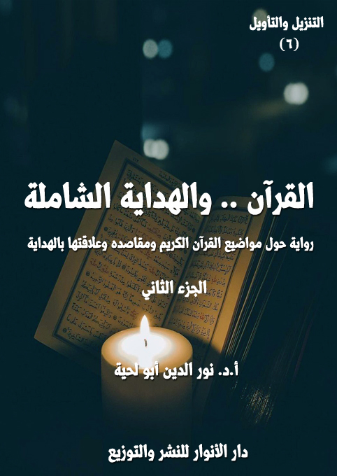

الكتاب: القرآن.. والهداية الشاملة ج2
الوصف: رواية حول مواضيع القرآن الكريم ومقاصده وعلاقتها بالهداية
السلسلة: التنزيل والتأويل
المؤلف: أ. د. نور الدين أبو لحية
الناشر: دار الأنوار للنشر والتوزيع
الطبعة: الأولى، 1443 هـ
عدد الصفحات: 630
ISBN: 978-620-4-72102-6
لمطالعة الكتاب من تطبيق مؤلفاتي المجاني وهو أحسن وأيسر: هنا

هذا الكتاب هو المقدمة السادسة لهذه السلسلة، ويتناول الخاصية الكبرى من خصائص القرآن الكريم، خاصية الهداية، التي نص عليها قوله تعالى: ﴿ذَلِكَ الْكِتَابُ لَا رَيْبَ فِيهِ هُدًى لِلْمُتَّقِينَ﴾ [البقرة: 2]، وقد رأينا من خلال استقراء ما ورد في القرآن الكريم حولها أنها تتضمن أربعة معان كبرى:
أولها: الأسس التي تقوم عليها الهداية، والتي لا يمكن أن تتحقق من دونها، وقد أشارت إليها كل الآيات التي تذكر الهداية القرآنية، فهي تقصرها على من لم تحل بينهم وبينها الحجب، وتجعلها خالصة لمن وفروا لأنفسهم الأهلية والقابلية لها.
ثانيها: الهداية للحقائق الكبرى، ابتداء من معرفة الله وانتهاء بمعرفة الكون والحياة والإنسان والمعاد وكل العوالم التي ذُكرت في القرآن الكريم، وكيفية التعامل معها.
ثالثها: الهداية للقيم والوظائف التي كُلف الإنسان بمراعاتها، والتي لا يمكن التعرف الدقيق عليها من دون هداية إلهية.
رابعها: غايات الهداية، ذلك أن لكل طريق غايات تحدد مساره، وتجعل السائر فيه أكثر اندفاعا ونشاطا وحماسة.
وبناء على هذا كان هذا الكتاب بجزئية عبارة عن تفسير موضوعي مختصر لمواضيع القرآن الكريم الكبرى جميعا، وقد اكتفينا فيه بذكر المواضيع القرآنية، وما ورد فيها من الآيات الكريمة، مع انتقاء بعضها وذكر تفسيره المختصر الذي يحدد معناه بسهولة ويسر.
وقد صببنا كل ذلك في رواية يرحل فيها المؤلف إلى المستقبل بعد أن تعم الهداية الأرض جميعا، وهناك يستمع للكثير ممن يحدثه عن تلك المعاني، ويبسطها بقدر الإمكان، وفي أجواء خاصة تتناسب مع الآيات الكريمة المراد الحديث عنها.
القرآن.. والهداية الشاملة (2/7)
هذا هو الجزء الثاني من كتاب [القرآن والهداية الشاملة]، وهو يتضمن ما يلي:
الفصل الثالث: القرآن، والهداية السلوكية: وقد تطرقنا فيه إلى أربع أركان كبرى لهذا النوع من الهداية، وهي:
1. التهذيب والتصفية، وقد تطرقنا فيه لما دعانا القرآن الكريم إلى تهذيب النفس عنه، وقد ذكرنا فيه: الجحود، والإعراض، والضلال، والكذب، والخداع، والافتراء، والاستعلاء، والعجب، والكبر، والعداوة، والحسد، والقتل، والنهب، والقذف، والمنع، والخذلان، والاحتقار، واللؤم، والفحش، والنجوى، والإسراف، والمجاهرة، والنجاسة، والحرام، والفاحشة.
2. الشعائر التعبدية، وقد تطرقنا فيه للشعائر التعبدية الكبرى، وهي: الصلاة، والتلاوة والذكر والدعاء، والصوم، والحج.
3. المقامات الروحية، وقد تطرقنا فيه لمنازل السلوك الروحي، وهي: الخشية، والرجاء، والتوبة، والإخلاص، والتوكل، والشكر، والمحبة.
4. الأخلاق السامية، وقد تطرقنا فيه للقيم الأخلاقية الكبرى التي وردت في القرآن الكريم من الصدق، والأدب، والسماحة، والسخاء، والعدل، والشجاعة، والإحسان.
الفصل الرابع: القرآن، وغايات الهداية، وقد ذكرنا فيه أربع غايات كبرى للهداية، وهي:
1. الحقيقة الخالصة، وتطرقنا فيه إلى ردود القرآن الكريم على أسباب التيه والضلال، والنظريات المرتبطة بها.. وإلى الهدى والنور الذي وضعه الله تعالى في كتابه ليجلي
القرآن.. والهداية الشاملة (2/8)
الحقائق بأجمل صورة وأكملها.
2. الكمال الإنساني، وتطرقنا فيه ـ أولا ـ لنماذج عن الكمال الإنساني في القرآن الكريم، والمتمثلة في الآيات التي جمعت أوصاف المؤمنين، وهي: المسلمون، والمؤمنون، والمتقون، والمكرمون، والأبرار، والصادقون، والمجاهدون، وأولو الألباب، والمفلحون، والمتوكلون، والسابقون، وعباد الرحمن.. ثم ذكرنا صفات وخصائص المجتمع الفاضل، وهي: التعارف، والتواصل، والتكافل، والتناصح.. ثم ذكرنا صفات وخصائص الحكومة العادلة، والمتمثلة في الحاكمية، والخلافة.
3. السعادة الأبدية، وتطرقنا فيه ـ أولا ـ للسعادة الدنيوية، والتي تتمثل في الطمأنينة، والتمكين، والرفاه، والإشراق.. ثم السعادة الأخروية، وما ورد في القرآن الكريم عن أهل الجنة، ومشاهد النجاة والفوز.
القرآن.. والهداية الشاملة (2/9)
ثالثا ـ القرآن.. والهداية السلوكية
بعد أن استمعت إلى تلك الأحاديث الجميلة عن المعارف الإيمانية المرتبطة بالله والنبوة والإنسان والكون والسنن والملائكة والمعاد، ربت على كتفي رجل، وقال: هلم معي إلى منازل السلوك.. فلا يمكن فهم منازل المعارف من دون أن تصفي مرآة قلبك في منازل السلوك.
قلت: ما دام الأمر كذلك.. فلم لم أمر أولا على منازل السلوك؟
قال: لأنه لا يمكن السلوك من دون معرفة.
قلت: أرى أنك واقع في الدور، وتريد أن توقعني فيه.. فكيف يحتاج السلوك إلى المعرفة، ثم المعرفة نفسها تحتاج إلى السلوك؟
قال: ألم تسمع قوله تعالى: ﴿وَالَّذِينَ اهْتَدَوْا زَادَهُمْ هُدًى وَآتَاهُمْ تَقْوَاهُمْ﴾ [محمد: 17]؟
قلت: بلى.. فما فيها من العلم؟
قال: الهداية هدايتان: ابتدائية، نميز بها الحق عن الباطل.. وحقيقية، نتعمق بها في معرفة الحق، لننتقل من علم اليقين إلى عين وحق اليقين.
قلت: أجل.. وقد سمعت بعض هذا المعنى في تأويل قوله تعالى: ﴿ذَلِكَ الْكِتَابُ لَا رَيْبَ فِيهِ هُدًى لِلْمُتَّقِينَ﴾ [البقرة: 2]
قال: فهلم معي إذن.. فمركبتي تنتظر.
قلت: إلى أين؟
قال: إلى صنعاء اليمن.. وإلى اليمنيين أهل الإيمان والحكمة والقلوب الرقيقة.. فقد
القرآن.. والهداية الشاملة (2/10)
جعل الله بلادهم في عصرنا موئلا لكل من يريد أن يهذب نفسه، ويرقى بها.
سرت معه في مركبته العجيبة إلى اليمن.. وإلى صنعاء تحديدا.. والتي كان لها من الجمال أضعاف ما هي عليه.. بالإضافة إلى بساطتها التي لا تضاهيها فيها أي بلاد أخرى.
ما إن وصلنا حتى وجدنا الناس ينتشرون في حلقات كثيرة.. وقد سألت صاحبي عنهم، وكيف أسير إليهم.. فقال: سر فقط.. فأي حلقة تراها أمامك، فأنت المقصود منها.
سرت إلى حلقة قريبة، رأيت فيها شيخا يقول للمتحلقين حوله: هل تعرفون الصفات التي وُصف بها الإنسان في القرآن الكريم؟
قال أحدهم (1): أجل.. من ذلك وصفه بالجحود والإعراض، كما في قوله تعالى: ﴿وَإِذَا مَسَّ الْإِنْسَانَ الضُّرُّ دَعَانَا لِجَنْبِهِ أَوْ قَاعِدًا أَوْ قَائِمًا فَلَمَّا كَشَفْنَا عَنْهُ ضُرَّهُ مَرَّ كَأَنْ لَمْ يَدْعُنَا إِلَى ضُرٍّ مَسَّهُ كَذَلِكَ زُيِّنَ لِلْمُسْرِفِينَ مَا كَانُوا يَعْمَلُونَ﴾ [يونس: 12] ففي هذه الآية يكشف الله سبحانه وتعالى عن ضلال الإنسان، وكفره بنعم الله، وجحوده لأفضاله عليه، وإحسانه إليه.. حيث نجد أن هذا الإنسان الصارخ الضارع المستسلم المستكين، حين يرفع الله عنه البلوى، ويكشف ما به من ضر، يمكر بفضل الله عليه، وينسى رحمته به، ويمضى فيما كان فيه من كفر وضلال.. كأن ضرا لم يكن قد مسه، وكأن حالا من الذلة والاستكانة لم تكن قد لبسته، وكأن رحمة السماء لم تمد يدها إليه وتستنقذه من الهلاك المطبق عليه.
قال آخر (2): ومثل ذلك وُصف في قوله تعالى: ﴿وَإِذَا أَنْعَمْنَا عَلَى الْإِنْسَانِ أَعْرَضَ وَنَأَى بِجَانِبِهِ وَإِذَا مَسَّهُ الشَّرُّ كَانَ يَئُوسًا﴾ [الإسراء: 83]، أي وإذا أنعمنا على الإنسان بمال
__________
(1) التفسير القرآني للقرآن (6/ 967)
(2) تفسير المراغي (15/ 87)
القرآن.. والهداية الشاملة (2/11)
وعافية، وفتح ونصر وفعل ما يريد ـ أعرض عن طاعتنا وعبادتنا، ونأى بجانبه، أما إذا أصابته الجوائح، وانتابته النوائب، فهو يئوس قنوط من حصول الخير بعد ذلك، كما قال تعالى: ﴿وَإِذَا أَنْعَمْنَا عَلَى الْإِنْسَانِ أَعْرَضَ وَنَأَى بِجَانِبِهِ وَإِذَا مَسَّهُ الشَّرُّ فَذُو دُعَاءٍ عَرِيضٍ﴾ [فصلت: 51]
قال آخر (1): ومثل ذلك وُصف في قوله تعالى: ﴿فَأَمَّا الْإِنْسَانُ إِذَا مَا ابْتَلَاهُ رَبُّهُ فَأَكْرَمَهُ وَنَعَّمَهُ فَيَقُولُ رَبِّي أَكْرَمَنِ وَأَمَّا إِذَا مَا ابْتَلَاهُ فَقَدَرَ عَلَيْهِ رِزْقَهُ فَيَقُولُ رَبِّي أَهَانَنِ﴾ [الفجر: 15 ـ 16]، أي أن الإنسان يرى النعمة فيما وسع الله عليه من رزقه امتيازا وكرامة، بحيث يشعر بالامتياز الذاتي في الرعاية الإلهية دون سائر الخلق، فيدفعه ذلك إلى الشعور بالكبرياء والعلو على الآخرين.. وهو بذلك لا يعلم أن الله قد أجرى الحياة، في عطائه للناس أو منعه عنهم، على السنن الكونية والاجتماعية، فلا يعطي إنسانا لكرامته عنده، ولا يمنعه لاحتقاره لديه، ولكن لاقتضاء تلك السنن ذلك.. ولا بد له من ملاحظة أن ذلك قد يكون اختبارا طبيعيا لصدقه في إيمانه، لأن الله أراد من الناس الثبات في كل مواقع الاهتزاز الواقعية، فلا تسقطهم الزلازل، ولا تطغيهم المواقع، لأن الإيمان ليس حالة طارئة تبرز في حالات الرخاء، أو في حالة الشدة، ولأن الرجوع إلى الله والالتزام بالإخلاص لربوبيته، ليس أمرا مربوطا بوضع معين، بل لا بد من أن يكون الإيمان بالله والإخلاص له في جميع حالات الإنسان، فقد يبتلي الله الإنسان بالغنى لينظر في عمله، هل يشكر نعمة الله، فيخشع قلبه له، ويشعر بأن ما عنده هو منه سبحانه، ويبذل ذلك في طاعته، ويحركه في مواقع رضاه، أو يفكر بنعمة الله عليه فيعتبر ذلك كرامة وامتيازا، أو يوحي لنفسه بأنه قد حصل عليها من خلال جهده وخبرته، وليس لله دخل في ذلك، كما حدثنا الله عن قارون في قوله: ﴿إِنَّمَا أُوتِيتُهُ عَلَى عِلْمٍ عِنْدِي﴾
__________
(1) من وحي القرآن (24/ 247)
القرآن.. والهداية الشاملة (2/12)
[القصص: 78]، ثم يستعلي بما ملكه على الناس ليواجههم من موقع الكبرياء المالي.. ولهذا، فلا بد للإنسان من اعتبار النعمة اختبارا وامتحانا، لا كرامة وامتيازا.
قال آخر (1): وفي قوله تعالى: ﴿وَأَمَّا إِذَا مَا ابْتَلَاهُ فَقَدَرَ عَلَيْهِ رِزْقَهُ﴾ [الفجر: 16] ذكر لنوع آخر من أنواع الواقع الصعب الذي يتحول بفعل مشاكله المرتبطة به، ليكون اختبارا وامتحانا، فقد يبتلي الله بعض عباده بالفقر لينظر في تصرفه وانفعاله به، هل يصبر على ذلك، فلا يبيع دينه بمال الكافرين، ولا يغير مواقفه بإغراءات المستكبرين، ولا يسخط على قضاء الله، ولا يسقط أمام الأوضاع السلبية التي تتحداه، ليفقد صلته بربه أو يكفر، فيعتبر ذلك إهانة واحتقارا من الله له، وينحرف عن الخط المستقيم على أساس ذلك، ثم يبتعد كثيرا عن الله، ليقترب من ساحة أعدائه؟
قال آخر (2): وقد رد القرآن الكريم على كلا الموقفين، حيث رفض المفهوم المنحرف الذي يعتبر المال قيمة كبيرة في الخط الإلهي، كما هو قيمة في المفهوم الإنساني العام في المجتمعات الإنسانية، لأن الله قد أعطى المال للكافرين به، كما منع المال عن بعض أوليائه، ولم يرد للمال قيمة ذاتية في طبيعته، بل اعتبر حركة الإنسان في الجانب العملي في مسئوليته الشرعية الإيمانية في تحريك المال في موارده التي يحبها الله، هي القيمة، لأن قرب الإنسان وبعده عن الله لا يتحدد بحجمه المالي، بل بحجمه العملي، كما قال تعالى: ﴿إِنَّ أَكْرَمَكُمْ عِنْدَ اللَّهِ أَتْقَاكُمْ﴾ [الحجرات: 13]، وهذا ما يريد للناس أن يتمثلوه في وعيهم ووجدانهم، ليكون هو الموقف الإسلامي الذي يمثل مفهومه للمسألة المالية في حركة الواقع في الإسلام.
قال الشيخ: فهل ذكر القرآن الكريم صفات أخرى للإنسان غير ما ذكرتم؟
__________
(1) من وحي القرآن (24/ 248)
(2) من وحي القرآن (24/ 249)
القرآن.. والهداية الشاملة (2/13)
قال أحدهم (1): أجل.. من ذلك وصفه بأنه موجود ضعيف، كما قال تعالى: ﴿وَخُلِقَ الْإِنْسَانُ ضَعِيفًا﴾ [النساء: 28]، أي أن الإنسان في كيانه، واه ضعيف، لأنه خلق من ضعف، كما قال تعالى: ﴿اللَّهُ الَّذِي خَلَقَكُمْ مِنْ ضَعْفٍ ثُمَّ جَعَلَ مِنْ بَعْدِ ضَعْفٍ قُوَّةً ثُمَّ جَعَلَ مِنْ بَعْدِ قُوَّةٍ ضَعْفًا وَشَيْبَةً يَخْلُقُ مَا يَشَاءُ وَهُوَ الْعَلِيمُ الْقَدِيرُ﴾ [الروم: 54].. لكنه حين تلبسه القوة، ينسى ضعفه، ويستولى عليه الغرور، ويستبد به العجب والخيلاء، فإذا هو مارد جبار، وسفيه أحمق، وطائش نزق.. يحارب ربه، ويكفر بخالقه، ويستعبد الناس، أو يتعبد هو للناس، ولا يتعبد لرب العالمين.
قال آخر (2): وقد وردت الآية الكريمة في سياق قوله تعالى: ﴿يُرِيدُ اللَّهُ لِيُبَيِّنَ لَكُمْ وَيَهْدِيَكُمْ سُنَنَ الَّذِينَ مِنْ قَبْلِكُمْ وَيَتُوبَ عَلَيْكُمْ وَاللَّهُ عَلِيمٌ حَكِيمٌ وَاللَّهُ يُرِيدُ أَنْ يَتُوبَ عَلَيْكُمْ وَيُرِيدُ الَّذِينَ يَتَّبِعُونَ الشَّهَوَاتِ أَنْ تَمِيلُوا مَيْلًا عَظِيمًا يُرِيدُ اللَّهُ أَنْ يُخَفِّفَ عَنْكُمْ وَخُلِقَ الْإِنْسَانُ ضَعِيفًا﴾ [النساء: 26 ـ 28]، ومن خلال هذا السياق نستطيع أن نواجه الفكرة الخاطئة التي يحاول البعض أن يفهمها من هذه الآية، وهي أن القرآن الكريم يعمل على أن يعمق إحساس الإنسان بالضعف، ليشعر بالانسحاق في إنسانيته تحت وطأة الشعور بضعفه، مما يعطل فيه إرادة القوة، ويشل فيه طموحه الكبيرة الأفق الواسع الذي يتسع لمواهبه الإنسانية الكبيرة التي تخاطب الحياة كلها.. وخطأ الفكرة يكمن في أن صاحبها لم يدرس أجواء الآية، التي انطلقت لتوحي بأن التشريع راعى في عملية التخطيط للإنسان، فيما يريده له من هدى وقوة، هذا الجانب الذي تتوزعه نقاط الضعف؛ ولهذا فقد خفف عنه ليستطيع الوصول الى طموحاته في القوة والانطلاق بطريقة واقعية تتناسب مع طاقاته وإمكاناته.
__________
(1) التفسير القرآني للقرآن (6/ 968)
(2) من وحي القرآن (7/ 198)
القرآن.. والهداية الشاملة (2/14)
قال آخر (1): ومن ذلك وصفه بالظلم والكفر، كما في قوله تعالى: ﴿إِنَّ الْإِنْسَانَ لَظَلُومٌ كَفَّارٌ﴾ [إبراهيم: 34]، أي إن الإنسان الذي بدل نعمة الله كفرا لشاكر غير من أنعم عليه، فهو بذلك واضع للشكر في غير موضعه، ذاك أن الله هو الذي أنعم عليه بما أنعم، واستحق إخلاص العبادة له، فعبد هو غيره وجعل له أندادا ليضل عن سبيله وذلك هو ظلمه، وهو جحود لنعمه التي أنعم بها عليه، لصرفه العبادة إلى غير من أنعم بها عليه، وتركه طاعة من أنعم عليه.
قال آخر (2): ومن ذلك وصفه بالبخل، كما في قوله تعالى: ﴿وَكَانَ الْإِنْسَانُ قَتُورًا﴾ [الإسراء: 100]، وهو حكم عام على الناس في جملتهم، وأنهم يمسكون أيديهم عن الإنفاق، ولو كان لأحدهم ملء الأرض ذهبا، ليحقق ذاته، ويفردها بين الناس بما جمع من كنوز الدنيا.. وقد ورد في الحديث عن رسول الله صلى الله عليه وآله وسلم أنه قال: (لو كان لابن آدم واديان من ذهب لتمنى ثالثا) (3)، مع أنه ليس به من حاجة إلى هذا الثالث، بل إنه ليكفيه القليل مما ضم عليه أحد الواديين.. لكنها الأثرة وحب الذات.
قال آخر (4): ومن ذلك وصفه بالعجلة، كما في قوله تعالى: ﴿وَكَانَ الْإِنْسَانُ عَجُولًا﴾ [الإسراء: 11]، والآية الكريمة تصور حقيقة إنسانية في التكوين الأولي للإنسان، أو في الواقع العملي في وجوده، وذلك لارتباطه بالجانب الحسي للحياة وتطلعه إلى الصورة الظاهرة فيها، مما يجعله ينحرف نحوها دون حساب وتقدير، تماما كما هو القفز من موقع إلى آخر دون التدقيق في الهوة التي تفصل بين الموقعين، وتفرض عليه سلوك خط السلامة في طريق السير، واكتشاف سبل جديدة، مما يحتاج إلى وقت طويل، أو إلى تأمل عميق.. وهكذا كان
__________
(1) تفسير المراغي (13/ 157)
(2) التفسير القرآني للقرآن (8/ 558)
(3) أحمد (32/ 31) والطبراني في الكبير (5032)
(4) من وحي القرآن (14/ 48)
القرآن.. والهداية الشاملة (2/15)
الإنسان يواجه دعوات الحق، وأهداف الخير في رسالات الأنبياء عليهم السلام الذين كانوا يطرحون للناس نظام الحياة المرتكز على الوحي الإلهي، ويطلبون منهم الانسجام مع هذا الخط في أفكارهم وأقوالهم وأفعالهم وعلاقاتهم، ويحذرونهم من الانحراف عنه، ويبشرونهم بالسعادة في الدنيا وبالجنة في الآخرة إذا أحسنوا الالتزام به، وينذرونهم بالشقاء في الحياة وبالنار في الآخرة إذا أساؤوا السير على هداه.
قال آخر (1): لكن أكثر الناس لا يدققون في فكر الدعوة، ولا يتأملون في النتائج الإيجابية والسلبية فيما يتحرك به التبشير والإنذار، ولا يتروون في تحديد موقفهم من حركة الرسالة ودعوات الرسل، بل ينطلقون مع السطح الظاهر للأشياء، والنتائج المباشرة للواقع، وتلح عليهم الدعوة إلى التفكير وعدم المبادرة إلى السرعة في الإنكار، ويظلون مشدودين إلى أوضاعهم الحسية، فيستعجلون العذاب الذي ينذرهم به الأنبياء، ليتخلصوا من الإحراج، أو ليتخففوا من الإلحاح، أو ليسخروا منهم، لأنهم لا يعتقدون بجدية الموضوع، فيطلبون أن ينزل الله بهم العذاب، كما قد يطلبون في الحالات الطبيعية أن تنزل عليهم السعادة ويهطل عليهم الخير وتفيض عليهم النعمة.. إنهم يستعجلون ذاك كما يستعجلون هذا، لأنهم لا يفهمون معنى ارتباط المسببات بأسبابها، وعلاقة النتائج بمقدماتها، وأن لكل شيء أجلا لا يعدوه، وأن الله عندما يعد الناس بالخير أو يتوعدهم بالعذاب، فإنه لا يستعجل الأمر قبل أوانه، بل يؤخره إلى أجل مسمى وفقا لما قدره للأشياء من أسباب وآجال تبعا لحكمته الثابتة التي لا تهتز ولا تتزلزل، ولو عرف الإنسان كيف يفكر ليعرف النتائج السلبية والإيجابية لخطواته العملية في الحياة، لاستطاع أن يدرك الهول
__________
(1) من وحي القرآن (14/ 49)
القرآن.. والهداية الشاملة (2/16)
العظيم لما يلاقيه من العذاب الذي لو التقى به، لود أن يكون بينه وبينه بعد المشرقين.. وهذا ما يمنعه من السير على الطريقة التي هي أقوم، ومن الانفتاح على البشارة والابتعاد عن أجواء الإنذار.
قال آخر (1): ومن ذلك وصفه بالجدل، كما في قوله تعالى: ﴿وَكَانَ الْإِنْسَانُ أَكْثَرَ شَيْءٍ جَدَلًا﴾ [الكهف: 54]، أي ومع البيان القرآني الشافي والتوضيح الكافي، فإن الإنسان كثير المجادلة والمخاصمة والمعارضة للحق بالباطل، إلا من هدى الله وبصره لطريق النجاة.. وهذا دليل على كثرة الجدال في الإنسان وحبه له، لسعة حيلته، وقوة ذكائه، واختلاف نزعاته وأهوائه.
قال آخر (2): وذلك ما يعني دخوله في المنازعات والمشاجرات التي تريد أن تملأ الجو بالكلام، وتشغله بالبحث في القضايا الصغيرة الجانبية، ليبتعد الناس عن الارتباط بالمسائل الكبيرة في حركة العقيدة والحياة، ولينصرفوا عن التفكير فيها بطريقة علمية موضوعية، عندما تستهلك الهوامش الفكرية كل جهدهم، فيأتون إلى المسألة الحاسمة بجهد مثقل بالتعب، وروح فارغة من القوة، وإرادة متعبة من الخلاف... وهكذا تضيع الحقيقة في غمار الجدل، ويبتعد الإنسان عن العمق، فلا يلتقي بحقائق العقيدة إلا من خلال ستار كثيف من المشاعر المتوترة، والذهنيات المعقدة، والكلام الفارغ.
قال آخر (3): ومن ذلك وصفه بالظلم والجهل، كما في قوله تعالى: ﴿إِنَّا عَرَضْنَا الْأَمَانَةَ عَلَى السَّمَاوَاتِ وَالْأَرْضِ وَالْجِبَالِ فَأَبَيْنَ أَنْ يَحْمِلْنَهَا وَأَشْفَقْنَ مِنْهَا وَحَمَلَهَا الْإِنْسَانُ إِنَّهُ كَانَ ظَلُومًا جَهُولًا﴾ [الأحزاب: 72]، أي إنا عرضنا التكاليف كلها من فرائض وطاعات على
__________
(1) التفسير المنير (15/ 280)
(2) من وحي القرآن (14/ 350)
(3) التفسير المنير (22/ 126)
القرآن.. والهداية الشاملة (2/17)
هذه الأجرام العظام، فلم تطقها وأبت تحمل مسئوليتها، وخافت من حملها، لو فُرض أنها ذات شعور وإدراك، ولكن كلف بها الإنسان، فتحملها مع ضعفه، وهو في ذلك ظلوم لنفسه، جهول لقدر ما تحمله.
قال آخر (1): ذلك أن الأمانة تعني المسؤولية التي يتحملها الإنسان فيما يقوم به من أعمال وأقوال، باعتبار أنها التي تتصل بالنتائج السلبية التي يخاف الإنسان من خلالها أن يتعرض لعقاب الله، وهي التي يمكن أن يعرضها الله على مخلوقاته، بأن تتحمل مسؤولية نفسها، فتدير أوضاعها وتتحرك من موقعها الإرادي، وهذا هو المعقول في ذلك كله.. وعلى هذا، فيكون العرض واردا بنحو الاستعارة، بحيث تكون الفكرة أن المسؤولية التي يتحملها الإنسان، فيما يواجهه من النتائج أمام الله، هي من الثقل بحيث لو عرضها الله على هذه المخلوقات لرفضتها خوفا منها، فنزل ذلك منزلة العرض الواقعي، ﴿فَأَبَيْنَ أَنْ يَحْمِلْنَهَا وَأَشْفَقْنَ مِنْهَا﴾ [الأحزاب: 72] لما يترتب على ذلك من العقاب الإلهي على الانحراف عن أوامر الله ونواهيه مما لا يستطيع مخلوق أن يتحمله أو يقبله، على ما جاء في دعاء الإمام علي: (لأنه لا يكون إلا عن غضبك وانتقامك وسخطك، وهذا ما لا تقوم له السماوات والأرض، يا سيدي، فكيف بي وأنا عبدك الضعيف الذليل الحقير المسكين المستكين)
قال آخر (2): وقوله تعالى: ﴿إِنَّهُ كَانَ ظَلُومًا جَهُولًا﴾ [الأحزاب: 72] يعني أنه لم يقم بما يجب عليه منها، بل ظلم نفسه بانحرافه عن الخط، وجهل موقعه ومرجعه بغفلته، وهذا هو الظاهر منها، خلافا لما فهمه البعض بأن حمل الإنسان للأمانة كان ناشئا من ظلمه لنفسه وجهله بنتائج ما يختاره ويتحمله من المسؤولية.
__________
(1) من وحي القرآن (18/ 361)
(2) من وحي القرآن (18/ 361)
القرآن.. والهداية الشاملة (2/18)
قال آخر (1): فالآية الكريمة تبين أعظم إمتيازات الإنسان وأهمها في كل عالم الخلقة، ومما لا شك فيه أن إباء السموات والأرض تحمل المسؤولية وإمتناعها عن ذلك لم يكن استكبارا منها، كما كان ذلك من الشيطان، كما قال تعالى: ﴿أَبَى وَاسْتَكْبَرَ﴾ [البقرة: 34]، بل إن إباءها كان مقترنا بالإشفاق، أي الخوف الممتزج بالتوجه والخضوع.
قال آخر (2): ومن ذلك وصفه بالكفر، كما في قوله تعالى: ﴿وَهُوَ الَّذِي أَحْيَاكُمْ ثُمَّ يُمِيتُكُمْ ثُمَّ يُحْيِيكُمْ إِنَّ الْإِنْسَانَ لَكَفُورٌ﴾ [الحج: 66]،، ففي الآية الكريمة تذكير للناس بتلك النعمة الكبرى، نعمة الحياة.. فقد كان الناس عدما، أو ترابا في هذا التراب.. ثم إذا هم هذا الخلق السوى العاقل، المدبر، الصانع، ثم إذا هم تراب مرة أخرى.. ثم إذا هم يلبسون حياة لا موت بعدها، وبهذه الحياة تتم النعمة، نعمة الحياة.. ذلك أنه لو كانت الحياة الدنيا هي كل حياة الإنسان لكانت نعمة ناقصة، بل إنها تكون نقمة لما فيها من معاناة، وأعباء، وشدائد، يلتقى بها الإنسان في مسيرة الحياة الدنيا، من المولد إلى الممات.. فالحياة الدنيا هي إعداد للحياة الأخرى، إنها زرع، والأخرى حصاد لثمر هذا الزرع، ومن هنا كان لا بد من الحياة الآخرة، حتى تكون الحياة نعمة تستوجب الحمد والشكران لله.. ولهذا جاء قوله تعالى: ﴿إِنَّ الْإِنْسَانَ لَكَفُورٌ﴾ [الحج: 66] تعقيبا على تلك النعمة، وتنديدا بالإنسان وكفره وجحوده لها، إذ لم يؤد مطلوب الله منه في هذه الحياة الدنيا، الموصولة بالحياة الآخرة.
قال آخر (3): ومثل ذلك قوله تعالى: ﴿وَجَعَلُوا لَهُ مِنْ عِبَادِهِ جُزْءًا إِنَّ الْإِنْسَانَ لَكَفُورٌ مُبِينٌ﴾ [الزخرف: 15]، أي وأثبتوا لله ولدا، إذ قالوا الملائكة بنات الله، والولد جزء من والده كما قال رسول الله صلى الله عليه وآله وسلم: (فاطمة بضعة مني) (4).. ومقالهم هذا يقتضى كون الخالق جسما
__________
(1) الأمثل في تفسير كتاب الله المنزل (13/ 367)
(2) التفسير القرآني للقرآن (9/ 1091)
(3) تفسير المراغي (25/ 76)
(4) (26/ 46) والترمذي (3869)
القرآن.. والهداية الشاملة (2/19)
محدثا لمشابهة الولد له، فلا يكون إلها ولا خالقا.. ثم أكد كفرهم بقوله: ﴿إِنَّ الْإِنْسَانَ لَكَفُورٌ مُبِينٌ﴾ [الزخرف: 15] أي إن الإنسان لجحود بنعم ربه التي أنعمها عليه، ظاهر كفره لمن تأمل حاله وتدبر أمره.
قال آخر (1): ومن ذلك وصفه بالهلع والجزع، كما في قوله تعالى: ﴿إِنَّ الْإِنْسَانَ خُلِقَ هَلُوعًا إِذَا مَسَّهُ الشَّرُّ جَزُوعًا وَإِذَا مَسَّهُ الْخَيْرُ مَنُوعًا﴾ [المعارج: 19 ـ 21]، ففي الآية الكريمة حديث عن الإنسان في صورته السلبية.. والهلع يعني سرعة الجزع عند مس المكروه، وسرعة المنع عند مس الخير (2)، فلا صبر له أمام النوائب التي تحل به، ولا توازن لديه أمام الخيرات التي تقبل عليه، حيث أنه إذا مسه الشر يصبح جزوعا يصرخ من الألم، ويسقط أمام الشدائد، وينهار أمام الهزاهز، فلا يملك أن يتماسك أو يثبت في إحساسه بالمشكلة التي تحيط به.. ﴿وَإِذَا مَسَّهُ الْخَيْرُ مَنُوعًا﴾ [المعارج: 21] فلا يمنح غيره شيئا مما أنعم الله به عليه من نعم الحياة، لأنه يخاف على نفسه الفقر، ويضيق بالناس الذين يتطلعون إليه ليحصلوا على بعض ما عنده مما يلبي حاجاتهم ويحل مشكلة حرمانهم.
قال آخر (3): وهكذا يؤكد القرآن الكريم أن ذلك ليس مجرد حالة طارئة على الإنسان خاضعة للظروف المحيطة به، بل هي حالة غريزية في طبيعة تكوينه الغريزي في الضعف الشعوري الذي يقوده إلى الجزع والسقوط، وإلى البخل والحرص.
قال آخر (4): لكن هذه الغريزة ككل الغرائز الإنسانية، لا تمثل حتمية الحالة السلبية في نتائجها العملية، لأنها يمكن أن تتحول إلى حالة إيجابية من خلال التهذيب الروحي الذي ينعكس إيجابا على التهذيب العملي ليتوازن السلوك الأخلاقي في شخصيته، فيأخذ
__________
(1) من وحي القرآن (23/ 102)
(2) الكشاف ج: 4، ص: 158.
(3) من وحي القرآن (23/ 103)
(4) من وحي القرآن (23/ 103)
القرآن.. والهداية الشاملة (2/20)
بأسباب القوة عندما ينفتح على الله في انفتاحه على قوة الله، كما يعيش روحية العطاء عندما يتطلع إلى امتداد حركة النعمة في المستقبل، كما امتدت في الماضي، لأن الله الذي أعطى الإنسان في الماضي هو الذي يعطيه في المستقبل، فيزداد ثقة بالأمن المستقبلي بالرزق، فلا يمنع ولا يبخل على عباد الله.
قال آخر (1): ولهذا عقب الله تعالى ذلك بقوله: ﴿إِلَّا الْمُصَلِّينَ الَّذِينَ هُمْ عَلَى صَلَاتِهِمْ دَائِمُونَ وَالَّذِينَ فِي أَمْوَالِهِمْ حَقٌّ مَعْلُومٌ لِلسَّائِلِ وَالْمَحْرُومِ وَالَّذِينَ يُصَدِّقُونَ بِيَوْمِ الدِّينِ وَالَّذِينَ هُمْ مِنْ عَذَابِ رَبِّهِمْ مُشْفِقُونَ﴾ [المعارج: 22 ـ 27]، فاستثناء المصلين أمر طبيعي من خلال ما ترمز إليه الصلاة في حياة الإنسان المؤمن من إيمان بالله، وثقة به، وتوكل عليه، واستسلام له، وانفتاح على معنى العبودية في ذاته، فيما يؤكده ذلك من إحساس بمعنى الحرية الإنسانية أمام الكون كله، لأنه يتساوى معه في كونه مخلوقا لله تعالى.. وفي ضوء ذلك، يمكن للقيم الروحية الإنسانية في جانبها العملي أن تؤثر إيجابيا في شعوره بالقوة وحركة الخير والعطاء في حياته، من خلال الإيمان بأن الله يرعاه في نقاط ضعفه وقوته، وأنه يعوض عليه كل ما يقدمه للآخرين من ماله، وهذه هي الصفات التي يمكن أن يتصف بها المصلون في حركتهم الأخلاقية العملية التي ترتفع بهم إلى مستوى الإنسانية القريبة من الله سبحانه.
قال آخر (2): ومن ذلك وصفه بالكدح، كما في قوله تعالى: ﴿يَا أَيُّهَا الْإِنْسَانُ إِنَّكَ كَادِحٌ إِلَى رَبِّكَ كَدْحًا﴾ [الانشقاق: 6]، أي أيها الإنسان، إنك عامل في هذه الحياة ومجد في عملك، ومبالغ في إدراك الغاية إلى أن تنتهى حياتك، وإن كنت لا تشعر بجدك، أو تشعر
__________
(1) من وحي القرآن (23/ 103)
(2) تفسير المراغي (30/ 90)
القرآن.. والهداية الشاملة (2/21)
به وتلهو عنه، وكل خطوة في عملك فهي في الحقيقة خطوة إلى أجلك، وهناك لقاء الله، فالموت يكشف عن الروح غطاء الغفلة ويجلو لها وجه الحق، فتعرف من الله ما كانت تنكره، ويوم البعث يرتفع الالتباس، ويعرف كل عامل ما جر إليه عمله.
قال آخر (1): ومن ذلك وصفه بالكبد، كما في قوله تعالى: ﴿لَقَدْ خَلَقْنَا الْإِنْسَانَ فِي كَبَدٍ﴾ [البلد: 4]، والكبد: المعاناة والشدة.. وهي تشير إلى أن حياة الإنسان ـ كل إنسان ـ في هذه الدنيا، هي شدائد، ومعاناة.. فما يسلم إنسان أبدا من هموم الحياة وآلامها، النفسية، أو الجسدية، فكم يفقد الإنسان من صديق وحبيب؟ وكم يتداعى على جسده من أمراض وعلل؟ وكم؟ وكم؟ مما يطرق الناس من أحداث على مر الأيام، وكر الليالى؟ فالشباب يذبل ويولى، والقوة تتبدد وتصبح وهنا وضعفا، وهذا الجسد الذي ملأ الدنيا حياة وحركة سيعصف به الموت يوما، ويلقى به في باطن الأرض، جثة هامدة متعفنة، لا تلبث أن تصير ترابا.
قال آخر (2): أجل.. فالإنسان وحده من بين المخلوقات ـ فيما نعلم ـ هو الذي تستبد به هذه المخاوف، وتطرقه هذه التصورات، على خلاف سائرا لأحياء التي تقطع مسيرتها في الحياة، في غير قلق أو إزعاج من المستقبل الذي ينتظرها.. إنها لا تنظر إليه، ولا تتصوره، ولا تعيش فيه قبل أن يصبح واقعا.. أما الإنسان، فإنه يعيش في المستقبل أكثر مما يعيش في الواقع، حتى إنه ليرى بعين الغيب في يوم مولده، ما هو مقبل عليه من آلام ومكابدات في مستقبل حياته.
بعد أن سمعت تلك الأحاديث.. توزع الجمع، وقد سمعت اثنين منهما يتحدثان،
__________
(1) التفسير القرآني للقرآن (16/ 1570)
(2) التفسير القرآني للقرآن (16/ 1571)
القرآن.. والهداية الشاملة (2/22)
قال أولهما: أنا أتعجب لم نفخ الله تعالى في الإنسان كل تلك الآثام؟
قال الثاني: نحن نعبر عنها بالآثام باعتبار اختيار الإنسان.. لا باعتبار حقيقة الحال.. فالله الحكيم الرحيم لا يخلق الشر المجرد عن كل خير.. بل هو يخلق الخير.. ومن الخير ما يتحول إلى شر.. كما أن من الطعام ما يتسنه ويصبح غير صالح للأكل.. مع أنه في أصل طبيعته طيب وصالح.
قال الأول: فهمت تسنه الطعام.. ولم أفهم تسنه الإنسان.
قال الثاني: أليس الطعام يتسنه بالغفلة عنه؟
قال الأول: تستطيع أن تقول ذلك.. فعندما نغفل عن الطعام مدة من الزمان نكتشف أنه قد تسنه وتغير.
قال الثاني: فكذلك الإنسان.. كلما غفل عن النظر في حقيقته وتقويمها وربطها بمصدرها الأعلى كلما تمكنت الآفات منه، وانحرفت به بعد ذلك.. لقد أشار القرآن الكريم إلى ذلك، فقال: ﴿وَلَا تَكُونُوا كَالَّذِينَ نَسُوا اللَّهَ فَأَنْسَاهُمْ أَنْفُسَهُمْ أُولَئِكَ هُمُ الْفَاسِقُونَ﴾ [الحشر: 19]
قال الأول: لكن الآية تتحدث عن نسيان الله والغفلة عنه.. لا عن الإنسان لنفسه.
قال الثاني: لا يمكن لإنسان أن يذكر نفسه أو يعرفها.. وهو لا يذكر ربه ولا يعرفه.. إن حقيقة الإنسان لا يمكن أن تتجلى للإنسان إلا عندما يتصل بربه.
قال الأول: أكاد أفهم ما تقول.. لكني أتعجب كيف يخلق الله نفسا شحيحة.. أتعجب لقوله تعالى: ﴿وَأُحْضِرَتِ الْأَنْفُسُ الشُّحَّ﴾ [النساء: 128].. وغيرها من الآيات التي تذكر الخراب الذي يملأ أعماق الإنسان.
قال الثاني: هو ليس خرابا بالصورة التي تتصورها..
القرآن.. والهداية الشاملة (2/23)
قال الأول: فما هو إذن؟
قال الثاني: تستطيع أن تقول: إنه لبنات.. ومواد خام.. نعم هي مفرقة في أرض النفس بحيث يُهيأ لمن يراها بأنه يرى خرابا.. ولكنها في الحقيقة إن وجدت أيد ماهرة ومهندسين خبراء.. فستتحول تلك اللبنات إلى عمران ليس مثله عمران.
قال الأول: هل لي بمثال يوضح لي هذا؟
قال الثاني: أنت تعجبت من أن تفطر النفس على الشح؟
قال الأول: أجل.. ذلك صحيح.. والكل يتعجب من ذلك.
قال الثاني: هل ترى أن حياة الإنسان يمكن أن تستمر.. ولحضارته يمكن أن تقوم.. ولوظيفة الخلافة فيه يمكن أن تؤدى من غير أن تكون فيه هذه الخصلة؟
قال الأول: لو خلت حياة الإنسان من الشح.. وخلت حضارته منه لعاش الإنسان إنسانا.
قال الثاني: ذلك هو الشح المنحرف.. السلبي.. أما الشح الفطري.. والذي هو لبنة من لبنات الإنسان.. فإن نزعه من الإنسان لن يبقيه إنسانا..
قال الأول: كيف؟
قال الثاني: أليس الشح هو الحرص على ما تملكه من أشياء؟
قال الأول: بلى.. فالشحيح هو الذي يبخل بماله.
قال الثاني: البخل بالمال فرع من فروع الشح.. الشح أخطر من أن ينحصر في المال..
قال الأول: صحيح ما تقول..
قال الثاني: نحن نرى الشح السلبي.. وهو شح يوظف لبنات الإنسان لتخدم المصالح الخاصة ولو على حساب المصالح العامة.
القرآن.. والهداية الشاملة (2/24)
قال الأول: فهل هناك شح إيجابي؟
قال الثاني: أجل.. وهو شح يوظف لبنات الإنسان وطاقاته لتخدم المصالح الخاصة.. وفي نفس الوقت لا تضر بالمصالح العامة.. بل إنه يخدم المصالح العامة.. فلا يمكن للمصالح العامة أن تقوم إلا بالمصالح الخاصة.
قال الأول: لم أفهم.
قال الثاني: أرأيت لو أن كل الناس حرصوا على ما عندهم من مال وصحة وعافية.. وشحوا بها.. فلم يدعوها للآفات.. أليس في ذلك اجتماع للمصالح الخاصة والعامة؟
قال الأول: بلى.. سيكون المجتمع حينها مجتمعا قويا صحيحا سليما من الآفات..
قال الثاني: ولهذا قال رسول الله صلى الله عليه وآله وسلم.. وهو يحض على هذا الشح الإيجابي.. لبعض صحابته: (الثلث والثلث كبير، أو كثير، إنك أن تذر ورثتك أغنياء، خير من أن تذرهم عالة يتكففون الناس، وإنك لن تنفق نفقة، تبتغى بها وجه الله، إلا أجرت بها، حتى ما تجعل في فيّ امرأتك) (1)
قال الأول: وعيت هذا في الشح.. لكن هناك آثاما أخرى قد لا ينطبق عليها ما تقول.
قال الثاني: كلها ينطبق عليها ما أقول..
قال الأول: الجدل مثلا.. لا ينطبق عليه ما تقول.
قال الثاني: لولا الجدل ما قامت للأفكار سوق..
قال الأول: والكفر!؟
__________
(1) النسائي 6/ 242، وأبو يعلى (803)
القرآن.. والهداية الشاملة (2/25)
قال الثاني: لولا الكفر ما عرفنا قيمة اختيار المؤمن للإيمان..
قال الأول: والظلم!؟
قال الثاني: الظالم هو الذي انحرف بموازين العدالة في نفسه عن وجهتها..
قال الأول: فالموازين صحيحة.. لكنه هو الذي انحرف بها؟
قال الثاني: أجل.. وهكذا في كل الأمور.. إن مثل ذلك مثل الملح يكون في الطعام.. فمن وضعه بقدر انتفع به وانتفع بطعامه.. ومن وضعه بغير قدر استضر به واستضر بطعامه.
بعد أن انتهيا من حديثهما، سارا، فلحقتهما إلى محل رأيت فيه شيخا يخطب بين مجموعة من الشباب، وهو يقول لهم: لاشك أنكم تأكدتم من أن الجحود هو الإثم الذي تأسست منه الآثام، وتفرعت عنه الذنوب.. فمن امتلأ قلبه بجحود مولاه لم ينل في حياته خيرا ولا بركة ولا فضلا.. وقد أشار القرآن الكريم إلى ذلك في مواضع كثيرة، وكأنه ينبهنا إلى هذا الوحش الخطير الذي يريد أن ينحرف بحياتنا عن المنهج الذي أراده الله لنا.
قال أحدهم (1): أجل.. فقد ذكر الله تعالى سرعة ميل الإنسان إلى الكفر والجحود والغفلة بمجرد أن يفرج الله عنه، فقال: ﴿وَإِذَا مَسَّ الْإِنْسَانَ الضُّرُّ دَعَانَا لِجَنْبِهِ أَوْ قَاعِدًا أَوْ قَائِمًا فَلَمَّا كَشَفْنَا عَنْهُ ضُرَّهُ مَرَّ كَأَنْ لَمْ يَدْعُنَا إِلَى ضُرٍّ مَسَّهُ كَذَلِكَ زُيِّنَ لِلْمُسْرِفِينَ مَا كَانُوا يَعْمَلُونَ﴾ [يونس: 12]، أي إن الإنسان إذا أصابه من الضر ما يشعر فيه بشدة ألم أو خطر على نفسه كغرق ومسغبة وداء عضال دعانا ملحا في كشفه عند اضطجاعه لجنبه أو قعوده في
__________
(1) تفسير المراغي (11/ 75)
القرآن.. والهداية الشاملة (2/26)
كسر بيته أو قيامه على قدميه حائرا في أمره، ولا ينسى حاجته إلى رحمة ربه ما دام يشعر بمس الضر ويعلم من نفسه العجز عن النجاة منه، وقدم من هذه الحالات الثلاث ما يكون الإنسان أشد عجزا وشعوره بالحاجة إلى ربه أقوى ثم التي تليها ثم التي تليها.. فلما كشفنا عنه ضره الذي دعانا إليه حال شعوره بعجزه عن كشفه بنفسه أو بغيره من الأسباب مر ومضى في طريقه التي كان عليها من الغفلة عن ربه والكفر به كأن الحال لم تتغير ولم يدعنا إلى شئ ولم نكشف عنه ضرا.
قال آخر (1): ومثل ذلك قال تعالى: ﴿وَإِذَا مَسَّ الْإِنْسَانَ ضُرٌّ دَعَا رَبَّهُ مُنِيبًا إِلَيْهِ ثُمَّ إِذَا خَوَّلَهُ نِعْمَةً مِنْهُ نَسِيَ مَا كَانَ يَدْعُو إِلَيْهِ مِنْ قَبْلُ وَجَعَلَ لِلَّهِ أَنْدَادًا لِيُضِلَّ عَنْ سَبِيلِهِ قُلْ تَمَتَّعْ بِكُفْرِكَ قَلِيلًا إِنَّكَ مِنْ أَصْحَابِ النَّارِ﴾ [الزمر: 8]، وفي الآية الكريمة تصوير للموقف المتناقض من الكفار، حيث أنه إذا أصاب الكافر شدة من مرض أو فقر أو خوف، تضرع إلى ربه، راجعا إليه تائبا، مستغيثا به في تفريج كربته، وكشف ما نزل به، ثم إذا منحه نعمة أو أعطاه وملكه، وصار في حال رخاء ورفاهية، نسي ذلك الدعاء والتضرع، أو نسي ربه الذي كان يدعوه من قبل، وجعل لله شركاء من الأصنام أو غيرها، يعبدها، ليصير وتكون نتيجته وعاقبته الضلال والإضلال، يضل بنفسه، ويضل الناس بعمله هذا ويمنعهم من توحيد الله والدخول في الإسلام.
قال آخر: وقد أشار الله تعالى إلى المعنى الأول، وهو أنه عند الحاجة يتضرع ويستغيث بالله قوله تعالى: ﴿وَإِذَا مَسَّكُمُ الضُّرُّ فِي الْبَحْرِ ضَلَّ مَنْ تَدْعُونَ إِلَّا إِيَّاهُ فَلَمَّا نَجَّاكُمْ إِلَى الْبَرِّ أَعْرَضْتُمْ وَكَانَ الْإِنْسَانُ كَفُورًا﴾ [الإسراء: 67].. وأشار إلى المعنى الثاني، وهو أنه في حال
__________
(1) التفسير المنير (23/ 257)
القرآن.. والهداية الشاملة (2/27)
الرفاهية ينسى ذلك الدعاء والتضرع، قوله تعالى: ﴿وَإِذَا مَسَّ الْإِنْسَانَ الضُّرُّ دَعَانَا لِجَنْبِهِ أَوْ قَاعِدًا أَوْ قَائِمًا فَلَمَّا كَشَفْنَا عَنْهُ ضُرَّهُ مَرَّ كَأَنْ لَمْ يَدْعُنَا إِلَى ضُرٍّ مَسَّهُ﴾ [يونس: 12]
قال آخر (1): ومثل ذلك قال تعالى: ﴿فَإِذَا مَسَّ الْإِنْسَانَ ضُرٌّ دَعَانَا ثُمَّ إِذَا خَوَّلْنَاهُ نِعْمَةً مِنَّا قَالَ إِنَّمَا أُوتِيتُهُ عَلَى عِلْمٍ بَلْ هِيَ فِتْنَةٌ وَلَكِنَّ أَكْثَرَهُمْ لَا يَعْلَمُونَ﴾ [الزمر: 49]، فالآية الكريمة تشير إلى أن مشكلة الإنسان أنه لا يفكر في قضاياه إلا من خلال اللحظة التي يعيش في داخلها، فلا يتعاطى معها انطلاقا من المعطيات الحقيقية التي تنفذ إلى داخلها في العمق العميق من الحياة.. وهذه هي الحالة الطبيعية التي يعيشها الإنسان في حياته، في حجم الظاهرة المتكررة مع الكثيرين من أفراده، فقد يلاحظ المتتبع للسلوك الإنساني أنه قد يختلف في علاقته بالله ونظرته إليه وإلى نفسه، بين حالة وحالة، فإذا عرض له المرض أو الفقر أو الخوف، أو غير ذلك من الأوضاع التي تمثل جانبا من جوانب النقص المادي والمعنوي في حياته الخاصة، أو غرق في أزماته النفسية من الداخل والخارج، فإنه يلجأ إلى الله، ليعيش مع الوجدان الإيماني الذي يبحث فيه الإنسان عن ربه ليبتهل إليه ويخضع له، ويتوسل إليه في إنقاذه من الواقع السيئ القلق المهتز الذي يعيش فيه، وتبقى العلاقة بالله مرتبطة بالحاجة إليه، في الجانب الحسي المباشر في حركة الشعور، ويبقى الشعور بالعبودية المنسحقة أمام الربوبية المطلقة محدودا في هذه الدائرة، فإذا تبدل الوضع إلى وضع أفضل وجاءت النعم الإلهية لتغمر كل حياته، وابتعدت الأزمات عن الداخل النفسي، وعن الواقع الخارجي، واستراح للغنى بعد الفقر، وللصحة بعد المرض، وللأمن بعد الخوف، وللعلو بعد الانحطاط، نسي ربه وفضله عليه، وحركة نعمته في وجوده وفي امتداد حياته، واستغرق في
__________
(1) من وحي القرآن (19/ 346)
القرآن.. والهداية الشاملة (2/28)
ذاته، في العنصر المباشر من حركتها، وفي الطاقات البارزة في حركته، فأصبح يتحدث عن هذه النعم الكثيرة التي تملأ كل وجوده، من خلال الميزة الشخصية التي يملكها، فيعيد الفضل إلى ما يملكه من علم وخبرة وقوة وحسن إدارة وذكاء وشطارة ونحو ذلك، فلا دخل لله بنظره في ذلك، ولا حاجة به إليه، بل هو التفوق الذاتي في كل شيء.
قال آخر (1): وقد عبر الله عن ذلك بأنه فتنة يفتن الله به عباده، ويمتحنهم ويختبر إيمانهم، وهو العالم به، ليظهر جوهره في أنفسهم وأمام الناس.. إن ما يجدونه من السعة والجاه والقوة يخيل لهم أنهم يملكونه بأنفسهم ولا يحتاجون إلى الله إلا من عصمه الله منهم، فكان واعيا للمسألة في عمقها الواقعي، وفي معناها الإلهي، مما يجعل من الإنسان عارفا بحاجته إلى الله في كل شيء، وأنه لا يقدر على أي أمر إلا ما أقدره الله عليه في كل قضاياه وقدراته الخاصة والعامة، ﴿وَلَكِنَّ أَكْثَرَهُمْ لَا يَعْلَمُونَ﴾ [الطور: 47] لأنهم يرتبطون بالجانب الحسي المباشر بالأمور، ولا يلتفتون إلى ما تحت السطح، أو في آفاق الغيب، ليعرفوا أن الله وراء ذلك كله.
قال آخر: وهكذا ذكر الله تعالى جحود الإنسان وغفلته عن فضل ربه عليه، فقال ـ وهو يستعرض نعم الله على عباده ـ: ﴿اللَّهُ الَّذِي خَلَقَ السَّمَاوَاتِ وَالْأَرْضَ وَأَنْزَلَ مِنَ السَّمَاءِ مَاءً فَأَخْرَجَ بِهِ مِنَ الثَّمَرَاتِ رِزْقًا لَكُمْ وَسَخَّرَ لَكُمُ الْفُلْكَ لِتَجْرِيَ فِي الْبَحْرِ بِأَمْرِهِ وَسَخَّرَ لَكُمُ الْأَنْهَارَ وَسَخَّرَ لَكُمُ الشَّمْسَ وَالْقَمَرَ دَائِبَيْنِ وَسَخَّرَ لَكُمُ اللَّيْلَ وَالنَّهَارَ وَآتَاكُمْ مِنْ كُلِّ مَا سَأَلْتُمُوهُ وَإِنْ تَعُدُّوا نِعْمَتَ اللَّهِ لَا تُحْصُوهَا إِنَّ الْإِنْسَانَ لَظَلُومٌ كَفَّارٌ﴾ [إبراهيم: 32 ـ 34]، وقال: ﴿أَلَمْ تَرَ أَنَّ اللَّهَ سَخَّرَ لَكُمْ مَا فِي الْأَرْضِ وَالْفُلْكَ تَجْرِي فِي الْبَحْرِ بِأَمْرِهِ وَيُمْسِكُ السَّمَاءَ أَنْ تَقَعَ
__________
(1) من وحي القرآن (19/ 347)
القرآن.. والهداية الشاملة (2/29)
عَلَى الْأَرْضِ إِلَّا بِإِذْنِهِ إِنَّ اللَّهَ بِالنَّاسِ لَرَءُوفٌ رَحِيمٌ وَهُوَ الَّذِي أَحْيَاكُمْ ثُمَّ يُمِيتُكُمْ ثُمَّ يُحْيِيكُمْ إِنَّ الْإِنْسَانَ لَكَفُورٌ﴾ [الحج: 65 ـ 66]،
قال آخر: ولهذا، فإن الله يصف الإنسان بالكفر الشديد المبين الذي لا فوقه كفر ولا مثله جحود، قال تعالى: ﴿قُتِلَ الْإِنْسَانُ مَا أَكْفَرَهُ﴾ [عبس: 17]
قال آخر: وأخبرنا الله تعالى على عواقب جحود النعمة.. ومن الأمثلة على ذلك قوله تعالى مخبرا عن قوم عاد: ﴿وَتِلْكَ عَادٌ جَحَدُوا بِآيَاتِ رَبِّهِمْ وَعَصَوْا رُسُلَهُ وَاتَّبَعُوا أَمْرَ كُلِّ جَبَّارٍ عَنِيدٍ وَأُتْبِعُوا فِي هَذِهِ الدُّنْيَا لَعْنَةً وَيَوْمَ الْقِيَامَةِ أَلَا إِنَّ عَادًا كَفَرُوا رَبَّهُمْ أَلَا بُعْدًا لِعَادٍ قَوْمِ هُودٍ﴾ [هود: 59 ـ 60]،
قال آخر: وما حصل لعاد بسبب جحودهم هو ما حصل لغيرهم، قال تعالى يذكر ذلك، ويذكر به: ﴿فَإِنْ أَعْرَضُوا فَقُلْ أَنْذَرْتُكُمْ صَاعِقَةً مِثْلَ صَاعِقَةِ عَادٍ وَثَمُودَ إِذْ جَاءَتْهُمُ الرُّسُلُ مِنْ بَيْنِ أَيْدِيهِمْ وَمِنْ خَلْفِهِمْ أَلَّا تَعْبُدُوا إِلَّا اللَّهَ قَالُوا لَوْ شَاءَ رَبُّنَا لَأَنْزَلَ مَلَائِكَةً فَإِنَّا بِمَا أُرْسِلْتُمْ بِهِ كَافِرُونَ فَأَمَّا عَادٌ فَاسْتَكْبَرُوا فِي الْأَرْضِ بِغَيْرِ الْحَقِّ وَقَالُوا مَنْ أَشَدُّ مِنَّا قُوَّةً أَوَلَمْ يَرَوْا أَنَّ اللَّهَ الَّذِي خَلَقَهُمْ هُوَ أَشَدُّ مِنْهُمْ قُوَّةً وَكَانُوا بِآيَاتِنَا يَجْحَدُونَ فَأَرْسَلْنَا عَلَيْهِمْ رِيحًا صَرْصَرًا فِي أَيَّامٍ نَحِسَاتٍ لِنُذِيقَهُمْ عَذَابَ الْخِزْيِ فِي الْحَيَاةِ الدُّنْيَا وَلَعَذَابُ الْآخِرَةِ أَخْزَى وَهُمْ لَا يُنْصَرُونَ وَأَمَّا ثَمُودُ فَهَدَيْنَاهُمْ فَاسْتَحَبُّوا الْعَمَى عَلَى الْهُدَى فَأَخَذَتْهُمْ صَاعِقَةُ الْعَذَابِ الْهُونِ بِمَا كَانُوا يَكْسِبُونَ﴾ [فصلت: 13 ـ 17]
قال آخر: وقال: ﴿لَقَدْ كَانَ لِسَبَإٍ فِي مَسْكَنِهِمْ آيَةٌ جَنَّتَانِ عَنْ يَمِينٍ وَشِمَالٍ كُلُوا مِنْ رِزْقِ رَبِّكُمْ وَاشْكُرُوا لَهُ بَلْدَةٌ طَيِّبَةٌ وَرَبٌّ غَفُورٌ فَأَعْرَضُوا فَأَرْسَلْنَا عَلَيْهِمْ سَيْلَ الْعَرِمِ وَبَدَّلْنَاهُمْ بِجَنَّتَيْهِمْ جَنَّتَيْنِ ذَوَاتَيْ أُكُلٍ خَمْطٍ وَأَثْلٍ وَشَيْءٍ مِنْ سِدْرٍ قَلِيلٍ ذَلِكَ جَزَيْنَاهُمْ بِمَا كَفَرُوا وَهَلْ نُجَازِي إِلَّا الْكَفُورَ وَجَعَلْنَا بَيْنَهُمْ وَبَيْنَ الْقُرَى الَّتِي بَارَكْنَا فِيهَا قُرًى ظَاهِرَةً
القرآن.. والهداية الشاملة (2/30)
وَقَدَّرْنَا فِيهَا السَّيْرَ سِيرُوا فِيهَا لَيَالِيَ وَأَيَّامًا آمِنِينَ فَقَالُوا رَبَّنَا بَاعِدْ بَيْنَ أَسْفَارِنَا وَظَلَمُوا أَنْفُسَهُمْ فَجَعَلْنَاهُمْ أَحَادِيثَ وَمَزَّقْنَاهُمْ كُلَّ مُمَزَّقٍ إِنَّ فِي ذَلِكَ لَآيَاتٍ لِكُلِّ صَبَّارٍ شَكُورٍ وَلَقَدْ صَدَّقَ عَلَيْهِمْ إِبْلِيسُ ظَنَّهُ فَاتَّبَعُوهُ إِلَّا فَرِيقًا مِنَ الْمُؤْمِنِينَ وَمَا كَانَ لَهُ عَلَيْهِمْ مِنْ سُلْطَانٍ إِلَّا لِنَعْلَمَ مَنْ يُؤْمِنُ بِالْآخِرَةِ مِمَّنْ هُوَ مِنْهَا فِي شَكٍّ وَرَبُّكَ عَلَى كُلِّ شَيْءٍ حَفِيظٌ﴾ [سبأ: 15 ـ 21]
قال الشيخ: بورك فيكم.. فحدثونا عن ثمرات الجحود.
قال أحدهم (1): أولها وأخطرها الإعراض، فقد اعتبرت الآيات الكريمة الإعراض هو سر ما حصل لسبأ من المهالك.. والإعراض هو الصورة البشعة التي ينم بها الجحود عن نفسه، وقد أشار القرآن الكريم إلى صور الإعراض في مواضع كثيرة.. ومنها يأس الإنسان وكفره في حال الضرر، كما قال تعالى: ﴿فَإِنْ أَعْرَضُوا فَمَا أَرْسَلْنَاكَ عَلَيْهِمْ حَفِيظًا إِنْ عَلَيْكَ إِلَّا الْبَلَاغُ وَإِنَّا إِذَا أَذَقْنَا الْإِنْسَانَ مِنَّا رَحْمَةً فَرِحَ بِهَا وَإِنْ تُصِبْهُمْ سَيِّئَةٌ بِمَا قَدَّمَتْ أَيْدِيهِمْ فَإِنَّ الْإِنْسَانَ كَفُورٌ﴾ [الشورى: 48]، أي فإن أعرض هؤلاء الظالمون المدعوون إلى الاستجابة لله، عن قبول هذه الدعوة، فإنك أيها النبي لست مرسلا إليهم لتقوم على حفظهم من شرور أنفسهم وسيئات أعمالهم، فما عليك إلا أن تبلغهم رسالة ربك، وتدعوهم إليه، وتحذرهم بأسه وعقابه، وتبشرهم برحمته ورضوانه.. فإن هم استجابوا لله، بعد أن تبين لهم الرشد من الغى، فقد رشدوا ونجوا، وإن أبوا أن يستجيبوا لله، فليس لك أن تتولى حفظهم، وتأخذ بهم قسرا إلى طريق النجاة.. فإنه ﴿لَا إِكْرَاهَ فِي الدِّينِ﴾ [البقرة: 256].. وإن على كل إنسان أن يتولى حفظ نفسه، ووقايتها، وإقامتها على الطريق الذي يختاره لها.. وهذا ما يشير إليه قوله
__________
(1) التفسير القرآني للقرآن (13/ 84)
القرآن.. والهداية الشاملة (2/31)
تعالى: ﴿إِنْ كُلُّ نَفْسٍ لَمَّا عَلَيْهَا حَافِظٌ﴾ [الطارق: 4] أي ما كل نفس إلا قائم عليها حافظ، مطلوب منه أن يتولى حفظها، وهو هذا العقل الذي أودعه الله فيها، فإذا لم يوقظ الإنسان هذا الحارس، وينبهه إلى أداء وظيفته، ثم دخل عليه من يستبد به، ويستولى عليه، ويورده موارد الهلاك، فلا يلومن إلا نفسه.
قال آخر (1): أما قوله تعالى: ﴿وَإِنَّا إِذَا أَذَقْنَا الْإِنْسَانَ مِنَّا رَحْمَةً فَرِحَ بِهَا وَإِنْ تُصِبْهُمْ سَيِّئَةٌ بِمَا قَدَّمَتْ أَيْدِيهِمْ فَإِنَّ الْإِنْسَانَ كَفُورٌ﴾ [الشورى: 48]، فهو يشير ضمنا إلى ما في بعض النفوس من فساد، لا تجد معه مساغا لطعم الخير، ولا اشتهاء له، وأن ذلك طبيعة غالبة في الإنسان، كذلك من طبيعة الإنسان أنه إذا مسته رحمة من عند الله، وأصابه خير ـ كسعة في الرزق، أو نماء في الثمر، والولد ـ لبسته الفرحة، وإن مسه ضر بما قدمت يداه نسى ما ألبسه الله تعالى إياه من نعم، ولم يعد يذكر لله إلا هذا الضر الذي أصابه بما صنعت يداه..
قال آخر (2): وفي إفراد الإنسان في قوله تعالى: ﴿وَإِنَّا إِذَا أَذَقْنَا الْإِنْسَانَ مِنَّا رَحْمَةً﴾ [الشورى: 48] إشارة إلى كل فرد من أفراد هذا الجنس البشرى ـ فأل هنا للجنس ـ إذ أن كل إنسان أيا كان ـ مؤمنا كان أو كافرا ـ يفرح بالخير إذا أصابه، ويهش له، وتطيب نفسه به.. أما عود الضمير جمعا على الإنسان في قوله تعالى: ﴿وَإِنْ تُصِبْهُمْ سَيِّئَةٌ بِمَا قَدَّمَتْ أَيْدِيهِمْ﴾ [الشورى: 48] فذلك لأنه ليس كل إنسان في حيز هذا الشرط وجوابه، فيكفر بالله، أو يسئ الظن به في حال الضر، بل إن الواقعين في حيز هذا الشرط وجوابه، هم الذين لا يؤمنون بالله مطلقا، أو لا يؤمنون به إيمانا وثيقا، مثل أولئك الذين يعبدون الله على حرف، كما قال الله تعالى فيهم: ﴿وَمِنَ النَّاسِ مَنْ يَعْبُدُ اللَّهَ عَلَى حَرْفٍ فَإِنْ أَصَابَهُ خَيْرٌ اطْمَأَنَّ بِهِ وَإِنْ أَصَابَتْهُ
__________
(1) التفسير القرآني للقرآن (13/ 85)
(2) التفسير القرآني للقرآن (13/ 85)
القرآن.. والهداية الشاملة (2/32)
فِتْنَةٌ انْقَلَبَ عَلَى وَجْهِهِ خَسِرَ الدُّنْيَا وَالْآخِرَةَ ذَلِكَ هُوَ الْخُسْرَانُ الْمُبِينُ﴾ [الحج: 11] فكثير من الناس يقفون هذا الموقف من ربهم.. إن أصابهم خير، رضوا به واطمأنوا إليه، وإن أصابهم شر بما قدمت أيديهم، أنكروا من الله ما كانوا يعرفون.. وقليل من الناس، وهم المؤمنون بالله حقا ـ لا تختلف حالهم مع الله أبدا.. فهم على إيمان به، وحمد له، في السراء والضراء على السواء.. كما قال تعالى فيهم: ﴿وَالصَّابِرِينَ فِي الْبَأْسَاءِ وَالضَّرَّاءِ وَحِينَ الْبَأْسِ أُولَئِكَ الَّذِينَ صَدَقُوا وَأُولَئِكَ هُمُ الْمُتَّقُونَ﴾ [البقرة: 177]
قال آخر (1): وفي قوله تعالى: ﴿بِمَا قَدَّمَتْ أَيْدِيهِمْ﴾ [الشورى: 48] إشارة إلى أن ما يصيب الإنسان من ضر هو من صنع يده.. كما قال تعالى: ﴿مَا أَصَابَكَ مِنْ حَسَنَةٍ فَمِنَ اللَّهِ وَمَا أَصَابَكَ مِنْ سَيِّئَةٍ فَمِنْ نَفْسِكَ﴾ [النساء: 79].. وأن تبدل أحوال الناس من نعمة وعافية إلى سوء وبلاء، هو بما كسبت أيديهم.. ﴿ذَلِكَ بِأَنَّ اللَّهَ لَمْ يَكُ مُغَيِّرًا نِعْمَةً أَنْعَمَهَا عَلَى قَوْمٍ حَتَّى يُغَيِّرُوا مَا بِأَنْفُسِهِمْ﴾ [الأنفال: 53]
قال الشيخ: بورك فيكم.. فحدثونا عن مظاهر الإعراض التي ذكرها القرآن الكريم.
قال أحدهم: من ذلك الإعراض عن الطّاعات والسّهو عنها، كما قال تعالى: ﴿فَأَعْرَضُوا فَأَرْسَلْنَا عَلَيْهِمْ سَيْلَ الْعَرِمِ﴾ [سبأ: 16]، أي فأعرضوا عن توحيد الله، وعبادته وطاعته، وشكره على ما أنعم به عليهم، وعدلوا إلى عبادة الشمس من دون الله، كما حكى الله تعالى عن قول الهدهد لسليمان عليه السلام: ﴿وَجِئْتُكَ مِنْ سَبَإٍ بِنَبَإٍ يَقِينٍ إِنِّي وَجَدْتُ امْرَأَةً تَمْلِكُهُمْ وَأُوتِيَتْ مِنْ كُلِّ شَيْءٍ وَلَهَا عَرْشٌ عَظِيمٌ وَجَدْتُهَا وَقَوْمَهَا يَسْجُدُونَ لِلشَّمْسِ
__________
(1) التفسير القرآني للقرآن (13/ 85)
القرآن.. والهداية الشاملة (2/33)
مِنْ دُونِ اللَّهِ وَزَيَّنَ لَهُمُ الشَّيْطَانُ أَعْمَالَهُمْ فَصَدَّهُمْ عَنِ السَّبِيلِ فَهُمْ لَا يَهْتَدُونَ﴾ [النمل: 22 ـ 24]، فأرسل الله عليهم سيل العرم، أي المياه الكثيرة الغزيرة، بأن تحطم سد مأرب، فملأ الماء الوادي، وغرق البساتين الخضراء ثم يبست، ودفن البيوت، ولم يبق منهم إلا شراذم قليلة تفرقت في البلاد، وأعطوا بدل تلك الجنان والبساتين المثمرة الأنيقة النضرة بساتين لا خير فيها ولا فائدة منها، وإنما أشجار ذات ثمر مر هي الأراك، وأثل هو الطرفاء، والسدر ذي الشوك الكثير والثمر القليل، وهو شجر النبق.
قال آخر (1): ومنها الإعراض عن سماع المواعظ والتأثر بها، كما قال تعالى: ﴿فَمَا لَهُمْ عَنِ التَّذْكِرَةِ مُعْرِضِينَ كَأَنَّهُمْ حُمُرٌ مُسْتَنْفِرَةٌ فَرَّتْ مِنْ قَسْوَرَةٍ﴾ [المدثر: 49 ـ 51]، أي فأى شئ حصل للجاحدين حتى أعرضوا عن القرآن الذي هو مشتمل على التذكرة الكبرى، والموعظة العظمى، كأنهم في فرارهم من الحق كحمر وحشية هاربة من رماة يرمونها ويتعقبونها لصيدها وافتراسها.. وفي هذا إيماء إلى أنهم مع موجبات الإقبال إلى الداعي والاتعاظ بما جاء به يعرضون عنه بغير سبب ظاهر، فأى شئ حصل لهم حتى أعرضوا عنه؟.. وفي تشبيههم في إعراضهم عن القرآن واستماع ما فيه من المواعظ، وشرادهم عنه بحمر وحشية جدت في نفارها مما أفزعها ـ تهجين لحالهم، وشهادة عليهم بالبله، فلا ترى مثل نفار حمر الوحش، واطرادها في العدو إذا هي خافت من شيء.
قال آخر (2): ومنها الإعراض عن تذكر حساب الله لعباده، كما قال تعالى: ﴿اقْتَرَبَ لِلنَّاسِ حِسَابُهُمْ وَهُمْ فِي غَفْلَةٍ مُعْرِضُونَ﴾ [الأنبياء: 1]، أي وهم في غفلة مطبقة عامة.. غفلة عن كل ما هو حق، وخير، كما يدل على ذلك تنكير الغفلة. وليس هذا فحسب، بل إنهم مع
__________
(1) تفسير المراغي (29/ 141)
(2) التفسير القرآني للقرآن (9/ 847)
القرآن.. والهداية الشاملة (2/34)
غفلتهم هذه العامة الشاملة، معرضون عن كل داع يدعوهم إلى أن ينظروا إلى أنفسهم، وأن ينتبهوا من غفلتهم.. والغفلة قد تكون لأمر عارض، بحيث إذا نبه الإنسان تنبه، وإذا دعى أجاب.. ولكن غفلة هؤلاء القوم، غفلة مستولية عليهم، آخذة بكل حواسهم ومدركاتهم: ﴿وَإِنْ تَدْعُهُمْ إِلَى الْهُدَى فَلَنْ يَهْتَدُوا إِذًا أَبَدًا﴾ [الكهف: 57] حيث أنهم مع هذه الغفلة المستولية عليهم ـ بعيدون عن دعوات التنبيه، لا يلقونها إلا من وراء ظهورهم.. فهم عنها معرضون.
قال آخر: ومنها الإعراض عن ذكر اللّه، ليمتلئ الإنسان بدله بالغفلة التي تؤهله لكل أنواع العذاب، كما قال تعالى: ﴿وَمَنْ أَعْرَضَ عَنْ ذِكْرِي فَإِنَّ لَهُ مَعِيشَةً ضَنْكًا﴾ [طه: 124]، حيث يبين أن معيشة الكافر وحياته في الدنيا ضنك ضيقة متعبة، وبالمقابل معيشة المؤمن وحياته سعيدة رحبة وسيعة (1).
قال آخر (2): ومنها الإعراض عن النظر إلى آيات اللّه في الكون وتبصرها، كما قال تعالى: ﴿وَكَأَيِّنْ مِنْ آيَةٍ فِي السَّمَاوَاتِ وَالْأَرْضِ يَمُرُّونَ عَلَيْهَا وَهُمْ عَنْهَا مُعْرِضُونَ﴾ [يوسف: 105]، أي وكم في السموات والأرض من آيات دالة على توحيد الله وكمال علمه وقدرته من شمس وقمر ونجوم وجبال وبحار ونباتات وأشجار، يمر عليها أكثر الناس وهم غافلون عما فيها من عبرة ودلالة على توحيد ربها، وأن الألوهية لا تكون إلا للواحد القهار الذي خلقها وخلق كل شئ فأحسن تدبيره.
قال آخر (3): ومنها الإعراض عن الحقّ وعدم الإذعان له، كما قال تعالى: ﴿بَلْ أَكْثَرُهُمْ لَا يَعْلَمُونَ الْحَقَّ فَهُمْ مُعْرِضُونَ﴾ [الأنبياء: 24]، وفيها اعتذار لكثير من هؤلاء المشركين، الذين عموا عن طريق الحق، فركبوا رؤوسهم، وأبوا أن يستمعوا لداعى الحق،
__________
(1) من وحي القرآن (4/ 192)
(2) تفسير المراغي (13/ 48)
(3) التفسير القرآني للقرآن (9/ 863)
القرآن.. والهداية الشاملة (2/35)
وأن يستجيبوا له.. ومن ثم، فإن الرسول قائم فيهم، لا يتخلى عن مكانه بينهم، ولا يمسك عن دعوتهم، وكشف معالم الطريق لهم، حتى يبصروا من عمى، ويهتدوا من ضلال.
قال آخر (1): ومنها الإعراض عن النّبإ العظيم قال تعالى: ﴿قُلْ هُوَ نَبَأٌ عَظِيمٌ أَنْتُمْ عَنْهُ مُعْرِضُونَ﴾ [ص: 67 ـ 68]، أي قل أيها الرسول للمشركين وغيرهم: إن هذا الذي أنبأتكم به من كوني رسولا منذرا، وأن الله واحد لا شريك له، وأن القرآن وحي منزل من عند الله، هو خبر عظيم مهم جدا، لا يعرض عن مثله إلا غافل شديد الغفلة، فهو ينقذكم من الضلالة إلى النور، لكنكم أنتم معرضون عما أقول، لا تتفكرون فيه.. وفي هذا توبيخ لهم وتقريع، لكونهم أعرضوا عنه، فعليهم العدول عن خطأهم.
قال آخر (2): ومنها الإعراض عن الوفاء بعهود الله التي أخذها على عباده، كما قال تعالى: ﴿وَإِذْ أَخَذْنَا مِيثَاقَ بَنِي إِسْرَائِيلَ لَا تَعْبُدُونَ إِلَّا اللَّهَ وَبِالْوَالِدَيْنِ إِحْسَانًا وَذِي الْقُرْبَى وَالْيَتَامَى وَالْمَسَاكِينِ وَقُولُوا لِلنَّاسِ حُسْنًا وَأَقِيمُوا الصَّلَاةَ وَآتُوا الزَّكَاةَ ثُمَّ تَوَلَّيْتُمْ إِلَّا قَلِيلًا مِنْكُمْ وَأَنْتُمْ مُعْرِضُونَ﴾ [البقرة: 83]، ففي هذه الآية الكريمة ذكرهم الله تعالى بأهم ما أمر به أسلافهم من عبادات ومعاملات، ثم ما كان منهم من إهمالها وترك اتباعها.. أي ثم كان من أمركم أن توليتم عن العمل بالميثاق ورفضتموه وأنتم في حال الإعراض عنه وعدم الاهتمام بشأنه.
قال الشيخ: بورك فيكم.. فحدثونا عما ورد في القرآن الكريم من عقوبات المعرضين.
قال أحدهم (3): أولها وأخطرها عدم مبالاة الله تعالى بمن أعرض عنه، فالله الغني
__________
(1) التفسير المنير (23/ 226)
(2) تفسير المراغي (1/ 155)
(3) التفسير القرآني للقرآن (4/ 163)
القرآن.. والهداية الشاملة (2/36)
الكريم لا يضره جحود الجاحدين كما لا تنفعه طاعة الطائعين، قال تعالى: ﴿وَإِنْ كَانَ كَبُرَ عَلَيْكَ إِعْرَاضُهُمْ فَإِنِ اسْتَطَعْتَ أَنْ تَبْتَغِيَ نَفَقًا فِي الْأَرْضِ أَوْ سُلَّمًا فِي السَّمَاءِ فَتَأْتِيَهُمْ بِآيَةٍ وَلَوْ شَاءَ اللَّهُ لَجَمَعَهُمْ عَلَى الْهُدَى فَلَا تَكُونَنَّ مِنَ الْجَاهِلِينَ﴾ [الأنعام: 35]، أي إن شق عليك إعراض قومك عنك، فحاول ـ إن استطعت ـ أن تشق الأرض، أو ترقى في السماء، لتأتيهم بما يقترحون عليك من آيات.. وليس هذا دعوة من الله سبحانه للنبى صلى الله عليه وآله وسلم أن يفعل هذا، وإنما هو صرف له عن هذا اللغو الذي يلغوا به قومه، من مقترحات يقترحونها عليه، وتيئيس لهم من أن يكون لهذا اللغو قبول عنده.. ولو أراد سبحانه وتعالى أن يدخل الناس جميعا في الإيمان لفعل، ولوضع بين يدى المعاندين والكافرين والمشركين من الآيات القاهرة ما يحملهم على الإيمان، حيث لا يجدون معها سبيلا إلى الإنكار والجحد، ولكنه سبحانه أراد أن يكون للإنسان تقديره وتفكيره، فيما يحمل إليه رسل الله من آيات، يرى فيها العقلاء دلائل الحق، وأمارات الهدى، ولا يرى فيها الضالون والمعاندون شيئا يفتح لهم الطريق إلى الله.. وفي هذا ابتلاء وامتحان، ﴿لِيَمِيزَ اللَّهُ الْخَبِيثَ مِنَ الطَّيِّبِ﴾ [الأنفال: 37]
قال آخر (1): وقال تعالى: ﴿إِنَّ شَرَّ الدَّوَابِّ عِنْدَ اللَّهِ الصُّمُّ الْبُكْمُ الَّذِينَ لَا يَعْقِلُونَ وَلَوْ عَلِمَ اللَّهُ فِيهِمْ خَيْرًا لَأَسْمَعَهُمْ وَلَوْ أَسْمَعَهُمْ لَتَوَلَّوْا وَهُمْ مُعْرِضُونَ﴾ [الأنفال: 22 ـ 23]، ففي هذه الآية الكريمة يشبه الله تعالى المشركين بالدواب التي لا تسمع ولا تتكلم ولا تعقل، لأن قيمة السمع والنطق والعقل، هو في تحريكها بما ينفع حياة الإنسان، وينقذ مصيره من الهلاك، فإذا أهمل كل ذلك، وجمده عن السير في اتجاه المعرفة النافعة، كان كمن فقده بالأساس، وذلك هو الفرق بين الدواب والناس، في سلبية الدواب أمام قضية المعرفة من
__________
(1) من وحي القرآن (10/ 352)
القرآن.. والهداية الشاملة (2/37)
أجل الحياة، وإيجابية الناس أمام ذلك كله.. ﴿وَلَوْ عَلِمَ اللَّهُ فِيهِمْ خَيْرًا لَأَسْمَعَهُمْ﴾ [الأنفال: 23] فقد تركهم الله لأنفسهم، فاختاروا لها الضلال، ولو علم الله أنهم يواجهون الكلمة الحقة من موقع المسؤولية، لأسمعهم بطريقة غير عادية، ولكنه عرف فيهم الإصرار على الهروب من الحقيقة، ﴿وَلَوْ أَسْمَعَهُمْ لَتَوَلَّوْا وَهُمْ مُعْرِضُونَ﴾ [الأنفال: 23] لأنهم لا يريدون لأنفسهم الخير، فيما ينقذ حياتهم ومصيرهم من الهلاك.
قال الشيخ: بورك فيكم.. فحدثونا عن ثمار الإعراض.
قال أحدهم: أولها وأخطرها الضلال.. فكيف يهتدي من أعرض الله عنه؟.. لا شك أنه سيقع في هاوية الضلال.. ومن لم يتنعم باسم الله الهادي، فسيقع في اسمه المضل.. ولله من أبواب الإضلال ما يعدل أبواب هدايته.. ذلك أن الله تعالى خلق الجنة، وجعل لها صفات من توفرت فيه استحق دخولها، ومن لم تتوفر فيه دخل النار.. وهكذا، فالهداية الغالية التي هي مفتاح الجنة لها صفات من ظفر بها حلت عليه، ومن لم يظفر بها وقع في أسر الإضلال الذي هو مفتاح لجميع أبواب جهنم.
قال آخر (1): ولهذا يذكر الله تعالى أنه عاقب الجاحدين بالإضلال.. فقد أخبر عن موسى عليه السلام، فقال: ﴿وَقَالَ مُوسَى رَبَّنَا إِنَّكَ آتَيْتَ فِرْعَوْنَ وَمَلَأَهُ زِينَةً وَأَمْوَالًا فِي الْحَيَاةِ الدُّنْيَا رَبَّنَا لِيُضِلُّوا عَنْ سَبِيلِكَ رَبَّنَا اطْمِسْ عَلَى أَمْوَالِهِمْ وَاشْدُدْ عَلَى قُلُوبِهِمْ فَلَا يُؤْمِنُوا حَتَّى يَرَوُا الْعَذَابَ الْأَلِيمَ﴾ [يونس: 88]، أي ربنا امحق أموالهم بالآفات التي تصيب زروعهم والجوائح التي تهلك أنعامهم وتنقص مكاسبهم فيذوقوا ذل الحاجة، واطبع على قلوبهم
__________
(1) تفسير المراغي (11/ 148)
القرآن.. والهداية الشاملة (2/38)
وزدها قسوة على قسوتها وإصرارا وعنادا، فيستحقوا شديد عقابك، ولا يؤمنوا إلا إذا رأوا عذابك، ولا ينفعهم إيمانهم إذ ذاك.. وسبب غضبة موسى عليه السلام أنه عرض عليهم آيات الله وبيناته عرضا مكررا، وردد عليهم المواعظ والنصائح ردحا من الزمن، وحذرهم عذاب الله وانتقامه، وأنذرهم عاقبة ما هم عليه من الكفر والضلال المبين، ثم لم يزدهم ذلك إلا كفرا وعتوا واستكبارا في الأرض، ولم يبق له مطمع فيهم وعلم بالاختبار أنه لا يكون منهم إلا الضلال، وأن إيمانهم كالمحال ـ فاشتد عليهم ومقتهم ودعا عليهم بما علم أنه لا يكون غيره، إذ لم يبق له فيهم حيلة، وأنهم لا يستأهلون إلا أن يخذلوا ويخلى بينهم وبين ضلالهم يتسكعون فيه، ويسيرون قدما في طريق الغى والهلاك.
قال آخر (1): وقوله هذا لا يتنافى مع الرحمة التي يتصف بها الأنبياء عليهم السلام لأنه لم يقصد ذلك، فهو كأنه قال: فليثبتوا على ضلالهم وليطبع الله على قلوبهم فلا يؤمنوا، وما علي منهم، هم أهل لذلك وأحق به.. ومثله في ذلك مثل قول الأب المشفق على ولده الذي انحرف عن جادة الاستقامة ولم يقبل منه نصيحة: (فلتمض في غوايتك ولتعث في الأرض فسادا)، وهو لا يريد غوايته بل حردا وغضبا عليه.
قال آخر: فهذا دعاء من موسى عليه السلام على فرعون وملئه بعد أن استنفذ كل الوسائل لدعوتهم، وهو يشبه دعاء نوح عليه السلام على قومه بعد ذلك الجهد العظيم الذي بذله، كما قال تعالى على لسانه: ﴿وَلَا تَزِدِ الظَّالِمِينَ إِلَّا ضَلَالًا﴾ [نوح: 24]، وقال: ﴿وَلَا تَزِدِ الظَّالِمِينَ إِلَّا تَبَارًا﴾ [نوح: 28]،
قال آخر (2): وأخبر الله تعالى عن المنافقين ومواقفهم من القرآن الكريم، فقال:
__________
(1) تفسير المراغي (11/ 149)
(2) التفسير القرآني للقرآن (5/ 480)
القرآن.. والهداية الشاملة (2/39)
﴿وَإِذَا مَا أُنْزِلَتْ سُورَةٌ نَظَرَ بَعْضُهُمْ إِلَى بَعْضٍ هَلْ يَرَاكُمْ مِنْ أَحَدٍ ثُمَّ انْصَرَفُوا صَرَفَ اللَّهُ قُلُوبَهُمْ بِأَنَّهُمْ قَوْمٌ لَا يَفْقَهُونَ﴾ [التوبة: 127]، أي فهؤلاء الذين يتخذون هذا الموقف اللئيم مع آيات الله، سيصرفها الله عنهم، كما انصرفوا هم عنها، فلا ينالون منها خيرا، ولا يجدون فيها هدى، فقد حجبهم الله عن مواقع رحمته، بعد أن أخذوا من آياته هذا الموقف، فأغمضوا أعينهم عنها، وجعلوا أصابعهم في آذانهم فلم يستمعوا لها.
قال آخر: فهؤلاء المنافقون لانصرافهم عن القرآن الكريم ونفورهم منه عاملهم الله تعالى على مقتضى طبيعتهم، فصرف قلوبهم عن الحق، لأن التكليف يتطلب الطواعية والاختيار، فلذلك من رغب عن الحق رغب الحق عنه، ومثل ذلك قوله تعالى: ﴿فَلَمَّا زَاغُوا أَزَاغَ اللَّهُ قُلُوبَهُمْ﴾ [الصف: 5]، والزيغ الميل عن الاستقامة، ولازمه الانحراف عن الحق إلى الباطل.. وإزاغته تعالى إمساك رحمته وقطع هدايته عنهم، وهي إزاغة على سبيل المجازاة وتثبيت للزيغ الذي تلبسوا به أولا بسبب فسقهم المستدعي للمجازاة، كما في قوله تعالى: ﴿يُضِلُّ بِهِ كَثِيرًا وَيَهْدِي بِهِ كَثِيرًا وَمَا يُضِلُّ بِهِ إِلَّا الْفَاسِقِينَ﴾ [البقرة: 26].. وبالتالي ليست الإزاغة من الله بدئية، لأن الإضلال الابتدائي لا يليق بساحة قدسه تعالى (1).
قال آخر: وقد أخبر الله تعالى أن الجاحدين المعرضين عن الله، ستستقبلهم الشياطين، وتضللهم، لأن من لم يأو إلى الله، فسيأوي إلى أعدائه، كما قال تعالى: ﴿وَيَوْمَ يَعَضُّ الظَّالِمُ عَلَى يَدَيْهِ يَقُولُ يَا لَيْتَنِي اتَّخَذْتُ مَعَ الرَّسُولِ سَبِيلًا يَا وَيْلَتَى لَيْتَنِي لَمْ أَتَّخِذْ فُلَانًا خَلِيلًا لَقَدْ أَضَلَّنِي عَنِ الذِّكْرِ بَعْدَ إِذْ جَاءَنِي وَكَانَ الشَّيْطَانُ لِلْإِنْسَانِ خَذُولًا﴾ [الفرقان: 27 ـ 29]
__________
(1) من وحي القرآن (22/ 182)
القرآن.. والهداية الشاملة (2/40)
قال الشيخ: بورك فيكم.. فحدثونا عن ثمار الضلال.
قال أحدهم: أولها وأخطرها الكذب.. فالضلال يؤدي إلى الكذب والتكذيب.. فمن ضل عن الحق لا شك أنه سيكذّب به.. ومن كذّب بالحق لاشك أنه سيكذب عليه.
قال آخر: لقد ذكر الله تعالى أن من صفات الضالين التكذيب بآيات الله، ولهذا يقترن الكفر مع التكذيب في مواضع من القرآن الكريم كقوله تعالى: ﴿وَالَّذِينَ كَفَرُوا وَكَذَّبُوا بِآيَاتِنَا أُولَئِكَ أَصْحَابُ النَّارِ هُمْ فِيهَا خَالِدُونَ﴾ [البقرة: 39]، وقوله: ﴿وَالَّذِينَ كَفَرُوا وَكَذَّبُوا بِآيَاتِنَا أُولَئِكَ أَصْحَابُ الْجَحِيمِ﴾ [المائدة: 10]، وقوله: ﴿وَالَّذِينَ كَفَرُوا وَكَذَّبُوا بِآيَاتِنَا فَأُولَئِكَ لَهُمْ عَذَابٌ مُهِينٌ﴾ [الحج: 57]، وقوله: ﴿وَقَالَ الْمَلَأُ مِنْ قَوْمِهِ الَّذِينَ كَفَرُوا وَكَذَّبُوا بِلِقَاءِ الْآخِرَةِ وَأَتْرَفْنَاهُمْ فِي الْحَيَاةِ الدُّنْيَا مَا هَذَا إِلَّا بَشَرٌ مِثْلُكُمْ يَأْكُلُ مِمَّا تَأْكُلُونَ مِنْهُ وَيَشْرَبُ مِمَّا تَشْرَبُونَ﴾ [المؤمنون: 33]، وقوله: ﴿وَأَمَّا الَّذِينَ كَفَرُوا وَكَذَّبُوا بِآيَاتِنَا وَلِقَاءِ الْآخِرَةِ فَأُولَئِكَ فِي الْعَذَابِ مُحْضَرُونَ﴾ [الروم: 16]، وقوله: ﴿وَالَّذِينَ آمَنُوا بِاللَّهِ وَرُسُلِهِ أُولَئِكَ هُمُ الصِّدِّيقُونَ وَالشُّهَدَاءُ عِنْدَ رَبِّهِمْ لَهُمْ أَجْرُهُمْ وَنُورُهُمْ وَالَّذِينَ كَفَرُوا وَكَذَّبُوا بِآيَاتِنَا أُولَئِكَ أَصْحَابُ الْجَحِيمِ﴾ [الحديد: 19]، وقوله: ﴿وَالَّذِينَ كَفَرُوا وَكَذَّبُوا بِآيَاتِنَا أُولَئِكَ أَصْحَابُ النَّارِ خَالِدِينَ فِيهَا وَبِئْسَ الْمَصِيرُ﴾ [التغابن: 10]
قال آخر: بالإضافة إلى ذلك فقد ورد في القرآن الكريم الكثير من الآيات الكريمة التي تتحدث عن عاقبة الكذابين المكذبين، ومن الأمثلة على ذلك قوله تعالى: ﴿إِنَّ الَّذِينَ كَفَرُوا لَنْ تُغْنِيَ عَنْهُمْ أَمْوَالُهُمْ وَلَا أَوْلَادُهُمْ مِنَ اللَّهِ شَيْئًا وَأُولَئِكَ هُمْ وَقُودُ النَّارِ كَدَأْبِ آلِ فِرْعَوْنَ وَالَّذِينَ مِنْ قَبْلِهِمْ كَذَّبُوا بِآيَاتِنَا فَأَخَذَهُمُ اللَّهُ بِذُنُوبِهِمْ وَاللَّهُ شَدِيدُ الْعِقَابِ﴾ [آل عمران: 10 ـ 11]
القرآن.. والهداية الشاملة (2/41)
قال آخر (1): أي إن الذين جحدوا ما قد عرفوه من نبوة محمد صلى الله عليه وآله وسلم سواء كانوا من بنى إسرائيل أم من كفار العرب أو من غيرهم في سائر العصور، لن تنجيهم أموالهم التي يبذلونها في جلب المنافع ودفع المضار، ولا أولادهم الذين يتناصرون بهم في مهام أمورهم ويعولون عليهم في الخطوب النازلة من عذاب الله شيئا، وقد كانوا يقولون: ﴿نَحْنُ أَكْثَرُ أَمْوَالًا وَأَوْلَادًا وَمَا نَحْنُ بِمُعَذَّبِينَ﴾ [سبأ: 35]، فرد الله عليهم بقوله: ﴿وَمَا أَمْوَالُكُمْ وَلَا أَوْلَادُكُمْ بِالَّتِي تُقَرِّبُكُمْ عِنْدَنَا زُلْفَى إِلَّا مَنْ آمَنَ وَعَمِلَ صَالِحًا﴾ [سبأ: 37] وسيكونون يوم القيامة حطبا لجهنم التي تسعر بهم.
قال آخر (2): ثم ضرب لهم مثلا لينبههم إلى ما حل بمن قبلهم من الأمم التي كانت أقوى منهم جندا وأكثر عددا لعلهم يتعظون فقال: ﴿كَدَأْبِ آلِ فِرْعَوْنَ وَالَّذِينَ مِنْ قَبْلِهِمْ كَذَّبُوا بِآيَاتِنَا فَأَخَذَهُمُ اللَّهُ بِذُنُوبِهِمْ وَاللَّهُ شَدِيدُ الْعِقَابِ﴾ [آل عمران: 11] أي إن صنيع هؤلاء في تكذيبهم بمحمد صلى الله عليه وآله وسلم وكفرهم بشريعته، كدأب آل فرعون مع موسى عليه السلام، ودأب من قبلهم من الأمم، كذبوا بآياتنا فأخذهم الله بذنوبهم، فأهلكهم ونصر الرسل ومن آمن معهم، ولم يجدوا من بأس الله محيصا ولا مهربا، إذ عقابه أثر طبيعي لاجتراح الذنوب وارتكاب الموبقات.
قال آخر (3): ومثل ذلك قوله تعالى: ﴿قَدْ خَلَتْ مِنْ قَبْلِكُمْ سُنَنٌ فَسِيرُوا فِي الْأَرْضِ فَانْظُرُوا كَيْفَ كَانَ عَاقِبَةُ الْمُكَذِّبِينَ﴾ [آل عمران: 137]، أي إن أمر البشر في اجتماعهم وما يعرض فيه من مصارعة الحق للباطل، وما يلابس ذلك من الحرب والطعان والنزال والملك والسيادة يجرى على طرق قويمة وقواعد ثابتة اقتضتها الحكمة والمصلحة العامة.. والنظر
__________
(1) تفسير المراغي (3/ 104)
(2) تفسير المراغي (3/ 105)
(3) تفسير المراغي (4/ 75)
القرآن.. والهداية الشاملة (2/42)
في أحوال من تقدمكم من الصالحين والمكذبين يهديكم إلى الطريق المستقيم، فإن أنتم سلكتم سبيل الصالحين فعاقبتكم كعاقبتهم، وإن سلكتم سبيل المكذبين فحالكم كحالهم.. وفي الآية تذكير لمن خالف أمر النبي صلى الله عليه وآله وسلم يوم أحد وإرشاد لهم إلى أنهم بين عاملى خوف ورجاء، فهي على أنها بشارة لهم بالنصر على عدوهم إنذار بسوء العاقبة إذا هم حادوا عن سننه، وساروا في طريق الضالين ممن قبلهم، وعلى الجملة فالآية خبر وتشريع وتتضمن وعدا ووعيدا وأمرا ونهيا.
قال الشيخ: بورك فيكم.. فحدثونا عن ثمار الكذب.
قال أحدهم: أولها وأخطرها الخداع.. فالكاذب يتصور أن له القدرة على قلب الحقائق.. ولذلك ذكر الله تعالى عن المنافقين توهمهم ـ لفرط كذبهم على الله ـ أنهم يخادعونه، قال تعالى: ﴿إِنَّ الْمُنَافِقِينَ يُخَادِعُونَ اللَّهَ وَهُوَ خَادِعُهُمْ وَإِذَا قَامُوا إِلَى الصَّلَاةِ قَامُوا كُسَالَى يُرَاءُونَ النَّاسَ وَلَا يَذْكُرُونَ اللَّهَ إِلَّا قَلِيلًا مُذَبْذَبِينَ بَيْنَ ذَلِكَ لَا إِلَى هَؤُلَاءِ وَلَا إِلَى هَؤُلَاءِ وَمَنْ يُضْلِلِ اللَّهُ فَلَنْ تَجِدَ لَهُ سَبِيلًا﴾ [النساء: 142 ـ 143]
قال آخر (1): أي إن المنافقين لجهلهم، وسذاجتهم، وقلة علمهم وعقلهم ومرضهم النفسي، وسوء تقديرهم يلجأون إلى الخداع، فيفعلون ما يفعل المخادع من إظهار الإيمان وإبطان الكفر، ولا شك بأن الله لا يخادع؛ فإنه العالم بالسرائر والضمائر، ولكنهم يظنون أن أمرهم كما راج عند الناس، وجرت عليهم أحكام الشريعة ظاهرا، فكذلك يكون حكمهم عند الله يوم القيامة، وأن أمرهم يروج عنده، كما أخبر تعالى عنهم أنهم يوم القيامة يحلفون
__________
(1) التفسير المنير (5/ 327)
القرآن.. والهداية الشاملة (2/43)
له أنهم كانوا على الاستقامة والسداد، ويعتقدون أن ذلك نافع لهم عنده كما قال تعالى: ﴿يَوْمَ يَبْعَثُهُمُ اللَّهُ جَمِيعًا فَيَحْلِفُونَ لَهُ كَمَا يَحْلِفُونَ لَكُمْ﴾ [المجادلة: 18]
قال آخر (1): ثم ذكر الله تعالى أنه سيجازيهم وفق ما اختاروا لأنفسهم، فقال: ﴿وَهُوَ خَادِعُهُمْ﴾ [النساء: 142] أي مجازيهم على خداعهم، وسمي ذلك مخادعة مشاكلة للفظالأول، مثل ﴿وَمَكَرُوا وَمَكَرَ اللَّهُ﴾ [آل عمران: 54].. أو وهو فاعل بهم ما يفعل الغالب في الخداع، حيث تركهم تطبق عليهم أحكام الشريعة في الظاهر، وأعد لهم الدرك الأسفل من النار في الآخرة، ولم يخلهم في الدنيا العاجلة من فضيحة وإحلال بأس ونقمة ورعب دائم، وقد يخذلهم في الآخرة أمام الناس، فيعطون على الصراطنورا، كما يعطى المؤمنون، ثم يطفأ نورهم، كما قال تعالى: ﴿يَوْمَ يَقُولُ الْمُنَافِقُونَ وَالْمُنَافِقَاتُ لِلَّذِينَ آمَنُوا انْظُرُونَا نَقْتَبِسْ مِنْ نُورِكُمْ﴾ [الحديد: 13]
قال آخر (2): ثم ذكر الله تعالى موقفهم من الصلاة، فقال: ﴿وَإِذَا قَامُوا إِلَى الصَّلَاةِ قَامُوا كُسَالَى﴾ [النساء: 142] أي متباطئين متثاقلين؛ إذ لا إيمان يدفعهم إليها، ولا نية لهم فيها، ولا يعقلون معناها.. فلذلك يقومون إلى الصلاة كسالى من غير وعي ولا قوة ولا إيمان، لأنهم لا يريدون من الصلاة إلا الرياء، ليراهم الناس على حالة الصلاة، ليأخذوا بعضا من الثقة بذلك، ولا يذكرون الله الذي يذكره المؤمنون بشكل دائم مستمر في وعي كبير لعظمته وامتداده، لأنهم لا يحيون في أعماقهم روح الإيمان به، إلا بما يشبه الشبح؛ ولذلك فإنهم لا يذكرونه إلا قليلا من موقع انتهاز الفرصة لا من موقع الإيمان.
قال آخر: وقد روي في ذلك عن الإمام علي قوله: (من ذكر الله ـ عزوجل ـ في السر،
__________
(1) التفسير المنير (5/ 328)
(2) من وحي القرآن (7/ 516)
القرآن.. والهداية الشاملة (2/44)
فقد ذكر الله كثيرا، إن المنافقين كانوا يذكرون الله علانية ولا يذكرونه في السر فقال الله عزوجل: ﴿وَلَا يَذْكُرُونَ اللَّهَ إِلَّا قَلِيلًا﴾ [النساء: 142]) (1)
قال آخر (2): ومثل ذلك قوله تعالى: ﴿وَإِنْ يُرِيدُوا أَنْ يَخْدَعُوكَ فَإِنَّ حَسْبَكَ اللَّهُ هُوَ الَّذِي أَيَّدَكَ بِنَصْرِهِ وَبِالْمُؤْمِنِينَ﴾ [الأنفال: 62]، ففي الآية الكريمة دعوة للنبى صلى الله عليه وآله وسلم إلى الاستجابة إلى دعوة السلم التي يعرضها عليه الأعداء، وألا يرده عن قبول تلك الدعوة ما يكون عند القوم من نية للغدر، فالله سبحانه وتعالى سيكفي النبي والمسلمين سوء ما يفعلون.. ذلك أن هؤلاء الأعداء قد خانوا وغدروا، فتعرضوا لسخط الله وغضبه، فوق ما أخذهم الله به من سخط وغضب لكفرهم وشركهم بالله، أما النبي والمؤمنون، فقد اتقوا الله، ووفوا بالعهد الذي دعاهم الله إلى الوفاء به، فكان سبحانه وتعالى معهم، يؤيدهم، وينصرهم على عدوهم.. وقوله تعالى: ﴿فَإِنَّ حَسْبَكَ اللَّهُ﴾ [الأنفال: 62] أي يكفي أن يكون الله معك، يؤيدك، وينصرك.. ﴿هُوَ الَّذِي أَيَّدَكَ بِنَصْرِهِ وَبِالْمُؤْمِنِينَ﴾ [الأنفال: 62].. فقد نصرك الله من قبل، ورد عنك بأس القوم الظالمين، فلم تغنهم كثرتهم من الله شيئا.. وقد نصرك الله كذلك بالمؤمنين، الذين لم ترهبهم كثرة العدو وقوته، بل لقد ألقوا بأنفسهم في حومة القتال، وهم على نية الاستشهاد في سبيل الله.. فكانوا جندا من جنود الله معك.
قال الشيخ: بورك فيكم.. فحدثونا عن ثمار الخداع.
قال أحدهم (3): أولها وأخطرها الافتراء.. لقد ذكر الله تعالى أهل هذه الهاوية، فقال: ﴿أَلَمْ تَرَ إِلَى الَّذِينَ أُوتُوا نَصِيبًا مِنَ الْكِتَابِ يُدْعَوْنَ إِلَى كِتَابِ اللَّهِ لِيَحْكُمَ بَيْنَهُمْ ثُمَّ يَتَوَلَّى فَرِيقٌ
__________
(1) لكافي، ج: 2، ص: 501.
(2) التفسير القرآني للقرآن (5/ 651)
(3) من وحي القرآن (5/ 287)
القرآن.. والهداية الشاملة (2/45)
مِنْهُمْ وَهُمْ مُعْرِضُونَ ذَلِكَ بِأَنَّهُمْ قَالُوا لَنْ تَمَسَّنَا النَّارُ إِلَّا أَيَّامًا مَعْدُودَاتٍ وَغَرَّهُمْ فِي دِينِهِمْ مَا كَانُوا يَفْتَرُونَ﴾ [آل عمران: 23 ـ 24]، فهذه الآية الكريمة تذكر نموذجا من النماذج السلبية للتصرفات المنحرفة المتحدية التي يمارسها أهل الكتاب ضد الدعوات الإسلامية للموقف الواحد أمام القضايا المشتركة؛ فإذا كان هؤلاء الذين أوتوا نصيبا من الكتاب في معلوماتهم عنه، يؤمنون به، فإن هذا الإيمان يفرض عليهم الالتزام بأحكامه، باعتباره المرجع الأول والأخير لهم، ولكنهم لا يلتزمون ولا يتعاطفون مع الدعوة المخلصة إلى أن يكون هو الأساس في الحكم بينهم عندما يكون هناك خلاف ونزاع يبحث عن أساس للحل، فيعرضون عنه عصيانا وتمردا، مما يوحي بأن ارتباطهم به يمثل العصبية ولا يمثل الإخلاص للعقيدة، وبأنهم يستريحون إلى فكرة خاطئة، وهي أن النار لا تمس اليهودي إلا أياما معدودات، فليس هناك زمن طويل للعذاب فضلا عن الخلود فيه، فلا مشكلة صعبة من هذه الجهة، ولا موجب للانضباط في خط الطاعة في الدنيا على أساس التخلص من العذاب في الآخرة..
قال آخر (1): والقرآن الكريم يقرر بأن هذا افتراء وغرور، افتروه على الله وغروا به أنفسهم، تماما كمن يكذب ثم يقنع نفسه بصدق الكذبة على امتداد الزمن، فيتحمل نتائجها السيئة بدون شعور.. إن الحقيقة تفرض نفسها على علاقة الخالق بالمخلوقين، فليس هناك أحد أولى به من أحد، ليحصل شخص ما على امتياز دون آخر، أو شعب دون شعب، إنما القضية مسؤولية وطاعة، فمن حمل المسؤولية بصدق وأطاع الله بيقين، كان قريبا لله، مهما كان حجمه صغيرا في الجسم والموقع، ومن لم يكن كذلك كان بعيدا عن الله، مهما كان كبيرا
__________
(1) من وحي القرآن (5/ 288)
القرآن.. والهداية الشاملة (2/46)
في حجمه وفي موقعه الاجتماعي في الحياة.
قال آخر (1): ومثل ذلك قوله تعالى: ﴿مَا جَعَلَ اللَّهُ مِنْ بَحِيرَةٍ وَلَا سَائِبَةٍ وَلَا وَصِيلَةٍ وَلَا حَامٍ وَلَكِنَّ الَّذِينَ كَفَرُوا يَفْتَرُونَ عَلَى اللَّهِ الْكَذِبَ وَأَكْثَرُهُمْ لَا يَعْقِلُونَ﴾ [المائدة: 103]، أي ما بحر الله بحيرة (2)، ولا سيب سائمة (3)، ولا وصل وصيلة (4)، ولا حمى حاميا (5)، أي ما شرع ذلك ولا أمر به وما جعله دينا لهم، وهذا رد وإبطال لما كان يفعله أهل الجاهلية في جاهليتهم.. ﴿وَلَكِنَّ الَّذِينَ كَفَرُوا يَفْتَرُونَ عَلَى اللَّهِ الْكَذِبَ﴾ [المائدة: 103] إذ يفعلون ما يفعلون ويزعمون أن الله يأمرهم بهذا.
قال آخر (6): ومثل ذلك قوله تعالى: ﴿وَمِنَ الْإِبِلِ اثْنَيْنِ وَمِنَ الْبَقَرِ اثْنَيْنِ قُلْ آلذَّكَرَيْنِ حَرَّمَ أَمِ الْأُنْثَيَيْنِ أَمَّا اشْتَمَلَتْ عَلَيْهِ أَرْحَامُ الْأُنْثَيَيْنِ أَمْ كُنْتُمْ شُهَدَاءَ إِذْ وَصَّاكُمُ اللَّهُ بِهَذَا فَمَنْ أَظْلَمُ مِمَّنِ افْتَرَى عَلَى اللَّهِ كَذِبًا لِيُضِلَّ النَّاسَ بِغَيْرِ عِلْمٍ إِنَّ اللَّهَ لَا يَهْدِي الْقَوْمَ الظَّالِمِينَ﴾ [الأنعام: 144]، ففي الآية الكريمة بيان للأنعام التي سخرها الله للناس، وأباح لهم أكلها، وما كان للمشركين من ادعاءات وافتراءات على الله فيها.. فهذه الأنعام التي أحل الله أكلها، هي ثمانية أزواج، أي ثمانية متزاوجة، أي هي أزواج.. ذكر وأنثى.. من الضأن اثنين: ذكر وأنثى، ومن المعز اثنين: ذكر وأنثى، ومن الإبل اثنين: ذكر وأنثى، ومن البقر اثنين: ذكر وأنثى.. فهي أربعة ذكور، وأربع إناث.. الضأن، والمعز، والإبل، والبقر.. وما يندرج معها من فصائلها.. وهي التي أحل أكلها دون غيرها من الأنعام.
__________
(1) تفسير المراغي (7/ 44)
(2) أي الناقة التي يبحرون أذنها أي يشقونها شقا واسعا، وكانوا يفعلون بها ذلك إذا نتجت خمسة أبطن وكان الخامس أنثى كما روى عن ابن عباس.
(3) الناقة التي تسيب بنذرها لآلهتهم فترعى حيث شاءت، ولا يحمل عليها شئ، ولا يجز صوفها ولا يحلب لبنها إلا لصيف.
(4) الشاة التي تصل أخاها، فقد كانوا إذا ولدت الشاة ذكرا كان لآلهتهم، وإذا ولدت أنثى كانت لهم، وإن ولدت ذكرا وأنثى قالوا وصلت أخاها فلم يذبحوا الذكر لآلهتهم.
(5) الفحل يولد من ظهره عشرة أبطن، فيقولون حمى ظهره فلا يحمل عليه ولا يمنع من ماء ولا مرعى.
(6) التفسير القرآني للقرآن (4/ 328)
القرآن.. والهداية الشاملة (2/47)
قال آخر (1): وفي قوله تعالى: ﴿قُلْ آلذَّكَرَيْنِ حَرَّمَ أَمِ الْأُنْثَيَيْنِ أَمَّا اشْتَمَلَتْ عَلَيْهِ أَرْحَامُ الْأُنْثَيَيْنِ﴾ [الأنعام: 144] إنكار على المشركين ما شرعوه من حل بعضها وحرمة بعضها، كما ذكر الله سبحانه وتعالى عنهم ذلك في قوله: ﴿وَقَالُوا هَذِهِ أَنْعَامٌ وَحَرْثٌ حِجْرٌ لَا يَطْعَمُهَا إِلَّا مَنْ نَشَاءُ بِزَعْمِهِمْ﴾ [الأنعام: 138]، وقال: ﴿وَقَالُوا مَا فِي بُطُونِ هَذِهِ الْأَنْعَامِ خَالِصَةٌ لِذُكُورِنَا وَمُحَرَّمٌ عَلَى أَزْوَاجِنَا﴾ [الأنعام: 139].. فهذا هو حكم الله فيها.. الإباحة المطلقة. فمن أين جاءهم هذا القول الذي يقولونه فيها؟
قال آخر (2): ثم قال تعالى: ﴿أَمْ كُنْتُمْ شُهَدَاءَ إِذْ وَصَّاكُمُ اللَّهُ بِهَذَا﴾ [الأنعام: 144] وهو إنكار بعد إنكار.. فبعد أن أنكر الله عليهم أنهم ليس معهم علم من كتاب سماوى بهذا الذي يقولونه، أنكر عليهم أنهم كانوا ممن تلقوا هذا العلم من الله أو كانوا شهودا وحضورا عند تلقيه.. وإذن فلا حجة معهم على هذه المفتريات التي يفترونها على الله.. وإذن فهم مبطلون فيما يقولون في هذه الأنعام، وهم بهذا الباطل ظالمون معتدون، يضلون أنفسهم، ويضلون غيرهم.. وإذن فليحملوا أوزارهم وأوزارا مع أوزارهم، ﴿فَمَنْ أَظْلَمُ مِمَّنِ افْتَرَى عَلَى اللَّهِ كَذِبًا لِيُضِلَّ النَّاسَ بِغَيْرِ عِلْمٍ إِنَّ اللَّهَ لَا يَهْدِي الْقَوْمَ الظَّالِمِينَ (144)﴾ [الأنعام: 144]
قال آخر (3): ومثل ذلك قوله تعالى: ﴿إِنَّمَا يَفْتَرِي الْكَذِبَ الَّذِينَ لَا يُؤْمِنُونَ بِآيَاتِ اللَّهِ وَأُولَئِكَ هُمُ الْكَاذِبُونَ﴾ [النحل: 105]، أي إنما يتخرص الكذب ويتقول الباطل، الذين لا يصدقون بحجج الله وآياته التي نصبها في الكون، وأقامها أدلة على وجوده ووحدانيته، لأنهم لا يرجون على الصدق ثوابا، ولا يخشون على الكذب عقابا.
قال آخر (4): وأخبر تعالى أن أكبر الظلم افتراء الكذب على اللّه وعلى النبيين وعلى
__________
(1) التفسير القرآني للقرآن (4/ 329)
(2) التفسير القرآني للقرآن (4/ 329)
(3) تفسير المراغي (14/ 144)
(4) من وحي القرآن (6/ 154)
القرآن.. والهداية الشاملة (2/48)
الصالحين، فقال: ﴿كُلُّ الطَّعَامِ كَانَ حِلًّا لِبَنِي إِسْرَائِيلَ إِلَّا مَا حَرَّمَ إِسْرَائِيلُ عَلَى نَفْسِهِ مِنْ قَبْلِ أَنْ تُنَزَّلَ التَّوْرَاةُ قُلْ فَأْتُوا بِالتَّوْرَاةِ فَاتْلُوهَا إِنْ كُنْتُمْ صَادِقِينَ فَمَنِ افْتَرَى عَلَى اللَّهِ الْكَذِبَ مِنْ بَعْدِ ذَلِكَ فَأُولَئِكَ هُمُ الظَّالِمُونَ﴾ [آل عمران: 93 ـ 94]، أي أن الله لم يحرم على بني إسرائيل شيئا قبل نزول التوراة، بل كانت الأطعمة كلها حلالا منذ عهد إبراهيم حتى عهد يعقوب الذي هو إسرائيل، الذي منع نفسه من بعض الأطعمة لأنه يعافها أو يتضرر منها لا على أساس التحريم الشرعي، فإنه أعظم قدرا من أن يحرم على نفسه شيئا قد أحله الله له، وهكذا استمرت الشريعة قبل نزول التوراة.
قال آخر (1): ولما نزلت التوراة حرمت بعض الأشياء عقوبة لهم على ما قاموا به من بعض المعاصي، كما أشار إليه الله سبحانه في قوله تعالى: ﴿فَبِظُلْمٍ مِنَ الَّذِينَ هَادُوا حَرَّمْنَا عَلَيْهِمْ طَيِّبَاتٍ أُحِلَّتْ لَهُمْ وَبِصَدِّهِمْ عَنْ سَبِيلِ اللَّهِ كَثِيرًا﴾ [النساء: 160]، وحرمت عليهم أشياء أخرى منها ما ذكره الله في قوله: ﴿وَعَلَى الَّذِينَ هَادُوا حَرَّمْنَا كُلَّ ذِي ظُفُرٍ وَمِنَ الْبَقَرِ وَالْغَنَمِ حَرَّمْنَا عَلَيْهِمْ شُحُومَهُمَا إِلَّا مَا حَمَلَتْ ظُهُورُهُمَا أَوِ الْحَوَايَا أَوْ مَا اخْتَلَطَ بِعَظْمٍ ذَلِكَ جَزَيْنَاهُمْ بِبَغْيِهِمْ وَإِنَّا لَصَادِقُونَ﴾ [الأنعام: 146]، ولم يرد في التوراة تحريم لحم الإبل، فكيف يدعون تحريمها وينكرون على رسول الله صلى الله عليه وآله وسلم حليتها.
قال آخر (2): ثم أطلق التحدي في وجوههم: ﴿قُلْ فَأْتُوا بِالتَّوْرَاةِ فَاتْلُوهَا إِنْ كُنْتُمْ صَادِقِينَ﴾ [آل عمران: 93]، ولكنهم لم يثبتوا أمام التحدي لأنهم يعرفون نتيجة ذلك في إظهار كذبهم وزيف دعاويهم.. وهذا أسلوب لا بد من مراعاته واتباعه مع الناس الذين ينسبون إلى الشريعة تحليل شيء غير موجود فيها، أو ينكرون وجود بعض العقائد الباطلة في كتبهم،
__________
(1) من وحي القرآن (6/ 155)
(2) من وحي القرآن (6/ 155)
القرآن.. والهداية الشاملة (2/49)
وهي موجودة فيها، وذلك كبعض الملحدين الذين يتحركون في وضع سياسي واقتصادي معين؛ فإذا تحدث إليهم متحدث بما عندهم من ذلك، وخافوا أن تعطل هذه القضايا بعض خططهم وأهدافهم، أنكروا وجودها اعتمادا على أن الناس لا يقرؤون، أو أنهم لا يصلون إلى هذه الكتب، فيمكن للعاملين في سبيل الدعوة إلى الله أن يطلبوا منهم إبراز كتبهم أمام الناس ليظهروا ما فيها من شؤون العقيدة في عالم الإلحاد والإيمان، ليبرز من ذلك زيفهم وبطلان أساليبهم الخادعة؛ فإذا وضحت الحقيقة من خلال ذلك، أو من خلال هروبهم عن إظهارها، فلا بد من أن يقفوا وقفة الصدق أمام الحقيقة الواضحة، ﴿فَمَنِ افْتَرَى عَلَى اللَّهِ الْكَذِبَ مِنْ بَعْدِ ذَلِكَ فَأُولَئِكَ هُمُ الظَّالِمُونَ﴾ [آل عمران: 94] الذين يظلمون أنفسهم ويظلمون الحقيقة والناس الذين يريدون الارتباط بالحقيقة على أساس الحجة والبرهان.
قال آخر (1): ومثل ذلك قوله تعالى: ﴿إِنَّ اللَّهَ لَا يَغْفِرُ أَنْ يُشْرَكَ بِهِ وَيَغْفِرُ مَا دُونَ ذَلِكَ لِمَنْ يَشَاءُ وَمَنْ يُشْرِكْ بِاللَّهِ فَقَدِ افْتَرَى إِثْمًا عَظِيمًا أَلَمْ تَرَ إِلَى الَّذِينَ يُزَكُّونَ أَنْفُسَهُمْ بَلِ اللَّهُ يُزَكِّي مَنْ يَشَاءُ وَلَا يُظْلَمُونَ فَتِيلًا انْظُرْ كَيْفَ يَفْتَرُونَ عَلَى اللَّهِ الْكَذِبَ وَكَفَى بِهِ إِثْمًا مُبِينًا﴾ [النساء: 48 ـ 50]، وعدم مغفرة الشرك لأن الدين إنما شرع لتزكية النفوس وتطهير الأرواح وترقية العقول، والشرك ينافى كل هذا، لأنه منتهى ما تهبط إليه العقول، ومنه تتولد سائر الرذائل التي تفسد الأفراد والجماعات، فبه يرفعون من دونهم أو من هم مثلهم إلى مرتبة التقديس والخضوع لهم، باعتبار أن السلطة العليا بأيديهم، وأن إرضاءهم وطاعتهم هو إرضاء لله وطاعة له، وبالتوحيد يعتق المرء من رق العبودية لأحد من البشر أو لشئ من الأشياء السماوية أو الأرضية، ويكون حرا كريما لا يخضع إلا لمن خضعت لسننه الكائنات، بما أقامه
__________
(1) تفسير المراغي (5/ 58)
القرآن.. والهداية الشاملة (2/50)
من ربط الأسباب بالمسببات.
قال آخر (1): ولذلك، فإنه مهما عمل المشرك من الطيبات، فإن روحه تبقى مظلمة بالعبودية والخضوع لغير الله، ومهما أذنب الموحدون، فإن ذنوبهم لا تحيط بأرواحهم، إذ خيرهم يغلب شرهم، ولا يبعد بهم الأمد وهم في غفلة عن ربهم كما قال تعالى: ﴿إِذَا مَسَّهُمْ طَائِفٌ مِنَ الشَّيْطَانِ تَذَكَّرُوا فَإِذَا هُمْ مُبْصِرُونَ﴾ [الأعراف: 201]، فهم يسرعون إلى التوبة ويتبعون السيئة بالحسنة حتى يذهب أثرها من النفس، وذلك هو غفرانها.
قال آخر (2): ولذلك عقب الله تعالى على ذلك بقوله: ﴿وَيَغْفِرُ مَا دُونَ ذَلِكَ لِمَنْ يَشَاءُ﴾ [النساء: 116] أي ويغفر ما دون الشرك لمن يشاء من عباده الذين أذنبوا، ومشيئة الله تعالى تكون وفق حكمته، وعلى مقتضى سنته في خليقته، وقد جرت سنته بألا يغفر الذنوب التي لا يتوب صاحبها، ولا يتبعها بالحسنات التي تزيل آثارها من نفس فاعلها.
قال آخر (3): ثم قال تعالى: ﴿وَمَنْ يُشْرِكْ بِاللَّهِ فَقَدِ افْتَرَى إِثْمًا عَظِيمًا﴾ [النساء: 48] أي ومن يجعل لغير الله شركة مع الله قيوم السموات والأرض ـ سواء أكانت الشركة بالإيجاد أو بالتحليل والتحريم ـ فقد اخترع ذنبا عظيم الضرر، تستصغر في جنب عظمته جميع الذنوب والآثام، فهو جدير بألا يغفر، وما دونه قد يمحى بالغفران.
بعد أن استمعت إلى هذه الأحاديث سرت إلى محل آخر، حيث رأيت جمعا يلتفون حول شيخ، وهو يقول لهم: لا حرج عليكم أن تعبروا بـ[أنا] عن أنفسكم.. لكن احذروا أن تقتدوا بإبليس أو النمروذ في التعبير بها.. فأنا للتعريف، وليست للاستعلاء والعجب
__________
(1) تفسير المراغي (5/ 59)
(2) تفسير المراغي (5/ 59)
(3) تفسير المراغي (5/ 59)
القرآن.. والهداية الشاملة (2/51)
والكبر.
قال أحدهم: صدقت.. فقد ضرب القرآن الكريم النماذج عن هذه الأنا الآثمة.. وأولها وسابقها إبليس.. ذلك الذي رفض طاعة الله بالسجود لآدم، فعندما قال الله له: ﴿مَا مَنَعَكَ أَلَّا تَسْجُدَ إِذْ أَمَرْتُكَ قَالَ أَنَا خَيْرٌ مِنْهُ خَلَقْتَنِي مِنْ نَارٍ وَخَلَقْتَهُ مِنْ طِينٍ﴾ [الأعراف: 12]،
قال آخر (1): فقد جعله انشغاله بحبه لنفسه ينظر إلى قوة النار، ولم يلتفت إلى الخصوصيات الروحية والمعنوية المتناسبة مع الدور الذي أوكله الله لآدم عليه السلام، بالإضافة إلى خصائص التراب في عملية الإنتاج الزراعي وفي بناء الأبنية ونحو ذلك، وهكذا كانت غوايته منطلقة من غرقه في مستنقع أنانيته.
قال آخر (2): ومثل ذلك أخبر الله تعالى عن ﴿الَّذِي حَاجَّ إِبْرَاهِيمَ فِي رَبِّهِ أَنْ آتَاهُ اللَّهُ الْمُلْكَ إِذْ قَالَ إِبْرَاهِيمُ رَبِّيَ الَّذِي يُحْيِي وَيُمِيتُ قَالَ أَنَا أُحْيِي وَأُمِيتُ قَالَ إِبْرَاهِيمُ فَإِنَّ اللَّهَ يَأْتِي بِالشَّمْسِ مِنَ الْمَشْرِقِ فَأْتِ بِهَا مِنَ الْمَغْرِبِ فَبُهِتَ الَّذِي كَفَرَ وَاللَّهُ لَا يَهْدِي الْقَوْمَ الظَّالِمِينَ﴾ [البقرة: 258]، فالآية الكريمة تضرب المثل لمن آمن بالله فكان الله وليه، يخرجه من الظلمات إلى النور، ومن كفر فكان الطاغوت وليه، يخرجه من النور إلى الظلمات.. ومثل الأول نجده على أكمل صورة وأتمها في إبراهيم عليه السلام، كما نجد مثل الثاني في هذا الذي آتاه الله الملك، وغمره بالنعم، فاستقبلها بالجحود والكفران، والإغراق في البهت والضلال.. ولم يذكر القرآن اسم هذا الإنسان المتمرد على الله، ولم يدل عليه، لأنه ساقط من حساب الإنسانية، إذ باع إنسانيته للشيطان، وأسلمها للطاغوت.. ثم إنه لا ضرورة لذكره، حتى لا يتعرف عليه أحد، فتصيبه عدواه ولو من بعيد، كما تصيب الرائحة الخبيثة بالأذى كل من
__________
(1) من وحي القرآن (10/ 42)
(2) التفسير القرآني للقرآن (2/ 322)
القرآن.. والهداية الشاملة (2/52)
يمر به حامل الجيف.. ثم لمن أراد أن يعرف وجه هذا الشر، وحامل هذا المنكر فإن التاريخ يقول إنه (النمرود) ملك كنعان.. وكم في الناس من نمرود؟
قال آخر (1): والذي تعرضه الآية الكريمة هنا، وتحرص على كشفه وتجليته، وهو هذا الصدام الفكرى بين منطق الحق وسفاهة الباطل، بين نور الإيمان وهداه، وظلام الشرك وضلاله.. فهذا الإنسان الذي فضل الله عليه وأوسع له في فضله، ومكن له في الأرض، قد غره ما بيده من سلطان، فكفر بأنعم الله، ثم لج به الكفر فحاد الله ورسوله، وادعى لنفسه الألوهية.. والقرآن الكريم يشير بهذا إلى السذاجة التي يقع فيها هؤلاء المتعاظمين بأنفسهم حين يصدقون أنهم ـ حقيقة ـ آلهة ما دام الملك بأيديهم ورقاب الخلق بين أيديهم يقتلون من يشاءون ويحيون من يريدون بدون معارضة ولا محاسبة.
قال آخر: وهذا التعاظم يحجب عن أعينهم مظاهر القصور الكثيرة التي تحيط بجميع ذواتهم، ولهذا قبل هذا الملك المناظرة مع إبراهيم عليه السلام لأنه كان يظن أن ألوهيته أمر بديهي لا يناقش فيه، وتصوير دهشته وحيرته عندما واجهه إبراهيم عليه السلام بالشمس يدل على أنه لم يكن يراها كما يراها سائر الناس لأنه كان مشغولا بنفسه، ولا يرى غيره إلا أصفارا يعكفون على التسبيح له.
قال آخر: والقرآن الكريم يذكر نموذجا آخر لتعاظم الأنا يفصل في ذكره تفصيلا لم يحظ به اسم كافر غيره، هو فرعون حيث ذكر اسمه في القرآن الكريم في سبعة وستين موضعا، وهذا النموذج تنطبق عليه نفس صفات النموذج السابق إلا أن القرآن الكريم يفسر سبب مرضه، وينص عليه في قوله تعالى: ﴿فَاسْتَخَفَّ قَوْمَهُ فَأَطَاعُوهُ إِنَّهُمْ كَانُوا قَوْمًا
__________
(1) التفسير القرآني للقرآن (2/ 322)
القرآن.. والهداية الشاملة (2/53)
فَاسِقِينَ﴾ [الزخرف: 54]، ففسق قومه وخفة عقولهم وطاعتهم المطلقة له وقابليتهم لألوهيته هي التي جعلته يصدق حقيقة أنه إله ينبغي أن يعبد، ولهذا كان يصيح فيهم دائما بخطبة واحدة تكفي مبررا لأي أمر يصدره هي: ﴿أَنَا رَبُّكُمُ الْأَعْلَى﴾ [النازعات: 24]، وعندما جاءه موسى عليه السلام يدعوه إلى الله ويعرفه بأنه رسول رب العالمين تعجب أن يكون هناك إله غيره فسأله: ﴿وَمَا رَبُّ الْعَالَمِينَ﴾ [الشعراء: 23]
قال آخر: وعندما أراهم موسى عليه السلام كل الحجج نهض فرعون يصيح في قومه وهو يتصور أن كلماته وحدها تكفي لتقرير ما يقول ونسف جميع معجزات موسى عليه السلام: ﴿يَا أَيُّهَا الْمَلَأُ مَا عَلِمْتُ لَكُمْ مِنْ إِلَهٍ غَيْرِي فَأَوْقِدْ لِي يَا هَامَانُ عَلَى الطِّينِ فَاجْعَلْ لِي صَرْحًا لَعَلِّي أَطَّلِعُ إِلَى إِلَهِ مُوسَى وَإِنِّي لَأَظُنُّهُ مِنَ الْكَاذِبِينَ﴾ [القصص: 38]، وهذه هي السذاجة التي يتحلى بها كل من يعظم أناه ويمحو غيره.. لقد كان يتصور أنه إن وجد إله آخر فلن يعدو كونه صاحب سرير مثل سريره أو تاج مثل تاجه، مثلما تتصور الخلائق جميعا من أصحاب الملل المنحرفة آلهتها عندما تطبعها بطابع القومية والعرقية والأرض وتغرق ربها في مستنقعات من الأساطير لتعبد ذاتها من خلال ربها، وتنزل ربها من علياء وجوده ليرفع رايتها ويصيح بشعاراتها ويفكر بتفكيرها.
قال الشيخ: بورك فيكم.. فحدثوني عن أول ثمرات الاستعلاء.
قال أحدهم (1): إنه العجب.. فهو بذرة الاستعلاء وثمرتها.. وقد اعتبره الله تعالى سبب الهزيمة الأكبر، فقال: ﴿لَقَدْ نَصَرَكُمُ اللَّهُ فِي مَوَاطِنَ كَثِيرَةٍ وَيَوْمَ حُنَيْنٍ إِذْ أَعْجَبَتْكُمْ
__________
(1) تفسير المراغي (10/ 86)
القرآن.. والهداية الشاملة (2/54)
كَثْرَتُكُمْ فَلَمْ تُغْنِ عَنْكُمْ شَيْئًا وَضَاقَتْ عَلَيْكُمُ الْأَرْضُ بِمَا رَحُبَتْ ثُمَّ وَلَّيْتُمْ مُدْبِرِينَ﴾ [التوبة: 25]، أي لقد نصركم الله أيها المؤمنون في أماكن حرب توطنون فيها أنفسكم على لقاء عدوكم، ومشاهد تلتقون فيها أنتم وهم في صعيد واحد للطعان والنزال إحقاقا للحق وإظهارا لدينه.. إما نصرا كاملا وهو الأكثر وإما نصرا مشوبا بشئ من التربية على ذنوب اقترفوها كما في أحد، إذ نصرهم أولا ثم أظهر عليهم العدو لمخالفتهم أمر القائد الأعظم في أهم أوامر الحرب وهو حماية الرماة لظهورهم، وكما في حنين من الهزيمة في أثناء المعركة والنصر التام في آخرها.. ثم ذكر سبب هزيمتهم يوم حنين، بعد أن نصرهم فيها، وهو اليوم الذي أعجبتهم فيه كثرتهم.. أي فكانت الهزيمة عقوبة على هذا الغرور والعجب وتربية للمؤمنين حتى لا يغتروا بالكثرة مرة أخرى، فإنها ليست إلا أحد الأسباب المادية الكثيرة المؤدية للنصر.
قال آخر (1): وذكر نموذجا آخر له، وهو قصة صاحب الجنتين، الذي قال لصاحبه المؤمن باستعلاء وتكبر: ﴿كِلْتَا الْجَنَّتَيْنِ آتَتْ أُكُلَهَا وَلَمْ تَظْلِمْ مِنْهُ شَيْئًا وَفَجَّرْنَا خِلَالَهُمَا نَهَرًا وَكَانَ لَهُ ثَمَرٌ فَقَالَ لِصَاحِبِهِ وَهُوَ يُحَاوِرُهُ أَنَا أَكْثَرُ مِنْكَ مَالًا وَأَعَزُّ نَفَرًا وَدَخَلَ جَنَّتَهُ وَهُوَ ظَالِمٌ لِنَفْسِهِ قَالَ مَا أَظُنُّ أَنْ تَبِيدَ هَذِهِ أَبَدًا وَمَا أَظُنُّ السَّاعَةَ قَائِمَةً وَلَئِنْ رُدِدْتُ إِلَى رَبِّي لَأَجِدَنَّ خَيْرًا مِنْهَا مُنْقَلَبًا﴾ [الكهف: 33 ـ 36]، أي فقال لصاحبه المؤمن حين حاوره وراجعه الحديث، مذكرا له بالإيمان بالله والبعث والقيامة: أنا أكثر منك مالا كما ترى من جناتى وزروعى المختلفة، وأعز عشيرة ورهطا تقوم بالذب عنى ودفع خصومتى، وتنفر معى عند الحاجة إلى ذلك.. ثم زاد فخرا على صاحبه المسلم وأراه عيانا ما يتمتع به من المناظر البهيجة في تلك الجنان
__________
(1) تفسير المراغي (15/ 149)
القرآن.. والهداية الشاملة (2/55)
التي لا تفنى، وقال حين عاين ما فيهما من أشجار وثمار وزروع وأنهار مطردة: ما أظن أن تفنى هذه الجنة أبدا ولا تخرب، كما قال وهو شاك في المعاد إلى الله والبعث والنشور: ما أظن أن يوم القيامة آت كما تقولون، وقد كان في كل ذلك ظالما لنفسه، إذ وضع الشيء في غير موضعه، فقد كان أليق به أن يكون شاكرا لتلك: النعم، متواضعا لربه، لا أن يكون كافرا به، منكرا لما جاء به الوحي، وأقرته جميع الشرائع.
قال آخر (1): فقد لحقته الخسارة من وجهين.. ظنه أن تلك الجنة لا تهلك ولا تبيد مدى الحياة.. وظنه أن يوم القيامة لن يكون.. ثم تمنى أمنية أخرى كان في شك منها فقال: ﴿وَلَئِنْ رُدِدْتُ إِلَى رَبِّي لَأَجِدَنَّ خَيْرًا مِنْهَا مُنْقَلَبًا﴾ [الكهف: 36] أي ولئن كان معاد ورجعة إلى الله ليكونن لى هناك أحسن من هذا الحظ عند ربى، والذي جرأه على هذا الطمع وعلى تلك اليمين الفاجرة اعتقاده أن الله إنما حباه بما حباه به في الدنيا لما له من كرامة لديه، ولما فيه من مزايا استحق بها أن ينال ما نال، ومثل ذلك قوله تعالى حكاية عن الكافر: ﴿وَلَئِنْ رُجِعْتُ إِلَى رَبِّي إِنَّ لِي عِنْدَهُ لَلْحُسْنَى﴾ [فصلت: 50]
قال آخر (2): وذكر نموذجا آخر له، فقال: ﴿فَإِذَا مَسَّ الْإِنْسَانَ ضُرٌّ دَعَانَا ثُمَّ إِذَا خَوَّلْنَاهُ نِعْمَةً مِنَّا قَالَ إِنَّمَا أُوتِيتُهُ عَلَى عِلْمٍ بَلْ هِيَ فِتْنَةٌ وَلَكِنَّ أَكْثَرَهُمْ لَا يَعْلَمُونَ﴾ [الزمر: 49]، أي إذا أصاب الإنسان المشرك وغيره ضر من فقر أو مرض أو غيرهما، تضرع إلى الله عز وجل، واستعان به لكشف الضر عنه، وإذا أعطاه الله نعمة من مال أو جاه أو غيرهما، بغى وطغى، وقال: إنما أعطيته على علم ومهارة مني بوجوه المكاسب، أو لما يعلم الله تعالى من استحقاقي وتأهلي له.. والحقيقة: ليس الإعطاء لما ذكرت، وليس الأمر كما زعمت، بل هو
__________
(1) تفسير المراغي (15/ 150)
(2) التفسير المنير (24/ 31)
القرآن.. والهداية الشاملة (2/56)
محنة لك، واختبار لحالك، وقد أنعمنا عليك بهذه النعمة لنختبرك فيما أنعمنا عليك، أتشكر أم تكفر؟ أتطيع أم تعصي؟ مع علمنا المتقدم بذلك، ولكن أكثر الناس لا يعلمون أن ذلك استدراج لهم من الله، وامتحان لما عندهم من الشكر أو الكفر، فلهذا يقولون ما يقولون، ويدعون ما يدعون.
قال آخر (1): ثم بين أن هذه مقالة ليست وليدة أفكارهم بل سبقهم بها كثير ممن قبلهم فقال: ﴿قَدْ قَالَهَا الَّذِينَ مِنْ قَبْلِهِمْ فَمَا أَغْنَى عَنْهُمْ مَا كَانُوا يَكْسِبُونَ فَأَصَابَهُمْ سَيِّئَاتُ مَا كَسَبُوا وَالَّذِينَ ظَلَمُوا مِنْ هَؤُلَاءِ سَيُصِيبُهُمْ سَيِّئَاتُ مَا كَسَبُوا وَمَا هُمْ بِمُعْجِزِينَ﴾ [الزمر: 50 ـ 51]، أي قد زعم مثل هذا الزعم وادعى مثل هذه الدعوى كثير ممن سبقهم من الأمم، فلم يغن عنهم شيئا ما كانوا يكسبون من متاع الدنيا ويجمعون من حطامها حين جاءهم أمر ربهم على تكذيبهم رسله واستهزائهم بهم.. ﴿فَأَصَابَهُمْ سَيِّئَاتُ مَا كَسَبُوا﴾ [الزمر: 51] أي فحل بهم جزاء سيئات ما كسبوا من الأعمال، فعوجلوا بالخزي في الدنيا كالخسف الذي لحق بقارون، والصاعقة التي نزلت بقوم لوط، وسيصيبهم النكال الدائم في الآخرة.. ثم أوعد سبحانه مشركى قومه صلى الله عليه وآله وسلم على ما سينالهم في الدنيا والآخرة فقال: ﴿وَالَّذِينَ ظَلَمُوا مِنْ هَؤُلَاءِ سَيُصِيبُهُمْ سَيِّئَاتُ مَا كَسَبُوا﴾ [الزمر: 51] أي والذين كفروا بالله من قومك وظلموا أنفسهم سيصيبهم أيضا وبال السيئات التي اكتسبوها، كما أصاب الذين من قبلهم، فأصابهم القحط سبع سنين متوالية وقتل صناديدهم يوم بدر، وأسر منهم العدد الكثير.. ﴿وَمَا هُمْ بِمُعْجِزِينَ﴾ [الزمر: 51] أي وما هم بفائتين الله هربا يوم القيامة، بل مرجعهم إليه ويصنع بهم ماشاء من العقوبة.
__________
(1) تفسير المراغي (24/ 19)
القرآن.. والهداية الشاملة (2/57)
قال آخر (1): ومثل ذلك ذكر مآل أمر المعجبين بأنفسهم في الدنيا، فقال: ﴿هُوَ الَّذِي أَخْرَجَ الَّذِينَ كَفَرُوا مِنْ أَهْلِ الْكِتَابِ مِنْ دِيَارِهِمْ لِأَوَّلِ الْحَشْرِ مَا ظَنَنْتُمْ أَنْ يَخْرُجُوا وَظَنُّوا أَنَّهُمْ مَانِعَتُهُمْ حُصُونُهُمْ مِنَ اللَّهِ فَأَتَاهُمُ اللَّهُ مِنْ حَيْثُ لَمْ يَحْتَسِبُوا وَقَذَفَ فِي قُلُوبِهِمُ الرُّعْبَ يُخْرِبُونَ بُيُوتَهُمْ بِأَيْدِيهِمْ وَأَيْدِي الْمُؤْمِنِينَ فَاعْتَبِرُوا يَا أُولِي الْأَبْصَارِ﴾ [الحشر: 2]، أي أن الله سبحانه بعزته وحكمته، هو الذي أخرج الذين كفروا وظلموا واعتدوا من أهل الكتاب من ديارهم، ومكن للمسلمين منهم، ومن ديارهم.. والمراد بهم هنا جماعة من جماعات اليهود، التي كانت تسكن المدينة، وهم بنو النضير الذين كان النبي صلى الله عليه وآله وسلم حين قدم المدينة، عقد معهم عقدا، على أن يقفوا موقفا حياديا منه ومن أصحابه، فلا يقاتلوه، ولا يقاتلوا معه، وقد كانوا من هذا العقد على دخل وخيانة.. وكانوا يتربصون بالنبي والمسلمين الدوائر.. حتى إذا كانت وقعة أحد، ورأوا فيها هزيمة المسلمين، تحركت نوازع الغدر في صدورهم، فسعى كبيرهم كعب بن الأشرف إلى عقد حلف مع قريش، ضد النبي صلى الله عليه وآله وسلم وأصحابه، وجاء إلى مكة ومعه أشراف قومه، يعرض على قريش أن يدخل معها هو وقومه بنو النضير في حلف لحرب النبي صلى الله عليه وآله وسلم، وأنه إذا جاءت قريش إلى المدينة، وخرج النبي صلى الله عليه وآله وسلم وأصحابه لحربهم، كان بنو النضير جيشا محاربا مع قريش، يضرب في ظهور المسلمين، على حين تضرب قريش في وجوههم.
قال آخر (2): وكما كان جزاء كعب بن الأشرف ـ رأس الفتنة ـ القتل، كان جزاء قومه النفي من الأرض.. وسمى هذا الإجلاء حشرا، لأنه أشبه بالحشر الموعود يوم القيامة، حيث وقع عن قهر، ولم يقع عن رغبة منهم.. ثم إنه كان إجلاء عاما، لم يدع أحدا منهم، كما
__________
(1) التفسير القرآني للقرآن (14/ 849)
(2) التفسير القرآني للقرآن (14/ 850)
القرآن.. والهداية الشاملة (2/58)
لم يدع حشر القيامة أحدا ممن في القبور.. ثم إنه من جهة ثالثة كان جماعيا فوريا، وليس جماعة جماعة، وزمنا بعد زمن..
قال آخر (1): وقوله تعالى: ﴿فَأَتَاهُمُ اللَّهُ مِنْ حَيْثُ لَمْ يَحْتَسِبُوا﴾ [الحشر: 2].. أي فطلع عليهم قدر الله فيهم من حيث لم يقدروا، فقد كانوا يحسبون أنهم من حصونهم في أمن من كل يد تنالهم، وخاصة يد النبي صلى الله عليه وآله وسلم والمسلمين الذين كانوا يرون أنهم لن ينالوا منهم منالا أبدا، وهم في داخل هذه الحصون التي لا تنال.. فكان من تقدير الحكيم العليم أن يبطل حساب هؤلاء الأشقياء، ويفسد تدبيرهم، ويختل تقديرهم، فيكون النبي صلى الله عليه وآله وسلم وأصحابه هم الذين تتداعى بين أيديهم هذه الحصون.
قال آخر (2): وقوله تعالى: ﴿وَقَذَفَ فِي قُلُوبِهِمُ الرُّعْبَ﴾ [الحشر: 2] إشارة إلى ما كان من تدبير الله سبحانه وتعالى، لإبطال عمل هذه الحصون، فقد قذف الله سبحانه الرعب والفزع الشديد في قلوب المتحصنين بها، فبدت لهم هذه الحصون الحصينة وكأنها بيوت من زجاج أو ورق، فلم يكن منهم حين رأوا المؤمنين يحاصرونهم إلا أن يستسلموا من غير قتال، أو اعتداد بتلك الحصون..
قال آخر (3): وقوله تعالى: ﴿يُخْرِبُونَ بُيُوتَهُمْ بِأَيْدِيهِمْ وَأَيْدِي الْمُؤْمِنِينَ﴾ [الحشر: 2] أي أن هذه الحصون التي كانت بمكان الإعزاز والإعجاب من نفوسهم، قد هانت عليهم، وخفت موازينها في أعينهم، بعد أن رأوا ـ بما امتلأت به قلوبهم من رعب ـ أنها لا ترد عنهم عدوا، ولا تدفع مغيرا، فأخذوا يخربونها بأيديهم، ويفتحون معاقلها للمسلمين، كما تركوا للمسلمين أن يدخلوها عليهم، وأن يفتحوا مغالقها، ويطلعوا على مسالكها.. وهذا هو
__________
(1) التفسير القرآني للقرآن (14/ 851)
(2) التفسير القرآني للقرآن (14/ 851)
(3) التفسير القرآني للقرآن (14/ 851)
القرآن.. والهداية الشاملة (2/59)
معنى خرابها، الذي يبدو في تعطيلها، وتعطيل وظيفتها التي أعدت لها.
قال آخر (1): وقوله تعالى: ﴿فَاعْتَبِرُوا يَا أُولِي الْأَبْصَارِ﴾ [الحشر: 2] هو إلفات إلى هذا الحدث، وما فيه من دلالات على قدرة الله سبحانه، وعلى تدبيره المحكم الذي لا يغالب، وهذا ما لا يراه إلا أصحاب الأبصار النافذة إلى حقائق الأمور، وإلى مواقع العبرة والعظة منها.
قال آخر (2): ومثل ذلك ذكر مآل أمر المعجبين بأنفسهم في الآخرة، فقال: ﴿قُلْ هَلْ نُنَبِّئُكُمْ بِالْأَخْسَرِينَ أَعْمَالًا الَّذِينَ ضَلَّ سَعْيُهُمْ فِي الْحَيَاةِ الدُّنْيَا وَهُمْ يَحْسَبُونَ أَنَّهُمْ يُحْسِنُونَ صُنْعًا أُولَئِكَ الَّذِينَ كَفَرُوا بِآيَاتِ رَبِّهِمْ وَلِقَائِهِ فَحَبِطَتْ أَعْمَالُهُمْ فَلَا نُقِيمُ لَهُمْ يَوْمَ الْقِيَامَةِ وَزْنًا ذَلِكَ جَزَاؤُهُمْ جَهَنَّمُ بِمَا كَفَرُوا وَاتَّخَذُوا آيَاتِي وَرُسُلِي هُزُوًا﴾ [الكهف: 103 ـ 106]، أي قل: أيها الرسول لهؤلاء الذين يجادلونك بالباطل: هل نخبركم بالذين أتعبوا أنفسهم في عمل يبغون به ثوابا وفضلا، فنالوا به هلاكا وبوارا كالمشترى سلعة يرجو بها ربحا، فخاب رجاؤه، وخسر بيعه، ووكس في الذي رجا فضله؟
قال آخر (3): ثم بين السبب في بطلان سعيهم، وهو أن هؤلاء الأخسرين أعمالا هم الذين كفروا بالدلائل المنبثة في الآفاق والأنفس التي تدعو إلى توحيده، وكفروا بالبعث والحساب وما يتبع ذلك من أمور الآخرة، ومن ثم حبطت أعمالهم، فلم يكن لها ثواب ينفع أصحابها، بل لهم منها عذاب وخزى طويل، ولا تثقل بها موازينهم، لأن الموازين إنما تثقل بالأعمال الصالحة وليس لهم منها شئ.
قال آخر (4): ثم بين مآلهم بسبب كفرهم وسائر معاصيهم إثر بيان أعمالهم المحبطة
__________
(1) التفسير القرآني للقرآن (14/ 851)
(2) تفسير المراغي (16/ 23)
(3) تفسير المراغي (16/ 24)
(4) تفسير المراغي (16/ 24)
القرآن.. والهداية الشاملة (2/60)
بذلك الكفر فقال: ﴿ذلك جزاؤهم جهنم بما كفروا واتخذوا آياتى ورسلى هزوا﴾ أي إنما جازيناهم بهذا الجزاء بسبب كفرهم واتخاذهم رسل الله ومعجزاتهم التي أظهرها على أيديهم هزؤا وسخرية، فلم يكتفوا بالكفر بها، بل ارتكبوا هذه الحماقة التي هي أعظم أنواع الاحتقار.
قال آخر (1): وهؤلاء أحد فريقين.. أولهما الذين يخضعون للتوجيه السيئ والتخطيط الشرير، فيحملون الفكر الشيطاني تحت ووطأة أجواء الخديعة والتضليل، يقدسونه ويعظمونه ويرون فيه الخلاص كل الخلاص، والنجاح كل النجاح، لأنهم عاشوا تحت ضغط هذا الفكر وفي دائرة الحصار النفسي التي أحاطت بهم من كل جانب، فلم تترك لهم نافذة يطلون منها على الاحتمال المضاد والفكر الآخر.. وثانيهما الذين يعرفون الحق، ولكنهم يتمردون عليه، ويعملون على أساس الانحراف عنه لأنه لا يتفق مع أطماعهم، ولا يخضع لشهواتهم، ولا يحقق لهم امتيازاتهم في الحياة، لذلك يحاولون أن يلتمسوا لأنفسهم طريقا آخر، ويتبنون فكرا آخر يتكلفون فيه الإيحاء لأنفسهم لإقناعها بأنه سبيل النجاة، لأنه يحقق لهم أمانيهم وأحلامهم في الحياة الرخية السعيدة، والعيش العزيز الكريم، ويبقون يلفون ويدورون حتى تتعمق الفكرة داخل قناعاتهم من موقع الغفلة العميقة عن حركة الحقيقة في داخلها.
قال الشيخ: بورك فيكم.. فحدثوني عن ثمار العجب.
قال أحدهم: أخطر ثماره الكبر.. فالتكبر هو إظهار الإنسان إعجابه بنفسه بصورة
__________
(1) من وحي القرآن (14/ 396)
القرآن.. والهداية الشاملة (2/61)
تجعله يحتقر الآخرين وينال من ذواتهم ويترفع عن قبول الحق منهم.
قال آخر: ولذلك، ذكر الله تعالى استحالة اجتماع الكبر مع الإيمان والتقوى والاستقامة، وقد قال في وصف عباده المقربين: ﴿إِنَّ الَّذِينَ عِنْدَ رَبِّكَ لَا يَسْتَكْبِرُونَ عَنْ عِبَادَتِهِ وَيُسَبِّحُونَهُ وَلَهُ يَسْجُدُونَ﴾ [الأعراف: 206]، وقال: ﴿وَلِلَّهِ يَسْجُدُ مَا فِي السَّمَاوَاتِ وَمَا فِي الْأَرْضِ مِنْ دَابَّةٍ وَالْمَلَائِكَةُ وَهُمْ لَا يَسْتَكْبِرُونَ﴾ [النحل: 49]، وقال: ﴿وَلَهُ مَنْ فِي السَّمَاوَاتِ وَالْأَرْضِ وَمَنْ عِنْدَهُ لَا يَسْتَكْبِرُونَ عَنْ عِبَادَتِهِ وَلَا يَسْتَحْسِرُونَ﴾ [الأنبياء: 19]، وقال: ﴿إِنَّمَا يُؤْمِنُ بِآيَاتِنَا الَّذِينَ إِذَا ذُكِّرُوا بِهَا خَرُّوا سُجَّدًا وَسَبَّحُوا بِحَمْدِ رَبِّهِمْ وَهُمْ لَا يَسْتَكْبِرُونَ﴾ [السجدة: 15]، وقال: ﴿فَإِنِ اسْتَكْبَرُوا فَالَّذِينَ عِنْدَ رَبِّكَ يُسَبِّحُونَ لَهُ بِاللَّيْلِ وَالنَّهَارِ وَهُمْ لَا يَسْأَمُونَ﴾ [فصلت: 38]، وقال في وصف عباد الرحمن: ﴿وَعِبَادُ الرَّحْمَنِ الَّذِينَ يَمْشُونَ عَلَى الْأَرْضِ هَوْنًا وَإِذَا خَاطَبَهُمُ الْجَاهِلُونَ قَالُوا سَلَامًا﴾ [الفرقان: 63]
قال آخر (1): بل أخبر أن سبب اللعن والطرد والإعراض عن الله هو الكبر، وضرب المثل على ذلك بإبليس، فقال: ﴿وَإِذْ قُلْنَا لِلْمَلَائِكَةِ اسْجُدُوا لِآدَمَ فَسَجَدُوا إِلَّا إِبْلِيسَ أَبَى وَاسْتَكْبَرَ وَكَانَ مِنَ الْكَافِرِينَ﴾ [البقرة: 34]، أي أن الملائكة عليهم السلام انسجموا مع هذا الأمر الإلهي لأنهم عباده المكرمون الذين ﴿لَا يَسْبِقُونَهُ بِالْقَوْلِ وَهُمْ بِأَمْرِهِ يَعْمَلُونَ﴾ [الأنبياء: 27] أما إبليس، فإن الأمر يختلف لديه، لأنه لا يعيش هذا الجو الروحي إزاء أوامر الله ونواهيه، بل القضية عنده هي ما إذا كانت طاعة الله منسجمة مع ذاتيته ونظرته إلى نفسه، أو غير منسجمة، وكان السجود لآدم عليه السلام لا يرضي غروره الذاتي وشعوره بالاستعلاء أمام هذا المخلوق الجديد، على أساس عنصري، كما توحي به الآيات القرآنية
__________
(1) من وحي القرآن (1/ 239)
القرآن.. والهداية الشاملة (2/62)
الأخرى التي تحدثت عن القصة بإسهاب، فما كان منه إلا أن تمرد وأبى واستكبر وامتنع عن الطاعة.. وكان من الكافرين الذين لم يكفروا بالله مباشرة، ولكنهم يعيشون روحية الكفر وممارسته في التمرد على الله، مما يجعل حياتهم تجسيدا للكفر بكل مظاهره ونتائجه.. ونجد في القرآن الكريم الكثير من الآيات التي تتحدث عن الكفر العملي بالقوة نفسها التي تتحدث فيها عن الكفر العقدي، باعتبار أنهما يلتقيان في النتيجة الطبيعية، وهي التمرد على الله والبعد عن الخط المستقيم الذي أراد الله للحياة أن تسير فيه.. ذلك أن خطورة الكفر لا تقتصر على ما تمثله من إنكار لله ولرسله واليوم الآخر، بل تكمن في الانطلاق بعيدا عن عبادة الله وإرادته في بناء الحياة على أساس شريعته.
قال آخر (1): ولذلك يذكر الله تعالى أن الكبر هو الحجاب الأعظم للهداية، وقد قال في ذلك: ﴿سَأَصْرِفُ عَنْ آيَاتِيَ الَّذِينَ يَتَكَبَّرُونَ فِي الْأَرْضِ بِغَيْرِ الْحَقِّ وَإِنْ يَرَوْا كُلَّ آيَةٍ لَا يُؤْمِنُوا بِهَا وَإِنْ يَرَوْا سَبِيلَ الرُّشْدِ لَا يَتَّخِذُوهُ سَبِيلًا وَإِنْ يَرَوْا سَبِيلَ الْغَيِّ يَتَّخِذُوهُ سَبِيلًا ذَلِكَ بِأَنَّهُمْ كَذَّبُوا بِآيَاتِنَا وَكَانُوا عَنْهَا غَافِلِينَ﴾ [الأعراف: 146]، ففي هذه الآية الكريمة تحذير للمتكبرين الذين يتخذون هذا الموقف اللئيم مع آيات الله، بأن الله سيصرفها عنهم، كما انصرفوا هم عنها، فلا ينالون منها خيرا، ولا يجدون فيها هدى، كما قال تعالى: ﴿وَإِذَا مَا أُنْزِلَتْ سُورَةٌ نَظَرَ بَعْضُهُمْ إِلَى بَعْضٍ هَلْ يَرَاكُمْ مِنْ أَحَدٍ ثُمَّ انْصَرَفُوا صَرَفَ اللَّهُ قُلُوبَهُمْ بِأَنَّهُمْ قَوْمٌ لَا يَفْقَهُونَ﴾ [التوبة: 127] لقد حجبهم الله عن مواقع رحمته، بعد أن أخذوا من آياته هذا الموقف، فأغمضوا أعينهم عنها، وجعلوا أصابعهم في آذانهم فلم يستمعوا لها إذ كذبوا بها قبل أن ينظروا فيها ويعرفوا وجهها.. ﴿ذَلِكَ بِأَنَّهُمْ كَذَّبُوا بِآيَاتِنَا وَكَانُوا عَنْهَا غَافِلِينَ﴾ [الأعراف: 146]
__________
(1) التفسير القرآني للقرآن (5/ 480)
القرآن.. والهداية الشاملة (2/63)
قال آخر: وقد ضرب الله تعالى المثل على ذلك بما حصل من أقوام الأنبياء عليهم السلام وإعراضهم عنهم بسبب كبرهم وعتوهم وطغيانهم، كما قال تعالى: ﴿وَلَقَدْ آتَيْنَا مُوسَى الْكِتَابَ وَقَفَّيْنَا مِنْ بَعْدِهِ بِالرُّسُلِ وَآتَيْنَا عِيسَى ابْنَ مَرْيَمَ الْبَيِّنَاتِ وَأَيَّدْنَاهُ بِرُوحِ الْقُدُسِ أَفَكُلَّمَا جَاءَكُمْ رَسُولٌ بِمَا لَا تَهْوَى أَنْفُسُكُمُ اسْتَكْبَرْتُمْ فَفَرِيقًا كَذَّبْتُمْ وَفَرِيقًا تَقْتُلُونَ﴾ [البقرة: 87]
قال آخر: ومن الأمثلة على ذلك ما ذكره عن ثمود قوم صالح عليه السلام، حيث حكى هذا المشهد المعبر عن كبريائهم وعتوهم: ﴿قَالَ الْمَلَأُ الَّذِينَ اسْتَكْبَرُوا مِنْ قَوْمِهِ لِلَّذِينَ اسْتُضْعِفُوا لِمَنْ آمَنَ مِنْهُمْ أَتَعْلَمُونَ أَنَّ صَالِحًا مُرْسَلٌ مِنْ رَبِّهِ قَالُوا إِنَّا بِمَا أُرْسِلَ بِهِ مُؤْمِنُونَ قَالَ الَّذِينَ اسْتَكْبَرُوا إِنَّا بِالَّذِي آمَنْتُمْ بِهِ كَافِرُونَ﴾ [الأعراف: 75 ـ 76]
قال آخر (1): فالآية الكريمة تقسم قوم صالح عليه السلام إلى مستضعفين ومستكبرين، حيث استجاب له المستضعفون، لأنهم رأوا في دعوته الحقيقة الصافية التي كانوا يبحثون عنها، والروح الحرة التي تنقذهم من عبوديتهم لضغوط المستكبرين، والإرادة القوية التي تمنحهم قوة الرفض لحالة الاستضعاف التي يفرضها عليهم الأقوياء.. وهكذا آمنوا به وساروا معه.. أما المستكبرون، فقد واجهوه بالتكذيب والكفر والتمرد من موقع الاستعلاء، لأنهم رأوا في هذه الدعوة نسفا لامتيازاتهم الاستكبارية، لأنها تدعو للمساواة بين الناس، باعتبارهم متساوين في عبوديتهم لله، وفي إنسانيتهم وفي خصائصها البشرية، بعيدا عن امتيازات الغنى والقوة والنسب والجاه، فتلك أمور لا تعتبر قيمة كبيرة في حساب الإيمان، بل القيمة الكبيرة هي للتقوى وللعمل الصالح المنتج، على مستوى قضايا الحياة، وهكذا وقفوا في وجه هذه الدعوة، ولكنهم كانوا يشعرون بالرعب والذعر
__________
(1) من وحي القرآن (10/ 172)
القرآن.. والهداية الشاملة (2/64)
من خلال تنامي قوة صالح عليه السلام في أوساط الفئات المحرومة الفقيرة من المستضعفين، مما قد يترك أثرا سلبيا على مستوى امتيازاتهم وسلطاتهم المستقبلية، باعتبار أن المستضعفين يمثلون القوة الحقيقية التي تدعم كل أوضاعهم السياسية والاقتصادية والعسكرية، فإذا انفصلوا عنهم واتبعوا النبي الجديد، فمعنى ذلك أن القوة ستنتقل إلى موقع آخر، مما يجعلهم في موقف الضعف والنبي في موقف القوة، ولذلك فقد حاولوا إثارة حالة من التشكيك عند المستضعفين المؤمنين ليقودوهم ـ بعد ذلك ـ إلى التمرد والكفر.
قال آخر (1): وفي الآية الكريمة إشارة إلى أن صالحا عليه السلام كان ذا جاه في قومه، وأن سفاءهم لم يواجهوه مواجهة بالتجريح والتكذيب، بل كان ذلك منهم للذين آمنوا من مستضعفيهم.. وإلى هذا يشير قوله تعالى: ﴿قَالُوا يَا صَالِحُ قَدْ كُنْتَ فِينَا مَرْجُوًّا قَبْلَ هَذَا﴾ [هود: 62] فهو قد كان في مكانة ظاهرة في قومه، وفي منزلة عالية من الاحترام والتقدير.. فلما جاءهم يدعوهم إلى الله، تغيرت نظرتهم إليه، وساءت حاله عندهم.
قال آخر (2): ومثل ذلك أخبر عن مدين قوم شعيب عليه السلام، وأن كبرياءهم حالت بينهم بين اتباع نبيهم، كما قال تعالى: ﴿قَالَ الْمَلَأُ الَّذِينَ اسْتَكْبَرُوا مِنْ قَوْمِهِ لَنُخْرِجَنَّكَ يَا شُعَيْبُ وَالَّذِينَ آمَنُوا مَعَكَ مِنْ قَرْيَتِنَا أَوْ لَتَعُودُنَّ فِي مِلَّتِنَا قَالَ أَوَلَوْ كُنَّا كَارِهِينَ﴾ [الأعراف: 88]، أي قال أشراف قومه الذين استكبروا عن الإيمان وعن اتباع ما أمرهم به وما نهاهم عنه: قسما لنخرجنك يا شعيب أنت ومن آمن معك ـ من بلادنا كلها ـ بغضا لكم ودفعا لفتنتكم، أو لترجعن إلى ديننا ومعتقداتنا التي ورثناها عن آبائنا، وتدخلن في زمرتنا وتندمجن في غمارنا.. وليكونن أحد الأمرين: إخراجكم من البلاد، أو عودتكم في الملة،
__________
(1) التفسير القرآني للقرآن (4/ 423)
(2) تفسير المراغي (9/ 4)
القرآن.. والهداية الشاملة (2/65)
فاختاروا لأنفسكم ما ترونه أرفق بكم وأوفق لكم.. ﴿قَالَ أَوَلَوْ كُنَّا كَارِهِينَ﴾ [الأعراف: 88] أي أتأمروننا أن نعود في ملتكم وتهدوننا بالنفي من أوطاننا، والإخراج من ديارنا إن لم نفعل ولو كنا كارهين لكل من الأمرين؟.. إنكم جهلتم أن الدين عقيدة وأعمال يتقرب بها إلى الله الذي شرعها لتكميل الفطرة البشرية، كما جهلتم أن حب الأرض لا يبلغ منزلة حب الدين، فظننتم في وفيمن آمن معى أننا نؤثر التمتع بالإقامة في الوطن، على مرضاة الله بالتوحيد المطهر من أدران الخرافات، وبالفضائل المهذبة للنفوس والمرقية لها في معارج الكمال حتى تتم لنا سعادة الدنيا والآخرة.
قال آخر (1): وهذا التعبير ﴿أَوْ لَتَعُودُنَّ فِي مِلَّتِنَا﴾ [الأعراف: 88] لا يدل على أن شعيبا عليه السلام كان قبل ذلك في صفوف الوثنيين، ولكن لكونه لم يكن مكلفا بالتبليغ، كان يسكت على أعمالهم، وكانوا يظنون أنه كان على دينهم، بالإضافة إلى أن هذا الخطاب لم يكن موجها إلى شعيب عليه السلام وحده، بل يشمل المؤمنين من أتباعه ـ أيضا ـ ويمكن أن يكون هذا الخطاب لهم.
قال آخر (2): ومثل ذلك أخبر الله تعالى عن كبر آل فرعون، ورفضهم دعوة موسى عليه السلام بسبب ذلك، كما قال تعالى: ﴿وَلَقَدْ أَخَذْنَا آلَ فِرْعَوْنَ بِالسِّنِينَ وَنَقْصٍ مِنَ الثَّمَرَاتِ لَعَلَّهُمْ يَذَّكَّرُونَ فَإِذَا جَاءَتْهُمُ الْحَسَنَةُ قَالُوا لَنَا هَذِهِ وَإِنْ تُصِبْهُمْ سَيِّئَةٌ يَطَّيَّرُوا بِمُوسَى وَمَنْ مَعَهُ أَلَا إِنَّمَا طَائِرُهُمْ عِنْدَ اللَّهِ وَلَكِنَّ أَكْثَرَهُمْ لَا يَعْلَمُونَ وَقَالُوا مَهْمَا تَأْتِنَا بِهِ مِنْ آيَةٍ لِتَسْحَرَنَا بِهَا فَمَا نَحْنُ لَكَ بِمُؤْمِنِينَ فَأَرْسَلْنَا عَلَيْهِمُ الطُّوفَانَ وَالْجَرَادَ وَالْقُمَّلَ وَالضَّفَادِعَ وَالدَّمَ آيَاتٍ مُفَصَّلَاتٍ فَاسْتَكْبَرُوا وَكَانُوا قَوْمًا مُجْرِمِينَ﴾ [الأعراف: 130 ـ 133]، أي قال قوم فرعون
__________
(1) الأمثل في تفسير كتاب الله المنزل (5/ 115)
(2) التفسير الميسر (ص 166)
القرآن.. والهداية الشاملة (2/66)
لموسى عليه السلام: أي آية تأتنا بها، ودلالة وحجة أقمتها لتصرفنا عما نحن عليه من دين فرعون، فما نحن لك بمصدقين.. فأرسلنا عليهم سيلا جارفا أغرق الزروع والثمار، وأرسلنا الجراد، فأكل زروعهم وثمارهم وأبوابهم وسقوفهم وثيابهم، وأرسلنا القمل الذي يفسد الثمار ويقضي على الحيوان والنبات، وأرسلنا الضفادع فملأت آنيتهم وأطعمتهم ومضاجعهم، وأرسلنا الدم فصارت أنهارهم وآبارهم دما، ولم يجدوا ماء صالحا للشرب.. هذه آيات من آيات الله لا يقدر عليها غيره، مفرقات بعضها عن بعض، ومع كل هذا ترفع قوم فرعون، فاستكبروا عن الإيمان بالله، وكانوا قوما يعملون بما ينهى الله عنه من المعاصي والفسق عتوا وتمردا.
قال آخر (1): ومثل ذلك أخبر الله تعالى عن مظهر من مظاهر كبر فرعون وطغيانه، فقال: ﴿وَقَالَ فِرْعَوْنُ يَا أَيُّهَا الْمَلَأُ مَا عَلِمْتُ لَكُمْ مِنْ إِلَهٍ غَيْرِي فَأَوْقِدْ لِي يَا هَامَانُ عَلَى الطِّينِ فَاجْعَلْ لِي صَرْحًا لَعَلِّي أَطَّلِعُ إِلَى إِلَهِ مُوسَى وَإِنِّي لَأَظُنُّهُ مِنَ الْكَاذِبِينَ وَاسْتَكْبَرَ هُوَ وَجُنُودُهُ فِي الْأَرْضِ بِغَيْرِ الْحَقِّ وَظَنُّوا أَنَّهُمْ إِلَيْنَا لَا يُرْجَعُونَ فَأَخَذْنَاهُ وَجُنُودَهُ فَنَبَذْنَاهُمْ فِي الْيَمِّ فَانْظُرْ كَيْفَ كَانَ عَاقِبَةُ الظَّالِمِينَ﴾ [القصص: 38 ـ 40]، أي قال فرعون لأشراف قومه: يا أيها الملأ ما علمت لكم من إله غيري يستحق العبادة، فأشعل لي ـ يا هامان ـ على الطين نارا، حتى يشتد، وابن لي بناء عاليا؛ لعلي أنظر إلى معبود موسى الذي يعبده ويدعو إلى عبادته، وإني لأظنه فيما يقول من الكاذبين.. واستعلى فرعون وجنوده في أرض مصر بغير الحق عن تصديق موسى واتباعه على ما دعاهم إليه، وحسبوا أنهم بعد مماتهم لا يبعثون.. فأخذنا فرعون وجنوده، فألقيناهم جميعا في البحر وأغرقناهم، فانظر ـ أيها الرسول ـ كيف كان نهاية هؤلاء
__________
(1) التفسير الميسر (ص 390)
القرآن.. والهداية الشاملة (2/67)
الذين ظلموا أنفسهم، فكفروا بربهم؟
قال آخر (1): وهذا الأمر الذي أصدره فرعون إلى هامان إنما هو على سبيل الاستهزاء والسخرية، والإمعان في تكذيب موسى عليه السلام.. فهو يقرر لقومه الواقع الذي يعيشون فيه معه، وهو أنه الإله ابن الآلهة: ﴿مَا عَلِمْتُ لَكُمْ مِنْ إِلَهٍ غَيْرِي﴾ [القصص: 38] فهو الذي يفكر للقوم، ويولى وجوههم إلى الإله الذي يعبدونه، وقد فكر وبحث، ونظر في كل متجه فلم يجد لهم إلها غيره.. وبما أن موسى عليه السلام يقول عن إله آخر.. فأين هو هذا الإله؟ لو كان في الأرض، فأى أرض هى؟ إنه لا آلهة على الأرض غير فرعون! أم ترى هو في السماء؟ السماء ليست بعيدة!! وإذن ﴿فَأَوْقِدْ لِي يَا هَامَانُ عَلَى الطِّينِ فَاجْعَلْ لِي صَرْحًا لَعَلِّي أَطَّلِعُ إِلَى إِلَهِ مُوسَى وَإِنِّي لَأَظُنُّهُ مِنَ الْكَاذِبِينَ﴾ [القصص: 38].. فهو في حقيقته لا يبحث عن إله يدين له هو وقومه، فهو إله لا يدين لآلهة غيره، وقومه لا يعرفون لهم إلها سواه.. وإنما يبحث عن إله موسى، الذي يأبى أن يتخذ فرعون إلها له، وفي هذا يقول سبحانه على لسان فرعون إلى موسى: ﴿لَئِنِ اتَّخَذْتَ إِلَهًا غَيْرِي لَأَجْعَلَنَّكَ مِنَ الْمَسْجُونِينَ﴾ [الشعراء: 29]
قال آخر: هذه مجرد أمثلة.. ذلك أن الكبر هو الإثم الذي يقف وراء كل تعنت وإعراض وجحود، كما قال تعالى: ﴿إِلَهُكُمْ إِلَهٌ وَاحِدٌ فَالَّذِينَ لَا يُؤْمِنُونَ بِالْآخِرَةِ قُلُوبُهُمْ مُنْكِرَةٌ وَهُمْ مُسْتَكْبِرُونَ﴾ [النحل: 22]، وقال: ﴿لَا جَرَمَ أَنَّ اللَّهَ يَعْلَمُ مَا يُسِرُّونَ وَمَا يُعْلِنُونَ إِنَّهُ لَا يُحِبُّ الْمُسْتَكْبِرِينَ﴾ [النحل: 23]، وقال: ﴿﴿وَقَالَ الَّذِينَ لَا يَرْجُونَ لِقَاءَنَا لَوْلَا أُنْزِلَ عَلَيْنَا الْمَلَائِكَةُ أَوْ نَرَى رَبَّنَا لَقَدِ اسْتَكْبَرُوا فِي أَنْفُسِهِمْ وَعَتَوْا عُتُوًّا كَبِيرًا﴾ [الفرقان: 21]
__________
(1) التفسير القرآني للقرآن (10/ 348)
القرآن.. والهداية الشاملة (2/68)
بعد أن استمعت إلى هذه الأحاديث سرت إلى محل آخر، حيث رأيت جمعا يلتفون حول شيخ، وهو يقول لهم: لقد عرفنا في جلساتنا السابقة طغيان الأنا وعتوها.. وعرفنا أن الأناني لا يبصر إلا نفسه، ولا يحب أن يبصر إلا نفسه.. ولذلك يستكبر ويستعلي ويجحد ويعرض.. والآن، وفي هذا المجلس، سنتحدث، ومن خلال القرآن الكريم على ثمرة من أخطر الثمار، وهي الاعتداء والعداوة والعدوان.. فذلك الطغيان الذي تمتلئ به الأنا يوقد نار الشحناء في قلب صاحبها، فلذلك تراه لا يريد الخير إلا له، فإن أبصر خيرا في غيره راح يشعل فيه نيران قلبه.
قال أحدهم (1): لقد ذكر الله تعالى ذلك وحذر منه، فقال: ﴿يَا أَيُّهَا الَّذِينَ آمَنُوا لَا تَتَّخِذُوا بِطَانَةً مِنْ دُونِكُمْ لَا يَأْلُونَكُمْ خَبَالًا وَدُّوا مَا عَنِتُّمْ قَدْ بَدَتِ الْبَغْضَاءُ مِنْ أَفْوَاهِهِمْ وَمَا تُخْفِي صُدُورُهُمْ أَكْبَرُ قَدْ بَيَّنَّا لَكُمُ الْآيَاتِ إِنْ كُنْتُمْ تَعْقِلُونَ﴾ [آل عمران: 118]، أي يا أيها الذين صدقوا الله ورسوله وعملوا بشرعه، لا تتخذوا الكافرين أولياء من دون المؤمنين، تطلعونهم على أسراركم، فهؤلاء لا يفترون عن إفساد حالكم، وهم يفرحون بما يصيبكم من ضرر ومكروه، وقد ظهرت شدة البغض في كلامهم، وما تخفي صدورهم من العداوة لكم أكبر وأعظم.. قد بينا لكم البراهين والحجج، لتتعظوا وتحذروا، إن كنتم تعقلون عن الله مواعظه وأمره ونهيه.
قال آخر (2): ثم ذكر بعض مظاهر بغضهم، فقال: ﴿هَا أَنْتُمْ أُولَاءِ تُحِبُّونَهُمْ وَلَا يُحِبُّونَكُمْ وَتُؤْمِنُونَ بِالْكِتَابِ كُلِّهِ وَإِذَا لَقُوكُمْ قَالُوا آمَنَّا وَإِذَا خَلَوْا عَضُّوا عَلَيْكُمُ الْأَنَامِلَ مِنَ الْغَيْظِ قُلْ مُوتُوا بِغَيْظِكُمْ إِنَّ اللَّهَ عَلِيمٌ بِذَاتِ الصُّدُورِ إِنْ تَمْسَسْكُمْ حَسَنَةٌ تَسُؤْهُمْ وَإِنْ تُصِبْكُمْ
__________
(1) التفسير الميسر (ص 65)
(2) التفسير الميسر (ص 65)
القرآن.. والهداية الشاملة (2/69)
سَيِّئَةٌ يَفْرَحُوا بِهَا وَإِنْ تَصْبِرُوا وَتَتَّقُوا لَا يَضُرُّكُمْ كَيْدُهُمْ شَيْئًا إِنَّ اللَّهَ بِمَا يَعْمَلُونَ مُحِيطٌ﴾ [آل عمران: 119 ـ 120]، أي ها هو الدليل على خطئكم في محبتهم، فأنتم تحبونهم وتحسنون إليهم، وهم لا يحبونكم ويحملون لكم العداوة والبغضاء، وأنتم تؤمنون بالكتب المنزلة كلها ومنها كتابهم، وهم لا يؤمنون بكتابكم، فكيف تحبونهم؟ وإذا لقوكم قالوا ـ نفاقا ـ: آمنا وصدقنا، وإذا خلا بعضهم إلى بعض بدا عليهم الغم والحزن، فعضوا أطراف أصابعهم من شدة الغضب، لما يرون من ألفة المسلمين واجتماع كلمتهم، وإعزاز الإسلام، وإذلالهم به.. قل لهم ـ أيها الرسول ـ: موتوا بشدة غضبكم، إن الله مطلع على ما تخفي الصدور، وسيجازي كلا على ما قدم من خير أو شر.
قال آخر (1): ثم ذكر أن من عداوة هؤلاء أنكم ـ أيها المؤمنون ـ إن نزل بكم أمر حسن من نصر وغنيمة ظهرت عليهم الكآبة والحزن، وإن وقع بكم مكروه من هزيمة أو نقص في الأموال والأنفس والثمرات فرحوا بذلك، وإن تصبروا على ما أصابكم، وتتقوا الله فيما أمركم به ونهاكم عنه، لا يضركم أذى مكرهم. والله بجميع ما يعمل هؤلاء الكفار من الفساد محيط، وسيجازيهم على ذلك.
قال آخر (2): ومثل ذلك أخبر الله تعالى عن سر الفرقة بين أتباع الملل، فقال مشيرا إلى ذلك بحال النصارى: ﴿وَمِنَ الَّذِينَ قَالُوا إِنَّا نَصَارَى أَخَذْنَا مِيثَاقَهُمْ فَنَسُوا حَظًّا مِمَّا ذُكِّرُوا بِهِ فَأَغْرَيْنَا بَيْنَهُمُ الْعَدَاوَةَ وَالْبَغْضَاءَ إِلَى يَوْمِ الْقِيَامَةِ وَسَوْفَ يُنَبِّئُهُمُ اللَّهُ بِمَا كَانُوا يَصْنَعُونَ﴾ [المائدة: 14]، أي وكذلك أخذنا من النصارى الثبات على طاعتنا وأداء فرائضنا واتباع رسلنا والتصديق بهم، فسلكوا في ميثاقنا الذي أخذناه عليهم طريق اليهود الضالين، فبدلوا دينهم
__________
(1) التفسير الميسر (ص 65)
(2) تفسير المراغي (6/ 77)
القرآن.. والهداية الشاملة (2/70)
ونقضوا الميثاق الذي أخذناه عليهم بالوفاء بعهدنا، ﴿فَأَغْرَيْنَا بَيْنَهُمُ الْعَدَاوَةَ وَالْبَغْضَاءَ إِلَى يَوْمِ الْقِيَامَةِ﴾ [المائدة: 14] لأن نسيان حظ عظيم من كتابهم كان سببا في تفرقهم في الدين واتباع أهوائهم، وتبع هذا أن وقعت بينهم العداوة والبغضاء بمقتضى سننه تعالى في هذه الحياة، ومن أجل هذا نسبه سبحانه إلى نفسه مع أنه من أعمالهم الاختيارية، لأنه كان نتيجة حتمية لتلك السنن التي وضعت في الخليقة ﴿وَسَوْفَ يُنَبِّئُهُمُ اللَّهُ بِمَا كَانُوا يَصْنَعُونَ﴾ [المائدة: 14] أي وسينبئهم الله عند الحساب في الآخرة بما كانوا صنعوا في الدنيا من نقض للميثاق، ونكث للعهد، وتبديل للكتاب وتحريف للأوامر والنواهي، ويجازيهم على ذلك بقدر ما يستحقون، ليعلموا أنه حكم عدل لا يظلم مثقال ذرة.
قال آخر (1): وقد بين الله تعالى في هذه الآية الكريمة أن النصارى نسوا حظا مما ذكروا به كما نسي اليهود، وسر هذا أن المسيح عليه السلام لم يكتب ما ذكرهم به من المواعظ وتوحيد الله وتنزيهه وطرق الإرشاد إلى عبادته، وكان الذين اتبعوه من العامة، وأمثلهم حواريه، وهم من الصيادين، وقد اشتد اليهود في مطاردتهم في كل مكان، ومن ثم لم تكن لهم جماعات ذات نفوذ وقوة وعلم تدون ما حفظوه من الإنجيل إلى أن كثيرا من الناس كانوا يبثون تعاليم باطلة عن المسيح، ومنهم من كتب مثل هذا حتى إن الكتب التي سموها الأناجيل كانت كثيرة جدا، ولم تظهر الأناجيل الأربعة التي عليها المعول عندهم الآن إلا بعد ثلاثة قرون من تاريخ المسيح، عندما صار للنصارى دولة بدخول الملك قسطنطين في النصرانية، وإدخاله إياها في طور جديد من الوثنية وهي تاريخ ناقص للمسيح، على ما بها من تعارض وتناقض، مع كونها مجهولة الأصل والتاريخ.
__________
(1) تفسير المراغي (6/ 78)
القرآن.. والهداية الشاملة (2/71)
قال آخر: وذكر أن من العلل التي حرمت بسببها بعض المحرمات هي ما تبثه في قلوب أصحابها من بغضاء، وهو يدل على أن سد منافذ البغضاء مقصد مهم من مقاصد الشريعة، قال تعالى: ﴿يَا أَيُّهَا الَّذِينَ آمَنُوا إِنَّمَا الْخَمْرُ وَالْمَيْسِرُ وَالْأَنْصَابُ وَالْأَزْلَامُ رِجْسٌ مِنْ عَمَلِ الشَّيْطَانِ فَاجْتَنِبُوهُ لَعَلَّكُمْ تُفْلِحُونَ إِنَّمَا يُرِيدُ الشَّيْطَانُ أَنْ يُوقِعَ بَيْنَكُمُ الْعَدَاوَةَ وَالْبَغْضَاءَ فِي الْخَمْرِ وَالْمَيْسِرِ وَيَصُدَّكُمْ عَنْ ذِكْرِ اللَّهِ وَعَنِ الصَّلَاةِ فَهَلْ أَنْتُمْ مُنْتَهُونَ وَأَطِيعُوا اللَّهَ وَأَطِيعُوا الرَّسُولَ وَاحْذَرُوا فَإِنْ تَوَلَّيْتُمْ فَاعْلَمُوا أَنَّمَا عَلَى رَسُولِنَا الْبَلَاغُ الْمُبِينُ﴾ [المائدة: 90 ـ 92]
قال آخر (1): أي يا أيها الذين صدقوا الله ورسوله إن الخمر التي تشربونها، والميسر الذي تتياسرونه، والأنصاب التي تذبحون عندها، والأزلام التي تستقسمون بها إثم سخطه الله وكرهه لكم، وهو من عمل الشيطان وتحسينه لكم لا من الأعمال التي ندبكم إليها ربكم، ولا مما يرضاه لكم.. فاتركوا هذا الرجس ولا تعملوه وكونوا في جانب غير الجانب الذي هو فيه، رجاء أن تفلحوا وتفوزوا بما فرض عليكم من تزكية أنفسكم وسلامة أبدانكم والتواد فيما بينكم.
قال آخر (2): وبعد أن أمر الله باجتناب الخمر والميسر ذكر أن من مفاسدها أن الشيطان يريد لكم شرب الخمر ومياسرتكم بالقداح ليعادى بعضكم بعضا ويبغض بعضكم إلى بعض عند الشراب والمياسرة، فيشتت أمركم بعد تأليف الله بينكم بالإيمان، وجمعه بينكم بأخوة الإسلام، ويصرفكم بالسكر والاشتغال بالميسر عن ذكر الله الذي به صلاح دنياكم وآخرتكم، وعن الصلاة التي فرضها عليكم، تزكية لنفوسكم وتطهيرا لقلوبكم.
__________
(1) تفسير المراغي (7/ 23)
(2) تفسير المراغي (7/ 23)
القرآن.. والهداية الشاملة (2/72)
قال آخر: ولهذا، فقد ورد في التوجيهات النبوية الكثيرة النهي عن البغض، وكل ما يترتب عليه، أو يوصل إليه، كما قال صلى الله عليه وآله وسلم: (لا تباغضوا، ولا تحاسدوا، ولا تدابروا، وكونوا عباد اللّه إخوانا، ولا يحلّ لمسلم أن يهجر أخاه فوق ثلاثة أيّام) (1)، وقال: (إذا فتحت عليكم فارس والرّوم، أيّ قوم أنتم؟) قال عبد الرّحمن بن عوف: نقول كما أمرنا اللّه. قال رسول اللّه صلى الله عليه وآله وسلم: (أو غير ذلك تتنافسون، ثمّ تتحاسدون، ثمّ تتدابرون، ثمّ تتباغضون، أو نحو ذلك، ثمّ تنطلقون في مساكين المهاجرين فتجعلون بعضهم على رقاب بعض)، وقال: (دبّ إليكم داء الأمم: الحسد والبغضاء، هي الحالقة، لا أقول: تحلق الشّعر، ولكن تحلق الدّين، والّذي نفسي بيده لا تدخلوا الجنّة حتّى تؤمنوا، ولا تؤمنوا حتّى تحابّوا، أفلا أنبّئكم بما يثبت ذاكم لكم؟ أفشوا السّلام بينكم) (2)
قال الشيخ: بورك فيكم، فحدثوني عن ثمار العداوة.
قال أحدهم: أولها الحسد، فالحسود هو الذي لا ينال من المجالس إلا مذمة وذلا، ولا ينال من الملائكة إلا لعنة وبغضا، ولا ينال من الخلق إلا جزعا وغما، ولا ينال عند النزع إلا شدة وهولا، ولا ينال عند الموقف إلا فضيحة ونكالا.. وهو الظالم الذي يشبه المظلومين.. فهو في نفس دائم، وهم لازم، وقلب هائم.
قال آخر (3): وقد ذكره الله تعالى في مواضع مختلفة، وجعله من أسباب كفر الكافرين وإعراض المعرضين، ومن ذلك قوله تعالى عن قوم رسول الله صلى الله عليه وآله وسلم: ﴿وَقَالُوا لَوْلَا نُزِّلَ هَذَا الْقُرْآنُ عَلَى رَجُلٍ مِنَ الْقَرْيَتَيْنِ عَظِيمٍ أَهُمْ يَقْسِمُونَ رَحْمَتَ رَبِّكَ نَحْنُ قَسَمْنَا بَيْنَهُمْ مَعِيشَتَهُمْ
__________
(1) عبد بن حميد (138)، والنسائي 7/ 121، والطبراني (324)
(2) البيهقي 10/ 232.
(3) من وحي القرآن (20/ 233)
القرآن.. والهداية الشاملة (2/73)
فِي الْحَيَاةِ الدُّنْيَا وَرَفَعْنَا بَعْضَهُمْ فَوْقَ بَعْضٍ دَرَجَاتٍ لِيَتَّخِذَ بَعْضُهُمْ بَعْضًا سُخْرِيًّا وَرَحْمَتُ رَبِّكَ خَيْرٌ مِمَّا يَجْمَعُونَ﴾ [الزخرف: 31 ـ 32]، فالآيات الكريمة تشير إلى العنصر الطبقي في عقلية المجتمع الجاهلي، الذي يرى أن الرجال الكبار الذين يملكون الموقع الاجتماعي المميز، هم وحدهم الذين يحق لهم أن يتولوا قيادة المجتمع بما يحملونه من أفكار وبما يحركونه من أوضاع، وهم الموقع الطبيعي الذي يجب أن تنزل عليه الرسالات من الله ـ إذا كانت مسألة الوحي في الرسالة أمرا واردا بالنسبة للعقل ـ لأنهم يملكون تحريك الرسالة في وجدان الناس من خلال قوة تأثيرهم على مواقع حياتهم، فيما يملكونه من أمورهم الاقتصادية والاجتماعية التي تمكنهم من الضغط عليهم.. وفي ضوء ذلك، كانوا يشيرون إلى فقر النبي صلى الله عليه وآله وسلم وفقدانه الموقع الاجتماعي البارز الذي يملكه أصحاب رؤوس الأموال، ليؤكدوا للناس أن الرسالة التي يكلف الله رب العالمين بها بعضهم، فينزل الوحي عليهم، وهو القرآن الذي يدعي النبي أنه منزل من الله، لا يمكن أن تنزل على هذا الفقير اليتيم المعدم الذي لا يستطيع حماية نفسه من العدوان، فكيف يحمي دعوته، كما أنه لا يملك الوسائل التي يستطيع بها التأثير على الناس لأنهم لا يسمعون إلا من الكبار في المجتمع، ولهذا كان لا بد من أن ينزل القرآن ـ لو كان حقيقة ـ على رجل عظيم من القريتين مكة والطائف.
قال آخر (1): وقد رد الله تعالى عليهم بأن الرسالة ليست شأنا بشريا يرجع أمره إلى الناس، ليحددوا ملامح الرسول، على أساس طبقي، بل هي شأن إلهي، يرحم الله به من يشاء فيمن يصطفيه لكرامته، ويختاره لرسالته، ممن تتوفر في فكره الصفات الرسالية وأخلاقه، ومنهجه.. ولهذا فإنهم عندما يتحدثون بهذه الطريقة، فإنهم يتدخلون في شؤون
__________
(1) من وحي القرآن (20/ 234)
القرآن.. والهداية الشاملة (2/74)
الإرادة الإلهية لجهة ما يقسم الله فيه رحمته بين عباده من خلال ما يعرفه من أمور صلاحهم وفسادهم، مما لا مكان لإبداء الرأي فيه، ولا أساس للاعتراض عليه.
قال آخر (1): ثم بين خطأهم في طلب الاصطفاء بحسب ما يهوون فقال: ﴿نَحْنُ قَسَمْنَا بَيْنَهُمْ مَعِيشَتَهُمْ فِي الْحَيَاةِ الدُّنْيَا وَرَفَعْنَا بَعْضَهُمْ فَوْقَ بَعْضٍ دَرَجَاتٍ لِيَتَّخِذَ بَعْضُهُمْ بَعْضًا سُخْرِيًّا وَرَحْمَتُ رَبِّكَ خَيْرٌ مِمَّا يَجْمَعُونَ﴾ [الزخرف: 31 ـ 32]، أي إننا في هذه الحياة فضلنا بعض العباد على بعض، في الغنى والفقر، والقوة والضعف، والعلم والجهل، والشهرة والخمول، لأنا لوسوينا بينهم فيها لم يخدم بعضهم بعضا ولم يسخر أحد غيره، وذلك مما يفضى إلى خراب العالم وفساد الدنيا، ولم يستطع أحد أن يغير نظامنا ولا أن يخرج عن حكمنا.. وإذا كانوا قد عجزوا عن ذلك في أحوال الدنيا فكيف يعترضون علينا في منصب الرسالة؟.. أفلا يقنعون بقسمتنا في أمر النبوة وتفويضها إلى من نشاء من خلقنا؟
قال آخر (2): ثم علل ذلك بقوله: ﴿وَرَحْمَتُ رَبِّكَ خَيْرٌ مِمَّا يَجْمَعُونَ﴾ [الزخرف: 31 ـ 32] أي ورحمة ربك وفضله بالنبوة وما يتبعها من وحي وكتاب ينزل، خير مما يجمعون من حطام الدنيا، فالدنيا على شفا جرف هار، ومظاهرها فانية لا قيمة لها، فهو قد أغدقها على الدواب والأنعام وكثير من جهلة بنى آدم.
قال آخر: ومثل ذلك قوله تعالى عن الأمم السالفة إذ قالوا لأنبيائهم: ﴿مَا أَنْتُمْ إِلَّا بَشَرٌ مِثْلُنَا وَمَا أَنْزَلَ الرَّحْمَنُ مِنْ شَيْءٍ إِنْ أَنْتُمْ إِلَّا تَكْذِبُونَ﴾ [يس: 15]، وقالوا: ﴿أَنُؤْمِنُ لِبَشَرَيْنِ مِثْلِنَا وَقَوْمُهُمَا لَنَا عَابِدُونَ﴾ [المؤمنون: 47]، وقالوا: ﴿مَا هَذَا إِلَّا بَشَرٌ مِثْلُكُمْ يَأْكُلُ مِمَّا تَأْكُلُونَ مِنْهُ وَيَشْرَبُ مِمَّا تَشْرَبُونَ وَلَئِنْ أَطَعْتُمْ بَشَرًا مِثْلَكُمْ إِنَّكُمْ إِذًا لَخَاسِرُونَ﴾ [المؤمنون: 33 ـ 34]،
__________
(1) تفسير المراغي (25/ 85)
(2) تفسير المراغي (25/ 86)
القرآن.. والهداية الشاملة (2/75)
فتعجب هؤلاء الجاحدون من أن يفوز برتبة الرسالة والوحي والقرب من الله تعالى بشر مثلهم فحسدوهم، وأحبوا زوال النبوة عنهم جزعاً أن يفضل عليهم من هو مثلهم في الخلقة، لا عن قصد تكبر وطلب رياسة وتقدم عداوة أو سبب آخر من سائر الأسباب، بل قالوا متعجبين: ﴿أَبَعَثَ اللَّهُ بَشَرًا رَسُولًا﴾ [الإسراء: 94]
قال آخر (1): ولذلك دعا الله تعالى إلى المنافسة الحقيقية، كما قال تعالى: ﴿إِنَّ الْأَبْرَارَ لَفِي نَعِيمٍ عَلَى الْأَرَائِكِ يَنْظُرُونَ تَعْرِفُ فِي وُجُوهِهِمْ نَضْرَةَ النَّعِيمِ يُسْقَوْنَ مِنْ رَحِيقٍ مَخْتُومٍ خِتَامُهُ مِسْكٌ وَفِي ذَلِكَ فَلْيَتَنَافَسِ الْمُتَنَافِسُونَ﴾ [المطففين: 22 ـ 26]، أي لمثل هذا فليعمل العاملون، ويجد المجدون، ويتنافس المتنافسون.. فهذا هو الذي ينبغى أن يطلب، ويشتد الطلب عليه، ويكثر التنافس فيه، وأما ما سواه، فهو هباء وقبض الريح.
قال آخر: انظروا كيف وجه القرآن المتنافسين إلى الوجهة الصحيحة التي لا يصح أن يتنافسوا إلا فيها.. لقد وردت هذه الآيات في سورة المطففين، وكأنها تقول لهم: وجهوا تنافسكم على الدنيا وتسارعكم إليها إلى ذلك النعيم المقيم الذي لا يتنعم به إلا المتقون.
قال آخر: وفي آية أخرى يعبر الله تعالى عن المنافسة بالسباق، كما قال تعالى: ﴿سَابِقُوا إِلَى مَغْفِرَةٍ مِنْ رَبِّكُمْ وَجَنَّةٍ عَرْضُهَا كَعَرْضِ السَّمَاءِ وَالْأَرْضِ أُعِدَّتْ لِلَّذِينَ آمَنُوا بِاللَّهِ وَرُسُلِهِ ذَلِكَ فَضْلُ اللَّهِ يُؤْتِيهِ مَنْ يَشَاءُ وَاللَّهُ ذُو الْفَضْلِ الْعَظِيمِ﴾ [الحديد: 21]، وقد وردت هذه الآية الكريمة عقب ذكر حقيقة الدنيا.. قال تعالى فيها: ﴿اعْلَمُوا أَنَّمَا الْحَيَاةُ الدُّنْيَا لَعِبٌ وَلَهْوٌ وَزِينَةٌ وَتَفَاخُرٌ بَيْنَكُمْ وَتَكَاثُرٌ فِي الْأَمْوَالِ وَالْأَوْلَادِ كَمَثَلِ غَيْثٍ أَعْجَبَ الْكُفَّارَ نَبَاتُهُ ثُمَّ يَهِيجُ فَتَرَاهُ مُصْفَرًّا ثُمَّ يَكُونُ حُطَامًا وَفِي الْآخِرَةِ عَذَابٌ شَدِيدٌ وَمَغْفِرَةٌ مِنَ اللَّهِ وَرِضْوَانٌ وَمَا الْحَيَاةُ الدُّنْيَا
__________
(1) التفسير القرآني للقرآن (16/ 1496)
القرآن.. والهداية الشاملة (2/76)
إِلَّا مَتَاعُ الْغُرُورِ﴾ [الحديد: 20]، وكأنها توجه المتحاسدين المستغرقين الدنيا إلى الوجهة الحقيقية التي لا يصح أن يوجه التنافس إلى غيرها.
قال الشيخ: بورك فيكم، فحدثونا عن ثمرة أخرى.
قال أحدهم: من أخطر ثمار العداوة القتل، ولهذا، فإنه أول المفاسد التي ذكرتها الملائكة عليهم السلام عندما أخبرها الله بأنه جاعل في الأرض خليفة، قال تعالى: ﴿قَالُوا أَتَجْعَلُ فِيهَا مَنْ يُفْسِدُ فِيهَا وَيَسْفِكُ الدِّمَاءَ وَنَحْنُ نُسَبِّحُ بِحَمْدِكَ وَنُقَدِّسُ لَكَ قَالَ إِنِّي أَعْلَمُ مَا لَا تَعْلَمُونَ﴾ [البقرة: 30]
قال آخر: ومن الوعيد الوارد في قتل النفس بغير حق قوله تعالى: ﴿وَمَا كَانَ لِمُؤْمِنٍ أَنْ يَقْتُلَ مُؤْمِنًا إِلَّا خَطَأً وَمَنْ قَتَلَ مُؤْمِنًا خَطَأً فَتَحْرِيرُ رَقَبَةٍ مُؤْمِنَةٍ وَدِيَةٌ مُسَلَّمَةٌ إِلَى أَهْلِهِ إِلَّا أَنْ يَصَّدَّقُوا فَإِنْ كَانَ مِنْ قَوْمٍ عَدُوٍّ لَكُمْ وَهُوَ مُؤْمِنٌ فَتَحْرِيرُ رَقَبَةٍ مُؤْمِنَةٍ وَإِنْ كَانَ مِنْ قَوْمٍ بَيْنَكُمْ وَبَيْنَهُمْ مِيثَاقٌ فَدِيَةٌ مُسَلَّمَةٌ إِلَى أَهْلِهِ وَتَحْرِيرُ رَقَبَةٍ مُؤْمِنَةٍ فَمَنْ لَمْ يَجِدْ فَصِيَامُ شَهْرَيْنِ مُتَتَابِعَيْنِ تَوْبَةً مِنَ اللَّهِ وَكَانَ اللَّهُ عَلِيمًا حَكِيمًا وَمَنْ يَقْتُلْ مُؤْمِنًا مُتَعَمِّدًا فَجَزَاؤُهُ جَهَنَّمُ خَالِدًا فِيهَا وَغَضِبَ اللَّهُ عَلَيْهِ وَلَعَنَهُ وَأَعَدَّ لَهُ عَذَابًا عَظِيمًا﴾ [النساء: 92 ـ 93]، وقوله: ﴿قَدْ خَسِرَ الَّذِينَ قَتَلُوا أَوْلَادَهُمْ سَفَهًا بِغَيْرِ عِلْمٍ وَحَرَّمُوا مَا رَزَقَهُمُ اللَّهُ افْتِرَاءً عَلَى اللَّهِ قَدْ ضَلُّوا وَمَا كَانُوا مُهْتَدِينَ﴾ [الأنعام: 140]
قال آخر: بل قد قرن الله قتل النفس بالشرك بالله، فقال: ﴿وَالَّذِينَ لَا يَدْعُونَ مَعَ اللَّهِ إِلَهًا آخَرَ وَلَا يَقْتُلُونَ النَّفْسَ الَّتِي حَرَّمَ اللَّهُ إِلَّا بِالْحَقِّ وَلَا يَزْنُونَ وَمَنْ يَفْعَلْ ذَلِكَ يَلْقَ أَثَامًا﴾ [الفرقان: 68]
قال آخر: والنهي عن قتل النفس وصية من الوصايا الكبرى الواردة في سورة
القرآن.. والهداية الشاملة (2/77)
الأنعام، قال تعالى: ﴿قُلْ تَعَالَوْا أَتْلُ مَا حَرَّمَ رَبُّكُمْ عَلَيْكُمْ أَلَّا تُشْرِكُوا بِهِ شَيْئًا وَبِالْوَالِدَيْنِ إِحْسَانًا وَلَا تَقْتُلُوا أَوْلَادَكُمْ مِنْ إِمْلَاقٍ نَحْنُ نَرْزُقُكُمْ وَإِيَّاهُمْ وَلَا تَقْرَبُوا الْفَوَاحِشَ مَا ظَهَرَ مِنْهَا وَمَا بَطَنَ وَلَا تَقْتُلُوا النَّفْسَ الَّتِي حَرَّمَ اللَّهُ إِلَّا بِالْحَقِّ ذَلِكُمْ وَصَّاكُمْ بِهِ لَعَلَّكُمْ تَعْقِلُونَ﴾ [الأنعام: 151]،
قال آخر: ومثل ذلك هو وصية من الوصايا الكبرى الواردة في سورة الإسراء، قال تعالى: ﴿وَلَا تَقْتُلُوا أَوْلَادَكُمْ خَشْيَةَ إِمْلَاقٍ نَحْنُ نَرْزُقُهُمْ وَإِيَّاكُمْ إِنَّ قَتْلَهُمْ كَانَ خِطْئًا كَبِيرًا﴾ [الإسراء: 31]، وقال: ﴿وَلَا تَقْتُلُوا النَّفْسَ الَّتِي حَرَّمَ اللَّهُ إِلَّا بِالْحَقِّ وَمَنْ قُتِلَ مَظْلُومًا فَقَدْ جَعَلْنَا لِوَلِيِّهِ سُلْطَانًا فَلَا يُسْرِفْ فِي الْقَتْلِ إِنَّهُ كَانَ مَنْصُورًا﴾ [الإسراء: 33]
قال آخر (1): ومن أخطر ثمار العداوة.. العدوان على الأموال.. ولذلك ورد في القرآن الكريم الآيات الكريمة الكثيرة في تعظيم حرمة الأموال، وبيان أنها لا تقل عن حرمة النفوس، لأنه لا يمكن أن تستقيم الحياة من دون أموال، فالمال هو قوام الحياة، كما قال تعالى: ﴿وَلَا تُؤْتُوا السُّفَهَاءَ أَمْوَالَكُمُ الَّتِي جَعَلَ اللَّهُ لَكُمْ قِيَامًا وَارْزُقُوهُمْ فِيهَا وَاكْسُوهُمْ وَقُولُوا لَهُمْ قَوْلًا مَعْرُوفًا﴾ [النساء: 5]، ففي هذه الآية الكريمة ينهى الله تعالى عن أن ندع أموال السفهاء في أيدى السفهاء، إذ كان ذلك مدعاة لإفسادهم أولا، وتضييع مصالحهم ثانيا، ورسم مثل سيئة للعبث بالمال وإهدار المنافع المنوطة به في المجتمع، ثالثا.. لذلك ألزم الله تعالى المجتمع أن يتصدى لهذه الظاهرة، وأن يقف لها في يقظة وحزم، فلا يدع لأيدى السفهاء ما في أيديهم من أموال يفسدونها، ويفسدون بها في الأرض..
__________
(1) التفسير القرآني للقرآن (2/ 700)
القرآن.. والهداية الشاملة (2/78)
قال آخر: ولذلك فإن الاعتداء على المال يكاد يكون سلبا للحياة نفسها.. ولهذا ورد في القرآن الكريم، وفي الشريعة المنبنية عليه حرمة كل أخذ لأموال الناس من غير رضا منهم، ومن غير الطرق المشروعة التي أذن الله فيها.
قال آخر: وأولها السرقة، فقد ورد التشديد فيها، بل قد نص القرآن على أن مرتكبها يعاقب بقطع يده، قال تعالى: ﴿وَالسَّارِقُ وَالسَّارِقَةُ فَاقْطَعُوا أَيْدِيَهُمَا جَزَاءً بِمَا كَسَبَا نَكَالًا مِنَ اللَّهِ وَاللَّهُ عَزِيزٌ حَكِيمٌ فَمَنْ تَابَ مِنْ بَعْدِ ظُلْمِهِ وَأَصْلَحَ فَإِنَّ اللَّهَ يَتُوبُ عَلَيْهِ إِنَّ اللَّهَ غَفُورٌ رَحِيمٌ﴾ [المائدة: 38 ـ 39]، أي والسارق والسارقة فاقطعوا ـ يا ولاة الأمر ـ أيديهما بمقتضى الشرع، مجازاة لهما على أخذهما أموال الناس بغير حق، وعقوبة يمنع الله بها غيرهما أن يصنع مثل صنيعهما. والله عزيز في ملكه، حكيم في أمره ونهيه.. فمن تاب من بعد سرقته، وأصلح في كل أعماله، فإن الله يقبل توبته. إن الله غفور لعباده، رحيم بهم (1).. فهذه الآية الكريمة تذكر حدا من حدود الله، يبسط الله من خلاله للناس الأمن على أموالهم، كما أنه في حدوده الأخرى، يحفظ لهم حياتهم وأعراضهم (2).
قال آخر: وقد كان من نصوص المبايعة التي يبايع بها رسول الله صلى الله عليه وآله وسلم أصحابه المبايعة على عدم السرقة، قال تعالى: ﴿يَا أَيُّهَا النَّبِيُّ إِذَا جَاءَكَ الْمُؤْمِنَاتُ يُبَايِعْنَكَ عَلَى أَنْ لَا يُشْرِكْنَ بِاللَّهِ شَيْئًا وَلَا يَسْرِقْنَ وَلَا يَزْنِينَ وَلَا يَقْتُلْنَ أَوْلَادَهُنَّ وَلَا يَأْتِينَ بِبُهْتَانٍ يَفْتَرِينَهُ بَيْنَ أَيْدِيهِنَّ وَأَرْجُلِهِنَّ وَلَا يَعْصِينَكَ فِي مَعْرُوفٍ فَبَايِعْهُنَّ وَاسْتَغْفِرْ لَهُنَّ اللَّهَ إِنَّ اللَّهَ غَفُورٌ رَحِيمٌ﴾ [الممتحنة: 12]
قال آخر (3): ومن الاعتداء على الأموال أخذ الرشوة أو إعطاؤها.. فإن فيها استيلاء
__________
(1) التفسير الميسر (ص 114)
(2) من وحي القرآن (8/ 165)
(3) من وحي القرآن (4/ 55)
القرآن.. والهداية الشاملة (2/79)
على حقوق الآخرين بطرق غير مشروعة.. ولهذا اعتبرها القرآن الكريم من أكل أموال الناس بالباطل، كما قال تعالى: ﴿وَلَا تَأْكُلُوا أَمْوَالَكُمْ بَيْنَكُمْ بِالْبَاطِلِ وَتُدْلُوا بِهَا إِلَى الْحُكَّامِ لِتَأْكُلُوا فَرِيقًا مِنْ أَمْوَالِ النَّاسِ بِالْإِثْمِ وَأَنْتُمْ تَعْلَمُونَ﴾ [البقرة: 188]، أي لا يتملك أي واحد منكم المال الذي لا يستحقه، وذلك من خلال الوسائل غير الشرعية التي لا يرضاها الشرع ولا يقبلها العقلاء، سواء كان ذلك بالغصب والظلم أو القمار ونحوه.. ومنها أن تلقوا بها إلى القضاة الذين ينظرون في قضايا الناس لإصدار الأحكام فيها، وذلك قد يكون برشوة الحاكم الجائر المنحرف للحكم بالباطل، وقد يكون بتقديم القضايا للمحاكم من خلال الحجة الباطلة، والبينة الكاذبة، والضغط القاسي، واليمين الكاذبة، للوصول إلى أخذ المال من غير حق بفعل الأساليب غير المشروعة.
قال آخر: ومن الاعتداء على الأموال التطفيف.. وهو الاستيفاء من النّاس عند الكيل أو الوزن، والإنقاص والإخسار عند الكيل أو الوزن لهم.. ويلحق بالوزن والكيل ما أشبههما من المقاييس والمعايير الّتي يتعامل بها النّاس.. وقد ورد الوعيد الشديد لمن يقع في هذا، قال تعالى: ﴿وَيْلٌ لِلْمُطَفِّفِينَ الَّذِينَ إِذَا اكْتَالُوا عَلَى النَّاسِ يَسْتَوْفُونَ وَإِذَا كَالُوهُمْ أَوْ وَزَنُوهُمْ يُخْسِرُونَ أَلَا يَظُنُّ أُولَئِكَ أَنَّهُمْ مَبْعُوثُونَ لِيَوْمٍ عَظِيمٍ يَوْمَ يَقُومُ النَّاسُ لِرَبِّ الْعَالَمِينَ﴾ [المطففين: 1 ـ 6]
قال آخر: بل إن الله تعالى أخبر أنه أرسل رسولا من رسل الله الكرام جل رسالته النهي عن التطفيف في الموازين والعبث بها، قال تعالى: ﴿وَإِلَى مَدْيَنَ أَخَاهُمْ شُعَيْبًا قَالَ يَا قَوْمِ اعْبُدُوا اللَّهَ مَا لَكُمْ مِنْ إِلَهٍ غَيْرُهُ قَدْ جَاءَتْكُمْ بَيِّنَةٌ مِنْ رَبِّكُمْ فَأَوْفُوا الْكَيْلَ وَالْمِيزَانَ وَلَا تَبْخَسُوا النَّاسَ أَشْيَاءَهُمْ وَلَا تُفْسِدُوا فِي الْأَرْضِ بَعْدَ إِصْلَاحِهَا ذَلِكُمْ خَيْرٌ لَكُمْ إِنْ كُنْتُمْ مُؤْمِنِينَ﴾ [الأعراف: 85]، وقال: ﴿كَذَّبَ أَصْحَابُ الْأَيْكَةِ الْمُرْسَلِينَ إِذْ قَالَ لَهُمْ شُعَيْبٌ أَلَا
القرآن.. والهداية الشاملة (2/80)
تَتَّقُونَ إِنِّي لَكُمْ رَسُولٌ أَمِينٌ فَاتَّقُوا اللَّهَ وَأَطِيعُونِ وَمَا أَسْأَلُكُمْ عَلَيْهِ مِنْ أَجْرٍ إِنْ أَجْرِيَ إِلَّا عَلَى رَبِّ الْعَالَمِينَ أَوْفُوا الْكَيْلَ وَلَا تَكُونُوا مِنَ الْمُخْسِرِينَ وَزِنُوا بِالْقِسْطَاسِ الْمُسْتَقِيمِ وَلَا تَبْخَسُوا النَّاسَ أَشْيَاءَهُمْ وَلَا تَعْثَوْا فِي الْأَرْضِ مُفْسِدِينَ﴾ [الشعراء: 176 ـ 183]
قال آخر: ومن الاعتداء على الأموال لعب الميسر.. ذلك الذي ورد النهي المشدد عنه في قوله تعالى: ﴿يَسْأَلُونَكَ عَنِ الْخَمْرِ وَالْمَيْسِرِ قُلْ فِيهِمَا إِثْمٌ كَبِيرٌ وَمَنَافِعُ لِلنَّاسِ وَإِثْمُهُمَا أَكْبَرُ مِنْ نَفْعِهِمَا﴾ [البقرة: 219]، وقوله: ﴿يَا أَيُّهَا الَّذِينَ آمَنُوا إِنَّمَا الْخَمْرُ وَالْمَيْسِرُ وَالْأَنْصَابُ وَالْأَزْلَامُ رِجْسٌ مِنْ عَمَلِ الشَّيْطَانِ فَاجْتَنِبُوهُ لَعَلَّكُمْ تُفْلِحُونَ إِنَّمَا يُرِيدُ الشَّيْطَانُ أَنْ يُوقِعَ بَيْنَكُمُ الْعَدَاوَةَ وَالْبَغْضَاءَ فِي الْخَمْرِ وَالْمَيْسِرِ وَيَصُدَّكُمْ عَنْ ذِكْرِ اللَّهِ وَعَنِ الصَّلَاةِ فَهَلْ أَنْتُمْ مُنْتَهُونَ﴾ [المائدة: 90 ـ 91]،
قال آخر (1): ومن الاعتداء على الأموال أكل الربا.. ذلك الذي حذر منه القرآن الكريم أشد التحذير، كما قال تعالى: ﴿الَّذِينَ يَأْكُلُونَ الرِّبَا لَا يَقُومُونَ إِلَّا كَمَا يَقُومُ الَّذِي يَتَخَبَّطُهُ الشَّيْطَانُ مِنَ الْمَسِّ ذَلِكَ بِأَنَّهُمْ قَالُوا إِنَّمَا الْبَيْعُ مِثْلُ الرِّبَا وَأَحَلَّ اللَّهُ الْبَيْعَ وَحَرَّمَ الرِّبَا فَمَنْ جَاءَهُ مَوْعِظَةٌ مِنْ رَبِّهِ فَانْتَهَى فَلَهُ مَا سَلَفَ وَأَمْرُهُ إِلَى اللَّهِ وَمَنْ عَادَ فَأُولَئِكَ أَصْحَابُ النَّارِ هُمْ فِيهَا خَالِدُونَ يَمْحَقُ اللَّهُ الرِّبَا وَيُرْبِي الصَّدَقَاتِ وَاللَّهُ لَا يُحِبُّ كُلَّ كَفَّارٍ أَثِيمٍ﴾ [البقرة: 275 ـ 276]، أي أن حال المرابين في الدنيا كالمتخبطين في أعمالهم بسبب الصرع والجنون، إذ أنهم لما فتنوا بحب المال واستعبدتهم زينته، ضريت نفوسهم بجمعه، وجعلوه مقصودا لذاته، وتركوا لأجله جميع موارد الكسب الأخرى، فخرجت نفوسهم عن حد الاعتدال الذي عليه أكثر الناس، وترى أكثر ذلك ظاهرا في حركاتهم وتقلبهم في أعمالهم.
__________
(1) تفسير المراغي (3/ 63)
القرآن.. والهداية الشاملة (2/81)
قال آخر (1): ثم بين سبب وقوعهم في هذا النوع من العدوان، وهو استحلالهم له وجعله كالبيع، فكما يجوز أن يبيع الإنسان السلعة التي ثمنها عشرة دراهم نقدا بعشرين درهما بأجل، يجوز أن يعطى المحتاج عشرة دراهم على أن يرد عليه بعد سنة عشرين درهما، والسبب في كل من الزيادتين واحد وهو الأجل.. تلك حجتهم وهم واهمون فيما قالوا، فقياسهم فاسد، ومن ثم قال: ﴿وَأَحَلَّ اللَّهُ الْبَيْعَ وَحَرَّمَ الرِّبَا﴾ [البقرة: 275]، إذ في البيع ما يقتضى حله، وفي الربا من المفسدة ما يقتضى تحريمه ـ ذاك أن البيع يلاحظ فيه دائما انتفاع المشترى بالسلعة انتفاعا حقيقيا، أما الربا فهو إعطاء الدراهم والمثليات وأخذها مضاعفة في وقت آخر، فما يؤخذ من المدين زيادة في رأس المال لا مقابل له من عين ولا عمل، ولا يؤخذ بالرضا والاختيار بل بالكره والاضطرار.. ﴿فَمَنْ جَاءَهُ مَوْعِظَةٌ مِنْ رَبِّهِ فَانْتَهَى فَلَهُ مَا سَلَفَ﴾ [البقرة: 275] أي فمن بلغه تحريم الله للربا ونهيه عنه فتركه فورا بلا تراخ ولا تردد اتباعا لنهى الله ـ فله ما كان أخذه فيما سلف من الربا لا يكلف رده إلى من أخذه منهم، ويكتفى منه بألا يأخذ ربا بعد ذلك.
قال آخر (2): ومثل ذلك قال تعالى: ﴿يَا أَيُّهَا الَّذِينَ آمَنُوا لَا تَأْكُلُوا الرِّبَا أَضْعَافًا مُضَاعَفَةً وَاتَّقُوا اللَّهَ لَعَلَّكُمْ تُفْلِحُونَ﴾ [آل عمران: 130]، والآية الكريمة تشير إلى ما تقتضيه طبيعية النظام الربوي الذي يستغل حاجة المدين وظروفه الضيقة التي قد لا تسمح له بالوفاء في الموعد المحدد، لا سيما في الأجواء الربوية التي قد تجعل الإنسان يستدين أكثر من طاقته، لأنه يجد الدين سهلا يوحي بالامتداد، فيؤدي ذلك إلى استيفاء الدائن دينه أضعافا مضاعفة، سواء في ذلك الديون التي تحصل بين الناس على مستوى الأفراد، أو التي تحصل
__________
(1) تفسير المراغي (3/ 64)
(2) من وحي القرآن (6/ 264)
القرآن.. والهداية الشاملة (2/82)
على مستوى الدول، فإن المدين قد ينفق كل عمره في الجهد والعمل من دون أن يستطيع وفاء الربا، فضلا عن أصل الدين لتضاعف ذلك عليه.. وفي ضوء ذلك، قد نفهم من الآية أنها ليست واردة في معالجة هذه الحالة بالذات، بل هي واردة في الإيحاء بالنتائج الطبيعية للنظام الربوي التي تتمثل في تضعيف المبلغ الذي يستدينه الإنسان إلى عدة أضعاف؛ وبذلك تبطل حجة الذين أرادوا أن يفهموا منها اختصاص حرمة الربا في الإسلام بالربا الفاحش الذي تزيد به الفائدة عن مثل الشيء لتكون ضعفا له بل أكثر.
قال آخر: ومثل ذلك أخبر الله تعالى أنه لخطورته كان محرما في الديانات السابقة، قال تعالى: ﴿فَبِظُلْمٍ مِنَ الَّذِينَ هَادُوا حَرَّمْنَا عَلَيْهِمْ طَيِّبَاتٍ أُحِلَّتْ لَهُمْ وَبِصَدِّهِمْ عَنْ سَبِيلِ اللَّهِ كَثِيرًا وَأَخْذِهِمُ الرِّبَا وَقَدْ نُهُوا عَنْهُ وَأَكْلِهِمْ أَمْوَالَ النَّاسِ بِالْبَاطِلِ وَأَعْتَدْنَا لِلْكَافِرِينَ مِنْهُمْ عَذَابًا أَلِيمًا﴾ [النساء: 160 ـ 161]
قال آخر (1): ومن أخطر ثمار العداوة.. العدوان على الأعراض، ولذلك رتب الله تعالى العقوبات المشددة على من استطال عليها، فقذفها من غير بينة، كما قال تعالى: ﴿وَالَّذِينَ يَرْمُونَ الْمُحْصَنَاتِ ثُمَّ لَمْ يَأْتُوا بِأَرْبَعَةِ شُهَدَاءَ فَاجْلِدُوهُمْ ثَمَانِينَ جَلْدَةً وَلَا تَقْبَلُوا لَهُمْ شَهَادَةً أَبَدًا وَأُولَئِكَ هُمُ الْفَاسِقُونَ إِلَّا الَّذِينَ تَابُوا مِنْ بَعْدِ ذَلِكَ وَأَصْلَحُوا فَإِنَّ اللَّهَ غَفُورٌ رَحِيمٌ وَالَّذِينَ يَرْمُونَ أَزْوَاجَهُمْ وَلَمْ يَكُنْ لَهُمْ شُهَدَاءُ إِلَّا أَنْفُسُهُمْ فَشَهَادَةُ أَحَدِهِمْ أَرْبَعُ شَهَادَاتٍ بِاللَّهِ إِنَّهُ لَمِنَ الصَّادِقِينَ وَالْخَامِسَةُ أَنَّ لَعْنَتَ اللَّهِ عَلَيْهِ إِنْ كَانَ مِنَ الْكَاذِبِينَ وَيَدْرَأُ عَنْهَا الْعَذَابَ أَنْ تَشْهَدَ أَرْبَعَ شَهَادَاتٍ بِاللَّهِ إِنَّهُ لَمِنَ الْكَاذِبِينَ وَالْخَامِسَةَ أَنَّ غَضَبَ اللَّهِ عَلَيْهَا إِنْ كَانَ
__________
(1) التفسير القرآني للقرآن (2/ 700)
القرآن.. والهداية الشاملة (2/83)
مِنَ الصَّادِقِينَ﴾ [النور: 4 ـ 9]
قال آخر (1): هذا في العقوبات التشريعية أما العقوبات المقدرة عليهم من الله في الدنيا والآخرة مما لا يستطيع الحكام إيقاف تنفيذه، فقد نص عليه قوله تعالى: ﴿إِنَّ الَّذِينَ يَرْمُونَ الْمُحْصَنَاتِ الْغَافِلَاتِ الْمُؤْمِنَاتِ لُعِنُوا فِي الدُّنْيَا وَالْآخِرَةِ وَلَهُمْ عَذَابٌ عَظِيمٌ يَوْمَ تَشْهَدُ عَلَيْهِمْ أَلْسِنَتُهُمْ وَأَيْدِيهِمْ وَأَرْجُلُهُمْ بِمَا كَانُوا يَعْمَلُونَ يَوْمَئِذٍ يُوَفِّيهِمُ اللَّهُ دِينَهُمُ الْحَقَّ وَيَعْلَمُونَ أَنَّ اللَّهَ هُوَ الْحَقُّ الْمُبِينُ﴾ [النور: 23 ـ 25]، أي إن الذين يتهمون بالفاحشة العفيفات الغافلات عنها المؤمنات بالله ورسوله يبعدون من رحمة الله في الدنيا والآخرة، ولهم في الآخرة عذاب عظيم جزاء ما اقترفوا من جناياتهم، فهم مصدر قالة السوء في المؤمنات، وإشاعة الفاحشة بين المؤمنين والقدوة السيئة لمن يتكلم بها، فعليهم وزرها ووزر من تكلم بها.. ولهم ذلك العذاب الذي لا يقدر قدره يوم يجحدون ما اكتسبوا في الدنيا من الذنوب حين سؤالهم عنها، فتشهد عليهم أيديهم وأرجلهم بما كانوا يعملون من قول أو فعل، إذ ينطقها الله بقدرته، فتخبر كل جارحة بما صدر منها من أفاعيل صاحبها.
قال آخر: ولم يكتف القرآن الكريم بهذا.. بل إنه ذكر حرمة كل ما يؤدي إلى التلاعب بالأعراض، فحرم سوء الظن، والتجسس، والغيبة، والبهتان، وشهادة الزور.. وغيرها كثير.
قال آخر: وأولها سوء الظن، فهو بداية الشر، وهو الخطوة الأولى التي يخطوها من يريد أن ينتهك الأعراض، فالظن السيء هو الذي يدفع صاحبه إلى التجسس، والتجسس يدعوه إلى الغيبة، والغيبة قد يبالغ فيها فتتحول إلى بهتان أو إفك، وهكذا يؤدي الشر بعضه
__________
(1) تفسير المراغي (18/ 90)
القرآن.. والهداية الشاملة (2/84)
إلى بعض، وينبت بعضه بعضا.. ولذلك ذكره القرآن في أول المحرمات المرتبطة بالأعراض، كما قال تعالى: ﴿يَا أَيُّهَا الَّذِينَ آمَنُوا اجْتَنِبُوا كَثِيرًا مِنَ الظَّنِّ إِنَّ بَعْضَ الظَّنِّ إِثْمٌ وَلَا تَجَسَّسُوا وَلَا يَغْتَبْ بَعْضُكُمْ بَعْضًا أَيُحِبُّ أَحَدُكُمْ أَنْ يَأْكُلَ لَحْمَ أَخِيهِ مَيْتًا فَكَرِهْتُمُوهُ وَاتَّقُوا اللَّهَ إِنَّ اللَّهَ تَوَّابٌ رَحِيمٌ﴾ [الحجرات: 12]
قال آخر (1): فالآية الكريمة بدأت بالدعوة إلى اجتناب كثير من الظن، لا كل الظن، وهذا يعنى ألا يأخذ الإنسان بكل ما يقع له من ظنون، بل يجب أن يكون حذرا في مواجهة كل ظن، وعليه أن يمحصه كما يمحص النبأ الذي يرد عليه من فاسق.. فإن مورد الظنون متهم، لأنه مورد يقوم عليه هوى النفس، ووساوس الشيطان.. والظن: ما يقع في نفس الإنسان من تصورات للأمر، من واردات خيالاته، وأوهامه، دون أن يكون بين يديه دليل ظاهر، أو حجة قاطعة.. والظنون التي ترد على الناس كثيرة لا تحصى، فهي خواطر تتردد في صدور الناس، ويكون لها دور كبير في تصرفاتهم.. وفي قوله تعالى: ﴿إِنَّ بَعْضَ الظَّنِّ إِثْمٌ﴾ [الحجرات: 12] إشارة إلى أن بعض الظن، هو الذي يقع تحت حكم المنهي عنه، لأنه إثم، إذ كان قائما على باطل، وفي الحديث: (إذا حسدت فاستغفر، وإذا ظننت فلا تحقق، وإذا تطيرت فأمض) (2)
قال آخر (3): ثم قال تعالى: ﴿وَلَا تَجَسَّسُوا﴾ [الحجرات: 12]، أي لا تبحثوا عن أسرار الآخرين الخفية، مما لا يريدون اطلاع الناس عليه من قضاياهم الذاتية أو الاجتماعية أو الاقتصادية أو العسكرية وغير ذلك، لأن الله أعطى الحياة الخاصة حرمة شرعية لم يجز للغير اقتحامها، وجعل للإنسان الحق في منع غيره من الاعتداء أو التلصص عليها بأية وسيلة من
__________
(1) التفسير القرآني للقرآن (13/ 450)
(2) الطبرانى (3/ 228، رقم 3227)
(3) من وحي القرآن (21/ 153)
القرآن.. والهداية الشاملة (2/85)
وسائل المعرفة الظاهرة أو الخفية.. وطبعا، فإن هذا المبدأ الاجتماعي لا يشمل الحالات التي تمس فيها المصلحة العليا للإسلام والمسلمين والتي قد تستدعي الاطلاع على بعض الأوضاع الخفية للأشخاص والمواقع والأحداث المتعلقة بالآخرين، مما يخاف ضرره، أو يراد نفعه، أو يركز قاعدته، فيجوز لولي أمر المسلمين اللجوء إلى هذا الأسلوب في نطاق الضرورة الأمنية والسياسية والاقتصادية، انطلاقا من قاعدة التزاحم بين المهم والأهم، لتغليب المصلحة التي تقف في مستوى الأهمية القصوى على المفسدة الناشئة من التجسس، فإن حرمة المسلمين تتقدم على حرمة الشخص أو الأشخاص في ذلك كله.
قال آخر (1): ثم قال تعالى: ﴿وَلَا يَغْتَبْ بَعْضُكُمْ بَعْضًا﴾ [الحجرات: 12]، أي ولا يتحدث بعضكم عن بعض بمكروه في غيبته.. وقوله تعالى: ﴿أَيُحِبُّ أَحَدُكُمْ أَنْ يَأْكُلَ لَحْمَ أَخِيهِ مَيْتًا فَكَرِهْتُمُوهُ﴾ [الحجرات: 12] تشنيع على الغيبة، وازدراء وتنديد بأهلها، فهم أسوأ من أخس الحيوانات موقفا، وأنزلهم منزلة.. إنهم يأكلون لحم إخوانهم، والحيوانات تعاف أن يأكل الجنس لحم جنسه.. وليس هذا وحسب، بل إنهم ليأكلون هذا اللحم ميتا، متعفنا، وكثير من الحيوانات ـ كالأسود مثلا ـ تعاف أكل الميتة، ولو ماتت جوعا.. فهذا مثل ضربه الله تعالى للمغتاب.. فإنه إذ يغتاب شخصا ما، فإنما ينهش عرضه، وهو غائب دون أن يملك صاحبه أن يدفع هذه السهام التي تفرى جلده، وتنفذ إلى عظمه.. تماما كشأنه لو كان ميتا، ثم جاء هذا المغتاب إلى جسده، وأعمل فيه أسنانه، وأكله كما تأكل الذئاب جريحها.
قال آخر: وهكذا ذكر الله تعالى تحريم البهتان، فقال: ﴿وَإِنْ أَرَدْتُمُ اسْتِبْدَالَ زَوْجٍ مَكَانَ زَوْجٍ وَآتَيْتُمْ إِحْدَاهُنَّ قِنْطَارًا فَلَا تَأْخُذُوا مِنْهُ شَيْئًا أَتَأْخُذُونَهُ بُهْتَانًا وَإِثْمًا مُبِينًا وَكَيْفَ
__________
(1) التفسير القرآني للقرآن (13/ 451)
القرآن.. والهداية الشاملة (2/86)
تَأْخُذُونَهُ وَقَدْ أَفْضَى بَعْضُكُمْ إِلَى بَعْضٍ وَأَخَذْنَ مِنْكُمْ مِيثَاقًا غَلِيظًا﴾ [النساء: 20 ـ 21]، وقال: ﴿وَمَنْ يَكْسِبْ إِثْمًا فَإِنَّمَا يَكْسِبُهُ عَلَى نَفْسِهِ وَكَانَ اللَّهُ عَلِيمًا حَكِيمًا وَمَنْ يَكْسِبْ خَطِيئَةً أَوْ إِثْمًا ثُمَّ يَرْمِ بِهِ بَرِيئًا فَقَدِ احْتَمَلَ بُهْتَانًا وَإِثْمًا مُبِينًا﴾ [النساء: 111 ـ 112]، وقال: ﴿إِنَّ الَّذِينَ يُؤْذُونَ اللَّهَ وَرَسُولَهُ لَعَنَهُمُ اللَّهُ فِي الدُّنْيَا وَالْآخِرَةِ وَأَعَدَّ لَهُمْ عَذَابًا مُهِينًا وَالَّذِينَ يُؤْذُونَ الْمُؤْمِنِينَ وَالْمُؤْمِنَاتِ بِغَيْرِ مَا اكْتَسَبُوا فَقَدِ احْتَمَلُوا بُهْتَانًا وَإِثْمًا مُبِينًا﴾ [الأحزاب: 57 ـ 58]
قال آخر: وأخبر عمن سبقنا من الأمم، فقال: ﴿فَبِمَا نَقْضِهِمْ مِيثَاقَهُمْ وَكُفْرِهِمْ بِآيَاتِ اللَّهِ وَقَتْلِهِمُ الْأَنْبِيَاءَ بِغَيْرِ حَقٍّ وَقَوْلِهِمْ قُلُوبُنَا غُلْفٌ بَلْ طَبَعَ اللَّهُ عَلَيْهَا بِكُفْرِهِمْ فَلَا يُؤْمِنُونَ إِلَّا قَلِيلًا وَبِكُفْرِهِمْ وَقَوْلِهِمْ عَلَى مَرْيَمَ بُهْتَانًا عَظِيمًا﴾ [النساء: 155 ـ 156]
قال آخر: وقال عما وقع في حادثة الإفك: ﴿وَلَوْلَا فَضْلُ اللَّهِ عَلَيْكُمْ وَرَحْمَتُهُ فِي الدُّنْيَا وَالْآخِرَةِ لَمَسَّكُمْ فيما أَفَضْتُمْ فِيهِ عَذَابٌ عَظِيمٌ إِذْ تَلَقَّوْنَهُ بِأَلْسِنَتِكُمْ وَتَقُولُونَ بِأَفْوَاهِكُمْ مَا لَيْسَ لَكُمْ بِهِ عِلْمٌ وَتَحْسَبُونَهُ هَيِّنًا وَهُوَ عِنْدَ اللَّهِ عَظِيمٌ وَلَوْلَا إِذْ سَمِعْتُمُوهُ قُلْتُمْ مَا يَكُونُ لَنَا أَنْ نَتَكَلَّمَ بِهَذَا سُبْحَانَكَ هَذَا بُهْتَانٌ عَظِيمٌ يَعِظُكُمُ اللَّهُ أَنْ تَعُودُوا لِمِثْلِهِ أَبَدًا إِنْ كُنْتُمْ مُؤْمِنِينَ وَيُبَيِّنُ اللَّهُ لَكُمُ الْآيَاتِ وَاللَّهُ عَلِيمٌ حَكِيمٌ إِنَّ الَّذِينَ يُحِبُّونَ أَنْ تَشِيعَ الْفَاحِشَةُ فِي الَّذِينَ آمَنُوا لَهُمْ عَذَابٌ أَلِيمٌ فِي الدُّنْيَا وَالْآخِرَةِ وَاللَّهُ يَعْلَمُ وَأَنْتُمْ لَا تَعْلَمُونَ وَلَوْلَا فَضْلُ اللَّهِ عَلَيْكُمْ وَرَحْمَتُهُ وَأَنَّ اللَّهَ رَءُوفٌ رَحِيمٌ﴾ [النور: 14 ـ 20]
قال آخر: وهكذا ذكر الله تعالى تحريم شهادة الزور، وهي تتربع في قمة الخبائث المرتبطة بالأعراض، ولذلك قرنها الله تعالى بالشرك به، فقال: ﴿ذَلِكَ وَمَنْ يُعَظِّمْ حُرُمَاتِ اللَّهِ فَهُوَ خَيْرٌ لَهُ عِنْدَ رَبِّهِ وَأُحِلَّتْ لَكُمُ الْأَنْعَامُ إِلَّا مَا يُتْلَى عَلَيْكُمْ فَاجْتَنِبُوا الرِّجْسَ مِنَ الْأَوْثَانِ وَاجْتَنِبُوا قَوْلَ الزُّورِ حُنَفَاءَ لِلَّهِ غَيْرَ مُشْرِكِينَ بِهِ وَمَنْ يُشْرِكْ بِاللَّهِ فَكَأَنَّمَا خَرَّ مِنَ السَّمَاءِ فَتَخْطَفُهُ الطَّيْرُ أَوْ تَهْوِي بِهِ الرِّيحُ فِي مَكَانٍ سَحِيقٍ﴾ [الحج: 30 ـ 31]
القرآن.. والهداية الشاملة (2/87)
قال آخر: وأخبر تعالى أن شرك المشركين بعد أن اتضحت لهم الحقائق شهادة زور، قال تعالى: ﴿وَقَالَ الَّذِينَ كَفَرُوا إِنْ هَذَا إِلَّا إِفْكٌ افْتَرَاهُ وَأَعَانَهُ عَلَيْهِ قَوْمٌ آخَرُونَ فَقَدْ جَاءُوا ظُلْمًا وَزُورًا﴾ [الفرقان: 4]
قال آخر: ولذلك فإن من صفات المؤمنين الأساسية عدم شهادة الزور، كما قال تعالى: ﴿وَالَّذِينَ لَا يَشْهَدُونَ الزُّورَ وَإِذَا مَرُّوا بِاللَّغْوِ مَرُّوا كِرَامًا﴾ [الفرقان: 72]
قال آخر: ومن ثمار العداوة العدوان بالمنع.. وقد نص القرآن الكريم على هذا النوع من العدوان في مواضع مختلفة بصيغ مشددة، كما قال تعالى: ﴿كُلُّ نَفْسٍ بِمَا كَسَبَتْ رَهِينَةٌ إِلَّا أَصْحَابَ الْيَمِينِ فِي جَنَّاتٍ يَتَسَاءَلُونَ عَنِ الْمُجْرِمِينَ مَا سَلَكَكُمْ فِي سَقَرَ قَالُوا لَمْ نَكُ مِنَ الْمُصَلِّينَ وَلَمْ نَكُ نُطْعِمُ الْمِسْكِينَ وَكُنَّا نَخُوضُ مَعَ الْخَائِضِينَ وَكُنَّا نُكَذِّبُ بِيَوْمِ الدِّينِ حَتَّى أَتَانَا الْيَقِينُ﴾ [المدثر: 38 ـ 47]، فقد اعتبر تعالى منع إطعام المساكين من الجرائم التي تسبب الدخول في جهنم، بل تقرن هذه الجريمة بترك الصلاة، ثم تقدم على التكذيب بالدين، ثم يتوعدون بعدم نفع الشافعين فيهم.
قال آخر: بل لم يعف القرآن الكريم من هذا الواجب حتى العامة من الناس الذين لا يملكون ما يطعمون غيرهم، لأنه لم يأمر بالإطعام فقط، بل أمر بالحض على الإطعام، ليشمل هذا الأمر الجميع، قال تعالى: ﴿كَلَّا بَلْ لَا تُكْرِمُونَ الْيَتِيمَ وَلَا تَحَاضُّونَ عَلَى طَعَامِ الْمِسْكِينِ وَتَأْكُلُونَ التُّرَاثَ أَكْلًا لَمًّا وَتُحِبُّونَ الْمَالَ حُبًّا جَمًّا﴾ [الفجر: 17 ـ 20]
قال آخر (1): فهذه الآيات الكريمة ترد على خطأ الإنسان فيما يعتقد إذا بسط له الرزق
__________
(1) تفسير المراغي (30/ 148)
القرآن.. والهداية الشاملة (2/88)
أو قتر عليه، كما قال تعالى قبلها: ﴿فَأَمَّا الْإِنْسَانُ إِذَا مَا ابْتَلَاهُ رَبُّهُ فَأَكْرَمَهُ وَنَعَّمَهُ فَيَقُولُ رَبِّي أَكْرَمَنِ وَأَمَّا إِذَا مَا ابْتَلَاهُ فَقَدَرَ عَلَيْهِ رِزْقَهُ فَيَقُولُ رَبِّي أَهَانَنِ﴾ [الفجر: 15 ـ 16]، ولذلك زجرهم عما يرتكبون من المنكرات، وأبان لهم أنه لو كان غنيهم لم يعمه الطغيان، وفقيرهم لم يطمس بصيرته الهوان، وكانوا على الحال التي يرتقى إليها الإنسان لشعرت نفوسهم بما عسى يقع فيه اليتيم من بؤس، فعنوا بإكرامه فإن الذي يفقد أباه معرض لفساد طبيعته إذا أهملت تربيته، ولم يهتم بما فيه العناية به ورفع منزلته، ولو كانوا على ما تحدثهم به أنفسهم من الصلاح لوجدوا الشفقة تحرك قلوبهم إلى التعاون على طعام المسكين الذي لا يجد ما يقتات به مع العجز عن تحصيله، إلى أنهم يأكلون المال الذي يتركه من يتوفى منهم، ويشتدون في أكله حتى يحرموا صاحب الحق حقه ويزداد حبهم للمال إلى غير غاية.
قال آخر (1): ومثل ذلك قال تعالى يذكر موقفا من مواقف القيامة الشديدة: ﴿خُذُوهُ فَغُلُّوهُ ثُمَّ الْجَحِيمَ صَلُّوهُ ثُمَّ فِي سِلْسِلَةٍ ذَرْعُهَا سَبْعُونَ ذِرَاعًا فَاسْلُكُوهُ إِنَّهُ كَانَ لَا يُؤْمِنُ بِاللَّهِ الْعَظِيمِ وَلَا يَحُضُّ عَلَى طَعَامِ الْمِسْكِينِ فَلَيْسَ لَهُ الْيَوْمَ هَاهُنَا حَمِيمٌ وَلَا طَعَامٌ إِلَّا مِنْ غِسْلِينٍ لَا يَأْكُلُهُ إِلَّا الْخَاطِئُونَ﴾ [الحاقة: 30 ـ 37]، ففي قوله تعالى: ﴿إِنَّهُ كَانَ لَا يُؤْمِنُ بِاللَّهِ الْعَظِيمِ وَلَا يَحُضُّ عَلَى طَعَامِ الْمِسْكِينِ﴾ [الحاقة: 33 ـ 34] بيان للسبب الذي من أجله صار هذا الشقى إلى هذا المصير المشئوم.. إنه كان لا يؤمن بالله الذي ملك بعظمته وسلطانه أمر هذا الوجود، والتصرف فيه كما يشاء، دون أن يكون لأحد سلطان معه، وفي وصف الله سبحانه وتعالى بالعظمة هنا، إشارة إلى أن هذا اليوم ـ يوم القيامة ـ يتعرى فيه كل ذى سلطان من سلطانه.. فقد كان للناس في الدنيا، شئ من الإرادة، والتصرف، والملك والسلطان، ولكنهم في هذا
__________
(1) التفسير القرآني للقرآن (15/ 1145)
القرآن.. والهداية الشاملة (2/89)
اليوم سلبوا كل شئ، وتعروا من كل شئ..
قال آخر (1): وفي قوله تعالى: ﴿وَلَا يَحُضُّ عَلَى طَعَامِ الْمِسْكِينِ﴾ [الحاقة: 34] إشارة إلى ما لرعاية المساكين والعطف عليهم من تقدير واعتبار، في مقام الإيمان، حيث جاء ذلك بعد الإيمان بالله، معطوفا عليه، وموازنا له.. وهذا يعنى أن من الإيمان بالله العطف والإحسان إلى عباد الله، إذ كان هؤلاء المساكين هم ضيوف الله، فمن أكرمهم لله، أكرمه الله، ومن أهانهم، وأمسك يده عنهم، أهانه الله، وأمسك رحمته عنه.. والحض على الشيء: الحث عليه، وإغراء الغير به.. وفي التعبير عن الدعوة إلى إطعام المسكين، بلفظ (الحض).. إشارة إلى ما في الطبيعة الإنسانية من شح وبخل، وحب للذات.. وأن الإحسان إلى الفقراء لا يكون إلا عن مغالبة هذه الطبيعة، وحمل النفس على ما يخالف هواها.. وهذا إنما يكون عن مراودة بين الإنسان ونفسه، وحثها على البذل والسخاء، ثم إن في بذل الإنسان، وسخائه في وجوه البر والمعروف، حضا صامتا على إشاعة الإحسان بين الناس، حيث يرى فيه الناس قدوة حسنة في هذا المقام.
قال آخر (2): وفي قوله تعالى: ﴿فَلَيْسَ لَهُ الْيَوْمَ هَاهُنَا حَمِيمٌ وَلَا طَعَامٌ إِلَّا مِنْ غِسْلِينٍ لَا يَأْكُلُهُ إِلَّا الْخَاطِئُونَ﴾ [الحاقة: 35 ـ 37] إشارة إلى جزاء من لم يؤمن بالله العظيم، ولم يحض على طعام المسكين.. إنه لا صديق له يدفع عنه هذا العذاب، لأنه لم يكن له من عباد الله صديق ينال من خيره وبره.. فإذا ضاقت به الحال في هذا اليوم، فإنه لا يجد المعين الذي يمينه، لأنه لم يقدم لأحد عونا في حياته الدنيا، ثم لأنه لم يطعم المسكين، وتركه يمضغ الجوع، والحرمان، فليس له في هذا اليوم طعام إلا من غسلين، أي من صديد، مما يفرزه
__________
(1) التفسير القرآني للقرآن (15/ 1146)
(2) التفسير القرآني للقرآن (15/ 1146)
القرآن.. والهداية الشاملة (2/90)
المعذبون بنار جهنم.. فهو يتغذى من هذه الإفرازات الذاتية التي تفرز من جسده المحترق، كما ترك هو الجائع المسكين يتغذى من داخل جسده، ويأكل بعض أعضائه بعضا..
قال آخر (1): بل نجد هذا في سورة كاملة تكاد تكون خاصة بهذا الجانب، حيث تعتبر من لا يحض على طعام المسكين مكذبا بالدين، قال تعالى: ﴿أَرَأَيْتَ الَّذِي يُكَذِّبُ بِالدِّينِ فَذَلِكَ الَّذِي يَدُعُّ الْيَتِيمَ وَلَا يَحُضُّ عَلَى طَعَامِ الْمِسْكِينِ فَوَيْلٌ لِلْمُصَلِّينَ الَّذِينَ هُمْ عَنْ صَلَاتِهِمْ سَاهُونَ الَّذِينَ هُمْ يُرَاءُونَ وَيَمْنَعُونَ الْمَاعُونَ﴾ [الماعون: 1 ـ 7]، أي هل عرفت ذلك الذي يكذب بما وراء إدراكه من الأمور الإلهية، والشئون الغيبية، بعد أن ظهر له بالدليل القاطع، والبرهان الساطع، فإن كنت لا تعرفه بذاته، فاعرفه بصفاته.. وأولها أنه الذي يدفع اليتيم ويزجره زجرا عنيفا إن جاء يطلب منه حاجة، احتقارا لشأنه وتكبرا عليه.. وهو كذلك لا يحث غيره على إطعامه، وإذا كان لا يحث غيره على ذلك ولا يدعو إليه، فهو لا يفعله بالأولى.. وفي هذا توجيه لأنظارنا إلى أنا إذا لم نستطع مساعدة المسكين كان علينا أن نطلب من غيرنا معونته ونحثه على ذلك.
قال آخر (2): وهذه السورة القصيرة تعالج حقيقة ضخمة تكاد تبدل المفهوم السائد للإيمان والكفر تبديلا كاملا، فوق ما تطلع به على النفس من حقيقة باهرة لطبيعة هذه العقيدة، وللخير الهائل العظيم المكنون فيها لهذه البشرية، وللرحمة السابغة التي أرادها الله للبشر وهو يبعث إليهم بهذه الرسالة الأخيرة.. فهذا الدين ليس دين مظاهر وطقوس ولا تغني فيه مظاهر العبادات والشعائر، ما لم تكن صادرة عن إخلاص لله وتجرد، مؤدية بسبب هذا الإخلاص إلى آثار في القلب تدفع إلى العمل الصالح، وتتمثل في سلوك تصلح به حياة
__________
(1) تفسير المراغي (30/ 249)
(2) في ظلال القرآن: (6/ 3984)
القرآن.. والهداية الشاملة (2/91)
الناس في هذه الأرض وترقى.. كذلك ليس هذا الدين أجزاء وتفاريق موزعة منفصلة، يؤدي منها الإنسان ما يشاء، ويدع منها ما يشاء.. إنما هو منهج متكامل، تتعاون عباداته وشعائره، وتكاليفه الفردية والاجتماعية، حيث تنتهي كلها إلى غاية تعود كلها على البشر.. غاية تتطهر معها القلوب، وتصلح الحياة، ويتعاون الناس ويتكافلون في الخير والصلاح والنماء.. وتتمثل فيها رحمة الله السابغة بالعباد.
قال آخر (1): ومن ثمار العداوة العدوان بالخذلان.. وقد أشار الله تعالى إلى هذا الركن من أركان العدوان، فقال: ﴿وَإِذْ غَدَوْتَ مِنْ أَهْلِكَ تُبَوِّئُ الْمُؤْمِنِينَ مَقَاعِدَ لِلْقِتَالِ وَاللَّهُ سَمِيعٌ عَلِيمٌ إِذْ هَمَّتْ طَائِفَتَانِ مِنْكُمْ أَنْ تَفْشَلَا وَاللَّهُ وَلِيُّهُمَا وَعَلَى اللَّهِ فَلْيَتَوَكَّلِ الْمُؤْمِنُونَ﴾ [آل عمران: 121 ـ 122]، أي واذكر لهم أيها الرسول وقت خروجك من بيتك غدوة تهيئ أمكنة للقتال، منها مواضع للرماة، ومواضع للفرسان، ومواضع لسائر المؤمنين.. والله سميع لما يقول المؤمنون لك فيما شاورتهم فيه من موضع لقائك عدوك وعدوهم، كقول من قال: اخرج بنا إليهم حتى نلقاهم في خارج المدينة، وقول من قال: لا تخرج إليهم وأقم بالمدينة حتى يدخلوها علينا، ولما تشير به أنت عليهم، عليم بأصلح تلك الآراء لك ولهم وبنية كل قائل من أخلص منهم في قوله وإن أخطأ في رأيه كالقائلين بالخروج إليهم، ومن لم يخلص في قوله وإن كان صوابا
قال آخر (2): ثم ذكر من هموا بخذلان المؤمنين، فقال: ﴿إِذْ هَمَّتْ طَائِفَتَانِ مِنْكُمْ أَنْ تَفْشَلَا﴾ [آل عمران: 122] أي والله سميع عليم حين هم جناحا عسكر رسول الله صلى الله عليه وآله وسلم أن يضعفا
__________
(1) تفسير المراغي (4/ 54)
(2) تفسير المراغي (4/ 55)
القرآن.. والهداية الشاملة (2/92)
ويجبنا عن القتال.. وهذا الهم لم يكن عزيمة ممضاة، ولكنها كانت حديث نفس.. ومما يدل على أن ذلك الهم لم يصل إلى حد العصيان قوله تعالى: ﴿وَاللَّهُ وَلِيُّهُمَا﴾ [آل عمران: 122] أي متولى أمورهما لصدق إيمانهما لذلك صرف الفشل عنهما وثبتهما فلم يجيبا داعى الضعف الذي ألم بهما عند رجوع المنافقين وكانوا نحو ثلث العسكر بل تذكروا ولاية الله للمؤمنين فوثقا به وتوكلا عليه.. ﴿وَعَلَى اللَّهِ فَلْيَتَوَكَّلِ الْمُؤْمِنُونَ﴾ [آل عمران: 122] أي إن المؤمنين ينبغى أن يدفعوا ما يعرض لهم من جزع أو مكروه بالتوكل على الله لا بحولهم وقوتهم ولا بأنصارهم وأعوانهم، بعد أخذ الأهبة والعدة تحقيقا لسنن الله في خلقه إذ جعل الأسباب مفضية إلى المسببات وهو الخالق للسبب والمسبب والموجد للصلة بينها، فبقدرته تعالى ينصر الفئة القليلة على الفئة الكثيرة كما نصر المؤمنين يوم بدر على قلة منهم في العدة والعدد والسلاح وفي سائر عتاد الجيش.
قال آخر (1): ومثل ذلك قال تعالى: ﴿أَلَمْ تَرَ إِلَى الَّذِينَ نَافَقُوا يَقُولُونَ لِإِخْوَانِهِمُ الَّذِينَ كَفَرُوا مِنْ أَهْلِ الْكِتَابِ لَئِنْ أُخْرِجْتُمْ لَنَخْرُجَنَّ مَعَكُمْ وَلَا نُطِيعُ فِيكُمْ أَحَدًا أَبَدًا وَإِنْ قُوتِلْتُمْ لَنَنْصُرَنَّكُمْ وَاللَّهُ يَشْهَدُ إِنَّهُمْ لَكَاذِبُونَ لَئِنْ أُخْرِجُوا لَا يَخْرُجُونَ مَعَهُمْ وَلَئِنْ قُوتِلُوا لَا يَنْصُرُونَهُمْ وَلَئِنْ نَصَرُوهُمْ لَيُوَلُّنَّ الْأَدْبَارَ ثُمَّ لَا يُنْصَرُونَ﴾ [الحشر: 11 ـ 12]، ففي الآيتين الكريمتين فضح للعهد الكاذب الذي قطعه المنافقون، للذين كفروا من أهل الكتاب، وهم اليهود الذين ما زالوا في المدينة كبنى قريظة، وبنى قينقاع، وبنى النضير الذي أجلاهم النبي صلى الله عليه وآله وسلم عن المدينة، كما أشارت إلى ذلك الآيات في أول السورة.. وهؤلاء المنافقون، كانوا قد بعثوا إلى اليهود بعد جلاء بنى النضير ألا يستسلموا أبدا للنبي، وألا يخرجوا من ديارهم،
__________
(1) التفسير القرآني للقرآن (14/ 866)
القرآن.. والهداية الشاملة (2/93)
وأنهم، ـ أي المنافقين ـ يد واحدة معهم على النبي والمسلمين، وأنه إذا اضطر هؤلاء اليهود يوما إلى الخروج، خرج هؤلاء المنافقون معهم، وأبوا أن يسمعوا لقومهم إذا دعوهم إلى البقاء معهم.. وهذا يعنى أنهم معهم أينما كانوا، فإذا كان خروج من المدينة خرجوا معهم منها، وإن كان قتال قاتلوا معهم.
قال آخر (1): وقد قدم الإخراج على القتال، مع أن القتال هو الذي ينبغى أن يكون أولا، حتى إذا غلبوا على أمرهم أخرجوا، وذلك ليكشف عما في عهد هؤلاء المنافقين من كذب ونفاق.. فهم لو كانوا على ولاء حقا مع إخوانهم هؤلاء، لحرضوهم على القتال، ولقالوا لهم: ها نحن أولاء معكم بأسلحتنا إذا وقع بينكم وبين محمدا قتال.. ولكنهم جاءوا إليهم أولا بالأمر الذي لا يكلفهم شيئا أكثر من مجرد الكلام، وما أكثر الكلام، وما أرخصه في سوق المنافقين؛ فبذلوا لهم القول في سخاء، وبلا حساب، قائلين: ﴿لَئِنْ أُخْرِجْتُمْ لَنَخْرُجَنَّ مَعَكُمْ وَلَا نُطِيعُ فِيكُمْ أَحَدًا أَبَدًا﴾ [الحشر: 11].. ثم رأوا أن هذا القول الذي ألقوا به إلى أسماع إخوانهم الذين كفروا، هو مجرد كلمة عزاء، إذ ماذا يغنى القوم إن أخرجوا من ديارهم وأموالهم أن يخرج معهم المنافقون أو لا يخرجوا؟ وهنا يتنبه المنافقون حين نظروا في وجه هذا الكلام الذي ألقوا به إلى القوم، وحين رأوا أن القوم لم يمسكوا بشئ منه، وأنهم قد أخرجوا من ديارهم، أو هم على طريق الإخراج من الديار.. حين رأى المنافقون ذلك ألقوا إليهم بهذه القولة الزائفة المنافقة أيضا: ﴿وَإِنْ قُوتِلْتُمْ لَنَنْصُرَنَّكُمْ﴾ [الحشر: 11].. ولكن كان ذلك بعد فوات الأوان، وبعد أن فضح كذبهم ونفاقهم بقولهم أول الأمر: ﴿لَئِنْ أُخْرِجْتُمْ لَنَخْرُجَنَّ مَعَكُمْ﴾ [الحشر: 11].. ولهذا جاء قوله تعالى: ﴿وَاللَّهُ يَشْهَدُ إِنَّهُمْ لَكَاذِبُونَ﴾
__________
(1) التفسير القرآني للقرآن (14/ 867)
القرآن.. والهداية الشاملة (2/94)
[الحشر: 11] تعقيبا على هذه الوعود الكاذبة التي يبذلها المنافقون لإخوانهم من بنى النضير.
قال آخر: ولهذا كان التناصر ركنا من الأركان الكبرى التي يقوم عليها بنيان المجتمع المسلم.. وقد أشار إلى هذا الركن قوله تعالى: ﴿إِنَّ الَّذِينَ آمَنُوا وَهَاجَرُوا وَجَاهَدُوا بِأَمْوَالِهِمْ وَأَنْفُسِهِمْ فِي سَبِيلِ اللَّهِ وَالَّذِينَ آوَوْا وَنَصَرُوا أُولَئِكَ بَعْضُهُمْ أَوْلِيَاءُ بَعْضٍ وَالَّذِينَ آمَنُوا وَلَمْ يُهَاجِرُوا مَا لَكُمْ مِنْ وَلَايَتِهِمْ مِنْ شَيْءٍ حَتَّى يُهَاجِرُوا وَإِنِ اسْتَنْصَرُوكُمْ فِي الدِّينِ فَعَلَيْكُمُ النَّصْرُ إِلَّا عَلَى قَوْمٍ بَيْنَكُمْ وَبَيْنَهُمْ مِيثَاقٌ وَاللَّهُ بِمَا تَعْمَلُونَ بَصِيرٌ﴾ [الأنفال: 72]، ففي هذه الآية الكريمة حض على نصر المؤمنين بعضهم بعضا، فلا يصح أن ينعم المسلم بالأمن في الوقت الذي يصاب إخوانه بكل أنواع البلاء.
قال آخر: ولأجل تحقيق هذا الركن شرع الإسلام الجهاد في سبيل الله، كما قال تعالى في تبرير الأمر بالجهاد مع كونه إزهاقا للأرواح التي جاءت الشريعة لحفظها: ﴿وَمَا لَكُمْ لَا تُقَاتِلُونَ فِي سَبِيلِ اللَّهِ وَالْمُسْتَضْعَفِينَ مِنَ الرِّجَالِ وَالنِّسَاءِ وَالْوِلْدَانِ الَّذِينَ يَقُولُونَ رَبَّنَا أَخْرِجْنَا مِنْ هَذِهِ الْقَرْيَةِ الظَّالِمِ أَهْلُهَا وَاجْعَلْ لَنَا مِنْ لَدُنْكَ وَلِيًّا وَاجْعَلْ لَنَا مِنْ لَدُنْكَ نَصِيرًا﴾ [النساء: 75]، أي وما الذي يمنعكم ـ أيها المؤمنون ـ عن الجهاد في سبيل نصرة دين الله، ونصرة عباده المستضعفين من الرجال والنساء والصغار الذين اعتُدي عليهم، ولا حيلة لهم ولا وسيلة لديهم إلا الاستغاثة بربهم، يدعونه قائلين: ربنا أخرجنا من هذه القرية ـ يعني (مكة) ـ التي ظلم أهلها أنفسهم بالكفر والمؤمنين بالأذى، واجعل لنا من عندك وليا يتولى أمورنا، ونصيرا ينصرنا على الظالمين (1)؟
قال آخر: وقد ورد هذا التبرير في مواضع مختلفة، وكلها تنطلق من أن الغرض من
__________
(1) التفسير الميسر (ص 90)
القرآن.. والهداية الشاملة (2/95)
القتال في الإسلام ليس المقصود منه التوسع ولا الاستعمار والسيطرة، وإنما المقصد منه نصرة المستضعفين، كما قال تعالى: ﴿أُذِنَ لِلَّذِينَ يُقَاتَلُونَ بِأَنَّهُمْ ظُلِمُوا وَإِنَّ اللَّهَ عَلَى نَصْرِهِمْ لَقَدِيرٌ﴾ [الحج: 39]، وقال: ﴿وَقَاتِلُوا فِي سَبِيلِ اللَّهِ الَّذِينَ يُقَاتِلُونَكُمْ وَلَا تَعْتَدُوا إِنَّ اللَّهَ لَا يُحِبُّ الْمُعْتَدِينَ﴾ [البقرة: 190]، وقال: ﴿يَسْأَلُونَكَ عَنِ الشَّهْرِ الْحَرَامِ قِتَالٍ فِيهِ قُلْ قِتَالٌ فِيهِ كَبِيرٌ وَصَدٌّ عَنْ سَبِيلِ اللَّهِ وَكُفْرٌ بِهِ وَالْمَسْجِدِ الْحَرَامِ وَإِخْرَاجُ أَهْلِهِ مِنْهُ أَكْبَرُ عِنْدَ اللَّهِ وَالْفِتْنَةُ أَكْبَرُ مِنَ الْقَتْلِ وَلَا يَزَالُونَ يُقَاتِلُونَكُمْ حَتَّى يَرُدُّوكُمْ عَنْ دِينِكُمْ إِنِ اسْتَطَاعُوا وَمَنْ يَرْتَدِدْ مِنْكُمْ عَنْ دِينِهِ فَيَمُتْ وَهُوَ كَافِرٌ فَأُولَئِكَ حَبِطَتْ أَعْمَالُهُمْ فِي الدُّنْيَا وَالْآخِرَةِ وَأُولَئِكَ أَصْحَابُ النَّارِ هُمْ فِيهَا خَالِدُونَ﴾ [البقرة: 217]، وغيرها من الآيات الكريمة.
قال آخر: ومن ثمار العداوة العدوان بالاحتقار.. وهو الذي يجعل المعتدي ينظر إلى غيره كما ينظر إلى الخنافس والبعوض، وقد ذكره الله عن أصناف من الناس جعلهم يستعلون على الرسل وأتباع الرسل، قال تعالى: ﴿فَقَالَ الْمَلَأُ الَّذِينَ كَفَرُوا مِنْ قَوْمِهِ مَا نَرَاكَ إِلَّا بَشَرًا مِثْلَنَا وَمَا نَرَاكَ اتَّبَعَكَ إِلَّا الَّذِينَ هُمْ أَرَاذِلُنَا بَادِيَ الرَّأْيِ وَمَا نَرَى لَكُمْ عَلَيْنَا مِنْ فَضْلٍ بَلْ نَظُنُّكُمْ كَاذِبِينَ﴾ [هود: 27]
قال آخر (1): ففي الآية الكريمة عرض للجواب الذي استقبله نوح عليه السلام من قومه، ردا على دعوته إياهم، إلى الإيمان بالله.. فأول ما رابهم من أمر نوح عليه السلام ومن دعوته أنه بشر مثلهم.. وليس لبشر ـ كما قدروا ضلالا وجهلا ـ أن يكون أهلا للسفارة بين الله والناس.. وقد كان الأولى بهم أن ينظروا أولا في وجه الدعوة التي يدعوهم إليها رسول
__________
(1) التفسير القرآني للقرآن (6/ 1130)
القرآن.. والهداية الشاملة (2/96)
الله، قبل أن ينظروا في وجه هذا الرسول.. فإذا كانت دعوة فيها خيرهم ورشدهم، كان من الحكمة والرأى، أن يقبلوها، ولا ينظروا فيما وراءها، وإلا كان لهم أن يقفوا منها الموقف الذي يدلهم عليه العقل والرأى.
قال آخر (1): ثم ذكر الله تعالى سببا آخر لإعراضهم، وهو أن الذين استجابوا لنوح عليه السلام هم من ضعفة القوم والمرذولين فيهم، والرذل من كل شئ هو الخسيس منه.. فالذين استجابوا لدعوة نوح عليه السلام، كانوا من الذين لم تقم لهم في مجتمعهم رياسة، أو تقع لأيديهم سلطة، يخشون عليها من هذا الطارق الجديد، الذي يطرقهم بتلك الدعوة، التي يخشى منها أرباب الجاه والسلطان، أن تكون سببا في تغير الأحوال التي اطمأنوا إليها، وشدوا أيديهم عليها.. وهكذا، يكون الموقف دائما في مواجهة كل جديد، يطلع على الناس.. فأصحاب الجاه والسيادة والسلطان، يتصدون له، ويقفون في وجهه، لأنه غالبا لا يطلع عليهم إلا بما يبدل من أحوالهم، ويغير من أوضاعهم.. أما من لا سلطان لهم ولا جاه، فإنهم يستقبلون الجديد، وينظرون فيه نظرا غير محجوز بهذه الحواجز التي يقيمها المال والجاه والسلطان، بين أهله وبين كل جديد.
قال آخر (2): وفي قولهم: ﴿بَادِيَ الرَّأْيِ﴾ [هود: 27] إشارة إلى أن الذين اتبعوا نوحا هم ـ في نظر أصحاب السيادة والسلطان ـ من أراذل القوم، الذين لا يخفى أمرهم على أحد، ولا يحتاج التعرف عليهم إلى بحث ونظر، بل إن النظرة الأولى تحدث عنهم، وتمسك بهم، فلا خلاف بين القوم على منزلتهم الاجتماعية فيهم، وأنهم بحكم فقرهم وضعفهم، موضوعون في أدنى درجات السلم الاجتماعى، هكذا ينظر إليهم القوم، وهكذا يحكمون
__________
(1) التفسير القرآني للقرآن (6/ 1131)
(2) التفسير القرآني للقرآن (6/ 1131)
القرآن.. والهداية الشاملة (2/97)
عليهم..
قال آخر (1): وفي قولهم: ﴿وَمَا نَرَى لَكُمْ عَلَيْنَا مِنْ فَضْلٍ بَلْ نَظُنُّكُمْ كَاذِبِينَ﴾ [هود: 27] تأكيد للرأى الذي رآه القوم في نوح وفيمن اتبعه، وأنه لا فضل لنوح والذين معه على القوم، فكيف يدعونهم إلى متابعتهم، والتابع من شأنه أن يكون دون المتبوع ووراءه.. فهل يعقل ـ والأمر كذلك ـ أن يكون نوح ومن معه متبوعين، ويكون القوم أتباعا لهم؟
قال آخر (2): ولم يكتف القوم بهذا، بل راحوا يرمون نوحا عليه السلام ومن اتبعه بالكذب والبهتان على الله.. والظن هنا يقين.. بدأ عند القوم ظنا، ثم استحال مع الجدل والعناد، يقينا.
قال آخر (3): ومثل ذلك قوله تعالى عن قوم نوح عليه السلام في موضع آخر: ﴿قَالُوا أَنُؤْمِنُ لَكَ وَاتَّبَعَكَ الْأَرْذَلُونَ قَالَ وَمَا عِلْمِي بِمَا كَانُوا يَعْمَلُونَ إِنْ حِسَابُهُمْ إِلَّا عَلَى رَبِّي لَوْ تَشْعُرُونَ وَمَا أَنَا بِطَارِدِ الْمُؤْمِنِينَ إِنْ أَنَا إِلَّا نَذِيرٌ مُبِينٌ﴾ [الشعراء: 111 ـ 115]، أي قالوا: أنؤمن لك في دعوتك لنا، لنكون معك، وأنت لا تملك جمهورا مميزا من الطبقة العالية في المجتمع من أصحاب السلطة والمال والنفوذ، بل كل ما لديك هم هؤلاء السفلة الأراذل الذين يتميزون بالخسة والدناءة، فكيف تريدنا أن نتبعك وليس معك أحد من طبقتنا، فكيف نقبل أن ندخلهم في مجتمعنا من خلالك، أو ندخل ـ نحن ـ في مجتمعهم، لحسابك؟
قال آخر (4): فأجابهم نوح عليه السلام بقوله: ﴿وَمَا عِلْمِي بِمَا كَانُوا يَعْمَلُونَ﴾ [الشعراء: 112]، أي لست مسئولا عن أعمالهم التي تنسبونها إليهم من رذالة ودناءة، لأن مهمتي هي الدعوة إلى الله، الذي كلفني بدعوتهم إلى ذلك كما كلفني بدعوتكم، لأن الجميع
__________
(1) التفسير القرآني للقرآن (6/ 1131)
(2) التفسير القرآني للقرآن (6/ 1131)
(3) من وحي القرآن (17/ 135)
(4) من وحي القرآن (17/ 135)
القرآن.. والهداية الشاملة (2/98)
عباد الله الذين فرض عليهم الإيمان به وبرسله والإطاعة له في أوامره، فلا أملك أن أطردهم من ساحة الإيمان العملية المحيطة بي، ولا أملك حسابهم على ما يعملونه من موقع ذاتي، لأفتح التحقيق حول ما تتحدثون به عنهم.. ﴿إِنْ حِسَابُهُمْ إِلَّا عَلَى رَبِّي لَوْ تَشْعُرُونَ﴾ [الشعراء: 113] بالمعنى العميق لحركة المسؤولية في حياة الناس، فالرسالة رسالة الله، والخلق عباد الله، فهو الذي يتولى حسابهم، فيما كلفهم فيه من مواقع طاعته.
قال آخر (1): ثم قال: ﴿وَمَا أَنَا بِطَارِدِ الْمُؤْمِنِينَ﴾ [الشعراء: 114] الذين آمنوا بالله وانفتحوا على الحق في مواقع الرسالة، بل جئت لأنذر الجميع وأخوفهم عقاب الله بكل وضوح وأمانة.. وهذا كل شيء لدي، فلا تكثروا الكلام في ذلك، ولا تفكروا بأن من الممكن أن أستجيب لكم في كل ما تطرحونه من مشاريع.
قال آخر: ومثل ذلك أخبر الله تعالى عن ﴿الَّذِينَ يَلْمِزُونَ الْمُطَّوِّعِينَ مِنَ الْمُؤْمِنِينَ فِي الصَّدَقَاتِ وَالَّذِينَ لَا يَجِدُونَ إِلَّا جُهْدَهُمْ فَيَسْخَرُونَ مِنْهُمْ سَخِرَ اللَّهُ مِنْهُمْ وَلَهُمْ عَذَابٌ أَلِيمٌ﴾ [التوبة: 79]
قال آخر: ولهذا ورد النهي الشديد عن الاستهزاء.. وهو نوع من الاحتقار الخفي، وقد ذكر الله تعالى أنه صفة أعداء الرسل التي قابلوا بها أقوامهم، كما قال تعالى: ﴿وَلَقَدِ اسْتُهْزِئَ بِرُسُلٍ مِنْ قَبْلِكَ فَأَمْلَيْتُ لِلَّذِينَ كَفَرُوا ثُمَّ أَخَذْتُهُمْ فَكَيْفَ كَانَ عِقَابِ﴾ [الرعد: 32]، وقال: ﴿وَلَقَدْ أَرْسَلْنَا مِنْ قَبْلِكَ فِي شِيَعِ الْأَوَّلِينَ وَمَا يَأْتِيهِمْ مِنْ رَسُولٍ إِلَّا كَانُوا بِهِ يَسْتَهْزِئُونَ كَذَلِكَ نَسْلُكُهُ فِي قُلُوبِ الْمُجْرِمِينَ لَا يُؤْمِنُونَ بِهِ وَقَدْ خَلَتْ سُنَّةُ الْأَوَّلِينَ﴾ [الحجر: 10 ـ 13]
قال آخر: وأخبر أنه صفة المنافقين، فقال: ﴿يَحْذَرُ الْمُنَافِقُونَ أَنْ تُنَزَّلَ عَلَيْهِمْ سُورَةٌ تُنَبِّئُهُمْ بِمَا فِي قُلُوبِهِمْ قُلِ اسْتَهْزِئُوا إِنَّ اللَّهَ مُخْرِجٌ مَا تَحْذَرُونَ وَلَئِنْ سَأَلْتَهُمْ لَيَقُولُنَّ إِنَّمَا كُنَّا
__________
(1) من وحي القرآن (17/ 136)
القرآن.. والهداية الشاملة (2/99)
نَخُوضُ وَنَلْعَبُ قُلْ أَبِاللَّهِ وَآيَاتِهِ وَرَسُولِهِ كُنْتُمْ تَسْتَهْزِئُونَ لَا تَعْتَذِرُوا قَدْ كَفَرْتُمْ بَعْدَ إِيمَانِكُمْ إِنْ نَعْفُ عَنْ طَائِفَةٍ مِنْكُمْ نُعَذِّبْ طَائِفَةً بِأَنَّهُمْ كَانُوا مُجْرِمِينَ﴾ [التوبة: 64 ـ 66]
قال آخر: وأخبر أنه صفة الغافلين، فقال: ﴿وَمِنَ النَّاسِ مَنْ يَشْتَرِي لَهْوَ الْحَدِيثِ لِيُضِلَّ عَنْ سَبِيلِ اللَّهِ بِغَيْرِ عِلْمٍ وَيَتَّخِذَهَا هُزُوًا أُولَئِكَ لَهُمْ عَذَابٌ مُهِينٌ وَإِذَا تُتْلَى عَلَيْهِ آيَاتُنَا وَلَّى مُسْتَكْبِرًا كَأَنْ لَمْ يَسْمَعْهَا كَأَنَّ فِي أُذُنَيْهِ وَقْرًا فَبَشِّرْهُ بِعَذَابٍ أَلِيمٍ﴾ [لقمان: 6 ـ 7]
قال آخر: وقد نهي المؤمنون لذلك من صحبة هؤلاء المستهزئين، أو مجاراتهم في سلوكهم، كما قال تعالى: ﴿يَا أَيُّهَا الَّذِينَ آمَنُوا لَا تَتَّخِذُوا الَّذِينَ اتَّخَذُوا دِينَكُمْ هُزُوًا وَلَعِبًا مِنَ الَّذِينَ أُوتُوا الْكِتَابَ مِنْ قَبْلِكُمْ وَالْكُفَّارَ أَوْلِيَاءَ وَاتَّقُوا اللَّهَ إِنْ كُنْتُمْ مُؤْمِنِينَ وَإِذَا نَادَيْتُمْ إِلَى الصَّلَاةِ اتَّخَذُوهَا هُزُوًا وَلَعِبًا ذَلِكَ بِأَنَّهُمْ قَوْمٌ لَا يَعْقِلُونَ﴾ [المائدة: 57 ـ 58]
قال آخر: وأخبر الله تعالى عن الجزاء الذي ينتظر المستهزئين مهما اختلف صنفهم، فقال: ﴿وَبَدَا لَهُمْ سَيِّئَاتُ مَا عَمِلُوا وَحَاقَ بِهِمْ مَا كَانُوا بِهِ يَسْتَهْزِئُونَ وَقِيلَ الْيَوْمَ نَنْسَاكُمْ كَمَا نَسِيتُمْ لِقَاءَ يَوْمِكُمْ هَذَا وَمَأْوَاكُمُ النَّارُ وَمَا لَكُمْ مِنْ نَاصِرِينَ ذَلِكُمْ بِأَنَّكُمُ اتَّخَذْتُمْ آيَاتِ اللَّهِ هُزُوًا وَغَرَّتْكُمُ الْحَيَاةُ الدُّنْيَا فَالْيَوْمَ لَا يُخْرَجُونَ مِنْهَا وَلَا هُمْ يُسْتَعْتَبُونَ فَلِلَّهِ الْحَمْدُ رَبِّ السَّمَاوَاتِ وَرَبِّ الْأَرْضِ رَبِّ الْعَالَمِينَ وَلَهُ الْكِبْرِيَاءُ فِي السَّمَاوَاتِ وَالْأَرْضِ وَهُوَ الْعَزِيزُ الْحَكِيمُ﴾ [الجاثية: 33 ـ 37]
قال آخر: وقال: ﴿قُلْ هَلْ نُنَبِّئُكُمْ بِالْأَخْسَرِينَ أَعْمَالًا الَّذِينَ ضَلَّ سَعْيُهُمْ فِي الْحَيَاةِ الدُّنْيَا وَهُمْ يَحْسَبُونَ أَنَّهُمْ يُحْسِنُونَ صُنْعًا أُولَئِكَ الَّذِينَ كَفَرُوا بِآيَاتِ رَبِّهِمْ وَلِقَائِهِ فَحَبِطَتْ أَعْمَالُهُمْ فَلَا نُقِيمُ لَهُمْ يَوْمَ الْقِيَامَةِ وَزْنًا ذَلِكَ جَزَاؤُهُمْ جَهَنَّمُ بِمَا كَفَرُوا وَاتَّخَذُوا آيَاتِي وَرُسُلِي هُزُوًا﴾ [الكهف: 103 ـ 106]
قال آخر: ومثل ذلك ما في القرآن الكريم من النهي عن الشماتة.. وهي الفرح بما
القرآن.. والهداية الشاملة (2/100)
يصيب الغير من المصائب، وقد اعتبر الله ذلك صفة المنافقين، فقال: ﴿إِنْ تَمْسَسْكُمْ حَسَنَةٌ تَسُؤْهُمْ وَإِنْ تُصِبْكُمْ سَيِّئَةٌ يَفْرَحُوا بِهَا وَإِنْ تَصْبِرُوا وَتَتَّقُوا لَا يَضُرُّكُمْ كَيْدُهُمْ شَيْئًا إِنَّ اللَّهَ بِمَا يَعْمَلُونَ مُحِيطٌ﴾ [آل عمران: 120]، وقال: ﴿إِنْ تُصِبْكَ حَسَنَةٌ تَسُؤْهُمْ وَإِنْ تُصِبْكَ مُصِيبَةٌ يَقُولُوا قَدْ أَخَذْنَا أَمْرَنَا مِنْ قَبْلُ وَيَتَوَلَّوْا وَهُمْ فَرِحُونَ قُلْ لَنْ يُصِيبَنَا إِلَّا مَا كَتَبَ اللَّهُ لَنَا هُوَ مَوْلَانَا وَعَلَى اللَّهِ فَلْيَتَوَكَّلِ الْمُؤْمِنُونَ﴾ [التوبة: 50 ـ 51]
بعد أن استمعت إلى هذه الأحاديث سرت إلى محل آخر، حيث رأيت جمعا يلتفون حول شيخ، وهو يقول لهم: لاشك أنكم تعلمون أن العائق الأكبر المانع من كل كمال هو اللؤم والخسة وصغر النفس وحقارتها.. واللؤم هو نزول الإنسان من المحل الرفيع الذي أقامه الله فيه إلى أسفل سافلين، فبدل أن يرقى بهمته إلى المعالي ينزل بها إلى المنحدرات، ثم هو في نزوله لا يقع إلا على الخنافس والجرذان، ولا يجد رفيقا له إلا الخنازير والسباع.. ولذلك طلبت منكم الاجتماع هنا لنتحدث عن مظاهر اللؤم.. وكيف ننقذ أنفسنا منها.. وطبعا سنبدأ حديثنا بما ورد في القرآن الكريم من ذلك، كعادتنا في كل مرة.. فبالقرآن نؤسس لكل الحقائق.
قال أحدهم (1): أول مظاهر اللئيم الفحش والبذاءة.. فاللئيم لا تجدونه إلا فاحشا بذيئا مقيتا.. وإلى ذلك الإشارة بقوله تعالى: ﴿لَا يُحِبُّ اللَّهُ الْجَهْرَ بِالسُّوءِ مِنَ الْقَوْلِ إِلَّا مَنْ ظُلِمَ وَكَانَ اللَّهُ سَمِيعًا عَلِيمًا﴾ [النساء: 148]، أي ليس للإنسان الحرية في أن يتكلم بما يحلو له
__________
(1) من وحي القرآن (7/ 524)
القرآن.. والهداية الشاملة (2/101)
من الكلمات التي تتعلق بأفعال الناس، مما يوحي بالذم والانتقاص والسوء، لأن ذلك يجعل الحياة الاجتماعية والفردية خاضعة للانفعالات السلبية الذاتية التي يحس بها الإنسان تجاه الآخرين، فيسيء إليهم ويحطم كرامتهم من دون معنى؛ فيفقدون ـ على أساس ذلك ـ الشعور بالثقة والاطمئنان في مثل هذا المجتمع الذي يسمح فيه للأفراد أن يتكلموا بالسوء بما شاؤوا عمن شاؤوا ولمن شاؤوا.. ولذلك فقد اعتبر القرآن الكريم ذلك منطقة محرمة على الإنسان، لا يجوز له أن يأخذ حريته فيها.
قال آخر (1): ولما كان لكل قاعدة استثناء، جاءت الآية لترخص للمؤمنين المظلومين الذين يعانون من قهر الظلمة واستبدادهم، فيما يتعلق بأنفسهم وأموالهم وأعراضهم، فأباحت لهم أن يتحدثوا عن ظلامتهم وإن كان ذلك لونا من ألوان الجهر بالسوء، لأن النهي كان لمصلحة الإنسان، حتى في احترام أسراره السيئة، فإذا كان الإخفاء ضد مصلحته، فإن الرخصة تكون منسجمة مع خط الإسلام في التشريع.. وهذا ما نواجهه في موقف المظلوم من الظالم؛ فمن حقه أن يتنفس ويعبر عن مشكلته، بالشكوى الذاتية التي ترفع عن صدره ثقل الأزمة، أو بالشكوى لمن يستطيع أن يحل له مشكلته وينصفه من ظالمه، لأن ذلك هو السبيل لمحاربة الظلم والظالمين، فقد يرتدعون عن ذلك إذا علموا أن الناس سوف يتحدثون عنهم بطريقة قاسية، مما يسبب لهم المقت والعداوة والإذلال.
قال آخر (2): ومثل ذلك عاتب الله تعالى عتابا شديدا من وقع في ذلك فقال: ﴿إِذْ تَلَقَّوْنَهُ بِأَلْسِنَتِكُمْ وَتَقُولُونَ بِأَفْوَاهِكُمْ مَا لَيْسَ لَكُمْ بِهِ عِلْمٌ وَتَحْسَبُونَهُ هَيِّنًا وَهُوَ عِنْدَ اللَّهِ عَظِيمٌ وَلَوْلَا إِذْ سَمِعْتُمُوهُ قُلْتُمْ مَا يَكُونُ لَنَا أَنْ نَتَكَلَّمَ بِهَذَا سُبْحَانَكَ هَذَا بُهْتَانٌ عَظِيمٌ﴾ [النور: 15 ـ
__________
(1) من وحي القرآن (7/ 525)
(2) تفسير المراغي (18/ 85)
القرآن.. والهداية الشاملة (2/102)
16]، فقد وصفهم الله تعالى بارتكاب ثلاثة آثام وعلق مس العذاب العظيم بها.. وأولها تلقى الإفك بالألسنة، فقد كان الرجل يلقى أخاه فيقول له ما وراءك، فيحدثه حديث الإفك حتى شاع وانتشر حتى لم يبق بيت ولا ناد إلا طار فيه، فهم قد فعلوا جهد المستطاع في نشره.. وثانيها أنه قول بلا روية ولا فكر، فهو قول باللسان لا يترجم عما في القلب، إذ ليس هناك علم يؤيده ولا قرائن أحوال وشواهد تصدقه.. وثالثها استصغار ذلك وحسبانه مما لا يؤبه له، وهو عند الله عظيم الوزر، مستحق لشديد العقوبة.
قال آخر (1): ثم بين لهم المنهج الصحيح في التعامل مع هذه الأحوال، فقال: ﴿وَلَوْلَا إِذْ سَمِعْتُمُوهُ قُلْتُمْ مَا يَكُونُ لَنَا أَنْ نَتَكَلَّمَ بِهَذَا سُبْحَانَكَ هَذَا بُهْتَانٌ عَظِيمٌ﴾ [النور: 16] أي وهلا حين سمعتموه ممن بدأ به وانتحله أو ممن تابعه في القول، قلتم تكذيبا له وتهويلا لشأن ما ارتكبه من الجرم: لا يحل لنا أن نتكلم بهذا ولا ينبغى لنا أن نتفوه به سبحانك ربنا، هذا كذب صراح يحير السامعين أمره، لما فيه من الجرأة على بيت كريم شهير بالعفاف والطهر، ولما فيه من مس عرض ذلك البيت المقدس، بيت النبوة الذي هو في الذروة العليا من الإجلال والاحترام وعظيم المكانة، وإذا جاز الخوض فيه على هذه الشاكلة فماذا يبقى للمؤمنين بعدئذ؟ أفليس هؤلاء هم الأسوة الحسنة، وينبوع الطهر، ومنهم يقتبس المؤمنون فضائل الدين، وشريف الأخلاق.
قال آخر (2): ولهذا اعتبر الله هؤلاء من المنافقين، فقال: ﴿أَشِحَّةً عَلَيْكُمْ فَإِذَا جَاءَ الْخَوْفُ رَأَيْتَهُمْ يَنْظُرُونَ إِلَيْكَ تَدُورُ أَعْيُنُهُمْ كَالَّذِي يُغْشَى عَلَيْهِ مِنَ الْمَوْتِ فَإِذَا ذَهَبَ الْخَوْفُ سَلَقُوكُمْ بِأَلْسِنَةٍ حِدَادٍ أَشِحَّةً عَلَى الْخَيْرِ أُولَئِكَ لَمْ يُؤْمِنُوا فَأَحْبَطَ اللَّهُ أَعْمَالَهُمْ وَكَانَ ذَلِكَ عَلَى
__________
(1) تفسير المراغي (18/ 85)
(2) التفسير القرآني للقرآن (11/ 673)
القرآن.. والهداية الشاملة (2/103)
اللَّهِ يَسِيرًا﴾ [الأحزاب: 19]، أي أن هؤلاء المنافقين الذين يشهدون الحرب بتلك النفوس المريضة، يضنون على المسلمين بأى جهد يبذلونه معهم في سبيل النصر، وكسب المعركة.. ضانين بأنفسهم على أن يبذلوها في سبيل الله، ولهذا، فإنهم إذا جاء الخوف، أي حضر البأس والقتال.. يموتون بصعقات الخوف، قبل أن يموتوا بضربات السيوف، وطعنات الرماح.
قال آخر (1): لكن إذا خرجوا من هذا الكرب، أطلقوا لألسنتهم العنان في النبي صلى الله عليه وآله وسلم والمسلمين، بكل بهتان من القول، وخبيث من الكلم.. والسلق بالألسنة: الرمي بالهجر من القول منها.. والألسنة الحداد: أي الألسنة المسعورة الجارحة، الذلقة في الحديث.. فالمنافقون، أحد الناس ألسنة، وأكثرهم قولا، وأقلهم فعلا.. فبضاعتهم كلها من زيف الكلام، وباطله، ينفقون منه في سخاء بلا حساب.
قال آخر (2): ثم أخبر الله تعالى عن سبب ما صدر منهم، فقال: ﴿أُولَئِكَ لَمْ يُؤْمِنُوا﴾ [الأحزاب: 19] وهو أنهم لبسوا الإيمان ظاهرا، ولم يفسحوا له مكانا في قلوبهم.. ولهذا أحبط الله أعمالهم، ولم يتقبل منهم عملا، حتى ما كان صالحا.. لأن الإيمان هو المدخل الذي تدخل منه الأعمال الصالحة إلى مواطن القبول من الله.. وهؤلاء لم يكونوا مؤمنين، فلا عمل يقبل منهم أبدا، ولا يقوم لهم بنيان، ولا يصلح لهم أمر مما يبيتون ويدبرون.
قال آخر (3): ومثل ذلك قال: ﴿إِنْ يَثْقَفُوكُمْ يَكُونُوا لَكُمْ أَعْدَاءً وَيَبْسُطُوا إِلَيْكُمْ أَيْدِيَهُمْ وَأَلْسِنَتَهُمْ بِالسُّوءِ وَوَدُّوا لَوْ تَكْفُرُونَ﴾ [الممتحنة: 2]، أي إن يظفروا بكم في أي موقع من مواقع الغلبة، فإنهم يعاملونكم معاملة الأعداء بالأسر والقتل، من دون أن تؤثر فيهم كل مظاهر المودة التي تقدمونها لهم، لأن عداوتهم تنطلق من عمق الشعور المعادي لما تمثلونه
__________
(1) التفسير القرآني للقرآن (11/ 675)
(2) التفسير القرآني للقرآن (11/ 675)
(3) من وحي القرآن (22/ 147)
القرآن.. والهداية الشاملة (2/104)
من خط الإيمان بالله، ﴿وَيَبْسُطُوا إِلَيْكُمْ أَيْدِيَهُمْ وَأَلْسِنَتَهُمْ بِالسُّوءِ﴾ [الممتحنة: 2] كمظهر من مظاهر العداوة الحاقدة ﴿وَوَدُّوا لَوْ تَكْفُرُونَ﴾ [الممتحنة: 2] لأن كل الضغوط التي يوجهونها للمؤمنين تتحرك في خط الفتنة عن دين الله، لتكون الساحة كلها ساحة الشرك في عقيدته ومفاهيمه وممارساته.
قال آخر (1): ومن مظاهر اللؤم النجوى، وقد أشار إليها قوله تعالى: ﴿لَا خَيْرَ فِي كَثِيرٍ مِنْ نَجْوَاهُمْ إِلَّا مَنْ أَمَرَ بِصَدَقَةٍ أَوْ مَعْرُوفٍ أَوْ إِصْلَاحٍ بَيْنَ النَّاسِ وَمَنْ يَفْعَلْ ذَلِكَ ابْتِغَاءَ مَرْضَاتِ اللَّهِ فَسَوْفَ نُؤْتِيهِ أَجْرًا عَظِيمًا﴾ [النساء: 114]، فالآية الكريمة تشير إلى أن الشر لا يدبر إلا في خفاء، ولا يكون في إعلان، وأن الناس يعلنون خيرهم ويخفون شرهم.. والإسرار بمقتضى الطبيعة البشرية لا يكون إلا فيما يخشى إعلانه، ويتقى اطلاع الناس عليه..
قال آخر (2): ولكن مع ذلك قد يكون من الخير الإسرار في بعض الأمور، مثل الأمر بالصدقة، وهي التبرع والتطوع بفعل الخير، من إنفاق مال، أو مساعدة ضعيف، أو إنظار مدين معسر، أو ترك الدين والعفو عنه.. ومثل الأمر بالمعروف، وهو كل ما يصلح الإنسان والمجتمع، وهو مأمور به مطلوب، فالتناجي لتدبير خطة إصلاحية، ومبادئ اجتماعية، وقيام بحق الله تعالى في إقامة مجتمع فاضل من أفضل الفضائل، فالمعروف يجب القيام به حيثما لاحت فرصته.. ومثلهما أمر الإصلاح بين الناس، سواء كانوا جماعات وأمما، أم كانوا آحادا وأفرادا.. فالإصلاح بين الناس فريضة اجتماعية تجب على أولي العزم من الرجال،
__________
(1) زهرة التفاسير (4/ 1854)
(2) زهرة التفاسير (4/ 1854)
القرآن.. والهداية الشاملة (2/105)
وهي ضريبة ذي الجاه والمنزلة، فإذا كان بين اثنين خصام وأزاله، فقد قرب الله بين قلبين، وإن القضاء والفصل في الخصومات يورث في القلوب إحنا، بينما الصلح بينهم يبقي المودة.. ومن أجل هذا كان من يفعل الخير بالتناجي والتعاون على إصلاح الجماعة، بإفشاء البر والإصلاح بين الناس، وإقامة المعروف، وإبعاد المنكر طالبا مرضاة الله تعالى ولا يبغي سواه، فإن الله تعالى سيؤتيه جزاء عظيما بالغا أقصى درجات العظمة.
قال آخر (1): ومثل ذلك قال تعالى: ﴿وَإِذَا قَرَأْتَ الْقُرْآنَ جَعَلْنَا بَيْنَكَ وَبَيْنَ الَّذِينَ لَا يُؤْمِنُونَ بِالْآخِرَةِ حِجَابًا مَسْتُورًا وَجَعَلْنَا عَلَى قُلُوبِهِمْ أَكِنَّةً أَنْ يَفْقَهُوهُ وَفِي آذَانِهِمْ وَقْرًا وَإِذَا ذَكَرْتَ رَبَّكَ فِي الْقُرْآنِ وَحْدَهُ وَلَّوْا عَلَى أَدْبَارِهِمْ نُفُورًا نَحْنُ أَعْلَمُ بِمَا يَسْتَمِعُونَ بِهِ إِذْ يَسْتَمِعُونَ إِلَيْكَ وَإِذْ هُمْ نَجْوَى إِذْ يَقُولُ الظَّالِمُونَ إِنْ تَتَّبِعُونَ إِلَّا رَجُلًا مَسْحُورًا﴾ [الإسراء: 45 ـ 47]، أي وإذا قرأت أيها الرسول القرآن على هؤلاء المشركين الذين لا يصدقون بالبعث، ولا يقرون بالثواب والعقاب، جعلنا بينك وبينهم حجابا يمنع قلوبهم عن أن تفهم ما تقرؤه عليهم فينتفعوا به، عقوبة منالهم على كفرهم وتدسيتهم لأنفسهم، واجتراحهم الجرائر والمعاصي التي تظلم القلوب، وتضع عليها الأغشية، وتستر عنها فهم حقائق القرآن ومراميه، وأسراره وأحكامه وحكمه، ومواعظه وعبره.
قال آخر (2): ووقد نسب الله تعالى جعل الحجاب إلى نفسه، لأنه خلاهم وأنفسهم، فصارت تلك التخلية كأنها السبب في وقوعهم في تلك الحال، كما أن الأب إذا لم يراقب أحوال ابنه حتى ساءت حاله، يقول: أنا الذي أوصلك إلى هذا، إذ ألقيت حبلك على غاربك، ولم أراقبك عن كثب.
__________
(1) تفسير المراغي (15/ 53)
(2) تفسير المراغي (15/ 53)
القرآن.. والهداية الشاملة (2/106)
قال آخر (1): ثم قال تعالى: ﴿نَحْنُ أَعْلَمُ بِمَا يَسْتَمِعُونَ بِهِ إِذْ يَسْتَمِعُونَ إِلَيْكَ وَإِذْ هُمْ نَجْوَى إِذْ يَقُولُ الظَّالِمُونَ إِنْ تَتَّبِعُونَ إِلَّا رَجُلًا مَسْحُورًا﴾ [الإسراء: 47] أي نحن أعلم بالوجه الذي يستمعون به، وهو الهزء والسخرية والتكذيب حين استماعهم، وأعلم بما يتناجون به ويتسارون، فبعضهم يقول مجنون، وبعضهم يقول كاهن، وبعضهم يقول: ما اتبعتم إلا رجلا قد سحر فاختلط عليه عقله وزال عن حد الاستواء، وهل من خير لكم في اتباع أمثاله المجانين؟
قال آخر (2): ثم رد الله تعالى عليهم بقوله: ﴿انْظُرْ كَيْفَ ضَرَبُوا لَكَ الْأَمْثَالَ فَضَلُّوا فَلَا يَسْتَطِيعُونَ سَبِيلًا﴾ [الفرقان: 9] أي تأمل وانظر أيها الرسول، كيف مثلوا لك الأمثال وشبهوا لك الأشباه، فقالوا هو مسحور، وهو شاعر مجنون، فحادوا في كل ذلك عن سواء السبيل، ولم يهتدوا لطريق الحق لضلالهم عنه وبعدهم منه.. وفي هذا من الوعيد وتسلية الرسول صلى الله عليه وآله وسلم ما لا يخفى.
قال آخر (3): ومثل ذلك قال تعالى: ﴿أَلَمْ تَرَ إِلَى الَّذِينَ نُهُوا عَنِ النَّجْوَى ثُمَّ يَعُودُونَ لِمَا نُهُوا عَنْهُ وَيَتَنَاجَوْنَ بِالْإِثْمِ وَالْعُدْوَانِ وَمَعْصِيَتِ الرَّسُولِ وَإِذَا جَاءُوكَ حَيَّوْكَ بِمَا لَمْ يُحَيِّكَ بِهِ اللَّهُ وَيَقُولُونَ فِي أَنْفُسِهِمْ لَوْلَا يُعَذِّبُنَا اللَّهُ بِمَا نَقُولُ حَسْبُهُمْ جَهَنَّمُ يَصْلَوْنَهَا فَبِئْسَ الْمَصِيرُ﴾ [المجادلة: 8]، ويبدو من الآية الكريمة أن هناك قوما كانوا يجتمعون في اجتماعات سرية ويتحدثون فيما بينهم بطريقة توحي بالإثارة التي تترك مجالا واسعا للخوف والقلق في طبيعة المواضيع العدوانية ضد المسلمين، وأن النبي صلى الله عليه وآله وسلم كان قد نهاهم عن ذلك، فيعدونه بالامتناع، ثم يعودون لما نهوا عنه تمردا وعنادا واستهتارا.. وقد كان هؤلاء من المنافقين، أو من اليهود
__________
(1) تفسير المراغي (15/ 54)
(2) تفسير المراغي (15/ 54)
(3) من وحي القرآن (22/ 67)
القرآن.. والهداية الشاملة (2/107)
الذين كانوا يعملون على تركيز قاعدة النفاق في محاولاتهم المتنوعة في إرباك الواقع الإسلامي في حياة الرسول صلى الله عليه وآله وسلم والمسلمين، ولهذا فقد كانت نجاواهم تتضمن التخطيط للإثم في ارتكاب ما حرمه الله، والعدوان على الأمن الإسلامي العام، ومعصية الرسول صلى الله عليه وآله وسلم، فيما يأمر به أو ينهى عنه، فيما يتعلق بالتشريع أو بإدارة الحكم الإسلامي في مفرداته التنظيمية.
قال آخر (1): ثم قال تعالى بعدها: ﴿يَا أَيُّهَا الَّذِينَ آمَنُوا إِذَا تَنَاجَيْتُمْ فَلَا تَتَنَاجَوْا بِالْإِثْمِ وَالْعُدْوَانِ وَمَعْصِيَتِ الرَّسُولِ وَتَنَاجَوْا بِالْبِرِّ وَالتَّقْوَى وَاتَّقُوا اللَّهَ الَّذِي إِلَيْهِ تُحْشَرُونَ إِنَّمَا النَّجْوَى مِنَ الشَّيْطَانِ لِيَحْزُنَ الَّذِينَ آمَنُوا وَلَيْسَ بِضَارِّهِمْ شَيْئًا إِلَّا بِإِذْنِ اللَّهِ وَعَلَى اللَّهِ فَلْيَتَوَكَّلِ الْمُؤْمِنُونَ﴾ [المجادلة: 9 ـ 10]، وفيها دعوة إلى هؤلاء المنافقين، الذين أظهروا الإيمان واستبطنوا النفاق، أن تكون مناجاتهم إذا تناجوا فيما بينهم، بعيدة عن مواطن الضلال والريب، وخالصة من الإثم والعدوان، ومعصية الرسول، محملة بالبر والتقوى، حيث يتبادلون الكلمات الطيبة، ويتناجون بها، فتكون رسل هدى، وخير، تسعى بينهم بالأمن والسلام، وتفتح لهم الطريق إلى البر والتقوى
قال آخر (2): وقد جاء الخطاب إلى هؤلاء المنافقين بقوله تعالى: ﴿يَا أَيُّهَا الَّذِينَ آمَنُوا﴾ [المجادلة: 9] لإلفاتهم إلى هذا الإيمان الذي دخلوا به في جماعة المؤمنين، وأخذوا به مكانهم بينهم، ثم هم في الوقت نفسه حرب على المؤمنين، يضمرون العداوة لهم، ويبيتون السوء والضر بهم.. وهذه حال منكرة، ينبغى أن ينكروها هم على أنفسهم قبل أن ينكرها الناس عليهم.. فإما أن يكونوا مؤمنين، فلا يصل إلى المؤمنين منهم ما يسوء، وإما أن يكونوا على
__________
(1) التفسير القرآني للقرآن (14/ 826)
(2) التفسير القرآني للقرآن (14/ 827)
القرآن.. والهداية الشاملة (2/108)
غير الإيمان، فيكون لهم أن يكيدوا للمؤمنين كما يكيد لهم الكفار والمشركون.. فالناس إما مؤمنون، وإما كافرون.. وهؤلاء ليسوا مؤمنين، وليسوا كافرين.. إنهم مذبذبون بين ذلك.. لا إلى هؤلاء، ولا إلى هؤلاء.. وتلك أسوأ حال يكون عليها إنسان، حيث لا وجه له يعرف به في الناس.. إنه الوجه المنافق الذي يلبس أكثر من وجه.
قال آخر (1): ثم ذكر الله تعالى أن النجوى من الشيطان في إيحاءاته التهويلية، وأساليبه التخويفية في إثارة الهزيمة النفسية بوسائله المتعددة المثيرة، ليحزن الذين آمنوا فيما قد يتحسسونه في مشاعرهم من الشعور بالإحباط في العزيمة، عندما يخيل إليهم بأنهم محاصرون من كل الجهات، ومراقبون من كل الناس، وملاحقون من جميع القوى التي تجتمع فيما بينها في الدوائر السرية، لتخطط لإضرارهم والإيقاع بهم والكيد لهم في جميع أمورهم، مما يحشد حياتهم بالحزن العميق الممتد في كيانهم كله.. وهذا ما حاولته القوى الكافرة المستكبرة المتمثلة في تحريك الأجهزة السرية التجسسية المخابراتية، لتطويق القوى المؤمنة المستضعفة، والتي تتحرك في مواقع الإيمان والحرية والعدالة ضد المستكبرين والظالمين والكافرين، وتحويل الاعلام إلى وسيلة من وسائل الإثارة النفسية في تهويل الأوضاع بالمستوى الذي تسقط معه الإرادة الإيمانية الواعية المتحدية أمام الحديث عن ضخامة هذه الأجهزة وسيطرتها المطلقة، وخططها الخفية الدقيقة التي تلاحق أهدافها، فلا تخطئ في أي موقع من مواقعها، لتستسلم الشعوب لها في سقوطها الكبير تحت تأثير الهزيمة النفسية.. لكن الله يريد للمؤمنين أن يستمدوا قوتهم من قوته، وإرادتهم من إرادته، ليستثيروا عمق هذا الإيمان في جميع إيحاءاته.
__________
(1) من وحي القرآن (22/ 70)
القرآن.. والهداية الشاملة (2/109)
قال آخر (1): ومن مظاهر اللؤم الإسراف، وهو التعدي، والتعدي قد يحصل في أي شيء.. وقد أشار إلى عموم الإسراف قوله تعالى: ﴿قُلْ يَا عِبَادِيَ الَّذِينَ أَسْرَفُوا عَلَى أَنْفُسِهِمْ لَا تَقْنَطُوا مِنْ رَحْمَةِ اللَّهِ إِنَّ اللَّهَ يَغْفِرُ الذُّنُوبَ جَمِيعًا إِنَّهُ هُوَ الْغَفُورُ الرَّحِيمُ﴾ [الزمر: 53]، أي قل أيها الرسول للمؤمنين الذين أسرفوا على أنفسهم وتجاوزوا حدود الله، فارتكبوا محارمه وتركوا أوامره: لا تيأسوا من مغفرة الله، فهو يغفر الذنوب جميعا لمن تاب إليه ولجأ إلى جنابه.
قال آخر (2): وذكر الله تعالى الإسراف في المال، فقال: ﴿وَابْتَلُوا الْيَتَامَى حَتَّى إِذَا بَلَغُوا النِّكَاحَ فَإِنْ آنَسْتُمْ مِنْهُمْ رُشْدًا فَادْفَعُوا إِلَيْهِمْ أَمْوَالَهُمْ وَلَا تَأْكُلُوهَا إِسْرَافًا وَبِدَارًا أَنْ يَكْبَرُوا وَمَنْ كَانَ غَنِيًّا فَلْيَسْتَعْفِفْ وَمَنْ كَانَ فَقِيرًا فَلْيَأْكُلْ بِالْمَعْرُوفِ فَإِذَا دَفَعْتُمْ إِلَيْهِمْ أَمْوَالَهُمْ فَأَشْهِدُوا عَلَيْهِمْ وَكَفَى بِاللَّهِ حَسِيبًا﴾ [النساء: 6]، ففي هذه الآية الكريمة، يدعو الله تعالى القومة على اليتامى، من أولياء وأوصياء أن يضعوهم دائما تحت التجربة والاختبار، لسياسة أموالهم، وتدبيرها بأنفسهم، وذلك بأن يشركوهم معهم في بعض التصرفات، ويطلعوهم على طرق الأخذ والعطاء بين الناس، حتى إذا بلغوا العمر الذي يصلحون فيه للزواج، وهو سن النضج والبلوغ، واستبان رشدهم، وصلاحيتهم للاستقلال بالتصرف في أموالهم دفعوها إليهم كاملة، وأشهدوا على ذلك أهل الثقة والأمانة.
قال آخر (3): وفي قوله تعالى: ﴿وَلَا تَأْكُلُوهَا إِسْرَافًا وَبِدَارًا أَنْ يَكْبَرُوا﴾ [النساء: 6] تحذير للأولياء والأوصياء على اليتامى، من أن ينزع بهم الطمع في مال اليتيم إلى استغلاله
__________
(1) تفسير المراغي (24/ 22)
(2) التفسير القرآني للقرآن (2/ 703)
(3) التفسير القرآني للقرآن (2/ 703)
القرآن.. والهداية الشاملة (2/110)
والمبادرة باجتناء ثمرته لهم، قبل أن يخرج من أيديهم إلى أصحابه اليتامى، عند رشدهم.. وقوله تعالى: ﴿وَمَنْ كَانَ غَنِيًّا فَلْيَسْتَعْفِفْ﴾ [النساء: 6] دعوة للأغنياء من الأوصياء، أن يؤدوا هذا العمل حسبة لله، ليؤجروا عليه، وألا يضيعوا هذا الأجر نظير مال هم في غنى عنه، إذ كان الله قد آتاهم من فضله ما يغنيهم عن غيرهم.
قال آخر (1): ومثل ذلك ذكره الله تعالى في أرزاق أخرى، فقال: ﴿وَهُوَ الَّذِي أَنْشَأَ جَنَّاتٍ مَعْرُوشَاتٍ وَغَيْرَ مَعْرُوشَاتٍ وَالنَّخْلَ وَالزَّرْعَ مُخْتَلِفًا أُكُلُهُ وَالزَّيْتُونَ وَالرُّمَّانَ مُتَشَابِهًا وَغَيْرَ مُتَشَابِهٍ كُلُوا مِنْ ثَمَرِهِ إِذَا أَثْمَرَ وَآتُوا حَقَّهُ يَوْمَ حَصَادِهِ وَلَا تُسْرِفُوا إِنَّهُ لَا يُحِبُّ الْمُسْرِفِينَ﴾ [الأنعام: 141]، أي أن الله تعالى هو الذي أوجد لكم بساتين: منها ما هو مرفوع عن الأرض كالأعناب، ومنها ما هو غير مرفوع، ولكنه قائم على سوقه كالنخل والزرع، متنوعًا طعمه، والزيتون والرمان متشابهًا منظره، ومختلفًا ثمره وطعمه.. كلوا ـ أيها الناس ـ مِن ثمره إذا أثمر، وأعطوا زكاته المفروضة عليكم يوم حصاده وقطافه، ولا تتجاوزوا حدود الاعتدال في إخراج المال وأكل الطعام وغير ذلك.. إنه تعالى لا يحب المتجاوزين حدوده بإنفاق المال في غير وجهه.
قال آخر (2): ومثل ذلك ذكره الله تعالى في الأكل والشرب، فقال: ﴿يَا بَنِي آدَمَ خُذُوا زِينَتَكُمْ عِنْدَ كُلِّ مَسْجِدٍ وَكُلُوا وَاشْرَبُوا وَلَا تُسْرِفُوا إِنَّهُ لَا يُحِبُّ الْمُسْرِفِينَ﴾ [الأعراف: 31]، فالآية الكريمة تدعو الناس إلى أن يأخذوا زينتهم من اللباس والطيب ووسائل التجمل في كل مكان يجتمع فيه الناس للصلاة، حيث يمثل الاجتماع مظهرا من مظاهر حياة المسلمين الاجتماعية؛ لذا أراد الله لهم أن يخرجوا إليه بزينتهم، وبشكل جميل طيب يعكس المظهر
__________
(1) التفسير الميسر (ص 146)
(2) من وحي القرآن (10/ 94)
القرآن.. والهداية الشاملة (2/111)
الحضاري للإنسان المسلم مقابل مظاهر التخلف التي كانت سائدة لدى المجتمع الجاهلي من العري والقذارة والرائحة غير الطيبة، وما إلى ذلك مما يريد الإسلام إبعاد الإنسان عنه، لا سيما داخل الحياة الاجتماعية التي لا يكون مظهره شأنا شخصيا له، بل شأنا عاما يمس ذوق الآخرين فيما يحبونه ويألفونه وفي ما لا يحبونه ولا يألفونه، فيكون في ذلك إحسان لهم في مجال، أو إساءة لهم في مجال آخر.. وفي ضوء ذلك، نستطيع اعتبار أن المسألة تتعدى الاجتماع في المسجد إلى كل مكان يجتمع فيه الناس، على أساس أن الخصوصية ليست للمكان، بل هي للأجواء التي تهيمن على المكان.
قال آخر (1): ثم قال تعالى: ﴿وَكُلُوا وَاشْرَبُوا وَلَا تُسْرِفُوا﴾ [الأعراف: 31].. أي أن الله أراد للإنسان أن يأكل لأن الأكل حاجة طبيعية للجسد ليستمر في قوته التي تمده بالحياة، وأراد له أن يشرب للسبب نفسه.. وإذا كان الأكل والشرب مطلوبين من موقع الحاجة، فمن الطبيعي أن تتقدر الحاجة بالمقدار الذي يحقق الاكتفاء للجسد، لأن الزيادة عنه تثقل الجسد بما لا يحتاجه فيسيء إلى توازنه وقوته، ولهذا جاء النهي عن الإسراف في الأكل والشرب مراعاة لجانب السلامة في حياة الإنسان، وللحصول على رضا الله ومحبته، لأن الله لا يحب للإنسان أن يتجاوز الحدود الطبيعية لحاجاته في الحياة، بل يريد له أن يكون متوازنا في كل شيء، مما يجعل من الالتزام بذلك عملا دينيا يقربه إلى الله، والعكس صحيح، لأن الإنسان ملك الله، فلا يحب أن يتصرف أحد في ملكه بما يسيء إليه، سواء في ذلك ما يتعلق بنفسه أو بالآخرين.. وهنا يكمن الفرق بين المبادئ الوضعية وبين التشريع الديني، فإن تلك المبادئ تترك للإنسان الحرية في ممارسة حياته الخاصة بقطع النظر عن نوعية الممارسة،
__________
(1) من وحي القرآن (10/ 95)
القرآن.. والهداية الشاملة (2/112)
بينما يؤكد التشريع الديني على ضرورة تقييد هذه الحرية، لمصلحة حياة الإنسان وحمايته من نفسه.
قال آخر (1): وفي قوله تعالى: ﴿إِنَّهُ لَا يُحِبُّ الْمُسْرِفِينَ﴾ [الأعراف: 31] إشارة إلى قاعدة عامة تتجاوز مورد الآية إلى غيرها من التصرفات المالية والعملية التي تعرض الإنسان للإسراف، وتضعه وجها لوجه أمام التزامه بالاعتدال من أجل الحصول على رضا الله، بينما يكون الإسراف سببا في فقدانه لمحبة الله سبحانه، وقد ورد عن الإمام الصادق أنه قال: (ليس فيما أصلح البدن إسراف، إنما إسراف فيما أفسد المال وأضر بالبدن) (2).. وقيل له: ما أدنى ما نهي عن حد الإسراف؟ فقال: (إبذالك ثوب صونك، وإهراقك فضل إنائك، وأكلك التمر، ورميك النوى هاهنا وهاهنا) (3)
قال آخر (4): ونستوحي من ذلك توجيه الفرد المسلم والمجتمع المسلم إلى أن لا يطرح شيئا مما يمكن الانتفاع به، بل يعمل على الاحتفاظ به من أجل الانتفاع به على المستوى الفردي والاجتماعي، فليس للإنسان أن يهرق المال من دون حاجة، أو يطرح النواة من دون منفعة، فلا بد له من الاحتفاظ بكل الأشياء النافعة في ذاتها من أجل تحويلها إلى طاقة مفيدة في إنتاج عناصرها الكامنة فيها لمصلحة الحاجات العامة والخاصة.
قال آخر (5): ومن مظاهر اللؤم المجاهرة.. وهي التي فسرها رسول الله صلى الله عليه وآله وسلم بقوله: (كلّ أمّتي معافى إلّا المجاهرين، وإنّ من المجاهرة أن يعمل الرّجل باللّيل عملا، ثمّ يصبح
__________
(1) من وحي القرآن (10/ 97)
(2) تفسير البرهان، ج: 2، ص: 10.
(3) الكافي، ج: 4، ص: 52.
(4) من وحي القرآن (10/ 97)
(5) تفسير المراغي (24/ 22)
القرآن.. والهداية الشاملة (2/113)
وقد ستره اللّه فيقول: يا فلان عملت البارحة كذا وكذا، وقد بات يستره ربّه، ويصبح يكشف ستر اللّه عنه) (1)، وأشار إليها قوله تعالى: ﴿لَا يُحِبُّ اللَّهُ الْجَهْرَ بِالسُّوءِ مِنَ الْقَوْلِ إِلَّا مَنْ ظُلِمَ وَكَانَ اللَّهُ سَمِيعًا عَلِيمًا﴾ [النساء: 148]
قال آخر (2): وقد ورد النهي الشديد عنها في قوله تعالى: ﴿قُلْ إِنَّمَا حَرَّمَ رَبِّيَ الْفَوَاحِشَ مَا ظَهَرَ مِنْهَا وَمَا بَطَنَ وَالْإِثْمَ وَالْبَغْيَ بِغَيْرِ الْحَقِّ وَأَنْ تُشْرِكُوا بِاللَّهِ مَا لَمْ يُنَزِّلْ بِهِ سُلْطَانًا وَأَنْ تَقُولُوا عَلَى اللَّهِ مَا لَا تَعْلَمُونَ﴾ [الأعراف: 33]، ففي الآية الكريمة نهي عن الفواحش، وهي المنكرات، وعلى رأسها الزنا، إذ كانت الصفة الملازمة له في القرآن الكريم هي الفحش.. وما ظهر من الفواحش هو المعالن به منها، وهو فاحشة إلى فاحشة.. إذ كان الزنا في أصله فاحشة، وكان الإعلان به فاحشة أخرى، لما في للمعالنة من إذاعة الفاحشة، والتحريض عليها، والله سبحانه وتعالى يقول: ﴿لَا يُحِبُّ اللَّهُ الْجَهْرَ بِالسُّوءِ مِنَ الْقَوْلِ﴾ [النساء: 148] فكيف بالجهر بالسوء من الفعل؟.. وما بطن من الفواحش، هو ما كان في ستر وخفاء، فهو منكر في ذاته، ولا يرفع عنه هذا المنكر إتيانه في خفاء، إذ لا تخفى على الله خافية، وإن خفيت على الناس.
قال آخر (3): ومثل ذلك قوله تعالى: ﴿إِنَّ الَّذِينَ يُحِبُّونَ أَنْ تَشِيعَ الْفَاحِشَةُ فِي الَّذِينَ آمَنُوا لَهُمْ عَذَابٌ أَلِيمٌ فِي الدُّنْيَا وَالْآخِرَةِ وَاللَّهُ يَعْلَمُ وَأَنْتُمْ لَا تَعْلَمُونَ﴾ [النور: 19]، فالآية الكريمة تحدثنا عن الذين يحبون أن تشيع الفاحشة في الذين آمنوا، وعن عقوبتهم المنتظرة في الدنيا والآخرة.. ذلك أن إشاعة الفاحشة بإثارة الكلمات اللامسؤولية من أجل إفساد طهارة الجو الإيماني الذي يغمر الجميع بأنفاس العفة، حتى ليخيل إلى الإنسان أن المجتمع
__________
(1) البخاري (5/ 2254)
(2) التفسير القرآني للقرآن (4/ 346)
(3) من وحي القرآن (16/ 266)
القرآن.. والهداية الشاملة (2/114)
يتفايض بالطهارة ويرفرف بالنقاء، فيما يراه من توازن الأفكار والمشاعر، واستقامة الأخلاق والخطوات، ونظافة العلاقات، فيأتي هؤلاء من هنا وهناك، ليطلقوا الإشاعات الكاذبة، بأن فلانا زنى، وبأن فلانة انحرفت.. ويخوضون في ذلك، حتى يدفعوا الناس إلى الخوض فيه، فيتبدل الجو الطاهر إلى جو يوحي بالقذارة، ويتغير الهواء النقي إلى هواء فاسد، ويتحول الإيحاء في حركة الحياة من اتجاه يثير المعاني الطاهرة في الروح والشعور إلى اتجاه يثير المعاني القذرة في داخل النفس الإنسانية.. وهكذا تساهم الإشاعات والكلمات اللامسؤولة في انحراف الفكرة والإحساس، والخطوة والموقف، وتشكل خطوة تربوية سلبية، بدلا مما يريده الإسلام للكلمات أن تتحرك فيه، بحيث تكون خطوة تربوية إيجابية، فإن الإنسان يتأثر بالمجتمع سلبا أو إيجابا من خلال الفكرة التي يحملها عنه، أو من خلال الجو الذي يحتويه بفكره وروحه وحركته.
قال آخر (1): ولذلك؛ فإن القرآن الكريم يدعو إلى حصر الخطأ في الدائرة الخاصة المتصلة بالمسؤولية، لينال جزاءه عليه، أو ليتراجع عنه، وعلى احترام المجتمع في جوه العام، وإبعاد الأجواء الشريرة، وما يوحي بها من كلام وخطوات.. وهذا في الحالات التي لا تفرض المصلحة العامة التشهير بالمنحرف، كعقوبة علنية، من خلال ما يفرضه الردع القانوني الشرعي من وسائل حاسمة في ذلك، وقد ورد في الحديث عن رسول الله صلى الله عليه وآله وسلم: (من أذاع فاحشة كان كمبتدئها) (2).. وقال الإمام الصادق: (من قال في مؤمن ما رأته عيناه وسمعته أذناه، فهو من الذين قال الله عزوجل: ﴿إِنَّ الَّذِينَ يُحِبُّونَ أَنْ تَشِيعَ الْفَاحِشَةُ فِي الَّذِينَ آمَنُوا لَهُمْ عَذَابٌ أَلِيمٌ﴾ [النور: 19]) (3)
__________
(1) من وحي القرآن (16/ 268)
(2) الكافي، ج: 2، ص: 356.
(3) الكافي، ج: 2، ص: 357.
القرآن.. والهداية الشاملة (2/115)
قال آخر (1): وقد جاء التعبير عن هؤلاء الذين يعملون على إشاعة الفاحشة في المجتمع المؤمن، بقوله: ﴿يُحِبُّونَ أَنْ تَشِيعَ الْفَاحِشَةُ﴾ [النور: 19] باعتبار أن الحب للشيء يدفع إلى التحرك نحوه، أو باعتبار أن الفعل الذي يقوم به صاحبه، ينطلق من حب ذاتي له، وذلك في لفتة إيحائية، بأن الله يريد للإنسان أن يربي نفسه على تنظيف قلبه من الميل المنحرف والشعور العدواني والنية الشريرة، لأن ذلك هو أساس السير في خط الاستقامة في الحياة، فلا يكفي في الصلاح أن يكون العمل صالحا في طبيعته، بل لا بد من أن تكون النفس صالحة في مشاعرها ودوافعها.
قال آخر (2): وقد نستوحي من التعبير عن هؤلاء بأنهم من ﴿الَّذِينَ يُحِبُّونَ أَنْ تَشِيعَ الْفَاحِشَةُ فِي الَّذِينَ آمَنُوا﴾ [النور: 19]، التأكيد على أن في نشرهم للفاحشة على مستوى الكلمة سعيا لتحريك المجتمع في هذا الاتجاه، من خلال تحطيم الضوابط الأخلاقية التي تدفع الفرد إلى الالتزام بالخط الأخلاقي السليم.
قال آخر (3): ولهذا كانت العقوبة شديدة تشمل الدنيا والآخرة، فقد قال تعالى: ﴿لَهُمْ عَذَابٌ أَلِيمٌ فِي الدُّنْيَا وَالْآخِرَةِ﴾ [النور: 19] لأن هناك انتهاكا لحق العباد، في الإساءة إلى سلامة الفرد والمجتمع في كرامتهما وأخلاقيتهما، وإساءة لحق الله في عصيان نواهيه، مما يستوجب مضاعفة العقوبة، لتكون للدنيا عقوبتها التي تحمي المجتمع من طغيان هؤلاء وامتدادهم في حياته، ولتكون للآخرة عقوبتها، فيما يفرضه العدل الإلهي من مجازاة الإنسان على أعماله.
قال آخر (4): ومن مظاهر اللؤم النجاسة.. وهي التي أشار إليها قوله تعالى: ﴿يَا أَيُّهَا
__________
(1) من وحي القرآن (16/ 268)
(2) من وحي القرآن (16/ 269)
(3) من وحي القرآن (16/ 269)
(4) تفسير المراغي (10/ 89)
القرآن.. والهداية الشاملة (2/116)
الَّذِينَ آمَنُوا إِنَّمَا الْمُشْرِكُونَ نَجَسٌ فَلَا يَقْرَبُوا الْمَسْجِدَ الْحَرَامَ بَعْدَ عَامِهِمْ هَذَا وَإِنْ خِفْتُمْ عَيْلَةً فَسَوْفَ يُغْنِيكُمُ اللَّهُ مِنْ فَضْلِهِ إِنْ شَاءَ إِنَّ اللَّهَ عَلِيمٌ حَكِيمٌ﴾ [التوبة: 28]، أي إن المشركين أنجاس فاسدو الاعتقاد يشركون بالله ما لا يضر ولا ينفع، فيعبدون الرجس من الأوثان والأصنام، ويدينون بالخرافات والأوهام، ويأكلون الميتة والدم وهي أقذار حسية ويستحلون القمار والزنا ويستبيحون الأشهر الحرم وهي أرجاس معنوية ـ من أجل هذا لا تمكنوهم بعد هذا العام أن يدخلوا المسجد الحرام بدخول أرض الحرم، فضلا عن دخول البيت نفسه وطوافهم فيه عراة يشركون بربهم في التلبية، وإذا صلوا لم تكن صلاتهم إلا مكاء وتصدية.. وإن خفتم فقرا بسبب قلة جلب الأقوات، وضروب التجارات التي كان يجلبها المشركون من أرباب المزارع في الشعاب والوديان من البلاد ذات البساتين والمزارع وأرباب المتاجر؛ فسوف يغنيكم الله من فضله، وفضله كثير.
قال آخر (1): ومثل ذلك قال تعالى: ﴿فَمَنْ يُرِدِ اللَّهُ أَنْ يَهْدِيَهُ يَشْرَحْ صَدْرَهُ لِلْإِسْلَامِ وَمَنْ يُرِدْ أَنْ يُضِلَّهُ يَجْعَلْ صَدْرَهُ ضَيِّقًا حَرَجًا كَأَنَّمَا يَصَّعَّدُ فِي السَّمَاءِ كَذَلِكَ يَجْعَلُ اللَّهُ الرِّجْسَ عَلَى الَّذِينَ لَا يُؤْمِنُونَ﴾ [الأنعام: 125]، فالآية الكريمة تصور لنا شعور الإنسان المؤمن تجاه دعوة الإسلام، قبل أن يلتزم بالإيمان وشعور الإنسان الكافر في الموقف نفسه، بكل دقة، حيث نجد الإنسان المؤمن إنسانا منفتحا لا يشعر بأية عقدة من أي فكر، مهما كان لونه، بل يشعر ـ بدلا من ذلك ـ بالحاجة إلى الالتقاء بكل الأفكار والاتجاهات، ليتعرف منها وجه الحق، ووجه الباطل، ليدخل في أجواء الحوار الموضوعي الهادئ، ليؤمن استنادا إلى قناعة يقينية ركيزتها البرهان والحجة الواضحة، ويرفض ـ حين يرفض ـ للأساس نفسه، فكلما
__________
(1) من وحي القرآن (9/ 320)
القرآن.. والهداية الشاملة (2/117)
انفتحت أمامه أبواب المعرفة كلما انشرح عقله وفكره وصدره للحقيقة المتحركة منها.. وكلما أحس بالفرح الروحي يأخذ عليه كل حواسه ومشاعره، فإذا جاء الإسلام إليه من موقع الفكر الذي يقوده إلى الإيمان بالله وبرسله، ومن موقع الوحي الذي يؤكد له المفاهيم الإنسانية والقيم الروحية التي أوحى الله بها إلى أنبيائه، انفتح قلبه له، واهتزت مشاعره لوحيه.. وعاش مع الله في نشوة روحية حقيقية.. إنه الإنسان الذي يعيش حرية الفكر مع نفسه، فلا يغلق عليه أبواب الفكر ولا يتعقد من أية دعوة، بل يعتبر كل شيء قابلا للتفكير، كما يعيش حرية الفكر مع الآخرين، فكل شيء عنده قابل للحوار، وبذلك فهو يعيش انشراح الصدر باعتباره انفتاحا على العقل والروح والحياة.
قال آخر (1): أما الإنسان الكافر الضال، فهو إنسان معقد، لا يطيق الفكر ولا يجد للمعرفة أية أهمية، ولا يشعر بالحاجة إلى أن يتعب نفسه في سبيل الإيمان، يتعامل مع العقيدة، من موقع اللامبالاة، ويتناول الفكرة الجاهزة المتحركة في بيئته، تماما كما يتناول المأكولات الجاهزة، فإذا التزم بشيء من ذلك، أغلق فكره وقلبه عن أي شيء آخر، فلا يسمح لأية دعوة أخرى أن تنفذ أو تحاول النفاذ إلى داخله، لأن القضية أصبحت منتهية بالنسبة إليه، فإذا جاءته دعوة الإسلام، لتفتح قلبه على عقائدها ومفاهيمها وأحكامها، ولتدعوه إلى الحوار حولها، ليتعرف أي الفكرتين أفضل، وأي الموقفين أحسن، فإننا نفاجأ بأن صدره يضيق ووجهه يتقلص، وتحس به كما لو كان يعيش حالة الاختناق فيحاول أن يتهرب من إثارة الموضوع أو يخرج من المجلس أو يوحي للآخرين بالحرج الشديد من هذا الحديث.
__________
(1) من وحي القرآن (9/ 320)
القرآن.. والهداية الشاملة (2/118)
قال آخر (1): والآية الكريمة واردة في مقام تصوير الحالة النفسية للإنسان المهتدي، وللإنسان الضال، ومثل هذه التعابير التي تنسب الإضلال والهداية إلى الله ليست واردة على سبيل الحقيقة، بل هي واردة على سبيل الإسناد المجازي، فيما يريد القرآن الكريم أن يوحيه، في نفس الإنسان من رجوع كل الأفعال إلى الله، سواء في ذلك الأفعال المباشرة التكوينية كخلق السموات والأرض وغيرهما، أم الأفعال غير المباشرة، كعملية الرزق والموت والحياة والضلال والهدى مما تتدخل في إرادة الإنسان واختياره في كثير من الحالات، ومن خلال ما وهبه إياه الله من مفردات القدرة وإمكانات الاختيار؛ فيمكن نسبة الفعل إلى الله، لأنه السبب الأول للأشياء، كما يمكن نسبته إلى الإنسان، لأنه السبب المباشر لها، وبذلك يكون التعبير بإرادة الله للهدى، أو إرادته للضلال على أساس ما أودعه في الكون وفي شخصية الإنسان من السنن التي توحي بالضلال تارة، عندما يبتعد الإنسان باختياره عن وسائل الهدى، وتوحي بالهدى أخرى، عندما يقترب الإنسان من عناصر الإيمان.
قال آخر (2): ثم قال تعالى: ﴿كَذَلِكَ يَجْعَلُ اللَّهُ الرِّجْسَ عَلَى الَّذِينَ لَا يُؤْمِنُونَ﴾ [الأنعام: 125] والرجس ـ في المفهوم المادي ـ هو القذر، وقد استعاره للقذارة المعنوية المتمثلة في الكفر والضلال، لما يستتبعه من الإبعاد عن رحمة الله والقرب من عذابه، تماما كما هو القذر الذي يستدعي الابتعاد عن الشخص الذي يتلطخ به.
قال آخر (3): ومثل ذلك قال تعالى: ﴿وَالرُّجْزَ فَاهْجُرْ﴾ [المدثر: 5]، أي اهجر المعاصي والآثام الموصلة إلى العذاب في الدنيا والآخرة فإن النفس متى طهرت منها كانت مستعدة
__________
(1) من وحي القرآن (9/ 323)
(2) من وحي القرآن (9/ 324)
(3) تفسير المراغي (29/ 126)
القرآن.. والهداية الشاملة (2/119)
للإفاضة على غيرها، وأقبلت بإصغاء وشوق إلى سماع ما يقول الداعي.
قال آخر: ومن مظاهر اللؤم أكل الحرام، وقد وردت في القرآن الكريم ذكر أكثر المحرمات، وفي الجوانب المختلفة.
قال آخر (1): من الأمثلة على ذلك المطعومات التي وردتحريمها.. كما في قوله تعالى: ﴿إِنَّمَا حَرَّمَ عَلَيْكُمُ الْمَيْتَةَ وَالدَّمَ وَلَحْمَ الْخِنْزِيرِ وَمَا أُهِلَّ بِهِ لِغَيْرِ اللَّهِ فَمَنِ اضْطُرَّ غَيْرَ بَاغٍ وَلَا عَادٍ فَلَا إِثْمَ عَلَيْهِ إِنَّ اللَّهَ غَفُورٌ رَحِيمٌ﴾ [البقرة: 173]، أي إنما حرم الله عليكم ما يضركم كالميتة التي لم تذبح بطريقة شرعية، والدم المسفوح، ولحم الخنزير، والذبائح التي ذبحت لغير الله.. ومن فضل الله عليكم وتيسيره أنه أباح لكم أكل هذه المحرمات عند الضرورة؛ فمن ألجأته الضرورة إلى أكل شيء منها، غير ظالم في أكله فوق حاجته، ولا متجاوز حدود الله فيما أبيح له، فلا ذنب عليه في ذلك. إن الله غفور لعباده، رحيم بهم.
قال آخر (2): ومثل ذلك قوله تعالى: ﴿حُرِّمَتْ عَلَيْكُمُ الْمَيْتَةُ وَالدَّمُ وَلَحْمُ الْخِنْزِيرِ وَمَا أُهِلَّ لِغَيْرِ اللَّهِ بِهِ وَالْمُنْخَنِقَةُ وَالْمَوْقُوذَةُ وَالْمُتَرَدِّيَةُ وَالنَّطِيحَةُ وَمَا أَكَلَ السَّبُعُ إِلَّا مَا ذَكَّيْتُمْ وَمَا ذُبِحَ عَلَى النُّصُبِ وَأَنْ تَسْتَقْسِمُوا بِالْأَزْلَامِ ذَلِكُمْ فِسْقٌ﴾ [المائدة: 3]، أي إنما حرم الله عليكم الميتة، وهي الحيوان الذي تفارقه الحياة بدون ذكاة، وحرم عليكم الدم السائل المراق، ولحم الخنزير، وما ذكر عليه غير اسم الله عند الذبح، والمنخنقة التي حبس نفسها حتى ماتت، والموقوذة وهي التي ضربت بعصا أو حجر حتى ماتت، والمتردية وهي التي سقطت من مكان عال أو هوت في بئر فماتت، والنطيحة وهي التي ضربتها أخرى بقرنها فماتت، وحرم
__________
(1) التفسير الميسر (ص 26)
(2) التفسير الميسر (1/ 225)
القرآن.. والهداية الشاملة (2/120)
الله عليكم البهيمة التي أكلها السبع، كالأسد والنمر والذئب، ونحو ذلك، واستثنى ـ سبحانه ـ مما حرمه من المنخنقة وما بعدها ما أدركتم ذكاته قبل أن يموت فهو حلال لكم، وحرم الله عليكم ما ذبح لغير الله على ما ينصب للعبادة من حجر أو غيره، وحرم الله عليكم أن تطلبوا علم ما قسم لكم أو لم يقسم بالأزلام، وهي القداح التي كانوا يستقسمون بها إذا أرادوا أمرا قبل أن يقدموا عليه.. ذلكم المذكور في الآية من المحرمات ـ إذا ارتكبت ـ خروج عن أمر الله وطاعته إلى معصيته.
قال آخر: ومثل ذلك ذكر الله المحرمات المرتبطة بالكسب، فقال: ﴿وَلَا تَأْكُلُوا أَمْوَالَكُمْ بَيْنَكُمْ بِالْبَاطِلِ وَتُدْلُوا بِهَا إِلَى الْحُكَّامِ لِتَأْكُلُوا فَرِيقًا مِنْ أَمْوَالِ النَّاسِ بِالْإِثْمِ وَأَنْتُمْ تَعْلَمُونَ﴾ [البقرة: 188]، وقال: ﴿وَآتُوا الْيَتَامَى أَمْوَالَهُمْ وَلَا تَتَبَدَّلُوا الْخَبِيثَ بِالطَّيِّبِ وَلَا تَأْكُلُوا أَمْوَالَهُمْ إِلَى أَمْوَالِكُمْ إِنَّهُ كَانَ حُوبًا كَبِيرًا﴾ [النساء: 2]، وقال: ﴿يَا أَيُّهَا الَّذِينَ آمَنُوا لَا تَأْكُلُوا أَمْوَالَكُمْ بَيْنَكُمْ بِالْبَاطِلِ إِلَّا أَنْ تَكُونَ تِجَارَةً عَنْ تَرَاضٍ مِنْكُمْ وَلَا تَقْتُلُوا أَنْفُسَكُمْ إِنَّ اللَّهَ كَانَ بِكُمْ رَحِيمًا﴾ [النساء: 29]
قال آخر: وهكذا حرم الله تعالى الزواج بعدد من النساء، فقال: ﴿حُرِّمَتْ عَلَيْكُمْ أُمَّهَاتُكُمْ وَبَنَاتُكُمْ وَأَخَوَاتُكُمْ وَعَمَّاتُكُمْ وَخَالَاتُكُمْ وَبَنَاتُ الْأَخِ وَبَنَاتُ الْأُخْتِ وَأُمَّهَاتُكُمُ اللَّاتِي أَرْضَعْنَكُمْ وَأَخَوَاتُكُمْ مِنَ الرَّضَاعَةِ وَأُمَّهَاتُ نِسَائِكُمْ وَرَبَائِبُكُمُ اللَّاتِي فِي حُجُورِكُمْ مِنْ نِسَائِكُمُ اللَّاتِي دَخَلْتُمْ بِهِنَّ فَإِنْ لَمْ تَكُونُوا دَخَلْتُمْ بِهِنَّ فَلَا جُنَاحَ عَلَيْكُمْ وَحَلَائِلُ أَبْنَائِكُمُ الَّذِينَ مِنْ أَصْلَابِكُمْ وَأَنْ تَجْمَعُوا بَيْنَ الْأُخْتَيْنِ إِلَّا مَا قَدْ سَلَفَ إِنَّ اللَّهَ كَانَ غَفُورًا رَحِيمًا﴾ [النساء: 23]
قال آخر (1): أي حرم الله عليكم نكاح أمهاتكم، ويدخل في ذلك الجدات من جهة
__________
(1) التفسير الميسر (ص 81)
القرآن.. والهداية الشاملة (2/121)
الأب أو الأم.. وبناتكم: ويشمل بنات الأولاد وإن نزلن، وأخواتكم الشقيقات أو لأب أو لأم، وعماتكم: أخوات آبائكم وأجدادكم، وخالاتكم: أخوات أمهاتكم وجداتكم، وبنات الأخ، وبنات الأخت: ويدخل في ذلك أولادهن، وأمهاتكم اللاتي أرضعنكم، وأخواتكم من الرضاعة وأمهات نسائكم، سواء دخلتم بنسائكم، أم لم تدخلوا بهن، وبنات نسائكم من غيركم اللاتي يتربين غالبا في بيوتكم وتحت رعايتكم، وهن محرمات وإن لم يكن في حجوركم، ولكن بشرط الدخول بأمهاتهن، فإن لم تكونوا دخلتم بأمهاتهن وطلقتموهن أو متن قبل الدخول فلا جناح عليكم أن تنكحوهن، كما حرم الله عليكم أن تنكحوا زوجات أبنائكم الذين من أصلابكم، ومن ألحق بهم من أبنائكم من الرضاع، وهذا التحريم يكون بالعقد عليها، دخل الابن بها أم لم يدخل، وحرم عليكم كذلك الجمع في وقت واحد بين الأختين بنسب أو رضاع إلا ما قد سلف ومضى منكم في الجاهلية.. إن الله كان غفورا للمذنبين إذا تابوا، رحيما بهم، فلا يكلفهم ما لا يطيقون.
قال آخر: وقد أخبر رسول الله صلى الله عليه وآله وسلم عن خطورة الحرام، وتأثيره في الهداية والاستجابة، فقال: (يا أيها الناس! إن الله طيب لا يقبل إلا طيبا، وإن الله أمر المؤمنين بما أمر به المرسلين، فقال: ﴿يَا أَيُّهَا الرُّسُلُ كُلُوا مِنَ الطَّيِّبَاتِ وَاعْمَلُوا صَالِحًا إِنِّي بِمَا تَعْمَلُونَ عَلِيمٌ﴾ [المؤمنون: 51]، وقال: ﴿يَا أَيُّهَا الَّذِينَ آمَنُوا كُلُوا مِنْ طَيِّبَاتِ مَا رَزَقْنَاكُمْ﴾ [البقرة: 172]، ثم ذكر الرجل يطيل السفر أشعث أغبر يمد يديه إلى السماء. يا رب! يا رب! ومطعمه حرام، ومشربه حرام، وملبسه حرام، وغذي بالحرام، فأنى يستجاب لذلك؟) (1)
__________
(1) البخاري (94)، والترمذي (2989)، والبيهقي 3/ 346 ومسلم (1015)
القرآن.. والهداية الشاملة (2/122)
قال آخر: ومن مظاهر اللؤم الوقوع في الفواحش.. أن القلب المدنس بدنس الشهوات لا يمكنه أن يصل إلى حقيقة الإنسان، لأنه يصير كالبهيمة لا هم له إلا إرواء غليل شهواته.. ولهذا كانت العفة ركنا في الكرامة الإنسانية، من دخلها اعتصم بعصمة الله وحفظ بحفظ الله.
قال آخر: ولهذا نرى القرآن الكريم الذي يأمرنا باللين والرحمة ينهانا أن نلين مع الواقعين في الفواحش المجاهرين بها، لأن ذلك سيجعلها متمكنة منهم، وسارية في المجتمع لتحرقه مثلما تفعل النار في الهشيم، وقد قال تعالى في ذلك: ﴿سُورَةٌ أَنْزَلْنَاهَا وَفَرَضْنَاهَا وَأَنْزَلْنَا فِيهَا آيَاتٍ بَيِّنَاتٍ لَعَلَّكُمْ تَذَكَّرُونَ الزَّانِيَةُ وَالزَّانِي فَاجْلِدُوا كُلَّ وَاحِدٍ مِنْهُمَا مِائَةَ جَلْدَةٍ وَلَا تَأْخُذْكُمْ بِهِمَا رَأْفَةٌ فِي دِينِ اللَّهِ إِنْ كُنْتُمْ تُؤْمِنُونَ بِاللَّهِ وَالْيَوْمِ الْآخِرِ وَلْيَشْهَدْ عَذَابَهُمَا طَائِفَةٌ مِنَ الْمُؤْمِنِينَ﴾ [النور: 1 ـ 2]
قال آخر (1): فقد امتن الله تعالى على عباده بما أنزل عليهم في هذه السورة من الفرائض والأحكام وفصله لهم من أدلة التوحيد وبيناته الواضحة التي لا تقبل جدلا، ليعدهم بذلك لأن يتعظوا ويعملوا بما جاء فيها مما فيه سعادتهم في دنياهم وآخرتهم وفيه صلاحهم، فإن في حفظ الفروج صيانة للأنساب واطمئنانا على سلامتها مما يشوبها، كما أن فيه أمنا من حصول الضغائن والأحقاد التي قد تجر إلى القتل وارتكاب أفظع الجرائم بين الأفراد، وأمنا على الصحة والبعد من الأمراض التي قد تودى بحياة المرء وتوقعه في أشد المصايب وأعظم ألوان البلاء.
قال آخر (2): ثم ذكر العقوبات المرتبطة بالزانية والزاني، وأن عقوبة كل منهما مائة
__________
(1) تفسير المراغي (18/ 67)
(2) من وحي القرآن (16/ 217)
القرآن.. والهداية الشاملة (2/123)
جلدة.. لأنهما انحرفا عن القاعدة الاجتماعية التي أراد الله أن يخضع لها نظام العلاقات الجنسية، بما يكفل ضبط نوازع الغريزة وتلبية حاجتها، ويؤمن الإيحاء الداخلي الطاهر بأنها حاجة لتنمية الحياة في اتجاه هدف متوازن، وليست قيمة تتجمع في داخلها طموحات النفس.. ولهذا فإن عملية التنظيم والتخطيط في هذا المجال قد تحمل بعض سلبيات التحديد والتقييد، ولكنها تمنح الإنسان إيجابيات التوازن والاستقامة والتركيز، تماما كما هي حاجات الحياة الأخرى في داخل الجسد وخارجه، التي لا يريد الله لها أن تموت، لأنها جزء من حركة الحياة في وجوده، ولا يريد لها أن تطغى في أجواء الفوضى، لأنها تقود الإنسان إلى الموت، فيما يخيل إليه أنها الحياة.. وقد جعل الله نظام الأسرة مرتكزا على هذه القاعدة التي ترى في عقد الزواج شرطا لشرعية العلاقة بين الرجل والمرأة، فيما يفرضه التعاضد الذاتي من حقوق وواجبات على أساس المودة الروحية، والرحمة الإنسانية، والتشريع الإلهي الذي يرعى ذلك كله وينميه ويقويه، وضبط العلاقات النسبية لجهة الأبوة والأمومة والبنوة، وما يتفرع عنها، بسلسلة طويلة من المسؤوليات التي تنظم حركة العلاقات الاجتماعية، بشكل دقيق ومتوازن.
قال آخر (1): ولذلك لم تعد مسألة الزنى مسألة فردية يستجيب فيها الإنسان لنوازعه الذاتية، أو نزوة غريزية يخضع الإنسان فيها لمشاعره الجنسية، لتكون مجرد خطأ طارئ من أخطاء الإنسان التي تترقب العفو، أو تهرب من المسؤولية، بل هي مسألة تمرد على تركيبة النظام الاجتماعي، مما يجعل الخلل الناتج عن هذا الانحراف أو ذاك، خللا يمس السلامة الاجتماعية، وخطرا على استمرار التوازن في خط المسيرة الإنسانية.. ولهذا أراد الله أن يعطي
__________
(1) من وحي القرآن (16/ 218)
القرآن.. والهداية الشاملة (2/124)
لهذه المسألة حجمها الحقيقي الذي يصل إلى حجم الجريمة التي تستوجب الردع الشديد الذي يمنع الإنسان من الإقدام على ممارسة هذا الانحراف.
قال آخر (1): وإذا كان الإسلام يفرض على الزاني أو الزانية هذه العقوبة، فإنه لا يريد للمسلمين الآخرين أن ينظروا إلى العقوبة نظرة عاطفية انفعالية، تصوغها النوازع الذاتية التي تتفاعل مع آلامهما وما تثيره في المشاعر والوجدان، لأن النتيجة الطبيعية لذلك أن تتحول المسألة إلى حالة احتجاج على الحكم الشرعي من ناحية علمية، لتنتهي إلى حالة تفاعل مع الجريمة بالتخفيف من شأنها في حساب السلوك، والإيحاء الداخلي بأنها لا ترقي إلى مستوى هذه العقوبة القاسية، مما ينعكس سلبا على شعور الإنسان بالالتزام الديني داخليا، الأمر الذي يقوده إلى الانحراف تدريجيا.. وهذا ما أراد الله تأكيده بقوله تعالى: ﴿وَلَا تَأْخُذْكُمْ بِهِمَا رَأْفَةٌ فِي دِينِ اللَّهِ﴾ [النور: 2] كي تكون عاطفة المسلم الإنسانية تابعة للخط الشرعي، فيما يريد الله أن يؤكده من طبيعة الرحمة، تماما كما هو خضوع الخط الفكري للشريعة، فإذا كان الله قد أمر بجلدهما، فلا بد من أن يكون للإنسان مصلحة عميقة في ذلك، في الدائرة الفردية والاجتماعية، مما يجعل من العقوبة عملية جراحية على مستوى النظام الأخلاقي للإنسان.. وهذا ما يخط له منهج الإسلام التربوي بهدف صياغة الإنسان على صورة الإسلام في الفكر والعاطفة والموقف.
قال آخر (2): وهذا هو الخط الذي يعيش فيه الإنسان المسلم العقيدة الثابتة بأن الله هو أرحم بعباده من كل أحد وأنه أحكم في تشريعه لهم من كل مخلوق، لأنه الرحيم العليم الخبير بما يصلح عباده، فيما يعاقبهم به، أو فيما يثيبهم به.. وبذلك تكون العاطفة منطلقة من
__________
(1) من وحي القرآن (16/ 224)
(2) من وحي القرآن (16/ 225)
القرآن.. والهداية الشاملة (2/125)
القاعدة الفكرية التي تغذي الشعور كما تغذي العقل، وتؤكد الموقف.
قال آخر: ثم قال تعالى: ﴿وَلْيَشْهَدْ عَذَابَهُمَا طَائِفَةٌ مِنَ الْمُؤْمِنِينَ﴾ [النور: 2] وذلك بإعلانه بين الناس، وإقامته بمحضر منهم، ليتعرف الناس عليهما، ويفقدا موقعهما الاجتماعي، ليكون ذلك عبرة للآخرين، ليرتدعوا عن التفكير بمثل جريمتهم، ويكون ذلك درسا لهم في المستقبل، مما يجعل للعقوبة دورا تربويا على المستوى الاجتماعي العام، ودورا تأديبيا يطال الجاني نفسه.. وإذا كان الخطاب موجها إلى المؤمنين كافة، فليس معنى ذلك أن لكل واحد القيام به، بل معناه أنه مسئوليتهم بشكل عام، ولكن تنفيذه يكون من صلاحيات ولي أمور المسلمين الذي تستقيم له المعرفة، ويستقيم له التنفيذ.
قال آخر (1): ولذلك اعتبر الله تعالى من أمهات صفات المؤمنين ابتعادهم عن الفواحش، كما قال تعالى: ﴿وَالَّذِينَ لَا يَدْعُونَ مَعَ اللَّهِ إِلَهًا آخَرَ وَلَا يَقْتُلُونَ النَّفْسَ الَّتِي حَرَّمَ اللَّهُ إِلَّا بِالْحَقِّ وَلَا يَزْنُونَ وَمَنْ يَفْعَلْ ذَلِكَ يَلْقَ أَثَامًا يُضَاعَفْ لَهُ الْعَذَابُ يَوْمَ الْقِيَامَةِ وَيَخْلُدْ فِيهِ مُهَانًا إِلَّا مَنْ تَابَ وَآمَنَ وَعَمِلَ عَمَلًا صَالِحًا فَأُولَئِكَ يُبَدِّلُ اللَّهُ سَيِّئَاتِهِمْ حَسَنَاتٍ وَكَانَ اللَّهُ غَفُورًا رَحِيمًا﴾ [الفرقان: 68 ـ 70]، أي والذين يوحدون الله، ولا يدعون ولا يعبدون إلها غيره، ولا يقتلون النفس التي حرم الله قتلها إلا بما يحق قتلها به، ولا يزنون، بل يحفظون فروجهم، إلا على أزواجهم أو ما ملكت أيمانهم، ومن يفعل شيئا من هذه الكبائر يلق في الآخرة عقابا، يضاعف له العذاب يوم القيامة، ويخلد فيه ذليلا حقيرا.. لكن من تاب من هذه الذنوب توبة نصوحا وآمن إيمانا جازما مقرونا بالعمل الصالح، فأولئك يمحو الله عنهم سيئاتهم ويجعل مكانها حسنات؛ بسبب توبتهم وندمهم، وكان الله غفورا لمن تاب،
__________
(1) التفسير الميسر (ص 366)
القرآن.. والهداية الشاملة (2/126)
رحيما بعباده حيث دعاهم إلى التوبة بعد مبارزته بأكبر المعاصي، ومن تاب عما ارتكب من الذنوب، وعمل عملا صالحا فإنه بذلك يرجع إلى الله رجوعا صحيحا، فيقبل الله توبته ويكفر ذنوبه.
قال آخر (1): ولذلك كان من بنود البيعة التي كان يبابع بها رسول الله صلى الله عليه وآله وسلم أصحابه بيعتهم على الابتعاد عن الفواحش، قال تعالى: ﴿يَا أَيُّهَا النَّبِيُّ إِذَا جَاءَكَ الْمُؤْمِنَاتُ يُبَايِعْنَكَ عَلَى أَنْ لَا يُشْرِكْنَ بِاللَّهِ شَيْئًا وَلَا يَسْرِقْنَ وَلَا يَزْنِينَ وَلَا يَقْتُلْنَ أَوْلَادَهُنَّ وَلَا يَأْتِينَ بِبُهْتَانٍ يَفْتَرِينَهُ بَيْنَ أَيْدِيهِنَّ وَأَرْجُلِهِنَّ وَلَا يَعْصِينَكَ فِي مَعْرُوفٍ فَبَايِعْهُنَّ وَاسْتَغْفِرْ لَهُنَّ اللَّهَ إِنَّ اللَّهَ غَفُورٌ رَحِيمٌ﴾ [الممتحنة: 12]، أي يا أيها النبي إذا جاءك النساء المؤمنات بالله ورسوله يعاهدنك على ألا يجعلن مع الله شريكا في عبادته، ولا يسرقن شيئا، ولا يزنين، ولا يقتلن أولادهن بعد الولادة أو قبلها، ولا يلحقن بأزواجهن أولادا ليسوا منهم، ولا يخالفنك في معروف تأمرهن به، فعاهدهن على ذلك، واطلب لهن المغفرة من الله.. إن الله غفور لذنوب عباده التائبين، رحيم بهم.
بعد أن استمعت إلى تلك الأحاديث الجميلة عن التهذيب والتصفية، ربت على كتفي رجل، وقال: هلم معي إلى منزل الشعائر التعبدية، فهي من أهم منازل السلوك، ومن لم ينزلها لم يكن له حظ من الدين ولا من فهم القرآن الكريم.
قلت: ولم؟
قال: لأن الشعائر التعبدية هي المدرسة التي تهذب النفس وتربيها وتزرع فيها
__________
(1) التفسير الميسر (ص 551)
القرآن.. والهداية الشاملة (2/127)
التقوى، وتجعلها أهلا لعبادة ربها، ولقربه، وللتواصل الروحي معه.
قلت: صحيح.. ولكن أمرها واضح، بل إن أبسط العوام عندنا يحفظ أركانها وشروطها وواجباتها ومستحباتها.
قال: أجل.. وذلك شيء جميل.. لكن الأجمل منه حفظ أرواحها وأسرارها ومقاصدها.. وقد اهتمت بذلك دولتنا دولة الهداية، فأنشأت له الكثير من المؤسسات التي لا دور لها سوى تعميق تلك المعاني في نفوس المؤمنين.
قلت: هذا جميل جدا.. فأين توجد؟
قال: في كل البلاد.
قلت: فهل يمكنني أن أتدرب معهم على تلك المعاني؟
قال: لا.. دورك محصور في رحلتك هذه في التعرف على هدايات القرآن الكريم العامة لا التفصيلية.. ولا تحزن.. فما دامت نفسك مشتاقة إلى تعلم ذلك، فسيهيئ الله لك من يعلمك.
قلت: فإلى أي مدينة سنذهب الآن لنزور مدارس الشعائر التعبدية؟
قال: كل المدن تحوي تلك المدارس.. وقريب من هنا مدرسة تعلم ذلك.. فهيا بنا إليها.
سرت معه إلى المحل الذي ذكره، وقد كان قريبا جدا.. فبمجرد أن خرجنا ومررنا ببعض الروضات، وجدنا مدرسة كبيرة كتب على بابها [مدرسة الشعائر التعبدية]، وقد كان أول قسم مررنا به، وكان عدد الحاضرين فيه كثيفا جدا، قسم الصلاة، وقد رأينا الأستاذ يقول مخاطبا تلاميذه: قبل أن نبدأ في التمرين على الخشوع في الصلاة، نريد أن نسمع
القرآن.. والهداية الشاملة (2/128)
منكم بعض الآيات الكريمة الواردة في الصلاة.. لتكون أساسا وبركة لما سنقوم به من تدريبات.
قال أحدهم: من الأمثلة على ذلك قوله تعالى: ﴿وَأَقِمِ الصَّلَاةَ إِنَّ الصَّلَاةَ تَنْهَى عَنِ الْفَحْشَاءِ وَالْمُنْكَرِ﴾ [العنكبوت: 45]، وهي تشير إلى أن من أدوار الصلاة الكبرى التي شرعت من أجلها الدور التطهيري، بنهيها صاحبها عن الفحشاء والمنكر.
قال آخر (1): وكأن الآية الكريمة تقول للمؤمن: (أقم الصلاة التي تعيش في داخلها الحضور الإلهي في نفسك وفي حياتك، فتزداد ارتباطا به، وإحساسا بوجوده، وخشوعا له، وإطاعة لأوامره ونواهيه)، لأن مشكلة بعض من يؤمنون بالله، أنهم لا يحسون بحضوره في حياتهم، بل يفكرون به، كأية معادلة عقلية تعيش في أفكارهم، كحالة ذهنية مجردة، لا كإحساس شعوري نابض بالحياة، ولهذا يغيبون عن ذكره، ويغيب في وجدانهم عن عمق الوعي في شخصيتهم، فلا يترك الإيمان في داخلهم أي أثر، ولا يثير فيهم أي شعور حي.. وهنا يأتي دور الصلاة، في وقفة الإنسان المتكررة اليومية بين يدي الله، وذكره له وحديثه معه، وركوعه وسجوده بين يديه، وخشوعه في سبحات الدعاء أمامه، مما يجعله يشعر به كما لو كان معه.
قال آخر (2): وإذا كان للصلاة هذا الدور الكبير في الشعور بحضور الله في وعي الإنسان، فإن من الطبيعي أن يكون لها الدور العظيم في صنع الشخصية الرافضة للفحشاء والمنكر فيما يثيره حضور الله في نفس المؤمن من الشعور برقابته القوية عليه وعلى كل خفاياه، لتتولد في داخله القوة الخفية الروحية الناهية عن كل ما يتجاوز حدود الله، وعن كل ما
__________
(1) من وحي القرآن (18/ 59)
(2) من وحي القرآن (18/ 60)
القرآن.. والهداية الشاملة (2/129)
ينكره الله ولا يرضاه.. وبذلك كانت الصلاة، في عمقها التشريعي، عملا تربويا عباديا يعمل على صنع الشخصية الرافضة لكل معاصي الله، بحيث يكون الحد الفاصل بين الصلاة المقبولة والصلاة غير المقبولة، النتائج العملية التي تترتب عليها من حيث تحقيق النهي عن الفحشاء والمنكر في شخصية الإنسان، وعدم تحقيق ذلك لديه.
قال آخر (1): هذا، وقد يصغر شأن الصلاة عند من ينظرون إلى كثير من المصلين، فلا يجدون للصلاة أثرا عليهم في سلوكهم، حيث لم تنههم صلاتهم عن فحشاء أو منكر.. ففي المصلين من يكذب، وفي المصلين من يشهد الزور، وفي المصلين من يبخس الكيل والميزان.. وليس ذلك لعلة في الصلاة، وإنما العلة كامنة في المصلى نفسه، لأنه يصلى بجسمه، ولا يصلى بعقله وقلبه، وروحه، فلا يذكر الله في صلاته ذكرا يملأ كيانه خشوعا، وجلالا.. ومع هذا، فإن مداومة الصلاة، والحرص على أدائها في أوقاتها، ستصل بالمصلي يوما وإن طال به الطريق، إلى الثمرة الطبية التي وعد الله المصلين بها، وهي الانتهاء عن الفحشاء والمنكر.
قال آخر (2): وقد ورد في القرآن الكريم ما يدل على دور الصلاة في تهذيب نفس المداوم عليها، كما قال تعالى: ﴿إِنَّ الْإِنْسَانَ خُلِقَ هَلُوعًا إِذَا مَسَّهُ الشَّرُّ جَزُوعًا وَإِذَا مَسَّهُ الْخَيْرُ مَنُوعًا إِلَّا الْمُصَلِّينَ الَّذِينَ هُمْ عَلَى صَلَاتِهِمْ دَائِمُونَ﴾ [المعارج: 19 ـ 23]، أي إن الإنسان جبل على الهلع، فهو قليل الصبر، شديد الحرص، فإذا افتقر أو مرض أخذ في الشكاة والجزع، وإذا صار غنيا أو سليما معافى منع معروفه وشح بماله، وما ذاك إلا لاشتغاله بأحواله الجسمانية العاجلة، وقد كان من الواجب عليه أن يكون مشغولا بأحوال الآخرة، فإذا مرض أو افتقر رضى بما قسم له، علما بأن الله يفعل ما يشاء، ويحكم بما يريد، وإذا وجد المال
__________
(1) التفسير القرآني للقرآن (10/ 437)
(2) تفسير المراغي (29/ 71)
القرآن.. والهداية الشاملة (2/130)
والصحة صرفهما في طلب السعادة الأخروية، وقد استثنى من هذه الحال من اتصفوا بالصفات الآتية ﴿إِلَّا الْمُصَلِّينَ الَّذِينَ هُمْ عَلَى صَلَاتِهِمْ دَائِمُونَ﴾ [المعارج: 22 ـ 23]، أي إن الإنسان بطبعه متصف بصفات الذم، خليق بالمقت إلا من عصمهم الله ووفقهم، فهداهم إلى الخير ويسر لهم أسبابه، وهم المصلون الذين يحافظون على الصلوات في أوقاتها، لا يشغلهم عنها شئ من الشواغل.
قال آخر: لكن الصلاة التي تحدث ذلك التأثير هي الصلاة الخاشعة، فهي مدرسة التزكية والترقية الكبرى، وهي معراج المؤمن، والنجاح في تأديتها، والتدرب الصحيح على أركانها وشروطها ومستحباتها، يجعلها تؤدي دورها في الإصلاح والتهذيب، لينتقل صاحبها من أصحاب النفوس اللوامة إلى أصحاب النفوس المطمئنة.
قال آخر: وبذلك؛ فإن الصلاة إن كانت خاوية من كل المعاني، لا صلة لها بالروح، ولا علاقة لها بالتزكية، لأنها مجرد حركات جسدية، يؤديها صاحبها لرفع العتاب عنه إما من نفسه أو غيره، أما حقيقة الأمر؛ فهو أنه من التاركين للصلاة، وإن كان في الظاهر من الحريصين عليها، وقد أشار الله تعالى إلى ذلك بصراحة في قوله: ﴿وَأَقِمِ الصَّلَاةَ لِذِكْرِي﴾ [طه: 14]، وهو يدل على أن الغرض من الصلاة تحقيق ذكر الله، والغفلة تضاد الذكر، فمن غفل في جميع صلاته كيف يكون مقيما للصلاة، والله تعالى يقول: ﴿وَلَا تَكُنْ مِنَ الْغَافِلِينَ﴾ [الأعراف: 205]
قال آخر: ومثل ذلك قوله تعالى في تحريم صلاة السكران حتى يعقل: ﴿يَاأَيُّهَا الَّذِينَ آمَنُوا لَا تَقْرَبُوا الصَّلَاةَ وَأَنْتُمْ سُكَارَى حَتَّى تَعْلَمُوا مَا تَقُولُونَ﴾ [النساء: 43]، والذي يمكن انطباقه على الغافل أو المنشغل بأي شاغل.
قال آخر: ولهذا يأمر الله تعالى بالصلاة وأركانها من ركوع وسجود لتهذيب النفس
القرآن.. والهداية الشاملة (2/131)
وإصلاحها، كما قال تعالى في خطابه لبني إسرائيل: ﴿وَاسْتَعِينُوا بِالصَّبْرِ وَالصَّلَاةِ وَإِنَّهَا لَكَبِيرَةٌ إِلَّا عَلَى الْخَاشِعِينَ الَّذِينَ يَظُنُّونَ أَنَّهُمْ مُلَاقُو رَبِّهِمْ وَأَنَّهُمْ إِلَيْهِ رَاجِعُونَ﴾ [البقرة: 45 ـ 46]
قال آخر (1): ففي الآية الكريمة دعوة للمؤمنين، الذين استجابوا لله والرسول، من أهل الكتاب وغيرهم أن يستعينوا على التزام الصراط المستقيم بالصبر والصلاة، إذ أن هذين الأمرين ـ الصبر والصلاة ـ يمدان المؤمن بالقوة التي تعينه على احتمال تكاليف العبادة، ومشقة الجهاد ومدافعة شهوات النفس وأهوائها.. وقد قدم الصبر على الصلاة، لأنه مطلوبها الذي يعين عليها، وعلى أدائها في أوقاتها، كما قال تعالى مخاطبا رسول الله صلى الله عليه وآله وسلم: ﴿وَأْمُرْ أَهْلَكَ بِالصَّلَاةِ وَاصْطَبِرْ عَلَيْهَا﴾ [طه: 132]
قال آخر (2): وقد خص الله تعالى الصلاة وحدها هنا بالذكر، من بين العبادات، لأنها رأس العبادات جميعها، وملاك الطاعات كلها، فمن أداها كاملة، في جلالها وخشوعها، سلكت به مسالك الخير والهدى، وحادت به عن طرق الضلال والآثام، كما قال تعالى: ﴿وَإِنَّهَا لَكَبِيرَةٌ إِلَّا عَلَى الْخَاشِعِينَ﴾ [البقرة: 45] فالضمير هنا يعود على الصلاة، أي أنها ثقيلة إلا على ذوى القلوب المتفتحة للخير، المتقبلة له، أما ذوو القلوب القاسية المتحجرة، التي لا تنضح بخير، فأمرها ثقيل عليهم، لا يأتونها ـ إن أتوها ـ إلا في تكاسل، وفتور، أو في تكره وتبرم.
قال آخر (3): وبما أن الذي يفيض على القلب الخشية والخشوع، هو الإيمان بالله، وبلقاء الله يوم الجزاء في الآخرة، فذلك هو الذي يثبت خطو المؤمن على طريق الإيمان، ويعينه على أداء الطاعات والعبادات، ولهذا قال تعالى: ﴿الَّذِينَ يَظُنُّونَ أَنَّهُمْ مُلَاقُو رَبِّهِمْ﴾
__________
(1) التفسير القرآني للقرآن (1/ 79)
(2) التفسير القرآني للقرآن (1/ 80)
(3) التفسير القرآني للقرآن (1/ 80)
القرآن.. والهداية الشاملة (2/132)
[البقرة: 46] وفي التعبير بالظن هنا، إشارة دقيقة إلى أن الإيمان بالبعث وبلقاء الله إنما هو إيمان بالغيب، لا يستند إلى مدرك حسى، ومن ثم كان الإيمان به واقعا في دائرة الظن المستيقن، أو اليقين المحفوف بالظن ـ وذلك هو أول درجات الإيمان ـ فإذا ما درج المؤمن في طريق الإيمان، مستعينا بالصبر والصلاة اطمأن قلبه، وجلت عنه وساوس الظنون، كما قال تعالى: ﴿الَّذِينَ آمَنُوا وَتَطْمَئِنُّ قُلُوبُهُمْ بِذِكْرِ اللَّهِ أَلَا بِذِكْرِ اللَّهِ تَطْمَئِنُّ الْقُلُوبُ﴾ [الرعد: 28]
قال آخر: ومثل ذلك نجد اهتمام القرآن الكريم بدعوة المؤمنين إلى إقامة الصلاة بكل أجزائها وفروعها، كما قال تعالى: ﴿وَأَقِيمُوا الصَّلَاةَ وَآتُوا الزَّكَاةَ وَارْكَعُوا مَعَ الرَّاكِعِينَ﴾ [البقرة: 43]، وقال مخاطبا مريم عليها السلام: ﴿يَامَرْيَمُ اقْنُتِي لِرَبِّكِ وَاسْجُدِي وَارْكَعِي مَعَ الرَّاكِعِينَ﴾ [آل عمران: 43]، وذكر ركوع داود عليه السلام عند إدراكه للفتنة التي فتن بها، فقال: ﴿وَظَنَّ دَاوُودُ أَنَّمَا فَتَنَّاهُ فَاسْتَغْفَرَ رَبَّهُ وَخَرَّ رَاكِعًا وَأَنَابَ﴾ [ص: 24]، وذكر أهل جهنم، وأن من أسباب دخولهم إليها عدم ركوعهم، قال تعالى: ﴿وَإِذَا قِيلَ لَهُمُ ارْكَعُوا لَا يَرْكَعُونَ وَيْلٌ يَوْمَئِذٍ لِلْمُكَذِّبِينَ﴾ [المرسلات: 48، 49]
قال آخر: ومثل ذلك يخبر الله تعالى أن السجود من العبادات العظيمة التي لم يكلف بها البشر فقط، وإنما هي عبادة الكون جميعا؛ فالكون بمفرداته جميعا يقيم شعائر السجود، كل بطريقته الخاصة، وبحسب قابليته، ومدى نيله لتجليات الأسماء الحسنى، كما قال تعالى: ﴿أَلَمْ تَرَ أَنَّ اللَّهَ يَسْجُدُ لَهُ مَنْ فِي السَّمَاوَاتِ وَمَنْ فِي الْأَرْضِ وَالشَّمْسُ وَالْقَمَرُ وَالنُّجُومُ وَالْجِبَالُ وَالشَّجَرُ وَالدَّوَابُّ وَكَثِيرٌ مِنَ النَّاسِ وَكَثِيرٌ حَقَّ عَلَيْهِ الْعَذَابُ وَمَنْ يُهِنِ اللَّهُ فَمَا لَهُ مِنْ مُكْرِمٍ إِنَّ اللَّهَ يَفْعَلُ مَا يَشَاءُ﴾ [الحج: 18]
قال آخر: أما سجود البشر؛ فقد أخبر الله تعالى أنه لم يخل منه دين من الأديان، حتى المحرفة منها، فقد قال على لسان هدهد سليمان عليه السلام: ﴿إِنِّي وَجَدْتُ امْرَأَةً تَمْلِكُهُمْ
القرآن.. والهداية الشاملة (2/133)
وَأُوتِيَتْ مِنْ كُلِّ شَيْءٍ وَلَهَا عَرْشٌ عَظِيمٌ وَجَدْتُهَا وَقَوْمَهَا يَسْجُدُونَ لِلشَّمْسِ مِنْ دُونِ الله وَزَيَّنَ لَهُمُ الشَّيْطَانُ أَعْمَالَهُمْ فَصَدَّهُمْ عَنِ السَّبِيلِ فَهُمْ لَا يَهْتَدُونَ أَلَّا يَسْجُدُوا لله الَّذِي يُخْرِجُ الْخَبْءَ فِي السَّمَاوَاتِ وَالْأَرْضِ وَيَعْلَمُ مَا تُخْفُونَ وَمَا تُعْلِنُونَ الله لَا إِلَهَ إِلَّا هُوَ رَبُّ الْعَرْشِ الْعَظِيمِ﴾ [النمل: 23 ـ 26]
قال آخر: وأخبر عن دعوته لبني إسرائيل في عهد موسى عليه السلام للسجود، فقال: ﴿وَإِذْ قُلْنَا ادْخُلُوا هَذِهِ الْقَرْيَةَ فَكُلُوا مِنْهَا حَيْثُ شِئْتُمْ رَغَدًا وَادْخُلُوا الْبَابَ سُجَّدًا وَقُولُوا حِطَّةٌ نَغْفِرْ لَكُمْ خَطَايَاكُمْ وَسَنَزِيدُ الْمُحْسِنِينَ﴾ [البقرة: 58]، وقال: ﴿وَرَفَعْنَا فَوْقَهُمُ الطُّورَ بِمِيثَاقِهِمْ وَقُلْنَا لَهُمُ ادْخُلُوا الْبَابَ سُجَّدًا وَقُلْنَا لَهُمْ لَا تَعْدُوا فِي السَّبْتِ وَأَخَذْنَا مِنْهُمْ مِيثَاقًا غَلِيظًا﴾ [النساء: 154]
قال آخر: وأخبر عن الصالحين من أهل الكتاب، فقال: ﴿ليْسُوا سَوَاءً مِنْ أَهْلِ الْكِتَابِ أُمَّةٌ قَائِمَةٌ يَتْلُونَ آيَاتِ الله آنَاءَ اللَّيْلِ وَهُمْ يَسْجُدُونَ﴾ [آل عمران: 113]، وقال: ﴿قُلْ آمِنُوا بِهِ أَوْ لَا تُؤْمِنُوا إِنَّ الَّذِينَ أُوتُوا الْعِلْمَ مِنْ قَبْلِهِ إِذَا يُتْلَى عَلَيْهِمْ يَخِرُّونَ لِلْأَذْقَانِ سُجَّدًا﴾ [الإسراء: 107]
قال آخر: وأخبر عن الصالحين من هذه الأمة، فقال: ﴿مُحَمَّدٌ رَسُولُ الله وَالَّذِينَ مَعَهُ أَشِدَّاءُ عَلَى الْكُفَّارِ رُحَمَاءُ بَيْنَهُمْ تَرَاهُمْ رُكَّعًا سُجَّدًا يَبْتَغُونَ فَضْلًا مِنَ الله وَرِضْوَانًا﴾ [الفتح: 29]، وقال في صفة عباد الرحمن: ﴿وَالَّذِينَ يَبِيتُونَ لِرَبِّهِمْ سُجَّدًا وَقِيَامًا﴾ [الفرقان: 64]، وقال: ﴿إِنَّمَا يُؤْمِنُ بِآيَاتِنَا الَّذِينَ إِذَا ذُكِّرُوا بِهَا خَرُّوا سُجَّدًا وَسَبَّحُوا بِحَمْدِ رَبِّهِمْ وَهُمْ لَا يَسْتَكْبِرُونَ﴾ [السجدة: 15]
قال آخر: وهو يدل على منتهى الخضوع، لذلك كان أول شيء فعله السحرة بعد إيمانهم السجود، كما قال تعالى: ﴿فَأُلْقِيَ السَّحَرَةُ سُجَّدًا قَالُوا آمَنَّا بِرَبِّ هَارُونَ وَمُوسَى﴾
القرآن.. والهداية الشاملة (2/134)
[طه: 70]، ولذلك أخبر عن إعراض المستكبرين عن السجود بسبب ما فيه من تواضع وذلة، قال تعالى: ﴿وَإِذَا قِيلَ لَهُمُ اسْجُدُوا لِلرَّحْمَنِ قَالُوا وَمَا الرَّحْمَنُ أَنَسْجُدُ لِمَا تَأْمُرُنَا وَزَادَهُمْ نُفُورًا﴾ [الفرقان: 60]
قال آخر (1): ومثل ذلك نجد الدعوة إلى الإكثار من نوافل الصلوات، وخاصة صلاة الليل، كما قال تعالى مخاطبا رسوله صلى الله عليه وآله وسلم والأمة من خلاله: ﴿وَمِنَ اللَّيْلِ فَتَهَجَّدْ بِهِ نَافِلَةً لَكَ عَسَى أَنْ يَبْعَثَكَ رَبُّكَ مَقَامًا مَحْمُودًا﴾ [الإسراء: 79]، أي واسهر بعض الليل وتهجد به، ﴿نَافِلَةً لَكَ﴾ [الإسراء: 79] أي إنها مخصوصة بك وحدك دون الأمة، فهي فريضة عليك ومندوبة في حق أمتك، ﴿عَسَى أَنْ يَبْعَثَكَ رَبُّكَ مَقَامًا مَحْمُودًا﴾ [الإسراء: 79] أي افعل هذا الذي أمرتك، لنقيمك يوم القيامة مقاما يحمدك فيه كل الخلائق وخالقهم تبارك وتعالى.
قال آخر (2): ومثل ذلك أمره تعالى له في أول البعثة بقيام الليل، كما قال تعالى: ﴿يَا أَيُّهَا الْمُزَّمِّلُ قُمِ اللَّيْلَ إِلَّا قَلِيلًا نِصْفَهُ أَوِ انْقُصْ مِنْهُ قَلِيلًا أَوْ زِدْ عَلَيْهِ وَرَتِّلِ الْقُرْآنَ تَرْتِيلًا﴾ [المزمل: 1 ـ 4]، ففي هذه الآيات الكريمة دعوة لانتقال رسول الله صلى الله عليه وآله وسلم من حال المزمل، والنوم، إلى اليقظة الكاملة، والتشمر للعمل، والقيام له.. والمراد بقيام الليل، هو اليقظة فيه، يقظة كاملة، واعية عاملة، حتى لكأنه في حال قيام دائم، وإن كان جالسا.. ثم ذكر الله تعالى مقدار قيام الليل إلا قليلا منه.. فنصف الليل، إذا قامه النبي، يعد منه قياما لليل، إلا قليلا منه، وأقل قليلا من نصف الليل، بعد كذلك من النبي قياما لليل إلا قليلا منه، وكذلك إذا هو زاد في قيامه على نصف الليل.. وهذا يعنى أن أمر النبي ـ صلوات الله وسلامه عليه ـ بقيام الليل إلا قليلا، هو أمر قائم على اليسر، حسب أحوال النبي، وعلى قدر استعداده في كل
__________
(1) تفسير المراغي (15/ 83)
(2) التفسير القرآني للقرآن (15/ 1249)
القرآن.. والهداية الشاملة (2/135)
حال من أحواله.. ففي ليلة، يقوم الليل كله إلا قليلا، وفي ليلة أخرى، يقوم نصف الليل، وفي ثالثة، يقوم أقل من نصف الليل، وفي رابعة يقوم اكثر من نصفه.. وفي كل هذا، يكون قد أدى غاية المطلوب منه، وهو قيام الليل إلا قليلا منه..
قال آخر: فهذه الآيات الكريمة تشير إلى الدور الذي تقوم به النوافل في الترقية، ولا يمكن أن تكون هناك ترقية من دون أن تسبقها تزكية.. وبذلك يكون للنوافل دورها العظيم في تزكية النفس وترقيتها وتأهيلها للمقامات المحمودة والمراتب العلية.. وذلك كله من فضل الله تعالى على عباده، وشكره لهم، كما قال تعالى: ﴿وَمَنْ تَطَوَّعَ خَيْرًا فَإِنَّ اللَّهَ شَاكِرٌ عَلِيمٌ﴾ [البقرة: 158]، والشكر يعني الجزاء والمكافأة، والتي لا تقتصر على الأجور فقط، وإنما تتعداها لتلك المراتب الرفيعة التي ينالها من لم يكتف بالفرائض، وإنما راح يضم إليها النوافل.
قال آخر: ولهذا أثنى الله تعالى على كل من يقوم بهذه النوافل، كما قال تعالى: ﴿لَيْسُوا سَوَاءً مِنْ أَهْلِ الْكِتَابِ أُمَّةٌ قَائِمَةٌ يَتْلُونَ آيَاتِ الله آنَاءَ اللَّيْلِ وَهُمْ يَسْجُدُونَ﴾ [آل عمران: 113]، وقال: ﴿أَمَّنْ هُوَ قَانِتٌ آنَاءَ اللَّيْلِ سَاجِدًا وَقَائِمًا يَحْذَرُ الْآخِرَةَ وَيَرْجُو رَحْمَةَ رَبِّهِ﴾ [الزمر: 9]
بعد أن سمعت تلك الأحاديث الجميلة في قسم الصلاة، طُلب مني أن أخرج منه لأن الحضور سيبدؤون التدريب على الخشوع في الصلاة، فخرجت إلى قسم آخر، كُتب على بابه [قسم التلاوة]، وبمجرد دخولي قال الأستاذ لطلبته: قبل أن نبدأ في التدريب على التلاوة الحقة للقرآن الكريم أريد منكم أن تذكروا لي الآيات التي تحث على ذلك، وترغب فيه، ليكون عملنا وتدريبنا مؤسسا على كلمات الله المقدسة، لا على أهوائنا المدنسة.
القرآن.. والهداية الشاملة (2/136)
قال أحدهم (1): لاشك أن أول تلك الآيات الكريمة هي قوله تعالى: ﴿الَّذِينَ آتَيْنَاهُمُ الْكِتَابَ يَتْلُونَهُ حَقَّ تِلَاوَتِهِ أُولَئِكَ يُؤْمِنُونَ بِهِ وَمَنْ يَكْفُرْ بِهِ فَأُولَئِكَ هُمُ الْخَاسِرُونَ﴾ [البقرة: 121]، والتي لم يقصد منها جماعة معينة، بل هي في مجال التنبيه على قاعدة أساسية عامة في باب الإيمان والكفر، وهي تلاوة الكتاب حق تلاوته التي يريد بها القراءة عن تدبر وتفكير وروحية واعية تتحرك من موقع البحث عن الحق، لا من موقع التعصب الأعمى، فإن ذلك هو سبيل الانفتاح على آيات الله وما تشتمل عليه من دلائل الحق وبراهينه، حيث يقود ذلك إلى الإيمان.. ومن خلال ذلك، نفهم أن الكفر لا ينشأ من حالة فكرية مضادة، بل من حالة اللامبالاة والغفلة الناشئة من عدم التوفر على القراءة الواعية والفكر المسؤول، مما يجعل من الإنسان إنسانا يتحرك في جو التعنت والتعصب والعناد الذي لا يملك معه الانفتاح على الحق من قريب أو بعيد، وقد اكتفى القرآن بالحديث عن خسارة الكافرين ولم يتحدث عن السبب في كفرهم، لأن ذلك كان واضحا في الحديث عن سبب الإيمان، وذلك كمحاولة للإيحاء لهم بضرورة التوفر على السير في خط القراءة الواعية للحصول على فرص النجاح في الدنيا والآخرة.
قال آخر (2): أي أن هؤلاء يتلونه حق تلاوته في فهم عميق للمضمون الفكري، وفي استيحاء للمشاعر الروحية، وفي دراسة لكل جوانبها المتصلة بالله وبالحياة والإنسان، ليحصلوا من ذلك على الثقافة الإيمانية في أجواء الإيمان المنفتح الباحث عن الحقيقة، لا الإيمان الأعمى الغارق في ضباب التقليد، فلا يقتصرون على الأداء اللفظي الذي يشغل البعض من الناس أو على العنصر الأدبي البلاغي، بل يتحركون معه ككتاب عمل ووعي
__________
(1) من وحي القرآن (2/ 197)
(2) من وحي القرآن (2/ 198)
القرآن.. والهداية الشاملة (2/137)
وحركة ومنهج للحياة.
قال آخر (1): وربما كان المراد بالكتاب هنا التوراة، وربما كان المراد به ما يشمل القرآن، فإن الفكرة تنطلق من وظيفة الكتاب في الوعي الإيماني الذي يخرج به الناس من الظلمات إلى النور، فلا فرق ـ في ذلك ـ بين كتاب وكتاب، فإن كل كتاب يصدق الكتاب الذي بين يديه والرسول الذي أنزل به، ﴿أُولَئِكَ يُؤْمِنُونَ بِهِ﴾ [هود: 17] لأن القراءة الواعية للكتاب الذي يتضمن إشراقه المفاهيم الروحية والفكرية والعملية، لا بد أن تعود إلى الإيمان للذين يتطلعون إلى حقائقه وآفاقه، ليلتزموها عقيدة وسلوكا وانتماء.
قال آخر (2): وقد أشار الله تعالى إلى ذلك عند ذكره لكتب الأمم الأخرى، فقال: ﴿وَلَوْ أَنَّهُمْ أَقَامُوا التَّوْرَاةَ وَالْإِنْجِيلَ وَمَا أُنْزِلَ إِلَيْهِمْ مِنْ رَبِّهِمْ لَأَكَلُوا مِنْ فَوْقِهِمْ وَمِنْ تَحْتِ أَرْجُلِهِمْ﴾ [المائدة: 66]، وفيها إشارة إلى ما بين أيديهم من خير ضيعوه، وما معهم من نور أطفئوه، فهذه التوراة التي يقول الله فيها: ﴿إِنَّا أَنْزَلْنَا التَّوْرَاةَ فِيهَا هُدًى وَنُورٌ﴾ [المائدة: 44]، وهذا الإنجيل الذي يقول الله فيه: ﴿وَآتَيْنَاهُ الْإِنْجِيلَ فِيهِ هُدًى وَنُورٌ﴾ [المائدة: 46]، وهذا القرآن الذي يقول الله فيه: ﴿ذَلِكَ الْكِتَابُ لَا رَيْبَ فِيهِ هُدًى لِلْمُتَّقِينَ﴾ [البقرة: 2].. هذه الكتب المنزلة من عند الله، تحمل الهدى والنور.. هي بين يدى أهل الكتاب ـ وخاصة اليهود ـ فلو أنهم أقاموا هذه الكتب على وجهها وأخذوا عنها بعض ما فيها، واستقاموا على أمرها ونهيها، لاستقام طريقهم في الحياة، ولملأ الله قلوبهم غنى ورضى، ولوجدوا فيما أنزل الله من رزق، هو خير كثير، يسع الناس جميعا، ويسعد به الناس جميعا، لكنهم كفروا بآيات الله، واتبعوا أهواءهم، وجروا على ما تمليه عليهم أنفسهم من حقد وحسد، وشره، وتكالب على
__________
(1) من وحي القرآن (2/ 198)
(2) التفسير القرآني للقرآن (3/ 1135)
القرآن.. والهداية الشاملة (2/138)
المال.. فكان الجري اللاهث في الحياة نصيبهم، وكان الجوع النفسي والجدب الوجداني خاتمة مطافهم وسعيهم.
قال آخر (1): ولهذا يرد ذكر التلاوة في القرآن الكريم بالفعل المضارع الدال على الاستمرار، كما قال تعالى: ﴿إِنَّ الَّذِينَ يَتْلُونَ كِتَابَ اللَّهِ وَأَقَامُوا الصَّلَاةَ وَأَنْفَقُوا مِمَّا رَزَقْنَاهُمْ سِرًّا وَعَلَانِيَةً يَرْجُونَ تِجَارَةً لَنْ تَبُورَ لِيُوَفِّيَهُمْ أُجُورَهُمْ وَيَزِيدَهُمْ مِنْ فَضْلِهِ إِنَّهُ غَفُورٌ شَكُورٌ﴾ [فاطر: 29 ـ 30]، أي إن الذين يتبعون كتاب الله ويعملون بما فرض فيه من فرائض فيؤدون الصلاة المفروضة لمواقيتها على ما رسمه الدين بإخلاص وخشية من ربهم، ويتصدقون مما أعطاهم من الأموال سرا وعلانية بلا بسط ولا إسراف.. هؤلاء قد عاملوا ربهم راجين ربح تجارتهم بنيلهم عظيم ثوابه كفاء ما قدموا من عمل مع الإخبات والإنابة إليه، ويبتغون فضلا منه ورحمة فوق ذلك، وغفرانا لما فرط من زلاتهم، وما اجترحوا من سيئاتهم، فالله هو الغفور لما فرط من المطيعين من الزلات، الشكور لطاعاتهم، فمجازيهم عليها الجزاء الأوفى، كما قال تعالى: ﴿وَأَمَّا الَّذِينَ آمَنُوا وَعَمِلُوا الصَّالِحَاتِ فَيُوَفِّيهِمْ أُجُورَهُمْ وَاللَّهُ لَا يُحِبُّ الظَّالِمِينَ﴾ [آل عمران: 57]، وقال: ﴿فَأَمَّا الَّذِينَ آمَنُوا وَعَمِلُوا الصَّالِحَاتِ فَيُوَفِّيهِمْ أُجُورَهُمْ وَيَزِيدُهُمْ مِنْ فَضْلِهِ وَأَمَّا الَّذِينَ اسْتَنْكَفُوا وَاسْتَكْبَرُوا فَيُعَذِّبُهُمْ عَذَابًا أَلِيمًا وَلَا يَجِدُونَ لَهُمْ مِنْ دُونِ اللَّهِ وَلِيًّا وَلَا نَصِيرًا﴾ [النساء: 173]
قال آخر (2): وقد أخبر الله تعالى أنه لا يمكن أن يستفيد من القرآن الكريم إلا ذلك الذي يعطيه حقه من التعظيم، كما يشير إلى ذلك قوله تعالى: ﴿لَوْ أَنْزَلْنَا هَذَا الْقُرْآنَ عَلَى جَبَلٍ لَرَأَيْتَهُ خَاشِعًا مُتَصَدِّعًا مِنْ خَشْيَةِ الله وَتِلْكَ الْأَمْثَالُ نَضْرِبُهَا لِلنَّاسِ لَعَلَّهُمْ يَتَفَكَّرُونَ﴾ [الحشر:
__________
(1) تفسير المراغي (22/ 128)
(2) من وحي القرآن (22/ 134)
القرآن.. والهداية الشاملة (2/139)
21]، أي لو أنزلنا هذا القرآن بما فيه من عبر وعظات ووصايا ونصائح، ومفاهيم وأحكام، وترغيب وترهيب، وتعداد لمواقع عظمة الله في الكون، ولامتداد قدرته في خلقه، وهيمنته على الأمر كله، على جبل، بكل ما يمثله الجبل من جمود الإحساس لغياب الحياة في داخله، ومن صلابة الصخر في صخوره القاسية، ومن ضخامة الحجم الذي يطل به على الأفق الواسع ليحجب الكثير منه في امتداد النظر، مما لا تستطيع الرياح أن تهز جبروته، ولا الزلازل أن تسقط قمته، ولكن هناك شيئا يختلف عن عصف الرياح وخطورة الزلازل، يمكن أن يصدعه فيتشقق، ويثير الإحساس فيه فيخشع، وهو القرآن النازل من الله عليه لو قدر أن ينزله الله عليه كما أنزله على الإنسان، لأن طبيعة معانيه تؤثر في العمق منه، بالرغم من الصلابة والضخامة والجمود الذاتي فيه.. وإذا كانت هذه هي الحال مع الجبل، فكيف يجب أن يتمثله الإنسان المملوء وعيا وشعورا في انفعاله به فيما يعيشه من خشية الله.
قال آخر (1): ومثل ذلك قال تعالى: ﴿وَلَوْ أَنَّ قُرْآنًا سُيِّرَتْ بِهِ الْجِبَالُ أَوْ قُطِّعَتْ بِهِ الْأَرْضُ أَوْ كُلِّمَ بِهِ الْمَوْتَى﴾ [الرعد: 31]، أي لو ثبت أن قرأنا يقرأ ويتلى سيرت به الجبال، فانتقلت من أماكنها، وانفسحت عن شعابها لتتسع رقعة للزرع والغراس، أو قطعت الأرض فتشققت لتكون منها بحار تجري فيها المياه، أو يكلم به الموتى بمعنى أنه يحييها، ثم يكلمها، لكان هذا القرآن.. ولكن الكلام لا يسير الجبال، ومع ذلك فهو أقوى تأثيرا، وكان يمكن أن يؤثر في قلوب المشركين بأشد من ذلك، لولا أن عنادهم حجر قلوبهم.
قال آخر (2): ولهذا يدعونا الله تعالى إلى إشراك جميع مشاعرنا أثناء التلاوة، كما قال تعالى: ﴿الله نَزَّلَ أَحْسَنَ الْحَدِيثِ كِتَابًا مُتَشَابِهًا مَثَانِيَ تَقْشَعِرُّ مِنْهُ جُلُودُ الَّذِينَ يَخْشَوْنَ رَبَّهُمْ ثُمَّ
__________
(1) زهرة التفاسير (8/ 3952)
(2) التفسير القرآني للقرآن (12/ 1143)
القرآن.. والهداية الشاملة (2/140)
تَلِينُ جُلُودُهُمْ وَقُلُوبُهُمْ إِلَى ذِكْرِ الله ذَلِكَ هُدَى الله يَهْدِي بِهِ مَنْ يَشَاءُ وَمَنْ يُضْلِلِ الله فَمَا لَهُ مِنْ هَادٍ﴾ [الزمر: 23]، ففي الآية الكريمة إلفات إلى نعمة جليلة من نعم الله، إلى جانب ما ينزل سبحانه من نعم، فهو سبحانه الذي أنزل من السماء ماء فأحيا به الأرض بعد موتها، وأخرج منها حبا ونباتا، تغتذى منه الأجسام.. ثم هو سبحانه بعد أن كفل للإنسان حياته، وللجسم حاجته، أنزل له من السماء ما يحيا به الجانب الروحى منه.. فالإنسان ليس جسدا وحسب، مثل سائر الأحياء، وإنما هو جسد وروح، وهو بهذا الجسد وحده حيوان، ولا تتحقق إنسانيته إلا بالجسد والروح معا.
قال آخر (1): وقوله تعالى: ﴿اللَّهُ نَزَّلَ أَحْسَنَ الْحَدِيثِ﴾ [الزمر: 23] بيان للغذاء الروحي الذي أنزله الله، وهو القرآن الكريم، فهو حديث الله إلى عباده، وكلماته إليهم.. فأى حديث أحسن من حديث الله؟.. وأي كلام أكرم وأطيب من كلامه؟
قال آخر (2): ثم وصف الله تعالى القرآن الكريم بكونه ﴿كِتَابًا مُتَشَابِهًا مَثَانِيَ﴾ [الزمر: 23]، وهو وصف لأحسن الحديث، وبيان له.. فأحسن الحديث، هو هذا الكتاب، أي القرآن الكريم، وهو كتاب متشابه في جلال قدره، وعلو منزلته، وسمو معانيه.. إنه الحق في آياته وكلماته.. فهو على درجة واحدة في كماله وجلاله، كما قال تعالى: ﴿وَلَوْ كَانَ مِنْ عِنْدِ غَيْرِ اللَّهِ لَوَجَدُوا فِيهِ اخْتِلَافًا كَثِيرًا﴾ [النساء: 82].. والمثاني: جمع مثنى، وذلك بما فيه من بيان للأمور وأضداد.. كالإيمان والكفر، والحق والباطل، والهدى والضلال، والخير والشر، والحسنات والسيئات، والجنة والنار.. والقرآن الكريم في الحالين، هو على مستواه العالي من الكمال والجلال.. فالحديث عن الكفر مثلا، معجز إعجاز الحديث عن الإيمان، لأن هذا
__________
(1) التفسير القرآني للقرآن (12/ 1143)
(2) التفسير القرآني للقرآن (12/ 1143)
القرآن.. والهداية الشاملة (2/141)
وذك من كلام الله.
قال آخر: ثم قال تعالى: ﴿تَقْشَعِرُّ مِنْهُ جُلُودُ الَّذِينَ يَخْشَوْنَ رَبَّهُمْ﴾ [الزمر: 23]، والاقشعرار، والقشعريرة، حال تعترى الجسد من أثر رهبة أو خوف، فيموج الجلد بموجات أشبه بمسة الكهرباء.. واقشعرار جلود الذين يخشون ربهم من هذا الحديث المنزل من عند الله، هو لما يقع في قلوبهم من رهبة وجلال لما يسمعون من كلام الله، فإذا نزل هذا القرآن على القلوب المؤمنة اهتزت لجلاله، وزلزلت أقطارها لرهبته.. أما غير المؤمنين، الذين لا يعرفون الله ولا يقدرونه قدره، فلا تلمس قلوبهم نفحة من آيات الله، ولا تصوبها قطرة من سماء كلماته.
قال آخر: ثم قال تعالى: ﴿ثُمَّ تَلِينُ جُلُودُهُمْ وَقُلُوبُهُمْ إِلَى ذِكْرِ اللَّهِ﴾ [الزمر: 23]، وفيها إشارة إلى حال أخرى من أحوال المؤمنين الذين يخشون ربهم في لقائهم مع آيات الله.. فهم في أول لقائهم مع آيات الله، وفي مفتتح كل اسماع إليها، تغشاهم حال من الخوف والرهبة، فتقشعر لذلك جلودهم.. ثم إذا هم أطالوا النظر في آيات الله، وامتد جلوسهم في حضرتها، أخذ هذا الخوف وتلك الراهبة يزايلانهم شيئا، شيئا، حيث تعلوهم السكينة وتظللهم الطمأنينة ويغشاهم الأنس، فتسكن قلوبهم الواجفة، وتهدأ أوصالهم الراجفة، وإذا جلودهم التي علتها أمواج القشعريرة، وشدتها رعدة الخوف، قد استرخت ولانت.
قال آخر: ولذلك كله أخبر الله تعالى أن عدم إدراك أسرار المعاني القرآنية، وتوهم التناقض بينها ناتج عن عدم استعمال آلية التدبر، فقال: ﴿أَفَلَا يَتَدَبَّرُونَ الْقُرْآنَ وَلَوْ كَانَ مِنْ عِنْدِ غَيْرِ الله لَوَجَدُوا فِيهِ اخْتِلَافًا كَثِيرًا﴾ [النساء: 82]
القرآن.. والهداية الشاملة (2/142)
قال آخر (1): وأصل التدبر التأمل في أدبار الأمور وعواقبها، ثم استعمل في كل تأمل سواء كان نظرا في حقيقة الشيء وأجزائه، أو سوابقه وأسبابه، أو لواحقه وأعقابه، وتدبر الكلام هو النظر والتفكر في غاياته ومقاصده التي يرمى إليها، وعاقبة من يعمل به ومن يخالفه.
قال آخر (2): والآية الكريمة تنعى على الغافلين جهلهم بحقيقة القرآن الكريم، ولو تدبروه لعرفوا أنه الحق من ربهم وأن ما وعد به المتقين الصادقين وما أنذر به الكافرين والمنافقين واقع لا محالة، فهو إذ صدق في الإخبار عما يبيتون في أنفسهم من القول يصدق كذلك فيما أخبر عن سوء مصيرهم والوبال والنكال في عاقبتهم، ولو كان من عند غير الله لوجدوا فيه اختلافا كثيرا.. فتدبر القرآن وتأمل ما امتاز به هو طريق الهداية القويم، وصراط الحق المستقيم، يرشد إلى كونه من عند الله، وإلى وجوب الاهتداء به.
قال آخر (3): ومثل ذلك أخبر الله تعالى عن انغلاق القلوب التي لا تفهم كلماته، ولا تتدبرها، فقال: ﴿أَفَلَا يَتَدَبَّرُونَ الْقُرْآنَ أَمْ عَلَى قُلُوبٍ أَقْفَالُهَا﴾ [محمد: 24]، أي أفلا يتدبرون القرآن ليتعمقوا في مفاهيمه، وينفتحوا على أحكامه، ويتعرفوا من خلاله على الخطوط الفاصلة بين الحق والباطل، وبين الكفر والإيمان، ليلتزموا الخط القرآني في قضايا العقيدة والحياة!؟ وما المانع أن يتدبروه وهم يملكون معرفة اللغة التي نزل بها، والقدرة على الفهم؟ ﴿أَمْ عَلَى قُلُوبٍ أَقْفَالُهَا﴾ [محمد: 24] فلا تنفتح على الحق من خلال القرآن، ولا تلتقي بالخير في آياته، كما لو كان على قلوبهم قفل يغلقها عن الوعي والفهم والانفتاح.
قال آخر (4): ومثل ذلك أخبر الله تعالى أن السبب الأكبر في غفلتهم عن الحقائق
__________
(1) تفسير المراغي (5/ 102)
(2) تفسير المراغي (5/ 102)
(3) من وحي القرآن (21/ 71)
(4) التفسير المنير (18/ 70)
القرآن.. والهداية الشاملة (2/143)
العظيمة التي جاء بها القرآن الكريم ناتج عن عدم التدبر، فقال: ﴿أَفَلَمْ يَدَّبَّرُوا الْقَوْلَ أَمْ جَاءَهُمْ مَا لَمْ يَأْتِ آبَاءَهُمُ الْأَوَّلِينَ﴾ [المؤمنون: 68]، أي أفلم يتدبروا القرآن الدال على صدق النبي صلى الله عليه وآله وسلم، ليعلموا أنه الحق من ربهم، بإعجاز لفظه ووضوح مدلوله، أم جاءهم ما لم يأت آباءهم الأولين من الأمن من عذاب الله، فلم يخافوا كما خاف آباؤهم الأقدمون كإسماعيل عليه السلام وأعقابه، فآمنوا به وكتبه ورسله وأطاعوه.
قال آخر (1): وبناء على هذا كله أخبر أن الغاية الكبرى لتنزل القرآن الكريم هو التدبر الذي ينتج عنه التذكر، والذي لا يتحقق به إلا أولو الألباب، قال تعالى: ﴿كِتَابٌ أَنْزَلْنَاهُ إِلَيْكَ مُبَارَكٌ لِيَدَّبَّرُوا آيَاتِهِ وَلِيَتَذَكَّرَ أُولُو الْأَلْبَابِ﴾ [ص: 29]، أي أن القرآن الكريم كتاب مبارك بما تمثله البركة من امتداد النفع العام والخاص في حياة الناس على مستوى الحياة الفكرية والعملية، وقد أنزله الله ليدبروا آياته ويتأملوها ليأخذوا منها المعرفة الشاملة بالحق المنفتح على الحياة كلها، وعلى الإنسان كله، وليتذكر أولوا الألباب الذين يحركون عقولهم في آياته، فيدفعهم ذلك إلى الانفتاح على الله في موقع عظمته، وفواضل نعمته، ليعرفوا موقعهم منه وموقعه منهم، وكيف يعبدونه، فيما يريده من مستوى عبادته، وكيف يطيعونه في منهج شريعته، وكيف يتقونه في حركة حياتهم.
قال آخر: وبهذا المعنى للتدبر يتحقق ما ورد في النصوص المقدسة من كون القرآن الكريم الكتاب المبين لكل شيء، كما قال تعالى: ﴿وَنَزَّلْنَا عَلَيْكَ الْكِتَابَ تِبْيَانًا لِكُلِّ شَيْءٍ وَهُدًى وَرَحْمَةً وَبُشْرَى لِلْمُسْلِمِينَ﴾ [النحل: 89]، ذلك أن التدبر يجعل المعاني القرآنية غير محصورة في وجه واحد، بحيث يصح فهم واحد منها دون ما عداه، أو يصبح ما عداه
__________
(1) من وحي القرآن (19/ 257)
القرآن.. والهداية الشاملة (2/144)
معارضا لما قبله، بل القرآن الكريم حمال وجوه، وهو بذلك لا تتعارض فيه المعاني.. ولذلك، فإن المتدبر فيه يرى في كل حين من عجائبه ما لم يكن يراه من قبل، ولهذا يستفيد في كل حل أو ترحال فوائد جديدة لم تكن تخطر على بال، كما عبر عن ذلك بعض الصالحين، فقال: (ثلاث أحبهن لي ولإخواني، وذكر منها أن هذا القرآن يتدبره الرجل ويتفكر فيه، فيوشك أن يقع على علم لم يكن يعلمه)
قال آخر: ولهذا ورد الذم الشديد للذين يقرؤون الكتاب بألسنتهم، ويخالفونه بأفعالهم، وقد ضرب الله تعالى لهم المثل بالحمير التي تحمل الكتب من غير أن تعرف معانيها، كما قال تعالى: ﴿مَثَلُ الَّذِينَ حُمِّلُوا التَّوْرَاةَ ثُمَّ لَمْ يَحْمِلُوهَا كَمَثَلِ الْحِمَارِ يَحْمِلُ أَسْفَارًا بِئْسَ مَثَلُ الْقَوْمِ الَّذِينَ كَذَّبُوا بِآيَاتِ الله وَالله لاَ يَهْدِي الْقَوْمَ الظَّالِمِينَ﴾ [الجمعة: 5]
قال آخر: ومثل ذلك شبههم بالكلب، فقال: ﴿وَاتْلُ عَلَيْهِمْ نَبَأَ الَّذِي آتَيْنَاهُ آيَاتِنَا فَانْسَلَخَ مِنْهَا فَأَتْبَعَهُ الشَّيْطَانُ فَكَانَ مِنَ الْغَاوِينَ وَلَوْ شِئْنَا لَرَفَعْنَاهُ بِهَا وَلَكِنَّهُ أَخْلَدَ إِلَى الْأَرْضِ وَاتَّبَعَ هَوَاهُ فَمَثَلُهُ كَمَثَلِ الْكَلْبِ إِنْ تَحْمِلْ عَلَيْهِ يَلْهَثْ أَوْ تَتْرُكْهُ يَلْهَثْ ذَلِكَ مَثَلُ الْقَوْمِ الَّذِينَ كَذَّبُوا بِآيَاتِنَا فَاقْصُصِ الْقَصَصَ لَعَلَّهُمْ يَتَفَكَّرُونَ﴾ [الأعراف: 175، 176]
قال آخر: ولهذا نجد الآيات الكريمة الكثيرة التي تنص على وجوب اتباع القرآن الكريم، لا مجرد الاكتفاء بتلاوته، كما قال تعالى مخاطبا رسوله صلى الله عليه وآله وسلم: ﴿اتَّبِعْ مَا أُوحِيَ إِلَيْكَ مِنْ رَبِّكَ لَا إِلَهَ إِلَّا هُوَ وَأَعْرِضْ عَنِ الْمُشْرِكِينَ﴾ [الأنعام: 106]، وقال: ﴿وَاتَّبِعْ مَا يُوحَى إِلَيْكَ وَاصْبِرْ حَتَّى يَحْكُمَ الله وَهُوَ خَيْرُ الْحَاكِمِينَ﴾ [يونس: 109]، وقال مخاطبا المؤمنين: ﴿اتَّبِعُوا مَا أُنْزِلَ إِلَيْكُمْ مِنْ رَبِّكُمْ وَلَا تَتَّبِعُوا مِنْ دُونِهِ أَوْلِيَاءَ قَلِيلًا مَا تَذَكَّرُونَ﴾ [الأعراف: 3]
قال آخر: ومثل ذلك ذم الذين يتركون كتابهم، ويتبعون سلفهم أو خلفهم أو أهواءهم، فقال: ﴿وَإِذَا قِيلَ لَهُمُ اتَّبِعُوا مَا أَنْزَلَ الله قَالُوا بَلْ نَتَّبِعُ مَا أَلْفَيْنَا عَلَيْهِ آبَاءَنَا أَوَلَوْ كَانَ
القرآن.. والهداية الشاملة (2/145)
آبَاؤُهُمْ لَا يَعْقِلُونَ شَيْئًا وَلَا يَهْتَدُونَ﴾ [البقرة: 170]، وقال: ﴿وَإِذَا قِيلَ لَهُمُ اتَّبِعُوا مَا أَنْزَلَ الله قَالُوا بَلْ نَتَّبِعُ مَا وَجَدْنَا عَلَيْهِ آبَاءَنَا أَوَلَوْ كَانَ الشَّيْطَانُ يَدْعُوهُمْ إِلَى عَذَابِ السَّعِيرِ﴾ [لقمان: 21]
قال آخر: وهكذا ورد الأمر بالحكم به، كما قال تعالى: ﴿وَأَنِ احْكُم بَيْنَهُم بِمَا أَنزَلَ اللهُ وَلاَ تَتَّبِعْ أَهْوَاءهُمْ وَاحْذَرْهُمْ أَن يَفْتِنُوكَ عَن بَعْضِ مَا أَنزَلَ اللهُ إِلَيْكَ فَإِن تَوَلَّوْا فَاعْلَمْ أَنَّمَا يُرِيدُ اللهُ أَن يُصِيبَهُم بِبَعْضِ ذُنُوبِهِمْ وَإِنَّ كَثِيراً مِّنَ النَّاسِ لَفَاسِقُونَ أَفَحُكْمَ الْجَاهِلِيَّةِ يَبْغُونَ وَمَنْ أَحْسَنُ مِنَ اللهِ حُكْماً لِّقَوْمٍ يُوقِنُونَ﴾ [المائدة: 49 ـ 50]
قال آخر: وهكذا ورد الأمر بالتحاكم إليه، قال تعالى: ﴿وَمَا اخْتَلَفْتُمْ فِيهِ مِن شَيْءٍ فَحُكْمُهُ إِلَى الله﴾ [الشورى 10]، وقال: ﴿فَإِن تَنَازَعْتُمْ فِي شَيْءٍ فَرُدُّوهُ إِلَى اللهِ وَالرَّسُولِ إِن كُنتُمْ تُؤْمِنُونَ بِاللهِ وَالْيَوْمِ الآخِرِ ذَلِكَ خَيْرٌ وَأَحْسَنُ تَأْوِيلاً﴾ [النساء 59]، وقال: ﴿إِنَّمَا كَانَ قَوْلَ الْمُؤْمِنِينَ إِذَا دُعُوا إِلَى الله وَرَسُولِهِ لِيَحْكُمَ بَيْنَهُمْ أَن يَقُولُوا سَمِعْنَا وَأَطَعْنَا وَأُوْلَئِكَ هُمُ الْمُفْلِحُونَ﴾ [النور 51]
قال آخر: ومثل ذلك اعتبر من لم يتحاكم إليه متحاكما إلى الطاغوت وأهواء الجاهلية، فقال: ﴿أَفَحُكْمَ الْجَاهِلِيَّةِ يَبْغُونَ وَمَنْ أَحْسَنُ مِنَ اللهِ حُكْماً لِّقَوْمٍ يُوقِنُونَ﴾ [المائدة: 50]، وقال: ﴿أَلَمْ تَرَ إِلَى الَّذِينَ يَزْعُمُونَ أَنَّهُمْ آمَنُوا بِمَا أُنزِلَ إِلَيْكَ وَمَا أُنزِلَ مِن قَبْلِكَ يُرِيدُونَ أَن يَتَحَاكَمُوا إِلَى الطَّاغُوتِ وَقَدْ أُمِرُوا أَن يَكْفُرُوا بِهِ وَيُرِيدُ الشَّيْطَانُ أَن يُضِلَّهُمْ ضَلاَلاً بَعِيداً﴾ [النساء 60]، وقال: ﴿وَإِذَا دُعُوا إِلَى الله وَرَسُولِهِ لِيَحْكُمَ بَيْنَهُمْ إِذَا فَرِيقٌ مِّنْهُم مُّعْرِضُونَ ﴿48﴾ وَإِن يَكُن لَّهُمُ الْحَقُّ يَأْتُوا إِلَيْهِ مُذْعِنِينَ ﴿49﴾ أَفِي قُلُوبِهِم مَّرَضٌ أَمِ ارْتَابُوا أَمْ يَخَافُونَ أَن يَحِيفَ الله عَلَيْهِمْ وَرَسُولُهُ بَلْ أُوْلَئِكَ هُمُ الظَّالِمُونَ﴾ [النور 48 ـ 50]
قال آخر: ولهذا كله يقترن التذكير بالقرآن الكريم بالتقوى والصلاح، كما قال تعالى:
القرآن.. والهداية الشاملة (2/146)
﴿فَذَكِّرْ بِالْقُرْآنِ مَن يَخَافُ وَعِيدِ﴾ [ق 45]، وقال: ﴿وَإِنَّهُ لَتَذْكِرَةٌ لِّلْمُتَّقِينَ وَإِنَّهُ لَحَسْرَةٌ عَلَى الْكَافِرِينَ﴾ [الحاقة 48 ـ 50]، بخلاف غيرهم، والذين لا تفيدهم قراءته، كما قال تعالى: ﴿فَمَا لَهُمْ عَنِ التَّذْكِرَةِ مُعْرِضِينَ كَأَنَّهُمْ حُمُرٌ مُّسْتَنفِرَةٌ فَرَّتْ مِن قَسْوَرَةٍ﴾ [المدثر 49 ـ 51]، وقال: ﴿وَلَقَدْ صَرَّفْنَا فِي هَذَا الْقُرْآنِ لِيَذَّكَّرُوا وَمَا يَزِيدُهُمْ إِلاَّ نُفُوراً﴾ [الإسراء 41]
بعد أن انتهوا من قراءة الآيات الكريمة المرتبطة بالتلاوة والتدبر، وبدأ العمل التدريبي الخاص، طُلب مني ومن الضيوف من أمثالي الخروج من القسم، فكان أول ما قصدته قسم الذكر، فقد كان أقرب الأقسام إلى قسم التلاوة.
وهناك أيضا وجدت الأستاذ يدعو تلاميذه إلى ذكر الآيات الكريمة التي تحض على الذكر، ويخبرهم أنها مقدمة للتدرب على الذكر الحقيقي المؤثر، وقد قدم لذلك بقوله: لاشك أنكم تعلمون سر ارتباط الصلاة بالذكر، وكونه من مقاصدها العظمى، وتعلمون أيضا سر تلك الأوامر القرآنية الكثيرة التي تحض على الإكثار منه، وتعتبره من صفات عباد الله المخلَصين.. ذلك أن الذكر هو أعظم مدرسة تربوية وروحية منّ الله تعالى بها على عباده؛ فهو لا يكتفي بوصلهم به فقط، وإنما هو يهذب نفوسهم بها ويربيها، ويزيل عنها كل رعوناتها وخبثها ومثالبها، ليحل بدلها كل أنواع المكارم والخلال الطيبة.
قال أحدهم: أجل.. ولذلك نجد القرآن الكريم يخص الذكر وحده من بين العبادات جميعا بالدعوة إلى الإكثار منه، ذلك أن تأثيره الحقيقي يكون في ذلك الإكثار، قال تعالى: ﴿يَا أَيُّهَا الَّذِينَ آمَنُوا اذْكُرُوا الله ذِكْرًا كَثِيرًا وَسَبِّحُوهُ بُكْرَةً وَأَصِيلًا هُوَ الَّذِي يُصَلِّي عَلَيْكُمْ وَمَلَائِكَتُهُ لِيُخْرِجَكُمْ مِنَ الظُّلُمَاتِ إِلَى النُّورِ وَكَانَ بِالْمُؤْمِنِينَ رَحِيمًا﴾ [الأحزاب: 41]
القرآن.. والهداية الشاملة (2/147)
قال آخر (1): ففي الآية الكريمة دعوة إلهية للمؤمنين ليلتقوا به، ويعيشوا في رحابه بالذكر الدائم، والتسبيح المتواصل، الذي يشمل الزمن كله ويحتوي كل أطرافه، سواء كان ذلك بالقلب فيما يستشعره المؤمن من حضور الله في عمق شعوره ونبض حركته، أو باللسان فيما يتلفظ به من كل كلمات حمده، التي تتضمن أسرار عظمته، ومواقع نعمته، ليبقى مع الله في حالة حضور واع مستمر، فيقف من خلال ذلك، حيث يريده الله أن يقف عند حدوده، ويتحرك حيث يريده أن يتحرك في دائرتها الشرعية.
قال آخر: والربط بين إخراج الله تعالى عباده من الظلمات إلى النور والذكر يدل على أنه من أعظم وسائل التزكية، ذلك أن الذنوب والمعاصي ليست سوى ظلمات تحجب قلب صاحبها عن الحقائق، وعند الذكر تنجلي تلك الظلمات، وتتوضح الحقائق من غير تكلف دليل ولا حجة.
قال آخر: ولهذا يخبر الله تعالى عن قلة ذكر المنافقين لله، وهو يدل على أنه السبب في إصابتهم بمرض النفاق، قال تعالى: ﴿إِنَّ الْمُنَافِقِينَ يُخَادِعُونَ الله وَهُوَ خَادِعُهُمْ وَإِذَا قَامُوا إِلَى الصَّلَاةِ قَامُوا كُسَالَى يُرَاءُونَ النَّاسَ وَلَا يَذْكُرُونَ الله إِلَّا قَلِيلًا﴾ [النساء: 142]
قال آخر: بل إن الله تعالى يذكر أن الاستفادة الحقيقية من رسول الله صلى الله عليه وآله وسلم، أو التربية على يديه، لا تكون إلا للمكثرين من ذكر الله، قال تعالى: ﴿لَقَدْ كَانَ لَكُمْ فِي رَسُولِ الله أُسْوَةٌ حَسَنَةٌ لِمَنْ كَانَ يَرْجُو الله وَالْيَوْمَ الْآخِرَ وَذَكَرَ الله كَثِيرًا﴾ [الأحزاب: 21]
قال آخر (2): ذلك أن الذكر الكثير هو القمة التي يرقى إليها من دخل بالإسلام في دين الله، كما قال تعالى: ﴿وَلَذِكْرُ اللَّهِ أَكْبَرُ﴾ [العنكبوت: 45] والمراد بذكر الله هو ملء القلب
__________
(1) من وحي القرآن (18/ 325)
(2) التفسير القرآني للقرآن (11/ 713)
القرآن.. والهداية الشاملة (2/148)
باستحضار جلاله، وعظمته، وقدرته، وعلمه، وحكمته، وكل ما لله من صفات الكمال والجلال.. فبهذا الذكر يكون المؤمن دائما في أنس من ربه، وقرب من جلاله وعظمته.. فلا يعمل إلا تحت هذا الشعور المراقب لله، والخائف من عقابه، الطامع في رحمته.
قال آخر: ولهذا يعتبر الله الذكر الكثير من صفات الصالحين، قال تعالى: ﴿إِنَّ الْمُسْلِمِينَ وَالْمُسْلِمَاتِ وَالْمُؤْمِنِينَ وَالْمُؤْمِنَاتِ وَالْقَانِتِينَ وَالْقَانِتَاتِ وَالصَّادِقِينَ وَالصَّادِقَاتِ وَالصَّابِرِينَ وَالصَّابِرَاتِ وَالْخَاشِعِينَ وَالْخَاشِعَاتِ وَالْمُتَصَدِّقِينَ وَالْمُتَصَدِّقَاتِ وَالصَّائِمِينَ وَالصَّائِمَاتِ وَالْحَافِظِينَ فُرُوجَهُمْ وَالْحَافِظَاتِ وَالذَّاكِرِينَ الله كَثِيرًا وَالذَّاكِرَاتِ أَعَدَّ الله لَهُمْ مَغْفِرَةً وَأَجْرًا عَظِيمًا﴾ [الأحزاب: 35]
قال آخر: ولهذا، فإن القرآن الكريم لا يكتفي بالدعوة إلى الإكثار من الذكر، بل إنه يحض عليه في كل الأوقات والمناسبات.. فيدعو إليه في المعارك وعند اشتدادها، قال تعالى: ﴿يَا أَيُّهَا الَّذِينَ آمَنُوا إِذَا لَقِيتُمْ فِئَةً فَاثْبُتُوا وَاذْكُرُوا الله كَثِيرًا لَعَلَّكُمْ تُفْلِحُونَ﴾ [الأنفال: 45]
قال آخر (1): ذلك أن الثبات للعدو، والتصميم على لقائه في عزم وإصرار، دون أن يقع في النفس أي هاجس يهجس بها للفرار، أو التراجع، أو أخذ الجانب اللين من مواقف القتال هو السلاح العامل بما لا تعمله كثرة العَدد والعُدد، لكسب المعركة، وتحقيق النصر.. ولن يكون ذلك الموقف متاحا للإنسان وهو يواجه وجوه الموت، إلا إذا شد عزمه بالإيمان بالله، وملأ قلبه يقينا بالجزاء الذي أعده الله له، ومن هنا كان ذكر الله، والإكثار من ذكره في هذا الموطن، هو الزاد الذي يتزود به المجاهد، للصبر على الشدائد، والثبات في وجه الموت الذي يراه رأى العين، فيما يقع بين يديه من جثث وأشلاء.. فذكر الله سبحانه وتعالى، في
__________
(1) التفسير القرآني للقرآن (5/ 626)
القرآن.. والهداية الشاملة (2/149)
هذا الموطن الذي تصرخ فيه في كيان الإنسان دواعى الحرص على الحياة، وطلب السلامة، وحب البقاء ـ هو الذي يمسك الإنسان على البلاء، ويسوغ له طعم الموت، والاستشهاد في سبيل الله، ابتغاء الفوز برضاه، ولقائه على الوعد الذي وعد به المجاهدين في سبيله.
قال آخر (1): ومن أجل هذا كان الفرسان والأبطال في الجاهلية، يصحبون معهم من يؤثرون بالحب، ليكون في صحبتهم لهم تذكير حى بالموقف الذي يجب أن يأخذوه في ميدان القتال، حتى يكونوا موضع إعجاب وتقدير، عند من يحبونهم ويفعلون الشيء الكثير الذي يرضيهم، وينزلهم من قلوبهم منزل الإعزاز والإكبار، كما قال بعضهم في ذلك:
ولقد ذكرتك والرماح نواهل... منى، وبيض الهند تقطر من دم
فوددت تقبيل السيوف لأنها... لمعت كبارق ثغرك المتبسم
قال آخر (2): فكيف إذ ذكر المؤمن ربه، واستحضر جلاله، وعظمته، في هذا الموقف الذي ينتصر فيه لله، ويجاهد في سبيله، ويعمل على مرضاته، ويطلب المثوبة من جزيل عطاياه؟ إن الذي يذكر الله في هذا الموطن، ذكرا ينبعث من قلبه، ويتحرك من وجدانه يستخف بالموت، ويلذ له طعمه، ويجد أن حياته التي يقدمها لله ليست شيئا إلى جانب الحياة الأخرى التي هو صائر إليها، وواجد ما قدم لها.. وهذا هو الذي أمسك بالمجاهدين في سبيل الله على حياض الموت، فكتبوا بدمائهم تلك الوثائق الخالدة على الزمن، في التضحية والفداء.
قال آخر: وهكذا يدعو الله تعالى إلى التزام الذكر عند مواجهة المنكرين والجاحدين والمعتدين، كما قال تعالى: ﴿فَاصْبِرْ عَلَى مَا يَقُولُونَ وَسَبِّحْ بِحَمْدِ رَبِّكَ قَبْلَ طُلُوعِ الشَّمْسِ وَقَبْلَ غُرُوبِهَا وَمِنْ آنَاءِ اللَّيْلِ فَسَبِّحْ وَأَطْرَافَ النَّهَارِ لَعَلَّكَ تَرْضَى﴾ [طه: 130]
__________
(1) التفسير القرآني للقرآن (5/ 627)
(2) التفسير القرآني للقرآن (5/ 627)
القرآن.. والهداية الشاملة (2/150)
قال آخر (1): فالآية الكريمة تدعو إلى الصبر في مواجهة الأضاليل والأباطيل.. وتقول لرسول الله صلى الله عليه وآله وسلم: (اصبر على كلماتهم اللامسؤولة التي ينفسون فيها عن غيظهم، ويهربون فيها من إحساسهم بالعجز أمام قوة الرسالة.. فليست المشكلة فيما يقولون من أضاليل، بل المهم هو مدى تأثير هذا القول في ساحة الدعوة.. وهذا ما لا يستطيعون أن يحققوا فيه شيئا كبيرا، لأن الحقيقة سوف تفرض نفسها على الحياة، ولو بعد حين.. ولذا فإن الصبر يمثل العامل الإيجابي في هذا المجال، لأن هؤلاء سوف يستهلكون كل وسائلهم ويجربون كل أساليبهم، وستتساقط بأجمعها أمام الرسالة في نهاية المطاف، وسيدخل الجميع، بعد ذلك، في دين الله أفواجا عندما ينقشع الضباب عن عيون السائرين)
قال آخر (2): ثم تدعو إلى الاستعانة بالتسبيح، وتقول لرسول الله صلى الله عليه وآله وسلم: (إن التسبيح الذي ترفعه إلى الله تعظيما وتنزيها له عن كل ما يلصقه به المشركون والكافرون، يفتح لك آفاقا واسعة من الشعور بالقوة المستمدة من الله العظيم المنزه عن كل عيب، ويجعلك تعيش الإحساس بالاحتقار لكل من عداه مهما بلغت قوته.. كما أن الحمد الذي يتحرك مع التسبيح سوف يطل بك على كل صفة كمال وجلال لله سبحانه، فينفتح لك الحق كله، والخير كله، والكمال كله، والجلال كله، بما تمثله كلمة الله من آفاق المطلق الذي لا حدود له)
قال آخر (3): وهكذا يكون التسبيح بالحمد انطلاقة روحية تخفف من أثقال الجهد الشديد الذي قد يسقط الإنسان من خلاله في حالة من الإعياء، أو اليأس، ويقوده ـ بعد ذلك ـ إلى التراجع أو الانسحاب، لأن اللقاء بالله ـ والعيش معه من خلال الذكر ـ في تسبيح
__________
(1) من وحي القرآن (15/ 175)
(2) من وحي القرآن (15/ 175)
(3) من وحي القرآن (15/ 176)
القرآن.. والهداية الشاملة (2/151)
الله وحمده، يعطي الإنسان الشعور بتجدد القوة وتعاظمها، وبحيوية النشاط وفعاليته، ويدفعه إلى الامتداد تحت عناية الله ورعايته، قبل أن يبدأ يومه، لتكون بدايته من موقع الاستعداد ليوم عمل رسالي جديد في الدعوة وفي الجهاد، وقبل أن يبدأ ليلته، لينفض عنه سلبيات ما عاناه في يومه من صدمات وتحديات، فلا تترك تأثيرها على مشاريعه في الليل، وليخطط لنشاط روحي إسلامي في الليل بعيدا عن الانسحاق تحت تأثير الضغوط النفسية والمادية من حوله.
قال آخر (1): وهكذا تأمره بالتسبيح إذا امتد الليل، وانفتح في أعماق الكون: (فسبح بحمد ربك لتعيش الصفاء الروحي الذي ينفذ إلى فكرك وقلبك ووجدانك من ينابيع النور الإلهي الروحاني الذي يحول الليل إلى إشراقة روحية ممتدة في كل زوايا النفس، وجنبات العقل.. ومثل ذلك سبحه في آناء الليل، للمقابلة بين الليل والنهار، تماما كما هي المقابلة بين ما قبل بدايته ونهايته، ليكون التعبير شاملا للوقت كله في مجملة، وفي بداياته.. ﴿لَعَلَّكَ تَرْضَى﴾ [طه: 130] وتطمئن وترتاح إلى اتصالك بالمبدأ الأعلى في تسبيح وتحميد وتمجيد ومناجاة موصولة بالله، في رعايته ولطفه ورضوانه، مما يجعلك راضيا بكل شيء يحدث لك من حلو الحياة ومرها، وبؤسها ونعيمها، وسعادتها وشقائها، لأن ذلك لا يمثل مشكلة للمؤمن ما دام يتحرك في محبة الله ورضاه)
قال آخر (2): وهكذا يدعو الله تعالى إلى التزام الذكر في كل الأوقات، كما قال تعالى: ﴿فَسُبْحَانَ الله حِينَ تُمْسُونَ وَحِينَ تُصْبِحُونَ وَلَهُ الْحَمْدُ فِي السَّمَاوَاتِ وَالْأَرْضِ وَعَشِيًّا وَحِينَ تُظْهِرُونَ﴾ [الروم: 17، 18]، أي نزهوا الله سبحانه في وقت المساء حين إقبال الليل وظلامه،
__________
(1) من وحي القرآن (15/ 176)
(2) تفسير المراغي (21/ 35)
القرآن.. والهداية الشاملة (2/152)
وحين الصباح حين إسفار النهار بضيائه.. فالله هو المحمود من جميع خلقه في السموات من سكانها من الملائكة وغيرهم، وفي الأرض من أهلها من أصناف خلقه فيها.. ونزهوه وقت العشى حين اشتداد الظلام، ووقت الظهيرة حين اشتداد الضياء، كما قال: ﴿وَالنَّهَارِ إِذَا جَلَّاهَا وَاللَّيْلِ إِذَا يَغْشَاهَا﴾ [الشمس: 3 ـ 4]، وقال: ﴿وَاللَّيْلِ إِذَا يَغْشَى وَالنَّهَارِ إِذَا تَجَلَّى﴾ [الليل: 1 ـ 2]
قال آخر (1): وتخصيص هذه الأوقات من بين سائرها لما فيها من التبدل الظاهر في أجزاء الزمن، والانتقال من حال إلى أخرى على صورة واضحة، كالانتقال من الضياء إلى الظلام في المساء، ومن الظلام إلى النور في الإصباح، ومن ضياء تام وقت الظهيرة إلى اضمحلال لذلك الضياء وقت العشى، وهكذا.
قال آخر (2): وهكذا يدعو الله تعالى إلى التزام الذكر في الليل والنهار، قال تعالى: ﴿وَهُوَ الَّذِي جَعَلَ اللَّيْلَ وَالنَّهَارَ خِلْفَةً لِمَنْ أَرَادَ أَنْ يَذَّكَّرَ أَوْ أَرَادَ شُكُورًا﴾ [الفرقان: 62]، أي يخلف كل واحد منهما الآخر، كأنه يذهب عن الوجود ليكون الثاني خليفة له في إحكام ودقة، وانتظام وتداول بينهما، فالإنسان بين ليل يغشاه، وليل يبرزه، وبين حياة هادئة ساكنة يستروح فيها راحة الحياة واستقرارها، وبين لغوب وعمل وكد وعناء.. وكل ذلك ليكون مادة اعتبار وإدراك لمن أراد أن يتذكر، ويعرف قدرة الله تعالى وخلقه، وإبداعه في التكوين، فيذكر قدرة الله تعالى الخلاق العليم، وأنه ليس كمثله شيء، وأنه خالق كل شيء، والمنعم على كل شيء، وأراد أن يشكر على ما أنعم بالطاعة.. وفي هذا التعبير الحكيم إشارة إلى تبعة الإنسان في إهماله أو اعتباره، لأنه سبحانه قال: ﴿لِمَنْ أَرَادَ﴾ [الفرقان: 62] فإرادة الإنسان هي الموجهة له بعلم الله العلي الكبير، وبهذه الإرادة يستحق الثواب ويستحق العقاب، والله
__________
(1) تفسير المراغي (21/ 35)
(2) زهرة التفاسير (10/ 5309)
القرآن.. والهداية الشاملة (2/153)
تعالى يهدي من أراد الهداية بالتذكر.
قال آخر: وهكذا يدعو الله تعالى إلى التزام الذكر عند كل الشعائر التعبدية، والتي يشكل ذكر الله جزءا أساسيا فيها.
قال آخر (1): ومن الأمثلة على ذلك الدعوة إلى الذكر عند الحج وبعده، كما قال تعالى: ﴿لَيْسَ عَلَيْكُمْ جُنَاحٌ أَنْ تَبْتَغُوا فَضْلًا مِنْ رَبِّكُمْ فَإِذَا أَفَضْتُمْ مِنْ عَرَفَاتٍ فَاذْكُرُوا الله عِنْدَ الْمَشْعَرِ الْحَرَامِ وَاذْكُرُوهُ كَمَا هَدَاكُمْ وَإِنْ كُنْتُمْ مِنْ قَبْلِهِ لَمِنَ الضَّالِّينَ﴾ [البقرة: 198]، أي ليس عليكم حرج في أن تطلبوا رزقا من ربكم بالربح من التجارة في أيام الحج؛ فإذا دفعتم بعد غروب الشمس راجعين من عرفات ـ وهي المكان الذي يقف فيه الحجاج يوم التاسع من ذي الحجة ـ فاذكروا الله بالتسبيح والتلبية والدعاء عند المشعر الحرام ـ المزدلفة ـ واذكروا الله على الوجه الصحيح الذي هداكم إليه، ولقد كنتم من قبل هذا الهدى في ضلال لا تعرفون معه الحق.
قال آخر (2): وقال: ﴿فَإِذَا قَضَيْتُمْ مَنَاسِكَكُمْ فَاذْكُرُوا الله كَذِكْرِكُمْ آبَاءَكُمْ أَوْ أَشَدَّ ذِكْرًا فَمِنَ النَّاسِ مَنْ يَقُولُ رَبَّنَا آتِنَا فِي الدُّنْيَا وَمَا لَهُ فِي الْآخِرَةِ مِنْ خَلَاقٍ﴾ [البقرة: 200]، أي فإذا أتممتم عبادتكم، وفرغتم من أعمال الحج، فأكثروا من ذكر الله والثناء عليه، مثل ذكركم مفاخر آبائكم وأعظم من ذلك.. فمن الناس فريق يجعل همه الدنيا فقط، فيدعو قائلا ربنا آتنا في الدنيا صحة، ومالا وأولادا، وهؤلاء ليس لهم في الآخرة حظ ولا نصيب؛ لرغبتهم عنها وقصر همهم على الدنيا.
قال آخر (3): وقال: ﴿وَاذْكُرُوا الله فِي أَيَّامٍ مَعْدُودَاتٍ فَمَنْ تَعَجَّلَ فِي يَوْمَيْنِ فَلَا إِثْمَ
__________
(1) التفسير الميسر (ص 31)
(2) التفسير الميسر (ص 31)
(3) التفسير الميسر (ص 32)
القرآن.. والهداية الشاملة (2/154)
عَلَيْهِ وَمَنْ تَأَخَّرَ فَلَا إِثْمَ عَلَيْهِ لِمَنِ اتَّقَى وَاتَّقُوا الله وَاعْلَمُوا أَنَّكُمْ إِلَيْهِ تُحْشَرُونَ﴾ [البقرة: 203]، أي واذكروا الله تسبيحا وتكبيرا في أيام قلائل، وهي أيام التشريق: الحادي عشر والثاني عشر والثالث عشر من شهر ذي الحجة.. فمن أراد التعجل وخرج من منى قبل غروب شمس اليوم الثاني عشر بعد رمي الجمار فلا ذنب عليه، ومن تأخر بأن بات بمنى حتى يرمي الجمار في اليوم الثالث عشر فلا ذنب عليه، لمن اتقى الله في حجه.. والتأخر أفضل؛ لأنه تزود في العبادة واقتداء بفعل النبي صلى الله عليه وآله وسلم.
قال آخر (1): وهكذا أمر بذكر الله عند الصلاة وبعدها، كما قال تعالى بعد ذكره لصلاة الخوف: ﴿فَإِذَا قَضَيْتُمُ الصَّلَاةَ فَاذْكُرُوا الله قِيَامًا وَقُعُودًا وَعَلَى جُنُوبِكُمْ فَإِذَا اطْمَأْنَنْتُمْ فَأَقِيمُوا الصَّلَاةَ إِنَّ الصَّلَاةَ كَانَتْ عَلَى الْمُؤْمِنِينَ كِتَابًا مَوْقُوتًا﴾ [النساء: 103]، أي أنه إذا أمن المجاهدون هجمة العدو عليهم، وبعدت يده عن أن تنالهم، رجع المجاهدون إلى حالهم الأولى من إقامة الصلاة على وجهها، وعلى إعطاء كل جوارحهم لله، وذكر الله.. فيذكرونه قائمين، وعلى جنوبهم، ذكرا متدبرا متفكرا، فليس هناك شئ يشغلهم عن الله، وعن التفكر والتدبر في ملكوت الله، وملء قلوبهم خشية لجلاله، وعظمته.. وقوله تعالى: ﴿إِنَّ الصَّلَاةَ كَانَتْ عَلَى الْمُؤْمِنِينَ كِتَابًا مَوْقُوتًا﴾ [النساء: 103] تنويه بشأن الصلاة، وأنها فرض لازم، لا يتحلل منه المسلم بحال أبدا.. فهي كتاب موقوت، كتبه الله على المؤمنين، أي فرضه، وحدد لكل صلاة وقتها، الذي هو الظرف الحاوي لكل صلاة.
قال آخر: وهكذا يدعو الله تعالى إلى استعمال كل الهيئات في الذكر، والتي يتيسر على النفس الدوام عليه من غير تكلف، كما قال تعالى: ﴿وَاذْكُرْ رَبَّكَ فِي نَفْسِكَ تَضَرُّعًا وَخِيفَةً
__________
(1) التفسير القرآني للقرآن (3/ 885)
القرآن.. والهداية الشاملة (2/155)
وَدُونَ الْجَهْرِ مِنَ الْقَوْلِ بِالْغُدُوِّ وَالْآصَالِ وَلَا تَكُنْ مِنَ الْغَافِلِينَ إِنَّ الَّذِينَ عِنْدَ رَبِّكَ لَا يَسْتَكْبِرُونَ عَنْ عِبَادَتِهِ وَيُسَبِّحُونَهُ وَلَهُ يَسْجُدُونَ﴾ [الأعراف: 205، 206]
قال آخر (1): أي اذكر ربك في إحساس خاشع بعظمته وبقدرته، وفي إيحاء روحي بالتضرع إليه فيما يرجوه الإنسان وما يخافه، وبالتذلل له في شعور عميق بالخوف منه ومن عقابه، لتعيش النفس مع الله في كل نبضاتها وخفقاتها وأفكارها ومشاعرها، حتى يكون الله هو كل شيء فيها.. فإذا تحول ذلك إلى ذكر، فإنه يكون ذكرا خافتا من خشية الله.. ﴿وَدُونَ الْجَهْرِ مِنَ الْقَوْلِ﴾ [الأعراف: 205] فيما يشبه الهمس الذي يعبر عن النبضة والخفقة والإحساس والإيحاء، كما لو كان حديث النفس الذي قد يقترب من حركة الكلمة في الشفاه، ولكنه يبتعد عن الصوت القوي في الحناجر ﴿بِالْغُدُوِّ وَالْآصَالِ﴾ [الأعراف: 205] ليكون ذكر الله هو البداية التي يبدأ الإنسان بها يومه، وليكون النهاية التي يختم بها ذلك اليوم، فذلك هو الذي يجدد لك اليقظة الروحية الإيمانية في روحك وفكرك وضميرك، ﴿وَلَا تَكُنْ مِنَ الْغَافِلِينَ﴾ [الأعراف: 205] الذين يعيشون الغفلة، فلا يشعرون بشيء من حولهم، وينسون الله في كل ما يحيط بهم.
قال آخر (2): ثم دعا إلى الاقتداء بالملائكة عليهم السلام في ذلك، فقال: ﴿إِنَّ الَّذِينَ عِنْدَ رَبِّكَ لَا يَسْتَكْبِرُونَ عَنْ عِبَادَتِهِ﴾ [الأعراف: 206] فيما يبتهلون إليه في الدعاء، وفي الذكر والصلاة، وفي كل أساليب الخضوع والخشوع، ﴿وَيُسَبِّحُونَهُ﴾ [الأعراف: 206] في إحساس منهم بالعظمة الإلهية، ﴿وَلَهُ يَسْجُدُونَ﴾ [الأعراف: 206] في تعبير عن العبودية الخالصة بكل معانيها وبكل أحاسيسها، فيما يمثله السجود من الاستسلام الكلي لله، ومن الانسحاق
__________
(1) من وحي القرآن (10/ 315)
(2) من وحي القرآن (10/ 316)
القرآن.. والهداية الشاملة (2/156)
أمامه، في روحية الإيمان وصفاء الروح.
قال آخر (1): ولهذا ورد النهي الشديد عن الغفلة عن ذكر الله، لأن من يفعل ذلك، فسيصبح تحت سيطرة الشيطان ووساوسه، كما قال تعالى: ﴿اسْتَحْوَذَ عَلَيْهِمُ الشَّيْطَانُ فَأَنْسَاهُمْ ذِكْرَ اللَّهِ أُولَئِكَ حِزْبُ الشَّيْطَانِ أَلَا إِنَّ حِزْبَ الشَّيْطَانِ هُمُ الْخَاسِرُونَ﴾ [المجادلة: 19]، أي أن الشيطان استحوذ عليهم، فأحاط بكل أفكارهم، فلم ينفتحوا على فكر الحق، ونفذ إلى قلوبهم، وتمكن منها، وتحرك في كل نبضاتها وخفقاتها، وامتد إلى كل آفاقها، فلم يطلوا على آفاق الله ورحاب الخير ومواقع الإيمان، وانطلق إلى مواقع خطواتهم فبعثرها، وانحرف بها عن الصراط المستقيم، وأثار فيها الكثير من أجواء الشر والفساد، فأنساهم ذكر الله في الكلمة، فلا تنطلق به ألسنتهم، وفي الموقف فلا تعي حضوره ذهنياتهم، فاستغرقوا في الباطل كله، يقدسون رموزه، ويتحركون في مخططاته.
قال آخر (2): ثم ذكر أن هؤلاء هم حزب الشيطان، لأنهم التزموا منهجه، واتبعوا خطواته، وصاروا من جماعته، وعاشوا في أجواء إغراءاته وتهاويله، وابتعدوا عن الله، وكذبوا رسله، ورفضوا شريعته.. ﴿أَلَا إِنَّ حِزْبَ الشَّيْطَانِ هُمُ الْخَاسِرُونَ﴾ [المجادلة: 19] لأنهم خسروا أنفسهم وأهليهم يوم القيامة، ففقدوا النعيم في الجنة، وعاشوا في عذاب النار وبئس المصير.
قال آخر: ولهذا يربط القرآن الكريم بين الغفلة عن ذكر الله واتباع الهوى كما قال تعالى: ﴿وَلَا تُطِعْ مَنْ أَغْفَلْنَا قَلْبَهُ عَنْ ذِكْرِنَا وَاتَّبَعَ هَوَاهُ وَكَانَ أَمْرُهُ فُرُطًا﴾ [الكهف: 28]، فالآية الكريمة تشير إلى اختلاط الأمور على صاحبها، باعتبار أن كل ما حصل له كان بسبب غفلته
__________
(1) من وحي القرآن (22/ 83)
(2) من وحي القرآن (22/ 83)
القرآن.. والهداية الشاملة (2/157)
عن الله.
قال آخر (1): ومثل ذلك قال تعالى: ﴿وَلَا تَكُونُوا كَالَّذِينَ نَسُوا الله فَأَنْسَاهُمْ أَنْفُسَهُمْ أُولَئِكَ هُمُ الْفَاسِقُونَ﴾ [الحشر: 19]، أي ولا يكن حالكم كحال قوم تركوا العمل بحقوق الله التي أوجبها على عباده، فران على قلوبهم وأنساهم العمل الصالح الذي ينجيهم من عقابه، فضلوا ضلالا بعيدا، فجازاهم بما هم له أهل، وما هم مستحقون، جزاء وفاقا لما دسوا به أنفسهم وأوقعوها في المعاصي والآثام، ومن ثم حكم عليهم بالهلاك فقال: ﴿أُولَئِكَ هُمُ الْفَاسِقُونَ﴾ [الحشر: 19] أي أولئك هم الذين خرجوا من طاعة الله فاستحقوا عقابه يوم القيامة.
قال آخر (2): ومثل ذلك قوله تعالى: ﴿يَا أَيُّهَا الَّذِينَ آمَنُوا لَا تُلْهِكُمْ أَمْوَالُكُمْ وَلَا أَوْلَادُكُمْ عَنْ ذِكْرِ اللَّهِ وَمَنْ يَفْعَلْ ذَلِكَ فَأُولَئِكَ هُمُ الْخَاسِرُونَ﴾ [المنافقون: 9]، أي لا يشغلكم تدبير أموالكم، والعناية بشؤون أولادكم، عن القيام بحقوق ربكم، وأداء فرائضه التي طلبها منكم، واجعلوا للدنيا حظا من اهتمامكم، وللآخرة مثله، وبهذا امتازت الملة الحنيفية السمحة، فما طلب من المؤمنين أن يكونوا ماديين يتكالبون على جمع حطام الدنيا، ولا أن يكونوا روحانيين يجردون أنفسهم من لذات هذه الحياة، ويتبتلون إلى ربهم.
بعد أن انتهوا من قراءة الآيات الكريمة المرتبطة بالذكر، وبدأ العمل التدريبي الخاص، طُلب مني ومن الضيوف من أمثالي الخروج من القسم، فكان أول ما قصدته قسم الدعاء والتضرع، فقد كان أقرب الأقسام إلى قسم الذكر..
__________
(1) تفسير المراغي (28/ 53)
(2) تفسير المراغي (28/ 115)
القرآن.. والهداية الشاملة (2/158)
وهناك أيضا وجدت الأستاذ يدعو تلاميذه إلى ذكر الآيات الكريمة التي تحض على الدعاء، ويخبرهم أنها مقدمة للتدرب على الدعاء الحقيقي المؤثر، وقد قدم لذلك بقوله: لاشك أنكم تعلمون أن الدعاء من الوسائل العظمى لتهذيب النفس وتزكيتها وتصحيح مسارها لتسير إلى ربها على الصراط المستقيم الذي هيأه لها، والذي لا يمكن أن تتحقق بالكمالات المتاحة لها من دونه.. وهو لذلك، أعظم من أن يقتصر دوره على تحقيق الحاجات، أو تبليغ الأمنيات، بل هو سلم يرقى بك إلى سموات الكمالات، لتطلع على الحقائق من مرائيها الصقيلة التي لم تدنس.
قال أحدهم: أجل.. ولذلك ورد الأمر به في القرآن الكريم، واعتبر الغافل أو المستغني عنه مستكبرا، كما قال تعالى: ﴿وَقَالَ رَبُّكُمُ ادْعُونِي أَسْتَجِبْ لَكُمْ إِنَّ الَّذِينَ يَسْتَكْبِرُونَ عَنْ عِبَادَتِي سَيَدْخُلُونَ جَهَنَّمَ دَاخِرِينَ﴾ [غافر: 60]
قال آخر (1): ذلك أن الدعاء يمثل في عمقه عبادة، ويتضمن في معناه خضوعا وشعورا بالفقر المطلق والحاجة الكبيرة إلى الله، مما يجعل الداعي مشدودا إلى الله بالحب والإيمان والإخلاص من موقع الطهارة الروحية والانفتاح الفعلي على الله، ولهذا كانت الاستجابة أمرا طبيعيا فيما يرحم الله به عباده، وفي ما يتقبله من عبادتهم الخالصة الخاشعة، وهذا هو الخط المستمر الذي يصل الله بعباده ويؤكد وعي الإنسان معنى ألوهية الله وعلاقتها بعبوديته، في إحساس بالفقر المطلق، أمام الغنى المطلق حيث يرتبط العبد بربه من خلال ارتباط وجوده وكل حاجاته به.. وبذلك يؤمن الله للعباد حاجاتهم من خلال ما يقدره لهم في تكوين الوجود، وما لهم في إرادتهم.. وإذا كان الدعاء هو مظهر العبادة، فإن
__________
(1) من وحي القرآن (20/ 63)
القرآن.. والهداية الشاملة (2/159)
الذين يمتنعون عنه يمثلون النموذج الذي يستكبر عن عبادة الله، وقد حدثنا الله عما ينتظرهم، فقال: ﴿إِنَّ الَّذِينَ يَسْتَكْبِرُونَ عَنْ عِبَادَتِي سَيَدْخُلُونَ جَهَنَّمَ دَاخِرِينَ﴾ [غافر: 60] أي أذلة، لأن الاستكبار لا بد من أن يقابله الإذلال والسقوط والاحتقار.
قال آخر: وقد ذكر الله تعالى نماذج عن المستكبرين الذين رفضوا التضرع إلى الله رغم حاجتهم إليه، كما قال تعالى: ﴿وَلَقَدْ أَرْسَلْنَا إِلَى أُمَمٍ مِنْ قَبْلِكَ فَأَخَذْنَاهُمْ بِالْبَأْسَاءِ وَالضَّرَّاءِ لَعَلَّهُمْ يَتَضَرَّعُونَ فَلَوْلَا إِذْ جَاءَهُمْ بَأْسُنَا تَضَرَّعُوا وَلَكِنْ قَسَتْ قُلُوبُهُمْ وَزَيَّنَ لَهُمُ الشَّيْطَانُ مَا كَانُوا يَعْمَلُونَ﴾ [الأنعام: 42 ـ 43]
قال آخر (1): فالآيتين الكريمتين تذكران أنه كان قبل النبي الكريم صلى الله عليه وآله وسلم رسل كرام، بعثهم الله بالرحمة والهدى لأقوامهم، فكذبوهم، وبهتوهم ومدوا أيديهم إليهم بالضر والأذى.. فأخذهم الله ﴿بِالْبَأْسَاءِ﴾ [الأنعام: 42] أي بالمحن والشدائد، كتسليط العدو عليهم، ووقوعهم لديه، يقتل ويسلب، ﴿وَالضَّرَّاءِ﴾ [الأنعام: 42] أي الفقر والجدب، ونقص الأموال والأنفس والثمرات.. وذلك لتتفتح قلوبهم إلى الله، وترفع أكفهم بالضراعة إليه، ومن ثم يكون لهم إلى الله عودة، لو عقلوا، وتدبروا، إذ أن من شأن الشدائد أن تصفى النفوس من شوائب الضلال العالقة بها، وتنقى القلوب من الوساوس المستولية عليها، وتكشف عن العقول الظلام المحيط بها.. هذا إذا كان كيان الإنسان سليما، وكانت تلك الأمور عللا عارضة، تقبل الدواء المر وتنتفع به، وتجد فيه الشفاء والعافية.. أما إذا كان الكيان فاسدا بطبيعته، فلا دواء ولا شفاء.. وهذا ما يشير إليه قوله تعالى: ﴿لَعَلَّهُمْ يَتَضَرَّعُونَ﴾ [الأنعام: 42] أي لعلهم حين ترهقهم الشدة، ويكربهم الضر، يتذللون لله،
__________
(1) التفسير القرآني للقرآن (4/ 179)
القرآن.. والهداية الشاملة (2/160)
ويضرعون إليه.
قال آخر (1): وقوله تعالى: ﴿فَلَوْلَا إِذْ جَاءَهُمْ بَأْسُنَا تَضَرَّعُوا﴾ [الأنعام: 43] تحريض لهؤلاء الضالين أن يتداركوا أنفسهم، وأن يعودوا بها إلى الله من قريب، تائبين ضارعين.. ﴿وَلَكِنْ قَسَتْ قُلُوبُهُمْ﴾ [الأنعام: 43] فلم يتضرعوا، ولم يعودوا إلى الله، مع ما أخذهم به من بأساء وضراء، بل ظلوا على ما هم فيه من عمى وضلال.. ﴿وَزَيَّنَ لَهُمُ الشَّيْطَانُ مَا كَانُوا يَعْمَلُونَ﴾ [الأنعام: 43] أي حبب إليهم الشيطان، بغوايته، وخداعه، هذه المنكرات التي يعيشون فيها، فلزموها، وتعلقوا بها.
قال آخر (2): وقد ذكر الله تعالى أنه من كبر هؤلاء أنهم بدل أن يدعو لأنفسهم راحوا يدعون عليها، كما قال تعالى مخبرا عن ذلك المشرك المستكبر، وأنه قال: ﴿اللهمَّ إِنْ كَانَ هَذَا هُوَ الْحَقَّ مِنْ عِنْدِكَ فَأَمْطِرْ عَلَيْنَا حِجَارَةً مِنَ السَّمَاءِ أَوِ ائْتِنَا بِعَذَابٍ أَلِيمٍ﴾ [الأنفال: 32]، أي واذكر ـ أيها الرسول ـ قول المشركين من قومك داعين الله: إن كان ما جاء به محمد هو الحق من عندك فأمطر علينا حجارة من السماء، أو ائتنا بعذاب شديد موجع.. وقد رد الله تعالى عليهم بقوله: ﴿وَمَا كَانَ اللَّهُ لِيُعَذِّبَهُمْ وَأَنْتَ فِيهِمْ وَمَا كَانَ اللَّهُ مُعَذِّبَهُمْ وَهُمْ يَسْتَغْفِرُونَ﴾ [الأنفال: 33]، أي وما كان الله سبحانه وتعالى ليعذب هؤلاء المشركين، وأنت ـ أيها الرسول ـ بين ظهرانيهم، وما كان الله معذبهم، وهم يستغفرون من ذنوبهم.
قال آخر (3): ومثل ذلك قال تعالى: ﴿سَأَلَ سَائِلٌ بِعَذَابٍ وَاقِعٍ لِلْكَافِرِينَ لَيْسَ لَهُ دَافِعٌ﴾ [المعارج: 1، 2]، أي طلب طالب عذابا واقعا لا محالة، سواء طلب أم لم يطلب، لأنه نازل بالكافرين في الآخرة لا يدفعه عنهم أحد، فلماذا هم يطلبونه استهزاء؟
__________
(1) التفسير القرآني للقرآن (4/ 180)
(2) التفسير الميسر (ص 180)
(3) تفسير المراغي (29/ 66)
القرآن.. والهداية الشاملة (2/161)
قال آخر (1): ومثل ذلك قال تعالى: ﴿وَيَسْتَعْجِلُونَكَ بِالْعَذَابِ وَلَوْلَا أَجَلٌ مُسَمًّى لَجَاءَهُمُ الْعَذَابُ وَلَيَأْتِيَنَّهُمْ بَغْتَةً وَهُمْ لَا يَشْعُرُونَ يَسْتَعْجِلُونَكَ بِالْعَذَابِ وَإِنَّ جَهَنَّمَ لَمُحِيطَةٌ بِالْكَافِرِينَ يَوْمَ يَغْشَاهُمُ الْعَذَابُ مِنْ فَوْقِهِمْ وَمِنْ تَحْتِ أَرْجُلِهِمْ وَيَقُولُ ذُوقُوا مَا كُنْتُمْ تَعْمَلُونَ﴾ [العنكبوت: 53 ـ 55]، ففي هذه الآيات الكريمة يذكر الله تعالى قريشا وكيف كانت تواجه الدعوة إلى الإيمان بالله وبرسالته، والإنذار الإلهي بالعذاب للكافرين بالله وبرسله، بالإعراض والسخرية والاستهزاء ومطالبة النبي بالعذاب الذي يتوعدهم به تماما، كما هو الحال في كل شخص يواجه التحدي بالقوة من الطرف الآخر، عندما يرد التحدي بالكلمة القائلة: إذا كنت جادا وقادرا فنفذ تهديدك واستعمل قوتك.. وهكذا كان رد فعلهم على الدعوة باستعجال نزول العذاب عليهم.
قال آخر (2): وقد رد الله تعالى عليهم بأن المسألة ليست مسألة المشاعر الانفعالية التي يثيرونها، لتكون الاستجابة ردا على ذلك، فالله قادر على إنزال العذاب عليهم، تماما كما ننزل عليهم المطر من السماء.. لكن المسألة هي أن الله قد جعل الحياة خاضعة لنظام دقيق في حركتها الكونية، وفي تنظيم أمور الناس، في استجابتهم للرسالة، وفي إنكارهم لها، فيما هو الثواب والعقاب في الدنيا والآخرة، إذ القضية لا تخضع لاقتراحات المقترحين، ولا ينزل الله العذاب قبل الأجل المحدد له.. لكن لا بد لهم من أن يفهموا كيف تتحرك بهم المفاجآت، فقد يأتيهم أمر الله من حيث لا يحتسبون ﴿وَلَيَأْتِيَنَّهُمْ بَغْتَةً وَهُمْ لَا يَشْعُرُونَ﴾ [العنكبوت: 53] في ساعات لهوهم وعبثهم وشغلهم واسترخاء الحياة من حولهم.
قال آخر (3): ثم قال تعالى ردا عليهم: ﴿يَسْتَعْجِلُونَكَ بِالْعَذَابِ وَإِنَّ جَهَنَّمَ لَمُحِيطَةٌ
__________
(1) من وحي القرآن (18/ 72)
(2) من وحي القرآن (18/ 73)
(3) التفسير القرآني للقرآن (11/ 454)
القرآن.. والهداية الشاملة (2/162)
بِالْكَافِرِينَ﴾ [العنكبوت: 54]، وهذا استفهام إنكاري، أي أيستعجلونك بالعذاب؟ وكيف يستعجلون به، وهو واقع بهم فعلا؟ إنهم سائرون على الطريق الذي يهوى بهم في جهنم.. فهم بما هم عليه من كفر وضلال، واقعون في دائرة العذاب، ولن يخلصوا من العذاب إلا إذا تخلصوا من كفرهم، وتطهروا من شركهم، ودخلوا في حظيرة الإيمان.
قال آخر: وقد ذكر الله تعالى فرقا أخرى من الناس، لا تبدي ذلك الصبر على المعاناة، مثلما فعل الفريق السابق، وإنما تتلون بتلون الأحوال؛ فإن أصابها البلاء تضرعت، وإن كشف عادت إلى طبيعتها، كما قال تعالى: ﴿قُلْ مَنْ يُنَجِّيكُمْ مِنْ ظُلُمَاتِ الْبَرِّ وَالْبَحْرِ تَدْعُونَهُ تَضَرُّعًا وَخُفْيَةً لَئِنْ أَنْجَانَا مِنْ هَذِهِ لَنَكُونَنَّ مِنَ الشَّاكِرِينَ قُلِ الله يُنَجِّيكُمْ مِنْهَا وَمِنْ كُلِّ كَرْبٍ ثُمَّ أَنْتُمْ تُشْرِكُونَ﴾ [الأنعام: 63، 64]
قال آخر: ولهذا يدعو الله تعالى المؤمنين إلى ألا يكونوا أمثال هؤلاء الذين يعبدون الله على حرف، وإنما من أولئك الذين يتضرعون إلى الله في كل حين؛ فلا يكون دعاؤهم لله إلا تضرعا واستغاثة واستكانة، كما قال تعالى: ﴿ادْعُوا رَبَّكُمْ تَضَرُّعًا وَخُفْيَةً إِنَّهُ لَا يُحِبُّ الْمُعْتَدِينَ﴾ [الأعراف: 55]
قال آخر (1): أي ادعوا ربكم ومتولى أموركم حال كونكم متضرعين مبتهلين إليه مخفين دعاءكم، وفي هذا إيماء إلى أن الدعاء في الخفية إن لم يكن واجبا فهو مندوب على الأقل، ويدل على ذلك أنه تعالى أثنى على زكريا عليه السلام فقال: ﴿إِذْ نَادَى رَبَّهُ نِدَاءً خَفِيًّا﴾ [مريم: 3] أي إنه أخفاه عن العباد وأخلصه لله وانقطع به إليه.
قال آخر (2): ثم نهى الله تعالى عن الاعتداء في الدعاء، فقال: ﴿إِنَّهُ لَا يُحِبُّ الْمُعْتَدِينَ﴾
__________
(1) تفسير المراغي (8/ 176)
(2) تفسير المراغي (8/ 177)
القرآن.. والهداية الشاملة (2/163)
[الأعراف: 55] أي المتجاوزين ما أمروا به، وهو قد يكون اعتداء خاص بالألفاظ كالمبالغة في رفع الصوت والتكلف في صيغ الدعاء.. أو اعتداء خاص بالمعنى وهو طلب غير المشروع من وسائل المعاصي ومقاصدها كضرر العباد وطلب إبطال سنن الله في الخلق، أو تبديلها كطلب النصر على الأعداء مع ترك وسائله كأنواع السلاح والعتاد، وطلب الغنى بلا كسب، وطلب المغفرة مع الإصرار على الذنب، أو اعتداء بالتوجه فيه إلى غير الله، وهذا شر أنواع الاعتداء كما قال تعالى: ﴿فَلَا تَدْعُوا مَعَ اللَّهِ أَحَدًا﴾ [الجن: 18]
بعد أن انتهوا من قراءة الآيات الكريمة المرتبطة بالدعاء وآدابه، وبدأ العمل التدريبي الخاص، طُلب مني ومن الضيوف من أمثالي الخروج من القسم، فكان أول ما قصدته قسم الصوم، فقد كان أقرب الأقسام إلى قسم الدعاء..
وهناك أيضا وجدت الأستاذ يدعو تلاميذه إلى ذكر الآيات الكريمة التي تحض على الصوم، ويخبرهم أنها مقدمة للتدرب على الصوم الحقيقي المؤثر، وقد قدم لذلك بقوله: لاشك أنكم تعلمون أن الصيام من الشعائر التعبدية الكبرى التي أخبر الله تعالى أنه شرعها في جميع الملل، لضرورتها، وأهميتها التربوية.. ذلك أن التواصل مع الله عبر الأذكار والأدعية والصلوات وغيرها، قد لا يكون كافيا في تطهير النفس، وخاصة عند تمردها على صاحبها، لذلك كان الصوم معينا لتلك المدارس في أداء أدوارها التهذيبية والتربوية.
قال أحدهم (1): أجل.. ولذلك ربط الله تعالى الصوم بالتقوى، فقال: ﴿يَاأَيُّهَا الَّذِينَ آمَنُوا كُتِبَ عَلَيْكُمُ الصِّيَامُ كَمَا كُتِبَ عَلَى الَّذِينَ مِنْ قَبْلِكُمْ لَعَلَّكُمْ تَتَّقُونَ﴾ [البقرة: 183]، أي
__________
(1) تفسير المراغي (2/ 68)
القرآن.. والهداية الشاملة (2/164)
فرض عليكم الصيام كما فرض على المؤمنين من أهل الملل قبلكم من لدن آدم عليه السلام، وفي هذا تأكيد له وترغيب فيه، وتطييب لأنفس المخاطبين فإنه عبادة شاقة، والأمور الشاقة إذا عمت كثيرا من الناس سهل تحملها ورغب كل أحد في عملها.. ثم بين فائدة الصوم وحكمته، وهي أنه فرضه عليكم ليعدكم لتقوى الله بترك الشهوات المباحة الميسورة امتثالا لأمره واحتسابا للأجر عنده، فتتربي بذلك العزيمة والإرادة على ضبط النفس وترك الشهوات المحرمة والصبر عنها، وبهذا نعلم أنه ما كتب علينا الصوم إلا لمنفعتنا.
قال آخر (1): وإعداد الصوم لتقوى الله يظهر من وجوه كثيرة أعظمها شأنا أنه يعود الإنسان الخشية من ربه في السر والعلن، إذ أن الصائم لا رقيب عليه إلا ربه، فإذا ترك الشهوات التي تعرض له من أكل نفيس، وشراب عذب، وفاكهة يانعة، امتثالا لأمر ربه، وخضوعا لإرشاد دينه مدة الصيام شهرا كاملا، ولولا ذلك لما صبر عليها وهو في أشد الشوق إليها، لا جرم أنه بتكراره ذلك يتعود الحياء من ربه، والمراقبة له في أمره ونهيه، وفي ذلك تكميل له وضبط للنفس عن شهواتها، وشدة مراقبتها لبارئها.. ومن كملت لديه هذه الخلة لا يقدم على غش الناس ومخادعتهم، ولا على أكل أموالهم بالباطل، ولا على هدم ركن من أركان الدين كالزكاة، ولا على اقتراف المنكرات، واجتراح السيئات، وإذا ألم بشئ منها يكون سريع التذكر قريب الرجوع بالتوبة الصحيحة.
قال آخر: ولهذا جعل الله تعالى الصيام من أنواع التأديب المرتبطة ببعض المخالفات الشرعية التي تتعنت فيها النفس على صاحبها، وتستولي عليه، وتغلبه، كما في حالة ارتكابه لجريمة القتل الخطأ، كما قال تعالى: ﴿وَمَا كَانَ لِمُؤْمِنٍ أَنْ يَقْتُلَ مُؤْمِنًا إِلَّا خَطَأً وَمَنْ قَتَلَ مُؤْمِنًا
__________
(1) تفسير المراغي (2/ 69)
القرآن.. والهداية الشاملة (2/165)
خَطَأً فَتَحْرِيرُ رَقَبَةٍ مُؤْمِنَةٍ وَدِيَةٌ مُسَلَّمَةٌ إِلَى أَهْلِهِ إِلَّا أَنْ يَصَّدَّقُوا فَإِنْ كَانَ مِنْ قَوْمٍ عَدُوٍّ لَكُمْ وَهُوَ مُؤْمِنٌ فَتَحْرِيرُ رَقَبَةٍ مُؤْمِنَةٍ وَإِنْ كَانَ مِنْ قَوْمٍ بَيْنَكُمْ وَبَيْنَهُمْ مِيثَاقٌ فَدِيَةٌ مُسَلَّمَةٌ إِلَى أَهْلِهِ وَتَحْرِيرُ رَقَبَةٍ مُؤْمِنَةٍ فَمَنْ لَمْ يَجِدْ فَصِيَامُ شَهْرَيْنِ مُتَتَابِعَيْنِ تَوْبَةً مِنَ الله وَكَانَ الله عَلِيمًا حَكِيمًا﴾ [النساء: 92]
قال آخر: ومثل ذلك جعله تأديبا للذي لم يهذب لسانه، فراح ينطق بما يخالفه الشرع والطبع، فقال: ﴿وَالَّذِينَ يُظَاهِرُونَ مِنْ نِسَائِهِمْ ثُمَّ يَعُودُونَ لِمَا قَالُوا فَتَحْرِيرُ رَقَبَةٍ مِنْ قَبْلِ أَنْ يَتَمَاسَّا ذَلِكُمْ تُوعَظُونَ بِهِ وَالله بِمَا تَعْمَلُونَ خَبِيرٌ فَمَنْ لَمْ يَجِدْ فَصِيَامُ شَهْرَيْنِ مُتَتَابِعَيْنِ مِنْ قَبْلِ أَنْ يَتَمَاسَّا﴾ [المجادلة: 3، 4]
قال آخر: وهكذا ذلك الذي راح ينتهك حرمة شهر رمضان؛ فيفطر فيه، كما نصت على ذلك الكثير من الأحاديث المتفق عليها بين الأمة جميعا.
قال آخر: ففي هذه القضايا جميعا شرط الله تعالى في الصيام أن يكون متتابعا، ولشهرين كاملين، لأن في ذلك تأثيره على النفس بالتخفيف من تسلطها وقهرها لصاحبها.
قال آخر: وسر ذلك يعود إلى أن الشهوات التي يمنع منها الصيام هي المغذي الذي يغذي الأهواء، ويجعل للنفس سلطانا على صاحبها؛ فإذا ما قهرها، وحرمها من تلك الشهوات مدة من الزمن، كان لذلك تأثيره الكبير في الإصلاح؛ خاصة إذا ما ضم إليه ما سبق أن ذكرته لك من معان تدعو إلى الاتصال بالله كالذكر والدعاء والصلاة وقراءة القرآن الكريم وغيرها.
قال آخر: ومع هذا التشدد في الأمر به إلا أن الله تعالى بناه على اليسر ورفع الحرج، ولذلك ذكر القرآن الكريم الكثير من الرخص ليتناسب الصوم مع جميع الناس، قويهم وضعيفهم.
القرآن.. والهداية الشاملة (2/166)
قال آخر (1): أجل.. وقد قال تعالى في ذلك: ﴿أَيَّامًا مَعْدُودَاتٍ فَمَنْ كَانَ مِنْكُمْ مَرِيضًا أَوْ عَلَى سَفَرٍ فَعِدَّةٌ مِنْ أَيَّامٍ أُخَرَ وَعَلَى الَّذِينَ يُطِيقُونَهُ فِدْيَةٌ طَعَامُ مِسْكِينٍ فَمَنْ تَطَوَّعَ خَيْرًا فَهُوَ خَيْرٌ لَهُ وَأَنْ تَصُومُوا خَيْرٌ لَكُمْ إِنْ كُنْتُمْ تَعْلَمُونَ﴾ [البقرة: 184]، أي أياما معينات بالعدد وهي أيام رمضان، فالله لم يفرض علينا صوم الدهر كله ولا أكثره تخفيفا ورحمة بالمكلفين.. ومن كان مريضا أو على سفر فالواجب عليه ـ إذا أفطر ـ القضاء بقدر عدد الأيام التي لم يصمها لأن كلتيهما عرضة لاحتمال المشقة بالصوم.
قال آخر (2): وقوله تعالى: ﴿وَعَلَى الَّذِينَ يُطِيقُونَهُ فِدْيَةٌ طَعَامُ مِسْكِينٍ﴾ [البقرة: 184] تعني الذين يستطيعون الصوم بجهد ومشقة، وهم الشيوخ الذين يجهدهم الصوم، فإن مثل هؤلاء لا يكلفون بالصوم ولا يكلفون بالقضاء، بل يمكنهم الاكتفاء بدفع الفدية.
قال آخر: ولأهمية الاهتمام بتلك الرخص والدعوة لمراعاتها، ذكرها الله تعالى مرة أخرى، فقال: ﴿شَهْرُ رَمَضَانَ الَّذِي أُنْزِلَ فِيهِ الْقُرْآنُ هُدًى لِلنَّاسِ وَبَيِّنَاتٍ مِنَ الْهُدَى وَالْفُرْقَانِ فَمَنْ شَهِدَ مِنْكُمُ الشَّهْرَ فَلْيَصُمْهُ وَمَنْ كَانَ مَرِيضًا أَوْ عَلَى سَفَرٍ فَعِدَّةٌ مِنْ أَيَّامٍ أُخَرَ يُرِيدُ اللَّهُ بِكُمُ الْيُسْرَ وَلَا يُرِيدُ بِكُمُ الْعُسْرَ وَلِتُكْمِلُوا الْعِدَّةَ وَلِتُكَبِّرُوا اللَّهَ عَلَى مَا هَدَاكُمْ وَلَعَلَّكُمْ تَشْكُرُونَ﴾ [البقرة: 185]
قال آخر (3): وذكر الله تعالى رخصا أخرى، فقال: ﴿أُحِلَّ لَكُمْ لَيْلَةَ الصِّيَامِ الرَّفَثُ إِلَى نِسَائِكُمْ هُنَّ لِبَاسٌ لَكُمْ وَأَنْتُمْ لِبَاسٌ لَهُنَّ عَلِمَ اللَّهُ أَنَّكُمْ كُنْتُمْ تَخْتَانُونَ أَنْفُسَكُمْ فَتَابَ عَلَيْكُمْ وَعَفَا عَنْكُمْ فَالْآنَ بَاشِرُوهُنَّ وَابْتَغُوا مَا كَتَبَ اللَّهُ لَكُمْ وَكُلُوا وَاشْرَبُوا حَتَّى يَتَبَيَّنَ لَكُمُ الْخَيْطُ الْأَبْيَضُ مِنَ الْخَيْطِ الْأَسْوَدِ مِنَ الْفَجْرِ ثُمَّ أَتِمُّوا الصِّيَامَ إِلَى اللَّيْلِ وَلَا تُبَاشِرُوهُنَّ وَأَنْتُمْ عَاكِفُونَ
__________
(1) تفسير المراغي (2/ 71)
(2) من وحي القرآن (4/ 25)
(3) التفسير الميسر (ص 29)
القرآن.. والهداية الشاملة (2/167)
فِي الْمَسَاجِدِ تِلْكَ حُدُودُ اللَّهِ فَلَا تَقْرَبُوهَا كَذَلِكَ يُبَيِّنُ اللَّهُ آيَاتِهِ لِلنَّاسِ لَعَلَّهُمْ يَتَّقُونَ﴾ [البقرة: 187]، أباح الله لكم في ليالي شهر رمضان معاشرة نسائكم، هن ستر وحفظ لكم، وأنتم ستر وحفظ لهن. علم الله أنكم كنتم تخونون أنفسكم؛ فتاب الله عليكم ووسع لكم في الأمر، فالآن عاشروهن، واطلبوا ما قدره الله لكم من الأولاد، وكلوا واشربوا حتى يتبين ضياء الصباح من سواد الليل، بظهور الفجر الصادق، ثم أتموا الصيام بالإمساك عن المفطرات إلى دخول الليل بغروب الشمس.. ولا تفعلوا ذلك أيضا إذا كنتم معتكفين في المساجد؛ لأن هذا يفسد الاعتكاف (وهو الإقامة في المسجد مدة معلومة بنية التقرب إلى الله تعالى)، تلك الأحكام التي شرعها الله لكم هي حدوده الفاصلة بين الحلال والحرام، فلا تقربوها حتى لا تقعوا في الحرام.. بمثل هذا البيان الواضح يبين الله آياته وأحكامه للناس؛ كي يتقوه ويخشوه.
بعد أن انتهوا من قراءة الآيات الكريمة المرتبطة بالصوم وأحكامه، وبدأ العمل التدريبي الخاص، طُلب مني ومن الضيوف من أمثالي الخروج من القسم، فكان أول ما قصدته قسم الحج، فقد كان أقرب الأقسام إلى قسم الصوم..
وهناك أيضا وجدت الأستاذ يدعو تلاميذه إلى ذكر الآيات الكريمة التي تحض على الحج، ويخبرهم أنها مقدمة للتدرب على الحج الحقيقي المؤثر، وقد قدم لذلك بقوله: لاشك أنكم تعلمون أن الحج من أعظم الشعائر التعبدية، والمدارس التربوية، التي فرضها الله تعالى على كل الأمم، لما فيه من مقاصد نفسية واجتماعية لا يمكن أن تتحقق من دونه.. وهو مع ذلك ـ مثل سائر المدارس ـ عرضة لتلاعب الشيطان والأهواء، لتحويله من مدرسة تربوية وإصلاحية للنفس والمجتمع إلى أغراض أخرى تخالف الشريعة، وتعمل على عكس
القرآن.. والهداية الشاملة (2/168)
مقاصدها.
قال أحدهم (1): أجل.. ولهذا قرن الله تعالى الأمر بالحج بالنهي عما يضاده؛ فقال: ﴿الْحَجُّ أَشْهُرٌ مَعْلُومَاتٌ فَمَنْ فَرَضَ فِيهِنَّ الْحَجَّ فَلَا رَفَثَ وَلَا فُسُوقَ وَلَا جِدَالَ فِي الْحَجِّ﴾ [البقرة: 197]، أي لأداء فريضة الحج أشهر معلومة لدى الناس، وهي شوال وذو القعدة وعشر ذى الحجة، وفي قوله: معلومات، إقرار لما كان عليه العرب في الجاهلية من اعتبار هذه الأشهر أشهرا للحج، ونقل ذلك بالتواتر العملى من لدن إبراهيم وإسماعيل، وجاء الإسلام مقررا لما عرف ولم يغيره.. وفائدة توقيت الحج بهذه الأشهر معرفة أن أفعال الحج لا تصح إلا فيها، وإن كان الإحرام يصح في غيرها، لأنه شرط للحج فيجوز تقديمه على وقت أدائه كتقديم الطهارة على أداء الصلاة.
قال آخر (2): ثم قال تعالى: ﴿فَمَنْ فَرَضَ فِيهِنَّ الْحَجَّ﴾ [البقرة: 197] أي فمن أوجبه على نفسه بالإحرام فيهن أو بالتلبية أو بسوق الهدى، لأن الحج عبادة لها تحريم وتحليل، فلا يكفي للشروع فيه مجرد النية بل لا بد من فعل به يشرع فيه.. ﴿فَلَا رَفَثَ وَلَا فُسُوقَ وَلَا جِدَالَ فِي الْحَجِّ﴾ [البقرة: 197] أي لا يفعل الحاج شيئا من هذه الأفعال لأنه مقبل على الله قاصد لرضاه، فينبغى أن يتجرد عن عاداته وعن التمتع بنعيم الدنيا، وينسلخ عن مفاخره ومميزاته عن غيره بحيث يتساوى الغنى والفقير والصعلوك والأمير، وفي هذا تهذيب للنفس وإشعار لها بالعبودية لله تعالى.
قال آخر (3): ثم قال تعالى: ﴿وَمَا تَفْعَلُوا مِنْ خَيْرٍ يَعْلَمْهُ اللَّهُ﴾ [البقرة: 197] أي لا ترفثوا ولا تفسقوا ولا تجادلوا لتصفو نفوسكم وتتخلى عن الرذائل وتتحلى بالفضائل، وتكون
__________
(1) تفسير المراغي (2/ 99)
(2) تفسير المراغي (2/ 100)
(3) تفسير المراغي (2/ 100)
القرآن.. والهداية الشاملة (2/169)
أكثر استعدادا لعمل الخير، وأطوع لامتثال أوامر الشرع، والله يعلم ما تفعلون، فيجازيكم بأعمالكم ويثيبكم على أفعالكم.
قال آخر (1): ثم قال تعالى: ﴿وَتَزَوَّدُوا فَإِنَّ خَيْرَ الزَّادِ التَّقْوَى﴾ [البقرة: 197] أي واتخذوا التقوى زادكم لمعادكم، فإنها خير زاد، ﴿وَاتَّقُونِ يَا أُولِي الْأَلْبَابِ﴾ [البقرة: 197] أي وأخلصوا لى يا أهل العقول والأفهام بأداء ما أوجبته عليكم من الفرائض، واجتناب ما حرمته عليكم، تنجوا بذلك مما تخافون من غضبى وعقابى، وتدركوا ما تطلبون من الفوز برضاى ورحمتى.
قال آخر: وبما أن جميع الشعائر التعبدية قائمة على التيسير، فقد ذكر الله تعالى رخص الحج، فقال: ﴿وَأَتِمُّوا الْحَجَّ وَالْعُمْرَةَ لِلَّهِ فَإِنْ أُحْصِرْتُمْ فَمَا اسْتَيْسَرَ مِنَ الْهَدْيِ وَلَا تَحْلِقُوا رُءُوسَكُمْ حَتَّى يَبْلُغَ الْهَدْيُ مَحِلَّهُ فَمَنْ كَانَ مِنْكُمْ مَرِيضًا أَوْ بِهِ أَذًى مِنْ رَأْسِهِ فَفِدْيَةٌ مِنْ صِيَامٍ أَوْ صَدَقَةٍ أَوْ نُسُكٍ فَإِذَا أَمِنْتُمْ فَمَنْ تَمَتَّعَ بِالْعُمْرَةِ إِلَى الْحَجِّ فَمَا اسْتَيْسَرَ مِنَ الْهَدْيِ فَمَنْ لَمْ يَجِدْ فَصِيَامُ ثَلَاثَةِ أَيَّامٍ فِي الْحَجِّ وَسَبْعَةٍ إِذَا رَجَعْتُمْ تِلْكَ عَشَرَةٌ كَامِلَةٌ ذَلِكَ لِمَنْ لَمْ يَكُنْ أَهْلُهُ حَاضِرِي الْمَسْجِدِ الْحَرَامِ وَاتَّقُوا اللَّهَ وَاعْلَمُوا أَنَّ اللَّهَ شَدِيدُ الْعِقَابِ﴾ [البقرة: 196]
قال آخر (2): فقد ذكر الله تعالى في هذه الآية بعض أحكام الحج وأعماله، التي تولت السنة النبوية القولية والعملية تفصيلها وترتيبها.. وقد اقتضت حكمة الحكيم الرحيم التوسعة على الناس في هذه الفريضة، وتقبل كل ما يؤدونه فيها من أعمال، ما دامت تلك الأعمال صادرة عن نية خالصة، وقلب سليم، فقد أثر عن رسول الله صلى الله عليه وآله وسلم أنه وقف في حجة الوداع، على ناقة بمنى، والناس يسألونه.. فجاء رجل فقال: لم أشعر، فحلقت قبل أنحر،
__________
(1) تفسير المراغي (2/ 101)
(2) التفسير القرآني للقرآن (1/ 219)
القرآن.. والهداية الشاملة (2/170)
فقال: (انحر ولا حرج) ثم جاء آخر فقال: نحرت قبل أن أرمى، فقال: (ارم ولا حرج)، ثم أتاه ثالث، فقال: أفضت إلى البيت قبل أن أرمى، فقال: (ارم ولا حرج).. قالوا: فما سئل النبي صلى الله عليه وآله وسلم عن شئ مما ينسى المرء أو يجهل من تقديم بعض الأمور على بعض، إلا قال: (افعلوا ولا حرج) (1)
قال آخر (2): وأول ما ذكر من الرخص هو ما قد يعترض الحاج من معوقات وهو في طريقه إلى الحج، فيحال بينه وبين أن يمضى في طريقه إلى غايته، وذلك كأن يقطع الطريق على الحجيج عدو، أو ينزل بالحاج مرض مقعد، ونحو هذا.. والحصر معناه: الحبس والمنع.. وقد قال الله تعالى في شأن هؤلاء: ﴿فَمَا اسْتَيْسَرَ مِنَ الْهَدْيِ﴾ [البقرة: 196] أي فقدموا وانحروا ما وقع لأيديكم من الهدى، مما قدرتم عليه من غير مشقة.. وقوله تعالى: ﴿وَلَا تَحْلِقُوا رُءُوسَكُمْ حَتَّى يَبْلُغَ الْهَدْيُ مَحِلَّهُ﴾ [البقرة: 196] إشارة إلى التحلل من الإحرام، فحلق الرأس للحاج لا يكون إلا بعد أن يؤدى أعمال الحج، ثم ينحر، ويحلق، ومحل الهدى مكانه الذي ينحر فيه، وهو بالنسبة لمن أحصر وحبس المكان الذي حصر فيه، أما من لم يحصر فمحل هديه هو البيت الحرام.
قال آخر (3): أما قوله تعالى: ﴿فَمَنْ كَانَ مِنْكُمْ مَرِيضًا أَوْ بِهِ أَذًى مِنْ رَأْسِهِ فَفِدْيَةٌ مِنْ صِيَامٍ أَوْ صَدَقَةٍ أَوْ نُسُكٍ﴾ [البقرة: 196] فهو في حكم الحاج الذي عرض له في حجه عارض في رأسه أو في جسده، فحلق، أو خلع ملابس الإحرام ولبس المخيط.. فمثل هذا الحاج قد أبيح له ذلك، على أن يفدى الحرمة التي أحله الله منها بما يقدر عليه من ألوان الطاعات، من صيام أو صدقة أو من فداء بشاة أو نحوها.
__________
(1) البخاري (1736)، ومسلم (1306)
(2) التفسير القرآني للقرآن (1/ 219)
(3) التفسير القرآني للقرآن (1/ 220)
القرآن.. والهداية الشاملة (2/171)
قال آخر (1): وقوله تعالى: ﴿فَإِذَا أَمِنْتُمْ فَمَنْ تَمَتَّعَ بِالْعُمْرَةِ إِلَى الْحَجِّ فَمَا اسْتَيْسَرَ مِنَ الْهَدْيِ﴾ [البقرة: 196] فيه بيان حكم الحاج الذي لم يحصر، ولم يصب بأذى في رأسه أو بدنه، فإن مما يسر الله به على الحاج في هذه الحال أن يحج معتمرا، أي يدخل الحج في العمرة، ويؤدى أعمال الحج محلا بعد طواف العمرة وسعيها، وعليه في تلك الحال أن يقدم فدية، هي ما تيسر من الهدى، من بدنة إلى شاة.
قال آخر (2): وقوله تعالى: ﴿فَمَنْ لَمْ يَجِدْ فَصِيَامُ ثَلَاثَةِ أَيَّامٍ فِي الْحَجِّ وَسَبْعَةٍ إِذَا رَجَعْتُمْ تِلْكَ عَشَرَةٌ كَامِلَةٌ ذَلِكَ لِمَنْ لَمْ يَكُنْ أَهْلُهُ حَاضِرِي الْمَسْجِدِ الْحَرَامِ﴾ [البقرة: 196] بيان لمن لم يتيسر له تقديم الهدى، فيجزى عنه في تلك الحالة أن يصوم عشرة أيام.. ثلاثة منها في أيام الحج، وسبعة بعد أن يعود الحاج إلى بلده وأهله.. وهذا الحكم خاص بمن كان من غير أهل البلد الحرام.
قال آخر: وفوق ذلك كله، فإن الحج مدرسة روحية خاصة بمن تسمح له ظروفه بذلك، كما قال تعالى: ﴿فِيهِ آيَاتٌ بَيِّنَاتٌ مَقَامُ إِبْرَاهِيمَ وَمَنْ دَخَلَهُ كَانَ آمِنًا وَلِلَّهِ عَلَى النَّاسِ حِجُّ الْبَيْتِ مَنِ اسْتَطَاعَ إِلَيْهِ سَبِيلًا وَمَنْ كَفَرَ فَإِنَّ اللَّهَ غَنِيٌّ عَنِ الْعَالَمِينَ﴾ [آل عمران: 97]، أما من لم يستطع، فقد هيأ الله تعالى ـ بكرمه ولطفه ـ له من المدارس التربوية الأخرى ما يعوض ما فقده من هذه المدرسة.
قال آخر (3): وفي قوله تعالى: ﴿وَمَنْ كَفَرَ فَإِنَّ اللَّهَ غَنِيٌّ عَنِ الْعَالَمِينَ﴾ [آل عمران: 97]، ما يشير إلى أن قضية الإيمان والكفر ليست قضية فكرية فحسب، بل هي قضية عملية تتصل بالموقف العملي للإنسان، فقد يكون الإنسان مؤمنا في العقيدة، ولكنه كافر في العمل إذا
__________
(1) التفسير القرآني للقرآن (1/ 220)
(2) التفسير القرآني للقرآن (1/ 220)
(3) من وحي القرآن (6/ 170)
القرآن.. والهداية الشاملة (2/172)
كان لا يقوم بما فرضه الله عليه من الالتزام بفعل الواجبات وترك المحرمات.. وقد تحدث الله عن غناه عن العالمين للإيحاء بأن الطاعة لا تزيد في ملكه شيئا، لأن الله هو الذي خلق العبد ومكنه من الطاعة، فهو الغني عن وجوده كما هو الغني عن طاعته، فهي مصلحة للإنسان من خلال نتائجها الإيجابية عليه في حياته، كما أن هناك بعض الإيحاء من الناحية التغييرية بالسخط الإلهي لهؤلاء الذين يتركون الحج فيكفرون بالله كفرا عمليا.
بعد أن استمعت إلى تلك الأحاديث الجميلة عن الشعائر التعبدية، ربت على كتفي رجل، وقال: هلم معي إلى منزل المقامات الروحية، فهي من أهم منازل السلوك، ومن لم ينزلها لم يكن له حظ من الدين ولا من فهم القرآن الكريم.
قلت: ولم؟
قال: لأنها شعائر الروح التي ترتقي بها في معارج الرحلة إلى الله.. فالله أقدس من أن يقبل على من لم يتطيب ويتطهر ويتحلى بحلية الصالحين المخلَصين.
قلت: هذا جميل جدا.. فأين توجد؟
قال: بما أن هذه المقامات تحتاج إلى الكثير من المجاهدات، فقد رأى الصالحون من أهل هذه المدنية أن يجعلوها خارج المدينة.. حتى لا ينشغل الطالبون لها بأي شغل يصرفهم عنها.
قلت: فهلا دللتني عليها.
قال: أجل.. أنا وجمع من أصحابي نريد أن نسير إليها.. فهلم معنا.
قلت: فأين المركبة؟
قال: لقد ذكرت لك أن هذا النوع من السلوك يحتاج إلى الكثير من المجاهدات..
القرآن.. والهداية الشاملة (2/173)
وأولها السير على أقدامنا إليها.
سرت معهم مسافات طويلة إلى أن وصلنا إلى بعض الجبال، فقال لي أحدهم: في هذا الجبل يتعلم السالكون الخشية من الله.. وهي أول ما يتعلمون.. فلا يمكن أن يتحرك السالك حركة في طريق أهل الله إلا إذا صحبته الخشية من الله.
قلت: لم؟
قال: هلم معنا إلى السالكين من أهل هذا الجبل.. وستتعلم على أيديهم هذا المعنى.
ما سرنا قليلا حتى وجدنا نفرا يجلسون في سفح الجبل، وتحت ظل شجرة، وقد قال أحدهم (1): صدقتم.. وقد قال تعالى يذكر ذلك، ويدعو إليه: ﴿إِلَّا تَذْكِرَةً لِمَنْ يَخْشَى﴾ [طه: 3]، أي ما أنزلنا عليك القرآن إلا تذكرة لمن يخشى، لا لتشقى به وتحمل نفسك هذا العناء الشديد المتصل، الذي أنت فيه، فمن كان عنده استعداد لقبول الهدى، فإنه لأول لقاء له مع القرآن الكريم، جدير به أن يؤمن، ويستجيب لله وللرسول.. وأما من كان ممن ختم الله على قلبه، وجعل على سمعه وبصره غشاوة، فإنه لن يهتدى أبدا، ولو قضيت العمر كله، تأتيه من كل جانب. وتلقاه بكل سبيل.. واختصاص أهل الخشية بالتذكرة والانتفاع بالقرآن، لأنهم هم الذين ينظرون إلى عواقب الأمور، ولا يعيشون ليومهم كما يعيش أهل السفاهة والضلال.. فإن من خشى العواقب استعمل عقله، وقلب وجوه الأمور التي تعرض له، فاستبان له وجه الحق منها.
قال آخر (2): صدقت.. ولهذا أمر الله تعالى رسوله صلى الله عليه وآله وسلم بإنذار من يخشون الحساب
__________
(1) التفسير القرآني للقرآن (8/ 780)
(2) تفسير المراغي (7/ 133)
القرآن.. والهداية الشاملة (2/174)
والجزاء، فقال: ﴿وَأَنْذِرْ بِهِ الَّذِينَ يَخَافُونَ أَنْ يُحْشَرُوا إِلَى رَبِّهِمْ لَيْسَ لَهُمْ مِنْ دُونِهِ وَلِيٌّ وَلَا شَفِيعٌ لَعَلَّهُمْ يَتَّقُونَ﴾ [الأنعام: 51] أي وأنذر بما يوحى إليك المؤمنين بالله الذين يخافون أهوال الحشر وشدة الحساب وما يتبع ذلك من الجزاء على الأعمال عند القدوم على الله في ذلك اليوم الذي لا بيع فيه ولا خلة ولا شفاعة ﴿يَوْمَ لَا تَمْلِكُ نَفْسٌ لِنَفْسٍ شَيْئًا وَالْأَمْرُ يَوْمَئِذٍ لِلَّهِ﴾ [الانفطار: 19] يوم لا ولى ينصر، ولا شفيع يدفع العذاب إن أريد النجاة منه، بل أمر ذلك متوقف على مرضاة الله.. فهؤلاء المؤمنون هم الذين يرجى أن يتقوا الله اهتداء بهداك وخوفا من إنذارك ويتحروا ما يؤدى إلى مرضاته.. كما أنهم يستيقنون أن نجاتهم إنما تكون بإيمانهم وأعمالهم وتزكيتهم لأنفسهم لا بانتفاعهم بصلاح غيرهم أو شفاعة الشافعين لهم، كما هو حال المشركين الذين جهلوا أن مدار السعادة في الدنيا والآخرة مرتبط بتزكية النفس وطهارتها بالإيمان الصحيح والأخلاق الكريمة والأعمال الصالحة لا على أمر خارج عن النفس لا تأثير له فيها.
قال آخر (1): ومثل ذلك قال تعالى: ﴿إِنَّمَا تُنْذِرُ الَّذِينَ يَخْشَوْنَ رَبَّهُمْ بِالْغَيْبِ وَأَقَامُوا الصَّلَاةَ وَمَنْ تَزَكَّى فَإِنَّمَا يَتَزَكَّى لِنَفْسِهِ﴾ [فاطر: 18]، أي إنما ينفع هذا البيان، وذلك النذير، من يخشى الله بالغيب، ويعرف جلاله وبأسه، من غير أن يراه، وإنما يرى آثاره ويشهد جلال قدرته، وعلمه، وحكمته فيما أبدع وصور في هذا الوجود.. وفي قصر الإنذار على الذين يخشون ربهم بالغيب، مع أن الرسول نذير وبشير للناس جميعا إشارة إلى أن الذين ينتفعون بهذا النذير، هم الناس، وهم أهل للخطاب، وأما غيرهم، فلا حساب لهم ولا وزن في هذا المقام..
__________
(1) التفسير القرآني للقرآن (11/ 868)
القرآن.. والهداية الشاملة (2/175)
قال آخر (1): ومثل ذلك قال: ﴿وَمَنْ يُطِعِ اللَّهَ وَرَسُولَهُ وَيَخْشَ اللَّهَ وَيَتَّقْهِ فَأُولَئِكَ هُمُ الْفَائِزُونَ﴾ [النور: 52]، أي ومن يطع الله ورسوله في أقواله وأفعاله وعلاقاته والتزاماته، بحيث تكون الطاعة خطه المستقيم في كل حياته، ويخش الله ويتقه فيراقبه في كل شيء، ويحسب حسابه في جميع الأمور، بحيث تشكل التقوى عمق فكره وروحه وحياته وحركته في مجرى الأحداث، فهو يعيش مع الله، ويدرك سر عظمته وقوته، ويعرف موقع نعمته في وجوده وفي كل تفاصيل حياته، ويخاف من عقابه، ويرغب في ثوابه، فيلتقي بأوامره ونواهيه من أقرب طريق، وذلك هو سبيل الفوز في الدنيا والآخرة، فمن أخذ بهذا الخط من الناس فأولئك هم الفائزون الذين يحصلون على رضى الله وجنته ونعيمه في الدار الآخرة.
قال آخر (2): ولهذا وصف الله تعالى عباده الصالحين بالخشية، فقال: ﴿الَّذِينَ يُبَلِّغُونَ رِسَالَاتِ اللَّهِ وَيَخْشَوْنَهُ وَلَا يَخْشَوْنَ أَحَدًا إِلَّا اللَّهَ وَكَفَى بِاللَّهِ حَسِيبًا﴾ [الأحزاب: 39]، أي أولئك الذين يبلغون رسالات الله كما بلغهم الله إياها، دون التفات إلى أحد، ودون نظر إلى ما يكون من الناس إزاء هذه الرسالات المبلغة إليهم، من استجابة لها أو إعراض عنها.. إنهم يبلغون رسالات الله على وجهها، ولا يعملون حسابا لما يلقاهم به السفهاء والجهال من لوم، أو سفه، وإنما همهم كله هو حسابهم عند الله، وما يكون لهم من جزاء.. ﴿وَكَفَى بِاللَّهِ حَسِيبًا﴾ [الأحزاب: 39] فهو سبحانه وحده الذي يخشى حسابه، ويرجى ثوابه.
قال آخر (3): ومثل ذلك قال في وصف عباد الرحمن: ﴿وَالَّذِينَ يَقُولُونَ رَبَّنَا اصْرِفْ عَنَّا عَذَابَ جَهَنَّمَ إِنَّ عَذَابَهَا كَانَ غَرَامًا إِنَّهَا سَاءَتْ مُسْتَقَرًّا وَمُقَامًا﴾ [الفرقان: 65 ـ 66]، أي أن هؤلاء المؤمنون بالله، الخاشعون في إحساسهم العميق لله سبحانه وتعالى، المتحركون في
__________
(1) من وحي القرآن (16/ 344)
(2) التفسير القرآني للقرآن (11/ 725)
(3) من وحي القرآن (17/ 76)
القرآن.. والهداية الشاملة (2/176)
مشاعرهم وأفكارهم في خط الممارسة العملية الواعية، الراكعون أمام الله، بالخضوع له، الساجدون مع انسحاق الإرادة وذوبانها في جنبه تعالى القائمون في استسلام الروح والجسد والقلب والضمير، بين يديه، حيث ينام الناس في غفوة الغفلة واسترخاء الجسد، يقولون بخشوع: ﴿رَبَّنَا اصْرِفْ عَنَّا عَذَابَ جَهَنَّمَ﴾ [الفرقان: 65] في توسل العبد بمولاه، وخوفه من عقابه، عندما يعيش قلق المصير أمام خطاياه، فيبتهل إلى الله ليغفر له ذلك ويوفقه للاستقامة، ليصرف العذاب عنه من موقع المغفرة، والطاعة.. ﴿إِنَّ عَذَابَهَا كَانَ غَرَامًا﴾ [الفرقان: 65] أي هو المصيبة التي تصيب الإنسان، والنائبة التي تنوبه وتلازمه في حياته، ويمثل عذاب جهنم الخلود فيها.. ﴿إِنَّهَا سَاءَتْ مُسْتَقَرًّا وَمُقَامًا﴾ [الفرقان: 66] وأي مكان أسوأ من المكان الذي يعيش فيه الإنسان العذاب من جميع جهاته، وأي استقرار هو هذا الاستقرار الذي يهتز الإنسان فيه أمام لهيب النار؟
قال آخر (1): وقال في وصف عباده المقربين: ﴿أُولَئِكَ الَّذِينَ يَدْعُونَ يَبْتَغُونَ إِلَى رَبِّهِمُ الْوَسِيلَةَ أَيُّهُمْ أَقْرَبُ وَيَرْجُونَ رَحْمَتَهُ وَيَخَافُونَ عَذَابَهُ إِنَّ عَذَابَ رَبِّكَ كَانَ مَحْذُورًا﴾ [الإسراء: 57]، أي هؤلاء الذين يدعوهم المشركون أربابا، وينادونهم لكشف الضر عنهم يطلبون مجتهدين إلى ربهم ومالك أمرهم القرب إليه بالطاعة والقربة ﴿أَيُّهُمْ أَقْرَبُ﴾ [الإسراء: 57] أي إن أقرب أولئك المعبودين إلى الله يدعوه يبتغى إليه الوسيلة والقرب منه، وإذا كان العجز عن كشف الضر عنكم، والافتقار إلى ربكم، شأن أعلاهم وأدناهم، فكيف تعبدونهم؟
قال آخر (2): ثم وصفهم بقوله: ﴿وَيَرْجُونَ رَحْمَتَهُ وَيَخَافُونَ عَذَابَهُ﴾ [الإسراء: 57] أي ويرجون بفعلهم للطاعة رحمته، ويخافون بمخالفة أمره عذابه.. ثم ذكر العلة في خوفهم من
__________
(1) تفسير المراغي (15/ 63)
(2) تفسير المراغي (15/ 64)
القرآن.. والهداية الشاملة (2/177)
العذاب فقال: ﴿إِنَّ عَذَابَ رَبِّكَ كَانَ مَحْذُورًا﴾ [الإسراء: 57] أي إن عذابه حقيق بأن يحذره كل أحد من الملائكة والأنبياء فضلا عن سواهما.
قال آخر (1): ومثل ذلك وصف الله تعالى المسارعين بالخيرات، فقال: ﴿إِنَّ الَّذِينَ هُمْ مِنْ خَشْيَةِ رَبِّهِمْ مُشْفِقُونَ وَالَّذِينَ هُمْ بِآيَاتِ رَبِّهِمْ يُؤْمِنُونَ وَالَّذِينَ هُمْ بِرَبِّهِمْ لَا يُشْرِكُونَ وَالَّذِينَ يُؤْتُونَ مَا آتَوْا وَقُلُوبُهُمْ وَجِلَةٌ أَنَّهُمْ إِلَى رَبِّهِمْ رَاجِعُونَ أُولَئِكَ يُسَارِعُونَ فِي الْخَيْرَاتِ وَهُمْ لَهَا سَابِقُونَ﴾ [المؤمنون: 57 ـ 61]، أي أن الذين يسارعون في الخيرات هم الذين عاشوا عظمة الله في عقولهم ووجدانهم، واستشعروا محبته في قلوبهم، وأشفقوا على أنفسهم من خشيته، لأن للعظمة بعدا للحب يدفع للطاعة، وبعدا آخر يدعو للخوف من المعصية.. وهكذا كان هذا الإشفاق المتحرك من موقع الخوف من الله، لا يتمثل في الجانب الشعوري من حياتهم فقط، ليكون مجرد حالة انفعالية طارئة، بل يتمثل في الجانب العملي من سلوكهم أيضا بحيث أصبح برنامجا عمليا للحياة في خط القرب من طاعة الله، والبعد عن معصيته.
قال آخر (2): ثم وصفهم الله تعالى بقوله: ﴿وَالَّذِينَ هُمْ بِآيَاتِ رَبِّهِمْ يُؤْمِنُونَ﴾ [المؤمنون: 58]، لأنهم تطلعوا إلى كل مظاهر الحياة، في الكون وفي الإنسان، في أجهزة جسمه، وانطلاقة عقله وروحه، وفكروا في تلك الآيات تفكير الباحث عن الحقيقة، وتعمقوا في أسرارها ليعرفوا دقة الصنع، وإعجاز الوجود، وقارنوا فيما بينها، ووقفوا على سر الوحدة فيها، فعرفوا أن الله وحده هو خالق ذلك كله، ومبدعه ومدبره، وبذلك كان الإيمان بالآيات مقدمة للإيمان بالله.. وهنا تحدد قيمة المعرفة الكونية في حساب الإيمان، فهي ليست حركة عقلية مجردة للاستغراق داخل الفكرة، بل انطلاقة فكرية وروحية، ينفتح الإنسان بها على
__________
(1) من وحي القرآن (16/ 166)
(2) من وحي القرآن (16/ 166)
القرآن.. والهداية الشاملة (2/178)
عالم آخر يلتقي من خلاله بالله.. فالإيمان لا يرتبط بالحقيقة بطريقة ساذجة، بل يلتقي بها من خلال إعمال الفكر، وتحصيل العلم، لتشكيل قاعدة علمية وعقلية متينة يستند عليها.
قال آخر (1): ثم وصفهم بقوله: ﴿وَالَّذِينَ هُمْ بِرَبِّهِمْ لَا يُشْرِكُونَ﴾ [المؤمنون: 59] وكيف يشركون به وهم يرون في آياته المنتشرة في الكون، أن كل ما في الكون مخلوق له، خاضع لإرادته، بوجوده المحدود الذي ينطق بالحاجة إليه، فكيف يكون شريكا له في الألوهية، وكيف يمكن للناس أن يجعلوه شريكا له في العبادة، وهو لا يملك أية خصوصية يستحق بها ذلك، بل على العكس، يملك ما يبعده عن ذلك.
قال آخر (2): ثم وصفهم بقوله: ﴿وَالَّذِينَ يُؤْتُونَ مَا آتَوْا وَقُلُوبُهُمْ وَجِلَةٌ أَنَّهُمْ إِلَى رَبِّهِمْ رَاجِعُونَ﴾ [المؤمنون: 60] أي هؤلاء الذين يعيشون حس الطاعة بشكل مرهف، فيدققون في دوافع كل عمل يأتون به كي لا يدخله الشرك الخفي، ويفحصون جزئياته كي لا يقعوا في الخطأ أو يتجاوزوا بعض الحدود من خلاله.. فإذا أتوا بعملهم ذاك إنفاقا كان أو قولا أو غير ذلك، نجدهم خائفين مشفقين، أن لا يقبل الله منهم عملهم ذلك، وأن يحاسبهم عليه إذا رجعوا إليه ووقفوا أمامه ساعة الحساب، حذرا من غفلتهم عن بعض دقائقه وخفاياه.
قال آخر (3): ثم بين أن هؤلاء هم الحقيقون بوصف المسارعة في الخيرات، فقال: ﴿أُولَئِكَ يُسَارِعُونَ فِي الْخَيْرَاتِ﴾ [المؤمنون: 61] لأنهم ارتكزوا في حياتهم على القاعدة الصلبة التي ينطلق منها كل خير، وهي الإيمان بالله وبتوحيده، والخوف منه، والمحبة له، والوجل من المصير يوم الحساب، ولذلك فإنهم ينتهزون كل فرصة لعمل الخير، لئلا تفوتهم، فتفوتهم سعادة الطاعة ونتائجها السعيدة، فيسارعون فيها.. ﴿وَهُمْ لَهَا سَابِقُونَ﴾ [المؤمنون:
__________
(1) من وحي القرآن (16/ 167)
(2) من وحي القرآن (16/ 167)
(3) من وحي القرآن (16/ 167)
القرآن.. والهداية الشاملة (2/179)
61] لأن من يسارع إلى الهدف الذي يحبه، فلا بد من أن يسبق الناس إليه.. وتلك هي الجنة التي يتنافس فيها المتنافسون، وينطلق إليها المتسابقون.
قال آخر: وهكذا وصفهم الله تعالى بأنهم المستحقون لتوريث الأرض، فقال: ﴿ذَلِكَ لِمَنْ خَافَ مَقَامِي وَخَافَ وَعِيدِ﴾ [إبراهيم: 14] بعد قوله تعالى: ﴿وَلَنُسْكِنَنَّكُمُ الْأَرْضَ مِنْ بَعْدِهِمْ﴾ [إبراهيم: 14]
قال آخر (1): ومثل ذلك وعد الله تعالى بالأجور العظيمة من يخشونه، فقال: ﴿إِنَّ الَّذِينَ يَخْشَوْنَ رَبَّهُمْ بِالْغَيْبِ لَهُمْ مَغْفِرَةٌ وَأَجْرٌ كَبِيرٌ﴾ [الملك: 12]، أي أن هؤلاء الذين يخشون ربهم بالغيب، هم الذين خافوا عذاب يوم القيامة، وخافوا لقاء ربهم، قبل هذا اليوم الغائب عنهم.. ثم إنهم هم الذين يخشون ربهم في سرهم، كما يخشونه في علانيتهم، حيث يشهدون سلطان الله قائما عليهم في كل حال من أحوالهم؛ فهم لشهودهم هذا السلطان، لا يعصون الله، ولا يفعلون ما لا يرضاه، وهم لهذا مجزيون من الله تعالى، بمغفرة ذنوبهم التي تقع منهم، وهم على خشية من الله.. وإلى جانب غفران ذنوبهم يكون مضاعفة أجرهم لما يعملون من حسنات.. ﴿لَهُمْ مَغْفِرَةٌ وَأَجْرٌ كَبِيرٌ﴾ [الملك: 12]
بعد سماعي لهذه الأحاديث من أهل مقام الخشية، طلب مني مرافقي ومن معه لأن نسير إلى مقام آخر.. فسرنا مسافة قصيرة، حيث وجدنا روضة كتب على بابها [مدرسة الرجاء]، وقد رأينا شيخها يقول لتلاميذه: أنتم تعلمون أنه لا يمكن لمن مر على مدرسة الخوف إلا أن يمر على مدرسة الرجاء، حتى يطير إلى الله بجناحي الخوف والرجاء، فالخوف
__________
(1) التفسير القرآني للقرآن (15/ 1058)
القرآن.. والهداية الشاملة (2/180)
وحده قد يؤدي إلى القنوط، والرجاء وحده قد يؤدي إلى الإرجاء والتساهل في تنفيذ الأوامر الإلهية.. ولذلك وصف الله بهما المقربين من عباده، فقال: ﴿أُولَئِكَ الَّذِينَ يَدْعُونَ يَبْتَغُونَ إِلَى رَبِّهِمُ الْوَسِيلَةَ أَيُّهُمْ أَقْرَبُ وَيَرْجُونَ رَحْمَتَهُ وَيَخَافُونَ عَذَابَهُ إِنَّ عَذَابَ رَبِّكَ كَانَ مَحْذُورًا﴾ [الإسراء: 57]
قال أحدهم: صدقت.. ولهذا نرى القرآن الكريم يجمع بين وصف الجنة والنار وأهلهما في مواضع كثيرة، كقوله تعالى: ﴿وَكَذَلِكَ أَوْحَيْنَا إِلَيْكَ قُرْآنًا عَرَبِيًّا لِتُنْذِرَ أُمَّ الْقُرَى وَمَنْ حَوْلَهَا وَتُنْذِرَ يَوْمَ الْجَمْعِ لَا رَيْبَ فِيهِ فَرِيقٌ فِي الْجَنَّةِ وَفَرِيقٌ فِي السَّعِيرِ﴾ [الشورى: 7]
قال آخر: ومثل ذلك قوله تعالى: ﴿يَوْمَ تَبْيَضُّ وُجُوهٌ وَتَسْوَدُّ وُجُوهٌ فَأَمَّا الَّذِينَ اسْوَدَّتْ وُجُوهُهُمْ أَكَفَرْتُمْ بَعْدَ إِيمَانِكُمْ فَذُوقُوا الْعَذَابَ بِمَا كُنْتُمْ تَكْفُرُونَ وَأَمَّا الَّذِينَ ابْيَضَّتْ وُجُوهُهُمْ فَفِي رَحْمَةِ اللَّهِ هُمْ فِيهَا خَالِدُونَ﴾ [آل عمران: 106 ـ 107]
قال الشيخ: أحسنتما.. والآن.. وقبل أن نبدأ تدريبنا نرجو أن تذكروا لي بعض ما ورد في القرآن الكريم من الآيات التي تحث على الرجاء.
قال أحدهم (1): من ذلك قوله تعالى، وهو يحثنا على الرجاء، وينهانا عن القنوط من رحمته: ﴿قُلْ يَا عِبَادِيَ الَّذِينَ أَسْرَفُوا عَلَى أَنْفُسِهِمْ لَا تَقْنَطُوا مِنْ رَحْمَةِ اللَّهِ إِنَّ اللَّهَ يَغْفِرُ الذُّنُوبَ جَمِيعًا إِنَّهُ هُوَ الْغَفُورُ الرَّحِيمُ﴾ [الزمر: 53]، أي قل أيها الرسول للمؤمنين الذين أسرفوا على أنفسهم وتجاوزوا حدود الله، فارتكبوا محارمه وتركوا أوامره: لا تيأسوا من مغفرة الله، فهو يغفر الذنوب جميعا لمن تاب إليه ولجأ إلى جنابه، وإن كثرت وكانت كز بد البحر.
قال آخر (2): إن الغرقى إذ يسمعون هذا النداء الكريم ليرون بأعينهم رأى العين،
__________
(1) تفسير المراغي (24/ 22)
(2) التفسير القرآني للقرآن (12/ 1179)
القرآن.. والهداية الشاملة (2/181)
مراكب النجاة تخف إليهم من كل جهة، وليس عليهم إلا أن يتعلقوا بها، ويشدوا أيديهم عليها، لتحملهم إلى شاطئ النجاة والسلامة.. وهؤلاء الذين ينادون من ربهم هذا النداء الرحيم الكريم، ويضافون إلى عزته وجلاله إضافة الرحمة والإكرام هم العصاة، الخارجون على حدود الله، المعتدون على حرماته، الجاحدون لنعمه.. إنهم الذين أسرفوا على أنفسهم، وجاروا عليها بهذه الأوزار التي حملوها إياها.. فيا للطف الله، ويا لسعة كرمه.. وعظيم مننه، وجليل إحسانه.
قال آخر (1): وفي قوله تعالى: ﴿إِنَّ اللَّهَ يَغْفِرُ الذُّنُوبَ جَمِيعًا﴾ [الزمر: 53].. شحنة من النور تضئ ظلام هذه النفوس التي تنظر إلى الله سبحانه وتعالى من خلال هذا الضباب المنعقد من اليأس حولها، وهي تذكر بشاعة جرائمها، وشناعة آثامها، وتحسب ـ جهلا وضلالا ـ أن ذنوبها أكثر من أن تغفر، وأن جرائمها أكبر من أن يتجاوز لها عنها.
قال آخر (2): فأي عذر لمذنب بعد هذا البلاغ المبين، إذا هو لم يسع إلى الله، ويغتسل في بحر رحمته، من أدرانه، ويتطهر من ذنوبه؟.. وأي عذر لمجرم بعد هذا النداء الكريم الرحيم، إذا هو لم يمد يده إلى ربه، ليقيل عثرته، ويحمل عنه وزره؟
قال آخر (3): وكعادة القرآن الكريم في ربط الرجاء بالتكاليف، عقب الله تعالى الآية الكريمة بالدعوة إلى الإنابة إليه بقوله: ﴿وَأَنِيبُوا إِلَى رَبِّكُمْ وَأَسْلِمُوا لَهُ مِنْ قَبْلِ أَنْ يَأْتِيَكُمُ الْعَذَابُ ثُمَّ لَا تُنْصَرُونَ﴾ [الزمر: 54] أي أيها الناس أنيبوا إلى ربكم بالتوبة، وارجعوا إليه بالطاعة، واستجيبوا إلى ما دعاكم إليه من توحيده وإفراد الألوهية قبل أن يأتيكم العذاب ثم لا تجدوا نصيرا ولا معينا من عذابه النازل بكم.
__________
(1) التفسير القرآني للقرآن (12/ 1180)
(2) التفسير القرآني للقرآن (12/ 1180)
(3) تفسير المراغي (24/ 24)
القرآن.. والهداية الشاملة (2/182)
قال آخر (1): ثم أمر باتباع الأحسن، فقال: ﴿وَاتَّبِعُوا أَحْسَنَ مَا أُنْزِلَ إِلَيْكُمْ مِنْ رَبِّكُمْ مِنْ قَبْلِ أَنْ يَأْتِيَكُمُ الْعَذَابُ بَغْتَةً وَأَنْتُمْ لَا تَشْعُرُونَ﴾ [الزمر: 55] أي واتبعوا ما أمركم به ربكم في تنزيله، واجتنبوا ما نهاكم عنه فيه، من قبل أن يأتيكم العذاب فجأة وأنتم لا تعلمون به حتى يغشاكم، ولا يخفى ما في هذا من تهديد ووعيد.
قال آخر (2): ومثل ذلك قال تعالى مبشراً بسعة رحمته: ﴿وَرَحْمَتِي وَسِعَتْ كُلَّ شَيْءٍ فَسَأَكْتُبُهَا لِلَّذِينَ يَتَّقُونَ وَيُؤْتُونَ الزَّكَاةَ وَالَّذِينَ هُمْ بِآيَاتِنَا يُؤْمِنُونَ﴾ [الأعراف: 156]، أي أن رحمته تعالى عامة شاملة، تسع الوجود كله، وهي على سعتها، وعمومها وشمولها، لا ينالها من لا يستحق الرحمة من الله، لأنه قطع على نفسه كل طرق الإمداد، وأغلق عن حياته كل منافذ المغفرة، لأنه أساء كما لم يسئ أحد، فكفر بالله وأشرك به ما لم ينزل به سلطانا، ولهذا فقد أخذ الله على نفسه أن لا يغفر لمن أشرك به ويغفر ما دون ذلك لمن يشاء، ولن يشاء المغفرة إلا لمن كان في قلبه نبض من رحمة، وحركة من محبة، وانطلاقة من إيمان.. أما القلوب السوداء بالقسوة، الجامدة بالحقد، المختنقة بالكفر، فلن تنال المغفرة، لأنها لم تنفتح على الله في شيء، فكيف يمكن أن تأمل بانفتاح الله عليها بالرحمة!؟
قال آخر (3): ولذلك ذكر الله تعالى المستحقين للرحمة، وهم أهل الرجاء الحقيقي، فقال: ﴿فَسَأَكْتُبُهَا لِلَّذِينَ يَتَّقُونَ﴾ [الأعراف: 156] أي يعيشون الخوف من الله، كمنهج للسير في خط الفكر والعمل في الحياة، فيمنعهم ذلك من التمرد عليه بمعصيته، ويدفعهم إلى الانقياد له بطاعته، وذلك فيما تمثله التقوى من التزام روحي وعملي بالله.. ﴿وَيُؤْتُونَ الزَّكَاةَ﴾ [لقمان: 4] فيما تمثله الزكاة من حركة الرحمة في حياة الإنسان، بما توحي به من روحية
__________
(1) تفسير المراغي (24/ 24)
(2) من وحي القرآن (10/ 258)
(3) من وحي القرآن (10/ 259)
القرآن.. والهداية الشاملة (2/183)
العطاء، وحيوية المحبة، وفاعلية الإيمان.. ﴿وَالَّذِينَ هُمْ بِآيَاتِنَا يُؤْمِنُونَ﴾ [الأعراف: 156] فيما يثيره الإيمان بآيات الله من انفتاح للعقل على الآفاق الرحبة للمعرفة، وإذعان منه بالحقيقة الواضحة في أجواء الله، فإن الله يحب العقل المنفتح، والروح المؤمنة التقية المذعنة للحق.
قال آخر: وبما أن الخطاب لأهل الكتاب، فقد أضاف الله تعالى إلى تلك الأوصاف قوله: ﴿الَّذِينَ يَتَّبِعُونَ الرَّسُولَ النَّبِيَّ الْأُمِّيَّ الَّذِي يَجِدُونَهُ مَكْتُوبًا عِنْدَهُمْ فِي التَّوْرَاةِ وَالْإِنْجِيلِ﴾ [الأعراف: 157] أي أنهم ينفتحون على ما تقدمه إليهم التوراة والإنجيل من دلائل وبراهين على صدق نبوته ورسالته، فيؤمنون به ويتبعونه في أقواله وأفعاله.. ﴿يَأْمُرُهُمْ بِالْمَعْرُوفِ وَيَنْهَاهُمْ عَنِ الْمُنْكَرِ﴾ [الأعراف: 157] الأمر الذي يحقق الانضباط لحركة المجتمع في علاقاته ومعاملاته وتصرفاته العامة، بحيث يكون الطابع العام للمجتمع هو الرقابة على بعضه البعض في تأكيد الخط المستقيم في جميع الاتجاهات، وذلك بطريقة عفوية إيمانية، لا تكلف فيها ولا ارتباك.. ﴿وَيُحِلُّ لَهُمُ الطَّيِّبَاتِ وَيُحَرِّمُ عَلَيْهِمُ الْخَبَائِثَ﴾ [الأعراف: 157] فيما يريد تحقيقه للإنسان في حياته من الاستمتاع بطيباتها فيما يأكلونه ويشربونه ويلبسونه ويتلذذون به، ومن الابتعاد عن خبائثها التي تسيء إلى أجسادهم وأذواقهم وأرواحهم، لأن الله لم يمنح الإنسان الحرية في الإساءة إلى نفسه، ولذلك حرم عليه ما يؤدي إلى ذلك.. ﴿وَيَضَعُ عَنْهُمْ إِصْرَهُمْ﴾ [الأعراف: 157] الذي يثقل عليهم في حياتهم وأوضاعهم من تشريعات سابقة أو لاحقة، ﴿وَالْأَغْلَالَ الَّتِي كَانَتْ عَلَيْهِمْ﴾ [الأعراف: 157] فيما كان يقيدهم به في شرائعهم من الأشياء الشاقة.
القرآن.. والهداية الشاملة (2/184)
قال آخر (1): ومثل ذلك قال تعالى: ﴿إِنَّ الَّذِينَ آمَنُوا وَالَّذِينَ هَاجَرُوا وَجَاهَدُوا فِي سَبِيلِ اللَّهِ أُولَئِكَ يَرْجُونَ رَحْمَتَ اللَّهِ وَاللَّهُ غَفُورٌ رَحِيمٌ﴾ [البقرة: 218]، أي إن المؤمنين الذين ثبتوا على إيمانهم والذين هاجروا مع رسول الله صلى الله عليه وآله وسلم أو هاجروا إليه للقيام بنصرة الدين وإعلاء كلمة الله، والذين بذلوا جهدهم في مقاومة الكفار وتقوية المؤمنين هم الذين يرجون رحمة الله وإحسانه، وهم جديرون بأن يعطوا ذلك، لأنهم استفرغوا ما في وسعهم، وبذلوا غاية جهدهم، ولم يدخروا وسيلة فيها مرضاة لربهم إلا فعلوها، فحق لهم أن ينالوا الفوز والفلاح والسعادة.. ﴿وَاللَّهُ غَفُورٌ رَحِيمٌ﴾ [البقرة: 218] أي والله واسع المغفرة للتائبين المستغفرين، عظيم الرحمة بالمؤمنين، يحقق لهم رجاءهم إن شاء، بعميم فضله، وعظيم طوله.
قال آخر (2): ومثل ذلك قال تعالى: ﴿إِنَّ الَّذِينَ يَتْلُونَ كِتَابَ اللَّهِ وَأَقَامُوا الصَّلَاةَ وَأَنْفَقُوا مِمَّا رَزَقْنَاهُمْ سِرًّا وَعَلَانِيَةً يَرْجُونَ تِجَارَةً لَنْ تَبُورَ لِيُوَفِّيَهُمْ أُجُورَهُمْ وَيَزِيدَهُمْ مِنْ فَضْلِهِ إِنَّهُ غَفُورٌ شَكُورٌ﴾ [فاطر: 29 ـ 30]، ففي الآيتين الكريمتين دعوة إلى النظر في آيات الله القرآنية، وما يقع للعقل منها من علم بالله سبحانه، وبما له ـ سبحانه ـ من علم، وحكمة، وقدرة.. ففي هذه الآيات القرآنية، معجزات، يرى فيها الذين يتلونها تلاوة مبصرة، وشواهد ناطقة تشهد بما لله من كمال وجلال، تماما كما يرى الراءون لآيات الله المادية المعجزة.. وفيها دعوة إلى التلاوة المتدبرة الفاقهة، التي تحصل علما وحكمة، وهي التي تملأ القلوب إجلالا وخشية لله.
قال آخر (3): ثم ذكر الله تعالى أوصافا أخرى للراجين، فقال: ﴿وَأَقَامُوا الصَّلَاةَ﴾
__________
(1) تفسير المراغي (2/ 137)
(2) التفسير القرآني للقرآن (11/ 883)
(3) التفسير القرآني للقرآن (11/ 884)
القرآن.. والهداية الشاملة (2/185)
[فاطر: 29].. والجملة هنا حالية من فاعل يتلون، أي يتلون كتاب الله، وقد أقاموا الصلاة، ﴿وَأَنْفَقُوا مِمَّا رَزَقْنَاهُمْ سِرًّا وَعَلَانِيَةً﴾ [فاطر: 29] أي وأنفقوا مما رزقهم الله سرا وجهرا.
قال آخر (1): ثم ذكر حالهم عند قيامهم بتلك الأعمال الصالحة، فقال: ﴿يَرْجُونَ تِجَارَةً لَنْ تَبُورَ﴾ [فاطر: 29]، أي أن هؤلاء الذين يتلون كتاب الله، ثم يقيمون الصلاة، ويؤتون الزكاة يرجون تجارة رائجة، رابحة لن تبور.. بل إنها تجد من يشتريها منهم، ويضاعف لهم الثمن فيها.. وإنه الله سبحانه وتعالى هو الذي يشترى منهم هذه البضاعة، ويضاعف لهم الثمن عليها.
قال آخر (2): ثم ذكر جزاءهم، فقال: ﴿لِيُوَفِّيَهُمْ أُجُورَهُمْ وَيَزِيدَهُمْ مِنْ فَضْلِهِ إِنَّهُ غَفُورٌ شَكُورٌ﴾ [فاطر: 30]، أي ليعطيهم أجر ما عملوا كاملا وافيا غير منقوص، بل وأكثر من هذا، فإن الله سيزيدهم، ويضاعف لهم الأجر، فضلا وكرما وإحسانا منه.. لأنه غفور يتجاوز عن سيئاتهم، شكور يقابل القليل من الإحسان بالجزيل من العطاء.
قال آخر (3): ومثل ذلك قال تعالى: ﴿أَمَّنْ هُوَ قَانِتٌ آنَاءَ اللَّيْلِ سَاجِدًا وَقَائِمًا يَحْذَرُ الْآخِرَةَ وَيَرْجُو رَحْمَةَ رَبِّهِ قُلْ هَلْ يَسْتَوِي الَّذِينَ يَعْلَمُونَ وَالَّذِينَ لَا يَعْلَمُونَ إِنَّمَا يَتَذَكَّرُ أُولُو الْأَلْبَابِ﴾ [الزمر: 9]، أي أأنت أيها المشرك أحسن حالا ومآلا أم من هو قائم بأداء الطاعات، ودائب على وظائف العبادات، في ساعات الليل التي تكون فيها العبادة أشق على النفوس، وأبعد من الرياء، فتكون أقرب إلى القبول، وهو في حال عبادته خائف راج؟ لا شك أن الجواب لا يحتاج إلى بيان.. ثم أكد نفى التساوي ونبه إلى فضيلة العلم وشرف العمل به فقال: ﴿قُلْ هَلْ يَسْتَوِي الَّذِينَ يَعْلَمُونَ وَالَّذِينَ لَا يَعْلَمُونَ﴾ [الزمر: 9] أي قل أيها الرسول
__________
(1) التفسير القرآني للقرآن (11/ 884)
(2) التفسير القرآني للقرآن (11/ 885)
(3) تفسير المراغي (23/ 151)
القرآن.. والهداية الشاملة (2/186)
لقومك: هل يستوى الذين يعلمون ما لهم في طاعة ربهم من الثواب، وما عليهم في معصيتهم إياه من عقاب، والذين لا يعلمون ذلك، فهم يخبطون خبط عشواء، لا يرجون بحسن أعمالهم خيرا، ولا يخافون من سيئها شرا.. وجاء هذا الكلام بأسلوب الاستفهام للدلالة على أن الأولين بلغوا أعلى معارج الخير، وأن الآخرين درجوا في دركات الشر، ولا يخفى ذلك على منصف ولا مكابر.. ثم بين أن ما سلف إنما يفهمه كل ذى لب، فأمثال هؤلاء على قلوبهم غشاوة، لا يفقهون موعظة، ولا تنفع فيهم التذكرة فقال: ﴿إِنَّمَا يَتَذَكَّرُ أُولُو الْأَلْبَابِ﴾ [الزمر: 9] أي إنما يعتبر بحجج الله ويتعظ بها ويتدبرها أهل العقول والحجا، لا أهل الجهل والغفلة.
قال آخر: ومثل ذلك قال تعالى: ﴿لَقَدْ كَانَ لَكُمْ فِيهِمْ أُسْوَةٌ حَسَنَةٌ لِمَنْ كَانَ يَرْجُو اللَّهَ وَالْيَوْمَ الْآخِرَ وَمَنْ يَتَوَلَّ فَإِنَّ اللَّهَ هُوَ الْغَنِيُّ الْحَمِيدُ﴾ [الممتحنة: 6]، وقد وردت هذه الآية الكريمة بعد قوله تعالى: ﴿قَدْ كَانَتْ لَكُمْ أُسْوَةٌ حَسَنَةٌ فِي إِبْرَاهِيمَ وَالَّذِينَ مَعَهُ إِذْ قَالُوا لِقَوْمِهِمْ إِنَّا بُرَآءُ مِنْكُمْ وَمِمَّا تَعْبُدُونَ مِنْ دُونِ اللَّهِ كَفَرْنَا بِكُمْ وَبَدَا بَيْنَنَا وَبَيْنَكُمُ الْعَدَاوَةُ وَالْبَغْضَاءُ أَبَدًا حَتَّى تُؤْمِنُوا بِاللَّهِ وَحْدَهُ إِلَّا قَوْلَ إِبْرَاهِيمَ لِأَبِيهِ لَأَسْتَغْفِرَنَّ لَكَ وَمَا أَمْلِكُ لَكَ مِنَ اللَّهِ مِنْ شَيْءٍ رَبَّنَا عَلَيْكَ تَوَكَّلْنَا وَإِلَيْكَ أَنَبْنَا وَإِلَيْكَ الْمَصِيرُ رَبَّنَا لَا تَجْعَلْنَا فِتْنَةً لِلَّذِينَ كَفَرُوا وَاغْفِرْ لَنَا رَبَّنَا إِنَّكَ أَنْتَ الْعَزِيزُ الْحَكِيمُ﴾ [الممتحنة: 4 ـ 5] لتنبه إلى أن الرجاء الحقيقي هو الذي يصحبه العمل الصالح، لا مجرد الأماني الكاذبة.
قال آخر (1): ومثل ذلك قال تعالى: ﴿قُلْ إِنَّمَا أَنَا بَشَرٌ مِثْلُكُمْ يُوحَى إِلَيَّ أَنَّمَا إِلَهُكُمْ إِلَهٌ وَاحِدٌ فَمَنْ كَانَ يَرْجُو لِقَاءَ رَبِّهِ فَلْيَعْمَلْ عَمَلًا صَالِحًا وَلَا يُشْرِكْ بِعِبَادَةِ رَبِّهِ أَحَدًا﴾ [الكهف:
__________
(1) التفسير القرآني للقرآن (8/ 718)
القرآن.. والهداية الشاملة (2/187)
110]، ففي الآية الكريمة تقرير لبشرية رسول الله صلى الله عليه وآله وسلم، وأنه وجميع رسل الله، ليسوا إلا خلقا من خلق الله، وعبيدا من عبيده، اختصهم الله برحمته، واصطفاهم لرسالته.. وكما تقرر الآية بشرية الرسول، تقرر الطريق السوى الذي ينبغى أن يستقيم عليه الإنسان كى يكون في عباده الله الصالحين المؤمنين.. وهذا الطريق إنما يقوم على الإيمان بالله، وباليوم الآخر، والعمل الصالح، الذي لا يجد الإنسان غيره في هذا اليوم، مركبا يدفع به إلى شاطئ الأمن والسلام، ويفتح له أبواب الجنة والرضوان.
بعد سماعي لهذه الأحاديث من أهل مقام الرجاء، طلب مني مرافقي ومن معه لأن نسير إلى مقام آخر.. فسرنا مسافة قصيرة، حيث وجدنا روضة كتب على بابها [مدرسة التوبة]، وقد رأينا شيخها يقول لتلاميذه: لقد رأيت بعضهم يحتقر مقام التوبة، ويعتبره خاصا بالعصاة والمنحرفين.. فكيف تردون عليه؟
قال أحدهم: نرد عليه بقوله تعالى في وصف الأنبياء عليهم السلام ومن صحبهم من الربانيين: ﴿وَكَأَيِّنْ مِنْ نَبِيٍّ قَاتَلَ مَعَهُ رِبِّيُّونَ كَثِيرٌ فَمَا وَهَنُوا لِمَا أَصَابَهُمْ فِي سَبِيلِ الله وَمَا ضَعُفُوا وَمَا اسْتَكَانُوا وَالله يُحِبُّ الصَّابِرِينَ وَمَا كَانَ قَوْلَهُمْ إِلَّا أَنْ قَالُوا رَبَّنَا اغْفِرْ لَنَا ذُنُوبَنَا وَإِسْرَافَنَا فِي أَمْرِنَا وَثَبِّتْ أَقْدَامَنَا وَانْصُرْنَا عَلَى الْقَوْمِ الْكَافِرِينَ﴾ [آل عمران: 146، 147]، ثم ذكر الجزاء العظيم المعد لهم بسبب قولهم هذا، فقال: ﴿فَآتَاهُمُ الله ثَوَابَ الدُّنْيَا وَحُسْنَ ثَوَابِ الْآخِرَةِ وَالله يُحِبُّ الْمُحْسِنِينَ﴾ [آل عمران: 148]
قال آخر (1): وفي الآيات الكريمة إشارة إلى ما ينبغى أن يكون عليه موقف
__________
(1) التفسير القرآني للقرآن (2/ 609)
القرآن.. والهداية الشاملة (2/188)
المجاهدين الصابرين، حين يكربهم الكرب، ويشتد بهم البلاء.. فهم لا يذكرون غير الله، ولا يلتفتون إلا إليه، طالبين عفوه ومغفرته، وتثبيت أقدامهم في موطن الجهاد، حتى لا تنزع بهم نفوسهم إلى أن يولوا الأدبار، وأن يطلبوا السلامة والنجاة.. وفي طلبهم أن يغفر الله لهم ذنوبهم، وإسرافهم في أمرهم، وجعله مفتتح دعائهم، اعتراف ضمنى بأن شيئا ما دخل على إيمانهم، فأدخل الوهن والضعف عليهم ـ وإن لم يهنوا ولم يضعفوا ـ وباعد بينهم وبين النصر المرجو على عدوهم.. فهم في هذا الدعاء يضرعون إلى الله أن يغفر لهم ذنوبهم، وأن يتجاوز عن سيئاتهم، فإذا استجاب الله لهم ذلك، طهرت نفوسهم، واستقامت طريقهم إلى الله، واشتد قربهم منه، وكان لهم أن يطلبوا إلى الله أن يثبت أقدامهم، وأن يمسك بهم على هذا الطريق الذي استقاموا عليه.
قال آخر: ومثل ذلك وصف الله تعالى أولي الألباب، فقال: ﴿الَّذِينَ يَذْكُرُونَ الله قِيَامًا وَقُعُودًا وَعَلَى جُنُوبِهِمْ وَيَتَفَكَّرُونَ فِي خَلْقِ السَّمَاوَاتِ وَالْأَرْضِ﴾ [آل عمران: 191]؛ فذكر أنهم يقولون في دعائهم: ﴿رَبَّنَا إِنَّنَا سَمِعْنَا مُنَادِيًا يُنَادِي لِلْإِيمَانِ أَنْ آمِنُوا بِرَبِّكُمْ فَآمَنَّا رَبَّنَا فَاغْفِرْ لَنَا ذُنُوبَنَا وَكَفِّرْ عَنَّا سَيِّئَاتِنَا وَتَوَفَّنَا مَعَ الْأَبْرَارِ﴾ [آل عمران: 193]
قال آخر: وأخبر عن نوح عليه السلام أنه قال: ﴿رَبِّ إِنِّي أَعُوذُ بِكَ أَنْ أَسْأَلَكَ مَا لَيْسَ لِي بِهِ عِلْمٌ وَإِلَّا تَغْفِرْ لِي وَتَرْحَمْنِي أَكُنْ مِنَ الْخَاسِرِينَ﴾ [هود: 47]
قال آخر: وأخبر عن إبراهيم عليه السلام أنه قال: ﴿الَّذِي خَلَقَنِي فَهُوَ يَهْدِينِ وَالَّذِي هُوَ يُطْعِمُنِي وَيَسْقِينِ وَإِذَا مَرِضْتُ فَهُوَ يَشْفِينِ وَالَّذِي يُمِيتُنِي ثُمَّ يُحْيِينِ وَالَّذِي أَطْمَعُ أَنْ يَغْفِرَ لِي خَطِيئَتِي يَوْمَ الدِّينِ رَبِّ هَبْ لِي حُكْمًا وَأَلْحِقْنِي بِالصَّالِحِينَ﴾ [الشعراء: 78 ـ 83]
قال آخر: وأخبر عن موسى عليه السلام أنه قال في دعائه: ﴿رَبِّ لَوْ شِئْتَ أَهْلَكْتَهُمْ مِنْ قَبْلُ وَإِيَّايَ أَتُهْلِكُنَا بِمَا فَعَلَ السُّفَهَاءُ مِنَّا إِنْ هِيَ إِلَّا فِتْنَتُكَ تُضِلُّ بِهَا مَنْ تَشَاءُ وَتَهْدِي مَنْ
القرآن.. والهداية الشاملة (2/189)
تَشَاءُ أَنْتَ وَلِيُّنَا فَاغْفِرْ لَنَا وَارْحَمْنَا وَأَنْتَ خَيْرُ الْغَافِرِينَ﴾ [الأعراف: 155]، وفي موقف آخر من مواقفه ذكر أنه قال: ﴿قَالَ رَبِّ إِنِّي ظَلَمْتُ نَفْسِي فَاغْفِرْ لِي فَغَفَرَ لَهُ إِنَّهُ هُوَ الْغَفُورُ الرَّحِيمُ﴾ [القصص: 16]
قال آخر: وأخبر عن داود عليه السلام ومسارعته للاستغفار، فقال: ﴿وَظَنَّ دَاوُودُ أَنَّمَا فَتَنَّاهُ فَاسْتَغْفَرَ رَبَّهُ وَخَرَّ رَاكِعًا وَأَنَابَ فَغَفَرْنَا لَهُ ذَلِكَ وَإِنَّ لَهُ عِنْدَنَا لَزُلْفَى وَحُسْنَ مَآبٍ﴾ [ص: 24، 25]
قال آخر: ومثله سليمان عليه السلام، فقد قال عنه: ﴿وَلَقَدْ فَتَنَّا سُلَيْمَانَ وَأَلْقَيْنَا عَلَى كُرْسِيِّهِ جَسَدًا ثُمَّ أَنَابَ قَالَ رَبِّ اغْفِرْ لِي وَهَبْ لِي مُلْكًا لَا يَنْبَغِي لِأَحَدٍ مِنْ بَعْدِي إِنَّكَ أَنْتَ الْوَهَّابُ﴾ [ص: 34، 35]
قال الشيخ: بورك فيكم.. أظن أن فيما ذكرتموه من الآيات الكريمة كفاية لكل عاقل.. والآن حدثوني عن التوبة الحقيقية التي أرادها الله منا.
قال أحدهم: لقد وصفها الله تعالى بالنصح، فقال: ﴿يَا أَيُّهَا الَّذِينَ آمَنُوا تُوبُوا إِلَى اللَّهِ تَوْبَةً نَصُوحًا عَسَى رَبُّكُمْ أَنْ يُكَفِّرَ عَنْكُمْ سَيِّئَاتِكُمْ وَيُدْخِلَكُمْ جَنَّاتٍ تَجْرِي مِنْ تَحْتِهَا الْأَنْهَارُ يَوْمَ لَا يُخْزِي اللَّهُ النَّبِيَّ وَالَّذِينَ آمَنُوا مَعَهُ نُورُهُمْ يَسْعَى بَيْنَ أَيْدِيهِمْ وَبِأَيْمَانِهِمْ يَقُولُونَ رَبَّنَا أَتْمِمْ لَنَا نُورَنَا وَاغْفِرْ لَنَا إِنَّكَ عَلَى كُلِّ شَيْءٍ قَدِيرٌ﴾ [التحريم: 8]
قال آخر (1): ففي الآية الكريمة نداء للمؤمنين، الذين انحرفت بهم الطريق حتى وقعوا في المعصية وامتدت بهم، فسيطرت على مساحة كبيرة من حياتهم، أن يعودوا إلى الله، حتى يتوبوا إليه توبة نصوحا، في العمق العميق من خضوعهم له، وانفتاحهم على طاعته، ليتقبلهم الله قبولا حسنا، فيكفر عنهم سيئاتهم ويدخلهم جنته.
__________
(1) من وحي القرآن (22/ 322)
القرآن.. والهداية الشاملة (2/190)
قال آخر: والتوبة النصوح هي التوبة الحقيقية التي تتحرك من الندم العميق على ما سلف من عمل لا يرضي الله، ومن العزم الأكيد على عدم العودة إليه في المستقبل، والتخطيط للسير في الخط المستقيم في طاعة الله.. وهكذا يريد الله من المؤمنين أن يفكروا دائما بالخط الذي ينتمون إليه، ليدققوا في طريقة حركة خطواتهم عليه، ويستغرقوا في التدقيق في علاقتهم بالله، ليدرسوا مدى إخلاصهم له، ليقوموا ما انحرفوا فيه، وليصححوا ما أخطئوا فيه، لتبقى عيونهم مشدودة إلى خط الاستقامة، فلا يغيب عنهم، وتبقى قلوبهم مفتوحة على الله، فلا تنغلق عنه.
قال آخر: وقد ورد في القرآن الكريم ما يدل على أن لكل ذنب توبته الخاصة، ومن الأمثلة على ذلك قوله: ﴿إِلَّا الَّذِينَ تَابُوا وَأَصْلَحُوا وَبَيَّنُوا فَأُولَئِكَ أَتُوبُ عَلَيْهِمْ وَأَنَا التَّوَّابُ الرَّحِيمُ﴾ [البقرة: 160] بعد قوله: ﴿إِنَّ الَّذِينَ يَكْتُمُونَ مَا أَنْزَلْنَا مِنَ الْبَيِّنَاتِ وَالْهُدَى مِنْ بَعْدِ مَا بَيَّنَّاهُ لِلنَّاسِ فِي الْكِتَابِ أُولَئِكَ يَلْعَنُهُمُ اللَّهُ وَيَلْعَنُهُمُ اللَّاعِنُونَ﴾ [البقرة: 159]
قال آخر (1): أي إن أهل الكتاب الذين كتموا أمر الإسلام وأمر محمد صلى الله عليه وآله وسلم وهم يجدونه مكتوبا عندهم في التوراة والإنجيل بينا واضحا، يستحقون الطرد والبعد من رحمة الله، ويستوجبون بأعمالهم الدعاء عليهم باللعن من الملائكة والناس أجمعين إلا من أناب عن كتمانه، وراجع التوبة بالإيمان بمحمد صلى الله عليه وآله وسلم وأقر بنبوته، وصدق ما جاء به من عند الله، وأصلح حال نفسه بالتقرب إلى الله بصالح الأعمال، وبين ما علم من وحي الله إلى أنبيائه، وما عهد إليهم في كتبه، فلم يكتمه ولم يخفه، فهؤلاء يتوب الله عليهم ويفيض عليهم مغفرته تفضلا منه ورحمة، وهو الذي يرجع قلوب عباده المنصرفة عنه ويردها إليه بعد إدبارها عن طاعته،
__________
(1) تفسير المراغي (2/ 30)
القرآن.. والهداية الشاملة (2/191)
وهو الرحيم بالمقبلين عليه يتغمدهم برحمته ويشملهم بعفوه، ويصفح عما كانوا اجترحوا من السيئات.
قال آخر: ومثل ذلك قال تعالى: ﴿إِلَّا الَّذِينَ تَابُوا وَأَصْلَحُوا وَاعْتَصَمُوا بِاللَّهِ وَأَخْلَصُوا دِينَهُمْ لِلَّهِ فَأُولَئِكَ مَعَ الْمُؤْمِنِينَ وَسَوْفَ يُؤْتِ اللَّهُ الْمُؤْمِنِينَ أَجْرًا عَظِيمًا﴾ [النساء: 146] بعد قوله: ﴿إِنَّ الْمُنَافِقِينَ فِي الدَّرْكِ الْأَسْفَلِ مِنَ النَّارِ وَلَنْ تَجِدَ لَهُمْ نَصِيرًا﴾ [النساء: 145]
قال آخر (1): ففي الآيتين الكريمتين بيان لأحوال المنافقين، الذين اتخذهم بعض الغافلين من المؤمنين أصدقاء لأنفسهم، حيث توضح الآية أن المنافقين يستقرون في القيامة في أحط وأسفل دركة من دركات جهنم، ولن يستطيع أحد أن ينصرهم أو ينقذهم من هذا المصير أبدا، وهم يستحقون هذا العقاب، لأن ما يلحق البشرية من ويلات من جانب هؤلاء هو أشد خطرا من كل الأخطار، فإن هؤلاء بسبب احتمائهم بظاهر الإيمان يحملون بصورة غادرة وبمطلق الحرية على المؤمنين العزل ويطعنونهم من الخلف بخناجرهم المسمومة، وبديهي أن يكون حال أعداء ـ كهؤلاء ـ يظهرون بلباس الأصدقاء، أشد خطرا من الأعداء المعروفين الذين يعلنون عداوتهم صراحة.. ومع ذلك فقد ذكر الله تعالى أن المجال مفتوح حتى لأكثر الناس تلوثا للتوبة من أعمالهم وإصلاح شأنهم، والسعي للتعويض بالخير عن ماضيهم المشين، والعودة إلى رحمة الله والتمسك بحبله والإخلاص لله بالإيمان به.
قال آخر (2): وذكر شروط عودتهم، فقال: ﴿إِلَّا الَّذِينَ تَابُوا وَأَصْلَحُوا وَاعْتَصَمُوا بِاللَّهِ وَأَخْلَصُوا دِينَهُمْ لِلَّهِ﴾ [النساء: 146]، أي غيروا حياتهم على النهج الذي يحبه الله ويرضاه،
__________
(1) الأمثل في تفسير كتاب الله المنزل (3/ 504)
(2) من وحي القرآن (7/ 521)
القرآن.. والهداية الشاملة (2/192)
ولم يلجأوا إلى ركن غيره، واعتبروا الارتباط بالله القاعدة التي تحدد لهم علاقاتهم وسلوكهم ومواقعهم في الحياة، وأخلصوا دينهم لله، فلم يحولوا الدين إلى سلعة في المزاد.. إذا فعلوا ذلك؛ فإن الله سيحشرهم مع المؤمنين الذين يتحركون في طريق الإيمان من موقع الإصلاح في العمل، والاعتصام بالله في جميع الأمور، وإخلاص الدين له في كل المواقف والتطلعات، وسيجدون هناك مع المؤمنين الأجر العظيم الذي يؤتيهم الله إياه برحمته ورضاه.
قال آخر: ومثل ذلك ذكر الله تعالى شروطا أخرى لصحة التوبة، فقال: ﴿إِنَّمَا التَّوْبَةُ عَلَى اللَّهِ لِلَّذِينَ يَعْمَلُونَ السُّوءَ بِجَهَالَةٍ ثُمَّ يَتُوبُونَ مِنْ قَرِيبٍ فَأُولَئِكَ يَتُوبُ اللَّهُ عَلَيْهِمْ وَكَانَ اللَّهُ عَلِيمًا حَكِيمًا وَلَيْسَتِ التَّوْبَةُ لِلَّذِينَ يَعْمَلُونَ السَّيِّئَاتِ حَتَّى إِذَا حَضَرَ أَحَدَهُمُ الْمَوْتُ قَالَ إِنِّي تُبْتُ الْآنَ وَلَا الَّذِينَ يَمُوتُونَ وَهُمْ كُفَّارٌ أُولَئِكَ أَعْتَدْنَا لَهُمْ عَذَابًا أَلِيمًا﴾ [النساء: 17، 18]
قال آخر (1): ففي هاتين الآيتين بيان للتوبة التي يقبلها الله من عباده المذنبين، والتي يلقى بها ذنوبهم بالصفح والمغفرة.. والمراد بالجهالة هنا ما يركب الإنسان من حمق، وطيش، ونزق.. وهو في مواجهة المنكر، وليس المراد بالجهالة عدم العلم بالمنكر الذي يرتكبه.. فهذا معفو عنه، ومحسوب من باب الخطأ.
قال آخر (2): والمراد بالتوبة من قريب، أن يرجع المذنب إلى نفسه باللائمة والندم، وأن ينكر عليها هذا المنكر الذي وقع فيه، وألا يستمرئه، فإذا وقف الإنسان من نفسه هذا الموقف كانت له إلى الله رجعة من قريب.. فإن مثل هذا الشعور يزعج الإنسان عن هذا المورد الوبيل الذي يرده، ويلوى زمامه عنه.. إن لم يكن اليوم فغدا أو بعد غد.. وهذا ما حمده الله سبحانه وتعالى لأصحاب تلك النفوس التي يقلقها الإثم، ويزعجها المنكر إذا هي
__________
(1) التفسير القرآني للقرآن (2/ 726)
(2) التفسير القرآني للقرآن (2/ 726)
القرآن.. والهداية الشاملة (2/193)
ألمت بمنكر، أو واقعت ذنبا، فكان من حمده سبحانه لتلك النفس وتكريمه لها أن أقسم بها، فقال: ﴿لَا أُقْسِمُ بِيَوْمِ الْقِيَامَةِ وَلَا أُقْسِمُ بِالنَّفْسِ اللَّوَّامَةِ﴾ [القيامة: 1 ـ 2]، وقال: ﴿وَالَّذِينَ إِذَا فَعَلُوا فَاحِشَةً أَوْ ظَلَمُوا أَنْفُسَهُمْ ذَكَرُوا اللَّهَ فَاسْتَغْفَرُوا لِذُنُوبِهِمْ وَمَنْ يَغْفِرُ الذُّنُوبَ إِلَّا اللَّهُ وَلَمْ يُصِرُّوا عَلَى مَا فَعَلُوا وَهُمْ يَعْلَمُونَ﴾ [آل عمران: 135]، فالعلم هنا مقابل للجهالة في قوله تعالى: (يعملون السوء بجهالة)، أي أنهم لم يصروا على ما فعلوا من منكر وهم يعلمون أن هذا المنكر يجنى عليهم ويحبط أعمالهم، وإنما هم مغطى على بصرهم، لما لبسهم حال غشيانهم المنكر من خفة وطيش، فلما استبان لهم وجه المنكر، وعرفوا عاقبة أمرهم معه، أنكروه، وبرئوا إلى الله منه.
قال آخر (1): وقد مدح الله هؤلاء، الذين ينكرون المنكر حتى بعد أن يواقعوه، فقال: ﴿وَالَّذِينَ يُؤْتُونَ مَا آتَوْا وَقُلُوبُهُمْ وَجِلَةٌ أَنَّهُمْ إِلَى رَبِّهِمْ رَاجِعُونَ أُولَئِكَ يُسَارِعُونَ فِي الْخَيْرَاتِ وَهُمْ لَهَا سَابِقُونَ وَلَا نُكَلِّفُ نَفْسًا إِلَّا وُسْعَهَا﴾ [المؤمنون: 60 ـ 62]
قال آخر (2): ثم ذكر الله تعالى الصنف المقابل لهؤلاء، فقال: ﴿وَلَيْسَتِ التَّوْبَةُ لِلَّذِينَ يَعْمَلُونَ السَّيِّئَاتِ حَتَّى إِذَا حَضَرَ أَحَدَهُمُ الْمَوْتُ قَالَ إِنِّي تُبْتُ الْآنَ وَلَا الَّذِينَ يَمُوتُونَ وَهُمْ كُفَّارٌ﴾ [النساء: 18]، وفيها رد وردع لأولئك الذين يستخفون بمحارم الله، فيهجمون عليها في غير تحرج ولا تأثم، ويبيتون معها، ويصبحون عليها، دون أن يكون لهم مع أنفسهم حساب أو مراجعة.. وهكذا يقطعون العمر، في صحبة الفواحش، ظاهرها وباطنها، حتى إذا بلغوا آخر الشوط من الحياة، وأطل عليهم الموت، فزعوا وكربوا، وألقوا بهذا الزاد الخبيث من أيديهم، وقالوا: تبنا إلى الله، وندمنا على ما فعلنا من ركوب هذه المنكرات..
__________
(1) التفسير القرآني للقرآن (2/ 727)
(2) التفسير القرآني للقرآن (2/ 727)
القرآن.. والهداية الشاملة (2/194)
وهي توبة لم تجئ من قلب مطمئن، وعقل مدرك، يحاسب ويراجع، ويأخذ ويدع، ولكنها توبة اليائس الذي لا يجد أمامه طريقا غير هذا الطريق.. فهو لم يثب وهو في خيرة من أمره.. فيمسك المنكر أو يدعه، ويقيم على المعصية أو يهجرها.. وإنما هو إذ يتوب في ساعة الموت، أشبه بالمكره على تلك التوبة، إذ لا وجه أمامه للنجاة غير هذا الوجه.
قال آخر (1): وقد فعلها فرعون من قبل حين أدركه الغرق، فرده الله سبحانه، ولم يقبل منه صرفا ولا عدلا، كما قال تعالى: ﴿وَجَاوَزْنَا بِبَنِي إِسْرَائِيلَ الْبَحْرَ فَأَتْبَعَهُمْ فِرْعَوْنُ وَجُنُودُهُ بَغْيًا وَعَدْوًا حَتَّى إِذَا أَدْرَكَهُ الْغَرَقُ قَالَ آمَنْتُ أَنَّهُ لَا إِلَهَ إِلَّا الَّذِي آمَنَتْ بِهِ بَنُو إِسْرَائِيلَ وَأَنَا مِنَ الْمُسْلِمِينَ آلْآنَ وَقَدْ عَصَيْتَ قَبْلُ وَكُنْتَ مِنَ الْمُفْسِدِينَ﴾ [يونس: 90 ـ 91]، فإيمان فرعون هنا لم يكن عن اختيار بين الإيمان والكفر.. بل كان لا بد له من أن يؤمن حتى ينجو من الغرق، إن الكفر بالله هو الذي أورده هذا المورد، وإن الإيمان بالله الذي كفر به من قبل هو الذي يرده عن هذا المورد ويدفعه عنه.. هكذا فكر وقدر.. وشبيه بهؤلاء الذين لا يرجعون إلى الله، ولا يذكرونه إلا عند حشرجة الموت، أولئك الذين يغرقون أنفسهم في الآثام مادامت تواتيهم الظروف، وتسعفهم الأحوال، حتى إذا سدت في وجوههم منافذ الطريق إلى مقارفة الإثم، بسبب أو بأكثر من سبب، تعففوا وتابوا.. وتلك توبة العاجز المقهور، ورجعة المهزوم المغلوب على أمره، لا يخالطها شئ من الندم، ولا يقوم عليها سلطان من إرادة ومغالبة.. ولذلك فهي توبة غير مقبولة.
قال آخر (2): وهكذا قرن الله تعالى التوبة بالطهارة، فقال: ﴿إِنَّ اللَّهَ يُحِبُّ التَّوَّابِينَ وَيُحِبُّ الْمُتَطَهِّرِينَ﴾ [البقرة: 222]، أي إن الله يحب التوابين الذين إذا وقعوا في المعصية وطاف
__________
(1) التفسير القرآني للقرآن (2/ 728)
(2) من وحي القرآن (4/ 253)
القرآن.. والهداية الشاملة (2/195)
بهم الشيطان فأبعدهم عن الله، ذكروا الله فاستغفروا لذنوبهم، وتابوا منها، وأنابوا إليه، ولم يصروا على ما فعلوا.. فهؤلاء هم الذين يختزنون في أعماقهم الإيمان بالله والمحبة له والالتزام بطاعته، من دون أية حالة للتمرد التي تتنافى مع الإحساس بالعبودية، وهم الذين لم تنطلق معصيتهم في خطيئاتهم من جحود بالله، ولا استهانة بعقوبته، ولا تهاون بوعيده، ولا استخفاف بأمره ونهيه.. بل انطلقت من غفلة العمل وثورة الغريزة، ونداء الجسد ووسوسة الشيطان، فهي حدث عارض في حركة العمق الإيماني في الذات، وليست حالة عميقة مستقرة، ولذلك كانوا أهلا لمحبة الله من خلال محبتهم له.
قال آخر (1): ثم ذكر الله تعالى محبته للمتطهرين الذين يتطهرون من قذارة الكفر والضلال والذنوب الكبيرة والصغيرة، فيلتقون بالتوابين الذين تمثل التوبة لديهم حالة من التطهر الروحي، الذي يتحول إلى حالة من التطهر الجسدي.. والله يريد للإنسان أن يعيش حالة التطهر الجسدي كما يريد له أن يعيش حالة التطهر الروحي، لأن الحياة المستقيمة الطاهرة في نظامها الطبيعي المتوازن في الجانب الفردي والاجتماعي، بحاجة إلى الطهارتين معا.
قال آخر: ولذلك أمر الله بهما معا، فقد تحدث عن الطهارة المادية في مواضع مختلفة من القرآن الكريم كقوله تعالى: ﴿وَثِيَابَكَ فَطَهِّرْ﴾ [المدثر: 4]، وقوله: ﴿وَيُنَزِّلُ عَلَيْكُمْ مِنَ السَّمَاءِ مَاءً لِيُطَهِّرَكُمْ بِهِ وَيُذْهِبَ عَنْكُمْ رِجْزَ الشَّيْطَانِ﴾ [الأنفال: 11]، وقوله: ﴿وَلَا تَقْرَبُوهُنَّ حَتَّى يَطْهُرْنَ فَإِذَا تَطَهَّرْنَ فَأْتُوهُنَّ مِنْ حَيْثُ أَمَرَكُمُ اللَّهُ﴾ [البقرة: 222]
قال آخر: وتحدث عن الطهارة المعنوية، فقال: ﴿أُولَئِكَ الَّذِينَ لَمْ يُرِدِ اللَّهُ أَنْ يُطَهِّرَ
__________
(1) من وحي القرآن (4/ 253)
القرآن.. والهداية الشاملة (2/196)
قُلُوبَهُمْ لَهُمْ فِي الدُّنْيَا خِزْيٌ وَلَهُمْ فِي الْآخِرَةِ عَذَابٌ عَظِيمٌ﴾ [المائدة: 41]، وقال: ﴿إِنَّمَا يُرِيدُ اللَّهُ لِيُذْهِبَ عَنْكُمُ الرِّجْسَ أَهْلَ الْبَيْتِ وَيُطَهِّرَكُمْ تَطْهِيرًا﴾ [الأحزاب: 33]
قال آخر: وذكر طهارة المال، فقال: ﴿خُذْ مِنْ أَمْوَالِهِمْ صَدَقَةً تُطَهِّرُهُمْ وَتُزَكِّيهِمْ بِهَا وَصَلِّ عَلَيْهِمْ إِنَّ صَلَاتَكَ سَكَنٌ لَهُمْ وَاللَّهُ سَمِيعٌ عَلِيمٌ﴾ [التوبة: 103]، وطهارة المسجد من الأوثان والشرك، فقال: ﴿وَإِذْ بَوَّأْنَا لِإِبْرَاهِيمَ مَكَانَ الْبَيْتِ أَنْ لَا تُشْرِكْ بِي شَيْئًا وَطَهِّرْ بَيْتِيَ لِلطَّائِفِينَ وَالْقَائِمِينَ وَالرُّكَّعِ السُّجُودِ﴾ [الحج: 26]، وطهارة الماء، فقال: ﴿وَهُوَ الَّذِي أَرْسَلَ الرِّيَاحَ بُشْرًا بَيْنَ يَدَيْ رَحْمَتِهِ وَأَنْزَلْنَا مِنَ السَّمَاءِ مَاءً طَهُورًا﴾ [الفرقان: 48]، وطهارة الشراب، فقال: ﴿عَالِيَهُمْ ثِيَابُ سُنْدُسٍ خُضْرٌ وَإِسْتَبْرَقٌ وَحُلُّوا أَسَاوِرَ مِنْ فِضَّةٍ وَسَقَاهُمْ رَبُّهُمْ شَرَابًا طَهُورًا﴾ [الإنسان: 21]
قال آخر (1): وكل هذه الآيات الكريمة تدل على أن الله تعالى يريد للإنسان أن يعيش في حياته الطهارة المادية التي تتحول إلى حالة نفسية ترفض القذارة الخبيثة، وتتحول إلى حالة عبادية ترفض التأثيرات المعنوية السلبية الناتجة عن الحدث الأكبر والأصغر، وإلى محيط طاهر نظيف يبتعد به الإنسان عن الأمراض والأوضاع المنفرة الناشئة من القذارات في جسده وفي طعامه وشرابه وملبسه ومسكنه وفي ما حوله ومن حوله... كما يريد له أن يعيش الطهارة الروحية في الفكر الطاهر، والقلب الطاهر، والعمل النظيف، والقول الطاهر... لتجتمع له في وجدانه الحضاري، وفي نظامه الفردي والاجتماعي كل عناصر الطهارة.. وفي ضوء ذلك، كانت محبة الله للمتطهرين، لأنهم أخذوا بأسباب الطهارة التي أمرهم بها في حياتهم الداخلية والخارجية، مما يوحي بأنهم يعيشون في عمق الحب لله، من
__________
(1) من وحي القرآن (4/ 253)
القرآن.. والهداية الشاملة (2/197)
حيث يتحركون في خط طاعته وموقع رضاه.
قال آخر: ومثل ذلك قوله تعالى: ﴿وَإِذَا جَاءَكَ الَّذِينَ يُؤْمِنُونَ بِآيَاتِنَا فَقُلْ سَلَامٌ عَلَيْكُمْ كَتَبَ رَبُّكُمْ عَلَى نَفْسِهِ الرَّحْمَةَ أَنَّهُ مَنْ عَمِلَ مِنْكُمْ سُوءًا بِجَهَالَةٍ ثُمَّ تَابَ مِنْ بَعْدِهِ وَأَصْلَحَ فَأَنَّهُ غَفُورٌ رَحِيمٌ﴾ [الأنعام: 54]، وقوله: ﴿وَالَّذِينَ عَمِلُوا السَّيِّئَاتِ ثُمَّ تَابُوا مِنْ بَعْدِهَا وَآمَنُوا إِنَّ رَبَّكَ مِنْ بَعْدِهَا لَغَفُورٌ رَحِيمٌ﴾ [الأعراف: 153]
قال آخر: ومثل ذلك قوله تعالى: ﴿وَمَا أَرْسَلْنَا مِنْ رَسُولٍ إِلَّا لِيُطَاعَ بِإِذْنِ اللَّهِ وَلَوْ أَنَّهُمْ إِذْ ظَلَمُوا أَنْفُسَهُمْ جَاءُوكَ فَاسْتَغْفَرُوا اللَّهَ وَاسْتَغْفَرَ لَهُمُ الرَّسُولُ لَوَجَدُوا اللَّهَ تَوَّابًا رَحِيمًا﴾ [النساء: 64]، وقوله: ﴿فَمَنْ تَابَ مِنْ بَعْدِ ظُلْمِهِ وَأَصْلَحَ فَإِنَّ اللَّهَ يَتُوبُ عَلَيْهِ إِنَّ اللَّهَ غَفُورٌ رَحِيمٌ﴾ [المائدة: 39]، وقوله: ﴿أَفَلَا يَتُوبُونَ إِلَى اللَّهِ وَيَسْتَغْفِرُونَهُ وَاللَّهُ غَفُورٌ رَحِيمٌ﴾ [المائدة: 74]، وقوله: ﴿وَآخَرُونَ اعْتَرَفُوا بِذُنُوبِهِمْ خَلَطُوا عَمَلًا صَالِحًا وَآخَرَ سَيِّئًا عَسَى اللَّهُ أَنْ يَتُوبَ عَلَيْهِمْ إِنَّ اللَّهَ غَفُورٌ رَحِيمٌ خُذْ مِنْ أَمْوَالِهِمْ صَدَقَةً تُطَهِّرُهُمْ وَتُزَكِّيهِمْ بِهَا وَصَلِّ عَلَيْهِمْ إِنَّ صَلَاتَكَ سَكَنٌ لَهُمْ وَاللَّهُ سَمِيعٌ عَلِيمٌ أَلَمْ يَعْلَمُوا أَنَّ اللَّهَ هُوَ يَقْبَلُ التَّوْبَةَ عَنْ عِبَادِهِ وَيَأْخُذُ الصَّدَقَاتِ وَأَنَّ اللَّهَ هُوَ التَّوَّابُ الرَّحِيمُ﴾ [التوبة: 102 ـ 104]
قال آخر: وهكذا يقرن الله تعالى التوبة بالكثير من الأعمال الصالحة، كما قال تعالى: ﴿التَّائِبُونَ الْعَابِدُونَ الْحَامِدُونَ السَّائِحُونَ الرَّاكِعُونَ السَّاجِدُونَ الْآمِرُونَ بِالْمَعْرُوفِ وَالنَّاهُونَ عَنِ الْمُنْكَرِ وَالْحَافِظُونَ لِحُدُودِ اللَّهِ وَبَشِّرِ الْمُؤْمِنِينَ﴾ [التوبة: 112]، وقال: ﴿لَقَدْ تَابَ اللَّهُ عَلَى النَّبِيِّ وَالْمُهَاجِرِينَ وَالْأَنْصَارِ الَّذِينَ اتَّبَعُوهُ فِي سَاعَةِ الْعُسْرَةِ مِنْ بَعْدِ مَا كَادَ يَزِيغُ قُلُوبُ فَرِيقٍ مِنْهُمْ ثُمَّ تَابَ عَلَيْهِمْ إِنَّهُ بِهِمْ رَءُوفٌ رَحِيمٌ وَعَلَى الثَّلَاثَةِ الَّذِينَ خُلِّفُوا حَتَّى إِذَا ضَاقَتْ عَلَيْهِمُ الْأَرْضُ بِمَا رَحُبَتْ وَضَاقَتْ عَلَيْهِمْ أَنْفُسُهُمْ وَظَنُّوا أَنْ لَا مَلْجَأَ مِنَ اللَّهِ إِلَّا إِلَيْهِ ثُمَّ تَابَ عَلَيْهِمْ لِيَتُوبُوا إِنَّ اللَّهَ هُوَ التَّوَّابُ الرَّحِيمُ﴾ [التوبة: 117، 118]
القرآن.. والهداية الشاملة (2/198)
بعد سماعي لهذه الأحاديث من أهل مقام التوبة، طلب مني مرافقي ومن معه لأن نسير إلى مقام آخر.. فسرنا مسافة قصيرة، حيث وجدنا روضة كتب على بابها [مدرسة الإخلاص]، وقد رأينا شيخها يقول لتلاميذه: إن النية ليست مجرد ركن من أركان الصلاة، أو ركن من أركان أي عمل صالح، بل هي في حد ذاتها مدرسة للتزكية؛ فلا يمكن أن تنطلق التزكية ولا التربية ولا الترقية من دون أن تتوفر النية الداعية لذلك كله، ذلك أنها الواسطة بين العلم والعمل، إذ (ما لم يعلم أمر لم يقصد، وما لم يقصد لم يفعل، فالعلم مقدم على النية وشرطها، والعمل ثمرتها وفرعها، إذ كل فعل وعمل يصدر عن فاعل مختار، فإنه لا يتم إلا بعلم وشوق وإرادة وقدرة) (1).. ولذلك كان الاهتمام بها وبتصحيحها أولى من كل الأعمال؛ فرب أعمال كثيرة، وجهود عظيمة، تفتقر إلى النية الصالحة الخالصة؛ فتتحول إلى هباء منثور لا يغني صاحبها شيئا، كما قال تعالى: ﴿وَقَدِمْنَا إِلَى مَا عَمِلُوا مِنْ عَمَلٍ فَجَعَلْنَاهُ هَبَاءً مَنْثُورًا﴾ [الفرقان: 23]
قال أحدهم: صدقت، بل إنها قد تنتقل من الطاعة إلى المعصية، وينتقل الجزاء المرتبط بها من سجل الحسنات إلى سجل السيئات، وينتقل محل صاحبها من الجنة إلى النار، مع أن العمل واحد، لكن الدافع الذي دفع إليه هو الذي تسبب في ذلك التحول العظيم العميق، وقد ذكر الإمام الصادق سر خلود أهل الجنة والنار في المنازل التي أعدت لهما، وعلاقة ذلك بالنية، فقال: (إنّما خلّد أهل النار في النار لأنّ نيّاتهم كانت في الدّنيا أن لو خلّدوا فيها أن يعصوا الله تعالى أبدا، وإنّما خلّد أهل الجنّة في الجنّة لأنّ نيّاتهم كانت في الدّنيا أن لو بقوا فيها
__________
(1) جامع السعادات، ج 3، ص: 108.
القرآن.. والهداية الشاملة (2/199)
أن يطيعوا الله أبدا؛ فبالنيّات خلّد هؤلاء وهؤلاء ثمّ تلا قوله تعالى: ﴿قُلْ كُلٌّ يَعْمَلُ عَلَى شَاكِلَتِهِ﴾ [الإسراء: 84]، يعني على نيّته) (1)
قال آخر (2): وسر ذلك يعود إلى أن النية هي روح العمل، والمقصد الأول منه، كما قال الله تعالى في الأضاحي والهدي: ﴿لَنْ يَنَالَ الله لُحُومُهَا وَلَا دِمَاؤُهَا وَلَكِنْ يَنَالُهُ التَّقْوَى مِنْكُمْ﴾ [الحج: 37]، أي إن الله غني عنها وعنكم، لأنه هو خالقها وخالقكم، فلم يتعبدكم بنحرها لترجع منفعتها إليه، تماما كما هو الحال في العبادات كلها، التي لن يرجع منها شيء إليه، لأنه الرب الغني عن عباده، الذي لا تنفعه طاعة من أطاعه، ولا تضره معصية من عصاه، ﴿وَلَكِنْ يَنَالُهُ التَّقْوَى مِنْكُمْ﴾ [الحج: 37] فيما يعبر عنه موقف العطاء المادي بلا مقابل تقربا إلى الله، من حركة داخلية تنمي التقوى في النفس، وتثيرها في الواقع، ذلك أن الممارسة كلما امتدت في حياة الإنسان، كلما عمقت تجربته الروحية في الداخل، بحيث تصبح الحركة على المستوى العملي هي السلوك الذي يختزن الحالة الروحية في المعني، وبذلك تصبح الممارسة أسلوبا في التربية التي تبني الداخل وتحدد ملامح الشخصية، الأمر الذي يجعلنا نسعى إلى تعميق الفكرة في النفس، عبر تكرار العمل الذي يطبع معناها ويعكسه في الواقع.
قال آخر (3): والتقوى حالة روحية يتحسس الإنسان من خلالها في قلبه وروحه سر العبودية لله، لجهة وعي المسؤولية وتجسيدها حركة في الواقع، في شعور عظيم بالحضور الإلهي الذي يحيط بكل ما حوله ومن حوله، وما فوقه، وما تحته، لأن الله هو المهيمن على كل شيء، والخبير بكل سر وعلانية، وهو على كل شيء قدير.. وهي التي يمكن أن تضبط خطوات الإنسان في دروب الله، وتحقق نظام الحياة في نطاق إرادته، وتملأ الدنيا حركة في
__________
(1) الكافي ج 2 ص 85.
(2) من وحي القرآن (16/ 69)
(3) من وحي القرآن (16/ 70)
القرآن.. والهداية الشاملة (2/200)
المسؤولية، ومسؤولية في الالتزام، والتزاما بالله في كل شيء، ولذلك كانت هدف الأهداف في كل تشريعات العبادة في جميع مجالاتها وأنواعها، وعلى اختلاف خصائصها القولية والفعلية.
قال آخر: ولذلك كان سبب نجاح إبراهيم عليه السلام في الامتحان الذي امتحن فيه نيته الصادقة الخالصة لله، ولذلك بمجرد أن نجح في ذلك الاختبار الصعب، نهي عن تطبيقه عمليا؛ قال تعالى: ﴿فَلَمَّا أَسْلَمَا وَتَلَّهُ لِلْجَبِينِ وَنَادَيْنَاهُ أَنْ يَاإِبْرَاهِيمُ قَدْ صَدَّقْتَ الرُّؤْيَا إِنَّا كَذَلِكَ نَجْزِي الْمُحْسِنِينَ إِنَّ هَذَا لَهُوَ الْبَلَاءُ الْمُبِينُ وَفَدَيْنَاهُ بِذِبْحٍ عَظِيمٍ﴾ [الصافات: 103 ـ 107]
قال آخر (1): أي فلما استسلما وانقادا لأمر الله وفوضا إليه سبحانه الأمر في قضائه وقدره، وأكب إبراهيم ابنه على وجهه باشارة منه، حتى لا يرى وجهه فيشفق عليه، ناداه من خلفه ملك من قبله تعالى: أن قد حصل المقصود من رؤياك بإضجاعك ولدك للذبح، فقد بان امتثالك للأمر، وصبرك على القضاء، وحينئذ استبشرا وشكرا لله على ما أنعم به عليهما من دفع البلاء بعد حلوله، والتوفيق لما لم يوفق غيرهما لمثله، مع إظهار فضلهما، وإحراز المثوبة من ربهما.
قال آخر (2): ثم علل رفعه لذلك البلاء وإزالته لتلك الغمة بقوله: ﴿إِنَّا كَذَلِكَ نَجْزِي الْمُحْسِنِينَ﴾ [المرسلات: 44] أي إنا كما عفونا عن ذبحه لولده، بعد استبانة إخلاصه في عمله، حين أعد العدة، ولم تتغلب عليه عاطفة البنوة، فرضى بتنفيذ القضاء منقادا صاغرا ـ نجزى كل محسن على طاعته، ونوفيه من الجزاء ما هو له أهل، وبمثله جدير.
قال آخر (3): ثم ذكر عظيم صبره على امتثال أمر ربه مع ما فيه من كبير المشقة في
__________
(1) تفسير المراغي (23/ 74)
(2) تفسير المراغي (23/ 75)
(3) تفسير المراغي (23/ 75)
القرآن.. والهداية الشاملة (2/201)
مجرى العادة فقال: ﴿إِنَّ هَذَا لَهُوَ الْبَلَاءُ الْمُبِينُ﴾ [الصافات: 106] أي إن هذا الذي كان لهو محنة أيما محنة، واختبار لعباده لا يعدله اختبار، ولله عز اسمه أن يبتلى من شاء من عباده بما شاء من التكاليف وهو الفعال لما يريد، لا راد لقضائه ولا مانع لقدره، وكثير من التكاليف قد تخفى علينا أسرارها وحكمها، وهو العليم بها وبما لأجله شرعها.. ﴿وَفَدَيْنَاهُ بِذِبْحٍ عَظِيمٍ﴾ [الصافات: 107] أي وفديناه بوعل أهبط عليه.
قال آخر: وهكذا يذكر الله تعالى الصادقين المخلصين الذين ظفروا بنيات المجاهدين، ولو لم يحضروا معهم، فقال: ﴿لَيْسَ عَلَى الضُّعَفَاءِ وَلَا عَلَى الْمَرْضَى وَلَا عَلَى الَّذِينَ لَا يَجِدُونَ مَا يُنْفِقُونَ حَرَجٌ إِذَا نَصَحُوا لله وَرَسُولِهِ مَا عَلَى الْمُحْسِنِينَ مِنْ سَبِيلٍ وَالله غَفُورٌ رَحِيمٌ وَلَا عَلَى الَّذِينَ إِذَا مَا أَتَوْكَ لِتَحْمِلَهُمْ قُلْتَ لَا أَجِدُ مَا أَحْمِلُكُمْ عَلَيْهِ تَوَلَّوْا وَأَعْيُنُهُمْ تَفِيضُ مِنَ الدَّمْعِ حَزَنًا أَلَّا يَجِدُوا مَا يُنْفِقُونَ﴾ [التوبة: 91، 92]
قال آخر (1): أي إن التكليف بالغزو لمواجهة المعتدين ساقط عن أصناف ثلاثة.. الضعفاء وهم من لا قوة لهم في أبدانهم تمكنهم من الجهاد كالشيوخ والعجزة والنساء والصبيان وذوى العاهات التي لا تزول كالكساح والعمى والعرج.. والمرضى وهم من عرضت لهم أمراض لا يتمكنون معها من الجهاد، وعذرهم ينتهى إذا شفوا منها.. والفقراء الذين لا يجدون ما ينفقون منه على أنفسهم إذا ما خرجوا، ولا ما يكفي عيالهم.
قال آخر (2): وهذه الأصناف الثلاثة لا ضيق عليهم ولا إثم في قعودهم عن الجهاد الواجب على شرط أن ينصحوا لله ورسوله.. أي يخلصوا لله في الإيمان وللرسول في الطاعة بعمل كل ما فيه مصلحة للأمة الإسلامية ولا سيما المجاهدين منها من كتمان السر والحث
__________
(1) تفسير المراغي (10/ 182)
(2) تفسير المراغي (10/ 182)
القرآن.. والهداية الشاملة (2/202)
على البر ومقاومة الخائنين في السر والجهر.
قال آخر (1): كما قال تعالى: ﴿مَا عَلَى الْمُحْسِنِينَ مِنْ سَبِيلٍ﴾ [التوبة: 91]، والسبيل هي الطريق، أي ليس لأحد أدنى طريق يسلكها لمؤاخذتهم، فكل السبل مسدودة دون الوصول إليهم.. وكل ناصح لله ورسوله فهو محسن، ولا سبيل إلى مؤاخذة المحسن وإيقاعه في الحرج.
قال آخر (2): ثم قفى ذلك بذكر الصفح عنهم والتجاوز عن سيئاتهم فقال: ﴿وَاللَّهُ غَفُورٌ رَحِيمٌ﴾ [التحريم: 1] أي وهو سبحانه كثير المغفرة واسع الرحمة يستر على المقصرين ضعفهم في أداء الواجبات ما داموا مخلصين النصح لله ورسوله، ويدخلهم في زمرة الصالحين من عباده.. أما المنافقون المسيئون فلا يغفر لهم ولا يرحمهم إلا إذا تابوا وأقلعوا عن النفاق الذي كان سببا في ارتكاب هذه الآثام.
قال آخر (3): ثم ذكر الذين بلغوا القمة في الإخلاص، فقال: ﴿وَلَا عَلَى الَّذِينَ إِذَا مَا أَتَوْكَ لِتَحْمِلَهُمْ قُلْتَ لَا أَجِدُ مَا أَحْمِلُكُمْ عَلَيْهِ﴾ [التوبة: 92] أي لا حرج على من ذكروا أولا، ولا على الذين إذا ما أتوك لتحملهم على الرواحل فيخرجوا معك، فلم تجد ما تحملهم عليه، وهؤلاء وإن دخلوا في عموم الذين لا يجدون ما ينفقون للجهاد لفقدهم الرواحل، وقد خصوا بالذكر اعتناء بشأنهم وجعلهم كأنهم قسم مستقل.. ﴿تَوَلَّوْا وَأَعْيُنُهُمْ تَفِيضُ مِنَ الدَّمْعِ حَزَنًا أَلَّا يَجِدُوا مَا يُنْفِقُونَ﴾ [التوبة: 92] أي انصرفوا من مجلسك وهم يبكون بكاء شديدا يصحبه حزن عميق، فكانت أعينهم تمتلئ دمعا يتدفق من جوانبها حزنا وأسفا على أنهم لا يجدون ما ينفقون ولا ما يركبون في خروجهم معك للجهاد في سبيل الله وابتغاء
__________
(1) تفسير المراغي (10/ 183)
(2) تفسير المراغي (10/ 183)
(3) تفسير المراغي (10/ 183)
القرآن.. والهداية الشاملة (2/203)
مرضاته.
قال آخر (1): ولذلك كان الإخلاص ركنا من أركان الدين، وقيمة من القيم الروحية الكبرى التي لا يتحقق التدين الصحيح من دونها، كما قال تعالى: ﴿إِنَّا أَنْزَلْنَا إِلَيْكَ الْكِتَابَ بِالْحَقِّ فَاعْبُدِ اللَّهَ مُخْلِصًا لَهُ الدِّينَ﴾ [الزمر: 2]، أي قد نزل إليك أيها النبي هذا الكتاب من ربك بالحق لا يعلق به باطل.. فهو يحمل إليك الحق خالصا من كل شائبة، فمن نظر في آياته، وتدبر في كلماته، عرف طريق الحق واضحا مشرقا.. وإذ كان ذلك هو ما عرفت من آيات الله وكلماته من حق، فاعبد الله على هذه المعرفة، عبادة خالصة، تملأ القلب، وتملك المشاعر، وتستولى على الوجدان.. فلا ترى غير الله الحق.. وإذ كان الله سبحانه، هو الحق، وما سواه ـ بالإضافة إليه ـ باطل، فكل ولاء لغيره، باطل، وكل تعبد لسواه، ضلال.. فالعبودية الخالصة له وحده سبحانه وتعالى.
قال آخر (2): ثم عقب الله تعالى على ذلك بقوله: ﴿أَلَا لِلَّهِ الدِّينُ الْخَالِصُ﴾ [الزمر: 3]، أي الذي ينطلق من موقع الفكر والوعي والممارسة، لا من موقع الكلمة المجردة، والتمثيل المصطنع، والحركة الغارقة بالأطماع والشهوات والارتباطات المشبوهة بالأصنام التي اتخذها الناس أربابا من دون الله بسبب الجهل والتخلف والتصورات الوهمية التي تصنع للأشياء أسرارا لا حقيقة لها، ودورا لا أساس له، ومعنى لا عمق له، وعظمة لا أفق لها، لأنهم يريدون الارتباط بالحس الذي يفرض نفسه على الجانب المادي من وجودهم، فإذا ارتبطوا بالغيب من خلال مؤثرات معينة، كأن يؤمن بعضهم بالله، فإنهم يصنعون لأنفسهم أربابا صغارا، يمنحونهم صفة الوسائط بين الله وبين عباده، على أساس ما يتعارفون عليه
__________
(1) التفسير القرآني للقرآن (12/ 1116)
(2) من وحي القرآن (19/ 296)
القرآن.. والهداية الشاملة (2/204)
بينهم من أن الشخص الكبير لا يمكن أن يصل الناس إليه بشكل مباشر، لأنهم دون مستوى الحديث معه، والجلوس إليه، فلا بد من أن يكون هناك أشخاص أقل درجة منه ممن يقتربون في درجتهم من الناس، ليتعبد الناس إليهم، ليقربوهم إلى الشخص الكبير، وبهذا يختلط الإيمان بالله، بالإيمان بالناس أو بغير الناس من الأصنام المزعومة، فتتحرك العبادة في مزيج من الإيمان والثنائية، ولكن بطريقة مختلفة.. وهذه هي الصورة القرآنية للشرك الذي ينفذ إلى عمق التوحيد، فيذهب صفاؤه ونقاؤه.
قال آخر (1): ومثل ذلك قال تعالى: ﴿قُلْ إِنِّي أُمِرْتُ أَنْ أَعْبُدَ اللَّهَ مُخْلِصًا لَهُ الدِّينَ﴾ [الزمر: 11]، وقال: ﴿قُلِ اللَّهَ أَعْبُدُ مُخْلِصًا لَهُ دِينِي فَاعْبُدُوا مَا شِئْتُمْ مِنْ دُونِهِ قُلْ إِنَّ الْخَاسِرِينَ الَّذِينَ خَسِرُوا أَنْفُسَهُمْ وَأَهْلِيهِمْ يَوْمَ الْقِيَامَةِ أَلَا ذَلِكَ هُوَ الْخُسْرَانُ الْمُبِينُ﴾ [الزمر: 14 ـ 15]، أي قل للمشركين المعاندين: الله أعبد لا غيره لا استقلالا ولا اشتراكا، مخلصا له عبادتى مبتعدا من الشرك والرياء، فاعبدوا ما شئتم أن تعبدوه من دونه من الأوثان والأصنام، وستعلمون وبال عاقبتكم حينما تلقون ربكم.. ثم أمر الله تعالى رسوله أن يذكر للمشركين حالهم يوم القيامة فقال: ﴿قُلْ إِنَّ الْخَاسِرِينَ الَّذِينَ خَسِرُوا أَنْفُسَهُمْ وَأَهْلِيهِمْ يَوْمَ الْقِيَامَةِ﴾ [الزمر: 15] أي قل لهم أيها الرسول: إن الخسران الذي لا خسران بعده ـ هو خسران النفس وإضاعتها بالضلال، وخسران الأتباع الذين أضلوهم وأوقعوهم في العذاب السرمدي يوم القيامة إذ أوقعوهم في هلكة ما بعدها هلكة.. ﴿أَلَا ذَلِكَ هُوَ الْخُسْرَانُ الْمُبِينُ﴾ [الزمر: 15] أي هذا هو الخسران المبين الظاهر لكمال هو له، وفظاعة شأنه.
قال آخر (2): ومثل ذلك قال تعالى: ﴿قُلْ أَتُحَاجُّونَنَا فِي اللَّهِ وَهُوَ رَبُّنَا وَرَبُّكُمْ وَلَنَا
__________
(1) تفسير المراغي (23/ 154)
(2) الأمثل في تفسير كتاب الله المنزل (1/ 397)
القرآن.. والهداية الشاملة (2/205)
أَعْمَالُنَا وَلَكُمْ أَعْمَالُكُمْ وَنَحْنُ لَهُ مُخْلِصُونَ﴾ [البقرة: 139]، ففي الآية الكريمة رد على اليهود وغيرهم الذي كانوا يحاجون المسلمين بصور شتى، حيث كانوا يقولون لهم: إن جميع الأنبياء مبعوثون منا، وإن ديننا أقدم الأديان، وكتابنا أعرق الكتب السماوية.. وكانوا يقولون: إن عنصرنا أسمى من عنصر العرب، ونحن المؤهلون لحمل الرسالة لا غيرنا، لأن العرب أهل أوثان.. وكانوا يدعون أحيانا أنهم أبناء الله وأن الجنة لهم لا لغيرهم.
قال آخر (1): وقد رد الله تعالى على كل هذه الأقاويل بقوله: ﴿أَتُحَاجُّونَنَا فِي اللَّهِ وَهُوَ رَبُّنَا وَرَبُّكُمْ﴾ [البقرة: 139]، فالله سبحانه ليس رب شعب أو قبيلة معينة، إنه رب العالمين.. واعلموا أيضا أن لا امتياز لأحد على غيره إلا بالأعمال، وكل شخص رهن أعماله ﴿وَلَنَا أَعْمَالُنَا وَلَكُمْ أَعْمَالُكُمْ﴾ [البقرة: 139]، مع فارق، وهو إن كثيرا منكم يشركون في توحيدهم: ﴿وَنَحْنُ لَهُ مُخْلِصُونَ﴾ [البقرة: 139]
قال آخر (2): ومثل ذلك قال تعالى: ﴿قُلْ أَمَرَ رَبِّي بِالْقِسْطِ وَأَقِيمُوا وُجُوهَكُمْ عِنْدَ كُلِّ مَسْجِدٍ وَادْعُوهُ مُخْلِصِينَ لَهُ الدِّينَ﴾ [الأعراف: 29]، ففي الآية الكريمة بيان لما أمر به الله تعالى من طيب وجميل، فقد أمر الله بالقسط، وهو العدل، وإقامة موازين الحق، حتى لا يظلم الناس بعضهم بعضا، ولا يعتدى بعضهم على حق بعض.. الأمر الذي لو استقام عليه الناس لاستقام أمرهم جميعا، ولجرت سفينة الحياة بهم في ريح رخاء.. ومما أمر الله سبحانه به بعد هذا، إقامة الصلاة، إذ هي أكثر العبادات توثيقا للصلة بين العبد وربه. حيث يمكن أن يأتيها كل إنسان.. فقير أو غنى، كبير أو صغير، في أي وقت، وعلى أي حال.. ومن هنا كان من الإمكان أن يكون العبد على صلة دائمة مع الله، بالصلاة، في الليل والنهار،
__________
(1) الأمثل في تفسير كتاب الله المنزل (1/ 398)
(2) التفسير القرآني للقرآن (4/ 388)
القرآن.. والهداية الشاملة (2/206)
في السر والجهر، خاليا مع نفسه، أو منتظما في جماعة..
قال آخر (1): وإقامة الوجوه عند كل مسجد تعني إخلاص العبادة لله، وإقامة الوجوه إليه وحده، دون التفات إلى أحد غيره، وهذا هو الذي يعطى الصلاة ثمرتها المطلوبة منها، إذا هي أقيمت على هذا الوجه، من الولاء لله، واستحضار القلب لجلاله وعظمته.
قال آخر (2): وقوله تعالى: ﴿وَادْعُوهُ مُخْلِصِينَ لَهُ الدِّينَ﴾ [الأعراف: 29] تشير إلى أن الدعاء صلاة وعبادة، بل هو مخ العبادة.. إذ هو التطبيق العملي للإيمان بالله، والإقرار بالعبودية له، وتعلق الرجاء فيه، والتماس الخير منه وحده، والانقطاع عما سواه.. وهذا هو التوحيد الخالص، والإيمان المصفى، ولهذا اقترن الدعاء بالصلاة، وجاء بعدها، ليكون التطبيق العملى، لما تركت الصلاة في نفس المصلى من ولاء لله، وقرب منه.
قال آخر: ولهذا؛ فإن المخلِصين هم المخلَصون الذين لا يصيبهم كيد الشيطان، ولا يؤثر فيهم، كما قال تعالى مخبرا عن الشيطان: ﴿قَالَ رَبِّ بِمَا أَغْوَيْتَنِي لَأُزَيِّنَنَّ لَهُمْ فِي الْأَرْضِ وَلَأُغْوِيَنَّهُمْ أَجْمَعِينَ إِلَّا عِبَادَكَ مِنْهُمُ الْمُخْلَصِينَ قَالَ هَذَا صِرَاطٌ عَلَيَّ مُسْتَقِيمٌ إِنَّ عِبَادِي لَيْسَ لَكَ عَلَيْهِمْ سُلْطَانٌ إِلَّا مَنِ اتَّبَعَكَ مِنَ الْغَاوِينَ﴾ [الحجر: 39 ـ 42]، وقال: ﴿قَالَ فَبِعِزَّتِكَ لَأُغْوِيَنَّهُمْ أَجْمَعِينَ إِلَّا عِبَادَكَ مِنْهُمُ الْمُخْلَصِينَ﴾ [ص: 82 ـ 83]
قال آخر: وأثنى عليهم في مواضع مختلفة من القرآن الكريم كقوله تعالى: ﴿وَإِنْ كَانُوا لَيَقُولُونَ لَوْ أَنَّ عِنْدَنَا ذِكْرًا مِنَ الْأَوَّلِينَ لَكُنَّا عِبَادَ اللَّهِ الْمُخْلَصِينَ﴾ [الصافات: 167 ـ 169]، وقال عن يوسف عليه السلام: ﴿وَلَقَدْ هَمَّتْ بِهِ وَهَمَّ بِهَا لَوْلَا أَنْ رَأَى بُرْهَانَ رَبِّهِ كَذَلِكَ لِنَصْرِفَ عَنْهُ السُّوءَ وَالْفَحْشَاءَ إِنَّهُ مِنْ عِبَادِنَا الْمُخْلَصِينَ﴾ [يوسف: 24]، وقال عن موسى عليه السلام:
__________
(1) التفسير القرآني للقرآن (4/ 388)
(2) التفسير القرآني للقرآن (4/ 389)
القرآن.. والهداية الشاملة (2/207)
﴿وَاذْكُرْ فِي الْكِتَابِ مُوسَى إِنَّهُ كَانَ مُخْلَصًا وَكَانَ رَسُولًا نَبِيًّا﴾ [مريم: 51]
بعد سماعي لهذه الأحاديث من أهل مقام الإخلاص، طلب مني مرافقي ومن معه لأن نسير إلى مقام آخر.. فسرنا مسافة قصيرة، حيث وجدنا روضة كتب على بابها [مدرسة التوكل]، وقد رأينا شيخها يقول لتلاميذه: إن التوكل والتفويض والتسليم وغيرها من الألفاظ تدل على معنى واحد، وهو تسليم الأمر إلى الوكيل ثقة به وبتدبيره.. والوكيل الوحيد الذي يستحق الثقة به هو الله.. وهذا هو التوكل.. ولهذا وصف الله تعالى أفضل عباده وأشرفهم بالتحقق بهذه المعاني السامية علما وعملا وحالا، وفي أصعب الظروف وأشدها، والتي يُمتحن فيها التوكل الحقيقي الصادق.
قال أحدهم: ومن ذلك ما أخبر الله تعالى عنه من تحدي الأنبياء عليهم السلام لأقوامهم، فلم يبهرهم ما أعد لهم من صنوف الفتن.
قال آخر (1): ومن الأمثلة على ذلك ما ذكره الله تعالى عن موقف نوح عليه السلام من قومه بعد تكذيبهم له، كما قال تعالى: ﴿وَاتْلُ عَلَيْهِمْ نَبَأَ نُوحٍ إِذْ قَالَ لِقَوْمِهِ يَا قَوْمِ إِنْ كَانَ كَبُرَ عَلَيْكُمْ مَقَامِي وَتَذْكِيرِي بِآيَاتِ اللَّهِ فَعَلَى اللَّهِ تَوَكَّلْتُ فَأَجْمِعُوا أَمْرَكُمْ وَشُرَكَاءَكُمْ ثُمَّ لَا يَكُنْ أَمْرُكُمْ عَلَيْكُمْ غُمَّةً ثُمَّ اقْضُوا إِلَيَّ وَلَا تُنْظِرُونِ﴾ [يونس: 71]، فالآية الكريمة تعرض جانبا من جوانب قصة نوح عليه السلام مع قومه، فيما يمثله من قوة موقف النبوة أمام خصومها، فليس هناك ضعف في العزيمة، ولا خلل في الإرادة، ولا ارتباك في الحركة، بل هي الرسالة الواثقة بنفسها المطمئنة إلى سلامة مواقعها، المتحركة باستقامة واتزان إلى
__________
(1) من وحي القرآن (11/ 343)
القرآن.. والهداية الشاملة (2/208)
هدفها، ولذلك لم يكن لموقفه هذا طابع الجانب الشخصي الذي يتجمد عند التجربة المحدودة في نطاق الزمان والمكان، وفي ضوء ذلك، كان الله يريد لرسوله صلى الله عليه وآله وسلم أن يتبني هذا الموقف في مواجهته لحالة التحدي العنيفة التي تتمثل في موقف قومه، ليكون رد التحدي فعلا متحركا مستمرا في خط الرسالات، لا رد فعل من خلال حالة طارئة، فهو انطلاقة الرسالة في حركة الصراع المستمر بين الكفر والإيمان منذ بدأ الأنبياء يقفون في الساحة من أجل دعوة الناس إلى الله ـ الحق، ولذلك فقد كانت أدوات الصراع واحدة في طبيعة الشخصية، ونوعية الكلمات، وحيوية الأساليب، وفاعلية الحركة، وصفاء الروح، وطيبة القلب، ورهافة الشعور، وصلابة الموقف.
قال آخر (1): وكأن الآية الكريمة تقول لرسول الله صلى الله عليه وآله وسلم: اقرأ أيها الرسول على المشركين من أهل مكة وغيرهم فيما أوعدتهم به من عقاب الله لهم على مقتضى سننه في المكذبين لرسله من قبلك خبر نوح حين قال لقومه: يا قوم إن كان قد شق عليكم قيامى فيكم بالدعوة إلى عبادة ربكم وتذكيرى إياكم بآياته الدالة على وحدانيته ووجوب عبادته؛ فإننى وقد وكلت أمرى إلى الله الذي أرسلنى واعتمدت عليه وحده بعد أن أديت رسالته بقدر طاقتى.. فأعدوا أمركم واعزموا على ما تقدمون عليه في أمرى مع شركائكم الذين تعبدونهم من دون الله كما أدعو ربى وأتوكل عليه.. ثم لا يكن أمركم الذي تعتزمونه خفيا عليكم فيه حيرة ولبس، بل كونوا على بصيرة كيلا تتحولوا عنه.. ثم أدوا إلى ذلك الأمر بعد إجماعه واعتزامه، وبعد استبانته التي لا غمة فيها ولا التباس بأن تنفذوه بالفعل بعد استيفاء مقدماته كلها، ولا تمهلونى بتأخير هذا القضاء.. أي أن نوحا عليه السلام طلب إلى
__________
(1) تفسير المراغي (11/ 137)
القرآن.. والهداية الشاملة (2/209)
قومه على كثرتهم وقوتهم أن يفعلوا ما استطاعوا من الإيقاع به، مطالبة المدل ببأسه وقوته، المعتصم بإيمانه بوعد ربه وتوكله عليه، فأمرهم بإجماع أمرهم بصادق العزيمة وقوة الإرادة، وأن يضموا إلى هذه القوة النفسية قوة الإيمان بشركائهم وآلهتهم، وألا يكون في أمرهم الذي أجمعوا عليه شئ من الغمة والخفاء الذي قد يوجب الوهن والتردد في التنفيذ.
قال آخر (1): ومثل ذلك قول هود عليه السلام لقومه بعد تكذيبهم له: ﴿إِنِّي أُشْهِدُ اللَّهَ وَاشْهَدُوا أَنِّي بَرِيءٌ مِمَّا تُشْرِكُونَ مِنْ دُونِهِ فَكِيدُونِي جَمِيعًا ثُمَّ لَا تُنْظِرُونِ إِنِّي تَوَكَّلْتُ عَلَى اللَّهِ رَبِّي وَرَبِّكُمْ مَا مِنْ دَابَّةٍ إِلَّا هُوَ آخِذٌ بِنَاصِيَتِهَا إِنَّ رَبِّي عَلَى صِرَاطٍ مُسْتَقِيمٍ﴾ [هود: 54 ـ 56]، ففي هذه الآية الكريمة يبادر هود عليه السلام في حواره مع قومه عندما وجده يدور في حلقة مفرغة، بإعلان موقفا يرسم الحد الفاصل بينه وبينهم، ويميز الحق من الباطل، كيلا يظنوا أن في مقاطعته للحوار لونا من ألوان الضعف، أو حالة من حالات التردد، أو نوعا من أنواع القناعة بما يقولون في الداخل مع إظهار الرفض له.
قال آخر (2): وقد بدأ ذلك بقوله: إني أشهد الله الذي يطلع على السرائر، فيعرف حقيقة موقفي وما أؤمن به، وما أرفضه، واشهدوا علي بإقراري الذي أعلنه أمامكم فيما أعتقده وأتحرك فيه من خط، أني بريء مما تشركون من دونه بعبادتكم لهذه الأصنام التي ما أنزل الله بها من سلطان؛ فكيدوني جميعا إذا كنتم تملكون قوة الكيد لي والتآمر علي، بأنواع الضغوط المختلفة القاهرة، ثم لا تنظروني، ولا تمهلوني لحظة واحدة.
قال آخر (3): وتلك هي ذروة التحدي الرسالي الصادق القوي الذي يقف فيه النبي وحده أمام القوى الكافرة ليقول لهم: ﴿فَكِيدُونِي جَمِيعًا﴾ [هود: 55]، فيتصاغرون أمامه ولا
__________
(1) من وحي القرآن (12/ 80)
(2) من وحي القرآن (12/ 80)
(3) من وحي القرآن (12/ 80)
القرآن.. والهداية الشاملة (2/210)
يستطيعون مواجهة التحدي بمثله، مما يوحي بأن الإنسان الذي يستمد قوته من ربه ومن عناصر القوة في شخصيته، ثم يقف أمام الناس، ليثير أمامهم حقيقة ذلك بتصميم، يستطيع أن يهزم موقف الآخرين ويدخل الرعب فيهم.
قال آخر (1): وهذا ما أراد هود عليه السلام تأكيده أمام قومه من خلال موقفه: ﴿إِنِّي تَوَكَّلْتُ عَلَى اللَّهِ رَبِّي وَرَبِّكُمْ﴾ [هود: 56]، فهو مصدر القوة في الحياة لأنه مصدر حياة كل حي، وهو المهيمن على كل شيء، فلا تستطيعون إضراري إذا لم يأذن الله بذلك، لأنكم لا تملكون القوة الذاتية، ولا يملكها أحد من خلقه.
قال آخر (2): ثم قال: ﴿مَا مِنْ دَابَّةٍ إِلَّا هُوَ آخِذٌ بِنَاصِيَتِهَا﴾ [هود: 56] فيما يحمله الأخذ بالناصية ـ وهي أعلى الجبهة ـ من معنى كنائي، يفيد السيطرة على الأمر كله من جميع جوانبه.. وهذا ما يوحي بحماية الإنسان المتوكل على الله بوعي داخلي، من كل سوء، ﴿إِنَّ رَبِّي عَلَى صِرَاطٍ مُسْتَقِيمٍ﴾ [هود: 56] فيما تمثله عقيدة الإيمان من قاعدة، وفي ما تتحرك به شريعته من خط ونهج، للفكر وللسلوك معا، وكأنه يقول لهم: (إنني سأظل سائرا في هذا الخط المستقيم، ولن أنحرف عنه تحت تأثير أي ضغط أو تهديد، أو طمع أو شهوة، مما تحاولون إثارته أمامي بأساليبكم المتنوعة المليئة بالترغيب والترهيب، لأن ذلك هو معنى الإيمان بالله الذي يجعل الحياة، بكل آفاقها وساحاتها، تبدأ منه وتنتهي إليه)
قال آخر (3): ومثل ذلك قول إبراهيم عليه السلام لقومه بعد تكذيبهم وتهديدهم له: ﴿أَفَرَأَيْتُمْ مَا كُنْتُمْ تَعْبُدُونَ أَنْتُمْ وَآبَاؤُكُمُ الْأَقْدَمُونَ فَإِنَّهُمْ عَدُوٌّ لِي إِلَّا رَبَّ الْعَالَمِينَ الَّذِي خَلَقَنِي فَهُوَ يَهْدِينِ وَالَّذِي هُوَ يُطْعِمُنِي وَيَسْقِينِ وَإِذَا مَرِضْتُ فَهُوَ يَشْفِينِ وَالَّذِي يُمِيتُنِي ثُمَّ
__________
(1) من وحي القرآن (12/ 81)
(2) من وحي القرآن (12/ 81)
(3) تفسير المراغي (19/ 71)
القرآن.. والهداية الشاملة (2/211)
يُحْيِينِ وَالَّذِي أَطْمَعُ أَنْ يَغْفِرَ لِي خَطِيئَتِي يَوْمَ الدِّينِ﴾ [الشعراء: 75 ـ 82]، أي إن كانت هذه الأصنام شيئا ولها تأثير كما تدعون، وتستطيع أن تضر وتنفع فلتخلص إلى بالمساءة فإنى عدو لها، لا أبالى بها ولا آبه بشأنها، ولكن رب العالمين هو ولى في الدنيا والآخرة، ولا يزال متفضلا على فيهما.
قال آخر (1): ثم وصف رب العالمين سبحانه بأوصاف استحق لأجلها أن يُعبد، ويتوكل عليه، فقال: ﴿الَّذِي خَلَقَنِي فَهُوَ يَهْدِينِ﴾ [الشعراء: 78] أي هو الخالق الذي خلقنى وصورنى فأحسن صورتى، وهو الذي يهدينى إلى كل ما يهمنى من أمور المعاش والمعاد هداية تتجدد على جهة الدوام والاستمرار.. ﴿وَالَّذِي هُوَ يُطْعِمُنِي وَيَسْقِينِ﴾ [الشعراء: 79] أي وهو رازقى بما يسر من الأسباب السماوية والأرضية، فساق المزن، وأنزل الماء فأحيا به الأرض، وأخرج به من كل الثمرات رزقا للعباد، وأنزل الماء عذبا زلالا يسقيه ما خلق من الأنعام والأناسى.. ﴿وَإِذَا مَرِضْتُ فَهُوَ يَشْفِينِ﴾ [الشعراء: 80] أي وهو الذي ينعم على بالشفاء إذا حصل لى مرض، وأضاف المرض إلى نفسه وهو حادث بقدرة ربه أدبا منه مع ربه كما قالت الجن: ﴿وَأَنَّا لَا نَدْرِي أَشَرٌّ أُرِيدَ بِمَنْ فِي الْأَرْضِ أَمْ أَرَادَ بِهِمْ رَبُّهُمْ رَشَدًا﴾ [الجن: 10].. ﴿وَالَّذِي يُمِيتُنِي ثُمَّ يُحْيِينِ﴾ [الشعراء: 81] أي وهو الذي يحيينى ويميتنى ولا يقدر على ذلك أحد إلا هو، فهو الذي يبدئ ويعيد، وقد يكون المراد بالإحياء البعث بعد الموت، ويؤيده عطفه بثم لا تساع الوقت بين الإماتة والإحياء.. ﴿وَالَّذِي أَطْمَعُ أَنْ يَغْفِرَ لِي خَطِيئَتِي يَوْمَ الدِّينِ﴾ [الشعراء: 82] أي وهو الذي لا يقدر على غفران الذنوب في الآخرة إلا هو كما قال: ﴿وَمَنْ يَغْفِرُ الذُّنُوبَ إِلَّا اللَّهُ﴾ [آل عمران: 135]، وسمى إبراهيم عليه السلام ما صدر
__________
(1) تفسير المراغي (19/ 72)
القرآن.. والهداية الشاملة (2/212)
منه من عمل ـ هو خلاف الأولى ـ خطيئة، استعظاما له.. أي إن جميع النعم التي يتمتع بها المرء من النشأة الأولى إلى آخر الدهر هي من الله وحده، ولا قدرة لأصنامكم على شئ منها.
قال آخر: ومثل ذلك ما حكاه الله تعالى عن شعيب عليه السلام، فقال: ﴿قَالَ الْمَلَأُ الَّذِينَ اسْتَكْبَرُوا مِنْ قَوْمِهِ لَنُخْرِجَنَّكَ يَا شُعَيْبُ وَالَّذِينَ آمَنُوا مَعَكَ مِنْ قَرْيَتِنَا أَوْ لَتَعُودُنَّ فِي مِلَّتِنَا قَالَ أَوَلَوْ كُنَّا كَارِهِينَ قَدِ افْتَرَيْنَا عَلَى اللَّهِ كَذِبًا إِنْ عُدْنَا فِي مِلَّتِكُمْ بَعْدَ إِذْ نَجَّانَا اللَّهُ مِنْهَا وَمَا يَكُونُ لَنَا أَنْ نَعُودَ فِيهَا إِلَّا أَنْ يَشَاءَ اللَّهُ رَبُّنَا وَسِعَ رَبُّنَا كُلَّ شَيْءٍ عِلْمًا عَلَى اللَّهِ تَوَكَّلْنَا رَبَّنَا افْتَحْ بَيْنَنَا وَبَيْنَ قَوْمِنَا بِالْحَقِّ وَأَنْتَ خَيْرُ الْفَاتِحِينَ﴾ [الأعراف: 88 ـ 89]
قال آخر (1): ففي هاتين الآيتين الكريمتين يذكر الله تعالى أن قوم شعيب عليه السلام لم يكتفوا بأن يعرضوا عن شعيب وعن دعوته، بل إنهم يجاوزون هذا إلى تهديده ووعيده بأن يخرجوه من بينهم، هو ومن آمن معه، إن لم يرجع عما هو فيه، وإن لم يعد إلى حاله الأولى قبل أن يطلع عليهم بتلك الدعوة التي يدعوهم إليها.. وينكر شعيب على هؤلاء السفهاء من قومه أن يدعوه إلى تلك الدعوة المنكرة.. لأنه يدعوهم إلى الحق والخير، وهم يدعونه إلى الضلال والهلاك، وشتان بين دعوته ودعوتهم.
قال آخر (2): وهو يذكر لهم أنه إذا لم تكن منهم استجابة له، فلا أقل من أن يدعوه وشأنه، وأن يدعوا الناس وما يختارون لأنفسهم من موقف إزاء دعوته ودعوتهم، وألا يحولوا بينه وبين من يستجيب له منهم، وألا يتسلطوا على الذين آمنوا معه، ويحملوهم على السير معهم في هذا الطريق الذي ارتضوه، وأبوا أن يتحولوا عنه.. وهذا ما يشير إليه قوله
__________
(1) التفسير القرآني للقرآن (5/ 430)
(2) التفسير القرآني للقرآن (5/ 431)
القرآن.. والهداية الشاملة (2/213)
تعالى على لسان شعيب عليه السلام: ﴿أَوَلَوْ كُنَّا كَارِهِينَ﴾ [الأعراف: 88] أي أيكون هذا موقفكم منا، ووعيدكم لنا بالإخراج من القرية، إن كنا مصرين على موقفنا، متمسكين بعقيدتنا، كارهين لما تدعوننا إليه من العودة إلى ملتكم؟ إن الدين لا يكون عن إكراه، وإن العقيدة لا تقوم على التسلط والقهر.. فكيف تكرهوننا إكراها على دين لم نقبله، وعلى عقيدة لم نرضها؟ إنه لا إكراه في الدين، وإننا لن نكرهكم على ما ندعوكم إليه، فكيف تكرهوننا على ما تدعوننا إليه؟ ثم تهددوننا بالطرد من قريتنا إن لم نستجب لكم؟ ذلك ظلم مبين، وعدوان آثم.
قال آخر (1): وبعد أن تبرأ شعيب عليه السلام منهم ومن عقيدتهم، قال: ﴿عَلَى اللَّهِ تَوَكَّلْنَا رَبَّنَا افْتَحْ بَيْنَنَا وَبَيْنَ قَوْمِنَا بِالْحَقِّ وَأَنْتَ خَيْرُ الْفَاتِحِينَ﴾ [الأعراف: 89].. والفتح هو الحكم، وتلك قضية بين شعيب وقومه، هو يدعوهم إلى الهدى، وهم يدعونه إلى الضلال، وهو يلقاهم بالحسنى، وهم يتهددونه بالبغي والعدوان، والله سبحانه وتعالى هو الذي يحكم بين الفريقين، ويدين من هو أهل للإدانة، ويأخذه بما يستحق من عقاب.. وقول شعيب: ﴿رَبَّنَا افْتَحْ بَيْنَنَا وَبَيْنَ قَوْمِنَا بِالْحَقِّ﴾ [الأعراف: 89] مع أن فتح الله أو حكمه لا يكون إلا بالحق، هو تقرير للواقع، وإشعار للخصوم بأنهم لا يؤخذون بغير الحق، وأنهم وشعيب على سواء بين يدى من يفصل بينه وبينهم فيما هم مختلفون فيه.
قال آخر (2): ومع هذا الموقف العادل الذي يقفه شعيب من قومه، وفي موقفه معهم في ساحة القضاء الذي يقول كلمة الحق بينه وبينهم؛ فإنهم لم يقبلوا هذا منه، ولم ينتظروا ما ينجلى عنه هذا الموقف، بل جعلوا إلى أنفسهم أمر القضاء في هذا الخلاف، وأعطوا لأنفسهم
__________
(1) التفسير القرآني للقرآن (5/ 432)
(2) التفسير القرآني للقرآن (5/ 432)
القرآن.. والهداية الشاملة (2/214)
كلمة الفصل فيه، وأنهم هم وحدهم أصحاب الحق.. فأدانوا شعيبا، وحكموا عليه بالخروج من القرية هو ومن آمن معه، واستعجلوا إنفاذ هذا الحكم فيه وفيهم.
قال آخر (1): ومثل ذلك ما حكاه الله تعالى عن موسى عليه السلام، فقال: ﴿وَقَالَ مُوسَى يَا قَوْمِ إِنْ كُنْتُمْ آمَنْتُمْ بِاللَّهِ فَعَلَيْهِ تَوَكَّلُوا إِنْ كُنْتُمْ مُسْلِمِينَ فَقَالُوا عَلَى اللَّهِ تَوَكَّلْنَا رَبَّنَا لَا تَجْعَلْنَا فِتْنَةً لِلْقَوْمِ الظَّالِمِينَ وَنَجِّنَا بِرَحْمَتِكَ مِنَ الْقَوْمِ الْكَافِرِينَ﴾ [يونس: 84 ـ 86]، أي أن موسى عليه السلام اتجه إلى قومه الذين جاء لإنقاذهم وقد رآهم يخافون فرعون ويخشونه فقال لهم: إن كنتم آمنتم بالله حق الإيمان فلا تخشوا فرعون وطاغوته، بل توكلوا على الله وحده إن استمررتم على وضعكم وهو إسلام الوجه والإخلاص لله سبحانه.. وقد استجاب قوم موسى عليه السلام فتوكلوا على الله لا يرهبون فرعون وطاغوته.
قال آخر: ومثل ذلك قال الله تعالى يذكر موقفه عندما وقع بين البحر وجيش فرعون: ﴿كَذَلِكَ وَأَوْرَثْنَاهَا بَنِي إِسْرَائِيلَ فَأَتْبَعُوهُمْ مُشْرِقِينَ فَلَمَّا تَرَاءَى الْجَمْعَانِ قَالَ أَصْحَابُ مُوسَى إِنَّا لَمُدْرَكُونَ قَالَ كَلَّا إِنَّ مَعِيَ رَبِّي سَيَهْدِينِ فَأَوْحَيْنَا إِلَى مُوسَى أَنِ اضْرِبْ بِعَصَاكَ الْبَحْرَ فَانْفَلَقَ فَكَانَ كُلُّ فِرْقٍ كَالطَّوْدِ الْعَظِيمِ وَأَزْلَفْنَا ثَمَّ الْآخَرِينَ وَأَنْجَيْنَا مُوسَى وَمَنْ مَعَهُ أَجْمَعِينَ ثُمَّ أَغْرَقْنَا الْآخَرِينَ﴾ [الشعراء: 59 ـ 66]
قال آخر (2): ففي هذه الآيات الكريمة يبرز المشهد الأخير من قصة موسى عليه السلام وفرعون، وهو كيفية هلاك فرعون وقومه، ونجاة بني إسرائيل وانتصارهم، فقد أرسل فرعون في المدائن حاشرين، وهيأ مقدارا كافيا من القوة والجيش، وتبعهم بنفسه، وتحركوا في جوف الليل ليدركوهم بسرعة، فبلغوهم صباحا.
__________
(1) زهرة التفاسير (7/ 3624)
(2) الأمثل في تفسير كتاب الله المنزل (11/ 383)
القرآن.. والهداية الشاملة (2/215)
قال آخر: ثم ذكر الله تعالى أنه لما تراءى الجمعان قال أصحاب موسى: إنا لمدركون، فأمامنا بحر خضم متلاطم بالأمواج، ومن ورائنا بحر من الجيوش المتعطشة للدماء بتجهيزاتها الكاملة.. هؤلاء الغاضبون علينا وهم الذين قتلوا أطفالنا الأبرياء سنين طوالا.. وفرعون نفسه رجل دموي جبار.. فعلى هذا سيحاصروننا بسرعة، ويقتلوننا جميعا بحد السيوف، أو سيأسروننا ويعذبوننا، والقرائن جميعها تدل على ذلك.. وهنا مرت لحظات عسيرة على بني إسرائيل.. لحظات مرة لايمكن وصف مرارتها.. ولعل جماعة منهم تزلزل إيمانهم وفقدوا معنوياتهم وروحياتهم، إلا أن موسى عليه السلام كان مطمئنا هادئ البال، وكان يعرف أن وعد الله في هلاك فرعون وقومه ونجاة بني إسرائيل لايتخلف أبدا ولن يخلف الله وعده رسله، لذلك التفت إلى بني إسرائيل الفزعين بكمال الإطمئنان والثقة وقال: ﴿كَلَّا إِنَّ مَعِيَ رَبِّي سَيَهْدِينِ﴾ [الشعراء: 62]
قال آخر (1): ومثل ذلك ذكر الله تعالى بعض الصالحين من قوم موسى عليه السلام، فقال: ﴿قَالَ رَجُلَانِ مِنَ الَّذِينَ يَخَافُونَ أَنْعَمَ اللَّهُ عَلَيْهِمَا ادْخُلُوا عَلَيْهِمُ الْبَابَ فَإِذَا دَخَلْتُمُوهُ فَإِنَّكُمْ غَالِبُونَ وَعَلَى اللَّهِ فَتَوَكَّلُوا إِنْ كُنْتُمْ مُؤْمِنِينَ﴾ [المائدة: 23]، فالآية الكريمة تذكر أنه بعد أن قال موسى عليه السلام لقومه: ﴿يَا قَوْمِ ادْخُلُوا الْأَرْضَ الْمُقَدَّسَةَ الَّتِي كَتَبَ اللَّهُ لَكُمْ وَلَا تَرْتَدُّوا عَلَى أَدْبَارِكُمْ فَتَنْقَلِبُوا خَاسِرِينَ﴾ [المائدة: 21]، وكانت القافلة تسير إلى بيت المقدس، ولاحت لهم الأرض المقدسة من بعيد، رفض بنو إسرائيل ذلك العرض، وقالوا: ﴿إِنَّ فِيهَا قَوْمًا جَبَّارِينَ وَإِنَّا لَنْ نَدْخُلَهَا حَتَّى يَخْرُجُوا مِنْهَا فَإِنْ يَخْرُجُوا مِنْهَا فَإِنَّا دَاخِلُونَ﴾ [المائدة: 22].. وكان هناك رجلان لا ثالث لهما من الذين يخافون الله، أنعم الله عليهما بنعمة الإيمان، وقفا
__________
(1) من وحي القرآن (8/ 115)
القرآن.. والهداية الشاملة (2/216)
في مواجهة هذا الجمع المهزوم ليقولا له: إننا نملك القوة التي تستطيع أن تحكم الفكر والناس والحياة، وكل هذه الأمور من وسائل القوة الغالبة، فلندخل الباب عليهم ولنهاجمهم في عقر دارهم، ليكونوا في موقع الضعف، ونكون في موقع القوة، فإن القوم طلاب ملك ونحن جنود رسالة، وستتغلب الرسالة على الملك إذا أخذت بأسباب القوة المادية، مضافا إلى ما تملكه من القوة الروحية.
قال آخر (1): لكن هذه الكلمات ضاعت في هدير الهزيمة وضجيج التخاذل، وانطلق الصوت المهزوم يتكلم بلغة الهزيمة التي تحاول أن تعطي الكلمات صفة القرار الحاسم: ﴿قَالُوا يَا مُوسَى إِنَّا لَنْ نَدْخُلَهَا أَبَدًا مَا دَامُوا فِيهَا﴾ [المائدة: 24] تلك هي الكلمة الأخيرة التي لا تقبل نقاشا، وامتد الصوت ليعلن الانفصال عن موسى عليه السلام، فهم غير ملزمين بطاعته في القتال، لأنهم يحبون الحياة أكثر مما يحبون المقدسات.. ﴿فَاذْهَبْ أَنْتَ وَرَبُّكَ فَقَاتِلَا إِنَّا هَاهُنَا قَاعِدُونَ﴾ [المائدة: 24]
قال آخر (2): وشعر موسى عليه السلام بالحرج، فلم يعد لديه أية سلطة أو قوة يمكن أن يمارسها على هؤلاء الناس، وكان يريد أن يعذر إلى الله ليخرج من حدود المسؤولية، على رضى من الله ومحبة، فتوجه إلى الله ليعلن إليه ما يعمله الله من ظروفه: ﴿قَالَ رَبِّ إِنِّي لَا أَمْلِكُ إِلَّا نَفْسِي وَأَخِي﴾ [المائدة: 25]، ولا أملك أحدا من هؤلاء فيما يملكه القائد من أمر جنوده، ﴿فَافْرُقْ بَيْنَنَا وَبَيْنَ الْقَوْمِ الْفَاسِقِينَ﴾ [المائدة: 25]، الذين خرجوا عن طاعتك وتمردوا على رسولك.
قال آخر (3): وقد جاءتهم العقوبة التي يستحقها الخائفون المهزومون الذين رفضوا
__________
(1) من وحي القرآن (8/ 116)
(2) من وحي القرآن (8/ 116)
(3) من وحي القرآن (8/ 117)
القرآن.. والهداية الشاملة (2/217)
الهدى، فلا يستأهلون النصر إذا لم يعملوا له، فكتب الله عليهم أن يظلوا في التيه أربعين سنة، ﴿قَالَ فَإِنَّهَا مُحَرَّمَةٌ عَلَيْهِمْ أَرْبَعِينَ سَنَةً يَتِيهُونَ فِي الْأَرْضِ﴾ [المائدة: 26] فلا يملكون دخول الأرض المقدسة، لأنهم هم الذين اختاروا لأنفسهم ذلك، وسيتحملون متاعب الضياع وأهواله، وسيعيشون آلام الاهتزاز ومشاكله. وذلك هو مصيرهم الذي استحقوه نتيجة فسقهم العملي، فلا تتألم ـ يا موسى ـ من موقع الرحمة في قلبك، فإن هؤلاء لا يستحقون الرحمة، ﴿فَلَا تَأْسَ عَلَى الْقَوْمِ الْفَاسِقِينَ﴾ [المائدة: 26]
قال آخر: ومثل ذلك ذكر الله تعالى قول مؤمن آل فرعون: ﴿فَسَتَذْكُرُونَ مَا أَقُولُ لَكُمْ وَأُفَوِّضُ أَمْرِي إِلَى اللَّهِ إِنَّ اللَّهَ بَصِيرٌ بِالْعِبَادِ﴾ [غافر: 44]، وقد ذكر الله تعالى عاقبة ذلك التفويض، فقال: ﴿فَوَقَاهُ اللَّهُ سَيِّئَاتِ مَا مَكَرُوا وَحَاقَ بِآلِ فِرْعَوْنَ سُوءُ الْعَذَابِ﴾ [غافر: 45]
قال آخر: ومثل ذلك أخبر عن رسول الله صلى الله عليه وآله وسلم والذين معه عند معاينتهم للأحزاب الذين تجمعوا لحربهم، حيث قال: ﴿وَلَمَّا رَأَى الْمُؤْمِنُونَ الأَحْزَابَ قَالُوا هَذَا مَا وَعَدَنَا اللهُ وَرَسُولُهُ وَصَدَقَ الله وَرَسُولُهُ وَمَا زَادَهُمْ إلاَّ إيْماناً وَتَسْلِيماً﴾ [الأحزاب: 22]
قال آخر: ومثل ذلك ذكر موقفهم من تلك التهديدات التي كانت توجه لهم كل حين، فقال: ﴿الَّذِينَ قَالَ لَهُمُ النَّاسُ إِنَّ النَّاسَ قَدْ جَمَعُوا لَكُمْ فَاخْشَوْهُمْ فَزَادَهُمْ إِيمَانًا وَقَالُوا حَسْبُنَا اللَّهُ وَنِعْمَ الْوَكِيلُ فَانْقَلَبُوا بِنِعْمَةٍ مِنَ اللَّهِ وَفَضْلٍ لَمْ يَمْسَسْهُمْ سُوءٌ وَاتَّبَعُوا رِضْوَانَ اللَّهِ وَاللَّهُ ذُو فَضْلٍ عَظِيمٍ﴾ [آل عمران]
قال آخر: ولم يقتصر الأمر في القرآن الكريم على الثناء على المتوكلين، وإنما ورد الأمر به، باعتباره شعيرة من الشعائر التعبدية الباطنية التي لا تختلف في وجوبها عن الشعائر التعبدية الظاهرية، كما قال تعالى: ﴿فَإِذَا عَزَمْتَ فَتَوَكَّلْ عَلَى اللَّهِ إِنَّ اللَّهَ يُحِبُّ الْمُتَوَكِّلِينَ﴾ [آل عمران: 159]
القرآن.. والهداية الشاملة (2/218)
قال آخر (1): أي فإذا عقدت القلب على فعل شئ وإمضائه بعد المشاورة ومبادلة الرأى فيه، فتوكل على الله، وفوض الأمر إليه بعد أخذ الأهبة واستكمال العدة، ومراعاة الأسباب التي جعلها الله وسيلة للوصول إلى المسببات.. ولا تتكل على ما أوتيت من حول وقوة، ولا على إحكام الرأى وأخذ العدة، فذلك كله ليس بكاف في النجاح ما لم تقرن به معونة الله وتوفيقه، لأن الموانع الخارجية والعوائق التي تحول دون الوصول إلى البغية، لا يحيط بها إلا علام الغيوب، فلا بد من الاتكال عليه والاعتماد على حوله وقوته.
قال آخر (2): وفي الآية إيماء إلى وجوب إمضاء العزيمة متى استكملت شروطها التي من أهمها المشورة.. وسر هذا أن نقض العزائم خور في النفس، وضعف في الأخلاق يجعل صاحبه غير موثوق به في قول ولا فعل، ولا سيما إذا كان رئيس حكومة، أو قائد جيش، ومن ثم لم يصغ النبي صلى الله عليه وآله وسلم إلى مشورة من رجع عن رأيه الأول وهو الخروج إلى أحد حين لبس لامته وخرج، إذ رأى أن هذا شروع في العمل بعد أن أخذت الشورى حقها.. وبذلك علمهم أن لكل عمل ميقاتا محدودا، وأن وقت المشورة متى انتهى جاء طور العمل، وأن الرئيس إذا شرع في العمل تنفيذا للشورى لا يجوز أن ينقض عزيمته، ويبطل عمله.
قال آخر: ومثلها تلك الآيات الكريمة التي تدعو رسول الله صلى الله عليه وآله وسلم إلى اللجوء إلى الله في كل حين؛ فالمراد منها جميع الأمة، لا شخص رسول الله صلى الله عليه وآله وسلم فقط، كما قال تعالى: ﴿قُلْ لَنْ يُصِيبَنَا إِلَّا مَا كَتَبَ اللَّهُ لَنَا هُوَ مَوْلَانَا وَعَلَى اللَّهِ فَلْيَتَوَكَّلِ الْمُؤْمِنُونَ﴾ [التوبة: 51]
قال آخر (3): أي أن الله تعالى قدر للحياة أوضاعها، من خلال ما أودعه من أسباب ذلك كله، وجعل النتائج السلبية والإيجابية محكومة لذلك.. ولذلك فإن المسألة لا تخضع
__________
(1) تفسير المراغي (4/ 115)
(2) تفسير المراغي (4/ 115)
(3) من وحي القرآن (11/ 133)
القرآن.. والهداية الشاملة (2/219)
لتمنيات الأصدقاء أو لشماتة الأعداء، فلا يملك أحد من أمر ذلك شيئا، لأنهم لا يملكون لأنفسهم وللآخرين ضرا ولا نفعا إلا بالله.. أما المؤمنون به، الواثقون برحمته وقدرته وحكمته، فإنهم يواجهون الحياة من موقع الطمأنينة الواثقة به وبسننه الكونية التي أجرى عليها حركة الكون في تقديره وتدبيره، ولهذا فإنهم ينطلقون من قاعدة الثقة الواعية، في دراسة دورهم الفاعل فيما يفعلون ويتركون، فإذا قاموا بما يجب عليهم من مسئوليات من خلال قدرتهم، واجهوا المستقبل بثقة، وتحملوا كل نتائجه بصبر، وانطلقوا مع حركته بوعي وإيمان لثقتهم بتدبير الله فيما لا يملكون أمره ولا يبلغون مداه، فيتقبلون كل شيء لله وبالله ومع الله، في كل شيء.
قال آخر (1): ولذلك قالوا: ﴿هُوَ مَوْلَانَا﴾ [التوبة: 51] الذي يملك ولاية أمورنا، فعلينا أن نطيعه فيما يأمر به وينهى عنه، ونستسلم لتدبيره فيما يهيمن عليه من شؤون الحياة بما تفرضه حكمته ورحمته، ﴿وَعَلَى اللَّهِ فَلْيَتَوَكَّلِ الْمُؤْمِنُونَ﴾ [التوبة: 51] ليسلموا له كل شيء في حركة المستقبل المجهول الذي قد يوحي إليهم بالخوف فيما يجهلون من أسراره، ولكن الإيمان يحمل إليهم الطمأنينة من خلال ما يوحيه الإيمان بالله والثقة به.
قال آخر (2): وذلك هو سر العقيدة الإسلامية بالقضاء والقدر في استسلام المؤمن لقضاء الله وقدره من موقع الوعي للعقيدة بالله، فليس هو استسلام الإنسان المهزوم بإرادته، الخائف من مسئوليته، بل هو استسلام الثقة بالله فيما يجهله، بعد انطلاقه من مواقع الإرادة المسؤولة التي تحرك الحياة من حوله فيما يمكنه أن يعمل، ليترك الأشياء الأخرى التي لا يستطيع عملها لله، على أساس الثقة المطلقة بحكمته في كل شيء، وبذلك فإن
__________
(1) من وحي القرآن (11/ 133)
(2) من وحي القرآن (11/ 133)
القرآن.. والهداية الشاملة (2/220)
العقيدة تثبت له أقدامه على الأرض التي يحاول القلق الذاتي والخوف الوجداني من المجهول، أن يهزها من تحت أقدامه، وتوحي له بالثبات والاستقرار والاطمئنان.
قال آخر (1): ومثل ذلك قوله تعالى: ﴿فَإِنْ تَوَلَّوْا فَقُلْ حَسْبِيَ اللَّهُ لَا إِلَهَ إِلَّا هُوَ عَلَيْهِ تَوَكَّلْتُ وَهُوَ رَبُّ الْعَرْشِ الْعَظِيمِ﴾ [التوبة: 129]، أي فإن تولوا وأعرضوا عن الإيمان بك والاهتداء بما جئتهم به، فقل حسبى الله فإنه يعينك عليهم ويكفيك أمر توليهم وما يتبعه من عداوتهم وصدهم عن سبيله، وقد بلغت وما قصرت.. لا إله إلا هو، ولا معبود سواه ألجأ إليه بالدعاء والإعانة، وهو الكافي والمعين.. عليه توكلت، فلا أكل أمرى فيما أعجز عنه إلى غيره.
قال آخر (2): ومثل ذلك قوله تعالى: ﴿وَمَنْ يَتَوَكَّلْ عَلَى اللَّهِ فَهُوَ حَسْبُهُ إِنَّ اللَّهَ بَالِغُ أَمْرِهِ قَدْ جَعَلَ اللَّهُ لِكُلِّ شَيْءٍ قَدْرًا﴾ [الطلاق: 3]، أي ومن يكل أمره إلى الله ويفوض إليه الخلاص منه، كفاه ما أهمه في دنياه ودينه، والمراد بذلك أن العبد يأخذ في الأسباب التي جعلها الله من سننه في هذه الحياة، ويؤديها على أمثل الطرق، ثم يكل أمره إلى الله فيما لا يعلمه من أسباب لا يستطيع الوصول إلى علمها، وليس المراد أن يلقى الأمور على عواهنها، ويترك السعى والعمل ويفوض الأمر إلى الله.
بعد سماعي لهذه الأحاديث من أهل مقام التوكل، طلب مني مرافقي ومن معه لأن نسير إلى مقام آخر.. فسرنا مسافة قصيرة، حيث وجدنا روضة كتب على بابها [مدرسة الشكر]، وقد رأينا شيخها يقول لتلاميذه: لاشك أنكم تعلمون أن الشكر من المنازل
__________
(1) تفسير المراغي (11/ 55)
(2) تفسير المراغي (28/ 141)
القرآن.. والهداية الشاملة (2/221)
الضرورية للنفس المطمئنة، ذلك أنه لا تكتمل طمأنينتها، ولا سلامها، ولا ترقيها في مراقي السلوك من دون تحققها بمراتبها، ولو الدنيا منها.. بل إن رحلة السالكين إلى الله كلها رحلة مرتبطة بالحمد والشكر.. فبالحمد يتعرفون على كمالات الله التي لا حدود لها.. وبالشكر يتحققون بالقيم التي ترتبط بتلك الكمالات.. وإن شئتم مثالا يقرب لكم هذا، فانظروا إلى أنفسكم، وكيفية تعاملكم مع من يشكر فضلكم القليل، أو إحسانكم الجزيل، وكيف تزيدوه من فضلكم، لأنكم من خلال شكره لكم عرفتم أهليته لفضلكم وإحسانكم.. بينما تعاملون من جحد معروفكم بقطع فضلكم عنه، لعلمكم بعدم استحقاقه أو قابليته له.
قال أحدهم (1): أجل.. ولذلك وعد الله تعالى الشاكرين بالمزيد، فقال: ﴿وَإِذْ تَأَذَّنَ رَبُّكُمْ لَئِنْ شَكَرْتُمْ لَأَزِيدَنَّكُمْ وَلَئِنْ كَفَرْتُمْ إِنَّ عَذَابِي لَشَدِيدٌ﴾ [إبراهيم: 7]، لأن الله تعالى هو الكريم المعطاء الذي يجزي القليل بالكثير، واليسير بالعظيم، ويضاعف الحسنة إلى عشر أمثالها إلى أضعاف كثيرة، كما قال تعالى: ﴿وَمَنْ يَتَّقِ اللَّهَ يَجْعَلْ لَهُ مَخْرَجًا وَيَرْزُقْهُ مِنْ حَيْثُ لَا يَحْتَسِبُ﴾ [الطلاق: 2 ـ 3]، وقال: ﴿وَأَنْ لَوِ اسْتَقَامُوا عَلَى الطَّرِيقَةِ لَأَسْقَيْنَاهُمْ مَاءً غَدَقًا﴾ [الجن: 16]، وقال: ﴿وَلَوْ أَنَّ أَهْلَ الْقُرَى آمَنُوا وَاتَّقَوْا لَفَتَحْنَا عَلَيْهِمْ بَرَكَاتٍ مِنَ السَّمَاءِ وَالْأَرْضِ وَلَكِنْ كَذَّبُوا فَأَخَذْنَاهُمْ بِمَا كَانُوا يَكْسِبُونَ﴾ [الأعراف: 96]
قال آخر (2): ولهذا يذكر الله تعالى أن الاختبار الأكبر للعباد مرتبط بشكرهم وجحودهم، كما قال تعالى: ﴿مَا يَفْعَلُ اللَّهُ بِعَذَابِكُمْ إِنْ شَكَرْتُمْ وَآمَنْتُمْ وَكَانَ اللَّهُ شَاكِرًا عَلِيمًا﴾ [النساء: 147]، فالاستفهام للإنكار.. أي إنه تعالى لا يعذب أحدا من خلقه انتقاما منه، ولا طلبا لنفع ولا دفعا لضر، لأنه تعالى غنى عن كل أحد، منزه عن جلب منفعة له، وعن
__________
(1) التفسير المنير (5/ 332)
(2) تفسير المراغي (5/ 191)
القرآن.. والهداية الشاملة (2/222)
دفع مضرة عنه، بل ذلك جزاء كفرهم بأنعم الله عليهم، فهو قد أنعم عليهم بالعقل والحواس والجوارح والوجدان، لكنهم استعملوها في غير ما خلقت لأجله من الاهتداء بها لتكميل نفوسهم بالفضائل والعلوم والمعارف، كما كفروا بخالق هذه القوى فاتخذوا له شركاء، ولا ينفعهم تسميتهم شفعاء أو وسطاء، حتى فسدت فطرتهم، ودنست أرواحهم، ولو آمنوا وشكروا لطهرت أرواحهم، وظهرت آثار ذلك في عقولهم وسائر أعمالهم التي تصلحهم في معاشهم ومعادهم، واستحقوا بذلك رضوان الله، ﴿وَكَانَ اللَّهُ شَاكِرًا عَلِيمًا﴾ [النساء: 147] أي يجعل ثواب المؤمنين الشاكرين بحسب علمه بأحوالهم، ونيلهم من الدرجات أكثر مما يستحقون، جزاء على شكرهم وإيمانهم.
قال آخر (1): ومثل ذلك قال تعالى: ﴿فَاذْكُرُونِي أَذْكُرْكُمْ وَاشْكُرُوا لِي وَلَا تَكْفُرُونِ﴾ [البقرة: 152]، ذلك أن أعلى درجات الذكر شكر الله تعالى.. وشكر العبد لله تعالى هو الثناء عليه، وأن تكون نعمه لما خلقت له من طاعة.. فشكر نعمة السمع ألا يسمع زور القول ولا ينفذه، وشكر نعمة اللسان ألا ينطق إلا بالحق، وشكر نعمة اليد ألا يبطش إلا لتحقيق العدل، وألا يعمل إلا ما هو حق وألا يعتدى على حق غيره، وألا يؤذي، وأن يحمي الضعيف وينصر المظلوم، ويغيث المستغيث، ويدفع الكوارث عن المؤمنين، وأن يفك العاني، وشكر نعمة الرجل ألا يسعى إلا في خير، وألا يسعى في ظلم، وأن يذكر دائما أن من سعى مع ظالم فقد ظلم.. وإذا كان الله تعالى قد أمر بالشكر، وهو الطاعات، فقد نهى عن الكفر، ومن معانيه عدم ذكره، وعدم معرفة حقيقة نعمه، وهو مقابل للشكر لأن حقيقة الشكر ابتداء هي القيام بالطاعات كلها، وهو مع ذكر الله تعالى الإحساس بأنه كله لله تعالى.
__________
(1) زهرة التفاسير (1/ 465)
القرآن.. والهداية الشاملة (2/223)
قال آخر (1): ولهذا يصف الله عباده الصالحين بكونهم من الشاكرين، كما قال عن سليمان عليه السلام: ﴿قَالَ الَّذِي عِنْدَهُ عِلْمٌ مِنَ الْكِتَابِ أَنَا آتِيكَ بِهِ قَبْلَ أَنْ يَرْتَدَّ إِلَيْكَ طَرْفُكَ فَلَمَّا رَآهُ مُسْتَقِرًّا عِنْدَهُ قَالَ هَذَا مِنْ فَضْلِ رَبِّي لِيَبْلُوَنِي أَأَشْكُرُ أَمْ أَكْفُرُ وَمَنْ شَكَرَ فَإِنَّمَا يَشْكُرُ لِنَفْسِهِ وَمَنْ كَفَرَ فَإِنَّ رَبِّي غَنِيٌّ كَرِيمٌ﴾ [النمل:]، أي أن سليمان عليه السلام قال لأعوانه: من منكم في مكنته أن يأتينى بسرير ملكة سبأ قبل قدومها علينا، لنطلعها على بعض ما أنعم الله به علينا من العجائب النبوية، والآيات الإلهية، لتعرف صدق نبوتنا، ولتعلم أن ملكها في جانب عجائب الله وبدائع قدرته يسير.
قال آخر (2): وحينئذ تقدم إليه بعض جنده بمقترحات، حيث قال جني قوى أنا أحضره إليك قبل أن تقوم من مجلس قضائك، وكان إلى منتصف النهار، ثم زاد الأمر توكيدا، فقال: وإنى على الإتيان به لقادر لا أعجز عنه، وإنى لأمين لا أمسه بسوء، ولا أقتطع منه شيئا لنفسى، حينئذ قال الذي عنده علم من الكتاب: أنا أفعل ما لا تستطيع أنت، أنا أحضره في أقصر ما يكون مدة، أنا أحضره قبل ارتداد طرفك إليك، وقد كان كما قال.. فلما رآه سليمان عليه السلام ساكنا ثابتا على حاله لم يتبدل منه شئ ولم يتغير وضعه الذي كان عليه قال: هذا تفضل من الله ومنة ليختبرنى: أأشكر بأن أراه فضلا منه بلا قوة منى أم أجحد.. فالنعم الجسمية والروحية والعقلية كلها مواهب يمتحن الله بها عباده، فمن ضل بها هوى، ومن شكرها ارتقى.
قال آخر (3): وهذا ما عناه سبحانه بقوله: ﴿وَمَنْ شَكَرَ فَإِنَّمَا يَشْكُرُ لِنَفْسِهِ وَمَنْ كَفَرَ فَإِنَّ رَبِّي غَنِيٌّ كَرِيمٌ﴾ [النمل: 40] أي ومن شكر ففائدة الشكر إليه، لأنه يجلب دوام النعمة،
__________
(1) تفسير المراغي (19/ 140)
(2) تفسير المراغي (19/ 141)
(3) تفسير المراغي (19/ 141)
القرآن.. والهداية الشاملة (2/224)
ومن جحد ولم يشكر فإن الله غنى عن العباد وعبادتهم، كريم بالإنعام عليهم وإن لم يعبدوه، كما قال تعالى: ﴿مَنْ عَمِلَ صَالِحًا فَلِنَفْسِهِ وَمَنْ أَسَاءَ فَعَلَيْهَا﴾ [الجاثية: 15]، وقال: ﴿وَقَالَ مُوسَى إِنْ تَكْفُرُوا أَنْتُمْ وَمَنْ فِي الْأَرْضِ جَمِيعًا فَإِنَّ اللَّهَ لَغَنِيٌّ حَمِيدٌ﴾ [إبراهيم: 8]
قال آخر: ومثل ذلك ذكر الله تعالى النعم التي سخرها لسليمان عليه السلام وذكر أنها هدية له ولآل داود عليه السلام بسبب شكرهم لله، كما قال تعالى: ﴿وَلِسُلَيْمَانَ الرِّيحَ غُدُوُّهَا شَهْرٌ وَرَوَاحُهَا شَهْرٌ وَأَسَلْنَا لَهُ عَيْنَ الْقِطْرِ وَمِنَ الْجِنِّ مَنْ يَعْمَلُ بَيْنَ يَدَيْهِ بِإِذْنِ رَبِّهِ وَمَنْ يَزِغْ مِنْهُمْ عَنْ أَمْرِنَا نُذِقْهُ مِنْ عَذَابِ السَّعِيرِ يَعْمَلُونَ لَهُ مَا يَشَاءُ مِنْ مَحَارِيبَ وَتَمَاثِيلَ وَجِفَانٍ كَالْجَوَابِ وَقُدُورٍ رَاسِيَاتٍ اعْمَلُوا آلَ دَاوُودَ شُكْرًا وَقَلِيلٌ مِنْ عِبَادِيَ الشَّكُورُ﴾ [سبأ: 12 ـ 13]
قال آخر (1): وقد وردت هاتين الآيتين الكريمتين بعد أن ذكر سبحانه ما من به على داود عليه السلام من النبوة والملك، ومن النعم التي عددها الله تعالى فيهما على سليمان عليه السلام تسخير الريح تجري بالغداة إلى منتصف النهار مسيرة شهر، وتجري بالرواح من منتصف النهار إلى الليل مسيرة شهر.. وإذابة النحاس له، حيث كان يعمل منه أعماله وهو بارد دون حاجة إلى نار.. وسخر الله له من الجن من يبنى له الأبنية وغيرها بقدرة ربه وتسخيره، ومن يخرج منهم عن طاعته يذقه عذابا أليما في الدنيا.. وقد كانوا يعملون له ما يشاء من القصور الشامخة، والصور المختلفة، من النحاس والزجاج والرخام ونحوها، والجفان الكبيرة التي تكفى لعشرات الناس.
قال آخر (2): ثم عقب الله تعالى على هذه النعم العظيمة بقوله ﴿اعْمَلُوا آلَ دَاوُودَ شُكْرًا﴾ [سبأ: 13]، أي اعملوا عملا، تقدمونه شكرا لله، بما أسبغ عليكم من نعم، وما أضفى
__________
(1) تفسير المراغي (22/ 66)
(2) التفسير القرآني للقرآن (11/ 790)
القرآن.. والهداية الشاملة (2/225)
عليكم من إحسان.. فالشكر المطلوب هنا من آل داود، هو شكر بالعمل، بعد شكرهم باللسان.. وهذا ما يشير إلى أن هذه الجفان التي كالجواب، وتلك القدور الراسيات كالجبال، إنما كانت لإطعام الفقراء والمساكين، وأن قوله تعالى: ﴿اعْمَلُوا آلَ دَاوُودَ شُكْرًا﴾ [سبأ: 13] هو حث لهم على الاستزادة من هذا الإحسان، الذي قبله الله منهم، ورضيه لهم.
قال آخر (1): وقوله تعالى: ﴿وَقَلِيلٌ مِنْ عِبَادِيَ الشَّكُورُ﴾ [سبأ: 13] تحريض لآل داود على أن يستزيدوا من شكر الله بهذا الذي يعملونه، وأنه إذا كان في الناس كثير من الشاكرين لله، فإن قليلا منهم من يستحق وصف الشكور.. فتلك منزلة عالية في مقام الإحسان، وآل داود أولى بهم أن يبلغوها، ويصبحوا من أهلها.
قال آخر (2): ومثل ذلك اعتبر لوطا عليه السلام من الشاكرين، ولذلك استحق إنجاء الله له، فقال: ﴿كَذَّبَتْ قَوْمُ لُوطٍ بِالنُّذُرِ إِنَّا أَرْسَلْنَا عَلَيْهِمْ حَاصِبًا إِلَّا آلَ لُوطٍ نَجَّيْنَاهُمْ بِسَحَرٍ نِعْمَةً مِنْ عِنْدِنَا كَذَلِكَ نَجْزِي مَنْ شَكَرَ﴾ [القمر: 33 – 35]، أي هذا حال قوم لوطالذين كذبوا رسولهم وخالفوه، وكذبوا بالآيات التي أنذرهم بها، واقترفوا الفاحشة.. إنا أرسلنا عليهم ريحا ترميهم بالحصباء، وهي الحصى والحجارة، فأهلكتهم ودمرتهم إلا لوطا عليه السلام ومن آمن به واتبعه، فإنا أنجيناهم من الهلاك في آخر الليل أو في قطعة من الليل وهو السدس الأخير، نجوا مما أصاب قومهم.. وكان سبب نجاتهم شكرانهم النعمة، كما قال تعالى: ﴿نِعْمَةً مِنْ عِنْدِنَا كَذَلِكَ نَجْزِي مَنْ شَكَرَ﴾ [القمر: 35] أي لقد أنجيناهم إنعاما منا عليهم، وتكريما لهم، ومثل ذلك الجزاء الحسن، نجزي من شكر نعمتنا ولم يكفرها، بأن آمن وأطاع أمرنا، واجتنب نهينا.
__________
(1) التفسير القرآني للقرآن (11/ 790)
(2) التفسير المنير (27/ 172)
القرآن.. والهداية الشاملة (2/226)
قال آخر (1): ومثل ذلك ذكر الله تعالى شكر يوسف عليه السلام لله، حيث قال وهو في السجن يشكر الله على نعمة الإيمان: ﴿وَاتَّبَعْتُ مِلَّةَ آبَائِي إِبْرَاهِيمَ وَإِسْحَاقَ وَيَعْقُوبَ مَا كَانَ لَنَا أَنْ نُشْرِكَ بِاللَّهِ مِنْ شَيْءٍ ذَلِكَ مِنْ فَضْلِ اللَّهِ عَلَيْنَا وَعَلَى النَّاسِ وَلَكِنَّ أَكْثَرَ النَّاسِ لَا يَشْكُرُونَ﴾ [يوسف: 38]، أي اتبعت ملة آبائي إبراهيم وإسحاق ويعقوب، الذين حملوا رسالة التوحيد لله إيمانا ودعوة ومنهج حياة، فيما يحمله فريق الإيمان في عقله وقلبه، من رسالة وإيمان ودعوة ورفض للشرك.. ﴿مَا كَانَ لَنَا أَنْ نُشْرِكَ بِاللَّهِ مِنْ شَيْءٍ﴾ [يوسف: 38] لأن الذي يكتشف روح التوحيد، لا يمكن أن يلتقي بخط الشرك في العقيدة والعبادة، ﴿ذَلِكَ مِنْ فَضْلِ اللَّهِ عَلَيْنَا وَعَلَى النَّاسِ﴾ [يوسف: 38] بما أعده لهم من سبل الهداية والصلاح من خلال الوحي الذي خص به رسله ليبلغوه للناس، فيهتدون به، مما يلزمهم بالشكر له، والشعور بالجميل الذي يطوقهم به، ﴿وَلَكِنَّ أَكْثَرَ النَّاسِ لَا يَشْكُرُونَ﴾ [غافر: 61]، حيث يشركون به، في عبادتهم لغيره دون حجة لهم في ذلك، ولا دليل لهم عليه.
قال آخر (2): ومثل ذلك ذكر الله تعالى شكر إبراهيم عليه السلام لله، فقال: ﴿إِنَّ إِبْرَاهِيمَ كَانَ أُمَّةً قَانِتًا لِلَّهِ حَنِيفًا وَلَمْ يَكُ مِنَ الْمُشْرِكِينَ شَاكِرًا لِأَنْعُمِهِ اجْتَبَاهُ وَهَدَاهُ إِلَى صِرَاطٍ مُسْتَقِيمٍ﴾ [النحل: 120، 121]، فالآيتين الكريمتين تصفان إبراهيم عليه السلام بكونه أمة، أي أنه كان قائما مقام جماعة في عبادة الله، أو أنه كان الإمام المقتدى به، أو أنه كان أمة منحصرة في واحد مدة من الزمان لم يكن على الأرض موحد يوحد الله غيره.. حيث نلتقي بشخصية إبراهيم عليه السلام التي تتجمع فيها خصائص الإنسان الذي تعيش شخصية الأمة فيه وتمتد منه في حركة رسالته، وتلتقي في أجوائه الروحية، روحية الجماعة في صورة الفرد..
__________
(1) من وحي القرآن (12/ 208)
(2) من وحي القرآن (13/ 319)
القرآن.. والهداية الشاملة (2/227)
وربما كان السر في ذلك، أن الرساليين، ولا سيما الأنبياء منهم، لا ينطلقون من حالة ذاتية، تتحول معها الذات إلى دائرة مغلقة تحجبهم عن الآخرين، وتخنق في داخلهم روح الامتداد، بل ينطلقون من الروح الرسالية التي تمتد في شخصيتهم، لتحوي الأمة بأسرها في حركة الرسالة، فيسقط الحاجز بين روح الفرد وروح الجماعة.
قال آخر: ثم وصفه الله تعالى بكونه كان ﴿قَانِتًا لِلَّهِ﴾ [النحل: 120] أي يعيش الطاعة لله، والعبادة له كطبيعة ذاتية تملك الدوام والاستمرار ﴿حَنِيفًا﴾ [النحل: 120] أي مائلا عن خط التطرف إلى دائرة الاعتدال في الإخلاص للخط المستقيم الذي يمثله التوحيد، ﴿وَلَمْ يَكُ مِنَ الْمُشْرِكِينَ﴾ [النحل: 120]، بل عاش التوحيد في روحه وفكره ووجدانه، كأفضل ما يكون التوحيد، وأي توحيد أصفى وأنقى من الإسلام لله في كل شيء، حتى إذا خير بين أن يطيع الله في ذبح ولده وبين أن يستسلم لعاطفته في الامتناع عن ذلك، اختار الاستسلام لله على الاستسلام لعاطفته ﴿شَاكِرًا لِأَنْعُمِهِ﴾ [النحل: 121] في إخلاصه لله في عبوديته، فيما يمثله ذلك من سمو الشكر وعلو شأنه، ﴿اجْتَبَاهُ﴾ [النحل: 121] أي اختاره واصطفاه لرسالته، لأنه يمثل الشخص الذي تتحرك الرسالة في حياته الداخلية كجزء من ذاته ﴿وَهَدَاهُ إِلَى صِرَاطٍ مُسْتَقِيمٍ﴾ [النحل: 121] لما منحه من وضوح الرؤية لما حوله، ولما أوحى به إليه من رسالته التي تحدد له الطريق وتخطط له خط السير.
قال آخر (1): ولهذا يدعو الله تعالى المؤمنين إلى التأسي بهؤلاء الصالحين، ويدعو إلى شكر الله على كل النعم، وخاصة نعمة الهداية، كما قال تعالى عقب الآيات التي تتحدث عن الصوم: ﴿وَلِتُكْمِلُوا الْعِدَّةَ وَلِتُكَبِّرُوا اللَّهَ عَلَى مَا هَدَاكُمْ وَلَعَلَّكُمْ تَشْكُرُونَ﴾ [البقرة: 185]، أي
__________
(1) التفسير القرآني للقرآن (1/ 202)
القرآن.. والهداية الشاملة (2/228)
لتؤدوا عبادة الصوم، وتكملوا عدتها، ولتكبروا الله وتشكروه على أن هداكم ووفق لأداء هذه الفريضة، وتعرضكم لما أعد الله من ثواب عليها.
قال آخر: بل يخبر الله تعالى أن كل دعوات الأنبياء عليهم السلام كانت دعوة لشكر الله تعالى، كما قال تعالى عن موسى عليه السلام: ﴿وَلَقَدْ أَرْسَلْنَا مُوسَى بِآيَاتِنَا أَنْ أَخْرِجْ قَوْمَكَ مِنَ الظُّلُمَاتِ إِلَى النُّورِ وَذَكِّرْهُمْ بِأَيَّامِ اللَّهِ إِنَّ فِي ذَلِكَ لَآيَاتٍ لِكُلِّ صَبَّارٍ شَكُورٍ وَإِذْ قَالَ مُوسَى لِقَوْمِهِ اذْكُرُوا نِعْمَةَ اللَّهِ عَلَيْكُمْ إِذْ أَنْجَاكُمْ مِنْ آلِ فِرْعَوْنَ يَسُومُونَكُمْ سُوءَ الْعَذَابِ وَيُذَبِّحُونَ أَبْنَاءَكُمْ وَيَسْتَحْيُونَ نِسَاءَكُمْ وَفِي ذَلِكُمْ بَلَاءٌ مِنْ رَبِّكُمْ عَظِيمٌ وَإِذْ تَأَذَّنَ رَبُّكُمْ لَئِنْ شَكَرْتُمْ لَأَزِيدَنَّكُمْ وَلَئِنْ كَفَرْتُمْ إِنَّ عَذَابِي لَشَدِيدٌ﴾ [إبراهيم: 5 – 7]
قال آخر (1): أي كما أرسلناك أيها الرسول وأنزلنا عليك الكتاب لتخرج الناس من الظلمات إلى النور، أرسلنا موسى إلى بنى إسرائيل وأيدناه بالآيات، وأمرناه بأن يدعوهم إلى الإيمان بالله وتوحيده ليخرجوا من ظلمات الجهل والضلال إلى نور الهدى والإيمان.. وأمرناه بأن يعظهم مرغبا لهم بتذكيرهم بنعم الله عليهم وعلى من قبلهم ممن آمن بالرسل في الأمم السابقة، ليكون في ذلك حافز لهم على العمل ويكون لهم بمن سلف أسوة، ومخوفا موعدا بتذكيرهم بأس الله وعذابه وانتقامه ممن كذب الرسل من الأمم الغابرة كعاد وثمود، ليكون لهم في ذلك مزدجر وليحذروا أن يحل بهم مثل ما حل بغيرهم.. وأيام الله في جانب موسى عليه السلام منها ما كان محنة وبلاء، وهي الأيام التي كان فيها بنو إسرائيل تحت قهر فرعون واستعباده، ومنها ما كانت نعمة كإنجائهم من عدوهم وفلق البحر لهم وإنزاله المن والسلوى عليهم.
__________
(1) تفسير المراغي (13/ 128)
القرآن.. والهداية الشاملة (2/229)
قال آخر (1): ثم قال تعالى: ﴿إِنَّ فِي ذَلِكَ لَآيَاتٍ لِكُلِّ صَبَّارٍ شَكُورٍ﴾ [الشورى: 33] أي إن في ذلك التنبيه والتذكير لدلائل على وحدانية الله وقدرته لكل صبار في المحنة والبلية، شكور في المنحة والعطية.. وفي هذا إيماء إلى أن الإنسان في هذه الحياة يجب أن يكون بين صبر وشكر أبدا، لأنه إما في مكروه يصبر عليه وإما في محبوب يشكر عليه، والوقت في هذه الحياة ذهب، فمتى ضاع من حياتنا زمن دون عمل نسدى فيه خدمة لأنفسنا ولديننا فقد كفرنا النعمة، وأضعنا الفرصة، ولم نعتبر بما حل بمن قبلنا من الأمم الغابرة.
قال آخر (2): ولما سمع موسى عليه السلام أمر ربه امتثله وأخذ يذكر قومه بأيام الله كما حكى الله عنه فقال: ﴿وَإِذْ قَالَ مُوسَى لِقَوْمِهِ اذْكُرُوا نِعْمَةَ اللَّهِ عَلَيْكُمْ إِذْ أَنْجَاكُمْ مِنْ آلِ فِرْعَوْنَ يَسُومُونَكُمْ سُوءَ الْعَذَابِ وَيُذَبِّحُونَ أَبْنَاءَكُمْ وَيَسْتَحْيُونَ نِسَاءَكُمْ﴾ [إبراهيم: 6]، أي واذكر لقومك حين قول موسى لقومه: يا قوم تذكروا إنعام الله عليكم إذ أنجاكم من فرعون وآله، حين كانوا يذيقونكم العذاب ويكلفونكم من الأعمال ما لا يطاق مع القهر والإذلال، ويذبحون أبناءكم ويبقون نساءكم على قيد الحياة ذليلات مستضعفات، وهذا رز من أشد الأرزاء، وأعظم ألوان البلاء، وفي ذلك التذكير عبرة لهم لو يعتبرون، لما فيه من نقمة التعذيب والإذلال وقتل الأولاد واستحياء البنات، ثم نعمة الإنجاء من كل ذلك العسف والقهر، فالابتلاء كما يكون بالنقمة يكون بالنعمة كما قال تعالى: ﴿وَبَلَوْنَاهُمْ بِالْحَسَنَاتِ وَالسَّيِّئَاتِ لَعَلَّهُمْ يَرْجِعُونَ﴾ [الأعراف: 168] وقال: ﴿وَنَبْلُوكُمْ بِالشَّرِّ وَالْخَيْرِ فِتْنَةً﴾ [الأنبياء: 35]
قال آخر (3): ومثل ذلك قال تعالى: ﴿وَلَقَدْ أُوحِيَ إِلَيْكَ وَإِلَى الَّذِينَ مِنْ قَبْلِكَ لَئِنْ
__________
(1) تفسير المراغي (13/ 129)
(2) تفسير المراغي (13/ 129)
(3) التفسير القرآني للقرآن (12/ 1189)
القرآن.. والهداية الشاملة (2/230)
أَشْرَكْتَ لَيَحْبَطَنَّ عَمَلُكَ وَلَتَكُونَنَّ مِنَ الْخَاسِرِينَ بَلِ اللَّهَ فَاعْبُدْ وَكُنْ مِنَ الشَّاكِرِينَ﴾ [الزمر: 65، 66]، ففي الجمع بين العبادة والشكر، إشارة إلى أن هذه العبادة ليست عبادة قهر وقسر، بل هي عبادة حمد وشكر، وولاء، وحب لله سبحانه وتعالى، الذي خلق فسوى، والذي قدر فهدى، والذي أخرج المرعى، فجعله غثاء أحوى.
قال آخر (1): ومثل ذلك قال تعالى عن لقمان عليه السلام: ﴿وَلَقَدْ آتَيْنَا لُقْمَانَ الْحِكْمَةَ أَنِ اشْكُرْ لِلَّهِ وَمَنْ يَشْكُرْ فَإِنَّمَا يَشْكُرُ لِنَفْسِهِ وَمَنْ كَفَرَ فَإِنَّ اللَّهَ غَنِيٌّ حَمِيدٌ﴾ [لقمان: 12]، أي لقد آتينا لقمان الحكمة في فكره وحديثه وحركته في الحياة، وذلك من خلال ما حرك به بصره نحو كل الأشياء التي تحيط به، وتبدو له، وما أصغى إليه بسمعه من كل ما يتحدث به الآخرون، وما حرك به عقله في إدارة ذلك كله، في مواقع التأمل والمقارنة والمحاكمة والاستنتاج، ليعرف مصادر الأمور ومواردها وبدايات القضايا ونهاياتها، وكيف تنفصل الأشياء وكيف تتصل، وهكذا كان يواجه الحياة، ويتحرك فيها مع الآخرين، ليكون الإنسان الذي ينتج الفكرة من خلال حركة عقله وتجربته، ثم يجلس مع الناس ليفتح عقولهم عليها، وليوجه مشاعرهم إليها..
قال آخر (2): والآية الكريمة تشير إلى أن لقمان عليه السلام اكتشف الشكر لله، كقيمة روحية من أسمى القيم، ليقدمها لكل من يعي ويسمع ويتحرك في الاتجاه السليم، ولذلك قال: ﴿أَنِ اشْكُرْ لِلَّهِ﴾ [لقمان: 12]، فهو وحده الذي يستحق الشكر من خلال وحدانيته في إغداق النعمة على الإنسان الذي لا مصدر لديه لأية نعمة من النعم التي تحتويها حياته إلا الله، وليس دور القوى الأخرى المتنوعة الموجودة في الكون، إلا دور الأدوات والأسباب
__________
(1) من وحي القرآن (18/ 187)
(2) من وحي القرآن (18/ 188)
القرآن.. والهداية الشاملة (2/231)
المباشرة، التي تستمد سببيتها من مسبب الأسباب، وهو الله.. ﴿وَمَنْ يَشْكُرْ فَإِنَّمَا يَشْكُرُ لِنَفْسِهِ﴾ [لقمان: 12] من دون أن يكون لله نفع في هذا الشكر أو حاجة إليه، لاستغنائه عن كل خلقه في كل شيء، وليس لأحد منهم أن يضيف إلى ملكه شيئا، لأنه لا يملك إلا ما ملكه الله، ولا يتحرك بشيء إلا من خلال قدرته.
قال آخر (1): ورجوع الشكر لنفس الشاكر، يرجع لأن الشكر يمثل حركة الإنسانية في داخل الذات في انفعالها بالنعم الإلهية، مما يجعلها تنفتح على الله في وعيها الروحي لإحسانه وفضله ورحمته، وفي ارتفاعها في مدارج السمو لتصل إلى الموقع الأسمى الذي تصعد من خلاله إلى الوقوف بين يديه في صفاء الشعور، وابتهال الكلمة، وعبودية الذات، وخشوع الموقف، مما يحقق الصلة بالله أكثر، ويثير الشعور بالسعادة الروحية بشكل أعمق، ويدفع بالمعرفة بالله في الفكر والحس والوجدان، إلى مجال أوسع.
قال آخر (2): بالإضافة إلى ذلك، فإن الشاكر لله ينال الزيادة في نعم الله عليه في الدنيا فيما وعد الله به عباده من ذلك، كما قال تعالى: ﴿لَئِنْ شَكَرْتُمْ لَأَزِيدَنَّكُمْ﴾ [إبراهيم: 7] كما ينال الثواب والرحمة واللطف من ربه في الآخرة.. ولذلك اعتبر الله تعالى من كفر، فلم يشكر النعمة بل جحدها وأهملها وتمرد على كل إيحاءاتها، أنه لن يضر الله شيئا، لأن الله هو الغني عن كل عباده، وهو الحميد بكل صفات الجلال والجمال في ذاته.
قال آخر: ولهذا يرد في القرآن الكريم تذكير العباد بنعم الله عليهم ليشكروا الله عليها، ومن الأمثلة على ذلك قوله تعالى في تعداد النعم المرتبطة بالبحار: ﴿وَهُوَ الَّذِي سَخَّرَ الْبَحْرَ لِتَأْكُلُوا مِنْهُ لَحْمًا طَرِيًّا وَتَسْتَخْرِجُوا مِنْهُ حِلْيَةً تَلْبَسُونَهَا وَتَرَى الْفُلْكَ مَوَاخِرَ فِيهِ وَلِتَبْتَغُوا
__________
(1) من وحي القرآن (18/ 189)
(2) من وحي القرآن (18/ 189)
القرآن.. والهداية الشاملة (2/232)
مِنْ فَضْلِهِ وَلَعَلَّكُمْ تَشْكُرُونَ﴾ [النحل: 14]، وقوله: ﴿وَمَا يَسْتَوِي الْبَحْرَانِ هَذَا عَذْبٌ فُرَاتٌ سَائِغٌ شَرَابُهُ وَهَذَا مِلْحٌ أُجَاجٌ وَمِنْ كُلٍّ تَأْكُلُونَ لَحْمًا طَرِيًّا وَتَسْتَخْرِجُونَ حِلْيَةً تَلْبَسُونَهَا وَتَرَى الْفُلْكَ فِيهِ مَوَاخِرَ لِتَبْتَغُوا مِنْ فَضْلِهِ وَلَعَلَّكُمْ تَشْكُرُونَ﴾ [فاطر: 12]، وقوله: ﴿أَلَمْ تَرَ أَنَّ الْفُلْكَ تَجْرِي فِي الْبَحْرِ بِنِعْمَتِ اللَّهِ لِيُرِيَكُمْ مِنْ آيَاتِهِ إِنَّ فِي ذَلِكَ لَآيَاتٍ لِكُلِّ صَبَّارٍ شَكُورٍ﴾ [لقمان: 31]
قال آخر: ومثل ذلك قوله تعالى في تعداد النعم المرتبطة بخلق الإنسان: ﴿وَاللَّهُ أَخْرَجَكُمْ مِنْ بُطُونِ أُمَّهَاتِكُمْ لَا تَعْلَمُونَ شَيْئًا وَجَعَلَ لَكُمُ السَّمْعَ وَالْأَبْصَارَ وَالْأَفْئِدَةَ لَعَلَّكُمْ تَشْكُرُونَ﴾ [النحل: 78]، وقوله: ﴿قُلْ هُوَ الَّذِي أَنْشَأَكُمْ وَجَعَلَ لَكُمُ السَّمْعَ وَالْأَبْصَارَ وَالْأَفْئِدَةَ قَلِيلًا مَا تَشْكُرُونَ﴾ [الملك: 23]، وقوله: ﴿ذَلِكَ عَالِمُ الْغَيْبِ وَالشَّهَادَةِ الْعَزِيزُ الرَّحِيمُ الَّذِي أَحْسَنَ كُلَّ شَيْءٍ خَلَقَهُ وَبَدَأَ خَلْقَ الْإِنْسَانِ مِنْ طِينٍ ثُمَّ جَعَلَ نَسْلَهُ مِنْ سُلَالَةٍ مِنْ مَاءٍ مَهِينٍ ثُمَّ سَوَّاهُ وَنَفَخَ فِيهِ مِنْ رُوحِهِ وَجَعَلَ لَكُمُ السَّمْعَ وَالْأَبْصَارَ وَالْأَفْئِدَةَ قَلِيلًا مَا تَشْكُرُونَ﴾ [السجدة: 6 – 9]
قال آخر: ومثل ذلك قوله تعالى في تعداد النعم المرتبطة بالرزق وغيره: ﴿فَكُلُوا مِمَّا رَزَقَكُمُ اللَّهُ حَلَالًا طَيِّبًا وَاشْكُرُوا نِعْمَتَ اللَّهِ إِنْ كُنْتُمْ إِيَّاهُ تَعْبُدُونَ﴾ [النحل: 114]، وقوله: ﴿وَهُوَ الَّذِي جَعَلَ اللَّيْلَ وَالنَّهَارَ خِلْفَةً لِمَنْ أَرَادَ أَنْ يَذَّكَّرَ أَوْ أَرَادَ شُكُورًا﴾ [الفرقان: 62]، وقوله: ﴿أَفَرَأَيْتُمُ الْمَاءَ الَّذِي تَشْرَبُونَ أَأَنْتُمْ أَنْزَلْتُمُوهُ مِنَ الْمُزْنِ أَمْ نَحْنُ الْمُنْزِلُونَ لَوْ نَشَاءُ جَعَلْنَاهُ أُجَاجًا فَلَوْلَا تَشْكُرُونَ﴾ [الواقعة: 68 – 70]، وقوله: ﴿وَمِنْ آيَاتِهِ أَنْ يُرْسِلَ الرِّيَاحَ مُبَشِّرَاتٍ وَلِيُذِيقَكُمْ مِنْ رَحْمَتِهِ وَلِتَجْرِيَ الْفُلْكُ بِأَمْرِهِ وَلِتَبْتَغُوا مِنْ فَضْلِهِ وَلَعَلَّكُمْ تَشْكُرُونَ﴾ [الروم: 46]، وقوله: ﴿إِنَّمَا تَعْبُدُونَ مِنْ دُونِ اللَّهِ أَوْثَانًا وَتَخْلُقُونَ إِفْكًا إِنَّ الَّذِينَ تَعْبُدُونَ مِنْ دُونِ اللَّهِ لَا يَمْلِكُونَ لَكُمْ رِزْقًا فَابْتَغُوا عِنْدَ اللَّهِ الرِّزْقَ وَاعْبُدُوهُ وَاشْكُرُوا لَهُ إِلَيْهِ تُرْجَعُونَ﴾ [العنكبوت: 17]
القرآن.. والهداية الشاملة (2/233)
قال آخر (1): وقد ذكر الله تعالى نموذجا للشاكرين الصالحين، فقال: ﴿وَوَصَّيْنَا الْإِنْسَانَ بِوَالِدَيْهِ إِحْسَانًا حَمَلَتْهُ أُمُّهُ كُرْهًا وَوَضَعَتْهُ كُرْهًا وَحَمْلُهُ وَفِصَالُهُ ثَلَاثُونَ شَهْرًا حَتَّى إِذَا بَلَغَ أَشُدَّهُ وَبَلَغَ أَرْبَعِينَ سَنَةً قَالَ رَبِّ أَوْزِعْنِي أَنْ أَشْكُرَ نِعْمَتَكَ الَّتِي أَنْعَمْتَ عَلَيَّ وَعَلَى وَالِدَيَّ وَأَنْ أَعْمَلَ صَالِحًا تَرْضَاهُ وَأَصْلِحْ لِي فِي ذُرِّيَّتِي إِنِّي تُبْتُ إِلَيْكَ مِنَ الْمُسْلِمِينَ﴾ [الأحقاف: 15]، أي أمرنا الإنسان بالإحسان إلى والديه والحنو عليهما، والبر بهما في حياتهما وبعد مماتهما، وجعلنا البر بهما من أفضل الأعمال، وعقوقهما من الكبائر، ثم ذكر سبب التوصية وخص الكلام بالأم لأنها أضعف وأولى بالرعاية، وفضلها أعظم، فقال: ﴿حَمَلَتْهُ أُمُّهُ كُرْهًا وَوَضَعَتْهُ كُرْهًا﴾ [الأحقاف: 15] أي إنها قاست في حمله مشقة وتعبا من وحم وغثيان وثقل إلى نحو أولئك مما ينال الحوامل، وقاست في وضعه مشقة من تعب الطلق وألم الوضع، وكل هذا يستدعى البر بها واستحقاقها للكرامة وجميل الصحبة، ثم بين سبحانه مدة حمله وفصاله فقال: ﴿وَحَمْلُهُ وَفِصَالُهُ ثَلَاثُونَ شَهْرًا﴾ [الأحقاف: 15] أي ومدة حمله وفصاله ثلاثون شهرا تكابد الأم فيها الآلام الجسمية والنفسية، فتسير الليالى ذوات العدد إذا مرض، وتقوم بغذائه وتنظيفه وكل شئونه بلا ضجر ولا ملل، وتحزن إذا اعتل جسمه أو ناله مكروه يؤثر في نموه وحسن صحته.
قال آخر (2): ثم ذكر الله تعالى شكر الصالحين لله، فقال: ﴿حَتَّى إِذَا بَلَغَ أَشُدَّهُ﴾ [الأحقاف: 15] أي حتى إذا اكتهل واستوفى السن التي تستحكم فيها قوته وعقله وهي فيما بين الثلاثين والأربعين.. ﴿وَبَلَغَ أَرْبَعِينَ سَنَةً﴾ [الأحقاف: 15] وهذا نهاية استحصاد العقل واستكماله، ﴿قَالَ رَبِّ أَوْزِعْنِي أَنْ أَشْكُرَ نِعْمَتَكَ الَّتِي أَنْعَمْتَ عَلَيَّ وَعَلَى وَالِدَيَّ﴾ [الأحقاف:
__________
(1) تفسير المراغي (26/ 17)
(2) تفسير المراغي (26/ 19)
القرآن.. والهداية الشاملة (2/234)
15] أي رب وفقني لشكر نعمك التي غمرتنى بها في دينى ودنياى، بما أتمتع به من سعة في العيش، وصحة في الجسم، وأمن ودعة، للإخلاص لك، واتباع أوامرك، وترك نواهيك، وأنعمت بها على والدى من تحننهما على حين ربيانى صغيرا.. ﴿وَأَنْ أَعْمَلَ صَالِحًا تَرْضَاهُ﴾ [الأحقاف: 15] أي واجعل عملى وفق رضاك لأنال مثوبتك.. ﴿وَأَصْلِحْ لِي فِي ذُرِّيَّتِي﴾ [الأحقاف: 15] أي واجعل الصلاح ساريا في ذريتى، متمكنا من نفوسهم، راسخا في قلوبهم.. ﴿إِنِّي تُبْتُ إِلَيْكَ وَإِنِّي مِنَ الْمُسْلِمِينَ﴾ [الأحقاف: 15] أي إني تبت إليك من ذنوبى التي فرطت منى في أيامى الخوالى، وإنى من الخاضعين لك بالطاعة، المستسلمين لأمرك ونهيك، المنقادين لحكمك.
قال آخر (1): ثم ذكر جزاء أصحاب هذه الأوصاف الجليلة فقال: ﴿أُولَئِكَ الَّذِينَ نَتَقَبَّلُ عَنْهُمْ أَحْسَنَ مَا عَمِلُوا وَنَتَجَاوَزُ عَنْ سَيِّئَاتِهِمْ فِي أَصْحَابِ الْجَنَّةِ﴾ [الأحقاف: 16] أي هؤلاء الذين هذه صفاتهم هم الذين يتقبل الله عنهم أحسن ما عملوا في الدنيا من صالح الأعمال، فيجازيهم به، ويثيبهم عليه، ويصفح عن سيئات أعمالهم التي فرطت منهم في الدنيا لماما ولم تكن عادة لهم، بل جاءت بحافز من القوة الشهوانية، أو القوة الغضبية، فلا يعاقبهم عليها، وهم منتظمون في سلك أصحاب الجنة، داخلون في عدادهم.. ثم أكد الوعد السابق بقوله: ﴿وَعْدَ الصِّدْقِ الَّذِي كَانُوا يُوعَدُونَ﴾ [الأحقاف: 16] أي وعدهم الله الوعد الحق الذي لا شك فيه، وأنه موف به.
بعد سماعي لهذه الأحاديث من أهل مقام الشكر، طلب مني مرافقي ومن معه لأن
__________
(1) تفسير المراغي (26/ 20)
القرآن.. والهداية الشاملة (2/235)
نسير إلى مقام آخر.. فسرنا مسافة قصيرة، حيث وجدنا روضة كتب على بابها [مدرسة المحبة]، وقد رأينا شيخها يقول لتلاميذه: لاشك أنكم تعرفون أن محبة الله هي أشرف المراتب، وأعلاها، وهي أم لكل المكارم، ومن تحلى بها، تحقق بالسعادة التي لا شقاوة بعدها، وبالفرح الذي لا حزن بعده، وبالرضا الذي لا يكتنفه سخط، وبالأنس الذي لا تعتريه وحشة.
قال أحدهم (1): أجل.. ولهذا وصف الله تعالى بها المؤمنين الصادقين، فقال: ﴿يَاأَيُّهَا الَّذِينَ آمَنُوا مَنْ يَرْتَدَّ مِنْكُمْ عَنْ دِينِهِ فَسَوْفَ يَأْتِي اللَّهُ بِقَوْمٍ يُحِبُّهُمْ وَيُحِبُّونَهُ أَذِلَّةٍ عَلَى الْمُؤْمِنِينَ أَعِزَّةٍ عَلَى الْكَافِرِينَ يُجَاهِدُونَ فِي سَبِيلِ اللَّهِ وَلَا يَخَافُونَ لَوْمَةَ لَائِمٍ ذَلِكَ فَضْلُ اللَّهِ يُؤْتِيهِ مَنْ يَشَاءُ وَاللَّهُ وَاسِعٌ عَلِيمٌ﴾ [المائدة: 54]، أي يا أيها الذين آمنوا من يرتد منكم عن دينه فسيلقى مالقى المنافقون الذين ارتدوا، من نكال وبلاء وسوء مصير، ثم إنه لن يضر الله شيئا، ولن يضير المسلمين في شئ، لأنه سيخلى مكانه، الذي كان له في الإسلام، ليأخذه من هو أولى به منه، وأكرم عند الله، وأكثر نفعا للمسلمين، وأعظم غناء في الإسلام.
قال آخر (2): وأول الصفات التي اتصف بها هؤلاء القوم حب الله لهم، ولذلك شرح صدورهم للإسلام، وثبت أقدامهم فيه.. لأنه سبحانه وتعالى هو الذي أحبهم، وهو الذي اختارهم ودعاهم.. وهذا فضل عظيم، ودرجة من الرضا، لا ينالها إلا من أكرمه الله، واستضافه، وخلع عليه حلل السعادة والرضوان.. أما حبهم هم لله، فهو في استجابة دعوته، وامتثال أمره، والولاء له، ولرسوله وللمؤمنين.. وامتلاء قلوبهم بالمشاعر الصادقة نحوه نتيجة لكل ذلك.
__________
(1) التفسير القرآني للقرآن (3/ 1120)
(2) التفسير القرآني للقرآن (3/ 1120)
القرآن.. والهداية الشاملة (2/236)
قال آخر (1): والصفة الثانية لهؤلاء المحبين الصادقين هي كونهم ﴿أَذِلَّةٍ عَلَى الْمُؤْمِنِينَ أَعِزَّةٍ عَلَى الْكَافِرِينَ﴾ [المائدة: 54]، أي متخاضعين للمؤمنين، لا يلقونهم إلا باللين والتواضع.. أعزة على الكافرين، أي أشداء وأقوياء، لا يلقى منهم أهل الكفر إلا بلاء في القتال، واستبسالا في الحرب.. أما في السلم فهم جبال راسخة في الإيمان.. لا ينال أحد منهم نيلا في دينه، ولا يطمع أحد من أعداء الإسلام في موالاتهم أو في تعاطفهم معه.
قال آخر (2): والصفة الثالثة لهؤلاء المحبين الصادقين هي كونهم ﴿يُجَاهِدُونَ فِي سَبِيلِ اللَّهِ﴾ [المائدة: 54]، أي أن هؤلاء المحبين يدفعون عن الإسلام والمسلمين يد البغي والعدوان، ويعطون ولاءهم كله لدينهم الذي دعاهم الله إليه، وارتضاهم له.. ولا يضنون عليه بأموالهم ولا بأرواحهم.
قال آخر (3): والصفة الرابعة لهؤلاء المحبين الصادقين هي كونهم ﴿وَلَا يَخَافُونَ لَوْمَةَ لَائِمٍ﴾ [المائدة: 54]، أي أنهم في إيمانهم، وفي جهادهم في سبيل الله، لا ينظرون إلى غير الله، ولا يلتفتون إلا إلى نصرة دين الله، لا يثنيهم عن ذلك لوم لائم، من قريب أو صديق، ممن بقي على الكفر من أقاربهم وأصدقائهم.. فقد باعوا كل شئ، وتخلو عن كل شئ، إلا إيمانهم بالله، ونصرتهم لدين الله.
قال آخر (4): وهكذا ذكر القرآن الكريم شدة حب المؤمنين لله، وهو وصف لم يصفهم به إلا في هذا الموضع، للدلالة على أن شرف المحبة بقدر شدتها، قال تعالى: ﴿وَمِنَ النَّاسِ مَنْ يَتَّخِذُ مِنْ دُونِ اللَّهِ أَنْدَادًا يُحِبُّونَهُمْ كَحُبِّ اللَّهِ وَالَّذِينَ آمَنُوا أَشَدُّ حُبًّا لِلَّهِ﴾ [البقرة: 165]، ففي هذه الآية الكريمة، يتحرك القرآن في واقع الحياة ليقدم إلينا نموذجا من نماذج
__________
(1) التفسير القرآني للقرآن (3/ 1120)
(2) التفسير القرآني للقرآن (3/ 1123)
(3) التفسير القرآني للقرآن (3/ 1123)
(4) من وحي القرآن (3/ 156)
القرآن.. والهداية الشاملة (2/237)
الانحراف العاطفي والعملي في واقع الناس في الحياة، وهو النموذج المتمثل في أتباع الظلمة وأشياعهم، فهم يجمعون بين الإيمان بالله ومحبته، وبين حب الظالمين من أسيادهم وكبرائهم، تماما كما يحب الإنسان شخصين متساويين في جميع الخصائص والصفات.. ولعل هذا الاتجاه في تصوير حالة التسوية في المشاعر بين الله وبين أئمة الظلم، كان منطلقا من الأساس العملي للواقع الذي يعيشونه، فإن الحب الذي تتحدث عنه الآية ليس الحب الداخلي الانفعالي الذي يتحرك في الجانب الشعوري العاطفي للإنسان، لأن الجو هنا هو جو الحديث عن الخطوات العملية التي تحكم حياتهم، بل الظاهر أن المراد من الحب هو الحب العملي، وهو الذي يتمثل بالاتباع والتأييد والمشاركة والطاعة لما يريدون ولما يخططون من دون قيد أو شرط، تماما كما هي الحال في محبة الإنسان لله بمعنى طاعته المطلقة، وذلك هو التطبيق العملي للإشراك بالله، لأن مثل هذه الإطاعة التي لا تنبغي إلا لله، عندما يقدمها الإنسان لغيره بالمستوى ذاته، فمعنى ذلك أنه قد جعل ذلك المطاع ندا ونظيرا لله فيما يمثله ذلك من إخلاص العمل، وهذا هو الشرك الواقعي الذي لا يرتبط بتعدد الآلهة على مستوى العقيدة الإلهية، بل يتصل بتعددها على مستوى الطاعة، انطلاقا من العوامل الذاتية المتصلة بالشهوات والأطماع والمنافع التي يحصلون عليها لدى هؤلاء، أو التي يأملون الحصول عليها منهم.
قال آخر (1): وهنا يلتفت القرآن الكريم في عملية مقارنة سريعة بين هؤلاء وبين المؤمنين، في قوله تعالى: ﴿وَالَّذِينَ آمَنُوا أَشَدُّ حُبًّا لِلَّهِ﴾ [البقرة: 165]، ذلك أن معرفة المؤمن بربه ووعيه لعظمته، تجعلانه ينفتح على الله انفتاحا يملأ كل كيانه في أفكاره ومشاعره، في
__________
(1) من وحي القرآن (3/ 158)
القرآن.. والهداية الشاملة (2/238)
جوارحه وجوانحه، فلا يبقى هناك مجال لأية قوة، مهما عظمت، أن تحتل ولو مساحة صغيرة من نفسه في المستوى الذي يلتقي فيه بالله، فلا ولاء لغيره، ولا طاعة إلا له، لأن معنى التوحيد أن يخلص كل شيء فيك للإله الواحد.
قال آخر: أما كيف نستفيد ذلك ونقرره، فهذا ما يبدو لنا من جو الآية من جهة، ومن طبيعة الرسالة من جهة أخرى، فنحن نلاحظ في الآية أنها تثير في نهاية المطاف قضية التابعين والمتبوعين وحوارهم في يوم القيامة، مما يوحي بأن الأساس في قضية الحب هو التبعية لا العاطفة المجردة، فقد ورد عقب الآية الكريمة قوله تعالى: ﴿إِذْ تَبَرَّأَ الَّذِينَ اتُّبِعُوا مِنَ الَّذِينَ اتَّبَعُوا وَرَأَوُا الْعَذَابَ وَتَقَطَّعَتْ بِهِمُ الْأَسْبَابُ﴾ [البقرة: 166]، كما أننا نستوحي ذلك من قوله تعالى: ﴿قُلْ إِنْ كُنْتُمْ تُحِبُّونَ اللَّهَ فَاتَّبِعُونِي يُحْبِبْكُمُ اللَّهُ وَيَغْفِرْ لَكُمْ ذُنُوبَكُمْ وَاللَّهُ غَفُورٌ رَحِيمٌ﴾ [آل عمران: 31] حيث جعل اتباع النبي من علامات الحب ونتائجه.
قال آخر: ويشير إلى ذلك أيضا قوله تعالى: ﴿قُلْ إِنْ كَانَ آبَاؤُكُمْ وَأَبْنَاؤُكُمْ وَإِخْوَانُكُمْ وَأَزْوَاجُكُمْ وَعَشِيرَتُكُمْ وَأَمْوَالٌ اقْتَرَفْتُمُوهَا وَتِجَارَةٌ تَخْشَوْنَ كَسَادَهَا وَمَسَاكِنُ تَرْضَوْنَهَا أَحَبَّ إِلَيْكُمْ مِنَ اللَّهِ وَرَسُولِهِ وَجِهَادٍ فِي سَبِيلِهِ فَتَرَبَّصُوا حَتَّى يَأْتِيَ اللَّهُ بِأَمْرِهِ وَاللَّهُ لَا يَهْدِي الْقَوْمَ الْفَاسِقِينَ﴾ [التوبة: 24]
قال آخر: ولهذا شرط الله تعالى على المدعين لمحبة الله اتباع رسول الله صلى الله عليه وآله وسلم، ذلك أنه يستحيل على من يدعي محبة أحد ألا يحب رسوله، قال تعالى: ﴿قُلْ إِنْ كُنْتُمْ تُحِبُّونَ اللَّهَ فَاتَّبِعُونِي يُحْبِبْكُمُ اللَّهُ﴾ [آل عمران: 31]، ذلك أن المحب الحقيقي هو الذي يحب كل ما أحب محبوبه، وإلا فحبه لمن أحب نزوة طارئة، أو دعوى باطلة، وقد عبر بعض الحكماء عن ضرورة ذلك، فقال: (اعلم أن المحبة يدعيها كل أحد، وما أسهل الدعوى وما أعز المعنى، فلا ينبغي أن يغتر الإنسان بتلبيس الشيطان وخدع النفس، مهما ادعت محبة اللَّه تعالى، ما لم
القرآن.. والهداية الشاملة (2/239)
يمتحنها بالعلامات، ولم يطالبها بالبراهين والأدلة.. والمحبة شجرة طيبة أصلها ثابت وفرعها في السماء، وثمارها تظهر في القلب، واللسان، والجوارح، وتدل تلك الآثار الفائضة منها على القلب والجوارح على المحبة دلالة الدخان على النار، ودلالة الثمار على الأشجار) (1)
بعد أن استمعت إلى تلك الأحاديث الجميلة عن مقام المحبة، وأردت أن أسير إلى مقام آخر، قال لي رجل ممن كانوا معي: يكفيك ما سجلته من هذا المنزل، لأنك لو بقيت هنا، فلن تغادر أبدا، وعسى الله أن يهديك إلى من يرحل بك إلى هذه المنازل.
قلت: والآن ماذا علي أن أفعل؟
قال: لقد أُذن لك الآن في أن تسير إلى منازل الأخلاق السامية..
قلت: لكن لم أخرتم رحلتي إليها.. ألم يكن الأجدى أن أبدأ بها؟
قال: الأخلاق السامية ثمرة لتطهير النفس، والتزامها بعبوديتها لربها.. ففرق كبير بين أخلاق العابد الذي لا يريد إلا ربه، وبين أخلاق غيره ممن تختلط أخلاقهم بأهوائهم وأغراضهم.
قلت: صحيح.. فالأخلاق ثمرة المعرفة والروحانية والإيمان.
قال: فهلم معي إذن إلى مركبتي لنحضر مجلسا علميا حول بعض ما ورد عنها في القرآن الكريم.
قلت: إلى أي بلدة؟
__________
(1) إحياء علوم الدين (4/ 329)
القرآن.. والهداية الشاملة (2/240)
قال: هي بلدة جديدة لم تسمع بها من قبل.. لأنها لم تُبن في عصركم.. ونحن نسميها مدينة عباد الرحمن.. لأنها صارت متخصصة في تخريج هذا النوع من العباد.
قلت: كل الخلق عباد الرحمن، فكيف خصصتموها بذلك؟
قال: نحن نشير بذلك إلى ما ورد في القرآن الكريم من صفات عباد الرحمن، وهم الذين تحققت فيهم هذه العبودية باختيارهم ورضاهم ومحبتهم، ولذلك صاروا أهلا لهذه التسمية دون غيرهم.
سرت معه في مركبته العجيبة، وما هي إلا لحظات قصيرة حتى وصلنا إلى بلدة جميلة على شاطئ البحر، وقد رأيت هناك صدق ما ذكره لي.. فقد كان كل من رأيتهم هينون لينون متسامحون ممتلئون بكل الأخلاق الفاضلة.
وبينما كنت أسير على شاطئ البحر، إذا بي أرى سفينة مكتوبا عليها [سفينة الصادقين]، فلاح لي أن أركب فيها.. وبمجرد ركوبي رأيت قبطان السفينة يقول للركاب: لاشك أنكم تعلمون أن الصدق في حقيقته يعني المطابقة التامة للواقع، وفي كل شيء.. ولذلك كان الصادق الحقيقي هو الذي لا ينحرف عن حقيقته قيد أنملة.. فإن تعدى حقيقته بادعاء حقيقة أخرى، فإنه يعتبر كاذبا في تلك الدعوى.. وبما أن حقيقة الإنسان ليست سوى عبوديته لله؛ فإن تخلفه عن هذه العبودية في أي سلوك أو موقف؛ أو بأي دعوى من الدعاوى، يعني تخلفه عن الصدق، وتحول المدعي بموجبه إلى كاذب ومفتر.. ولهذا اتفق كل الحكماء على شمول الصدق لكل التصرفات القولية والفعلية والوجدانية وغيرها، وعدم انحصاره فيما اُشتهر فيه من الصدق في الأقوال وحدها.
القرآن.. والهداية الشاملة (2/241)
قال أحدهم (1): أجل وقد أخبر رسول الله صلى الله عليه وآله وسلم عن هداية الصدق إلى كل أنواع البر إلى الدرجة التي يصبح فيها الصادق صديقا، وذلك لتدخل العناية الإلهية مع الصادقين.. فلذلك لا يسلك الصادق سبيلا إلا صحبه فيه توفيق الله وبركاته.. بينما الكاذب أهل للخذلان لا للتوفيق.. ولهذا أمر الله تعالى رسوله صلى الله عليه وآله وسلم، فقال: ﴿وَقُلْ رَبِّ أَدْخِلْنِي مُدْخَلَ صِدْقٍ وَأَخْرِجْنِي مُخْرَجَ صِدْقٍ وَاجْعَلْ لِي مِنْ لَدُنْكَ سُلْطَانًا نَصِيرًا﴾ [الإسراء: 80]، أي وقل داعيا: رب أدخلنى في كل مقام تريد إدخالى فيه في الدنيا وفي الآخرة مدخلا صادقا أي يستحق الداخل فيه أن يقال له أنت صادق في قولك وفعلك، وأخرجنى من كل ما تخرجنى منه مخرج صدق أي يستحق الخارج منه أن يقال له أنت صادق.
قال آخر (2): والآية الكريمة تدعو إلى مراعاة الصدق في كل مداخل الإنسان ومخارجه، سواء في الأفكار التي يتبناها كمدخل طبيعي لحركته في الحياة، أو في العلاقات الخاصة والعامة التي تربطه بالواقع وبالناس، لتحدد له موقعه في ساحات الصراع واللقاء، على المستوى الإيجابي أو السلبي، أو في المشاريع المتنوعة التي تنظم للإنسان حركته، وتحدد له دوره وطريقه في الوصول إلى أهدافه وأسلوبه في ممارسة ذلك.. وهكذا يعيش المؤمن الصدق في كل موقع يدخل إليه، ويتحرك فيه، لأن ذلك مما ينسجم مع دعوة الحق، كواجهة للرسالة، وكعمق للحركة، وكطابع للشخصية، فيما يمثله ذلك الواقع من انسجام الكلمة والأسلوب والموقف.
قال آخر: ويشير قوله تعالى: ﴿وَأَخْرِجْنِي مُخْرَجَ صِدْقٍ﴾ [الإسراء: 80] إلى جميع المواقف التي يريد الإنسان التحرك منها إلى موقف آخر، أو في كل المواقع التي تلتقي بالخط
__________
(1) تفسير المراغي (15/ 85)
(2) من وحي القرآن (14/ 207)
القرآن.. والهداية الشاملة (2/242)
السلبي في الحياة، فلا يكون الموقف منطلقا من الزيف والدجل والرياء، ولا يكون الموقع مختلفا مع الثوابت المتصلة بالرسالة، بل يستمد الصدق والثبات من حركته الإيجابية في خط العقيدة والتشريع.
قال آخر: ولهذا اعتبر الله تعالى الصدق من أشرف المنازل، وأكثرها ضرورة لتحقيق العبودية، ولهذا وصف الله تعالى به أنبياءه وأولياءه، فقال في إبراهيم عليه السلام: ﴿وَاذْكُرْ فِي الْكِتَابِ إِبْرَاهِيمَ إِنَّهُ كَانَ صِدِّيقًا نَبِيًّا﴾ [مريم: 41]، وقال في إدريس عليه السلام: ﴿وَاذْكُرْ فِي الْكِتَابِ إِدْرِيسَ إِنَّهُ كَانَ صِدِّيقًا نَبِيًّا﴾ [مريم: 56]، وقال في إسماعيل عليه السلام: ﴿وَاذْكُرْ فِي الْكِتَابِ إِسْمَاعِيلَ إِنَّهُ كَانَ صَادِقَ الْوَعْدِ وَكَانَ رَسُولًا نَبِيًّا﴾ [مريم: 54]، وقال في يوسف عليه السلام: ﴿يُوسُفُ أَيُّهَا الصِّدِّيقُ﴾ [يوسف: 46]
قال آخر (1): ولهذا وصف الله تعالى أولياءه الصالحين بالصدق، فقال: ﴿إِنَّمَا الْمُؤْمِنُونَ الَّذِينَ آمَنُوا بِاللَّهِ وَرَسُولِهِ ثُمَّ لَمْ يَرْتَابُوا وَجَاهَدُوا بِأَمْوَالِهِمْ وَأَنْفُسِهِمْ فِي سَبِيلِ اللَّهِ أُولَئِكَ هُمُ الصَّادِقُونَ﴾ [الحجرات: 15]، أي أن المؤمنين هم الذين آمنوا بالله ورسوله فنزل هذا الإيمان في قلوبهم منزلة اليقين، لا يزحزحهم عنه أي عارض من عوارض الحياة، ولا يغير وجهه في قلوبهم ما يلقاهم على طريق الحياة من بأساء وضراء، ثقة منهم بالله، وركونا إليه، ورضاء بقضائه، وصبرا لحكمه.. وهذا هو الإيمان في صميمه.. أما الإيمان الذي يهتز كيانه في قلب الإنسان لأى عارض، ويتضاءل شخصه عند أي بلاء، فهو إيمان غير خالص، بل هو مشوب بآفات كثيرة من الشك، وسوء الفهم، فإذا وضع على محك التجربة والامتحان، ظهر ما فيه من ضعف، فلم يحتمل صدمة التجربة، ولم يصمد أمام تيار الامتحان.
__________
(1) التفسير القرآني للقرآن (13/ 457)
القرآن.. والهداية الشاملة (2/243)
قال آخر (1): وقد وصف الله تعالى هؤلاء المؤمنين الصادقين بأنهم ﴿وَجَاهَدُوا بِأَمْوَالِهِمْ وَأَنْفُسِهِمْ فِي سَبِيلِ اللَّهِ﴾ [الحجرات: 15]، وهذا هو مجال الامتحان لإيمان المؤمنين.. فمن آمن بالله ورسوله، ووقع منه هذا الإيمان موقع القبول واليقين، لم ينكل عن دعوة الجهاد في سبيل الله بماله ونفسه، بل يقدم ماله ونفسه قربانا لله، في رضا وغبطة.. وفي الآية الكريمة إشارة إلى أن الجهاد بالمال والنفس، هو الميدان الذي يمتحن به إيمان المؤمنين، والذي به تظهر حقيقة ما في قلوبهم من إيمان، فالمؤمن، قد يصلى، ويصوم، ويحج، ويزكى، ولكنه حين يمتحن في ماله أو نفسه بالجهاد في سبيل الله ضد المعتدين الظالمين، يضن بماله، ويحرص على سلامة نفسه، وعندئذ يعلم حقيقة إيمانه، وأنه لم يستوف حقيقة الإيمان بعد، ولذلك قال تعالى: ﴿وَلَنَبْلُوَنَّكُمْ حَتَّى نَعْلَمَ الْمُجَاهِدِينَ مِنْكُمْ وَالصَّابِرِينَ وَنَبْلُوَ أَخْبَارَكُمْ﴾ [محمد: 31]، وقال: ﴿أَحَسِبَ النَّاسُ أَنْ يُتْرَكُوا أَنْ يَقُولُوا آمَنَّا وَهُمْ لَا يُفْتَنُونَ وَلَقَدْ فَتَنَّا الَّذِينَ مِنْ قَبْلِهِمْ فَلَيَعْلَمَنَّ اللَّهُ الَّذِينَ صَدَقُوا وَلَيَعْلَمَنَّ الْكَاذِبِينَ﴾ [العنكبوت: 2 ـ 3]
قال آخر (2): ثم وصف الله تعالى من توفرت فيهم الصفات، فقال: ﴿أُولَئِكَ هُمُ الصَّادِقُونَ﴾ [الحشر: 8]، أي هذا هو الوصف الذي يستحقه الذين آمنوا بالله ورسوله ولم يرتابوا، وجاهدوا في سبيل الله بأموالهم وأنفسهم، وهو أنهم مؤمنون حقا.. قد صدق فعلهم قولهم.
قال آخر (3): ومثل ذلك قال تعالى: ﴿وَالَّذِينَ آمَنُوا بِاللَّهِ وَرُسُلِهِ أُولَئِكَ هُمُ الصِّدِّيقُونَ وَالشُّهَدَاءُ عِنْدَ رَبِّهِمْ لَهُمْ أَجْرُهُمْ وَنُورُهُمْ وَالَّذِينَ كَفَرُوا وَكَذَّبُوا بِآيَاتِنَا أُولَئِكَ أَصْحَابُ الْجَحِيمِ﴾ [الحديد: 19]، أي أن الإيمان بالله ورسوله، إيمانا خالصا من كل شائبة، هو
__________
(1) التفسير القرآني للقرآن (13/ 458)
(2) التفسير القرآني للقرآن (13/ 458)
(3) التفسير القرآني للقرآن (14/ 770)
القرآن.. والهداية الشاملة (2/244)
الذي يزكى كل عمل يعمله المؤمن، قل هذا العمل أو كثر، وهو الذي يرفع العبد عند ربه إلى درجه الصديقين والشهداء.. والصديق، هو كثير الصدق، أي من كان مصدقا بكل ما نزل من آيات الله، وبكل ما سمع من رسول الله، لا يرتاب في شئ، ولا يتوقف عند شئ.. سواء عقله أو لم يعقله، وسواء وافق هواه أو خالفه.. فهذا هو الإيمان في صميمه.. إنه ولاء، وطاعة، وإسلام، واستسلام.
قال آخر (1): وقد ذكر الله تعالى الجزاء الذي يناله هؤلاء، فقال: ﴿لَهُمْ أَجْرُهُمْ﴾ [الحديد: 19] أي فيما جعله الله لهم من الثواب عنده، جزاء على ما قدموه من إيمان وعمل، ﴿وَنُورُهُمْ﴾ [الحديد: 19] والذي يستمد معناه الروحي وإشراقه الإيماني من عمق الالتزام بالله والسير في خط هداه.
قال آخر (2): ومثل ذلك قال تعالى: ﴿لِلْفُقَرَاءِ الْمُهَاجِرِينَ الَّذِينَ أُخْرِجُوا مِنْ دِيَارِهِمْ وَأَمْوَالِهِمْ يَبْتَغُونَ فَضْلًا مِنَ اللَّهِ وَرِضْوَانًا وَيَنْصُرُونَ اللَّهَ وَرَسُولَهُ أُولَئِكَ هُمُ الصَّادِقُونَ﴾ [الحشر: 8]، أي إن فقراء المهاجرين الذين اضطرهم كفار مكة إلى الخروج من ديارهم وترك أموالهم طلبا لمرضاة ربهم ونيلا لثوابه ونصرة لله ورسوله، وإعلاء لشأن دينه هم الصادقون في إيمانهم، إذ قد فعلوا ما يدل على الإخلاص فيه والرغبة الصادقة من نيل المغفرة والكرامة عند ربهم، فهم قد أخرجوا من ديارهم، وهي العزيزة على النفوس، المحببة إلى القلوب، وتركوا الأموال والمال شقيق الروح، وكثيرا ما يقتل المرء في سبيل الذود عنه، وانتزاعه من أيدى غاصبيه، وما فعلوا ذلك إلا لإعلاء منار الدين، ورفعة شأنه، وذيوع ذكره، فحق لهم من ربهم النعيم المقيم، وجزيل الثواب بما لا عين رأت، ولا أذن سمعت، ولا خطر على
__________
(1) من وحي القرآن (22/ 34)
(2) تفسير المراغي (28/ 42)
القرآن.. والهداية الشاملة (2/245)
قلب بشر، كفاء ما قاموا به من جليل الأعمال، وعظيم الخلال.
قال آخر (1): ومثل ذلك قال تعالى: ﴿مِنَ الْمُؤْمِنِينَ رِجَالٌ صَدَقُوا مَا عَاهَدُوا اللَّهَ عَلَيْهِ فَمِنْهُمْ مَنْ قَضَى نَحْبَهُ وَمِنْهُمْ مَنْ يَنْتَظِرُ وَمَا بَدَّلُوا تَبْدِيلًا لِيَجْزِيَ اللَّهُ الصَّادِقِينَ بِصِدْقِهِمْ وَيُعَذِّبَ الْمُنَافِقِينَ إِنْ شَاءَ أَوْ يَتُوبَ عَلَيْهِمْ إِنَّ اللَّهَ كَانَ غَفُورًا رَحِيمًا﴾ [الأحزاب: 23، 24]، أي من المؤمنين الذين سلموا من النفاق، رجال صدقوا ما عاهدوا الله عليه.. إذ ليس كل المؤمنين على درجة واحدة في إيمانهم.. بل هم درجات في الإيمان، كما أنهم درجات عند الله.. وفي قوله تعالى: ﴿رِجَالٌ﴾ إشارة إلى أنهم أناس قد كملت رجولتهم، وسلمت لهم إنسانيتهم.. فكانوا رجالا حقا، لم ينتقص من إنسانيتهم شئ.. فالكفر، والشرك، والنفاق، وضعف الإيمان، كلها أمراض خبيثة، تغتال إنسانية الإنسان، وتفقده معنى الرجولة فيه.. فالرجل كل الرجل، هو من تحرر عقله من الضلال، وصفت روحه من الكدر، وسلم قلبه من الزيغ.. ثم لا عليه بعد هذا ألا يمسك بيده شئ من جمال الصورة، أو وفرة المال، أو قوة السلطان.. وفي تنكير ﴿رِجَالٌ﴾ معنى التفخيم، والتعظيم، كما قال تعالى: ﴿يُسَبِّحُ لَهُ فِيهَا بِالْغُدُوِّ وَالْآصَالِ رِجَالٌ لَا تُلْهِيهِمْ تِجَارَةٌ وَلَا بَيْعٌ عَنْ ذِكْرِ اللَّهِ وَإِقَامِ الصَّلَاةِ وَإِيتَاءِ الزَّكَاةِ يَخَافُونَ يَوْمًا تَتَقَلَّبُ فِيهِ الْقُلُوبُ وَالْأَبْصَارُ﴾ [النور: 36 ـ 37]، وقال: ﴿لَا تَقُمْ فِيهِ أَبَدًا لَمَسْجِدٌ أُسِّسَ عَلَى التَّقْوَى مِنْ أَوَّلِ يَوْمٍ أَحَقُّ أَنْ تَقُومَ فِيهِ فِيهِ رِجَالٌ يُحِبُّونَ أَنْ يَتَطَهَّرُوا وَاللَّهُ يُحِبُّ الْمُطَّهِّرِينَ﴾ [التوبة: 108]
قال آخر (2): ثم ذكر الله تعالى أن من هؤلاء الرجال من مات، وهو على إيمانه الوثيق بالله، وفي موقف الجهاد في سبيل الله، قد وفي بما نذره الله، وعاهد الله عليه.. ومنهم من ينتظر
__________
(1) التفسير القرآني للقرآن (11/ 680)
(2) التفسير القرآني للقرآن (11/ 681)
القرآن.. والهداية الشاملة (2/246)
قضاء الله فيه، موتا، أو استشهادا في ميدان القتال، فهو على ترقب وانتظار لليوم الذي تتاح له فيه الفرصة للوفاء بنذره وعهده.. وفي قوله تعالى: ﴿يَنْتَظِرُ﴾ [الأحزاب: 23] إشارة إلى أن المؤمن الصادق الإيمان، ينتظر لقاء ربه، وهو في شوق إلى هذا اللقاء، يعد له اللحظات، ويستطيل أيام الحياة الدنيا، في طريقه إلى ربه.. شأن من ينتظر أمرا محبوبا هو على موعد معه.
قال آخر (1): ثم وصفهم الله تعالى بقوله: ﴿وَمَا بَدَّلُوا تَبْدِيلًا﴾ [الأحزاب: 23]، وفي ذلك إشارة إلى أن إيمانهم بالله، ويقينهم بلقائه لم يزايل مكانه من قلوبهم لحظة، ولم ينحرف عن موضعه أي انحراف.. فهم على حال واحدة من أمر ربهم، ومن الثقة بما وعدهم الله على يد رسوله.. على حين أن كثيرا ممن كان معهم ممن أسلموا ولم يدخل الإيمان في قلوبهم، قد بدلوا مواقفهم، وكثرت تحركاتهم بين الإيمان والكفر.
قال آخر (2): ثم ذكر الله تعالى النتيجة النهائية لأعمال المؤمنين والمنافقين في جملة قصيرة، فقال: ﴿لِيَجْزِيَ اللَّهُ الصَّادِقِينَ بِصِدْقِهِمْ وَيُعَذِّبَ الْمُنَافِقِينَ إِنْ شَاءَ﴾ [الأحزاب: 24] فلا يبقى صدق وإخلاص ووفاء المؤمنين بدون ثواب، ولا ضعف وإعاقات المنافقين بدون عقاب.. ومع ذلك، ولكي لا يغلق طريق العودة والإنابة بوجه هؤلاء المنافقين العنودين، فإن الله سبحانه قد فتح أبواب التوبة أمامهم بقوله: ﴿أَوْ يَتُوبَ عَلَيْهِمْ﴾ [الأحزاب: 24] إذا تابوا ووصف نفسه بالغفور والرحيم ﴿إِنَّ اللَّهَ كَانَ غَفُورًا رَحِيمًا﴾ [الأحزاب: 24] ليحيي فيهم الحركة نحو الإيمان والصدق والإخلاص والوفاء بالتزاماتهم أمام الله والعمل بمقتضاها.
قال آخر (3): وهكذا يقرن الله تعالى بين الصدق والتقوى، فلا يمكن أن يتحقق الصدق من دون التقوى، كما قال تعالى: ﴿يَا أَيُّهَا الَّذِينَ آمَنُوا اتَّقُوا اللَّهَ وَكُونُوا مَعَ
__________
(1) التفسير القرآني للقرآن (11/ 681)
(2) الأمثل في تفسير كتاب الله المنزل (13/ 201)
(3) من وحي القرآن (10/ 83)
القرآن.. والهداية الشاملة (2/247)
الصَّادِقِينَ﴾ [التوبة: 119]، لأن التقوى تفرض على المؤمن أن يتخذ الموقف المنسجم مع المجتمع الإيماني المتميز بالصدق في حركة الصادقين مع الله ومع أنفسهم ومع الناس، فإن ذلك هو الذي يعبر عن إخلاص المؤمن لقيمة الصدق في الحياة.
قال آخر (1): ومثل ذلك قال تعالى: ﴿وَلْيَخْشَ الَّذِينَ لَوْ تَرَكُوا مِنْ خَلْفِهِمْ ذُرِّيَّةً ضِعَافًا خَافُوا عَلَيْهِمْ فَلْيَتَّقُوا اللَّهَ وَلْيَقُولُوا قَوْلًا سَدِيدًا﴾ [النساء: 9]، ففي الآية الكريمة تذكير للأحياء بهذا الذي هم صائرون إليه هم وأموالهم، عارضا عليهم في هذا الموقف ما يهز مشاعرهم، ويثير أشجانهم.. فهم سيموتون كما مات هذا الميت الذي تقاسموا تركته، أو تقاسمها ورثته وهم يشهدون.. وهم سيتركون من بعدهم أطفالهم، الذين سينضمون إلى موكب الأيتام كما ترك هذا الميت أطفاله، وانضموا إلى جماعة الأيتام، ممن مات آباؤهم قبله؛ فليرعوا حق الله إذن، وليخشوه في هؤلاء اليتامى الذين في أيديهم، وليصونوهم ويصونوا أموالهم، وليعاملوهم كما يرجون أن يعامل أبناؤهم من بعدهم.. وليس هناك من صورة مثل هذه الصورة، التي يعرضها القرآن هنا، في إثارة العواطف، وفي استجلاء العبرة والعظة، حيث يتمثل منها للحي خاتمة مطافه في هذه الحياة، ومصير هذا المال الذي جمعه، والذي يكاد يذهب بدينه ومروءته جميعا.
قال آخر (2): وفي قوله تعالى: ﴿فَلْيَتَّقُوا اللَّهَ وَلْيَقُولُوا قَوْلًا سَدِيدًا﴾ [النساء: 9] دعوة إلى القول الذي يحمل النصح، والتوجيه، والتسديد، لليتامى، وإعدادهم إعدادا صالحا للحياة.. تماما كما يفعل الأب مع أبنائه، وإلا فهو قول غير سديد، وخيانة للأمانة التي اؤتمن الأوصياء عليها.
__________
(1) التفسير القرآني للقرآن (2/ 707)
(2) التفسير القرآني للقرآن (2/ 708)
القرآن.. والهداية الشاملة (2/248)
قال آخر (1): ومثل ذلك قال تعالى: ﴿يَا أَيُّهَا الَّذِينَ آمَنُوا اتَّقُوا اللَّهَ وَقُولُوا قَوْلًا سَدِيدًا يُصْلِحْ لَكُمْ أَعْمَالَكُمْ وَيَغْفِرْ لَكُمْ ذُنُوبَكُمْ وَمَنْ يُطِعِ اللَّهَ وَرَسُولَهُ فَقَدْ فَازَ فَوْزًا عَظِيمًا﴾ [الأحزاب: 70 ـ 71]، أي يا أيها الذين آمنوا اتقوا الله أن تعصوه فتستحقوا بذلك عقوبته، وقولوا في رسوله والمؤمنين قولا قاصدا غير جائر، حقا غير باطل، يوفقكم لصالح الأعمال، ويغفر لكم ذنوبكم فلا يعاقبكم عليها.. ومن يطع الله ورسوله فيعمل بما أمره به وينته عما نهاه عنه ويقل السديد من القول فقد ظفر بالمثوبة العظمى والكرامة يوم العرض الأكبر.
قال آخر (2): فقد أمر الله تعالى المؤمنين بشيئين: الصدق في الأقوال، والخير في الأفعال، وبذلك يكونون قد اتقوا الله وخافوا عقابه، ثم وعدهم على ذلك بأمرين: إصلاح الأعمال إذ بتقواه يصلح العمل، والعمل يرفع صاحبه إلى أعلى عليين ويجعله يتمتع بالنعيم المقيم في الجنة خالدا فيها أبدا.. ومغفرة الذنوب وستر العيوب والنجاة من العذاب العظيم.
قال آخر: وهكذا ذكر الله تعالى جزاء الصادقين، فقال: ﴿وَالَّذِي جَاءَ بِالصِّدْقِ وَصَدَّقَ بِهِ أُولَئِكَ هُمُ الْمُتَّقُونَ لَهُمْ مَا يَشَاءُونَ عِنْدَ رَبِّهِمْ ذَلِكَ جَزَاءُ الْمُحْسِنِينَ لِيُكَفِّرَ اللَّهُ عَنْهُمْ أَسْوَأَ الَّذِي عَمِلُوا وَيَجْزِيَهُمْ أَجْرَهُمْ بِأَحْسَنِ الَّذِي كَانُوا يَعْمَلُونَ﴾ [الزمر: 33 ـ 35]، وقال: ﴿قَالَ اللَّهُ هَذَا يَوْمُ يَنْفَعُ الصَّادِقِينَ صِدْقُهُمْ لَهُمْ جَنَّاتٌ تَجْرِي مِنْ تَحْتِهَا الْأَنْهَارُ خَالِدِينَ فِيهَا أَبَدًا رَضِيَ اللَّهُ عَنْهُمْ وَرَضُوا عَنْهُ ذَلِكَ الْفَوْزُ الْعَظِيمُ﴾ [المائدة: 119]
بعد قيامنا بجولة جميلة في سفينة الصدق، بصحبة أولئك الطيبين الصادقين، ذهبت أتجول في المدينة، فرأيت حديقة ترفيه جميلة تمتلئ بكل الألعاب، وكانت مملوءة بالصبية من
__________
(1) تفسير المراغي (22/ 45)
(2) تفسير المراغي (22/ 45)
القرآن.. والهداية الشاملة (2/249)
كل الأعمار، وقد كتب على بابها [حديقة الآداب]، فدخلت إليها، وهناك رأيت رجلا يقول لمجموعة من الصبية: نعم أنتم الآن في حديقة الألعاب، لكن لا تنسوا أنها حديقة للآداب أيضا.. فمن فاته الأدب، فإنه لا حظ له من الإنسانية وكرامتها.
قال أحدهم: صدقت أستاذنا.. ولهذا، اهتم القرآن الكريم بالآداب وتفاصيلها الدقيقة، وفي كل الشؤون، ذلك أن من السمات الأولى للمسلم كونه صاحب أدب رفيع، وأخلاق عالية، وسمت حسن.
قال آخر: ومن الأمثلة على ذلك قوله تعالى في موعظة لقمان عليه السلام لابنه: ﴿وَلا تُصَعِّرْ خَدَّكَ لِلنَّاسِ وَلا تَمْشِ فِي الْأَرْضِ مَرَحاً إِنَّ اللَّهَ لا يُحِبُّ كُلَّ مُخْتَالٍ فَخُورٍ﴾ [لقمان: 18]
قال آخر (1): فقوله تعالى: ﴿وَلَا تُصَعِّرْ خَدَّكَ لِلنَّاسِ﴾ [لقمان: 18] كناية عن وقفه التكبر والخيلاء التي يشيح فيها الإنسان بوجهه عن الناس، ويعرض عنهم تكبرا، فإن المؤمن هو الذي يحترم الناس ويقبل عليهم ويتواضع لهم، وينفتح لهم بكل وجهه وقلبه.. وقوله: ﴿وَلَا تَمْشِ فِي الْأَرْضِ مَرَحًا﴾ [لقمان: 18] أي لا تأخذك الخيلاء، ومشاعر الزهو التي تملأ مشاعر الإنسان بالفرح الذي يطغى على شخصيته، حتى يتحول ذلك إلى حركة استعراضية نزقة لا توحي بالهدوء والاتزان.. ثم عقب على ذلك بقوله: ﴿إِنَّ اللَّهَ لَا يُحِبُّ كُلَّ مُخْتَالٍ فَخُورٍ﴾ [لقمان: 18] لأن الاختيال يوحي بالتكبر والتجبر، والله لا يحب المتكبرين المتجبرين، ولأن الفخر يوحي بانتفاخ الشخصية من غير أساس واقعي معقول، والله لا يحب الذين يزكون أنفسهم من دون واقع، لأن ذلك يمثل حالة كذب في الحركة والمظهر، وإن لم يكن كذبا في اللسان.
__________
(1) من وحي القرآن (18/ 197)
القرآن.. والهداية الشاملة (2/250)
قال آخر (1): وليس صعر الخد، والتبختر في المشي، إلا من مشاعر التعالي، والعجب، وذلك مما يعزل الإنسان عن الناس ويعزل الناس عنه، ولا يكون من هذا إلا الجفاء، ثم العداوة والبغضاء.. وفي قوله تعالى: ﴿إِنَّ اللَّهَ لَا يُحِبُّ كُلَّ مُخْتَالٍ فَخُورٍ﴾ [لقمان: 18] إشارة إلى أن صاحب الكبر، والتيه، كما يلقى الكراهية، والنفور من الناس، فإنه يلقى البغض من الله، والبعد عن مواقع رضاه.. لأن الكبر مفتاح كل رذيلة، وباب كل شر وضلال.. وما أوتى المشركون الذين تحدوا رسالة الإسلام، وعموا عن مواقع الهدى منها إلا من كبرهم، وعجبهم بأنفسهم، وبما زينت لهم أهواؤهم.
قال آخر (2): ثم قال تعالى: ﴿وَاقْصِدْ فِي مَشْيِكَ﴾ [لقمان: 19]، أي وامش مشيا مقتصدا ليس بالبطئ المتثبط، ولا بالسريع المفرط، بل امش هونا بلا تصنع ولا مراءاة للخلق، بإظهار التواضع أو التكبر.
قال آخر (3): ثم قال تعالى: ﴿وَاغْضُضْ مِنْ صَوْتِكَ﴾ [لقمان: 19]، وفي ذلك إشارة إلى كسر حدة الصوت حياء من الناس أن يأتى هذا المنكر ـ وهو رفع الصوت ـ أمامهم، تماما، كما يغض الإنسان بصره عن الأمور المنكرة، حياء من الله، وحياء من الناس.. وفي قوله تعالى: ﴿إِنَّ أَنْكَرَ الْأَصْوَاتِ لَصَوْتُ الْحَمِيرِ﴾ [لقمان: 19] تنفير من رفع الصوت والخروج به على حدود الحديث المدار بين الجماعة، وكأن هذا الذي يطلق صوته على مداه في مجلس من المجالس، هو حمار، أطلق صوته، فقطع على الجماعة حديثها.
قال الأستاذ: بورك فيكم.. والآن حدثوني عما ورد في القرآن الكريم من الدعوة إلى أصول الآداب الاجتماعية.
__________
(1) التفسير القرآني للقرآن (11/ 573)
(2) تفسير المراغي (21/ 86)
(3) التفسير القرآني للقرآن (11/ 574)
القرآن.. والهداية الشاملة (2/251)
قال أحدهم: لقد ورد في القرآن الكريم الكثير من الآداب التي تحفظ العلاقات الاجتماعية من كل ما يكدرها.. ومنها آداب الاستئذان، كما في قوله تعالى: ﴿وَإِذَا بَلَغَ الْأَطْفَالُ مِنْكُمُ الْحُلُمَ فَلْيَسْتَأْذِنُوا كَمَا اسْتَأْذَنَ الَّذِينَ مِنْ قَبْلِهِمْ كَذَلِكَ يُبَيِّنُ اللَّهُ لَكُمْ آيَاتِهِ وَاللَّهُ عَلِيمٌ حَكِيمٌ﴾ [النور: 59]
قال آخر (1): أي أن هؤلاء الأطفال، الذين أذن لهم بالطواف عليكم من غير استئذان في كل وقت، ما عدا هذه الأوقات الثلاثة، إذا زايلتهم صفة الطفولة، وبلغوا الحلم، ودخلوا مدخل البالغين ـ من رجال ونساء ـ أخذوا بحكمهم، وأصبح لزاما عليهم أن يستأذنوا في جميع الأوقات، لا في هذه الأوقات الثلاثة وحسب.. وفي قوله تعالى: ﴿كَذَلِكَ يُبَيِّنُ اللَّهُ لَكُمْ آيَاتِهِ وَاللَّهُ عَلِيمٌ حَكِيمٌ﴾ [النور: 59] إشارة إلى أن هذا الأمر وإن كان واضحا، من حيث أن الطفولة هي التي قضت بإعفاء الأطفال من الاستئذان في غير هذه الأوقات الثلاثة، فإذا زايلتهم الطفولة زايلهم حكمها الذي ترتب عليها إلا أنه يمكن لمتأول أن يتأول الطفولة بأنها البنوة، ومن ثم فإن أبناء الرجل أو المرأة إذا بلغوا، ظل هذا الأعفاء ملازما لهم.. فكان هذا البيان الحكيم، وضعا للأمر في موضعه الصحيح، وقاطعا الطريق على كل تأويل، إذ كان الأمر من عظم الشأن بحيث يجب كشفه وبيانه على هذه الصورة الواضحة، حتى لا يقع فيه لبس أو خفاء.
قال آخر: ومثل ذلك ورد في القرآن الكريم ذكر آداب الزيارة كما في قوله تعالى: ﴿لَيْسَ عَلَى الْأَعْمَى حَرَجٌ وَلا عَلَى الْأَعْرَجِ حَرَجٌ وَلا عَلَى الْمَرِيضِ حَرَجٌ وَلا عَلَى أَنْفُسِكُمْ أَنْ تَأْكُلُوا مِنْ بُيُوتِكُمْ أَوْ بُيُوتِ آبَائِكُمْ أَوْ بُيُوتِ أُمَّهَاتِكُمْ أَوْ بُيُوتِ إِخْوَانِكُمْ أَوْ بُيُوتِ
__________
(1) التفسير القرآني للقرآن (9/ 1321)
القرآن.. والهداية الشاملة (2/252)
أَخَوَاتِكُمْ أَوْ بُيُوتِ أَعْمَامِكُمْ أَوْ بُيُوتِ عَمَّاتِكُمْ أَوْ بُيُوتِ أَخْوَالِكُمْ أَوْ بُيُوتِ خَالاتِكُمْ أَوْ مَا مَلَكْتُمْ مَفَاتِحَهُ أَوْ صَدِيقِكُمْ لَيْسَ عَلَيْكُمْ جُنَاحٌ أَنْ تَأْكُلُوا جَمِيعاً أَوْ أَشْتَاتاً فَإِذَا دَخَلْتُمْ بُيُوتاً فَسَلِّمُوا عَلَى أَنْفُسِكُمْ تَحِيَّةً مِنْ عِنْدِ اللَّهِ مُبَارَكَةً طَيِّبَةً كَذَلِكَ يُبَيِّنُ اللَّهُ لَكُمُ الْآياتِ لَعَلَّكُمْ تَعْقِلُونَ﴾ [النور: 61]
قال آخر (1): ففي هذه الآية الكريمة تكميل لما ورد في آيات سابقة عن الإستئذان في أوقات معينة، أو بشكل عام حين الدخول إلى المنزل الخاص بالأب والأم.. وفي هذه الآية استثناء لهذا الحكم، حيث يجوز للبعض وبشروط معينة، الدخول إلى منازل الأقرباء وأمثالهم، وحتى أنه يجوز لهم الأكل فيها دون استئذان.
قال آخر (2): وذلك لأن أهل المدينة كانوا ـ كما ورد بصراحة في بعض الأحاديث ـ وقبل قبولهم الإسلام، يمنعون الأعمى والأعرج والمريض من المشاركة في مائدتهم، ويتنفرون من هذا العمل.. وعلى عكس ذلك كانت مجموعة منهم بعد إسلامها، تفرد لمثل هؤلاء موائد خاصة، ليس لاحتقارهم المشاركة معهم على مائدة واحدة، وإنما لأسباب إنسانية، فالأعمى قد لا يرى الغذاء الجيد في المائدة، وهم يرونه، ويأكلونه، وهذا خلاف الخلق السليم، وكذلك الأمر بالنسبة للأعرج والمريض، حيث يحتمل تأخرهما عن الغذاء، وتقدم السالمين عليهما.. ولهذا كله لم يشاركوهم الغذاء على مائدة واحدة، ولهذا كان الأعمى والأعرج والمريض يسحب نفسه حتى لا يزعج الآخرين بشيء، ويعتبر الواحد منهم نفسه مذنبا إن شارك السالمين غذاءهم في مائدة واحدة.
قال آخر: ثم تشير الآية إلى أحد التعاليم الأخلاقية المهمة، فتقول: ﴿فَإِذَا دَخَلْتُمْ
__________
(1) الأمثل في تفسير كتاب الله المنزل (11/ 165)
(2) الأمثل في تفسير كتاب الله المنزل (11/ 166)
القرآن.. والهداية الشاملة (2/253)
بُيُوتًا فَسَلِّمُوا عَلَى أَنْفُسِكُمْ تَحِيَّةً مِنْ عِنْدِ اللَّهِ مُبَارَكَةً طَيِّبَةً﴾ [النور: 61]، أي فإذا دخلتم بيتا من هذه البيوت فليسلم بعضكم على بعض.. وفي التعبير عن أهل تلك البيوتات (بأنفسكم) إيماء إلى السبب الذي اقتضى إباحة الأكل من تلك البيوت، وأنه إنما كان لأن الداخل فيها كأنه داخل في بيته، لما بينهما من قرابة أو نحوها.. ﴿تَحِيَّةً مِنْ عِنْدِ اللَّهِ مُبَارَكَةً طَيِّبَةً﴾ [النور: 61] أي حيوا تحية ثابتة بأمره تعالى مشروعة من لدنه، يرجى بها زيادة الخير والثواب، ويطيب بها قلب المستمع.. ﴿كَذَلِكَ يُبَيِّنُ اللَّهُ لَكُمُ الْآيَاتِ لَعَلَّكُمْ تَعْقِلُونَ﴾ [النور: 61] أي هكذا يفصل الله لكم معالم دينكم، كما فصل لكم في هذه الآية ما أحل لكم فيها، وعرفكم سبيل الدخول على من تدخلون عليه، لكى تفقهوا أمره ونهيه وأدبه، وبذا تفوزون بسعادة الدارين، ويكون لكم المقام المحمود عند ربكم.
قال آخر (1): ومثل ذلك ورد في القرآن الكريم ذكر آداب المجالس، كما في قوله تعالى: ﴿يَا أَيُّهَا الَّذِينَ آمَنُوا إِذَا قِيلَ لَكُمْ تَفَسَّحُوا فِي الْمَجَالِسِ فَافْسَحُوا يَفْسَحِ اللَّهُ لَكُمْ وَإِذَا قِيلَ انْشُزُوا فَانْشُزُوا يَرْفَعِ اللَّهُ الَّذِينَ آمَنُوا مِنْكُمْ وَالَّذِينَ أُوتُوا الْعِلْمَ دَرَجَاتٍ وَاللَّهُ بِمَا تَعْمَلُونَ خَبِيرٌ﴾ [المجادلة: 11]، وقد وردت بعد آيات سابقة، أشارت إلى مجالس يتناجى فيها أهل المجلس، ويفضى بعضهم إلى بعض بسره.. أما المنافقون فلا يتناجى بعضهم إلى بعض إلا بالإثم والعدوان ومعصية الرسول، وأما المؤمنون فيتناجون بالبر والتقوى.. فناسب ذلك أن يذكر ما ينبغى أن يأخذ به المؤمنون أنفسهم، من آداب في مجالسهم العامة التي لا مناجاة فيها والتي يباح لأى منهم أن يأخذ مكانه فيها، وذلك، حتى لا يقع في مجلسهم ما يثير ضغينة، أو يوقع عداوة.
__________
(1) التفسير القرآني للقرآن (14/ 830)
القرآن.. والهداية الشاملة (2/254)
قال آخر (1): وهي تشير إلى أدب من آداب المجلس، وهو أن يوسع بعضهم لبعضهم، وأن يفسحوا للقادم عليهم مكانا بينهم، فهو أشبه بالضيف، ومن حق الضيف الترحيب به، وإنزاله منزل الإكرام.. وإكرام الوافد على المجلس، هو أن يجد له مكانا بين أهل المجلس، وأن ينزل المنزل المناسب له بينهم، حسب دينه، وعلمه.. فلا يتصدر المجلس جاهل وفي المجلس عالم، ولا يتصدره من رق دينه وفي أهل المجلس من كان ذا دين وتقوى.
قال آخر (2): ثم دعا الله تعالى إلى أدب آخر عبر عنه بقوله: ﴿وَإِذَا قِيلَ انْشُزُوا فَانْشُزُوا﴾ [المجادلة: 11]، أي وإذا دعيتم إلى القيام عن المجلس فقوموا، ﴿يَرْفَعِ اللَّهُ الَّذِينَ آمَنُوا مِنْكُمْ وَالَّذِينَ أُوتُوا الْعِلْمَ دَرَجَاتٍ﴾ [المجادلة: 11] أي يرفع الله المؤمنين بامتثال أوامره وأوامر رسوله، والعالمين منهم خاصة درجات كثيرة في الثواب ومراتب الرضوان.
قال آخر (3): فالآية الكريمة تقول للمؤمنين: إنكم أيها المؤمنون إذا فسح أحدكم لأخيه إذا أقبل، أو إذا أمر بالخروج فخرج، فلا يظنن أن ذلك نقص في حقه، بل هو رفعة وزيادة قربى عند ربه، والله تعالى لا يضيع ذلك بل يجزى به في الدنيا والآخرة، فإن من تواضع لأمر الله رفع الله قدره، ونشر ذكره.. والله بأعمالكم ذو خبرة لا يخفى عليه المطيع منكم من العاصي، وهو مجازيكم جميعا بأعمالكم، فالمحسن بإحسانه، والمسيء بالذي هو أهله أو يعفو.
قال آخر (4): ومثل ذلك ورد في القرآن الكريم ذكر آداب الكلام، كما في قوله تعالى: ﴿وَاغْضُضْ مِنْ صَوْتِكَ إِنَّ أَنْكَرَ الْأَصْوَاتِ لَصَوْتُ الْحَمِيرِ﴾ [لقمان: 19]، لأن رفع الصوت بطريقة غير معتادة لا يدل على أية حالة توازن، فالصوت يمثل الوسيلة الطبيعية لتسهيل
__________
(1) التفسير القرآني للقرآن (14/ 830)
(2) تفسير المراغي (28/ 17)
(3) تفسير المراغي (28/ 17)
(4) من وحي القرآن (18/ 198)
القرآن.. والهداية الشاملة (2/255)
عملية التخاطب والتفاهم، فيكفي فيه ما يحقق ذلك. أما ما زاد على ذلك، فإنه يتحول إلى سفه وإزعاج للآخرين الذين قد يحتاجون إلى الهدوء والراحة والتخفف من صخب الواقع، فيمنعهم الصوت العالي من ذلك كله، هذا بالإضافة إلى أن الصوت كلما ارتفع أكثر، كلما كان أبعد عن الذوق الفني الجمالي، لأنه يلتقي بأصوات الحمير المنكرة ﴿إِنَّ أَنْكَرَ الْأَصْوَاتِ لَصَوْتُ الْحَمِيرِ﴾ [لقمان: 19] الذي يملأ الجو بالإزعاج ويدفع الإنسان إلى التوتر العصبي في أكثر من موقع.
قال آخر (1): ومثله قوله تعالى: ﴿يَا أَيُّهَا الَّذِينَ آمَنُوا لا تَرْفَعُوا أَصْوَاتَكُمْ فَوْقَ صَوْتِ النَّبِيِّ وَلا تَجْهَرُوا لَهُ بِالْقَوْلِ كَجَهْرِ بَعْضِكُمْ لِبَعْضٍ أَنْ تَحْبَطَ أَعْمَالُكُمْ وَأَنْتُمْ لا تَشْعُرُونَ﴾ [الحجرات: 2]، أي إذا نطق ونطقتم فلا ترفعوا أصواتكم فوق صوته، ولا تبلغوا بها وراء الحد الذي يبلغه، لأن ذلك يدل على قلة الاحتشام، وترك الاحترام.. وإذا كلمتموه وهو صامت فإياكم أن تبلغوا به الجهر الذي يدور بينكم، أو أن تقولوا يا محمد، يا أحمد، بل خاطبوه بالنبوة مع الإجلال والتعظيم، خشية أن يؤدى ذلك إلى الاستخفاف بالمخاطب فتكفروا من حيث لا تشعرون.
قال آخر (2): ومثل ذلك ورد في القرآن الكريم ذكر آداب التحية، كما في قوله تعالى: ﴿وَإِذَا حُيِّيتُمْ بِتَحِيَّةٍ فَحَيُّوا بِأَحْسَنَ مِنْهَا أَوْ رُدُّوهَا إِنَّ اللَّهَ كَانَ عَلَى كُلِّ شَيْءٍ حَسِيباً﴾ [النساء: 86]، أي وإذا حياكم أحد بتحية فردوها بتحية مثلها، أو بتحية أحسن منها، فقولوا لمن قال: السلام عليكم: وعليكم السلام ورحمة الله وبركاته.. وهكذا يزيد المجيب على المبتدئ كلمة أو أكثر.. وقد يكون حسن الجواب بمعناه أو كيفية أدائه وإن كان بمثل لفظ المبتدئ بالتحية
__________
(1) تفسير المراغي (26/ 121)
(2) تفسير المراغي (5/ 110)
القرآن.. والهداية الشاملة (2/256)
أو مساويه في الألفاظ أو أخصر منه، فمن قال لك: السلام عليكم بصوت خافت يشعر بقلة العناية، فقلت له: وعليكم السلام بصوت أرفع وبإقبال يشعر بالعناية وزيادة الإقبال والتكريم كنت قد حييته بتحية أحسن من تحيته في صفتها، وإن كانت مثلها في لفظها.. أي إن للجواب عن التحية مرتبتان: أدناهما ردها بعينها، وأعلاهما الجواب عنها بأحسن منها، والمجيب مخير بينهما.
قال آخر (1): ثم قال تعالى: ﴿إِنَّ اللَّهَ كَانَ عَلَى كُلِّ شَيْءٍ حَسِيبًا﴾ [النساء: 86] أي إنه تعالى رقيب عليكم في مراعاة هذه الصلة بينكم بالتحية ويحاسبكم على ذلك.. وفي هذا إشارة إلى تأكيد أمر هذه الصلة بين الناس، ووجوب رد التحية على من يسلم علينا ويحيينا.
قال آخر: ومثل ذلك ورد في القرآن الكريم ذكر آداب المشي، كما في قوله تعالى في موعظة لقمان عليه السلام: ﴿وَلا تُصَعِّرْ خَدَّكَ لِلنَّاسِ وَلا تَمْشِ فِي الْأَرْضِ مَرَحاً إِنَّ اللَّهَ لا يُحِبُّ كُلَّ مُخْتَالٍ فَخُورٍ﴾ [لقمان: 18]
قال آخر (2): ومثل ذلك ما ورد في قوله تعالى: ﴿وَلا تَمْشِ فِي الْأَرْضِ مَرَحاً إِنَّكَ لَنْ تَخْرِقَ الْأَرْضَ وَلَنْ تَبْلُغَ الْجِبَالَ طُولاً﴾ [الاسراء: 37]، وفي الآية الكريمة نهي عن مشية الخيلاء والزهو والتكبر والعظمة، المملوءة بالفرح الداخلي المتحرك من مواقع الأنانية، النابضة بالإحساس المرضي باحتقار الآخرين.. وكأنها تقول للإنسان: (لماذا تمشي هذه المشية الاستكبارية التي تدق فيها الأرض بقدميك بقوة، حتى تكاد تسمع صراخ الأرض من تحتهما، وترفع رأسك وعنقك وكتفيك في وقفة استعلاء، كما لو كنت تريد أن تزيد في طولك مقدارا يعلو عن طولك الطبيعي؟.. هل تريد أن تخرق الأرض فتنزل إلى أعماقها، أو تريد
__________
(1) تفسير المراغي (5/ 111)
(2) من وحي القرآن (14/ 122)
القرآن.. والهداية الشاملة (2/257)
أن تبلغ الجبال في طولك؟.. إن الأرض ستبقى في صلابتها التي لن تتأثر بضربات قدميك، وحجمك سيظل في ارتفاعه الطبيعي دون أن يزيد بوصة واحدة، فلما ذا تجهد نفسك وترهق قوتك بهذا العناء، هل لتوحي للآخرين بأنك عظيم وكبير في ذاتك، كما أنت كبير وعظيم في طريقة سيرك؟.. أيها الإنسان كن واقعيا وتواضع، فإنك لن ترتفع ألا بعلمك وإيمانك وأخلاقك واحترامك للآخرين، وخذ حجمك الطبيعي وتحرك من خلاله ﴿إِنَّكَ لَنْ تَخْرِقَ الْأَرْضَ وَلَنْ تَبْلُغَ الْجِبَالَ طُولًا﴾ [الإسراء: 37] إنها الكلمات الإلهية اللاذعة المليئة بالسخرية والاحتقار لهذا الإنسان، الذي يريد أن يرتفع من مواقع السقوط، ويكبر من مواقع الصغار.
قال آخر: ومثل ذلك ورد في القرآن الكريم ذكر آداب التعامل مع مختلف أصناف الناس بما يناسبهم، وبحسب منازلهم، فقد يصلح لصنف من الناس ما لا يصلح مع غيره، بل قد يكون نفس التصرف حسنة مع قوم سيئة مع غيرهم، كما نبه إلى ذلك قوله تعالى: ﴿لَا تَجْعَلُوا دُعَاءَ الرَّسُولِ بَيْنَكُمْ كَدُعَاءِ بَعْضِكُمْ بَعْضًا﴾ [النور: 63]، فقد قيل في تفسيرها: (إنكم عندما تدعون النبي صلى الله عليه وآله وسلم فينبغي أن تدعوه بأدب واحترام يليق بمنزلته، وليس كما تدعون بعضكم بعضا، والسبب يكمن في أن جماعة من المسلمين لم يتعلموا ـ بعد ـ الآداب الإسلامية في التعامل مع الآخرين، فكانوا ينادون الرسول صلى الله عليه وآله وسلم بعبارة: يا محمد.. وهذا لا يليق بنداء قائد إلهي كبير.. ولهذا تهدف الآية إلى تعليم الناس أن يدعوا الرسول صلى الله عليه وآله وسلم بعبارات رزينة وبأسلوب مؤدب، كأن يدعوه: يا رسول الله، أو: يا نبى الله) (1)
قال آخر (2): وإلى ذلك الإشارة أيضا بقوله تعالى: ﴿إِنَّ الَّذِينَ يَغُضُّونَ أَصْوَاتَهُمْ عِنْدَ رَسُولِ اللَّهِ أُولَئِكَ الَّذِينَ امْتَحَنَ اللَّهُ قُلُوبَهُمْ لِلتَّقْوَى لَهُمْ مَغْفِرَةٌ وَأَجْرٌ عَظِيمٌ﴾ [الحجرات: 3]،
__________
(1) الأمثل في تفسير كتاب الله المنزل (11/ 181)
(2) التفسير القرآني للقرآن (13/ 436)
القرآن.. والهداية الشاملة (2/258)
أي يخفضون أصواتهم حياء وإجلالا.. وفي التعبير عن خفض الصوت بالغض الذي هو من شأن النظر، إشارة إلى أن خفض الصوت إنما يكون عن مشاعر الحياء، التي من شأنها أن تنكسر معها حدة البصر، فلا يستطيع المرء أن يملأ عينيه ممن يهابه، ويجله، ويوقره.. فهو إذا نظر غض بصره، وإن هذا الغض من البصر يستولى على مخارج الصوت أيضا، فيحبس الصوت عن أن ينطلق إلى غاياته، بل يكسر حدته، كما كسر حدة النظر.. ففي قوله تعالى: ﴿يَغُضُّونَ أَصْوَاتَهُمْ﴾ [الحجرات: 3] إشارة ضمنية إلى غض البصر حياء، وأن سلطان الحياء هو المتحكم في هذا المقام.. وهكذا يتسلط الغض على الأبصار، والأفواه جميعا.. وقوله تعالى: ﴿أُولَئِكَ الَّذِينَ امْتَحَنَ اللَّهُ قُلُوبَهُمْ لِلتَّقْوَى﴾ [الحجرات: 3] إشارة إلى أن قلوب هؤلاء المؤمنين الذين يغضون أصواتهم عند رسول الله قد أعدها الله سبحانه وتعالى وأرادها لتكون مستقرا ومستودعا للتقوى.
قال آخر (1): وفي مقابل هؤلاء ورد ذم قوم أساءوا الأدب مع رسول الله صلى الله عليه وآله وسلم، بل نعتوا بعدم العقل، كما قال تعالى: ﴿إِنَّ الَّذِينَ يُنَادُونَكَ مِنْ وَرَاءِ الْحُجُرَاتِ أَكْثَرُهُمْ لَا يَعْقِلُونَ﴾ [الحجرات: 4]، لأن العقل يدفع صاحبه إلى احترام أوضاع الناس الخاصة ومشاعرهم الذاتية، وإلى عدم الإساءة إليهم في ذلك كله، الأمر الذي يجعل من لا يراعون ذلك في سلوكهم العملي ممن لا يعقلون.. ﴿وَلَوْ أَنَّهُمْ صَبَرُوا حَتَّى تَخْرُجَ إِلَيْهِمْ﴾ [الحجرات: 5] بعد حصولك على ما تريد من الراحة، أو بعد تخففك من مسئولياتك العائلية الخاصة التي قد تشغل الإنسان عن بعض من حوله، ﴿لَكَانَ خَيْرًا لَهُمْ﴾ [الحجرات: 5] لأن ذلك هو سبيل الانسجام مع حركة المسؤولية في نطاق العلاقة بالآخرين، لا سيما إذا كانت المسألة
__________
(1) من وحي القرآن (21/ 138)
القرآن.. والهداية الشاملة (2/259)
تتصل بالنبي محمد صلى الله عليه وآله وسلم الذي ينبغي للمسلمين أن يراعوا قضاياه الخاصة وموقعه المميز، ﴿وَاللَّهُ غَفُورٌ رَحِيمٌ﴾ [الحجرات: 5] في إشرافه على سلوك عباده وغفرانه ذنوبهم، إذا تابوا ورجعوا إليه، وفي رحمته لهم في كل أوضاعهم العامة والخاصة في نقاط ضعفهم التي يخضع لها وجودهم كله.
قال آخر: وبناء على هذا دعا الله تعالى إلى التعامل مع كبار السن بحسب ما يقتضيهم حالهم، كما قال تعالى عن الوالدين، وهو يشمل غيرهما: ﴿إِمَّا يَبْلُغَنَّ عِنْدَكَ الْكِبَرَ أَحَدُهُمَا أَوْ كِلَاهُمَا فَلَا تَقُلْ لَهُمَا أُفٍّ وَلَا تَنْهَرْهُمَا وَقُلْ لَهُمَا قَوْلًا كَرِيمًا﴾ [الإسراء: 23]، فمع أن الوصية بالوالدين عامة ومطلقة في القرآن الكريم إلا أنه خص الكبر بمزيد الإحسان، وضرورة القول الحسن لما تستلزمه هذه الفترة من ذلك.
قال آخر (1): ومعنى الآية الكريمة: أنه إذا وصل الوالدان عندك أو أحدهما إلى حال الضعف والعجز وصارا عندك في آخر العمر كما كنت عندهما في أوله، وجب عليك أن تشفق عليهما، وتحنو لهما، وتعاملهما معاملة الشاكر لمن أنعم عليه.. ويتجلى ذلك بأن تتبع معهما بثلاثة أمور.. أولها ألا تتأفف من شئ تراه من أحدهما أو منهما مما يتأذى به الناس، ولكن اصبر على ذلك منهما، واحتسب الأجر عليه، كما صبرا عليك في صغرك.. وثانيها ألا تنغص عليهما بكلام تزجرهما به، وفي هذا منع من إظهار المخالفة لهما بالقول على سبيل الرد عليهما والتكذيب لهما، وفيما قبله منع من إظهار الضجر القليل أو الكثير.. وثالثها أن تقول لهما قولا حسنا، وكلاما طيبا مقرونا بالاحترام والتعظيم، مما يقتضيه حسن الأدب، وترشد إليه المروءة، كأن تقول يا أبتاه ويا أماه، ولا تدعوهما بأسمائهما، ولا ترفع صوتك أمامهما،
__________
(1) تفسير المراغي (15/ 34)
القرآن.. والهداية الشاملة (2/260)
ولا تحدق فيهما بنظرك.
قال آخر: وهكذا ذكر القرآن الكريم نماذج كثيرة لآداب الصالحين، منها آداب (عباد الرحمن) الذين بدأ الله تعالى وصفهم بقوله: ﴿وَعِبَادُ الرَّحْمَنِ الَّذِينَ يَمْشُونَ عَلَى الْأَرْضِ هَوْنًا وَإِذَا خَاطَبَهُمُ الْجَاهِلُونَ قَالُوا سَلَامًا﴾ [الفرقان: 63]، والتي يمكن أن يستنبط منها المجامع الكبرى للآداب مع الله تعالى ومع خلقه.
قال آخر (1): وهكذا ذكر القرآن الكريم آداب المتعلم في قصة موسى والخضر عليهما السلام، وقد استنبط بعض العلماء الكثير من معاني الآداب المرتبطة بها، منها أنه جعل نفسه تبعاً له لأنه قال: ﴿هَلْ أَتَّبِعُكَ﴾ [الكهف: 66].. ومنها أنه استأذن في إثبات هذا التبعية، فإنه قال: هل تأذن لي أن أجعل نفسي تبعاً لك، وهذا مبالغة عظيمة في التواضع.. ومنها أنه قال: ﴿عَلَى أَنْ تُعَلِّمَنِ﴾ [الكهف: 66] وهذا إقرار له على نفسه بالجهل وعلى أستاذه بالعلم.. ومنها أنه قال: ﴿تُعَلِّمَنِ مِمَّا عُلِّمْتَ﴾ [الكهف: 66] وصيغة من للتبعيض فطلب منه تعليم بعض ما علمه الله، وهذا أيضاً مشعر بالتواضع كأنه يقول له لا أطلب منك أن تجعلني مساوياً في العلم لك، بل أطلب منك أن تعطيني جزءا من أجزاء علمك، كما يطلب الفقير من الغني أن يدفع إليه جزءا من أجزاء ماله.
قال آخر (2): ومنها أن قوله: ﴿مِمَّا عُلِّمْتَ﴾ [الكهف: 66] اعتراف بأن الله علمه ذلك العلم.. ومنها أن قوله: ﴿رَشَدًا﴾ [الكهف: 66] طلب منه للإرشاد والهداية والإرشاد هو الأمر الذي لو لم يحصل لحصلت الغواية والضلال.. ومنها أن قوله: ﴿تُعَلِّمَنِ مِمَّا عُلِّمْتَ﴾ [الكهف: 66] معناه أنه طلب منه أن يعامله بمثل ما عامله الله به، وفيه إشعار بأنه يكون
__________
(1) تفسير الرازي (21/ 483)
(2) تفسير الرازي (21/ 483)
القرآن.. والهداية الشاملة (2/261)
إنعامك علي عند هذا التعليم شبيهاً بإنعام الله تعالى عليك في هذا التعليم، ولهذا المعنى قيل: (أنا عبد من تعلمت منه حرفاً)
قال آخر (1): ومنها أن المتابعة عبارة عن الإتيان بمثل فعل الغير لأجل كونه فعلاً لذلك الغير، فإنا إذا قلنا: لا إله إلا الله فاليهود الذين كانوا قبلنا كانوا يذكرون هذه الكلمة فلا يجب كوننا متبعين لهم في ذكر هذه الكلمة، لأنا لا نقول هذه الكلمة لأجل أنهم قالوها بل إنما نقولها لقيام الدليل على أنه يجب ذكرها، أما إذا أتينا بهذه الصلوات الخمس على موافقة فعل رسول الله صلى الله عليه وآله وسلم فإنما أتينا بها لأجل أنه صلى الله عليه وآله وسلم أتى بها لا جرم كنا متابعين في فعل هذه الصلوات لرسول الله صلى الله عليه وآله وسلم، إذا ثبت هذا فنقول قوله: ﴿هَلْ أَتَّبِعُكَ﴾ [الكهف: 66] يدل على أنه يأتي بمثل أفعال ذلك الأستاذ لمجرد كون ذلك الأستاذ آتياً بها. وهذا يدل على أن المتعلم يجب عليه في أول الأمر التسليم وترك المنازعة والاعتراض.
قال آخر (2): ومنها أنه ثبت بالإخبار أن الخضر عليه السلام عرف أولاً أنه نبي بني إسرائيل، وأنه هو موسى صاحب التوراة، ثم إنه عليه السلام مع هذه المناصب الرفيعة والدرجات العالية الشريفة أتى بهذه الأنواع الكثيرة من التواضع، وذلك يدل على كونه عليه السلام آتياً في طلب العلم بأعظم أنواع المبالغة، وهذا هو اللائق به لأن كل من كانت إحاطته بالعلوم أكثر كان علمه بما فيها من البهجة والسعادة أكثر فكان طلبه لها أشد وكان تعظيمه لأرباب العلم أكمل وأشد.
قال آخر (3): ومنها أنه قال: ﴿هَلْ أَتَّبِعُكَ عَلَى أَنْ﴾ [الكهف: 66] فأثبت كونه تبعاً له أولاً ثم طلب ثانياً أن يعلمه وهذا منه ابتداء بالخدمة ثم في المرتبة الثانية طلب منه التعليم.
__________
(1) تفسير الرازي (21/ 483)
(2) تفسير الرازي (21/ 484)
(3) تفسير الرازي (21/ 484)
القرآن.. والهداية الشاملة (2/262)
قال آخر (1): ومنها أنه قال: ﴿هَلْ أَتَّبِعُكَ عَلَى أَنْ﴾ [الكهف: 66] فلم يطلب على تلك المتابعة على التعليم شيئاً كان قال لا أطلب منك على هذه المتابعة المال والجاه ولا غرض لي إلا طلب العلم.
خرجت من [حديقة الآداب] إلى [ساحة التسامح]، وهي ساحة ذكر لي أنها تعلم وتدرب كل من يقصدها على التسامح واللين واللطف في التعامل، وقد رأيت في مدخلها جمعا من الناس، يلتفون حول رجل، وهو يقول لهم: السماحة واللين واللطف والعفو والحلم وغيرها.. كلها من الصفات الدالة على الهدوء الداخلي للنفس، والذي يأبى إلا أن يسري خارجها؛ فلا يشعر المقتربون من هذه النفس بما يزعجهم أو يحرجهم أو يؤذيهم، بل يشعرون بها كما يشعرون بالنسيم العليل، والروائح الطيبة.
قال أحدهم: أجل.. ولهذا أخبر الله تعالى عن عباد الرحمن، وكيف كانوا يتكلمون، وكيف كانوا يسيرون، وكيف كان الهدوء والسلام ينبعث من جميع مواقفهم حتى مع أعدائهم، كما قال تعالى: ﴿وَعِبَادُ الرَّحْمَنِ الَّذِينَ يَمْشُونَ عَلَى الْأَرْضِ هَوْنًا وَإِذَا خَاطَبَهُمُ الْجَاهِلُونَ قَالُوا سَلَامًا﴾ [الفرقان: 63]
قال آخر (2): فهذه الصفات الكريمة التي يتصف بها أولئك الذين استحقوا أن يضافوا إلى الله سبحانه، وأن يحسبوا في عباده، أما غيرهم ممن لا يتحلون بهذه الصفات، فإنهم ليسوا أهلا لهذا المقام ولا موضعا لهذا الشرف العظيم، لأنهم قيل لهم اسجدوا للرحمن فأنكروا هذا، وقالوا: وما الرحمن؟.. هؤلاء ليسوا من عباد الرحمن، ولن يكونوا من عباده،
__________
(1) تفسير الرازي (21/ 484)
(2) التفسير القرآني للقرآن (10/ 55)
القرآن.. والهداية الشاملة (2/263)
ما داموا على حالهم تلك.. أما عباد الرحمن الذين يستحقون هذا الشرف العظيم، فهم هؤلاء الذين جاءت تلك الآيات، تكشف عن صفاتهم التي يتحلون بها، والتي تؤهلهم لهذا المقام الكريم.
قال آخر (1): فأول الصفات التي يتحلى بها عباد الرحمن، أنهم ﴿يَمْشُونَ عَلَى الْأَرْضِ هَوْنًا﴾ [الفرقان: 63].. والمشي الهين على الأرض، هو دليل على التواضع، ولين الجانب، وسماحة الخلق.. بخلاف المشي الذي يضرب وجه الأرض، تيها وفخرا.. ﴿وَإِذَا خَاطَبَهُمُ الْجَاهِلُونَ قَالُوا سَلَامًا﴾ [الفرقان: 63].. أي أن عباد الرحمن لا يلقون فحش القول وهجره، بفحش، وهجر مثله.. فإذا رماهم السفهاء بالكلمة الخبيثة أعرضوا عنهم، وقالوا: ﴿سَلَامٌ عَلَيْكُمْ لَا نَبْتَغِي الْجَاهِلِينَ﴾ [القصص: 55]
قال آخر (2): وليس هذا المشي الهين، أو الإمساك عن الفحش من القول، عن ضعف وذلة، وإنما هو عن قوة نفس، ومتانة خلق، وكرم طبيعة.. وكل إناء ينضح بما فيه.. وكل شجرة لا تعطى إلا من ثمرها.. فالشجرة الطيبة تعطى ثمرا طيبا، والشجرة الخبيثة لا تعطى إلا ثمرا خبيثا.
قال آخر: ولهذا كان رسول الله صلى الله عليه وآله وسلم في قمة السماحة واللين، ومع كل الناس، سواء كانوا مؤمنين أو غير مؤمنين، كم وصفه الله تعالى بذلك في قوله: ﴿فَبِمَا رَحْمَةٍ مِنَ اللَّهِ لِنْتَ لَهُمْ وَلَوْ كُنْتَ فَظًّا غَلِيظَ الْقَلْبِ لَانْفَضُّوا مِنْ حَوْلِكَ فَاعْفُ عَنْهُمْ وَاسْتَغْفِرْ لَهُمْ وَشَاوِرْهُمْ فِي الْأَمْرِ فَإِذَا عَزَمْتَ فَتَوَكَّلْ عَلَى اللَّهِ إِنَّ اللَّهَ يُحِبُّ الْمُتَوَكِّلِينَ﴾ [آل عمران: 159]
قال آخر (3): أي بسبب ما أودع الله فيك من رحمة، كان منك هذا اللين، وذلك
__________
(1) التفسير القرآني للقرآن (10/ 55)
(2) التفسير القرآني للقرآن (10/ 55)
(3) التفسير القرآني للقرآن (2/ 627)
القرآن.. والهداية الشاملة (2/264)
العطف على المؤمنين.. وفي هذا كشف للطبيعة البشرية، وأن الناس إنما يألفون من يتألفهم، ويحسن إليهم، ويلقاهم بالصفح الجميل.. وعلى غير هذا من كان حاد الطبع، شرس الخلق، غليظ القلب، لا يقيل عثرة، ولا يغفر زلة.. إنه لن يجد من الناس إلا المقت والنفور.. فإذا صح لإنسان ـ وهو غير صحيح ـ أن يسوى حسابه مع الناس على هذا الوجه، القائم على الغلظة والشدة، والمنتهى به إلى القطيعة والعزلة؛ فإنه لا يصح أبدا، ولا يستقيم بحال، لمن كان بمكان الرياسة والقيادة لأية جماعة من الجماعات، كثر عددهم أو قل.. فإن الخيط الذي يمسك به كيان الجماعة ويشدها إليه، هو ما يفيض عليها من قلبه، من رحمة، وحدب، ولين، ولطف، وإلا تقطعت بينه وبينها الأسباب، ولو كانوا أبناءه وخاصة أهله.
قال آخر (1): ولهذا أمر الله تعالى رسوله صلى الله عليه وآله وسلم بقوله: ﴿فَاعْفُ عَنْهُمْ وَاسْتَغْفِرْ لَهُمْ وَشَاوِرْهُمْ فِي الْأَمْرِ﴾ [آل عمران: 159]، وفيها بيان لبعض الأسس التي يقوم عليها منهج التربية، التي يأخذ بها النبي صلى الله عليه وآله وسلم جماعة المؤمنين.. وأولها العفو عن المسيء.. وفي هذا ما يفتح منافذ قلبه ويصفيه من دواعى الحسرة والألم، وينزع منه وساوس السوء والشر.. وثانيها الاستغفار لهذا المسيء، وطلب الرحمة والمغفرة له من الله.. وهذا إحسان بعد إحسان.. يزيد قلبه صفاء، ونفسه إشراقا، وولاء.
قال آخر (2): فإذا استوت جماعة المسلمين على تلك الصورة الكريمة، فلم يكن فيها مذموم أو مطرود، ولم ينتظم في عقدها النظيم معطوب أو مقهور، كانت جميعها قلبا واحدا، ومشاعر واحدة، تتحرى خير الجماعة، وتنشد أمنها وسلامتها، هنا يجئ ثالث الأسس في مكانه الصحيح: ﴿وَشَاوِرْهُمْ فِي الْأَمْرِ﴾ [آل عمران: 159] حيث تعطي المشورة ثمرتها الطيبة،
__________
(1) التفسير القرآني للقرآن (2/ 628)
(2) التفسير القرآني للقرآن (2/ 628)
القرآن.. والهداية الشاملة (2/265)
التي هي خلاصة ما في القلوب من خير، ومنخول ما في العقول من رأى.
قال آخر (1): وهنا يتضح الأمر المنظور إليه، ولم يبق إلا انعقاد العزم عليه، وإمضائه على الوجه المرسوم.. وهذا ما أمر الله به في قوله تعالى: ﴿فَإِذَا عَزَمْتَ فَتَوَكَّلْ عَلَى اللَّهِ إِنَّ اللَّهَ يُحِبُّ الْمُتَوَكِّلِينَ﴾ [آل عمران: 159] الذين يعتمدون عليه، ويفوضون أمرهم إليه، بعد أن يعطوا هذا الأمر كل ما عندهم من رأى وعزم.
قال آخر (2): وهكذا وصف الله تعالى نبيه صلى الله عليه وآله وسلم في آية أخرى بهذا الخلق الرفيع، فقال: ﴿لَقَدْ جَاءَكُمْ رَسُولٌ مِنْ أَنْفُسِكُمْ عَزِيزٌ عَلَيْهِ مَا عَنِتُّمْ حَرِيصٌ عَلَيْكُمْ بِالْمُؤْمِنِينَ رَءُوفٌ رَحِيمٌ﴾ [التوبة: 128]، أي أن رسول الله صلى الله عليه وآله وسلم ليس من فصيلة غير فصيلة البشر، ولذا فإنه يعيش أحاسيسكم ومشاعركم وأفكاركم في روحية من الانفتاح والامتداد والشمول، ﴿عَزِيزٌ عَلَيْهِ مَا عَنِتُّمْ﴾ [التوبة: 128]، أي إنه يتألم لأية حالة من الجهد والتعب والمشقة فيما قد تقاسونه في حياتكم ﴿حَرِيصٌ عَلَيْكُمْ﴾ [التوبة: 128] فيما تستقبلون من قضية المصير في الدنيا والآخرة، تماما كحرص الأم على أولادها عندما تعمل على أن تبعدهم عن كل أذى ومكروه، فلا يريد لكم الضلال، لأن فيه الهلاك، ولا يحب لكم الضياع، لأن في ذلك الخسران كله، ﴿بِالْمُؤْمِنِينَ رَءُوفٌ رَحِيمٌ﴾ [التوبة: 128] فهو الذي يجسد الرحمة في أقواله وأفعاله ونظراته وعلاقاته، وفي كل خطوات رسالته، حتى كان هو الرحمة للعالمين، كما كانت رسالته كذلك.
قال آخر (3): وقد عقب الله تعالى الآية الكريمة بقوله: ﴿فَإِنْ تَوَلَّوْا فَقُلْ حَسْبِيَ اللَّهُ لَا إِلَهَ إِلَّا هُوَ عَلَيْهِ تَوَكَّلْتُ وَهُوَ رَبُّ الْعَرْشِ الْعَظِيمِ﴾ [التوبة: 129]، أي فإن أعرضوا عن
__________
(1) التفسير القرآني للقرآن (2/ 628)
(2) من وحي القرآن (11/ 253)
(3) من وحي القرآن (11/ 253)
القرآن.. والهداية الشاملة (2/266)
الاستماع إلى دعوتك، والسير في خط رسالتك، بالرغم من كل الأجواء الحميمة الحلوة التي تحيط بها في عمق المشاعر وروعة الأحاسيس، فلا تتعقد من ذلك، ولا تتراجع عن دعوتك في شعور بالخذلان والسقوط، بل انطلق في طريقك انطلاقة الرسول الواثق بربه، المؤمن برسالته، الذي يرى أن من واجبه أداء الرسالة بحسب ما يستطيع، من دون أن يكون مسئولا عن النتائج السلبية ـ إن حدثت ـ لأنها لا تكون ناشئة عن تقصير، بل عن ظروف وأوضاع وأسباب خارجة عن إرادته، وتحرك بقوة، بعيدا عن كل مشاعر الضعف، ﴿فَقُلْ حَسْبِيَ اللَّهُ لَا إِلَهَ إِلَّا هُوَ﴾ [التوبة: 129] فهو رب القوة وخالقها، وهو الذي يكفي الإنسان من كل عدو ومن كل شر، ويوحي إليه بالثقة المطلقة، وبذلك يكون التوكل عليه حركة داخلية وخارجية في خط الشعور بالأمن والطمأنينة بسلامة الاتجاه وفاعليته وروحيته ﴿عَلَيْهِ تَوَكَّلْتُ وَهُوَ رَبُّ الْعَرْشِ الْعَظِيمِ﴾ [التوبة: 129] ومن يتوكل على الله فهو حسبه في كل شيء.
قال آخر (1): وتلك هي نقطة القوة لدى المؤمنين عندما يتحركون في خط الرسالة، فلا يشعرون بالضعف إذا خذلهم الناس، بل يجدون الله معهم في كل موقف، فيحسون معه بالقوة التي يستريحون إليها، وينطلقون معها ويستمرون من خلالها على الخط المستقيم.
قال آخر: ولهذا دعا الله تعالى المؤمنين إلى السماحة والعفو والحلم، وكل ما يرتبط بها من أخلاق فاضلة، فقال: ﴿وَسَارِعُوا إِلَى مَغْفِرَةٍ مِنْ رَبِّكُمْ وَجَنَّةٍ عَرْضُهَا السَّمَاوَاتُ وَالْأَرْضُ أُعِدَّتْ لِلْمُتَّقِينَ الَّذِينَ يُنْفِقُونَ فِي السَّرَّاءِ وَالضَّرَّاءِ وَالْكَاظِمِينَ الْغَيْظَ وَالْعَافِينَ عَنِ النَّاسِ وَاللَّهُ يُحِبُّ الْمُحْسِنِينَ﴾ [آل عمران: 133 ـ 134]، ثم ذكر جزاءهم، فقال: ﴿أُولَئِكَ جَزَاؤُهُمْ
__________
(1) من وحي القرآن (11/ 254)
القرآن.. والهداية الشاملة (2/267)
مَغْفِرَةٌ مِنْ رَبِّهِمْ وَجَنَّاتٌ تَجْرِي مِنْ تَحْتِهَا الْأَنْهَارُ خَالِدِينَ فِيهَا وَنِعْمَ أَجْرُ الْعَامِلِينَ﴾ [آل عمران: 136]
قال آخر (1): ففي هذه الآيات الكريمة دعوة للمؤمنين إلى الإسراع في الحصول على المغفرة من الله بالعمل على تحصيل أسبابها، التي جعلها الله في الانسجام مع خطه المستقيم في العقيدة والتشريع، وفي الوصول إلى الجنة الواسعة التي عرضها السموات والأرض في إيحاء بالامتداد الواسع.. ولعل في هذه الدعوة إلى الإسراع، بعض الإيحاء بأن العمر الذي يعيشه الإنسان فرصة سانحة قد لا تمتد طويلا، فمن الممكن أن يكون قصيرا لا يتسع للانتظار الطويل، فلا بد من اغتنامه كفرصة لا تعوض، مما يقتضي بذلك الجهد في اتجاه الطاعة بأسرع وقت ممكن للحصول على نتائجها الدنيوية والأخروية.
قال آخر (2): ثم ذكر أول صفات المتقين الذين أعدت لهم تلك الجنات، وهي أنهم ﴿الَّذِينَ يُنْفِقُونَ فِي السَّرَّاءِ وَالضَّرَّاءِ﴾ [آل عمران: 134] وهي تعني الإنفاق على الناس في حالتي الشدة والرخاء، مما يعني أن هذا الإنفاق ليس حالة طارئة في ذات التقي، يختص بأريحية الإنسان في حالات الرخاء، بل هو حالة أصيلة تحرك الإنسان نحو العطاء حتى في أشد حالات الضيق والضر.
قال آخر (3): والصفة الثانية هي: ﴿وَالْكَاظِمِينَ الْغَيْظَ﴾ [آل عمران: 134]، وهي تدعو إلى تحصيل الإرادة القوية التي يواجه بها الإنسان حالات الانفعال التي تدفعه إلى الاندفاع في تفجير الغيظ الذي تمتلئ به نفسه تجاه الآخرين، فلا يسمح لها بأن تجره إلى ذلك مما لا تحمد عقباه، بل يحاول أن يحبس غيظه في صدره.
__________
(1) من وحي القرآن (6/ 270)
(2) من وحي القرآن (6/ 271)
(3) من وحي القرآن (6/ 271)
القرآن.. والهداية الشاملة (2/268)
قال آخر (1): والصفة الثانية هي: ﴿وَالْعَافِينَ عَنِ النَّاسِ﴾ [آل عمران: 134] والذي يمثل الروح المتسامحة التي لا تنطلق من عقدة نفسية داخلية عندما تكظم غيظها، بل تعمل على التخلص من كل أجواء الغيظ بتفريغ النفس من كل الحالات السلبية التي تثيره وتعقده، وذلك بأن يتلمس أسباب العفو في دراسته للنقص الذي ركب في الإنسان، أو للظروف الداخلية أو الخارجية التي دفعته نحو الخطأ، أو بغير ذلك مما يوحي بالأسباب التخفيفية الباعثة على العفو عنه، وهذا ما يجعل من الأمر بالصبر وكظم الغيظ وسيلة للتهدئة، من أجل دفع الإنسان إلى التفكير الهادئ المتزن الذي لا يتعامل مع العنف، بل يتعامل مع الرفق واللين، ولا يندفع في اتجاه تعقيد المشاكل بل يعمل على حلها مهما أمكن، ذلك هو السبيل الذي يجعل من العفو حالة واعية واقعية بدلا من أن تكون حالة مزاجية طارئة لا ترتكز على أساس من وعي وفكر وإيمان.
قال آخر (2): ثم قال تعالى: ﴿وَاللَّهُ يُحِبُّ الْمُحْسِنِينَ﴾ [المائدة: 93]، قد تكون هذه صفة رابعة توحي بأن العفو وحده لا يكفي في إزالة النتائج السلبية إزاء الحالة النفسية التي أوجدها الغيظ، فلا بد من الإحسان لتتحول السلبيات إلى إيجابيات.
قال آخر (3): ومثل ذلك قال تعالى: ﴿وَجَزَاءُ سَيِّئَةٍ سَيِّئَةٌ مِثْلُهَا فَمَنْ عَفَا وَأَصْلَحَ فَأَجْرُهُ عَلَى اللَّهِ إِنَّهُ لَا يُحِبُّ الظَّالِمِينَ وَلَمَنِ انْتَصَرَ بَعْدَ ظُلْمِهِ فَأُولَئِكَ مَا عَلَيْهِمْ مِنْ سَبِيلٍ إِنَّمَا السَّبِيلُ عَلَى الَّذِينَ يَظْلِمُونَ النَّاسَ وَيَبْغُونَ فِي الْأَرْضِ بِغَيْرِ الْحَقِّ أُولَئِكَ لَهُمْ عَذَابٌ أَلِيمٌ وَلَمَنْ صَبَرَ وَغَفَرَ إِنَّ ذَلِكَ لَمِنْ عَزْمِ الْأُمُورِ﴾ [الشورى: 40 ـ 43]، أي جزاء سيئة المسيء عقوبته بما شرعه الله من عقوبة مماثلة لجرمه، وسمى هذا الجزاء سيئة مع أنه عقوبة مشروعة من الله
__________
(1) من وحي القرآن (6/ 271)
(2) من وحي القرآن (6/ 272)
(3) تفسير المراغي (25/ 55)
القرآن.. والهداية الشاملة (2/269)
مأذون بها، لأنها تسوء من تنزل به، كما قال تعالى: ﴿وَإِنْ تُصِبْهُمْ سَيِّئَةٌ يَقُولُوا هَذِهِ مِنْ عِنْدِكَ﴾ [النساء: 78] يريد ما يسوؤهم من المصائب والبلايا.. وفي الآية حث على العفو، لأن الانتصار إنما يحمد إذا حصلت المماثلة في الجزاء، وتقديرها عسر شاق، وربما صار المظلوم حين استيفاء القصاص ظالما.. ومثل ذلك قوله تعالى: ﴿فَمَنِ اعْتَدَى عَلَيْكُمْ فَاعْتَدُوا عَلَيْهِ بِمِثْلِ مَا اعْتَدَى عَلَيْكُمْ﴾ [البقرة: 194]، وقوله: ﴿وَإِنْ عَاقَبْتُمْ فَعَاقِبُوا بِمِثْلِ مَا عُوقِبْتُمْ بِهِ﴾ [النحل: 126]، وقوله: ﴿وَمَنْ جَاءَ بِالسَّيِّئَةِ فَلَا يُجْزَى إِلَّا مِثْلَهَا﴾ [الأنعام: 160]
قال آخر (1): ثم دعا الله تعالى إلى الكمال، فقال: ﴿فَمَنْ عَفَا وَأَصْلَحَ فَأَجْرُهُ عَلَى اللَّهِ﴾ [الشورى: 40]، أي فمن عفا عن المسيء وأصلح ما بينه وبين من يعاديه بالعفو والإغضاء عما صدر منه، فأجره على الله، فيجزيه أعظم الجزاء.. وفي إبهام الأجر وجعله حقا على العظيم الكريم جل شأنه زيادة في الترغيب في العفو والحث عليه.
قال آخر (2): ثم ذكر سبحانه خروج الظلمة عن محبته التي هي سبب الفوز والنجاة فقال: ﴿إِنَّهُ لَا يُحِبُّ الظَّالِمِينَ﴾ [الشورى: 40] أي إنه تعالى لا يحب المتجاوزين الحد في الانتقام، وفي هذا تصريح بحسن رعاية طريق المماثلة، وأنها قلما تخلو من الاعتداء والتجاوز عن الواجب، ولا سيما حال الحرد والتهاب الحمية، وحينئذ يدخل المنتقمون في زمرة من لا يحبهم الله.
قال آخر (3): ثم قال تعالى: ﴿وَلَمَنِ انْتَصَرَ بَعْدَ ظُلْمِهِ فَأُولَئِكَ مَا عَلَيْهِمْ مِنْ سَبِيلٍ﴾ [الشورى: 41] أي والله لمن انتصر ممن ظلمه بعد ظلمه إياه، فأولئك المنتصرون لا سبيل
__________
(1) تفسير المراغي (25/ 56)
(2) تفسير المراغي (25/ 56)
(3) تفسير المراغي (25/ 56)
القرآن.. والهداية الشاملة (2/270)
للمنتصر منهم أن يوجهوا إليهم عقوبة ولا أذى لأنهم انتصروا منهم بحق، ومن أخذ حقه ممن وجب له عليه ولم يتعد، لم يظلم فلا سبيل لأحد عليه.
قال آخر (1): ولما نفى السبيل على من انتصر بعد ظلمه بين من عليه السبيل فقال: ﴿إِنَّمَا السَّبِيلُ عَلَى الَّذِينَ يَظْلِمُونَ النَّاسَ وَيَبْغُونَ فِي الْأَرْضِ بِغَيْرِ الْحَقِّ﴾ [الشورى: 42]، أي إنما الحرج والإثم على الذين يبدؤون الناس بالظلم، أو يزيدون في الانتقام ويتجاوزون ما حد لهم، أو يتكبرون في الأرض تجبرا وفسادا.. ﴿أُولَئِكَ لَهُمْ عَذَابٌ أَلِيمٌ﴾ [الشورى: 42] أي هؤلاء لهم عذاب مؤلم بسبب بغيهم وظلمهم.
قال آخر (2): ثم رغب سبحانه في الصبر والعفو فقال: ﴿وَلَمَنْ صَبَرَ وَغَفَرَ إِنَّ ذَلِكَ لَمِنْ عَزْمِ الْأُمُورِ﴾ [الشورى: 43] أي ولمن صبر عن الانتصار من غير انتقام ولا شكوى، وستر السيئة، فقد فعل ما يشكر عليه، ويستحق به الأجر وجزيل الثواب.
قال آخر (3): ومثل ذلك قال تعالى: ﴿يَا أَيُّهَا الَّذِينَ آمَنُوا إِنَّ مِنْ أَزْوَاجِكُمْ وَأَوْلَادِكُمْ عَدُوًّا لَكُمْ فَاحْذَرُوهُمْ وَإِنْ تَعْفُوا وَتَصْفَحُوا وَتَغْفِرُوا فَإِنَّ اللَّهَ غَفُورٌ رَحِيمٌ إِنَّمَا أَمْوَالُكُمْ وَأَوْلَادُكُمْ فِتْنَةٌ وَاللَّهُ عِنْدَهُ أَجْرٌ عَظِيمٌ﴾ [التغابن: 14 ـ 15]، ففي الآيتين الكريمتين دعوة للذين استجابوا لله ولرسوله، فآمنوا، أن يعطوا هذا الإيمان حقه، لأنه لا يكفي أن يؤمنوا دون أن يحرسوا هذا الإيمان من الآفات الكثيرة التى تعرض له، وتفسده، أو تذهب به جملة.. ومن تلك الآفات، الفتنة بالزوج والولد، حيث أنهما اللذان يملآن عواطف الإنسان، ويستوليان على مشاعره، وبهذا يكون لهما تأثير بالغ عليه، في مجال الصلاح والفساد جميعا؛ فالزوج والولد، أشبه بالأعضاء العاملة في الجسد، فإن كانا صالحين، سلم الجسد، واقتدر على أداء
__________
(1) تفسير المراغي (25/ 57)
(2) تفسير المراغي (25/ 57)
(3) التفسير القرآني للقرآن (14/ 987)
القرآن.. والهداية الشاملة (2/271)
وظيفته كاملة، وإن كانا فاسدين، عجز الجسد عن أن يقوم بما هو مطلوب منه، بقدر ما فيهما من فساد.
قال آخر (1): فقوله تعالى: ﴿إِنَّ مِنْ أَزْوَاجِكُمْ وَأَوْلَادِكُمْ عَدُوًّا لَكُمْ﴾ [التغابن: 14] إلفات إلى ما قد يكون من خلاف بين المؤمن وبين زوجه وولده في مجال العقيدة.. ذلك الخلاف الذي كثيرا ما تغطي عليه مشاعر الحب، والعطف، فلا يكاد يشعر المؤمن بما يدخل على إيمانه من ضيم وجور إذا هو استسلم لزوجه أو ولده، وأصغى إلى ما يلقيان إليه من زور وبهتان.. ولهذا جاء قوله تعالى: ﴿فَاحْذَرُوهُمْ﴾ [التغابن: 14] حتى يكون المؤمن دائما، على حذر، وانتباه من هذه الرياح المسمومة التى تهب عليه من أقرب الناس إليه.. والعداوة التى ترد على الإنسان من جهة الزوجة أو الولد، ليست عداوة ذاتية له، وإنما هي عداوة متولدة عن فعل يجئ من قبل الزوجة أو الولد.. فإذا فعلت الزوجة فعل العدو فهي عدو، وإذا فعل الولد فعل العدو، فهو عدو.. وإنه لا عدو أبلغ في عداوته، وأشد في كيده، وأعظم في ضرره ممن يحول بين المرء وبين طاعة ربه..
قال آخر (2): ثم عقب الله تعالى على ذلك بقوله: ﴿وَإِنْ تَعْفُوا وَتَصْفَحُوا وَتَغْفِرُوا فَإِنَّ اللَّهَ غَفُورٌ رَحِيمٌ﴾ [التغابن: 14].. وفيها دعوة إلى الرفق في الحذر، والتلطف في لقاء المكروه الذي يجئ إلى المؤمن من زوجه أو ولده.. فإذا كان من واجب المؤمن أن يحذر هذا العدو الكامن في أقرب الناس إليه وآثرهم عنده، فإن هذا العدو يجب أن ينظر إليه من جانب آخر على أنه صديق، وأن هذه العداوة طارئة، وأنه يمكن أن تعالج هذه العداوة بالحكمة، والحسنى، على ألا يكون ذلك على حساب الدين.. وبهذا يمكن أن يبقى المؤمن على هذين
__________
(1) التفسير القرآني للقرآن (14/ 988)
(2) التفسير القرآني للقرآن (14/ 989)
القرآن.. والهداية الشاملة (2/272)
العضوين الفاسدين في جسده، وأن يطب لهما، وأن يعمل على إصلاحهما ما استطاع، وألا يعجل بقطعهما إلا بعد أن يستنفد جميع وسائل العلاج، شأنهما في هذا شأن أعز الأعضاء والجوارح في الجسد.
قال آخر (1): فالعفو، والصفح، والمغفرة من المؤمن، لزوجه وولده، الواقعين في موقع الفتنة له في دينه إنما هو صبر على الأذى، واحتمال الضر، في سبيل الإبقاء على علائق الود، ووشائج القربى التي هي من أمر الدين، ومن طبيعة الحياة.. شريطة ألا يكون ذلك على حساب الدين.. كما قال تعالى فيما بين الولد، والوالدين: ﴿أَنِ اشْكُرْ لِي وَلِوَالِدَيْكَ إِلَيَّ الْمَصِيرُ وَإِنْ جَاهَدَاكَ عَلَى أَنْ تُشْرِكَ بِي مَا لَيْسَ لَكَ بِهِ عِلْمٌ فَلَا تُطِعْهُمَا وَصَاحِبْهُمَا فِي الدُّنْيَا مَعْرُوفًا﴾ [لقمان: 14 ـ 15]
قال آخر (2): وفي قوله تعالى: ﴿وَاللَّهُ عِنْدَهُ أَجْرٌ عَظِيمٌ﴾ [التغابن: 15] تعويض عن التخفف من هذا الحب الذى يحمله الإنسان في قلبه للمال وللولد، وإيثارهما على حب الله والعمل في طاعته.. فالذى عند الله من ثواب، هو خير من الدنيا كلها.
قال آخر (3): وفي قوله تعالى: ﴿إِنَّ مِنْ أَزْوَاجِكُمْ وَأَوْلَادِكُمْ عَدُوًّا لَكُمْ﴾ [التغابن: 14] إشارة إلى أن هذا الحكم ليس على إطلاقه.. لأنه ليس كل الأزواج ولا كل الأولاد تجئ منهم العداوة، وإنما يقع ذلك من بعضهم، ولهذا جئ بمن التى تفيد التبعيض.
قال آخر (4): ومثل ذلك قال تعالى: ﴿وَلَا تَسْتَوِي الْحَسَنَةُ وَلَا السَّيِّئَةُ ادْفَعْ بِالَّتِي هِيَ أَحْسَنُ فَإِذَا الَّذِي بَيْنَكَ وَبَيْنَهُ عَدَاوَةٌ كَأَنَّهُ وَلِيٌّ حَمِيمٌ وَمَا يُلَقَّاهَا إِلَّا الَّذِينَ صَبَرُوا وَمَا يُلَقَّاهَا إِلَّا ذُو حَظٍّ عَظِيمٍ﴾ [فصلت: 34 ـ 35]، أي لا تساوي بين الفعلة الحسنة التي يرضى الله بها
__________
(1) التفسير القرآني للقرآن (14/ 990)
(2) التفسير القرآني للقرآن (14/ 991)
(3) التفسير القرآني للقرآن (14/ 991)
(4) التفسير المنير ـ الزحيلي (24/ 229)
القرآن.. والهداية الشاملة (2/273)
ويثيب عليها، وبين الفعلة السيئة التي يكرهها الله ويعاقب عليها، والمداراة من الحسنة، والغلظة من السيئة.. ولذلك طلب الله من المؤمن أن يدفع من أساء إليه بالإحسان إليه، من الكلام الطيب ومقابلة الإساءة بالإحسان، والذنب بالعفو، والغضب بالصبر، والإغضاء عن الهفوات، واحتمال المكروهات.. ثم أبان الله تعالى نتيجة الإحسان وأثره البعيد، فقال: ﴿فَإِذَا الَّذِي بَيْنَكَ وَبَيْنَهُ عَدَاوَةٌ كَأَنَّهُ وَلِيٌّ حَمِيمٌ﴾ [فصلت: 34] أي إنك إن فعلت ذلك، فقابلت الإساءة بالإحسان، صار العدو كالصديق.. ﴿وَمَا يُلَقَّاهَا إِلَّا الَّذِينَ صَبَرُوا وَمَا يُلَقَّاهَا إِلَّا ذُو حَظٍّ عَظِيمٍ﴾ [فصلت: 35] أي وما يقبل هذه الوصية ويعمل بها، ويؤتى القدرة على هذه الخصلة وهي دفع السيئة بالحسنة إلا الذين صبروا على كظم الغيظ، واحتمال المكروه، والصبر شاق على النفوس، وما يتقبلها ويحتملها إلا ذو نصيب وافر من السعادة في الدنيا والآخرة، وذو حظفي الثواب والخير.
قال آخر (1): ومثل ذلك قال تعالى: ﴿خُذِ الْعَفْوَ وَأْمُرْ بِالْعُرْفِ وَأَعْرِضْ عَنِ الْجَاهِلِينَ وَإِمَّا يَنْزَغَنَّكَ مِنَ الشَّيْطَانِ نَزْغٌ فَاسْتَعِذْ بِاللَّهِ إِنَّهُ سَمِيعٌ عَلِيمٌ﴾ [الأعراف: 199 ـ 200]، فقد أمر الله نبيه صلى الله عليه وآله وسلم في هذه الآية بثلاثة أشياء هي أسس عامة للشريعة في الآداب النفسية والأحكام العملية.. وأولها العفو، وهو السهل الذي لا كلفة فيه.. أي خذ ما عفا لك من أفعال الناس وأخلاقهم وما أتى منهم وتسهل من غير كلفة، ولا تطلب منهم ما يشق عليهم حتى ينفروا، كما صح أن النبي صلى الله عليه وآله وسلم ما خير بين أمرين إلا اختار أيسرهما.. وثانيها الأمر بالمعروف.. وهو ما تعرفه النفس من الخير وتأنس به وتطمئن إليه، ولا شك أن هذا مبنى على اعتبار عادات الأمة الحسنة وما تتواطأ عليه من الأمور النافعة في مصالحها.. وثالثها
__________
(1) تفسير المراغي (9/ 147)
القرآن.. والهداية الشاملة (2/274)
الإعراض عن الجاهلين، وهم السفهاء بترك معاشرتهم وعدم مماراتهم، ولا علاج للوقاية من أذاهم إلا الإعراض عنهم.
قال آخر (1): وقد قال بعض العلماء في هذه الآية الكريمة: (هذه الآية قد تضمنت قواعد الشريعة، فلم يبق فيها حسنة إلا وعتها، ولا فضيلة إلا شرحتها فقوله: ﴿خُذِ الْعَفْوَ﴾ [الأعراف: 199] إيماء إلى جانب اللين ونفى الحرج في الأخذ والإعطاء وأمور التكليف، وقوله: ﴿وَأْمُرْ بِالْعُرْفِ﴾ [الأعراف: 199] تناول جميع المأمورات والمنهيات، وأنهما ما عرف في الشريعة حكمه، واتفقت القلوب على علمه، وقوله ﴿وَأَعْرِضْ عَنِ الْجَاهِلِينَ﴾ [الأعراف: 199] تناول جانب الصفح بالصبر الذي يتأتى للعبد به كل مراد في نفسه وغيره)
قال آخر (2): ومثل ذلك دعا الله تعالى إلى السماحة مع غير المسلمين، فقال: ﴿لَا يَنْهَاكُمُ اللَّهُ عَنِ الَّذِينَ لَمْ يُقَاتِلُوكُمْ فِي الدِّينِ وَلَمْ يُخْرِجُوكُمْ مِنْ دِيَارِكُمْ أَنْ تَبَرُّوهُمْ وَتُقْسِطُوا إِلَيْهِمْ إِنَّ اللَّهَ يُحِبُّ الْمُقْسِطِينَ﴾ [الممتحنة: 8]، فالآية الكريمة تدعو إلى هذا المبدأ العام الذي قامت عليه الشريعة السمحاء، من الإخاء الإنسانى، القائم على العدل والإحسان.. وأن هذه القطيعة التي فرضها الإسلام على المسلمين فيما بينهم وبين أهلهم من المشركين، إنما هي قطيعة لقوم قطعوا أرحام قومهم، وقاتلوهم، وأخرجوهم من ديارهم.. إنهم في حال حرب، معهم لم تنته بعد، وأن المشركين ما زالوا ينتظرون الفرصة التي تمكنهم من المؤمنين.. وفي موالاة المؤمنين لهم توهين للمؤمنين، وتمكين للمشركين من مقاتلهم.. فإذا لم يكن من قوم عداوة بادية للمؤمنين، أو قتال لهم، أو مساندة لمن قاتلهم ـ فإن موقف المؤمنين من هؤلاء القوم، ينبغى أن يقوم على السماحة، وعلى العدل والإحسان.
__________
(1) تفسير المراغي (9/ 148)
(2) التفسير القرآني للقرآن (14/ 903)
القرآن.. والهداية الشاملة (2/275)
قال آخر (1): وقد أكد ذلك بقوله بعدها: ﴿إِنَّمَا يَنْهَاكُمُ اللَّهُ عَنِ الَّذِينَ قَاتَلُوكُمْ فِي الدِّينِ وَأَخْرَجُوكُمْ مِنْ دِيَارِكُمْ وَظَاهَرُوا عَلَى إِخْرَاجِكُمْ أَنْ تَوَلَّوْهُمْ وَمَنْ يَتَوَلَّهُمْ فَأُولَئِكَ هُمُ الظَّالِمُونَ﴾ [الممتحنة: 9]، أي إنما ينها كم الله تعالى عن موالاة الذين ناصبوكم العداوة فقاتلوكم وأخرجوكم أو عاونوا على إخراجكم كمشركى مكة، فإن بعضهم سعوا في إخراج المؤمنين، وبعضهم أعان المخرجين.. ثم أكد الوعيد على موالاتهم فقال: ﴿وَمَنْ يَتَوَلَّهُمْ فَأُولَئِكَ هُمُ الظَّالِمُونَ﴾ [الممتحنة: 9] لأنهم تولوا غير الذين يجوز لهم أن يتولوهم، ووضعوا ولايتهم في غير موضعها، وخالفوا أمر الله في ذلك.
خرجت من [ساحة التسامح] إلى [سوق السخاء]، وهي سوق عجيبة لم أر مثلها في عصرنا، حيث كان التجار فيها، يسلمون البضائع بالمجان لكل من يطلبها من المتسوقين، وكان المتسوقون من أعف الناس، حيث أنهم لم يكونوا يأخذون إلا قدر حاجتهم.
وفي وسط ذلك السوق رأيت جمعا من الناس، يجتمعون حول رجل، وهو يقول لهم: السخاء والكرم في حدودهما الدنيا من الصفات الضرورية للنفس المطمئنة، ذلك أن الشحيح البخيل يعيش دائما في حال ضنك وضيق نفسي، حرصا على ماله أو متاعه أو أملاكه، حتى أنه يتوهم أن كل من يتودد إليه، أو يقترب منه لا يفعل ذلك إلا لأجل نهبه وسلبه.. بل إن الشح قد يمتد في نفسه؛ فلا يبقى مرتبطا بالمال والمتاع، بل يتحول إلى غيرهما؛ فيتحول إلى مدد لكل المثالب والموبقات.. فالحسد ليس سوى نوع من الشح، ذلك أن الحسود يتوهم بأن النعم التي تنزلت على غيره كأنها خرجت من ملكيته إلى ملكية غيره..
__________
(1) تفسير المراغي (28/ 70)
القرآن.. والهداية الشاملة (2/276)
وهكذا لكل المثالب؛ فهي مثل الأمراض الحسية يمد بعضها بعضا، ويزيد بعضها في قوة الآخر.
قال أحدهم: صدقت، وقد أشار الله تعالى إلى هذه النفس الممتلئة بالشح في قوله تعالى: ﴿أَرَأَيْتَ الَّذِي يُكَذِّبُ بِالدِّينِ فَذَلِكَ الَّذِي يَدُعُّ الْيَتِيمَ وَلَا يَحُضُّ عَلَى طَعَامِ الْمِسْكِينِ فَوَيْلٌ لِلْمُصَلِّينَ الَّذِينَ هُمْ عَنْ صَلَاتِهِمْ سَاهُونَ الَّذِينَ هُمْ يُرَاءُونَ وَيَمْنَعُونَ الْمَاعُونَ﴾ [الماعون: 1 ـ 7]، فقوله تعالى: ﴿وَيَمْنَعُونَ الْمَاعُونَ﴾ [الماعون: 7]، هي المفتاح الذي تفسر به كل تلك الصفات، فالبخيل يكذب بالدين، لأنه يتوهم أن الداعي إلى الدين لص يريد أن يسرق ماله أو راحته أو أوقاته أو سعادته.. وهو يدع اليتيم طمعا في ماله ليزيد من خلال ذلك ثروته.. وهو لا يحض على طعام المسكين، لأن البخل سد في قلبه منافذ الرحمة، فصار لا يرى إلا الأموال.. وهو لذلك كله إن صلى لا يفعل ذلك لوجه الله، وإنما ليكسب رضا الناس، ثم يمد يده إلى أموالهم أو قلوبهم من خلال ذلك الجاه الذي يناله.. وهكذا تجتمع في نفس البخيل كل خلال اللؤم، حتى يصبح ممتلئا بالمثالب، والتي قد تطبع على قلبه؛ فلا يبصر الحق أبدا.
قال آخر: وعلى خلاف ذلك الكريم صاحب النفس المملوءة بالطهر والنبل، والذي يُمد غيره بكل ما يستطيع من العطاء؛ فإن لم يستطع اجتهد في أن يحض على الكرم الذي عجز عنه.
قال آخر: ولهذا ورد في القرآن الكريم الحض على الكرم، وبيان فضله، وضرورته، ومنابعه، ومنها قوله تعالى في فضل الكرم، وبيان ثماره الزكية في الدنيا والآخرة: ﴿فَأَمَّا مَنْ أَعْطَى وَاتَّقَى وَصَدَّقَ بِالْحُسْنَى فَسَنُيَسِّرُهُ لِلْيُسْرَى﴾ [الليل: 5 ـ 7]، فهذه الآيات الكريمة تشير إلى أن العطاء والبذل سيؤدي إلى التقوى والتصديق والإيمان.. وكل ذلك سيؤدي به إلى
القرآن.. والهداية الشاملة (2/277)
اليسرى، والتي هي جنة الدنيا والآخرة.
قال آخر: بخلاف ذلك ذكر الله تعالى أنواع العسر التي يمر بها الحريص والبخيل، وكيف لا يغني عنه ماله شيئا، فقال: ﴿وَأَمَّا مَنْ بَخِلَ وَاسْتَغْنَى وَكَذَّبَ بِالْحُسْنَى فَسَنُيَسِّرُهُ لِلْعُسْرَى وَمَا يُغْنِي عَنْهُ مَالُهُ إِذَا تَرَدَّى﴾ [الليل: 8، 9]
قال آخر (1): وقد ضرب الله تعالى المثل بإبراهيم عليه السلام وكرمه، فقال: ﴿هَلْ أَتَاكَ حَدِيثُ ضَيْفِ إِبْرَاهِيمَ الْمُكْرَمِينَ إِذْ دَخَلُوا عَلَيْهِ فَقَالُوا سَلَامًا قَالَ سَلَامٌ قَوْمٌ مُنْكَرُونَ فَرَاغَ إِلَى أَهْلِهِ فَجَاءَ بِعِجْلٍ سَمِينٍ فَقَرَّبَهُ إِلَيْهِمْ قَالَ أَلَا تَأْكُلُونَ﴾ [الذاريات: 24 ـ 27]، أي هل عندك نبأ بما حدث بين إبراهيم وضيوفه من الملائكة الذين وفدوا عليه وهم ذاهبون في طريقهم إلى قوم لوط، فسلموا عليه فرد عليهم التحية بأحسن منها.. ثم أراد أن يتعرف بهم فقال: ﴿قَوْمٌ مُنْكَرُونَ﴾ [الذاريات: 25]، أي إنكم قوم لا عهد لنا بكم من قبل فعرفونى أنفسكم من أنتم؟.. ثم ذكر الله تعالى أنه أسرع في قرى ضيوفه فقال: ﴿فَرَاغَ إِلَى أَهْلِهِ فَجَاءَ بِعِجْلٍ سَمِينٍ فَقَرَّبَهُ إِلَيْهِمْ﴾ [الذاريات: 26 ـ 27] أي فذهب خفية مسرعا وقدم لضيوفه عجلا سمينا أنضجه شيا، كما في قوله تعالى: ﴿فَمَا لَبِثَ أَنْ جَاءَ بِعِجْلٍ حَنِيذٍ﴾ [هود: 69] أي مشوى على الرضف.. ﴿قَالَ أَلَا تَأْكُلُونَ﴾ [الذاريات: 27] أي قال مستحثا لهم على الأكل: ألا تأكلون؟ وفي هذا تلطف منه في العبارة وعرض حسن.
قال آخر (2): وقد انتظم كلامه وعمله آداب الضيافة، إذ جاء بطعام من حيث لا يشعرون، وأتى بأفضل ماله، وهو عجل فتي مشوى، ووضعه بين أيديهم، ولم يضعه بعيدا منهم حتى يذهبوا إليه، وتلطف في العرض فقال: ألا تأكلون؟
__________
(1) تفسير المراغي (26/ 183)
(2) تفسير المراغي (26/ 183)
القرآن.. والهداية الشاملة (2/278)
قال آخر: وضرب المثل كذلك بالأبرار من أهل بيت النبوة الذين قدموا كل ما لديهم لضيوفهم، كما قال تعالى (1): ﴿إِنَّ الْأَبْرَارَ يَشْرَبُونَ مِنْ كَأْسٍ كَانَ مِزَاجُهَا كَافُورًا عَيْنًا يَشْرَبُ بِهَا عِبَادُ اللَّهِ يُفَجِّرُونَهَا تَفْجِيرًا يُوفُونَ بِالنَّذْرِ وَيَخَافُونَ يَوْمًا كَانَ شَرُّهُ مُسْتَطِيرًا وَيُطْعِمُونَ الطَّعَامَ عَلَى حُبِّهِ مِسْكِينًا وَيَتِيمًا وَأَسِيرًا إِنَّمَا نُطْعِمُكُمْ لِوَجْهِ اللَّهِ لَا نُرِيدُ مِنْكُمْ جَزَاءً وَلَا شُكُورًا إِنَّا نَخَافُ مِنْ رَبِّنَا يَوْمًا عَبُوسًا قَمْطَرِيرًا فَوَقَاهُمُ اللَّهُ شَرَّ ذَلِكَ الْيَوْمِ وَلَقَّاهُمْ نَضْرَةً وَسُرُورًا﴾ [الإنسان: 5 ـ 11]
قال آخر: وضرب المثل كذلك بالأنصار الذين استقبلوا إخوانهم المهاجرين وأكرموهم، بل آثروهم على أنفسهم، كما قال تعالى: ﴿وَالَّذِينَ تَبَوَّءُوا الدَّارَ وَالْإِيمَانَ مِنْ قَبْلِهِمْ يُحِبُّونَ مَنْ هَاجَرَ إِلَيْهِمْ وَلَا يَجِدُونَ فِي صُدُورِهِمْ حَاجَةً مِمَّا أُوتُوا وَيُؤْثِرُونَ عَلَى أَنْفُسِهِمْ وَلَوْ كَانَ بِهِمْ خَصَاصَةٌ وَمَنْ يُوقَ شُحَّ نَفْسِهِ فَأُولَئِكَ هُمُ الْمُفْلِحُونَ﴾ [الحشر: 9]
قال آخر (2): أي ﴿وَالَّذِينَ تَبَوَّءُوا الدَّارَ﴾ [الحشر: 9] وهي دار الهجرة، وهي المدينة التي كان يسكنها الأنصار قبل قدوم المهاجرين إليها ﴿وَالْإِيمَانَ﴾ [الحشر: 9] فقد تبوؤا الإيمان وسكنوا في مواقعه الفكرية والروحية والعملية، واطمأنوا إليه وتفيأوا ظلاله، وهذا التعبير جار على سبيل الاستعارة فيما ارتاح إليه الأنصار من الإيمان بحيث انطلقوا في رحابه، كما ينطلق الإنسان في رحاب منزله وأرضه، ﴿مِنْ قَبْلِهِمْ﴾ [الحشر: 9] فقد سكن الأنصار هذه الأرض قبل المهاجرين، ﴿يُحِبُّونَ مَنْ هَاجَرَ إِلَيْهِمْ﴾ [الحشر: 9] وذلك من خلال اندماجهم بالجو الإسلامي الذي يتحسسونه بعمق في مشاعرهم العاطفية، فيستغرقون في الانفتاح عليه وعلى كل من يتحرك في داخله بالمحبة العميقة ﴿وَلَا يَجِدُونَ فِي صُدُورِهِمْ حَاجَةً مِمَّا أُوتُوا﴾ [الحشر: 9] فيما قد يجده الإنسان من الضيق النفسي عندما يأتي إليه شخص يشاركه
__________
(1) سنذكر معناها عند الحديث عن الأبرار وصفاتهم في الفصل الأخير.
(2) من وحي القرآن (22/ 114)
القرآن.. والهداية الشاملة (2/279)
مسكنه، أو ماله، أو يضيق عليه بعض مواقعه، حتى قيل: إنه لم ينزل مهاجر في دار أنصاري إلا بالقرعة، لأن عدد الراغبين في الإيواء المتزاحمين عليه كان أكثر من عدد المهاجرين.
قال آخر (1): ثم وصفهم الله تعالى بما هو أعظم من ذلك كله، فقال: ﴿وَيُؤْثِرُونَ عَلَى أَنْفُسِهِمْ وَلَوْ كَانَ بِهِمْ خَصَاصَةٌ﴾ [الحشر: 9]، أي أنهم يتنازلون عن حاجاتهم الشخصية لحساب حاجات المهاجرين، بحيث يعيشون الحرمان في سبيل إيجاد حالة من الاكتفاء لإخوانهم، وهذه هي القيمة العليا في القيمة الروحية في البذل والعطاء.. ﴿وَمَنْ يُوقَ شُحَّ نَفْسِهِ﴾ [الحشر: 9] فيربيها على العطاء ويمنعها من البخل، لتنفتح على الخير في حياة الناس فيما يحتاج بعضهم إلى بعض من حاجات الحياة، ﴿فَأُولَئِكَ هُمُ الْمُفْلِحُونَ﴾ [الحشر: 9] لأنهم يلتقون بالله في مواقع الخير التي يحبها، فيحبهم الله لذلك، ويلتقون بالناس في مشاعر الإيمان، فيتحركون معهم في خطوطه من موقع التفاعل الذي يثيره العطاء في العلاقات الإنسانية الممتدة في حركة الإيمان في الواقع.
قال آخر (2): ولهذا اعتبر الله تعالى الكرم من الوسائل التي ينجو بها المؤمن من عقبات يوم القيامة، كما قال تعالى: ﴿فَلَا اقْتَحَمَ الْعَقَبَةَ وَمَا أَدْرَاكَ مَا الْعَقَبَةُ فَكُّ رَقَبَةٍ أَوْ إِطْعَامٌ فِي يَوْمٍ ذِي مَسْغَبَةٍ يَتِيمًا ذَا مَقْرَبَةٍ أَوْ مِسْكِينًا ذَا مَتْرَبَةٍ ثُمَّ كَانَ مِنَ الَّذِينَ آمَنُوا وَتَوَاصَوْا بِالصَّبْرِ وَتَوَاصَوْا بِالْمَرْحَمَةِ﴾ [البلد: 11 ـ 17]، فالعقبة، هي الطريق الوعر في الجبل، تحف بسالكها المخاوف والمهالك.. والاقتحام، هو الإقدام من المرء على الأمر في قوة وعزم، دون مبالاة بما يعترضه من صعاب.. والمخاطب باقتحام العقبة هنا، هو هذا الإنسان الذي هداه الله النجدين، وعرفه ـ بما أودع فيه من عقل، وما غرس فيه من فطرة ـ التهدى إلى طريق الخير
__________
(1) من وحي القرآن (22/ 115)
(2) التفسير القرآني للقرآن (16/ 1577)
القرآن.. والهداية الشاملة (2/280)
أو الشر، ثم لم يقتحم العقبة إلى موارد الخير، ومواقع الإحسان، وآثر أن يأخذ طريق الشر، ويقتحم عقبته تحت غواشى ضلاله، وغمرة شهواته.. ومطوة نزواته.. وقوله تعالى: ﴿وَمَا أَدْرَاكَ مَا الْعَقَبَةُ﴾ [البلد: 12] سؤال يثير العقل، ويحرك الفكر، نحو هذا المجهول الذي يسأل عنه.
قال آخر (1): ثم أرشد إلى أن اقتحامها يكون بفعل صنوف من الخير منها.. أولها عتق الرقبة (2) أو الإعانة عليها، أو إطعام يتيم من أقاربه في أيام الجوع والعوز.. وفي هذا جمع بين حقين: حق اليتيم وحق القرابة.. أو إطعام المسكين الذي لا وسيلة له إلى كسب المال لضعفه وعجزه.. ثم كان مع اقتحامه العقبة من صادق الإيمان الذين يصبرون على الأذى وما يصيبهم من المكاره في سبيل الدفاع عن الحق، ويرحمون عباد الله ويواسونهم ويساعدونهم حين البأساء.. وإنما اشترط الإيمان مع فعل هذه المبار، لأن من فعلها دون أن يكون مؤمنا لم ينتفع بها، ولم يكن له ثواب عليها، إذ لا ينفع مع الكفر بر.
خرجت من [سوق السخاء] إلى [دار العدل] وهي دار كبيرة لم أر مثلها في عصرنا، حيث كان يجتمع فيها الخصوم، ويتحاورون بكل هدوء في حضور بعض العلماء والصالحين.
ولكن لم يكن يسمح لهم بطرح خصوماتهم إلا بعد المرور على بعض المجالس القرآنية والوعظية، وقد كان أولها هذا المجلس الذي أنقله لكم، والذي يتناول بعض
__________
(1) تفسير المراغي (30/ 162)
(2) والكلام بتقدير مضاف: أي وما أدراك ما اقتحام العقبة، فك رقبة، لأن فك الرقبة ليس هو العقبة نفسها، وإنما هو اقتحامها لأنه سبب موصل إلى مجاوزة العقبة والوصول إلى عالم الأنوار. تفسير المراغي (30/ 163)
القرآن.. والهداية الشاملة (2/281)
الآيات القرآنية حول العدل.
وقد بدأ الحديث فيه بعضهم قائلا: العدل والاعتدال من أمهات الأخلاق القرآنية، والتي تمتد فروعها الطيبة إلى كل المنازل، بل لا تستقيم المنازل من دونها، ذلك أن لكل فضيلة حدودا لا يمكن حفظها إلا بمراعاة الاعتدال والعدالة.
قال آخر: صدقت.. ومن الأمثلة على ذلك المنازل المرتبطة بالرأفة والرحمة واللطف والحنان وغيرها.. فإن هذه المنازل مع جمالها وكمالها لو لم تضبط بضوابط العدالة والاعتدال، لانصرفت لمن لا يستحقون أمثال تلك المعاملات، ولهذا أمر الله تعالى باستعمال الشدة في المواضع المرتبطة بها، حفظا للعدالة، كما قال تعالى: ﴿يَا أَيُّهَا النَّبِيُّ جَاهِدِ الْكُفَّارَ وَالْمُنَافِقِينَ وَاغْلُظْ عَلَيْهِمْ وَمَأْوَاهُمْ جَهَنَّمُ وَبِئْسَ الْمَصِيرُ﴾ [التوبة: 73]، ذلك أن من لم يضبط رحمته بضابط العدل، انصرفت لهؤلاء الذين نهى القرآن الكريم أن يُرحموا، لأن في رحمتهم قسوة على المستضعفين المظلومين.
قال آخر: ومثل ذلك أمر الله تعالى بالقسوة على الذين ينحرفون بأخلاق المجتمع، ويهدمون بنيان الفضيلة فيه، كما قال تعالى: ﴿الزَّانِيَةُ وَالزَّانِي فَاجْلِدُوا كُلَّ وَاحِدٍ مِنْهُمَا مِائَةَ جَلْدَةٍ وَلَا تَأْخُذْكُمْ بِهِمَا رَأْفَةٌ فِي دِينِ اللَّهِ إِنْ كُنْتُمْ تُؤْمِنُونَ بِاللَّهِ وَالْيَوْمِ الْآخِرِ وَلْيَشْهَدْ عَذَابَهُمَا طَائِفَةٌ مِنَ الْمُؤْمِنِينَ﴾ [النور: 2]
قال آخر: ولذلك كان العدل هو القيمة التي تحفظ سائر القيم من الانحراف؛ فتتحول إلى وسيلة من وسائل التضليل التي يستعملها الشيطان لإغواء الإنسان.
قال آخر: ولهذا ورد في القرآن الكريم الحث على التخلق بهذا الخلق، والنزول هذه المنزل، وفي كل المقامات والمحال، ومن دون أن تستثني أحدا أو جهة أو موضوعا، كما قال تعالى: ﴿يَا أَيُّهَا الَّذِينَ آمَنُوا كُونُوا قَوَّامِينَ بِالْقِسْطِ شُهَدَاءَ لِلَّهِ وَلَوْ عَلَى أَنْفُسِكُمْ أَوِ الْوَالِدَيْنِ
القرآن.. والهداية الشاملة (2/282)
وَالْأَقْرَبِينَ إِنْ يَكُنْ غَنِيًّا أَوْ فَقِيرًا فَاللَّهُ أَوْلَى بِهِمَا فَلَا تَتَّبِعُوا الْهَوَى أَنْ تَعْدِلُوا وَإِنْ تَلْوُوا أَوْ تُعْرِضُوا فَإِنَّ اللَّهَ كَانَ بِمَا تَعْمَلُونَ خَبِيرًا﴾ [النساء: 135]
قال آخر (1): أي فلتجعلوا العناية بإقامة القسط على وجهه صفة ثابتة لكم راسخة في نفوسكم، والعدل كما يكون في الحكم بين الناس ممن يوليه السلطان أو يحكمه الناس فيما بينهم، يكون في العمل كالقيام بما يجب بين الزوجات والأولاد من النصفة والمساواة بينهم.. والقوام: هو المبالغ في القيام بالشيء والإتيان به مستوفيا تاما لا نقص فيه، وقد أمر الله بإقامة الصلاة وإقامة الشهادة وإقامة الوزن بالقسط تأكيدا للعناية بهذه الأشياء.
قال آخر (2): ثم قال تعالى: ﴿شُهَدَاءَ لِلَّهِ وَلَوْ عَلَى أَنْفُسِكُمْ أَوِ الْوَالِدَيْنِ وَالْأَقْرَبِينَ﴾ [النساء: 135] أي كونوا شهداء لله بأن تتحروا الحق الذي يرضاه ويأمر به من غير مراعاة أحد ولا محاباته، ولو كانت الشهادة على أنفسكم بأن يثبت بها الحق عليكم، ومن أقر على نفسه بحق فقد شهد عليها لأن الشهادة إظهار الحق.. أو على والديكم وأقرب الناس إليكم كأولادكم وإخوتكم، إذ ليس من بر الوالدين ولا من صلة ذوى الرحم أن يعانوا على ما ليس لهم بحق الإعراض عن الشهادة عليهم أوليها والتحريف فيها، بل البر والصلة في الحق والمعروف.. وليس من شك في أن الحياة قصاص، فالذين يتعاونون على الظلم وهضم حقوق الناس، يتعاون الناس على ظلمهم وهضم حقوقهم، فتكون المحاباة من أسباب فشو الظلم والعدوان والمفاسد التي لا يؤمن شرها.
قال آخر (3): ثم قال تعالى: ﴿إِنْ يَكُنْ غَنِيًّا أَوْ فَقِيرًا فَاللَّهُ أَوْلَى بِهِمَا﴾ [النساء: 135] أي إن يكن المشهود عليه من الأقارب أو غيرهم غنيا أو فقيرا فالله أولى بهما، وشرعه أحق أن يتبع
__________
(1) تفسير المراغي (5/ 178)
(2) تفسير المراغي (5/ 178)
(3) تفسير المراغي (5/ 179)
القرآن.. والهداية الشاملة (2/283)
فيهما، فحذار أن تحابوا غنيا طمعا في بره، ولا خوفا من أذاه وشره، ولا فقيرا عطفا عليه وشفقة به، فمرضاة كل منهما ليست خيرا لكم ولا لهما من مرضاة الله، ولستم أعلم بمصلحتهما من ربهما، ولولا أنه يعلم أن العدل وإقامة الشهادة بالحق خير للشاهد والمشهود عليه لما شرع ذلك ولا أوجبه.
قال آخر (1): ثم قال تعالى: ﴿فَلَا تَتَّبِعُوا الْهَوَى أَنْ تَعْدِلُوا﴾ [النساء: 135] أي فلا تتبعوا الهوى لئلا تعدلوا عن الحق إلى الباطل، إذ في الهوى الزلل.. وهو تحذير من تلك الأهواء والعواطف التي يجدها القاضي أو الشاهد، لذوى قرابته، وأصدقائه، أو لأصحاب الجاه والسلطان، أو لأهل الحاجة والضر.. فهذه العواطف من شأنها أن تنحرف بالشاهد عن أن يؤدى الشهادة على وجهها، كما أنها تمسك يد القاضي أن يقيم ميزان العدل في مجلس القضاء، إن لم يقم عليها وازع من دين وخلق..
قال آخر (2): ثم قال تعالى: ﴿وَإِنْ تَلْوُوا أَوْ تُعْرِضُوا فَإِنَّ اللَّهَ كَانَ بِمَا تَعْمَلُونَ خَبِيرًا﴾ [النساء: 135]، والمراد باللي: الميل والانحراف، والمراد به تغيير وجه الشهادة، كما قال تعالى في اليهود وفي تحريفهم الكلم عن مواضعه: ﴿مِنَ الَّذِينَ هَادُوا يُحَرِّفُونَ الْكَلِمَ عَنْ مَوَاضِعِهِ وَيَقُولُونَ سَمِعْنَا وَعَصَيْنَا وَاسْمَعْ غَيْرَ مُسْمَعٍ وَرَاعِنَا لَيًّا بِأَلْسِنَتِهِمْ وَطَعْنًا فِي الدِّينِ﴾ [النساء: 46].. وفي الآية الكريمة تحذير من الانحراف بالشهادة، أو الإعراض عنها، أو كتمانها، كما قال تعالى: ﴿وَلَا يَأْبَ الشُّهَدَاءُ إِذَا مَا دُعُوا﴾ [البقرة: 282]
قال آخر (3): وقد عبر بالخبير ولم يعبر بالعليم، لأن الخبرة العلم بدقائق الأمور وخفاياها، والشهادة يكثر فيها الغش والاحتيال حتى لقد يغش الإنسان فيها نفسه ويلتمس
__________
(1) التفسير القرآني للقرآن (3/ 929)
(2) التفسير القرآني للقرآن (3/ 929)
(3) تفسير المراغي (5/ 179)
القرآن.. والهداية الشاملة (2/284)
المعاذير في كتمان الشهادة أو تحريفها.
قال آخر: ومثل ذلك نهانا الله تعالى أن نلاحظ أنفسنا وأهواءنا، ونحن نتخذ أي موقف.. فالمؤمن هو الذي سلم أمره لله، وعقله لله، وقلبه لله، فهو يتعامل مع عباد الله كما أمر الله.. والله هو الحكم العدل الذي لا تضيع عنده الحقوق.. قال تعالى: ﴿يَا أَيُّهَا الَّذِينَ آمَنُوا كُونُوا قَوَّامِينَ لِلَّهِ شُهَدَاءَ بِالْقِسْطِ وَلَا يَجْرِمَنَّكُمْ شَنَآنُ قَوْمٍ عَلَى أَلَّا تَعْدِلُوا اعْدِلُوا هُوَ أَقْرَبُ لِلتَّقْوَى وَاتَّقُوا اللَّهَ إِنَّ اللَّهَ خَبِيرٌ بِمَا تَعْمَلُونَ﴾ [المائدة: 8]
قال آخر (1): فالآية الكريمة تدعو المؤمنين أن يكونوا قوامين لله بحيث تكون حياتهم كلها قياما له، وانفتاحا عليه، والتزاما برضاه، في كل ما يفكرون به ويتطلعون إليه ويقومون به من أعمال، ويمارسونه من علاقات، ويهتمون به من قضايا ومواقف.. فليس هناك مكان في شخصيتهم، في كل ما يختزنونه من دوافع ويعيشونه من مشاعر وأحاسيس، لغير الله، وبذلك يصبح الإنسان خاضعا في موقفه في كل العلاقات الإيجابية والسلبية لرضى الله، وفي ضوء ذلك، أرادت منهم أن يكونوا ﴿شُهَدَاءَ بِالْقِسْطِ﴾ [المائدة: 8]ـ وهو العدل ـ لأن ذلك هو مقياس الارتباط بالله والابتعاد عن غيره، لما يستلزمه الارتباط بالحق من رؤية صافية واضحة لا يحول الضباب بينها وبين واقع الأشياء، فالمؤمن ينظر بنور الله الذي أودعه في قلبه، ونور الله لا يخطئ ولا ينحرف عن خط الحقيقة.. وبذلك تكون الشهادة بالقسط حركة الإيمان الواعي في حياة المؤمن، وبهذه الروح لا مكان للعداوة والصداقة في هذا المجال، فليس للمؤمن أن يفكر بهما فيما ينطلقان فيه من مشاعر، وما يتحركان به من مواقف، بل كل فكره ـ عند أية قضية ـ الله والحق، فهما الهاجس في كل شيء.
__________
(1) من وحي القرآن (8/ 74)
القرآن.. والهداية الشاملة (2/285)
قال آخر (1): ويؤكد الله تعالى هذا الجانب من الموقف في قوله تعالى: ﴿وَلَا يَجْرِمَنَّكُمْ﴾ [المائدة: 8] أي لا يحملنكم ﴿شَنَآنُ قَوْمٍ﴾ [المائدة: 8] وبغضهم وعداوتهم، ﴿عَلَى أَلَّا تَعْدِلُوا﴾ [المائدة: 8] فتشهدوا عليهم بغير الحق أو تحكموا عليهم بالباطل.. ثم يقول تعالى: ﴿اعْدِلُوا﴾ [المائدة: 8] مع أعدائكم وأصدقائكم ﴿هُوَ أَقْرَبُ لِلتَّقْوَى﴾ [المائدة: 8]، فالعدل يلتقي مع خط التقوى الذي يراقب فيه الإنسان ربه ولا يراقب غيره مهما كانت صفته في حياته، ﴿وَاتَّقُوا اللَّهَ﴾ [المائدة: 8] في الالتزام بهذا الخط في جميع مجالات حياتكم، فلا تدعوا العلاقات السلبية والإيجابية تؤثر على طريقتكم في الحكم والشهادة، ولا تغفلوا عما توحيه فكرة الإيمان من الحقيقة الإلهية، ﴿إِنَّ اللَّهَ خَبِيرٌ بِمَا تَعْمَلُونَ﴾ [المائدة: 8]
قال آخر (2): وهذا ما يميز المجتمع المسلم في أفراده، سواء على مستوى الحكم أو العلاقة والمعاملة، فالإيمان يمثل الضمانة الحقيقة التي يقدمها لكل الذين يلتقون معه في العقيدة أو يختلفون معه فيها، فلا مجال ـ مع الإسلام ـ للظلم حتى للأعداء، لأن قضية العداوة تخضع لأوضاع ومواقف معينة تفرض نوعا من السلوك السلبي الذي لا يمكن أن يبتعد عن الموازين والقوانين الشرعية، التي تعتبر أن للعداوة مساحة لا يمكن أن يتعداها الإنسان المؤمن، وهي مساحة الحقوق التي اكتسبها هذا العدو أو ذلك، من خلال المواثيق والمعاهدات، أو من خلال الأحكام الشرعية التي أنزلها الله مما يحترم فيه بعض جوانبه الإنسانية.
قال آخر (3): وهكذا جمع الله تعالى الأصول الكبرى التي تقوم عليها العدالة، فقال: ﴿فَلِذَلِكَ فَادْعُ وَاسْتَقِمْ كَمَا أُمِرْتَ وَلَا تَتَّبِعْ أَهْوَاءَهُمْ وَقُلْ آمَنْتُ بِمَا أَنْزَلَ اللَّهُ مِنْ كِتَابٍ
__________
(1) من وحي القرآن (8/ 74)
(2) من وحي القرآن (8/ 75)
(3) تفسير المراغي (25/ 28)
القرآن.. والهداية الشاملة (2/286)
وَأُمِرْتُ لِأَعْدِلَ بَيْنَكُمُ اللَّهُ رَبُّنَا وَرَبُّكُمْ لَنَا أَعْمَالُنَا وَلَكُمْ أَعْمَالُكُمْ لَا حُجَّةَ بَيْنَنَا وَبَيْنَكُمُ اللَّهُ يَجْمَعُ بَيْنَنَا وَإِلَيْهِ الْمَصِيرُ﴾ [الشورى: 15]، أي فلأجل ذلك التفرق، ولما حدث بسببه من تشعب الكفر في الأمم السالفة شعبا ادع إلى الاتفاق والائتلاف على الملة الحنيفية ملة إبراهيم.. واثبت أنت ومن اتبعك على عبادة الله كما أمركم.. ولا تتبع أهواء الذين شكوا في الحق الذي شرعه الله لكم، من الذين أورثوا الكتاب من قبلكم فتشكوا فيه كما شكوا.. وقل: صدقت بجيمع الكتب المنزلة على الأنبياء، لا أكذب بشئ منها، وفي هذا تعريض بأهل الكتاب، إذ صدقوا ببعض وكفروا ببعض، وتأليف لقلوبهم، إذ آمن بما آمنوا به.. وأمرنى الله بما أمرنى به، لأعدل بينكم في الأحكام إذا ترافعتم إلى، ولا أحيف عليكم بزيادة على ما شرعه أو نقصان منه، ولأبلغ ما أمرنى تبليغه إليكم كما هو.. والله هو المعبود بحق لا إله غيره، فنحن نقر بذلك اختيارا، وأنتم وإن لم تفعلوه فله يسجد من في السموات والأرض طوعا وجبرا.. ولنا أعمالنا لا يتخطانا جزاؤها، ثوابا كان أو عقابا، ولكم أعمالكم لا ننتفع بحسناتكم ولا تضرنا سيئاتكم.
قال آخر: وقد ذكر المفسرون للآية الكريمة أن فيها عشر كلمات مستقلات، كل كلمة منها منفصلة عن التي قبلها، ولكل هذه الكلمات علاقة بالعدل في صورته المطلقة الكاملة الجميلة، وهي الصورة التي تجعل الناس لا محالة يدخلون في دين الله أفواجا:
قال آخر: أما الكلمة الأولى، فقوله تعالى: ﴿فَلِذَلِكَ فَادْعُ﴾ [الشورى: 15] أي: فللذي أوحينا إليك من الدين الذي وصينا به جميع المرسلين قبلك أصحاب الشرائع الكبار المتبعة كأولي العزم وغيرهم، فادعُ الناس إليه (1).. وفي هذا منتهى العدل، فالنبي صلى الله عليه وآله وسلم أمر بأن يحكم
__________
(1) تفسير ابن كثير (7/ 195)
القرآن.. والهداية الشاملة (2/287)
الناس بأصول الشرائع التي اتفقت عليها الملل، وهي لا تتفق إلا على ما يتفق مع العدل والفطرة.
قال آخر: أما الكلمة الثانية، فقوله تعالى: ﴿وَاسْتَقِمْ كَمَا أُمِرْتَ﴾ [الشورى: 15] أي: استقم أنت يا محمد ومن اتبعك على عبادة الله، كما أمركم الله عز وجل (1).. وفي هذا منتهى العدل.. فالعادل هو الذي يبدأ بنفسه.. وهو الذي يطبق ما يقتضيه العدل على نفسه قبل أن يطبقه على غيره.
قال آخر: أما الكلمة الثالثة، فقوله تعالى: ﴿وَلَا تَتَّبِعْ أَهْوَاءَهُمْ﴾ [الشورى: 15] لأن العادل هو الذي جعل السلطة للقانون لا للهوى.. كما قال تعالى لداود عليه السلام: ﴿يَا دَاوُودُ إِنَّا جَعَلْنَاكَ خَلِيفَةً فِي الْأَرْضِ فَاحْكُمْ بَيْنَ النَّاسِ بِالْحَقِّ وَلَا تَتَّبِعِ الْهَوَى فَيُضِلَّكَ عَنْ سَبِيلِ اللَّهِ إِنَّ الَّذِينَ يَضِلُّونَ عَنْ سَبِيلِ اللَّهِ لَهُمْ عَذَابٌ شَدِيدٌ بِمَا نَسُوا يَوْمَ الْحِسَابِ﴾ [ص: 26]، فقد أخبر الله في هذه الآية الكريمة أن الهوى لا نتيجة له إلا الإضلال عن سبيل الله.
قال آخر: أما الكلمة الرابعة، فقوله تعالى: ﴿وَقُلْ آمَنْتُ بِمَا أَنْزَلَ اللَّهُ مِنْ كِتَابٍ﴾ [الشورى: 15] أي: صدقت بجميع الكتب المنزلة على الأنبياء، لا نفرق بين أحد منهم.. وفي هذا منتهى العدل في التعامل مع مقدسات الملل والنحل.
قال آخر: أما الكلمة الخامسة، فقوله تعالى: ﴿وَأُمِرْتُ لِأَعْدِلَ بَيْنَكُمُ﴾ [الشورى: 15] أي: أني لن أحكمكم إلا بما يقتضيه العدل.
قال آخر: أما الكلمة السادسة، فقوله تعالى: ﴿اللَّهُ رَبُّنَا وَرَبُّكُمْ﴾ [الشورى: 15].. وهي آية عظيمة في مدلولها المرتبط بالعدل.. فالآية تذكر المؤمنين أن رب العباد ـ كافرهم
__________
(1) تفسير ابن كثير (7/ 195)
القرآن.. والهداية الشاملة (2/288)
ومؤمنهم واحد ـ ولذلك لا ينبغي التعامل معهم إلا وفق ما أمر به الله.. والله لم يأمر إلا بالعدل.
قال آخر: أما الكلمة السابعة، فقوله تعالى: ﴿لَنَا أَعْمَالُنَا وَلَكُمْ أَعْمَالُكُمْ﴾ [الشورى: 15] أي لكل منا عمله الذي يحاسب عليه، ويسأل عنه.. وكل ذلك عند الله.. وفي هذا منتهى العدل.. فالعادل هو الذي يسلم الأمر لأهله، ولا يتدخل إلا فيما تطلبه العدالة من مواقف.. أو أن هذه الآية مثل قوله تعالى: ﴿وَإِنْ كَذَّبُوكَ فَقُلْ لِي عَمَلِي وَلَكُمْ عَمَلُكُمْ أَنْتُمْ بَرِيئُونَ مِمَّا أَعْمَلُ وَأَنَا بَرِيءٌ مِمَّا تَعْمَلُونَ﴾ [يونس: 41].. أي أن حالي كحالكم، فأنتم لا ترضون عن عملي كما أني لا أرضى عن عملكم.. ولذلك لا ينبغي أن يجور أحد منا على الآخر.
قال آخر: أما الكلمة الثامنة، فقوله تعالى: ﴿لَا حُجَّةَ بَيْنَنَا وَبَيْنَكُمُ﴾ [الشورى: 15] أي لا خصومة بيننا وبينكم بسبب مواقف بعضنا من بعض.. فالبراءة من العمل لا تعني الإلزام الذي يتنافى مع العدل.
قال آخر: أما الكلمة التاسعة، فقوله تعالى: ﴿اللَّهُ يَجْمَعُ بَيْنَنَا﴾ [الشورى: 15] أي: يوم القيامة، وفي هذا توجيه للمؤمنين بتسليم الأمر لعدالة الله.. وكأنها تقول للمؤمنين المستعجلين: رويدكم.. ذروا هؤلاء الذين تبرأتم من أعمالهم لله.. فالله هو الحكم العدل الذي يحكم بينكم.
قال آخر: أما الكلمة العاشرة، فقوله تعالى: ﴿وَإِلَيْهِ الْمَصِيرُ﴾ [الشورى: 15] أي: المرجع والمآب يوم الحساب.. في هذا تذكير بالعدالة المطلقة التي تتجلى في ذلك اليوم العظيم الذي تنصب فيه الموازين فلا تضيع مثقال ذرة، كما قال تعالى: ﴿إِنَّ اللَّهَ لَا يَظْلِمُ مِثْقَالَ ذَرَّةٍ وَإِنْ تَكُ حَسَنَةً يُضَاعِفْهَا وَيُؤْتِ مِنْ لَدُنْهُ أَجْرًا عَظِيمًا﴾ [النساء: 40]، وقال: ﴿وَنَضَعُ الْمَوَازِينَ الْقِسْطَ لِيَوْمِ الْقِيَامَةِ فَلَا تُظْلَمُ نَفْسٌ شَيْئًا وَإِنْ كَانَ مِثْقَالَ حَبَّةٍ مِنْ خَرْدَلٍ أَتَيْنَا بِهَا وَكَفَى بِنَا
القرآن.. والهداية الشاملة (2/289)
حَاسِبِينَ﴾ [الأنبياء: 47]
قال آخر: وهكذا يمكننا بالتأمل في القرآن الكريم أن تجد ارتباط العدالة بكل المجالات، وتخلفها يعني الانحراف عن الصراط المستقيم، كما يشير إلى ذلك قوله تعالى: ﴿وَأَنَّ هَذَا صِرَاطِي مُسْتَقِيمًا فَاتَّبِعُوهُ وَلَا تَتَّبِعُوا السُّبُلَ فَتَفَرَّقَ بِكُمْ عَنْ سَبِيلِهِ﴾ [الأنعام: 153]
قال آخر: ولذلك وصف الله تعالى الأمة الصادقة في اتباعها لرسول الله صلى الله عليه وآله وسلم بكونها أمة وسطا، أي بعيدة عن كل أنواع الانحراف، فقال: ﴿وَكَذَلِكَ جَعَلْنَاكُمْ أُمَّةً وَسَطًا لِتَكُونُوا شُهَدَاءَ عَلَى النَّاسِ وَيَكُونَ الرَّسُولُ عَلَيْكُمْ شَهِيدًا﴾ [البقرة: 143] أي جعلناكم عدولا لانتهاجكم الطريق القويم والصراط المستقيم.
قال آخر: وهكذا نجد القرآن الكريم يأمر بالتوسط والاعتدال في كل الشؤون حتى الخيرية منها، قال: ﴿وَالَّذِينَ إِذَا أَنْفَقُوا لَمْ يُسْرِفُوا وَلَمْ يَقْتُرُوا وَكَانَ بَيْنَ ذَلِكَ قَوَامًا﴾ [الفرقان: 67]، ثم قال: ﴿أُولَئِكَ يُجْزَوْنَ الْغُرْفَةَ بِمَا صَبَرُوا وَيُلَقَّوْنَ فِيهَا تَحِيَّةً وَسَلَامًا﴾ [الفرقان: 75]، فجعل الإنفاق المعتدل الذي لا إسراف فيه ولا إقتار سبيل المثوبة بدار السلام.
قال آخر: ومثله ما ورد في قوله تعالى: ﴿وَلَا تَجْعَلْ يَدَكَ مَغْلُولَةً إِلَى عُنُقِكَ وَلَا تَبْسُطْهَا كُلَّ الْبَسْطِ فَتَقْعُدَ مَلُومًا مَحْسُورًا﴾ [الإسراء: 29]، وهي عامة تشمل كل الشؤون.
قال آخر: ولهذا ورد الثناء على القائمين بالعدل، واعتبارهم نخبة الأمة وصفوتها، كما قال تعالى: ﴿وَمِمَّنْ خَلَقْنَا أُمَّةٌ يَهْدُونَ بِالْحَقِّ وَبِهِ يَعْدِلُونَ﴾ [الأعراف: 181]
قال آخر (1): ومثل ذلك اعتبر أمر الله تعالى بالعدل من دلائل ألوهيته، فقال: ﴿وَضَرَبَ اللَّهُ مَثَلًا رَجُلَيْنِ أَحَدُهُمَا أَبْكَمُ لَا يَقْدِرُ عَلَى شَيْءٍ وَهُوَ كَلٌّ عَلَى مَوْلَاهُ أَيْنَمَا يُوَجِّهْهُ
__________
(1) تفسير المراغي (14/ 115)
القرآن.. والهداية الشاملة (2/290)
لَا يَأْتِ بِخَيْرٍ هَلْ يَسْتَوِي هُوَ وَمَنْ يَأْمُرُ بِالْعَدْلِ وَهُوَ عَلَى صِرَاطٍ مُسْتَقِيمٍ﴾ [النحل: 76]، أي ضرب الله مثلا لنفسه والآلهة التي يعبدونها من دونه مثل رجلين أحدهما أخرس أصم لا يفهم ولا يفهم، فلا يقدر على شئ مما يتعلق بنفسه أو بغيره، وهو عيال على من يعوله ويلى أمره، حيثما يرسله مولاه في أمر لا يأت بنجح ولا كفاية.. وثانيهما رجل سليم الحواس عاقل ينفع نفسه وينفع غيره، يأمر الناس بالعدل وهو على سيرة صالحة ودين قويم.. هل يستويان؟.. كذلك الصم لا يسمع شيئا ولا ينطق، لأنه إما خشب منحوت وإما نحاس مصنوع لا يقدر على نفع من خدمه، ولا دفع ضر عنه، وهو كل على من يعبده، يحتاج أن يحمله ويضعه ويخدمه، وهو لا يعقل ما يقال له فيأتمر بالأمر، ولا ينطق فيأمر وينهى، هل يستوى هو ومن يأمر بالحق ويدعو إليه، وهو الله الواحد القهار الذي يدعو عباده إلى توحيده وطاعته، وهو مع أمره بالعدل على طريق مستقيم لا يعوج عن الحق ولا يزول عنه.
خرجت من [دار العدل] إلى ساحة كبيرة كانت تمارس فيها بعض الرياضات القتالية، وقد تعجبت من ذلك كثيرا، ذلك أني كنت أظن أن السلام الذي يعيش فيه المهتدون يغنيهم عن أمثال هذه الرياضات لكن شابا قبض على يدي بقوة، وقال: وأين تذهب بقوله تعالى: ﴿وَأَعِدُّوا لَهُمْ مَا اسْتَطَعْتُمْ مِنْ قُوَّةٍ وَمِنْ رِبَاطِ الْخَيْلِ تُرْهِبُونَ بِهِ عَدُوَّ اللَّهِ وَعَدُوَّكُمْ﴾ [الأنفال: 60]؟
قلت: لكني لم أر من خلال تجولي في مدائنكم سوى السلام والمسالمين، والإيمان والمؤمنين الآمنين.. فما جدوى إرهاق النفس في مثل هذه الرياضات التي لا تحتاجون إليها؟
قال: ما دام الشيطان موجودا؛ فالأعداء موجودون.. وما تراه من أمن وأمان وسلام وإسلام هو بسبب أن الهداة المهتدين الذين يحكمون الأرض، استعملوا كل وسائل الهداية،
القرآن.. والهداية الشاملة (2/291)
واستعملوا معها كل ما يردع من تسول له نفسه أن يخل بالأمن، أو يروع الآمنين.
قلت: كيف ذلك؟
قال: هلم بنا إلى مجلس في هذه الساحة.. فهو سيجيب عن أسئلتك.
جلسنا في المجلس الذي ذكره، وكان أكثر الجالسين فيه من أولئك الذين كانوا يمارسون تلك الرياضات الشديدة، وقد قال أحدهم: لا يكفي أن تدربوا أجسادكم فقط.. بل أنتم محتاجون أيضا إلى تدريب قلوبكم ونفوسكم بالشجاعة والعزة والإيمان.
قال أحدهم: صدقت.. فالعزة والشجاعة من الصفات الضرورية للمؤمن الصادق.. فالعزيز هو الذي يأبى الهوان، ويتعالى على السفاسف، ولذلك يجاهد نفسه حتى يتخلص منها، وحتى يتحقق بما تقتضيه عزته من مكارم، ولذلك وصف الله تعالى المؤمنين بالعزة، فقال: ﴿يَاأَيُّهَا الَّذِينَ آمَنُوا مَنْ يَرْتَدَّ مِنْكُمْ عَنْ دِينِهِ فَسَوْفَ يَأْتِي الله بِقَوْمٍ يُحِبُّهُمْ وَيُحِبُّونَهُ أَذِلَّةٍ عَلَى الْمُؤْمِنِينَ أَعِزَّةٍ عَلَى الْكَافِرِينَ يُجَاهِدُونَ فِي سَبِيلِ الله وَلَا يَخَافُونَ لَوْمَةَ لَائِمٍ ذَلِكَ فَضْلُ الله يُؤْتِيهِ مَنْ يَشَاءُ وَالله وَاسِعٌ عَلِيمٌ﴾ [المائدة: 54]
قال آخر: ولهذا كانت الشجاعة أصلا من أصول الأخلاق، ولها علاقة بها جميعا، ولا يمكن للنفس أن تتهذب من دونها، وهي مثل العزة مرتبطة بالإيمان؛ فكلما ازداد الإيمان كانت النفس أكثر شجاعة.
قال آخر: وقد حكى الله تعالى ذلك عن السحرة الذين كانوا في منتهى الذلة لفرعون، وكانوا يقولون له: ﴿بِعِزَّةِ فِرْعَوْنَ إِنَّا لَنَحْنُ الْغَالِبُونَ﴾ [الشعراء: 44] لكنهم بمجرد أن تنورت قلوبهم بنور الإيمان صاحوا في وجه فرعون بكل قوة، وبعد كل التهديدات التي هددهم بها: ﴿لَنْ نُؤْثِرَكَ عَلَى مَا جَاءَنَا مِنَ الْبَيِّنَاتِ وَالَّذِي فَطَرَنَا فَاقْضِ مَا أَنْتَ قَاضٍ إِنَّمَا تَقْضِي هَذِهِ الْحَيَاةَ الدُّنْيَا إِنَّا آمَنَّا بِرَبِّنَا لِيَغْفِرَ لَنَا خَطَايَانَا وَمَا أَكْرَهْتَنَا عَلَيْهِ مِنَ السِّحْرِ وَاللَّهُ خَيْرٌ وَأَبْقَى﴾
القرآن.. والهداية الشاملة (2/292)
[طه: 72، 73]
قال آخر: أحسنتم.. ولهذا قال تعالى في وصف المنافقين يوم الأحزاب: ﴿أَشِحَّةً عَلَيْكُمْ فَإِذَا جَاءَ الْخَوْفُ رَأَيْتَهُمْ يَنْظُرُونَ إِلَيْكَ تَدُورُ أَعْيُنُهُمْ كَالَّذِي يُغْشَى عَلَيْهِ مِنَ الْمَوْتِ فَإِذَا ذَهَبَ الْخَوْفُ سَلَقُوكُمْ بِأَلْسِنَةٍ حِدَادٍ أَشِحَّةً عَلَى الْخَيْرِ أُولَئِكَ لَمْ يُؤْمِنُوا فَأَحْبَطَ الله أَعْمَالَهُمْ وَكَانَ ذَلِكَ عَلَى الله يَسِيرًا يَحْسَبُونَ الْأَحْزَابَ لَمْ يَذْهَبُوا وَإِنْ يَأْتِ الْأَحْزَابُ يَوَدُّوا لَوْ أَنَّهُمْ بَادُونَ فِي الْأَعْرَابِ يَسْأَلُونَ عَنْ أَنْبَائِكُمْ وَلَوْ كَانُوا فِيكُمْ مَا قَاتَلُوا إِلَّا قَلِيلًا﴾ [الأحزاب: 19، 20]
قال آخر: وقال في وصف حالتهم مطلقا: ﴿وَإِذَا رَأَيْتَهُمْ تُعْجِبُكَ أَجْسَامُهُمْ وَإِنْ يَقُولُوا تَسْمَعْ لِقَوْلِهِمْ كَأَنَّهُمْ خُشُبٌ مُسَنَّدَةٌ يَحْسَبُونَ كُلَّ صَيْحَةٍ عَلَيْهِمْ هُمُ الْعَدُوُّ فَاحْذَرْهُمْ قَاتَلَهُمُ الله أَنَّى يُؤْفَكُونَ﴾ [المنافقون: 4]
قال آخر: ولهذا كله كانت العزة والشجاعة المرتبطة بها، من صفات الكمّل من الصالحين، وعلى رأسهم الأنبياء وورثتهم، الذين واجهوا أقوامهم بكل قوة، ولم يدخل قلوبهم فزع ولا هيبة ولا جبن، قال تعالى: ﴿وَكَأَيِّنْ مِنْ نَبِيٍّ قَاتَلَ مَعَهُ رِبِّيُّونَ كَثِيرٌ فَمَا وَهَنُوا لِمَا أَصَابَهُمْ فِي سَبِيلِ الله وَمَا ضَعُفُوا وَمَا اسْتَكَانُوا وَالله يُحِبُّ الصَّابِرِينَ وَمَا كَانَ قَوْلَهُمْ إِلَّا أَنْ قَالُوا رَبَّنَا اغْفِرْ لَنَا ذُنُوبَنَا وَإِسْرَافَنَا فِي أَمْرِنَا وَثَبِّتْ أَقْدَامَنَا وَانْصُرْنَا عَلَى الْقَوْمِ الْكَافِرِينَ﴾ [آل عمران: 146، 147]
قال آخر (1): أي إن كثيرا من النبيين الذين خلوا قد قاتل معهم كثير ممن آمن بهم، واعتقد أنهم هداة ومعلمون، لا أرباب معبودون، فما وهنوا لما أصاب بعضهم من جرح أو قتل حتى ولو كان المقتول هو نبيهم نفسه، لأنهم يقاتلون في سبيل الله لا في سبيل نبيهم،
__________
(1) تفسير المراغي (4/ 92)
القرآن.. والهداية الشاملة (2/293)
علما منهم بأن النبي ما هو إلا مبلغ عن ربه وهاد لأمته.. وما ضعفوا عن جهاد عدوهم، ولا استكانوا ولا خضعوا له، ولا ولوا الأدبار، بل ثبتوا بعد قتل نبيهم كما ثبتوا معه في حال الحياة، إذ هم على يقين من ربهم في أن الجهاد في السبيل التي يرضاها من تقرير العدل في الأرض وحماية الحق وما يتبع ذلك ويلزمه.
قال آخر (1): والله تعالى يدعو المؤمنين من خلال ذلك إلى أن يعتبروا بحال أولئك الربيين ويصبروا كما صبروا، فإن دين الله واحد، وسنته في خلقه واحدة، ومن ثم طلب إليهم أن يعرفوا عاقبة من سبقهم من الأمم، ويقتدوا بعمل الصادقين الصابرين منهم، ويقولوا مثل قول أولئك الربيين.
قال آخر (2): وبعد أن بين سبحانه مفاخر أفعالهم أردفها بمحاسن أقوالهم فقال: ﴿وَمَا كَانَ قَوْلَهُمْ إِلَّا أَنْ قَالُوا رَبَّنَا اغْفِرْ لَنَا ذُنُوبَنَا وَإِسْرَافَنَا فِي أَمْرِنَا وَثَبِّتْ أَقْدَامَنَا وَانْصُرْنَا عَلَى الْقَوْمِ الْكَافِرِينَ﴾ [آل عمران: 147] أي إن هؤلاء الربيين لم يكن لهم من قول عند اشتداد الخطوب ونزول الكوارث إلا الدعاء لربهم بأن يغفر لهم بجهادهم ما كانوا ألموا به من الذنوب، وتجاوزوا فيه حدود الشرائع، وأن يثبت أقدامهم على الصراط القويم الذي هداهم إليه، حتى لا تزحزحهم الفتن ولا يعروهم الفشل والوهن حين مقابلة الأعداء، وأن ينصرهم على القوم الكافرين الذين يجحدون الآيات، ويعتدون على أهل الحق، فلا يمكنونهم من إقامة ميزان القسط، فما النصر إلا من عند الله يؤتيه من يشاء بمقتضى السنن التي هدى إليها خلقه، وألهمها عباده.. وفي هذا إيماء إلى أن الذنوب والإسراف في الأمور من عوامل الخذلان، والطاعة والثبات والاستقامة من أسباب النصر والفلاح، ومن ثم
__________
(1) تفسير المراغي (4/ 93)
(2) تفسير المراغي (4/ 93)
القرآن.. والهداية الشاملة (2/294)
سألوا ربهم أن يمحو من نفوسهم أثر الذنوب وأن يوفقهم إلى دوام الثبات حين تزل الأقدام، وقد قدموا طلب المغفرة من الذنوب على طلب النصر ليكون الدعاء في حيز القبول، فإن الدعاء المقرون بالخضوع والطاعة الصادر عن زكاء وطهارة أقرب إلى الاستجابة.
قال آخر (1): وفي طلبهم النصر من الله مع كثرة عددهم التي دل عليها قوله: ﴿رِبِّيُّونَ كَثِيرٌ﴾ [آل عمران: 146] إعلام بأنهم لا يعولون على كثرة العدد بل يطلبون العون والمدد الروحاني من الله بثبات الأقدام والتمسك بأهداب الحق.
قال آخر (2): ثم ذكر الله تعالى الجزاء المعد لهم، فقال: ﴿فَآتَاهُمُ اللَّهُ ثَوَابَ الدُّنْيَا﴾ [آل عمران: 148] بالنصر على الأعداء، والظفر بالغنيمة، والسيادة في الأرض، والكرامة والعزة وحسن الأحدوثة والذكر الحسن، وقد سمى ذلك ثوابا لأنه جزاء على الطاعة، وامتثال أوامر الله.. ﴿وَحُسْنَ ثَوَابِ الْآخِرَةِ﴾ [آل عمران: 148] بنيل رضوان الله ورحمته، والقرب منه في دار الكرامة.. وما حصلوا على ذلك إلا بما قدموا من صالح العمل الذي كان له أحسن الأثر في نفوسهم فارتقت به إلى حظيرة القدس، وتخصيص الحسن بهذا الثواب إيذان بفضله، وأنه المعتد به عند الله، وأنه ثواب لا يشوبه أذى، فهو ليس كثواب الدنيا عرضة للأذى والمنغصات.. وإنما جمع لهم بين الثوابين، لأنهم أرادوا بعملهم هاتين السعادتين سعادة الدنيا وسعادة الآخرة، كما هو شأن المؤمن.
قال آخر (3): ثم قال تعالى: ﴿وَاللَّهُ يُحِبُّ الْمُحْسِنِينَ﴾ [آل عمران: 148] لأنهم هم الذين يقيمون سننه في أرضه، ويظهرون بأنفسهم وأعمالهم أنهم جديرون بخلافة الله فيها، ولا
__________
(1) تفسير المراغي (4/ 94)
(2) تفسير المراغي (4/ 94)
(3) تفسير المراغي (4/ 94)
القرآن.. والهداية الشاملة (2/295)
تكون أعمالهم إلا بما يرضى الله، فهي من الله ولله.. وقد جاء في الآية الترتيب هكذا ـ التوفيق على الطاعة، ثم الثواب عليها، ثم المدح على ذلك، إذ سماهم محسنين، ليكون في ذلك توجيه للعبد ليعلم أن كل ذلك بعنايته تعالى وفضله.
قال آخر: وحتى يؤكد القرآن الكريم هذه المعاني، ضرب بعض الأمثلة على ذلك، ومنهم داود عليه السلام الذي ذكر أنه كان من النفر القليل الثابتين في جهادهم ضد عدو بني إسرائيل، وأنه كان بشجاعته وإقدامه سبب انتصاراتهم، كما قال تعالى: ﴿وَلَمَّا بَرَزُوا لِجَالُوتَ وَجُنُودِهِ قَالُوا رَبَّنَا أَفْرِغْ عَلَيْنَا صَبْرًا وَثَبِّتْ أَقْدَامَنَا وَانْصُرْنَا عَلَى الْقَوْمِ الْكَافِرِينَ فَهَزَمُوهُمْ بِإِذْنِ الله وَقَتَلَ دَاوُودُ جَالُوتَ وَآتَاهُ الله الْمُلْكَ وَالْحِكْمَةَ وَعَلَّمَهُ مِمَّا يَشَاءُ﴾ [البقرة: 250، 251]
قال آخر (1): أي أنه عندما وصل طالوت وجنوده إلى حيث ظهر لهم جالوت وجيشه القوي ووقفوا في صفوف أمامه رفعوا أيديهم بالدعاء، وطلبوا من الله العلي القدير ثلاثة أمور، أولها الصبر والإستقامة إلى آخر حد، ذلك أن (الإفراغ) يعني صب السائل بحيث يخلو الإناء مما فيه تماما، ومجيء (صبر) بصيغة النكرة يؤكد هذا المعنى بشكل أكبر.. والثاني: أنهم طلبوا من الله تعالى أن يثبت أقدامهم حتى لا يرجح الفرار على القرار، والدعاء الأول اتخذ سمة الطلب النفسي والباطني، وهذا الدعاء اهتم بالناحية الظاهرية والخارجية، ومن المسلم أن ثبات القدم هو من نتائج روح الإستقامة والصبر.. والثالث: هو طلب النصر على القوم الكافرين، وهو الهدف الأصلي من الجهاد، وهو الذي ينفذ النتيجة النهائية للصبر والإستقامة وثبات الأقدام.
قال آخر (2): ثم ذكر الله تعالى استجابته لدعائهم، فقال: ﴿فَهَزَمُوهُمْ بِإِذْنِ اللَّهِ﴾
__________
(1) الأمثل في تفسير كتاب الله المنزل (2/ 227)
(2) تفسير المراغي (2/ 224)
القرآن.. والهداية الشاملة (2/296)
[البقرة: 251] أي فاستجاب الله دعاءهم، فصبروا وثبتوا ونصروا فهزموهم وانتهى أمرهم بالهرب من المعركة وفاقا لسنته تعالى في نصر أهل الحق المؤمنين الصابرين على أهل الباطل الضالين.
قال آخر (1): وواضح من الآية الكريمة أن داود عليه السلام كان في هذه الحرب جنديا من جنود طالوت، وأنه ببسالته وشجاعته قد تولى قتل قائد العدو جالوت، وبفعله هذا كان النصر والغلب.. ثم كان من فضل الله على داود بعد هذا أن أتاه الله الملك والحكمة، وعلمه مما يشاء من علمه، فألان له الحديد، وعلمه صنعة الدروع للحرب، وجعل لصوته من حسن النغم ما جعل الحياة كلها من حوله تنسجم معه، وتستجيب له، وإذا هي معه صوت واحد، يسبح بحمد الله رب العالمين.
قال آخر (2): ثم بين سبحانه الحكمة في الأمر بالقتال الذي استفيد من الآيات السالفة فقال: ﴿وَلَوْلَا دَفْعُ اللَّهِ النَّاسَ بَعْضَهُمْ بِبَعْضٍ لَفَسَدَتِ الْأَرْضُ وَلَكِنَّ اللَّهَ ذُو فَضْلٍ عَلَى الْعَالَمِينَ﴾ [البقرة: 251] أي ولولا دفع الله أهل البغي والجور والشرور والآثام بأهل الإصلاح والخير، لغلب أهل الفساد وبغوا على الصالحين، وأوقعوا بهم وصار لهم السلطان في الأرض؛ فكان من رحمة الله لعباده وفضله عليهم، أن أذن للمصلحين بقتال البغاة المفسدين وهو سبحانه جعل أهل الحق حربا لأهل الباطل، وهو ناصرهم ما نصروه وأصلحوا في الأرض، وقد نسب عز اسمه الدفع إلى نفسه، لأنه سنة من سننه في المجتمع البشرى، وعليه بنى نظام هذا العالم حتى يرث الله الأرض ومن عليها.
قال آخر: ولهذا ينهى الله تعالى المؤمنين عن الفرار من الزحف، بل يعتبره من الكبائر
__________
(1) التفسير القرآني للقرآن (1/ 311)
(2) تفسير المراغي (2/ 225)
القرآن.. والهداية الشاملة (2/297)
العظيمة، قال تعالى: ﴿يَا أَيُّهَا الَّذِينَ آمَنُوا إِذَا لَقِيتُمُ الَّذِينَ كَفَرُوا زَحْفًا فَلَا تُوَلُّوهُمُ الْأَدْبَارَ وَمَنْ يُوَلِّهِمْ يَوْمَئِذٍ دُبُرَهُ إِلَّا مُتَحَرِّفًا لِقِتَالٍ أَوْ مُتَحَيِّزًا إِلَى فِئَةٍ فَقَدْ بَاءَ بِغَضَبٍ مِنَ اللَّهِ وَمَأْوَاهُ جَهَنَّمُ وَبِئْسَ الْمَصِيرُ﴾ [الأنفال: 15 ـ 16]
قال آخر (1): ففي الآيتين الكريمتين نداء عام للمؤمنين، المجاهدين في سبيل الله، بأن يثبتوا للعدو، وأن يلقوه لقاء جادا مصمما على النصر، أو الاستشهاد في المعركة، دون أن يدخل على أحد منهم شعور بالفرار من وجه العدو، أيا كان الموقف، وأيا كانت قوة المشركين وشوكتهم.. وفيهما وعيد شديد لمن يدخل على نفسه من المؤمنين شعور بالهزيمة، فينكص على عقبه، ويعطى العدو دبره، في أي موقف من مواقف القتال بين المؤمنين والمشركين.. وفي التعبير عن الصد عن العدو، والفرار منه بتولية الدبر، تشنيع على من يأتى هذا الفعل، وفضح له، إذ كان كأنما يكشف سوأته لعدوه.
قال آخر (2): وقد ذكر الله تعالى الأعذار المبيحة للتراجع والفرار، فقال: ﴿إِلَّا مُتَحَرِّفًا لِقِتَالٍ﴾ [الأنفال: 16] وذلك إذا أراد الانتقال من جهة إلى أخرى في عملية تراجعية تمويهية، يحاول من خلالها الالتفات على العدو والهجوم عليه من جديد على أساس خطة عسكرية مدروسة، ﴿أَوْ مُتَحَيِّزًا إِلَى فِئَةٍ﴾ [الأنفال: 16] فينحاز إلى جماعته وجبهته، ليقاتل من موقع قوي، لا من حالة فردية.
قال آخر (3): ثم ذكر العقوبة التي تنتظر الفارين، فقال: ﴿فَقَدْ بَاءَ بِغَضَبٍ مِنَ اللَّهِ﴾ [الأنفال: 16] أي رجع بسخط الله، ﴿وَمَأْوَاهُ جَهَنَّمُ وَبِئْسَ الْمَصِيرُ﴾ [الأنفال: 16]، لأن هذه المعصية ليست كبقية المعاصي الفردية المحدودة التي تتصل بالحياة الخاصة للعاصي، بل تمتد
__________
(1) التفسير القرآني للقرآن (5/ 580)
(2) من وحي القرآن (10/ 347)
(3) من وحي القرآن (10/ 347)
القرآن.. والهداية الشاملة (2/298)
لتهزم المسيرة الإسلامية كلها، عندما يقع المسلمون في قبضة الهزيمة التي يختارونها في مواقف الضعف الداخلي الذي ينطلق من حب الحياة وكراهة الموت، ولهذا روي عن الإمام الرضا قوله: (وحرم الله الفرار من الزحف، لما فيه من الوهن في الدين، والاستخفاف بالرسل والأئمة العادلة عليهم السلام، وترك نصرتهم على الأعداء، والعقوبة لهم على إنكار ما دعوا إليه من الإقرار بالربوبية وإظهار العدل وترك الجور وإماتة الفساد، لما في ذلك من جرأة العدو على المسلمين، وما يكون في ذلك من السبي والقتل وإبطال دين الله عزوجل، وغيره من الفساد) (1)
قال آخر: ومثل ذلك أمر الله بالثبات في الجهاد، وهو لا يمكن أن يتحقق من دون شجاعة، فقال: ﴿يَا أَيُّهَا الَّذِينَ آمَنُوا إِذَا لَقِيتُمْ فِئَةً فَاثْبُتُوا وَاذْكُرُوا اللَّهَ كَثِيرًا لَعَلَّكُمْ تُفْلِحُونَ وَأَطِيعُوا اللَّهَ وَرَسُولَهُ وَلَا تَنَازَعُوا فَتَفْشَلُوا وَتَذْهَبَ رِيحُكُمْ وَاصْبِرُوا إِنَّ اللَّهَ مَعَ الصَّابِرِينَ﴾ [الأنفال: 45 ـ 46]
قال آخر (2): أي إذا لقيتم فئة من أعدائكم المعتدين الظالمين، فاثبتوا لهم ولا تفروا أمامهم، فإن الثبات قوة معنوية طالما كانت السبب في النصر والغلب بين الأفراد والجيوش.. وأكثروا من ذكر الله في أثناء القتال في قلوبكم بذكر قدرته ووعده بنصر رسله والمؤمنين ونصر كل من يتبع سنتهم بنصر دينه وإقامة سننه، وبأن النصر بيده ومن عنده يؤتيه من يشاء، وبألسنتكم بالتكبير ونحوه وبالدعاء والتضرع إليه مع اليقين بأنه لا يعجزه شئ.. ﴿لَعَلَّكُمْ تُفْلِحُونَ﴾ [الأنفال: 45] أي إن الثبات وذكر الله هما وسيلتان من وسائل الفوز ويعدان للفلاح في القتال في الدنيا، وفي نيل الثواب في الآخرة.. وفي ذلك إيماء إلى أنه يجب على العبد ألا يفتر عن ذكر الله أكثر ما يكون، هما، وأشغل ما يكون قلبا، وأن تكون
__________
(1) بحار الأنور: 6/ 67.
(2) تفسير المراغي (10/ 9)
القرآن.. والهداية الشاملة (2/299)
نفسه مجتمعة لذلك وإن كانت متوزعة عن غيره.
قال آخر (1): ثم قال تعالى: ﴿وَأَطِيعُوا اللَّهَ وَرَسُولَهُ﴾ [الأنفال: 45] أي وأطيعوا الله فيما أمركم به من الأسباب الموجبة للفلاح في القتال وفي غيره، وأطيعوا رسوله كذلك، فهو المبين لكلام ربه، والمنفذ له بالقول والعمل والحكم، وهو القائد الأعظم في القتال، فطاعته هي جماع النظام، والنظام ركن من أركان الظفر، وهو المشارك لكم في الرأى والتدبير والاستشارة في الأمور.
قال آخر (2): ثم قال تعالى: ﴿وَلَا تَنَازَعُوا فَتَفْشَلُوا وَتَذْهَبَ رِيحُكُمْ﴾ [الأنفال: 46] أي ولا يكن منكم تنازع واختلاف، فإن ذلك مدعاة للفشل والخيبة وذهاب القوة، فيتغلب عليكم العدو.. وأصل الريح الهواء المتحرك ثم استعيرت للقوة والغلبة، لأنه لا يوجد في الأجسام ما هو أقوى منها، فهي تهيج البحار وتقتلع الأشجار وتهدم الدور والقلاع، ومن ثم يقال هبت رياح فلان إذا جرى أمره على ما يريد كما يقال: ركدت رياحه إذا ضعف أمره وولت دولته
قال آخر (3): ثم دعا الله تعالى إلى الصبر، فقال: ﴿وَاصْبِرُوا إِنَّ اللَّهَ مَعَ الصَّابِرِينَ﴾ [الأنفال: 46] أي واصبروا على الشدائد وعلى ما تلاقونه من بأس العدو واستعداده وكثرة عدده، فالله مع الصابرين يمدهم بمعونته وتأييده، ومن كان الله معينا له فلا يغلبه غالب.
قال آخر (4): ثم عقب الله تعالى على ذلك بالنهي عن الاقتداء بأصحاب الشجاعة المنحرفة عن الصراط المستقيم، فقال: ﴿وَلَا تَكُونُوا كَالَّذِينَ خَرَجُوا مِنْ دِيَارِهِمْ بَطَرًا وَرِئَاءَ النَّاسِ وَيَصُدُّونَ عَنْ سَبِيلِ اللَّهِ وَاللَّهُ بِمَا يَعْمَلُونَ مُحِيطٌ وَإِذْ زَيَّنَ لَهُمُ الشَّيْطَانُ أَعْمَالَهُمْ وَقَالَ لَا
__________
(1) تفسير المراغي (10/ 10)
(2) تفسير المراغي (10/ 10)
(3) تفسير المراغي (10/ 11)
(4) تفسير المراغي (10/ 11)
القرآن.. والهداية الشاملة (2/300)
غَالِبَ لَكُمُ الْيَوْمَ مِنَ النَّاسِ وَإِنِّي جَارٌ لَكُمْ فَلَمَّا تَرَاءَتِ الْفِئَتَانِ نَكَصَ عَلَى عَقِبَيْهِ وَقَالَ إِنِّي بَرِيءٌ مِنْكُمْ إِنِّي أَرَى مَا لَا تَرَوْنَ إِنِّي أَخَافُ اللَّهَ وَاللَّهُ شَدِيدُ الْعِقَابِ﴾ [الأنفال: 47 ـ 48]
قال آخر (1): أي لا تكونوا كالبطرين المرائين، فيما يمثله البطر من الطغيان في النعمة، وزهو الانحراف بها عن وجهها الصحيح الذي يرضي الله، بعيدا عن خط التوازن والاعتدال.. ﴿وَرِئَاءَ النَّاسِ﴾ [الأنفال: 47] فهم لم ينطلقوا من حالة إخلاص عميق لله، ليكون خروجهم تجسيدا للرسالة، بل كانوا ينطلقون من حالة رياء استعراضي يحاولون ـ من خلاله ـ الإيحاء للناس بقوتهم وعظمتهم، ليراهم الناس وليقولوا عنهم ما يحبون أن يقال فيهم من كلمات المدح والثناء.. ﴿وَيَصُدُّونَ عَنْ سَبِيلِ اللَّهِ﴾ [الأنفال: 47] فيمارسون كل وسائل الضغط التي يملكونها ضد المؤمنين الرساليين السائرين في طريق الله، العاملين من أجل رضاه، المجاهدين في سبيله.
قال آخر (2): ثم ذكر الله تعالى ضعف هؤلاء بسبب خضوعهم للشيطان فيما وسوس لهم من أفكار ومشاعر وأهداف، فانحرف بهم عن الاتجاه الصحيح، فالتبس عليهم الباطل بالحق، والخير بالشر، والحسن بالقبيح، فزين لهم أعمالهم الشريرة، وصور لهم أنهم في موقع القوة المطلقة التي لا تغلب.. ﴿فَلَمَّا تَرَاءَتِ الْفِئَتَانِ﴾ [الأنفال: 48] ووقفتا في موقف المجابهة الحاسم، وظهرت الغلبة للمسلمين على المشركين، وبرز الإمداد الإلهي في أكثر من مظهر، ﴿نَكَصَ عَلَى عَقِبَيْهِ﴾ [الأنفال: 48] ورجع القهقرى منهزما في عملية تراجعية واضحة، وفي حركة هروب من المسؤولية؛ وتخلى عن كل وعوده.. ﴿وَقَالَ إِنِّي بَرِيءٌ مِنْكُمْ﴾ [الأنفال: 48] أي ليست لي علاقة بكم من قريب أو بعيد، لأن المسألة بالغة التعقيد، لما تحمله من نتائج
__________
(1) من وحي القرآن (10/ 395)
(2) من وحي القرآن (10/ 396)
القرآن.. والهداية الشاملة (2/301)
المسؤولية.. ﴿إِنِّي أَرَى مَا لَا تَرَوْنَ﴾ [الأنفال: 48] مما يوحي بالهول والرعب والفزع والهزيمة ﴿إِنِّي أَخَافُ اللَّهَ﴾ [الأنفال: 48] في عقابه وعذابه.. ﴿وَاللَّهُ شَدِيدُ الْعِقَابِ﴾ [الأنفال: 48]
قال آخر (1): بالإضافة إلى ذلك كله؛ فقد حدد الله تعالى سقفا للشجاعة الحقيقية، والتي لا يتسم بها إلا الكمل من المؤمنين، فقال: ﴿يَا أَيُّهَا النَّبِيُّ حَرِّضِ الْمُؤْمِنِينَ عَلَى الْقِتَالِ إِنْ يَكُنْ مِنْكُمْ عِشْرُونَ صَابِرُونَ يَغْلِبُوا مِائَتَيْنِ وَإِنْ يَكُنْ مِنْكُمْ مِائَةٌ يَغْلِبُوا أَلْفًا مِنَ الَّذِينَ كَفَرُوا بِأَنَّهُمْ قَوْمٌ لَا يَفْقَهُونَ﴾ [الأنفال: 65]، أي حرض المؤمنين على القتال ورغبهم فيه لدفع عدوان الكفار من إعلاء كلمة الحق والعدل وأهلهما على كلمة الباطل والظلم وأنصارهما، إذ ذاك من ضرورات الاجتماع البشرى وسنة التنازع في الحياة والسيادة.. إن يوجد منكم عشرون صابرون يغلبوا بتأثير إيمانهم وصبرهم وفقههم مائتين من الكافرين الذين جردوا من هذه الصفات الثلاث، وهذا عدة منه تعالى وبشارة بأن الجماعة من المؤمنين إن صبروا غلبوا عشرة أمثالهم من الكافرين بعون الله وتأييده.. ﴿ذَلِكَ بِأَنَّهُمْ قَوْمٌ لَا يَفْقَهُونَ﴾ [الأنفال: 65] أي أنتم تغلبونهم وهم بهذه النسبة بسبب أنهم قوم لا يفقهون ما تفقهون من حكمة الحرب وما يراد بها من مرضاة الله عز وجل في إقامة سننه العادلة وإصلاح حال عباده بالعقائد الصحيحة والأخلاق الفاضلة ومن وجوب مراعاة أحكامه وسننه بإعداد كل ما يستطاع من قوة، ومن كون غاية القتال عند المؤمنين إحدى الحسنيين النصر والغنيمة الدنيوية، أو الشهادة والسعادة الأخروية، وحالهم يخالف حالكم في كل ما تقدم، ولا سيما منكرى البعث والجزاء منهم كمشركى العرب في ذلك العصر، واليهود الذين أعمتهم المطامع المادية وحب الشهوات، فهم أحرص على الحياة منكم لعدم اعتقادهم بسعادة
__________
(1) تفسير المراغي (10/ 30)
القرآن.. والهداية الشاملة (2/302)
أخروية.. وفي الآية إيماء إلى أن من شأن المؤمنين أن يكونوا أعلم من الكافرين بكل ما يتعلق بحياة البشر وارتقاء الأمم، ومن ثم كانت المائة منهم دون العشرة من المؤمنين الصابرين.
قال آخر (1): وبعد أن بين المرتبة العليا التي ينبغى أن تكون للمؤمنين، قفى على ذلك ببيان مادونها من مرتبة الضعف فقال: ﴿الْآنَ خَفَّفَ اللَّهُ عَنْكُمْ وَعَلِمَ أَنَّ فِيكُمْ ضَعْفًا فَإِنْ يَكُنْ مِنْكُمْ مِائَةٌ صَابِرَةٌ يَغْلِبُوا مِائَتَيْنِ وَإِنْ يَكُنْ مِنْكُمْ أَلْفٌ يَغْلِبُوا أَلْفَيْنِ بِإِذْنِ اللَّهِ وَاللَّهُ مَعَ الصَّابِرِينَ﴾ [الأنفال: 66]، أي إن أقل حال للمؤمنين مع الكفار في القتال أن ترجح المائة منهم على المائتين والألف على الألفين.
خرجت من ساحة الشجعان إلى روضة جميلة كتب على بابها قوله تعالى: ﴿هَلْ جَزَاءُ الْإِحْسَانِ إِلَّا الْإِحْسَانُ﴾ [الرحمن: 60]، وقد رأيت في ناحية من نواحيها مجموعة شباب، قال أحدهم: أوافقكم الرأي، فالإحسان ليس عملا من الأعمال، وإنما هو صفة من صفات الأعمال، فهي قد تؤدى بصورته البسيطة الدنيا.. وقد تؤدى بمنتهى الإتقان والجمال، وحينها فقط يمكن أن ينطبق عليها وصف الإحسان.. ولهذا ورد في الحديث عن رسول الله صلى الله عليه وآله وسلم أنه قال: (إنّ الله كتب الإحسان على كلّ شي ء، فإذا قتلتم فأحسنوا القتلة وإذا ذبحتم فأحسنوا الذّبح، وليحدّ أحدكم شفرته، وليرح ذبيحته) (2)
قال آخر (3): صدقت.. ولهذا ورد في القرآن الكريم الآيات الكثيرة التي تتحدث عن المحسنين وصفاتهم والجزاء العظيم المعد لهم، ومنها قوله تعالى في علاقة الإنفاق بالإحسان: ﴿وَأَنْفِقُوا فِي سَبِيلِ اللَّهِ وَلَا تُلْقُوا بِأَيْدِيكُمْ إِلَى التَّهْلُكَةِ وَأَحْسِنُوا إِنَّ اللَّهَ يُحِبُّ الْمُحْسِنِينَ﴾
__________
(1) تفسير المراغي (10/ 31)
(2) مسلم (1955) (57)
(3) الأمثل في تفسير كتاب الله المنزل (2/ 34)
القرآن.. والهداية الشاملة (2/303)
[البقرة: 195]، فهذه الآية الكريمة تكمل ما سبقها من آيات الجهاد ضد المعتدين الظالمين، فكما أن الجهاد بحاجة إلى الرجال المخلصين والمجربين كذلك بحاجة إلى المال والثروة، أي بحاجة إلى الإستعداد البدني والمعنوي والمعدات الحربية، صحيح أن العامل الحاسم في تقرير مصير الحرب هو الرجال بالدرجة الاولى، ولكن الجندي بحاجة إلى أدوات الحرب، لأنه بدونها لا يمكنه أن يفعل شيئا.. من هنا أوجب الإسلام تأمين وسائل الجهاد مع الأعداء.
قال آخر (1): وهذا المعنى يتأكد خصوصا في البيئات التي تشبه عصر نزول هذه الآيات، حيث كان المسلمون في شوق شديد إلى الجهاد كما يحدثنا الله تعالى عن أولئك الذين أتوا النبي صلى الله عليه وآله وسلم يطلبون منه السلاح ليشاركوا في ساحة الجهاد، وإذ لم يجدوا ذلك عادوا مهمومين محزونين ﴿تَوَلَّوْا وَأَعْيُنُهُمْ تَفِيضُ مِنَ الدَّمْعِ حَزَنًا أَلَّا يَجِدُوا مَا يُنْفِقُونَ﴾ [التوبة: 92]
قال آخر (2): ثم قال تعالى: ﴿وَلَا تُلْقُوا بِأَيْدِيكُمْ إِلَى التَّهْلُكَةِ﴾ [البقرة: 195]، أي إنكم إن لم تبذلوا في سبيل الله وتأييد دينه كل ما تستطيعون من مال وإعداد للعدة فقد أهلكتم أنفسكم، وقد روي في تأويلها عن أبي أيوب الأنصاري قال: فينا معشر الأنصار نزلت هذه الآية، إنه لما أعز الله دينه، ونصر رسوله همس بعضنا في أذن بعض، إن أموالنا قد ضاعت، وإن الله قد أعز الإسلام وكثر ناصروه، فلو أقمنا في أموالنا فأصلحنا ما ضاع منها، فأنزل الله على نبيه ما يرد علينا ما قلنا، فكانت التهلكة الإقامة على الأموال وإصلاحها وترك الغزو.. أي إن المشركين كانوا بالمرصاد للمؤمنين، وهم من الكثرة بحيث يخشى شرهم، فلو انصرف المؤمنون عن الاستعداد للجهاد إلى تثمير الأموال لأوقعوا بهم، فيكونون حينئذ
__________
(1) الأمثل في تفسير كتاب الله المنزل (2/ 35)
(2) تفسير المراغي (2/ 93)
القرآن.. والهداية الشاملة (2/304)
قد ألقوا بأيديهم إلى التهلكة.
قال آخر (1): وبالرغم من أن الآية الكريمة واردة في ترك الإنفاق في الجهاد الإسلامي، ولكن مفهومها واسع يشمل موارد أخرى كثيرة، منها أن الإنسان ليس له الحق في اتخاذ الطرق الخطرة للسفر، سواء من الناحية الأمنية أو بسبب العوامل الجوية أو غير ذلك دون أن يتخذ لنفسه الإحتياطات اللازمة لذلك، كما لايجوز له تناول الغذاء الذي يحتمل قويا أن يكون مسموما وحتى أن يرد ميدان القتال والجهاد دون تخطيط مدروس، ففي جميع هذه الموارد الإنسان مسؤول عن نفسه فيما لو ألقى بها في الخطر بدون عذر مقبول.
قال آخر (2): ثم قال تعالى: ﴿وَأَحْسِنُوا إِنَّ اللَّهَ يُحِبُّ الْمُحْسِنِينَ﴾ [البقرة: 195]، أي وأحسنوا كل أعمالكم وجودوها ولا تهملوا إتقان شئ منها.
قال آخر: وهكذا ذكر الله تعالى الإحسان في العفو، فقال: ﴿الَّذِينَ يُنْفِقُونَ فِي السَّرَّاءِ وَالضَّرَّاءِ وَالْكَاظِمِينَ الْغَيْظَ وَالْعَافِينَ عَنِ النَّاسِ وَاللَّهُ يُحِبُّ الْمُحْسِنِينَ﴾ [آل عمران: 134]
قال آخر: وقال عن علاقة الجهاد بالإحسان: ﴿وَكَأَيِّنْ مِنْ نَبِيٍّ قَاتَلَ مَعَهُ رِبِّيُّونَ كَثِيرٌ فَمَا وَهَنُوا لِمَا أَصَابَهُمْ فِي سَبِيلِ اللَّهِ وَمَا ضَعُفُوا وَمَا اسْتَكَانُوا وَاللَّهُ يُحِبُّ الصَّابِرِينَ وَمَا كَانَ قَوْلَهُمْ إِلَّا أَنْ قَالُوا رَبَّنَا اغْفِرْ لَنَا ذُنُوبَنَا وَإِسْرَافَنَا فِي أَمْرِنَا وَثَبِّتْ أَقْدَامَنَا وَانْصُرْنَا عَلَى الْقَوْمِ الْكَافِرِينَ فَآتَاهُمُ اللَّهُ ثَوَابَ الدُّنْيَا وَحُسْنَ ثَوَابِ الْآخِرَةِ وَاللَّهُ يُحِبُّ الْمُحْسِنِينَ﴾ [آل عمران: 146 ـ 148]
قال آخر: وقال عن علاقة النصيحة بالإحسان: ﴿لَيْسَ عَلَى الضُّعَفَاءِ وَلَا عَلَى الْمَرْضَى وَلَا عَلَى الَّذِينَ لَا يَجِدُونَ مَا يُنْفِقُونَ حَرَجٌ إِذَا نَصَحُوا لِلَّهِ وَرَسُولِهِ مَا عَلَى الْمُحْسِنِينَ مِنْ سَبِيلٍ وَاللَّهُ غَفُورٌ رَحِيمٌ﴾ [التوبة: 91]
__________
(1) الأمثل في تفسير كتاب الله المنزل (2/ 35)
(2) تفسير المراغي (2/ 93)
القرآن.. والهداية الشاملة (2/305)
قال آخر: وقال عن علاقة الصبر بالإحسان: ﴿وَاصْبِرْ فَإِنَّ اللَّهَ لَا يُضِيعُ أَجْرَ الْمُحْسِنِينَ﴾ [هود: 115]
قال آخر: وقال عن علاقة العفو بالإحسان: ﴿فَاعْفُ عَنْهُمْ وَاصْفَحْ إِنَّ اللَّهَ يُحِبُّ الْمُحْسِنِينَ﴾ [المائدة: 13]
قال آخر: وقال عن علاقة مجاهدة النفس بالإحسان: ﴿وَالَّذِينَ جَاهَدُوا فِينَا لَنَهْدِيَنَّهُمْ سُبُلَنَا وَإِنَّ اللَّهَ لَمَعَ الْمُحْسِنِينَ﴾ [العنكبوت: 69]
قال آخر: وقال عن علاقة التقوى والإيمان بالإحسان: ﴿لَيْسَ عَلَى الَّذِينَ آمَنُوا وَعَمِلُوا الصَّالِحَاتِ جُنَاحٌ فِيمَا طَعِمُوا إِذَا مَا اتَّقَوْا وَآمَنُوا وَعَمِلُوا الصَّالِحَاتِ ثُمَّ اتَّقَوْا وَآمَنُوا ثُمَّ اتَّقَوْا وَأَحْسَنُوا وَاللَّهُ يُحِبُّ الْمُحْسِنِينَ﴾ [المائدة: 93]
قال آخر: وهكذا وصف الله تعالى نماذج عن المحسنين، من خلال ذكر أعمالهم، ومواقفهم، وأوصافهم، ومنهم يوسف عليه السلام الذي وُصف بالإحسان في مواضع مختلفة، منها قوله تعالى: ﴿وَلَمَّا بَلَغَ أَشُدَّهُ آتَيْنَاهُ حُكْمًا وَعِلْمًا وَكَذَلِكَ نَجْزِي الْمُحْسِنِينَ﴾ [يوسف: 22]، وهي تشير إلى أن الحكمة والعلم فضل اختص الله تعالى به المحسنين جزاء لإحسانهم.
قال آخر: وأخبر عن شهادة السجناء له بالإحسان، وأنهم رأوا إحسانه رأي العين، فقال: ﴿وَدَخَلَ مَعَهُ السِّجْنَ فَتَيَانِ قَالَ أَحَدُهُمَا إِنِّي أَرَانِي أَعْصِرُ خَمْرًا وَقَالَ الْآخَرُ إِنِّي أَرَانِي أَحْمِلُ فَوْقَ رَأْسِي خُبْزًا تَأْكُلُ الطَّيْرُ مِنْهُ نَبِّئْنَا بِتَأْوِيلِهِ إِنَّا نَرَاكَ مِنَ الْمُحْسِنِينَ﴾ [يوسف: 36]، وهذا يدل على أن الإحسان عام في كل البيئات، حتى بيئة المنحرفين، كما يشير إلى ذلك قوله صلى الله عليه وآله وسلم للصحابي الذي قال له: يا رسول الله: إن لي قرابة أصل ويقطعونني وأحسن إليهم ويسيئون إلي وأحلم عليهم ويجهلون علي، فقال: (إن كنت كما قلت فكأنما تسفهم المل ـ أي الرماد
القرآن.. والهداية الشاملة (2/306)
الحار ـ ولا يزال معك من الله ظهير عليهم ما دمت على ذلك) (1)
قال آخر: ومثل ذلك ما روي عن الإمام الكاظم أنه قال في وصيته لتلميذه هشام بن الحكم: (يا هشام قول الله: هل جزاء الإحسان إلّا الإحسان جرت في المؤمن والكافر، والبرّ والفاجر، من صنع إليه معروف فعليه أن يكافئه به، وليست المكأفاة أن تصنع كماصنع حتّى ترى فضلك، فإن صنعت كما صنع فله الفضل بالابتداء) (2)
قال آخر: وهكذا أخبر الله تعالى عن شهادة إخوة يوسف عليه السلام له بذلك على الرغم من الجرائم التي ارتكبوها في حقه، قال تعالى: ﴿قَالُوا يَاأَيُّهَا الْعَزِيزُ إِنَّ لَهُ أَبًا شَيْخًا كَبِيرًا فَخُذْ أَحَدَنَا مَكَانَهُ إِنَّا نَرَاكَ مِنَ الْمُحْسِنِينَ﴾ [يوسف: 78]
قال آخر: وهكذا يرد في القرآن الكريم الترغيب في الإحسان بصور مختلفة، أعظمها ذكر محبة الله تعالى للمحسنين، كما قال تعالى: ﴿فَآتَاهُمُ اللَّهُ ثَوَابَ الدُّنْيَا وَحُسْنَ ثَوَابِ الْآخِرَةِ وَاللَّهُ يُحِبُّ الْمُحْسِنِينَ﴾ [آل عمران: 148]
قال آخر: ومنها ذكر النعيم العظيم المعد لهم، والمتناسب مع درجة إحسانهم، كما قال تعالى: ﴿الَّذِينَ اسْتَجَابُوا لِلَّهِ وَالرَّسُولِ مِنْ بَعْدِ مَا أَصَابَهُمُ الْقَرْحُ لِلَّذِينَ أَحْسَنُوا مِنْهُمْ وَاتَّقَوْا أَجْرٌ عَظِيمٌ﴾ [آل عمران: 172]
قال آخر: بل وعدهم بالزيادة، التي لم تذكر، لتبقى مفاجأة خاصة بهم، قال تعالى: ﴿لِلَّذِينَ أَحْسَنُوا الْحُسْنَى وَزِيَادَةٌ وَلَا يَرْهَقُ وُجُوهَهُمْ قَتَرٌ وَلَا ذِلَّةٌ أُولَئِكَ أَصْحَابُ الْجَنَّةِ هُمْ فِيهَا خَالِدُونَ﴾ [يونس: 26]
قال آخر: وأخبر عن شمولية جزاء المحسنين للدنيا والآخرة، فقال: ﴿وَقِيلَ لِلَّذِينَ
__________
(1) مسلم (2558)، وابن حبان (451)
(2) التحف ص 383، وهو من وصيته لهشام بن الحكم.
القرآن.. والهداية الشاملة (2/307)
اتَّقَوْا مَاذَا أَنْزَلَ رَبُّكُمْ قَالُوا خَيْرًا لِلَّذِينَ أَحْسَنُوا فِي هَذِهِ الدُّنْيَا حَسَنَةٌ وَلَدَارُ الْآخِرَةِ خَيْرٌ وَلَنِعْمَ دَارُ الْمُتَّقِينَ جَنَّاتُ عَدْنٍ يَدْخُلُونَهَا تَجْرِي مِنْ تَحْتِهَا الْأَنْهَارُ لَهُمْ فِيهَا مَا يَشَاءُونَ كَذَلِكَ يَجْزِي اللَّهُ الْمُتَّقِينَ﴾ [النحل: 30، 31]، وقال: ﴿قُلْ يَاعِبَادِ الَّذِينَ آمَنُوا اتَّقُوا رَبَّكُمْ لِلَّذِينَ أَحْسَنُوا فِي هَذِهِ الدُّنْيَا حَسَنَةٌ وَأَرْضُ اللَّهِ وَاسِعَةٌ إِنَّمَا يُوَفَّى الصَّابِرُونَ أَجْرَهُمْ بِغَيْرِ حِسَابٍ﴾ [الزمر: 10]
قال آخر: وأخبر عن القانون المرتبط بذلك كله، فقال: ﴿هَلْ جَزَاءُ الْإِحْسَانِ إِلَّا الْإِحْسَانُ﴾ [الرحمن: 60]، أي ما جزاء الإحسان في العمل إلا الإحسان في المثوبة، كما قال تعالى: ﴿لِلَّذِينَ أَحْسَنُوا الْحُسْنَى وَزِيَادَةٌ﴾ [يونس: 26]
القرآن.. والهداية الشاملة (2/308)
رابعا ـ القرآن.. وغايات الهداية
بعد أن استمعت إلى تلك الأحاديث الجميلة عن منازل السلوك المرتبطة بالتهذيب والتصفية، والشعائر التعبدية، والمقامات الروحية، والأخلاق السامية، ربت على كتفي رجل، وقال: لقد آن الأوان لأن تسير إلى الغايات التي تنتهي إليها رحلة الهداية، وتنتهي معها رحلتك إلى عصرنا.
قلت: أليس كل ما مررت به من منازل غايات مقصودة لذاتها؟
قال: بلى.. ولكن هناك غايات أخرى تترتب على تلك الغايات.
قلت: لم أفهم ما تعني.
قال: إذا رأيت شخصا مريضا.. ما هي الغاية التي تراه يسعى إليها، ويتمناها؟
قلت: الصحة.. فهي التاج الذي يحلم به كل المرضى.
قال: ولكنا نرى مع ذلك الكثير من الأصحاء، لا ينظرون إلى هذا التاج، ويبحثون عن غايات أخرى.. وحتى ذلك المريض نفسه، ذاك الذي كان يحلم بأن يتوج بتاج الصحة، فإنه بمجرد أن يتحصل عليها، يضع لنفسه غايات أخرى.
قلت: صحيح ما ذكرت.. فأنت تريد ما يُطلق عليه غايات الغايات.. أو نهايات الآمال.
قال: أجل.. وقد شاء الله تعالى أن يضع في كتابه كل تلك الغايات، حتى يستقيم الخلق مع الحق، وحتى تتحقق الهداية بجمالها وكمالها وشمولها.
قلت: فهل سأرحل لزيارة المحال المتعلقة بهذه الغايات العظمى؟
قال: أجل.. فلا يمكن لمن يريد التعرف على الهداية القرآنية ألا يمر عليها.
القرآن.. والهداية الشاملة (2/309)
قلت: ولكنها كثيرة جدا.. فكيف يمكن المرور عليها جميعا.
قال: لقد اختصرناها في ثلاثة غايات كبرى.. تجتمع عندها كل الفروع، وتستقي منها من كل الروافد.
قلت: فما أولها؟
قال: إدراك الحقيقة، والخروج من الضلالة، والبعد عن التيه.
قلت: ما تعني؟
قال: هل تعلم الأسئلة التي يسأل عنها كل عاقل، بل يبذل أهل الأرض كل جهودهم للتعرف عليها؟
قلت: أجل.. فكل الفطر السليمة لا يخطر على بالها شيء، كما يخطر على بالها البحث عن حقيقتها، وحقيقة الكون، ومن يقف وراءه، وحقيقة الحياة، ومآل كل ذلك.
قال: فهل وفقوا في الإجاية؟
قلت: أكثرهم وقع في الضلالة.. ولذلك انتشر الإلحاد وإنكار النبوة والمعاد.. وانتشرت معها كل الجاهليات.
قال: فلذلك كان أساس النعم هو معرفة الحقيقة، والاهتداء لها.
قلت: ما ذكرته صحيح.. فما الثاني؟
قال: السعي لتحقيق الكمال الإنساني.. فالمؤمن الذي عرف الحقيقة، سيبحث عن الوسائل والسبل التي تجعله أهلا لها، ومتطابقا مع ما تتطلبه من الأوصاف.
قلت: لم كان الأمر كذلك؟
قال: ماذا يفعل من يشتري جهازا ثمينا يخشى من تلفه إن استعمله بطريقة خاطئة.
قلت: سيبحث عن أحسن الطرق للتعامل معه وصيانته.. حتى يستطيع أن يستفيد
القرآن.. والهداية الشاملة (2/310)
من كل الإمكانات المتوفرة فيه، ويتلافى كل الأضرار التي تلحق به.
قال: وهكذا يفعل من عرف الحقائق، فإنه يسعى لأن يكون أهلا لها، ولذلك يستعمل كل الوسائل ليتحقق بالكمال الذي تتطلبه.
قلت: صحيح ذلك.. فما الثالث؟
قال: العقلاء يطلبون السعادة الأبدية، لأنهم يعلمون أن السعادة المؤقتة ليست سوى حزن لم يحن حينه، والمتعلق بها كالأطفال المتعلقين بلعبهم.
قلت: صدقت.. لكني لم أرك تذكر رضوان الله.. أليس هو غاية الغايات؟
قال: بلى.. وهو يدخل ضمن السعادة الأبدية.. بل هو غاية غايات السعادة الأبدية، لأنها لا يمكن أن تتحقق من دون رضوان الله.
قلت: وأين غاية تحقيق المجتمع المسلم، والحكومة العادلة؟
قال: هي ضمن غايات الكمال الإنساني.. فالكمال الإنساني ينطلق من الفرد، ليشمل المجتمع والدولة وكل شيء.
بعد أن حدثني الرجل بذلك، انصرف عني من دون أن يدلني على المحل الذي سأذهب إليه.. فسرت هائما على وجهي لا أعرف من أقصد..
لكني بمجرد أن شعرت بألم التيه والفراغ، أخذ شاب بيدي، وقال لي: هيا بسرعة.. المركبة تريد أن تنطلق، وهي تنتظر.
قلت: إلى أين سنسير؟
قال: هناك مؤتمر علمي حول المعارف القرآنية، والتائهين عن الهداية.. وسيقام حالا
القرآن.. والهداية الشاملة (2/311)
في موسكو..
قاطعته، قائلا: موسكو.. منذ متى أصبحت موسكو تبحث في المعارف القرآنية؟
قال: ألا تعلم أنها، وفي هذا العام بالذات صُنفت ضمن أكثر مدن العالم اهتماما بالدراسات القرآنية.. ومراكزها العلمية يتخرج منها كبار العلماء؟
قلت: لا أعلم.. ولم أكن أظن أن ذلك سيكون.
قال: ومن كان يظن أن السحرة الذين جاءوا لمحادة موسى عليه السلام ومعارضته، سيصبحون أقرب إليه من الإسرائليين الذين جاء لينقذهم.
قلت: بلى.. ﴿إِنَّكَ لَا تَهْدِي مَنْ أَحْبَبْتَ وَلَكِنَّ اللَّهَ يَهْدِي مَنْ يَشَاءُ وَهُوَ أَعْلَمُ بِالْمُهْتَدِينَ﴾ [القصص: 56]
سرت معه إلى المركبة العجيبة.. وما هي إلا طرفة عين حتى وجدنا أنفسنا في موسكو الجديدة.. وهي أكثر تطور وتقدما وإيمانا.. وقد كان في أهلها من الالتزام والتدين ما لم أجده حتى في أكثر بلادنا التزاما وتدينا.
دخلت قاعة المؤتمر الذي سرت لأجله.. فرأيت جمعا من الأساتذة الكبار يجلسون.. وقد دار بينهم هذا الحديث.
قال أحدهم: الإشكال الأكبر الذي وقعت فيه البشرية في عصورها المظلمة في نظري هو تلك التصورات الخاطئة التي حملتها عن الأديان، والتي وفرت للشيطان الفرصة لينشر الإلحاد بين البشر.. ويكون ذلك سببا في المآسي الكثيرة التي حصلت لهم.
قال آخر: أجل.. ذلك صحيح.. فأكثر المدارس الإلحادية وفلسفاتها نشأت في ظل الصراع مع رجال الدين، وخصوصا المسيحية منه، باعتبارها وقفت مع السلطات الزمنية المستبدة، أو قامت هي نفسها بالاستبداد، ومثل ذلك تبنيها لبعض المعارف والعلوم التي لم
القرآن.. والهداية الشاملة (2/312)
تثبت علميا، وبذلك أصبح رجال الدين يفرضون الخرافة والشعوذة، وكل أصناف الجهل على متابعيهم، أو يتهمونهم في حال رفض ذلك بالزندقة والهرطقة والبدعة، أو يكفرونهم، ويحرمونهم من الجنان التي يعدون بها متابعيهم.
قال آخر: أجل.. لكن ذلك لا يعفي الملاحدة من المسؤولية.. فقد كان يمكنهم، إن كانوا حقا يُعملون عقولهم أن يفرقوا بين الدين والله.. فالله هو خالق الكون الذي دلت عليه كل الأدلة العقلية، بل الذي دلت عليه الفطرة نفسها.. أما الأديان، ففيها ما يقبله العقل، وفيها ما يرفضه.
قال آخر: أحسنت.. ولذلك كان الخيار السليم لهم هو التفريق بين الإيمان بالله كقضية عقلية علمية، والموقف من الأديان كواقع موجود، وهذا الواقع يستدعي البحث والتحري للوصول إلى الدين الحقيقي الذي تثبته الأدلة والبراهين العقلية والعلمية.
قال آخر: لكن ذلك لم يحدث في تلك العصور المظلمة للأسف.. لأن الطابع الثوري هو الذي كان سائدا على تلك الحركات والشخصيات التي واجهت الأديان، والطابع الثوري ـ كما هو معروف ـ ينحو جهة الاستئصال والإلغاء، لا جهة التريث والبحث والتحقيق والتفريق بين ما يقبله العقل وما يرفضه.
قال آخر: ولذلك بدل البحث الجاد فيما يذكره الدين من حقائق، راحوا يبحثون في العلل النفسية والاجتماعية، فتاهوا عن الحقيقة تيها عظيما.
قال آخر (1): صحيح.. فقد رأيت من خلال بحثي في العصور المظلمة للبشرية وموقفها من المعارف الإيمانية أن طائفة كبيرة منهم تركزت جهودهم على إلغاء دور
__________
(1) الله خالق الكون، ص 18.
القرآن.. والهداية الشاملة (2/313)
الاعتقاد بما وراء المادة، وما يتبعها من قضايا الدين، عندما وجدوا تغلغل العقيدة الدينية في أعماق التاريخ البشري، ولاحظوا وجودها في جميع عصوره وأدواره.
قال آخر (1): وبما أنهم انطلقوا في معالجتهم للأمور من منطلق مادي، فقد نظروا إلى هذه المسألة بمنظار مادي بحت، ودرسوها متأثرين بأفكار مسبقة حول الدين، لذلك نحتوا لهذه الظاهرة الملازمة لحياة الإنسان عللا تنبع من نظرتهم المادية، وأعطوا لوجودها تفسيرات توافق أفكارهم المسبقة، وافترضوا لها عوامل نفسية تارة، واجتماعية أخرى، واقتصادية ثالثة، متجاهلين الرابطة الحقيقية بين الإنسان والاعتقاد، ومتغافلين السبب الواقعي الذي تهدي إليه النظرة العلمية المتجردة إلى مسألة العقيدة في الحياة البشرية.. ولو انهم تجردوا عن تلك النزعة المادية والأفكار المسبقة ونظروا إلى هذه المسألة بمنظار الفاحص المتتبع لما ذهبوا إلى تلكم الفرضيات، ولقادهم الفحص الدقيق إلى أمر آخر.
قال آخر: ومن الأمثلة على ذلك تفسيرهم للمعارف الإيمانية بعامل نفسي، كما عبر عن ذلك ويل ديورانت بقوله: (الخوف ـ كما قال لو كريشس ـ أول أمهات الآلهة وخصوصا الخوف من الموت، فقد كانت الحياة البدائية محاطة بمئات الأخطار وقلما جاءتها المنية عن طريق الشيخوخة الطبيعية، فقبل أن تدب الشيخوخة في الأجسام بزمن طويل كانت كثرة الناس تقضي بعامل من عوامل الاعتداء العنيف، أو بمرض غريب يفتك بها فتكا، ومن هنا لم يصدق الإنسان البدائي أن الموت ظاهرة طبيعية وعزاه إلى فعل الكائنات الخارقة للطبيعة.. وتعاونت عدة عوامل على خلق العقيدة الدينية، فمنها الخوف من الموت، ومنها
__________
(1) الله خالق الكون، ص 18.
القرآن.. والهداية الشاملة (2/314)
كذلك الدهشة لما يسبب الحوادث التي تأتي مصادفة أو الاحداث التي ليس في مقدور الإنسان فهمها، ومنها الأمل في معونة الآلهة والشكر على ما يصيب الإنسان من حظ سعيد) (1)
قال آخر (2): ومثله راسل الذي توسع في هذه النظرية ورد نشوء المعارف الإيمانية إلى ثلاثة أسباب هي: الخوف من القوى الطبيعية القاهرة، كالرعد والبرق والزلازل والسيول التي تهدد حياة الإنسان، بل وتقضي عليها أحيانا.. والأضرار التي تلحق به من البشر في ميادين القتال، أو حالات الهجوم والغزو.. الخوف الحاصل للإنسان بعد الإقدام على بعض الأعمال الشهوانية، وما يتبع ذلك من الاستيحاش مما فعل والندم مما ارتكب.. فإن هذه الأمور ـ في نظر راسل ـ هي التي جعلته يلوذ إلى قوة عليا اخترعها ليسكن إلى حمايتها، ويرتاح في كنفها.
قال آخر (3): وقد غاب عن هؤلاء أن هذه التعليلات فرضيات ذهنية لا يدعمها أي دليل يفيد يقينا، ويوجب اطمئنانا.. ذلك أن من الظلم الفاحش أن ينسب اعتقاد الشخصيات العظيمة من كبار العباقرة وأساطين العلم والفكر الذين برعوا في الاستفادة من الكون إلى عامل الخوف من الحوادث الطبيعية المرعبة.. أفيصح أن ننسب اعتقاد سقراط وإفلاطون وأرسطو، وغيرهم من كبار الفلاسفة الاغريق، والفارابي وابن سينا والرازي وابن الهيثم ونصير الدين الطوسي وجابر بن حيان وغيرهم من عمالقة الشرق.. وغاليلو وديكارت ونيوتن وباستور وغيرهم من رجالات الغرب، إلى عامل الخوف من الحوادث الطبيعية، وهم أهل عقل وفهم، ورجال علم واستدلال؟.. فلم لا يكون اعتقاد الإنسان
__________
(1) قصة الحضارة: 1/ 99.
(2) الله خالق الكون، ص 28.
(3) الله خالق الكون، ص 31.
القرآن.. والهداية الشاملة (2/315)
البدائي ـ على غرار اعتقاد هؤلاء العلماء ـ مبنيا على الاستدلال العقلي المتناسب مع مداركه، وناشئا من فطرته النقية.
قال آخر (1): أما استدلالهم بما تبثه المعارف الإيمانية في النفس من السكون والطمأنينة، وبما يكون لها من أثر في طرد الوحشة والقلق والاضطراب عن الإنسان، فهو عذر أقبح من ذنب كما يقال.. ذلك أن هذه الحسنة من حسنات الإيمان لا يعني أنها السبب في اختراع فكرة الإيمان لتحقيق مثل هذه الحالة.. فهناك فرق بين (دوافع) نشأة العقيدة وبين (آثارها) الطبيعية، وقد خلط أصحاب هذه النظرية بين الدوافع والآثار حيث تصوروا أن طلب الطمأنينة والأمن هو الذي دفع بالبشر إلى اختراع وافتعال فكرة (القوة العليا) ليكتسبوا في ظلها هذه الحالة، في حين ان حصول الطمأنينة وماشاكلها إنما هو من الآثار المترتبة على العقيدة لامن دوافع إيجادها، فمن آمن بالله قويت عزيمته وسكنت نفسه، لأنه ربطها بقدرته المطلقة.. وحصول هذه الأمور إنما يكون بعد الاعتقاد بوجود ذلك الفاعل القادر لا باعثا على تصوره واختراعه.
قال آخر (2): بالإضافة إلى ذلك، فإنه لا توجد أي ملازمة عقلية أو عادية بين (الخوف) (واختراع فكرة الإله) في الذهن، ذلك أن فكرة (الخالق الإله) ليست هي نفس الخوف من الحوادث المرعبة، ولا تلازم بين وجود الخوف في الذهن الإنساني من تلك الحوادث وهذه الفكرة.. ذلك أن التداعي بين الأمرين النفسيين لا يتحقق إلا أن يكون بينهما نوع ملازمة عقلية أو عرفية، والحال انه لا وجود لمثل هذه الملازمة لدى الإنسان الذي عاش في العصور الأولى، الذي يسند الماديون اعتقاده بالإله الخالق إلى خوفه من الحوادث
__________
(1) الله خالق الكون، ص 32.
(2) الله خالق الكون، ص 33.
القرآن.. والهداية الشاملة (2/316)
الطبيعية الرهيبة.
قال آخر (1): فلو لم تكن فكرة الخالق الإله أمرا قد فطر عليه الإنسان وحقيقة يميل إليها في أعماق قلبه وضميره، أو لم يكن برهان وجوده مركوزا في عقله وإدراكه، لاستحال أن ينتقل في حالة الخوف من الحوادث الطبيعية المخيفة إلى فكرة الخالق الإله، وهذا بخلاف ما إذا كانت فكرة الخالق الإله أمرا ارتكازيا للإنسان أو ثابتا بالبرهان في ذهنه، فإن هذا يكون وسيلة للانتقال ـ عند مواجهة الحوادث المخيفة ـ إلى وجود الخالق الاله القادر على دفع الشر عنه.
قال آخر (2): ولذلك نرى القرآن الكريم يذكر أن الاعتقاد بوجود الخالق أمر قد جبل عليه الإنسان، وأن برهان وجوده موجود في عقله، ولذلك يجعل الخوف سببا للانتباه إلى وجود الإله الخالق عبر ذلك الإذعان الفطري وذلك البرهان العقلي لا سببا موجدا له في الذهن.. وفرق كبير بين كون الشيء (داعيا) إلى أمر لأجل ملازمة عقلية أو عرفية بينهما، وبين كون شيء موجدا لذلك الأمر في رحاب الذهن، ومبدعا له، والصحيح في المقام هو الأول دون الثاني.
قال آخر (3): ذلك أنه بما أن الإنسان مجبول على فكرة الخالق كمجبوليته على سائر الأمور الفطرية الأخرى، وكان برهان وجود الخالق موجودا بشكله البسيط في ذهنه، صار ذانك الأمران وسيلة ـ عند مواجهة المصائب والنوازل ـ للانتقال والانتباه إلى الخالق القادر على دفع الشر والبلية عنه، وهذا يعني انه بفضل تلك الفطرة وذلك البرهان وقف على أن للعالم ـ والإنسان بالأخص ـ خالقا قادرا على دفع النوازل والبلايا عنه.
__________
(1) الله خالق الكون، ص 33.
(2) الله خالق الكون، ص 34.
(3) الله خالق الكون، ص 34.
القرآن.. والهداية الشاملة (2/317)
قال آخر: وقد عبر عن ذلك قوله تعالى: ﴿فَإِذَا رَكِبُوا فِي الْفُلْكِ دَعَوُا اللَّهَ مُخْلِصِينَ لَهُ الدِّينَ فَلَمَّا نَجَّاهُمْ إِلَى الْبَرِّ إِذَا هُمْ يُشْرِكُونَ﴾ [العنكبوت: 65]، وقوله: ﴿وَإِذَا غَشِيَهُمْ مَوْجٌ كَالظُّلَلِ دَعَوُا اللَّهَ مُخْلِصِينَ لَهُ الدِّينَ فَلَمَّا نَجَّاهُمْ إِلَى الْبَرِّ فَمِنْهُمْ مُقْتَصِدٌ وَمَا يَجْحَدُ بِآيَاتِنَا إِلَّا كُلُّ خَتَّارٍ كَفُورٍ﴾ [لقمان: 32]
قال آخر (1): فالآيتان الكريمتان تشيران إلى أن الأمواج الهائلة وما تثيره من المخاوف والأخطار ليست سببا لخلق وإيجاد فكرة الإله الخالق في النفوس والأذهان، بل هي سبب للانتباه إلى أمر موجود في ضميره إما من ناحية الفطرة أو من جانب العقل، وهو الله القادر والالتجاء إلى حمايته، والاحتماء بقدرته.. فلو لم تكن هذه الواسطة، أي كون الاعتقاد بوجود الله أمرا فطريا أو كون برهانه أمرا موجودا في العقل، لما كان هذا الانتقال إلى الله عند مواجهة المخاوف ممكنا وحاصلا.
قال آخر (2): بالإضافة إلى ذلك، فإنه سبحانه يندد بالبشرية على توجهها إليه وتذكرهم إياه في ظرف دون ظرف، وحال دون حال، مع أنه كان يجب عليهم أن يتوجهوا إليه سبحانه بحكم فطرتهم، وقضاء عقولهم في كل الأحايين، وفي جميع الحالات لا في بعضها.. فإن التوجه في حال العسر والشدة إليه سبحانه وان كان دليلا على كون الاعتقاد به أمرا فطريا، لكنه دليل بارز على كفران الإنسان له وغفلته عنه سبحانه في بعض الحالات والأحايين.
قال آخر (3): بالإضافة إلى ما ذكرتم من تبريرات.. فقد أرجع بعض أهل تلك
__________
(1) الله خالق الكون، ص 35.
(2) الله خالق الكون، ص 35.
(3) الله خالق الكون، ص 36.
القرآن.. والهداية الشاملة (2/318)
العصور المظلمة سبب المعارف الإيمانية إلى ما يطلقون عليه [الجهل بالعلل الطبيعية].. وهم يقصدون من ذلك أن الإنسان البدائي عندما واجه الحوادث الطبيعية كالزلازل والسيول والكسوف والخسوف، التي تحيط به ولم يعرف عللها الواقعية لجأ لجهله إلى اختراع فاعل لها واعتبره العلة الوحيدة لكل شيء مباشرة، وكلما تكامل فكريا، واستطاع من خلال اكتشافاته وتحليلاته أن يقف على السبب الطبيعي المادي لكل حادثة، أسند كل ظاهرة إلى عاملها الطبيعي الحقيقي وتخلى عن إسنادها إلى تلك القوة الوحيدة، وهكذا كان الاعتقاد بوجود الله وليد الجهل بأسباب الحوادث الكونية الطبيعية.
قال آخر: وقد عبر عن هذا ويل ديورانت بقوله: (تعاونت عدة عوامل على خلق العقيدة الدينية، منها الدهشة لما يسبب الحوادث التي تأتي مصادفة، أو الأحداث التي ليس في مقدور الإنسان فهمها) (1)
قال آخر (2): ومثله قال بعض علماء الاجتماع: (إن العلم وإن وقف على جملة من علل الحوادث إلا أنه لازالت هناك حوادث لم تقع في إطار هذا العلم، ولا زالت تعاني من الإبهام والغموض، وهذا هو الذي سبب نشوء العقيدة الدينية)
قال آخر (3): وقد عللوا ذلك وفسروه بأن الإنسان البدائي عندما كان يرى نزول المطر، ويسمع الرعد ويرى البرق ويتعرض للملاريا التي كانت تهاجمه بين الفينة والأخرى، ولم يعرف أسبابها الطبيعية ـ التي كشف عنها العلم فيما بعد ـ عمد إلى افتعال علة لها من لدن نفسه، وأسند إليها جميع تلك الطوارئ المجهولة العلل..
قال آخر (4): وبناء على هذا توهموا أن تقدم العلوم ونجاحها في كشف الموضوعات
__________
(1) قصة الحضارة: 1/ 100.
(2) الله خالق الكون، ص 36.
(3) الله خالق الكون، ص 36.
(4) الله خالق الكون، ص 37.
القرآن.. والهداية الشاملة (2/319)
الطبيعية، والسنن الحاكمة في الكون يزعزع مكانة الدين، ويوجب انحسار الاعتقاد بالخالق، وتراجعه إلى زاوية النسيان.
قال آخر (1): وقد أخطؤوا في ذلك أخطاء جمة.. وأولها أن افتعال مثل هذه الفروض والاحتمالات وارتكاب مثل هذه التعليلات والتفسيرات إنما يصح في الأمور والعادات التي لم يكن لها علة واقعية روحية أومنطقية.. أما عندما يكون للعادة أو الحالة سبب واضح ـ كما هو الحال في مسألة الاعتقاد بالله ـ فلا مجال لمثل هذه التعليلات، بل هي حينئذ تكون ضربا من الخيال الذي تأباه العقول السليمة، ويرفضه المنطق السوي.
قال آخر (2): ذلك أن هذا التحليل ينم عن جهل صاحبه باعتقاد الإلهيين ومنطقهم على اختلاف مسالكهم ومشاربهم؛ فإن الاعتقاد بخالق للكون باعتباره العلة العليا ـ عند الإلهيين ـ لا يعني تجاهل العلل الطبيعية، وإنكار الروابط المادية بينها وبين معاليلها، ليكون انكشاف العلل والروابط في ضوء العلم سببا لتزعزع الاعتقاد بوجود الله وانحساره، ونسبة هذا الإمر إلى الإلهيين محض كذب وافتراء.. ذلك أن الاعتقاد بالله ليس ـ عندهم ـ بمعنى إنكار العلل، بل هو بمعنى انهم يعتقدون بأن النظام العلي السببي السائد في الكون، يرجع في مآله إلى قوة عليا، وينتهي إلى مبدأ أعلى هو علة العلل، وهو مسبب الأسباب، وهو موجد ذلك النظام العلي، فالإنسان إذا أطل على هذا الكون، وشاهد مافيه من أنظمة بسيطة وأخرى معقدة تنظم ظواهر الطبيعة، وتسير على وفقها جميع الحوادث بانتظام، ودون فوضى أو عبثية جرته هذه النظرة الفاحصة، إلى الاعتقاد بقوة مدبرة منظمة خالقة وراء هذا الكون العظيم، ونظامه البديع، هو الذي أوجد الكون، وأرسى فيه السنن.
__________
(1) الله خالق الكون، ص 37.
(2) الله خالق الكون، ص 37.
القرآن.. والهداية الشاملة (2/320)
قال آخر (1): فالاعتقاد بذلك الخالق القادر المدبر وليد الاعتقاد بالنظام السببي العلي، والإيمان بالعلل الطبيعية لا إنكارها وتجاهلها كما زعم أو توهم أصحاب هذه الفرضية من الماديين، واتهموا به الإلهيين.
قال آخر (2): ذلك أن المؤمن لا يثبت وجود الله عند عدم العلم بعلل الحوادث وعند المبهمات والغوامض، بل يعتقد به عندما يقف على النظم الكونية السائدة، والأمور الواضحة السياق، البينة النظام، فطريقه إلى الإذعان والإيمان بوجوده هو ما يشاهده من التنسيق والانسجام، والترابط والنظام، لا ما قد يصادفه من الفوضى والعشوائية.
قال آخر (3): ولذلك، فإن المشتغل بدراسة الطبيعة المهتم بعالم الأحياء كلما ازداد علما بأسرار الكون، ووعيا وإدراكا لقوانينه ازداد إيمانا ويقينا بوجود الخالق، الموجد لتلك القوانين، الخالق لتلك السنن، فتقدم العلم والإدراك والاكتشاف يخدم هذا الاعتقاد لا أنه يهدده أو يزعزعه لأنه كان ولا يزال الطريق المنطقي إلى هذا الإيمان.
قال آخر (4): ولهذا فليس المؤمن هو من يبحث عن وجود الإله فيما يجهل علله وأسبابه، وهو الذي لم يزل ـ منذ أول مؤمن وإلى الآن ـ يستدل على وجود الخالق المدبر بالأنظمة السائدة في الكون من دقيقها إلى جليلها، فكيف يعزى إليه أنه يثبت وجود الله ويعتقد به بما يجهل فيه الأسباب والعلل الطبيعية من الظواهر الكونية!؟
قال آخر (5): ويكفي لمعرفة هذه الحقيقة والتأكد منها الرجوع إلى منطق المؤمنين بالله واستدلالهم منذ أقدم العصور إلى الآن، فهذا سقراط يستدل في محاورته مع اريستوديم
__________
(1) الله خالق الكون، ص 38.
(2) الله خالق الكون، ص 38.
(3) الله خالق الكون، ص 38.
(4) الله خالق الكون، ص 39.
(5) الله خالق الكون، ص 39.
القرآن.. والهداية الشاملة (2/321)
بالنظام على وجود الخالق، فقد قال في بعض حواراته: (ألا ترى (يا أريستوديم) أن من دلائل التدبير والحكمة أن تمتع العين ـ وهي ضعيفة ـ بجفون تنفتح وتنغلق عند الحاجة وتنطبق عند النوم طول الليل، وأن توهب تلك العين غربالا من أهداب لتقيها فعل الرياح الثائرة، وأن تمنح لها تلك الحواجب كميزاب يمنع عنها غوائل العرق المتساقط من الرأس، وأن تصنع الأذن على صورة لا تكل عن سماع الأصوات ولا يعتاض الحس بها، وأن تعطى جميع الحيوانات أسنانا أمامية لقطع الأغذية، وأضراسا جانبية لسحقها، وأن يكون الفم الذي تدخل منه الحيوانات الأغذية الصالحة لها إلى أجوافها موضوعا قريبا من العينين والمناخير.. أترى نفسك بإزاء كل هذه الأعمال التي تدل على تدبير وحكمة، لا تزال مترددا بين عزوها إلى الصدفة والاتفاق، وبين إسنادها للحكمة والعلم؟)، وقد رد عليه أريستوديم بقوله: (لا والإله فإن أقل نظر في الكائنات الحية يدلنا على أن هنالك ذات عالم رحيم خلقها وعدلها) (1)
قال آخر: ولهذا نجد القرآن الكريم يستدل على وجوده سبحانه بالنظم السائدة في شتى مجالات الطبيعة، إذ يقول: ﴿أَمْ خُلِقُوا مِنْ غَيْرِ شَيْءٍ أَمْ هُمُ الْخَالِقُونَ أَمْ خَلَقُوا السَّمَاوَاتِ وَالْأَرْضَ بَلْ لَا يُوقِنُونَ﴾ [الطور: 35 ـ 36]، ويقول: ﴿وَمِنْ آيَاتِهِ أَنْ خَلَقَكُمْ مِنْ تُرَابٍ ثُمَّ إِذَا أَنْتُمْ بَشَرٌ تَنْتَشِرُونَ﴾ [الروم: 20]، ويقول: ﴿وَمِنْ آيَاتِهِ أَنْ خَلَقَ لَكُمْ مِنْ أَنْفُسِكُمْ أَزْوَاجًا لِتَسْكُنُوا إِلَيْهَا وَجَعَلَ بَيْنَكُمْ مَوَدَّةً وَرَحْمَةً إِنَّ فِي ذَلِكَ لَآيَاتٍ لِقَوْمٍ يَتَفَكَّرُونَ﴾ [الروم: 21]، ويقول: ﴿وَمِنْ آيَاتِهِ مَنَامُكُمْ بِاللَّيْلِ وَالنَّهَارِ وَابْتِغَاؤُكُمْ مِنْ فَضْلِهِ إِنَّ فِي ذَلِكَ لَآيَاتٍ لِقَوْمٍ يَسْمَعُونَ﴾ [الروم: 23]، ويقول: ﴿وَمِنْ آيَاتِهِ يُرِيكُمُ الْبَرْقَ خَوْفًا وَطَمَعًا وَيُنَزِّلُ مِنَ
__________
(1) الإسلام وعصر العلم لفريد وجدي: 163.
القرآن.. والهداية الشاملة (2/322)
السَّمَاءِ مَاءً فَيُحْيِي بِهِ الْأَرْضَ بَعْدَ مَوْتِهَا إِنَّ فِي ذَلِكَ لَآيَاتٍ لِقَوْمٍ يَعْقِلُونَ﴾ [الروم: 24]، ويقول: ﴿وَمِنْ آيَاتِهِ أَنْ تَقُومَ السَّمَاءُ وَالْأَرْضُ بِأَمْرِهِ ثُمَّ إِذَا دَعَاكُمْ دَعْوَةً مِنَ الْأَرْضِ إِذَا أَنْتُمْ تَخْرُجُونَ﴾ [الروم: 25]
قال آخر (1): فهذه الآيات الكريمة تعتبر النظام السائد في الكون ـ الذي يوقف الإنسان على الانسجام والترابط والنظام ـ دليلا على وجود منظم لهذا الكون، وليست (الآية) في هذه الآيات إلا بمعنى (العلامة) فهي علامات على تدخل الشعور والعقل في ابتداع هذا النظام.
قال آخر (2): بالإضافة إلى ذلك، فإن القرآن الكريم يحارب الجهل أشد المحاربة ويمنع أتباعه من الاعتقاد بشيء بدون علم، كما قال تعالى: ﴿وَلَا تَقْفُ مَا لَيْسَ لَكَ بِهِ عِلْمٌ إِنَّ السَّمْعَ وَالْبَصَرَ وَالْفُؤَادَ كُلُّ أُولَئِكَ كَانَ عَنْهُ مَسْئُولًا﴾ [الإسراء: 36]، ولا يكتفي بهذا القدر، فهو يستدل على وجوده سبحانه بالنظام السائد في الطبيعة والكون، ويطلب من المؤمنين النظر في الطبيعة واستجلاء أسرارها وفهم قوانينها إذ يقول: ﴿أَفَلَا يَنْظُرُونَ إِلَى الْإِبِلِ كَيْفَ خُلِقَتْ وَإِلَى السَّمَاءِ كَيْفَ رُفِعَتْ وَإِلَى الْجِبَالِ كَيْفَ نُصِبَتْ وَإِلَى الْأَرْضِ كَيْفَ سُطِحَتْ﴾ [الغاشية: 17 ـ 20]، ويدعو المؤمنين إلى النظر في آيات وجوده ووحدانيته في الأرض والسماء، إذ يقول: ﴿إِنَّ فِي خَلْقِ السَّمَاوَاتِ وَالْأَرْضِ وَاخْتِلَافِ اللَّيْلِ وَالنَّهَارِ لَآيَاتٍ لِأُولِي الْأَلْبَابِ الَّذِينَ يَذْكُرُونَ اللَّهَ قِيَامًا وَقُعُودًا وَعَلَى جُنُوبِهِمْ وَيَتَفَكَّرُونَ فِي خَلْقِ السَّمَاوَاتِ وَالْأَرْضِ رَبَّنَا مَا خَلَقْتَ هَذَا بَاطِلًا سُبْحَانَكَ فَقِنَا عَذَابَ النَّارِ﴾ [آل عمران: 190 ـ 191]، فكيف يجوز لهؤلاء ـ والحال هذه ـ أن يفتروا على أصحاب الرسالات الإلهية بأن دعوتهم إلى الله سبحانه لم تكن
__________
(1) الله خالق الكون، ص 41.
(2) الله خالق الكون، ص 43.
القرآن.. والهداية الشاملة (2/323)
إلا بسبب جهلهم بالعلل الطبيعية، والأسباب الواقعية للظواهر الكونية؟
قال آخر (1): بالإضافة إلى ما ذكرتم من تبريرات.. فقد أرجع بعض أهل تلك العصور المظلمة سبب المعارف الإيمانية إلى ما يطلقون عليه [العامل الاقتصادي]، وهم لا يكتفون بالمعارف الإيمانية، بل يضمون إليها كل ما في المجتمع من علم وفلسفة وفن وثقافة، وآداب وتقاليد وسنن.. فكلها ـ حسب تحليلهم ـ ليست إلا ردة فعل للأوضاع الاقتصادية السائدة في المجتمع، تماما مثل بقية الظواهر الاجتماعية المذكورة من غير فرق بين ظاهرة وأخرى.
قال آخر (2): وقد ذكر هؤلاء أن المعارف الإيمانية كانت آلة طيعة بيد المستغِلين لإخماد ثورة المستغَلين، من الفلاحين والعمال.. وذكروا أنها بلسم مسكن يلجأ إليه المحرومون والمضطهدون للتخفيف من آلامهم، وتبرير أوضاعهم، وعجزهم عن إصلاحها.
قال آخر: وقد عبر بعضهم عن ذلك بقوله: (ما القوانين والقواعد الأخلاقية، والأديان بالنسبة إلى العامل إلا أوهام برجوازية تستتر خلفها مصالح برجوازية) (3)
قال آخر: وقال آخر: (الدين أفيون الشعوب، والدين ورجل الدين يخدران أعصاب المظلومين والفقراء ويجعلانهم يخضعون للظلم) (4)
قال آخر: وذكروا أن المحرومين والفقراء ومن أسموهم بالطبقة المستغلة هم أنفسهم لجأوا إلى هذه المفاهيم الدينية ولاذوا بها ليسلوا أنفسهم، ويخففوا عن آلامهم، ويبرروا عجزهم وواقعهم الفاسد، أو يخدروا بها عقولهم ومشاعرهم عندما يفشلون في استعادة
__________
(1) الله خالق الكون، ص 51.
(2) الله خالق الكون، ص 52.
(3) النظام الشيوعي: 52.
(4) النظام الشيوعي: 92.
القرآن.. والهداية الشاملة (2/324)
حقوقهم من أرباب العمل والأرض والأسياد المستغلين لهم السارقين لجهودهم، وقد عبر بعضهم عن ذلك بقوله: (إن الدين زفرة الكائن المثقل بالألم وروح عالم لم تبق فيه روح، وفكر عالم لم يبق فيه فكر، إنه أفيون الشعوب، إذن فنقد الدين هو الخطوة الأولى لنقد هذا الوادي الغارق في الدموع)
قال آخر (1): وكل ما ذكره هؤلاء يرجع إلى كون معلوماتهم عن الدين ومفاهيمه، وجذوره وأفكاره، يرجع إلى انطباعاتهم عن سلوك آبائهم، أو ما وجدوه في المجتمع من غث وسمين منسوب إلى الدين، ولا شك أن الكثير من هذه التصرفات والمواقف والتصورات لا تمثل حقيقة الدين الناصعة، وجوهره الصافي، فقد طرأ على الأمور الدينية من التشويه والمسخ والاعوجاج ما غيب تلك النصاعة والصفاء خلف غيوم من الإبهام والانحراف.
قال آخر (2): ولو أن هؤلاء الماديين اعتمدوا المنابع الدينية الأصيلة لدراسة الدين، وجعلوا سيرة قادته المخلصين وسلوكهم النقي من الشوائب والانحرافات ملاكا لحكمهم على العقيدة والأفكار الدينية لقضوا بغير ما قضوا.
قال آخر (3): لقد اتخذ هؤلاء ذلك الموقف المعادي والسلبي من الدين لأنهم يعيشون في البيئات التي يسود فيها دين الكنائس الذي تنسب نفسها وعقائدها وممارساتها المشينة إلى المسيح زورا، وغير خفي على المطلع أن دين الكنائس في تلك البلاد كان قد انتهى إلى مجموعة من الخرافات والتحريفات والأباطيل والمهازل، وهي التي بررت للماركسيين أن يطلقوا مثل هذا الحكم القاسي والسلبي على الدين على وجه الإطلاق.
__________
(1) الله خالق الكون، ص 56.
(2) الله خالق الكون، ص 56.
(3) الله خالق الكون، ص 56.
القرآن.. والهداية الشاملة (2/325)
قال آخر (1): بالإضافة إلى ذلك، فإن هؤلاء تغافلوا عما للدين والعقيدة الدينية من الآثار الإيجابية البناءة في حياة الإنسان، وكيف أنها من أهم عوامل التحرك والتقدم والرقي والصعود لا الجمود والركود.
قال آخر (2): ومن أهم تلك الآثار أن المتدين يسند وجود العالم إلى فعل قوة عليا عالمة قادرة، والمادي يسنده إلى التصادف الأعمى.. ومن الطبيعي أن تكون العقيدة الأولى هي الباعثة على اكتشاف السنن والأنظمة دون الثانية، فإن إقبال العالم على اكتشاف الروابط والنواميس الكونية فرع علمه بوجود سنن قطعية على سبيل الإجمال، وهو لا يحصل إلا مع العلم بأن الكون من صنع الخالق العالم القادر المدبر الحكيم، وهذا مما لا يتوفر عند من يقول بوجود الكون عن طريق الصدفة، إذ الصدفة تعني الفوضى واللانظام.
قال آخر (3): ومن تلك الآثار أن اعتقاد الإنسان بالله سبحانه، وأنه خلقه لغاية وهدف، وأن الموت ليس نهاية الحياة؛ يولد في الإنسان رادعا قويا، يردعه عن الانسياق وراء شهواته الرخيصة وأهوائه ونزواته، كما أنه يولد فيه مثلا أخلاقية، وتوجب نمو السجايا الخيرة في كيانه، فلا يرتكب كل ما تمليه عليه مصالحه الشخصية كما هو دأب المادي غير المؤمن بالله.. فإن العالم الكيمياوي إذا اقترح عليه بأن يصنع سلاحا مدمرا، أو قنبلة سامة فتاكة لقاء عرض مادي مغر، لا ينفذ هذا الطلب إذا كان مؤمنا بالله، بخلاف العالم المادي الذي لا يعتقد برقابة إلهية ولا بجنة ولا نار.
قال آخر (4): بالإضافة إلى ذلك، فإن الدين عامل التحرك والاستمرارية؛ فالذي يعتقد بأن وراء هذا الكون قوة عليا قادرة على دفع الشدائد ودرء المصائب عنه، إذا توجه
__________
(1) الله خالق الكون، ص 57.
(2) الله خالق الكون، ص 57.
(3) الله خالق الكون، ص 57.
(4) الله خالق الكون، ص 58.
القرآن.. والهداية الشاملة (2/326)
إليه واستعان به يساعده هذا على الاستقامة، بل والتحرك والتقدم لأنه يرى نفسه معتمدا على تلك القوة وآملا بنصرها وتأييدها، بخلاف المادي الذي لا يركن إلى ركن وثيق، وهذا يعني أن الدين أكبر محفز، وأشد ما يحتاج إليه الإنسان هي الحوافز.
قال آخر (1): بالإضافة إلى ذلك، فإن الذي يرى نفسه في محضر الله سبحانه، ويعتقد بأنه يحصي عليه حركاته وسكناته، بل ويضبط خطرات قلبه وأوهام فكره، ونوايا ضميره، لن يرتكب أية مخالفة قانونية، خاصة إذا عرف بأن تطبيقه للقانون يستتبع الثواب الأخروي الجزيل والأجر الإلهي الجميل وتمرده عليه يستتبع العقاب الأليم، بخلاف المادي الذي يتحايل على القانون بألف حيلة وحيلة، ولا يرتدع عن مخالفته والتملص منه كلما سنحت له الفرصة، لأنه لا يؤمن بأية نظارة ورقابة، ولا يخشى عقابا، ولا يرجو ثوابا.
قال آخر (2): بالإضافة إلى ذلك، فإن البحث في علة نشوء العقيدة إنما هو في العصور الأولى من حياة الإنسان على الأرض، في حين أن ما يذكره هؤلاء الماديون يرتبط بالأدوار المتأخرة جدا عن تلك العصور، أي قبل أن توجد ظاهرة الرق والاقطاع والرأسمالية، فإن ما يذكرونه يرجع إلى عصور الأغارقة أو ما جرى في أوروبا في القرون الوسطى، فتعليل العقيدة الدينية بهذه الظواهر المتأخرة عن الحياة البشرية الأولى جدا، خطأ فضيع، أو تعمد مفضوح، إذ ما الذي يفسر نشوء العقيدة الدينية ووجودها في العهود الأولى من حياة الإنسان على الأرض، وقبل وجود الرق والاقطاع والرأسمالية.
قال آخر (3): بالإضافة إلى ذلك كله، فإن استخدام المستغلين للعقيدة الدينية في سبيل مصالحهم شيء، والدوافع الموجدة للعقيدة الدينية شيء آخر، والبحث إنما هو في الثاني دون
__________
(1) الله خالق الكون، ص 58.
(2) الله خالق الكون، ص 59.
(3) الله خالق الكون، ص 64.
القرآن.. والهداية الشاملة (2/327)
الأول، وما قاله الماديون يرجع إلى الأول دون الثاني، فالعقيدة حقيقة موجودة في طبيعة الإنسان ومختمرة بفطرته، وقد استغلها بعض الأشخاص لمصلحته، وهذا واقع في أشياء أخرى أيضا، كما في الطب وأشباهه، فلا يصح أن يقال: إن الطب قضية مخترعة لا واقع لها ولا ضرورة، لأن بعض الأشخاص أو بعض الأطباء استخدم الطب لاستدرار الأرباح، واستجرار المنافع من ورائها، كما عبر عن ذلك بعضهم بقوله: (إن الكاهن لم يخلق الدين خلقا لكن استخدمه لأغراضه فقط كما يستخدم السياسي ما للإنسان من دوافع فطرية وعادات، فلم تنشأ العقيدة الدينية من تلفيقات وألاعيب كهنوتية انما نشأت عن فطرة الإنسان بما فيها من تساؤل لا ينقطع) (1)
قال آخر: ولو أن هؤلاء الماديين الذين حكموا هذه الأحكام المجحفة بالدين قرؤوا القرآن الكريم، لما ذكروا هذا.. فالقرآن الكريم يزخر بتصريحات هامة وواضحة للأنبياء السابقين ضد المستغلين، ومن الأمثلة على ذلك قوله تعالى: ﴿إِنَّ فِرْعَوْنَ عَلَا فِي الْأَرْضِ وَجَعَلَ أَهْلَهَا شِيَعًا يَسْتَضْعِفُ طَائِفَةً مِنْهُمْ يُذَبِّحُ أَبْنَاءَهُمْ وَيَسْتَحْيِي نِسَاءَهُمْ إِنَّهُ كَانَ مِنَ الْمُفْسِدِينَ وَنُرِيدُ أَنْ نَمُنَّ عَلَى الَّذِينَ اسْتُضْعِفُوا فِي الْأَرْضِ وَنَجْعَلَهُمْ أَئِمَّةً وَنَجْعَلَهُمُ الْوَارِثِينَ وَنُمَكِّنَ لَهُمْ فِي الْأَرْضِ وَنُرِيَ فِرْعَوْنَ وَهَامَانَ وَجُنُودَهُمَا مِنْهُمْ مَا كَانُوا يَحْذَرُونَ﴾ [القصص: 4 ـ 6]
قال آخر: ويحكي الله تعالى عن موسى عليه السلام احتجاجه على فرعون استعباده لبني إسرائيل إذ يقول: ﴿وَتِلْكَ نِعْمَةٌ تَمُنُّهَا عَلَيَّ أَنْ عَبَّدْتَ بَنِي إِسْرَائِيلَ﴾ [الشعراء: 22]، ويقول حكاية عن موقف بعض الأعيان والأثرياء من الرسالة الإسلامية التي ناصرها المحرومون والضعفاء: ﴿قَالُوا أَنُؤْمِنُ لَكَ وَاتَّبَعَكَ الْأَرْذَلُونَ﴾ [الشعراء: 111]
__________
(1) قصة الحضارة: 1/ 177.
القرآن.. والهداية الشاملة (2/328)
قال آخر (1): وغيرها من الآيات التي تفيد أن الدعوات الإلهية كانت موجهة ضد الطغاة والمستكبرين والظالمين، وكذا ضد المعتدين والمستغلين.. ولهذا كان المحرومون يبادرون إلى تأييدها قبل أي جماعة أخرى.. بل نجد القرآن يحث أتباعه على الإعداد العسكري لمواجهة أعدائهم من الذين لا ترضيهم تعاليم الإسلام العادلة، فقد قال تعالى: ﴿وَأَعِدُّوا لَهُمْ مَا اسْتَطَعْتُمْ مِنْ قُوَّةٍ وَمِنْ رِبَاطِ الْخَيْلِ﴾ [الأنفال: 60]
قال آخر: كما نجد في القرآن الكريم هجوما على المرابين الذين يستغلون حاجة الناس ويمتصون جهودهم، ومن ذلك قوله تعالى: ﴿يَمْحَقُ اللَّهُ الرِّبَا وَيُرْبِي الصَّدَقَاتِ وَاللَّهُ لَا يُحِبُّ كُلَّ كَفَّارٍ أَثِيمٍ﴾ [البقرة: 276]، وقوله: ﴿يَا أَيُّهَا الَّذِينَ آمَنُوا اتَّقُوا اللَّهَ وَذَرُوا مَا بَقِيَ مِنَ الرِّبَا إِنْ كُنْتُمْ مُؤْمِنِينَ فَإِنْ لَمْ تَفْعَلُوا فَأْذَنُوا بِحَرْبٍ مِنَ اللَّهِ وَرَسُولِهِ وَإِنْ تُبْتُمْ فَلَكُمْ رُءُوسُ أَمْوَالِكُمْ لَا تَظْلِمُونَ وَلَا تُظْلَمُونَ وَإِنْ كَانَ ذُو عُسْرَةٍ فَنَظِرَةٌ إِلَى مَيْسَرَةٍ وَأَنْ تَصَدَّقُوا خَيْرٌ لَكُمْ إِنْ كُنْتُمْ تَعْلَمُونَ﴾ [البقرة: 278 ـ 280]
قال آخر (2): كما نجد في القرآن الكريم تنديدا بكانزي الثروة، فقد قال تعالى: ﴿وَالَّذِينَ يَكْنِزُونَ الذَّهَبَ وَالْفِضَّةَ وَلَا يُنْفِقُونَهَا فِي سَبِيلِ اللَّهِ فَبَشِّرْهُمْ بِعَذَابٍ أَلِيمٍ يَوْمَ يُحْمَى عَلَيْهَا فِي نَارِ جَهَنَّمَ فَتُكْوَى بِهَا جِبَاهُهُمْ وَجُنُوبُهُمْ وَظُهُورُهُمْ هَذَا مَا كَنَزْتُمْ لِأَنْفُسِكُمْ فَذُوقُوا مَا كُنْتُمْ تَكْنِزُونَ﴾ [التوبة: 34 ـ 35].. وغيرها من الآيات الناهية عن الاستغلال والاستعباد والتي تدل على أن دعوات الأنبياء وجهودهم ركزت اهتماما كبيرا على استنقاذ حقوق المحرومين وتخليصهم من الحرمان، وحتى باستعمال القوة في بعض الحالات.
قال آخر: بالإضافة إلى ذلك كله، فقد كان كل الأنبياء عليهم السلام كما يذكر القرآن
__________
(1) الله خالق الكون، ص 66.
(2) الله خالق الكون، ص 67.
القرآن.. والهداية الشاملة (2/329)
الكريم يدعون الناس ـ قبل أي شيء ـ إلى كلمة الإخلاص والتوحيد، كما قال تعالى عن نوح عليه السلام: ﴿لَقَدْ أَرْسَلْنَا نُوحًا إِلَى قَوْمِهِ فَقَالَ يَا قَوْمِ اعْبُدُوا اللَّهَ مَا لَكُمْ مِنْ إِلَهٍ غَيْرُهُ إِنِّي أَخَافُ عَلَيْكُمْ عَذَابَ يَوْمٍ عَظِيمٍ﴾ [الأعراف: 59].. وقال عن هود عليه السلام: ﴿وَإِلَى عَادٍ أَخَاهُمْ هُودًا قَالَ يَا قَوْمِ اعْبُدُوا اللَّهَ مَا لَكُمْ مِنْ إِلَهٍ غَيْرُهُ أَفَلَا تَتَّقُونَ﴾ [الأعراف: 65].. وقال عن شعيب عليه السلام: ﴿وَإِلَى مَدْيَنَ أَخَاهُمْ شُعَيْبًا قَالَ يَا قَوْمِ اعْبُدُوا اللَّهَ مَا لَكُمْ مِنْ إِلَهٍ غَيْرُهُ قَدْ جَاءَتْكُمْ بَيِّنَةٌ مِنْ رَبِّكُمْ فَأَوْفُوا الْكَيْلَ وَالْمِيزَانَ وَلَا تَبْخَسُوا النَّاسَ أَشْيَاءَهُمْ وَلَا تُفْسِدُوا فِي الْأَرْضِ بَعْدَ إِصْلَاحِهَا ذَلِكُمْ خَيْرٌ لَكُمْ إِنْ كُنْتُمْ مُؤْمِنِينَ﴾ [الأعراف: 85].. وقال عن المسيح عليه السلام: ﴿وَقَالَ الْمَسِيحُ يَا بَنِي إِسْرَائِيلَ اعْبُدُوا اللَّهَ رَبِّي وَرَبَّكُمْ إِنَّهُ مَنْ يُشْرِكْ بِاللَّهِ فَقَدْ حَرَّمَ اللَّهُ عَلَيْهِ الْجَنَّةَ وَمَأْوَاهُ النَّارُ وَمَا لِلظَّالِمِينَ مِنْ أَنْصَارٍ﴾ [المائدة: 72]
قال آخر (1): أوليست هذه الكلمة دعوة صريحة إلى نبذ كل معبود سوى الله، وكل حاكم دونه، وكل ولاية عدا ولايته!؟.. أو ليست هي حركة لمحو ورفض حاكمية المسرفين والظالمين والطواغيت يحمل لواءها رجال الوحي والدعاة إلى الله؟.. أو ليس القرآن الكريم يدعو بصراحة إلى عدم الركون إلى الظالمين إذ يقول: ﴿وَلَا تَرْكَنُوا إِلَى الَّذِينَ ظَلَمُوا فَتَمَسَّكُمُ النَّارُ وَمَا لَكُمْ مِنْ دُونِ اللَّهِ مِنْ أَوْلِيَاءَ ثُمَّ لَا تُنْصَرُونَ﴾ [هود: 113]
قال آخر (2): فكيف يسمح الماديون لأنفسهم بأن ينسبوا هذا الوصف المشين إلى الأنبياء عليهم السلام مع أن القرآن يعلن بصراحة بأن الهدف الأساسي من بعثة الأنبياء والرسل هو إقامة العدل والقسط في المجتمع البشري الذي لا يمكن إلا بإزالة كل مظاهر الاستغلال والاستعمار والاستعباد، إذ يقول: ﴿لَقَدْ أَرْسَلْنَا رُسُلَنَا بِالْبَيِّنَاتِ وَأَنْزَلْنَا مَعَهُمُ
__________
(1) الله خالق الكون، ص 73.
(2) الله خالق الكون، ص 73.
القرآن.. والهداية الشاملة (2/330)
الْكِتَابَ وَالْمِيزَانَ لِيَقُومَ النَّاسُ بِالْقِسْطِ وَأَنْزَلْنَا الْحَدِيدَ فِيهِ بَأْسٌ شَدِيدٌ وَمَنَافِعُ لِلنَّاسِ وَلِيَعْلَمَ اللَّهُ مَنْ يَنْصُرُهُ وَرُسُلَهُ بِالْغَيْبِ إِنَّ اللَّهَ قَوِيٌّ عَزِيزٌ﴾ [الحديد: 25]
قال آخر (1): والقرآن الكريم يصرح بأن أول من استجاب للأنبياء عليهم السلام وانضوى تحت لوائهم هم المستضعفون والمحرومون.. فهاهم المستكبرون ينددون بالأنبياء، لأنهم آووا الأراذل والضعفاء من الناس إذ يقولون كما يحكي سبحانه عنهم: ﴿فَقَالَ الْمَلَأُ الَّذِينَ كَفَرُوا مِنْ قَوْمِهِ مَا نَرَاكَ إِلَّا بَشَرًا مِثْلَنَا وَمَا نَرَاكَ اتَّبَعَكَ إِلَّا الَّذِينَ هُمْ أَرَاذِلُنَا بَادِيَ الرَّأْيِ وَمَا نَرَى لَكُمْ عَلَيْنَا مِنْ فَضْلٍ بَلْ نَظُنُّكُمْ كَاذِبِينَ﴾ [هود: 27]
قال آخر (2): بالإضافة إلى ما ذكرتم من تبريرات.. فقد أرجع بعض أهل تلك العصور المظلمة سبب المعارف الإيمانية إلى ما يطلقون عليه [الظاهرة الطفولية]، وهم يقصدون منها أن الإنسان يوم كان طفلا كان يحس بالحاجة الشديدة إلى الحماية تجاه الأخطار المحيطة به بسبب ضعفه وعجزه، فكان يجد هذه الحماية عند أمه، ولما أدرك تفوق الأب لجأ إليه ولما أحس بعجز أبيه أيضا تجاه الأخطار الكبرى مضى يبحث عن قوة أكبر، أقدر على حمايته تجاه الحوادث حتى يحله محل أبيه، وهكذا نشأت عنده فكرة الإله.
قال آخر (3): ولذلك يذكرون أن عقيدة الإنسان بالله في المجتمعات البدائية ما هي إلا استمرار لعقيدة الطفل في حاجته إلى حضن الأم، وكنف الأب وحمايتهما، فهذه العقيدة أو الحالة الطفولية هي التي أوجدت في عقله فكرة الإله القائم مقام الأب.
قال آخر (4): وأصحاب هذه المقولة يخلطون مثل من سبقهم بين الدافع والنتيجة
__________
(1) الله خالق الكون، ص 74.
(2) الله خالق الكون، ص 75.
(3) الله خالق الكون، ص 76.
(4) الله خالق الكون، ص 76.
القرآن.. والهداية الشاملة (2/331)
المتحصلة من ذلك الدافع من حيث القيمة.. ذلك أن الدافع وما يندفع إليه ليسا سواء ولا متحدين في القيمة، فربما يكون الدافع أمرا تافها، ولكنه يدفع الإنسان إلى أمر ذي بال، كما لو دفعت الحرب إلى اختراع أجهزة مفيدة، أو دفعت غريزة طلب الجاه أو الشهرة أو الثروة إلى ابتداع مكتشفات نافعة.
قال آخر (1): بالإضافة إلى ذلك، فإن هذه المقولة سيف ذو حدين كما يقال، لأن الظاهر منه هو أن صاحبها يعيد عقائد الناس إلى العقد الروحية التي تعلق بالنفس الإنسانية في فترات من عمر الإنسان؛ فلو صح ذلك فلماذا لا تصح هذه النظرية بالنسبة إلى نفس هذه العقيدة التي اختارها المحلل تجاه الدين ومفاهيمه.. فلماذا لا يكون إلحاد هذا المحلل وخصومته مع الله سبحانه راجع إلى عقدة روحية أصيب بها في فترة معينة من فترات عمره!؟
قال آخر (2): وخلافا لكل تلك الدعاوى يعتبر القرآن الكريم الطمأنينة أثرا من الآثار الطبيعية لذكر الله سبحانه، كما قال تعالى: ﴿الَّذِينَ آمَنُوا وَتَطْمَئِنُّ قُلُوبُهُمْ بِذِكْرِ اللَّهِ أَلَا بِذِكْرِ اللَّهِ تَطْمَئِنُّ الْقُلُوبُ﴾ [الرعد: 28]، فهذه الآية الكريمة تشير إلى أن ثقة المؤمن بالله وبرحمته ورعايته، هي الأساس في الطمأنينة التي هزمت الخوف والحزن معا، بدلا من أن تسقط مهزومة أمامهما.. وليس المراد بالذكر هنا ـ كما يظهر ـ الذكر بالكلمة، بل المراد به الذكر في المواقف، حيث يعيش الإنسان الشعور بحضور الله في داخله، فلا يغيب عنه، في أي موقف من مواقف الاهتزاز أمام تحديات الحياة ومشاكلها، فيتماسك ويتوازن ويقوى ويشتد ويثبت أمام الله، ليحس بالثقة بين يديه.. وذلك هو زاد المؤمن في الحياة، وتلك هي
__________
(1) الله خالق الكون، ص 77.
(2) من وحي القرآن (13/ 53)
القرآن.. والهداية الشاملة (2/332)
قيمة الإيمان الروحية، التي تجعله يختزن عناصر الثقة بالحياة من خلال الثقة بالله.
قال آخر (1): كما أن الله تعالى يصف نفسه بأنه منزل السكينة في قلوب المؤمنين به، إذ يقول: ﴿هُوَ الَّذِي أَنْزَلَ السَّكِينَةَ فِي قُلُوبِ الْمُؤْمِنِينَ لِيَزْدَادُوا إِيمَانًا مَعَ إِيمَانِهِمْ وَلِلَّهِ جُنُودُ السَّمَاوَاتِ وَالْأَرْضِ وَكَانَ اللَّهُ عَلِيمًا حَكِيمًا﴾ [الفتح: 4]، فالسكينة التي أنزلها الله سبحانه وتعالى على قلوب المؤمنين، هي ما وقع في قلوبهم من رضا وطمأنينة وسكينة، بعد الموجات التي تدافعت في صدورهم، من وساوس الحيرة والبلبلة، ساعة صلح الحديبية.. فلقد اضطربت كثير من القلوب، وزاغت كثير من الأبصار، وقصرت كثير من الأفهام عن أن ترى ما وراء هذا الصلح من خير كثير، وفتح مبين، فوقعت فيما وقعت فيه من حيرة.
قال آخر (2): فالفرق بين مقولة أولئك الملاحدة وما ذكره القرآن الكريم واضح لا يخفى على المتأمل البصير، فهم قد اعتبروا تحصيل الاطمئنان والاستقرار والسكينة علة موجدة، وسببا باعثا على ايجاد فكرة الإله، أما القرآن الكريم فهو يجعل حصول كل هذه الأمور من نتائج ذكره سبحانه، ومن آثار التوجه إليه تعالى.. أما الانتباه إلى وجوده سبحانه فهو إما من طريق الفطرة أو من طريق البرهان ليس إلا.
قال آخر (3): بالإضافة إلى ذلك، فإن القرآن الكريم يشدد النكير على كل من يصف الله سبحانه بالأبوة كما فعل النصارى الذين يعدونه أبا، وينزلونه منزلة الوالد، كما قال تعالى: ﴿مَا كَانَ لِلَّهِ أَنْ يَتَّخِذَ مِنْ وَلَدٍ سُبْحَانَهُ إِذَا قَضَى أَمْرًا فَإِنَّمَا يَقُولُ لَهُ كُنْ فَيَكُونُ﴾ [مريم: 35]
قال آخر (4): بالإضافة إلى ما ذكرتم من تبريرات.. فقد أرجع بعض أهل تلك
__________
(1) التفسير القرآني للقرآن (13/ 399)
(2) الله خالق الكون، ص 79.
(3) الله خالق الكون، ص 80.
(4) الله خالق الكون، ص 81.
القرآن.. والهداية الشاملة (2/333)
العصور المظلمة سبب المعارف الإيمانية إلى ما يطلقون عليه [توارث العقيدة]، وهم يقصدون بذلك أن العقيدة الدينية أمر فكري ورثته الأجيال اللاحقة من الأجيال السابقة حتى وصلت إلى عصرنا الحاضر، وبهذا أراح أصحاب هذه التبرير أنفسهم، وظنوا بأنهم اهتدوا إلى تحليل سليم في هذا المجال.
قال آخر: وما قالوه حتى لو كان صحيحا؛ فإنه لا حرج فيه ولا ضرر، فالكثير من الحقائق وصلتنا من خلال الأجيال السابقة؟.. فهل نرفضها لأجل ذلك.. أم أنها تفقد مصداقيتها بسبب ذلك؟
قال آخر (1): بالإضافة إلى ذلك، فإن سريان العقيدة الدينية وسيادتها بين جميع أبناء البشر، وفي جميع الأجيال يكشف عن أنها من الأمور الملازمة للإنسان، بحيث لا يعقل انفكاكه عنه، فهي تماما مثل الأكل والشرب والملبس وغيرها من الفعاليات والحاجات الجسدية التي لا تفارق البشر ولا تنفك عنهم.. ومثل هذا الحضور الدائم للعقيدة الدينية في الفكر البشري والحياة العقلية الإنسانية يكشف عن واقعية هذا الأمر، إذ لا يمكن أن يكون لشيء ما مثل ذلك الحضور الشامل لولا كونه كذلك.
قال آخر (2): فلذلك؛ فإننا لو رجعنا إلى القرآن الكريم لرأينا أن الأنبياء عليهم السلام الذين كانوا في الرعيل الأول من الدعاة إلى الله يصرون أشد الإصرار على أنه ليس لبشر عاقل أن يقتص آثار الأمم السالفة من دون تمحيص لها أو تحقيق، ومن دون أن تكون مقرونة بالدليل والبرهان، كما قال تعالى: ﴿وَكَذَلِكَ مَا أَرْسَلْنَا مِنْ قَبْلِكَ فِي قَرْيَةٍ مِنْ نَذِيرٍ إِلَّا قَالَ مُتْرَفُوهَا إِنَّا وَجَدْنَا آبَاءَنَا عَلَى أُمَّةٍ وَإِنَّا عَلَى آثَارِهِمْ مُقْتَدُونَ قَالَ أَوَلَوْ جِئْتُكُمْ بِأَهْدَى مِمَّا
__________
(1) الله خالق الكون، ص 81.
(2) الله خالق الكون، ص 82.
القرآن.. والهداية الشاملة (2/334)
وَجَدْتُمْ عَلَيْهِ آبَاءَكُمْ قَالُوا إِنَّا بِمَا أُرْسِلْتُمْ بِهِ كَافِرُونَ﴾ [الزخرف: 23 ـ 24]، وقال: ﴿وَكَذَلِكَ مَا أَرْسَلْنَا مِنْ قَبْلِكَ فِي قَرْيَةٍ مِنْ نَذِيرٍ إِلَّا قَالَ مُتْرَفُوهَا إِنَّا وَجَدْنَا آبَاءَنَا عَلَى أُمَّةٍ وَإِنَّا عَلَى آثَارِهِمْ مُقْتَدُونَ﴾ [الزخرف: 23]، وقال: ﴿وَإِذَا قِيلَ لَهُمُ اتَّبِعُوا مَا أَنْزَلَ اللَّهُ قَالُوا بَلْ نَتَّبِعُ مَا وَجَدْنَا عَلَيْهِ آبَاءَنَا أَوَلَوْ كَانَ الشَّيْطَانُ يَدْعُوهُمْ إِلَى عَذَابِ السَّعِيرِ﴾ [لقمان: 21]، وقال: ﴿قَالُوا بَلْ وَجَدْنَا آبَاءَنَا كَذَلِكَ يَفْعَلُونَ﴾ [الشعراء: 74]، وقال: ﴿قَالُوا أَجِئْتَنَا لِتَلْفِتَنَا عَمَّا وَجَدْنَا عَلَيْهِ آبَاءَنَا وَتَكُونَ لَكُمَا الْكِبْرِيَاءُ فِي الْأَرْضِ وَمَا نَحْنُ لَكُمَا بِمُؤْمِنِينَ﴾ [يونس: 78]، وقال: ﴿قَالُوا يَا صَالِحُ قَدْ كُنْتَ فِينَا مَرْجُوًّا قَبْلَ هَذَا أَتَنْهَانَا أَنْ نَعْبُدَ مَا يَعْبُدُ آبَاؤُنَا وَإِنَّنَا لَفِي شَكٍّ مِمَّا تَدْعُونَا إِلَيْهِ مُرِيبٍ﴾ [هود: 62]، وقال: ﴿وَإِذَا قِيلَ لَهُمْ تَعَالَوْا إِلَى مَا أَنْزَلَ اللَّهُ وَإِلَى الرَّسُولِ قَالُوا حَسْبُنَا مَا وَجَدْنَا عَلَيْهِ آبَاءَنَا أَوَلَوْ كَانَ آبَاؤُهُمْ لَا يَعْلَمُونَ شَيْئًا وَلَا يَهْتَدُونَ﴾ [المائدة: 104]
قال آخر (1): إنّ المنطق الذي يحكم تفكير هؤلاء هو اعتبار الطريقة التي جرى عليها الآباء من العبادة والعادات والتقاليد أساسا للاقتداء، وللاهتداء، من دون أن يقدموا أي أساس فكري على شرعية ذلك من الناحية الفكرية، بل كل ما هناك أنهم يتعقّدون من دعوة التغيير لأنها تخرجهم من دائرتهم التي عاشوا فيها واستغرقوا في خصوصياتها، ولذلك فإنهم لم يدخلوا مع الطرح القرآني في جدل فكري حول الموضوع في مضمون عقيدة الآباء مقارنا بمضمون الدعوة القرآنية، بل أطلقوا كلمة الإصرار الجامد، والاستغراب القاسي للمحاولة الرسالية في إبعادهم عما وجدوا عليه آباءهم وعما يعبد آباؤهم، وأطلقوا كلمة الجمود التي تريد أن تختصر حركة الحياة في الماضي، فلا مجال لأية حركة جديدة في الحاضر والمستقبل، لأن مسئوليتهما أن يعيشا في إرث التاريخ الذي تركه الآباء، فالزمن وقف
__________
(1) من وحي القرآن (3/ 177)
القرآن.. والهداية الشاملة (2/335)
عندهم، والتطور انتهى إليهم، وهذا ما تعبر عنه كلمتهم التي نقلها الله عنهم: ﴿وَإِذَا قِيلَ لَهُمْ تَعَالَوْا إِلَى مَا أَنْزَلَ اللَّهُ وَإِلَى الرَّسُولِ قَالُوا حَسْبُنَا مَا وَجَدْنَا عَلَيْهِ آبَاءَنَا﴾ [المائدة: 104] فلن نفكر في أي شيء خارج تلك الدائرة من أية جهة كانت، ومن أي شخص كان.. إنه منطق التعصب الأعمى الذي يواجه الأشياء بالنظرة العمياء.
قال آخر (1): ولهذا نرى القرآن الكريم يطلق الحوار معهم من موقع عقلاني متحرك، كما قال تعالى: ﴿أَوَلَوْ كَانَ آبَاؤُهُمْ لَا يَعْلَمُونَ شَيْئًا وَلَا يَهْتَدُونَ﴾ [المائدة: 104]، ذلك أن مسألة الاقتداء والاهتداء لا بد لها من أن تنطلق من الموقع الذي يملك أساس القدوة من خلال أنه يملك مسؤولية الفكر وقوّته، ويلتزم أساس الهدى من خلال العلم الواسع العميق، والعقل المنفتح الدقيق، والرؤية الواضحة الواسعة، والهدى المشرق، تماما كما هو الرجوع إلى أهل الخبرة والمعرفة الذين تطمئن النفس إليهم، ويستريح العقل والعلم والهدى عندهم، بل ربما كان آباؤهم أكثر علما وأوسع عقلا وأكثر تجربة منهم، ما يجعل من تقليدهم واتباعهم لهم أمرا لا يرتكز على أساس ما يرتبط بالشكل لا بالمضمون، وهذا ما نستوحيه من الآية الكريمة في قوله تعالى: ﴿مَا تَعْبُدُونَ مِنْ دُونِهِ إِلَّا أَسْمَاءً سَمَّيْتُمُوهَا أَنْتُمْ وَآبَاؤُكُمْ مَا أَنْزَلَ اللَّهُ بِهَا مِنْ سُلْطَانٍ إِنِ الْحُكْمُ إِلَّا لِلَّهِ أَمَرَ أَلَّا تَعْبُدُوا إِلَّا إِيَّاهُ ذَلِكَ الدِّينُ الْقَيِّمُ وَلَكِنَّ أَكْثَرَ النَّاسِ لَا يَعْلَمُونَ﴾ [يوسف: 40]، فهي مجرد أسماء ترنّ في أسماعكم بعيدا عن مضمونها الحقيقي الذي تناقشه عقولكم.
قال آخر (2): وهكذا نجد القرآن الكريم لا يطرح عليهم الرفض المطلق لعقائد آبائهم في البداية، بل يدعوهم للدخول في مقارنة بين ما يعبد آباؤهم، وما يفكرون به
__________
(1) من وحي القرآن (3/ 177)
(2) من وحي القرآن (3/ 177)
القرآن.. والهداية الشاملة (2/336)
ويسيرون عليه، ودعوة النبي صلى الله عليه وآله وسلم للإسلام في عقيدته وفكرته وعبادته ومنهجه، وذلك قوله تعالى: ﴿قالَ أَوَلَوْ جِئْتُكُمْ بِأَهْدى مِمَّا وَجَدْتُمْ عَلَيْهِ آباءَكُمْ قالُوا إِنَّا بِما أُرْسِلْتُمْ بِهِ كافِرُونَ﴾ [الزخرف: 24]، وبذلك؛ فإنه يدعوهم لمناقشة هذا المنهج المتعالي في الهداية والوعي ليرفضوا الفكر الأدنى وليختاروا الفكر الأهدى.. وهكذا أراد القرآن لهم أن يفكروا ويحاوروا ويختاروا من موقع ذلك، لكن التعصب الأعمى أغلق عقولهم وجمّد حركتهم وجعلهم يغرقون في الظلام والجهل والتخلّف.
قال آخر (1): إن المنهج القرآني يرتكز على حرية الإنسان في تفكيره من خلال مسئوليته عن قناعاته التي يريد الله له أن ينطلق بها من قاعدة فكرية صلبة، فلا ضغط من موقع العاطفة والقوة، ولا خضوع للعاطفة وللمصالح، بل هي الحقيقة التي تدعو الإنسان إلى ملاحقتها بالتأمل والتفكير والبحث، بعيدا عن تراث الماضي وعن هيمنة الحاضر.
بعد أن بلغ الحديث بالأساتذة إلى هذا المحل جاء شاب، وربت على كتفي، وقال: يكفيك هذا.. فهم سيتطرقون الآن إلى تبريرات لا علاقة لها بعصرك.. ولذلك لا حاجة لك للاستماع لها أو تسجيلها.
قلت: فهل تسمح لي أن أكتفي بالاستماع دون التسجيل؟
قال: لا ضرورة لذلك، ولا حاجة له.. والعاقل هو الذي لا يضيع وقته فيما لا حاجة له فيه.
قلت: لقد كنت أحسب أن أهل عصرنا قد بلغوا الغاية في اكتشاف المبررات التي
__________
(1) من وحي القرآن (3/ 178)
القرآن.. والهداية الشاملة (2/337)
تصرف عن الدين.
قال: لو كان ذلك صحيحا لكان الشيطان قد تقاعد عن وظائفه وغواياته.. وهو لم يتقاعد أبدا.. لذلك كان يدلي لكل عصر بما يتناسب مع عقولهم وما وصلوا إليه من تطور في شؤون الحياة.
قلت: أجل.. لقد ذكرتني بما نطلق عليه [الإلحاد الجديد]، فهو نسخة متطورة تتناسب مع عصرنا.. أي الذي كنت فيه.
قال: وقد اخترع الشيطان بعد ذلك الكثير من أنواع الإلحاد.. وأطلق عليها الكثير من الألقاب المغرية.
قلت: ولاشك أن الكثير وقع في حبائلها.
قال: أجل.. والكثير أيضا فطن لحبائلها.. ولذلك راح يستعمل من تلبيسات الشيطان وسائل للهداية.
قلت: كيف ذلك؟
قال: بتعريف الناس بأساليب التضليل.. ومن خلالها وصلوا إلى الهداية، ومن أقرب الطرق.
قلت: أجل.. فمن عرف إبليس وتلبيسه اهتدى للحق ونوره.
قال: بما أنك ذكرت هذا.. فهلم بنا إلى حديقة في هذه المدينة يجتمع فيها الكثير من الفلاسفة والمفكرين الذين مروا في حياتهم بما ملأهم بالشكوك والوساوس.. لكن الله هداهم بعد أن تخلصوا من حجب الهداية، وركبوا معارجها.
قلت: إن هذا جميل جدا.. فهل تأذنون لي في كتابة أسمائهم حتى يتعرف قومي على الفلاسفة المستقبليين؟
القرآن.. والهداية الشاملة (2/338)
قال: لا.. لن يؤذن لك في ذلك.. ولن يفيد ذلك قومك شيئا.. بل قد يجعلون ذلك وسيلة للسخرية بك وبهم.
قلت: فهلم بنا إليه.
سرنا مسافة قصيرة في تلك المدينة الكبيرة التي تحلت بحلية الإيمان إلى أن وصلنا إلى ساحة كتب على بابها قوله تعالى: ﴿ذَلِكَ الْكِتَابُ لَا رَيْبَ فِيهِ هُدًى لِلْمُتَّقِينَ﴾ [البقرة: 2]، ورأيت أمامها شيوخا وكهولا يظهر عليهم الوقار يجلسون على كراسيها الفاخرة.
وما هي إلا فترة قصيرة من حضوري معهم، حتى قال أحدهم: هل تعرفون أن هذه الآية الكريمة التي كتبت في مدخل هذه الساحة هي السبب في إيماني واهتدائي إلى الصراط المستقيم؟
قال الجمع: كيف ذلك؟
قال: لقد كنت أقرأ القرآن الكريم وأنا مملوء بتلك الشكوك التي وضعها الدجاجلة.. لكني عندما تأملت في قوله تعالى: ﴿هُدًى لِلْمُتَّقِينَ﴾ [البقرة: 2]، وقوله قبلها: ﴿ذَلِكَ الْكِتَابُ لَا رَيْبَ فِيهِ﴾ [البقرة: 2].. علمت أن الهداية مشروطة باليقين والتقوى.. ولذلك رحت أهذب نفسي، وأرفع عنها كل الأدناس التي تحول بينها وبين النور القرآني إلى أن هداني الله.. فصرت أرى الحق رأي العين.. بل أتعجب ممن ينكر الحق مع وضوحه الشديد.
قال آخر (1): صدقت.. وقد عبر القرآن الكريم عن ذلك بقوله تعالى: ﴿إِنَّهُ لَقُرْآنٌ كَرِيمٌ فِي كِتَابٍ مَكْنُونٍ لَا يَمَسُّهُ إِلَّا الْمُطَهَّرُونَ تَنْزِيلٌ مِنْ رَبِّ الْعَالَمِينَ﴾ [الواقعة: 77 ـ 80]، فالآية
__________
(1) الأمثل في تفسير كتاب الله المنزل (8/ 323)
القرآن.. والهداية الشاملة (2/339)
الكريمة لا تشير فقط إلى الطهارة الظاهرية، وإنما تشير أيضا إمكان تيسر الوصول لفهم محتوى آيات القرآن والاهتداء بها من خلال تطهير النفس من الرذائل الأخلاقية، لأن الصفات القبيحة تمنع من مشاهدة جمال الحق باعتبارها حجابا مظلما بين الإنسان والحقائق.
قال آخر: صدقتم.. فمن يقرأ قوله تعالى: ﴿وَالسَّمَاءَ بَنَيْنَاهَا بِأَيْدٍ وَإِنَّا لَمُوسِعُونَ وَالْأَرْضَ فَرَشْنَاهَا فَنِعْمَ الْمَاهِدُونَ وَمِنْ كُلِّ شَيْءٍ خَلَقْنَا زَوْجَيْنِ لَعَلَّكُمْ تَذَكَّرُونَ فَفِرُّوا إِلَى اللَّهِ إِنِّي لَكُمْ مِنْهُ نَذِيرٌ مُبِينٌ﴾ [الذاريات: 47 ـ 50] وهو يعتقد أن صاحب هذه الكلمات هو الله نفسه خالق الكون جميعا، وأنه هو الذي بنى السماء، وهو الذي يوسعها، وهو الذي فرش الأرض ومهدها.. يمتلئ هيبة وخشوعا وتعظيما لله.. لكن الذي يقرؤها ـ مثلما قرأها المشركون والحداثيون والملاحدة ـ باعتبارها منتوجا ثقافيا وأدبيا صاغه رسول الله صلى الله عليه وآله وسلم، فإنه لا محالة سيضحك على هذه العبارات، ويسخر منها، وربما يتوهم مثلما توهم المشركون أن قائلها مجنون أو كاهن.
قال آخر: أجل.. فللبعد المقدس لقراءة القرآن الكريم تأثيره الكبير في فهمه واستيعابه والاستفادة منه، بخلاف الذي يقرؤه كنص بشري، أو كنص مجهول المصدر، أو كنص غير مقدس، فإنه لن يستفيد منه شيئا، بل سيرى فيه دعاوى كثيرة، لا يليق لبشر أن يدعيها.. وهذا واضح جدا، فلو أن الخطاب الذي يقدمه الرئيس، والذي هو صاحب القرار الأكبر في دولته، نسب لبواب أو عامل بسيط لسخر منه، ذلك أن البواب لا يستطيع أن يقرر تلك القرارات الكبرى التي لا يقررها إلا الكبار.
قال آخر: ولهذا؛ فإن من يقرأ القرآن الكريم بعيدا عن أصله المقدس، يقع لا محالة في الاعتراض، حتى لو لم يصرح باعتراضه، وكيف لا يعترض، وهو يتوهم أن الذي يقول: ﴿خُذُوهُ فَغُلُّوهُ ثُمَّ الْجَحِيمَ صَلُّوهُ ثُمَّ فِي سِلْسِلَةٍ ذَرْعُهَا سَبْعُونَ ذِرَاعًا فَاسْلُكُوهُ إِنَّهُ كَانَ لَا
القرآن.. والهداية الشاملة (2/340)
يُؤْمِنُ بِاللَّهِ الْعَظِيمِ وَلَا يَحُضُّ عَلَى طَعَامِ الْمِسْكِينِ﴾ [الحاقة: 30 ـ 34] مجرد بشر عادي، لا إله هذا الكون جميعا.. أما عندما يقرأ تلك الآيات الكريمة، باعتبارها وحيا إلهيا، وأن صاحبها هو الله نفسه خالق الإنسان، وخالق الكون جميعا؛ فإن فرائصه ترتعد عندما يسمعها، مثلما نرتعد عندما نسمع صوت القاضي، وهو يحكم الأحكام المشددة، بينما نضحك على صوت البواب عندما يقلده فيها، لأن البواب لا علاقة له بالأحكام القضائية، بخلاف القاضي.
قال آخر: وهكذا، فإن لاعتقاد القداسة دوره الكبير في فهم القرآن الكريم، وفي التأثر به، والانفعال له.. بل إن الكثير من التساؤلات التي قد يوحي بها الشيطان أثناء القراءة تزول مباشرة عند تذكر أن هذا الكلام كلام الله خالق كل شيء، ومالك كل شيء، من ﴿لَا يُسْأَلُ عَمَّا يَفْعَلُ وَهُمْ يُسْأَلُونَ﴾ [الأنبياء: 23]
قال آخر: أجل.. ومن الأمثلة على ذلك قوله تعالى ﴿يَاأَيُّهَا النَّبِيُّ إِنَّا أَحْلَلْنَا لَكَ أَزْوَاجَكَ اللَّاتِي آتَيْتَ أُجُورَهُنَّ وَمَا مَلَكَتْ يَمِينُكَ مِمَّا أَفَاءَ اللَّهُ عَلَيْكَ وَبَنَاتِ عَمِّكَ وَبَنَاتِ عَمَّاتِكَ وَبَنَاتِ خَالِكَ وَبَنَاتِ خَالَاتِكَ اللَّاتِي هَاجَرْنَ مَعَكَ وَامْرَأَةً مُؤْمِنَةً إِنْ وَهَبَتْ نَفْسَهَا لِلنَّبِيِّ إِنْ أَرَادَ النَّبِيُّ أَنْ يَسْتَنْكِحَهَا خَالِصَةً لَكَ مِنْ دُونِ الْمُؤْمِنِينَ قَدْ عَلِمْنَا مَا فَرَضْنَا عَلَيْهِمْ فِي أَزْوَاجِهِمْ وَمَا مَلَكَتْ أَيْمَانُهُمْ لِكَيْلَا يَكُونَ عَلَيْكَ حَرَجٌ وَكَانَ اللَّهُ غَفُورًا رَحِيمًا﴾ [الأحزاب: 50]، والتي تشكل عقبة كبيرة في عقول المشككين، لا يستطيعون استساغتها، بينما يقرؤها المؤمن بذوق عظيم، وروحانية عالية، لأنه يعلم من خلالها مكانة رسول الله صلى الله عليه وآله وسلم عند ربه، وكيف خصه بهذا التخصيص، ويرتبط من خلال تلك القراءة بالله ورسوله صلى الله عليه وآله وسلم، ويزداد إيمانا بهما.. لكن الشاك والمتشكك يحاول الفرار من تلك الآية وغيرها، ويلتمس الحيل الكثيرة لذلك.. وربما يوقعه سوء ظنه في الكفر والجحود.. وهو ما نص عليه القرآن الكريم نفسه عندما قال: ﴿وَنُنَزِّلُ مِنَ الْقُرْآنِ مَا هُوَ شِفَاءٌ وَرَحْمَةٌ لِلْمُؤْمِنِينَ وَلَا يَزِيدُ الظَّالِمِينَ إِلَّا خَسَارًا﴾
القرآن.. والهداية الشاملة (2/341)
[الإسراء: 82]
قال آخر: أحسنت.. فالآية الواحدة يقرؤها المؤمن؛ فيزداد بها يقينا ونورا وهدى، ويقرؤها من حجب بعقله؛ فيقع في الأوهام وسوء الظن، وقد يبحث في القواميس ليحرف الكلم عن مواضعه، ويحول من القرآن الكريم أداة للتلاعب بالألفاظ والمعاني.
قال آخر: وهكذا ذكر القرآن الكريم أن الله تعالى يمتحن عباده بأمثال تلك الآيات حتى يتميز من يسلم لله، ولا يقدم بين يديه شيئا، والآخر الذي يسقط في الامتحان، وعند أول اختبار.
قال آخر: ولهذا قال تعالى محذرا: ﴿وَمَا كَانَ لِمُؤْمِنٍ وَلَا مُؤْمِنَةٍ إِذَا قَضَى اللَّهُ وَرَسُولُهُ أَمْرًا أَنْ يَكُونَ لَهُمُ الْخِيَرَةُ مِنْ أَمْرِهِمْ وَمَنْ يَعْصِ اللَّهَ وَرَسُولَهُ فَقَدْ ضَلَّ ضَلَالًا مُبِينًا﴾ [الأحزاب: 36]، وقد جاء عقب هذه الآية قوله: ﴿وَإِذْ تَقُولُ لِلَّذِي أَنْعَمَ اللَّهُ عَلَيْهِ وَأَنْعَمْتَ عَلَيْهِ أَمْسِكْ عَلَيْكَ زَوْجَكَ وَاتَّقِ اللَّهَ وَتُخْفِي فِي نَفْسِكَ مَا اللَّهُ مُبْدِيهِ وَتَخْشَى النَّاسَ وَاللَّهُ أَحَقُّ أَنْ تَخْشَاهُ فَلَمَّا قَضَى زَيْدٌ مِنْهَا وَطَرًا زَوَّجْنَاكَهَا لِكَيْ لَا يَكُونَ عَلَى الْمُؤْمِنِينَ حَرَجٌ فِي أَزْوَاجِ أَدْعِيَائِهِمْ إِذَا قَضَوْا مِنْهُنَّ وَطَرًا وَكَانَ أَمْرُ اللَّهِ مَفْعُولًا﴾ [الأحزاب: 37]، وهي الآيات التي ملأت قلوب الشاكين المشككين أوهاما في حق النبوة وقدسيتها.
قال آخر: ولهذا ورد عن الكثير من الصحابة قولهم: (لقد عشنا برهة من دهر وأحدنا يرى الإيمان قبل القرآن، وتنزل السورة على محمد صلى الله عليه وآله وسلم فنتعلم حلالها وحرامها، وأمرها وزاجرها، وما ينبغي أن نوقف عنده منها، كما تعلمون أنتم اليوم القرآن، ثم لقد رأيت اليوم رجالا يؤتى أحدهم القرآن قبل الإيمان، فيقرأ ما بين فاتحته إلى خاتمته، ولا يدري ما أمره ولا زاجره، ولا ما ينبغي أن يقف عنده منه وينثره نثر الدقل) (1)
__________
(1) الترمذي (2634)
القرآن.. والهداية الشاملة (2/342)
قال آخر: وذلك يعني أن أثر القرآن الكريم والفهم السليم له، لا يكو ن إلا بعد تحصيل الإيمان بقداسته، واعتباره كلام الله الذي ﴿لَا يَأْتِيهِ الْبَاطِلُ مِنْ بَيْنِ يَدَيْهِ وَلَا مِنْ خَلْفِهِ تَنْزِيلٌ مِنْ حَكِيمٍ حَمِيدٍ﴾ [فصلت: 42]
قال آخر: ولهذا كان الأولى بالشاكين المشككين ومن تبعهم البحث عن البراهين الدالة على كون القرآن الكريم وحيا من الله تعالى، وذلك بالنظر في الأدلة المختلفة التي ذكرها المتكلمون، أو بتأمل القرآن الكريم بصدق وحيادية.. وعندما يحصل لهم الإيمان يحصل لهم الفهم السليم، أما تجريد القرآن الكريم من قداسته؛ فإنه لن يزيدهم إلا ضلالا في فهمه، كما قال تعالى: ﴿وَنُنَزِّلُ مِنَ الْقُرْآنِ مَا هُوَ شِفَاءٌ وَرَحْمَةٌ لِلْمُؤْمِنِينَ وَلَا يَزِيدُ الظَّالِمِينَ إِلَّا خَسَارًا﴾ [الإسراء: 82]
قال آخر (1): أحسنت.. ففي هذه الآية الكريمة إشارة إلى ما في القرآن الكريم من أحاديث كثيرة عن المرض الروحي والفكري، الذي يترك آثاره سلبيا على حركة الإنسان في الحياة، ويبعده عن الوضع الطبيعي الذي يتمثل بالفطرة الإنسانية الهادية التي تقوده إلى خط التوازن، وتجعله يواجه المشاكل الفكرية بالتأمل والبحث والحوار، فلا يضيق بأية مشكلة تواجه قناعاته، ولا يتجمد أمام حالة تعصب، ولا يرتبك في قرارته أو يعيش حالة الحيرة، بل يتعامل مع المسألة الفكرية من موقع المسؤولية عل مستوى القناعة والموقف. ومن هنا، كان الشك مرضا في القلب وفي الواقع، كما كان الكفر كذلك، لأن الكفر يمثل الانحراف عن خط التوحيد، من خلال عدم الارتفاع إلى مستوى مسؤولية الفكر المنطلق من مواقع الحجة، والاستسلام للمزاج الذاتي الباحث عن التنفيس عن عقدته بالهروب إلى أجواء
__________
(1) من وحي القرآن (14/ 210)
القرآن.. والهداية الشاملة (2/343)
اللامبالاة بعيدا عن الحوار، أما الشك، فإنه يمثل الخلل النفسي الذي يعيش فيه الإنسان التذبذب العملي بين مفهومي الفكر والموقف، وبذلك يعمل المنافق على خداع نفسه وخداع غيره، طلبا لبعض المكاسب والأطماع الشخصية.
قال آخر (1): ولهذا جاء القرآن الكريم ليثير الاهتمام بالصحة الروحية، بالقوة نفسها التي يعيش فيها الإنسان الاهتمام بالصحة الجسدية، وليؤكد على خطورة النتائج السلبية على قضية المصير في الدنيا والآخرة، وليعرف الناس ملامح هذا المرض في الفكر والسلوك والعلاقات، ويفتح لهم المجالات الواسعة لالتماس الشفاء من مواقعه، بالتركيز على صفاء الفطرة، واستقامة الفكر، وانفتاح الروح، ومسؤولية الحركة والموقف في الخط العام الذي يؤكد على المبدأ والمنهج، وفي الخطوط التفصيلية التي تضع التطبيق السليم في خدمة النظرية. وفي هذا الاتجاه كان الإلحاح على تزكية الروح من الداخل حتى العمق، وعلى تعليم الكتاب الذي يثير النظرية في خطوطها العامة والخاصة، وعلى تعليم الحكمة التي تعرف الإنسان مواقع التحرك في دراسة الساحة من حيث الشخص والجو والظروف.
قال آخر (2): ولذلك قال تعالى: ﴿وَنُنَزِّلُ مِنَ الْقُرْآنِ مَا هُوَ شِفَاءٌ﴾ [الإسراء: 82] أي لمن قرأه وتدبره ووعاه وعمل به، وحمله دعوة مفتوحة للحياة كلها وللناس كلهم.. في روح مليئة بالجدية والاهتمام والمسؤولية، وبذلك يعرف كيف تكون سعادة الروح، ونظافة الضمير، وسلامة الوجدان، وصفاء الفطرة، واستقامة الحياة.. ويلتقي بالصحة النفسية من أقرب طريق، فيكتشف كيف يكون الفكر أساسا للقناعة، وكيف يكون الحوار وسيلة للوصول إلى مواقع الوحدة أو التفاهم، وكيف تكون الصراحة أداة لاكتشاف الحقائق،
__________
(1) من وحي القرآن (14/ 211)
(2) من وحي القرآن (14/ 211)
القرآن.. والهداية الشاملة (2/344)
وكيف يكون التعاون قوة للساحة، وكيف يكون الانسجام بين القناعة والموقف مظهرا للقوة، فيلتقي بالإيمان القائم على الحجة، وبالمسؤولية المرتكزة على الوضوح، وبالإخلاص المنطلق من خط التقوى وقاعدة الحق.
قال آخر (1): ولذلك قال تعالى: ﴿وَرَحْمَةٌ لِلْمُؤْمِنِينَ﴾ [النمل: 77] فيما يفتح قلوبهم على النور الذي يتفايض بالعلم واليقين والإيمان، ويدفع مواقفهم إلى التكامل أو الوحدة أو اللقاء، ويهذب نفوسهم بالطهر والعفة والصفاء، ويحقق لهم الكثير من النتائج الإيجابية على صعيد التخطيط الدقيق للفكر والشريعة والحياة.. وبذلك تتحول الرحمة من عاطفة في القلب، وإحساس في الشعور، إلى حركة واعية مليئة بكل ما يغني التجربة، ويعمق الوجود. إنها رحمة الفعل، لا رحمة الانفعال.
قال آخر (2): وهو مع ذلك كله ﴿وَلَا يَزِيدُ الظَّالِمِينَ إِلَّا خَسَارًا﴾ [الإسراء: 82]، فهؤلاء الذين يعيشون اللامبالاة والاسترخاء أمام حاجات الجسد، وينتقلون من خسارة إلى أخرى في طريقتهم في الحياة، وأسلوبهم في حركة العلاقات وطبيعة الانتماءات، القائم على سياسة اللف والدوران، فيفقدون سلامهم النفسي والعملي، ويتخبطون في الحيرة والارتباك، ويتحركون في نفق الضياع.. ولذلك تأتي آيات القرآن الكريم لتضعهم وجها لوجه أمام الربح الحقيقي، الذي يؤمن لهم سلامة الدنيا والآخرة، ويحقق لهم سعادة الروح إلى جانب سعادة الجسد، ويقدم لهم ذلك كله بطريقة تفصيلية في آياته البينات، وفي تشريعاته الحكيمة، وفي منهجه القويم، فيرفضون ذلك كله، فيخسرون بذلك كل الخير في الدنيا، ويضيفون إليه خسارة المصير في الآخرة، عندما يواجهون الحساب الدقيق الذي ينتهي بهم إلى عذاب
__________
(1) من وحي القرآن (14/ 212)
(2) من وحي القرآن (14/ 212)
القرآن.. والهداية الشاملة (2/345)
النار، جزاء على ما أنكروه من حقائق، وما فرطوا فيه من مواقف، وما أجرموا به من أعمال.
قال آخر (1): ولهذا يفرق الله تعالى بين القراءتين المقدسة والمدنسة، فيقول: ﴿أَفَمَن يَعْلَمُ أَنَّمَا أُنزِلَ إِلَيْكَ مِن رَبِّكَ الْحَقُّ كَمَنْ هُوَ أَعْمَى إِنَّمَا يَتَذَكَّرُ أُوْلُوا الأَلْبَابِ﴾ [الرعد 19]، وقد وردت هذه الآية الكريمة بعد آيات سابقة ذكر فيها الله تعالى الأعمى والبصير، والظلمات والنور، والزبد وما ينفع الناس.. وهي أمور متضادة، كتضاد الشر والخير، والضلال والهدى.. كذلك الذين نظروا في آيات الله فعرفوا أنها الحق من الله، وأنها تنزيل من حكيم خبير والذين عميت أبصارهم عن هذه الآيات، فلم يروا منها شيئا يهديهم إلى الله، هما عالمان متضادان.. هؤلاء مبصرون، وأولئك عمى لا يبصرون.
قال آخر (2): والاستفهام في الآية الكريمة مراد به التقريع والتسفيه لأهل الشرك والضلال، الذين عميت بصائرهم عن التهدى إلى الحق، على ضوء ما تلا عليهم الرسول الكريم من آيات الله.. وفي قوله تعالى: ﴿إِنَّمَا يَتَذَكَّرُ أُولُو الْأَلْبَابِ﴾ [الرعد: 19] تنويه بالمؤمنين الذين قادتهم عقولهم إلى الحق، فعرفوا الله، وآمنوا به، كما أنه تعريض بالمشركين واتهام لهم بالسفه، والغفلة، وأنهم ليسوا من أصحاب العقول العاملة المبصرة.
قال آخر (3): وقد وصف الله تعالى هؤلاءالمبصرين من أولي الألباب بقوله: ﴿الَّذِينَ يُوفُونَ بِعَهْدِ اللَّهِ وَلَا يَنْقُضُونَ الْمِيثَاقَ﴾ [الرعد: 20] هو صفة لأولى الألباب، أصحاب العقول المبصرة، والبصائر المدركة.. وعهد الله الذي يوفون به، هو كل عهد يقطعونه على أنفسهم لله، أو للناس، وقد جعلوا الله كفيلا عليهم فيما أعطوا من عهد.. فالمؤمنون بالله حقا هم الذين إذا أعطوا مثل هذا العهد من أنفسهم، بروا به ووفوا، وأبى عليهم إيمانهم، وولاؤهم
__________
(1) التفسير القرآني للقرآن (7/ 99)
(2) التفسير القرآني للقرآن (7/ 100)
(3) التفسير القرآني للقرآن (7/ 100)
القرآن.. والهداية الشاملة (2/346)
لله أن يعطوا عهدا باسمه، ثم يغدروا به وينقضوه، فذلك مما لا يتفق مع الولاء لله، والإكبار لذاته، فضلا عن أنه حطة بالكرامة الإنسانية، وإزراء بقدر الإنسان، وإسقاط لمروءته.. وأما الميثاق الذي لا ينقضونه، فهو الميثاق الذي أخذه الله سبحانه وتعالى على أبناء آدم وهم في عالم الأرواح، كما يقول سبحانه وتعالى: ﴿وَإِذْ أَخَذَ رَبُّكَ مِنْ بَنِي آدَمَ مِنْ ظُهُورِهِمْ ذُرِّيَّتَهُمْ وَأَشْهَدَهُمْ عَلَى أَنْفُسِهِمْ أَلَسْتُ بِرَبِّكُمْ قَالُوا بَلَى شَهِدْنَا﴾ [الأعراف: 172] وهذا الميثاق الذي أخذه الله على أبناء آدم، هو ما أودع فيهم من فطرة سليمة، من شأنها أن تتهدى إلى الله، وتعرف طريقها إليه، وتؤمن به، لو أنها تركت وشأنها، دون أن يدخل عليها ما يفسدها، من وساوس الشيطان، وغوايات المغوين، وضلالات المضلين.
قال آخر (1): ثم وصفهم الله تعالى بقوله: ﴿وَالَّذِينَ يَصِلُونَ مَا أَمَرَ اللَّهُ بِهِ أَنْ يُوصَلَ وَيَخْشَوْنَ رَبَّهُمْ وَيَخَافُونَ سُوءَ الْحِسَابِ﴾ [الرعد: 21]، وهو بيان لصفات أخرى من صفات المؤمنين، بعد أن تأكد إيمانهم بالله، ووفاؤهم بعهوده ومواثيقه.. فقد مدحهم الله سبحانه وتعالى بأنهم ﴿يَصِلُونَ مَا أَمَرَ اللَّهُ بِهِ أَنْ يُوصَلَ﴾ [الرعد: 21] والذي أمر الله ـ سبحانه ـ به أن يوصل، هو الإيمان.. فهم بإيمانهم بالله بعد أن أصبحوا في عالم الأشباح، وصاروا أهلا للتكليف، هم بهذا قد وصلوه بإيمانهم الذي كان منهم وهم في عالم الأرواح.. وهذا ما أمر الله به أن يوصل، إذ كانت دعوة الرسل إلى الإيمان بالله، دعوة إلى وصل هذا الإيمان، بإيمان الفطرة المستكن فيها.. ولهذا ذم الله سبحانه الكافرين بأنهم قطعوا ما أمر الله به أن يوصل، فخانوا بهذا، عهد الله، ونقضوا ميثاقه.. فالكافرون قد نقضوا عهد الله الذي معهم، بعد أن جاءهم رسله ليوثقوه، ويذكروا به، وهم بهذا الكفر قطعوا ما أمر الله به أن يوصل، وهو أن
__________
(1) التفسير القرآني للقرآن (7/ 102)
القرآن.. والهداية الشاملة (2/347)
يصلوا إيمان الفطرة المركوز فيهم، بإيمان الدعوة على يد الرسل.. وهم بهذا الكفر قد أصبحوا أدوات هدم، وإفساد، في كيان المجتمع الإنسانى، كما قال تعالى: ﴿وَيُفْسِدُونَ فِي الْأَرْضِ أُولَئِكَ لَهُمُ اللَّعْنَةُ وَلَهُمْ سُوءُ الدَّارِ﴾ [الرعد: 25]
قال آخر (1): ثم وصفهم الله تعالى بقوله: ﴿وَيَخْشَوْنَ رَبَّهُمْ وَيَخَافُونَ سُوءَ الْحِسَابِ﴾ [الرعد: 21] فمن صفات هؤلاء الصادقين أنهم يخشون ربهم، ويخافون سوء الحساب يوم القيامة، إذا جاءوا إلى هذا اليوم بما لا يرضى الله من سيئات ومنكرات، ولهذا، فهم يتجنبون السوء، ويجانبون المنكر، خشية لله، وخوفا من سوء الحساب، يوم الحساب.
قال آخر (2): ثم وصفهم الله تعالى بقوله: ﴿وَالَّذِينَ صَبَرُوا ابْتِغَاءَ وَجْهِ رَبِّهِمْ وَأَقَامُوا الصَّلَاةَ وَأَنْفَقُوا مِمَّا رَزَقْنَاهُمْ سِرًّا وَعَلَانِيَةً وَيَدْرَءُونَ بِالْحَسَنَةِ السَّيِّئَةَ أُولَئِكَ لَهُمْ عُقْبَى الدَّارِ﴾ [الرعد: 22] وهو أيضا بيان للصفات المكملة لتلك الأوصاف التي ينبغى أن تكون للمؤمنين بالله.. إيمانا حقا.. فهم يصبرون ابتغاء وجه ربهم.. يصبرون على ما أصابهم من ضر، وما مسهم من أذى، وما نزل بهم من مكروه، يرجون بهذا، الجزاء الحسن من الله على رضاهم بالمكروه، وصبرهم على الضر، إذ كان ذلك تسليما منهم بقضاء الله، وإيمانا بحقه سبحانه وتعالى في ملكه، يفعل ما يشاء، لا معقب لحكمه.. وفي قوله تعالى: ﴿ابْتِغَاءَ وَجْهِ رَبِّهِمْ﴾ [الرعد: 22] إشارة إلى أن متوجههم في احتمال الضر، والصبر على المكروه، إنما هو من أجل الظفر برضا الله عنهم.
قال آخر: وهكذا أخبر الله تعالى عن الأحوال التي تعتري المقدسين للقرآن الكريم، والمدنسين له؛ فقال: ﴿وَإِذَا مَا أُنْزِلَتْ سُورَةٌ فَمِنْهُمْ مَنْ يَقُولُ أَيُّكُمْ زَادَتْهُ هَذِهِ إِيمَانًا فَأَمَّا الَّذِينَ
__________
(1) التفسير القرآني للقرآن (7/ 103)
(2) التفسير القرآني للقرآن (7/ 103)
القرآن.. والهداية الشاملة (2/348)
آمَنُوا فَزَادَتْهُمْ إِيمَانًا وَهُمْ يَسْتَبْشِرُونَ وَأَمَّا الَّذِينَ فِي قُلُوبِهِمْ مَرَضٌ فَزَادَتْهُمْ رِجْسًا إِلَى رِجْسِهِمْ وَمَاتُوا وَهُمْ كَافِرُونَ﴾ [التوبة: 124، 125]
قال آخر (1): أي وإذا أنزل الله تعالى على رسوله صلى الله عليه وآله وسلم سورة من سور كتابه الكريم، فمن المنافقين من يقول لإخوانه على سبيل الاستهزاء هذه المقالة ليثبتوا على النفاق، أو يقول لمن يلقاه من المؤمنين مشككا لهم: أيكم زادته هذه السورة إيمانا ويقينا بحقية القرآن والإسلام وصدق الرسول صلى الله عليه وآله وسلم، أو أيكم زادته تصديقا جازما مقترنا بإذعان النفس وخضوعها، وأشعرته بلزوم العمل بها لتيقنه بصدق الرسول الذي أنزلت عليه؟.. وهذا يدل على أن الإيمان على هذا النحو يزيد بالقرآن، ولا سيما من يحضر نزوله ويسمعه منه، وكذا يزيد بسماعه من غيره في قلب المؤمن قوة إذعان ورغبة في العمل والقرب من الله.
قال آخر (2): وقد قال تعالى مجيبا عن هذا السؤال مبينا حالهم وحال المؤمنين: ﴿فَأَمَّا الَّذِينَ آمَنُوا فَزَادَتْهُمْ إِيمَانًا وَهُمْ يَسْتَبْشِرُونَ﴾ [التوبة: 124]، أي فأما المؤمنون فيزيدهم نزول القرآن زيادة اليقين واطمئنان القلب، ويزيدهم قوة في العمل به والتقرب إلى ربهم، وهم يستبشرون بنزولها لما يرجون من خير هذه الزيادة، بتزكية أنفسهم وسعادتهم في الدنيا والآخرة.. ﴿وَأَمَّا الَّذِينَ فِي قُلُوبِهِمْ مَرَضٌ فَزَادَتْهُمْ رِجْسًا إِلَى رِجْسِهِمْ وَمَاتُوا وَهُمْ كَافِرُونَ﴾ [التوبة: 125]، أي وأما الذين في قلوبهم شك وارتياب دعاهم إلى النفاق بإسرار الكفر وإظهار الإسلام، فزادتهم كفرا ونفاقا مضموما إلى كفرهم ونفاقهم السابق، واستحوذ ذلك عليهم واستحكم فيهم إلى أن ماتوا على الكفر والنفاق على مقتضى سننه تعالى في تأثير الأعمال في صفات النفس وتغيير هواجس الفكر.
__________
(1) تفسير المراغي (11/ 51)
(2) تفسير المراغي (11/ 51)
القرآن.. والهداية الشاملة (2/349)
قال آخر (1): ثم ذكر الله تعالى حالهم العجيب، فقال: ﴿أَوَلَا يَرَوْنَ أَنَّهُمْ يُفْتَنُونَ فِي كُلِّ عَامٍ مَرَّةً أَوْ مَرَّتَيْنِ﴾ [التوبة: 126] أي أيجهلون هذا ويغفلون عن حالهم فيما يعرض لهم عاما بعد عام من ضروب الابتلاء والاختبار التي تظهر استعداد النفوس للإيمان والكفر والتفرقة بين الحق والباطل، وينظرون إلى الآيات الدالة على صدق الرسول صلى الله عليه وآله وسلم في كل ما أخبر به من نصر الله لمن اتبعه وخذلان أعدائه ووقوع ما أنذرهم به، ومن إنباء الله بما في قلوبهم وفضيحتهم بما يكتمون من أعمالهم.. ﴿ثُمَّ لَا يَتُوبُونَ وَلَا هُمْ يَذَّكَّرُونَ﴾ [التوبة: 126] أي ثم هم مع كل هذا تمر عليهم الأعوام تلو الأعوام ولا يتوبون من نفاقهم ولا يتعظون بما يحل بهم من العذاب، أفبعد هذا برهان على قلة الاستعداد للإيمان وانطفاء نور الفطرة.
قال آخر (2): وبعد أن بين حال تأثير إنزال السورة في المنافقين وهم غائبون عن مجلس الرسول صلى الله عليه وآله وسلم بين حالهم وهم في مجلسه صلى الله عليه وآله وسلم حين نزولها واستماع تلاوته لها فقال: ﴿وَإِذَا مَا أُنْزِلَتْ سُورَةٌ نَظَرَ بَعْضُهُمْ إِلَى بَعْضٍ﴾ [التوبة: 127] أي وإذا أنزلت سورة وهم في المجلس تسارقوا النظر وتغامزوا بالعيون، على حين تخشع أبصار المؤمنين وتنحنى رؤوسهم، وتشاوروا في الانسلال من المجلس خفية، لئلا يفتضحوا بما يظهر عليهم من سخرية وإنكار قائلا بعضهم لبعض: ﴿هَلْ يَرَاكُمْ مِنْ أَحَدٍ﴾ [التوبة: 127] أي هل يراكم الرسول صلى الله عليه وآله وسلم، أو المؤمنون إذا قمتم من المجلس، ﴿ثُمَّ انْصَرَفُوا﴾ [التوبة: 127] أي ثم انصرفوا جميعا عن مجلس الوحي متسللين لواذا كراهة منهم لسماعه وانتظارا لسنوح فرصة الغفلة عنهم، فكلما لمح أحد منهم غفلة عنه انصرف.
قال آخر (3): ثم بين الله تعالى عاقبة سلوكهم، فقال: ﴿صَرَفَ اللَّهُ قُلُوبَهُمْ﴾ [التوبة:
__________
(1) تفسير المراغي (11/ 52)
(2) تفسير المراغي (11/ 52)
(3) تفسير المراغي (11/ 53)
القرآن.. والهداية الشاملة (2/350)
127] أي صرف الله قلوبهم عن الإيمان الصادق والاسترشاد بآيات كتابه إلى ما في ملكوت السموات والأرض من دلائل قدرته.. وهذا إما إخبار بذلك، أو دعاء عليهم به، والمآل في هذه واحد في كلامه تعالى.. ﴿بِأَنَّهُمْ قَوْمٌ لَا يَفْقَهُونَ﴾ [الحشر: 13] أي ذلك الصرف بسبب أنهم قوم فقدوا فهم الحقائق وما يترتب عليها من الأعمال، فلا يفقهون ما يسمعون من الآيات لعدم تدبرها والتأمل في معانيها مع موافقتها للعقل وهدايتها إلى الحق والعدل، لأنهم وطنوا أنفسهم على الإعراض عن كل ما جاء به من غير بحث ولا تأمل، أحق هو أم باطل، أخير هو أم شر؟ وأنى لمثل هؤلاء ـ وتلك حالهم ـ أن يهتدوا بنزول الآيات والسور؟
قال آخر: وقد ورد في القرآن الكريم نماذج عما ينزل الله تعالى على عباده من الفتن، حتى يتميز المؤمنون من غيرهم، ومن أمثلة ذلك تلك الآيات التي تأمر بالقتال، والتي كان لها تأثيرها السلبي في نفوس أصحاب القراءات المدنسة، والذين راحوا يؤلونها بصنوف التأويل والتحريف، كما قال تعالى: ﴿وَيَقُولُ الَّذِينَ آمَنُوا لَوْلَا نُزِّلَتْ سُورَةٌ فَإِذَا أُنْزِلَتْ سُورَةٌ مُحْكَمَةٌ وَذُكِرَ فِيهَا الْقِتَالُ رَأَيْتَ الَّذِينَ فِي قُلُوبِهِمْ مَرَضٌ يَنْظُرُونَ إِلَيْكَ نَظَرَ الْمَغْشِيِّ عَلَيْهِ مِنَ الْمَوْتِ فَأَوْلَى لَهُمْ طَاعَةٌ وَقَوْلٌ مَعْرُوفٌ فَإِذَا عَزَمَ الْأَمْرُ فَلَوْ صَدَقُوا اللَّهَ لَكَانَ خَيْرًا لَهُمْ﴾ [محمد: 20، 21]
قال آخر (1): ففي هاتين الآيتين الكريمتين يذكر الله تعالى موقف مرضى القلوب من الأمر بالقتال لمواجهة المعتدين الظالمين.. حيث تذكران أنهم في الوقت الذي يعملون فيه على إظهار أنفسهم كما لو كانوا جزءا من المجتمع الإسلامي، ليحصلوا على مكاسب الانتماء إلى المسلمين دون أن يتحملوا تبعات ذاك الانتماء، يواجهون في بعض الحالات موقفا صعبا يضعهم أمام الخطر الداهم وجها لوجه، عندما تنزل آيات الجهاد لتدعو المسلمين إلى القتال.
__________
(1) من وحي القرآن (21/ 69)
القرآن.. والهداية الشاملة (2/351)
قال آخر (1): وقد قدم لذلك بموقف المؤمنين، فقال: ﴿وَيَقُولُ الَّذِينَ آمَنُوا لَوْلَا نُزِّلَتْ سُورَةٌ﴾ [محمد: 20]، لأن المؤمنين يريدون، دائما، أن يستمعوا إلى وحي الله، شوقا إلى كلماته، ليزدادوا بها إيمانا ومعرفة وروحانية تربطهم بآفاق رحمة الله، أو لحل بعض المشاكل المعقدة التي اختلفوا حولها، أو فيما أشكل عليهم أمره من الوحي الإلهي، لا سيما في مواقع التحديات القاسية التي تفرض عليهم الدخول في معركة مع المشركين، أو مع غيرهم، فيتطلعون إلى سور تحدد لهم ملامح المرحلة الحاضرة أو المقبلة، وتبين لهم مسئوليتهم الشرعية.
قال آخر (2): ثم قال تعالى: ﴿فَإِذَا أُنْزِلَتْ سُورَةٌ مُحْكَمَةٌ﴾ [محمد: 20] أي حاسمة في أحكامها، واضحة في مضمونها، فاصلة في الموقف، ﴿وَذُكِرَ فِيهَا الْقِتَالُ﴾ [محمد: 20] كواجب شرعي يدعو المؤمنين إلى الانطلاق نحوه في ساحة المعركة التي تفرضها سلامة الإسلام أمام الأخطار الداهمة من قبل الأعداء، تلقاها المؤمنون بالرضى والقبول، لأنهم جاهزون في كل وقت لطاعة أوامر الله ونواهيه.. ولكن للمنافقين شأنا آخر، فهم لم يدخلوا في الإسلام ليقاتلوا الكفر أو ليواجهوا الخطر، بل دخلوا فيه، ليكيدوا له لمصلحة الكفر، وليهربوا من مواقع الخطر ويحصلوا على السلامة، مما يجعل الأمر بالقتال بالنسبة لهم مأزقا صعبا يحاصرهم من كل جانب.
قال آخر (3): وقد وصف الله تعالى حالهم حينها، فقال: ﴿رَأَيْتَ الَّذِينَ فِي قُلُوبِهِمْ مَرَضٌ يَنْظُرُونَ إِلَيْكَ نَظَرَ الْمَغْشِيِّ عَلَيْهِ مِنَ الْمَوْتِ﴾ [محمد: 20] أي يواجهون الموقف وكأنهم في شبه غشية، وهي الحالة التي تعرض للإنسان عندما يموت، فيشخص ببصره دون أن
__________
(1) من وحي القرآن (21/ 69)
(2) من وحي القرآن (21/ 69)
(3) من وحي القرآن (21/ 70)
القرآن.. والهداية الشاملة (2/352)
تطرف عينه أو يهتز جفناه أو يتحرك جسمه، وذلك بسبب الخوف الضاغط على قلوبهم، حتى كأنهم يموتون قبل أن يموتوا.
قال آخر (1): ثم بين مدى انحرافهم عن الحق والهداية، فقال: ﴿فَأَوْلَى لَهُمْ طَاعَةٌ وَقَوْلٌ مَعْرُوفٌ﴾ [محمد: 20 ـ 21] أي طاعة لله وقول معروف أمثل لهم وأحسن مما هم فيه من الهلع والجزع والجبن من لقاء العدو، فمتاع الحياة الدنيا متاع قليل، وظل زائل، والآخرة خير لمن اتقى.. ﴿فَإِذَا عَزَمَ الْأَمْرُ فَلَوْ صَدَقُوا اللَّهَ لَكَانَ خَيْرًا لَهُمْ﴾ [محمد: 21] أي فإذا حضر القتال كرهوه وتخلفوا عنه خوفا وفرقا، ولو صدقوا في إيمانهم واتباعهم للرسول، وأخلصوا النية في القتال لكان خيرا لهم عند ربهم، إذ ينالون به الثواب والزلفى عنده ويعطيهم ما تقر به أعينهم، ويدخلهم جنات النعيم.
قال آخر (2): ثم خاطب أولئك المنافقين خطاب توبيخ وتأنيب فقال: ﴿فَهَلْ عَسَيْتُمْ إِنْ تَوَلَّيْتُمْ أَنْ تُفْسِدُوا فِي الْأَرْضِ وَتُقَطِّعُوا أَرْحَامَكُمْ﴾ [محمد: 22] أي فلعلكم لما عهد فيكم من الحرص على الدنيا وزخرفها إذ قد أمرتم بالجهاد الذي هو الوسيلة إلى الثواب فكرهتموه، وظهر عليكم ما ظهر من الخوف والهلع والتشبث بالبقاء في هذه الحياة والتكالب على زينتها إن أنتم توليتم أمور الناس وصرتم عليهم أمراء أن تفسدوا في الأرض بالبغي وسفك الدماء، وتقطعوا أرحامكم فتعودوا إلى تباغض الجاهلية من إغارة بعضكم على بعض ونهب الأموال وسفك الدماء.. وبعد أن ذكر هناتهم بين سببها، فقال: ﴿أُولَئِكَ الَّذِينَ لَعَنَهُمُ اللَّهُ فَأَصَمَّهُمْ وَأَعْمَى أَبْصَارَهُمْ﴾ [محمد: 23] أي فهؤلاء هم الذين أبعدهم الله من رحمته، فأصمهم عن الانتفاع بما سمعوا، وأعمى أبصارهم عن الاستفادة مما شاهدوا
__________
(1) تفسير المراغي (26/ 65)
(2) تفسير المراغي (26/ 66)
القرآن.. والهداية الشاملة (2/353)
من الآيات المنصوبة في الأنفس والآفاق، فلم يكن سماعهم سماع إدراك، ولا إبصارهم إبصار اعتبار.
قال آخر (1): ومن الفتن التي ذكرها القرآن الكريم ما عبر الله تعالى عنه قوله تعالى: ﴿وَإِذْ قُلْنَا لَكَ إِنَّ رَبَّكَ أَحَاطَ بِالنَّاسِ وَمَا جَعَلْنَا الرُّؤْيَا الَّتِي أَرَيْنَاكَ إِلَّا فِتْنَةً لِلنَّاسِ وَالشَّجَرَةَ الْمَلْعُونَةَ فِي الْقُرْآنِ وَنُخَوِّفُهُمْ فَمَا يَزِيدُهُمْ إِلَّا طُغْيَانًا كَبِيرً﴾ [الإسراء: 60]، أي واذكر إذ أوحينا إليك أن ربك هو القادر على عباده، وهم في قبضته، وتحت قهره وغلبته، فلا يقدرون على أمر إلا بقضائه وقدره، وقد عصمك من أعدائك، فلا يقدرون على إيصال الأذى إليك كما قال: ﴿وَاللَّهُ يَعْصِمُكَ مِنَ النَّاسِ﴾ [المائدة: 67]، فالله ناصرك ومؤيدك حتى تبلغ رسالته، وتظهر دينه.
قال آخر (2): ثم قال تعالى: ﴿وَمَا جَعَلْنَا الرُّؤْيَا الَّتِي أَرَيْنَاكَ إِلَّا فِتْنَةً لِلنَّاسِ﴾ [الإسراء: 60]، وهي تشير إلى معاني كثيرة ارتبطت بحياة رسول الله صلى الله عليه وآله وسلم.. وأولها حادثة المعراج التي كانت بمثابة اختبار للناس، لأن الرسول صلى الله عليه وآله وسلم ما إن شرع بذكر قصة المعراج والإخبار عنها، حتى ارتفعت أصوات الناس، بآراء مختلفة حولها، فالأعداء استهزؤوا بها، وضعيفوا الإيمان نظروا إليها بشيء من التردد والشك، أما المؤمنون الحقيقيون فقد صدقوا رسول الله صلى الله عليه وآله وسلم فيما أخبر، واعتقدوا بالمعراج بشكل كامل، لأن مثل هذه الأمور تعتبر بسيطة في مقابل القدرة المطلقة للخالق جلا وعلا.
قال آخر (3): ولا يعترض على هذا بأن ﴿الرُّؤْيَا﴾ تشير إلى أن الإسراء كان رؤيا منامية.. ذلك أن الرؤيا تستعمل في اللغة بمعنى الرؤية.. وخاصة إذا كانت الرؤية بالليل،
__________
(1) تفسير المراغي (15/ 66)
(2) الأمثل في تفسير كتاب الله المنزل (9/ 40)
(3) التفسير القرآني للقرآن (8/ 511)
القرآن.. والهداية الشاملة (2/354)
كالسير فإنه إذا كان في الليل سمى سرى، مع أنه في حقيقته سير.
قال آخر (1): وثانيها أن المقصود بالرؤيا، هي الرؤيا التي رآها رسول الله صلى الله عليه وآله وسلم في السنة السادسة من الهجرة المباركة، أي عام الحديبية في المدينة، وبشر بها الناس أنهم سينتصرون على قريش قريبا وسيدخلون المسجد الحرام آمنين.. ومن المعلوم أن هذه الرؤيا لم تتحقق في تلك السنة، بل تحققت بعد سنتين أي في عام فتح مكة.. وهذا المقدار من التأخير جعل أصحاب الرسول صلى الله عليه وآله وسلم يقعون في بوتقة الإختبار، إذ أصيب ضعيفو الإيمان بالشك والريبة من رؤيا رسول الله صلى الله عليه وآله وسلم وقوله، في حين أن رسول الله صلى الله عليه وآله وسلم بين لهم ـ بصراحة ـ بأنني لم أقل لكم بأننا سنذهب إلى مكة هذا العام، بل في المستقبل القريب، وهذا ما حصل بالفعل.
قال آخر (2): وثالثها أن هذه الرؤيا إشارة للحادثة المعروفة والتي رأى فيها النبي صلى الله عليه وآله وسلم في المنام أن عددا من القرود تصعد منبره وتنزل منه وتنزو على منبره صلى الله عليه وآله وسلم، وقد حزن رسول الله صلى الله عليه وآله وسلم كثيرا لهذا الأمر بحيث لم ير ضاحكا من بعدها إلا قليلا، وقد تم تفسير هذه القرود التي تنزو على منبر رسول الله صلى الله عليه وآله وسلم ببني أمية الذين جلسوا مكان النبي صلى الله عليه وآله وسلم الواحد تلو الآخر، يقلد بعضهم بعضا، وكانوا ممسوخي الشخصية، وقد جلبوا الفساد للحكومة الإسلامية، وخلافة رسول الله صلى الله عليه وآله وسلم.
قال آخر (3): ثم ذكر الله تعالى الاختبار الثالث، فقال: ﴿وَالشَّجَرَةَ الْمَلْعُونَةَ فِي الْقُرْآنِ﴾ [الإسراء: 60]،، وهي تشير إلى الشجرة التي هدد بها الله سبحانه وتعالى، المشركين، وأذاقهم طعامها النكد، في هذه الدنيا، قبل أن يملئوا منها بطونهم في جهنم، فقال تعالى: ﴿أَذَلِكَ خَيْرٌ نُزُلًا أَمْ شَجَرَةُ الزَّقُّومِ إِنَّا جَعَلْنَاهَا فِتْنَةً لِلظَّالِمِينَ إِنَّهَا شَجَرَةٌ تَخْرُجُ فِي أَصْلِ
__________
(1) الأمثل في تفسير كتاب الله المنزل (9/ 40)
(2) الأمثل في تفسير كتاب الله المنزل (9/ 41)
(3) التفسير القرآني للقرآن (8/ 512)
القرآن.. والهداية الشاملة (2/355)
الْجَحِيمِ طَلْعُهَا كَأَنَّهُ رُءُوسُ الشَّيَاطِينِ فَإِنَّهُمْ لَآكِلُونَ مِنْهَا فَمَالِئُونَ مِنْهَا الْبُطُونَ ثُمَّ إِنَّ لَهُمْ عَلَيْهَا لَشَوْبًا مِنْ حَمِيمٍ ثُمَّ إِنَّ مَرْجِعَهُمْ لَإِلَى الْجَحِيمِ﴾ [الصافات: 62 ـ 68]، ومثل ذلك قال تعالى: ﴿ثُمَّ إِنَّكُمْ أَيُّهَا الضَّالُّونَ الْمُكَذِّبُونَ لَآكِلُونَ مِنْ شَجَرٍ مِنْ زَقُّومٍ فَمَالِئُونَ مِنْهَا الْبُطُونَ﴾ [الواقعة: 51 ـ 53]، وقوله: ﴿إِنَّ شَجَرَتَ الزَّقُّومِ طَعَامُ الْأَثِيمِ كَالْمُهْلِ يَغْلِي فِي الْبُطُونِ كَغَلْيِ الْحَمِيمِ﴾ [الدخان: 43 ـ 46]، فهذه الشجرة قد ذكرها الله سبحانه وتعالى في القرآن المكي، وعرضها في هذه المعارض، مهددا بها المشركين، متوعدهم بها، مذيقهم طعامها الذي يغلى في البطون كغلى الحميم.. وقد كان المشركون، يستمعون إلى هذا القرآن، ويتناجون بما تملى لهم أهواؤهم وضلالاتهم فيه، كما يقول الله سبحانه وتعالى: ﴿نَحْنُ أَعْلَمُ بِمَا يَسْتَمِعُونَ بِهِ إِذْ يَسْتَمِعُونَ إِلَيْكَ وَإِذْ هُمْ نَجْوَى إِذْ يَقُولُ الظَّالِمُونَ إِنْ تَتَّبِعُونَ إِلَّا رَجُلًا مَسْحُورًا﴾ [الإسراء: 47]، وقد كانت هذه الشجرة مثار استهزاء وسخرية فيما بينهم، كما أنها كانت مادة للعبث منهم بالمسلمين، وبمعتقدهم في صدق رسول الله صلى الله عليه وآله وسلم، الذي يقول لهم مثل هذا القول.. إذ كيف يقول بأن النار التي سيعذب فيها من لا يؤمنون بالله واليوم الآخر، هي جحيم، وأنها نار تلظى، وقودها الناس والحجارة، كيف يقول هذا، ثم يقول إن هناك شجرة أو أشجارا من زقوم تطلع فيها، ثم تثمر ثمرا يأكله المعذبون بتلك النار؟ أهذا قول يتفق أوله مع آخره؟ النار التي تأكل كل شئ، تصلح لأن تكون مغرسا ومنبتا لشجر؟
قال آخر (1): وأكثر من هذا، فقد بدا لبعض الذين سفهوا أنفسهم من هؤلاء المشركين، أن يتخذوا من هذا الوعيد الذي توعدهم الله به، مادة للتسلية، والعبث، إمعانا في الاستهزاء والسخرية، ومبالغة في التكذيب والتحدي.. فمن ذلك ما روى عن أبى جهل
__________
(1) التفسير القرآني للقرآن (8/ 513)
القرآن.. والهداية الشاملة (2/356)
أنه كان يقول: (هذا محمد يتوعدكم بنار تحرق الحجارة ثم يقول ينبت فيها الشجر؟ وما نعرف الزقوم إلا التمر بالزبد، ثم يأمر جارية له، فتحضر تمرا وزبدا، ثم يقول لأصحابه: تزقموا)، وقد وجد هذا القول سبيلا إلى بعض ضعاف الإيمان، وصغار الأحلام من الذين دخلوا في الإسلام، فوقع الشك في نفوسهم، فكان ذلك داعية لهم إلى أن يرتدوا عن الإسلام، خاصة وأنهم في وجه محنة قاسية، وبلاء عظيم، لا يمسكهم عليه إلا إيمان وثيق، فإذا زاحم هذا الإيمان شئ من هذه الشكوك الكاذبة، التي يسوقها إليهم المشركون، وجد ضعاف الإيمان منهم الفرصة سانحة للخروج من هذا البلاء، بأوهى سبب.
قال آخر (1): ووصف الشجرة بأنها ملعونة، لا ينبنى عليه أنها ملعونة من الله، وإنما هو وصف بالنسبة لآثارها فيمن يذوق طعمها، فهو طعام كريه، لا يطعمه إلا الخاطئون.. فإذا وصف الشيء بأنه مر المذاق، أو خبيثه، فهو بالنسبة لطاعمه.. وقد لا يكون طعمه على تلك الصفة في حقيقته.
قال آخر (2): واستنكار المشركين للجمع بين النار، والشجر.. هو بسبب جهلهم بقدرة الله، أولا، ولجهلهم بأسرار الطبيعة ثانيا.. فالنار، والشجر، والماء، والطين.. وكل ما يرون فيه من تناقض هو من أصل واحد، ومن مادة واحدة، وإن اختلفت صوره وأشكاله.. وقد استطاع العلم أن يحول الأشياء من حال إلى حال، بإجراء بعض التغييرات في تركيب عناصرها، كتحويل الصلف إلى لبن، والخشب إلى ورق مصقول، أو حرير ناعم.. إلى غير ذلك مما يتحول به الشيء من النقيض إلى النقيض.. بل إن هذه العمليات تحدث كل يوم أمامنا، حيث يتحول الهواء الشفاف إلى ماء، ويتحول الماء إلى هواء، كما يتحول الماء السائل
__________
(1) التفسير القرآني للقرآن (8/ 515)
(2) التفسير القرآني للقرآن (8/ 515)
القرآن.. والهداية الشاملة (2/357)
إلى ثلج جامد، والملح الذي يتغذى به النبات إلى مادة سكرية، كما في القصب، وأشجار الفاكهة، وقد أشار القرآن الكريم، إشارة خاطفة إلى تحول الأشياء إلى طبيعة غير طبيعتها، كالشجر يتحول إلى نار، فقال: ﴿الَّذِي جَعَلَ لَكُمْ مِنَ الشَّجَرِ الْأَخْضَرِ نَارًا فَإِذَا أَنْتُمْ مِنْهُ تُوقِدُونَ﴾ [يس: 80]، ففي الشجر نار مستكنة، كما أن في النار ماء مستكنا.. فليس إذن من المستحيل أن يجتمع الشجر والنار، وأن تنبت في أصل الجحيم أشجار تأخذ طبيعة النار، وتتغذى منها.
قال آخر (1): ثم قال تعالى: ﴿وَنُخَوِّفُهُمْ فَمَا يَزِيدُهُمْ إِلَّا طُغْيَانًا كَبِيرًا﴾ [الإسراء: 60] إشارة إلى أن هذه الآيات المادية أو شبه المادية، هي نذير بلاء وفتنة، ومطلع عذاب عاجل يقع بالمشركين، إن هم أصروا على موقفهم هذا الذي يقفونه من آيات الله.
قال آخر: ففي هذه الآيات الكريمة يخبرنا الله تعالى أن في القرآن الكريم معايير لتحديد الصادقين من غيرهم، فالصادقون مع الله هم الذين يقرؤون القرآن الكريم بقناعة تامة أنه من الله، ولذلك يتناولون ما فيه بكل تقديس، ولا يخطر لهم نحوه أي خاطر سوء.. أما الآخرون، فهم يرونه منتجا ثقافيا، وليد بيئة جاهلية، وزمن قديم.. فلذلك يحقرونه ويزدرونه شعروا أو لم يشعروا، وذلك ما يحول بينهم وبين فهمه أو تناول معانيه، فهو كما هدى للمتقين، وليس هدى لغيرهم.
قال آخر: ولهذا ذكر العلماء عند بيان الآداب الباطنة لتلاوة القرآن الكريم وجوب استحضار عظمته لما لذلك من تأثير نفسي على القارئ، ولهذا الاستحضار تأثير كبير في تلقي التالي واستعداده للفهوم التي يفيضها الله على عباده العارفين بعظمة كلامه، وذلك
__________
(1) التفسير القرآني للقرآن (8/ 514)
القرآن.. والهداية الشاملة (2/358)
لأن فيها فتحا لمجالات مطلقة للقرآن الكريم لا يحدها التركيب اللغوي المحدود.
قال آخر: وقبل ذلك استحضار عظمة الله تعالى، وذلك بأن يعلم أن ما يقرؤه ليس من كلام البشر.. وهذا التعظيم التمهيدي هو وسيلة وغاية في نفس الوقت، لأنه بقدر تعظيمه عند القراءة يكون فهمه عن الله، وبقدر فهمه عن الله تكون معرفته ويزداد تعظيمه.
قال آخر: هكذا يُقرأ القرآن الكريم، وهكذا يمكن أن يفهم، أما كل أولئك الشاكين المشككين الغارقين في ظلمات أنفسهم وأهوائهم، فهم محجوبون عن القرآن.. لأنه لا يمكن أن يفهم القرآن من حجب عن رسول الله صلى الله عليه وآله وسلم، أو تصور أنه مجرد بشر كسائر البشر، من غير أن يوحي إليه شيء.
قال آخر: ولايمكن أن يفهم القرآن ذلك المغرور الذي يتصور أنه يمكن أن يفهمه بعيدا عن النبوة، وعن ورثة النبوة.. فالمتكبر المستعلي محجوب عن آيات الله، كما قال تعالى: ﴿سَأَصْرِفُ عَنْ آيَاتِيَ الَّذِينَ يَتَكَبَّرُونَ فِي الْأَرْضِ بِغَيْرِ الْحَقِّ وَإِنْ يَرَوْا كُلَّ آيَةٍ لَا يُؤْمِنُوا بِهَا وَإِنْ يَرَوْا سَبِيلَ الرُّشْدِ لَا يَتَّخِذُوهُ سَبِيلًا وَإِنْ يَرَوْا سَبِيلَ الْغَيِّ يَتَّخِذُوهُ سَبِيلًا ذَلِكَ بِأَنَّهُمْ كَذَّبُوا بِآيَاتِنَا وَكَانُوا عَنْهَا غَافِلِينَ﴾ [الأعراف: 146]
بعد أن استمعت إلى هذه الأحاديث الجميلة من أولئك الشيوخ والكهول، اقترب مني بعض الشباب، وقال: هيا بسرعة.. فنحن ننتظرك لترحل معنا.
قلت: إلى أين؟
قال: إلى واحة الإنسان الكامل.. فلا يمكن أن يهتدي بهدي القرآن الكريم من لم يعرف صفات الكمل من البشر.. والذين أمرنا الله بالاتصاف بصفاتهم، والاهتداء بهديهم.
القرآن.. والهداية الشاملة (2/359)
قلت: أظن أني مررت على ذلك في منازل السلوك.. فقد عرفت الكثير من صفاتهم.
قال: عرفتها متفرقة لا مجتمعة.. وللمتفرق حكمه.. وللمجتمع حكمه.
قلت: لم أفهم ما تعني.
قال: قد يكون الشخص كريما حسن الخلق.. لكنه مقصر في عبادة ربه.. أو مقصر في أمور أخرى.. ولذلك؛ فإن الكمال الإنساني يستدعي التعرف على الأوصاف التي يتحقق بها ذلك الكمال.. وقد وصفها الله تعالى بدقة.. فذكر للإنسان الكامل نماذج كثيرة، يمكن للمؤمن أن يختار منها ما يراه، أو يتناسب معه.. ويمكن أن يكون صاحب همة عالية؛ فيختار أكملها وأشرفها وأعلاها.
قلت: أنت تذكرني بالتصميمات الهندسية للقصور والأبراج.. وكأن الصفات هي القيم، والأخلاق هي مكوناتها.. والتصميم هو الشكل الذي تتخذه بعد ذلك.
قال: أجل.. يمكنك أن تفهم الأمر كذلك.. فللكمال صور متعددة.. تختلف باختلاف الطبائع، كما تختلف باختلاف الهمم.. ولها حد أعلى وأدنى.. ككل شيء، كما قال تعالى: ﴿كُلًّا نُمِدُّ هَؤُلَاءِ وَهَؤُلَاءِ مِنْ عَطَاءِ رَبِّكَ وَمَا كَانَ عَطَاءُ رَبِّكَ مَحْظُورًا﴾ [الإسراء: 20]، ثم قال بعدها: ﴿انْظُرْ كَيْفَ فَضَّلْنَا بَعْضَهُمْ عَلَى بَعْضٍ وَلَلْآخِرَةُ أَكْبَرُ دَرَجَاتٍ وَأَكْبَرُ تَفْضِيلًا﴾ [الإسراء: 21]
سرت معه إلى واحة الإنسان الكامل.. وقد تعجبت من إطلاق لقب الواحة عليها، مع أنها كانت محاطة بالحدائق الغناء، لكني عرفت بعد ذلك أن كل تلك الحدائق كانت صحراء قاحلة.. بل لم تكن سوى الصحراء الإفريقية الكبرى، التي حولها الله ببركات الهداية إلى جنان وبساتين وحدائق.
القرآن.. والهداية الشاملة (2/360)
سرت في تلك الواحة إلى أن وجدت رجلين يتحاوران، قال أحدهما: ما الذي تفهمه من قوله تعالى: ﴿إِنَّ الْمُسْلِمِينَ وَالْمُسْلِمَاتِ وَالْمُؤْمِنِينَ وَالْمُؤْمِنَاتِ وَالْقَانِتِينَ وَالْقَانِتَاتِ وَالصَّادِقِينَ وَالصَّادِقَاتِ وَالصَّابِرِينَ وَالصَّابِرَاتِ وَالْخَاشِعِينَ وَالْخَاشِعَاتِ وَالْمُتَصَدِّقِينَ وَالْمُتَصَدِّقَاتِ وَالصَّائِمِينَ وَالصَّائِمَاتِ وَالْحَافِظِينَ فُرُوجَهُمْ وَالْحَافِظَاتِ وَالذَّاكِرِينَ اللَّهَ كَثِيرًا وَالذَّاكِرَاتِ أَعَدَّ اللَّهُ لَهُمْ مَغْفِرَةً وَأَجْرًا عَظِيمًا﴾ [الأحزاب: 35]، فهل هذه أوصاف مختلفة لناس مختلفين، أم أنها أوصاف لشخص واحد؟
قال الثاني (1): أنا أرى أن أي وصف من هذه الأوصاف إذا حققه المرء تحقيقا كاملا، كان في الوقت نفسه، محققا، جامعا للأوصاف الأخرى كلها..
قال الأول: كيف ذلك؟
قال الثاني (2): مثلا.. المسلم.. إذا حقق معنى الإسلام على تمامه وكماله، كان مؤمنا، وكان قانتا، وكان صادقا، وكان صابرا، وخاشعا، ومتصدقا، وصائما، وحافظا لفرجه، وذاكرا لله كثيرا.. وهكذا.. المؤمن.. يكون مسلما، ويكون قانتا، وصادقا، وصابرا، وخاشعا، ومتصدقا، وصائما، وحافظا لفرجه، وذاكرا لله كثيرا.. ومثل هذا كل وصف تحققه المرء من هذه الأوصاف على وجهه كاملا، فإنه تتحقق معه الأوصاف التسعة الأخرى.. لأن كماله إنما يقوم على هذه الأوصاف كلها.
قال الأول (3): لكني أرى أن المرء قد يكون مسلما، ومع هذا فلن يكون مؤمنا، أوقانتا، أو صادقا.. إذ الإسلام في أدنى درجاته، هو نطق باللسان بشهادة أن لا إله إلا الله.. ثم هو في أعلى درجاته جامع لتلك الأوصاف المذكورة كلها.. وهذا ما يشير إليه قوله تعالى:
__________
(1) التفسير القرآني للقرآن (11/ 709)
(2) التفسير القرآني للقرآن (11/ 709)
(3) التفسير القرآني للقرآن (11/ 709)
القرآن.. والهداية الشاملة (2/361)
﴿قَالَتِ الْأَعْرَابُ آمَنَّا قُلْ لَمْ تُؤْمِنُوا وَلَكِنْ قُولُوا أَسْلَمْنَا وَلَمَّا يَدْخُلِ الْإِيمَانُ فِي قُلُوبِكُمْ وَإِنْ تُطِيعُوا اللَّهَ وَرَسُولَهُ لَا يَلِتْكُمْ مِنْ أَعْمَالِكُمْ شَيْئًا﴾ [الحجرات: 14]، فالإسلام هنا قولة باللسان، لا أكثر ولا أقل.
قال الثاني (1): صحيح ما ذكرت.. لكن تلك القولة إذا وقف بها المرء عند هذا الحد، لن يكون محققا الوصف الذي لها، ومن ثم لن يكون مسلما بالمعنى الذي ينتظم به في هذا الموكب الكريم، الذي يجمع المؤمنين، القانتين، الصادقين.. وكذلك الإيمان.. هو في أدنى درجاته إقرار باللسان، وتصديق بالقلب ثم يرتفع هذا الإيمان درجات، ويعلو منازل، بما يصحبه من أعمال، كالصدق والصبر، والخشوع، والتصدق، والصوم.. إلى آخر تلك الأوصاف.. وقل مثل ذلك، في الصدق.. فقد يكون الصدق طبيعة، لا تستند إلى إيمان أو إسلام.. وكذلك الصبر، والخشوع، والتصدق، والصوم، وحفظ الفرج.. فقد يصدق الإنسان، مروءة وترفعا.. وقد يصبر شجاعة وجلدا.. وقد يخشع تواضعا وتألفا.. وقد يتصدق، سخاء وكرما.. وقد يصوم، رياضة للروح أو صحة للبدن.. وقد يحفظ فرجه تعففا واستعلاء.. قد يفعل كل هذا غير ناظر إلى الله، وغير مرتبط بشريعة، أو دين.. إنه يعمل لحساب نفسه.. فلا يقام لشئ من ذلك وزن عند الله، الذي لا يقبل عملا من عامل إلا إذا كان مقصودا به وجهه، وامتثال أمره.. ثم قد يذكر الله ذكرا كثيرا بلسانه، دون أن يتصل شئ من هذا الذكر بعقله أو قلبه، ودون أن يظهر لذلك أثر في قوله أو فعله..
قال الأول (2): وعيت هذا.. أنت تقصد أن هذه الأوصاف يغذى بعضها بعضا، ويمسك بعضها ببعض، فتبدو كأنها صفة واحدة، إذا نظر إليها باعتبار، وتبدو كأنها
__________
(1) التفسير القرآني للقرآن (11/ 709)
(2) التفسير القرآني للقرآن (11/ 711)
القرآن.. والهداية الشاملة (2/362)
أوصاف إذا نظر إليها باعتبار آخر.. فهي أشبه بالجسد الحى.. إذا نظرت إليه مجملا وجدت ذلك الإنسان، المشخص بذاته، وصفاته، وإذا نظرت إليه مفصلا، وجدته ذلك الإنسان المشخص بذاته وصفاته.. وملاك الحياة في هذا الجسد هو القلب، كما أن ملاك تلك الأوصاف، هو الإيمان المستقر في هذا القلب.
قال الثاني (1): أحسنت.. والآن.. أجبني هل هذا الجمع لتلك الصفات منظور فيه إلى شئ أكثر من مجرد الجمع والحصر، دون مراعاة للترتيب، والتقديم والتأخير؟.. وإذا كان هناك نظر إلى أكثر من مجرد الجمع والحصر، فهل هذا الترتيب تصاعدى أم تنازلى؟
قال الأول (2): أنا أرى أن جمع هذه الأوصاف مرتبة بدقة.. ولذلك جاء الإسلام بدءا، لأنه أول درجات السلم، الذي يرقى فيه المرء إلى منازل الشريعة، وهو المدخل، الذي يدخل منه إلى دين الله.. والإيمان.. هو العروج بالإسلام إلى موطنه من القلب.. والقنوت.. هو استجابة القلب، وتقبله لهذا الإيمان الذي استقر فيه واطمأن به.. والصدق.. هو نبتة نبتت من بذرة الإيمان في القلب.. والصبر.. هو الغذاء الذي تغتذى منه تلك النبتة، حتى تقاوم الآفات التي تعرض لها، وحتى تعطى الثمر المرجو منها.. والخشوع وهو الولاء لله، والامتثال لأمره هو أول ما تفتح من زهر بيد الصبر.
قال الثاني (3): أحسنت.. ويلاحظ كذلك أن هذه الأوصاف الستة إنما يكتسبها الإنسان من داخل نفسه، وفي حدود ذاته، فيما بين اللسان والقلب.. وهي في مجموعها، الرصيد المودع في قلب الإنسان من قوى الإيمان، ومنها ينفق فيما يعالج من شئون يستكمل بها تلك الأوصاف العشرة، ويوفى منها مطلوب دينه وشريعته، منه.. فالصوم. والتصدق،
__________
(1) التفسير القرآني للقرآن (11/ 711)
(2) التفسير القرآني للقرآن (11/ 712)
(3) التفسير القرآني للقرآن (11/ 712)
القرآن.. والهداية الشاملة (2/363)
وحفظ الفرج، وذكر الله.. هي أعمال تستلزم سلطان القلب، وخدمة الجوارح.. وبهذا نرى أن هذه الصفات بناء متكامل، يقوم بعضه على بعض، ويستند التالى منه إلى السابق، بمعنى أن هذا الترتيب الذي جاءت عليه هو أمر لازم، لكى يتألف منها هذا النغم المتساوق الذي يقيم في كيان الإنسان إيمانا صحيحا، مثمرا..
قال الأول (1): أحسنت.. لكن هذا لا يعنى أن الإنسان يلقى هذه الصفات واحدة واحدة، وأنه كلما حصل على صفة منها مد يده، أو فتح قلبه، إلى صفة أخرى.. كلا، وإنما الذي يعنيه هذا الجمع، وهذا الترتيب معا، هو أن المؤمن الجدير بهذا الوصف، المستحق للجزاء الموعود به المؤمنون من ربهم، هو الذي يحقق هذه الصفات، فيكون مسلما، مؤمنا، قانتا.. إلى آخر الأوصاف العشرة.. فليست هذه الصفات، بمعزل عن بعضها، وإنما هي صفة واحدة مجملة، أو صفات عشر مفصلة، وهي في إجمالها وتفصيلها على سواء.
قال الثاني (2): أحسنت.. ولا ننظر كثيرا إلى التفاضل بين هذه الصفات، وإلى رجحان بعضها على بعض، إذ كانت كلها لازمة في بناء الإيمان السوى في كيان المؤمن، تماما كبناء الجسد، كل عضو فيه ـ وإن قل شأنه ـ ضرورى لهذا الجسد، وفي فقده نقص وعيب.
تركت الرجلين، وسرت إلى محل آخر في تلك الواحة الجميلة، وقد صادفني رجل يحدث أولاده قائلا: لا يكفي أن تكونوا مسلمين، بل عليكم أن تسعوا لأن تصبحوا مؤمنين.. فالإيمان هو الذي يقربكم من الله، وهو الذي يحققكم بحقائق الإسلام الكامل.
قال أحدهم: صدقت يا والدنا.. ونحن بحمد الله نسعى لأن نتحقق بذلك.
__________
(1) التفسير القرآني للقرآن (11/ 712)
(2) التفسير القرآني للقرآن (11/ 712)
القرآن.. والهداية الشاملة (2/364)
قال الأب: فكيف ذلك؟.. وهل تعرف.. وهل تعرفون جميعا علامات الإيمان.
قال أحدهم: أجل.. وكيف لا نعرفها، وقد ورد ذكرها في القرآن الكريم بتفصيل شديد.
قال الأب: فهيا أخبروني عنها لأتأكد من ذلك.
قال أحدهم: أول الآيات الدالة على علامات الإيمان قوله تعالى: ﴿قَالَتِ الْأَعْرَابُ آمَنَّا قُلْ لَمْ تُؤْمِنُوا وَلَكِنْ قُولُوا أَسْلَمْنَا وَلَمَّا يَدْخُلِ الْإِيمَانُ فِي قُلُوبِكُمْ وَإِنْ تُطِيعُوا اللَّهَ وَرَسُولَهُ لَا يَلِتْكُمْ مِنْ أَعْمَالِكُمْ شَيْئًا إِنَّ اللَّهَ غَفُورٌ رَحِيمٌ﴾ [الحجرات: 14]، ثم قال بعدها: ﴿إِنَّمَا الْمُؤْمِنُونَ الَّذِينَ آمَنُوا بِاللَّهِ وَرَسُولِهِ ثُمَّ لَمْ يَرْتَابُوا وَجَاهَدُوا بِأَمْوَالِهِمْ وَأَنْفُسِهِمْ فِي سَبِيلِ اللَّهِ أُولَئِكَ هُمُ الصَّادِقُونَ﴾ [الحجرات: 15]
قال آخر (1): ففي هاتين الآيتين الكريمتين يذكر الله تعالى أن الإسلام يمثل في مفهومه العام الانقياد العملي، والتسليم الطوعي، والانسجام الشكلي مع أوامر الله ونواهيه، بحيث يصبح الشخص جزءا من المجتمع المسلم بما يفرض عليه من حقوق وواجبات، سواء جاء إسلامه نتيجة ظروف خارجية ضاغطة، كحال من يدخل في الإسلام رهبة من نتائج وقوفه في الجانب المضاد، أو جاء رغبة وطمعا في الأرباح والمكاسب التي يمكن أن يحصل عليها من إسلامه ذاك، إلى غير ذلك من الدوافع التي قد تشكل سببا لدخول الناس في الإسلام.
قال آخر (2): ذلك أن الله تعالى لم يجعل الإيمان شرطا للدخول في الإسلام، بل ارتضى لهم أن ينسجموا مع الجو الإسلامي العام، وأن يدخلوا في مجتمع المسلمين، ويخرجوا من
__________
(1) من وحي القرآن (21/ 164)
(2) من وحي القرآن (21/ 164)
القرآن.. والهداية الشاملة (2/365)
مجتمع الكافرين، لأن هدفه أن يجمع الناس حوله، ليضعف قوة الكفر أو الشرك بشكل عملي، وليبدأ عملية التوعية والتربية الروحية والفكرية والتوجيه العملي من داخل الأجواء الإسلامية، ليبني قناعة الناس بالإسلام، أو ليبعدهم ـ على الأقل ـ عن مجتمع الكفر، مع دعوته الدائمة للحذر منهم، ليكون المسلمون المؤمنون على حذر دائم ويقظة مستمرة.
قال آخر (1): أما الإيمان، فإنه قناعة فكرية وروحية يجسدها السلوك الخارجي عملا، ليكون قناعة في الفكر، وشهادة باللسان، وحركة في العمل، كما روي في الحديث عن رسول الله صلى الله عليه وآله وسلم أنه قال: (الإيمان هو الإقرار باللسان وعقد في القلب وعمل بالأركان) (2)
قال آخر (3): ولهذا قال تعالى: ﴿قَالَتِ الْأَعْرَابُ آمَنَّا﴾ [الحجرات: 14]، والظاهر أن المراد بالأعراب هم سكان البادية الذين لم يتفقهوا في الدين، ولم يعيشوا الوعي العميق للمضمون الفكري والروحي للإسلام، لذا كانوا يعملون على إعلان الإيمان صفة لشخصيتهم الجديدة التي يتحركون باسمها، ولكن الله أراد لرسوله أن يفضح واقع هؤلاء الداخلي الذي يختفي وراء مظهرهم الشكلي، ويعرفهم الحدود التي يقفون عندها في واقعهم، فلذلك قال: ﴿قُلْ لَمْ تُؤْمِنُوا﴾ [الحجرات: 14]، لأن الإيمان يعبر عن عمق الإحساس بالعقيدة كقناعة في جانب الفكر والشعور، مما يتمثل في وجودكم الذهني والروحي والشعوري، ولهذا، قال: ﴿وَلَكِنْ قُولُوا أَسْلَمْنَا﴾ [الحجرات: 14]، فقد أسلمتم أمركم لله ورسوله بالكلمة والطاعة، وأوقفتم الحرب ضد الدعوة والرسالة، وانتقلتم من مجتمع الكفر إلى مجتمع الإسلام، وبدأتم عملية الاندماج فيه، والمشاركة في حركته في خط المواجهة، دون أن تستوعبوا المسألة العقيدية في قناعاتكم.
__________
(1) من وحي القرآن (21/ 164)
(2) الكافي، ج: 2، ص: 27.
(3) من وحي القرآن (21/ 165)
القرآن.. والهداية الشاملة (2/366)
قال آخر (1): ولهذا أشارت الآية الكريمة إلى أن الإيمان مرحلة تالية بعد الإسلام، وأنه قد يحتاج بعض الوقت، كما قال تعالى: ﴿وَلَمَّا يَدْخُلِ الْإِيمَانُ فِي قُلُوبِكُمْ﴾ [الحجرات: 14]، أي قد تحتاجون إلى الوقت الطويل الذي تتخلصون فيه من رواسب الشرك في خيالاته وعاداته وتقاليده، وتنفتحون فيه على أفكار الإيمان في حقائقه وشرائعه ومناهجه، وتختزنون، من خلال ذلك، الروحية الإيمانية الصافية المنطلقة مع إشراقة النور الإلهي في عقولكم وقلوبكم.
قال آخر (2): ثم رغبهم الله تعالى في الدخول في الإيمان، فقال: ﴿وَإِنْ تُطِيعُوا اللَّهَ وَرَسُولَهُ﴾ [الحجرات: 14] في المعنى الحقيقي الذي يأخذ الدين كله فكرا وعملا، لتبتعدوا عن الازدواجية بين ما هو الواقع الداخلي في قناعاتكم وانفعالاتكم وما هو الواقع الخارجي في سلوككم وأوضاعكم، لتتوحد الشخصية بالإيمان الفكر، والإيمان الموقف ﴿لَا يَلِتْكُمْ مِنْ أَعْمَالِكُمْ شَيْئًا﴾ [الحجرات: 14] أي لا ينقصكم شيئا منها، لأن الطاعة الحقيقية الكاملة تستوعب النتائج كلها على مستوى رضوان الله وثوابه، ﴿إِنَّ اللَّهَ غَفُورٌ رَحِيمٌ﴾ [الحجرات: 14] فهو الذي يغفر الذنب برحمته، فلا يبقى للذنب أي أثر فيما يمكن أن يتركه من سلبيات على مصير الإنسان عند الله.
قال آخر (3): ثم ذكر الله تعالى صفات صادقي الإيمان، فقال: ﴿إِنَّمَا الْمُؤْمِنُونَ الَّذِينَ آمَنُوا بِاللَّهِ وَرَسُولِهِ ثُمَّ لَمْ يَرْتَابُوا﴾ [الحجرات: 15]، أي أنهم على وضوح شامل بكل قضايا العقيدة في التوحيد والنبوة واليوم الآخر، فلم يقفوا أمام علامات الاستفهام موقف حيرة وضياع، بل موقف تأمل وحوار يتابع الأمور من موقع العمق الفكري، بحيث لا تبقى
__________
(1) من وحي القرآن (21/ 166)
(2) من وحي القرآن (21/ 166)
(3) من وحي القرآن (21/ 166)
القرآن.. والهداية الشاملة (2/367)
شبهه تهز الإيمان أو تسقطه، وهكذا واجهوا الموقف بامتداد القناعة من خلال امتداد الوضوح، ولم يقف الأمر بهم عند هذا الحد، بل تابعوا القضية في مستوى الموقف، ﴿وَجَاهَدُوا بِأَمْوَالِهِمْ وَأَنْفُسِهِمْ فِي سَبِيلِ اللَّهِ﴾ [الحجرات: 15] فلم يبخلوا بأموالهم على الرسالة عند حاجتها إليها، ولم يبتعدوا بأنفسهم عن مواقع الخطر في ساحة التحدي والجهاد الذي لا يتوقف عند حد، بل يعطي كل شيء في مواقع الحاجة وفي دائرة المسؤولية.
قال آخر (1): ثم ذكر الله تعالى أن هذا علامة صدق الإيمان، فقال: ﴿أُولَئِكَ هُمُ الصَّادِقُونَ﴾ [الحجرات: 15] أي الذين يجسدون في موقفهم ومعاناتهم صدق التزامهم الفكري والقولي، من خلال عطائهم الشامل الذي يمتد حتى يطال حياتهم نفسها، لتكون هي التضحية التي يقدمها المؤمن للإسلام.
قال الأب: بوركتم.. فهل هناك آية أخرى غير هذه تعرفون من خلالها علامات الإيمان.
قال أحدهم: أجل.. من ذلك قوله تعالى: ﴿إِنَّمَا الْمُؤْمِنُونَ الَّذِينَ إِذَا ذُكِرَ اللَّهُ وَجِلَتْ قُلُوبُهُمْ وَإِذَا تُلِيَتْ عَلَيْهِمْ آيَاتُهُ زَادَتْهُمْ إِيمَانًا وَعَلَى رَبِّهِمْ يَتَوَكَّلُونَ الَّذِينَ يُقِيمُونَ الصَّلَاةَ وَمِمَّا رَزَقْنَاهُمْ يُنْفِقُونَ أُولَئِكَ هُمُ الْمُؤْمِنُونَ حَقًّا لَهُمْ دَرَجَاتٌ عِنْدَ رَبِّهِمْ وَمَغْفِرَةٌ وَرِزْقٌ كَرِيمٌ﴾ [الأنفال: 2 ـ 4]
قال آخر (2): فقد وصف الله تعالى المؤمنين في هذه الآيات الكريمة بخمس صفات تدل على وجوب التقوى وإصلاح ذات البين وطاعة الله ورسوله.. وأولها ﴿الَّذِينَ إِذَا ذُكِرَ اللَّهُ وَجِلَتْ قُلُوبُهُمْ﴾ [الأنفال: 4] أي الذين إذا ذكروا الله بقلوبهم فزعوا لعظمته وسلطانه أو لوعده ووعيده ومحاسبته لخلقه، كما قال تعالى: ﴿وَبَشِّرِ الْمُخْبِتِينَ الَّذِينَ إِذَا ذُكِرَ اللَّهُ وَجِلَتْ
__________
(1) من وحي القرآن (21/ 167)
(2) تفسير المراغي (9/ 164)
القرآن.. والهداية الشاملة (2/368)
قُلُوبُهُمْ وَالصَّابِرِينَ عَلَى مَا أَصَابَهُمْ وَالْمُقِيمِي الصَّلَاةِ وَمِمَّا رَزَقْنَاهُمْ يُنْفِقُونَ﴾ [الحج: 34 ـ 35]
قال آخر (1): والصفة الثانية هي ما عبر عنها بقوله: ﴿وَإِذَا تُلِيَتْ عَلَيْهِمْ آيَاتُهُ زَادَتْهُمْ إِيمَانًا﴾ [الأنفال: 2] أي وإذا تليت عليهم آياته المنزلة على خاتم أنبيائهصلى الله عليه وآله وسلم زادتهم يقينا في الإيمان، وقوة في الاطمئنان، ونشاطا في الأعمال إذ أن تظاهر الأدلة وتعاضد الحجج يوجب زيادة اليقين، فابراهيم عليه السلام كان مؤمنا بإحياء الله الموتى حين دعا ربه أن يريه كيف يحييها كما قال تعالى: ﴿أَوَلَمْ تُؤْمِنْ قَالَ بَلَى وَلَكِنْ لِيَطْمَئِنَّ قَلْبِي﴾ [البقرة: 260] فمقام الطمأنينة في الإيمان يزيد على ما دونه من الإيمان المطلق قوة وكمالا.
قال آخر (2): والصفة الثالثة هي ما عبر عنها بقوله: ﴿وَعَلَى رَبِّهِمْ يَتَوَكَّلُونَ﴾ [الأنفال: 2] أي إنهم يتوكلون على ربهم وحده ولا يفوضون أمرهم إلى سواه، فمن كان موقنا بأن الله هو المدبر لأموره وأمور العالم كله لا يمكن أن يكل شيئا منها إلى غيره..
قال آخر (3): والصفة الرابعة هي ما عبر عنها بقوله: ﴿الَّذِينَ يُقِيمُونَ الصَّلَاةَ﴾ [الأنفال: 2] أي يؤدونها مقومة كاملة في صورتها وأركانها الظاهرة من قيام وركوع وسجود وقراءة وذكر وفي معناها وروحها الباطن من خشوع وخضوع في مناجاة الرحمن، واتعاظ وتدبر في تلاوة القرآن، وبهذا كله تحصل ثمرة الصلاة من الانتهاء عن الفحشاء والمنكر.
قال آخر (4): والصفة الخامسة هي ما عبر عنها بقوله: ﴿وَمِمَّا رَزَقْنَاهُمْ يُنْفِقُونَ﴾ [الأنفال: 2] أي وينفقون بعض ما رزقناهم في وجوه البر في الزكاة المفروضة وبالنفقات الواجبة والمندوبة للأقربين والمعوزين، وفي مصالح الأمة ومرافقها العامة التي بها يعلو شأنها بين الأمم ويكون عليها تقدمها وعمرانها.
__________
(1) تفسير المراغي (9/ 164)
(2) تفسير المراغي (9/ 165)
(3) تفسير المراغي (9/ 165)
(4) تفسير المراغي (9/ 164)
القرآن.. والهداية الشاملة (2/369)
قال آخر (1): ثم عقب على هذه الصفات بقوله: ﴿أُولَئِكَ هُمُ الْمُؤْمِنُونَ حَقًّا﴾ [الأنفال: 4] أي أولئك الذين اتصفوا بتلك الصفات هم دون من سواهم هم المؤمنون حق الإيمان، وهو نتيجة لتصديق إذعانى له أثر في أعمال القلوب والجوارح وبذل المال في سبيل الله.
قال آخر (2): وبعد أن ذكر سبحانه أوصافهم ذكر جزاءهم عند ربهم فقال: ﴿لَهُمْ دَرَجَاتٌ عِنْدَ رَبِّهِمْ وَمَغْفِرَةٌ وَرِزْقٌ كَرِيمٌ﴾ [الأنفال: 4] أي لهم درجات من الكرامة والزلفى لا يقدر قدرها عند ربهم الذي خلقهم وسواهم وهو القادر على جزائهم على جميل أعمالهم في دار الجزاء والثواب، والله تعالى فضل بعض الناس ورفعهم على بعض درجة أو درجات في الدنيا وفي الآخرة وعند الله تعالى كما قال تعالى: ﴿الَّذِينَ آمَنُوا وَهَاجَرُوا وَجَاهَدُوا فِي سَبِيلِ اللَّهِ بِأَمْوَالِهِمْ وَأَنْفُسِهِمْ أَعْظَمُ دَرَجَةً عِنْدَ اللَّهِ وَأُولَئِكَ هُمُ الْفَائِزُونَ﴾ [التوبة: 20]، وقال في الرسل: ﴿تِلْكَ الرُّسُلُ فَضَّلْنَا بَعْضَهُمْ عَلَى بَعْضٍ مِنْهُمْ مَنْ كَلَّمَ اللَّهُ وَرَفَعَ بَعْضَهُمْ دَرَجَاتٍ﴾ [البقرة: 253]، وقال في درجات الدنيا وحدها: ﴿وَهُوَ الَّذِي جَعَلَكُمْ خَلَائِفَ الْأَرْضِ وَرَفَعَ بَعْضَكُمْ فَوْقَ بَعْضٍ دَرَجَاتٍ لِيَبْلُوَكُمْ فيما آتَاكُمْ إِنَّ رَبَّكَ سَرِيعُ الْعِقَابِ وَإِنَّهُ لَغَفُورٌ رَحِيمٌ﴾ [الأنعام: 165].. ولهم مغفرة من الله لذنوبهم التي سبقت وصولهم إلى درجة الكمال، ولهم رزق كريم وهو ما أعد لهم من نعيم الجنة، والكريم تصف به العرب كل شئ حسن لا قبح فيه ولا شكوى.
قال الأب: بوركتم.. فهل هناك آية أخرى غير هذه تعرفون من خلالها علامات الإيمان.
قال أحدهم: أجل.. من ذلك قوله تعالى: ﴿إِنَّمَا الْمُؤْمِنُونَ الَّذِينَ آمَنُوا بِاللَّهِ وَرَسُولِهِ
__________
(1) تفسير المراغي (9/ 166)
(2) تفسير المراغي (9/ 166)
القرآن.. والهداية الشاملة (2/370)
وَإِذَا كَانُوا مَعَهُ عَلَى أَمْرٍ جَامِعٍ لَمْ يَذْهَبُوا حَتَّى يَسْتَأْذِنُوهُ إِنَّ الَّذِينَ يَسْتَأْذِنُونَكَ أُولَئِكَ الَّذِينَ يُؤْمِنُونَ بِاللَّهِ وَرَسُولِهِ فَإِذَا اسْتَأْذَنُوكَ لِبَعْضِ شَأْنِهِمْ فَأْذَنْ لِمَنْ شِئْتَ مِنْهُمْ وَاسْتَغْفِرْ لَهُمُ اللَّهَ إِنَّ اللَّهَ غَفُورٌ رَحِيمٌ﴾ [النور: 62]
قال آخر (1): فهذه الآية الكريمة تذكر صفة مهمة وضرورية للمؤمنين، وهي الصلة الدائمة التامة بينهم وبين النبي صلى الله عليه وآله وسلم، وأنها صلة وثيقة العرى، ملاكها السمع والطاعة لرسول الله صلى الله عليه وآله وسلم.. ذلك أن المحك الذي يظهر عليه ما عند المؤمن من طاعة، هو ساعة الضيق والعسرة، وامتحان المسلم، في نفسه وماله.
قال آخر (2): ولذلك قال تعالى: ﴿وَإِذَا كَانُوا مَعَهُ عَلَى أَمْرٍ جَامِعٍ لَمْ يَذْهَبُوا حَتَّى يَسْتَأْذِنُوهُ﴾ [النور: 62]، والأمر الجامع: هو الأمر العظيم، الذي يدعى له المسلمون جميعا، ليواجهوه، وليحمل كل منهم نصيبه منه، وذلك مثل الدعوة إلى جهاد المعتدين الظالمين، فإذا دعا النبي صلى الله عليه وآله وسلم إلى الجهاد، واجتمعت جماعة المسلمين، لم يكن لأحد منهم أن يذهب لشأن من شئونه، أو يشغل بأمر خاص به، إلا بعد أن يستأذن النبي صلى الله عليه وآله وسلم، فإن أذن له مضى، وإلا لزم مكانه.
قال آخر (3): ثم قال تعالى: ﴿إِنَّ الَّذِينَ يَسْتَأْذِنُونَكَ أُولَئِكَ الَّذِينَ يُؤْمِنُونَ بِاللَّهِ وَرَسُولِهِ﴾ [النور: 62] وفي الآية الكريمة إذن للمؤمنين، من ذوى الأعذار في أن يستأذنوا.. فليس طلب الإذن من النبي صلى الله عليه وآله وسلم مما يحظر على المسلم في هذا الوقت.. فالإسلام يسر لا عسر، والرسول الكريم، خير من يقدر حال المستأذن وظروفه.. ثم قال تعالى: ﴿فَإِذَا اسْتَأْذَنُوكَ لِبَعْضِ شَأْنِهِمْ فَأْذَنْ لِمَنْ شِئْتَ مِنْهُمْ﴾ [النور: 62] أي إن طلب الإذن ليس معناه إجابة هذا
__________
(1) التفسير القرآني للقرآن (9/ 1334)
(2) التفسير القرآني للقرآن (9/ 1335)
(3) التفسير القرآني للقرآن (9/ 1335)
القرآن.. والهداية الشاملة (2/371)
الطلب، بل إن ذلك يرجع إلى تقدير النبي صلى الله عليه وآله وسلم، ونظره إلى الأمر من جميع وجوهه، فقد يرى أن يأذن لبعض، ولا يأذن الآخرين.. فهذا وذلك مما يقضى به الرسول، وعلى المسلم أن يسمع ويطيع.
قال آخر (1): وفى قوله تعالى: ﴿وَاسْتَغْفِرْ لَهُمُ اللَّهَ إِنَّ اللَّهَ غَفُورٌ رَحِيمٌ﴾ [النور: 62] إشارة إلى أن طلب الإذن في هذا الأمر الجامع، وإن كان مباحا، فإن تركه أولى وأفضل، إذ أن فيه إيثارا على النفس، وتضحية بالخاص من أجل العام، ومع هذا، فإن الذين يستأذنون ويأذن الرسول لهم، قد شملهم الله بمغفرته ورحمته، إذ أمر رسوله أن يستغفر لهم الله، والله غفور رحيم.. وهذا من سماحة هذا الدين ويسره.
قال الأب: فهل للآية الكريمة علاقة بنا؟.. أو كيف يتسنى لنا تطبيقها في حياتنا؟
قال أحدهم: المؤمن الحقيقي هو الذي لا يقدم على عمل دون أن يستأذن رسول الله صلى الله عليه وآله وسلم فيه، كما قال تعالى: ﴿وَمَا كَانَ لِمُؤْمِنٍ وَلَا مُؤْمِنَةٍ إِذَا قَضَى اللَّهُ وَرَسُولُهُ أَمْرًا أَنْ يَكُونَ لَهُمُ الْخِيَرَةُ مِنْ أَمْرِهِمْ وَمَنْ يَعْصِ اللَّهَ وَرَسُولَهُ فَقَدْ ضَلَّ ضَلَالًا مُبِينًا﴾ [الأحزاب: 36]، وقال: ﴿يَا أَيُّهَا الَّذِينَ آمَنُوا اسْتَجِيبُوا لِلَّهِ وَلِلرَّسُولِ إِذَا دَعَاكُمْ لِمَا يُحْيِيكُمْ﴾ [الأنفال: 24]
تركت الأب مع أولاده، يحدثهم ويحدثونه عن الإيمان وعلاماته، وانتقلت إلى محل آخر في تلك الواحة، حيث وجدت أما تخاطب بناتها، تقول لهن: لقد ذكرتن لي في زيارتنا السابقة لهذه الواحة صفات المؤمنين، واليوم.. صفات من تردن أن تذكرن لي.
قالت إحداهن: صفات المتقين.. فالتقوى درجة من الدرجات العالية.. وقد وضع
__________
(1) التفسير القرآني للقرآن (9/ 1336)
القرآن.. والهداية الشاملة (2/372)
لها الكثير من النماذج في القرآن الكريم، ومنها ما عبر عنه الله تعالى بقوله: ﴿إِنَّ الْمُتَّقِينَ فِي جَنَّاتٍ وَعُيُونٍ آخِذِينَ مَا آتَاهُمْ رَبُّهُمْ إِنَّهُمْ كَانُوا قَبْلَ ذَلِكَ مُحْسِنِينَ كَانُوا قَلِيلًا مِنَ اللَّيْلِ مَا يَهْجَعُونَ وَبِالْأَسْحَارِ هُمْ يَسْتَغْفِرُونَ وَفِي أَمْوَالِهِمْ حَقٌّ لِلسَّائِلِ وَالْمَحْرُومِ﴾ [الذاريات: 15 ـ 19]
قالت أخرى (1): أي إن المتقين في جنات تمتد فيها الخضرة امتداد البصر، وتتدلى فيها الفواكه والثمار المتنوعة من الأشجار الكثيرة المختلفة في خصائصها، ﴿وَعُيُونٍ﴾ [الذاريات: 16] تتفجر بالماء الصافي الزلال العذب، ﴿آخِذِينَ مَا آتَاهُمْ رَبُّهُمْ﴾ [الذاريات: 16] من النعيم الذي أعده الله لعباده المتقين الذين أحسنوا العمل.
قالت أخرى (2): ثم ذكر الله تعالى أوصافهم التي جعلتهم أهلا لذلك النعيم، فقال: ﴿إِنَّهُمْ كَانُوا قَبْلَ ذَلِكَ مُحْسِنِينَ﴾ [الذاريات: 16] أي إحسان الطاعة في القول والعمل وفي بناء العلاقات والمنهج المتبع.. ولم تكن الطاعة لديهم حالة طارئة، كما هي الحالات السريعة التي تأتي ثم تذهب، بل كانت قضية روحية يتحرك بها العقل والشعور لاتصالهما في عمق الكيان بالله الواحد الرحمن الرحيم.
قالت أخرى (3): ثم ذكر من صفاتهم أنهم ﴿كَانُوا قَلِيلًا مِنَ اللَّيْلِ مَا يَهْجَعُونَ﴾ [الذاريات: 17] فهم في شغل عن النوم، لاهتمامهم بعبادة الله في هذا الهدوء الساجي الممتد في قلب الظلام الذي تصفو فيه العبادة، ويحلق فيه الفكر، ويرتاح فيه الشعور، حيث يبحثون في الليل عن الصفاء الروحي يجلسون فيه إلى أنفسهم بين يدي ربهم.. وهم فوق ذلك ﴿وَبِالْأَسْحَارِ هُمْ يَسْتَغْفِرُونَ﴾ [الذاريات: 18] ليتخففوا من الإحساس بعقدة الذنب أمام الله، فيطلبون منه أن يغفر لهم خطاياهم التي لم يتعمدوها أو التي تعمدوها، غفلة منهم عن
__________
(1) من وحي القرآن (21/ 200)
(2) من وحي القرآن (21/ 201)
(3) من وحي القرآن (21/ 201)
القرآن.. والهداية الشاملة (2/373)
تأثيراتها السلبية المؤثرة على علاقتهم بالله، وهم يشعرون بالحاجة إلى التراجع عن تلك الخطايا وتصحيحها في أوقات السحر، حيث يشيع الصفاء والهدوء، إحساسا بالخشوع يزحف إلى روح الإنسان المذنب ويوحي إليه أن المغفرة تطل عليه من أوسع آفاق الرحمة الإلهية.. وذلك هو شأن الاستغفار الذي ينطلق إلى الله في ابتهال الخاشع، كما ينطلق إلى أعماق الذات في عملية تصفية روحية تدفع الإنسان إلى مواقع الصفاء.
قالت أخرى (1): ثم ذكر من صفاتهم أنهم ﴿وَفِي أَمْوَالِهِمْ حَقٌّ لِلسَّائِلِ وَالْمَحْرُومِ﴾ [الذاريات: 19] فهم لا يعيشون أنانية الاستحواذ في ملكية المال، ولا يعتبرون المال شأنا خاصا يملكون حرية التصرف فيه بطريقة مختنقة ضيقة بخيلة تتعقد من العطاء ولا ترى نفسها مسئولة عن مشاركة الآخرين فيه، بل يعتبرون الملكية مسؤولية إنسانية، ويرون في المال أمانة إلهية تفرض عليهم إدارتها بالطريقة التي تحقق رضى الله الذي أعطى الإنسان المال، ووضع لإنفاقه وتحصيله حدودا، وأراد له مشاركة الآخرين فيه بطريقة أو بأخرى، وأعطاهم وأعطى هؤلاء الآخرين حق الحصول على بعض منه، ولا سيما من كان منهم صاحب حاجة إلى سؤال الناس، أو كان محروما من فرص العيش الكريم، بحيث ينظرون إلى الملكية كوظيفة اجتماعية متداخلة مع الحالة الإيمانية، وإلى المال كأمانة إلهية، ويمارسون ذلك عمليا في الحياة، وهذا ما يجعل الإنفاق من أعمال الخير الذي ينطلق من علاقة المؤمن بالله ليحدد علاقته بالإنسان.
قالت الأم: أحسنتن، وبورك فيكن.. فهل هناك آيات أخرى تصف المتقين.
قالت إحداهن: أجل.. من ذلك قوله تعالى: ﴿ذَلِكَ الْكِتَابُ لَا رَيْبَ فِيهِ هُدًى
__________
(1) من وحي القرآن (21/ 202)
القرآن.. والهداية الشاملة (2/374)
لِلْمُتَّقِينَ الَّذِينَ يُؤْمِنُونَ بِالْغَيْبِ وَيُقِيمُونَ الصَّلَاةَ وَمِمَّا رَزَقْنَاهُمْ يُنْفِقُونَ وَالَّذِينَ يُؤْمِنُونَ بِمَا أُنْزِلَ إِلَيْكَ وَمَا أُنْزِلَ مِنْ قَبْلِكَ وَبِالْآخِرَةِ هُمْ يُوقِنُونَ أُولَئِكَ عَلَى هُدًى مِنْ رَبِّهِمْ وَأُولَئِكَ هُمُ الْمُفْلِحُونَ﴾ [البقرة: 2 ـ 5]
قالت أخرى (1): أي إن هذا الكتاب، وهو القرآن الكريم لا يعتريه ريب في كونه من عند الله، ولا في هدايته وإرشاده، ولا في أسلوبه وبلاغته.. وارتياب كثير من الناس فيه، إنما نشأ عن جهل بحقيقته، أو عن عمى بصيرتهم، أو عن التعنت عنادا واستكبارا واتباعا للهوى أو تقليدا لسواهم.
قالت أخرى (2): ثم ذكر الله تعالى أن القرآن الكريم ﴿هُدًى لِلْمُتَّقِينَ﴾ [البقرة: 2] والهدى بالنظر إلى المتقين: هو الدلالة على الصراط المستقيم مع المعونة والتوفيق للعمل بأحكامه، إذ هم قد اقتبسوا من أنواره وجنوا من ثماره، وهو لغيرهم هدى ودلالة على الخير وإن لم يأخذوا بهديه وينتفعوا بإرشاده.. وكون بعض الناس لم يهتدوا بهديه لا يخرجه عن كونه هدى، فالشمس شمس وإن لم يرها الأعمى، والعسل عسل وإن لم يجد طعمه ذو المرة.
قالت أخرى (3): ثم ذكر الله تعالى أول صفاتهم، فقال: ﴿الَّذِينَ يُؤْمِنُونَ بِالْغَيْبِ﴾ [البقرة: 3]، والإيمان تصديق جازم يقترن بإذعان النفس واستسلامها، وأمارته العمل بما يقتضيه الإيمان، وهو يختلف باختلاف مراتب المؤمنين في اليقين.. والإيمان بالغيب هو اعتقاد بموجود وراء المحسات متى أرشد إليه الدليل أو الوجدان السليم، ومن يعتقد بهذا يسهل عليه التصديق بوجود خالق للسموات والأرض منزه عن المادة وتوابعها، وإذا وصف له الرسول العوالم التي استأثر الله بعلمها كعالم الملائكة، أو وصف له اليوم الآخر لم
__________
(1) تفسير المراغي (1/ 40)
(2) تفسير المراغي (1/ 40)
(3) تفسير المراغي (1/ 41)
القرآن.. والهداية الشاملة (2/375)
يصعب عليه التصديق به بعد أن يستيقن صدق النبي الذي جاء به.
قالت أخرى (1): ثم ذكر الله تعالى صفة أخرى، فقال: ﴿وَيُقِيمُونَ الصَّلَاةَ﴾ [البقرة: 3]، والصلاة على النحو الذي شرعه الإسلام من أفضل ما يعبر عن الشعور بعظمة المعبود وشديد الحاجة إليه لو أقيمت على وجهها.. أما إذا خلت من الخشوع والخضوع فإنها تكون صلاة لا روح فيها، وإن كانت قد وجدت صورتها وهي الكيفيات المخصوصة ولا يقال للمصلى حينئذ إنه امتثل أمر ربه فأقام الصلاة، لأن الإقامة مأخوذة من أقام العود إذا سواه وأزال اعوجاجه، فلا بد فيها من حضور القلب في جميع أجزائها واستشعار الخشية ومراقبة الخالق كأنك تنظر إليه، وقد أمر الله بإقامتها بقوله: ﴿وَأَقِيمُوا الصَّلَاةَ﴾ [المزمل: 20] وبالمحافظة عليها وإدامتها بقوله: ﴿الَّذِينَ هُمْ عَلَى صَلَاتِهِمْ دَائِمُونَ﴾ [المعارج: 23] وبأدائها في أوقاتها بقوله: ﴿إِنَّ الصَّلَاةَ كَانَتْ عَلَى الْمُؤْمِنِينَ كِتَابًا مَوْقُوتًا﴾ [النساء: 103] وبأدائها في جماعة بقوله: ﴿وَارْكَعُوا مَعَ الرَّاكِعِينَ﴾ [البقرة: 43] وبالخشوع فيها بقوله: ﴿الَّذِينَ هُمْ فِي صَلَاتِهِمْ خَاشِعُونَ﴾ [المؤمنون: 2]
قالت أخرى (2): ثم ذكر الله تعالى صفة أخرى، فقال: ﴿وَمِمَّا رَزَقْنَاهُمْ يُنْفِقُونَ﴾ [البقرة: 3]، والمراد بالإنفاق هنا يشمل النفقة الواجبة على الأهل والولد وذوى القربى، وصدقة التطوع، وفي الآية الكريمة إيماء إلى أن النفقة المشروعة تكون بعض ما يملك الإنسان لا كل ما يملك.
قالت أخرى (3): ثم ذكر الله تعالى صفة أخرى، فقال: ﴿وَالَّذِينَ يُؤْمِنُونَ بِمَا أُنْزِلَ إِلَيْكَ وَمَا أُنْزِلَ مِنْ قَبْلِكَ وَبِالْآخِرَةِ هُمْ يُوقِنُونَ﴾ [البقرة: 4]، أي أنهم يؤمنون بما أنزل إليك،
__________
(1) تفسير المراغي (1/ 42)
(2) تفسير المراغي (1/ 42)
(3) تفسير المراغي (1/ 42)
القرآن.. والهداية الشاملة (2/376)
وهو القرآن الذي يتلى، والوحي الذي لا يتلى، وهو ما بينه النبي صلى الله عليه وآله وسلم من أعداد الركعات في الصلاة، ومقادير الزكاة، وحدود الجنايات، كما قال تعالى: ﴿وَأَنْزَلْنَا إِلَيْكَ الذِّكْرَ لِتُبَيِّنَ لِلنَّاسِ مَا نُزِّلَ إِلَيْهِمْ﴾ [النحل: 44] وقال: ﴿وَمَا يَنْطِقُ عَنِ الْهَوَى إِنْ هُوَ إِلَّا وَحْيٌ يُوحَى﴾ [النجم: 3 ـ 4].. ﴿وَمَا أُنْزِلَ مِنْ قَبْلِكَ﴾ [النساء: 162] هو التوراة والإنجيل وسائر الكتب السالفة، فيؤمنون بها إيمانا إجماليا لا تفصيليا.. ﴿وَبِالْآخِرَةِ هُمْ يُوقِنُونَ﴾ [البقرة: 4] أي الدار الآخرة التي هي دار الجزاء على الأعمال، والإيمان بها يتضمن الإيمان بكل ما ورد فيها بالنصوص المتواترة كالحساب والميزان والصراط، والجنة والنار.
قالت أخرى (1): واليقين هو التصديق الجازم الذي لا شبهة فيه ولا تردد، ويعرف اليقين بالله واليوم الآخر بآثاره في الأعمال، فمن يشهد الزور أو يشرب الخمر أو يأكل حقوق الناس يكن إيمانه بهما خيالا يلوح في الذهن لا إيمانا يقوم على اليقين، إذ لم تظهر آثاره في الجوارح واللسان، وهو لا يكون إيمانا حقا إلا إذا كان مالكا لزمام النفس مصرفا لها في أعمالها.
تركت الأم مع بناتها يحدثنها وتحدثهن عن المتقين وصفاتهم في القرآن الكريم، ثم سرت إلى محل آخر، حيث رأيت معلما يقول لتلاميذه الصغار: أريد منكم اليوم أن تحدثوني عن الصفات التي يتصف بها من أخبر الله تعالى عنهم أنهم في جنات مكرمون.
قال أحدهم: لعلك تقصد قوله تعالى: ﴿إِنَّ الإِنْسَانَ خُلِقَ هَلُوعًا إِذَا مَسَّهُ الشَّرُّ جَزُوعًا وَإِذَا مَسَّهُ الْخَيْرُ مَنُوعًا إِلا الْمُصَلِّينَ الَّذِينَ هُمْ عَلَى صَلاتِهِمْ دَائِمُونَ وَالَّذِينَ فِي أَمْوَالِهِمْ
__________
(1) تفسير المراغي (1/ 44)
القرآن.. والهداية الشاملة (2/377)
حَقٌّ مَعْلُومٌ لِلسَّائِلِ وَالْمَحْرُومِ وَالَّذِينَ يُصَدِّقُونَ بِيَوْمِ الدِّينِ وَالَّذِينَ هُمْ مِنْ عَذَابِ رَبِّهِمْ مُشْفِقُونَ إِنَّ عَذَابَ رَبِّهِمْ غَيْرُ مَامُونٍ وَالَّذِينَ هُمْ لِفُرُوجِهِمْ حَافِظُونَ إِلا عَلَى أَزْوَاجِهِمْ أَوْ مَا مَلَكَتْ أَيْمَانُهُمْ فَإِنَّهُمْ غَيْرُ مَلُومِينَ فَمَنِ ابْتَغَى وَرَاءَ ذَلِكَ فَأُولَئِكَ هُمُ الْعَادُونَ وَالَّذِينَ هُمْ لأَمَانَاتِهِمْ وَعَهْدِهِمْ رَاعُونَ وَالَّذِينَ هُمْ بِشَهَادَاتِهِمْ قَائِمُونَ وَالَّذِينَ هُمْ عَلَى صَلاتِهِمْ يُحَافِظُونَ أُولَئِكَ فِي جَنَّاتٍ مُكْرَمُونَ﴾ [المعارج: 19 ـ 35]
قال المعلم: أجل.. فقد ختم الله تعالى الآية الكريمة بقوله: ﴿أُولَئِكَ فِي جَنَّاتٍ مُكْرَمُونَ﴾ [المعارج: 35].. ولذلك يمكن اعتبار ما ورد فيها من صفات خاصا بالمكرمين.
قال أحدهم (1): أجل.. وقد بدأت الآيات الكريمة بذكر المنحرفين من البشر، كما قال تعالى: ﴿إِنَّ الْإِنْسَانَ خُلِقَ هَلُوعًا﴾ [المعارج: 19]، والإنسان هنا، هو الإنسان الذي ضل عن سبيل الله، وكفر به، وبرسله وباليوم الآخر، وجاء الحكم على الإنسان مطلقا، على التغليب، لأن أكثر الناس هم هذا الإنسان الهلوع، كما قال تعالى: ﴿وَمَا أَكْثَرُ النَّاسِ وَلَوْ حَرَصْتَ بِمُؤْمِنِينَ﴾ [يوسف: 103]
قال آخر (2): ثم ذكر الله تعالى صفات هذا الإنسان الهلوع، فقال: ﴿إِذَا مَسَّهُ الشَّرُّ جَزُوعًا وَإِذَا مَسَّهُ الْخَيْرُ مَنُوعًا﴾ [المعارج: 20 ـ 21]، وهو بيان الهلع الذي هو طبيعة غالبة في الإنسان.. فإن من شأن هذه الطبيعة التي تملكها الهلع، أنه إذا مس الإنسان شر لم يصبر عليه، واستبد به الجزع، واستولى عليه اليأس.. لأنه لا يستند إلى قوة القوى العزيز، ولا يستعين بعون الرحمن الرحيم.. إنه في دائرة مغلقة عليه مع هذا البلاء الذي نزل به، لا يرى لهذا البلاء دافعا، ولا يتوقع من وراء هذا الضيق فرجا.. أما المؤمن بالله، فإنه إذا مسه الشر،
__________
(1) التفسير القرآني للقرآن (15/ 1173)
(2) التفسير القرآني للقرآن (15/ 1174)
القرآن.. والهداية الشاملة (2/378)
وأصابه الضر، نظر إلى وجه ربه الكريم، وبسط يد الرجاء إليه يطمع في رحمته، ويرجو كشف الضر عنه، فيجد في هذا الرجاء متنفسا لكربه، وكشفا لضره.
قال آخر (1): فهكذا المؤمنون بالله، لا يحزنهم هم نازل، ولا يكربهم بلاء مطبق، لأنهم في ضمان من رحمة الله، وعلى رجاء من فضله، كما قال تعالى: ﴿وَأَيُّوبَ إِذْ نَادَى رَبَّهُ أَنِّي مَسَّنِيَ الضُّرُّ وَأَنْتَ أَرْحَمُ الرَّاحِمِينَ فَاسْتَجَبْنَا لَهُ فَكَشَفْنَا مَا بِهِ مِنْ ضُرٍّ وَآتَيْنَاهُ أَهْلَهُ وَمِثْلَهُمْ مَعَهُمْ رَحْمَةً مِنْ عِنْدِنَا وَذِكْرَى لِلْعَابِدِينَ﴾ [الأنبياء: 83 ـ 84]، فالمؤمن على يقين من أن له ربا يشكو إليه، وأن ربه سميع الدعاء، واسع الرحمة: ﴿وَإِذَا سَأَلَكَ عِبَادِي عَنِّي فَإِنِّي قَرِيبٌ أُجِيبُ دَعْوَةَ الدَّاعِ إِذَا دَعَانِ فَلْيَسْتَجِيبُوا لِي وَلْيُؤْمِنُوا بِي لَعَلَّهُمْ يَرْشُدُونَ﴾ [البقرة: 186].. ولهذا فإن المؤمن لا يأسى على شئ فاته من أمور الدنيا، ولا يجزع لشئ أصابه من همومها، إذ هو على يقين من أن ذلك بقضاء وقدر، وأنه بتقدير العزيز الحكيم، وأن ما قدره الله سبحانه، هو الخير، وإن رآه الإنسان شرا، كما يقول سبحانه: ﴿وَعَسَى أَنْ تَكْرَهُوا شَيْئًا وَهُوَ خَيْرٌ لَكُمْ﴾ [البقرة: 216]
قال آخر (2): ثم ذكر الله تعالى آثار ذلك الانحراف على سلوك الإنسان، فقال: ﴿وَإِذَا مَسَّهُ الْخَيْرُ مَنُوعًا﴾ [المعارج: 21]، أي إنه لا يرى أبدا أن هذا الذي بين يديه، هو وديعة عنده، يمكن أن تسترد يوما ممن أودعها إياه.. وإنما يقوم تقديره على أن هذا الذي وقع له، هو من تدبيره، أو هو أمر لازم لذاتيته، ولما فيه من مزايا خاصة، أثمرت له هذا الثمر.. إنه يتصور أنه من عنصر كريم، لا يثمر إلا هذا الخير، الذي هو فيه، كما أن غيره من الفقراء والمساكين والضعفاء، هم من عنصر لا يجئ منه غير الفقر، والمسكنة والضعف، كما قال تعالى كاشفا
__________
(1) التفسير القرآني للقرآن (15/ 1175)
(2) التفسير القرآني للقرآن (15/ 1176)
القرآن.. والهداية الشاملة (2/379)
عن تفكير هذا الإنسان الضال المغرور بنفسه: ﴿وَلَئِنْ أَذَقْنَاهُ رَحْمَةً مِنَّا مِنْ بَعْدِ ضَرَّاءَ مَسَّتْهُ لَيَقُولَنَّ هَذَا لِي﴾ [فصلت: 50] أي هذا من طبيعة ذاتى، وخصيصة وجودى.. أما الفقراء، وذوو الحاجة، فإنهم ليسوا أهلا لغير الفقر والحاجة، ولو كانوا يستحقون غير ما هم فيه، لما بخل الله عليهم به، كما قال تعالى عنهم: ﴿وَإِذَا قِيلَ لَهُمْ أَنْفِقُوا مِمَّا رَزَقَكُمُ اللَّهُ قَالَ الَّذِينَ كَفَرُوا لِلَّذِينَ آمَنُوا أَنُطْعِمُ مَنْ لَوْ يَشَاءُ اللَّهُ أَطْعَمَهُ إِنْ أَنْتُمْ إِلَّا فِي ضَلَالٍ مُبِينٍ﴾ [يس: 47]
قال آخر (1): ثم ذكر الله تعالى صفات الذين نجو من هذه الانحرافات، فقال: ﴿إِلَّا الْمُصَلِّينَ الَّذِينَ هُمْ عَلَى صَلَاتِهِمْ دَائِمُونَ وَالَّذِينَ فِي أَمْوَالِهِمْ حَقٌّ مَعْلُومٌ لِلسَّائِلِ وَالْمَحْرُومِ﴾ [المعارج: 22 ـ 25]، أي يستثنى من هذا الحكم العام أولئك الذين آمنوا بالله من بنى الإنسان، ثم امتثلوا شريعة هذا الإيمان، فأتوا ما أمرهم الله به، واجتنبوا ما نهاهم عنه.. والصلاة، هي الركن الأول من الأركان التي قام عليها الإيمان، ولهذا كانت أول صفة يتصف بها المؤمنون، لأنها هي الطريق الذي يصلهم بالله؛ فإذا تركها المؤمن، انقطعت صلته بربه، إلى أن يعود إليها، كما قال تعالى: ﴿إِنَّنِي أَنَا اللَّهُ لَا إِلَهَ إِلَّا أَنَا فَاعْبُدْنِي وَأَقِمِ الصَّلَاةَ لِذِكْرِي﴾ [طه: 14] فالصلاة هي التي تذكر بالله، وتصل العبد بربه، وتملأ قلبه خشية منه، وولاء له.
قال آخر (2): ثم ذكر الله تعالى الصفة الثانية التي يتصف بها المؤمن بعد الصلاة، وهي الزكاة، فقال: ﴿وَالَّذِينَ فِي أَمْوَالِهِمْ حَقٌّ مَعْلُومٌ لِلسَّائِلِ وَالْمَحْرُومِ﴾ [المعارج: 24 ـ 25]، أي أن من شأن من يؤمن بالله، ويداوم على الصلاة أن يذكر ربه، ويذكر أن ما في يده، هو من رزق الله له، ومن إحسانه إليه، وهو بهذا لا يبخل بهذا المال، ولا يضن به على الإنفاق في وجوه البر، لأن ما ينفقه هو مدخر عند الله له، ثم هو في الوقت نفسه، لا ينقص شيئا من رزقه
__________
(1) التفسير القرآني للقرآن (15/ 1177)
(2) التفسير القرآني للقرآن (15/ 1177)
القرآن.. والهداية الشاملة (2/380)
المقدر له.. فما أنفقه في وجوه الخير، هو صدقة زائدة، تصدق الله سبحانه وتعالى بها عليه، لتكون طهرة له.. وما أمسكه في يده، هو الرزق المقدر له..
قال آخر (1): أجل، وقد جمع الله تعالى بين الصلاة والزكاة في سبعة وعشرين موضعا من القرآن الكريم، كما التزم القرآن الكريم تقديم الصلاة على الزكاة في كل موضع اجتمعتا فيه.. وفي هذا الجمع بين الصلاة والزكاة إشارة إلى أنهما من باب واحد، في باب الإيمان والإحسان.. وفي تقديم الصلاة على الزكاة، إشارة إلى أن الصلاة هي التي توفر للإنسان العواطف والمشاعر التي تدعو إلى الرحمة، والعطف، والإحسان، فالزكاة ثمرة من ثمرات الصلاة.. والثمرة فرع من أصل، هو الشجرة.
قال آخر (2): ثم ذكر الله تعالى صفة أخرى، فقال: ﴿وَالَّذِينَ يُصَدِّقُونَ بِيَوْمِ الدِّينِ وَالَّذِينَ هُمْ مِنْ عَذَابِ رَبِّهِمْ مُشْفِقُونَ إِنَّ عَذَابَ رَبِّهِمْ غَيْرُ مَأْمُونٍ﴾ [المعارج: 26 ـ 28] أي ومن صفات المؤمنين بالله، الذين يقيمون الصلاة ويؤتون الزكاة، أنهم يصدقون بيوم الدين، ويؤمنون بالبعث، والحساب والجزاء، فإنه بغير هذا التصديق بيوم الدين، لا يكمل إيمانهم بالله، ولا يقوم عندهم شعور واضح بهذا الإيمان، إذ أن الإيمان بالحساب والجزاء هو الذي يعطى الإيمان بالله، الواقع العملي لهذا الإيمان، بما يقدم الإنسان من أعمال صالحة، وبما يتجنب من أعمال سيئة، إعدادا ليوم الحساب، واستعدادا للقاء الله في هذا اليوم.. ولو أخلى الإيمان بالله، من الإيمان باليوم الآخر، لكان الإيمان بالله ـ إن وجد ـ مجرد فكرة ذهنية، لا يكاد يكون لها أثر في سلوك الإنسان، ولا حساب فيما يأتى وما يذر من الأعمال.
قال آخر (3): ثم ذكر الله تعالى صفة أخرى، فقال: ﴿وَالَّذِينَ هُمْ مِنْ عَذَابِ رَبِّهِمْ
__________
(1) التفسير القرآني للقرآن (15/ 1178)
(2) التفسير القرآني للقرآن (15/ 1178)
(3) التفسير القرآني للقرآن (15/ 1179)
القرآن.. والهداية الشاملة (2/381)
مُشْفِقُونَ﴾ [المعارج: 27]، وفي ذلك إشارة إلى أن الخشية من عذاب الله، هي القوة العاملة في توجيه الإنسان إلى الخير، وتجنبه للشر، أكثر من الطمع في الجنة والرغبة في نعيمها.. فمن طبيعة الإنسان أنه يحرص على أن يتوقى الشر، ويعمل له حسابا، أكثر من حرصه على تحصيل الخير والجد فيه.. ومن هنا كان من المبادئ العامة في الشريعة الإسلامية: (أن دفع المضار مقدم على جلب المنافع) فإن دفع الضرر، هو في الوقت نفسه جلب لمنفعة، هي السلامة من هذا الضرر، والعافية من بلائه.. فدفع المضار مقترن دائما بجلب المصالح والمنافع.. على خلاف ما يكون من جلب المنافع، فإنه قد تجلب المنفعة، ولا يكون معها دفع مضرة.. مثل جلب المال إلى المال بعد سد حاجة الإنسان. فإن جلب المال لدفع الحاجة، هو دفع لضرر وجلب لمصلحة معا، وجلب المال لغير سد حاجة، هو جلب لمنفعة، لا يصحبه دفع ضرر.. وشتان بين الأمرين.
قال آخر (1): صدقت.. ولهذا قال تعالى: ﴿فَمَنْ زُحْزِحَ عَنِ النَّارِ وَأُدْخِلَ الْجَنَّةَ فَقَدْ فَازَ﴾ [آل عمران: 185]، فالزحزحة عن النار دفع لضرر، جلب معه مصلحة، وهو دخول الجنة.. أما من دخل الجنة ابتداء من غير أن يتحقق أنه زحزح عن النار، فإن شبح النار لا يزال مطلا عليه، لأنه لم يعلم حقيقة أمره مع النار.. ولعل هذا هو السر في قوله تعالى: ﴿وَإِنْ مِنْكُمْ إِلَّا وَارِدُهَا كَانَ عَلَى رَبِّكَ حَتْمًا مَقْضِيًّا ثُمَّ نُنَجِّي الَّذِينَ اتَّقَوْا وَنَذَرُ الظَّالِمِينَ فِيهَا جِثِيًّا﴾ [مريم: 71 ـ 72]
قال آخر (2): ثم قال تعالى: ﴿إِنَّ عَذَابَ رَبِّهِمْ غَيْرُ مَأْمُونٍ﴾ [المعارج: 28]، وهو يشير إلى أن المؤمن ـ مع إيمانه بالله، وإقامته الصلاة، وإيتائه الزكاة، وتصديقه باليوم الآخر ـ كل ذلك لا يخلى نفسه من الشعور بالخوف من الله، والوقوع تحت طائلة عذابه.. فما أحد يدرى ما الله
__________
(1) التفسير القرآني للقرآن (15/ 1180)
(2) التفسير القرآني للقرآن (15/ 1180)
القرآن.. والهداية الشاملة (2/382)
صانع به، وما أحد يدرى أهو من أهل الجنة أم من أهل النار، وإن كان ـ مع هذا ـ طريق قائم على الجنة، وأعمال تبلغ بالعاملين على هذا الطريق، إلى الجنة.. وطريق قائم على النار، وأعمال تسوق العاملين على هذا الطريق، إلى النار.
قال آخر (1): ثم ذكر الله تعالى صفة أخرى، فقال: ﴿وَالَّذِينَ هُمْ لِفُرُوجِهِمْ حَافِظُونَ إِلَّا عَلَى أَزْوَاجِهِمْ أَوْ مَا مَلَكَتْ أَيْمَانُهُمْ فَإِنَّهُمْ غَيْرُ مَلُومِينَ فَمَنِ ابْتَغَى وَرَاءَ ذَلِكَ فَأُولَئِكَ هُمُ الْعَادُونَ﴾ [المعارج: 29 ـ 31]، أي وكذلك من صفات المؤمنين ـ مع إيمانهم بالله، وإقامة الصلاة، وإيتاء الزكاة، والتصديق باليوم الآخر، والخشية من عذاب الله ـ أنهم لفروجهم حافظون، أي حافظون لها من الوقوع في الحرام.
قال آخر (2): ثم ذكر الله تعالى صفة أخرى، فقال: ﴿وَالَّذِينَ هُمْ لِأَمَانَاتِهِمْ وَعَهْدِهِمْ رَاعُونَ﴾ [المعارج: 32]، وفيها هو بيان لصفة أخرى من صفات المؤمنين، وهي رعاية الأمانات التي أؤتمن عليها المؤمن، سواء أكانت هذه الأمانات لله، فيما افترض سبحانه على المؤمن، من صلاة، وزكاة، وصوم، وحج ـ وجهاد، أو كانت من أمانات الإنسان لنفسه، أو أمانات للغير، كالودائع ونحوها.. والعهود، هي المواثيق التي بين العبد وربه، وبينه وبين نفسه، وبينه وبين الناس، وهي من قبيل الأمانات.. ورعاية هذه الأمانات، هي أداؤها على الوجه الذي أمر الله به.. وفي نقض العهود خيانة للأمانة، وفي خيانة الأمانة نقض للعهد الذي طُلب من المؤمن حفظه.
قال آخر (3): ثم ذكر الله تعالى صفة أخرى، فقال: ﴿وَالَّذِينَ هُمْ بِشَهَادَاتِهِمْ قَائِمُونَ﴾ [المعارج: 33]، أي أداء الشهادة على وجهها الذي يحق الحق، ويبطل الباطل، كما قال تعالى:
__________
(1) التفسير القرآني للقرآن (15/ 1181)
(2) التفسير القرآني للقرآن (15/ 1184)
(3) التفسير القرآني للقرآن (15/ 1184)
القرآن.. والهداية الشاملة (2/383)
﴿وَلَا تَكْتُمُوا الشَّهَادَةَ وَمَنْ يَكْتُمْهَا فَإِنَّهُ آثِمٌ قَلْبُهُ﴾ [البقرة: 283].. وفي التعبير عن أداء الشهادة على وجهها، بلفظ القيام بها، إشارة إلى أن الذي يؤديها، إنما يقيم بها ميزان العدل، كما قال تعالى: ﴿وَأَقِيمُوا الْوَزْنَ بِالْقِسْطِ وَلَا تُخْسِرُوا الْمِيزَانَ﴾ [الرحمن: 9]، وقال: ﴿وَأَقِيمُوا الشَّهَادَةَ لِلَّهِ﴾ [الطلاق: 2]، وكل ذلك يشير إلى أن أداءها أمر له شأنه وخطره، وأنه مطلوب من الإنسان أن يقوم لها بكيانه كله، وأن يظل هكذا قائما حتى يؤديها، كما قال تعالى: ﴿وَقُومُوا لِلَّهِ قَانِتِينَ﴾ [البقرة: 238]
قال آخر (1): ثم ذكر الله تعالى صفة أخرى، فقال: ﴿وَالَّذِينَ هُمْ عَلَى صَلَاتِهِمْ يُحَافِظُونَ﴾ [المعارج: 34].. وحفظ الصلاة، هو أداؤها على وجهها الصحيح، بما يسبقها من طهارة الجسد، والثوب، والمكان، وبما يقوم بين يديها من انشراح صدر، وروح نفس، واستحضار ذهن، واجتماع فكر، وبما يصحبها من خشية وجلال، في مناجاة ذى العظمة والجلال.. فمن صفات المؤمنين أنهم على صلاتهم دائمون، أي يؤدونها في أوقاتها، وأنهم إذ يؤدونها إنما يؤدونها على تلك الصفة، من الجلال، والرهبة، والخشوع..
قال آخر (2): وقد فصل بين أداء الصلاة في قوله تعالى: ﴿الَّذِينَ هُمْ عَلَى صَلَاتِهِمْ دَائِمُونَ﴾ [المعارج: 23]، وبين الصفة التي تؤدى بها في قوله تعالى: ﴿وَالَّذِينَ هُمْ عَلَى صَلَاتِهِمْ يُحَافِظُونَ﴾ [المعارج: 34] بتلك الآيات التي تدعو إلى أداء الزكاة، وإلى التصديق بيوم الدين، والخشية من عذاب الله، وإلى حفظ الفروج، وأداء الأمانات، والقيام بالشهادات، لأن أداء الصلاة مطلوب على أية حال، لا يقوم للمؤمن عذر أبدا يحله من أدائها في أوقاتها.. أما أداؤها على تلك الصفة الخاصة من الخشوع، والخضوع، والرهبة، والجلال، فهو أداء للأمانة، وأنه لا تبرأ ذمة الإنسان منها إلا بأدائها على تلك الصفة، فإذا لم يؤدها على تلك
__________
(1) التفسير القرآني للقرآن (15/ 1185)
(2) التفسير القرآني للقرآن (15/ 1185)
القرآن.. والهداية الشاملة (2/384)
الصفة، فهي لا تزال أمانة في يده، ومطلوب منه أن يؤديها على وجهها، أما إذا لم يؤد الصلاة أصلا، فهو تضييع لتلك الأمانة، يحاسب عليها حساب المضيعين للأمانات، وإنه حينئذ ليعز عليه أن يجدها، إذا هو أراد أن يؤديها، لأنها أفلتت من يده، وهذا يعنى أن دوام الصلاة، والمواظبة عليها في أوقاتها، من شأنه أن يبلغ بالإنسان يوما، القدرة على أدائها كاملة، وأنه إذا فاته مرحلة من مراحل أدائها أن يمتلئ قلبه بالخشوع والرهبة معها، فإنه ـ مع المواظبة ـ سيجيئ اليوم الذي يجد فيه لصلاته ما يجد المصلون الخاشعون.
قال آخر (1): ومن جهة أخرى، فإن التنويه بالصلاة بدءا وختاما، يجعل هذه الفضائل ـ التي بين أداء الصلاة، والصفة التي تؤدى عليها ـ في ضمان هذا الحارس القوى الأمين، وهو الصلاة، فإذا لم يكن بين يدى هذه الفضائل صلاة، وإذا لم يكن خلفها صلاة، جاءت هذه الفضائل في صورة باهتة هزيلة، لا تلبث أن تجف، وتموت، ولا يبقى لها في كيان الإنسان داع يدعو إليها، أو هاتف يهتف بها.
قال آخر (2): ثم ختم الله تعالى كل هذه الصفات بقوله: ﴿أُولَئِكَ فِي جَنَّاتٍ مُكْرَمُونَ﴾ [المعارج: 35]، أي هذا هو جزاء المؤمنين الذين يكونون على تلك الصفات، التي بينتها الآيات السابقة، فهم مكرمون عند الله، في جنات، يتقلبون في نعيمها، حيث يكونون في ضيافة أكرم الأكرمين، رب العالمين.
تركت المعلم مع تلاميذه يحدثهم ويحدثونه عن صفات المكرمين في القرآن الكريم، ثم سرت إلى محل آخر، حيث رأيت جمعا من الفتيان يتحدثون، قال أحدهم: من خلال
__________
(1) التفسير القرآني للقرآن (15/ 1186)
(2) التفسير القرآني للقرآن (15/ 1187)
القرآن.. والهداية الشاملة (2/385)
معرفتي بكم أصدقائي، ما رأيكم أن نؤسس جمعية خيرية وتربوية تحاول أن تنشر صفات الأبرار في مجتمعاتنا.
قال أحدهم: لست أدري كيف تسللت إلى خاطري لتتكلم نيابة عني.. فأنا أيضا كنت أنوي أن أقترح عليكم هذا الاقتراح.
قال آخر: كلنا فكر في هذا.. وكيف لا نفكر فيه، والقرآن الكريم رغبنا في أن نكون من الأبرار ومع الأبرار، فقد قال تعالى، يصف دعاء المؤمنين الصالحين: ﴿رَبَّنَا إِنَّنَا سَمِعْنَا مُنَادِيًا يُنَادِي لِلْإِيمَانِ أَنْ آمِنُوا بِرَبِّكُمْ فَآمَنَّا رَبَّنَا فَاغْفِرْ لَنَا ذُنُوبَنَا وَكَفِّرْ عَنَّا سَيِّئَاتِنَا وَتَوَفَّنَا مَعَ الْأَبْرَارِ﴾ [آل عمران: 193]، أي ربنا الآن وقد أمنا بكل وجودنا وإرادتنا، ولكننا يحيط بنا طوفان الغرائز المختلفة من كل جانب، فربما ننزلق وربما نزل ونرتكب معصية، ربنا فاغفر لنا زلتنا، واستر عثرتنا، وتوفنا مع الأبرار الصالحين (1).. والأبرار: جمع بر، وهو الذي بر الله بطاعته إياه حتى أرضاه، وأصل البر الاتساع.. فالبر: الواسع من الأرض خلاف البحر (2).
قال آخر: وكيف لا نفكر في ذلك، وقد رغبنا الله تعالى في النعيم الذي أعده للأبرار، فقال: ﴿إِنَّ الْأَبْرَارَ لَفِي نَعِيمٍ﴾ [الانفطار: 13]، وقال: ﴿كَلَّا إِنَّ كِتَابَ الْأَبْرَارِ لَفِي عِلِّيِّينَ وَمَا أَدْرَاكَ مَا عِلِّيُّونَ كِتَابٌ مَرْقُومٌ يَشْهَدُهُ الْمُقَرَّبُونَ﴾ [المطففين: 18 ـ 21]، وقال: ﴿إِنَّ الْأَبْرَارَ لَفِي نَعِيمٍ عَلَى الْأَرَائِكِ يَنْظُرُونَ تَعْرِفُ فِي وُجُوهِهِمْ نَضْرَةَ النَّعِيمِ يُسْقَوْنَ مِنْ رَحِيقٍ مَخْتُومٍ خِتَامُهُ مِسْكٌ وَفِي ذَلِكَ فَلْيَتَنَافَسِ الْمُتَنَافِسُونَ وَمِزَاجُهُ مِنْ تَسْنِيمٍ عَيْنًا يَشْرَبُ بِهَا الْمُقَرَّبُونَ﴾ [المطففين: 22 ـ 28]
قال آخر: ولم يكتف الله تعالى بذلك، بل ذكر لنا صفات الأبرار ممزوجة بالنعيم
__________
(1) الأمثل في تفسير كتاب الله المنزل (3/ 50)
(2) من وحي القرآن (6/ 452)
القرآن.. والهداية الشاملة (2/386)
العظيم الذي أعد لهم، فقال: ﴿إِنَّ الْأَبْرَارَ يَشْرَبُونَ مِنْ كَأْسٍ كَانَ مِزَاجُهَا كَافُورًا عَيْنًا يَشْرَبُ بِهَا عِبَادُ اللَّهِ يُفَجِّرُونَهَا تَفْجِيرًا يُوفُونَ بِالنَّذْرِ وَيَخَافُونَ يَوْمًا كَانَ شَرُّهُ مُسْتَطِيرًا وَيُطْعِمُونَ الطَّعَامَ عَلَى حُبِّهِ مِسْكِينًا وَيَتِيمًا وَأَسِيرًا إِنَّمَا نُطْعِمُكُمْ لِوَجْهِ اللَّهِ لَا نُرِيدُ مِنْكُمْ جَزَاءً وَلَا شُكُورًا إِنَّا نَخَافُ مِنْ رَبِّنَا يَوْمًا عَبُوسًا قَمْطَرِيرًا فَوَقَاهُمُ اللَّهُ شَرَّ ذَلِكَ الْيَوْمِ وَلَقَّاهُمْ نَضْرَةً وَسُرُورًا وَجَزَاهُمْ بِمَا صَبَرُوا جَنَّةً وَحَرِيرًا﴾ [الإنسان: 5 ـ 12]
قال آخر (1): أي إن الذين بروا بطاعتهم ربهم فأدوا فرائضه واجتنبوا معاصيه، يشربون من خمر كان مزاج ما فيها من الشراب كالكافور طيب رائحة وبردا وبياضا.. وهذا المزاج من عين يشرب منها عباد الله المتقون وهم في غرف الجنات، يسوقونها إليهم سوقا سهلا إلى حيث يريدون، وينتفعون بها كما يشاءون، ويتبعهم ماؤها إلى كل مكان يحبون وصوله إليه.
قال آخر (2): ثم ذكر ما لأجله استحقوا الكرامة فقال: ﴿يُوفُونَ بِالنَّذْرِ﴾ [الإنسان: 7] أي يوفون بما أوجبوه على أنفسهم، ومن أوفى بما أوجبه على نفسه فهو على الوفاء بما أوجبه الله عليه أولى.. ﴿وَيَخَافُونَ يَوْمًا كَانَ شَرُّهُ مُسْتَطِيرًا﴾ [الإنسان: 7] أي ويتركون المحرمات التي نهاهم ربهم عنها خيفة سوء الحساب يوم المعاد، حين يستطير العذاب ويفشو بين الناس إلا من رحم الله.. ﴿وَيُطْعِمُونَ الطَّعَامَ عَلَى حُبِّهِ مِسْكِينًا وَيَتِيمًا وَأَسِيرًا﴾ [الإنسان: 8] أي ويطعمون الطعام وهم في محبة له وشغف به المسكين العاجز عن الاكتساب، واليتيم: الذي مات كاسبه، والأسير: المأخوذ من قومه، المملوكة رقبته، الذي لا يملك لنفسه قوة ولا حيلة.. والمراد من إطعام الطعام الإحسان إلى المحتاجين ومواساتهم بأى وجه كان، وإنما
__________
(1) تفسير المراغي (29/ 164)
(2) تفسير المراغي (29/ 164)
القرآن.. والهداية الشاملة (2/387)
خص الطعام لكونه أشرف أنواع الإحسان، لا جرم أن عبر به عن جميع وجوه المنافع.
قال آخر (1): وبعد أن ذكر أن الأبرار يحسنون إلى هؤلاء المحتاجين، بين أن لهم في ذلك غرضين: أولهما رضا الله عنهم، وإلى ذلك أشار بقوله: ﴿إِنَّمَا نُطْعِمُكُمْ لِوَجْهِ اللَّهِ﴾ [الإنسان: 9] فلا نمن عليكم ولا نتوقع منكم مكافأة ولا غيرها مما ينقص الأجر، ثم أكد هذا ووضحه بقوله: ﴿لَا نُرِيدُ مِنْكُمْ جَزَاءً وَلَا شُكُورًا﴾ [الإنسان: 9] أي لا نطلب منكم مجازاة تكافئوننا بها، ولا أن تشكرونا لدى الناس.. وثانيهما خوف يوم القيامة، وإلى ذلك أشار بقوله: ﴿إِنَّا نَخَافُ مِنْ رَبِّنَا يَوْمًا عَبُوسًا قَمْطَرِيرًا﴾ [الإنسان: 10] أي إنا نفعل ذلك ليرحمنا ربنا ويتلقانا بلطفه في ذلك اليوم العبوس القمطرير.
قال آخر (2): وبعد أن حكى عنهم أنهم أتوا بالطاعة لغرضين: طلب رضا الله، والخوف من يوم القيامة، بين أنه أعطاهم الغرضين فأشار إلى الثاني بقوله: ﴿فَوَقَاهُمُ اللَّهُ شَرَّ ذَلِكَ الْيَوْمِ﴾ [الإنسان: 11] أي فدفع الله عنهم ما كانوا في الدنيا يحذرون من شر ذلك اليوم العبوس بما كانوا يعملون مما يرضى ربهم عنهم.. وأشار إلى الأول بقوله: ﴿وَلَقَّاهُمْ نَضْرَةً وَسُرُورًا﴾ [الإنسان: 11] أي وأعطاهم نضرة في وجوههم وسرورا في قلوبهم، كما قال تعالى: ﴿وُجُوهٌ يَوْمَئِذٍ مُسْفِرَةٌ ضَاحِكَةٌ مُسْتَبْشِرَةٌ﴾ [عبس: 38 ـ 39]، وقد جرت العادة أن القلب إذا سر استنار الوجه.. ﴿وَجَزَاهُمْ بِمَا صَبَرُوا جَنَّةً وَحَرِيرًا﴾ [الإنسان: 12] أي وجزاهم بصبرهم على الإيثار وما يؤدى إليه من الجوع والعرى بستانا فيه مأكول هنى، وحريرا منه ملبس بهى.
__________
(1) تفسير المراغي (29/ 166)
(2) تفسير المراغي (29/ 166)
القرآن.. والهداية الشاملة (2/388)
تركت الفتيان يتحدثون فيما بينهم عن كيفية التخلق بصفات الأبرار، مستعينين بالقرآن الكريم في التعريف عليها، ثم سرت إلى محل آخر، حيث رأيت جمعا من الأساتذة يتحدثون، وكأنهم يتشاورون في أمر مهم، قال أحدهم: لقد رأيت معاني كثيرة في آية البر.. لو أن البشرية في فترة ظلامها طبقتها لما تمكن الشيطان منها.
قال آخر: أجل.. فآية البر تفرق بين الدين الحقيقي، ودين الطقوس الذي نشره الشيطان بين البشر كبديل لدين الله.
قال آخر: أي آيات البر تقصدون.. هل قوله تعالى: ﴿يَسْأَلُونَكَ عَنِ الْأَهِلَّةِ قُلْ هِيَ مَوَاقِيتُ لِلنَّاسِ وَالْحَجِّ وَلَيْسَ الْبِرُّ بِأَنْ تَأْتُوا الْبُيُوتَ مِنْ ظُهُورِهَا وَلَكِنَّ الْبِرَّ مَنِ اتَّقَى وَأْتُوا الْبُيُوتَ مِنْ أَبْوَابِهَا وَاتَّقُوا اللَّهَ لَعَلَّكُمْ تُفْلِحُونَ﴾ [البقرة: 189]، أم قوله تعالى: ﴿لَيْسَ الْبِرَّ أَنْ تُوَلُّوا وُجُوهَكُمْ قِبَلَ الْمَشْرِقِ وَالْمَغْرِبِ وَلَكِنَّ الْبِرَّ مَنْ آمَنَ بِاللهِ وَالْيَوْمِ الآخِرِ وَالْمَلائِكَةِ وَالْكِتَابِ وَالنَّبِيِّينَ وَآتَى الْمَالَ عَلَى حُبِّهِ ذَوِي الْقُرْبَى وَالْيَتَامَى وَالْمَسَاكِينَ وَابْنَ السَّبِيلِ وَالسَّائِلِينَ وَفِي الرِّقَابِ وَأَقَامَ الصَّلاةَ وَآتَى الزَّكَاةَ وَالْمُوفُونَ بِعَهْدِهِمْ إِذَا عَاهَدُوا وَالصَّابِرِينَ فِي الْبَاسَاءِ وَالضَّرَّاءِ وَحِينَ الْبَاسِ أُولَئِكَ الَّذِينَ صَدَقُوا وَأُولَئِكَ هُمُ الْمُتَّقُونَ﴾ [البقرة: 177]؟
قال آخر: نقصد كليهما.. فكليهما يشرحان معنى البر، ومن خلالها يشرحان مفهوم التدين الصحيح الصادق.. ولذلك ختم الله تعالى الآية الثانية بقوله: ﴿أُولَئِكَ الَّذِينَ صَدَقُوا وَأُولَئِكَ هُمُ الْمُتَّقُونَ﴾ [البقرة: 177]
قال آخر (1): ففي الآية الكريمة الأولى بيان لمنهج القرآن الكريم في التوجيه والتربية، وحيث أنه في كل مرة كان يسأل فيها الناس رسول الله صلى الله عليه وآله وسلم سؤالا متعنتا، لا يُراد به كشف
__________
(1) التفسير القرآني للقرآن (8/ 608)
القرآن.. والهداية الشاملة (2/389)
حقيقة، أو جلاء غامضة، كان يدع السائلين لما هم فيه، ويصرف وجهه عنهم، ليلقى الحياة كلها، بالجواب الذي فيه نفع للناس، وهدى للعالمين.. فقد سأل المشركون النبي صلى الله عليه وآله وسلم عن الهلال: ما باله يبدو صغيرا، ثم يكبر، ثم يعود صغيرا؟.. وكان الجواب: ﴿يَسْأَلُونَكَ عَنِ الْأَهِلَّةِ قُلْ هِيَ مَوَاقِيتُ لِلنَّاسِ وَالْحَجِّ وَلَيْسَ الْبِرُّ بِأَنْ تَأْتُوا الْبُيُوتَ مِنْ ظُهُورِهَا وَلَكِنَّ الْبِرَّ مَنِ اتَّقَى وَأْتُوا الْبُيُوتَ مِنْ أَبْوَابِهَا وَاتَّقُوا اللَّهَ لَعَلَّكُمْ تُفْلِحُونَ﴾ [البقرة: 189]، وكذلك الشأن في فتية أصحاب الكهف؛ فالعبرة الماثلة في قصتهم، ليست في عددهم قل أو كثر.. فليكونوا ثلاثة، أو مائة، أو ألفا.. أو ما شئت من عدد.. وإنما العبرة، هي في موقف هؤلاء الفتية من الضلال الذي كان مطبقا على البيئة التي يعيشون فيها. وفي تخليص أنفسهم من هذا الضلال، وفي التضحية بالأهل، والمال، والوطن، في سبيل العقيدة، والفرار من وجه الفتنة فيها.
قال آخر (1): ثم ذكر الله تعالى المؤمنين وغيرهم أن الخير ليس فيما تعودتم عليه في الجاهلية وأول الإسلام من دخول البيوت من ظهورها حين تحرمون بالحج أو العمرة، ظانين أن ذلك قربة إلى الله، ولكن الخير هو فعل من اتقى الله واجتنب المعاصي، وادخلوا البيوت من أبوابها عند إحرامكم بالحج أو العمرة، واخشوا الله تعالى في كل أموركم، لتفوزوا بكل ما تحبون من خيري الدنيا والآخرة.
قال آخر: ولهذا اعتبر الله تعالى أهل البر الحقيقي هم أهل الصدق الحقيقي.. فهم الذين يمثلون الدين خير تمثيل.. وقد ذكرهم في مواضع أخرى من القرآن الكريم، فقال: ﴿لِلْفُقَرَاءِ الْمُهَاجِرِينَ الَّذِينَ أُخْرِجُوا مِنْ دِيَارِهِمْ وَأَمْوَالِهِمْ يَبْتَغُونَ فَضْلًا مِنَ اللَّهِ وَرِضْوَانًا
__________
(1) التفسير الميسر (ص 29)
القرآن.. والهداية الشاملة (2/390)
وَيَنْصُرُونَ اللَّهَ وَرَسُولَهُ أُولَئِكَ هُمُ الصَّادِقُونَ﴾ [الحشر: 8]، وقال: ﴿إِنَّمَا الْمُؤْمِنُونَ الَّذِينَ آمَنُوا بِاللَّهِ وَرَسُولِهِ ثُمَّ لَمْ يَرْتَابُوا وَجَاهَدُوا بِأَمْوَالِهِمْ وَأَنْفُسِهِمْ فِي سَبِيلِ اللَّهِ أُولَئِكَ هُمُ الصَّادِقُونَ﴾ [الحجرات: 15]
قال آخر (1): وقد شرح الله تعالى في الآية الثانية المفهوم الحقيقي للبر والصدق والتدين الصحيح، ذلك أنه لما أمر الله تعالى بتحويل القبلة عن بيت المقدس إلى الكعبة، طال خوض أهل الكتاب في ذلك، واحتدم الجدل بينهم وبين المسلمين حتى بلغ أشده، وكانوا يرون أن الصلاة إلى غير قبلتهم لا يقبلها الله تعالى، ولا يكون صاحبها متبعا دين الأنبياء، كما كان المسلمون يرون أن الصلاة لا يرضى عنها الله إلا إدا كانت إلى المسجد الحرام قبلة إبراهيم أبي الأنبياء جميعا.. ولهذا بين الله تعالى أن تولية الوجوه قبلة مخصوصة ليس هو البر المقصود من الدين، لأنه إنما شرع لتذكير المصلى بأنه يناجى ربه، ويدعوه وحده، ويعرض عن كل ما سواه، وليكون شعارا لاجتماع الأمة على مقصد واحد، فيكون في ذلك تعويدهم الاتفاق في سائر شئونهم وأغراضهم وتوحيد جهودهم.
قال آخر (2): ثم ذكر الله تعالى أول هذه الصفات، فقال: ﴿وَلَكِنَّ الْبِرَّ مَنْ آمَنَ بِاللَّهِ وَالْيَوْمِ الْآخِرِ وَالْمَلَائِكَةِ وَالْكِتَابِ وَالنَّبِيِّينَ﴾ [البقرة: 177]، أي ولكن البر هو الإيمان وما يتبعه من الأعمال باعتبار اتصاف البار بها وقيامه بعملها.. فالإيمان بالله أساس البر، ولن يكون كذلك إلا إذا كان متمكنا من النفس مصحوبا بالإذعان والخضوع واطمئنان القلب بحيث لا تبطره نعمة، ولا تؤيسه نقمة، كما قال تعالى: ﴿الَّذِينَ آمَنُوا وَتَطْمَئِنُّ قُلُوبُهُمْ بِذِكْرِ اللَّهِ أَلَا بِذِكْرِ اللَّهِ تَطْمَئِنُّ الْقُلُوبُ﴾ [الرعد: 28]، والإيمان به يرفع النفوس عن الخضوع والاستعباد للرؤساء الذين استذلوا البشر بالسلطة الدينية، ودعوى الوساطة عند الله، ودعوى التشريع
__________
(1) تفسير المراغي (2/ 54)
(2) تفسير المراغي (2/ 54)
القرآن.. والهداية الشاملة (2/391)
والقول على الله بلا إذنه، فلا يرضى مؤمن أن يكون عبدا ذليلا لأحد من البشر، وإنما يخضع لله وشرعه.. والإيمان باليوم الآخر يعلم الإنسان أن له حياة أخرى في عالم غيبى غير هذا العالم، فلا يقصر سعيه وعمله على ما يصلح الجسد، ولا يجعل أكبر همه لذات الدنيا وشهواتها فحسب.. والإيمان بالملائكة أصل للإيمان بالوحي والنبوة واليوم الآخر، فمن أنكرها أنكر كل ذلك.. والإيمان بالكتب السماوية التي جاء بها الأنبياء يستدعى امتثال ما فيها من أوامر ونواه، إذ من أيقن أن هذا الشيء حسن نافع توجهت نفسه لعمله، ومن اعتقد أنه ضار ابتعد عنه ونفرت نفسه منه.. والإيمان بالنبيين يستدعى الاهتداء بهديهم والتخلق بأخلاقهم والتأدب بآدابهم..
قال آخر (1): ثم ذكر الله تعالى أوصافا عملية منبنية على تلك الأسس الإيمانية، فقال: ﴿وَآتَى الْمَالَ عَلَى حُبِّهِ ذَوِي الْقُرْبَى وَالْيَتَامَى وَالْمَسَاكِينَ وَابْنَ السَّبِيلِ وَالسَّائِلِينَ وَفِي الرِّقَابِ﴾ [البقرة: 177] أي وأعطى المال مع حبه له الأصناف الآتية من ذوى الحاجة، رحمة بهم وشفقة عليهم وهم.. وأولهم ذوو القربي المحتاجون، وهم أحق الناس بالبر، إذ المركوز في الفطرة أن الإنسان يألم لفاقة ذوى رحمه وعدمهم أشد مما يألم لغيرهم، فهو يرى أن هوانه بهوانهم وعزه بعزهم، فمن قطع رحمه وامتنع عن مساعدتهم، وهم بائسون وهو في نعمة من الله وفضل، فقد بعد عن الدين والفطرة.. ثم اليتامى، لأن صغار الفقراء الذين لا والد لهم ولا كاسب، في حاجة إلى معونة ذوى اليسار من المسلمين كيلا تسوء حالهم وتفسد تربيتهم، فيكونوا ضررا على أنفسهم وعلى الناس.. ثم المساكين، الذين أقعدهم العجز عن طلب ما يكفيهم، فيجب على المسلمين أن يساعدوهم ويقدموا لهم المعونة، إذ هم أعضاء
__________
(1) تفسير المراغي (2/ 56)
القرآن.. والهداية الشاملة (2/392)
من جسم الأمة، ومن مصلحة أفرادها التعاون والتآزر حفظا لكيانها، وإبقاء على بنيانها من التداعي إلى الهدم والزوال.. ثم ابن السبيل، وفي أمر الشارع بمواساته وإعانته في سفره ترغيب منه في السياحة والضرب في الأرض.. ثم السائلون، الذين اضطروا إلى تكفف الناس، لشدة عوزهم.. ثم تحرير الرقاب وعتقها، ويشمل ذلك ابتياع الأرقاء وعتقهم، ومساعدة الأسرى على الافتداء، وإعانة المكاتبين على أداء نجومهم.. وفي جعل هذا نوعا من البذل واجبا على المسلمين، دليل على رغبة الشارع في فك الرقاب، واعتباره أن الإنسان خلق ليكون حرا.
قال آخر (1): والبذل لهذه الأصناف لا يتقيد بزمن معين، ولا بامتلاك نصاب محدود من المال ولا بتقدير المال المبذول بمقدار معين كالزكاة الواجبة، بل هو موكول إلى أريحية المعطى وحال المعطى.
قال آخر (2): ثم قال تعالى: ﴿وَأقَامِ الصَّلَاةِ﴾ [البقرة: 177] أي أداها على أقوم وجه، ولا يتحقق ذلك بأداء أفعال الصلاة وأقوالها فحسب، بل إنما يكون بوجود سر الصلاة وروحها، ومن آثاره تحلى المصلى بالأخلاق الفاضلة، وتباعده من الرذائل، فلا يفعل فاحشة ولا منكرا، كما قال تعالى مبينا فوائدها: ﴿إِنَّ الصَّلَاةَ تَنْهَى عَنِ الْفَحْشَاءِ وَالْمُنْكَرِ﴾ [العنكبوت: 45] ولا يكون هلوعا جزوعا إذا مسه الضر، ولا بخيلا منوعا إذا ناله الخير كما قال تعالى: ﴿إِنَّ الْإِنْسَانَ خُلِقَ هَلُوعًا إِذَا مَسَّهُ الشَّرُّ جَزُوعًا وَإِذَا مَسَّهُ الْخَيْرُ مَنُوعًا إِلَّا الْمُصَلِّينَ﴾ [المعارج: 19 ـ 22] كما لا يخشى في الحق لوم اللائمين، ولا يبالى في سبيل الله ما يلقى من الشدائد، ولا بما ينفق من فضله ابتغاء مرضاته.
__________
(1) تفسير المراغي (2/ 57)
(2) تفسير المراغي (2/ 57)
القرآن.. والهداية الشاملة (2/393)
قال آخر (1): ثم قال تعالى: ﴿وَآتَى الزَّكَاةَ﴾ [البقرة: 177] أي أعطى الزكاة المفروضة، وقلما تجئ الصلاة في القرآن الكريم إلا وهي مقترنة بالزكاة ذاك أن الصلاة تهذب الروح، والمال قرين الروح، فبذله ركن عظيم من أعمال البر.
قال آخر (2): وبعد أن ذكر الله تعالى البر في الأعمال ذكر البر في الأخلاق، فقال: ﴿وَالْمُوفُونَ بِعَهْدِهِمْ إِذَا عَاهَدُوا﴾ [البقرة: 177] أي والذين يوفون بعهودهم إذا عاهدوا عليها، وهذا شامل لما يعاهد عليه الناس بعضهم بعضا، ولما يعاهد عليه المؤمنون ربهم من السمع والطاعة لكل ما جاء به في دينه، ولا يجب الوفاء به إذا كان في معصية.. ومثل العهود العقود، فيجب علينا الوفاء بها ما لم تكن مخالفة لقواعد الدين العامة.. وفي الوفاء بالعهود والعقود حفظ كيان المجتمع من أن ينفرط عقده، كما أن الغدر والإخلاف فيها هادم للنظام، مفسد للعمران فما من أمة فقدت الوفاء بالعهد، وهو ركن الأمانة وقوام الصدق، إلا حل بها العقاب الإلهى، فانتزعت الثقة من بين أفرادها حتى بين الأهل والعيال، فيعيشون متخاذلين وكأنهم وحوش مفترسة، ينتظر كل واحد وثبة الآخر عليه، إذا أمكن يده أن تصل إليه، ومن ثم يضطر أفرادها إلى الاستيثاق في عقودهم بكل ما يقدرون عليه، ويحترس كل منهم من غدر الآخر، فلا يكون هناك تعاون ولا تناصر، بل تباغض وتحاسد، ولا سيما بين الأقارب، ولو شمل الناس الوفاء لسلموا من هذا البلاء.
قال آخر (3): ثم ذكر الله تعالى صفة أخرى، فقال: ﴿وَالصَّابِرِينَ فِي الْبَأْسَاءِ وَالضَّرَّاءِ وَحِينَ الْبَأْسِ﴾ [البقرة: 177] أي والصابرين لدى الفقر والشدة، وعند الضر من مرض وفقد أهل وولد ومال، وفي ميادين القتال، ولدى الضرب والطعان ومنازلة الأقران.. وخص
__________
(1) تفسير المراغي (2/ 57)
(2) تفسير المراغي (2/ 58)
(3) تفسير المراغي (2/ 59)
القرآن.. والهداية الشاملة (2/394)
هذه المواطن الثلاثة مع أن الصبر محمود في جميع الأحوال، لأن من صبر فيها كان في غيرها أصبر فالفقر إذا اشتدت وطأته ضاق به الصدر، وكاد يفضى إلى الكفر، والضر إذا برح بالبدن أضعف الأخلاق والهمم، وفي الحرب التعرض للهلاك بخوض غمرات المنية والظفر مقرون بالصبر، وبالصبر يحفظ الحق الذي يناضل صاحبه دونه.
قال آخر (1): ثم ختم الله تعالى هذه الصفات بقوله: ﴿أُولَئِكَ الَّذِينَ صَدَقُوا﴾ [البقرة: 177] أي في دعواهم الإيمان، دون الذين قالوا آمنا بأفواههم ولم تؤمن قلوبهم.. ﴿وَأُولَئِكَ هُمُ الْمُتَّقُونَ﴾ [البقرة: 177] أي وأولئك هم الذين جعلوا بينهم وبين سخط الله وقاية، بالبعد عن المعاصي التي توجب خذلان الله في الدنيا، وعذابه في الآخرة.. وقال بعض العلماء: من عمل بهذه الآية فقد كمل إيمانه، ونال أقصى مراتب إيقانه.
تركت الأساتذة يتحدثون فيما بينهم عن كيفية التخلق بصفات الصادقين، مستعينين بالقرآن الكريم في التعريف عليها، ثم سرت إلى محل آخر، حيث رأيت جمعا من الرجال أصحاب أجسام قوية، يرتدون بذلات عسكرية يتحدثون، قال أحدهم: الحمد لله رب العالمين الذي منّ علينا بأن نكون من المعدين أنفسهم للجهاد في سبيله.. فلولا الجهاد لاستطاع البغاة والظالمون أن يحولوا بين البشر والتمتع بعصر الهداية.. ونحن في هذا المقام نرفع إلى الله تعالى أكف الدعاء بأن يتقبل كل الشهداء في سبيله.
قال آخر: أجل.. فقد شرف الله تعالى المجاهدين في سبيله، وبوأهم أعلى المراتب، فقال: ﴿لَا يَسْتَوِي الْقَاعِدُونَ مِنَ الْمُؤْمِنِينَ غَيْرُ أُولِي الضَّرَرِ وَالْمُجَاهِدُونَ فِي سَبِيلِ اللَّهِ بِأَمْوَالِهِمْ
__________
(1) تفسير المراغي (2/ 59)
القرآن.. والهداية الشاملة (2/395)
وَأَنْفُسِهِمْ فَضَّلَ اللَّهُ الْمُجَاهِدِينَ بِأَمْوَالِهِمْ وَأَنْفُسِهِمْ عَلَى الْقَاعِدِينَ دَرَجَةً وَكُلًّا وَعَدَ اللَّهُ الْحُسْنَى وَفَضَّلَ اللَّهُ الْمُجَاهِدِينَ عَلَى الْقَاعِدِينَ أَجْرًا عَظِيمًا دَرَجَاتٍ مِنْهُ وَمَغْفِرَةً وَرَحْمَةً وَكَانَ اللَّهُ غَفُورًا رَحِيمًا﴾ [النساء: 95 ـ 96]
قال آخر (1): فهاتان الآيتان تذكران أنه في حالات التحدي التي يواجهها المسلمون في معركتهم ضد الظلم والطغيان، قد يقعد بعض الناس بسبب بعض الحالات المرضية التي قد تمنعهم عن القتال؛ وهؤلاء معذورون لا ينقض من أجرهم شيء، لأن الله لم يجعل على المؤمنين من حرج فيما يكلفهم به، وقد يقعد البعض بسبب خوف أو حالة كسل أو استرخاء أو حب للدعة والراحة، في الوقت الذي لم تصل فيه الدعوة إلى الجهاد إلى مستوى النفير العام، بل كانت واجبا كفائيا يقوم بمن تسد بهم الحاجة، وهؤلاء مأجورون فيما يقومون به من أعمال صالحة على المستوى الفردي والجماعي، ولكنهم يخسرون الكثير الكثير من فرص الثواب الكبير الذي يحصل عليه المجاهدون في الجهاد، الذين رفع الله منزلتهم عن المسلمين القاعدين، وأعطاهم من مغفرته ورحمته الدرجات الرفيعة والأجر العظيم.
قال آخر (2): وقد تحدثت الآية الكريمة عن المجاهدين بأموالهم وأنفسهم في سبيل الله، وعن تفضيلهم على القاعدين بطريقة مؤكدة، وذلك ما يوحي به أسلوب التكرار، فبدأت بقوله تعالى: ﴿لَا يَسْتَوِي الْقَاعِدُونَ مِنَ الْمُؤْمِنِينَ غَيْرُ أُولِي الضَّرَرِ وَالْمُجَاهِدُونَ فِي سَبِيلِ اللَّهِ بِأَمْوَالِهِمْ وَأَنْفُسِهِمْ﴾ [النساء: 95] لتقرر التفضيل من جانبه السلبي من حيث عدم المساواة بين هذا الفريق وذاك، ثم أوضحت الموضوع بخصوصيته الإيجابية ﴿فَضَّلَ اللَّهُ الْمُجَاهِدِينَ بِأَمْوَالِهِمْ وَأَنْفُسِهِمْ عَلَى الْقَاعِدِينَ دَرَجَةً﴾ [النساء: 95]
__________
(1) من وحي القرآن (7/ 411)
(2) من وحي القرآن (7/ 412)
القرآن.. والهداية الشاملة (2/396)
قال آخر (1): والظاهر أن المراد من الدرجة ليس الوحدة في الأرقام الحسابية، بل المبدأ من حيث النوع، وذلك ما يوحيه وقوع الكلمة بعد فقرة عدم الاستواء، لبيان أن هذا الفريق أعلى درجة من الفرق الأخرى، فلا يتنافى مع الفقرة المذكورة في الآية التالية: ﴿دَرَجَاتٍ مِنْهُ﴾ [النساء: 96]؛ ثم قررت الآية الكريمة أن القعود لا يمثل خطيئة في ذاته، عندما لا يكون هناك إلزام بالجهاد ﴿وَكُلًّا وَعَدَ اللَّهُ الْحُسْنَى﴾ [النساء: 95]؛ فلكل من القاعدين والمجاهدين أجره بحسب عمله.
قال آخر (2): ثم قال تعالى: ﴿وَفَضَّلَ اللَّهُ الْمُجَاهِدِينَ عَلَى الْقَاعِدِينَ أَجْرًا عَظِيمًا﴾ [النساء: 95]، أي ليست الحسنى التي وعد الله بها المجاهدين، هي نفسها التي وعد الله بها القاعدين، لأن للجهاد مرتبة كبيرة عند الله، مما يجعل أجره في مستوى عظيم لا يرقى إليه أجر أي إنسان آخر ﴿دَرَجَاتٍ مِنْهُ وَمَغْفِرَةً وَرَحْمَةً وَكَانَ اللَّهُ غَفُورًا رَحِيمًا﴾ [النساء: 96]، لأن الصعوبات التي تواجه المجاهدين، والمتاعب التي يتحملونها، ترفعهم عند الله ﴿دَرَجَاتٍ مِنْهُ﴾ [النساء: 96]، لأن علو الدرجة يتبع صعوبة المعاناة وروعة التضحية ﴿وَمَغْفِرَةً وَرَحْمَةً﴾ [النساء: 96]،. لأن الله يغفر لمن آمن وعمل صالحا، وأي عمل صالح أعظم من بذل النفس والمال في سبيل الله، ﴿إِنَّ رَحْمَتَ اللَّهِ قَرِيبٌ مِنَ الْمُحْسِنِينَ﴾ [الأعراف: 56]، وأي إحسان أعظم من الذين يضحون في سبيل الإسلام والمسلمين.
قال آخر: هذه نعمة عظمى منّ الله بها على من بذل نفسه في سبيله.. لكن ينبغي أن تعلموا إخواني أن الله تعالى ذكر صفات المجاهدين، وحثنا على الالتزام بها حتى يكون جهادنا صحيحا وكاملا.. وحتى لا نقع فيما وقع فيه الذين أساءوا للجهاد بأفعالهم
__________
(1) من وحي القرآن (7/ 413)
(2) من وحي القرآن (7/ 413)
القرآن.. والهداية الشاملة (2/397)
الإجرامية التي لا تمت للجهاد في سبيل الله بصلة.
قال آخر: صدقت.. وقد قال الله تعالى يذكر تلك الصفات: ﴿إِنَّ اللهَ اشْتَرَى مِنَ الْمُؤْمِنِينَ أَنْفُسَهُمْ وَأَمْوَالَهُمْ بِأَنَّ لَهُمُ الْجَنَّةَ يُقَاتِلُونَ فِي سَبِيلِ اللهِ فَيَقْتُلُونَ وَيُقْتَلُونَ وَعْدًا عَلَيْهِ حَقًّا فِي التَّوْرَاةِ وَالإِنْجِيلِ وَالْقُرْآنِ وَمَنْ أَوْفَى بِعَهْدِهِ مِنَ اللهِ فَاسْتَبْشِرُوا بِبَيْعِكُمُ الَّذِي بَايَعْتُمْ بِهِ وَذَلِكَ هُوَ الْفَوْزُ الْعَظِيمُ التَّائِبُونَ الْعَابِدُونَ الْحَامِدُونَ السَّائِحُونَ الرَّاكِعُونَ السَّاجِدُونَ الآمِرُونَ بِالْمَعْرُوفِ وَالنَّاهُونَ عَنِ الْمُنْكَرِ وَالْحَافِظُونَ لِحُدُودِ اللهِ وَبَشِّرِ الْمُؤْمِنِينَ﴾ [التوبة: 111، 112]
قال آخر (1): ففي هاتين الآيتين الكريمتين إشارة إلى أن الإيمان ليس مجرد نطق باللسان، وتصديق بالقلب، وإنما هو ـ مع هذا ـ عمل بالجوارح، وابتلاء في الأموال والأنفس.. فمن صدق قلبه ما نطق به، ومن صدق عمله ما صدق به قلبه، فذلك هو المؤمن، الذي يقبله الله في المؤمنين؛ فبين الله والمؤمنين بالله، عقد عقده معهم، وعهد عاهدهم عليه.. وهو أنه ـ سبحانه ـ اشترى منهم أنفسهم وأموالهم ولهم عنده في مقابل ذلك الجنة، مع أن تلك الأنفس والأموال من الله، وإلى الله.. ولكن شاء فضل الله أن يجعل لعباده ملكية هذه الأنفس، وتلك الأموال، وأن يشتريها منهم، وأن يعوضهم عليها.
قال آخر (2): وقد قُدمت الأنفس على الأموال هنا على خلاف المواضع كلها التي جاء فيها ذكر الأموال والأنفس مجتمعين في القرآن.. لأن الله تعالى هو الذي يطلب الأنفس والأموال في هذا المقام، على حين أنه في جميع المواضع التي ذكرت فيها الأنفس والأموال في القرآن الكريم ـ كانت مبذولة من المسلمين، أو مطلوبا منهم بذلها.. ولاختلاف المقام اختلف النظم.. ففي شراء الله سبحانه وتعالى ما يشترى من المؤمنين يقدم الأنفس على
__________
(1) التفسير القرآني للقرآن (6/ 898)
(2) التفسير القرآني للقرآن (6/ 899)
القرآن.. والهداية الشاملة (2/398)
الأموال لأنها عند الله أكرم وأعز من المال، على حين أن المال عند الناس أعز من الأنفس، وفي اختلاف النظم هنا إلفات للناس إلى ما ذهلوا عنه من أمر أنفسهم، إذ استرخصوها إلى جانب المال، على حين أنها شئ كريم عزيز عند الله.
قال آخر (1): وفي قوله تعالى: ﴿يُقَاتِلُونَ فِي سَبِيلِ اللَّهِ فَيَقْتُلُونَ وَيُقْتَلُونَ﴾ [التوبة: 111] إشارة إلى أن من شأن المؤمن أن يكون له يد ظاهرة على عدوه، وبلاء مؤثر فيه، وأنه قبل أن يقتل يحاول أن يقتل من عدوه ما استطاع، حتى يوهن العدو الظالم ويضعف من شوكته، ويكتب بدمه حرفا من كلمة النصر التي كتبها الله للمؤمنين.
قال آخر (2): ثم قال تعالى: ﴿وَعْدًا عَلَيْهِ حَقًّا فِي التَّوْرَاةِ وَالْإِنْجِيلِ وَالْقُرْآنِ﴾ [التوبة: 111]، وفيها توكيد لما وعد الله المؤمنين الذين باعوه أموالهم وأنفسهم بأن لهم الجنة، فهذا الوعد حق لا مرية فيه، قد جاءت به الكتب السماوية المنزلة من رب العالمين.. ﴿وَمَنْ أَوْفَى بِعَهْدِهِ مِنَ اللَّهِ﴾ [التوبة: 111] وهل يخلف الله وعده، أو ينقض عهده؟ تعالى الله عن ذلك علوا كبيرا..
قال آخر (3): هذا وليس بيع الأنفس والأموال لله مرادا به بذلهما في القتال في سبيل الله ثم الوقوف بهما عند تلك الغاية وحدها.. فإذا لم يكن بين يدى المؤمن قتال ومجاهدة للعدو، فهناك ميدان فسيح للجهاد في سبيل الله في غير ميدان القتال، فمجاهدة النفس والوقوف بها عند حدود الله، هو جهاد مبرور في سبيل الله.. والعبادات بأنواعها، وأداؤها على وجهها جهاد في سبيل الله، والسعى في تحصيل الرزق من وجوهه المشروعة، جهاد في سبيل الله.. والبر بالفقراء، والإحسان إلى اليتامى.. هو جهاد في سبيل الله.. وإذا كانت الآية
__________
(1) التفسير القرآني للقرآن (6/ 899)
(2) التفسير القرآني للقرآن (6/ 900)
(3) التفسير القرآني للقرآن (6/ 900)
القرآن.. والهداية الشاملة (2/399)
الكريمة قد خصت القتال في سبيل الله بالذكر هنا، فليس ذلك إلا تنويها يفضل الجهاد في ميدان القتال، إذ يمثل الصورة الكاملة التي يبذل فيها المرء كل ما يملك، ويقدم لله فيها كل ما معه من نفس ومال.. على خلاف أبواب الجهاد كلها، فإنه يبذل بعضا من كل، ويقدم لله بعضا ويستبقى بعضا.
قال آخر (1): ثم قال تعالى: ﴿فَاسْتَبْشِرُوا بِبَيْعِكُمُ الَّذِي بَايَعْتُمْ بِهِ وَذَلِكَ هُوَ الْفَوْزُ الْعَظِيمُ﴾ [التوبة: 111]، وهي مباركة من الله سبحانه وتعالى لأولئك المؤمنين الذين باعوا أنفسهم وأموالهم له، مباركة بهذه الصفقة التي عقدوها مع الله، وتبشير لهم بالربح العظيم، والمغنم الجزيل الذي وراءها.. إنها الجنة التي وعدهم الله بها وإنها الرضوان من رب العالمين.. وذلك هو الفوز العظيم..
قال آخر (2): ثم ذكر الله تعالى صفات المؤمنين الذين يؤهلهم إيمانهم لأن يبايعوا الله، وأن يعقدوا معه هذه الصفقة الرابحة، وأن يظفروا بهذا المغنم العظيم.. وأولها أنهم ﴿التَّائِبُونَ﴾ [التوبة: 112]، وهم الذين إذا فعلوا فاحشة أو ظلموا أنفسهم ذكروا الله فاستغفروا لذنوبهم، وتابوا إلى الله من قريب.. وثانيها أنهم ﴿الْعَابِدُونَ﴾ [التوبة: 112]، وهم الذين يقرون بالعبودية لله، ويعبدونه مخلصين العبادة له وحده.. وثالثها أنهم ﴿الْحَامِدُونَ﴾ [التوبة: 112]، وهم الذين يحمدون الله على الضراء حمد هم إياه على السراء.. يقولون كل من عند ربنا، وكل ما هو من عنده فهو ـ سبحانه ـ المحمود، الذي يستأهل وحده الحمد، ويستوجب الرضا في السراء والضراء.
قال آخر (3): ورابعها أنهم ﴿السَّائِحُونَ﴾ [التوبة: 112]، والسياحة تعني الجريان
__________
(1) التفسير القرآني للقرآن (6/ 901)
(2) التفسير القرآني للقرآن (6/ 901)
(3) الأمثل في تفسير كتاب الله المنزل (6/ 230)
القرآن.. والهداية الشاملة (2/400)
والاستمرار.. سواء في أماكن العبادة.. أو بالصيام، لأن الصوم عمل مستمر طوال اليوم.. أو بالتنقل والتجوال في الأرض لمشاهدة آثار عظمة الله.. أو التوجه إلى ميدان الجهاد ومحاربة الأعداء.. أو سير العقل والفكر في المسائل العلمية المختلفة المرتبطة بعالم الوجود والتفكر فيها، ومعرفة عوامل السعادة والانتصار، وأسباب الهزيمة والفشل.
قال آخر (1): وخامسها أنهم ﴿الرَّاكِعُونَ السَّاجِدُونَ﴾ [التوبة: 112]، وهم الذين يقيمون الصلاة، ويؤدون ما افترض الله عليهم منها.. وسادسها أنهم ﴿الْآمِرُونَ بِالْمَعْرُوفِ وَالنَّاهُونَ عَنِ الْمُنْكَرِ﴾ [التوبة: 112]، وهم الذين يدعون إلى الخير، وينهون عن الشر.. وقد جاء العطف بينهما لأنهما وجهان لأمر واحد، فمن أمر بمعروف فهو ناه عن منكر، ومن نهى عن منكر فهو آمر بمعروف.. وسابعها أنهم ﴿وَالْحَافِظُونَ لِحُدُودِ اللَّهِ﴾ [التوبة: 112]، أي القائمون على ما أمر الله به، والمجتنبون ما نهى الله عنه.
قال آخر (2): فتلك هي صفات المؤمن المجاهد في أعلى منازله، وأشرف مراتبه، وأكمل أحواله.. وكل صفة من هذه الصفات لا تتحقق في المؤمن على كما لها إلا إذا وفاها حقها، وأداها على الوجه المطلوب أداؤه عليها، وعندئذ يحق له أن يوصف بها، ويدخل في أهلها.
قال آخر (3): وفي الجمع بين هذه الصفات، دون أن يقوم بينها حرف عطف.. ما يشير إلى أنها جميعا بمنزلة صفة واحدة.. وأنه لا تتحقق أية صفة منها إلا إذا تحققت جميعا.. أو بمعنى آخر أن تحقيق أية صفة منها داعية لتحقيق الصفات كلها.. فالتائب، إذا صحت توبته، وحقق مضمونها، كان عابدا، حامدا، سائحا، راكعا، ساجدا، آمرا بالمعروف، ناهيا
__________
(1) التفسير القرآني للقرآن (6/ 902)
(2) التفسير القرآني للقرآن (6/ 902)
(3) التفسير القرآني للقرآن (6/ 902)
القرآن.. والهداية الشاملة (2/401)
عن المنكر، حافظا لحدود الله.. والعابد، إذا عبد الله كما ينبغى أن يعبد، كان تائبا، حامدا، سائحا راكعا ساجدا، آمرا بالمعروف، ناهيا عن المنكر، حافظا لحدود الله.. وهكذا في كل صفة من تلك الصفات، إذا تحلى المؤمن بواحدة منها، كانت الصفات الأخرى من حليته.
قال آخر (1): وواضح أن هذه الصفات إنما تعطى ثمرتها في ظل الإيمان بالله، فإذا لم يكن الإيمان قائما عليها، فلا ثمرة لأى منها.. ولهذا جاءت هذه الصفات خاصة بالمؤمنين، مقصورة عليهم.
قال آخر: ثم قال تعالى: ﴿وَبَشِّرِ الْمُؤْمِنِينَ﴾ [التوبة: 112] أي وبشر أصحاب هذه الصفات، الذين هم المؤمنون بالله، الذين حققوا صفة الإيمان، واستحقوا أن يجزوا جزاء المؤمنين الذين باعوا الله أنفسهم وأموالهم، في مقابل ما وعدهم الله به، بأن لهم الجنة، وهنأهم بهذا البيع الربيح بقوله: ﴿فَاسْتَبْشِرُوا بِبَيْعِكُمُ الَّذِي بَايَعْتُمْ بِهِ وَذَلِكَ هُوَ الْفَوْزُ الْعَظِيمُ﴾ [التوبة: 111]، فالذين يتصفون بتلك الصفات، هم من الذين اشترى الله منهم أنفسهم وأموالهم، ولهم ما للمجاهدين الذين يقاتلون في سبيل الله، وما وعدهم الله من رضوان وجنة وفوز عظيم.. ذلك أن المؤمن الذي يحقق تلك الصفات في نفسه إنما حققها لأنه رصد نفسه وماله في سبيل الله، وفي ابتغاء مرضاته.
تركت المجاهدين يتحدثون فيما بينهم عن كيفية التخلق بصفات المجاهدين الذين باعوا أنفسهم لله، ثم سرت إلى محل آخر، حيث رأيت جمعا من الرجال أصحاب أجسام هزيلة ضعيفة، لكن يبدو عليهم الوقار والهيبة، قال أحدهم: منذ صغري الباكر، وأنا أهتز
__________
(1) التفسير القرآني للقرآن (6/ 903)
القرآن.. والهداية الشاملة (2/402)
شوقا لأن أكون من أولي الألباب.. فهذا الوصف وحده يجعل العقول والقلوب وكل اللطائف تشتاق لأن تتحلى بهذه الحلية العظيمة.
قال آخر: وكيف لا تحن لذلك.. وقد أخبر الله تعالى أنه لا يهتدي بهدي القرآن الكريم، ولا ينفعل لمعانيه إلا من تحقق بهذه الصفة العظيمة، كما قال تعالى: ﴿كِتَابٌ أَنْزَلْنَاهُ إِلَيْكَ مُبَارَكٌ لِيَدَّبَّرُوا آيَاتِهِ وَلِيَتَذَكَّرَ أُولُو الْأَلْبَابِ﴾ [ص: 29]، وقال: ﴿وَلَقَدْ آتَيْنَا مُوسَى الْهُدَى وَأَوْرَثْنَا بَنِي إِسْرَائِيلَ الْكِتَابَ هُدًى وَذِكْرَى لِأُولِي الْأَلْبَابِ﴾ [غافر: 53 ـ 54]، وقال: ﴿وَالَّذِينَ اجْتَنَبُوا الطَّاغُوتَ أَنْ يَعْبُدُوهَا وَأَنَابُوا إِلَى اللَّهِ لَهُمُ الْبُشْرَى فَبَشِّرْ عِبَادِ الَّذِينَ يَسْتَمِعُونَ الْقَوْلَ فَيَتَّبِعُونَ أَحْسَنَهُ أُولَئِكَ الَّذِينَ هَدَاهُمُ اللَّهُ وَأُولَئِكَ هُمْ أُولُو الْأَلْبَابِ﴾ [الزمر: 17 ـ 18]
قال آخر: وقد ذكر صفاتهم التي استحقوا أن يكونوا بها كذلك، فقال: ﴿أَفَمَنْ يَعْلَمُ أَنَّمَا أُنْزِلَ إِلَيْكَ مِنْ رَبِّكَ الْحَقُّ كَمَنْ هُوَ أَعْمَى إِنَّمَا يَتَذَكَّرُ أُولُو الأَلْبَابِ الَّذِينَ يُوفُونَ بِعَهْدِ اللهِ وَلا يَنْقُضُونَ الْمِيثَاقَ وَالَّذِينَ يَصِلُونَ مَا أَمَرَ اللهُ بِهِ أَنْ يُوصَلَ وَيَخْشَوْنَ رَبَّهُمْ وَيَخَافُونَ سُوءَ الْحِسَابِ وَالَّذِينَ صَبَرُوا ابْتِغَاءَ وَجْهِ رَبِّهِمْ وَأَقَامُوا الصَّلاةَ وَأَنْفَقُوا مِمَّا رَزَقْنَاهُمْ سِرًّا وَعَلانِيَةً وَيَدْرَءُونَ بِالْحَسَنَةِ السَّيِّئَةَ أُولَئِكَ لَهُمْ عُقْبَى الدَّارِ جَنَّاتُ عَدْنٍ يَدْخُلُونَهَا وَمَنْ صَلَحَ مِنْ آبَائِهِمْ وَأَزْوَاجِهِمْ وَذُرِّيَّاتِهِمْ وَالْمَلائِكَةُ يَدْخُلُونَ عَلَيْهِمْ مِنْ كُلِّ بَابٍ سَلامٌ عَلَيْكُمْ بِمَا صَبَرْتُمْ فَنِعْمَ عُقْبَى الدَّارِ وَالَّذِينَ يَنْقُضُونَ عَهْدَ اللهِ مِنْ بَعْدِ مِيثَاقِهِ وَيَقْطَعُونَ مَا أَمَرَ اللهُ بِهِ أَنْ يُوصَلَ وَيُفْسِدُونَ فِي الأَرْضِ أُولَئِكَ لَهُمُ اللَّعْنَةُ وَلَهُمْ سُوءُ الدَّارِ﴾ [الرعد: 19 ـ 24]
قال آخر (1): أي لا يستوى من يعلم أن الذي أنزله الله عليك من ربك هو الحق الذي لا شك فيه ولا امتراء، ومن لا يعلم فهو أعمى، لا يهتدى إلى خير يفهمه، ولو فهمه ما انقاد
__________
(1) تفسير المراغي (13/ 91)
القرآن.. والهداية الشاملة (2/403)
إليه ولا صدقه، فيبقى حائرا في ظلمات الجهل وغياهب الضلالة.. ثم قال تعالى: ﴿إِنَّمَا يَتَذَكَّرُ أُولُو الْأَلْبَابِ﴾ [الرعد: 19] أي لا يعتبر بهذه الأمثال ويتعظ بها، ويصل إلى لبها وسرها، إلا أولوا العقول السليمة، والأفكار الرجيحة.
قال آخر (1): ثم ذكر الله تعالى أول صفاتهم، فقال: ﴿الَّذِينَ يُوفُونَ بِعَهْدِ اللَّهِ﴾ [الرعد: 20]، أي الذين يوفون بما عقدوه على أنفسهم فيما بينهم وبين ربهم وفيما بينهم وبين العباد، وشهدت فطرهم في هذه الحياة بصحته، وأنزل عليهم في الكتاب إيجابه.. ومن صفاتهم أنهم ﴿لَا يَنْقُضُونَ الْمِيثَاقَ﴾ [الرعد: 20] أي الميثاق الذي وثقوه بينهم وبين ربهم من الإيمان به، وبينهم وبين الناس من العقود كالبيع والشراء وسائر المعاملات والعهود التي تعاهدوا على الوفاء بها إلى أجل.
قال آخر (2): ومن صفاتهم أنهم ﴿الَّذِينَ يَصِلُونَ مَا أَمَرَ اللَّهُ بِهِ أَنْ يُوصَلَ﴾ [الرعد: 21] أي يصلون الرحم التي أمرهم الله بوصلها، فيعاملون الأقارب بالمودة والحسنى، ويحسنون إلى المحاويج وذوى الخلة منهم بإيصال الخير إليهم ودفع الأذى عنهم بقدر الاستطاعة.. ويدخل في ذلك جميع حقوق الله وحقوق عباده كالإيمان بالكتب والرسل، ووصل قرابة المؤمنين بسبب الإيمان كالإحسان إليهم، ونصرتهم، والشفقة عليهم، وإفشاء السلام، وعيادة المرضى، ومراعاة حق الأصحاب والخدم والجيران والرفقة في السفر إلى غير ذلك.
قال آخر (3): ومن صفاتهم أنهم ﴿يَخْشَوْنَ رَبَّهُمْ﴾ [الرعد: 21] والخشية: خوف مقرون بالتعظيم والعلم بمن تخشاه، ومن ثم خص الله بها العلماء بدينه وشرائعه والعالمين بجلاله وجبروته، كما قال تعالى: ﴿إِنَّمَا يَخْشَى اللَّهَ مِنْ عِبَادِهِ الْعُلَمَاءُ﴾ [فاطر: 28] والمراد أنهم يخشون
__________
(1) تفسير المراغي (13/ 93)
(2) تفسير المراغي (13/ 93)
(3) تفسير المراغي (13/ 94)
القرآن.. والهداية الشاملة (2/404)
ربهم ويخافونه خوف مهابة وإجلال.. ﴿وَيَخَافُونَ سُوءَ الْحِسَابِ﴾ [الرعد: 21] أي ويحذرون مناقشته إياهم الحساب، وعدم الصفح لهم عن ذنوبهم، فهم لرهبتهم جادون في طاعته، محافظون على اتباع أوامره وترك نواهيه.
قال آخر (1): ومن صفاتهم أنهم ﴿الَّذِينَ صَبَرُوا ابْتِغَاءَ وَجْهِ رَبِّهِمْ﴾ [الرعد: 22] والصبر هو حبس النفس عن نيل ما تحب، أي والذين صبروا على ما تكرهه النفس ويثقل عليها من فعل الطاعات وترك الشهوات، طلبا لرضا ربهم من غير أن ينظروا إلى جانب الخلق رياء وسمعة، ولا إلى جانب أنفسهم زينة وعجبا.. ﴿وَأَقَامُوا الصَّلَاةَ﴾ [الشورى: 38] أي أدوها على ما رسمه الدين من خشوع القلب واجتناب الرياء والخشية لله، مع تمام أركانها وهيئآتها احتسابا لوجهه.. ﴿وَأَنْفَقُوا مِمَّا رَزَقْنَاهُمْ سِرًّا وَعَلَانِيَةً﴾ [فاطر: 29] أي وأنفقوا بعض ما رزقناهم سرا فيما بينهم وبين ربهم، وعلانية بحيث يراهم الناس، سواء كان الإنفاق واجبا كالإنفاق على الزوجة والولد والأقارب الفقراء، أم مندوبا كالإنفاق على الفقراء والمحاويج من الأجانب.. ﴿وَيَدْرَءُونَ بِالْحَسَنَةِ السَّيِّئَةَ أُولَئِكَ لَهُمْ عُقْبَى الدَّارِ﴾ [الرعد: 22] أي يدفعون الشر بالخير ويجازون الإساءة بالإحسان كما قال تعالى: ﴿وَإِذَا خَاطَبَهُمُ الْجَاهِلُونَ قَالُوا سَلَامًا﴾ [الفرقان: 63]
قال آخر (2): ثم ذكر الله تعالى جزاءهم وعاقبتهم، فقال: ﴿أُولَئِكَ لَهُمْ عُقْبَى الدَّارِ﴾ [الرعد: 22] أي أولئك الذين وصفناهم بتلك المحاسن والكمالات التي بلغت الغاية في الشرف والكمال، هم الذين لهم العقبى الحسنة في الدار الآخرة.. ثم بين هذه العقبى فقال: ﴿جَنَّاتُ عَدْنٍ يَدْخُلُونَهَا﴾ [فاطر: 33] أي تلك العقبى هي جنات إقامة، يخلدون فيها لا
__________
(1) تفسير المراغي (13/ 94)
(2) تفسير المراغي (13/ 94)
القرآن.. والهداية الشاملة (2/405)
يخرجون منها أبدا.. ثم ذكر ما يكون فيها من الأنس باجتماع الأهل والمحبين الصالحين فقال: ﴿وَمَنْ صَلَحَ مِنْ آبَائِهِمْ وَأَزْوَاجِهِمْ وَذُرِّيَّاتِهِمْ﴾ [غافر: 8] أي ويجمع فيها بينهم وبين أحبابهم من الآباء والأزواج والأبناء ممن عمل صالحا لتقربهم أعينهم، ويزدادوا سرورا برؤيتهم، حتى لقد ورد أنهم يتذاكرون أحوالهم في الدنيا فيشكرون الله على الخلاص منها.. وفي الآية الكريمة إيماء إلى أنه في ذلك اليوم لا تجدى الأنساب إذا لم يسعفها العمل الصالح، فالآباء والأزواج والذرية لا يدخلون الجنة إلا بعملهم، وقد أشار إلى ذلك قوله تعالى: ﴿يَوْمَ لَا يَنْفَعُ مَالٌ وَلَا بَنُونَ إِلَّا مَنْ أَتَى اللَّهَ بِقَلْبٍ سَلِيمٍ﴾ [الشعراء: 88 ـ 89]
قال آخر (1): ثم ذكر الله تعالى ما لهم من الكرامة فيها بتسليم الملائكة عليهم فقال: ﴿وَالْمَلَائِكَةُ يَدْخُلُونَ عَلَيْهِمْ مِنْ كُلِّ بَابٍ﴾ [الرعد: 23] أي وتدخل عليهم الملائكة من هاهنا وهنا للتسليم عليهم، والتهنئة بدخول الجنة، والإقامة في دار السلام، في جوار الصديقين والأنبياء والرسل الكرام.. ﴿سَلَامٌ عَلَيْكُمْ بِمَا صَبَرْتُمْ﴾ [الرعد: 24] أي قائلين لهم: أمان عليكم من المكاره والمخاوف التي تحيق بغيركم، بما احتملتم من مشاق الصبر ومتاعبه والآلام التي لا قيتموها في دار الحياة الدنيا.. ﴿فَنِعْمَ عُقْبَى الدَّارِ﴾ [الرعد: 24] أي فنعم عاقبة الدنيا الجنة.
تركت المفكرين يتحدثون فيما بينهم عن كيفية التخلق بصفات أولي الألباب، ثم سرت إلى محل آخر، حيث رأيت جمعا من الشباب يتحدثون، قال أحدهم: لقد بت البارحة أتدبر الآيات الكريمة التي تذكر المفلحين من العباد، وقد أحببت أن تشاركوني في هذا
__________
(1) تفسير المراغي (13/ 95)
القرآن.. والهداية الشاملة (2/406)
التدبر؛ فالفلاح هو الغاية العظمى التي يحن إليها كل العقلاء.
قال آخر: صدقت.. فقد اعتبر الله تعالى المفلحين وحدهم من يفوز في اختبارات الحياة الدنيا، ليسعد في الأخرة بالسعادة العظمى.. كما قال تعالى: ﴿وَالْوَزْنُ يَوْمَئِذٍ الْحَقُّ فَمَنْ ثَقُلَتْ مَوَازِينُهُ فَأُولَئِكَ هُمُ الْمُفْلِحُونَ وَمَنْ خَفَّتْ مَوَازِينُهُ فَأُولَئِكَ الَّذِينَ خَسِرُوا أَنْفُسَهُمْ بِمَا كَانُوا بِآيَاتِنَا يَظْلِمُونَ﴾ [الأعراف: 8 ـ 9]
قال آخر (1): أي أن الله تعالى بعدله وحكمته يقيم يوم القيامة موازين للعباد وأعمالهم، فإذا كان تاريخ الإنسان مثقلا بالأعمال الكبيرة المنسجمة مع حجم مسئولياته في إيجابية الممارسة، كان وزنه ثقيلا في ميزان القيمة عند الله، مما يمنحه، في قضية المصير، شهادة فلاح ونجاح بما قدمه للناس من حوله من فرص الخير والعلم والحرية والهدى والإيمان، وبما أجهد فيه نفسه، وأتعب فيه بدنه.. أما إذا كان تاريخه فارغا من ذلك كله، لأن كل همه في الحياة كان أن يأكل ويشرب ويلبس ويستمتع بمختلف شهواته ولذاته، وأن يعيش الحياة في كسل واسترخاء من غير هموم ومشاريع كبيرة تتجاوز نفسه إلى أمته، فإن أعماله لا تمثل وزنا في حجم المسؤولية، وإنسان في هذا المستوى من البعد عن الله وعن حركة الحياة، لا بد أن يكون ميزانه خفيفا يطير في الهواء، لأنه لا يجد في مقابله شيئا يقترب به من خط التوازن.
قال آخر (2): وهذا ما أشار إليه قوله تعالى: ﴿وَالْوَزْنُ يَوْمَئِذٍ الْحَقُّ فَمَنْ ثَقُلَتْ مَوَازِينُهُ فَأُولَئِكَ هُمُ الْمُفْلِحُونَ﴾ [الأعراف: 8]، لأنهم استطاعوا أن يحولوا طاقاتهم إلى أفكار وأعمال ومواقف امتدت في رحاب الزمن، وتعمقت في وعي الإنسان، وانطلقت في آفاق المعرفة، فوجدوها أمامهم بعد أن تركوا هذه الدنيا، فيما أثاروه وفعلوه وعاشوه، مما يقربهم إلى الله
__________
(1) من وحي القرآن (10/ 25)
(2) من وحي القرآن (10/ 26)
القرآن.. والهداية الشاملة (2/407)
ويقودهم إلى رحمته؛ فكأن هذه الطاقات قد بقيت لهم بثقلها وحجمها، مما جعلها تثقل الميزان في حساب الأعمال، وذلك هو سر الفلاح في الدنيا والآخرة، عندما يقف الإنسان على الشاطئ الأمين، بعد مسيرة طويلة في قبضة الأمواج.
قال آخر (1): ثم ذكر الله تعالى الخاسرين، فقال: ﴿وَمَنْ خَفَّتْ مَوَازِينُهُ فَأُولَئِكَ الَّذِينَ خَسِرُوا أَنْفُسَهُمْ﴾ [الأعراف: 8]، لأن قيمة النفس بمقدار ما تساوي من عمل فيما كان الإنسان يستطيع أن يفعله في حياته، ليربح امتدادها في قضية المصير؛ فإذا لم ينتهز الفرصة السانحة، فسيجد نفسه في خسارة فادحة لا يملك معها شيئا، أي شيء، حيث لا يبقى له إلا النار وبئس القرار...
قال آخر (2): ثم ذكر الله تعالى سبب الخسارة، فقال: ﴿بِمَا كَانُوا بِآيَاتِنَا يَظْلِمُونَ﴾ [الأعراف: 8]، أي ذلك هو السبب الذي يجلب الخسارة للإنسان، أن يظلم الإنسان ربه بانحرافه عن آياته، وتمرده عليها، فيبتعد عن الانسجام مع حقوق الله عليه فيما أفاض عليه من نعمة الوجود، وأغدق عليه من ألطافه في امتداد حياته، وما فتح له من نوافذ المعرفة التي تفتح قلبه على الحقيقة... وأي ظلم أفظع من هذا الظلم، أن تستعمل ما منحك الله من نعمه في التمرد عليه ومعصيته، فتفقد بذلك كل دنياك وآخرتك.
قال آخر: وقد ذكر الله تعالى بعض نماذج الجزاء المعد لهم، مع ذكر الصفات الأساسية التي يتحلون بها، فقال: ﴿قَدْ أَفْلَحَ الْمُؤْمِنُونَ الَّذِينَ هُمْ فِي صَلاتِهِمْ خَاشِعُونَ وَالَّذِينَ هُمْ عَنِ اللَّغْوِ مُعْرِضُونَ وَالَّذِينَ هُمْ لِلزَّكَاةِ فَاعِلُونَ وَالَّذِينَ هُمْ لِفُرُوجِهِمْ حَافِظُونَ إِلا عَلَى أَزْوَاجِهِمْ أَوْ مَا مَلَكَتْ أَيْمَانُهُمْ فَإِنَّهُمْ غَيْرُ مَلُومِينَ فَمَنِ ابْتَغَى وَرَاءَ ذَلِكَ فَأُولَئِكَ هُمُ الْعَادُونَ
__________
(1) من وحي القرآن (10/ 26)
(2) من وحي القرآن (10/ 26)
القرآن.. والهداية الشاملة (2/408)
وَالَّذِينَ هُمْ لأَمَانَاتِهِمْ وَعَهْدِهِمْ رَاعُونَ وَالَّذِينَ هُمْ عَلَى صَلَوَاتِهِمْ يُحَافِظُونَ أُولَئِكَ هُمُ الْوَارِثُونَ الَّذِينَ يَرِثُونَ الْفِرْدَوْسَ هُمْ فِيهَا خَالِدُونَ﴾ [المؤمنون].
قال آخر (1): فمن صفات هؤلاء المؤمنين المفلحين، أنهم في صلاتهم خاشعون.. أي يؤدون صلاتهم في خشوع، وخشية، وولاء.. فهي صلاة تفيض من قلب خاشع لجلال الله، راهب لعظمته، فكيان المؤمن كله، ووجدانه جميعه، وهو قائم في محراب الصلاة مشتمل عليه هذا الجلال، مستولية عليه تلك الرهبة.. ومن أجل هذا كان لتلك الصلاة الخاشعة الضارعة أثرها العظيم في إيقاظ مشاعر الخير في المصلين، وفي تصفية أنفسهم من وساوس السوء.
قال آخر (2): وهم لهذا ﴿عَنِ اللَّغْوِ مُعْرِضُونَ﴾ [المؤمنون: 3]، أي لا يقبلون اللغو، ولا يتعاملون به.. فإذا نطقوا، نطقوا خيرا أو سكتوا، وإذا سمعوا، سمعوا حسنا أو انصرفوا.. إنهم ـ وقد صفت نفوسهم، وطهرت قلوبهم ـ ليعافون موارد اللغو، من القول التافه، أو الحديث الباطل.
قال آخر (3): ثم هم ﴿لِلزَّكَاةِ فَاعِلُونَ﴾ [المؤمنون: 4]، أي يؤدون زكاة أموالهم، ويشاركون الفقراء والمحتاجين فيما رزقهم الله من فضله، فلا يضنون بما في أيديهم، ولا يؤثرون أنفسهم بما معهم.. وفي التعبير عن أدائهم للزكاة، بأنهم فاعلون لها، إشارة إلى أن الزكاة ليست من نافلة الأعمال، التي تصدر عن غير وعى أو شعور من الإنسان، بل إنها شئ عظيم، يحتاج إلى يقظة كاملة ممن يؤديها.. ومن هنا كانت الزكاة (فعلا) أي عملا جادا، يحتاج إلى كل ما يحتاج إليه العمل الجاد، من إمعان نظر، وبذل جهد.. وليست مجرد صدقة
__________
(1) التفسير القرآني للقرآن (9/ 1111)
(2) التفسير القرآني للقرآن (9/ 1111)
(3) التفسير القرآني للقرآن (9/ 1111)
القرآن.. والهداية الشاملة (2/409)
طارئة، تطرق المتصدق بين الحين والحين، أو تلقاه على رأس كل عام، وإنما هي (فعل) متصل، يشغل به الإنسان في كل لحظة من لحظات حياته.. وبذلك يكون على صلة دائمة بالمجتمع الذي يعيش فيه.. يحس بإحساسه، ويتحرك معه في الاتجاه الذي يتحرك فيه، ويحمل هموم ذوى الحاجات والهموم من جماعة المسلمين.
قال آخر (1): ومن صفات هؤلاء المؤمنين أنهم ﴿لِفُرُوجِهِمْ حَافِظُونَ﴾ [المؤمنون: 4] أي أنهم ـ كما حفظوا ألسنتهم عن اللغو، وكفوا جوارحهم عن الشر والأذى ـ حفظوا فروجهم من الدنس، ولزموا بها جانب العفة والطهارة.. وقوله تعالى: ﴿إِلَّا عَلَى أَزْوَاجِهِمْ أَوْ مَا مَلَكَتْ أَيْمَانُهُمْ فَإِنَّهُمْ غَيْرُ مَلُومِينَ﴾ [المؤمنون: 4] استثناء من حفظ الفروج عن الاتصال بالنساء، والتعفف عنهن.. فهذا لا لوم عليهم فيه.. تماما كالإمساك عن اللغو من الكلام، مع إباحة الحديث الطيب من القول.
قال آخر (2): ومن صفات هؤلاء المؤمنين أنهم ﴿وَالَّذِينَ هُمْ لِأَمَانَاتِهِمْ وَعَهْدِهِمْ رَاعُونَ﴾ [المؤمنون: 4]، أي أنهم يرعون الأمانات، ويحفظون العهود.. ومن الأمانات، والعهود، هذه التكاليف التي كلف بها الإنسان، وهذه الأوامر التي أمر بها.. ورعاية هذه التكاليف، وتلك الأوامر، هو القيام عليها، والتزام حدودها.. والخروج عليها، هو عدوان عليها، وعلى الله تعالى.
قال آخر (3): ومن صفات هؤلاء المؤمنين أنهم ﴿وَالَّذِينَ هُمْ عَلَى صَلَوَاتِهِمْ يُحَافِظُونَ﴾ [المؤمنون: 9]، وهي تعني محافظتهم على الصلوات، وأداءها في أوقاتها، بعد أن وصفوا من قبل بأنهم في صلاتهم خاشعون.. وقدمت الخشية في الصلاة، على المحافظة
__________
(1) التفسير القرآني للقرآن (9/ 1112)
(2) التفسير القرآني للقرآن (9/ 1114)
(3) التفسير القرآني للقرآن (9/ 1115)
القرآن.. والهداية الشاملة (2/410)
عليها.. لأن الخشية هي المطلوب الأول من الصلاة، وأن صلاة بغير خشوع وخشية، لا محصل لها، ولا ثمرة منها.
قال آخر (1): ثم ذكر الله تعالى الجزاء العظيم المعد لهم، فقال: ﴿أُولَئِكَ هُمُ الْوَارِثُونَ الَّذِينَ يَرِثُونَ الْفِرْدَوْسَ هُمْ فِيهَا خَالِدُونَ﴾ [المؤمنون: 10 ـ 11]، وهو بيان للجزاء الحسن، الذي يجزى الله سبحانه وتعالى به المؤمنين، الذين وصفوا بهذه الصفات، وهو ما يكشف عن فلاحتهم، وفوزهم، وإنه لا فلاح أعظم من هذا الفلاح، ولا فوز أكرم من هذا الفوز.. وأي فلاح أعظم، وأي فوز أكرم، من أن تكون الجنة ميراثا خالدا أبدا، يعيش فيه أولئك المؤمنون المفلحون.
قال آخر (2): وقد ذكر الله تعالى صفات أخرى لهؤلاء المفلحين، منها ما ورد في قوله تعالى: ﴿وَلْتَكُنْ مِنْكُمْ أُمَّةٌ يَدْعُونَ إِلَى الْخَيْرِ وَيَأْمُرُونَ بِالْمَعْرُوفِ وَيَنْهَوْنَ عَنِ الْمُنْكَرِ وَأُولَئِكَ هُمُ الْمُفْلِحُونَ﴾ [آل عمران: 104]، أي ولتكن منكم ـ أيها المؤمنون ـ جماعة تدعو إلى الخير وتأمر بالمعروف، وهو ما عرف حسنه شرعا وعقلا وتنهى عن المنكر، وهو ما عرف قبحه شرعا وعقلا، وأولئك هم الفائزون بجنات النعيم.
قال آخر (3): ومثل ذلك قال تعالى: ﴿لَكِنِ الرَّسُولُ وَالَّذِينَ آمَنُوا مَعَهُ جَاهَدُوا بِأَمْوَالِهِمْ وَأَنْفُسِهِمْ وَأُولَئِكَ لَهُمُ الْخَيْرَاتُ وَأُولَئِكَ هُمُ الْمُفْلِحُونَ أَعَدَّ اللَّهُ لَهُمْ جَنَّاتٍ تَجْرِي مِنْ تَحْتِهَا الْأَنْهَارُ خَالِدِينَ فِيهَا ذَلِكَ الْفَوْزُ الْعَظِيمُ﴾ [التوبة: 88 ـ 89]، أي إن تخلف المنافقون عن الغزو، فقد جاهد رسول الله صلى الله عليه وآله وسلم والمؤمنون معه بأموالهم وأنفسهم، وأولئك لهم النصر والغنيمة في الدنيا، والجنة والكرامة في الآخرة، وأولئك هم الفائزون.. وقد أعد الله لهم يوم
__________
(1) التفسير القرآني للقرآن (9/ 1115)
(2) التفسير الميسر (ص 63)
(3) التفسير الميسر (ص 201)
القرآن.. والهداية الشاملة (2/411)
القيامة جنات تجري من تحت قصورها وأشجارها الأنهار ماكثين فيها أبدا. وذلك هو الفلاح العظيم.
قال آخر (1): ومثل ذلك قال تعالى: ﴿إِنَّمَا كَانَ قَوْلَ الْمُؤْمِنِينَ إِذَا دُعُوا إِلَى اللَّهِ وَرَسُولِهِ لِيَحْكُمَ بَيْنَهُمْ أَنْ يَقُولُوا سَمِعْنَا وَأَطَعْنَا وَأُولَئِكَ هُمُ الْمُفْلِحُونَ﴾ [النور: 51]، أي أن المؤمنين حقا دأبهم إذا دعوا إلى التحاكم في خصوماتهم إلى كتاب الله وحكم رسوله، أن يقبلوا الحكم ويقولوا: سمعنا ما قيل لنا وأطعنا من دعانا إلى ذلك، وأولئك هم المفلحون الفائزون بمطلوبهم في جنات النعيم.
قال آخر (2): ومثل ذلك قال تعالى: ﴿فَآتِ ذَا الْقُرْبَى حَقَّهُ وَالْمِسْكِينَ وَابْنَ السَّبِيلِ ذَلِكَ خَيْرٌ لِلَّذِينَ يُرِيدُونَ وَجْهَ اللَّهِ وَأُولَئِكَ هُمُ الْمُفْلِحُونَ﴾ [الروم: 38]، أي أعط ـ أيها المؤمن ـ قريبك حقه من الصلة والصدقة وسائر أعمال البر، وأعط الفقير الذي لا يملك ما يكفيه ويسد حاجته، والمحتاج الذي انقطع به السبيل من الزكاة والصدقة، ذلك الإعطاء خير للذين يريدون بعملهم وجه الله، والذين يعملون هذه الأعمال وغيرها من أعمال الخير، أولئك هم الفائزون بثواب الله الناجون من عقابه.
قال آخر (3): ومثل ذلك قال تعالى: ﴿تِلْكَ آيَاتُ الْكِتَابِ الْحَكِيمِ هُدًى وَرَحْمَةً لِلْمُحْسِنِينَ الَّذِينَ يُقِيمُونَ الصَّلَاةَ وَيُؤْتُونَ الزَّكَاةَ وَهُمْ بِالْآخِرَةِ هُمْ يُوقِنُونَ أُولَئِكَ عَلَى هُدًى مِنْ رَبِّهِمْ وَأُولَئِكَ هُمُ الْمُفْلِحُونَ﴾ [لقمان: 2 ـ 5]، أي الذين يؤدون الصلاة كاملة في أوقاتها ويؤتون الزكاة المفروضة عليهم لمستحقيها، وهم بالبعث والجزاء في الدار الآخرة يوقنون.. أولئك المتصفون بالصفات السابقة على بيان من ربهم ونور، وأولئك هم الفائزون في الدنيا
__________
(1) التفسير الميسر (ص 356)
(2) التفسير الميسر (ص 408)
(3) التفسير الميسر (ص 411)
القرآن.. والهداية الشاملة (2/412)
والآخرة.
قال آخر (1): ومثل ذلك قال تعالى: ﴿وَالَّذِينَ تَبَوَّءُوا الدَّارَ وَالْإِيمَانَ مِنْ قَبْلِهِمْ يُحِبُّونَ مَنْ هَاجَرَ إِلَيْهِمْ وَلَا يَجِدُونَ فِي صُدُورِهِمْ حَاجَةً مِمَّا أُوتُوا وَيُؤْثِرُونَ عَلَى أَنْفُسِهِمْ وَلَوْ كَانَ بِهِمْ خَصَاصَةٌ وَمَنْ يُوقَ شُحَّ نَفْسِهِ فَأُولَئِكَ هُمُ الْمُفْلِحُونَ﴾ [الحشر: 9]، أي الذين استوطنوا المدينة، وآمنوا من قبل هجرة المهاجرين ـ وهم الأنصار ـ يحبون المهاجرين، ويواسونهم بأموالهم، ولا يجدون في أنفسهم حسدا لهم مما أعطوا من مال الفيء وغيره، ويقدمون المهاجرين وذوي الحاجة على أنفسهم، ولو كان بهم حاجة وفقر، ومن سلم من البخل ومنع الفضل من المال فأولئك هم الفائزون الذين فازوا بمطلوبهم.
قال آخر (2): ومثل ذلك قال تعالى: ﴿فَاتَّقُوا اللَّهَ مَا اسْتَطَعْتُمْ وَاسْمَعُوا وَأَطِيعُوا وَأَنْفِقُوا خَيْرًا لِأَنْفُسِكُمْ وَمَنْ يُوقَ شُحَّ نَفْسِهِ فَأُولَئِكَ هُمُ الْمُفْلِحُونَ﴾ [التغابن: 16]، أي فابذلوا ـ أيها المؤمنون ـ في تقوى الله جهدكم وطاقتكم، واسمعوا لرسول الله صلى الله عليه وآله وسلم سماع تدبر وتفكر، وأطيعوا أوامره واجتنبوا نواهيه، وأنفقوا مما رزقكم الله يكن خيرا لكم.. ومن سلم من البخل ومنع الفضل من المال، فأولئك هم الظافرون بكل خير، الفائزون بكل مطلب.
تركت الشباب يتحدثون فيما بينهم عن كيفية التخلق بصفات المفلحين، ثم سرت إلى محل آخر، حيث رأيت جمعا من العمال يتحدثون، قال أحدهم: مع أني أعظم القرآن الكريم جميعا، وأتأثر لكل آياته الكريمة إلا أني أشعر شعورا خاصا لدى قراءتي لكل الآيات المتعلقة بالتوكل على الله تعالى.. ولست أدري سبب ذلك.
__________
(1) التفسير الميسر (ص 546)
(2) التفسير الميسر (ص 557)
القرآن.. والهداية الشاملة (2/413)
قال آخر: وأنا مثلك تماما.. وربما يكون ذلك بسبب أعمالنا.. فنحن نعمل في مجالات يكثر فيها الخطر، ولولا توكلنا على الله، وثقتنا بحفظه وفضله وعظيم الجزاء الذي نناله منها ما أقدمنا عليه.
قال آخر: ما دمتم قد ذكرتم ذلك.. فهلم بنا نتحدث عن بعض تلك الآيات، لتكون بركة لمجلسنا، ورضى لنا عند ربنا.. وسأبدأ أنا بقوله تعالى: ﴿فَبِمَا رَحْمَةٍ مِنَ اللَّهِ لِنْتَ لَهُمْ وَلَوْ كُنْتَ فَظًّا غَلِيظَ الْقَلْبِ لَانْفَضُّوا مِنْ حَوْلِكَ فَاعْفُ عَنْهُمْ وَاسْتَغْفِرْ لَهُمْ وَشَاوِرْهُمْ فِي الْأَمْرِ فَإِذَا عَزَمْتَ فَتَوَكَّلْ عَلَى اللَّهِ إِنَّ اللَّهَ يُحِبُّ الْمُتَوَكِّلِينَ﴾ [آل عمران: 159]، قد ورد بعدها قوله تعالى: ﴿إِنْ يَنْصُرْكُمُ اللَّهُ فَلَا غَالِبَ لَكُمْ وَإِنْ يَخْذُلْكُمْ فَمَنْ ذَا الَّذِي يَنْصُرُكُمْ مِنْ بَعْدِهِ وَعَلَى اللَّهِ فَلْيَتَوَكَّلِ الْمُؤْمِنُونَ﴾ [آل عمران: 160].. ففي الآيتين الكريمتين إشارة واضحة إلى العناية الخاصة التي ينالها المتوكلون على الله تعالى، فالله يعامل كل عبد بحسب ما يعامله به.
قال آخر: صدقت، وقد قال تعالى: ﴿وَمَنْ يَتَّقِ اللَّهَ يَجْعَلْ لَهُ مَخْرَجًا وَيَرْزُقْهُ مِنْ حَيْثُ لَا يَحْتَسِبُ وَمَنْ يَتَوَكَّلْ عَلَى اللَّهِ فَهُوَ حَسْبُهُ إِنَّ اللَّهَ بَالِغُ أَمْرِهِ قَدْ جَعَلَ اللَّهُ لِكُلِّ شَيْءٍ قَدْرًا﴾ [الطلاق: 2 ـ 3]
قال آخر: ولهذا نجد التوكل في أكثر ما ورد في القرآن الكريم من صفات الصالحين، ومن الأمثلة على ذلك قوله تعالى في وصف الأنبياء عليهم السلام ومواقفهم من أقوامهم الظالمين المعتدين: ﴿قَالَتْ لَهُمْ رُسُلُهُمْ إِنْ نَحْنُ إِلَّا بَشَرٌ مِثْلُكُمْ وَلَكِنَّ اللَّهَ يَمُنُّ عَلَى مَنْ يَشَاءُ مِنْ عِبَادِهِ وَمَا كَانَ لَنَا أَنْ نَأْتِيَكُمْ بِسُلْطَانٍ إِلَّا بِإِذْنِ اللَّهِ وَعَلَى اللَّهِ فَلْيَتَوَكَّلِ الْمُؤْمِنُونَ وَمَا لَنَا أَلَّا نَتَوَكَّلَ عَلَى اللَّهِ وَقَدْ هَدَانَا سُبُلَنَا وَلَنَصْبِرَنَّ عَلَى مَا آذَيْتُمُونَا وَعَلَى اللَّهِ فَلْيَتَوَكَّلِ الْمُتَوَكِّلُونَ﴾ [إبراهيم: 11 ـ 12]
قال آخر: وهكذا وصف الله تعالى أتباع الأنبياء عليهم السلام المضحين الصابرين،
القرآن.. والهداية الشاملة (2/414)
فقال: ﴿وَالَّذِينَ هَاجَرُوا فِي اللَّهِ مِنْ بَعْدِ مَا ظُلِمُوا لَنُبَوِّئَنَّهُمْ فِي الدُّنْيَا حَسَنَةً وَلَأَجْرُ الْآخِرَةِ أَكْبَرُ لَوْ كَانُوا يَعْلَمُونَ الَّذِينَ صَبَرُوا وَعَلَى رَبِّهِمْ يَتَوَكَّلُونَ﴾ [النحل: 41 ـ 42]
قال آخر: بل أخبر الله تعالى أن المتوكلين بمنجاة من مكايد الشيطان، فقال: ﴿فَإِذَا قَرَأْتَ الْقُرْآنَ فَاسْتَعِذْ بِاللَّهِ مِنَ الشَّيْطَانِ الرَّجِيمِ إِنَّهُ لَيْسَ لَهُ سُلْطَانٌ عَلَى الَّذِينَ آمَنُوا وَعَلَى رَبِّهِمْ يَتَوَكَّلُونَ إِنَّمَا سُلْطَانُهُ عَلَى الَّذِينَ يَتَوَلَّوْنَهُ وَالَّذِينَ هُمْ بِهِ مُشْرِكُونَ﴾ [النحل: 98 ـ 100]
قال آخر: وقد ذكر الله تعالى الجزاء العظيم المعد لهم في دار القرار، فقال: ﴿وَالَّذِينَ آمَنُوا وَعَمِلُوا الصَّالِحَاتِ لَنُبَوِّئَنَّهُمْ مِنَ الْجَنَّةِ غُرَفًا تَجْرِي مِنْ تَحْتِهَا الْأَنْهَارُ خَالِدِينَ فِيهَا نِعْمَ أَجْرُ الْعَامِلِينَ الَّذِينَ صَبَرُوا وَعَلَى رَبِّهِمْ يَتَوَكَّلُونَ﴾ [العنكبوت: 58 ـ 59]
قال آخر: ومثل ذلك ذكر جزاءهم، وصفاتهم التي استحقوا بها ذلك الجزاء تكرما وتفضلا من الله تعالى، فقال: ﴿فَمَا أُوتِيتُمْ مِنْ شَيْءٍ فَمَتَاعُ الْحَيَاةِ الدُّنْيَا وَمَا عِنْدَ اللَّهِ خَيْرٌ وَأَبْقَى لِلَّذِينَ آمَنُوا وَعَلَى رَبِّهِمْ يَتَوَكَّلُونَ وَالَّذِينَ يَجْتَنِبُونَ كَبَائِرَ الْإِثْمِ وَالْفَوَاحِشَ وَإِذَا مَا غَضِبُوا هُمْ يَغْفِرُونَ وَالَّذِينَ اسْتَجَابُوا لِرَبِّهِمْ وَأَقَامُوا الصَّلَاةَ وَأَمْرُهُمْ شُورَى بَيْنَهُمْ وَمِمَّا رَزَقْنَاهُمْ يُنْفِقُونَ وَالَّذِينَ إِذَا أَصَابَهُمُ الْبَغْيُ هُمْ يَنْتَصِرُونَ﴾ [الشورى: 36 ـ 39]
قال آخر: هذه الآيات الكريمة مهمة جدا بالنسبة لنا، لأنها تعلمنا الصفات التي يتحلى بها المتوكلون، والتي تجعلهم أهلا لذاك المقام الرفيع.
قال آخر (1): أجل.. وقد قدم الله تعالى لها بقوله: ﴿فَمَا أُوتِيتُمْ مِنْ شَيْءٍ فَمَتَاعُ الْحَيَاةِ الدُّنْيَا﴾ [الشورى: 36]، أي كل ما تُعطونه أيها الناس من الغنى والسعة في الرزق والمال والبنين، متاع قليل، تتمتعون به في مدى قصير، يذهب وينقضى، وفي هذا تحقير لشأن هذه
__________
(1) تفسير المراغي (25/ 51)
القرآن.. والهداية الشاملة (2/415)
الحياة وزينتها وما فيها من النعيم الزائل.. ثم رغبهم في ثواب الآخرة وما عند الله من النعيم المقيم فقال: ﴿وَمَا عِنْدَ اللَّهِ خَيْرٌ وَأَبْقَى﴾ [الشورى: 36] أي وما عند الله من الثواب والنعيم خير من زهرة الدنيا، لأنه باق سرمدى، وما فيها زائل فان، والعقل قاض بترجيح الباقي على الفاني.
قال آخر (1): ثم بين أنه لا يكون خيرا إلا لمن اتصف بصفات.. أولها ﴿لِلَّذِينَ آمَنُوا﴾ [الشورى: 36] أي للذين صدقوا الله وآمنوا برسوله.. ﴿وَعَلَى رَبِّهِمْ يَتَوَكَّلُونَ﴾ [الشورى: 36] أي وعلى من رباهم على إحسانه يعتمدون، ويفوضون إليه أمورهم، ولا يلتفتون إلى غيره في مهام أمورهم.
قال آخر (2): ومن صفاتهم أنهم ﴿الَّذِينَ يَجْتَنِبُونَ كَبَائِرَ الْإِثْمِ وَالْفَوَاحِشَ﴾ [الشورى: 37]، أي والذين يتباعدون عن ارتكاب كبائر الآثام كالقتل والزنا والسرقة، وعن الفواحش التي ينكرها الشرع والعقل والطبع السليم، من قول أو فعل.. و﴿وَإِذَا مَا غَضِبُوا هُمْ يَغْفِرُونَ﴾ [الشورى: 37] أي وإذا ما غضبوا كظموا غيظهم، إذ من سجاياهم الصفح والعفو، وليس من طباعهم الانتقام.
قال آخر (3): ومن صفاتهم أنهم ﴿الَّذِينَ اسْتَجَابُوا لِرَبِّهِمْ﴾ [الشورى: 38] أي والذين أجابوا ربهم إلى ما دعاهم إليه، من توحيده والبراءة من عبارة كل ما يعبد من دونه.. ﴿وَأَقَامُوا الصَّلَاةَ﴾ [الشورى: 38] المفروضة في أوقاتها على أكمل وجوهها، وخص الصلاة من بين أركان الدين، لما لها من الخطر في صفاء النفوس، وتزكية القلوب، وترك الفواحش ما ظهر منها وما بطن.
__________
(1) تفسير المراغي (25/ 52)
(2) تفسير المراغي (25/ 52)
(3) تفسير المراغي (25/ 52)
القرآن.. والهداية الشاملة (2/416)
قال آخر (1): ومن صفاتهم أن ﴿أَمْرُهُمْ شُورَى بَيْنَهُمْ﴾ [الشورى: 38] أي وإذا حزبهم أمر تشاوروا فيما بينهم، ليقتلوه بحثا وتمحيصا، ولا سيما الحروب ونحوها.. فما تشاور قوم إلا هدوا لأرشد أمرهم.. والشورى ألفة للجماعة، وصقال للعقول، وسبب إلى الصواب، وما تشاور قوم قط إلا هدوا.
قال آخر (2): ومن صفاتهم أنهم ﴿مِمَّا رَزَقْنَاهُمْ يُنْفِقُونَ﴾ [الشورى: 38] أي وينفقون مما آتاهم ربهم في سبل الخير، والبذل فيما فيه منفعة للفرد والمجتمع، ورفعة الأمة وعلو شأنها وعزها.. ﴿وَالَّذِينَ إِذَا أَصَابَهُمُ الْبَغْيُ هُمْ يَنْتَصِرُونَ﴾ [الشورى: 39]، أي والذين إذا بغى عليهم باغ ينتصرون ممن ظلمهم من غير تعد عليه؛ فالمؤمنون فريقان: فريق يعفو اتباعا لقوله تعالى: ﴿وَأَنْ تَعْفُوا أَقْرَبُ لِلتَّقْوَى﴾ [البقرة: 237] وقوله: ﴿خُذِ الْعَفْوَ وَأْمُرْ بِالْعُرْفِ وَأَعْرِضْ عَنِ الْجَاهِلِينَ﴾ [الأعراف: 199] وقوله: ﴿وَإِنْ عَاقَبْتُمْ فَعَاقِبُوا بِمِثْلِ مَا عُوقِبْتُمْ بِهِ وَلَئِنْ صَبَرْتُمْ لَهُوَ خَيْرٌ لِلصَّابِرِينَ﴾ [النحل: 126]، وفريق ينتصر ممن ظلمه وهو المذكور في هذه الآية.. والعفو ضربان: ضرب يكون فيه العفو سببا لتسكين الفتنة، وتهدئة النفوس، ومنع استفحال الشر، وهذا محمود وحثت عليه الآيات الكريمة التي ذكرت آنفا.. وضرب يكون فيه العفو سببا لجراءة الظالم وتماديه في غيه، وهذا مذموم وعليه تحمل الآية الكريمة.
تركت العمال يتحدثون فيما بينهم عن كيفية التخلق بصفات المتوكلين، ثم سرت إلى محل آخر، حيث رأيت جمعا من الرياضيين يتحدثون، قال أحدهم: هل تعلمون أني كلما فزت في أي سباق، لا أعود إلى بيتي حتى أقرأ كل الآيات التي وردت فيها الدعوة
__________
(1) تفسير المراغي (25/ 52)
(2) تفسير المراغي (25/ 53)
القرآن.. والهداية الشاملة (2/417)
للمسارعة للعمل الصالح، لأذكر نفسي بأن السباق الحقيقي هو ذلك السباق لا هذا السباق، وأن الفوز الحقيقي في الآخرة لا في الدنيا.
قال آخر: سبحان الله.. وأنا مثلك تماما.. كنت أول ما أبدأ به، أبدأ بقراءة قوله تعالى: ﴿إِنَّ الْأَبْرَارَ لَفِي نَعِيمٍ عَلَى الْأَرَائِكِ يَنْظُرُونَ تَعْرِفُ فِي وُجُوهِهِمْ نَضْرَةَ النَّعِيمِ يُسْقَوْنَ مِنْ رَحِيقٍ مَخْتُومٍ خِتَامُهُ مِسْكٌ وَفِي ذَلِكَ فَلْيَتَنَافَسِ الْمُتَنَافِسُونَ﴾ [المطففين: 22 ـ 26]، وكنت أكرر قوله تعالى: ﴿وَفِي ذَلِكَ فَلْيَتَنَافَسِ الْمُتَنَافِسُونَ﴾ [المطففين: 26]، وكان لها بحمد الله تأثيرها الكثير على نفسي.. انتصرت أو لم أنتصر.
قال آخر: أما أنا، فكنت أقرأ قوله تعالى: ﴿وَسَارِعُوا إِلَى مَغْفِرَةٍ مِنْ رَبِّكُمْ وَجَنَّةٍ عَرْضُهَا السَّمَاوَاتُ وَالْأَرْضُ أُعِدَّتْ لِلْمُتَّقِينَ الَّذِينَ يُنْفِقُونَ فِي السَّرَّاءِ وَالضَّرَّاءِ وَالْكَاظِمِينَ الْغَيْظَ وَالْعَافِينَ عَنِ النَّاسِ وَاللَّهُ يُحِبُّ الْمُحْسِنِينَ وَالَّذِينَ إِذَا فَعَلُوا فَاحِشَةً أَوْ ظَلَمُوا أَنْفُسَهُمْ ذَكَرُوا اللَّهَ فَاسْتَغْفَرُوا لِذُنُوبِهِمْ وَمَنْ يَغْفِرُ الذُّنُوبَ إِلَّا اللَّهُ وَلَمْ يُصِرُّوا عَلَى مَا فَعَلُوا وَهُمْ يَعْلَمُونَ أُولَئِكَ جَزَاؤُهُمْ مَغْفِرَةٌ مِنْ رَبِّهِمْ وَجَنَّاتٌ تَجْرِي مِنْ تَحْتِهَا الْأَنْهَارُ خَالِدِينَ فِيهَا وَنِعْمَ أَجْرُ الْعَامِلِينَ﴾ [آل عمران: 133 ـ 136]، ففي هذه الآيات الكريمة ذكر لأوصاف المسارعين السابقين الحقيقية.
قال آخر (1): أما أنا، فكنت أقرأ قوله تعالى: ﴿إِنَّ الَّذِينَ هُمْ مِنْ خَشْيَةِ رَبِّهِمْ مُشْفِقُونَ وَالَّذِينَ هُمْ بِآيَاتِ رَبِّهِمْ يُؤْمِنُونَ وَالَّذِينَ هُمْ بِرَبِّهِمْ لا يُشْرِكُونَ وَالَّذِينَ يُؤْتُونَ مَا آتَوْا وَقُلُوبُهُمْ وَجِلَةٌ أَنَّهُمْ إِلَى رَبِّهِمْ رَاجِعُونَ أُولَئِكَ يُسَارِعُونَ فِي الْخَيْرَاتِ وَهُمْ لَهَا سَابِقُونَ﴾ [سورة المؤمنون: 57 ـ 61]، أي إن الذين هم من خوفهم من عذاب ربهم دائبون في طاعته، جادون في نيل
__________
(1) تفسير المراغي (18/ 33)
القرآن.. والهداية الشاملة (2/418)
مرضاته، فهم في نهاية الخوف من سخطه عاجلا، ومن عذابه آجلا، ومن ثم يبتعدون عن الآثام والمعاصي.
قال آخر (1): ثم وصفهم بأنهم ﴿الَّذِينَ هُمْ بِآيَاتِ رَبِّهِمْ يُؤْمِنُونَ﴾ [المؤمنون: 58] أي والذين هم بآيات ربهم الكونية التي نصبها في الأنفس والآفاق دلالة على وجوده ووحدانيته، وبآياته المنزلة على رسله ـ مصدقون موقنون، لا يعتريهم شك ولا ريب.. ﴿وَالَّذِينَ هُمْ بِرَبِّهِمْ لَا يُشْرِكُونَ﴾ [المؤمنون: 59] أي والذين لا يعبدون مع الله سواه، ويعلمون أنه الواحد الأحد، الفرد الصمد، الذي ليس له صاحبة ولا ولد.
قال آخر (2): ثم وصفهم بأنهم ﴿الَّذِينَ يُؤْتُونَ مَا آتَوْا وَقُلُوبُهُمْ وَجِلَةٌ أَنَّهُمْ إِلَى رَبِّهِمْ رَاجِعُونَ﴾ [المؤمنون: 60] أي والذين يعطون ما أعطوا، ويتصدقون بما تصدقوا، وقلوبهم خائفة ألا يتقبل ذلك منهم، وألا يقع على الوجه المرضى حين يبعثون ويرجعون إلى ربهم، وتنكشف الحقائق، ويحتاج العبد إلى عمل مقبول لديه وإن قل ﴿فَمَنْ يَعْمَلْ مِثْقَالَ ذَرَّةٍ خَيْرًا يَرَهُ وَمَنْ يَعْمَلْ مِثْقَالَ ذَرَّةٍ شَرًّا يَرَهُ﴾ [الزلزلة: 7 ـ 8].. ويدخل في قوله تعالى: ﴿يُؤْتُونَ مَا آتَوْا﴾ [المؤمنون: 60] كل حق يلزم إيتاؤه، سواء أكان من حقوق الله كالزكاة والكفارة وغيرها أم من حقوق العباد كالودائع والديون والعدل بين الناس، فمتى فعلوا ذلك ﴿وَقُلُوبُهُمْ وَجِلَةٌ﴾ [المؤمنون: 60] من التقصير والإخلال بها بنقصان أو غيره اجتهدوا في أن يوفوها حقها حين الأداء.
قال آخر (3): ثم ذكر الجزاء المعد لهم، فقال: ﴿أُولَئِكَ يُسَارِعُونَ فِي الْخَيْرَاتِ﴾ [المؤمنون: 61] أي أولئك الذين جمعوا هذه المحاسن يرغبون في الطاعات أشد الرغبة،
__________
(1) تفسير المراغي (18/ 33)
(2) تفسير المراغي (18/ 33)
(3) تفسير المراغي (18/ 34)
القرآن.. والهداية الشاملة (2/419)
فيبادرونها لئلا تفوتهم إذا هم ماتوا، ويتعجلون في الدنيا وجوه الخيرات العاجلة التي وعدوا بها على الأعمال الصالحة، كما قال تعالى: ﴿فَآتَاهُمُ اللَّهُ ثَوَابَ الدُّنْيَا وَحُسْنَ ثَوَابِ الْآخِرَةِ﴾ [آل عمران: 148] وقال: ﴿وَآتَيْنَاهُ أَجْرَهُ فِي الدُّنْيَا وَإِنَّهُ فِي الْآخِرَةِ لَمِنَ الصَّالِحِينَ﴾ [العنكبوت: 27]
قال آخر (1): ثم وصفهم بقوله: ﴿وَهُمْ لَهَا سَابِقُونَ﴾ [المؤمنون: 61] أي إنهم يرغبون في الطاعات وهم لأجلها سابقون الناس إلى الثواب، لا أولئك الذين أمددناهم بالمال والبنين فظنوا غير الحق أن ذلك إكرام منا لهم، فإن إعطاء المال والبنين والإمداد بهما لا يؤهل للمسارعة إلى الخيرات، وإنما الذي يؤهل للخيرات هو خشية الله وعدم الإشراك به وعدم الرياء في العمل والتصديق مع الخوف منه.. ومعنى ﴿وَهُمْ لَهَا﴾ [المؤمنون: 61] أنهم معدون لفعل مثلها من الأمور العظيمة، كقولك لمن يطلب منه حاجة لا ترجى من غيره: أنت لها.
تركت الرياضيين يتحدثون فيما بينهم عن كيفية التخلق بصفات السابقين الفائزين، ثم سرت إلى محل آخر، حيث رأيت جمعا من الكهول والشيوخ والشباب في منتهى الوقار والتواضع يتحدثون، قال أحدهم: هلم بنا نتذاكر ما وفي صفات عباد الرحمن المذكورة في قوله تعالى: ﴿وَعِبَادُ الرَّحْمَنِ الَّذِينَ يَمْشُونَ عَلَى الأَرْضِ هَوْنًا وَإِذَا خَاطَبَهُمُ الْجَاهِلُونَ قَالُوا سَلامًا وَالَّذِينَ يَبِيتُونَ لِرَبِّهِمْ سُجَّدًا وَقِيَامًا وَالَّذِينَ يَقُولُونَ رَبَّنَا اصْرِفْ عَنَّا عَذَابَ جَهَنَّمَ إِنَّ عَذَابَهَا كَانَ غَرَامًا إِنَّهَا سَاءَتْ مُسْتَقَرًّا وَمُقَامًا وَالَّذِينَ إِذَا أَنْفَقُوا لَمْ يُسْرِفُوا وَلَمْ يَقْتُرُوا وَكَانَ بَيْنَ ذَلِكَ قَوَامًا وَالَّذِينَ لا يَدْعُونَ مَعَ اللهِ إِلَهًا آخَرَ وَلا يَقْتُلُونَ النَّفْسَ الَّتِي حَرَّمَ اللهُ إِلا بِالْحَقِّ وَلا يَزْنُونَ وَمَنْ يَفْعَلْ ذَلِكَ يَلْقَ أَثَامًا يُضَاعَفْ لَهُ الْعَذَابُ يَوْمَ الْقِيَامَةِ وَيَخْلُدْ فِيهِ مُهَانًا إِلا مَنْ
__________
(1) تفسير المراغي (18/ 34)
القرآن.. والهداية الشاملة (2/420)
تَابَ وَآمَنَ وَعَمِلَ عَمَلاً صَالِحًا فَأُولَئِكَ يُبَدِّلُ اللهُ سَيِّئَاتِهِمْ حَسَنَاتٍ وَكَانَ اللهُ غَفُورًا رَحِيمًا وَمَنْ تَابَ وَعَمِلَ صَالِحًا فَإِنَّهُ يَتُوبُ إِلَى اللهِ مَتَابًا وَالَّذِينَ لا يَشْهَدُونَ الزُّورَ وَإِذَا مَرُّوا بِاللَّغْوِ مَرُّوا كِرَامًا وَالَّذِينَ إِذَا ذُكِّرُوا بِآيَاتِ رَبِّهِمْ لَمْ يَخِرُّوا عَلَيْهَا صُمًّا وَعُمْيَانًا وَالَّذِينَ يَقُولُونَ رَبَّنَا هَبْ لَنَا مِنْ أَزْوَاجِنَا وَذُرِّيَّاتِنَا قُرَّةَ أَعْيُنٍ وَاجْعَلْنَا لِلْمُتَّقِينَ إِمَامًا أُولَئِكَ يُجْزَوْنَ الْغُرْفَةَ بِمَا صَبَرُوا وَيُلَقَّوْنَ فِيهَا تَحِيَّةً وَسَلامًا خَالِدِينَ فِيهَا حَسُنَتْ مُسْتَقَرًّا وَمُقَامًا قُلْ مَا يَعْبَأُ بِكُمْ رَبِّي لَوْلا دُعَاؤُكُمْ فَقَدْ كَذَّبْتُمْ فَسَوْفَ يَكُونُ لِزَامًا﴾ [الفرقان: 63 ـ 77]
قال آخر (1): أجل.. ففي هذه الآيات الكريمة عرض لملامح الشخصية الإسلامية التي يريد الله لعباده، أن يتمثلوها في سلوكهم العملي في الحياة وفي أنفسهم، وعلاقاتهم بالله والآخرين..
قال آخر (2): وقد استهلها الله تعالى بقوله: ﴿وَعِبَادُ الرَّحْمَنِ﴾ [الفرقان: 63] بما تعنيه الصفة الإلهية من معنى الرحمة التي تمثل عمق المعنى في ذاته المقدسة، وما توحي به من لطف الله بالإنسان في روحيته وفي حركة حياته ووعيه لوجوده وفي عمق المسؤولية، التي تربطه بالله، وتجعله يتطلع إلى آفاق الرحمة الإلهية آملا أن تحتويه بالخير والبركة والتوازن، والانضباط في السلوك العملي بين يدي الله.
قال آخر (3): ثم وصفهم بقوله: ﴿الَّذِينَ يَمْشُونَ عَلَى الْأَرْضِ هَوْنًا﴾ [الفرقان: 63] أي أنهم لا يرون المشي حركة استعراضية، ولا تنفيسا عن عقدة ذاتية في انفتاح الذات على شعور العظمة، على طريقة الخيلاء والتكبر، ولكنهم يرونه مجرد وسيلة طبيعية للانتقال، ولذا فإنهم يتحركون فيها بالطريقة الطبيعية التي تحقق الهدف، من دون زيادة ولا نقصان،
__________
(1) من وحي القرآن (17/ 74)
(2) من وحي القرآن (17/ 75)
(3) من وحي القرآن (17/ 75)
القرآن.. والهداية الشاملة (2/421)
فلا يثقلون الأرض بضربات أقدامهم، ولا يثقلون على أجسادهم بالزهو والخيلاء ولا يسيئون إلى مشاعر الناس الذين يلتقونهم بحركات الكبرياء، بل يتحركون برفق وتواضع، في تذلل المؤمن عند نفسه، وتواضعه للناس.
قال آخر (1): ومن صفاتهم أنهم ﴿إِذَا خَاطَبَهُمُ الْجَاهِلُونَ قَالُوا سَلَامًا﴾ [الفرقان: 63] فهم لا ينطلقون مع الناس الذين يثيرونهم بالكلام القاسي اللامسؤول، من مواقع ردة الفعل الغريزية التي تتحرك بطريقة الإثارة، في مواجهة الكلمة القاسية الغليظة بالكلمة المماثلة في قسوتها وغلظتها، أو في مقابلة الشتم والسباب، بكلمات الشتم والسباب المماثل أو غير المماثل، بل يدرسون المسألة من موقع العقل المتأمل الواعي المنفتح على الواقع من جميع جوانبه، فإذا رأوا للموقف خطورة تستدعي الرد، كان ردهم لطيفا حماسا، وإذا لاحظوا أن الجاهلين يتحركون في كلامهم من مواقع الجهل الذي يتعمد الإثارة، ليخلق مشكلة، أو يثير فتنة، أعرضوا عن الرد المباشر وكانت روح السلام الذي يتفادى المشكلة والفتنة والإثارة، هي موقفهم ومنطقهم، فاكتفوا بكلمة (سلاما) هذا الرد العاقل المتزن الموحي الذي يقول للجاهلين: لسنا هنا في معرض الانفعال للدخول معكم في حرب، بل نحن هنا، في موقع الإعراض عن جهلكم، بروح السلام.. وهذه هي الطريقة الحكيمة التي يواجهون بها خطاب الجاهلين، عندما يحتاج الموقف إلى ذلك، على سبيل الكناية إمساكا منهم بالموقف وتحقيقا لمبتغى المصلحة في ذلك.
قال آخر (2): ومن صفاتهم أنهم ﴿الَّذِينَ يَبِيتُونَ لِرَبِّهِمْ سُجَّدًا وَقِيَامًا﴾ [الفرقان: 64]، فهم المؤمنون بالله، المنفتحون على ألوهيته في حقيقة التوحيد، الخاشعون في إحساسهم
__________
(1) من وحي القرآن (17/ 75)
(2) من وحي القرآن (17/ 76)
القرآن.. والهداية الشاملة (2/422)
العميق لله سبحانه وتعالى، المتحركون في مشاعرهم وأفكارهم في خط الممارسة العملية الواعية، الراكعون أمام الله، بالخضوع له، الساجدون مع انسحاق الإرادة وذوبانها في جنبه تعالى القائمون في استسلام الروح والجسد والقلب والضمير، بين يديه، حيث ينام الناس في غفوة الغفلة واسترخاء الجسد، ويبيتون هم في يقظة منفتحة واعية في سجود خاشع، وقيام خاضع لله سبحانه، كرمز للقيام الدائم أمامه في حركة الحياة كلها.
قال آخر (1): ومن صفاتهم أنهم ﴿الَّذِينَ يَقُولُونَ رَبَّنَا اصْرِفْ عَنَّا عَذَابَ جَهَنَّمَ﴾ [الفرقان: 65] في توسل العبد بمولاه، وخوفه من عقابه، عندما يعيش قلق المصير أمام خطاياه، فيبتهل إلى الله ليغفر له ذلك ويوفقه للاستقامة، ليصرف العذاب عنه من موقع المغفرة، والطاعة.. ﴿إِنَّ عَذَابَهَا كَانَ غَرَامًا﴾ [الفرقان: 65] أي أنه المصيبة التي تصيب الإنسان، والنائبة التي تنوبه وتلازمه في حياته، ويمثل عذاب جهنم الخلود فيها.. ﴿إِنَّهَا سَاءَتْ مُسْتَقَرًّا وَمُقَامًا﴾ [الفرقان: 66] وأي مكان أسوأ من المكان الذي يعيش فيه الإنسان العذاب من جميع جهاته، وأي استقرار هو هذا الاستقرار الذي يهتز الإنسان فيه أمام لهيب النار؟
قال آخر (2): ومن صفاتهم أنهم ﴿الَّذِينَ إِذَا أَنْفَقُوا لَمْ يُسْرِفُوا﴾ [الفرقان: 67] أي لم يخرجوا عن الحد الطبيعي في الإنفاق، ﴿وَلَمْ يَقْتُرُوا﴾ [الفرقان: 67] في حالة بخل غير طبيعية، ﴿وَكَانَ بَيْنَ ذَلِكَ قَوَامًا﴾ [الفرقان: 67] وهو الحد الوسط الذي يمثل خط التوازن بين الزيادة المفرطة والتقليل المفرط، بحيث يعيش الوضع الطبيعي في مصرفه على صعيد الحاجة العادية في مثل ظروفه وموقعه في دائرة الضروريات والكماليات.
قال آخر (3): ومن صفاتهم أنهم ﴿الَّذِينَ لَا يَدْعُونَ مَعَ اللَّهِ إِلَهًا آخَرَ﴾ [الفرقان: 68] فلا
__________
(1) من وحي القرآن (17/ 76)
(2) من وحي القرآن (17/ 77)
(3) من وحي القرآن (17/ 77)
القرآن.. والهداية الشاملة (2/423)
يؤمنون بإله آخر مع الله ولا يشركون به أحدا، ولا يقدمون فروض العبادة لغيره في جانب الشرك في العبادة، ولا يرفعون أكفهم بالدعاء إلا له ليقضي لهم حاجاتهم، وييسر أمورهم، ويخفف آلامهم، فهو وحده الإله الذي يعبد، وهو وحده الإله الذي يدعى في قضاء الحاجات، وحل المشكلات.
قال آخر (1): ومن صفاتهم أنهم ﴿لَا يَقْتُلُونَ النَّفْسَ الَّتِي حَرَّمَ اللَّهُ إِلَّا بِالْحَقِّ﴾ [الفرقان: 68] الذي قرره الله في الشريعة، مما يوحي بأن الأصل في الإسلام هو احترام النفس وعدم جواز إزهاقها إلا في الحالات التي وردت الرخصة فيها في الكتاب والسنة، بحيث تكون إباحة الدم استثناء على القاعدة.
قال آخر (2): ومن صفاتهم أنهم ﴿لَا يَزْنُونَ﴾ [الفرقان: 68] فالزنى انحراف عملي وخلقي عن خط الاستقامة الذي حدده الله للإنسان في العلاقات الجنسية القائمة على مبدأ الزوجية بين الرجل والمرأة وفق ما أراده الله من التوازن في النظام الاجتماعي، من هنا كان الزنى تجاوزا لحدود الله، وتمردا على شريعته.
قال آخر (3): ثم ذكر الله تعالى الجزاء المعد لهذه الآثام، فقال: ﴿وَمَنْ يَفْعَلْ ذَلِكَ يَلْقَ أَثَامًا﴾ [الفرقان: 68] وهو نتيجة الخطيئة، وهو الجزاء بالعذاب الذي يلقاه يوم القيامة، وربما يراد به غضب الله الذي يستلزم الخطيئة، إذ توحي الكلمة بمعنى الحرام الملازم لسخط الله، وقد يكون هذا أقرب، باعتبار أن المعنى الأول مذكور في قوله تعالى: ﴿يُضَاعَفْ لَهُ الْعَذَابُ يَوْمَ الْقِيَامَةِ وَيَخْلُدْ فِيهِ مُهَانًا﴾ [الفرقان: 69] بما يمثله العذاب من إهانة واحتقار.
قال آخر (4): ثم استثنى الله تعالى التائبين، فقال: ﴿إِلَّا مَنْ تَابَ وَآمَنَ وَعَمِلَ عَمَلًا
__________
(1) من وحي القرآن (17/ 77)
(2) من وحي القرآن (17/ 77)
(3) من وحي القرآن (17/ 77)
(4) من وحي القرآن (17/ 79)
القرآن.. والهداية الشاملة (2/424)
صَالِحًا﴾ [الفرقان: 70] يؤدي به إلى تبديل الموقف على مستوى الحالة الروحية، والممارسة العملية، ﴿فَأُولَئِكَ يُبَدِّلُ اللَّهُ سَيِّئَاتِهِمْ حَسَنَاتٍ﴾ [الفرقان: 70] لأنهم بدلوا السلوك المنحرف، بالسلوك المستقيم، وانتقلوا إلى رضوان الله بالانتقال إلى طاعته.. وبذلك يظهر أن التبديل لا يعني أن السيئة تكون بمنزلة الحسنة، بل المقصود أن الله يمحو أثر السيئة السابقة ويعطيه، بعمله الصالح، الحسنة، وهي المغفرة التي لا يبقى معها شيء من نتائج المعصية.. ﴿وَكَانَ اللَّهُ غَفُورًا رَحِيمًا﴾ [الفرقان: 70] فلا يغلق باب رحمته عن عباده، ولا يحجب مغفرته عن التائبين منهم والعاملين في سبيل رضاه، بل يتلقاهم برحمته ومغفرته ورضوانه بكل محبة وعطف ورضوان.
قال آخر (1): ثم قال تعالى: ﴿وَمَنْ تَابَ وَعَمِلَ صَالِحًا فَإِنَّهُ يَتُوبُ إِلَى اللَّهِ مَتَابًا﴾ [الفرقان: 71] إذ التائب عن الذنب بإعلانه عن الندم الذي يوحي بالعزم على التراجع، وبالعمل الصالح الذي يوحي بتبديل الموقف في اتجاه آخر، يجسد الرجوع إلى الله في عملية تصحيحية واعية على أكثر من صعيد، فلا غرابة في أن يتقبله الله ويبدل سيئاته حسنات.
قال آخر (2): ثم ذكر الله تعالى صفات أخرى لعباد الرحمن، فقال: ﴿وَالَّذِينَ لَا يَشْهَدُونَ الزُّورَ﴾ [الفرقان: 72] وهو الباطل الذي قد يتمثل بصورة الحق، وربما كان الظاهر منه شهادة الزور وهو الكذب في مقام الشهادة، مما يريد أن يوحي به الشاهد بأنه صدق، وقد يراد منه اللهو الباطل.
قال آخر (3): ومن صفاتهم أنهم ﴿إِذَا مَرُّوا بِاللَّغْوِ مَرُّوا كِرَامًا﴾ [الفرقان: 72] والمراد بالمرور باللغو، المرور بالذين يمارسون اللغو، ويشتغلون به، فلا يتوقفون عندهم ليستمعوا
__________
(1) من وحي القرآن (17/ 79)
(2) من وحي القرآن (17/ 79)
(3) من وحي القرآن (17/ 80)
القرآن.. والهداية الشاملة (2/425)
إليهم، أو ليخوضوا معهم فيه، بل يعرضون عنه ويتابعون طريقهم إلى ما يريدون تنزها عن ذلك، لأن الإنسان المؤمن لا يفكر في الحياة إلا من موقع الحصول على الفائدة في الدنيا والآخرة، فلا يتوقف ولا يستغرق فيما لا فائدة فيه ولا منفعة لنفسه وللآخرين.
قال آخر (1): ومن صفاتهم أنهم ﴿الَّذِينَ إِذَا ذُكِّرُوا بِآيَاتِ رَبِّهِمْ﴾ [الفرقان: 73] التي أنزلها الله على رسله مما يفتح قلوبهم على الله وعلى طاعته، وعلى ما فيه صلاح دينهم ودنياهم من حكمة أو موعظة حسنة، من قرآن أو وحي سابق منزل، فإذا دعاهم الناس إلى شيء من ذلك ليسمعوه، وليفكروا فيه، وليعملوا به، أصغوا إليها بمسامع قلوبهم، وفتحوا لها كل عقولهم، ولم يعرضوا كما يعرض الكافرون.. ﴿لَمْ يَخِرُّوا عَلَيْهَا صُمًّا وَعُمْيَانًا﴾ [الفرقان: 73] كما يفعل الذين لا يسمعون إذا قرئ القرآن عليهم، أو الذين لا يبصرون إذا قدم إليهم القرآن ليقرأوه.. وهكذا يتحرك المؤمن في مصادر المعرفة ليوجه إليها كل عقله وشعوره ليبني شخصيته ـ من خلالها ـ على أساس العلم والإيمان، وليهتدي بها إلى مواقع الهدى، لأن المعرفة عنده مسؤولية وليست مجرد حالة طارئة في حركة الحياة من حوله.
قال آخر (2): ومن صفاتهم أنهم ﴿الَّذِينَ يَقُولُونَ رَبَّنَا هَبْ لَنَا مِنْ أَزْوَاجِنَا وَذُرِّيَّاتِنَا قُرَّةَ أَعْيُنٍ وَاجْعَلْنَا لِلْمُتَّقِينَ إِمَامًا﴾ [الفرقان: 74] أي والذين يسألون الله أن يخرج من أصلابهم من يطيعه ويعبده وحده لا شريك له ـ وصادق الإيمان إذا رأى أهله قد شاركوه في الطاعة قرت بهم عينه، وسر قلبه، وتوقع نفعهم له في الدنيا حيا وميتا، وكانوا من اللاحقين به في الآخرة ويسألون أيضا أن يجعلهم أئمة يقتدى بهم في إقامة مراسم الدين بما يفيض عليهم من واسع العلم، وبما يوفقهم إليه من صالح العمل.
__________
(1) من وحي القرآن (17/ 80)
(2) تفسير المراغي (19/ 41)
القرآن.. والهداية الشاملة (2/426)
قال آخر (1): ثم ختم الله تعالى هذه الصفات بقوله: ﴿أُولَئِكَ يُجْزَوْنَ الْغُرْفَةَ بِمَا صَبَرُوا وَيُلَقَّوْنَ فِيهَا تَحِيَّةً وَسَلَامًا﴾ [الفرقان: 75] أي أولئك المتصفون بصفات الكمال، الموسومون بفضائل الأخلاق والآداب، يجزون المنازل الرفيعة، والدرجات العالية، بصبرهم على فعل الطاعات، واجتنابهم للمنكرات، ويبتدرون فيها بالتحية والإكرام، ويلقون التوفير والاحترام، فلهم السلام وعليهم السلام، كما قال تعالى: ﴿وَالْمَلَائِكَةُ يَدْخُلُونَ عَلَيْهِمْ مِنْ كُلِّ بَابٍ سَلَامٌ عَلَيْكُمْ بِمَا صَبَرْتُمْ فَنِعْمَ عُقْبَى الدَّارِ﴾ [الرعد: 23 ـ 24]
قال آخر (2): ثم بين الله تعالى أن هذا النعيم دائم لهم لا ينقطع فقال: ﴿خَالِدِينَ فِيهَا حَسُنَتْ مُسْتَقَرًّا وَمُقَامًا﴾ [الفرقان: 76] أي مقيمين فيها لا يظعنون ولا يموتون، حسنت منظرا، وطابت مقيلا ومنزلا، كما قال تعالى: ﴿وَأَمَّا الَّذِينَ سُعِدُوا فَفِي الْجَنَّةِ خَالِدِينَ فِيهَا مَا دَامَتِ السَّمَاوَاتُ وَالْأَرْضُ﴾ [هود: 108]
بعد أن استمعت إلى هذه الأحاديث الجميلة في واحة الإنسان الكامل، اقترب مني بعضهم، وقال: يكفيك ما سمعته هنا.. فهيا بنا إلى مدينة المجتمع الفاضل.. فلا يمكن أن يهتدي بهدي القرآن الكريم من لم يعرف صفات المجتمع الفاضل، لينسجم معها، ويربي نفسه على أساسها؛ فأكثر اختبارات الله وامتحاناته وابتلاءاته مرتبطة بذلك.
قلت: صدقت.. فأين توجد هذه المدينة؟
قال: هي موجودة في كل مدينة.. فلا يمكن أن تكون المدينة مدينة إذا لم تكن فيها هذه المدينة.
__________
(1) تفسير المراغي (19/ 42)
(2) تفسير المراغي (19/ 42)
القرآن.. والهداية الشاملة (2/427)
قلت: لم أفهم.. كيف يمكن هذا؟
قال: لنا في كل مدينة محل نسميه مدينة المجتمع الفاضل.. وهي جزء أساسي في مدائننا، بل هو أهم من كل المراكز والدوائر.. ونحن نلجأ إليها كل حين لنتدرب على الحياة المدنية، ونتعلم من خلال القرآن الكريم كيف نعيش في المجتمع وفق ما أراده الله ورضيه لنا.
قلت: هذا جميل جد.. ولعل هذه المدن تحميكم من كل الشرور.
قال: أجل.. ولذلك تكاد تغلق مراكز الشرطة عندنا.. بل إن بعضها حولنا أملاكه إلى هذه المدن، لأنها تؤدي دورها المؤثر في حفظ المجتمع من كل ما يسيء إليه.
قلت: لا شك أن ما سأراه سيفيدنا كثيرا في مجتمعنا.
قال: لن يسمح لك إلا بذكر بعض المعارف القرآنية حول المجتمع الفاضل.. أما ما عداها.. فلن يؤذن لك فيه الآن.. فلكل عصر رجاله وعلومه وتجاربه.. وعسى الله أن يهيئك لرحلة أخرى تسمع فيها من العلم ما يسمح لك بتسجيله.
سرت معه في مركبته العجيبة إلى مدينة المجتمع الفاضل، وكانت قريبة جدا من واحة الإنسان الكامل.. وهناك ودعني وطلب مني أن أسير في أحيائها وروضاتها.
وكانت أول حلقة مررت بها مشكّلة من ناس يظهر من ملامحهم أنهم من مختلف الشعوب والقبائل.. وقد قال أحدهم: لو أن البشر في عصور الظلمات طبقوا قوله تعالى: ﴿يَا أَيُّهَا النَّاسُ إِنَّا خَلَقْنَاكُمْ مِنْ ذَكَرٍ وَأُنْثَى وَجَعَلْنَاكُمْ شُعُوبًا وَقَبَائِلَ لِتَعَارَفُوا إِنَّ أَكْرَمَكُمْ عِنْدَ اللَّهِ أَتْقَاكُمْ إِنَّ اللَّهَ عَلِيمٌ خَبِيرٌ﴾ [الحجرات: 13]، لما وقع بينهم ذلك الصراع، ولا تلك الحروب؛ فهذه الآية الكريمة هي صمام الأمن الذي احتمت به دولة الهداية من كل
القرآن.. والهداية الشاملة (2/428)
وساوس الغواية.
قال آخر (1): أجل.. فقد وردت هذه الآية الكريمة تعقيبا عاما على الأحكام والآداب الاجتماعية، والتي كانت الخطاب فيها للذين آمنوا، ليرتلوها، ويأخذوا أنفسهم بها.. وليس هذا فحسب، بل إن عليهم أن يراعوا هذه الأحكام وتلك الآداب مع الناس جميعا، من كل أمة، ومن كل دين.. لأنها أخلاق إنسانية، يجب أن تكون طبعا وجبلة في المؤمن، يعيش بها في الحياة كلها، ومع الناس جميعا، فلا تكون ثوبا يلبسه مع المؤمنين، حتى إذا كان مع غير المؤمنين نزعه.. فإنه بهذا إنما ينزع كمالا خلعه الله عليه، ويتعرى من جلال كساه الله إياه..
قال آخر (2): ولهذا جاء الخطاب فيها للناس جميعا: ﴿يَا أَيُّهَا النَّاسُ﴾ [الحجرات: 13] والمستمع لهذا الخطاب، والعامل به، هم المؤمنون.. ثم أعقب هذا الخطاب، تقرير هذه الحقيقة التي ينبغى أن يعيها المؤمنون: ﴿إِنَّا خَلَقْنَاكُمْ مِنْ ذَكَرٍ وَأُنْثَى﴾ [الحجرات: 13].. أي أنكم أيها الناس ـ مؤمنين وغير مؤمنين ـ إخوة في الإنسانية، إذ كنتم من طينة واحدة، ومن أب واحد، كما قال تعالى: ﴿يَا أَيُّهَا النَّاسُ اتَّقُوا رَبَّكُمُ الَّذِي خَلَقَكُمْ مِنْ نَفْسٍ وَاحِدَةٍ وَخَلَقَ مِنْهَا زَوْجَهَا وَبَثَّ مِنْهُمَا رِجَالًا كَثِيرًا وَنِسَاءً وَاتَّقُوا اللَّهَ الَّذِي تَسَاءَلُونَ بِهِ وَالْأَرْحَامَ إِنَّ اللَّهَ كَانَ عَلَيْكُمْ رَقِيبًا﴾ [النساء: 1]
قال آخر (3): ثم ذكر الله تعالى الاختلاف الذي ابتلى الله به البشر وعلته، فقال: ﴿وَجَعَلْنَاكُمْ شُعُوبًا وَقَبَائِلَ لِتَعَارَفُوا﴾ [الحجرات: 13]، والجعل، هو إضافة جديدة تدخل على أصل الشيء، فهو من متعلقات الموجودات، وليس له هو وجود ذاتى.. فتوزع الناس إلى
__________
(1) التفسير القرآني للقرآن (13/ 452)
(2) التفسير القرآني للقرآن (13/ 452)
(3) التفسير القرآني للقرآن (13/ 453)
القرآن.. والهداية الشاملة (2/429)
شعوب وقبائل، ليس أمرا ذاتيا، تتغير به حقيقة الإنسانية في الناس.. إنهم مهما اختلفوا شعوبا وأوطانا، فإنهم إخوة قرابة ونسبا، وقوله تعالى: ﴿لِتَعَارَفُوا﴾ [الحجرات: 13] تعليل لهذا التقسيم الذي وقع في محيط الناس، فكانوا شعوبا وقبائل، وذلك ليتعارفوا، وليكون لهم في مجتمع الشعب أو القبيلة، تماسك وترابط، لأنهم في هذا المحيط الضيق ـ نسبيا ـ أقدر على أن يتعارفوا، ويتآخوا، الأمر الذي لا يقع ـ إن وقع ـ إلا باهتا، لا يكاد يحس، لو أن الإنسان كان فردا في الإنسانية كلها.. فلما جعل الله سبحانه وتعالى لنا من أنفسنا أزواجا نسكن إليها، وأولادا تقر بهم أعيننا، وتصب فيهم روافد عواطفنا، جعل الله لنا المجتمعات التي ننتمى إليها، والأمم التي نرتبط بالحياة معها.. وكما أن الأسرة لا تعزلنا عن أمتنا، ولا تقطعنا عن مجتمعنا، كذلك ينبغى ألا تعزلنا أمتنا عن الأمم، ولا يقطعنا مجتمعنا عن المجتمعات الأخرى.
قال آخر (1): بورك فيك.. فالاختلاف الواقع بين الناس، وتمايزهم شعوبا وأمما، هو في الواقع سبب تعارفهم، وداعية إلى قيام هذه الوحدات الحية في كيان المجتمع الإنسانى، الممثلة في الشعوب والأمم.. فهذه الوحدات هي التي وثقت من روابط الجماعة التي تضمها وحدة، من وطن، أو لغة، أو دين، فتعاونت، وترابطت، وصارت أشبه بالكيان الواحد.
قال آخر (2): ثم قال تعالى: ﴿إِنَّ أَكْرَمَكُمْ عِنْدَ اللَّهِ أَتْقَاكُمْ﴾ [الحجرات: 13]،ليصحح المفاهيم الخاطئة التي دخلت على الناس من مظاهر التفاوت المادي والعقلي بين جماعاتهم، وليقيم المفهوم الصحيح الذي هو ميزان التفاضل بين الناس، إن كان ثمة تفاضل، وهو التقوى، فمن كان لله أتقى، كان عند الله ـ وينبغى أن يكون كذلك عند الناس ـ أفضل
__________
(1) التفسير القرآني للقرآن (13/ 453)
(2) التفسير القرآني للقرآن (13/ 454)
القرآن.. والهداية الشاملة (2/430)
وأكرم، ففي مجال التقوى ينبغى أن يتنافس المنافسون، وعلى ميزان التقوى يجب أن تقوم منازلهم، وتتحدد مراتبهم.
قال آخر (1): ثم قال تعالى: ﴿إِنَّ اللَّهَ عَلِيمٌ خَبِيرٌ﴾ [الحجرات: 13]، وفيها إشارة إلى أن التقوى ـ ومحلها القلوب ـ أمر قد يخفى على الناس، فلا يعرفون من التقى، ولا مقداره من التقوى.. وإذ كان ذلك شأن الناس، فإن الله سبحانه وتعالى ﴿عَلِيمٌ خَبِيرٌ﴾ [الحجرات: 13] يعلم ما تخفى الضمائر، وما تسر الصدور.. وفي هذا إشارة أيضا إلى أن السخرية بالناس ولمزهم وعيبهم، وسوء الظن بهم قد يكون عن تقدير خاطئ وحساب مغلوط، قائم على حكم الظاهر، على حين تكون القلوب عامرة بالتقوى، مزهرة بالخير.. ولو اطلع هؤلاء اللامزون المتنابزون بالألقاب، على قلوب الناس، لتغير رأيهم فيهم.. وإذن فيجب ألا يأخذ الناس بحكم الظاهر، وألا يحكموا على الإنسان من ظاهره وحسب.
قال آخر: وبما أن القوميات والوطنيات هي السبب في كل ما حصل بين الشعوب من مآس وجرائم؛ فإن القرآن الكريم يذكّرنا بأن العرق والنسب والشعوب والقبائل قاصرة على هذه الفترة الحياتية التكليفية القصيرة التي نعيشها على هذه الأرض، أما ما عداها من الفترات، فقوانين الأنساب فيها مختلفة.. ذلك أن هناك ثلاث فترات كبرى يعيشها كل إنسان.. أولاها ما يعبر عنه بعالم الذر.. والثانية ما يعبر عنه بالنشأة الأولى.. أو هي نشأتنا الحياتية الدنيوية القصيرة.. والثالثة ما يعبر عنه بالنشأة الأخرى، وهي ما بعد الموت من البرزخ والقيامة وغيرها.
قال آخر: أما الفترة الأولى، وهي فترة عالم الذر.. وهي التي عبر عنها قوله تعالى:
__________
(1) التفسير القرآني للقرآن (13/ 454)
القرآن.. والهداية الشاملة (2/431)
﴿وَإِذْ أَخَذَ رَبُّكَ مِنْ بَنِي آدَمَ مِنْ ظُهُورِهِمْ ذُرِّيَّتَهُمْ وَأَشْهَدَهُمْ عَلَى أَنْفُسِهِمْ أَلَسْتُ بِرَبِّكُمْ قَالُوا بَلَى شَهِدْنَا أَنْ تَقُولُوا يَوْمَ الْقِيَامَةِ إِنَّا كُنَّا عَنْ هَذَا غَافِلِينَ﴾ [الأعراف: 172]، فهي الفترة التي كان البشر فيها جميعا في محل واحد، وكانوا أشبه بالإخوة، فليس هناك متقدم فيهم، ولا متأخر.. بل جميعهم كان في محل واحد.. وكلهم شهدوا بتلك الشهادة الواحدة.. ولذلك لم تكن بينهم حينها أنساب ولا شعوب ولا قبائل.
قال آخر: لكن مشيئة الله شاءت أن تقلبهم في الأرحام، وأن تقذف ببعضهم إلى أراض وشعوب، وتقذف بآخرين إلى أراض أخرى، وشعوب أخرى، ليحصل الابتلاء.. فالطيب منهم يتعامل مع إخوانه في الإنسانية على أساس نسبه الأول، والمتكبر منهم يتعامل مع إخوانه على أساس الأرض التي نزل فيها، والشعب الذي نبت بين جنباته.. وقد قال تعالى معبرا عن حقيقة هذه المرحلة، ومقاصدها: ﴿يَاأَيُّهَا النَّاسُ إِنَّا خَلَقْنَاكُمْ مِنْ ذَكَرٍ وَأُنْثَى وَجَعَلْنَاكُمْ شُعُوبًا وَقَبَائِلَ لِتَعَارَفُوا إِنَّ أَكْرَمَكُمْ عِنْدَ اللَّهِ أَتْقَاكُمْ إِنَّ اللَّهَ عَلِيمٌ خَبِيرٌ﴾ [الحجرات: 13]
قال آخر: أما المرحلة الثالثة، وهي النشأة الأخرى، فقد ورد التصرح في القرآن الكريم بتلاشي الأنساب حينها، وعدم فائدتها، كما قال تعالى: ﴿فَإِذَا نُفِخَ فِي الصُّورِ فَلَا أَنْسَابَ بَيْنَهُمْ يَوْمَئِذٍ وَلَا يَتَسَاءَلُونَ فَمَنْ ثَقُلَتْ مَوَازِينُهُ فَأُولَئِكَ هُمُ الْمُفْلِحُونَ وَمَنْ خَفَّتْ مَوَازِينُهُ فَأُولَئِكَ الَّذِينَ خَسِرُوا أَنْفُسَهُمْ فِي جَهَنَّمَ خَالِدُونَ﴾ [المؤمنون: 101 ـ 103]
قال آخر: وقد ورد في القرآن الكريم تفصيلات كثيرة ترتبط بالتصنيف البديل عن ذلك التصنيف، منها قوله تعالى في تقسيم الشعوب حينها إلى ثلاثة أقسام: ﴿وَكُنْتُمْ أَزْوَاجًا ثَلَاثَةً فَأَصْحَابُ الْمَيْمَنَةِ مَا أَصْحَابُ الْمَيْمَنَةِ وَأَصْحَابُ الْمَشْأَمَةِ مَا أَصْحَابُ الْمَشْأَمَةِ وَالسَّابِقُونَ السَّابِقُونَ أُولَئِكَ الْمُقَرَّبُونَ﴾ [الواقعة: 7 ـ 11]، فهذه الآيات الكريمة تنص على أن الأنساب
القرآن.. والهداية الشاملة (2/432)
تتلاشى في تلك الدورة الحياتية الكبرى والدائمة، ويصبح التصنيف حينها، ليس على أساس الشعوب والقبائل، وإنما على أساس المعتقدات والأخلاق والقيم.. وقد قدم لتلك الآيات الكريمة بقوله تعالى: ﴿إِذَا وَقَعَتِ الْوَاقِعَةُ لَيْسَ لِوَقْعَتِهَا كَاذِبَةٌ خَافِضَةٌ رَافِعَةٌ﴾ [الواقعة: 1 ـ 3]، فمن أول خصائص يوم الواقعة أنها تخفض الكثير ممن كان مرفوعا، وترفع الكثير ممن كان منخفضا، فيعز بها قوم، ويذل بها آخرون.
قال آخر: كما عبر الله تعالى عن تلاشي الأنساب حينها بقوله: ﴿يَوْمَ يَفِرُّ الْمَرْءُ مِنْ أَخِيهِ وَأُمِّهِ وَأَبِيهِ وَصَاحِبَتِهِ وَبَنِيهِ لِكُلِّ امْرِئٍ مِنْهُمْ يَوْمَئِذٍ شَأْنٌ يُغْنِيهِ﴾ [عبس: 34 ـ 38]، والشأن الذي يغنيه هو الكسب الذي كسبه، والعمل الذي عمله، لا ما فرض عليه من أرض أو نسب أو لغة أو أي شيء آخر.. فالله لا يحاسبنا إلا على ما اكتسبناه.
قال آخر: ولذلك؛ فإن القرآن الكريم يدعونا إلى أن ينصرف اهتمامنا إلى البحث عن الشعب الذي نريد أن ننتسب إليه في الدورة الحياتية الكبرى.. هل هو شعب السابق المقربين، أم شعب أهل اليمين، أم شعب أهل الشمال؟.. فالخيار لنا في أن نكون أشرف الشعوب.. كما أن الخيار لنا في أن نكون أرذلها.. فالشرف والرذالة تتحققان بالكسب، لا بالنسب، وبالعَرق، لا بالعِرق، وبالجهد لا بالدعوى.
قال آخر: ولهذا يرد الله تعالى على أهل الكتاب، الذين أرادوا احتكار الله، واحتكار الفلاح، فقال: ﴿وَقَالَتِ الْيَهُودُ وَالنَّصَارَى نَحْنُ أَبْنَاءُ الله وَأَحِبَّاؤُهُ قُلْ فَلِمَ يُعَذِّبُكُمْ بِذُنُوبِكُمْ بَلْ أَنْتُمْ بَشَرٌ مِمَّنْ خَلَقَ يَغْفِرُ لِمَنْ يَشَاءُ وَيُعَذِّبُ مَنْ يَشَاءُ وَلله مُلْكُ السَّمَاوَاتِ وَالْأَرْضِ وَمَا بَيْنَهُمَا وَإِلَيْهِ الْمَصِيرُ﴾ [المائدة: 18]، فهذه الآية الكريمة لا ينحصر المراد منها في اليهود والنصارى، والذين زعموا أنهم وحدهم أولياء الله من دون الناس، وإنما تشمل كل من زعم أن مراتب الفلاح التي هيأها الله تعالى لعباده، وزعها بطريقة غير عادلة، حيث فاز بها
القرآن.. والهداية الشاملة (2/433)
بعضهم، وحُرم منها أكثرهم.
قال آخر: ولهذا يذكر الله تعالى أن الفلاح مرتبط بالقيم النبيلة، والأخلاق الرفيعة، والتي في استطاعة أي إنسان أن يقوم بها بسهولة ويسر.. ولذلك تعجب أقوام الأنبياء من أولئك الأتباع الضعفاء الذين اتبعوهم، وراحوا يسخرون من الأنبياء بسببهم، متوهمين أن خالق هذا الكون يربأ عن عبادة أمثالهم، كما قال تعالى عن قوم نوح عليه السلام: ﴿فَقَالَ الْمَلَأُ الَّذِينَ كَفَرُوا مِنْ قَوْمِهِ مَا نَرَاكَ إِلَّا بَشَرًا مِثْلَنَا وَمَا نَرَاكَ اتَّبَعَكَ إِلَّا الَّذِينَ هُمْ أَرَاذِلُنَا بَادِيَ الرَّأْيِ وَمَا نَرَى لَكُمْ عَلَيْنَا مِنْ فَضْلٍ بَلْ نَظُنُّكُمْ كَاذِبِينَ﴾ [هود: 27]
قال آخر: ومثل ذلك قال لرسول الله صلى الله عليه وآله وسلم ردا على قومه الذين طلبوا منه طرد المستضعفين: ﴿وَلَا تَطْرُدِ الَّذِينَ يَدْعُونَ رَبَّهُمْ بِالْغَدَاةِ وَالْعَشِيِّ يُرِيدُونَ وَجْهَهُ مَا عَلَيْكَ مِنْ حِسَابِهِمْ مِنْ شَيْءٍ وَمَا مِنْ حِسَابِكَ عَلَيْهِمْ مِنْ شَيْءٍ فَتَطْرُدَهُمْ فَتَكُونَ مِنَ الظَّالِمِينَ﴾ [الأنعام: 52]، وقال: ﴿وَاصْبِرْ نَفْسَكَ مَعَ الَّذِينَ يَدْعُونَ رَبَّهُمْ بِالْغَدَاةِ وَالْعَشِيِّ يُرِيدُونَ وَجْهَهُ وَلَا تَعْدُ عَيْنَاكَ عَنْهُمْ تُرِيدُ زِينَةَ الْحَيَاةِ الدُّنْيَا وَلَا تُطِعْ مَنْ أَغْفَلْنَا قَلْبَهُ عَنْ ذِكْرِنَا وَاتَّبَعَ هَوَاهُ وَكَانَ أَمْرُهُ فُرُطًا﴾ [الكهف: 28]
قال آخر: وقال في شأن الأعمى: ﴿عَبَسَ وَتَوَلَّى أَنْ جَاءَهُ الْأَعْمَى وَمَا يُدْرِيكَ لَعَلَّهُ يَزَّكَّى أَوْ يَذَّكَّرُ فَتَنْفَعَهُ الذِّكْرَى أَمَّا مَنِ اسْتَغْنَى فَأَنْتَ لَهُ تَصَدَّى وَمَا عَلَيْكَ أَلَّا يَزَّكَّى وَأَمَّا مَنْ جَاءَكَ يَسْعَى وَهُوَ يَخْشَى فَأَنْتَ عَنْهُ تَلَهَّى﴾ [عبس: 1 ـ 10]
قال آخر: وهكذا يخبر القرآن الكريم أن نفوس البشر واحدة، وأنه ليس هناك أي تفاضل بينهم إلا في جهة واحدة، يمكن لأي واحد منهم أن يحصلها، قال تعالى: ﴿يَاأَيُّهَا النَّاسُ إِنَّا خَلَقْنَاكُمْ مِنْ ذَكَرٍ وَأُنْثَى وَجَعَلْنَاكُمْ شُعُوبًا وَقَبَائِلَ لِتَعَارَفُوا إِنَّ أَكْرَمَكُمْ عِنْدَ الله أَتْقَاكُمْ إِنَّ اللَّهَ عَلِيمٌ خَبِيرٌ﴾ [الحجرات: 13]
القرآن.. والهداية الشاملة (2/434)
قال آخر: وأخبر أن الفلاح منوط بتزكية النفس، لا بأي شيء آخر، وهو أمر مقدور عليه لكل البشر، قال تعالى: ﴿وَنَفْسٍ وَمَا سَوَّاهَا فَأَلْهَمَهَا فُجُورَهَا وَتَقْوَاهَا قَدْ أَفْلَحَ مَنْ زَكَّاهَا وَقَدْ خَابَ مَنْ دَسَّاهَا﴾ [الشمس: 7 ـ 10]، وقال: ﴿قَدْ أَفْلَحَ مَنْ تَزَكَّى وَذَكَرَ اسْمَ رَبِّهِ فَصَلَّى﴾ [الأعلى: 14، 15]
قال آخر: وأخبر أن قوانين الدنيا التي يتفاضل البشر فيها بأحسابهم وأنسابهم وأموالهم وغيرها من الموازين التي ابتدعوها، ستُرفع في الآخرة؛ فلا ينال التكريم إلا الصالحون الذين هذبوا نفوسهم، لا الذين استسلموا للقوانين المفلسة التي وضعها الشيطان، قال تعالى: ﴿فَإِذَا نُفِخَ فِي الصُّورِ فَلَا أَنْسَابَ بَيْنَهُمْ يَوْمَئِذٍ وَلَا يَتَسَاءَلُونَ فَمَنْ ثَقُلَتْ مَوَازِينُهُ فَأُولَئِكَ هُمُ الْمُفْلِحُونَ وَمَنْ خَفَّتْ مَوَازِينُهُ فَأُولَئِكَ الَّذِينَ خَسِرُوا أَنْفُسَهُمْ فِي جَهَنَّمَ خَالِدُونَ﴾ [المؤمنون: 101 ـ 103]
قال آخر: وبذلك؛ فإن موازين الفلاح الحقيقي مرتبطة بالقيم الأخلاقية والروحية والسلوك الرفيع، فهي وحدها الحقائق التي تثبت في الميزان، وما عداها باطل لا قيمة له، بل إنه سيكون وبالا وخسارة على صاحبه، قال تعالى: ﴿وَالْوَزْنُ يَوْمَئِذٍ الْحَقُّ فَمَنْ ثَقُلَتْ مَوَازِينُهُ فَأُولَئِكَ هُمُ الْمُفْلِحُونَ وَمَنْ خَفَّتْ مَوَازِينُهُ فَأُولَئِكَ الَّذِينَ خَسِرُوا أَنْفُسَهُمْ بِمَا كَانُوا بِآيَاتِنَا يَظْلِمُونَ﴾ [الأعراف: 8، 9]
قال آخر (1): ولهذا كله دعا الله تعالى المؤمنين إلى التسامح مع المخالفين لهم في الدين، والتعامل معهم بما يقتضيه العدل والأخوة الإنسانية، كما قال تعالى: ﴿وَلَا يَجْرِمَنَّكُمْ شَنَآنُ قَوْمٍ عَلَى أَلَّا تَعْدِلُوا اعْدِلُوا هُوَ أَقْرَبُ لِلتَّقْوَى﴾ [المائدة: 8]، وقال: ﴿لَا يَنْهَاكُمُ اللَّهُ عَنِ الَّذِينَ
__________
(1) من وحي القرآن (8/ 74)
القرآن.. والهداية الشاملة (2/435)
لَمْ يُقَاتِلُوكُمْ فِي الدِّينِ وَلَمْ يُخْرِجُوكُمْ مِنْ دِيَارِكُمْ أَنْ تَبَرُّوهُمْ وَتُقْسِطُوا إِلَيْهِمْ إِنَّ اللَّهَ يُحِبُّ الْمُقْسِطِينَ﴾ [الممتحنة: 8]
بعد أن سمعت هذه الأحاديث الجميلة عن التعارف، واعتباره الركن الأكبر في العلاقة بين المجتمعات والشعوب، انتقلت إلى محل آخر، حيث وجدت بعض العائلات مجتمعة بمختلف أفرادها، الصغير والكبير، وقد قال كبيرهم، ويبدو أنه الجد الأكبر للعائلة: كما أمر الله تعالى بالتعارف بين الشعوب والمجتمعات، أمر كذلك بالتواصل بينها، باعتبار البشر جميعا يعودون إلى أب واحد، ورحم واحدة.
قال أحدهم (1): بورك فيك جدنا، وقد أشار الله تعالى إلى ذلك، فقال: ﴿يَا أَيُّهَا النَّاسُ اتَّقُوا رَبَّكُمُ الَّذِي خَلَقَكُمْ مِنْ نَفْسٍ وَاحِدَةٍ وَخَلَقَ مِنْهَا زَوْجَهَا وَبَثَّ مِنْهُمَا رِجَالًا كَثِيرًا وَنِسَاءً وَاتَّقُوا اللَّهَ الَّذِي تَسَاءَلُونَ بِهِ وَالْأَرْحَامَ إِنَّ اللَّهَ كَانَ عَلَيْكُمْ رَقِيبًا﴾ [النساء: 1]، أي يا أيها الناس اتقوا ربكم الذي أنشأكم من العدم، ورباكم وشملكم بالجود والكرم، واذكروا أنه خلقكم من نفس واحدة وجعلكم جنسا تقوم مصالحه على التعاون والتآزر، وحفظ بعضكم حقوق بعض.. واتقوا الله الذي تعظمونه وتتساءلون فيما بينكم باسمه الكريم، وبحقه على عباده وبما له من السلطان والجبروت، وتذكروا حقوق الرحم عليكم فلا تفرطوا فيها، فإنكم إن فعلتم ذلك أفسدتم الأسر والعشائر، فعليكم أن تحافظوا على هاتين الرابطتين.
قال آخر: ولهذا يذكر الله تعالى البشر دائما بأنهم بني آدم، ليحيي التواصل الرحمي بينهم، كما قال تعالى: ﴿يَا بَنِي آدَمَ قَدْ أَنْزَلْنَا عَلَيْكُمْ لِبَاسًا يُوَارِي سَوْآتِكُمْ وَرِيشًا وَلِبَاسُ
__________
(1) تفسير المراغي (4/ 174)
القرآن.. والهداية الشاملة (2/436)
التَّقْوَى ذَلِكَ خَيْرٌ ذَلِكَ مِنْ آيَاتِ اللَّهِ لَعَلَّهُمْ يَذَّكَّرُونَ﴾ [الأعراف: 26]، وقال: ﴿يَا بَنِي آدَمَ لَا يَفْتِنَنَّكُمُ الشَّيْطَانُ كَمَا أَخْرَجَ أَبَوَيْكُمْ مِنَ الْجَنَّةِ يَنْزِعُ عَنْهُمَا لِبَاسَهُمَا لِيُرِيَهُمَا سَوْآتِهِمَا إِنَّهُ يَرَاكُمْ هُوَ وَقَبِيلُهُ مِنْ حَيْثُ لَا تَرَوْنَهُمْ إِنَّا جَعَلْنَا الشَّيَاطِينَ أَوْلِيَاءَ لِلَّذِينَ لَا يُؤْمِنُونَ﴾ [الأعراف: 27]، وقال: ﴿يَا بَنِي آدَمَ خُذُوا زِينَتَكُمْ عِنْدَ كُلِّ مَسْجِدٍ وَكُلُوا وَاشْرَبُوا وَلَا تُسْرِفُوا إِنَّهُ لَا يُحِبُّ الْمُسْرِفِينَ﴾ [الأعراف: 31]، وقال: ﴿يَا بَنِي آدَمَ إِمَّا يَأْتِيَنَّكُمْ رُسُلٌ مِنْكُمْ يَقُصُّونَ عَلَيْكُمْ آيَاتِي فَمَنِ اتَّقَى وَأَصْلَحَ فَلَا خَوْفٌ عَلَيْهِمْ وَلَا هُمْ يَحْزَنُونَ﴾ [الأعراف: 35]، وقال: ﴿وَإِذْ أَخَذَ رَبُّكَ مِنْ بَنِي آدَمَ مِنْ ظُهُورِهِمْ ذُرِّيَّتَهُمْ وَأَشْهَدَهُمْ عَلَى أَنْفُسِهِمْ أَلَسْتُ بِرَبِّكُمْ قَالُوا بَلَى شَهِدْنَا أَنْ تَقُولُوا يَوْمَ الْقِيَامَةِ إِنَّا كُنَّا عَنْ هَذَا غَافِلِينَ﴾ [الأعراف: 172]، وقال: ﴿وَلَقَدْ كَرَّمْنَا بَنِي آدَمَ وَحَمَلْنَاهُمْ فِي الْبَرِّ وَالْبَحْرِ وَرَزَقْنَاهُمْ مِنَ الطَّيِّبَاتِ وَفَضَّلْنَاهُمْ عَلَى كَثِيرٍ مِمَّنْ خَلَقْنَا تَفْضِيلًا﴾ [الإسراء: 70]، وقال: ﴿أَلَمْ أَعْهَدْ إِلَيْكُمْ يَا بَنِي آدَمَ أَنْ لَا تَعْبُدُوا الشَّيْطَانَ إِنَّهُ لَكُمْ عَدُوٌّ مُبِينٌ وَأَنِ اعْبُدُونِي هَذَا صِرَاطٌ مُسْتَقِيمٌ﴾ [يس: 60 ـ 61]
قال آخر (1): ولهذا اعتبر الله تعالى كل الجرائم التي تقع في الأرض نوعا من قطيعة الرحم، كما قال تعالى: ﴿فَهَلْ عَسَيْتُمْ إِنْ تَوَلَّيْتُمْ أَنْ تُفْسِدُوا فِي الْأَرْضِ وَتُقَطِّعُوا أَرْحَامَكُمْ أُولَئِكَ الَّذِينَ لَعَنَهُمُ اللَّهُ فَأَصَمَّهُمْ وَأَعْمَى أَبْصَارَهُمْ﴾ [محمد: 22، 23]، أي: فهل عسيتم إن توليتم وتحملتم الموقع المميز في حياة الأمة الذي يمكنكم من السيطرة على الناس، أن تفسدوا في الأرض فيما تأخذون به من الخطوط المنحرفة، من الخيانة للعهد، والابتعاد عن الصدق، والانفتاح على الشر، ﴿وَتُقَطِّعُوا أَرْحَامَكُمْ﴾ [محمد: 22] لأن العلاقة بالأرحام، كما الإصلاح في الأرض، هي مسألة صدق في الكلمة والعلاقة والموقف، فإذا لم تعيشوا ذلك
__________
(1) من وحي القرآن (21/ 70)
القرآن.. والهداية الشاملة (2/437)
من ناحية المبدأ، فكيف يمكن أن لا تكونوا من المفسدين، القاطعين للأرحام؟ وكيف لا يتوقع منكم ذلك، لأن التوقعات تتبع العنوان البارز للشخصية الأخلاقية سلبا وإيجابا.
قال آخر (1): وقد يكون المراد بمعنى التولي في قوله تعالى: ﴿إِنْ تَوَلَّيْتُمْ﴾ [محمد: 22] الإعراض عن كتاب الله والعمل بما فيه، ومنه الجهاد في سبيل الله، أي هل يتوقع من إعراضكم إلا الإفساد في الأرض، والقطيعة للأرحام، وذلك بسفك الدماء ونهب الأموال، وهتك الأعراض، تكالبا على جيفة الدنيا.
قال آخر (2): ثم ذكر الله تعالى عاقبة هؤلاء، فقال: ﴿أُولَئِكَ الَّذِينَ لَعَنَهُمُ اللَّهُ﴾ [محمد: 23] فأبعدهم عن مواقع رضاه بابتعادهم عن الالتزام بها، ﴿فَأَصَمَّهُمْ﴾ [محمد: 23] عندما رفضوا الانفتاح عن الاستماع إليه، ﴿وَأَعْمَى أَبْصَارَهُمْ﴾ [محمد: 23] عندما وضعوا على أعينهم غشاوة من الغفلة، وغطاء من النفاق.
قال آخر (3): ومثل ذلك قال تعالى: ﴿وَالَّذِينَ يَنْقُضُونَ عَهْدَ اللَّهِ مِنْ بَعْدِ مِيثَاقِهِ وَيَقْطَعُونَ مَا أَمَرَ اللَّهُ بِهِ أَنْ يُوصَلَ وَيُفْسِدُونَ فِي الْأَرْضِ أُولَئِكَ لَهُمُ اللَّعْنَةُ وَلَهُمْ سُوءُ الدَّارِ﴾ [الرعد: 25]، أي الذين يستعملون المواهب التي خلقها الله لعباده من عقل ومشاعر وحواس ترشدهم إلى النظر والاعتبار في غير ما خلقت له حتى كأنهم فقدوها كما قال تعالى: ﴿لَهُمْ قُلُوبٌ لَا يَفْقَهُونَ بِهَا وَلَهُمْ أَعْيُنٌ لَا يُبْصِرُونَ بِهَا وَلَهُمْ آذَانٌ لَا يَسْمَعُونَ بِهَا أُولَئِكَ كَالْأَنْعَامِ بَلْ هُمْ أَضَلُّ أُولَئِكَ هُمُ الْغَافِلُونَ﴾ [الأعراف: 179]، وهذا العهد الذي نقضوه هو العهد الفطري، وهناك عهد آخر جاءت به الشرائع وهو العهد الديني، وقد وثق الله الأول بجعل العقول قابلة لإدراك السنن الإلهية التي في الكون، كما وثق الثاني بما أيد به الأنبياء من الحجج
__________
(1) من وحي القرآن (21/ 71)
(2) من وحي القرآن (21/ 71)
(3) تفسير المراغي (1/ 73)
القرآن.. والهداية الشاملة (2/438)
والبراهين الدالة على صدقهم، فمن أنكر بعثة الرسل ولم يهتد بهديهم فهو ناقض لعهد الله، فاسق عن سننه في إبلاغ القوى البشرية والنفسية حد الكمال الإنسانى الممكن لها.
قال آخر (1): ثم ذكر الله تعالى مظهرا من مظاهر نقضهم للعهد، فقال: ﴿وَيَقْطَعُونَ مَا أَمَرَ اللَّهُ بِهِ أَنْ يُوصَلَ﴾ [الرعد: 25]، وأمر الله ضربان، أمر تكوين وهو ما عليه الكون من بديع الصنع ودقيق النظام كإفضاء الأسباب إلى مسبباتها والمقدمات إلى نتائجها، ومعرفة المنافع والمضار بغاياتها، وأمر تشريع وهو ما جاء به الأنبياء من الشرائع لتبليغه للناس ليعملوا به.. فمن أنكر الإله وصفاته بعد أن شهدت بوجوده الآثار المنبثة في الكون، أو أنكر نبوة نبى بعد أن أقام الدليل على صدقه فقد قطع ما أمر الله به أن يوصل بمقتضى العهد الفطري، لأنه قطع الصلة بين الدليل والمدلول، ومن أنكر شيئا مما علم أن الرسول قد جاء به من الأوامر والنواهي، فقد قطع ما أمر الله به في كتبه أمر تشريع وتكليف، وهو لا يأمر إلا بما أثبتت التجربة منفعته، ولا ينهى إلا عما ثبتت مضرته.
قال آخر (2): ثم ذكر مظهرا آخر، فقال: ﴿وَيُفْسِدُونَ فِي الْأَرْضِ﴾ [الرعد: 25] بصدهم عن سبيل الله يبغونها عوجا، وبالاستهزاء بالحق بعد ما تبين، وبإهمالهم هداية العقل وهداية الدين، فوجودهم في الأرض مفسدة لأنفسهم ومفسدة لأهلها.
قال آخر (3): ثم ذكر عاقبتهم، فقال: ﴿أُولَئِكَ هُمُ الْخَاسِرُونَ﴾ [الرعد: 25] لأن إفسادهم لما عم العقائد والأخلاق بفقد هداية الفطرة وهداية الدين، استحقوا الخزي في الدنيا بحرمان السعادة الجسمية والعقلية والخلقية، والعذاب الأليم في الآخرة، ومن خسر السعادتين كان في خسران مبين.
__________
(1) تفسير المراغي (1/ 73)
(2) تفسير المراغي (1/ 74)
(3) تفسير المراغي (1/ 74)
القرآن.. والهداية الشاملة (2/439)
قال الجد: أحسنتم كثيرا.. ومع ذلك؛ فإن الله تعالى بحكمته ورحمته بخلقه، خص الرحم القريبة المرتبطة بالأسرة والعائلة بمزيد من العناية، ذلك أنه لا يستطيع كل شخص أن يصل الخلق جميعا؛ فلذلك دعا إلى التواصل الرحمي الخاص، حتى تزداد عناية الأقارب بعضهم ببعض، وهو ما يحقق بعدها التواصل الرحمي بين البشر جميعا.
قال أحدهم: أجل.. ولذلك نرى القرآن الكريم يدعونا إلى الاهتمام بحاجات أقاربنا والتواصل الدائم معهم، كما قال تعالى: ﴿وَاعْبُدُوا اللَّهَ وَلَا تُشْرِكُوا بِهِ شَيْئًا وَبِالْوَالِدَيْنِ إِحْسَانًا وَبِذِي الْقُرْبَى وَالْيَتَامَى وَالْمَسَاكِينِ وَالْجَارِ ذِي الْقُرْبَى وَالْجَارِ الْجُنُبِ وَالصَّاحِبِ بِالْجَنْبِ وَابْنِ السَّبِيلِ وَمَا مَلَكَتْ أَيْمَانُكُمْ إِنَّ اللَّهَ لَا يُحِبُّ مَنْ كَانَ مُخْتَالًا فَخُورًا﴾ [النساء: 36]
قال آخر (1): ففي الآية الكريمة أمر بعبادة الله تعالى، وهي الخضوع له وتمكين هيبته وعظمته من النفس، والخشوع لسلطانه في السر والجهر، وأمارة ذلك العمل بما به أمر، وترك ما عنه نهى، وبذا تصلح جميع الأعمال من أقوال وأفعال.
قال آخر (2): ثم أمر الله تعالى بالإحسان للوالدين، فقال: ﴿وَبِالْوَالِدَيْنِ إِحْسَانًا﴾ [النساء: 36] أي أحسنوا بهما ولا تقصروا في شئ مما يطلبانه، لأنهما السبب الظاهر في وجودكم وتربيتكم بالرحمة والإخلاص.. ثم أمر بالإحسان لذي القربى، ذلك أنه إذا أدى المرء حقوق الله فصحت عقيدته وصلحت أعماله، وقام بحقوق الوالدين، صلح البيت وحسن حال الأسرة، وإذا صلح البيت كان قوة كبيرة، فإذا عاون أهله ذوى القربى الذين ينسبون إليهم كان لكل منهم قوة أخرى تتعاون مع هذه الأسرة، وبذا تتعاون الأمة جمعاء، وتمد يد المعونة لمن هو في حاجة إليها.
__________
(1) تفسير المراغي (5/ 33)
(2) تفسير المراغي (5/ 34)
القرآن.. والهداية الشاملة (2/440)
قال آخر (1): وهو ما أشار إليه الله تعالى في قوله بعدها: ﴿وَالْيَتَامَى وَالْمَسَاكِينِ﴾ [النساء: 36] لأن اليتيم قد فقد الناصر والمعين وهو الأب، وقلما تستطيع الأم مهما اتسعت معارفها أن تقوم بتربيته تربية كاملة، فعلى القادرين أن يعاونوا في تربيته، وإلا كان وجوده جناية على الأمة لجهله وفساد أخلاقه وكان خطرا على من يعاشرهم من لداته وجرثومة فساد بينهم.. وكذلك المساكين لا ينتظم حال المجتمع إلا بالعناية بهم وصلاح حالهم، وإلا كانوا وبالا عليه.
قال آخر (2): ثم دعا الله تعالى إلى صلة الجيران، فقال: ﴿وَالْجَارِ ذِي الْقُرْبَى وَالْجَارِ الْجُنُبِ﴾ [النساء: 36]، وفي الآية الكريمة إشارة إلى أن الجوار ضرب من ضروب القرابة فهو قرب بالمكان والسكن، وقد يأنس الإنسان بجاره القريب أكثر مما يأنس بالنسيب، فيحسن أن يتعاون الجاران، ويكون بينهما الرحمة والإحسان، فإذا لم يحسن أحدهما إلى الآخر فلا خير فيهما لسائر الناس.
قال آخر (3): ثم دعا الله تعالى إلى صلة غيرهم، فقال: ﴿وَالصَّاحِبِ بِالْجَنْبِ﴾ [النساء: 36] والمراد به الرفيق في السفر والمنقطع إليك يرجو نفعك ورفدك، أو من صاحبته وعرفته ولو وقتا قصيرا، فيشمل صاحب الحاجة الذي يمشى بجانبك، يستشيرك أو يستعين بك.. ﴿وَابْنِ السَّبِيلِ﴾ [النساء: 36] وهو السائح الرحالة في غرض صحيح غير محرم، والأمر بالإحسان إليه يتضمن الترغيب في السياحة والإعانة عليها، ويشمل اللقيط أيضا وهو أجدر بالعناية من اليتيم وأحق بالإحسان إليه.. ﴿وَمَا مَلَكَتْ أَيْمَانُكُمْ﴾ [النساء: 36] أي وأحسنوا إلى ما ملكت أيمانكم بتحريرهم وعتقهم وهو أتم الإحسان وأكمله، وحسن
__________
(1) تفسير المراغي (5/ 35)
(2) تفسير المراغي (5/ 36)
(3) تفسير المراغي (5/ 36)
القرآن.. والهداية الشاملة (2/441)
معاملتهم في الخدمة بألا يكلفوا ما لا يطيقون ولا يؤذون بقول ولا بفعل.
قال آخر (1): وهكذا، أمر الله تعالى بتقديم الأقارب على غيرهم في كل الصلات، فقال: ﴿وَالَّذِينَ آمَنُوا مِنْ بَعْدُ وَهَاجَرُوا وَجَاهَدُوا مَعَكُمْ فَأُولَئِكَ مِنْكُمْ وَأُولُو الْأَرْحَامِ بَعْضُهُمْ أَوْلَى بِبَعْضٍ فِي كِتَابِ اللَّهِ إِنَّ اللَّهَ بِكُلِّ شَيْءٍ عَلِيمٌ﴾ [الأنفال: 75]، وهي تشير إلى نوعين من الولاية والصلة، أولها ولاية المؤمنين والمسلمين العامة بعضهم إلى بعض، وولاية وصلة خاصة بالأرحام والأقارب، فهم إضافة إلى ولاية الإيمان والهجرة يتمتعون بولاية الأرحام أيضا، ومن هنا فهم يرثون ويورثون بعضهم بعضا، إلا أنه لا إرث بين غيرهم من المؤمنين الذين لا علاقة قربى بينهم.
قال آخر (2): ومثل ذلك قال تعالى: ﴿النَّبِيُّ أَوْلَى بِالْمُؤْمِنِينَ مِنْ أَنْفُسِهِمْ وَأَزْوَاجُهُ أُمَّهَاتُهُمْ وَأُولُو الْأَرْحَامِ بَعْضُهُمْ أَوْلَى بِبَعْضٍ فِي كِتَابِ اللَّهِ﴾ [الأحزاب: 6]، ففي هذه الآية الكريمة يدعو الله تعالى إلى إقامة علاقات بين ذوات متباعدة في النسب، ويجعل بينها من التلاحم، والتواد، ورعاية الحرمات، أكثر مما تقضى به دواعى النسب والقرابة.. فالنبي صلى الله عليه وآله وسلم وإن لم يكن بينه وبين المؤمنين علاقة نسب وقرابة، هو أقرب إليهم من كل قريب، وآثر عندهم من كل قرابة، بل إنه لأولى بهم من أنفسهم، كما قال تعالى: ﴿قُلْ إِنْ كَانَ آبَاؤُكُمْ وَأَبْنَاؤُكُمْ وَإِخْوَانُكُمْ وَأَزْوَاجُكُمْ وَعَشِيرَتُكُمْ وَأَمْوَالٌ اقْتَرَفْتُمُوهَا وَتِجَارَةٌ تَخْشَوْنَ كَسَادَهَا وَمَسَاكِنُ تَرْضَوْنَهَا أَحَبَّ إِلَيْكُمْ مِنَ اللَّهِ وَرَسُولِهِ وَجِهَادٍ فِي سَبِيلِهِ فَتَرَبَّصُوا حَتَّى يَأْتِيَ اللَّهُ بِأَمْرِهِ﴾ [التوبة: 24]، وقال: ﴿مَا كَانَ لِأَهْلِ الْمَدِينَةِ وَمَنْ حَوْلَهُمْ مِنَ الْأَعْرَابِ أَنْ يَتَخَلَّفُوا عَنْ رَسُولِ اللَّهِ وَلَا يَرْغَبُوا بِأَنْفُسِهِمْ عَنْ نَفْسِهِ﴾ [التوبة: 120]، فالنبي صلى الله عليه وآله وسلم هو الأب الأعظم
__________
(1) الأمثل في تفسير كتاب الله المنزل (5/ 506)
(2) التفسير القرآني للقرآن (11/ 651)
القرآن.. والهداية الشاملة (2/442)
للمؤمنين، هو الذي أحيا مواتهم، وأخرجهم من الظلمات إلى النور، فكان له بهذا سلطان مطلق على وجودهم الروحى، الذي لا وجود لهم إلا به.
قال آخر (1): وفي قوله تعالى: ﴿وَأُولُو الْأَرْحَامِ بَعْضُهُمْ أَوْلَى بِبَعْضٍ فِي كِتَابِ اللَّهِ﴾ [الأحزاب: 6] تأكيد لخصوصية النبي صلى الله عليه وآله وسلم في هذا الحكم، دون الناس جميعا.. فلا يصح أن يقاس عليه ملك، أو أمير، أو ذو سلطان دينى أو دنيوى.. ومن أجل هذا، فقد جاء قوله تعالى: ﴿وَأُولُو الْأَرْحَامِ بَعْضُهُمْ أَوْلَى بِبَعْضٍ فِي كِتَابِ اللَّهِ﴾ [الأحزاب: 6] ليقرر أن الخصوصية التي للنبى صلى الله عليه وآله وسلم، لا تنقض ما بين ذوى القربى من صلات قام عليها نظام الحياة الاجتماعية، وأقرها الله سبحانه وتعالى في كتابه، وفي الكتب المنزلة.. فأولوا الأرحام بعضهم أولى ببعض في التواد، والتواصل، والتوارث.
قال آخر (2): ثم قال تعالى: ﴿مِنَ الْمُؤْمِنِينَ وَالْمُهَاجِرِينَ﴾ [الأحزاب: 6]، أي وأولو الأرحام من المؤمنين والمهاجرين بعضهم أولى ببعض في كتاب الله.. أي أنه إذا قام بين المؤمنين ولاء الأخوة في دين الله، وقام بين المهاجرين ولاء الإيمان بالله، والهجرة في سبيل الله، فإنه يقوم بين ذوى الأرحام ولاء الرحم إلى جانب ولاء الإيمان والهجرة.. وبهذا يظل لذوى الأرحام من المؤمنين والمهاجرين ولاء الرحم، فهم أحق بالتوارث فيما بينهم.. وعلى هذا فإن التوارث بين ذوى الأرحام على ما قرره القرآن قائم بينهم، فيحجب ولاء الرحم، ولاء الإيمان وولاء الهجرة، إذا اجتمعا معه..
قال آخر (3): وفي قوله تعالى: ﴿إِلَّا أَنْ تَفْعَلُوا إِلَى أَوْلِيَائِكُمْ مَعْرُوفًا كَانَ ذَلِكَ فِي الْكِتَابِ مَسْطُورًا﴾ [الأحزاب: 6] إشارة إلى أن هذا الحكم مطلق في جميع الأحوال، إلا في حال
__________
(1) التفسير القرآني للقرآن (11/ 652)
(2) التفسير القرآني للقرآن (11/ 653)
(3) التفسير القرآني للقرآن (11/ 653)
القرآن.. والهداية الشاملة (2/443)
واحدة، وهي الحال التي ترون فيها أن تفعلوا معروفا إلى ذويكم من المؤمنين والمهاجرين، من غير ذوى الأرحام، الذين لهم نصيب في الميراث.. ففي هذه الحالة لكم أن توصوا من ثلث ما لكم إلى من ترون الوصية له من المؤمنين والمهاجرين.. ثم قال تعالى: ﴿كَانَ ذَلِكَ فِي الْكِتَابِ مَسْطُورًا﴾ [الأحزاب: 6]، أي أن هذا المعروف هو مما دعا الله إليه، وحث المؤمنين عليه في غير آية من آيات الكتاب.
قال آخر: ولهذا نرى في القرآن الكريم اهتماما كبيرا بالدعوة إلى صلة الأقارب، بحسب درجات قرابتهم، وأولهم الدعوة للإحسان وبر الوالدين، والتي تقترن في القرآن الكريم بالدعوة لتوحيد الله وعبادته.
قال آخر: والقرآن الكريم يعتبر ذلك من القيم الثابتة التي دعا إليها كل الأنبياء عليهم السلام، كما قال تعالى: ﴿وَإِذْ أَخَذْنَا مِيثَاقَ بَنِي إِسْرَائِيلَ لَا تَعْبُدُونَ إِلَّا اللَّهَ وَبِالْوَالِدَيْنِ إِحْسَانًا وَذِي الْقُرْبَى وَالْيَتَامَى وَالْمَسَاكِينِ وَقُولُوا لِلنَّاسِ حُسْنًا وَأَقِيمُوا الصَّلَاةَ وَآتُوا الزَّكَاةَ ثُمَّ تَوَلَّيْتُمْ إِلَّا قَلِيلًا مِنْكُمْ وَأَنْتُمْ مُعْرِضُونَ﴾ [البقرة: 83]
قال آخر: وقال مخبرا عن يحي عليه السلام: ﴿يَا يَحْيَى خُذِ الْكِتَابَ بِقُوَّةٍ وَآتَيْنَاهُ الْحُكْمَ صَبِيًّا وَحَنَانًا مِنْ لَدُنَّا وَزَكَاةً وَكَانَ تَقِيًّا وَبَرًّا بِوَالِدَيْهِ وَلَمْ يَكُنْ جَبَّارًا عَصِيًّا﴾ [مريم: 12 ـ 14]
قال آخر: وقال مخبرا عن المسيح عليه السلام: ﴿قَالَ إِنِّي عَبْدُ اللَّهِ آتَانِيَ الْكِتَابَ وَجَعَلَنِي نَبِيًّا وَجَعَلَنِي مُبَارَكًا أَيْنَ مَا كُنْتُ وَأَوْصَانِي بِالصَّلَاةِ وَالزَّكَاةِ مَا دُمْتُ حَيًّا وَبَرًّا بِوَالِدَتِي وَلَمْ يَجْعَلْنِي جَبَّارًا شَقِيًّا وَالسَّلَامُ عَلَيَّ يَوْمَ وُلِدْتُ وَيَوْمَ أَمُوتُ وَيَوْمَ أُبْعَثُ حَيًّا﴾ [مريم: 30 ـ 33]
قال آخر: وقال عند ذكره لوصية لقمان عليه السلام لابنه: ﴿وَوَصَّيْنَا الْإِنْسَانَ بِوَالِدَيْهِ حَمَلَتْهُ أُمُّهُ وَهْنًا عَلَى وَهْنٍ وَفِصَالُهُ فِي عَامَيْنِ أَنِ اشْكُرْ لِي وَلِوَالِدَيْكَ إِلَيَّ الْمَصِيرُ وَإِنْ
القرآن.. والهداية الشاملة (2/444)
جَاهَدَاكَ عَلَى أَنْ تُشْرِكَ بِي مَا لَيْسَ لَكَ بِهِ عِلْمٌ فَلَا تُطِعْهُمَا وَصَاحِبْهُمَا فِي الدُّنْيَا مَعْرُوفًا وَاتَّبِعْ سَبِيلَ مَنْ أَنَابَ إِلَيَّ ثُمَّ إِلَيَّ مَرْجِعُكُمْ فَأُنَبِّئُكُمْ بِمَا كُنْتُمْ تَعْمَلُونَ﴾ [لقمان: 14، 15]
قال آخر: وهذه الوصية تشير إلى أن البر لا يعني تحول الابن إلى نسخة طبق الأصل لوالديه، بل للولد شخصيته المستقلة، فلذلك عقب الله تعالى الآية السابقة بقوله: ﴿وَإِنْ جَاهَدَاكَ عَلَى أَنْ تُشْرِكَ بِي مَا لَيْسَ لَكَ بِهِ عِلْمٌ فَلا تُطِعْهُمَا وَصَاحِبْهُمَا فِي الدُّنْيَا مَعْرُوفاً وَاتَّبِعْ سَبِيلَ مَنْ أَنَابَ إِلَيَّ ثُمَّ إِلَيَّ مَرْجِعُكُمْ فَأُنَبِّئُكُمْ بِمَا كُنْتُمْ تَعْمَلُونَ﴾ [لقمان: 15]
قال آخر: وهذا يعني أن للابن حريته الفكرية والحياتية التي لا تتعارض مع بره لوالديه، لأن الفكر والسلوك لا يمكن أن يورث من الوالدين، بل هو من باب القناعات التي تحصل للإنسان بحسب ما لديه من الطاقات والتوجهات.
قال آخر: وقد ذكر الله تعالى بعض مظاهر البر بالوالدين، فقال: ﴿وَقَضَى رَبُّكَ أَلَّا تَعْبُدُوا إِلَّا إِيَّاهُ وَبِالْوَالِدَيْنِ إِحْسَاناً إِمَّا يَبْلُغَنَّ عِنْدَكَ الْكِبَرَ أَحَدُهُمَا أَوْ كِلاهُمَا فَلا تَقُلْ لَهُمَا أُفٍّ وَلا تَنْهَرْهُمَا وَقُلْ لَهُمَا قَوْلاً كَرِيماً وَاخْفِضْ لَهُمَا جَنَاحَ الذُّلِّ مِنَ الرَّحْمَةِ وَقُلْ رَبِّ ارْحَمْهُمَا كَمَا رَبَّيَانِي صَغِيراً﴾ [الاسراء: 23 ـ 24]، ففي هاتين الآيتين الكريمتين نجد التفاصيل الكثيرة المرتبطة ببر الوالدين وخاصة حال حاجتهما الشديدة إل هذا البر عند كبرهما.
قال آخر (1): ففي قوله تعالى: ﴿إِمَّا يَبْلُغَنَّ عِنْدَكَ الْكِبَرَ أَحَدُهُمَا أَوْ كِلَاهُمَا﴾ [الإسراء: 23] إشارة إلى أن تقدم السن يؤدي إلى اختلال المزاج وسوء الخلق، وضيق الصدر، مما ينعكس على تصرفاتهما التي تتخذ جانبا سلبيا ضد الناس الذين يعيشون معهما، لا سيما أولادهما الذين يشعرون بالضيق من ذلك، فيحدث ـ بسببه ـ رد فعل سلبي تجاههما، مما
__________
(1) من وحي القرآن (14/ 83)
القرآن.. والهداية الشاملة (2/445)
يوجب صدور الإساءة منهم إليهما، لأن القوي عادة يضغط على الضعيف ويؤذيه ويهينه، وبذلك نفهم أن الكبر ليس له خصوصية في ذاته، بل الخصوصية له بلحاظ ما يستتبعه من تصرفات تؤدي إلى ردود فعل سلبية من قبل الولد.
قال آخر: ولهذا قال تعالى: ﴿فَلَا تَقُلْ لَهُمَا أُفٍّ﴾ [الإسراء: 23]، وفيها إشارة إلى عملية رد فعل للشعور بالضيق النفسي من تصرفاتهما، كمظهر من مظاهر التعبير عن الأفعال في أقل نماذجه، فإذا لم يجز ذلك، فلا يجوز ما هو أشد منه، لأن الأساس هو حرمة الإيذاء، فيحرم الأقوى في الإيذاء إذا كان الأضعف محرما، وقد قال الإمام الصادق في هذا: (لو علم الله لفظة أوجز في ترك عقوق الوالدين من أف لأتى بها) (1)
قال آخر (2): ثم قال تعالى: ﴿وَلَا تَنْهَرْهُمَا﴾ [الإسراء: 23]، أي لا تغلظ عليهما بالزجر والصوت الشديد القاسي، ﴿وَقُلْ لَهُمَا قَوْلًا كَرِيمًا﴾ [الإسراء: 23] بالكلمة الحلوة اللطيفة التي تحمل الحب والعطف والحنان وتوحي بالانفتاح والاحترام والإعزاز والكرامة والابتسامة المشرقة والنظرة الحنونة.. ﴿وَاخْفِضْ لَهُمَا جَنَاحَ الذُّلِّ مِنَ الرَّحْمَةِ﴾ [الإسراء: 24] وذلك يمثل التواضع والخضوع قولا وفعلا برا بهما وشفقة عليهما، كما يخفض الطائر جناحه إذا ضم فرخه إليه، فكأنه ـ سبحانه ـ قال: ضم أبويك إلى نفسك كما كانا يفعلان بك وأنت صغير، وبذلك نفهم كيف لا يريد الله للولد أن يستثير حس الكرامة في نفسه تجاه أبويه كما يستثيره تجاه الآخرين، بل لا بد له من أن يشعر بالذل الناشئ من الشعور بالرحمة لهما، لا من الشعور بالانسحاق الذاتي والانحطاط الروحي، كما يخضع الإنسان لمن يحبه حبا له ورحمة به، فيتحمل منه ما لا يتحمله من غيره، ويتنازل له عما لا يتنازل عنه للآخرين، ويعيش العفو
__________
(1) مجمع البيان، ج: 6، ص: 529.
(2) من وحي القرآن (14/ 84)
القرآن.. والهداية الشاملة (2/446)
والتسامح معه إذا أخطأ.
قال آخر (1): ثم قال تعالى: ﴿وَقُلْ رَبِّ ارْحَمْهُمَا كَمَا رَبَّيَانِي صَغِيرًا﴾ [الإسراء: 24]، وفيها إشارة إلى تحول هذا الشعور بالرحمة إلى استذكار للتاريخ الشخصي لأبويه معه، كيف كانا يتعبان ليرتاح، ويجوعان ليشبع، ويسهران لينام، ويتألمان ليلتذ، ويضحيان بكل حياتهما من أجل أن يربيا له جسمه وعقله، وكيف كانا يحتضنانه بالعطف والحنان، ويحفظانه من كل سوء، ليأخذ القوة من ذلك كله.. وتتجسد كل هذه الذكريات في عقله ووجدانه وشعوره وحسه، فتنفتح روحه بالحنان، وهو يشهد هذا الضعف الذي يرزحان تحته ويعانيان منه، ويستذكر أنه كان أحد أسباب ذلك، فيبتهل إلى الله في دعاء خاشع ليرحمهما ويرعاهما ويحفظهما، لأنهما كانا يعيشان الرحمة له، ويعانيان الجهد في تربيته، لأن الله قادر على ما لا يقدر عليه من ذلك، فرحمته تملك خير الدنيا والآخرة، بينما لا يملك ـ هو ـ من ذلك شيئا.
قال آخر (2): وهكذا نجد أن الله تعالى يريد أن يعمق الشعور الإنساني في نفس الولد تجاه أبويه بالرحمة والمحبة والإحسان، ليشعرا بأن هذا الجهد الذي بذلاه لم يذهب سدى، فهناك نوع من التعويض الروحي قد حصلا عليه.. وعلى ضوء ذلك، فإن الطاعة التي يريدها الإسلام، في طاعة الولد للوالدين، هي طاعة الإحسان والشفقة وليست طاعة المسؤولية من خلال طبيعة المضمون الذي تحتويه أوامرهما ونواهيهما، كما هو الحال في طاعة الله والرسول وأولي الأمر؛ فلو أمراه بما هو على خلاف المصلحة في دينه أو دنياه، أو بما فيه المفسدة في ذلك، فلا يجب عليه إطاعتهما، ولكن لا بد له من أن يواجه الموقف بكثير من المرونة في الجو والأسلوب عند إرادة المعصية.
__________
(1) من وحي القرآن (14/ 84)
(2) من وحي القرآن (14/ 85)
القرآن.. والهداية الشاملة (2/447)
قال آخر: وهكذا يرد في القرآن الكريم ذكر نماذج عن البارين والعاقين، ليختار المؤمن النموذج المتناسب مع رضى، كما قال تعالى: ﴿وَوَصَّيْنَا الْإِنْسَانَ بِوَالِدَيْهِ إِحْسَانًا حَمَلَتْهُ أُمُّهُ كُرْهًا وَوَضَعَتْهُ كُرْهًا وَحَمْلُهُ وَفِصَالُهُ ثَلَاثُونَ شَهْرًا حَتَّى إِذَا بَلَغَ أَشُدَّهُ وَبَلَغَ أَرْبَعِينَ سَنَةً قَالَ رَبِّ أَوْزِعْنِي أَنْ أَشْكُرَ نِعْمَتَكَ الَّتِي أَنْعَمْتَ عَلَيَّ وَعَلَى وَالِدَيَّ وَأَنْ أَعْمَلَ صَالِحًا تَرْضَاهُ وَأَصْلِحْ لِي فِي ذُرِّيَّتِي إِنِّي تُبْتُ إِلَيْكَ وَإِنِّي مِنَ الْمُسْلِمِينَ أُولَئِكَ الَّذِينَ نَتَقَبَّلُ عَنْهُمْ أَحْسَنَ مَا عَمِلُوا وَنَتَجَاوَزُ عَنْ سَيِّئَاتِهِمْ فِي أَصْحَابِ الْجَنَّةِ وَعْدَ الصِّدْقِ الَّذِي كَانُوا يُوعَدُونَ وَالَّذِي قَالَ لِوَالِدَيْهِ أُفٍّ لَكُمَا أَتَعِدَانِنِي أَنْ أُخْرَجَ وَقَدْ خَلَتِ الْقُرُونُ مِنْ قَبْلِي وَهُمَا يَسْتَغِيثَانِ اللَّهَ وَيْلَكَ آمِنْ إِنَّ وَعْدَ اللَّهِ حَقٌّ فَيَقُولُ مَا هَذَا إِلَّا أَسَاطِيرُ الْأَوَّلِينَ أُولَئِكَ الَّذِينَ حَقَّ عَلَيْهِمُ الْقَوْلُ فِي أُمَمٍ قَدْ خَلَتْ مِنْ قَبْلِهِمْ مِنَ الْجِنِّ وَالْإِنْسِ إِنَّهُمْ كَانُوا خَاسِرِينَ﴾ [الأحقاف: 15 ـ 18]
قال آخر (1): أي ووصينا الإنسان أن يحسن في صحبته لوالديه برا بهما في حياتهما وبعد مماتهما، فقد حملته أمه جنينا في بطنها على مشقة وتعب، وولدته على مشقة وتعب أيضا، ومدة حمله وفطامه ثلاثون شهرا.. حتى إذا بلغ هذا الإنسان نهاية قوته البدنية والعقلية، وبلغ أربعين سنة دعا ربه قائلا: ربي ألهمني أن أشكر نعمتك التي أنعمتها علي وعلى والدي، واجعلني أعمل صالحا ترضاه، وأصلح لي في ذريتي، إني تبت إليك من ذنوبي، وإني من الخاضعين لك بالطاعة والمستسلمين لأمرك ونهيك، المنقادين لحكمك.. أولئك الذين نتقبل منهم أحسن ما عملوا من صالحات الأعمال، ونصفح عن سيئاتهم، في جملة أصحاب الجنة، هذا الوعد الذي وعدناهم به هو وعد الصدق الحق الذي لا شك فيه.
قال آخر (2): ثم ذكر الله تعالى النموذج المقابل لهذا، وهو الذي قال لوالديه إذ دعواه
__________
(1) التفسير الميسر (ص 504)
(2) التفسير الميسر (ص 504)
القرآن.. والهداية الشاملة (2/448)
إلى الإيمان بالله والإقرار بالبعث: قبحا لكما أتعدانني أن أخرج من قبري حيا، وقد مضت القرون من الأمم من قبلي، فهلكوا فلم يبعث منهم أحد؟.. ووالداه يسألان الله هدايته قائلين له: ويلك، آمن وصدق واعمل صالحا، إن وعد الله بالبعث حق لا شك فيه، فيقول لهما: ما هذا الذي تقولانه إلا ما سطره الأولون من الأباطيل، منقول من كتبهم.. أولئك الذين هذه صفتهم وجب عليهم عذاب الله، وحلت بهم عقوبته وسخطه في جملة أمم مضت من قبلهم من الجن والإنس على الكفر والتكذيب، إنهم كانوا خاسرين ببيعهم الهدى بالضلال، والنعيم بالعذاب.
قال الجد: حدثتمونا عن صلة الآباء.. فحدثونا عن صلة الأبناء.. فكما يعق ويقطع الأبناء آباءهم، يعق ويقطع الآباء أبناءهم.
قال أحدهم: أجل.. ولهذا كان البر بالأولاد تكملة للبر بالوالدين، أو يعوض ما نقص من البر بهم.. ولهذا نرى في القرآن الكريم منظومة كاملة من الأحكام والآداب تتعلق بحاجات الأولاد المختلفة، باعتبارهم من المستضعفين الذين يحتاجون إلى من يتولاهم ويكفلهم ويحفظ حقوقهم، وحسبنا من القرآن الكريم دلالة على أهمية حقوقهم قوله تعالى: ﴿يُوصِيكُمُ اللَّهُ فِي أَوْلادِكُمْ﴾ [النساء: 11]
قال آخر: ويدل لهذا الحق النصوص الكثيرة، فالله تعالى ينهى عن قتل الأولاد، كما قال تعالى: ﴿وَلا تَقْتُلُوا أَوْلادَكُمْ مِنْ إِمْلاقٍ نَحْنُ نَرْزُقُكُمْ وَإِيَّاهُمْ﴾ [الأنعام: 151]، وقال: ﴿وَلا تَقْتُلُوا أَوْلادَكُمْ خَشْيَةَ إِمْلاقٍ نَحْنُ نَرْزُقُهُمْ وَإِيَّاكُمْ إِنَّ قَتْلَهُمْ كَانَ خِطْئاً كَبِيراً﴾ [الاسراء: 31]، ويدخل في هذا النوع كل الممارسات التي تتسبب في حرمانهم من الحياة كالإجهاض ونحوه.
قال آخر: وهكذا يدعو الله تعالى الوالدين إلى العناية الصحية بالأولاد، من فترة كونهم أجنة في بطون أمهاتهم، ويتجلى هذا الاهتمام من خلال الحث على العناية بالحامل،
القرآن.. والهداية الشاملة (2/449)
باعتبار صحة الجنين مرتبطة بصحة أمه، ولهذا أخبر الله تعالى أن فترة الحمل فترة شاقة متعبة، قال تعالى: ﴿وَوَصَّيْنَا الْأِنْسَانَ بِوَالِدَيْهِ حَمَلَتْهُ أُمُّهُ وَهْناً عَلَى وَهْن﴾ [لقمان: 14]، وقال ﴿وَوَصَّيْنَا الْإِنْسَانَ بِوَالِدَيْهِ إِحْسَانًا حَمَلَتْهُ أُمُّهُ كُرْهًا وَوَضَعَتْهُ كُرْهًا وَحَمْلُهُ وَفِصَالُهُ ثَلَاثُونَ شَهْرًا﴾ [الأحقاف: 15]
قال آخر: وهذا التنبيه القرآني المتكرر لخطر فترة الحمل لا يشير فقط إلى ضرورة الإحسان إلى الأم بسبب تحملها هذه المشاق، وإنما يشير من جهة أخرى إلى ضرورة رعاية الحامل والوفاء بما تتطلبه هذه الفترة من عناية وراحة وتغذية وعلاج.
قال آخر: وبناء على هذا ورد في القرآن الكريم الحث على رعاية المرأة الحامل، والعمل علي راحتها، وتوفير الغذاء لها، كما قال تعالى: ﴿أَسْكِنُوهُنَّ مِنْ حَيْثُ سَكَنْتُمْ مِنْ وُجْدِكُمْ وَلَا تُضَارُّوهُنَّ لِتُضَيِّقُوا عَلَيْهِنَّ وَإِنْ كُنَّ أُولَاتِ حَمْلٍ فَأَنْفِقُوا عَلَيْهِنَّ حَتَّى يَضَعْنَ حَمْلَهُنَّ فَإِنْ أَرْضَعْنَ لَكُمْ فَآتُوهُنَّ أُجُورَهُنَّ وَأْتَمِرُوا بَيْنَكُمْ بِمَعْرُوفٍ وَإِنْ تَعَاسَرْتُمْ فَسَتُرْضِعُ لَهُ أُخْرَى﴾ [الطلاق: 6]
قال آخر: بل إن الله تعالى يشير إلى الاهتمام بالتغذية الخاصة للحامل والمرضع، كما قال تعالى عن مريم عليها السلام: ﴿وَهُزِّي إِلَيْكِ بِجِذْعِ النَّخْلَةِ تُسَاقِطْ عَلَيْكِ رُطَباً جَنِيّاً فَكُلِي وَاشْرَبِي وَقَرِّي عَيْناً فَإِمَّا تَرَيِنَّ مِنَ الْبَشَرِ أَحَداً فَقُولِي إِنِّي نَذَرْتُ لِلرَّحْمَنِ صَوْماً فَلَنْ أُكَلِّمَ الْيَوْمَ إِنْسِيّاً﴾ [مريم: 26]
قال آخر: ومن المعاني التي وردت الإشارة إليها في القرآن الكريم العدل بين الأولاد، وعدم التفريق بينهم على أساس جنس كل منهما، فلا يفضل أي جنس على الآخر، سواء في المعاملة النفسية أو في الحقوق المادية؛ فالله تعالى هو الذي خلق كلا الجنسين، وهو الواهب ما يشاء منهم لمن يشاء، رحمة منه وفضلا، قال تعالى: ﴿لِلَّهِ مُلْكُ السَّمَاوَاتِ وَالْأَرْضِ يَخْلُقُ مَا
القرآن.. والهداية الشاملة (2/450)
يَشَاءُ يَهَبُ لِمَنْ يَشَاءُ إِنَاثًا وَيَهَبُ لِمَنْ يَشَاءُ الذُّكُورَ أَوْ يُزَوِّجُهُمْ ذُكْرَانًا وَإِنَاثًا وَيَجْعَلُ مَنْ يَشَاءُ عَقِيمًا إِنَّهُ عَلِيمٌ قَدِيرٌ﴾ [الشورى: 49 ـ 50]
قال آخر: وهكذا أمر الله تعالى باستمرار الصلة بين الأقارب بعد الموت، وذلك من خلال أحكام الوصايا والمواريث ونحوها.
قال آخر (1): ومن الأمثلة على ذلك قوله تعالى: ﴿كُتِبَ عَلَيْكُمْ إِذَا حَضَرَ أَحَدَكُمُ الْمَوْتُ إِنْ تَرَكَ خَيْرًا الْوَصِيَّةُ لِلْوَالِدَيْنِ وَالْأَقْرَبِينَ بِالْمَعْرُوفِ حَقًّا عَلَى الْمُتَّقِينَ فَمَنْ بَدَّلَهُ بَعْدَمَا سَمِعَهُ فَإِنَّمَا إِثْمُهُ عَلَى الَّذِينَ يُبَدِّلُونَهُ إِنَّ اللَّهَ سَمِيعٌ عَلِيمٌ فَمَنْ خَافَ مِنْ مُوصٍ جَنَفًا أَوْ إِثْمًا فَأَصْلَحَ بَيْنَهُمْ فَلَا إِثْمَ عَلَيْهِ إِنَّ اللَّهَ غَفُورٌ رَحِيمٌ﴾ [البقرة: 180 ـ 182]، ففي هذه الآيات الكريمة تشريع للوصية للوالدين والأقربين، فقد أراد الله للإنسان أن يعبر عن شعوره بالمسؤولية تجاه أرحامه بعد الموت، كما أراد له أن يصلهم في حال الحياة، وذلك بأن يوصي لهم ببعض من ماله ـ فيما إذا ترك شيئا منه ـ ليدلل على عاطفته نحوهم، مما يحقق لرابطة القرابة أساسا يمتزج فيه الجانب الروحي بالعطاء المادي في عملية إنسانية هادفة.. ولعل هذا ما يميز الوصية عن الإرث، فإن الإرث، يمثل وضعا تشريعيا لا تتدخل فيه إرادة الإنسان وعاطفته، لأنه حكم شرعي لا خيار للإنسان فيه فهو من فرض الله الذي يجب أن يخضع له، أما الوصية، فإنها تنطلق من إرادة الموصي وتفكيره بحالة الموصى له بعد الموت، ومحاولته إيجاد فرصة مادية له فيما يوصي له به.. ويأتي التشريع ـ بعد ذلك ـ ليؤكد هذه الإرادة، وليفرض تنفيذها على المكلفين بشكل دقيق لا مجال فيه للتغيير والتبديل تحت طائلة الإثم والعقاب.
__________
(1) من وحي القرآن (4/ 8)
القرآن.. والهداية الشاملة (2/451)
قال آخر: ومثل ذلك ما ورد من تفاصيل الأحكام المرتبطة بتقسيم الأنصبة، كما قال تعالى: ﴿يُوصِيكُمُ اللَّهُ فِي أَوْلَادِكُمْ لِلذَّكَرِ مِثْلُ حَظِّ الْأُنْثَيَيْنِ فَإِنْ كُنَّ نِسَاءً فَوْقَ اثْنَتَيْنِ فَلَهُنَّ ثُلُثَا مَا تَرَكَ وَإِنْ كَانَتْ وَاحِدَةً فَلَهَا النِّصْفُ وَلِأَبَوَيْهِ لِكُلِّ وَاحِدٍ مِنْهُمَا السُّدُسُ مِمَّا تَرَكَ إِنْ كَانَ لَهُ وَلَدٌ فَإِنْ لَمْ يَكُنْ لَهُ وَلَدٌ وَوَرِثَهُ أَبَوَاهُ فَلِأُمِّهِ الثُّلُثُ فَإِنْ كَانَ لَهُ إِخْوَةٌ فَلِأُمِّهِ السُّدُسُ مِنْ بَعْدِ وَصِيَّةٍ يُوصِي بِهَا أَوْ دَيْنٍ آبَاؤُكُمْ وَأَبْنَاؤُكُمْ لَا تَدْرُونَ أَيُّهُمْ أَقْرَبُ لَكُمْ نَفْعًا فَرِيضَةً مِنَ اللَّهِ إِنَّ اللَّهَ كَانَ عَلِيمًا حَكِيمًا وَلَكُمْ نِصْفُ مَا تَرَكَ أَزْوَاجُكُمْ إِنْ لَمْ يَكُنْ لَهُنَّ وَلَدٌ فَإِنْ كَانَ لَهُنَّ وَلَدٌ فَلَكُمُ الرُّبُعُ مِمَّا تَرَكْنَ مِنْ بَعْدِ وَصِيَّةٍ يُوصِينَ بِهَا أَوْ دَيْنٍ وَلَهُنَّ الرُّبُعُ مِمَّا تَرَكْتُمْ إِنْ لَمْ يَكُنْ لَكُمْ وَلَدٌ فَإِنْ كَانَ لَكُمْ وَلَدٌ فَلَهُنَّ الثُّمُنُ مِمَّا تَرَكْتُمْ مِنْ بَعْدِ وَصِيَّةٍ تُوصُونَ بِهَا أَوْ دَيْنٍ وَإِنْ كَانَ رَجُلٌ يُورَثُ كَلَالَةً أَوِ امْرَأَةٌ وَلَهُ أَخٌ أَوْ أُخْتٌ فَلِكُلِّ وَاحِدٍ مِنْهُمَا السُّدُسُ فَإِنْ كَانُوا أَكْثَرَ مِنْ ذَلِكَ فَهُمْ شُرَكَاءُ فِي الثُّلُثِ مِنْ بَعْدِ وَصِيَّةٍ يُوصَى بِهَا أَوْ دَيْنٍ غَيْرَ مُضَارٍّ وَصِيَّةً مِنَ اللَّهِ وَاللَّهُ عَلِيمٌ حَلِيمٌ﴾ [النساء: 11 ـ 12]
قال آخر: وقال: ﴿يَسْتَفْتُونَكَ قُلِ اللَّهُ يُفْتِيكُمْ فِي الْكَلَالَةِ إِنِ امْرُؤٌ هَلَكَ لَيْسَ لَهُ وَلَدٌ وَلَهُ أُخْتٌ فَلَهَا نِصْفُ مَا تَرَكَ وَهُوَ يَرِثُهَا إِنْ لَمْ يَكُنْ لَهَا وَلَدٌ فَإِنْ كَانَتَا اثْنَتَيْنِ فَلَهُمَا الثُّلُثَانِ مِمَّا تَرَكَ وَإِنْ كَانُوا إِخْوَةً رِجَالًا وَنِسَاءً فَلِلذَّكَرِ مِثْلُ حَظِّ الْأُنْثَيَيْنِ يُبَيِّنُ اللَّهُ لَكُمْ أَنْ تَضِلُّوا وَاللَّهُ بِكُلِّ شَيْءٍ عَلِيمٌ﴾ [النساء: 176]
قال آخر: لكن الله تعالى بحكمته ورحمته بعباده وعلمه بهم أذن في بعض القطيعة إذا كانت حلا وسببا للإصلاح، ولهذا ورد الإذن بإباحة الطلاق والخلع، ووردت التشريعات التي تحميه من أن يصبح وسيلة للإضرار.
قال آخر: ومن الأمثلة على ذلك قوله تعالى في بيان ضوابط الطلاق وآثاره: ﴿يَا أَيُّهَا النَّبِيُّ إِذَا طَلَّقْتُمُ النِّسَاءَ فَطَلِّقُوهُنَّ لِعِدَّتِهِنَّ وَأَحْصُوا الْعِدَّةَ وَاتَّقُوا اللَّهَ رَبَّكُمْ لَا تُخْرِجُوهُنَّ مِنْ
القرآن.. والهداية الشاملة (2/452)
بُيُوتِهِنَّ وَلَا يَخْرُجْنَ إِلَّا أَنْ يَأْتِينَ بِفَاحِشَةٍ مُبَيِّنَةٍ وَتِلْكَ حُدُودُ اللَّهِ وَمَنْ يَتَعَدَّ حُدُودَ اللَّهِ فَقَدْ ظَلَمَ نَفْسَهُ لَا تَدْرِي لَعَلَّ اللَّهَ يُحْدِثُ بَعْدَ ذَلِكَ أَمْرًا فَإِذَا بَلَغْنَ أَجَلَهُنَّ فَأَمْسِكُوهُنَّ بِمَعْرُوفٍ أَوْ فَارِقُوهُنَّ بِمَعْرُوفٍ وَأَشْهِدُوا ذَوَيْ عَدْلٍ مِنْكُمْ وَأَقِيمُوا الشَّهَادَةَ لِلَّهِ ذَلِكُمْ يُوعَظُ بِهِ مَنْ كَانَ يُؤْمِنُ بِاللَّهِ وَالْيَوْمِ الْآخِرِ وَمَنْ يَتَّقِ اللَّهَ يَجْعَلْ لَهُ مَخْرَجًا﴾ [الطلاق: 1 ـ 2]
قال آخر (1): أي يا أيها النبي إذا أردتم ـ أنت والمؤمنون ـ أن تطلقوا نساءكم فطلقوهن مستقبلات لعدتهن ـ أي في طهر لم يقع فيه معاشرة، أو في حمل ظاهر ـ واحفظوا العدة؛ لتعلموا وقت الرجعة إن أردتم أن تراجعوهن، وخافوا الله ربكم، لا تخرجوا المطلقات من البيوت التي يسكن فيها إلى أن تنقضي عدتهن، وهي ثلاث حيضات لغير الصغيرة والآيسة والحامل، ولا يجوز لهن الخروج منها بأنفسهن، إلا إذا فعلن فعلة منكرة ظاهرة كالزنى، وتلك أحكام الله التي شرعها لعباده، ومن يتجاوز أحكام الله فقد ظلم نفسه، وأوردها مورد الهلاك.. لا تدري ـ أيها المطلق ـ لعل الله يحدث بعد ذلك الطلاق أمرا لا تتوقعه فتراجعها.
قال آخر (2): ثم ذكر أنه إذا قاربت المطلقات نهاية عدتهن فراجعوهن مع حسن المعاشرة، والإنفاق عليهن، أو فارقوهن مع إيفاء حقهن، دون المضارة لهن، وأشهدوا على الرجعة أو المفارقة رجلين عدلين منكم، وأدوا ـ أيها الشهود ـ الشهادة خالصة لله لا لشيء آخر، ذلك الذي أمركم الله به يوعظ به من كان يؤمن بالله واليوم الآخر، ومن يخف الله فيعمل بما أمره به، ويجتنب ما نهاه عنه، يجعل له مخرجا من كل ضيق، وييسر له أسباب الرزق من حيث لا يخطر على باله، ولا يكون في حسبانه.. ومن يتوكل على الله فهو كافيه ما أهمه
__________
(1) التفسير الميسر (ص 558)
(2) التفسير الميسر (ص 558)
القرآن.. والهداية الشاملة (2/453)
في جميع أموره.. إن الله بالغ أمره، لا يفوته شيء، ولا يعجزه مطلوب، قد جعل الله لكل شيء أجلا ينتهي إليه، وتقديرا لا يجاوزه.
قال آخر: ومثل ذلك قال تعالى في الدعوة لحفظ حقوق المطلقات: ﴿لَا جُنَاحَ عَلَيْكُمْ إِنْ طَلَّقْتُمُ النِّسَاءَ مَا لَمْ تَمَسُّوهُنَّ أَوْ تَفْرِضُوا لَهُنَّ فَرِيضَةً وَمَتِّعُوهُنَّ عَلَى الْمُوسِعِ قَدَرُهُ وَعَلَى الْمُقْتِرِ قَدَرُهُ مَتَاعًا بِالْمَعْرُوفِ حَقًّا عَلَى الْمُحْسِنِينَ وَإِنْ طَلَّقْتُمُوهُنَّ مِنْ قَبْلِ أَنْ تَمَسُّوهُنَّ وَقَدْ فَرَضْتُمْ لَهُنَّ فَرِيضَةً فَنِصْفُ مَا فَرَضْتُمْ إِلَّا أَنْ يَعْفُونَ أَوْ يَعْفُوَ الَّذِي بِيَدِهِ عُقْدَةُ النِّكَاحِ وَأَنْ تَعْفُوا أَقْرَبُ لِلتَّقْوَى وَلَا تَنْسَوُا الْفَضْلَ بَيْنَكُمْ إِنَّ اللَّهَ بِمَا تَعْمَلُونَ بَصِيرٌ﴾ [البقرة: 236 ـ 237]
قال آخر (1): أي لا إثم عليكم ـ أيها الأزواج ـ إن طلقتم النساء بعد العقد عليهن، وقبل أن تجامعوهن، أو تحددوا مهرا لهن، ومتعوهن بشيء ينتفعن به جبرا لهن، ودفعا لوحشة الطلاق، وإزالة للأحقاد.. وهذه المتعة تجب بحسب حال الرجل المطلق: على الغني قدر سعة رزقه، وعلى الفقير قدر ما يملكه، متاعا على الوجه المعروف شرعا، وهو حق ثابت على الذين يحسنون إلى المطلقات وإلى أنفسهم بطاعة الله.. وإن طلقتم النساء بعد العقد عليهن، ولم تجامعوهن، ولكنكم ألزمتم أنفسكم بمهر محدد لهن، فيجب عليكم أن تعطوهن نصف المهر المتفق عليه، إلا أن تسامح المطلقات، فيتركن نصف المهر المستحق لهن، أو يسمح الزوج بأن يترك للمطلقة المهر كله، وتسامحكم أيها الرجال والنساء أقرب إلى خشية الله وطاعته، ولا تنسوا ـ أيها الناس ـ الفضل والإحسان بينكم، وهو إعطاء ما ليس بواجب عليكم، والتسامح في الحقوق. إن الله بما تعملون بصير، يرغبكم في المعروف، ويحثكم على الفضل.
__________
(1) التفسير الميسر (ص 38)
القرآن.. والهداية الشاملة (2/454)
قال آخر (1): ومثل ذلك قال تعالى: ﴿أَسْكِنُوهُنَّ مِنْ حَيْثُ سَكَنْتُمْ مِنْ وُجْدِكُمْ وَلَا تُضَارُّوهُنَّ لِتُضَيِّقُوا عَلَيْهِنَّ وَإِنْ كُنَّ أُولَاتِ حَمْلٍ فَأَنْفِقُوا عَلَيْهِنَّ حَتَّى يَضَعْنَ حَمْلَهُنَّ فَإِنْ أَرْضَعْنَ لَكُمْ فَآتُوهُنَّ أُجُورَهُنَّ وَأْتَمِرُوا بَيْنَكُمْ بِمَعْرُوفٍ وَإِنْ تَعَاسَرْتُمْ فَسَتُرْضِعُ لَهُ أُخْرَى﴾ [الطلاق: 6]، أي أسكنوا المطلقات من نسائكم في أثناء عدتهن مثل سكناكم على قدر سعتكم وطاقتكم، ولا تلحقوا بهن ضررا؛ لتضيقوا عليهن في المسكن، إن كان نساؤكم المطلقات ذوات حمل، فأنفقوا عليهن في عدتهن حتى يضعن حملهن، فإن أرضعن لكم أولادهن منكم بأجرة، فوفوهن أجورهن، وليأمر بعضكم بعضا بما عرف من سماحة وطيب نفس، وإن لم تتفقوا على إرضاع الأم، فسترضع للأب مرضعة أخرى غير الأم المطلقة.
بعد أن سمعت هذه الأحاديث الجميلة عن التواصل، واعتباره ركنا مهما في العلاقة بين المجتمعات والعائلات والأسر، انتقلت إلى محل آخر، حيث وجدت جمعا من الناس مجتمعين، وقد قال أحدهم: لا يكفي أن تتعارف المجتمعات، ولا أن تتواصل، بل عليها فوق ذلك أن تتكافل، ويرعى بعضها حاجات بعض؛ فلا يجوز أن يشبع أحد وأخوه إلى جنبه جائع.
قال آخر (2): صدقت.. ولهذا حفل القرآن الكريم بالدعوة إلى الإنفاق في سبيل الله، والذي هو دعوة للتكافل في أجمل صوره، كما قال تعالى: ﴿أَنْفِقُوا مِمَّا رَزَقْنَاكُمْ مِنْ قَبْلِ أَنْ يَأْتِيَ يَوْمٌ لَا بَيْعٌ فِيهِ وَلَا خُلَّةٌ وَلَا شَفَاعَةٌ وَالْكَافِرُونَ هُمُ الظَّالِمُونَ﴾ [البقرة: 254]، ففي الآية الكريمة دعوة إلى الإنفاق الذي يشمل الإنفاق الواجب، والإنفاق المستحب أيضا، ذاك أنه
__________
(1) التفسير الميسر (ص 559)
(2) تفسير المراغي (3/ 8)
القرآن.. والهداية الشاملة (2/455)
إذا اضطرب حبل الأمن في الأمة، أو انتشر المرض في أبنائها، أو كثر الجهل في أفرادها، ولا سبيل لدرء هذا إلا ببذل المال وجب على الأغنياء أن يبذلوه لدفع هذه المفاسد، وإزالة هذه الطوارئ لحفظ المصالح العامة.. وفي قوله تعالى: ﴿مِمَّا رَزَقْنَاكُمْ﴾ [البقرة: 254] حث على الإنفاق وإشعار بأنه لا يطلب منهم إلا بعض ما جعلهم مستخلفين فيه من رزقه ونعمه.. ثم ذكّر الله تعالى بأن الإنفاق في سبل البر هو الذي ينجي في ذلك اليوم الذي لا ينجى فيه الأشحة الباخلين من عذاب الله فداء يفتدون به أنفسهم، ولا خلة يحمل فيها الخليل شيئا من أوزار خليله، أو يهبه شيئا من حسناته، ولا شفاعة يؤثر بها الشفيع فيما أراده الله، فيحولها عن مجازاة الكافر بالنعمة الباخل بالصدقة، المستحق للمقت والعقوبة بما دنس به نفسه في الدنيا ودساها به من المعاصي والآثام، ويجعله يترك عقوبته مرضاة له، كما قال تعالى: ﴿وَاتَّقُوا يَوْمًا لَا تَجْزِي نَفْسٌ عَنْ نَفْسٍ شَيْئًا وَلَا يُقْبَلُ مِنْهَا شَفَاعَةٌ وَلَا يُؤْخَذُ مِنْهَا عَدْلٌ وَلَا هُمْ يُنْصَرُونَ﴾ [البقرة: 48]
قال آخر (1): وفي الآية إيماء إلى أن أمور الآخرة لا تقاس على ما هو حاصل في الدنيا، فلا يظن امرؤ أنه ينجو فيها بفداء يفتدى به أو شفاعة تناله من النبيين والربانيين كما كانت في الدنيا تناله من الأمراء والسلاطين، وإن كان في هذه الحياة فاسقا ظالما فاسد الأخلاق مناعا للخير معتديا أثيما.. ولهذا عقبها الله تعالى بقوله: ﴿وَالْكَافِرُونَ هُمُ الظَّالِمُونَ﴾ [البقرة: 254]، أي والتاركون للزكاة هم الذين ظلموا أنفسهم، إذ وضعوا المال في غير موضعه، وصرفوه في غير وجهه.
قال آخر (2): ومثل ذلك، قال تعالى: ﴿مَثَلُ الَّذِينَ يُنْفِقُونَ أَمْوَالَهُمْ فِي سَبِيلِ اللَّهِ كَمَثَلِ
__________
(1) تفسير المراغي (3/ 9)
(2) من وحي القرآن (5/ 88)
القرآن.. والهداية الشاملة (2/456)
حَبَّةٍ أَنْبَتَتْ سَبْعَ سَنَابِلَ فِي كُلِّ سُنْبُلَةٍ مِائَةُ حَبَّةٍ وَاللَّهُ يُضَاعِفُ لِمَنْ يَشَاءُ وَاللَّهُ وَاسِعٌ عَلِيمٌ﴾ [البقرة: 261]، ففي هذه الآية الكريمة يذكر الله تعالى جزاء الإنفاق في سبيل الله، بأسلوب ضرب المثل بالصورة الحسية التي يواجهها الإنسان في حياته، وهي صورة الحبة، وهي البذرة التي يلقيها الزارع في الأرض، فتنبت سبع سنابل تشتمل كل واحدة منها على مائة حبة.. وهكذا يتحول كل مورد للإنفاق من الإنسان إلى سبعمائة حسنة له قابلة للزيادة عند الله..
قال آخر (1): والحديث عن الثواب في مجال الترغيب في العمل أسلوب ديني ينطلق من فطرة الإنسان على محبة الذات فيما تحصل عليه من الربح والخسارة، وقد أبقاها الله فلم يكبتها في داخله عندما كلفه بما كلفه مما قد يؤدي إلى الخسارة المادية، ولكنه وجهها توجيها صالحا يدفع الإنسان إلى طلب الربح فيما عند الله بدلا من الاقتصار على ما في الحياة الدنيا، وذلك من خلال حركة الإيمان بالله واليوم الآخر، فيبتعد بذلك عن وساوس الشيطان التي تثير أمامه احتمالات الخسارة عندما يريد ممارسة الإنفاق.
قال آخر (2): وفي الآية الكريمة ـ إضافة إلى تفضل الله على عباده ـ إشارة إلى قيمة العطاء، والتي تتمثل في الحل الذي يقدمه لمشاكل الفرد والمجتمع والأمة، مما يعني أن استمرار هذه المشاكل يخلق للحياة مشاكل جديدة ومآسي كثيرة، لأن المشكلة إذا امتدت في الزمن، أحدثت أوضاعا سلبية على حياة الإنسان الذي يعيشها، مما يوجب خللا كبيرا في توازن الحياة، وبذلك يعمل الحل على تفادي أكثر من مشكلة، كما أنه يؤثر في الجانب الإيجابي ويعطي دفعة جديدة للحركة المبدعة في حياة الإنسان ونموه وتطوره، مما يعني أن العطاء
__________
(1) من وحي القرآن (5/ 88)
(2) من وحي القرآن (5/ 89)
القرآن.. والهداية الشاملة (2/457)
المادي يفسح المجال للعطاء الروحي من جانب الإنسان المحروم بطريقة منتجة واسعة.
قال آخر: وقد ورد في القرآن الكريم الكثير من الآيات الكريمة التي تدعو إلى رعاية الجوانب النفسية لمن ننفق عليهم، ومن الأمثلة على ذلك قوله تعالى: ﴿الَّذِينَ يُنْفِقُونَ أَمْوَالَهُمْ فِي سَبِيلِ اللَّهِ ثُمَّ لَا يُتْبِعُونَ مَا أَنْفَقُوا مَنًّا وَلَا أَذًى لَهُمْ أَجْرُهُمْ عِنْدَ رَبِّهِمْ وَلَا خَوْفٌ عَلَيْهِمْ وَلَا هُمْ يَحْزَنُونَ﴾ [البقرة: 262]
قال آخر (1): أي أن الإنفاق في سبيل، الله لا يكون إنفاقا في سبيل الله حقا، حتى يكون خالصا لله، صافيا من كل كدر، ليصل إلى جهته طيبا، نافعا، لا يصيبها منه ضر أو أذى.. فإن الخير إذا شيب بالمكروه، واتصل بالضر شاه وجهه، وفسدت طبيعته، ولم يكن إحسانا بقدر ما هو إساءة.. وبهذا تضيع الحكمة منه، ويذهب الأثر المعلق عليه.
قال آخر (2): فالذين ينفقون أموالهم في سبيل الله، طيبة بها نفوسهم، سخية بها أيديهم، محسنة بها ألسنتهم، يتقبل الله سبحانه منهم عملهم، ويجزيهم به الجزاء الحسن الذي وعدهم: ﴿لَهُمْ أَجْرُهُمْ عِنْدَ رَبِّهِمْ وَلَا خَوْفٌ عَلَيْهِمْ وَلَا هُمْ يَحْزَنُونَ﴾ [البقرة: 277] إذا خاف الناس يوم القيامة، لما بين أيديهم من هول، وإذا حزن الناس يوم القيامة لما فاتهم من عمل صالح يقدمونه لهذا اليوم.. فهؤلاء قد آمنهم الله من الخوف لما يرون من بشريات الجزاء الحسن لأعمالهم الصالحة، وقد أخلى قلوبهم من الحزن على أن لم يكونوا قدموا لهذا اليوم العظيم.
قال آخر (3): ومثل ذلك، قال تعالى: ﴿قَوْلٌ مَعْرُوفٌ وَمَغْفِرَةٌ خَيْرٌ مِنْ صَدَقَةٍ يَتْبَعُهَا أَذًى وَاللَّهُ غَنِيٌّ حَلِيمٌ﴾ [البقرة: 263]، أي إن الكلمة الطيبة للسائلين والمحتاجين والصفح عن
__________
(1) التفسير القرآني للقرآن (2/ 334)
(2) التفسير القرآني للقرآن (2/ 335)
(3) الأمثل في تفسير كتاب الله المنزل (2/ 298)
القرآن.. والهداية الشاملة (2/458)
أذاهم أفضل من الصدقة التي يتبعها الأذى.. ذلك أن الإنفاق في سبيل الله هو في الواقع ذخيرة لكم لإنقاذكم ونجاتكم لأن الله تعالى غير محتاج إليكم وإلى أموالكم وحليم في مقابل جهالاتكم.
قال آخر (1): والقول المعروف يشمل كل أنواع القول الطيب والتسلية والتعزية والإرشاد.. والمغفرة تعني العفو بإزاء خشونة المحتاجين، أولئك الذين طفح كيل صبرهم بسبب تراكم الابتلاءات عليهم، فتزل ألسنتهم أحيانا بالخشن من القول مما لا يودونه قلبيا.. فهؤلاء بعنفهم هذا إنما يريدون أن ينتقموا من المجتمع الذي ظلمهم وغمط حقوقهم، فأقل ما يمكن للاشخاص الأثرياء في مقابل حرمان هؤلاء المحرومين هو أن يتحملوا منهم اندفاعاتهم اللفظية التي هي شرر النار التي تستعر في قلوبهم فتنطلق على ألسنتهم.. ولاشك أن تحمل عنفهم وخشونتهم والعفو عنها يخفف عنهم ضغط عقدهم النفسية، وبهذا تتضح أكثر أهمية هذه الأوامر الإلهية.. بالإضافة إلى ذلك فإن المغفرة تعني الستر والإخفاء.. أي ستر أسرار المحتاجين الذين لهم كرامتهم مثل غيرهم.
قال آخر (2): وبعد أن أبان الله تعالى أن ترك المن والأذى شرط لحصول الأجر والثواب على الإنفاق في سبيله خاطب عباده المؤمنين ونهاهم نهيا لا هوادة فيه عن إبطال صدقاتهم بالمن والأذى فقال: ﴿يَا أَيُّهَا الَّذِينَ آمَنُوا لَا تُبْطِلُوا صَدَقَاتِكُمْ بِالْمَنِّ وَالْأَذَى كَالَّذِي يُنْفِقُ مَالَهُ رِئَاءَ النَّاسِ وَلَا يُؤْمِنُ بِاللَّهِ وَالْيَوْمِ الْآخِرِ فَمَثَلُهُ كَمَثَلِ صَفْوَانٍ عَلَيْهِ تُرَابٌ فَأَصَابَهُ وَابِلٌ فَتَرَكَهُ صَلْدًا لَا يَقْدِرُونَ عَلَى شَيْءٍ مِمَّا كَسَبُوا وَاللَّهُ لَا يَهْدِي الْقَوْمَ الْكَافِرِينَ﴾ [البقرة: 264]، أي إن المن والأذى هادم للفائدة المقصودة من الصدقة ومبطل لها، وهو تخفيف بؤس
__________
(1) الأمثل في تفسير كتاب الله المنزل (2/ 299)
(2) تفسير المراغي (3/ 33)
القرآن.. والهداية الشاملة (2/459)
المحتاجين وكشف أذى الفقر عنهم إذا كانت الصدقة للأفراد، وتنشيط القائمين بخدمة الأمة ومساعدتها إذا كانت الصدقة في مصلحة عامة، إذ أن كل عمل لا يؤدى إلى الغاية منه فقد حبط وبطل كأن لم يكن، فما بالك إذا أتبع بضد الغاية ونقيضها؟
قال آخر (1): وفي ذلك تنفير عن هاتين الرذيلتين؛ فالنفوس مغرمة بذكر ما يصدر منها من الإحسان تمدحا وتفاخرا، وذلك طريق إلى المن والإيذاء، ولا سيما إذا آنس المتصدق تقصيرا في شكر الناس له على صدقته، أو احتقارا لها، فهو حينئذ لا يكاد يملك نفسه عن المن والأذى.
قال آخر (2): ثم نهى الله تعالى عن الرياء، فقال: ﴿كَالَّذِي يُنْفِقُ مَالَهُ رِئَاءَ النَّاسِ وَلَا يُؤْمِنُ بِاللَّهِ وَالْيَوْمِ الْآخِرِ﴾ [البقرة: 264] أي لا تبطلوا صدقاتكم بإحدى هاتين الرذيلتين فتكونوا مشبهين من ينفق ماله مرائيا الناس، أي لأجل أن يروه فيحمدوه، لا لابتغاء مرضاة الله بتحرى ما حث عليه من رحمة عباده الضعفاء والمعوزين، وترقية شأن الأمة بما يصلح شئونها، وهو لا يؤمن بالله واليوم الآخر حتى يرجو ثوابا أو يخشى عقابا.
قال آخر (3): ثم ضرب الله تعالى مثلا لمن يفعل هذا، فقال: ﴿فَمَثَلُهُ كَمَثَلِ صَفْوَانٍ عَلَيْهِ تُرَابٌ فَأَصَابَهُ وَابِلٌ فَتَرَكَهُ صَلْدًا﴾ [البقرة: 264] أي إن صفة عمل المنافق المرائى كصفة تراب على حجر أملس نزل عليه ماء مطر شديد، فأزاله وترك الحجر صلدا نقيا لا تراب عليه.. والوجه المشترك بينهما، أن الناس يرون أن لهؤلاء المرائين أعمالا كما يرى التراب على الصفوان، فإذا جاء يوم القيامة وصاروا إلى الله اضمحل ذلك كله وذهب، لأنه لم يكن لله، كما يذهب الوابل من المطر ما كان على الصفوان، فيتركه أملس لا شئ عليه ﴿لَا يَقْدِرُونَ
__________
(1) تفسير المراغي (3/ 34)
(2) تفسير المراغي (3/ 34)
(3) تفسير المراغي (3/ 34)
القرآن.. والهداية الشاملة (2/460)
عَلَى شَيْءٍ مِمَّا كَسَبُوا﴾ [البقرة: 264] أي إنهم لا ينتفعون بما فعلوا رئاء ولا يجدون له ثمرة لا في الدنيا ولا في الأخرى، أما في الدنيا فلأن المنان المؤذى بغيض إلى الناس، كالبخيل الممسك، والمرائي لا يخفى على الناس فعله.. وأما في الآخرة فلأن المن والأذى كالرياء مناف للإخلاص، ولا أجر عند الله إلا للمخلصين في أعمالهم الذين يتحرون تزكية نفوسهم وإصلاح أحوالهم.
قال آخر (1): ثم قال تعالى: ﴿وَاللَّهُ لَا يَهْدِي الْقَوْمَ الْكَافِرِينَ﴾ [البقرة: 264] أي لا يهديهم إلى ما فيه خيرهم ورشادهم، فإن الإيمان هو الذي يهدي قلب صاحبه إلى الإخلاص ووضع النفقات في مواضعها، والاحتراس من الإتيان بما يذهب فائدتها.. وفي هذا تعريض بأن كلا من الرياء والمن والأذى من صفات الكافرين التي ينبغى للمؤمنين أن يتجنبوها.
قال آخر (2): ومثل ذلك، قال تعالى: ﴿وَمَثَلُ الَّذِينَ يُنْفِقُونَ أَمْوَالَهُمُ ابْتِغَاءَ مَرْضَاتِ اللَّهِ وَتَثْبِيتًا مِنْ أَنْفُسِهِمْ كَمَثَلِ جَنَّةٍ بِرَبْوَةٍ أَصَابَهَا وَابِلٌ فَآتَتْ أُكُلَهَا ضِعْفَيْنِ فَإِنْ لَمْ يُصِبْهَا وَابِلٌ فَطَلٌّ وَاللَّهُ بِمَا تَعْمَلُونَ بَصِيرٌ﴾ [البقرة: 265]، ففي هذه الآية الكريمة يشبه الله تعالى حال الذين ينفقون أموالهم ابتغاء مرضاة الله ولتثبيت النفس على التقوى وتهذيبها وتقويتها تهذيبا ناشئا عنها منبعثا منها، بجنة، أي حديقة غناء كثيرة الأشجار، بربوة أي أرض مرتفعة أصابها مطر غزير فآتت ثمراتها ضعفين أي مثلين مما ينتج أمثالها.
قال آخر (3): والآية الكريمة تشير إلى أن أولئك المتقين من المنفقين ينفقون طلبا لرضا الله الدائم عليهم وتثبيتا من أنفسهم أي تقوية لليقين والإيمان والاحتساب إلى الله تعالى، وتلك التقوية وهذا التثبيت صادر عن أنفسهم، فهم يربون أنفسهم على الإيمان واليقين،
__________
(1) تفسير المراغي (3/ 35)
(2) زهرة التفاسير (2/ 984)
(3) زهرة التفاسير (2/ 985)
القرآن.. والهداية الشاملة (2/461)
لكيلا يدخلها أي معنى من معاني الرياء والنفاق، أو الاتجاه إلى المن والأذى؛ وفي هذا إشارة واضحة إلى أنهم ينفقون ما ينفقون قاصدين وجه الله تعالى، وأن ذلك القصد يستمر دائما، فلا يجيء وقت يمنون فيه ويؤذون؛ لأن الثبات يقتضي الاستمرار على حال واحدة، وهي حال ابتغاء رضا الله وحده، لا يرجون من غيره جزاء ولا حمدا ولا ثناء، ولا يبتغون بغير رضا الله بديلا.
قال آخر (1): وفي الآية الكريمة إشارة إلى أن أولئك المرائين الذين ينفقون أموالهم رئاء الناس أو يتبعون ما ينفقون منا أو أذى ليس إيمانهم كاملا، ولا يقينهم مستقرا ثابتا.. وقد ختم الله تعالى الآية الكريمة بقوله: ﴿وَاللَّهُ بِمَا تَعْمَلُونَ بَصِيرٌ﴾ [البقرة: 265] ليعلم الناس عظيم مراقبته سبحانه وتعالى لأحوالهم، واطلاعه على خفايا نفوسهم، فيراقبوه سبحانه في أفعالهم وأقوالهم، كما يراقبهم سبحانه، فتمتلئ قلوبهم عند العمل بعظمته، فيعملوا ما يعملون محسين بأنه مطلع على ما تخفي صدورهم، فتتجه القلوب ـ تحت تأثير هذه الرقابة المسيطرة العليمة التي لا تغادر صغيرة ولا كبيرة إليه سبحانه وحده، ولا تتجه إلى سواه.
قال آخر (2): ومثل ذلك، قال تعالى: ﴿أَيَوَدُّ أَحَدُكُمْ أَنْ تَكُونَ لَهُ جَنَّةٌ مِنْ نَخِيلٍ وَأَعْنَابٍ تَجْرِي مِنْ تَحْتِهَا الْأَنْهَارُ لَهُ فِيهَا مِنْ كُلِّ الثَّمَرَاتِ وَأَصَابَهُ الْكِبَرُ وَلَهُ ذُرِّيَّةٌ ضُعَفَاءُ فَأَصَابَهَا إِعْصَارٌ فِيهِ نَارٌ فَاحْتَرَقَتْ كَذَلِكَ يُبَيِّنُ اللَّهُ لَكُمُ الْآيَاتِ لَعَلَّكُمْ تَتَفَكَّرُونَ﴾ [البقرة: 266]، ففي هذه الآية الكريمة يقدم الله تعالى لنا صورة أخرى تربطنا بالجانب الإيجابي الخيّر من الإنفاق وتبعدنا عن الجانب السلبي الشرير، وذلك من خلال الإيحاء بالحاجة الملحة الشديدة للارتباط بالجانب الإيجابي على أساس ارتباطه بقضية المصير الذي يفرض علينا
__________
(1) زهرة التفاسير (2/ 986)
(2) من وحي القرآن (5/ 95)
القرآن.. والهداية الشاملة (2/462)
الوقوف مع العمل النابع من وعي الإنسان لموقفه من الله ومن شريعته المثلى في خطه العملي في الحياة.
قال آخر (1): وتلك الصورة الحية تتمثل أمامنا بوضوح بصورة شيخ كبير بلغ من العمر عتيا وضعفت قواه حتى لم يستطع أن يعمل أو يكسب لقمة عيشه بيده، وله ذرية ضعفاء لا يقدرون على العمل، إما لصغر السن، أو للمرض، أو لشيء آخر.. وإلى جانب هذه الصورة، تقف صورة أخرى تدخل في أمنيات هذا الشيخ الكبير، وهي أن تكون له ﴿جَنَّةٌ مِنْ نَخِيلٍ وَأَعْنَابٍ تَجْرِي مِنْ تَحْتِهَا الْأَنْهَارُ لَهُ فِيهَا مِنْ كُلِّ الثَّمَرَاتِ﴾ [البقرة: 266]، بحيث تستطيع أن تكفل له عيشه وتؤمن له حياته وحياة ذريته الضعفاء الذين لا يستطيعون أن يقوموا بمسؤولية أنفسهم ولا بمسؤوليته، كما لا يستطيع ـ هو ـ أن يقوم بمسؤوليتهم ومسؤولية نفسه.. وتتبدل الصورة فجأة، فإذا بالنيران التي يحملها الإعصار تلتهم كل هذه الثمرات، وتحرق كل النخيل والأعناب، ويقف هذا الشيخ الكبير ومعه ذريته الضعفاء أمام هذا المشهد بمشاعر لا يستطيع أن يصورها قلم أو تحددها كلمة.. إنه اليأس القاتل الذي لا يترك للحياة أي معنى في أعماق الإنسان، لما يحمله في داخله من معاني الضياع الهائل في بيداء الرمال المتحركة أمام الرياح العاصفة في الليل البهيم.
قال آخر (2): وتقفز لنا من خلال هذه الصورة صورة المرائي الذي ينفق ماله رئاء الناس وصورة الإنسان الذي يتبع ما أنفق منا وأذى، إنه يحلم بالنتائج الكبيرة التي تكسبه النجاح والقرب من الله، لكثرة ما أنفق، وقيمة ما أعطى، مما يؤمن له مصيره. لكنه سيواجه في نهاية المطاف الصورة المرعبة التي تتمثل له ـ من خلالها ـ أعماله كرماد اشتدت به الريح
__________
(1) من وحي القرآن (5/ 96)
(2) من وحي القرآن (5/ 97)
القرآن.. والهداية الشاملة (2/463)
في يوم عاصف في الوقت الذي لا يملك فيه القيام بأي عمل جديد يقوي فيه موقفه وينقذ به مصيره المحتوم.
قال آخر (1): ثم يختم الله تعالى الآية الكريمة بقوله: ﴿كَذَلِكَ يُبَيِّنُ اللَّهُ لَكُمُ الْآيَاتِ لَعَلَّكُمْ تَتَفَكَّرُونَ﴾ [البقرة: 266] أي أن في ذلك عبرة وعظة من أجل أن يحدد الإنسان على هداها حياته ليسير بها على الخط المستقيم الذي يحبه الله ويرضاه، فيختار أقرب الوسائل التي توصله إلى النجاح في الدنيا والآخرة، وذلك هو سبيل المؤمنين فيما يفعلون وفي ما يتركون.
قال آخر (2): ومثل ذلك، قال تعالى: ﴿يَا أَيُّهَا الَّذِينَ آمَنُوا أَنْفِقُوا مِنْ طَيِّبَاتِ مَا كَسَبْتُمْ وَمِمَّا أَخْرَجْنَا لَكُمْ مِنَ الْأَرْضِ وَلَا تَيَمَّمُوا الْخَبِيثَ مِنْهُ تُنْفِقُونَ وَلَسْتُمْ بِآخِذِيهِ إِلَّا أَنْ تُغْمِضُوا فِيهِ وَاعْلَمُوا أَنَّ اللَّهَ غَنِيٌّ حَمِيدٌ﴾ [البقرة: 267]، أي يا من آمنتم بي واتبعتم رسلي أنفقوا من الحلال الطيب الذي كسبتموه ومما أخرجنا لكم من الأرض، ولا تقصدوا الرديء منه لتعطوه الفقراء، ولو أعطيتموه لم تأخذوه إلا إذا تغاضيتم عما فيه من رداءة ونقص.. فكيف ترضون لله ما لا ترضونه لأنفسكم؟ واعلموا أن الله الذي رزقكم غني عن صدقاتكم، مستحق للثناء، محمود في كل حال.
قال آخر (3): ثم قال تعالى: ﴿الشَّيْطَانُ يَعِدُكُمُ الْفَقْرَ وَيَأْمُرُكُمْ بِالْفَحْشَاءِ وَاللَّهُ يَعِدُكُمْ مَغْفِرَةً مِنْهُ وَفَضْلًا وَاللَّهُ وَاسِعٌ عَلِيمٌ﴾ [البقرة: 268]، أي هذا البخل واختيار الرديء للصدقة من الشيطان الذي يخوفكم الفقر، ويغريكم بالبخل، ويأمركم بالمعاصي ومخالفة الله تعالى، والله سبحانه وتعالى يعدكم على إنفاقكم غفرانا لذنوبكم ورزقا واسعا، والله واسع الفضل،
__________
(1) من وحي القرآن (5/ 97)
(2) التفسير الميسر (ص 45)
(3) التفسير الميسر (ص 45)
القرآن.. والهداية الشاملة (2/464)
عليم بالنيات والأعمال.
قال آخر (1): ومثل ذلك، قال تعالى: ﴿وَمَا أَنْفَقْتُمْ مِنْ نَفَقَةٍ أَوْ نَذَرْتُمْ مِنْ نَذْرٍ فَإِنَّ اللَّهَ يَعْلَمُهُ وَمَا لِلظَّالِمِينَ مِنْ أَنْصَارٍ إِنْ تُبْدُوا الصَّدَقَاتِ فَنِعِمَّا هِيَ وَإِنْ تُخْفُوهَا وَتُؤْتُوهَا الْفُقَرَاءَ فَهُوَ خَيْرٌ لَكُمْ وَيُكَفِّرُ عَنْكُمْ مِنْ سَيِّئَاتِكُمْ وَاللَّهُ بِمَا تَعْمَلُونَ خَبِيرٌ﴾ [البقرة: 270 ـ 271]، أي الذين ينفقون في سبيل الله نفقة صغيرة أو كبيرة، أو يعقدون أنفسهم على نذر لله ويوفون به، فإن ذلك كله محسوب لهم عند الله، لا يضيع منه شئ، وسيجازيهم عليه، ويدفع عنهم أهوال يوم كان شره مستطيرا، على حين يتلفت الظالمون يومئذ فلا يجدون لهم في هذا اليوم وليا ولا نصيرا، فقد ظلموا أنفسهم، فلم يعملوا لها حسابا لاستنقاذها من شر ذلك اليوم وأهواله.
قال آخر (2): ومثل ذلك، قال تعالى: ﴿الَّذِينَ يُنْفِقُونَ أَمْوَالَهُمْ بِاللَّيْلِ وَالنَّهَارِ سِرًّا وَعَلَانِيَةً فَلَهُمْ أَجْرُهُمْ عِنْدَ رَبِّهِمْ وَلَا خَوْفٌ عَلَيْهِمْ وَلَا هُمْ يَحْزَنُونَ﴾ [البقرة: 274]، أي إن الذين ينفقون أموالهم في جميع الأزمنة وفي سائر الأحوال، ولا يحجمون عن البذل إذا لاح لهم وجه الحاجة إلى ذلك، لهم ثوابهم عند ربهم في خزائن فضله، ولا خوف عليهم حين يخاف الباخلون من تبعة بخلهم بالمال وحبسه حين الحاجة إلى بذله في سبيل الله، ولا هم يحزنون على ما فاتهم من صالح العمل الذي يرجون به ثواب الله، ذاك أن نفوسهم قد سمت وبلغت حدا من الكمال لم يبق لسلطان المال معه موضع في قلوبهم، وأصبحت مرضاته الشغل الشاغل لهم، فلا يستريح لهم بال إلا إذا سدوا خله محتاج أو آسوا جراح مكلوم، أو أشبعوا بطن جائع، أو جهزوا جيشا يسدون به ثغرة فتحها عدو، وهؤلاء هم المؤمنون حقا
__________
(1) التفسير القرآني للقرآن (2/ 345)
(2) تفسير المراغي (3/ 52)
القرآن.. والهداية الشاملة (2/465)
الذين يبتغون فضلا من ربهم ورضوانا.. وإنما قدم الليل على النهار، والسر على العلانية للإيماء إلى تفضيل صدقة السر على صدقة العلانية، وجمع بين السر والعلانية للإيماء إلى أن لكل منهما موضعا تقتضيه المصلحة قد يفضل فيه سواه، إذ الأوقات والأحوال لا تقصد لذاتها.
قال آخر: ولم يكتف القرآن الكريم بالدعوة للإنفاق العام، بل شرع التشريعات الكثيرة المرتبطة بكيفية الإنفاق وضوابطه وتشريعاته، ومن الأمثلة على ذلك قوله تعالى في بيان مصار الزكاة: ﴿إِنَّمَا الصَّدَقَاتُ لِلْفُقَرَاءِ وَالْمَسَاكِينِ وَالْعَامِلِينَ عَلَيْهَا وَالْمُؤَلَّفَةِ قُلُوبُهُمْ وَفِي الرِّقَابِ وَالْغَارِمِينَ وَفِي سَبِيلِ اللَّهِ وَابْنِ السَّبِيلِ فَرِيضَةً مِنَ اللَّهِ وَاللَّهُ عَلِيمٌ حَكِيمٌ﴾ [التوبة: 60]، وقوله في مصارف الخمس: ﴿وَاعْلَمُوا أَنَّمَا غَنِمْتُمْ مِنْ شَيْءٍ فَأَنَّ لِلَّهِ خُمُسَهُ وَلِلرَّسُولِ وَلِذِي الْقُرْبَى وَالْيَتَامَى وَالْمَسَاكِينِ وَابْنِ السَّبِيلِ﴾ [الأنفال: 41]
قال آخر: ومثل ذلك ما ورد في القرآن الكريم من الأمر بالإنفاق على الأقارب، كما قال تعالى: ﴿يَسْأَلونَكَ مَاذَا يُنْفِقُونَ قُلْ مَا أَنْفَقْتُمْ مِنْ خَيْرٍ فَلِلْوَالِدَيْنِ وَالْأَقْرَبِينَ وَالْيَتَامَى وَالْمَسَاكِينِ وَابْنِ السَّبِيلِ﴾ [البقرة: 215]
قال آخر: وقد ورد الأمر خصوصا بالإنفاق خاصة على الزوجات لضعفهن وحاجتهن، كما قال تعالى: ﴿وَالْوَالِدَاتُ يُرْضِعْنَ أَوْلَادَهُنَّ حَوْلَيْنِ كَامِلَيْنِ لِمَنْ أَرَادَ أَنْ يُتِمَّ الرَّضَاعَةَ وَعَلَى الْمَوْلُودِ لَهُ رِزْقُهُنَّ وَكِسْوَتُهُنَّ بِالْمَعْرُوفِ لَا تُكَلَّفُ نَفْسٌ إِلَّا وُسْعَهَا لَا تُضَارَّ وَالِدَةٌ بِوَلَدِهَا وَلَا مَوْلُودٌ لَهُ بِوَلَدِهِ وَعَلَى الْوَارِثِ مِثْلُ ذَلِكَ فَإِنْ أَرَادَا فِصَالًا عَنْ تَرَاضٍ مِنْهُمَا وَتَشَاوُرٍ فَلَا جُنَاحَ عَلَيْهِمَا وَإِنْ أَرَدْتُمْ أَنْ تَسْتَرْضِعُوا أَوْلَادَكُمْ فَلَا جُنَاحَ عَلَيْكُمْ إِذَا سَلَّمْتُمْ مَا آتَيْتُمْ بِالْمَعْرُوفِ وَاتَّقُوا اللَّهَ وَاعْلَمُوا أَنَّ اللَّهَ بِمَا تَعْمَلُونَ بَصِيرٌ﴾ [البقرة: 233]، فالآية الكريمة تشير إلى حق الأولاد وأمهاتهم في النفقات حتى في الأحوال التي قد تصيب العلاقة
القرآن.. والهداية الشاملة (2/466)
الزوجية بالتفكك والانفصام.
قال آخر: ومثل ذلك ما ورد في حقوق الزوجة على زوجها حتى في حال طلاقها، قال تعالى: ﴿أَسْكِنُوهُنَّ مِنْ حَيْثُ سَكَنْتُمْ مِنْ وُجْدِكُمْ وَلَا تُضَارُّوهُنَّ لِتُضَيِّقُوا عَلَيْهِنَّ وَإِنْ كُنَّ أُولَاتِ حَمْلٍ فَأَنْفِقُوا عَلَيْهِنَّ حَتَّى يَضَعْنَ حَمْلَهُنَّ فَإِنْ أَرْضَعْنَ لَكُمْ فَآتُوهُنَّ أُجُورَهُنَّ وَأْتَمِرُوا بَيْنَكُمْ بِمَعْرُوفٍ وَإِنْ تَعَاسَرْتُمْ فَسَتُرْضِعُ لَهُ أُخْرَى﴾ [الطلاق: 6]، ثم بين المقادير المرتبطة بذلك، فقال: ﴿لِيُنْفِقْ ذُو سَعَةٍ مِنْ سَعَتِهِ وَمَنْ قُدِرَ عَلَيْهِ رِزْقُهُ فَلْيُنْفِقْ مِمَّا آتَاهُ اللَّهُ لَا يُكَلِّفُ اللَّهُ نَفْسًا إِلَّا مَا آتَاهَا سَيَجْعَلُ اللَّهُ بَعْدَ عُسْرٍ يُسْرًا﴾ [الطلاق: 7]
قال آخر: بل ذكر الله تعالى أن هذه الحقوق تابعة لعلاقة الزوجية، ولو بعد الموت، بالميراث، كما نص على ذلك قوله تعالى: ﴿وَلَكُمْ نِصْفُ مَا تَرَكَ أَزْوَاجُكُمْ إِنْ لَمْ يَكُنْ لَهُنَّ وَلَدٌ فَإِنْ كَانَ لَهُنَّ وَلَدٌ فَلَكُمُ الرُّبُعُ مِمَّا تَرَكْنَ مِنْ بَعْدِ وَصِيَّةٍ يُوصِينَ بِهَا أَوْ دَيْنٍ وَلَهُنَّ الرُّبُعُ مِمَّا تَرَكْتُمْ إِنْ لَمْ يَكُنْ لَكُمْ وَلَدٌ فَإِنْ كَانَ لَكُمْ وَلَدٌ فَلَهُنَّ الثُّمُنُ مِمَّا تَرَكْتُمْ مِنْ بَعْدِ وَصِيَّةٍ تُوصُونَ بِهَا أَوْ دَيْنٍ﴾ [النساء: 12]
بعد أن سمعت هذه الأحاديث الجميلة عن التواصل، واعتباره ركنا مهما في العلاقة بين المجتمعات والعائلات والأسر، انتقلت إلى محل آخر، حيث وجدت جمعا من الناس مجتمعين، وقد قال أحدهم: لا يكفي أن تتعارف المجتمعات، ولا أن تتواصل، ولا أن تتكافل، بل عليها فوق ذلك أن تتناصح، ويأمر بعضها بعضا بالمعروف، وينهى بعضها بعضا عن المنكر..
قال آخر: صدقت.. ولهذا اعتبر الله تعالى التواصي بالحق والصبر من صفات المؤمنين الأساسية، فقال: ﴿وَالْعَصْرِ إِنَّ الْإِنْسَانَ لَفِي خُسْرٍ إِلَّا الَّذِينَ آمَنُوا وَعَمِلُوا الصَّالِحَاتِ
القرآن.. والهداية الشاملة (2/467)
وَتَوَاصَوْا بِالْحَقِّ وَتَوَاصَوْا بِالصَّبْرِ﴾ [العصر: 1 ـ 3]
قال آخر (1): فقد بدأ الله تعالى هذه السورة الكريمة بالقسم بهذا الوقت من أوقات الزمن، وهو الساعات الأخيرة من النهار، كما أقسم بأجزاء من الزمن، كالفجر، والضحى، والليل، والنهار.. وفي القسم (بالعصر) تنويه بشأن هذا الوقت من الزمن، الذي تبدأ فيه الأحياء تجمع نفسها، وتعود إلى مأواها بما حصلت وجمعت في سعيها في الحياة.. وهو وقت محاسبة ومراجعة لأعمال اليوم، وتصحيح للأخطاء التي وقع فيها، فلا يستأنفها في غده.
قال آخر (2): أما المقسم عليه، وجواب القسم، فهو ما عبر عنه قوله تعالى: ﴿إِنَّ الْإِنْسَانَ لَفِي خُسْرٍ﴾ [العصر: 2]، أي في ضلال، لأنه لم يعرف قدره، ولم يرتفع بإنسانيته إلى المقام الذي أهله الله سبحانه وتعالى له.. فقد خلق الله سبحانه الإنسان في أحسن تقويم، لكن الإنسان لم يلتفت إلى هذا الخلق، ولم يقدره قدره، ولم يأخذ الطريق الذي يدعو إليه العقل، بل انقاد لشهواته، واستخف بإنسانيته، وتحول إلى عالم البهيمة، يأكل ويتمتع كما تأكل الأنعام.
قال آخر (3): ثم استثنى الله تعالى أولئك الذين عرفوا قدر إنسانيتهم، وما أودع الله تعالى فيهم من قوى قادرة على أن ترتفع بهم إلى الملأ الأعلى، لو أنهم أحسنوا استعمالها، فقال: ﴿إِلَّا الَّذِينَ آمَنُوا وَعَمِلُوا الصَّالِحَاتِ وَتَوَاصَوْا بِالْحَقِّ وَتَوَاصَوْا بِالصَّبْرِ﴾ [العصر: 3].. أي هؤلاء هم الإنسان الكريم عند الله، الذي يلقاه ربه بالرضا والرضوان.. وهم الذين آمنوا بالله، وعرفوا ما لله تعالى، من كمال وجلال، فاستمسكوا بالحق، وهو الإيمان، وما يدعو إليه، وما ينهى عنه.. ثم تواصوا به فيما بينهم، فنصح بعضهم لبعض بالاستقامة عليه،
__________
(1) التفسير القرآني للقرآن (16/ 1668)
(2) التفسير القرآني للقرآن (16/ 1669)
(3) التفسير القرآني للقرآن (16/ 1669)
القرآن.. والهداية الشاملة (2/468)
والتمسك به، وفي هذا ما يقوى من جبهة الحق، ويكثر من أتباعه.
قال آخر (1): وفي قوله تعالى: ﴿وَتَوَاصَوْا بِالصَّبْرِ﴾ [العصر: 3] إشارة إلى أن طريق الإيمان، والاستقامة على شريعته ليس أمرا هينا، فإن ذلك إنما يحتاج إلى معاناة وصبر على مغالبة الشهوات، وقهر دواعى الأهواء، ووساوس الشيطان؛ فطريق الحق طريق محفوف بالمكاره، والصبر هو زاد الذين يسلكون طريقه، ويبلغون به غايات الفوز والفلاح.
قال آخر (2): ولهذا يعتبر الله تعالى التناصح من صفات المسلم الأساسية، والتي تميزه عن غيره من الكفار والمنافقين، كما قال تعالى: ﴿وَالْمُؤْمِنُونَ وَالْمُؤْمِنَاتُ بَعْضُهُمْ أَوْلِيَاءُ بَعْضٍ يَأْمُرُونَ بِالْمَعْرُوفِ وَيَنْهَوْنَ عَنِ الْمُنْكَرِ وَيُقِيمُونَ الصَّلَاةَ وَيُؤْتُونَ الزَّكَاةَ وَيُطِيعُونَ اللَّهَ وَرَسُولَهُ أُولَئِكَ سَيَرْحَمُهُمُ اللَّهُ إِنَّ اللَّهَ عَزِيزٌ حَكِيمٌ﴾ [التوبة: 71]، ففي الآية الكريمة إشارة إلى ما في المؤمنين من معاني الإنسانية، التي تعطى المؤمن وجودا مشخصا، وذاتية مستقلة، ثم هو ـ مع هذا الوجود الذاتي المستقل ـ يحكمه عقل رشيد، ويوجهه قلب سليم، فيلتقى مع أصحاب العقول الرشيدة، ويتجاوب مع أولى القلوب السليمة، على جبهة الحق، وتحت راية الخير، فإذا هو قوة عاملة في هذا الميدان، يعمل للحق مع العاملين، وينتصر للخير مع أهل الخير.. يبادلهم ولاء بولاء، وحبا بحب، وإخاء بإخاء.. وليس كذلك المنافقون والمنافقات.. فهم كتلة متضخمة من الخبث.. أشبه بالديدان التي تتخلق من الرمم، ليس بينها تجاوب في المشاعر، أو تلاق في التفكير، وإنما هي كائنات تسبح فوق هذه الرمم، وتغتذى منها.
قال آخر (3): وقد وصف الله المؤمنين في هذه الآية بصفات خمس تضاد مثلها في
__________
(1) التفسير القرآني للقرآن (16/ 1669)
(2) التفسير القرآني للقرآن (5/ 843)
(3) تفسير المراغي (10/ 160)
القرآن.. والهداية الشاملة (2/469)
المنافقين.. وأولها أنهم يأمرون بالمعروف والمنافقون يأمرون بالمنكر.. وثانيها أنهم ينهون عن المنكر والمنافقون ينهون عن المعروف، وهاتان الخصلتان هما سياج الفضائل ومنع فشو الرذائل.. وثالثها أنهم يؤدون الصلاة على أقوم وجه وأكمله بخشوع وإخبات لله وحضور القلب في مناجاته، والمنافقون إذا قاموا إلى الصلاة قاموا وهم كسالى يراءون الناس.. ورابعها أنهم يعطون الزكاة المفروضة عليهم وما وفقوا له من التطوع، والمنافقون يقبضون أيديهم، والمنافقون وإن كانوا يصلون، لم يكونوا يقيمون الصلاة، وكانوا يزكون وينفقون ولكن خوفا أو رياء لا طاعة لله تعالى كما قال تعالى: ﴿وَمَا مَنَعَهُمْ أَنْ تُقْبَلَ مِنْهُمْ نَفَقَاتُهُمْ إِلَّا أَنَّهُمْ كَفَرُوا بِاللَّهِ وَبِرَسُولِهِ وَلَا يَأْتُونَ الصَّلَاةَ إِلَّا وَهُمْ كُسَالَى وَلَا يُنْفِقُونَ إِلَّا وَهُمْ كَارِهُونَ﴾ [التوبة: 54].. وخامسها أنهم يستمرون على الطاعة بترك ما نهوا عنه وفعل ما أمروا به بقدر الطاقة، وبضد ذلك المنافقون فإنهم فاسقون خارجون عن حظيرة الطاعة.
قال آخر (1): ثم ذكر الله تعالى ما يكون لهم من حسن العاقبة وعظيم الجزاء على جميل أعمالهم فقال: ﴿أُولَئِكَ سَيَرْحَمُهُمُ اللَّهُ﴾ [التوبة: 71] أي إنه تعالى يتعهدهم برحمته في الدنيا والآخرة باستمرارهم على طاعته وطاعة رسوله، ويقابل هذا نسيانه تعالى للمنافقين ولعنه إياهم.. ﴿إِنَّ اللَّهَ عَزِيزٌ حَكِيمٌ﴾ [التوبة: 71] أي إنه تعالى عزيز لا يمتنع عليه شئ من وعده ولا وعيده حكيم لا يضع شيئا منهما في غير موضعه.
قال آخر: وفي مقابل ذلك.. عندما ذكر المنافقين قال: ﴿الْمُنَافِقُونَ وَالْمُنَافِقَاتُ بَعْضُهُمْ مِنْ بَعْضٍ يَأْمُرُونَ بِالْمُنْكَرِ وَيَنْهَوْنَ عَنِ الْمَعْرُوفِ وَيَقْبِضُونَ أَيْدِيَهُمْ نَسُوا اللَّهَ فَنَسِيَهُمْ إِنَّ الْمُنَافِقِينَ هُمُ الْفَاسِقُونَ﴾ [التوبة: 67]
__________
(1) تفسير المراغي (10/ 161)
القرآن.. والهداية الشاملة (2/470)
قال آخر: وهكذا، ذكر الله تعالى الجزاء العظيم الذي أعده المؤمنين، وذكر أوصافهم التي استحقوا بها هذا الجزاء، ومنها هذه الخصلة الأساسية، قال تعالى: ﴿إِنَّ اللَّهَ اشْتَرَى مِنَ الْمُؤْمِنِينَ أَنْفُسَهُمْ وَأَمْوَالَهُمْ بِأَنَّ لَهُمُ الْجَنَّةَ يُقَاتِلُونَ فِي سَبِيلِ اللَّهِ فَيَقْتُلُونَ وَيُقْتَلُونَ وَعْدًا عَلَيْهِ حَقًّا فِي التَّوْرَاةِ وَالْإِنْجِيلِ وَالْقُرْآنِ وَمَنْ أَوْفَى بِعَهْدِهِ مِنَ اللَّهِ فَاسْتَبْشِرُوا بِبَيْعِكُمُ الَّذِي بَايَعْتُمْ بِهِ وَذَلِكَ هُوَ الْفَوْزُ الْعَظِيمُ التَّائِبُونَ الْعَابِدُونَ الْحَامِدُونَ السَّائِحُونَ الرَّاكِعُونَ السَّاجِدُونَ الْآمِرُونَ بِالْمَعْرُوفِ وَالنَّاهُونَ عَنِ الْمُنْكَرِ وَالْحَافِظُونَ لِحُدُودِ اللَّهِ وَبَشِّرِ الْمُؤْمِنِينَ﴾ [التوبة: 111 ـ 112]
قال آخر: وعندما ذكر الله تعالى التغيير والتحريف الذي وقع فيه أهل الكتاب قال: ﴿لُعِنَ الَّذِينَ كَفَرُوا مِنْ بَنِي إِسْرَائِيلَ عَلَى لِسَانِ داود وَعِيسَى ابْنِ مَرْيَمَ ذَلِكَ بِمَا عَصَوْا وَكَانُوا يَعْتَدُونَ كَانُوا لَا يَتَنَاهَوْنَ عَنْ مُنْكَرٍ فَعَلُوهُ لَبِئْسَ مَا كَانُوا يَفْعَلُونَ تَرَى كَثِيرًا مِنْهُمْ يَتَوَلَّوْنَ الَّذِينَ كَفَرُوا لَبِئْسَ مَا قَدَّمَتْ لَهُمْ أَنْفُسُهُمْ أَنْ سَخِطَ الله عَلَيْهِمْ وَفِي الْعَذَابِ هُمْ خَالِدُونَ وَلَوْ كَانُوا يُؤْمِنُونَ بِاللَّهِ وَالنَّبِيِّ وَمَا أُنْزِلَ إِلَيْهِ مَا اتَّخَذُوهُمْ أَوْلِيَاءَ وَلَكِنَّ كَثِيرًا مِنْهُمْ فَاسِقُونَ﴾ [المائدة: 78 ـ 81]
قال آخر (1): والآيات الكريمة تذكر أن الذين كفروا من بنى إسرائيل هم عامة بنى إسرائيل ومعظمهم، حتى لا يدخل الذين سلم لهم دينهم منهم، والآيات الكريمة تحمل ـ إلى جانب اللعنة التي رمى الله بها هؤلاء القوم ـ وصفا كاشفا لهم، وهو أنهم كفروا.. وقوله تعالى: ﴿عَلَى لِسَانِ دَاوُودَ وَعِيسَى ابْنِ مَرْيَمَ﴾ [المائدة: 78] أي أن الله وجه حكمه باللعنة على الذين كفروا من بنى إسرائيل، محمولا على لسان داود وعيسى بن مريم.. فقد لعنهم الله سبحانه مرتين.. مرة على لسان داود، ومرة على لسان عيسى عليهما السلام.. ولا نسأل ماذا
__________
(1) التفسير القرآني للقرآن (3/ 1153)
القرآن.. والهداية الشاملة (2/471)
كانت لعنة داود لهم، ولا عن أي شئ كانت تلك اللعنة التي رماهم الله بها على لسان داود، وكذلك الشأن في اللعنة التي جاءتهم على لسان المسيح.. فقد غير القوم وبدلوا في زبور داود، وفي إنجيل عيسى.
قال آخر (1): ثم قال تعالى: ﴿كَانُوا لَا يَتَنَاهَوْنَ عَنْ مُنْكَرٍ فَعَلُوهُ﴾ [المائدة: 79]، وهو بيان لسبب من أسباب اللعنة التي لعن الله بها بنى إسرائيل، وهي أنهم مع عدوانهم على حرمات الله، وتطاولهم على أنبيائه بالتكذيب وبالقتل، لم يكن فيهم من رشيد ينكر عليهم هذا المنكر، ويردهم عن هذا الضلال.. ﴿كَانُوا لَا يَتَنَاهَوْنَ عَنْ مُنْكَرٍ فَعَلُوهُ﴾ [المائدة: 79] أي لا ينهى محسنهم مسيئهم، ولا يأخذ عالمهم بيد جاهلهم، فلا تناصح بينهم على معروف، ولا تناهى عن منكر.. وليس هذا شأن الجماعة السليمة، المتنبهة لكل آفة تعرض لأى عضو من أعضائها..
قال آخر (2): ثم يذكر الله تعالى أن هذا ليس شأن عامتهم وحسب، بل هو شأن رؤسائهم وأصحاب السلطة الروحية فيهم، كما قال تعالى: ﴿لَوْلَا يَنْهَاهُمُ الرَّبَّانِيُّونَ وَالْأَحْبَارُ عَنْ قَوْلِهِمُ الْإِثْمَ وَأَكْلِهِمُ السُّحْتَ لَبِئْسَ مَا كَانُوا يَصْنَعُونَ﴾ [المائدة: 63].. ثم قال تعالى: ﴿لَبِئْسَ مَا كَانُوا يَفْعَلُونَ﴾ [المائدة: 79]، وهو تجريم لأفعال اليهود جميعا، عامتهم وخاصتهم، علماؤهم وجهلاؤهم.. فأفعالهم كلها منكرة، لا تتحرى الحق، ولا تستقيم عليه
قال آخر (3): ثم قال تعالى: ﴿تَرَى كَثِيرًا مِنْهُمْ يَتَوَلَّوْنَ الَّذِينَ كَفَرُوا﴾ [المائدة: 80] أي أن علماء اليهود، وخاصتهم، يعطون ولاءهم ومودتهم للذين كفروا من مشركى العرب، ومن كافرى اليهود أنفسهم، ليظاهروهم على الدعوة الإسلامية، وليقودوا جبهة الكفر
__________
(1) التفسير القرآني للقرآن (3/ 1154)
(2) التفسير القرآني للقرآن (3/ 1154)
(3) التفسير القرآني للقرآن (3/ 1155)
القرآن.. والهداية الشاملة (2/472)
المتصدية لها.. وهذا منهم هو كفر فوق كفر، وضلال فوق ضلال.. إذ لم يكفهم أنهم عرفوا الحق وكتموه، بل أجلبوا عليه الأعداء، وكانوا لهم في حربه سندا وظهيرا، فاستحقوا لهذا سخط الله عليهم، وأن يصلوا النار التي أعدها للعصاة المحادين لله ورسوله.
قال آخر (1): وهذا ما يشير إليه قوله تعالى: ﴿لَبِئْسَ مَا قَدَّمَتْ لَهُمْ أَنْفُسُهُمْ أَنْ سَخِطَ اللَّهُ عَلَيْهِمْ وَفِي الْعَذَابِ هُمْ خَالِدُونَ﴾ [المائدة: 80]، أي بئس ما قدمته لهم أنفسهم، وأعدته ليوم الجزاء، سخط الله ولعنته لهم في الدنيا، والعذاب الشديد يوم القيامة في جهنم خالدين فيها أبدا.. ثم قال تعالى: ﴿وَلَوْ كَانُوا يُؤْمِنُونَ بِاللَّهِ وَالنَّبِيِّ وَمَا أُنْزِلَ إِلَيْهِ مَا اتَّخَذُوهُمْ أَوْلِيَاءَ﴾ [المائدة: 81]، وهو بيان لهذا المرض الخبيث المستكن في قلوب هؤلاء العلماء من بنى إسرائيل، وهو أنهم قد أعمى بصائرهم بالحسد، فألقوا بأنفسهم إلى التهلكة، وكفروا بالله، إذ كفروا بالنبي وما أنزل إليه من ربه، وكان ما بأيديهم من دلائل تدل على نبوته، وما عندهم من علم به وبرسالته ـ جديرا بأن يجعلهم أسبق الناس إلى لقاء هذا النبي، والإيمان به، والوقوف من ورائه، والجهاد تحت رايته.. لكنهم تخلوا عن مكانهم هذا، الذي كان ينبغى أن يأخذوه مع النبي، وانحازوا إلى جهة الكافرين والمنافقين حسدا وبغيا.
قال آخر (2): ثم قال تعالى: ﴿وَلَكِنَّ كَثِيرًا مِنْهُمْ فَاسِقُونَ﴾ [المائدة: 81]، وهو حكم على الكثرة الغالبة من علماء اليهود بالفسق، والخروج عن الطريق القويم، طريق الحق والنور، إلى طريق العماية والضلال.. وإن قليلا منهم هو الذي سلم فلم يقع تحت طائلة هذا الحكم.
قال آخر: والأمر لا يتوقف عند الأفراد؛ بل على الجميع، بكل ما أوتوا من طاقات أن ينهضوا بهذا الواجب الذي تتوقف عليه خيرية الأمة، كما قال تعالى: ﴿كُنْتُمْ خَيْرَ أُمَّةٍ
__________
(1) التفسير القرآني للقرآن (3/ 1155)
(2) التفسير القرآني للقرآن (3/ 1156)
القرآن.. والهداية الشاملة (2/473)
أُخْرِجَتْ لِلنَّاسِ تَأْمُرُونَ بِالْمَعْرُوفِ وَتَنْهَوْنَ عَنِ الْمُنْكَرِ وَتُؤْمِنُونَ بِاللَّهِ وَلَوْ آمَنَ أَهْلُ الْكِتَابِ لَكَانَ خَيْرًا لَهُمْ مِنْهُمُ الْمُؤْمِنُونَ وَأَكْثَرُهُمُ الْفَاسِقُونَ﴾ [آل عمران: 110]
قال آخر (1): والآية الكريمة تشير إلى أن قيمة كل أمة بالنسبة إلى الأمم الأخرى، هي في المبادئ التي تؤمن بها وفي الدور الكبير الذي تقوم به في حياة الناس.. وعلى هذا الأساس جاءت هذه الآية لتؤكد أفضلية الأمة الإسلامية على سائر الأمم، لا من خلال الجانب الذاتي الذي يقوم على تفضيل شعب على شعب لصفاته الذاتية، أو لامتيازات غيبية خاصة كما هو شأن اليهود في اعتقادهم بأنهم شعب الله المختار، بل من خلال الدور الذي أنيط بها في تغيير الواقع الفاسد بكل الوسائل الممكنة، سواء كان ذلك بالإقناع القائم على أساس المحبة، أو بالقوة التي تحطم الحواجز التي يقيمها الآخرون أمام حرية الإسلام في الدعوة، أو التي تواجه التمرد المنحرف الذي يقوم به الأفراد في المجتمعات الإسلامية، فهي أمة قائدة لمجتمعها ومجتمعات الآخرين من حيث الدور الذي أنيط بها.
قال آخر (2): ومثل ذلك قال تعالى: ﴿وَلْتَكُنْ مِنْكُمْ أُمَّةٌ يَدْعُونَ إِلَى الْخَيْرِ وَيَأْمُرُونَ بِالْمَعْرُوفِ وَيَنْهَوْنَ عَنِ الْمُنْكَرِ وَأُولَئِكَ هُمُ الْمُفْلِحُونَ﴾ [آل عمران: 104]، أي ولتكن منكم طائفة متميزة تقوم بالدعوة والأمر بالمعروف والنهى عن المنكر.. والمخاطب بهذا هم المؤمنون كافة فهم مكلفون بأن ينتخبوا منهم أمة تقوم بهذه الفريضة، وذلك بأن يكون لكل فرد منهم إرادة وعمل في إيجادها، ومراقبة سيرها بحسب الاستطاعة، حتى إذا رأوا منها خطأ أو انحرافا أرجعوها إلى الصواب.
قال آخر: ولهذا، فإن الله تعالى عندما ذكر صفة نبينا صلى الله عليه وآله وسلم في الكتب المتقدمة ذكر أنه
__________
(1) من وحي القرآن (6/ 212)
(2) تفسير المراغي (4/ 22)
القرآن.. والهداية الشاملة (2/474)
موصوف فيها بأنه يأمر بالمعروف وينهى عن المنكر، كما قال تعالى: ﴿الَّذِينَ يَتَّبِعُونَ الرَّسُولَ النَّبِيَّ الْأُمِّيَّ الَّذِي يَجِدُونَهُ مَكْتُوبًا عِنْدَهُمْ فِي التَّوْرَاةِ وَالْإِنْجِيلِ يَأْمُرُهُمْ بِالْمَعْرُوفِ وَيَنْهَاهُمْ عَنِ الْمُنْكَرِ وَيُحِلُّ لَهُمُ الطَّيِّبَاتِ وَيُحَرِّمُ عَلَيْهِمُ الْخَبَائِثَ وَيَضَعُ عَنْهُمْ إِصْرَهُمْ وَالْأَغْلَالَ الَّتِي كَانَتْ عَلَيْهِمْ فَالَّذِينَ آمَنُوا بِهِ وَعَزَّرُوهُ وَنَصَرُوهُ وَاتَّبَعُوا النُّورَ الَّذِي أُنْزِلَ مَعَهُ أُولَئِكَ هُمُ الْمُفْلِحُونَ﴾ [الأعراف: 157]
قال آخر: وهكذا، عندما ذكر فضل الصالحين المؤمنيين من أهل الكتاب، قال: ﴿لَيْسُوا سَوَاءً مِنْ أَهْلِ الْكِتَابِ أُمَّةٌ قَائِمَةٌ يَتْلُونَ آيَاتِ اللَّهِ آنَاءَ اللَّيْلِ وَهُمْ يَسْجُدُونَ يُؤْمِنُونَ بِاللَّهِ وَالْيَوْمِ الْآخِرِ وَيَأْمُرُونَ بِالْمَعْرُوفِ وَيَنْهَوْنَ عَنِ الْمُنْكَرِ وَيُسَارِعُونَ فِي الْخَيْرَاتِ وَأُولَئِكَ مِنَ الصَّالِحِينَ﴾ [آل عمران: 113 ـ 114] فاعتبر خيرية هذه الطائفة في أمرها بالمعروف ونهيها عن المنكر.
قال آخر (1): ولهذا يأمرنا الله تعالى أن نبدأ النصيحة بأهلنا وأقاربنا، كما قال تعالى: ﴿يَا أَيُّهَا الَّذِينَ آمَنُوا قُوا أَنْفُسَكُمْ وَأَهْلِيكُمْ نَارًا وَقُودُهَا النَّاسُ وَالْحِجَارَةُ عَلَيْهَا مَلَائِكَةٌ غِلَاظٌ شِدَادٌ لَا يَعْصُونَ اللَّهَ مَا أَمَرَهُمْ وَيَفْعَلُونَ مَا يُؤْمَرُونَ﴾ [التحريم: 6]، ففي الآية الكريمة تنبيه للإنسان من غفلته عن الأعداء المتربصين به، وبأهله، والتي إن لم يأخذ حذره منها أوردته موارد الهلاك، هو وأهله.. ووقاية الإنسان نفسه، من النار، هي في أن يستقيم على شريعة الله، ويقف عند حدود أوامرها ونواهيها.. ففي ذلك سلامته من عذاب السعير.. أما وقاية أهله، فتكون بنصحه لهم، وإرشادهم إذا ضلوا، وتنبيههم إذا غفلوا.. ثم قبل هذا كله، يجب أن يكون هو القدوة الحسنة لهم، في طاعة الله، وفي اتقاء حرماته.. لأن الخطاب هنا إنما هو
__________
(1) التفسير القرآني للقرآن (14/ 1032)
القرآن.. والهداية الشاملة (2/475)
لرأس الجماعة، في الأسرة، ونحوها، كالأب، والأخ الأكبر، والعالم، وذوى الوجاهة والمكانة في هذا المجتمع الصغير.. فهو هنا مسئول مسؤولية الراعي عن رعيته.
قال آخر (1): وفي قوله تعالى: ﴿وَقُودُهَا النَّاسُ وَالْحِجَارَةُ﴾ [التحريم: 6] إشارة إلى قوة الطاقة الحرارية لهذه النار، التي تجعل الحجارة وقودا لها، كما توقد نار الدنيا بالحطب.. وفي قوله: ﴿عَلَيْهَا مَلَائِكَةٌ غِلَاظٌ شِدَادٌ لَا يَعْصُونَ اللَّهَ مَا أَمَرَهُمْ وَيَفْعَلُونَ مَا يُؤْمَرُونَ﴾ [التحريم: 6] تعريف بخزنة جهنم وحراسها، وما هم عليه من غلظة وشدة.. فهم بهذه الغلظة وتلك الشدة يتعاملون مع أعتى المجرمين، وأضل الضالين.
قال آخر: بل إن الله تعالى قال مخاطبا رسول الله صلى الله عليه وآله وسلم بذلك: ﴿وَأْمُرْ أَهْلَكَ بِالصَّلَاةِ وَاصْطَبِرْ عَلَيْهَا لَا نَسْأَلُكَ رِزْقًا نَحْنُ نَرْزُقُكَ وَالْعَاقِبَةُ لِلتَّقْوَى﴾ [طه: 132]
قال آخر (2): ففي الآية الكريمة دعوة للنبى صلى الله عليه وآله وسلم أن يدعو أهله من زوج وولد، وكل مؤمن ومؤمنة، إذ كانوا جميعا أهله، وهو القيم عليهم، والمدبر لأمرهم للصلاة، إذ هي الصورة المثلى الكاملة لذكر الله، وحمده وشكره.. وقوله تعالى: ﴿وَاصْطَبِرْ عَلَيْهَا﴾ [طه: 132] أمر بالمداومة عليها، وإن كان في تلك المداومة شئ من العناء.. فذلك تكليف، وللتكاليف أعباؤها وأثقالها، وإلا ما استحق القائمون بها حمدا، ولا استوجبوا أجرا.. وفي قوله تعالى: ﴿لَا نَسْأَلُكَ رِزْقًا﴾ [طه: 132] إشارة إلى أن الصلاة التي يؤديها النبي صلى الله عليه وآله وسلم ومن معه من المؤمنين لله ليست سدا لحاجة الله سبحانه وتعالى إليها؛ فالله سبحانه في غنى عن العالمين.. وكل ما يتقدم به المؤمنون والمتقون إلى الله من طاعات وقربات عائد إليهم، حيث تطهر به قلوبهم، وتزكو به نفوسهم، كما قال تعالى: ﴿مَا أُرِيدُ مِنْهُمْ مِنْ رِزْقٍ وَمَا أُرِيدُ أَنْ يُطْعِمُونِ إِنَّ اللَّهَ هُوَ
__________
(1) التفسير القرآني للقرآن (14/ 1032)
(2) التفسير القرآني للقرآن (8/ 841)
القرآن.. والهداية الشاملة (2/476)
الرَّزَّاقُ ذُو الْقُوَّةِ الْمَتِينُ﴾ [الذاريات: 57 ـ 58]، وقال في هدى الأضاحى: ﴿لَنْ يَنَالَ اللَّهَ لُحُومُهَا وَلَا دِمَاؤُهَا وَلَكِنْ يَنَالُهُ التَّقْوَى مِنْكُمْ﴾ [الحج: 37]
قال آخر (1): وفي قوله تعالى: ﴿نَحْنُ نَرْزُقُكَ﴾ [طه: 132] مقابلة لقوله تعالى: ﴿لَا نَسْأَلُكَ رِزْقًا﴾ [طه: 132] أي بل نحن نرزقك، ونتفضل عليك ابتداء وانتهاء.. وقوله تعالى: ﴿وَالْعَاقِبَةُ لِلتَّقْوَى﴾ [طه: 132] إشارة إلى أن ما يؤديه النبي صلى الله عليه وآله وسلم والمؤمنون لله سبحانه وتعالى من عبادات، وقربات، هو مما يدخر لهم، ويبقى.. كما قال تعالى: ﴿وَالْبَاقِيَاتُ الصَّالِحَاتُ خَيْرٌ عِنْدَ رَبِّكَ ثَوَابًا وَخَيْرٌ أَمَلًا﴾ [الكهف: 46].. وفي إسناد العاقبة إلى التقوى، لا إلى الأعمال الصالحة، إشارة إلى أن الأعمال الصالحة هي وسائل إلى غاية، والغاية هي التقوى.. التي هي ثمرة الأعمال الصالحة.
قال آخر (2): وهكذا، فإن أول أمر لرسول الله صلى الله عليه وآله وسلم بعد البعثة كان بأن يبدأ دعوته بعشيرته الأقربين، كما قال تعالى: ﴿وَأَنْذِرْ عَشِيرَتَكَ الْأَقْرَبِينَ﴾ [الشعراء: 214]، باعتبارهم قاعدة أولى لإنذار الآخرين، لأن الناس قد يتحدثون معه عن عشيرته بأنهم الأولى باتباعهم خط الدعوة فيما يجب أن يلتقوا به من مفاهيمها وتعاليمها، فإذا آمنوا به وصدقوه كانوا عونا له على رسالته بالتفافهم حوله ونصرتهم له، بينما يفرض الموقف المعاكس نتيجة معاكسة، لأنهم يكونون حجة عليه، حيث يمكن أن يثأر الحديث لديهم بأنه لو كان صادقا لصدقته عشيرته لأنه أعرف الناس بهم وأقربهم إليه.
قال آخر (3): وهكذا أثنى الله تعالى على إسماعيل عليه السلام، ونصيحته لأهل، فقال: ﴿وَاذْكُرْ فِي الْكِتَابِ إِسْمَاعِيلَ إِنَّهُ كَانَ صَادِقَ الْوَعْدِ وَكَانَ رَسُولًا نَبِيًّا وَكَانَ يَأْمُرُ أَهْلَهُ
__________
(1) التفسير القرآني للقرآن (8/ 842)
(2) من وحي القرآن (17/ 168)
(3) زهرة التفاسير (9/ 4659)
القرآن.. والهداية الشاملة (2/477)
بِالصَّلَاةِ وَالزَّكَاةِ وَكَانَ عِنْدَ رَبِّهِ مَرْضِيًّا﴾ [مريم: 54 ـ 55]، فقد وصفه الله تعالى في الآيتين الكريمتين بأربعة أوصاف تدل على الكمال الإنساني الذي لا يعلو عليه كمال.. وأولها أنه كان صادق الوعد، أي أنه إذا وعد لا يخيس، ولا يكذب بل ينفذه، وكل الأنبياء عليهم السلام كذلك ولكن وصف الله به إسماعيل عليه السلام، لأنه كان أخص أوصافه واشتهر به، فإن إبراهيم أباه عندما رأى الرؤيا بذبح إسماعيل لم يجبن إسماعيل، بل قال: ﴿سَتَجِدُنِي إِنْ شَاءَ اللَّهُ مِنَ الصَّابِرِينَ﴾ [الصافات: 102]، وصدق وعده، فاستعد لأن يذبح، حيث قال الله تعالى: ﴿قَدْ صَدَّقْتَ الرُّؤْيَا﴾ [الصافات: 105]، فهو الذبيح الأول، وصدق الوعد والوفاء به والرضا بتنفيذه وعدم الحيف فيه، وقد كان إسماعيل كذلك فيما وعد وأوفى.
قال آخر (1): وثانيها أنه كان رسولا نبيا، حيث كان رسولا إلى جرهم الذين حلوا بمكة معه ومع أمه، وكان مرسلا من الله بتبليغ شريعة إبراهيم، فنبأ بها قومه وأنذرهم وخوفهم..
قال آخر (2): وثالثها أنه كان يأمر أهله بالصلاة والزكاة، أي إنه بعد أن كمل نفسه اشتغل بتكميل أمته وأقرب الناس إليه.. ورابعها أنه كان مرضيا عند ربه، محمودا فيما كلفه به، غير مقصر في طاعته.
قال آخر: وهكذا أثنى الله تعالى على إبراهيم عليه السلام ودعوته لأهله، كما قال تعالى: ﴿وَاذْكُرْ فِي الْكِتَابِ إِبْرَاهِيمَ إِنَّهُ كَانَ صِدِّيقًا نَبِيًّا إِذْ قَالَ لِأَبِيهِ يَا أَبَتِ لِمَ تَعْبُدُ مَا لَا يَسْمَعُ وَلَا يُبْصِرُ وَلَا يُغْنِي عَنْكَ شَيْئًا يَا أَبَتِ إِنِّي قَدْ جَاءَنِي مِنَ الْعِلْمِ مَا لَمْ يَأْتِكَ فَاتَّبِعْنِي أَهْدِكَ صِرَاطًا سَوِيًّا يَا أَبَتِ لَا تَعْبُدِ الشَّيْطَانَ إِنَّ الشَّيْطَانَ كَانَ لِلرَّحْمَنِ عَصِيًّا يَا أَبَتِ إِنِّي أَخَافُ أَنْ
__________
(1) تفسير المراغي (16/ 62)
(2) تفسير المراغي (16/ 63)
القرآن.. والهداية الشاملة (2/478)
يَمَسَّكَ عَذَابٌ مِنَ الرَّحْمَنِ فَتَكُونَ لِلشَّيْطَانِ وَلِيًّا﴾ [مريم: 41 ـ 45]
قال آخر: بل إن الله تعالى علمنا كيف نجلس مجالس النصح مع أهلينا بضرب نموذج على ذلك بلقمان عليه السلام، فقال: ﴿وَلَقَدْ آتَيْنَا لُقْمَانَ الْحِكْمَةَ أَنِ اشْكُرْ لِلَّهِ وَمَنْ يَشْكُرْ فَإِنَّمَا يَشْكُرُ لِنَفْسِهِ وَمَنْ كَفَرَ فَإِنَّ اللَّهَ غَنِيٌّ حَمِيدٌ وَإِذْ قَالَ لُقْمَانُ لِابْنِهِ وَهُوَ يَعِظُهُ يَا بُنَيَّ لَا تُشْرِكْ بِاللَّهِ إِنَّ الشِّرْكَ لَظُلْمٌ عَظِيمٌ وَوَصَّيْنَا الْإِنْسَانَ بِوَالِدَيْهِ حَمَلَتْهُ أُمُّهُ وَهْنًا عَلَى وَهْنٍ وَفِصَالُهُ فِي عَامَيْنِ أَنِ اشْكُرْ لِي وَلِوَالِدَيْكَ إِلَيَّ الْمَصِيرُ وَإِنْ جَاهَدَاكَ عَلَى أَنْ تُشْرِكَ بِي مَا لَيْسَ لَكَ بِهِ عِلْمٌ فَلَا تُطِعْهُمَا وَصَاحِبْهُمَا فِي الدُّنْيَا مَعْرُوفًا وَاتَّبِعْ سَبِيلَ مَنْ أَنَابَ إِلَيَّ ثُمَّ إِلَيَّ مَرْجِعُكُمْ فَأُنَبِّئُكُمْ بِمَا كُنْتُمْ تَعْمَلُونَ يَا بُنَيَّ إِنَّهَا إِنْ تَكُ مِثْقَالَ حَبَّةٍ مِنْ خَرْدَلٍ فَتَكُنْ فِي صَخْرَةٍ أَوْ فِي السَّمَاوَاتِ أَوْ فِي الْأَرْضِ يَأْتِ بِهَا اللَّهُ إِنَّ اللَّهَ لَطِيفٌ خَبِيرٌ يَا بُنَيَّ أَقِمِ الصَّلَاةَ وَأْمُرْ بِالْمَعْرُوفِ وَانْهَ عَنِ الْمُنْكَرِ وَاصْبِرْ عَلَى مَا أَصَابَكَ إِنَّ ذَلِكَ مِنْ عَزْمِ الْأُمُورِ وَلَا تُصَعِّرْ خَدَّكَ لِلنَّاسِ وَلَا تَمْشِ فِي الْأَرْضِ مَرَحًا إِنَّ اللَّهَ لَا يُحِبُّ كُلَّ مُخْتَالٍ فَخُورٍ وَاقْصِدْ فِي مَشْيِكَ وَاغْضُضْ مِنْ صَوْتِكَ إِنَّ أَنْكَرَ الْأَصْوَاتِ لَصَوْتُ الْحَمِيرِ﴾ [لقمان: 12 ـ 19]
بعد أن استمعت إلى كل هذه الأحاديث الجميلة في مدينة المجتمع الفاضل، اقترب مني بعضهم، وقال: يكفيك ما سمعته هنا.. فهيا بنا إلى مدرسة الحكومة العادلة.. فلا يمكن أن ينتظم المجتمع، ولا أن يتحقق الإصلاح الاجتماعي بأرقى صوره من دون استعانة بالحكومة العادلة، التي توفر كل المؤسسات التي تعين على ذلك، وتردع كل الجهات التي تنحرف بالإنسان أو المجتمع عن القيم التي رضيها الله لعباده.
قلت: إذن سأسير إلى المركز الذي تُدار فيه سياسة العالم أجمع.
قال: ليس لدينا في هذا العالم أي مؤسسة مركزية.. وحاكمنا الصالح، ومن معه من
القرآن.. والهداية الشاملة (2/479)
الحكام الصالحين ينتشرون في الأرض بحسب ما تقتضيه الحاجات، من غير أن يكون لهم محل خاص، أو عاصمة خاصة، إلا بيوتهم التي يأوون إليها.
قلت: لم أعرف هذا في عصري.
قال: لقد استفاد حكامنا الصالحون من كل الأخطاء التي وقعت في العصور السابقة، وقد رأوا أن وضع عاصمة خاصة بالحكم في أي مدينة من المدن، سيثير عليها سائر المدن، ولذلك صارت كل المدن مراكز لذلك.. وقد أعاننا على ذلك ما فتحه الله علينا من العلوم والتقانات المرتبطة بها.
قلت: فما دور هذه المدرسة التي طلبت مني الذهاب إليها؟
قال: دورها تخريج الصالحين من الحكام والوزراء والمستشارين وغيرهم..
قلت: فهي فرصة لي إذن للتعرف على النظام الذي يحكم مدينتكم.
قال: لا يمكنك أن تتعرف إلا على القيم التي تحكمه.. أما التفاصيل.. فإنه لا يمكنك معرفة ذلك الآن.. وعساك تعرفه في رحلة أخرى.
سرت معه في مركبته العجيبة إلى مدرسة الحكومة العادلة، وكانت قريبة جدا من مدينة المجتمع الفاضل.. وهناك ودعني وطلب مني أن أسير بين أقسامها، والتي لم تكن تختلف في جمالها عن سائر ما مررت به من أقسام.
وقد كان أول قسم مررت به، أو سمح لي برؤيته، والاستماع لأهله، [قسم التشريع]، وقد رأيت الأستاذ يخاطب طلبته قائلا: أنتم تعلمون أن الأرض التي نورها بأنوار الهداية، لم تتحقق بذلك إلا بعد أن سلمت لربها، وعلمت أنه لا يمكن أن يديرها غيره.. فهو الذي خلق الخلق، وهو الأعلم بحاجاتهم، ومصالحهم.. وأريد منكم الآن أن تذكروا لي بعض الآيات الكريمة التي
القرآن.. والهداية الشاملة (2/480)
تتحدث عن نعمة الله على خلقه بحاكميته عليهم، وربوبيته لهم.
قال أحدهم: القرآن الكريم كله يتحدث عن ذلك، وكل الأنبياء عليهم السلام جاءوا لذلك، ولولا ذلك ما واجههم أقوامهم؛ فهم لم يواجهوهم لأجل طقوس العبادة، وإنما لأجل ما نهوهم عنه من الاستبداد والتسلط، وترك الحكم بما أنزل الله.
قال آخر (1): ومن الآيات الكريمة الصريحة في ذلك قوله تعالى: ﴿إِنِ الْحُكْمُ إِلَّا لِلَّهِ يَقُصُّ الْحَقَّ وَهُوَ خَيْرُ الْفَاصِلِينَ﴾ [الأنعام: 57]، والآية الكريمة، وإن وردت في الحكم في القضايا الكونية مما ينزله الله تعالى من العذاب أو من الخير، فإنها كذلك تتضمن حكمه في القضايا التشريعية، لأنه هو الذي يملك الكون كله والإنسان كله فليس لأحد ـ حتى الرسول ـ أن يتصرف في أي شأن من شؤونه إلا بإذن الله.
قال آخر (2): ويدل لذلك قوله تعالى على لسان يوسف عليه السلام لأصحابه في السجن: ﴿يَا صَاحِبَيِ السِّجْنِ أَأَرْبَابٌ مُتَفَرِّقُونَ خَيْرٌ أَمِ اللَّهُ الْوَاحِدُ الْقَهَّارُ مَا تَعْبُدُونَ مِنْ دُونِهِ إِلَّا أَسْمَاءً سَمَّيْتُمُوهَا أَنْتُمْ وَآبَاؤُكُمْ مَا أَنْزَلَ اللَّهُ بِهَا مِنْ سُلْطَانٍ إِنِ الْحُكْمُ إِلَّا لِلَّهِ أَمَرَ أَلَّا تَعْبُدُوا إِلَّا إِيَّاهُ ذَلِكَ الدِّينُ الْقَيِّمُ وَلَكِنَّ أَكْثَرَ النَّاسِ لَا يَعْلَمُونَ﴾ [يوسف: 39 ـ 40]، أي إن العقل يقضى لأول خاطرة، أن الواحد الذي يجتمع إليه كل ما في يد الآخرين من سلطان، هو أولى بأن يلجأ إليه، ويُلاذ به.. فالله ـ سبحانه ـ هو رب كل شيء، فكيف يعدل عنه إلى من هم تحت سلطانه؟ وكيف يعبدون من دونه؟ ذلك هو الضلال البعيد.. وتلك هي القضية.. وهذا هو فيصل ما بين إله يوسف عليه السلام، والآلهة التي يعبدها القوم، وكل الآلهة التي عبدها البشر، أو منحوا لها حق حكمهم.
__________
(1) من وحي القرآن (9/ 134)
(2) التفسير القرآني للقرآن (6/ 1273)
القرآن.. والهداية الشاملة (2/481)
قال آخر (1): ثم زاد الأمر توضيحا، فقال: ﴿مَا تَعْبُدُونَ مِنْ دُونِهِ إِلَّا أَسْمَاءً سَمَّيْتُمُوهَا أَنْتُمْ وَآبَاؤُكُمْ مَا أَنْزَلَ اللَّهُ بِهَا مِنْ سُلْطَانٍ﴾ [يوسف: 40]، أي أنكم تخيلتم صورا في أشياء أو أشخاص، وتوهمتم قوى خفية في مخلوقات، وصنعتم لها من فكركم أسرارا وأوضاعا وصفات لا واقع لها، بل هي خيال، لا تملك من الحقيقة إلا وجودها المادي المحدود الذي يتساوى فيه مع كل الموجودات الأخرى، أما الربوبية أو الألوهية وغيرها من صفات الخالق المعبود، فلا وجود لها في عمق هذه الأشياء، فهي مجرد أسماء أطلقتموها عليها دون أي أساس لذلك في عناصرها الحقيقية.. ولكن الله هو الحقيقة التي تحتوي الوجود كله، وتسيطر عليه، وتقهر كل القوى فيه، لأنه مخلوق له، وخاضع في حركته كلها لإرادته، وهو الذي يحكم كل مسيرته، فلا حكم لغيره، ولا سيطرة لسواه.
قال آخر (2): وذلك ما كشف عنه الواقع من الآلهة التي يعبدها صاحبا السجن وقومهما وغيرهم من الشر، فهم ما يعبدون من دون الله إلا أسماء.. أي مجرد أسماء، لا مدلول لها، ولا قيمة لمسمياتها.. هي أسماء ليس وراءها إلا خواء، وظلام.. تعلقت بها أوهام القوم، وأعطتها تصوراتهم هذه المفاهيم الخاطئة التي يتعاملون بها معها.. وفي قوله تعالى: ﴿مَا أَنْزَلَ اللَّهُ بِهَا مِنْ سُلْطَانٍ﴾ [النجم: 23] إشارة أن هذه الأسماء ومسمياتها التي تختفى وراءها، لا تستند إلى حجة أو برهان، وأنها لم تقم على دعوة من العقل، أو على كتاب من عند الله.. وإنما هي من مواليد الباطل والضلال، إذ جاءها العقل لم يجدها شيئا يقف عنده.
قال آخر (3): ثم ذكر الحقيقة العظمى التي غفلت عنها البشرية في عصورها المظلمة، فقال: ﴿إِنِ الْحُكْمُ إِلَّا لِلَّهِ﴾ [يوسف: 67]، أي أنه هو الذي يحدد للإنسان خط العبادة، وخط
__________
(1) من وحي القرآن (12/ 209)
(2) التفسير القرآني للقرآن (6/ 1273)
(3) من وحي القرآن (12/ 210)
القرآن.. والهداية الشاملة (2/482)
السير، فلا يملك أن يختار لنفسه إلا ما يختاره الله له، بأوامره ونواهيه، ﴿أَمَرَ أَلَّا تَعْبُدُوا إِلَّا إِيَّاهُ﴾ [يوسف: 40] بما تمثله العبادة من خضوع له في التشريع، وفي الحكم، وفي كل شؤون الحياة، فلا أمر إلا أمره، ولا حكم إلا حكمه، ولا شريعة إلا شريعته، وهذا ما يجعل الشرك في العبادة، مسألة لا تتعلق بالجانب العبادي التقليدي على مستوى الصلاة والصيام والحج ونحوها، بل تتعلق بالخط الذي يتحرك فيه الإنسان في حياته، وما يلتزم به من أحكام، وما يعيشه من أوضاع وعلاقات، فمن اختار شريعة غير شريعة الله، ومنهجا غير منهجه، وقيادة غير قيادته التي أراد للناس أن يلتزموها، فقد أشرك بعبادة الله غيره، لأن هذا الخط يجسد الخضوع المطلق لله في واقع الحياة بما تعنيه العبادة من معنى الخضوع.
قال آخر (1): ثم بين علاقة ذلك بالدين، فقال: ﴿ذَلِكَ الدِّينُ الْقَيِّمُ﴾ [يوسف: 40]، أي المستقيم الذي يقوم على إدارة شؤون الحياة والإنسان، ويحكم كل شيء فيها والذي يتلخص في كلمة واحدة، هي إخلاص العبادة لله وحده، فذلك ما يمثل خط السير من البداية إلى النهاية، ويحدد الاتجاه، في كل صعيد.. ومن هنا نعرف أن الدين الذي أراده الله لعباده، هو الذي يعيش الإنسان فيه مع الله في كل شيء، بحيث يشعر بالارتباط به في الأمور كلها، ويلتقي به في كل المواقع، حتى أن كل العلاقات تمر به، وكل الشرائع تلتقي عنده، وتبقى كل التفاصيل خاضعة لهذا الخط في البداية، وفي خطوات السير، وفي النهاية، حيث يبدأ الإنسان منه لينتهي إليه، دون التواء أو انحراف.. وهذا ما يجب أن يفهمه الناس ويسيروا عليه، ﴿وَلَكِنَّ أَكْثَرَ النَّاسِ لَا يَعْلَمُونَ﴾ [يوسف: 40]، فينحرفون من موقع الجهل، لا من موقع التفكير المضاد، فيبتعدون عن الخط من حيث لا يعلمون.
__________
(1) من وحي القرآن (12/ 210)
القرآن.. والهداية الشاملة (2/483)
قال آخر (1): ومثل ذلك قال تعالى: ﴿وَهُوَ اللَّهُ لا إِلَهَ إِلَّا هُوَ لَهُ الْحَمْدُ فِي الْأُولَى وَالْآخِرَةِ وَلَهُ الْحُكْمُ وَإِلَيْهِ تُرْجَعُونَ﴾ [القصص: 70]، أي أن كل من عدا الله مألوه له، لأنه مخلوق له، فكيف يكون شريكا له، وهو الذي يجب أن يعبد دون سواه لأنه ـ وحده ـ المستحق للعبادة ﴿لَهُ الْحَمْدُ فِي الْأُولَى وَالْآخِرَةِ﴾ [القصص: 70] ولا حمد لغيره، فكل حمد يرجع إليه، لأنه السبب لكل ما يحمد الخلق عليه، فهو المنعم عليهم، بما يحمدهم الناس عليه في الدنيا وفي الآخرة، لأنه ـ وحده ـ المهيمن على الأمر كله في عقابه وثوابه، ورحمته ورضوانه.. ﴿وَلَهُ الْحُكْمُ﴾ [القصص: 70]، أي له الأمر لأنه المالك لكل شيء، ولا يملك غيره شيئا إلا ما ملكه إياه، وإذا كان هو المالك للوجود كله، فلا بد من أن يكون هو المدبر له والحاكم فيه والآمر في حركته، فيما يتحرك به عباده في خط طاعته.. ﴿وَإِلَيْهِ تُرْجَعُونَ﴾ [القصص: 70] ليحاسبكم على أعمالكم من خير أو شر، فكيف تتصرفون أمام هذه الحقيقة الإيمانية، فيما تأخذون به، أو تدعونه من أمور الحياة الصغيرة والكبيرة!؟
قال آخر (2): ومثل ذلك قال تعالى: ﴿وَلَا تَدْعُ مَعَ اللَّهِ إِلَهًا آخَرَ لَا إِلَهَ إِلَّا هُوَ كُلُّ شَيْءٍ هَالِكٌ إِلَّا وَجْهَهُ لَهُ الْحُكْمُ وَإِلَيْهِ تُرْجَعُونَ﴾ [القصص: 88]، أي ولا تعبد أيها الرسول مع الله الذي له عبادة كل شئ معبودا آخر سواه.. ثم علل هذا بقوله: ﴿لَا إِلَهَ إِلَّا هُوَ﴾ [القصص: 88] أي لأنه لا معبود تصلح له العبادة إلا الله، كما قال تعالى: ﴿رَبُّ الْمَشْرِقِ وَالْمَغْرِبِ لَا إِلَهَ إِلَّا هُوَ فَاتَّخِذْهُ وَكِيلًا﴾ [المزمل: 9].. ثم بين صفاته فقال: ﴿كُلُّ شَيْءٍ هَالِكٌ إِلَّا وَجْهَهُ﴾ [القصص: 88] أي هو الدائم الباقي الحي القيوم الذي لا يموت إذا ماتت الخلائق، كما قال تعالى: ﴿كُلُّ مَنْ عَلَيْهَا فَانٍ وَيَبْقَى وَجْهُ رَبِّكَ ذُو الْجَلَالِ وَالْإِكْرَامِ﴾ [الرحمن: 26 ـ 27].. ﴿لَهُ الْحُكْمُ﴾ [القصص: 88] أي له الملك والتصرف والقضاء النافذ في الخلق.. ﴿وَإِلَيْهِ تُرْجَعُونَ﴾ [القصص: 88] يوم معادكم، فيجزيكم بأعمالكم إن خيرا فخير،
__________
(1) من وحي القرآن (17/ 328)
(2) تفسير المراغي (20/ 106)
القرآن.. والهداية الشاملة (2/484)
وإن شرا فشر.
قال آخر: ومثل ذلك قوله تعالى: ﴿وَمَنْ لَمْ يَحْكُمْ بِمَا أَنْزَلَ اللَّهُ فَأُولَئِكَ هُمُ الْكَافِرُونَ﴾ [المائدة: 44]، وقوله: ﴿وَمَنْ لَمْ يَحْكُمْ بِمَا أَنْزَلَ اللَّهُ فَأُولَئِكَ هُمُ الظَّالِمُونَ﴾ [المائدة: 45]، وقوله: ﴿وَمَنْ لَمْ يَحْكُمْ بِمَا أَنْزَلَ اللَّهُ فَأُولَئِكَ هُمُ الْفَاسِقُونَ﴾ [المائدة: 47]، وهي آيات تبين مدى الكفر والظلم والفسوق الذي يقع فيه الذين فصلوا حياتهم عن شريعة الله، وقد ذُكرت الأحكام فيها بذلك الترتيب بحسب نوع الإعراض عن حكم الله، فإن كان إعراضا كليا، ممتلئا بالجحود والتحقير، فهو الكفر بعينه، وإن كان الإعراض ناتجا عن التقصير والكسل، فصاحبه ـ كما تنص الآيات الكريمة ـ ظالم وفاسق.
قال آخر (1): فالآية الأولى، وهي قوله تعالى: ﴿وَمَنْ لَمْ يَحْكُمْ بِمَا أَنْزَلَ اللَّهُ فَأُولَئِكَ هُمُ الْكَافِرُونَ﴾ [المائدة: 44] وردت في سياق قوله: ﴿إِنَّا أَنْزَلْنَا التَّوْرَاةَ فِيهَا هُدًى وَنُورٌ يَحْكُمُ بِهَا النَّبِيُّونَ الَّذِينَ أَسْلَمُوا لِلَّذِينَ هَادُوا وَالرَّبَّانِيُّونَ وَالْأَحْبَارُ بِمَا اسْتُحْفِظُوا مِنْ كِتَابِ اللَّهِ وَكَانُوا عَلَيْهِ شُهَدَاءَ فَلَا تَخْشَوُا النَّاسَ وَاخْشَوْنِ وَلَا تَشْتَرُوا بِآيَاتِي ثَمَنًا قَلِيلًا وَمَنْ لَمْ يَحْكُمْ بِمَا أَنْزَلَ اللَّهُ فَأُولَئِكَ هُمُ الْكَافِرُونَ﴾ [المائدة: 44]، وهي تشير إلى أن الله أنزل هذا الكتاب وفيه الهداية والنور اللذان يرشدان إلى الحق، وأن النور والضياء الذي فيه هو لإزاحة ظلمات الجهل من العقول، ولذلك فإن الأنبياء الذين أطاعوا أمر الله، والذين تولوا مهامهم بعد نزول التوراة كانوا يحكمون بين اليهود بأحكام هذا الكتاب، كما أن علماء اليهود ووجهاءهم ومفكريهم المؤمنين الأتقياء، كانوا يحكمون وفق هذا الكتاب السماوي الذي وصل أمانة بأيديهم، وكانوا شهودا عليه، كما قال تعالى: ﴿وَالرَّبَّانِيُّونَ وَالْأَحْبَارُ بِمَا اسْتُحْفِظُوا مِنْ كِتَابِ اللَّهِ
__________
(1) الأمثل في تفسير كتاب الله المنزل (4/ 13)
القرآن.. والهداية الشاملة (2/485)
وَكَانُوا عَلَيْهِ شُهَدَاءَ﴾ [المائدة: 44]
قال آخر (1): ثم يوجه الله تعالى الخطاب إلى أولئك العلماء من اليهود الذين كانوا يعيشون في ذلك العصر، فتطلب منهم أن لا يخافوا الناس لدى بيان أحكام الله، بل عليهم أن يخافوا الله، فلا تسول لهم أنفسهم مخالفة أوامره أو كتمان الحق، وإن فعلوا ذلك فسيلقون الجزاء والعقاب، قال تعالى: ﴿فَلَا تَخْشَوُا النَّاسَ وَاخْشَوْنِ﴾ [المائدة: 44].. ثم يحذر الله تعالى من الاستهانة والاستخفاف بآيات الله، فيقول: ﴿وَلَا تَشْتَرُوا بِآيَاتِي ثَمَنًا قَلِيلًا﴾ [المائدة: 44]، وحقيقة كتمان الحق وأحكام الله نابعة إما عن الخوف من الناس، وإما بدافع المصلحة الشخصية، وأيا كان السبب فهو دليل على ضعف الإيمان وانحطاط الشخصية.
قال آخر (2): ثم يصدر الله تعالى حكما صارما وحازما على مثل هؤلاء الأفراد الذين يحكمون خلافا لما أنزل، فيقول: ﴿وَمَنْ لَمْ يَحْكُمْ بِمَا أَنْزَلَ اللَّهُ فَأُولَئِكَ هُمُ الْكَافِرُونَ﴾ [المائدة: 44]، وواضح أن عدم الحكم بما أنزل الله يشمل السكوت والابتعاد عن حكم الله الذي يؤدي بالناس إلى الضلال، كما يشمل التحدث بخلاف حكم الله.. وواضح ـ أيضا ـ أن للكفر مراتب ودرجات مختلفة، تبدأ من إنكار أساس وجود الله ويشمل عصيان أوامره، لأن الإيمان الكامل يدعو ويحث الإنسان على العمل وفق أوامر الله، ومن لا عمل له ليس له ايمان كامل.. وتبين هذه الآية ـ أيضا ـ المسؤولية الكبرى التي يتحملها علماء ومفكروا كل أمة حيال العواصف الاجتماعية، والأحداث التي تقع في بيئاتهم، وتدعو بأسلوب حازم لمكافحة الإنحرافات وعدم الخوف من أي بشر ـ كائنا من كان ـ لدى تطبيق أحكام الله.
قال آخر (3): والآية الثانية، وهي قوله تعالى: ﴿وَمَنْ لَمْ يَحْكُمْ بِمَا أَنْزَلَ اللَّهُ فَأُولَئِكَ هُمُ
__________
(1) الأمثل في تفسير كتاب الله المنزل (4/ 14)
(2) الأمثل في تفسير كتاب الله المنزل (4/ 14)
(3) التفسير القرآني للقرآن (3/ 1105)
القرآن.. والهداية الشاملة (2/486)
الظَّالِمُونَ﴾ [المائدة: 45]، وقد وردت في سياق قوله: ﴿وَكَتَبْنَا عَلَيْهِمْ فِيهَا أَنَّ النَّفْسَ بِالنَّفْسِ وَالْعَيْنَ بِالْعَيْنِ وَالْأَنْفَ بِالْأَنْفِ وَالْأُذُنَ بِالْأُذُنِ وَالسِّنَّ بِالسِّنِّ وَالْجُرُوحَ قِصَاصٌ فَمَنْ تَصَدَّقَ بِهِ فَهُوَ كَفَّارَةٌ لَهُ وَمَنْ لَمْ يَحْكُمْ بِمَا أَنْزَلَ اللَّهُ فَأُولَئِكَ هُمُ الظَّالِمُونَ﴾ [المائدة: 45]، أي فرضنا عليهم في التوراة أحكام القصاص، على هذا الوجه الذي بينه الله تعالى؛ فكل عدوان على الإنسان، في أية جارحة من جوارحه، أو عضو من أعضائه، جزاؤه عدوان مثله على المعتدى.. إن قتل قتل، وإن فقأ عينا فقئت عينه، وإن جدع أنفا جدع أنفه، وإن صلم أذنا صلمت أذنه، وإن كسر سنا كسرت سنه.. وقوله: ﴿وَالْجُرُوحَ قِصَاصٌ﴾ [المائدة: 45] عطف على قوله تعالى: ﴿أَنَّ النَّفْسَ بِالنَّفْسِ﴾ [المائدة: 45] والجروح هي ما دون تلف هذه الأعضاء التي بينتها الآية الكريمة، مثل قطع إصبع، أو كف، أو قدم، ونحو هذا.
قال آخر (1): ثم قال تعالى: ﴿فَمَنْ تَصَدَّقَ بِهِ فَهُوَ كَفَّارَةٌ لَهُ﴾ [المائدة: 45]، وهو خطاب للمعتدى عليه أو وليه في القصاص، وهو أن يتصدق بالعفو على من اعتدى عليه، فهذا التصدق كفارة له، وحط من سيئاته بقدر ما تصدق به، والضمير في (به) يعود إلى القصاص.. أي: ومن تصدق بالقصاص فلم يقتص من خصمه فهو كفارة له.
قال آخر (2): ثم عقب الله تعالى على هذه الأحكام، فقال: ﴿وَمَنْ لَمْ يَحْكُمْ بِمَا أَنْزَلَ اللَّهُ فَأُولَئِكَ هُمُ الظَّالِمُونَ﴾ [المائدة: 45]، وهو تحذير ووعيد لمن غير أو بدل في أحكام الله، فإن هذا عدوان على الله، وظلم للنفس، إذا أوقعها تحت غضب الله ونقمته، بالعدوان على ما شرع من أحكام.. وقد وصف الله تعالى الذين يحكمون بما أنزل بوصفين، وصفهم أولا بأنهم ﴿هُمُ الْكَافِرُونَ﴾ [المائدة: 44]، ووصفهم ثانيا بأنهم ﴿هُمُ الظَّالِمُونَ﴾ [المائدة: 45].. فهم
__________
(1) التفسير القرآني للقرآن (3/ 1106)
(2) التفسير القرآني للقرآن (3/ 1106)
القرآن.. والهداية الشاملة (2/487)
كافرون ظالمون.. قد جاوز كفرهم كل حدود الكفر، فكان كفرا وظلما معا.
قال آخر (1): والآية الثالثة، وهي قوله تعالى: ﴿وَمَنْ لَمْ يَحْكُمْ بِمَا أَنْزَلَ اللَّهُ فَأُولَئِكَ هُمُ الْفَاسِقُونَ﴾ [المائدة: 47] وردت في سياق قوله: ﴿وَلْيَحْكُمْ أَهْلُ الْإِنْجِيلِ بِمَا أَنْزَلَ اللَّهُ فِيهِ وَمَنْ لَمْ يَحْكُمْ بِمَا أَنْزَلَ اللَّهُ فَأُولَئِكَ هُمُ الْفَاسِقُونَ﴾ [المائدة: 47]، والآية الكريمة واردة في مقام إقامة الحجة على المنتمين إلى الإنجيل في التزاماتهم الفكرية والعملية من حقائق الإيمان والأخلاق، ومفاهيم الكون والحياة، مما يثبت حقائق الإسلام التي تلتقي بها ومنها نبوة النبي صلى الله عليه وآله وسلم التي بشر بها عيسى عليه السلام.. وليس من المعلوم أن الإنجيل قد تعرض للنسخ في آياته، لا سيما أن مضمونه ليس متضمنا للشريعة المفصلة، بل هو أخلاق ومبادئ وقيم عامة في البعد الروحي والإنساني، فلا مانع من أن يتوجه القرآن إليهم بالحكم بما في الإنجيل لأنه يلتقي بالحكم بما في القرآن، الأمر الذي يشدهم ـ من مواقع اللقاء ـ إلى ما في القرآن على أساس الكلمة السواء.
قال آخر (2): ثم عقب الله تعالى على ذلك بقوله: ﴿وَمَنْ لَمْ يَحْكُمْ بِمَا أَنْزَلَ اللَّهُ فَأُولَئِكَ هُمُ الْفَاسِقُونَ﴾ [المائدة: 47]، أي الذين خرجوا عن خط الاستقامة في الدين، لأن الحكم بما أنزل الله هو النتيجة الطبيعية للالتزام العقيدي العملي الذي يتجسد في السير على نهج العقيدة في مفاهيمها وأحكامها وخطوطها العامة في حركة الإنسان والحياة، فإذا كان الإنسان ملتزما بدين الله، فلا بد من أن يستهدي أحكام الدين وقوانينه في أحكامه، لأن هذا هو معنى الانتماء الذي يمثل الارتباط العضوي بالخط الديني، ولهذا كان الخروج عنه فسقا وانحرافا عن خط الطاعة إلى خط المعصية.
__________
(1) من وحي القرآن (8/ 194)
(2) من وحي القرآن (8/ 195)
القرآن.. والهداية الشاملة (2/488)
قال آخر: وقد عقب الله تعالى هذه الآيات الكريمة بالدعوة إلى تحكيم القرآن الكريم في كل الشؤون، قال تعالى: ﴿وَأَنْزَلْنَا إِلَيْكَ الْكِتَابَ بِالْحَقِّ مُصَدِّقًا لِمَا بَيْنَ يَدَيْهِ مِنَ الْكِتَابِ وَمُهَيْمِنًا عَلَيْهِ فَاحْكُمْ بَيْنَهُمْ بِمَا أَنْزَلَ اللَّهُ وَلَا تَتَّبِعْ أَهْوَاءَهُمْ عَمَّا جَاءَكَ مِنَ الْحَقِّ لِكُلٍّ جَعَلْنَا مِنْكُمْ شِرْعَةً وَمِنْهَاجًا وَلَوْ شَاءَ اللَّهُ لَجَعَلَكُمْ أُمَّةً وَاحِدَةً وَلَكِنْ لِيَبْلُوَكُمْ فيما آتَاكُمْ فَاسْتَبِقُوا الْخَيْرَاتِ إِلَى اللَّهِ مَرْجِعُكُمْ جَمِيعًا فَيُنَبِّئُكُمْ بِمَا كُنْتُمْ فِيهِ تَخْتَلِفُونَ﴾ [المائدة: 48]
قال آخر (1): وتشير الآية الكريمة إلى موقع القرآن الكريم بعد أن ذكرت الآيات السابقة الكتب السماوية التي نزلت على الأنبياء السابقين، وكلمة ﴿وَمُهَيْمِنًا﴾ تطلق في الأصل على كل شيء يحفظ ويراقب أو يؤتمن على شيء آخر ويصونه، ولما كان القرآن الكريم يشرف في الحفاظ على الكتب السماوية السابقة وصيانتها من التحريف اشرافا كاملا، ويكمل تلك الكتب، لذلك أطلق عليه وصف (المهيمن).. فالقرآن الكريم، بالإضافة إلى تصديقه الكتب السماوية السابقة، اشتمل ـ أيضا ـ على دلائل تتطابق مع ما ورد في تلك الكتب، فكان بذلك حافظا وصائنا لها.
قال آخر (2): ذلك أن الكتب السماوية جاءت كلها متناسقة في المبادئ والهدف الواحد الذي تبنى تربية الإنسان والسمو به إلى مراتب الكمال المعنوي والمادي، على الرغم من الفوارق الموجودة بين هذه الكتب والتي تنبع من مقتضى التكامل التدريجي للإنسان، حيث أن كل شرعة جديدة ترتقي بالإنسان إلى مرحلة أسمى من مراحل الرقي والكمال الإنساني، وتشتمل على خطط وبرامج أكثر شمولا وتطورا، وقوله تعالى: ﴿وَمُهَيْمِنًا عَلَيْهِ﴾ [المائدة: 48] بعد قوله: ﴿مُصَدِّقًا لِمَا بَيْنَ يَدَيْهِ﴾ [المائدة: 48] يدل على هذه الحقيقة، أي أن القرآن
__________
(1) الأمثل في تفسير كتاب الله المنزل (4/ 25)
(2) الأمثل في تفسير كتاب الله المنزل (4/ 26)
القرآن.. والهداية الشاملة (2/489)
في الوقت الذي يصدق الكتب السابقة، يأتي في نفس الوقت ببرامج وخطط أكثر شمولا للحياة.
قال آخر (1): ثم يؤكد الله تعالى على النبي صلى الله عليه وآله وسلم انطلاقا من الحقيقة المذكورة ـ ضرورة الحكم بتعاليم وقوانين القرآن بين الناس، وقد اقترنت هذه الجملة بالفاء التفريعية، لتدل على شمولية أحكام الإسلام بالنسبة لأحكام الشرائع السماوية الأخرى.. ثم تؤكد عليه أن يبتعد عن أهواء وميول أهل الكتاب، الذين يريدون أن يطوعوا الأحكام الإلهية لميولهم ورغباتهم، وأن ينفذ ما نزل عليه بالحق.
قال آخر (2): وتشير الآية الكريمة إلى أن كل ملة قد أفردت لها شرعة ونظام للحياة يهديها إلى السبيل الواضح، حيث قال تعالى: ﴿لِكُلٍّ جَعَلْنَا مِنْكُمْ شِرْعَةً وَمِنْهَاجًا﴾ [المائدة: 48]، وكلمة (شرع) أو (الشريعة) تعني الطريق الذي يؤدي إلى الماء وينتهي به، واطلاق كلمة (الشريعة) على الدين لأن الدين ينتهي بحقائق وتعاليم هدفها تطهير النفس الإنسانية وضمان الحياة السليمة للبشرية، أما كلمة (النهج) أو (المنهاج) فتطلقان على الطريق الواضح.
قال آخر (3): ثم تشير الآية الكريمة إلى أن الله لو أراد أن يجعل من جميع أبناء البشر أمة واحدة، تتبع دينا وشرعة واحدة لقدر على ذلك، لكن هذا الأمر يتنافى مع قانون التكامل التدريجي، وحركة مراحل التربية المختلفة، قال تعالى: ﴿وَلَوْ شَاءَ اللَّهُ لَجَعَلَكُمْ أُمَّةً وَاحِدَةً وَلَكِنْ لِيَبْلُوَكُمْ فيما آتَاكُمْ﴾ [المائدة: 48].. وفي ذلك إشارة إلى أن الله قد أودع لدى أفراد البشر استعدادات وكفاءات تنمو في ظل الاختبارات وفي ضوء تعاليم الأنبياء، فعندما يطوي بنو
__________
(1) الأمثل في تفسير كتاب الله المنزل (4/ 26)
(2) الأمثل في تفسير كتاب الله المنزل (4/ 27)
(3) الأمثل في تفسير كتاب الله المنزل (4/ 27)
القرآن.. والهداية الشاملة (2/490)
الإنسان مرحلة معينة، يجعلهم الله في مرحلة أسمى وحين تنتهي مرحلة تربوية يأتي الله بمرحلة تربوية أخرى على يد نبي آخر، كما يحصل بالضبط للمراحل التعليمية التي يمر بها الشاب في مدرسته.
قال آخر (1): ثم قال تعالى: ﴿فَاسْتَبِقُوا الْخَيْرَاتِ إِلَى اللَّهِ مَرْجِعُكُمْ جَمِيعًا فَيُنَبِّئُكُمْ بِمَا كُنْتُمْ فِيهِ تَخْتَلِفُونَ﴾ [المائدة: 48]، أي إذا كان الأمر كما ذُكر فسارعوا إلى ما هو خير لكم في دينكم ودنياكم، وابتدروا الخيرات وصالح الأعمال، انتهازا للفرصة وإحرازا للفضل، فالسابقون السابقون أولئك المقربون.. وإنكم إلى الله دون غيره ترجعون جميعا في الحياة الثانية فينبئكم عند الحساب بحقيقة ما كنتم تختلفون فيه في الدنيا من أمور الدين، ويجازى المحسن على قدر إحسانه، والمسيء بإساءته، فاجعلوا الشرائع سببا للتنافس في الخيرات، لا لإقامة الشحناء والعداوة بين الأجناس والعصبيات.
قال آخر (2): ثم عقب الله تعالى على تلك الآيات الكريمة بقوله: ﴿وَأَنِ احْكُمْ بَيْنَهُمْ بِمَا أَنْزَلَ اللَّهُ وَلَا تَتَّبِعْ أَهْوَاءَهُمْ وَاحْذَرْهُمْ أَنْ يَفْتِنُوكَ عَنْ بَعْضِ مَا أَنْزَلَ اللَّهُ إِلَيْكَ فَإِنْ تَوَلَّوْا فَاعْلَمْ أَنَّمَا يُرِيدُ اللَّهُ أَنْ يُصِيبَهُمْ بِبَعْضِ ذُنُوبِهِمْ وَإِنَّ كَثِيرًا مِنَ النَّاسِ لَفَاسِقُونَ﴾ [المائدة: 49]، وهو نداء تأكيدي لتقرير المبدأ وتعميق المسؤولية في كل الموارد التي يختلفون فيها، ويتحاكمون إلى رسول الله صلى الله عليه وآله وسلم في حلها، وإعطاء الحكم الحاسم فيها، ﴿وَلَا تَتَّبِعْ أَهْوَاءَهُمْ﴾ [الشورى: 15] لأنك تمثل الحق في الرسالة التي أنزلها الله لتحرك الإنسان في مسيرة الحق بامتداده في الزمن كله والإنسان كله، لأن الله هو الحق الذي خلق السموات والأرض بالحق، ويريد للإنسان أن ينسجم مع الوجود كله في قيامه ـ في الأرض ـ في حياته الفردية
__________
(1) تفسير المراغي (6/ 132)
(2) من وحي القرآن (8/ 202)
القرآن.. والهداية الشاملة (2/491)
والجماعية على أساس الحق، فلا مجال للخضوع للحالات العاطفية التي تستجيب لرغبة هذا لمصلحة هناك، أو تبتعد عن ذاك لمشكلة هناك، أو لإغراء يندفع في أحلام وتمنيات ووعود ببعض المكاسب الصغيرة والكبيرة، فقد أرسلك الله لتركز للناس أهواءهم على أساس رضى الله لا على أساس السقوط أمام تأثيراتها العاطفية في وجدانك الشخصي، فإنك لا تملك نفسك، ولكن رسالتك هي التي تؤكد حركتك مع الناس كلهم.
قال آخر (1): ولذلك قال تعالى: ﴿وَاحْذَرْهُمْ أَنْ يَفْتِنُوكَ عَنْ بَعْضِ مَا أَنْزَلَ اللَّهُ إِلَيْكَ﴾ [المائدة: 49]، وذلك بالمراقبة الدائمة لكل الخلفيات التي تكمن وراء كلماتهم وحركاتهم، والدراسة العميقة للتطلعات التي يتطلعون إليها في مواقفهم من الرسالة والرسول، والمتابعة الواعية لكل الخطط التي خططوها أو يخططونها للوصول إلى غاياتهم الشريرة، لأنهم لا يريدون بك وبالرسالة خيرا، انطلاقا من عصبيتهم للباطل واستعلائهم على الناس.. وفي ذلك إشارة إلى أن من واجب الداعية إلى الله، العامل في سبيل هداية الناس إلى الحق وشمولية سلطة الله على الواقع كله، أن يأخذ بكل أسباب الحذر في حركته في الساحة العملية، لأن الآخرين يخططون ويتآمرون ويتلونون بألوان مختلفة، ليحصلوا على مآربهم وليبتعدوا بالرسول وبالداعية عن الحق الذي أنزل من الله، ببعض الأساليب الخادعة والوسائل المغرية ليفتنوه عن دينه وليقترب منهم ومن باطلهم.
قال آخر (2): ثم بين الله تعالى عواقب ترك الحكم بما أنزل، فقال: ﴿فَإِنْ تَوَلَّوْا﴾ [المائدة: 49] وأعرضوا عن القبول بالحق الذي تقضي به، أو رفضوا التحاكم إليك، فلا تحزن ولا تأس عليهم، ولا تسقط أمام انفعالات الإحباط من خلال سلبيات الواقع، لأن المسألة
__________
(1) من وحي القرآن (8/ 203)
(2) من وحي القرآن (8/ 203)
القرآن.. والهداية الشاملة (2/492)
ليست مسألة فشلك في حركة الدعوة بالحق، ولكنها مسألة انحرافهم الذاتي والفئوي عن رسالة الله، وابتعادهم عن مصالحهم الحقيقية في السير على خط العدالة في حكم الله والرسول، مما يؤدي بهم إلى الكثير من المشاكل التي تصيبهم في كل مواقع حياتهم الخاصة والعامة، فإن ذلك هو سنة الله في خلقه إذا انحرفوا وابتعدوا عن الحق.. ﴿فَاعْلَمْ أَنَّمَا يُرِيدُ اللَّهُ أَنْ يُصِيبَهُمْ بِبَعْضِ ذُنُوبِهِمْ﴾ [المائدة: 49]، ويعاقبهم عليها في الدنيا من خلال الارتباط العضوي بين الأفعال السيئة وعناصرها السلبية بحسب العلاقة بين المقدمات والنتائج، فإن الذنب يختزن في داخله السلبية التي تصيب صاحبه، فتتبعه في حياته وتعقد له أموره، وتوقعه في الكثير من المشاكل، وتؤدي به إلى المزيد من الخسائر، وهذا ما حدث لليهود الذين تتحدث عنهم هذه الآيات في تعاملهم مع النبي صلى الله عليه وآله وسلم وخيانتهم له ونقضهم لعهودهم معه، وتحريك الفتنة بين المسلمين، وغير ذلك من الذنوب التي تفصلهم عن المجتمع، وتعزلهم عن قضاياه، وتباعد بينهم وبينه في المصالح المشتركة التي تقرب الناس إلى بعضهم البعض.
قال آخر (1): وفي ضوء هذا، نعرف كيف تحدث الله عن إصابتهم ببعض ذنوبهم، لأن القضية قد لا تكون عقابا من الله لهم بشكل مباشر، بل القضية هي العقاب الذاتي الذي يكمن في داخل الذنب مما يحدث للخاطئين في الدنيا من خلال أعمالهم، كما جاء في قوله تعالى: ﴿ظَهَرَ الْفَسَادُ فِي الْبَرِّ وَالْبَحْرِ بِمَا كَسَبَتْ أَيْدِي النَّاسِ لِيُذِيقَهُمْ بَعْضَ الَّذِي عَمِلُوا لَعَلَّهُمْ يَرْجِعُونَ﴾ [الروم: 41]، فإن الله يتحدث عن الاختلال في النظام الاجتماعي للناس بسبب كسبهم السيئات التي تحمل في داخلها عناصر الفساد الذي يصيب العالمين به، فيذوقون النتائج السيئة الكامنة في داخل أعمالهم، كحقيقة واقعية في علاقة العمل السيئ
__________
(1) من وحي القرآن (8/ 204)
القرآن.. والهداية الشاملة (2/493)
بالنتيجة السلبية في حياة الإنسان، ﴿وَإِنَّ كَثِيرًا مِنَ النَّاسِ لَفَاسِقُونَ﴾ [المائدة: 49] أي خارجون عن خط الحق إلى متاهات الباطل في إصرارهم على الانحراف عن الرسالة والرسول، مما يجعلهم في موقع الفسق العملي الذي يخرج به الإنسان عن قاعدة التوازن في الحياة.
قال آخر (1): ثم عقب الله تعالى على جميع تلك الآيات الكريمة بقوله: ﴿أَفَحُكْمَ الْجَاهِلِيَّةِ يَبْغُونَ وَمَنْ أَحْسَنُ مِنَ اللَّهِ حُكْمًا لِقَوْمٍ يُوقِنُونَ﴾ [المائدة: 50]، وفي هذه الآية الكريمة تحديد دقيق لمعنى الجاهلية؛ فهي ـ كما يصفها الله ويحددها قرآنه ـ حكم البشر للبشر، لأنها هي عبودية البشر للبشر، والخروج من عبودية الله، ورفض ألوهية الله، والاعتراف في مقابل هذا الرفض بألوهية بعض البشر وبالعبودية لهم من دون الله.. والجاهلية ـ في ضوء هذه الآية الكريمة ـ ليست فترة من الزمان ولكنها وضع من الأوضاع، يأخذ صفة الجاهلية، المقابلة للإسلام، والمناقضة للإسلام.. والناس ـ في أي زمان وفي أي مكان ـ إما أنهم يحكمون بشريعة الله ـ دون فتنة عن بعض منها ـ ويقبلونها ويسلمون بها تسليماً، فهم إذن في دين الله. وإما إنهم يحكمون بشريعة من صنع البشر ـ في أي صورة من الصور ـ ويقبلونها فهم إذن في جاهلية وهم في دين من يحكمون بشريعته، وليسوا بحال في دين الله.. والذي لا يبتغي حكم الله يبتغي حكم الجاهلية، والذي يرفض شريعة الله يقبل شريعة الجاهلية، ويعيش في الجاهلية.. وهذا مفرق الطريق، يقف الله الناس عليه، وهم بعد ذلك بالخيار.
قال آخر (2): ثم يطرح الله تعالى على العقول السليمة هذا السؤال الاستنكاري: ﴿وَمَنْ أَحْسَنُ مِنَ اللَّهِ حُكْمًا لِقَوْمٍ يُوقِنُونَ﴾ [المائدة: 50]، أي من ذا الذي يجرؤ على ادعاء أنه
__________
(1) في ظلال القرآن: (2/ 904)
(2) في ظلال القرآن: (2/ 905)
القرآن.. والهداية الشاملة (2/494)
يشرع للناس، ويحكم فيهم، خيراً مما يشرع الله لهم ويحكم فيهم؟.. وأية حجة يملك أن يسوقها بين يدي هذا الادعاء العريض؟.. أيستطيع أن يقول: إنه أعلم بالناس من خالق الناس؟.. أيستطيع أن يقول: إنه أرحم بالناس من رب الناس؟.. أيستطيع أن يقول: إنه أعرف بمصالح الناس من إله الناس؟.. أيستطيع أن يقول: إن الله ـ سبحانه ـ وهو يشرع شريعته الأخيرة، ويرسل رسوله الأخير ويجعل رسوله خاتم النبيين، ويجعل رسالته خاتمة الرسالات، ويجعل شريعته شريعة الأبد.. كان ـ سبحانه ـ يجهل أن أحوالاً ستطرأ، وأن حاجات ستستجد، وأن ملابسات ستقع فلم يحسب حسابها في شريعته لأنها كانت خافية عليه، حتى انكشفت للناس في آخر الزمان!؟.. ما الذي يستطيع أن يقوله من ينحي شريعة الله عن حكم الحياة، ويستبدل بها شريعة الجاهلية، وحكم الجاهلية ويجعل هواه هو أو هوى شعب من الشعوب، أو هوى جيل من أجيال البشر، فوق حكم الله، وفوق شريعة الله؟.. ما الذي يستطيع أن يقوله.. وبخاصة إذا كان يدعي أنه من المسلمين!؟ الظروف؟ الملابسات؟ عدم رغبة الناس؟ الخوف من الأعداء؟.. ألم يكن هذا كله في علم الله وهو يأمر المسلمين أن يقيموا بينهم شريعته، وأن يسيروا على منهجه، وألا يفتنوا عن بعض ما أنزله؟.. يستطيع غير المسلم أن يقول ما يشاء.. ولكن المسلم.. أو من يدعون الإسلام.. ما الذي يقولونه من هذا كله، ثم يبقون على شيء من الإسلام؟ أو يبقى لهم شيء من الإسلام؟
قال آخر (1): إنه مفرق الطريق، الذي لا معدى عنده من الاختيار ولا فائدة في المماحكة عنده ولا الجدال.. إما إسلام وإما جاهلية. إما إيمان وإما كفر. إما حكم الله وإما حكم الجاهلية.. والذين لا يحكمون بما أنزل الله هم الكافرون الظالمون الفاسقون. والذين
__________
(1) في ظلال القرآن: (2/ 905)
القرآن.. والهداية الشاملة (2/495)
لا يقبلون حكم الله من المحكومين ما هم بمؤمنين.. وهذه القضية يجب أن تكون واضحة وحاسمة في ضمير المسلم وألا يتردد في تطبيقها على واقع الناس في زمانه والتسليم بمقتضى هذه الحقيقة ونتيجة هذا التطبيق على الأعداء والأصدقاء، وما لم يحسم ضمير المسلم في هذه القضية، فلن يستقيم له ميزان ولن يتضح له منهج، ولن يفرق في ضميره بين الحق والباطل ولن يخطو خطوة واحدة في الطريق الصحيح.. وإذا جاز أن تبقى هذه القضية غامضة أو مائعة في نفوس الجماهير من الناس فما يجوز أن تبقى غامضة ولا مائعة في نفوس من يريدون أن يكونوا المسلمين، وأن يحققوا لأنفسهم هذا الوصف العظيم.
قال آخر (1): ولهذا اعتبر الله تعالى تارك شريعة الله، والملتجئ لغيره مشركا؛ فقال: ﴿أَمْ لَهُمْ شُرَكَاءُ شَرَعُوا لَهُمْ مِنَ الدِّينِ مَا لَمْ يَأْذَنْ بِهِ اللَّهُ﴾ [الشورى: 21]، أي هم ما اتبعوا ما شرع الله من الدين القويم، بل اتبعوا ما شرع لهم شياطينهم من الجن والإنس، فحرموا عليهم ما حرموا من البحيرة والسائبة والوصيلة، وحللوا لهم أكل الميتة والدم والقمار إلى نحو أولئك من الضلالات والجهالات التي كانوا قد اخترعوها في الجاهلية.. ﴿وَلَوْلَا كَلِمَةُ الْفَصْلِ لَقُضِيَ بَيْنَهُمْ﴾ [الشورى: 21] أي ولولا القضاء السابق منه تعالى بتأخير العذاب إلى يوم القيامة لعوجلوا بالعذاب كما قال تعالى: ﴿بَلِ السَّاعَةُ مَوْعِدُهُمْ﴾ [القمر: 46].. ﴿وَإِنَّ الظَّالِمِينَ لَهُمْ عَذَابٌ أَلِيمٌ﴾ [الشورى: 21] أي وإن الظالمين أنفسهم بشرع ما لم يأذن به الله مما ابتدعوه من التحليل والتحريم لهم عذاب شديد الإيلام في جهنم وبئس المصير.
قال آخر: بل نجد من الآيات الكريمة ما ينفي الإيمان عن المعرض عن أحكام الله، ولو في بعض تفاصيلها وجزئياتها، كما قال تعالى: ﴿فَلَا وَرَبِّكَ لَا يُؤْمِنُونَ حَتَّى يُحَكِّمُوكَ فِيمَا
__________
(1) تفسير المراغي (25/ 36)
القرآن.. والهداية الشاملة (2/496)
شَجَرَ بَيْنَهُمْ ثُمَّ لَا يَجِدُوا فِي أَنْفُسِهِمْ حَرَجًا مِمَّا قَضَيْتَ وَيُسَلِّمُوا تَسْلِيمًا﴾ [النساء: 65]
قال آخر (1): ففي هذه الآية الكريمة يقسم الله تعالى بذاته العلية، أنه لا يؤمن مؤمن، حتى يحكم رسول الله صلى الله عليه وآله وسلم في أمره كله، ثم يمضي راضياً بحكمه، مسلماً بقضائه، ليس في صدره حرج منه، ولا في نفسه تلجلج في قبوله.. وهذه حقيقة كلية من حقائق الإسلام جاءت في صورة قسم مؤكد مطلقة من كل قيد.. وليس هناك مجال للوهم أو الإيهام بأن تحكيم رسول الله صلى الله عليه وآله وسلم هو تحكيم شخصه، إنما هو تحكيم شريعته ومنهجه، وإلا لم يبق لشريعة الله وسنة رسوله مكان بعد وفاته صلى الله عليه وآله وسلم.. وإذا كان يكفي لإثبات (الإسلام) أن يتحاكم الناس إلى شريعة الله وحكم رسوله.. فإنه لا يكفي في (الإيمان) هذا، ما لم يصحبه الرضى النفسي، والقبول القلبي، وإسلام القلب والجنان، في اطمئنان.
قال آخر (2): ثم عقب الله تعالى الآية الكريمة بقوله: ﴿وَلَوْ أَنَّا كَتَبْنَا عَلَيْهِمْ أَنِ اقْتُلُوا أَنْفُسَكُمْ أَوِ اخْرُجُوا مِنْ دِيَارِكُمْ مَا فَعَلُوهُ إِلَّا قَلِيلٌ مِنْهُمْ وَلَوْ أَنَّهُمْ فَعَلُوا مَا يُوعَظُونَ بِهِ لَكَانَ خَيْرًا لَهُمْ وَأَشَدَّ تَثْبِيتًا وَإِذًا لَآتَيْنَاهُمْ مِنْ لَدُنَّا أَجْرًا عَظِيمًا وَلَهَدَيْنَاهُمْ صِرَاطًا مُسْتَقِيمًا﴾ [النساء: 66 ـ 68]، أي إن هذه الشريعة التي يقال لهم: تحاكموا إليها ـ لا لسواها ـ وهذا القضاء الذي يتحتم عليهم قبوله والرضى به.. منهج ميسر، وشريعة سمحة، وقضاء رحيم.. لا يكلفهم شيئا فوق طاقتهم ولا يكلفهم عنتا يشق عليهم ولا يكلفهم التضحية بعزيز عليهم.. فالله يعلم ضعف الإنسان ويرحم هذا الضعف، والله يعلم أنهم لو كلفوا تكاليف شاقة، ما أداها إلا قليل منهم.. وهو لا يريد لهم العنت، ولا يريد لهم أن يقعوا في المعصية.. ومن ثم لم يكتب عليهم ما يشق، وما يدعو الكثيرين منهم للتقصير والمعصية، ولو أنهم استجابوا
__________
(1) في ظلال القرآن: (2/ 696)
(2) في ظلال القرآن: (2/ 697)
القرآن.. والهداية الشاملة (2/497)
للتكاليف اليسيرة التي كتبها الله عليهم واستمعوا للموعظة التي يعظهم الله بها لنالوا خيرا عظيما في الدنيا والآخرة ولأعانهم الله بالهدى، كما يعين كل من يجاهد للهدى بالعزم والقصد والعمل والإرادة، في حدود الطاقة.
قال آخر: وضرب مثالا على ذلك بما كان يحصل في عهد النبوة من مرضى القلوب الذين يدعون الإيمان بالله ورسوله، وفي نفس الوقت لا يذعنون لما يرد عنهما من أحكام، كما قال تعالى: ﴿وَيَقُولُونَ آمَنَّا بِاللَّهِ وَبِالرَّسُولِ وَأَطَعْنَا ثُمَّ يَتَوَلَّى فَرِيقٌ مِنْهُمْ مِنْ بَعْدِ ذَلِكَ وَمَا أُولَئِكَ بِالْمُؤْمِنِينَ وَإِذَا دُعُوا إِلَى اللَّهِ وَرَسُولِهِ لِيَحْكُمَ بَيْنَهُمْ إِذَا فَرِيقٌ مِنْهُمْ مُعْرِضُونَ وَإِنْ يَكُنْ لَهُمُ الْحَقُّ يَأْتُوا إِلَيْهِ مُذْعِنِينَ أَفِي قُلُوبِهِمْ مَرَضٌ أَمِ ارْتَابُوا أَمْ يَخَافُونَ أَنْ يَحِيفَ اللَّهُ عَلَيْهِمْ وَرَسُولُهُ بَلْ أُولَئِكَ هُمُ الظَّالِمُونَ﴾ [النور: 47 ـ 51]
قال آخر: وذكر في مقابلهم موقف المؤمنين الصادقين في إيمانهم والمذعنين إذعانا تاما لله ورسوله، وذكر جزاءهم ومصيرهم؛ فقال: ﴿إِنَّمَا كَانَ قَوْلَ الْمُؤْمِنِينَ إِذَا دُعُوا إِلَى اللَّهِ وَرَسُولِهِ لِيَحْكُمَ بَيْنَهُمْ أَنْ يَقُولُوا سَمِعْنَا وَأَطَعْنَا وَأُولَئِكَ هُمُ الْمُفْلِحُونَ وَمَنْ يُطِعِ اللَّهَ وَرَسُولَهُ وَيَخْشَ اللَّهَ وَيَتَّقْهِ فَأُولَئِكَ هُمُ الْفَائِزُونَ﴾ [النور: 51، 52]
قال آخر: وهكذا نرى القرآن الكريم يعتبر الدعوة إلى الحكم بغير ما أنزل الله دعوة إلى الطاغوت، كما قال تعالى: ﴿أَلَمْ تَرَ إِلَى الَّذِينَ يَزْعُمُونَ أَنَّهُمْ آمَنُوا بِمَا أُنْزِلَ إِلَيْكَ وَمَا أُنْزِلَ مِنْ قَبْلِكَ يُرِيدُونَ أَنْ يَتَحَاكَمُوا إِلَى الطَّاغُوتِ وَقَدْ أُمِرُوا أَنْ يَكْفُرُوا بِهِ وَيُرِيدُ الشَّيْطَانُ أَنْ يُضِلَّهُمْ ضَلَالًا بَعِيدًا وَإِذَا قِيلَ لَهُمْ تَعَالَوْا إِلَى مَا أَنْزَلَ اللَّهُ وَإِلَى الرَّسُولِ رَأَيْتَ الْمُنَافِقِينَ يَصُدُّونَ عَنْكَ صُدُودًا﴾ [النساء: 60، 61]
القرآن.. والهداية الشاملة (2/498)
قال آخر (1): ففي هاتين الآيتين الكريمتين حديث عن بعض نماذج المنافقين الذين انحرفوا عن الخط الإيماني، فلم تتوافق دعواهم إلى الإيمان برسالة محمد صلى الله عليه وآله وسلم والرسالات السابقة التي جاء القرآن وأكد على الإيمان بها كجزء من الإيمان بالإسلام، مع السلوك العملي من خلال ما يقبلون وما يرفضون من الأشياء، وما يواجهونه من مواقف عملية في التزامهم بأحكام الله عندما تقترب من مصالحهم، وتؤثر على ما هم فيه من أطماع وشهوات.
قال آخر (2): وقد ذكرت أنهم يُدعون إلى كتاب الله ليحكم بينهم، لأنهم يزعمون أنهم يؤمنون به وبالكتب المنزلة قبله، ولكنهم يرفضون الانصياع إليه، لأنه لا يؤمن لهم رغباتهم المنحرفة، ﴿يُرِيدُونَ أَنْ يَتَحَاكَمُوا إِلَى الطَّاغُوتِ﴾ [النساء: 60] الذي يمثل الحكم القائم على الطغيان، فيما يرتكز عليه من التشريعات المنحرفة الباطلة؛ ﴿وَقَدْ أُمِرُوا أَنْ يَكْفُرُوا بِهِ﴾ [النساء: 60] أي في الوقت الذي أراد منهم الإسلام ـ الذي يزعمون الإيمان به ـ أن يكفروا به فكرا وشريعة وعملا، فقد رأوا في حكم الطاغوت ما يؤمن لهم أطماعهم وشهواتهم، وعاشوا الحياة من أجل هذه الأطماع والشهوات بعيدا عن خط الإيمان الحق، انطلاقا من الخضوع لإرادة الشيطان فيما وسوس لهم وما خطط لحياتهم، ﴿وَيُرِيدُ الشَّيْطَانُ أَنْ يُضِلَّهُمْ ضَلَالًا بَعِيدًا﴾ [النساء: 60] ويبعدهم عن الارتباط بالقاعدة الفكرية والروحية التي تحدد لهم ما يفعلون وما يتركون، من موقع المصلحة الحقيقية للحياة والإنسان، بعيدا عن القضايا الذاتية، لأنه إذا ابتعد الإنسان عن القاعدة الثابتة في حياته لم يجد لحياته أساسا من الهدى، مما يدفعه إلى الابتعاد كثيرا عن الخط المستقيم ويسلمه إلى الضياع الفكري والروحي والعملي، ليغرق في الرمال المتحركة مع الرياح في الصحراء، حيث لا أرض صلبة
__________
(1) من وحي القرآن (7/ 336)
(2) من وحي القرآن (7/ 337)
القرآن.. والهداية الشاملة (2/499)
يقف عليها، ولا علامات واضحة تحدد له ملامح الطريق.
قال آخر: وقد روي في سبب نزولها أنه كان بين رجل من اليهود ورجل من المنافقين خصومة، فقال اليهودي: أحاكم إلى محمد، لأنه علم أنه لا يقبل الرشوة ولا يجوز في الحكم، فقال المنافق: لا، بل بيني وبينك كعب ابن الأشرف، لأنه علم أنه يأخذ الرشوة (1).
قال آخر (2): وهذا السبب تصوير لواقع الكثير من المسلمين في عصر الظلمات، حيث كانوا يتحاكمون إلى القوانين والشرائع الكافرة، التي استطاع الكافر المستعمر أن يخطط لها في البلدان الإسلامية وينفذها بقوة الدولة، وذلك لإبعاد التشريع الإسلامي عن حكم المسلمين كأسلوب شيطاني لإبعادهم عن دينهم، وتتمثل نماذج هؤلاء المسلمين في فريقين: أولهما، الفريق الذي يرفض التحاكم إلى كتاب الله وسنة نبيه صلى الله عليه وآله وسلم ويفضل الرجوع إلى حكم القانون المدني، عندما يوازن بينهما بالنظر إلى ما يتحقق له من إطماع وغايات شخصية، فيجد ذلك لدى حكم الطاغوت، فيعمل به ويدعو إليه.. وثانيهما، الفريق الذي يرفض العمل من أجل إقامة حكم الله، ويعمل على محاربة السائرين في هذا السبيل، لأنه يستريح إلى الأوضاع القائمة التي تجلب له الراحة، وتؤمن له سبيل العيش الرغيد، فيحاول تبرير التخاذل والتقاعس بكل ما أوتيه من قوة، ويشتد على المؤمنين العاملين في هذا الاتجاه أكثر من اشتداده على الكافرين، بل يبرر لهؤلاء العذر في بعض ظلمهم بما لا يبرره للمؤمنين في جهادهم، وذلك هو الضلال البعيد الذي يريد الشيطان أن يوقعهم فيه.
قال آخر (3): وبذلك فإن هاتين الآيتين الكريمتين تحددان الخط الفاصل بين الإيمان والنفاق؛ فالمؤمن هو الذي يلتزم بحكم الله وينطلق نحوه مهما كانت الظروف والنتائج؛ أما
__________
(1) مجمع البيان، ج: 3، ص 102.
(2) من وحي القرآن (7/ 338)
(3) من وحي القرآن (7/ 338)
القرآن.. والهداية الشاملة (2/500)
المنافق فهو الذي يلتزم بمطامعه وشهواته، فهي التي تحدد له الالتزام بالقوانين الموجودة حوله، سواء كانت قوانين الله أو قوانين البشر؛ وفي ضوء هذا، لا يمكن للمؤمن أن يعطي الحكم الكافر ـ الذي هو حكم الطاغوت ـ أي نوع من أنواع الشرعية، بعد ما أمر الله أن يكفر به جملة وتفصيلا.
قال آخر: ويدل لهذا كله ما ورد في القرآن الكريم من الآيات الدالة على شمولية أحكام الشريعة الإسلامية لكل شؤون الحياة، مثل قوله تعالى: ﴿قُلْ إِنَّ صَلاَتِي وَنُسُكِي وَمَحْيَايَ وَمَمَاتِي لِلّهِ رَبِّ الْعَالَمِينَ﴾ [الأنعام: 162]
قال آخر (1): ففي الآية الكريمة دعوة إلى التجرد الكامل لله، بكل خالجة في القلب وبكل حركة في الحياة.. بالصلاة والاعتكاف.. وبالمحيا والممات.. بالشعائر التعبدية، وبالحياة الواقعية، وبالممات وما وراءه.. إنها تسبيحة (التوحيد) المطلق، والعبودية الكاملة، تجمع الصلاة والاعتكاف والمحيا والممات، وتخلصها لله وحده.. لله (رب العالمين).. القوام المهيمن المتصرف المربي الموجه الحاكم للعالمين.. في (إسلام) كامل لا يستبقي في النفس ولا في الحياة بقية لا يعبدها لله، ولا يحتجز دونه شيئاً في الضمير ولا في الواقع.. ﴿وَبِذَلِكَ أُمِرْتُ﴾ [الأنعام: 163].. فسمعت وأطعت: ﴿وَأَنَا أَوَّلُ الْمُسْلِمِينَ﴾ [الأنعام: 163]
قال آخر (2): ثم عقبها الله تعالى بقوله: ﴿قُلْ أَغَيْرَ اللَّهِ أَبْغِي رَبًّا وَهُوَ رَبُّ كُلِّ شَيْءٍ وَلَا تَكْسِبُ كُلُّ نَفْسٍ إِلَّا عَلَيْهَا وَلَا تَزِرُ وَازِرَةٌ وِزْرَ أُخْرَى ثُمَّ إِلَى رَبِّكُمْ مَرْجِعُكُمْ فَيُنَبِّئُكُمْ بِمَا كُنْتُمْ فِيهِ تَخْتَلِفُونَ﴾ [الأنعام: 164].. وهي كلمة تتقصى السماوات والأرض وما فيهن ومن فيهن وتشتمل كل مخلوق مما يعلم الإنسان ومما يجهل وتجمع كل حادث وكل كائن في السر
__________
(1) في ظلال القرآن: (3/ 1240)
(2) في ظلال القرآن: (3/ 1240)
القرآن.. والهداية الشاملة (2/501)
والعلانية.. ثم تظللها كلها بربوبية الله الشاملة لكل كائن في هذا الكون الهائل وتعبدها كلها لحاكمية الله المطلقة عقيدة وعبادة وشريعة.
قال آخر (1): وقد استهل الله تعالى الآية الكريمة بقوله: ﴿أَغَيْرَ اللَّهِ أَبْغِي رَبًّا وَهُوَ رَبُّ كُلِّ شَيْءٍ﴾ [الأنعام: 164]، أي أغير الله أبغي ربا يحكمني ويصرف أمري ويهيمن عليَّ ويقومني ويوجهني؟ وأنا مأخوذ بنيتي وعملي، محاسب على ما أكسبه من طاعة ومعصية؟.. أغير الله أبغي ربا، وهذا الكون كله في قبضته وأنا وأنتم في ربوبيته؟.. أغير الله أبغي ربا وكل فرد مجزي بذنبه لا يحمله عنه غيره؟ ﴿وَلَا تَكْسِبُ كُلُّ نَفْسٍ إِلَّا عَلَيْهَا وَلَا تَزِرُ وَازِرَةٌ وِزْرَ أُخْرَى﴾ [الأنعام: 164].. أغير الله أبغي ربا وإليه مرجعكم جميعاً فيحاسبكم على ما كنتم تختلفون فيه؟.. أغير الله أبغي ربا، وهو الذي استخلف الناس في الأرض، ورفع بعضهم فوق بعض درجات في العقل والجسم والرزق ليبتليهم أيشكرون أم يكفرون؟.. أغير الله أبغي ربا، وهو سريع العقاب، غفور رحيم لمن تاب؟.. أغير الله أبغي ربا، فأجعل شرعه شرعاً، وأمره أمراً، وحكمه حكماً، وهذه الدلائل والموحيات كلها حاضرة وكلها شاهدة وكلها هادية إلى أن الله وحده هو الرب الواحد المتفرد؟
قال آخر (2): ومثل ذلك قوله تعالى في بيان شمولية القرآن الكريم لكل أصناف الهداية: ﴿ونَزَّلْنَا عَلَيْكَ الْكِتَابَ تِبْيَانًا لِّكُلِّ شَيْءٍ وَهُدًى وَرَحْمَةً وَبُشْرَى لِلْمُسْلِمِينَ﴾ [النحل: 89]، أي أن في القرآن الكريم كل شيء يحتاجه الناس في حياتهم العامة، فيما يتعلق بنظامهم العقيدي والشرعي والأخلاقي، على مستوى المفردات والمنهج، وليس من الضروري أن يكون المراد بكل شيء، ما يشمل العلوم بكل تفاصيلها، والأشياء والموجودات بكل
__________
(1) في ظلال القرآن: (3/ 1240)
(2) من وحي القرآن (13/ 279)
القرآن.. والهداية الشاملة (2/502)
جزئياتها، لأن ذلك ليس من شأن الرسالة، ولا من مهمة الأنبياء، ولم ينقل في تاريخهم الطويل أي عمل أو دعوة تشير إلى ذلك.. ﴿وَهُدًى وَرَحْمَةٌ﴾ [النحل: 89]، فيما يوضحه الله في الكتاب للناس من وسائل الهدى وأسبابه، وما يمهده لهم من طرق الهدى وسبله، وفي ذلك كل الرحمة للإنسان، لأنه ليس هناك رحمة أكثر وأعلى من المعرفة بالنهج الذي يحقق للإنسان الهداية في الدنيا والآخرة ﴿وَبُشْرَى لِلْمُسْلِمِينَ﴾ [النحل: 89] الذين أسلموا أمرهم لله، فالتزموا بشرائعه، وأقروا بمنهجه، وانفتحوا على الحياة كلها من خلاله.
قال آخر (1): ومثلها الآيات الكريمة التي تدعو إلى الدخول في الإسلام من جميع أبوابه، وفي جميع معانيه ومجالاته، كقوله تعالى: ﴿يَاأَيُّهَا الَّذِينَ آمَنُوا ادْخُلُوا فِي السِّلْمِ كَافَّةً وَلَا تَتَّبِعُوا خُطُوَاتِ الشَّيْطَانِ إِنَّهُ لَكُمْ عَدُوٌّ مُبِينٌ﴾ [البقرة: 208]، ففي الآية الكريمة دعوة للمؤمنين باسم الإيمان، وهو الوصف المحبب إليهم، والذي يميزهم ويفردهم، ويصلهم بالله الذي يدعوهم إلى أن يدخلوا في السلم كافة.. وأول مفاهيم هذه الدعوة أن يستسلم المؤمنون بكلياتهم لله، في ذوات أنفسهم، وفي الصغير والكبير من أمرهم.. أن يستسلموا الاستسلام الذي لا تبقى بعده بقية ناشزة من تصور أو شعور، ومن نية أو عمل، ومن رغبة أو رهبة، لا تخضع لله ولا ترضى بحكمه وقضاه.. استسلام الطاعة الواثقة المطمئنة الراضية.. الاستسلام للذي يقود خطاهم وهم واثقون أنه يريد بهم الخير والنصح والرشاد وهم مطمئنون إلى الطريق والمصير، في الدنيا والآخرة سواء.. وتوجيه هذه الدعوة إلى الذين آمنوا إذ ذاك تشي بأنه كانت هنالك نفوس ما تزال يثور فيها بعض التردد في الطاعة المطلقة في السر والعلن، وهو أمر طبيعي أن يوجد في الجماعة إلى جانب النفوس المطمئنة الواثقة
__________
(1) في ظلال القرآن: (1/ 206)
القرآن.. والهداية الشاملة (2/503)
الراضية.. وهي دعوة توجه في كل حين للذين آمنوا ليخلصوا ويتجردوا وتتوافق خطرات نفوسهم واتجاهات مشاعرهم مع ما يريد الله بهم، وما يقودهم إليه نبيهم ودينهم، في غير ما تلجلج ولا تردد ولا تلفت.
قال آخر (1): والمسلم حين يستجيب هذه الاستجابة يدخل في عالم كله سلم وكله سلام.. عالم كله ثقة واطمئنان، وكله رضى واستقرار.. لا حيرة ولا قلق، ولا شرود ولا ضلال.. سلام مع النفس والضمير.. سلام مع العقل والمنطق.. سلام مع الناس والأحياء.. سلام مع الوجود كله ومع كل موجود.. سلام يرف في حنايا السريرة.. وسلام يظلل الحياة والمجتمع.. سلام في الأرض وسلام في السماء.
قال آخر: ومثلها الآيات الكريمة التي تحذر من الأخذ ببعض الكتاب، وترك بعضه، كما قال تعالى منكرا على اليهود: ﴿أَفَتُؤْمِنُونَ بِبَعْضِ الْكِتَابِ وَتَكْفُرُونَ بِبَعْضٍ فَمَا جَزَاء مَن يَفْعَلُ ذَلِكَ مِنكُمْ إِلاَّ خِزْيٌ فِي الْحَيَاةِ الدُّنْيَا وَيَوْمَ الْقِيَامَةِ يُرَدُّونَ إِلَى أَشَدِّ الْعَذَابِ وَمَا اللّهُ بِغَافِلٍ عَمَّا تَعْمَلُونَ﴾ [البقرة: 85]
قال آخر (2): ذلك أن الالتزام بالكتاب يفرض الالتزام بمفاهيمه ومواقفه وتشريعاته، باعتباره القاعدة الأساسية للتفكير والموقف والعمل.. بالإضافة إلى أن الأخذ ببعض الكتاب والكفر ببعض آخر، يشوه الصورة الحقيقية للفكرة، وذلك كما كان يفعله بعض الحكام في عصور الظلمات الذين يأخذون بقوانين العقوبات في الإسلام كالحدود، فيجلدون شارب الخمر، ويقطعون يد السارق، ولكنهم لا يأخذون بالتشريعات الإسلامية في العدالة الاجتماعية، والنظام الأخلاقي، والتخطيط الاقتصادي، بحيث لا ينطلق السارق
__________
(1) في ظلال القرآن: (1/ 207)
(2) من وحي القرآن (2/ 112)
القرآن.. والهداية الشاملة (2/504)
من حاجة اقتصادية ضاغطة بل من عقدة ذاتية مستعصية، الأمر الذي يعطي الصورة المشوهة القاسية عن الإسلام من خلال الواقع الضاغط أمام التشريع الصعب.
قال آخر (1): ثم يعقب الله تعالى على ذلك بقوله: ﴿فَمَا جَزَاءُ مَنْ يَفْعَلُ ذَلِكَ مِنْكُمْ إِلَّا خِزْيٌ فِي الْحَيَاةِ الدُّنْيَا﴾ [البقرة: 85]، لأن هذا الواقع سيؤدي ـ حتما ـ إلى اختلال الأسس العامة التي ترتكز عليها بناء المجتمع، فإذا أصيب بالتحلل والانهيار وضعف عن الامتداد والتماسك، وقع تحت سيطرة المجتمعات الأخرى، حيث يعاني في ذلك الخزي والهوان، فيسقطون تحت تأثير مفاهيمها الكافرة أو الضالة، ويندمجون في الاستغراق في خطوطها الفكرية والعملية، فلا يؤمنون بالجهاد لأنه يؤدي إلى تعقيد علاقاتهم بها، ولا يدعون إلى تحكيم الله في برامجه وشريعته في الحياة، ولا يعملون على صنع القوة، فيفقدون الإحساس بوجودهم الحي المتحرك الفاعل الذي يتحول ـ تدريجيا ـ إلى هامش من هوامش وجود الآخرين.. أما في الآخرة، فإنهم سيردون إلى أشد العذاب، لأن سلوكهم يمثل التمرد والطغيان على إرادة الله، وهو ما يعني الاستهانة به ـ تعالى ـ والانحراف عن خط العبودية له.
قال آخر (2): ويختم الله تعالى الآية الكريمة بإعطاء القاعدة العامة التي تحكم مثل هذه النماذج، فهم الذين اشتروا الحياة الدنيا بالآخرة، فلم يعتبروا الآخرة شيئا كبيرا في حياتهم ليواجهوا مسئوليتهم من خلالها، وأخلدوا إلى الأرض وارتبطوا بمقاييسها ومفاهيمها من اللذة والطمع والبغي والعدوان.. وهكذا، فإنهم لا يواجهون إلا العذاب الشديد الذي لا يخفف عنهم ولا يجدون لهم من دون الله وليا ولا نصيرا.
__________
(1) من وحي القرآن (2/ 113)
(2) من وحي القرآن (2/ 113)
القرآن.. والهداية الشاملة (2/505)
بعد أن سمعت هذه الأحاديث الجميلة عن الحاكمية الإلهية، واعتبارها الركن الأكبر في الحكومة العادلة، انتقلت إلى قسم آخر، كتب على بابه [قسم الخلافة]، وبمجرد دخولي سمعت أستاذ القسم يردد قوله تعالى: ﴿يَا دَاوُودُ إِنَّا جَعَلْنَاكَ خَلِيفَةً فِي الْأَرْضِ فَاحْكُمْ بَيْنَ النَّاسِ بِالْحَقِّ وَلَا تَتَّبِعِ الْهَوَى فَيُضِلَّكَ عَنْ سَبِيلِ اللَّهِ إِنَّ الَّذِينَ يَضِلُّونَ عَنْ سَبِيلِ اللَّهِ لَهُمْ عَذَابٌ شَدِيدٌ بِمَا نَسُوا يَوْمَ الْحِسَابِ﴾ [ص: 26]، ثم قال: لم لم يكتف الله تعالى بالأمر بتحقيق الحاكمية الإلهية للأفراد دون الحاجة لخليفة يفعل ذلك.
قال أحدهم: ذلك لأن الحركات المنتظمة تستدعي نقطة مركزية أو محورا.. ولا يمكن أن تنظم الحركات من دون ذلك.. فالقمر تابع للكوكب.. والكوكب تابع للنجم.. والنجم سائر مع المجرة يتحرك وفق حركاتها.. فلا يشذ عنها ولا ينحرف.. ولذلك اتفق الخلق جميعا على ضرورة وجود من ينظم حياتهم وحركاتهم، وقد قال الشاعر قديما:
لا يصلح الناس الفوضى لا سراة لهم... ولا سراة إذا جهالهم سادوا
والبيت لا يبتني إلا على عمد... ولا عماد إذا لم ترس أوتاد
ميزة الإسلام في هذا أنه وضع القوانين التي تتيح لشخص ما أو لجماعة ما هذه الوظيفة الخطيرة التي تتوقف عليها حياة الناس.
قال آخر: ولذلك كان وجود الخليفة والحاكم ضروريا لتطبيق أحكام الله على الأرض في المجالات التي له فيها سلطان، ولذلك ذكر الله تعالى عن يوسف عليه السلام طلبه لأن يؤذن له بتولي السلطة حتى يقيم ما رأى نفسه أهلا لإقامته، كما قال تعالى: ﴿قَالَ اجْعَلْنِي عَلَى خَزَائِنِ الْأَرْضِ إِنِّي حَفِيظٌ عَلِيمٌ﴾ [يوسف: 55]
القرآن.. والهداية الشاملة (2/506)
قال آخر (1): وقبل ذلك ذكر الله تعالى أن يوسف عليه السلام برز كشخصية مميزة أمام الملك، لأنه يملك العلم والخبرة اللذين يؤهلانه للتخطيط للحكم، وللدولة بشكل سليم، كما يملك الطهارة الأخلاقية، والعمق الروحي اللذين يساعدانه على سلامة التنفيذ، دون أي خلل أو انحراف، مما يضيف قوة جديدة للحكم متمكنة من إدارة الدولة بطريقة ناجحة، ومعالجة للمشاكل الصعبة، والأزمات الخانقة.
قال آخر (2): وهكذا فكر الملك أن يستدعيه ليساعده على إدارة أمور الدولة، كما قال تعالى: ﴿وَقَالَ الْمَلِكُ ائْتُونِي بِهِ أَسْتَخْلِصْهُ لِنَفْسِي﴾ [يوسف: 54] أي: لأني بحاجة إلى العقل الذي يفكر، والإرادة التي تحسم، والأمانة التي تحفظ، والوداعة التي تحب وترعى وتحنو، وهذا ما لم أجده لدى كثيرين ممن يجتمعون حولي لأجل أطماعهم وشهواتهم، إذ إن قربهم من الحاكم يتيح لهم بعض فرص الحكم للعبث والسرقة والظلم ما توفرت الفرص المناسبة لذلك.
قال آخر (3): وجاء يوسف عليه السلام بعد أن حصل على البراءة من التهمة التي ألصقت به، ليتحمل المسؤولية من موقع التاريخ المشرق الطاهر الذي لا يلوثه جموح الغرائز في اتجاه الجنس المنحرف، ولا يسقطه الضعف المتهالك أمام حالات التحدي.. وجاء يحمل في شخصيته، الوعي والقوة والثقة بالموقع وبالنفس، وبالروح التي تشعر بأنها ليست بحاجة إلى الآخرين، لتسقط أمام رغباتهم، بل إن الآخرين هم الذين يشعرون بالحاجة إليها، لتفرض عليهم شروطها.
قال آخر (4): وهكذا قابل يوسف عليه السلام الملك، الذي عبر أمام الناس أنه يريد
__________
(1) من وحي القرآن (12/ 228)
(2) من وحي القرآن (12/ 229)
(3) من وحي القرآن (12/ 229)
(4) من وحي القرآن (12/ 229)
القرآن.. والهداية الشاملة (2/507)
أن يستخلصه لنفسه، ليستفيد من طاقاته أعظم استفادة، ﴿فَلَمَّا كَلَّمَهُ﴾ [يوسف: 54] عرف طبيعة القوة التي يتمتع بها، والعقل الذي يحمله، والشخصية الصلبة التي يملكها، ﴿قَالَ إِنَّكَ الْيَوْمَ لَدَيْنَا مَكِينٌ أَمِينٌ﴾ [يوسف: 54] فلك المكانة التي تتيح لك تنفيذ كل رغباتك، ولك منا الثقة التي تجعلنا نأتمنك على كل شيء، فاطلب ما تريد من مواقع المسؤولية، لأنك تعرف حجم قدراتك وطبيعة خبرتك في إدارة أمور المجالات التي ترتئيها.
قال آخر (1): وهكذا اقترح يوسف عليه السلام عليه أن يعهد إليه بمسؤولية الجانب الاقتصادي، لأنه يملك المؤهلات والخبرة التي تمكنه من إنجاح خطته المرسومة لتخفيف الأعباء الثقيلة التي تواجه البلد، ﴿قَالَ اجْعَلْنِي عَلَى خَزَائِنِ الْأَرْضِ إِنِّي حَفِيظٌ عَلِيمٌ﴾ [يوسف: 55] وهكذا طلب من الملك أن يعهد إليه أمر حفظ وتدبير الشأن المالي على مستوى الصرف والرعاية، وإدارة الموارد والمصادر، بما يملكه من علم، وكأنه يريد أن يقول له: إنه سيكون في مستوى الثقة التي وضعها فيه.
قال آخر (2): وهكذا كان، فقد عهد إليه الملك إدارة الشؤون الاقتصادية للبلد، وأصبح بذلك في موقع كبير يستطيع من خلاله، تحقيق هدفه في إقامة العدل، ورعاية المستضعفين، فهو ليس من الذين يزحفون إلى المواقع المتقدمة في المجتمع، أو في الدولة، لأجل طموحات ذاتية، ولو كان يسعى إلى شيء من هذا القبيل لاستطاع تخفيف الكثير من الآلام التي تحملها في السجن، وفي خارجه كي يبقى في ساحة الإيمان، بعيدا عن كل أجواء الانحراف.. إنه صاحب رسالة، ولهذا فإنه يعمل على توفير الامتداد لها في حياة الناس من خلال بعض المواقع المتقدمة في الدولة.
__________
(1) من وحي القرآن (12/ 230)
(2) من وحي القرآن (12/ 230)
القرآن.. والهداية الشاملة (2/508)
قال آخر (1): وقد استوحى المؤمنون من هذا الموقف في القرون السالفة، أن بإمكان المؤمنين الاستفادة من بعض الفرص السياسية والاجتماعية التي تمنحهم حرية الحركة، وتسهل لهم أمر تطبيق مبادئ الإسلام في بعض مجالات الحياة، فلا يجب عليهم ـ من وجهة النظر هذه ـ أن ينتظروا إقامة الدولة التي تخطط للساحة كلها، بل يمكنهم أن يعملوا على سد بعض الفراغات، وحل بعض المشاكل، واحتلال بعض المواقع، التي تمكنهم من إصلاح بعض قضايا الواقع، لأن الله يريد للإنسان أن يساهم في حل ما يمكن حله، دون انتظار للحل الشامل.
قال آخر: وفي قول يوسف عليه السلام: ﴿اجْعَلْنِي عَلَى خَزَائِنِ الْأَرْضِ إِنِّي حَفِيظٌ عَلِيمٌ﴾ [يوسف: 55] نرى ضابطين عظيمين للحاكم والخليفة والمسؤول، أما أولهما، فالحفظ، وأما الثاني، فالعلم.
قال آخر: أما الحفظ، فيتمثل في جميع الأخلاق التي تجعل من وكلت إليه هذه المهمة لا يسعى لحظ نفسه.. بل يسعى لحفظ ما وكل به من شؤون الرعية.. وأما العلم.. فيتمثل في جميع القدرات والخبرات التي تمكنه من أداء وظيفته.. فلا يمكن أن تؤدى وظيفة من وظائف الوجود بالجهل.. فالجاهل لا ينفع نفسه، فكيف ينفع غيره؟
قال آخر: وقد ذكر الله تعالى أن أصحاب النفوس والأهواء في كل العصور هم السبب في الحيلولة بين البشر، وبين أن يحكمهم أمثال هؤلاء الصالحين، فقد حكى عن بني إسرائيل وأن عنصريتهم هي التي حالت بينهم وبين قبول الحاكم الذي رضيه الله لهم، فقال: ﴿أَلَمْ تَرَ إِلَى الْمَلَإِ مِنْ بَنِي إِسْرَائِيلَ مِنْ بَعْدِ مُوسَى إِذْ قَالُوا لِنَبِيٍّ لَهُمُ ابْعَثْ لَنَا مَلِكًا نُقَاتِلْ فِي سَبِيلِ اللَّهِ قَالَ هَلْ عَسَيْتُمْ
__________
(1) من وحي القرآن (12/ 230)
القرآن.. والهداية الشاملة (2/509)
إِنْ كُتِبَ عَلَيْكُمُ الْقِتَالُ أَلَّا تُقَاتِلُوا قَالُوا وَمَا لَنَا أَلَّا نُقَاتِلَ فِي سَبِيلِ اللَّهِ وَقَدْ أُخْرِجْنَا مِنْ دِيَارِنَا وَأَبْنَائِنَا فَلَمَّا كُتِبَ عَلَيْهِمُ الْقِتَالُ تَوَلَّوْا إِلَّا قَلِيلًا مِنْهُمْ وَاللَّهُ عَلِيمٌ بِالظَّالِمِينَ وَقَالَ لَهُمْ نَبِيُّهُمْ إِنَّ اللَّهَ قَدْ بَعَثَ لَكُمْ طَالُوتَ مَلِكًا قَالُوا أَنَّى يَكُونُ لَهُ الْمُلْكُ عَلَيْنَا وَنَحْنُ أَحَقُّ بِالْمُلْكِ مِنْهُ وَلَمْ يُؤْتَ سَعَةً مِنَ الْمَالِ قَالَ إِنَّ اللَّهَ اصْطَفَاهُ عَلَيْكُمْ وَزَادَهُ بَسْطَةً فِي الْعِلْمِ وَالْجِسْمِ وَاللَّهُ يُؤْتِي مُلْكَهُ مَنْ يَشَاءُ وَاللَّهُ وَاسِعٌ عَلِيمٌ﴾ [البقرة: 246 ـ 247]، ومع ذلك لم يقبلوا إلى أن رأوا المعجزة التي تدلهم على أنه الحاكم الذي رضيه الله لهم.
قال آخر: ولم يكن الأمر قاصرا على بني إسرائيل.. فأكثر الأمم واجهت أنبيائها الذين هم أشرف الناس وأقدر الناس على تحمل مثل هذه المسؤوليات بالتكذيب والاحتقار لسبب بسيط كهذا السبب الذي أورده القرشيون في رفضهم لمحمد صلى الله عليه وآله وسلم.. كما قال تعالى: ﴿وَلَمَّا جَاءَهُمُ الْحَقُّ قَالُوا هَذَا سِحْرٌ وَإِنَّا بِهِ كَافِرُونَ وَقَالُوا لَوْلَا نُزِّلَ هَذَا الْقُرْآنُ عَلَى رَجُلٍ مِنَ الْقَرْيَتَيْنِ عَظِيمٍ﴾ [الزخرف: 30 ـ 31]، وقد رد الله عليهم هذا المنطق، فقال: ﴿أَهُمْ يَقْسِمُونَ رَحْمَتَ رَبِّكَ نَحْنُ قَسَمْنَا بَيْنَهُمْ مَعِيشَتَهُمْ فِي الْحَيَاةِ الدُّنْيَا وَرَفَعْنَا بَعْضَهُمْ فَوْقَ بَعْضٍ دَرَجَاتٍ لِيَتَّخِذَ بَعْضُهُمْ بَعْضًا سُخْرِيًّا وَرَحْمَتُ رَبِّكَ خَيْرٌ مِمَّا يَجْمَعُونَ﴾ [الزخرف: 32]
قال آخر: ولذلك يذكر الله تعالى أن السبب في سيادة أحكام الجاهلية، والإعراض عن الحاكمية الإلهية هو البغي الذي مارسه أقوام الأنبياء بعد موت أنبيائهم عليهم السلام، كما قال تعالى: ﴿كَانَ النَّاسُ أُمَّةً وَاحِدَةً فَبَعَثَ اللَّهُ النَّبِيِّينَ مُبَشِّرِينَ وَمُنْذِرِينَ وَأَنْزَلَ مَعَهُمُ الْكِتَابَ بِالْحَقِّ لِيَحْكُمَ بَيْنَ النَّاسِ فِيمَا اخْتَلَفُوا فِيهِ وَمَا اخْتَلَفَ فِيهِ إِلَّا الَّذِينَ أُوتُوهُ مِنْ بَعْدِ مَا جَاءَتْهُمُ الْبَيِّنَاتُ بَغْيًا بَيْنَهُمْ فَهَدَى اللَّهُ الَّذِينَ آمَنُوا لِمَا اخْتَلَفُوا فِيهِ مِنَ الْحَقِّ بِإِذْنِهِ وَاللَّهُ يَهْدِي مَنْ يَشَاءُ إِلَى صِرَاطٍ مُسْتَقِيمٍ﴾ [البقرة: 213]
القرآن.. والهداية الشاملة (2/510)
قال آخر (1): أي كان الناس أمة واحدة فيما يحملون من فكر، فلم تكن لهم أفكار متعددة في شؤون الكون والحياة ليختلفوا فيها، ولم تكن لديهم اهتمامات في نظام الحياة وقانونها ليتنازعوا فيها، بل كانوا يعيشون مشاكلهم الخاصة في حاجاتهم في الحياة اليومية.. ﴿فَبَعَثَ اللَّهُ النَّبِيِّينَ مُبَشِّرِينَ﴾ [البقرة: 213] المؤمنين الطائعين بالجنة، ﴿وَمُنْذِرِينَ﴾ [البقرة: 213] الكافرين والعاصين بالنار.. ﴿وَأَنْزَلَ مَعَهُمُ الْكِتَابَ بِالْحَقِّ﴾ [البقرة: 213] الذي يعطي للأشياء حدودها، وللقضايا مناهجها، وللمشاكل حلولها، وللمنازعات والخلافات خطوطها التي يتميز فيها الحق عن الباطل، فيكون الكتاب هو المنهج الواضح الذي ينهج بالناس إلى الصواب في أمورهم، والحكم العدل الذي يسير بالمجتمع إلى ساحة العدل في ميزان القضاء، ﴿لِيَحْكُمَ بَيْنَ النَّاسِ فِيمَا اخْتَلَفُوا فِيهِ﴾ [البقرة: 213] من الحق قبل إنزال الكتاب، لأنهم كانوا لا يرتكزون في أحكامهم على قاعدة، مما جعلهم لا يقفون على أساس واضح للوصول إلى النتائج الحاسمة التي تحدد لهم الحق والباطل.. وهنا يأتي الكتاب بالحق النازل من الله الذي لا يقترب إليه الباطل في عملية اختراق وامتزاج.. وهكذا أراد الله للحق الرسالي الكتابي أن يكون هو المرجح للناس كافة، لأنه الذي قرره الله، وما يقرره الله رب العالمين لا يجوز لأي إنسان أن يناقشه أو يعارضه أو يتمرد عليه.
قال آخر (2): لكن المشكلة التي واجهت هذا الحق، أن نقاط الضعف الإنساني قد اندفعت إليه لتثير حوله الضباب النفسي الذي يغطي الحقيقة، ويمنع الوضوح، ويبتعد بالفهم عن منهجه الصحيح؛ فبدأ الاختلاف في الحق الذي جاء به الكتاب ﴿وَمَا اخْتَلَفَ فِيهِ إِلَّا الَّذِينَ أُوتُوهُ﴾ [البقرة: 213] أي: ما اختلف في الحق الذي أنزل الكتاب به إلا الذين
__________
(1) من وحي القرآن (4/ 142)
(2) من وحي القرآن (4/ 145)
القرآن.. والهداية الشاملة (2/511)
آتاهم الله الكتاب وأنزله عليهم ليهتدوا به، ولم يكن ذلك عن شبهة أو اجتهاد مختلف، بل كان ذلك ـ بعد الوضوح الكامل ـ ﴿مِنْ بَعْدِ مَا جَاءَتْهُمُ الْبَيِّنَاتُ﴾ [البقرة: 213] وهي الأدلة والبراهين الواضحة التي لا مجال فيها لإنكار منكر أو لاعتذار معتذر، ﴿بَغْيًا بَيْنَهُمْ﴾ [البقرة: 213] مما يمثله البغي من خلفيات نفسية سلبية كالحسد والعداوة الذاتية، وحب الرئاسة وغيرها مما يجعل الإنسان يحرف الكلم عن مواضعه، فيؤول ما لا يقبل التأويل، ويثير الشبهة فيما لا مجال فيه للاشتباه، ويجتهد فيما لا موقع فيه للاجتهاد على طريقة الاجتهاد في مقابل النص.
قال آخر (1): وهذا هو شأن المنافقين الذين لم يتعمق الإيمان في قلوبهم إخلاصا.. أما المؤمنون المخلصون، فهم موضع عناية الله ورعايته وهدايته، لأنه اهتدوا بهداه وأخلصوا له الإيمان: ﴿فَهَدَى اللَّهُ الَّذِينَ آمَنُوا لِمَا اخْتَلَفُوا فِيهِ مِنَ الْحَقِّ بِإِذْنِهِ﴾ [البقرة: 213]، فلم تكن المسألة عندهم موضع شبهة، بل كانت تملك الوضوح كله من خلال طبيعة الوضوح في الآية، وفي خط الرسول، وفي حركة الرسالة على صعيد النظرية والتطبيق.. وهكذا اكتشفوا الحق في ذلك كله، فلم يقع بينهم أي اختلاف فيه.. وتلك هي سنة الله في عباده، فإنه يمنح الذين يعيشون الهدى في وجدانهم، والإخلاص في إيمانهم، والقدرة على الاهتداء التفصيلي في ألطافه التي يتفضل بها عليهم وفي الإشراقة التي يفتح بها عقولهم.
قال آخر (2): وهذا ما أشار إليه في قوله تعالى: ﴿وَاللَّهُ يَهْدِي مَنْ يَشَاءُ إِلَى صِرَاطٍ مُسْتَقِيمٍ﴾ [النور: 46] وهو الصراط الذي يمثل الحق في العقيدة والشريعة والمنهج وفي حركة الحياة.
__________
(1) من وحي القرآن (4/ 146)
(2) من وحي القرآن (4/ 146)
القرآن.. والهداية الشاملة (2/512)
قال آخر (1): وبذلك يمكن أن نستوحي من الآية الكريمة أن الرسالات الإلهية لم تنزل لتعرف الناس شؤون العبادة والأخلاق العامة، بل نزلت لتكون حكما بين الناس فيما اختلفوا فيه من أمور الحياة الخاصة والعامة، سواء كان ذلك في نطاق العلاقات الشخصية أو في نطاق العلاقات الاجتماعية أو الاقتصادية أو السياسية أو غيرها، مما يدحض الفكرة القائلة بأن الدين علاقة شخصية بين العبد وربه، فلا تتحرك في حياة الناس العامة، بل تنحصر في نطاق الذات وفي أجواء المعبد. فإن طبيعة الدور الذي تتحدث عنه الآية يفرض أن يشمل التشريع كل جوانب الحياة التي تكون مثارا للاختلاف، وأن يكون لكل مشكلة حلها العادل الذي تستقيم له الحياة وتخضع له.
قال آخر (2): كما تشير الآية الكريمة إلى أن الاختلاف الحاصل بين الناس، لا سيما في نطاق الاختلافات الدينية، لم ينطلق ـ غالبا ـ من اختلاف في الاجتهاد، بل من البغي الذي يعيش في نفوس الناس، مما يدفعهم إلى استغلال الغموض في بعض المفاهيم أو المواقف الدينية لخدمة مصالحهم الخاصة، مما يجعل من هذه الخلافات حالة مرضية، لا حالة صحية.
قال آخر (3): كما تشير الآية الكريمة إلى أن الذين يواجهون الحقيقة من موقع إخلاصهم لها، يعملون بكل قوة من أجل الوصول إليها، فيفتحون على أجواء الحوار، ويستمعون لوجهة النظر المعارضة، ويدفعون الفكر في اتجاه التعمق في دراسة الفكرة لمعرفة كل سلبياتها أو إيجابياتها، ويتحملون كل الجهد اللازم من أجل ذلك حتى يصلوا إليها ليرتبطوا بها، وهذا ما عبر عنه قوله تعالى: ﴿فَهَدَى اللَّهُ الَّذِينَ آمَنُوا لِمَا اخْتَلَفُوا فِيهِ مِنَ الْحَقِّ بِإِذْنِهِ﴾ [البقرة: 213]، ذلك أن طبيعة الإيمان تفرض على الإنسان أن لا يستسلم إلى حالات
__________
(1) من وحي القرآن (4/ 146)
(2) من وحي القرآن (4/ 147)
(3) من وحي القرآن (4/ 147)
القرآن.. والهداية الشاملة (2/513)
الاسترخاء الفكرية التي تتقبل الأفكار الموروثة من دون أن تكلف نفسها عناء التعب في إعادة النظر فيها من موقع الفكرة والمعاناة، لأنه يعتبر الإيمان بالحق مسؤولية الإنسان المؤمن بالبحث عن قواعده وآفاقه، كما أنه يجد في الفكر الذي يحمله منطلق المسؤولية في كل قناعاته وأفكاره.
قال آخر (1): ومعنى (إذن الله) في الهداية، هو السنن الإلهية في أسباب الهداية وعواملها، مما إذا أخذ به الإنسان اهتدى إلى الحق، ككل سبب يحصل بحصول مسببه، ولا ينافي ذلك الاختيار، لأن إرادة الإنسان ووعيه وإقباله على الأخذ بهذه العوامل، هو أحد مظاهر هذه السنن الإلهية في عالم الهداية.. وذلك ما يبين أن استمرار الخلافات يرجع إلى ابتعاد الناس عن الأخذ بأسباب الهداية، والتزامهم موقف التزمت والتعصب فيما يعتقدون، وعدم إقبالهم على أجواء الحوار لمصلحة الحق، الأمر الذي يمثل حاجزا نفسيا ضد الالتقاء بالحق، لأن للحق دلائل وعلامات لا بد للإنسان من أن يذعن لها إذا التقى بها أو بحث عنها في الطريق.. ولا يمكن للإنسان أن يدعي عدم التمكن من الوصول إليه من موقع فقدان الوسائل، بل لا بد له من أن يبحث عن ذلك في تجميده لطاقاته عن الحركة، وفي إغفال وعيه عن البحث والدخول في مجالات الحوار، فقد تكفل الله بهداية الذين يتحركون في خط الهداية من خلال وسائلها الطبيعية.
قال آخر: وهكذا يذكر الله تعالى في آيات أخرى أن البغي هو السبب الأكبر الذي حال بين البشر وتحقيق الحاكمية الإلهية في الواقع، كما قال تعالى: ﴿إِنَّ الدِّينَ عِنْدَ اللَّهِ الْإِسْلَامُ وَمَا اخْتَلَفَ الَّذِينَ أُوتُوا الْكِتَابَ إِلَّا مِنْ بَعْدِ مَا جَاءَهُمُ الْعِلْمُ بَغْيًا بَيْنَهُمْ وَمَنْ يَكْفُرْ بِآيَاتِ
__________
(1) من وحي القرآن (4/ 148)
القرآن.. والهداية الشاملة (2/514)
اللَّهِ فَإِنَّ اللَّهَ سَرِيعُ الْحِسَابِ﴾ [آل عمران: 19]، وقال: ﴿وَمَا تَفَرَّقُوا إِلَّا مِنْ بَعْدِ مَا جَاءَهُمُ الْعِلْمُ بَغْيًا بَيْنَهُمْ وَلَوْلَا كَلِمَةٌ سَبَقَتْ مِنْ رَبِّكَ إِلَى أَجَلٍ مُسَمًّى لَقُضِيَ بَيْنَهُمْ وَإِنَّ الَّذِينَ أُورِثُوا الْكِتَابَ مِنْ بَعْدِهِمْ لَفِي شَكٍّ مِنْهُ مُرِيبٍ﴾ [الشورى: 14]، وقال: ﴿وَآتَيْنَاهُمْ بَيِّنَاتٍ مِنَ الْأَمْرِ فَمَا اخْتَلَفُوا إِلَّا مِنْ بَعْدِ مَا جَاءَهُمُ الْعِلْمُ بَغْيًا بَيْنَهُمْ إِنَّ رَبَّكَ يَقْضِي بَيْنَهُمْ يَوْمَ الْقِيَامَةِ فِيمَا كَانُوا فِيهِ يَخْتَلِفُونَ﴾ [الجاثية: 17]
قال آخر: وقد أشار الله تعالى إلى أن القرآن الكريم وجميع الكتب المنزلة تحتاج إلى القيمين على تطبيقها، ممن توفر فيهم الخصائص اللازمة لذلك، كما قال تعالى: ﴿إِنَّا أَنْزَلْنَا التَّوْرَاةَ فِيهَا هُدًى وَنُورٌ يَحْكُمُ بِهَا النَّبِيُّونَ الَّذِينَ أَسْلَمُوا لِلَّذِينَ هَادُوا وَالرَّبَّانِيُّونَ وَالْأَحْبَارُ بِمَا اسْتُحْفِظُوا مِنْ كِتَابِ اللَّهِ وَكَانُوا عَلَيْهِ شُهَدَاءَ فَلَا تَخْشَوُا النَّاسَ وَاخْشَوْنِ وَلَا تَشْتَرُوا بِآيَاتِي ثَمَنًا قَلِيلًا وَمَنْ لَمْ يَحْكُمْ بِمَا أَنْزَلَ اللَّهُ فَأُولَئِكَ هُمُ الْكَافِرُونَ﴾ [المائدة: 44]، فالآية الكريمة لم تكتف بالدعوة إلى تحكيم التوراة، وإنما ذكرت من له أهلية الحكم بها، حتى لا يصبح الكتاب المقدس وسيلة للانتهازيين لتفسيره وتطبيقه بحسب ما تتطلبه أهواؤه.
قال آخر: وقد حصرت الآية الكريمة أهلية الحكم في ثلاث أصناف من الناس: وهم (النبيون) والمراد بهم الأنبياء ورسل الله تعالى، و(الربانيون) وهم ورثتهم من الأئمة، و(الأحبار) وهم ورثة الأئمة من العلماء الصالحين، فأثبتت الآية الكريمة الولاية للعلماء في حال غياب الأنبياء والأئمة.
قال آخر: ومثل ذلك قوله تعالى: ﴿وَإِذَا جَاءَهُمْ أَمْرٌ مِنَ الْأَمْنِ أَوِ الْخَوْفِ أَذَاعُوا بِهِ وَلَوْ رَدُّوهُ إِلَى الرَّسُولِ وَإِلَى أُولِي الْأَمْرِ مِنْهُمْ لَعَلِمَهُ الَّذِينَ يَسْتَنْبِطُونَهُ مِنْهُمْ وَلَوْلَا فَضْلُ اللَّهِ عَلَيْكُمْ وَرَحْمَتُهُ لَاتَّبَعْتُمُ الشَّيْطَانَ إِلَّا قَلِيلًا﴾ [النساء: 83]، فهذه الآية الكريمة تصرح بالدعوة للرجوع لرسول الله صلى الله عليه وآله وسلم أو لأولي الأمر، وهي تذكر من صفاتهم القدرة على استنباط حكم
القرآن.. والهداية الشاملة (2/515)
الله في المسألة، وذلك لا يكون إلا للفقيه العالم.
قال الأستاذ: بورك فيكم.. فحدثوني عن الآية الكريمة التي بدأنا بها حديثنا، وهي قوله تعالى: ﴿يَا دَاوُودُ إِنَّا جَعَلْنَاكَ خَلِيفَةً فِي الْأَرْضِ فَاحْكُمْ بَيْنَ النَّاسِ بِالْحَقِّ وَلَا تَتَّبِعِ الْهَوَى فَيُضِلَّكَ عَنْ سَبِيلِ اللَّهِ إِنَّ الَّذِينَ يَضِلُّونَ عَنْ سَبِيلِ اللَّهِ لَهُمْ عَذَابٌ شَدِيدٌ بِمَا نَسُوا يَوْمَ الْحِسَابِ﴾ [ص: 26]
قال أحدهم (1): أي يا داود إنا استخلفناك في الأرض، وجعلناك نافذ الحكم بين الرعية، لك الملك والسلطان، وعليهم السمع والطاعة، لا يخالفون لك أمرا، ولا يقيمون في وجهك عصا.. ثم ذكر ما يستتبع ذلك فقال: ﴿فَاحْكُمْ بَيْنَ النَّاسِ بِالْحَقِّ﴾ [ص: 26] المنزل من عندى، والذي شرعته لعبادى لما فيه من المصلحة لهم في الدنيا والآخرة.. ثم أكد ما سلف بالنهى عن ضده فقال: ﴿وَلَا تَتَّبِعِ الْهَوَى﴾ [ص: 26] في الحكومة وغيرها من أمور الدين والدنيا.. وفي هذا إرشاد لما يقتضيه منصب النبوة، وتنبيه لمن هو دونه لسلوك هذا الطريق القويم.
قال أحدهم (2): ثم بين سوء عاقبة ذلك فقال: ﴿فَيُضِلَّكَ عَنْ سَبِيلِ اللَّهِ﴾ [ص: 26] أي فيكون اتباعك للهوى سببا في الضلال عن الدلائل التي نصبت، والأعلام التي وضعت، للارشاد إلى سبل السلام، بإصلاح حال المجتمع في دينه ودنياه، وتهذيبه حتى يسلك طريق الحق بينه وبين ربه، وبينه وبين الناس.. ثم بين غائلة الضلال ووخامة عاقبته فقال: ﴿إِنَّ الَّذِينَ يَضِلُّونَ عَنْ سَبِيلِ اللَّهِ لَهُمْ عَذَابٌ شَدِيدٌ بِمَا نَسُوا يَوْمَ الْحِسَابِ﴾ [ص: 26] أي إن الذين يتركون الحق ويضلون عن سبيل معالمه ـ لهم من الله العذاب الشديد يوم
__________
(1) تفسير المراغي (23/ 112)
(2) تفسير المراغي (23/ 112)
القرآن.. والهداية الشاملة (2/516)
الحساب لنسيانهم ما في ذلك اليوم من الأهوال، وأن الله سيحاسب كل نفس بما كسبت، فمن دسى نفسه وسلك بها سبيل المعاصي فقد حق عليه العذاب الذي كتبه على العاصين جزاء وفاقا على أعمالهم التي كسبوها بأيديهم.
قال آخر: والآية الكريمة تشير إلى أن وظائف الأنبياء عليهم السلام ليست قاصرة على الدعوة والتبليغ، وإنما تشمل جميع الجوانب، وأولها إقامة العدل بين الناس، كما قال تعالى: ﴿لَقَدْ أَرْسَلْنَا رُسُلَنَا بِالْبَيِّنَاتِ وَأَنْزَلْنَا مَعَهُمُ الْكِتَابَ وَالْمِيزَانَ لِيَقُومَ النَّاسُ بِالْقِسْطِ وَأَنْزَلْنَا الْحَدِيدَ فِيهِ بَأْسٌ شَدِيدٌ وَمَنَافِعُ لِلنَّاسِ وَلِيَعْلَمَ اللَّهُ مَنْ يَنْصُرُهُ وَرُسُلَهُ بِالْغَيْبِ إِنَّ اللَّهَ قَوِيٌّ عَزِيزٌ﴾ [الحديد: 25]
قال آخر (1): فالآية الكريمة تشير إلى أن مهمة الرسل مهمة حياتية شاملة تمتد إلى كل جوانب حياة الإنسان ليرتبط الجانب الروحي بالجانب المادي، في إيجاد حالة من التوازن في الكلمات والأفعال والمواقف والعلاقات، بحيث لا يطغى أحد على أحد في الحقوق والواجبات، فيما توحي به كلمة (العدل) من المعنى التشريعي الذي يحدد لكل ذي حق حقه، ويربي الناس على السير في هذا الاتجاه، ليكون (الإنسان العادل) هو الذي يطبق الشريعة العادلة، ويبني الحياة على أساس العدل.
قال آخر (2): ولذلك قال تعالى: ﴿لَقَدْ أَرْسَلْنَا رُسُلَنَا بِالْبَيِّنَاتِ﴾ [الحديد: 25] التي يقتنع فيها العقل بحقائق العقيدة وجدية الشريعة، بالأدلة الواضحة التي تسقط أمامها كل الشبهات لأن الله لا يريد للناس أن يؤمنوا الإيمان الأعمى الذي يسلم بالفكرة من دون قناعة فكرية مرتكزة على الحجة والبرهان، لأن مثل هذا الإيمان لا يوحي للإنسان باحترام
__________
(1) من وحي القرآن (22/ 45)
(2) من وحي القرآن (22/ 45)
القرآن.. والهداية الشاملة (2/517)
نفسه وعقله، ولا يوحي له باحترام العقيدة التي يؤمن بها، مما يجعل مسألة الإيمان، في الوعي القرآني، مسألة تتصل بالعقل والشعور، ليتحرك العقل في المعادلات الفكرية، ولينطلق الشعور في الإيحاءات الشعورية، فيما يمثل حركة العقل والشعور في الإيمان بالحقيقة الفكرية الشعورية، وقد لا يكون من المفروض أن تكون مفردات الإيمان عقلية في ذاتها، بل يكفي أن تكون عقلية في مرتكزاتها ومواقعها الفكرية.
قال آخر (1): ثم قال تعالى: ﴿وَأَنْزَلْنَا مَعَهُمُ الْكِتَابَ﴾ [الحديد: 25] الذي يتضمن مفردات الوحي الإلهي في المفاهيم العامة للدين، وفي الشرائع التفصيلية لحركة الحياة في نظامها العملي، ﴿وَالْمِيزَانَ﴾ [الحديد: 25] الذي يمثل الخط الفكري والعملي الذي يزن القضايا والأوضاع والمواقف والكلمات، ليمنعها من الاختلال والانحراف عن الخط المستقيم، فيعرف كل إنسان من خلال ذلك دوره العملي فيما له وما عليه من الحقوق والواجبات تجاه ربه ونفسه وحياة الناس من حوله، ويتصور على هذا الأساس أن الحياة ليست هي الساحة التي يتحرك فيها الفرد في أنانيته الذاتية فيما قد يتخيله من أنه هو وحده صاحب الحق في كل مواقعها، بل هي الساحة التي يملك فيها كل إنسان موقعا خاصا فيما يريد أن يأخذ من أوضاعها العامة والخاصة، فيدرك أنها تتسع له وللآخرين من موقع الحق الثابت للجميع في علاقاتهم ببعضهم البعض وبالحياة من حولهم، ليتحول ذلك إلى واقع عملي يحقق للحياة نظامها المتوازن الذي يحفظ لها سلامة وجودها في دائرة التكامل العملي.
قال آخر (2): ثم قال تعالى: ﴿لِيَقُومَ النَّاسُ بِالْقِسْطِ﴾ [الحديد: 25] وهو العدل الذي ترتكز عليه سلامة الحياة الفردية والاجتماعية، فيما يؤكده من خضوع الناس للخط الواحد
__________
(1) من وحي القرآن (22/ 46)
(2) من وحي القرآن (22/ 46)
القرآن.. والهداية الشاملة (2/518)
المتوازن الذي تلتقي فيه حقوقهم جميعا، على أساس التشريعات التفصيلية التي تنظم لهم ذلك كله على مستوى العلاقات والمعاملات والأعمال والأقوال.
قال آخر (1): ونستطيع أن نفهم من هذا الهدف الرسالي، وهو إقامة العدل في إنزال الرسالات، أن مسألة الحكم والتشريع هي المسألة الأساس في كل دين، باعتبارها القاعدة التي يتحرك فيها المنهج الذي يقوم عليه العدل في حياة الناس، فإنه لا معنى لحركة العدل في الواقع، من دون شريعة تنظم له خطوطه، أو حكم يشرف على إدارته وتنفيذه، وسياسة تدير أوضاعه في ساحة الصراع، وفي حركة الحكم أمام التحديات، وفي سلامة الخط في أجواء الانحراف.
قال آخر (2): وبذلك تكون الآية الكريمة دليلا على اندماج السياسة في حركة الدين وانطلاق الدين في آفاق الحكم، ردا على الذين يعتبرون الدين حالة روحية ذاتية في علاقة الإنسان بربه، بعيدا عن كل أوضاع الحياة المادية في تعقيداتها التفصيلية، وفي مشاكلها المتنوعة المعقدة.
بعد أن استمعت إلى كل هذه الأحاديث الجميلة في مدرسة الحكومة العادلة، اقترب مني بعضهم، وقال: يكفيك ما سمعته هنا.. فهيا بنا إلى رياض السعادة الأبدية.. لتختم رحلتك بها.. فلا خير في هداية لا تنتهي بالسعادة.
قلت: ولكن ذلك لن يكون إلا بعد الموت.. أما الدنيا، فهي دار الآلام والمشاق والمتاعب.. ألم تسمع قوله تعالى: ﴿لَقَدْ خَلَقْنَا الْإِنْسَانَ فِي كَبَدٍ﴾ [البلد: 4]؟
__________
(1) من وحي القرآن (22/ 46)
(2) من وحي القرآن (22/ 47)
القرآن.. والهداية الشاملة (2/519)
قال: بلى.. ولكني سمعت معها قوله تعالى: ﴿مَنْ عَمِلَ صَالِحًا مِنْ ذَكَرٍ أَوْ أُنْثَى وَهُوَ مُؤْمِنٌ فَلَنُحْيِيَنَّهُ حَيَاةً طَيِّبَةً وَلَنَجْزِيَنَّهُمْ أَجْرَهُمْ بِأَحْسَنِ مَا كَانُوا يَعْمَلُونَ﴾ [النحل: 97]
قلت: فكيف نجمع بينهما؟
قال: هلم بنا إلى تلك الرياض.. وستتعلم كيفية الجمع بينهما.
ركبت معه في المركبة العجيبة التي تؤدي إلى رياض السعادة.. وكانت أول روضة مررنا بها في قمة الجمال، حتى أني تخيلت نفسي قد خرجت من الأرض إلى الجنة.. بل إلى الفردوس الأعلى، ولذلك قلت لصاحبي: هل ترانا قد رحلنا إلى الجنة.. بل إلى الفردوس الأعلى؟
قال: بل نحن لا نزال في الدنيا.. وهذه الرياض هي تعبير رمزي أقامه علماؤنا للنعيم الدنيوي الذي أعده الله تعالى لمن اتقاه.. ويمكنك أن تمر على ما شئت منها لترى من أصناف النعيم ما لم يجده أهل الدنيا جميعا.
نزلت من المركبة، سرت في تلك الرياض الجميلة، إلى أن مررت بجمع من الناس، وقد سمعت أحدهم يقرأ قوله تعالى: ﴿مَنْ عَمِلَ صَالِحًا مِنْ ذَكَرٍ أَوْ أُنْثَى وَهُوَ مُؤْمِنٌ فَلَنُحْيِيَنَّهُ حَيَاةً طَيِّبَةً وَلَنَجْزِيَنَّهُمْ أَجْرَهُمْ بِأَحْسَنِ مَا كَانُوا يَعْمَلُونَ﴾ [النحل: 97]، ثم قال: هذه الآية الكريمة ترد على كل تلك الأجيال التي أقنعها الشيطان أن الدين يخالف الدنيا، وأن من عاش لدينه ينبغي أن يرمي دنياه، وألا ينعم بالحياة التي ينعم بها غيره.
قال آخر: وقد نسوا أن الله تعالى رب الدنيا والآخرة، وما كان ليحرم من دنياه من آمن به وأطاعه.. وكيف يحرمه منها، وهي دار فضله وكرمه، كما أن الآخرة دار عطائه الذي لا حدود له.
القرآن.. والهداية الشاملة (2/520)
قال آخر: بل إن الله تعالى بكرمه خص المؤمنين بالحياة الطيبة، أما غيرهم؛ فبسبب جحودهم وإعراضهم تركهم للحياة بطيبها وخبثها، لتنال منهم بقدر ما ينالون منها، ويُعذبون فيها بقدر سكونهم إليها، وبعدهم عن الحق بسببها، كما قال تعالى في وصف المتاع الذي حجب الكافرين عن دين الله، ومتابعة رسول الله صلى الله عليه وآله وسلم: ﴿فَلَا تُعْجِبْكَ أَمْوَالُهُمْ وَلَا أَوْلَادُهُمْ إِنَّمَا يُرِيدُ اللَّهُ لِيُعَذِّبَهُمْ بِهَا فِي الْحَيَاةِ الدُّنْيَا وَتَزْهَقَ أَنْفُسُهُمْ وَهُمْ كَافِرُونَ﴾ [التوبة: 55]
قال آخر (1): ففي هذه الآية الكريمة يبين الله تعالى أن جناية النفاق ـ ومثله كل انحراف عن الهداية ـ على أهله ليست واقفة عند حد.. فهي لا تفسد عليهم كل ما يبدو أنه متصل بما يقرب إلى الله، من عبادات وقربات فقط.. بل هي تفسد كذلك كل ما هو متصل بحياتهم الدنيوية، مما يجمعون من أموال، وما يستكثرون من أولاد.. فهذه الأموال التي يجمعونها، ويشقون في جمعها، وهؤلاء الأولاد الذين يعملون لهم، ويكدحون في الحياة من أجلهم، إنما هي مصادر شقاء لهم، وبلاء عليهم، حيث تبدو جميعها في ظل الكفر بالله كظل زائل، سرعان ما ينفضون أيديهم منه، إذا هم فارقوا هذه الدنيا، وصاروا ترابا.. إنهم لا يؤمنون بحياة أخرى وراء هذه الحياة، تتصل بها حياتهم، ويجدون فيها شيئا من ثمرة أعمالهم.. ومن هنا تتضاعف حسرتهم على هذا المال الذي جمعوه، وعلى هؤلاء الأولاد الذين لن يلتقوا بهم بعد الموت أبدا.. وعلى خلاف هذا شعور المؤمنين بالله واليوم الآخر.. إنهم لا يحزنون على فائت في هذه الدنيا، لأن أنظارهم ممتدة على طريق أفسح من طريق هذه الحياة، وقلوبهم معلقة بحياة أكرم وأطيب وأخلد من تلك الحياة.. فإذا فاتهم شئ من هذه الدنيا كان لهم فيما يرجون من الله ما يغنى عن كل فائت..
__________
(1) التفسير القرآني للقرآن (5/ 797)
القرآن.. والهداية الشاملة (2/521)
قال آخر (1): ومن أجل هذا لم يكن الموت عند المؤمنين بالله واليوم الآخر، شيئا يفزعون له، ويبيتون مؤرقين للقائه.. فما هو عندهم إلا نقلة إلى عالم خير من هذا العالم، وإلى حياة طيبة، وجنات لهم فيها نعيم مقيم.. أما الذين لا يؤمنون بالله واليوم الآخر.. فإن للموت عندهم رهبة رهيبة، مسلطة عليهم مع كل نفس يتنفسونه في هذه الدنيا.. فما الموت عندهم إلا الفناء الأبدى، والضياع في تيه العدم، والغرق في بحر الظلام الأبدى، كما قال تعالى: ﴿وَلَتَجِدَنَّهُمْ أَحْرَصَ النَّاسِ عَلَى حَيَاةٍ وَمِنَ الَّذِينَ أَشْرَكُوا يَوَدُّ أَحَدُهُمْ لَوْ يُعَمَّرُ أَلْفَ سَنَةٍ وَمَا هُوَ بِمُزَحْزِحِهِ مِنَ الْعَذَابِ أَنْ يُعَمَّرَ﴾ [البقرة: 96]
قال آخر (2): فهذا هو العذاب الدنيوي، الذي يعذب به الذين لا يؤمنون بالله واليوم الآخر.. وإنما يُعذبون بأيديهم، وبما يجمعون من مال، وما يستكثرون من أولاد، وأنهم كلما كثر مالهم، وكثر أولادهم، كلما اشتد عذابهم، وتضاعف بلاؤهم، ولهذا قال تعالى: ﴿إِنَّمَا يُرِيدُ اللَّهُ لِيُعَذِّبَهُمْ بِهَا فِي الْحَيَاةِ الدُّنْيَا﴾ [التوبة: 55].. فهم لهذا أحق بالرثاء، منهم بأن يكون موضع قدوة وإعجاب.
قال آخر (3): وقوله تعالى: ﴿وَتَزْهَقَ أَنْفُسُهُمْ وَهُمْ كَافِرُونَ﴾ [التوبة: 85] عطف على قوله: ﴿لِيُعَذِّبَهُمْ بِهَا فِي الْحَيَاةِ الدُّنْيَا﴾ [التوبة: 55]، أي أن هذا الذي في أيديهم من كثرة الأموال والأولاد، إنما جعله الله ليكون مصدر عذاب وبلاء لهم في الدنيا، ولتزهق أنفسهم وتخرج من هذه الدنيا على كره، وهم في لجاج في الكفر، وإغراق في الضلال.. إذ لم يدع لهم تعلقهم بالأموال والأولاد فرصة يفكرون فيها في الله، وفي الإيمان به، واليوم الآخر.. فكل همهم هو هذه الأموال، وأولئك الأولاد، فإذا نزل بهم الموت اشتد كربهم وأمسكوا بالحياة في ذعر
__________
(1) التفسير القرآني للقرآن (5/ 798)
(2) التفسير القرآني للقرآن (5/ 798)
(3) التفسير القرآني للقرآن (5/ 798)
القرآن.. والهداية الشاملة (2/522)
وجنون.
تركتهم يتحدثون، وسرت إلى محل قريب، سمعت فيه جمعا من الناس يذكرون الله تعالى بأصوات جميلة، وقد شعرت فيه بطمأنينة عجيبة لم أشعر بها من قبل.. وبعد أن توقفوا قرأ أحدهم بصوت جميل قوله تعالى: ﴿الَّذِينَ آمَنُوا وَتَطْمَئِنُّ قُلُوبُهُمْ بِذِكْرِ الله أَلَا بِذِكْرِ الله تَطْمَئِنُّ الْقُلُوبُ﴾ [الرعد: 28]، ثم قال (1): وكيف لا تطمئن قلوب المؤمنين وهي تشعر عند الذكر بالصلة بالله، والأنس بجواره، والأمن في جانبه وفي حماه.. وكيف لا تطمئن من قلق الوحدة، وحيرة الطريق بإدراك الحكمة في الخلق والمبدأ والمصير.. وكيف لا تطمئن، وهي تشعر بالحماية من كل اعتداء ومن كل ضر ومن كل شر إلا بما يشاء، مع الرضى بالابتلاء والصبر على البلاء.
قال آخر (2): أجل.. فذلك الاطمئنان بذكر الله في قلوب المؤمنين حقيقة عميقة يعرفها الذين خالطت بشاشة الإيمان قلوبهم، فاتصلت بالله، يعرفونها، ولا يملكون بالكلمات أن ينقلوها إلى الآخرين الذين لم يعرفوها، لأنها لا تنقل بالكلمات، إنما تسري في القلب فيستروحها ويهش لها ويندى بها ويستريح إليها ويستشعر الطمأنينة والسلام، ويحس أنه في هذا الوجود ليس مفردا بلا أنيس.. فكل ما حوله صديق، إذ كل ما حوله من صنع الله الذي هو في حماه.
قال آخر (3): بل ليس أشقى على وجه هذه الأرض ممن يحرمون طمأنينة الأنس إلى الله ممن ينطلق في هذه الأرض مبتوت الصلة بما حوله في الكون، لأنه انفصم من العروة
__________
(1) في ظلال القرآن: (4/ 2060)
(2) في ظلال القرآن: (4/ 2060)
(3) في ظلال القرآن: (4/ 2060)
القرآن.. والهداية الشاملة (2/523)
الوثقى التي تربطه بما حوله في الله خالق الكون.. ليس أشقى ممن يعيش لا يدري لم جاء؟.. ولم يذهب؟.. ولم يعاني ما يعاني في الحياة؟.. ليس أشقى ممن يسير في الأرض يوجس من كل شيء خيفة لأنه لا يستشعر الصلة الخفية بينه وبين كل شيء في هذا الوجود.. ليس أشقى في الحياة ممن يشق طريقه فريدا وحيدا شاردا في فلاة، عليه أن يكافح وحده بلا ناصر ولا هاد ولا معين.. فهناك للحظات في الحياة لا يصمد لها بشر إلا أن يكون مرتكنا إلى الله، مطمئنا إلى حماه، مهما أوتي من القوة والثبات والصلابة والاعتداد.. ففي الحياة لحظات تعصف بهذا كله، فلا يصمد لها إلا المطمئنون بالله.
قال آخر: ولذلك كان أول ثمار الهداية طمأنينة النفس وراحتها وسكينتها وانشراحها، وهي المعاني التي لا يمكن أن يصل إليها أحد من دون الإيمان، كما قال تعالى: ﴿فَمَنْ يُرِدِ اللَّهُ أَنْ يَهْدِيَهُ يَشْرَحْ صَدْرَهُ لِلْإِسْلَامِ وَمَنْ يُرِدْ أَنْ يُضِلَّهُ يَجْعَلْ صَدْرَهُ ضَيِّقًا حَرَجًا كَأَنَّمَا يَصَّعَّدُ فِي السَّمَاءِ كَذَلِكَ يَجْعَلُ اللَّهُ الرِّجْسَ عَلَى الَّذِينَ لَا يُؤْمِنُونَ﴾ [الأنعام: 125]، وقال: ﴿أَفَمَنْ شَرَحَ اللَّهُ صَدْرَهُ لِلْإِسْلَامِ فَهُوَ عَلَى نُورٍ مِنْ رَبِّهِ فَوَيْلٌ لِلْقَاسِيَةِ قُلُوبُهُمْ مِنْ ذِكْرِ الله أُولَئِكَ فِي ضَلَالٍ مُبِينٍ﴾ [الزمر: 22]
قال آخر: أجل.. فشرح الصدر هدية من الله تعالى للذين يسلّمون ولا يعارضون، ويقبلون ولا يعرضون.. وقد قال الله تعالى يذكر ذلك لنبيه صلى الله عليه وآله وسلم: ﴿أَلَمْ نَشْرَحْ لَكَ صَدْرَكَ﴾ [الشرح: 1]، وقال على لسان موسى عليه السلام: ﴿رَبِّ اشْرَحْ لِي صَدْرِي وَيَسِّرْ لِي أَمْرِي وَاحْلُلْ عُقْدَةً مِنْ لِسَانِي﴾ [طه: 25 ـ 27] وشرح الصدر في هذه المواضع كلها هو (بمعنى استجابته للخير الذي يدعى إليه، وتقبله له، واتساعه للكثير منه.. وضيقه، هو عدم تقبله للخير، واختناقه به، كما يختنق الصدر بالروائح الخبيثة المنكرة! فلم إذن يكون شرح الله
القرآن.. والهداية الشاملة (2/524)
سبحانه وتعالى لصدر رسول الله على هذه الصورة التي تشبه الملهاة، أو المأساة؟) (1)
قال آخر (2): وشرح الصدر الذي يُعد وعاء للعلم والعرفان هو التوسعة فيه بحيث يسع ما يصادفه من المعارف الحقة، ولا يدفع كلمة الحق إذا ألقيت إليه كما يدل عليه ما ذُكر في وصف الإضلال بالمقابلة، وهو قوله: ﴿يَجْعَلْ صَدْرَهُ ضَيِّقًا حَرَجًا﴾ [الأنعام: 125]
قال آخر (3): فمن شرح الله صدره للإسلام، وهو التسليم لله سبحانه، فقد بسط صدره ووسعه لتسليم ما يستقبله من قبله تعالى من اعتقاد حق أو عمل ديني صالح، فلا يلقي إليه قول حق إلا وعاه، ولا عمل صالح إلا أخذ به، وليس ذلك إلا لأنه صار لعين بصيرته نور يقع على الاعتقاد الحق فينوره، أو العمل الصالح فيشرقه، خلاف من عميت عين قلبه، فلا يميز حقا من باطل، ولا صدقا من كذب، كما قال تعالى: ﴿فَإِنَّهَا لَا تَعْمَى الْأَبْصَارُ وَلَكِنْ تَعْمَى الْقُلُوبُ الَّتِي فِي الصُّدُورِ﴾ [الحج: 46]
قال آخر (4): وقد وصف الله تعالى شرح الصدر في آية أخرى بقوله: ﴿اللَّهُ نَزَّلَ أَحْسَنَ الْحَدِيثِ كِتَابًا مُتَشَابِهًا مَثَانِيَ تَقْشَعِرُّ مِنْهُ جُلُودُ الَّذِينَ يَخْشَوْنَ رَبَّهُمْ ثُمَّ تَلِينُ جُلُودُهُمْ وَقُلُوبُهُمْ إِلَى ذِكْرِ اللَّهِ ذَلِكَ هُدَى اللَّهِ يَهْدِي بِهِ مَنْ يَشَاءُ وَمَنْ يُضْلِلِ اللَّهُ فَمَا لَهُ مِنْ هَادٍ﴾ [الزمر: 23].. وهو ما يشير إلى أن الله سبحانه عند هدايته عبدا من عباده يبسط صدره، فيسع كل اعتقاد حق وعمل صالح، ويقبله بلين، ولا يدفعه بقسوة، وهو نوع من النور المعنوي الذي ينور القول الحق والعمل الصالح وينصر صاحبه فيمسك بما نوره، فهذا معرف يعرف به الهداية الإلهية.
قال آخر: ولذلك وصف الله تعالى نفس المؤمن بكونها مطمئنة، وأنها تظل على
__________
(1) التفسير القرآني للقرآن (16/ 1606)
(2) تفسير الميزان (7/ 191)
(3) تفسير الميزان (7/ 191)
(4) تفسير الميزان (7/ 191)
القرآن.. والهداية الشاملة (2/525)
طمأنينتها حتى تلقى الله، كما قال تعالى: ﴿يَا أَيَّتُهَا النَّفْسُ الْمُطْمَئِنَّةُ ارْجِعِي إِلَى رَبِّكِ رَاضِيَةً مَرْضِيَّةً فَادْخُلِي فِي عِبَادِي وَادْخُلِي جَنَّتِي﴾ [الفجر: 27 ـ 30]
قال آخر (1): والنفس المطمئنة، هي النفس المؤمنة، التي لا يستبد بها القلق في أي حال من أحوالها، في السراء أو الضراء، فهي في حال واحدة أبدا من الرضا بما قسم الله لها.. فهي في السراء شاكرة، حامدة، وفي الضراء صابرة راضية، فلا الغنى يطغيها، ويخرج بها عن طريق الاستقامة، ولا الفقر يسخطها، ويعدل بها عن الاطمئنان إلى قضاء الله فيها، وحكمه عليها.. إنها نفس مطمئنة ثابتة، على حال واحدة في إيمانها بالله، ورضاها بما قسم لها.. وهذا الاطمئنان وذلك الرضا، لا يجد هما إلا المؤمنون بالله، المتوكلون عليه، المفوضون أمورهم إليه.
قال آخر (2): أجل.. فالاطمئنان الذي تصيبه بعض النفوس، ويكون صفة غالبة عليها، هو ثمرة الإيمان الوثيق بالله، القائم على أصول ثابتة من المعرفة بالله سبحانه وتعالى، وما له جل شأنه من سلطان مطلق متمكن، قائم على كل ذرة في هذا الوجود، وأنه لا يقع في هذا الوجود شئ إلا بتقديره سبحانه، وبمقتضى حكمته وعلمه، وعدله.
قال آخر (3): وقد نودى الإنسان هنا بنفسه ولم يناد بذاته، لأن النفس هي التي كانت موطن الإيمان والاطمئنان.. وهي لهذا استحقت أن ترجع إلى ربها، وأن تنزل منازل رضوانه، إذ لم تغرق في تراب الأرض، ولم تضع معالمها فيه، كما ضاعت نفوس الضالين والغاوين..
قال آخر (4): وقوله تعالى: ﴿رَاضِيَةً مَرْضِيَّةً﴾ [الفجر: 28] يعني أنها راضية بما أرضاها
__________
(1) التفسير القرآني للقرآن (16/ 1562)
(2) التفسير القرآني للقرآن (16/ 1563)
(3) التفسير القرآني للقرآن (16/ 1563)
(4) التفسير القرآني للقرآن (16/ 1563)
القرآن.. والهداية الشاملة (2/526)
الله سبحانه به من فضله، مرضيا عنها من ربها.. فالكلمتان حالان من أحوال النفس، وقد دعيت من ربها إلى الرجوع إليه.. إنها ترجع إلى ربها، وقد رضيت بما لقيها به ربها من إكرام وإحسان، وقد رضى ربها عنها بما قدمت من أعمال طيبة.. فالله سبحانه وتعالى يرضى ويرضي، يرضى عن عباده المحسنين، ويرضيهم بإحسانه، كما قال تعالى: ﴿لَقَدْ رَضِيَ اللَّهُ عَنِ الْمُؤْمِنِينَ إِذْ يُبَايِعُونَكَ تَحْتَ الشَّجَرَةِ فَعَلِمَ مَا فِي قُلُوبِهِمْ فَأَنْزَلَ السَّكِينَةَ عَلَيْهِمْ وَأَثَابَهُمْ فَتْحًا قَرِيبًا﴾ [الفتح: 18]
قال آخر (1): وفي الجمع بين صفة الرضا للنفس، والرضا من الله عنها إشارة الى أن هذا الرضا الذي تجده النفس هو رضا دائم متصل، لأنه مستمد من رضا الله عنها، وأنه ليس مجرد شعور يطرقها، أو خاطر يطوف بها، ثم يذهب هذا الشعور، ويغيب هذا الخاطر، مع موجات الخواطر، والمشاعر التي تموج في كيان الإنسان.. كلا إنه رضا لا ينقطع أبدا.
قال آخر (2): وقوله تعالى: ﴿فَادْخُلِي فِي عِبَادِي وَادْخُلِي جَنَّتِي﴾ [الفجر: 29 ـ 30] دعوة إلى هذه النفس المطمئنة، بعد أن عادت إلى ربها، أن تأخذ مكانها بين عباده الذين أضافهم سبحانه وتعالى إليه، وجعلهم في مقام كرمه وإحسانه، وأدخلهم جنته التي أعدها لهم، فلتأخذ هي مكانها معهم من تلك الجنة، ولتنعم بما ينعم به عباد الله المكرمون، من نعيم لم تره عين، ولم تسمع به أذن، ولم يخطر على قلب بشر.
تركتهم يتحدثون، وسرت إلى محل قريب، سمعت فيه صوتا جميلا يرتل قوله تعالى: ﴿وَنُرِيدُ أَنْ نَمُنَّ عَلَى الَّذِينَ اسْتُضْعِفُوا فِي الْأَرْضِ وَنَجْعَلَهُمْ أَئِمَّةً وَنَجْعَلَهُمُ الْوَارِثِينَ
__________
(1) التفسير القرآني للقرآن (16/ 1563)
(2) التفسير القرآني للقرآن (16/ 1564)
القرآن.. والهداية الشاملة (2/527)
وَنُمَكِّنَ لَهُمْ فِي الْأَرْضِ وَنُرِيَ فِرْعَوْنَ وَهَامَانَ وَجُنُودَهُمَا مِنْهُمْ مَا كَانُوا يَحْذَرُونَ﴾ [القصص: 5 ـ 6]، فاقتربت منهم، فسمعت أحدهم يقول: لقد كان من أكبر الأسباب التي حالت بين عصور الظلام والتحقق بالهداية الإلهية هو تصورهم أن الإيمان يعني الضعف والهوان والتخدير.. وأن المؤمن هو ذلك المسخر لغيره، والذي لا يملك من أمر نفسه شيئا.
قال آخر (1): ولذلك، فإن الآية الكريمة تبدأ بقوله تعالى: ﴿وَنُرِيدُ أَنْ نَمُنَّ عَلَى الَّذِينَ اسْتُضْعِفُوا فِي الْأَرْضِ﴾ [القصص: 5]، أي عاشوا الضعف في قدراتهم وأوضاعهم وأفكارهم، بحيث استغل الأقوياء ذلك، فاضطهدوهم واستعبدوهم وصادروا حريتهم، وضغطوا على إرادتهم، وسيطروا على مقدراتهم، وحاصروا كل حركة للتحرر وللتمرد بما يملكونه من أدوات الضغط والحصار، لكن الله لا يترك الحياة تسير على إرادة هؤلاء وتخطيطهم، بل يفسح المجال للأسباب الطبيعية الكامنة في نظام الكون والإنسان لتفتح ثغرة هنا وثغرة هناك، ولتمنح المستضعفين قوة من خلال إيجاد القيادة القوية الصالحة، وتهيئة الظروف الموضوعية الملائمة، وتحريك الأوضاع الجامدة، من أجل أن ينطلق المستضعفون لبناء قوتهم، واسترجاع حريتهم، وملكية قرارهم من جديد، بما يمن الله به على عباده لتحقيق التوازن في حركة الإنسان في الأرض، حتى لا يأخذ الظلم حريته في الثبات والامتداد، ولا تبقى الحياة على نهج واحد من الباطل والضلال، بل تخضع لعوامل التغيير التي تعطي الإنسان حيويته في الفكر والحركة، وتمنحه الأمل الكبير في إمكانات التغيير عند محاصرة الضغوط له، لئلا ينسحق في روحه تحت تأثير القوى الضاغطة الساحقة.
__________
(1) من وحي القرآن (17/ 264)
القرآن.. والهداية الشاملة (2/528)
قال آخر (1): وعلى ضوء هذا، فإن الله لا يتدخل في الأمور عندما يمن على عباده المستضعفين بالطرق الغيبية دائما من حيث الأساس، ولكنه يحرك الأسباب التي تؤدي إلى ذلك، ويمنحها بعض وسائل الغيب فيما تحتاج إليه منه في بعض الحالات، وقد جعل الله هذا سنة له في حركة الحياة في نتائجها العملية على أساس الأسباب والمسببات، فلا يحسبن أحد، أن وعد الله بشيء، يحمل في داخله تدخلا إلهيا مباشرا يحقق للناس ما يحبونه وهم جالسون في بيوتهم في استرخاء، بل لا بد لهم من الأخذ بالأسباب في الوصول إلى ما يريدون.
قال آخر (2): وهكذا يتحرك المستضعفون الذين يمن الله عليهم فيما وعدهم بقوله: ﴿وَنَجْعَلَهُمْ أَئِمَّةً﴾ [القصص: 5] للأرض بما يرسلهم برسالاته ليكونوا أنبياء أو أوصياء أو قادة في حكم الناس وإدارة شؤونهم وتنظيم حياتهم ﴿وَنَجْعَلَهُمُ الْوَارِثِينَ﴾ [القصص: 5] الذين يرثون الأرض، إذ يريد الله أن يجعلهم خلفاء ويمكنهم منها ويجعلها تحت سلطانهم، ليعرفوا من خلال ذلك أن الضعف ليس قضاء الله وقدره الذي لا يتغير ولا يتبدل، بل هو حالة طارئة خاضعة لأسبابها مما يمكن أن يتحول إلى قوة عندما تتغير الظروف وتتبدل الأسباب، بإرادة الله، بشكل غير اختياري للإنسان، أو بإرادة الإنسان، بما مكنه الله من عناصر القوة، ليعيشوا الفكرة المتحدية للقوة الغاشمة التي يحركها المستكبرون ضد المستضعفين، ليواجهوا المواقف من خلال العمل على تنمية القوة وتحريكها في اتجاه الحياة.
قال آخر (3): وقوله تعالى: ﴿وَنُمَكِّنَ لَهُمْ فِي الْأَرْضِ﴾ [القصص: 6] أي بأن نعطيهم إمكانات القوة، ونرفع عنهم سلطة المستكبرين ونمنحهم مواقع النفوذ في الحياة، ﴿وَنُرِيَ
__________
(1) من وحي القرآن (17/ 264)
(2) من وحي القرآن (17/ 264)
(3) من وحي القرآن (17/ 265)
القرآن.. والهداية الشاملة (2/529)
فِرْعَوْنَ وَهَامَانَ وَجُنُودَهُمَا مِنْهُمْ﴾ [القصص: 6] فيما نريهم من مظاهر القوة ومواقعها للمستضعفين الذين يتحركون في خط المواجهة لهما ولسلطتهما ﴿مَا كَانُوا يَحْذَرُونَ﴾ [القصص: 6] ويخافون، مما يخافه الطغاة من تنامي قوة المستضعفين وتعاظمها بحيث تشكل خطرا مستقبليا على ما يملكونه من سلطة الظلم وقوة الاستكبار، أو مما كان يحذره قوم فرعون من نهاية ملكهم على يد شخص من بني إسرائيل.
قال آخر: وهكذا؛ فإن المؤمن يمكنه أن يمارس ما يمارسه غيره من مطالب الحياة، فدينه وتدينه لا يمنعه من أن يصير صاحب مناصب سياسية أو غيرها، بل إنه يدعوه إليها، ليحقق العدالة التي يفتقدها غيره، كما قال تعالى عن يوسف عليه السلام: ﴿اجْعَلْنِي عَلَى خَزَائِنِ الْأَرْضِ إِنِّي حَفِيظٌ عَلِيمٌ﴾ [يوسف: 55]، ثم أخبر أن تمكينه في الأرض كانت هبة من الله له، وللذين تشرفوا بأن يكونوا تحت سلطته، قال تعالى: ﴿وَكَذَلِكَ مَكَّنَّا لِيُوسُفَ فِي الْأَرْضِ يَتَبَوَّأُ مِنْهَا حَيْثُ يَشَاءُ نُصِيبُ بِرَحْمَتِنَا مَنْ نَشَاءُ وَلَا نُضِيعُ أَجْرَ الْمُحْسِنِينَ﴾ [يوسف: 56]
قال آخر: وأخبر عن ذي القرنين وما أتيح له من أسباب، وكيف مكن الله له في الأرض، وكيف استخدم ذلك التمكين في خدمة المستضعفين، قال تعالى: ﴿وَيَسْأَلُونَكَ عَنْ ذِي الْقَرْنَيْنِ قُلْ سَأَتْلُو عَلَيْكُمْ مِنْهُ ذِكْرًا إِنَّا مَكَّنَّا لَهُ فِي الْأَرْضِ وَآَتَيْنَاهُ مِنْ كُلِّ شَيْءٍ سَبَبًا فَأَتْبَعَ سَبَبًا حَتَّى إِذَا بَلَغَ مَغْرِبَ الشَّمْسِ وَجَدَهَا تَغْرُبُ فِي عَيْنٍ حَمِئَةٍ وَوَجَدَ عِنْدَهَا قَوْمًا قُلْنَا يَا ذَا الْقَرْنَيْنِ إِمَّا أَنْ تُعَذِّبَ وَإِمَّا أَنْ تَتَّخِذَ فِيهِمْ حُسْنًا قَالَ أَمَّا مَنْ ظَلَمَ فَسَوْفَ نُعَذِّبُهُ ثُمَّ يُرَدُّ إِلَى رَبِّهِ فَيُعَذِّبُهُ عَذَابًا نُكْرًا وَأَمَّا مَنْ آَمَنَ وَعَمِلَ صَالِحًا فَلَهُ جَزَاءً الْحُسْنَى وَسَنَقُولُ لَهُ مِنْ أَمْرِنَا يُسْرًا﴾ [الكهف: 83 ـ 88]
القرآن.. والهداية الشاملة (2/530)
تركتهم يتحدثون، وسرت إلى محل قريب، حيث اجتمع فيه جماعة من الكهول والشباب يلبسون ألبسة جميلة تدل على ثرائهم، قال أحدهم: إن الهداية الإلهية التي منحت المؤمن الطمأنينة والسكينة، ورغبته في الدار الآخرة لم تحرمه كذلك من رفاه الدنيا؛ فالمؤمن يمكنه أن يكون غنيا، وصاحب أموال كثيرة؛ فالمحرم ليس اكتساب الأموال، ولا السعي لتحصيلها، وإنما المحرم جمع المال من الطرق غير المشروعة، والتي تمتلئ بالضرر والغش والخديعة، فلا يمكن للعاقل أن يرضى بأن يغتني بإفقار غيره.. لأن كل الآلام التي سببها لغيره ستتحول غصصا تكدر حياته.
قال آخر: ولهذا يذكر الله تعالى أن المؤمنين من قوم قارون لم ينهوه عن نصيبه من الدنيا، وإنما نهوه عن الفساد والظلم فيها.. ذلك أنه لا راحة لمفسد، ولا سكينة لظالم، وكيف يسكن أو يرتاح، وضميره يؤنبه كل حين مذكرا له بجرائمه؛ فإن لم يكن له ضمير؛ فإن مخاوفه من انتقام من ظلمهم يجعله في رعب دائم.. ولا يمكن أن تتحقق الحياة الطيبة مع الرعب.
قال آخر: أجل.. فقد قال تعالى يذكر ذلك: ﴿إِنَّ قَارُونَ كَانَ مِنْ قَوْمِ مُوسَى فَبَغَى عَلَيْهِمْ وَآتَيْنَاهُ مِنَ الْكُنُوزِ مَا إِنَّ مَفَاتِحَهُ لَتَنُوءُ بِالْعُصْبَةِ أُولِي الْقُوَّةِ إِذْ قَالَ لَهُ قَوْمُهُ لَا تَفْرَحْ إِنَّ اللَّهَ لَا يُحِبُّ الْفَرِحِينَ وَابْتَغِ فِيمَا آتَاكَ اللَّهُ الدَّارَ الْآخِرَةَ وَلَا تَنْسَ نَصِيبَكَ مِنَ الدُّنْيَا وَأَحْسِنْ كَمَا أَحْسَنَ اللَّهُ إِلَيْكَ وَلَا تَبْغِ الْفَسَادَ فِي الْأَرْضِ إِنَّ اللَّهَ لَا يُحِبُّ الْمُفْسِدِينَ﴾ [القصص: 76 ـ 77]
قال آخر (1): فالظاهر من الآيات الكريمة أن إنكار الله تعالى على قارون ليس في كونه غنيا وصاحب مال، ولكن لكونه شخصية تتميز بالغرور الذاتي، الناشئ من الإمكانات
__________
(1) من وحي القرآن (17/ 334)
القرآن.. والهداية الشاملة (2/531)
المالية الهائلة، التي مكنتها من الارتفاع الطبقي على أفراد مجتمعها، والحصول على الامتيازات الاجتماعية من خلال ذلك، والتحرك ـ معها ـ على أساس الزهو الاستعراضي الذي يراد منه الإيحاء بالعظمة الكبيرة التي يصغر أمامها الآخرون من الفئات الاجتماعية الفقيرة، بحيث تسقط معنوياتهم، وتسحق إرادتهم وتزرع في داخلهم القيم المادية التي ترى في المال القيمة الكبرى التي لا ترقى إليها قيمة في الحياة، ويؤدي ذلك إلى سيطرة أصحاب الأموال على المجتمع.. ولذلك فإن القرآن الكريم يصور بعض ملامح هذه الشخصية المالية المغرورة ومفاهيمها في الحياة، ونظرة الناس إليها، والخط القرآني الإيماني في وظيفة المال ودوره في حياة الإنسان المؤمن.
قال آخر (1): ولذلك بدأت الآية الكريمة بذكر بغيه، كما قال تعالى: ﴿إِنَّ قَارُونَ كَانَ مِنْ قَوْمِ مُوسَى﴾ [القصص: 76]، أي أن الأصل فيه أنه يصبح تابعا لموسى عليه السلام الذي حمل رسالة تحريرهم من سيطرة فرعون ليتحرروا من الخضوع للنهج الفرعوني في العقيدة والسلوك، لأن حرية الإنسان في أفكاره تنطلق من حرية مواقعه في حركة السلطة غالبا.. وكان من المفروض، أن يكون قارون مخلصا لحرية قومه ولحركة الإيمان الجديدة في حياتهم، ولكنه لم يكن بالمستوى الأخلاقي الذي يحميه من غرور المال وزهوه، فترفع بنفسه عن قومه ﴿فَبَغَى عَلَيْهِمْ﴾ [القصص: 76] وتكبر، وحاول أن يربك حياتهم، ويفسد قيمهم، مستغلا قوته المالية التي تتيح له الحصول على مواقع القوة والنفوذ في المجتمع.
قال آخر (2): والقرآن الكريم يذكر أن حجم ماله كان كبيرا جدا، مما سهل له الحصول على ما يريد من ذلك، كما قال تعالى: ﴿وَآتَيْنَاهُ مِنَ الْكُنُوزِ﴾ [القصص: 76] التي يخزن
__________
(1) من وحي القرآن (17/ 334)
(2) من وحي القرآن (17/ 335)
القرآن.. والهداية الشاملة (2/532)
فيها أمواله، ﴿مَا إِنَّ مَفَاتِحَهُ لَتَنُوءُ بِالْعُصْبَةِ أُولِي الْقُوَّةِ﴾ [القصص: 76]، فإذا كانت مفاتيح بيوت المال تثقل الجماعة الملتف بعضها ببعض، بحيث تزيد على العشرة، فكيف يكون حجم ما يملكه من مال فيما يمثله ذلك من كثرة هذه البيوت!؟
قال آخر (1): ثم ذكر الله تعالى نصيحة قومه المؤمنين له، فقال: ﴿إِذْ قَالَ لَهُ قَوْمُهُ لَا تَفْرَحْ إِنَّ اللَّهَ لَا يُحِبُّ الْفَرِحِينَ﴾ [القصص: 76]، والظاهر أن المراد بالفرح هنا، ليس الحالة النفسية الهادئة من السرور الطبيعي الذي يحصل للإنسان عند أية حالة من حالات الانسجام مع ما حوله أو مع من حوله، لأن هذا ليس أمرا سيئا، من خلال القيمة الإنسانية للمشاعر الخاصة، بل المراد به البطر الذي يمثل شدة الفرح فيما يصل به الشعور إلى مستوى الإفراط في الانفعال والتعلق بمتاع الحياة الدنيا، بحيث يتحول إلى هزة ذاتية في تعبيراتها الكلامية والسلوكية وفي انتفاخ الشخصية بشكل غير طبيعي، وهو ما يدل عليه قوله تعالى: ﴿وَلَا تَفْرَحُوا بِمَا آتَاكُمْ وَاللَّهُ لَا يُحِبُّ كُلَّ مُخْتَالٍ فَخُورٍ﴾ [الحديد: 23]، فإن الظاهر إرادة الحالة الانفعالية من السرور الداخلي الذي يتحول إلى أجواء الخيلاء والفخر.
قال آخر (2): وهذا ما يبغضه الله في الإنسان، الذي يريد له أن يكون متوازنا في انفعالاته، متواضعا في علاقاته، هادئا في تأثره بالأشياء المحيطة به مما يفرح أو يحزن، فإذا كان متكبرا مختالا متعاليا على الناس، كان عبئا على الناس من حوله بما يثيره من انفعالات مضادة لحريتهم وكرامتهم وإنسانيتهم.. وهكذا كان يريده العقلاء من قومه الذين عرفوا القيم من قاعدة الإيمان، ولم يعرفوها من منطق الحجم المادي للأشياء، فقد عايشوه في بداية أمره وأرادوه أن يبقى معهم ـ كما كان ـ إنسانا ينفعل بالإيمان، أكثر مما ينفعل بالمال.
__________
(1) من وحي القرآن (17/ 335)
(2) من وحي القرآن (17/ 336)
القرآن.. والهداية الشاملة (2/533)
قال آخر: ثم قالوا له: ﴿وَابْتَغِ فِيمَا آتَاكَ اللَّهُ الدَّارَ الْآخِرَةَ﴾ [القصص: 77] باعتبارها الغاية لكل ما وهبه الله للإنسان في الدنيا، فليس المقياس في أخروية العمل طبيعته الذاتية، بل هو عنوانه وعمقه وهدفه، فإن كان رضى الله هو العنوان الذي يأخذ منه العمل عنوانه وكانت الدار الآخرة في قيمها الروحية هي الهدف منه، بحيث كان الأساس هو الحصول على الموقع المميز والدرجة الرفيعة هناك مما يلتقي مع القيم الكبيرة المعنوية التي تحقق مصلحة الإنسان في الحياة، إذا كانت القضية هي هذه، فإن العمل يكون أخرويا حتى لو كانت صورته مادية دنيوية.. أما إذا كان الأساس في العمل، هو الاستغراق في خصوصيات الدنيا، في شهواتها ولذائذها، وأنانيتها وامتيازاتها، مما يتسابق الناس إليه، كقيم الذات الضيقة وحاجاتها المحدودة مما لا ينفذ إلى أبعد من حدود الدنيا، ولا يحمل في داخله هما أخرويا وبعدا روحيا، فهذا هو العمل الدنيوي حتى لو كانت صورته روحية أخروية، كبعض أعمال الخير التي يراد منها اكتساب عرض زائل لا الحصول على رضى الله، وكما في الصلاة، المتحركة في أجواء الرياء.
قال آخر (1): وعلى ضوء هذا، يعلمنا القرآن الكريم أن المسألة لا تتغير في صورة العمل وارتباطه بالحياة من خلال مقياس العمل الدنيوي والأخروي، بل في غاية العمل وروحيته، عبر الخط الفاصل بين ما يبقى أثره في الدنيا، وبين ما تتحرك إيجابياته في الآخرة، وهكذا أراد قوم قارون منه، أن يحرك ما له في اتجاه الحصول على رضى الله الذي يمنحه معنى الخير ويؤدي به إلى الحصول على خير الآخرة، ولم يريدوا منه أن يترك ما آتاه الله من مال، أو يخرج منه، لأن ذلك ليس هو المطلوب من الله.
__________
(1) من وحي القرآن (17/ 337)
القرآن.. والهداية الشاملة (2/534)
قال آخر (1): ولذلك قالوا له: ﴿وَلَا تَنْسَ نَصِيبَكَ مِنَ الدُّنْيَا﴾ [القصص: 77]، أي إنه من حقك أن تستعمل مالك في حاجاتك الخاصة وشهواتك ولذاتك الذاتية، فليس معنى ابتغاء الدار الآخرة في مالك أن تنسى حقوق نفسك، كإنسان يريد أن يعيش في الدنيا ويستمتع بطيباتها، لأن طبيعة مادية جسدك أن تحصل له على ما يحفظ له حياته ويحقق له راحته.
قال آخر (2): وبذلك يقف التوجيه القرآني في خط التوازن في حركة الممارسة الاقتصادية، بين الجانب المادي الذي يمثل حاجة الإنسان كجسد، للاكتفاء الذاتي من متع الحياة، وبين الجانب الروحي الذي يمثل حاجة الإنسان، كروح ترغب في الحصول على الاستقرار في الدار الآخرة ونعيمها في رضى الله.. ولذلك قال تعالى يذكر حديث قومه الصالحين له: ﴿وَأَحْسِنْ كَمَا أَحْسَنَ اللَّهُ إِلَيْكَ﴾ [القصص: 77] أي قد أعطاك الله من نعمه الكثير، من دون عوض إحسانا إليك، فأعط الناس من ذلك، على أساس الإحسان، تأدبا بأخلاق الله وشكر النعمة.
قال آخر (3): ثم قالوا له: ﴿وَلَا تَبْغِ الْفَسَادَ فِي الْأَرْضِ﴾ [القصص: 77]، أي لا تستخدم مالك وما آتاك الله من جاه وغيره في إفساد البلاد والعباد، وتوجيه الحياة في حركتها في النمو والامتداد نحو الفساد، لتكون أوضاعها الاجتماعية والاقتصادية والسياسية قائمة على القوانين الفاسدة، والعلاقات الجائرة والأوضاع المنحرفة مما اعتادته القوى الكافرة والمستكبرة من استغلال مواقع نفوذها المالي والسياسي والاجتماعي، في إفساد الواقع، وتهديم قوى الخير والصلاح، وإثارتها الفتن والحروب المدمرة، والاهتزاز الروحي في
__________
(1) من وحي القرآن (17/ 337)
(2) من وحي القرآن (17/ 337)
(3) من وحي القرآن (17/ 337)
القرآن.. والهداية الشاملة (2/535)
تحريك السلبيات في حياة الناس ﴿إِنَّ اللَّهَ لَا يُحِبُّ الْمُفْسِدِينَ﴾ [القصص: 77] لأن الله أقام الكون على الحق والتوازن والخير والصلاح في حركة التكوين والتشريع، ويريد لخلقه أن يتمثلوا ذلك في وجودهم، وبناء شخصياتهم وفي حركة حياتهم، فلا يحب الذين يثيرون الفساد في الكون كله.
قال آخر (1): ويذكر الله تعالى أن قارون لم يقبل النصيحة، بل قال بكل تكبر: ﴿إِنَّمَا أُوتِيتُهُ عَلَى عِلْمٍ عِنْدِي﴾ [القصص: 78] أي لا دخل لله في ذلك، فقد خلقني الله من عدم ـ وهذه حقيقة أؤمن بها ـ ولكن المال الذي أملكه كان نتيجة جهدي الذاتي، وفكري المتحرك في اتجاه مواجهة الأوضاع الاقتصادية في الحياة بالتخطيط الدقيق، والحركة الزكية الدائمة، والوسائل المتنوعة والوعي الكبير، وهذه هي النتيجة الطبيعية للعلم الذي أملكه، والإرادة التي أحركها.. وهذا هو منطق المستكبرين الغافلين الذين يرتبطون بالأمور بشكل مباشر من خلال الحس السطحي، ولا ينفذون إلى أعماقها في جذورها الحقيقية الممتدة في عمق الأسباب الكامنة في واقع الأشياء.
قال آخر (2): وهذا هو الذي حدثنا الله عنه في أكثر من آية، كما في قوله تعالى: ﴿فَإِذَا مَسَّ الْإِنْسَانَ ضُرٌّ دَعَانَا ثُمَّ إِذَا خَوَّلْنَاهُ نِعْمَةً مِنَّا قَالَ إِنَّمَا أُوتِيتُهُ عَلَى عِلْمٍ بَلْ هِيَ فِتْنَةٌ وَلَكِنَّ أَكْثَرَهُمْ لَا يَعْلَمُونَ قَدْ قَالَهَا الَّذِينَ مِنْ قَبْلِهِمْ فَمَا أَغْنَى عَنْهُمْ مَا كَانُوا يَكْسِبُونَ فَأَصَابَهُمْ سَيِّئَاتُ مَا كَسَبُوا وَالَّذِينَ ظَلَمُوا مِنْ هَؤُلَاءِ سَيُصِيبُهُمْ سَيِّئَاتُ مَا كَسَبُوا وَمَا هُمْ بِمُعْجِزِينَ أَوَلَمْ يَعْلَمُوا أَنَّ اللَّهَ يَبْسُطُ الرِّزْقَ لِمَنْ يَشَاءُ وَيَقْدِرُ إِنَّ فِي ذَلِكَ لَآيَاتٍ لِقَوْمٍ يُؤْمِنُونَ﴾ [الزمر: 49 ـ 52] وقوله: ﴿أَفَلَمْ يَسِيرُوا فِي الْأَرْضِ فَيَنْظُرُوا كَيْفَ كَانَ عَاقِبَةُ الَّذِينَ مِنْ قَبْلِهِمْ كَانُوا أَكْثَرَ
__________
(1) من وحي القرآن (17/ 339)
(2) من وحي القرآن (17/ 339)
القرآن.. والهداية الشاملة (2/536)
مِنْهُمْ وَأَشَدَّ قُوَّةً وَآثَارًا فِي الْأَرْضِ فَمَا أَغْنَى عَنْهُمْ مَا كَانُوا يَكْسِبُونَ فَلَمَّا جَاءَتْهُمْ رُسُلُهُمْ بِالْبَيِّنَاتِ فَرِحُوا بِمَا عِنْدَهُمْ مِنَ الْعِلْمِ وَحَاقَ بِهِمْ مَا كَانُوا بِهِ يَسْتَهْزِئُونَ﴾ [غافر: 82 ـ 83]
قال آخر (1): وهكذا كان هؤلاء ينطلقون في تفسيرهم وتقييمهم لما حصلوا عليه من نتائج ومواقع وأموال كبيرة، من طبيعة نبوغهم العلمي على أساس العلاقة بين الأشياء وأسبابها المادية، ولا يحاولون الرجوع إلى طبيعة هذه الأسباب، وعلاقتها بالنظام الكوني الذي أودع الله في داخله قوانينه الطبيعية، وسننه الاجتماعية، ووسائله المادية، مما لم يكن له أية إمكانية في الوجود، بعيدا عن إرادة الله وقدرته في حركة الحياة والإنسان، الأمر الذي يجعل العلم من مفردات النظام العام للوجود، وليس هو السبب الوحيد من جهة، كما أنه ليس شأن الإنسان باستقلاله من جهة أخرى، لأنه هبة العقل الذي خلقه الله، وحركة الحواس التي أبدعها الله.
قال آخر (2): وقد رد الله تعالى عليه بقوله: ﴿أَوَلَمْ يَعْلَمْ أَنَّ اللَّهَ قَدْ أَهْلَكَ مِنْ قَبْلِهِ مِنَ الْقُرُونِ مَنْ هُوَ أَشَدُّ مِنْهُ قُوَّةً وَأَكْثَرُ جَمْعًا﴾ [القصص: 78] أي أنه لو فكر بعلمه، لرأى أن الله وحده هو الذي يعطي بإرادته في حركة قانون الحياة وهو الذي يمنع ويأخذ، فهو القادر على السيطرة على دورة المال في الأرض وفي ملكية الإنسان له، وهو وحده الذي يملك أمر الإنسان كله في وجوده وهلاكه، ولا يملك أي شخص الخلاص من ذلك مهما كان قويا في جسده وفي مركزه، أو كان غنيا في ماله الذي اجتمع له.. وليدرس تاريخ الذين سبقوه من أصحاب القوة والمال والنفوذ، فقد كانوا أشد منه قوة وأكثر جمعا، فقد استكبروا كما استكبر، واغتروا بعلمهم كما اغتر، ولكن الله أهلكهم بذنوبهم وأخذهم بقوته.. ﴿وَلَا
__________
(1) من وحي القرآن (17/ 340)
(2) من وحي القرآن (17/ 340)
القرآن.. والهداية الشاملة (2/537)
يُسْأَلُ عَنْ ذُنُوبِهِمُ الْمُجْرِمُونَ﴾ [القصص: 78]، لأن أمرهم واضح، وجريمتهم محققة، فلا مجال فيها للأخذ والرد والسؤال والجواب، لأن المسألة متصلة بالله الذي يعلم كل شيء، ويهيمن على كل شيء، ولهذا فإنه يأخذهم أخذ عزيز مقتدر من دون حاجة إلى أي سؤال أو أي تحقيق، لأن ذلك كله من أجل معرفة الجريمة، فإذا كانت واضحة، فلا مجال للبحث عن وسائل الإثبات.
قال آخر: ولهذا؛ فإن الدين والتدين لا يتناقض مع الرفاه وكل متطلباته، بل إن الله تعالى يعتبره من مظاهر الحياة الطيبة للمؤمنين بسبب التزامهم بدينهم، كما قال تعالى حكاية عن قول الجن الصالحين: ﴿وَأَنْ لَوِ اسْتَقَامُوا عَلَى الطَّرِيقَةِ لَأَسْقَيْنَاهُمْ مَاءً غَدَقًا لِنَفْتِنَهُمْ فِيهِ وَمَنْ يُعْرِضْ عَنْ ذِكْرِ رَبِّهِ يَسْلُكْهُ عَذَابًا صَعَدًا﴾ [الجن: 16 ـ 17]
قال آخر (1): ففي الآيتين الكريمتين دعوة من الله تعالى إلى هؤلاء القاسطين ـ الذين يسرعون إلى الهلاك بخطى حثيثة، حيث يكونون حطبا لجهنم ـ إلى الرجوع إلى الله والاستقامة على طريق الحق، والإيمان بالله ورسوله، واليوم الآخر.. وقوله تعالى: ﴿لَأَسْقَيْنَاهُمْ مَاءً غَدَقًا﴾ [الجن: 16] وعد منه سبحانه لأهل الإيمان بأنه لا يفوت عليهم ما يطلبون في الدنيا من خير، فإن الإيمان بالله، والعمل للآخرة، لا يعوق من سعى الإنسان ولا يعطل من جهده في تحصيل الرزق.. فالرزق بيد الله، وهو سبحانه لا يعاقب المؤمنين بالتضييق عليهم في الرزق، وإنما هو يرزقهم بما هو أصلح لهم وأنفع، وإذا كان من المؤمنين من يرى أنه مضيق عليه في رزقه، فذلك ابتلاء من الله سبحانه وتعالى له، وهؤلاء الذين لا يرضون من الإيمان إلا أن يكون معه سعة في الرزق وكثرة في الأموال والأولاد، لو آمنوا
__________
(1) التفسير القرآني للقرآن (15/ 1230)
القرآن.. والهداية الشاملة (2/538)
لأفاض الله سبحانه عليهم من الرزق، ولأرسل السماء مدرارا عليهم، حيث يكون من وراء ذلك الخصب والنماء، ووفرة المال والمتاع.. لكن هذا الرزق فتنة لهم، أي امتحان وابتلاء.. فإن هذا الرزق عبء، قد يؤودهم حمله، وقد يقصم ظهورهم، إذا هم لم يحسنوا سياسته، ولم يحفظوا أنفسهم من إغرائه، ويؤدوا حق الله فيه.. كما قال تعالى: ﴿وَلَوْ أَنَّ أَهْلَ الْقُرَى آمَنُوا وَاتَّقَوْا لَفَتَحْنَا عَلَيْهِمْ بَرَكَاتٍ مِنَ السَّمَاءِ وَالْأَرْضِ﴾ [الأعراف: 96]
قال آخر (1): وقد قرن الله سبحانه الإيمان بالتقوى، وذلك ليكون للإيمان هذه الثمرة الطيبة التي يبارك الله بها الرزق، وينميه، ويملأ قلوب المتقين أمنا وسكينة ورضا.. فالتقوى، إذا خالطت قلب إنسان، رفرفت عليه أعلام السلام، وازدهرت فيه مغارس الخير، فوجد القليل كثيرا، والشر خيرا، والفقر غنى.. فهو في رضا دائم، وفي حبور لا ينقطع.. فمن استقام على طريق الحق، فهو في عيشة راضية، وفي سعادة غامرة، وإن لم يكن بين يديه من حطام الدنيا إلا لقيمات، يتبلغ بها.. لأنه يجد من نور الإيمان، ومن ثمرات التقوى، أنه قد حاز الخير كله، وحصل من الحياة أكرم جواهرها، وأغلى ما يعرض في سوقها.
قال آخر (2): وفي قوله تعالى: ﴿وَمَنْ يُعْرِضْ عَنْ ذِكْرِ رَبِّهِ يَسْلُكْهُ عَذَابًا صَعَدًا﴾ [الجن: 17] إشارة إلى أن من يبتعد عن الله، ويأخذ طريقا غير طريق الهدى، لن يجد الأمن والسلام أبدا، ولو اجتمع بين يديه ما يشاء من مال وبنين.. بل إنه سيتقلب في أحوال شتى من القلق والهم، ويتنقل من سيئ إلى أسوأ، حيث تنمو هذه العلل، وتتضاعف هذه الآلام، مع الزمن، حتى تبلغ غايتها، حين يذهب كل شئ كان في يده، من قوة، وشباب، ومال،
__________
(1) التفسير القرآني للقرآن (15/ 1232)
(2) التفسير القرآني للقرآن (15/ 1232)
القرآن.. والهداية الشاملة (2/539)
وأصحاب، ثم يقطع الموت في نهاية الأمر، ما بينه وبين كل ما معه من أسباب، وإذا هو في موقف الحساب والجزاء، فيساق إلى مصيره المشئوم، ثم يلقى به في نار جهنم، كما قال تعالى: ﴿وَمَنْ أَعْرَضَ عَنْ ذِكْرِي فَإِنَّ لَهُ مَعِيشَةً ضَنْكًا وَنَحْشُرُهُ يَوْمَ الْقِيَامَةِ أَعْمَى﴾ [طه: 124]
قال آخر (1): وفي التعبير عن أخذ المعرض عن ذكر ربه بالعذاب، وتدرجه فيه صعدا بقوله تعالى: ﴿يَسْلُكْهُ﴾ [الجن: 17] إشارة إلى اتصال هذا العذاب، وأنه في اتصاله وتعدده أشبه بحبات العقد، ينتظمها سلك واحد.. فهو ـ أي المعرض عن ذكر ربه ـ في دائرة مغلقة من العذاب، يظل يدور فيها، دون أن يستطيع الإفلات منها، أو الخروج عنها، مع تدرجه في العذاب، وتنقله فيه من سيئ إلى ما هو أسوأ، حتى يلقى به في العذاب الأليم.. وفي هذا ما يشير إلى أن المعرض عن ذكر ربه، هو في عذاب دائم متصل، في الدنيا والآخرة، وأنه ينتقل من عذاب الدنيا، إلى عذاب الآخرة: ﴿وَلَعَذَابُ الْآخِرَةِ أَكْبَرُ لَوْ كَانُوا يَعْلَمُونَ﴾ [القلم: 33]
قال آخر (2): ولهذا يذكر الله تعالى عن نوح عليه السلام أنه رغب قومه في الهداية بقوله: ﴿وَيَا قَوْمِ اسْتَغْفِرُوا رَبَّكُمْ ثُمَّ تُوبُوا إِلَيْهِ يُرْسِلِ السَّمَاءَ عَلَيْكُمْ مِدْرَارًا وَيَزِدْكُمْ قُوَّةً إِلَى قُوَّتِكُمْ وَلَا تَتَوَلَّوْا مُجْرِمِينَ﴾ [هود: 52]، ففي الآية الكريمة ذكر نوح عليه السلام لأجر المادي للإيمان لغرض التشويق والاستفادة من جميع الوسائل الممكنة لإيقاظ روح الحق في قومه الظالين، ولذلك بين أن هذا الأجر المادي مشروط بالايمان فقال: ﴿وَيَا قَوْمِ اسْتَغْفِرُوا رَبَّكُمْ ثُمَّ تُوبُوا إِلَيْهِ﴾ [هود: 52] أي إذا فعلتم ذلك فإنه ﴿يُرْسِلِ السَّمَاءَ عَلَيْكُمْ مِدْرَارًا﴾ [نوح: 11] لئلا تصاب مزارعكم بقلة الماء أو القحط، بل تظل خضراء مثمرة دائما، وزيادة على ذلك فإن الله بسبب تقواكم وابتعادكم عن الذنوب والتوجه إليه يرعاكم ﴿وَيَزِدْكُمْ قُوَّةً إِلَى
__________
(1) التفسير القرآني للقرآن (15/ 1233)
(2) الأمثل في تفسير كتاب الله المنزل (6/ 558)
القرآن.. والهداية الشاملة (2/540)
قُوَّتِكُمْ﴾ [هود: 52].. فلا تتصوروا أن الإيمان والتقوى يضعفان من قوتكم أبدا، بل إن قواكم الجسمية ستزداد بالاستفادة من القوة المعنوية.. وبهذا الدعم المهم ستقدرون على عمارة المجتمع وبناء حضارة كبيرة وأمة مقتدرة تتمتع باقتصاد قوي وشعب حر مستقل، فعلى هذا إياكم والابتعاد عن طريق الحق ﴿وَلَا تَتَوَلَّوْا مُجْرِمِينَ﴾ [هود: 52]
قال آخر (1): ومثل ذلك قال في سورة نوح: ﴿فَقُلْتُ اسْتَغْفِرُوا رَبَّكُمْ إِنَّهُ كَانَ غَفَّارًا يُرْسِلِ السَّمَاءَ عَلَيْكُمْ مِدْرَارًا وَيُمْدِدْكُمْ بِأَمْوَالٍ وَبَنِينَ وَيَجْعَلْ لَكُمْ جَنَّاتٍ وَيَجْعَلْ لَكُمْ أَنْهَارًا﴾ [نوح: 10 ـ 12]، ففي الآيات الكريمة بيان لما كان يدعو نوح عليه السلام قومه إليه، ويهتف فيهم به.. إنه يناديهم، ويسر إليهم القول أن يستغفروا ربهم، إنه كان غفارا، يغفر لمن يستغفره، ويرجع إليه تائبا نادما.. وإنهم إن فعلوا هذا رزقهم الله رزقا حسنا، وأرسل السماء عليهم مدرارا، أي بالمطر الكثير، حيث تخصب الأرض، وتكثر الثمرات والخيرات، فحيث كان الماء، كان الخصب والخير الكثير في الأموال والأنفس.. ومن هذا الماء يجعل الله لهم جنات، ويجعل لهم أنهارا دائمة الجريان، تسقى هذه الجنات، وتضمن لها حياة دائمة، وخضرة محددة، وثمرا موفورا.. والاستغفار الذي دعا نوح قومه إليه، هو دعاء، ولجأ إلى الله، واستكانة إليه، والدعاء مخ العبادة، لأنه لا يكون إلا عن إيمان بالله، وثقة فيه، وطمع في رحمته.
قال آخر (2): ومثل ذلك قال تعالى: ﴿وَلَوْ أَنَّ أَهْلَ الْقُرَى آمَنُوا وَاتَّقَوْا لَفَتَحْنَا عَلَيْهِمْ بَرَكَاتٍ مِنَ السَّمَاءِ وَالْأَرْضِ وَلَكِنْ كَذَّبُوا فَأَخَذْنَاهُمْ بِمَا كَانُوا يَكْسِبُونَ﴾ [الأعراف: 96]، أي لو أن أهل القرى آمنوا واتقوا فانفتحوا على الله في مشاعرهم وأفكارهم، وانفتحوا على
__________
(1) التفسير القرآني للقرآن (15/ 1197)
(2) من وحي القرآن (10/ 193)
القرآن.. والهداية الشاملة (2/541)
الحياة بتطلعاتهم وغاياتهم، وانطلقوا مع الناس الآخرين في علاقاتهم ومعاملاتهم، وعرفوا الإيمان كمنهج للفكر والعمل، والتزموا بالخط المستقيم الذي يريده الله ويرضاه ويرضى عمن سار عليه فيما تعطيه التقوى من معنى الانضباط والالتزام، ﴿لَفَتَحْنَا عَلَيْهِمْ بَرَكَاتٍ مِنَ السَّمَاءِ وَالْأَرْضِ﴾ [الأعراف: 96] فيما يثيره الإيمان، وتتحرك به التقوى من البركات في انطلاقة الخير من فكر الإنسان وروحه وعمله، فتنمو الطاقات، وتتحرك بالعطاء، وتنطلق بالخير، وتتحول الحياة ـ من خلال ذلك ـ إلى حركة مسئولة في اتجاه الصلاح والإصلاح، وبذلك تتحرك بركات الأرض والسماء إلى نهر يتدفق بكل ما يصلح الحياة والإنسان؛ لأن الإيمان والتقوى يعمقان في الذات معنى المسؤولية التي تبتعد عن العبث والفساد والأنانية، فلا يبقى هناك إلا ما ينفع الناس، وبذلك تكون علاقة الإيمان والتقوى بالبركات علاقة ترتبط بينابيع الخير التي يفجرها عقل الإنسان وروحه وإرادته، في حركة المواقف والعلاقات والأعمال في الحياة، ويبقى للغيب دوره في هذا كله، فلله ألطاف خفية من حيث لا نعرف، وله أرزاق ونعم كثيرة يغدقها علينا من حيث لا نشعر، وهي أمور لا تخضع لما نعرفه من قوانين الحياة العادية، بل هي غيب ننتظره كلما أحسسنا بالرضى من الله ينساب في أعماقنا لطفا وبركة وإيمانا..
قال آخر (1): ثم عقب الله تعالى على ذلك بقوله: ﴿وَلَكِنْ كَذَّبُوا﴾ [الأعراف: 96] وابتعدوا عن خط الخير والصلاح، وارتبطوا بالخط الشيطاني الذي يوحي بالشر والفساد، وتحولت الحياة عندهم إلى فرصة للهو والعبث والاسترخاء في أجواء الكسل والراحة، فانفصلوا ـ بذلك ـ عن أجواء المسؤولية المنفتحة على رضى الله، فكان من نتائج ذلك أن
__________
(1) من وحي القرآن (10/ 194)
القرآن.. والهداية الشاملة (2/542)
ابتعد الناس عن الآفاق التي توحي لهم بروح الحق والعدل والسلام، فحق عليهم غضب الله وعذابه، ﴿فَأَخَذْنَاهُمْ بِمَا كَانُوا يَكْسِبُونَ﴾ [الأعراف: 96] فيما يستحقونه من عقاب الله، بسبب عصيانهم أوامره ونواهيه، وفي ما تنتجه أعمالهم ومواقفهم من نتائج سلبية على الأوضاع العامة في حياتهم، على أساس ارتباط النتائج بمقدماتها الطبيعية.
قال آخر (1): وبهذا نفهم ارتباط الأخذ الإلهي بالكسب السلبي للإنسان ـ في مواقف المعصية ـ بجانب الاستحقاق من جهة، وبطبيعة الأشياء من جهة أخرى، فيلتقي فيه الجانب الغيبي بالجانب المادي من الحياة.
قال آخر: وقد عبر الله تعالى هنا عن ذلك الرفاه بكونه بركة.. ليفرق بين العطاء الكثير الذي قد يراد به الاستدراج، والذي لا خير ولا بركة فيه، كما قال تعالى: ﴿أَيَحْسَبُونَ أَنَّمَا نُمِدُّهُمْ بِهِ مِنْ مَالٍ وَبَنِينَ نُسَارِعُ لَهُمْ فِي الْخَيْرَاتِ بَلْ لَا يَشْعُرُونَ﴾ [المؤمنون: 55، 56]
قال آخر: ولهذا لم يعتبر سليمان عليه السلام من المستغرقين في الدنيا مع كل ما أوتيه من النعيم والرفاه، لأنه لم يحجب به عن ربه، بل كان أوابا منيبا كثير الشكر لله.. وذلك ما حماه من تسلط النعم عليه، كما تسلطت على الذين شغلتهم عن ربهم، وصرفتهم عنه، ولهذا قال: ﴿أَتُمِدُّونَنِ بِمَالٍ فَمَا آتَانِيَ اللَّهُ خَيْرٌ مِمَّا آتَاكُمْ بَلْ أَنْتُمْ بِهَدِيَّتِكُمْ تَفْرَحُونَ﴾ [النمل: 36]
قال آخر: ولأجل هذا طلب من الله تعالى أن يعطيه ملكا لم يعطه أحدا من عباده، كما نص على ذلك قوله تعالى: ﴿قَالَ رَبِّ اغْفِرْ لِي وَهَبْ لِي مُلْكًا لَا يَنْبَغِي لِأَحَدٍ مِنْ بَعْدِي إِنَّكَ أَنْتَ الْوَهَّابُ﴾ [ص: 35]
قال آخر: فهو لم يطلبه لذاته، وبتلك الصورة التي لا ينازعه فيها أحد إلا ليكون
__________
(1) من وحي القرآن (10/ 194)
القرآن.. والهداية الشاملة (2/543)
حجة على من شغله ملكه عن الله، وكأنه يقول لربه: (يارب هب لي من الملك ما تشاء.. بل هب لي ملكا لا ينبغي لأحد من بعدي أن يحصل عليه.. فإن هذا الملك مهما كان عظيما.. وذلك الفضل مهما كان وفيرا لن يحجباني عنك، ولن يبعدا قلبي عن الرغبة فيك.. فإني لا أرى الأشياء مهما كثرت إلا منك.. ولا أرى نفسي إلا بك.. فكيف أحجب بهداياك الواصلة إلي.. أم كيف أنشغل بفضلك عنك؟]
قال آخر: ولهذا كان ملك سليمان وثراءه وأمواله حجة على من حجبهم ملكهم وأموالهم عن ربهم، كما كان جمال يوسف عليه السلام، وكونه عاش في قصر مليء بالفتن حجة على كل من يكون حاله مثله.
قال آخر: وهكذا فإن المؤمن يمكنه أن يعيش كما يعيش غيره، ولكن بفارق مهم، وهو أن حياته طيبة، وحياة غيره مختلطة.. والطيبة تعني البركة والرضا والقناعة والأمل.. وهي لذلك من المعاني التي لا يمكن أن يجدها غير المؤمن.
قال آخر: ولذلك لا يلتفت المؤمن لأولئك الذين يحملون صورا خاطئة عن الحياة الدنيا؛ فهي دنية بالنسبة للدار الآخرة والجزاء العظيم المعد فيها، وهي دنية بالنسبة لأولئك الذين حجبوا بها عن ربهم، أما غيرهم؛ فهي دار من دور الله لها حرمتها، ومكانتها العظيمة.
قال آخر: وقد روي عن الإمام علي أنه رأى قوما يذمون الدنيا ذما مطلقا، فراح يقول لهم: (ما بال أقوام يذمّون الدنيا وقد انتحلوا الزهد فيها!؟.. الدنيا منزل صدق لمن صدّقها، ومسكن عافية لمن فهم عنها، ودار غنى لمن تزوّد منها، مسجد أنبياء الله، ومهبط وحيه، ومصلّى ملائكته، ومسكن أحبّائه، ومتجر أوليائه، اكتسبوا فيها الرحمة، وربحوا منها الجنة.. فمن ذا يذم الدنيا وقد آذنت ببينها!؟ ونادت بانقطاعها، ونعت نفسها بالزوال، ومثّلت ببلائها البلاء، وشوّقت بسرورها إلى السرور، وراحت بفجيعة، وابتكرت بنعمة وعافية،
القرآن.. والهداية الشاملة (2/544)
ترهيبا وترغيبا، فذمّها قوم غداة الندامة، وحمدها آخرون، خدمتهم جميعا فصدقتهم، وذكّرتهم فاذّكّروا، ووعظتهم فاتّعظوا، وخوّفتهم فخافوا، وشوقتهم فاشتاقوا) (1)
قال آخر: ولذلك فإن التدين لا يعني تحريم الحلال، ولا الطيبات التي أباحها الله تعالى لعباده، وقد قال الله تعالى: ﴿قُلْ مَنْ حَرَّمَ زِينَةَ الله الَّتِي أَخْرَجَ لِعِبَادِهِ وَالطَّيِّبَاتِ مِنَ الرِّزْقِ قُلْ هِيَ لِلَّذِينَ آمَنُوا فِي الْحَيَاةِ الدُّنْيَا خَالِصَةً يَوْمَ الْقِيَامَةِ كَذَلِكَ نُفَصِّلُ الْآيَاتِ لِقَوْمٍ يَعْلَمُونَ﴾ [الأعراف: 32]، ثم عقب عليها ببيان المحرمات الحقيقية، فقال: ﴿قُلْ إِنَّمَا حَرَّمَ رَبِّيَ الْفَوَاحِشَ مَا ظَهَرَ مِنْهَا وَمَا بَطَنَ وَالْإِثْمَ وَالْبَغْيَ بِغَيْرِ الْحَقِّ وَأَنْ تُشْرِكُوا بِالله مَا لَمْ يُنَزِّلْ بِهِ سُلْطَانًا وَأَنْ تَقُولُوا عَلَى الله مَا لَا تَعْلَمُونَ﴾ [الأعراف: 33]
تركتهم يتحدثون، وسرت إلى محل قريب، حيث اجتمع فيه جماعة من مختلف الأعمار يلبسون ثيابا بيضاء في منتهى الجمال، قال أحدهم: من نعم الله المرتبطة بالهداية الصفاء النفسي.. فنفس المؤمن تبقى على صيغتها الأصلية الجميلة التي خلقها الله تعالى عليها من غير تبديل ولا تغيير ولا تدنيس.. بل إنها تزداد لمعانا وصفاء كلما ازداد حظها من الهداية.. وبذلك تكون مستعدة لتلقي الأنوار التي تتنزل من الله تعالى على عباده لتتجلى لهم صور الحقائق صافية من غير دنس.. وذلك ما يملؤهم بالطمأنينة والسعادة.
قال آخر: وقد أشار إلى ذلك قوله تعالى: ﴿أَوَمَنْ كَانَ مَيْتًا فَأَحْيَيْنَاهُ وَجَعَلْنَا لَهُ نُورًا يَمْشِي بِهِ فِي النَّاسِ كَمَنْ مَثَلُهُ فِي الظُّلُمَاتِ لَيْسَ بِخَارِجٍ مِنْهَا كَذَلِكَ زُيِّنَ لِلْكَافِرِينَ مَا كَانُوا يَعْمَلُونَ﴾ [الأنعام: 122]، فقد أخبر الله تعالى في هذه الآية الكريمة أن من مواهبة للصالحين
__________
(1) مستدرك نهج البلاغة: ج 1 ص 352، 357.
القرآن.. والهداية الشاملة (2/545)
من عباده ذلك النور الذي يمكنهم من أن يعيشوا بين الناس، أو في العالم، وهم على بصيرة من أمرهم، بحيث يستطيعون التمييز بين الحق والباطل، وبين أنواع الاختبارات الإلهية، وفي نفس الوقت يمكنهم من إدراك جمال الحقائق الوجودية، والتي يمتلئون بسببها سعادة وفرحا.. ذلك أن الروح لا يمكنها أن تبصر الحقائق، وهي تعيش في عالم الظلمات.. ولا يمكنها اكتساب الأنوار إلا بعد رفع الغشاوة والشوائب عنها.
قال آخر (1): فالآية الكريمة تشير إلى أن الإيمان والكفر، طريقان مختلفان.. الإيمان طريق خير، وهدى ونور.. والكفر طريق شر، وضلال، وظلام.. وشتان بين هؤلاء وهؤلاء.. فالمؤمنون قد بعثوا بالإيمان، وخلقوا خلقا جديدا به، وعرفوا وجودهم فيه.. فهم أشبه بشموع مضيئة وسط ظلام مطبق.. هم نجوم لا معة في ظلام ليل بهيم، لا يحجزهم هذا الظلام المتكاثف حولهم، عن رؤية الطريق المستقيم، والسير فيه.. والكافرون جثث وأشباح، يلفها ظلام، ويحتويها ضلال، لا نخرج منه أبدا.. ومع هذا فهم لا يرفعون، أبصارهم إلى النور، ولا يحركون أشباحهم إلى الهدى.. ﴿كَذَلِكَ زُيِّنَ لِلْكَافِرِينَ مَا كَانُوا يَعْمَلُونَ﴾ [الأنعام: 122]
قال آخر: ولهذا كانت الأنوار مواهب إلهية توزع مجانا لمن جاهد نفسه وأزال عنها كل الحجب التي تحول بينها وبين استقبال الأنوار، كما قال تعالى: ﴿وَالَّذِينَ جَاهَدُوا فِينَا لَنَهْدِيَنَّهُمْ سُبُلَنَا وَإِنَّ اللَّهَ لَمَعَ الْمُحْسِنِينَ﴾ [العنكبوت: 69]
قال آخر: ولذلك كان كل سير السائرين، وكل مجاهداتهم هي في رفع تلك الحجب التي تحول بين بصائرهم وإدراك الحقائق، كما يشير إلى ذلك قوله تعالى: ﴿كَلَّا بَلْ رَانَ عَلَى
__________
(1) التفسير القرآني للقرآن (4/ 305)
القرآن.. والهداية الشاملة (2/546)
قُلُوبِهِمْ مَا كَانُوا يَكْسِبُونَ﴾ [المطففين: 14]، والتي تشير إلى أن الحجب الحائلة بين القلب ورؤية الأنوار هي بسبب الذنوب والمعاصي والمثالب.
قال آخر: وقد وصف الله تعالى في القرآن الكريم مشهدا حيا للأنوار، وقيمتها في مواقف الآخرة، فقال: ﴿يَوْمَ تَرَى الْمُؤْمِنِينَ وَالْمُؤْمِنَاتِ يَسْعَى نُورُهُمْ بَيْنَ أَيْدِيهِمْ وَبِأَيْمَانِهِمْ بُشْرَاكُمُ الْيَوْمَ جَنَّاتٌ تَجْرِي مِنْ تَحْتِهَا الْأَنْهَارُ خَالِدِينَ فِيهَا ذَلِكَ هُوَ الْفَوْزُ الْعَظِيمُ يَوْمَ يَقُولُ الْمُنَافِقُونَ وَالْمُنَافِقَاتُ لِلَّذِينَ آمَنُوا انْظُرُونَا نَقْتَبِسْ مِنْ نُورِكُمْ قِيلَ ارْجِعُوا وَرَاءَكُمْ فَالْتَمِسُوا نُورًا فَضُرِبَ بَيْنَهُمْ بِسُورٍ لَهُ بَابٌ بَاطِنُهُ فِيهِ الرَّحْمَةُ وَظَاهِرُهُ مِنْ قِبَلِهِ الْعَذَابُ يُنَادُونَهُمْ أَلَمْ نَكُنْ مَعَكُمْ قَالُوا بَلَى وَلَكِنَّكُمْ فَتَنْتُمْ أَنْفُسَكُمْ وَتَرَبَّصْتُمْ وَارْتَبْتُمْ وَغَرَّتْكُمُ الْأَمَانِيُّ حَتَّى جَاءَ أَمْرُ اللَّهِ وَغَرَّكُمْ بِاللَّهِ الْغَرُورُ فَالْيَوْمَ لَا يُؤْخَذُ مِنْكُمْ فِدْيَةٌ وَلَا مِنَ الَّذِينَ كَفَرُوا مَأْوَاكُمُ النَّارُ هِيَ مَوْلَاكُمْ وَبِئْسَ الْمَصِيرُ﴾ [الحديد: 12 ـ 15]
قال آخر (1): ففي هذه الآيات الكريمة يصور الله تعالى ساحة القيامة، حيث المؤمنون والمؤمنات يتجمعون فيما يشبه المسيرة الإيمانية التي تستعرض إشراقة الإيمان في روحيتهم، والمنافقون والمنافقات يلتقون في ظلمة الروح التي تبحث عن بعض من النور هنا، أو بعض من النور هناك.
قال آخر (2): أما المؤمنون فهم ينطلقون في صورة رائعة تحمل الفيض من النور الذي يتفايض من روحانيتهم المنطلقة من علاقتهم المخلصة بالله، ومن تفكيرهم العميق الذي يحمل كل وضوح الرؤية في إشراقة الحقيقة، ومن حركة العمل الخالص المخلص الممتد من الخط المستقيم في معنى الشريعة الإلهية، فيسعى بين أيديهم، كما كانت الحياة تتحرك أمامهم
__________
(1) من وحي القرآن (22/ 24)
(2) من وحي القرآن (22/ 24)
القرآن.. والهداية الشاملة (2/547)
فيما يمنحونها من الخير والحق والعدل، بحيث تشرق السعادة في مواقعهم، كما العطاء في ساحة الحرمان، والقوة في مواقع التحدي، واللقاء أمام حالة الفراق، لتتحول إلى نور يضيء ساحات القيامة، ويرتفع في آفاقها.
قال آخر (1): وينطلق النداء من الله، لهذه المجموعات النورانية التي عاشت في نور الإيمان، وتحركت في هداه، وعاشت نتائجه الروحية المشرقة في الآخرة.. ويأتي النداء في انسياب الروح الفياضة بالخير والحب والعطاء ﴿بُشْرَاكُمُ الْيَوْمَ جَنَّاتٌ تَجْرِي مِنْ تَحْتِهَا الْأَنْهَارُ خَالِدِينَ فِيهَا﴾ [الحديد: 12]، فهذا هو الثواب الإلهي المنطلق من رحمة القيامة إشراقا من خلال روحيتهم المنفتحة على محبة الله، فأعطاهم النعيم الخالد في جنته ليستريحوا من عناء الجهد الذي بذلوه فيما جاهدوا به أنفسهم في مواجهة الانحراف، وفي ما جاهدوا به الكفر والظلم والاستكبار في مواجهة التحدي الكافر والظالم والمستكبر، ولينعموا بالحياة الجديدة في رعايته وعنايته من دون جهد أو تعب أو عذاب ﴿ذَلِكَ هُوَ الْفَوْزُ الْعَظِيمُ﴾ [الحديد: 12] الذي يمثل النجاح الذي لا فشل بعده، والخير الذي لا شر معه، والفرح الذي لا حزن معه.
قال آخر (2): ثم ذكر حال المنافقين حينها، فقال: ﴿يَوْمَ يَقُولُ الْمُنَافِقُونَ وَالْمُنَافِقَاتُ﴾ [الحديد: 13] أي الذين عاشوا في ظلمات النفاق الذي أدخل الروح في عتمات القلق والحيرة والضياع، عندما أبعد هؤلاء الناس عن خط الاستقامة التي تلتقي بالشروق القادم من خلال الإيمان بالله، وبذلك عاشوا الازدواجية بين ما هو الباطن الغارق في الكفر والبغي والانحراف وبين ما هو الظاهر الذي قد ينطق بكلمات الإيمان والعدل والاستقامة، مما
__________
(1) من وحي القرآن (22/ 25)
(2) من وحي القرآن (22/ 25)
القرآن.. والهداية الشاملة (2/548)
يجعله يختبئ في داخل نفسه تارة حتى يستغرق في ضلاله، ويخشى من قلقه في ظاهر حركته أخرى، خوفا من أن يظهر عليه ما ينم عن واقعه، الأمر الذي يقوده إلى ظلام الخوف في متاهات الضياع.
قال آخر (1): وهذا ما يجعل الظلمة القابعة في داخلهم تنتقل معهم إلى ساحة القيامة، فيتحركون في حالة عجيبة من التخبط والحيرة، ولا سيما عندما يرون المؤمنين والمؤمنات في بحار النور التي يسبحون فيها فيقولون للذين آمنوا في عملية ذل واستجداء: ﴿انْظُرُونَا نَقْتَبِسْ مِنْ نُورِكُمْ﴾ [الحديد: 13]، أي أمهلونا حتى نأخذ شيئا من هذا النور الذي يسعى بين أيديكم وبأيمانكم، ليضيء لنا الظلمة التي نتخبط فيها، فنلحق بكم ونكون معكم لنصل إلى الأجواء المشرقة التي تصلون إليها.
قال آخر (2): لكن المؤمنين والمؤمنات يتابعون سيرهم، فلا يتوقفون أمام هذا الترجي والاستعطاف، لأن المسألة ليست مسألة حالة ذاتية يتحركون فيها من خلال المشاعر الخاصة في رد الفعل تجاه حديث هؤلاء، بل هي مسألة التعليمات الإلهية فيما يفعلون ويتركون، أو فيما يستجيبون له أو لا يستجيبون، مع ملاحظة أن مسألة النور في الآخرة ليست قضية شيء يملكه الإنسان ليملك حرية التصرف فيه ليمنحه لهذا أو ذاك، بل هي قضية عمق الروح في ذاته مما يجعله مرتبطا بالذات من خلال خصوصياته الذاتية التي لا تنتقل إلى الآخرين.
قال آخر (3): وقد ذكر الله تعالى ما رُد به على هذا الطلب، فقال: ﴿قِيلَ ارْجِعُوا وَرَاءَكُمْ فَالْتَمِسُوا نُورًا﴾ [الحديد: 13]، والآية الكريمة لا تدل على القائل، بل هي انطلقت في
__________
(1) من وحي القرآن (22/ 26)
(2) من وحي القرآن (22/ 26)
(3) من وحي القرآن (22/ 26)
القرآن.. والهداية الشاملة (2/549)
أسلوب تجهيل الفاعل، لأن المقصود هو إثارة الفكرة التي تضعهم وجها لوجه أمام الحقيقة الصارخة، فليس في الأمر نور يواجهونه، بل لا بد لهم من أن يبحثوا وراءهم ليلتمسوا النور هناك، لو كان هناك شيء من النور.. ولكن أين هي منطقة الوراء؟ هل هي الدنيا التي تركوها، والتي يستمدون منها النور من الإيمان والعمل الصالح، وإذا كانت الدنيا هي (الوراء) فكيف يرجعون إليها ولا مجال هناك لرجوع، وبذلك فإن التعبير وارد على سبيل الاستهزاء والتهكم، أو هي المنطقة التي يمكن أن يوزع فيها النور على الخلق، فلعلهم يجدون فيها بعضا من النور الذي يبقى بعد التوزيع الشامل على المؤمنين والمؤمنات.. ولكنهم لن يجدوا شيئا من ذلك، لأن النور قد استنفد من الجو كله.
قال آخر (1): ثم ذكر الله تعالى العاقبة الأخطر من ذلك، فقال: ﴿فَضُرِبَ بَيْنَهُمْ بِسُورٍ لَهُ بَابٌ﴾ [الحديد: 13] يفصل بين هؤلاء وهؤلاء،﴾ باطنه فيه الرحمة﴾ حيث يعيش المؤمنون في داخله﴾ وظاهره من قبله العذاب﴾ الذي يطل على المنافقين من خلال النار.
قال آخر (2): ثم ذكر الله تعالى الآلام الشديدة التي يجدها المنافقون حينها، في صورة حوار يجري بينهم وبين المؤمنين، حيث ﴿يُنَادُونَهُمْ﴾ [الحديد: 14] في حوار أهل النفاق مع أهل الإيمان ﴿أَلَمْ نَكُنْ مَعَكُمْ﴾ [الحديد: 14] في الدنيا، في البيت الواحد، أو المنطقة الواحدة، فكيف اختلفت حالنا عن حالكم، ومصيرنا عن مصيركم؟.. ﴿قَالُوا بَلَى وَلَكِنَّكُمْ فَتَنْتُمْ أَنْفُسَكُمْ﴾ [الحديد: 14] وعشتم الفتنة التي سقطتم فيها ودفعتكم إلى الانحراف، ﴿وَتَرَبَّصْتُمْ﴾ [الحديد: 14] بالمؤمنين أو بالرسالة الدوائر ﴿وَارْتَبْتُمْ﴾ [الحديد: 14] فأخضعتم أفكاركم للريب وللشك الذي تعيشون فيه الاهتزاز الفكري والروحي من دون أن تعملوا
__________
(1) من وحي القرآن (22/ 27)
(2) من وحي القرآن (22/ 27)
القرآن.. والهداية الشاملة (2/550)
على التحرك من أجل أن تخرجوا من ظلمة الشك إلى نور اليقين، ﴿وَغَرَّتْكُمُ الْأَمَانِيُّ﴾ [الحديد: 14] فعشتم الأحلام المرضية التي يخيل إليكم فيها أنكم تملكون فيها زمام الأمور، وتسيطرون فيها على قضية المصير، ﴿حَتَّى جَاءَ أَمْرُ اللَّهِ﴾ [الحديد: 14] وهو الموت الذي تشعرون فيه بالحقائق البيضاء الواضحة التي تعرفون فيها كيف تواجهون الموقف بجدية ومسؤولية ﴿وَغَرَّكُمْ بِاللَّهِ الْغَرُورُ﴾ [الحديد: 14] وهو الشيطان الذي يقود الإنسان إلى الخديعة بمكره وخداعه، فيخيل إليه بأن الله سوف يغفر له ويعفو عنه ويدخله جنته، مهما بلغت خطاياه وسيئاته.
قال آخر (1): وهكذا يقف هؤلاء الموقف الصعب الذي لا يوحي إليهم بأي أمل ضئيل، ويصل الأمر إلى النهاية حيث يقفون أمام حالة اليأس القاتل الذي يغلق الباب على كل أمل.. ﴿فَالْيَوْمَ لَا يُؤْخَذُ مِنْكُمْ فِدْيَةٌ﴾ [الحديد: 15] بصفتكم النفاقية ﴿وَلَا مِنَ الَّذِينَ كَفَرُوا﴾ [الحديد: 15] الذين تلتقون معهم في الكفر الباطني، فلن تستطيعوا ولن يستطيع أولئك الحصول على الخلاص بأي ثمن، ﴿مَأْوَاكُمُ النَّارُ هِيَ مَوْلَاكُمْ وَبِئْسَ الْمَصِيرُ﴾ [الحديد: 15] فإذا طلبتم الناصر فاطلبوه منها، وربما كان المراد من المولى الذي يتولى أموركم فيما تهيئه لكم من ألوان العذاب، ﴿وَبِئْسَ الْمَصِيرُ﴾ [الحديد: 15] وأي مصير أكثر بؤسا وشقاء من هذا المصير الذي تتحولون فيه إلى حطب يحترق ويتحول إلى رماد.
قال آخر: ولهذا أخبر الله تعالى أن النور مبثوث في كل شيء؛ فكل شيء يدل على الله، ويعرف به، ولكن العقول المملوءة بالدخن، والنفوس المملوءة بالهوى، تضع الغشاوات والحجب عن العقول لئلا تبصر ذلك، قال تعالى: ﴿اللَّهُ نُورُ السَّمَاوَاتِ وَالْأَرْضِ﴾ [النور: 35]
__________
(1) من وحي القرآن (22/ 28)
القرآن.. والهداية الشاملة (2/551)
قال آخر (1): فهذه الآية الكريمة تتحدث عن سلطان الله، وامتلاكه لناصية كل موجود في هذا الوجود، من الذرة فما دونها، إلى النجم فما فوقه.. وقد وصف الله سبحانه وتعالى نفسه بأنه نور السموات والأرض.. أي أنه الكاشف لكل موجود طريقه في هذا الوجود، والهادي الموجه له إلى الطريق الذي يأخذه، كما قال تعالى: ﴿الَّذِي أَعْطَى كُلَّ شَيْءٍ خَلْقَهُ ثُمَّ هَدَى﴾ [طه: 50]، فهذا النور الذي يضئ الوجود كله، ويقيم لكل موجود فيه، بصيرة، أو بصرا، هذا النور هو مظهر من مظاهر جلال الله، وعظمته، وقدرته.. فكما أن الله سبحانه وتعالى هو رب العالمين، فكذلك هو ـ سبحانه ـ نور العالمين.
خرجت من رياض الحياة الطيبة، بعد أن استمعت إلى الكثير من الأحاديث الجميلة عنها، والتي ذكرت لكم ما أذن لي في ذكره منها.. وقد كان أول ما صادفني بعد خروجي منها روضات لا يمكن وصفها لجمالها الشديد، وهي تفوق أضعافا مضاعفة تلك الرياض التي كنت فيها.. وكأن الجنة انتقلت إلى الأرض، لأراها رأي العين.
وكان أول ما شاهدته من مشاهد في تلك الجنان، جماعة من الشباب، يجلسون على أرائك وثيرة، وكأنها من نور خالص، وقد تذكرت بمشاهدتهم قوله تعالى في وصف أهل الجنة: ﴿إِخْوَانًا عَلَى سُرُرٍ مُتَقَابِلِينَ﴾ [الحجر: 47]
عندما اقتربت منهم، وجلست معهم، سمعت أحدهم يقول: مع أن كل ما في الجنة من نعيم يجذب القلوب، وتحن له النفوس.. إلا أن أعظم ما شدني إليها وجود المؤمنين
__________
(1) التفسير القرآني للقرآن (9/ 1281)
القرآن.. والهداية الشاملة (2/552)
الصالحين المهتدين.. أصحاب القلوب الطيبة، والنفوس الراضية.. من الأنبياء والأولياء وغيرهم ممن نحن شوقا إليهم.
قال آخر: أجل.. فلذلك يذكر الله تعالى أن الجنة كلها سلام لا لغو فيها ولا جدال ولا صراع.. لأن كل أهلها من الذين طهرت أنفسهم وطابت وتأدبت حتى صارت أهلا لتلك الضيافة الإلهية التي لا ينالها إلا الفائزون.
قال آخر: أجل.. وقد ذكر الله تعالى ذلك، فقال: ﴿فَخَلَفَ مِنْ بَعْدِهِمْ خَلْفٌ أَضَاعُوا الصَّلَاةَ وَاتَّبَعُوا الشَّهَوَاتِ فَسَوْفَ يَلْقَوْنَ غَيًّا إِلَّا مَنْ تَابَ وَآمَنَ وَعَمِلَ صَالِحًا فَأُولَئِكَ يَدْخُلُونَ الْجَنَّةَ وَلَا يُظْلَمُونَ شَيْئًا جَنَّاتِ عَدْنٍ الَّتِي وَعَدَ الرَّحْمَنُ عِبَادَهُ بِالْغَيْبِ إِنَّهُ كَانَ وَعْدُهُ مَأْتِيًّا لَا يَسْمَعُونَ فِيهَا لَغْوًا إِلَّا سَلَامًا وَلَهُمْ رِزْقُهُمْ فِيهَا بُكْرَةً وَعَشِيًّا تِلْكَ الْجَنَّةُ الَّتِي نُورِثُ مِنْ عِبَادِنَا مَنْ كَانَ تَقِيًّا﴾ [مريم: 59 – 63]
قال آخر (1): أي فجاء من بعد الأنبياء عليهم السلام خلف سوء خلفوهم في الأرض، تركوا الصلوات المفروضة عليهم، وآثروا شهواتهم على طاعة الله، فانكبوا على شرب الخمور، وشهادة الزور، ولعب الميسر، وإتيان الفاحشة خفية وعلانية.. ثم ذكر عاقبة أعمالهم، وسوء مآلهم فقال: ﴿فَسَوْفَ يَلْقَوْنَ غَيًّا﴾ [مريم: 59] أي شرا وخسرانا، لإهما لهم أداء واجبات الدين، وانهما كهم في المعاصي والآثام.
قال آخر (2): ثم ذكر مصير السعداء من المؤمنين الذين أعرضوا عن ذلك، أو تابوا إلى الله منه، فقال: إِلَّا مَنْ تابَ وَآمَنَ وَعَمِلَ صالِحاً فَأُولئِكَ يَدْخُلُونَ الْجَنَّةَ وَلا يُظْلَمُونَ شَيْئاً﴾، فالتوبة التي تنشئ الإيمان والعمل الصالح، فتحقق مدلولها الإيجابي الواضح..
__________
(1) تفسير المراغي (16/ 67)
(2) في ظلال القرآن: (4/ 2314)
القرآن.. والهداية الشاملة (2/553)
تنجي من ذلك المصير فلا يلقى أصحابها (غيا) إنما يدخلون الجنة ولا يظلمون شيئا.. يدخلون الجنة للإقامة.. الجنة التي وعد الرحمن عباده إياها فآمنوا بها بالغيب قبل أن يروها.. ووعد الله واقع لا يضيع..
قال آخر (1): ثم يرسم صورة للجنة ومن فيها، فيقول: ﴿لَا يَسْمَعُونَ فِيهَا لَغْوًا إِلَّا سَلَامًا﴾ [مريم: 62] أي لا فضول في الحديث ولا ضجة ولا جدال، إنما يسمع فيها صوت واحد يناسب هذا الجو الراضي.. صوت السلام.. والرزق في هذه الجنة مكفول لا يحتاج إلى طلب ولاكد.. ولا يشغل النفس بالقلق والخوف من التخلف أو النفاد: ﴿وَلَهُمْ رِزْقُهُمْ فِيهَا بُكْرَةً وَعَشِيًّا﴾ [مريم: 62] فما يليق الطلب ولا القلق في هذا الجو الراضي الناعم الأمين..
قال آخر (2): ثم ذكر الله تعالى المستحقين لذلك النعيم بفضله، فقال: ﴿تِلْكَ الْجَنَّةُ الَّتِي نُورِثُ مِنْ عِبَادِنَا مَنْ كَانَ تَقِيًّا﴾ [مريم: 63].. فمن شاء الوراثة فالطريق معروف: التوبة والإيمان والعمل الصالح.. أما وراثة النسب فلا تجدي، فقد ورث قوم نسب أولئك الأتقياء من النبيّين وممن هدى الله واجتبى ولكنهم أضاعوا الصلاة واتبعوا الشهوات، فلم تنفعهم وراثة النسب.
قال آخر (3): ومثل ذلك قال تعالى: ﴿الَّذِينَ آمَنُوا وَهَاجَرُوا وَجَاهَدُوا فِي سَبِيلِ اللَّهِ بِأَمْوَالِهِمْ وَأَنْفُسِهِمْ أَعْظَمُ دَرَجَةً عِنْدَ اللَّهِ وَأُولَئِكَ هُمُ الْفَائِزُونَ يُبَشِّرُهُمْ رَبُّهُمْ بِرَحْمَةٍ مِنْهُ وَرِضْوَانٍ وَجَنَّاتٍ لَهُمْ فِيهَا نَعِيمٌ مُقِيمٌ خَالِدِينَ فِيهَا أَبَدًا إِنَّ اللَّهَ عِنْدَهُ أَجْرٌ عَظِيمٌ﴾ [التوبة: 20 – 22]، أي إن الذين آمنوا وهاجروا وجاهدوا في سبيل الله بأموالهم وأنفسهم هم أعظم درجة وأعلى مقاما في مراتب الفضل والكمال في حكم الله وأكبر مثوبة من أهل سقاية الحاج
__________
(1) في ظلال القرآن: (4/ 2315)
(2) في ظلال القرآن: (4/ 2315)
(3) تفسير المراغي (10/ 78)
القرآن.. والهداية الشاملة (2/554)
وعمارة المسجد الذين رأى بعض المسلمين أن عملهم إياهما من أفضل القربات بعد الإسلام.. فالذين نالوا فضل الهجرة والجاد بنوعيه النفسي والمالى أعلى مرتبة وأعظم كرامة ممن لم يتصف بهما كائنا من كان، ويدخل في ذلك أهل السقاية والعمارة.. ﴿وَأُولَئِكَ هُمُ الْفَائِزُونَ﴾ [التوبة: 20]، أي أولئك المؤمنون المهاجرون المجاهدون هم الفائزون بمثوبة الله وكرامته دون من لم يكن مستجمعا لهذه الصفات الثلاث وإن سقى الحاج وعمر المسجد الحرام، فإن ثواب المؤمن على هذين العملين دون ثوابه على الهجرة والجهاد، ولا ثواب للكافر عليهما في الآخرة، فإن الكفر بالله ورسله واليوم الآخر يحبط الأعمال البدنية وإن فرض فيها حسن النية.
قال آخر (1): ثم فصل سبحانه ذلك الفوز العظيم وبينه بقوله: ﴿يُبَشِّرُهُمْ رَبُّهُمْ بِرَحْمَةٍ مِنْهُ وَرِضْوَانٍ وَجَنَّاتٍ لَهُمْ فِيهَا نَعِيمٌ مُقِيمٌ خَالِدِينَ فِيهَا أَبَدًا﴾ [التوبة: 21 ـ 22] أي يبشرهم ربهم في كتابه على لسان رسوله، وعلى لسان ملائكته حين الموت، برحمة منه ورضوان كامل من لدنه لا يشو به سخط، وجنات تجري من تحتها الأنهار، ولهم فيها نعيم مقيم لا يزول على عظمه وكماله حال كونهم خالدين فيها أبدا.. ﴿إِنَّ اللَّهَ عِنْدَهُ أَجْرٌ عَظِيمٌ﴾ [التوبة: 22] أي إن ما عند الله من الأجر على الإيمان وصالح العمل الذي من أشقه الهجرة والجهاد عظيم لا يقدر قدره إلا الله الذي تفضل به ومنحه لعباده المكرمين، ولا سيما على الإيمان الكامل الباعث على هجر الوطن ومفارقة الأهل والسكن، وعلى إنفاق المال الذي هو أحب شئ إلى النفس، وعلى بذل النفس التي هي أعز شئ على الإنسان.
قال آخر (2): فما أجدرهم أن يبشرهم بأنواع من الأجر والجزاء ما بين روحى
__________
(1) تفسير المراغي (10/ 78)
(2) تفسير المراغي (10/ 79)
القرآن.. والهداية الشاملة (2/555)
وجسمانى فالأول الرحمة والرضوان.. والرضوان هو نهاية الإحسان وهو أعلى النعيم وأكمل الجزاء كما يدل على ذلك قوله تعالى: ﴿وَعَدَ اللَّهُ الْمُؤْمِنِينَ وَالْمُؤْمِنَاتِ جَنَّاتٍ تَجْرِي مِنْ تَحْتِهَا الْأَنْهَارُ خَالِدِينَ فِيهَا وَمَسَاكِنَ طَيِّبَةً فِي جَنَّاتِ عَدْنٍ وَرِضْوَانٌ مِنَ اللَّهِ أَكْبَرُ﴾ [التوبة: 72].. والثاني: هو النعيم المقيم في جنات تجري من تحتها الأنهار خالدين فيها أبدا.
قال آخر (1): ومثل ذلك قال تعالى: ﴿إِنَّ الَّذِينَ آمَنُوا وَعَمِلُوا الصَّالِحَاتِ كَانَتْ لَهُمْ جَنَّاتُ الْفِرْدَوْسِ نُزُلًا خَالِدِينَ فِيهَا لَا يَبْغُونَ عَنْهَا حِوَلًا﴾ [الكهف: 107، 108]، ففي هاتين الآيتين الكريمتين عرض الله تعالى الصورة الكريمة، التي يكون عليها المؤمنون يوم القيامة، وللجزاء الكريم الذي يلقونه يوم الجزاء.. فعلى حين يصلى الكافرون العذاب الأليم، ينعم المؤمنون بنعيم الجنة ورضوان الله، وفي هذا ما يزيد من حسرة الكافرين، ويضاعف من عذابهم، بالقدر الذي يزيد من نعيم المؤمنين، ويضاعف من سرورهم ورضوانهم.
قال آخر (2): ومثل ذلك قال تعالى: ﴿إِنَّ الَّذِينَ آمَنُوا وَعَمِلُوا الصَّالِحَاتِ لَهُمْ جَنَّاتُ النَّعِيمِ خَالِدِينَ فِيهَا وَعْدَ اللَّهِ حَقًّا وَهُوَ الْعَزِيزُ الْحَكِيمُ﴾ [لقمان: 8، 9]، أي إن الذين انفتحوا على الإيمان من موقع الوعي، وعلى العمل الصالح من موقع المسؤولية الإيمانية بين يدي الله، ﴿لَهُمْ جَنَّاتُ النَّعِيمِ خَالِدِينَ فِيهَا وَعْدَ اللَّهِ حَقًّا﴾ [لقمان: 8 ـ 9] فقد وعد الله عباده بأن يمنحهم الجنة جزاء على إيمانهم وتقواهم، وها هم يجدون صدق الله في وعده الحق، ﴿وَهُوَ الْعَزِيزُ الْحَكِيمُ﴾ [الجمعة: 3] الذي لا ينتقص المستكبرون الكافرون من عزته، بكفرهم وضلالهم، لأن ذلك لن يضره شيئا، ولا يتمكنون من إخفاء حكمته عن العاقلين المفكرين، أو إبطال مواقعها في كل شيء.
__________
(1) التفسير القرآني للقرآن (8/ 717)
(2) من وحي القرآن (18/ 183)
القرآن.. والهداية الشاملة (2/556)
قال آخر (1): ومثل ذلك قال تعالى: ﴿أَمَّا الَّذِينَ آمَنُوا وَعَمِلُوا الصَّالِحَاتِ فَلَهُمْ جَنَّاتُ الْمَأْوَى نُزُلًا بِمَا كَانُوا يَعْمَلُونَ﴾ [السجدة: 19]، أي أما الذين صدقوا الله ورسوله وعملوا صالح الأعمال؛ فلهم مساكن فيها البساتين والدور، والغرف العالية، جزاء لهم على جليل أعمالهم، وطيب أفعالهم التي كانوا يعملونها في الدنيا.
قال آخر (2): ومثل ذلك قال تعالى: ﴿إِنَّ اللَّهَ يُدْخِلُ الَّذِينَ آمَنُوا وَعَمِلُوا الصَّالِحَاتِ جَنَّاتٍ تَجْرِي مِنْ تَحْتِهَا الْأَنْهَارُ يُحَلَّوْنَ فِيهَا مِنْ أَسَاوِرَ مِنْ ذَهَبٍ وَلُؤْلُؤًا وَلِبَاسُهُمْ فِيهَا حَرِيرٌ وَهُدُوا إِلَى الطَّيِّبِ مِنَ الْقَوْلِ وَهُدُوا إِلَى صِرَاطِ الْحَمِيدِ﴾ [الحج: 23، 24]، ففي الآيتين الكريمتين تكريم للمؤمنين، واحتفاء بهم، وأن الله تبارك وتعالى هو الذي يتولى إدخالهم الجنة، ولا يدع هذا لملائكته.. مبالغة في تكريمهم، فضلا منه، وكرما، ورحمة.
قال آخر (3): ثم ذكر الله تعالى بعض النعيم الحسي الذي يجده المؤمنون، من باب التقريب، فذكر أنه إذا أدخلهم الجنة، حلوا فيها بأساور من الذهب واللؤلؤ، هذا إلى ما يلبسون من ملابس رقيقة، من حرير.. وهذه الحلى، وتلك الملابس، هي مما كان يشتهيه المؤمنون في الدنيا، وقد فاتهم أن ينالوه فيها، فكان مما ينعمون به في الجنة أن ينالوا ما كانت نفوسهم متطلعة إليه.. فهو غائب ينتظرهم.. وليس هذا كل ما يلبسون، أو يتزينون.. بل هناك ما لا حصر له من ألوان الملابس والزينة، مما لم يخطر على قلب بشر.. فهذه الألوان من صنوف الطعام والشراب، والملابس، والأنهار، والظلال، والقصور وغيرها، مما جاء ذكره في القرآن، مما يلقاه أهل الجنة، هو مما كانوا يطلبونه في الدنيا، ولا يأخذون حظهم منه، أو ينالون منه شيئا.. وكان من تمام الإحسان إليهم، أن يعرض عليهم كل هذا في صورته
__________
(1) تفسير المراغي (21/ 115)
(2) التفسير القرآني للقرآن (9/ 1011)
(3) التفسير القرآني للقرآن (9/ 1011)
القرآن.. والهداية الشاملة (2/557)
الكاملة، كمالا مطلقا..
قال آخر (1): ثم ذكر نعيما أكبر وأعظم، فقال: ﴿وَهُدُوا إِلَى الطَّيِّبِ مِنَ الْقَوْلِ وَهُدُوا إِلَى صِرَاطِ الْحَمِيدِ﴾ [الحج: 24]، أي أنهم كما طاب وحسن ظاهرهم، طاب وحسن كذلك باطنهم، فلا ينطقون لغوا، ولا يسمعون لغوا، كما قال تعالى: ﴿دَعْوَاهُمْ فِيهَا سُبْحَانَكَ اللَّهُمَّ وَتَحِيَّتُهُمْ فِيهَا سَلَامٌ وَآخِرُ دَعْوَاهُمْ أَنِ الْحَمْدُ لِلَّهِ رَبِّ الْعَالَمِينَ﴾ [يونس: 10] والصراط الحميد، هو صراط الله.. وقد هدوا إلى أن يحمدوه حمدا دائما متصلا، لأنه هو سبحانه المستأهل للحمد، ولأن نعمه التي أفاضها عليهم تستوجب منهم أن يلزموا هذا الصراط، ولا يحيدوا عنه لحظة.
قال آخر (2): ومثل ذلك قال تعالى: ﴿يَا أَيُّهَا الَّذِينَ آمَنُوا هَلْ أَدُلُّكُمْ عَلَى تِجَارَةٍ تُنْجِيكُمْ مِنْ عَذَابٍ أَلِيمٍ تُؤْمِنُونَ بِاللَّهِ وَرَسُولِهِ وَتُجَاهِدُونَ فِي سَبِيلِ اللَّهِ بِأَمْوَالِكُمْ وَأَنْفُسِكُمْ ذَلِكُمْ خَيْرٌ لَكُمْ إِنْ كُنْتُمْ تَعْلَمُونَ يَغْفِرْ لَكُمْ ذُنُوبَكُمْ وَيُدْخِلْكُمْ جَنَّاتٍ تَجْرِي مِنْ تَحْتِهَا الْأَنْهَارُ وَمَسَاكِنَ طَيِّبَةً فِي جَنَّاتِ عَدْنٍ ذَلِكَ الْفَوْزُ الْعَظِيمُ﴾ [الصف: 10 – 12]، أي يا أيها الذين آمنوا بالله وصدقوا رسوله: ألا أدلكم على صفقة رابحة، وتجارة نافعة، تنالون بها الربح العظيم، والنجح الخالد الباقي.. وهذا أسلوب يفيد التشويق والاهتمام بما يأتى بعده، كما تقول: هل أدلك على عالم عظيم ذى خلق حسن، وعلم فياض؟ هو فلان، فيكون ذلك أروع في الخطاب وأجلب لقبوله.
قال آخر (3): ثم بين هذه التجارة بقوله: ﴿تُؤْمِنُونَ بِاللَّهِ وَرَسُولِهِ وَتُجَاهِدُونَ فِي سَبِيلِ اللَّهِ بِأَمْوَالِكُمْ وَأَنْفُسِكُمْ﴾ [الصف: 11] أي اثبتوا على إيمانكم، وأخلصوا لله العمل، وجاهدوا
__________
(1) التفسير القرآني للقرآن (9/ 1012)
(2) تفسير المراغي (28/ 90)
(3) تفسير المراغي (28/ 90)
القرآن.. والهداية الشاملة (2/558)
بالأنفس والأموال في سبيل الله بنشر دينه وإعلاء كلمته.. والجهاد ضروب شتى: جهاد للعدو في ميدان القتال لنصرة الدين، وجهاد للنفس بقهرها ومنعها عن شهواتها التي ترديها، وجهاد بين النفس والخلق بترك الطمع في أموالهم والشفقة عليهم والرحمة بهم، وجهاد فيما بين المرء والدنيا بألا يتكالب على جمع حطامها، وألا ينفق المال إلا فيما تجيزه الشرائع، وتقره العقول السليمة.
قال آخر (1): ثم قال تعالى: ﴿ذَلِكُمْ خَيْرٌ لَكُمْ إِنْ كُنْتُمْ تَعْلَمُونَ﴾ [الجمعة: 9] أي هذا الإيمان والجهاد خير لكم من كل شئ في الدنيا من نفس ومال وولد، إن كنتم من أهل الإدراك والعلم بوجوه المنافع وفهم المقاصد، فإن الأمور إنما تتفاضل بغاياتها ونتائجها.. ولهذه التجارة فوائد عاجلة وأخرى آجلة.
قال آخر (2): وقد فصل كلا الأمرين وقدم الثانية فقال: ﴿يَغْفِرْ لَكُمْ ذُنُوبَكُمْ وَيُدْخِلْكُمْ جَنَّاتٍ تَجْرِي مِنْ تَحْتِهَا الْأَنْهَارُ وَمَسَاكِنَ طَيِّبَةً فِي جَنَّاتِ عَدْنٍ ذَلِكَ الْفَوْزُ الْعَظِيمُ﴾ [الصف: 12]، أي إن فعلتم ذلك فآمنتم بالله وصدقتم رسوله، وجاهدتم في سبيله، ستر لكم ذنوبكم ومحاها، وأدخلكم فراديس جناته وأسكنكم مساكن تطيب لدى النفوس، وتقر بها العيون في دار الخلد الأبدى، وهذا منتهى ما تسمو إليه النفوس من الفوز الذي لا فوز بعده.
قال آخر (3): ثم ذكر الفوز العاجل في الدنيا فقال: ﴿وَأُخْرَى تُحِبُّونَهَا نَصْرٌ مِنَ اللَّهِ وَفَتْحٌ قَرِيبٌ﴾ [الصف: 13] أي ولكم على هذا فوز في الدنيا بنصركم على عدوكم، وفتحكم للبلاد، وتمكينكم منها حتى تدين لكم مشارق الأرض ومغاربها.
قال آخر (4): ومثل ذلك قال تعالى: ﴿إِنَّ الَّذِينَ آمَنُوا وَعَمِلُوا الصَّالِحَاتِ أُولَئِكَ هُمْ
__________
(1) تفسير المراغي (28/ 90)
(2) تفسير المراغي (28/ 91)
(3) تفسير المراغي (28/ 91)
(4) تفسير المراغي (30/ 216)
القرآن.. والهداية الشاملة (2/559)
خَيْرُ الْبَرِيَّةِ جَزَاؤُهُمْ عِنْدَ رَبِّهِمْ جَنَّاتُ عَدْنٍ تَجْرِي مِنْ تَحْتِهَا الْأَنْهَارُ خَالِدِينَ فِيهَا أَبَدًا رَضِيَ اللَّهُ عَنْهُمْ وَرَضُوا عَنْهُ ذَلِكَ لِمَنْ خَشِيَ رَبَّهُ﴾ [البينة: 7، 8]، أي إن الذين سطع نور الدليل في قلوبهم، فاهتدوا به وصدقوا بما جاء به النبي صلى الله عليه وآله وسلم وعملوا صالح الأعمال، فبذلوا النفس في سبيل الله وجهاد أعدائه، وبذلوا نفيس المال في أعمال البر، وأحسنوا معاملة خلقه، أولئك هم خير الخليقة، لأنهم بمتابعة الهدى أدوا حق العقل الذي شرفهم الله به، وبعملهم للصالحات حفظوا الفضيلة التي جعلها الله قوام الوجود الإنسانى.
قال آخر (1): ثم بين ما سيلقون من جزاء عند ربهم فقال: ﴿جَزَاؤُهُمْ عِنْدَ رَبِّهِمْ جَنَّاتُ عَدْنٍ تَجْرِي مِنْ تَحْتِهَا الْأَنْهَارُ خَالِدِينَ فِيهَا أَبَدًا﴾ [البينة: 8] أي هؤلاء يجازيهم ربهم بجنات يقيمون فيها أبدا، وفيها من اللذائذ ما هو أكمل وأوفر من لذات الدنيا.
قال آخر (2): وقد ذكرت الآية الكريمة الجزاء المادي الذي ينتظر المؤمنين، والجزاء المعنوي الروحي لهم، وهو رضا الله عنهم ورضاهم عنه.. فهم راضون عن الله لأن الله أعطاهم ما أرادوه، والله راض عنهم لأنهم أدوا ما أراده منهم، وإن كانت هناك زلة فقد غفرها بلطفه وكرمه.. وأي لذة أعظم من أن يشعر الإنسان أنه نال رضا المحبوب ووصاله ولقاءه؟
قال آخر (3): وقوله تعالى: ﴿ذَلِكَ لِمَنْ خَشِيَ رَبَّهُ﴾ [البينة: 8] دليل على أن كل هذه البركات تنطلق من خشية الله، لأن هذه الخشية دافع للحركة صوب كل طاعة وتقوى وعمل صالح.
قال آخر (4): ومثل ذلك قال تعالى: ﴿إِنَّ الَّذِينَ آمَنُوا وَعَمِلُوا الصَّالِحَاتِ إِنَّا لَا نُضِيعُ
__________
(1) تفسير المراغي (30/ 216)
(2) الأمثل في تفسير كتاب الله المنزل (20/ 365)
(3) الأمثل في تفسير كتاب الله المنزل (20/ 365)
(4) التفسير القرآني للقرآن (8/ 614)
القرآن.. والهداية الشاملة (2/560)
أَجْرَ مَنْ أَحْسَنَ عَمَلًا أُولَئِكَ لَهُمْ جَنَّاتُ عَدْنٍ تَجْرِي مِنْ تَحْتِهِمُ الْأَنْهَارُ يُحَلَّوْنَ فِيهَا مِنْ أَسَاوِرَ مِنْ ذَهَبٍ وَيَلْبَسُونَ ثِيَابًا خُضْرًا مِنْ سُنْدُسٍ وَإِسْتَبْرَقٍ مُتَّكِئِينَ فِيهَا عَلَى الْأَرَائِكِ نِعْمَ الثَّوَابُ وَحَسُنَتْ مُرْتَفَقًا﴾ [الكهف: 30، 31]، ففي هاتين الآيتين الكريمتين يذكر الله تعالى الجزاء الخاص بالذين آمنوا، ثم أتبعوا إيمانهم بالأعمال الصالحة، وأنهم لا يضيع أجرهم عند الله.. فقد أعد لهم سبحانه جنات عدن، أي جنات الخلود، لا يخرجون منها أبدا ـ يقال: عدن في المكان، أي أقام واستقر ـ وهذه الأنهار التي تجري من تحت الجنات، وتلك الأساور من ذهب التي يحلون بها، وهذه الثياب الرقيقة من السندس، وما فوقها من إستبرق، وتلك الأرائك التي يتكئون عليها.. هذا كله، هو بعض ما يجد أصحاب الجنة في الجنة، مما كانت تشتهيه أنفسهم في الدنيا، ولا يجدون سبيلا إليه، إما لقصر أيديهم عنه، وإما لنزولهم طوعا عما في أيديهم، إيثارا لدينهم، واستعلاء على متاع هذه الحياة الدنيا الذي لا بقاء له.. أما ما في الجنة من نعيم، فهو مما لم تره عين، ولم تسمعه أذن، ولم يخطر على قلب بشر.
قال آخر (1): ومثل ذلك قال تعالى: ﴿وَالَّذِينَ آمَنُوا وَعَمِلُوا الصَّالِحَاتِ سَنُدْخِلُهُمْ جَنَّاتٍ تَجْرِي مِنْ تَحْتِهَا الْأَنْهَارُ خَالِدِينَ فِيهَا أَبَدًا لَهُمْ فِيهَا أَزْوَاجٌ مُطَهَّرَةٌ وَنُدْخِلُهُمْ ظِلًّا ظَلِيلًا﴾ [النساء: 57]، أي إن الذين آمنوا بالله وصدقوا برسوله سيدخلون جنات يتمتعون بنعيمها العظيم كفاء ما أخبتوا إلى ربهم وقدموا من عمل صالح، لأن الإيمان وحده لا يكفي لتزكية النفس وإعدادها لهذا الجزاء، بل لا بد معه من عمل صالح يشعر به المرء بالقرب من ربه والشعور بهيبته وجلال سلطانه.. ﴿لَهُمْ فِيهَا أَزْوَاجٌ مُطَهَّرَةٌ﴾ [النساء: 57] أي لهم أزواج مبرآت من العيوب الجسمانية والعيوب الخلقية، فليس فيهن ما يوحشهم منهن ولا ما يكدر
__________
(1) تفسير المراغي (5/ 68)
القرآن.. والهداية الشاملة (2/561)
صفوهم، وبذا تكمل سعادتهم ويتم سرورهم في تلك الحياة التي لا نعرف كنهها، وإنما نفهمها على طريق التمثيل وقياس الغائب على الشاهد.. ﴿وَنُدْخِلُهُمْ ظِلًّا ظَلِيلًا﴾ [النساء: 57] أي ونجعلهم في مكان لا حر فيه ولا قر.. وفي ذلك إيماء إلى تمام النعمة والتمتع برغد العيش وكمال الرفاهية.
قال آخر (1): ومثل ذلك قال تعالى: ﴿وَقِيلَ لِلَّذِينَ اتَّقَوْا مَاذَا أَنْزَلَ رَبُّكُمْ قَالُوا خَيْرًا لِلَّذِينَ أَحْسَنُوا فِي هَذِهِ الدُّنْيَا حَسَنَةٌ وَلَدَارُ الْآخِرَةِ خَيْرٌ وَلَنِعْمَ دَارُ الْمُتَّقِينَ جَنَّاتُ عَدْنٍ يَدْخُلُونَهَا تَجْرِي مِنْ تَحْتِهَا الْأَنْهَارُ لَهُمْ فِيهَا مَا يَشَاءُونَ كَذَلِكَ يَجْزِي اللَّهُ الْمُتَّقِينَ الَّذِينَ تَتَوَفَّاهُمُ الْمَلَائِكَةُ طَيِّبِينَ يَقُولُونَ سَلَامٌ عَلَيْكُمُ ادْخُلُوا الْجَنَّةَ بِمَا كُنْتُمْ تَعْمَلُونَ﴾ [النحل: 30 – 32]، أي قيل للذين خافوا عقاب ربهم: أى شئ أنزله ربكم؟ قالوا: أنزل خيرا وبركة ورحمة لمن اتبع دينه وآمن برسوله.. ثم فصلوا هذا الخير فقالوا: ﴿لِلَّذِينَ أَحْسَنُوا فِي هَذِهِ الدُّنْيَا حَسَنَةٌ﴾ [النحل: 30] أي للذين آمنوا بالله ورسوله وأطاعوه في هذه الدنيا، ودعوا عباده إلى الإيمان والعمل بما أمر به، مثوبة حسنة من عند ربهم، كفاء ما قدموا من عمل صالح وخير عميم، كما قال تعالى: ﴿مَنْ عَمِلَ صَالِحًا مِنْ ذَكَرٍ أَوْ أُنْثَى وَهُوَ مُؤْمِنٌ فَلَنُحْيِيَنَّهُ حَيَاةً طَيِّبَةً وَلَنَجْزِيَنَّهُمْ أَجْرَهُمْ بِأَحْسَنِ مَا كَانُوا يَعْمَلُونَ﴾ [النحل: 97]
قال آخر (2): ثم ذكر جزاءهم في الآخرة وما أعد لهم من جزيل النعم فقال: ﴿وَلَدَارُ الْآخِرَةِ خَيْرٌ﴾ [النحل: 30] من الحياة الدنيا، والجزاء فيها أتم من الجزاء في تلك، كما قال تعالى: ﴿وَقَالَ الَّذِينَ أُوتُوا الْعِلْمَ وَيْلَكُمْ ثَوَابُ اللَّهِ خَيْرٌ لِمَنْ آمَنَ وَعَمِلَ صَالِحًا وَلَا يُلَقَّاهَا إِلَّا الصَّابِرُونَ﴾ [القصص: 80]، وقال: ﴿وَمَا عِنْدَ اللَّهِ خَيْرٌ لِلْأَبْرَارِ﴾ [آل عمران: 198] وقال لرسوله
__________
(1) تفسير المراغي (14/ 73)
(2) تفسير المراغي (14/ 73)
القرآن.. والهداية الشاملة (2/562)
صلى الله عليه وآله وسلم: ﴿وَلَلْآخِرَةُ خَيْرٌ لَكَ مِنَ الْأُولَى﴾ [الضحى: 4]
قال آخر (1): ثم فصل هذا الجزاء بقوله: ﴿وَلَنِعْمَ دَارُ الْمُتَّقِينَ جَنَّاتُ عَدْنٍ يَدْخُلُونَهَا تَجْرِي مِنْ تَحْتِهَا الْأَنْهَارُ﴾ [النحل: 30 ـ 31] أي ولنعمت الدار للمتقين جنات إقامة تجري من بين قصورها وأشجارها الأنهار، حسنت مستقرا ومقاما.. ثم بين أن نعمها غير ممنوعة ولا مقطوعة فقال: ﴿لَهُمْ فِيهَا مَا يَشَاءُونَ﴾ [النحل: 31] أي للذين أحسنوا في هذه الدنيا في جنات عدن ما يشاءون مما تشتهى أنفسهم وتقر به أعينهم كما قال تعالى: ﴿وَفِيهَا مَا تَشْتَهِيهِ الْأَنْفُسُ وَتَلَذُّ الْأَعْيُنُ وَأَنْتُمْ فِيهَا خَالِدُونَ﴾ [الزخرف: 71].. ثم ذكر أن هذا جزاء لهم على أعمال البر والتقوى فقال: ﴿كَذَلِكَ يَجْزِي اللَّهُ الْمُتَّقِينَ﴾ [النحل: 31] أي مثل ذلك الجزاء الأوفى يجزى الله الذين اتقوا الشرك والمعاصي.. وفي هذا حث للمؤمنين على الاستمرار على التقوى، وحث لغيرهم على تحصيلها.
قال آخر (2): ثم وصف الله المتقين بقوله: ﴿الَّذِينَ تَتَوَفَّاهُمُ الْمَلَائِكَةُ طَيِّبِينَ﴾ [النحل: 32] والطيب من الناس من تعرى من نجاسة الجهل والفسق وقبائح الخصال، وتحلى بالعلم والإيمان ومحاسن الأعمال، وقوله (طيبين) كلمة مختصرة جامعة لكثير من المعاني، يدخل فيها إتيانهم بكل ما أمروا به، واجتنابهم كل ما نهوا عنه، واتصافهم بفضائل الأخلاق وجميل السجايا، وبراءتهم من ذميم الرذائل، وتوجههم إلى حضرة القدس، وعدم اشتغالهم بعالم الشهوات واللذات الجسمانية، ويتبع ذلك أنه يطيب لهم قبض أرواحهم، لأنها لم تقبض إلا مع البشارة بالجنة حتى كأنهم مشاهدوها، ومن هذه حاله لا يألم بالموت كما قال تعالى: ﴿إِنَّ الَّذِينَ قَالُوا رَبُّنَا اللَّهُ ثُمَّ اسْتَقَامُوا تَتَنَزَّلُ عَلَيْهِمُ الْمَلَائِكَةُ أَلَّا تَخَافُوا وَلَا تَحْزَنُوا وَأَبْشِرُوا بِالْجَنَّةِ
__________
(1) تفسير المراغي (14/ 75)
(2) تفسير المراغي (14/ 75)
القرآن.. والهداية الشاملة (2/563)
الَّتِي كُنْتُمْ تُوعَدُونَ نَحْنُ أَوْلِيَاؤُكُمْ فِي الْحَيَاةِ الدُّنْيَا وَفِي الْآخِرَةِ وَلَكُمْ فِيهَا مَا تَشْتَهِي أَنْفُسُكُمْ وَلَكُمْ فِيهَا مَا تَدَّعُونَ نُزُلًا مِنْ غَفُورٍ رَحِيمٍ﴾ [فصلت: 30 ـ 32]
قال آخر (1): ثم حكى ما تقوله الملائكة بشرى لهم فقال: ﴿يَقُولُونَ سَلَامٌ عَلَيْكُمُ ادْخُلُوا الْجَنَّةَ بِمَا كُنْتُمْ تَعْمَلُونَ﴾ [النحل: 32] أي تقول لهم الملائكة: سلام عليكم، لا يحيق بكم مكروه بعد، ادخلوا الجنة التي أعدها لكم ربكم، ووعد كموها بما قدمتم من عمل، وبما دأبتم على تقواه وطاعته.
قال آخر (2): ومثل ذلك قال تعالى: ﴿إِنَّ الْمُتَّقِينَ فِي جَنَّاتٍ وَعُيُونٍ ادْخُلُوهَا بِسَلَامٍ آمِنِينَ وَنَزَعْنَا مَا فِي صُدُورِهِمْ مِنْ غِلٍّ إِخْوَانًا عَلَى سُرُرٍ مُتَقَابِلِينَ لَا يَمَسُّهُمْ فِيهَا نَصَبٌ وَمَا هُمْ مِنْهَا بِمُخْرَجِينَ﴾ [الحجر: 45 – 48]، أي إن الذين اتقوا الله فيما فكروا به، فلم يفكروا إلا خيرا، وفي ما تكلموا به، فلم ينطقوا إلا بحق، وفي ما عملوه، فلم يعملوا إلا بطاعة الله، وإذا طاف بهم الشيطان في بعض أمورهم، فإنهم يفتحون عيونهم على الله، فتزول الغشاوة عنهم، ويبصرون الصراط المستقيم، في وضوح من الرؤية، ويلتقون بالإيمان في سلامة من التفكير، هؤلاء الذين عاشوا الحياة من مواقع المسؤولية عندما عاشوها في ساحات التقوى، أعد الله لهم جناته التي تتفجر فيها الينابيع بالماء الصافي صفاء نفوسهم، العذب عذوبة مشاعرهم، وأعطاهم فيها روح السلام.
قال آخر (3): وقد ذكر الله تعالى بعض مشاهد ذلك النعيم الذي لا يمكن وصفه، مقربا لها، فقال: ﴿ادْخُلُوهَا بِسَلَامٍ آمِنِينَ﴾ [الحجر: 46]، وهو النداء الإلهي الذي ينطلق باللطف والرحمة لينساب في أرواحهم أمنا وسلاما، فلا يحسون معه بخوف، ولا يشعرون
__________
(1) تفسير المراغي (14/ 76)
(2) من وحي القرآن (13/ 163)
(3) من وحي القرآن (13/ 163)
القرآن.. والهداية الشاملة (2/564)
أمامه بحزن، بل هو السلام الهادئ العميق والسرور المنفتح على كل جمالات الجنة وأفراحها.. وتلك هي النهاية الحلوة السعيدة التي يتطلع إليها المؤمنون الأتقياء عندما يعانون آلام الحياة، ويعيشون مشاكلها، ويواجهون صعوباتها، ويصبرون على سلبياتها، من أجل الله، فيما يحملونه من رسالاته، وفي ما يتحركون به من أوامره ونواهيه.
قال آخر (1): ثم قال تعالى: ﴿وَنَزَعْنَا مَا فِي صُدُورِهِمْ مِنْ غِلٍّ﴾ [الحجر: 47] أي من حقد، فأهل الجنة يعيشون المحبة بعيدا عن الحقد، لأن الحقد لا مكان له في النفس المؤمنة، لا سيما في رحاب الجنة التي تتسع لتطلعات كل الناس ومشتهياتهم، فلا تخص بذلك، من أهلها، قوما دون قوم، ليتنازعوا على ما فيها كما كانوا يتنازعون في الدنيا، ولا تضيق بجماعة دون جماعة، ليتزاحم الناس على هذا الموقع أو ذاك، كما كانوا يفعلون في الدنيا، فيؤدي بهم ذلك إلى العداوة والبغضاء. وهكذا يعيشون الانفتاح الروحي على مجتمعهم كله، ويلتقون في مواقع المحبة والرحمة ﴿إِخْوَانًا﴾ [الحجر: 47] بما توحيه الأخوة من معاني الإخلاص والحب والمواساة والعطف والحنان ﴿عَلَى سُرُرٍ مُتَقَابِلِينَ﴾ [الحجر: 47] في جو من الانفتاح الكامل على بعضهم البعض، فلا حجاب يحجبهم في حياتهم، ولا حواجز تحجز أحدهم عن الآخر، ﴿لَا يَمَسُّهُمْ فِيهَا نَصَبٌ وَمَا هُمْ مِنْهَا بِمُخْرَجِينَ﴾ [الحجر: 48] وهذه هي الصورة التي يريد الله للناس أن يعيشوها في الدنيا، وربما كانت الآية إشارة إلى عدم وجود الغل في صدورهم لجو التقوى الذي يعيشونه، ويكون التعبير بالنزع كناية عن ذلك.
قال آخر (2): ومثل ذلك قوله تعالى: ﴿مَثَلُ الْجَنَّةِ الَّتِي وُعِدَ الْمُتَّقُونَ تَجْرِي مِنْ تَحْتِهَا الْأَنْهَارُ أُكُلُهَا دَائِمٌ وَظِلُّهَا تِلْكَ عُقْبَى الَّذِينَ اتَّقَوْا وَعُقْبَى الْكَافِرِينَ النَّارُ﴾ [الرعد: 35]، وقد
__________
(1) من وحي القرآن (13/ 163)
(2) التفسير القرآني للقرآن (7/ 134)
القرآن.. والهداية الشاملة (2/565)
وردت هذه الآية الكريمة بعد ذكر مصير المشركين في الآية السابقة عليها، في قوله تعالى: ﴿لَهُمْ عَذَابٌ فِي الْحَيَاةِ الدُّنْيَا وَلَعَذَابُ الْآخِرَةِ أَشَقُّ وَمَا لَهُمْ مِنَ اللَّهِ مِنْ وَاقٍ﴾ [الرعد: 34]، وكان من المناسب أن يذكر في مقابل هذا المصير المشئوم، المصير الحسن الطيب، الذي أعده الله للمؤمنين المتقين من عباده، ليكون في ذلك إثارة لأشواق المؤمنين، وتعجيل بتلك البشريات المسعدة لهم، في حين أنه يملأ قلوب المشركين حسرة وألما، ويقطع أكبادهم كمدا وحسدا.
قال آخر (1): ومثل الشيء ما يماثله، ويشبهه، في بعض الوجوه، لا في كل وجه.. كما نقول مثلا: القط مثل النمر.. فهناك وجه شبه يجمع بين المشبه والمشبه به، وصفة مشتركة بينهما يلتقيان عندها.. والمثل يجمع أكثر من صورة من صور التشبيه، فهو تشبيه مركب، وفي قوله تعالى: ﴿مَثَلُ الْجَنَّةِ الَّتِي وُعِدَ الْمُتَّقُونَ﴾ [الرعد: 35] إشارة إلى أن هذا العرض ليس للجنة، في ذاتها، وإنما هو عرض لجنة تشبهها.. إذ أن الجنة التي أعدها الله للمؤمنين المتقين من عباده، لا يمكن وصفها لنا، إذ لا شئ مما في دنيانا هذه، يشبه أشياءها.. فأشباه الجنة غير واقعة في فهمنا أو تصورنا، ومن ثم لم يكن للكلمات التي نتعامل بها مجال، لتصوير ما لا نفهمه ولا نتصوره.. ولذلك كان الحديث عنها بعرض صورة تشبهها، وهي أقرب شئ ممكن أن نتمثل فيه صورة لها.
قال آخر (2): ثم ذكر الله تعالى هذه الجنة التي تشبه جنة الآخرة موصوفة بصفتين.. تجري من تحتها الأنهار.. وأكلها دائم وظلها.. أي ثمارها دائمة لا تنقطع أبدا، كما تنقطع ثمار الدنيا، وظلها دائم، أي مورقة مخضرة دائما، لا تتغير كما تتغير أشجار الدنيا على مدار
__________
(1) التفسير القرآني للقرآن (7/ 134)
(2) التفسير القرآني للقرآن (7/ 135)
القرآن.. والهداية الشاملة (2/566)
الفصول.. وقوله تعالى: ﴿تِلْكَ عُقْبَى الَّذِينَ اتَّقَوْا وَعُقْبَى الْكَافِرِينَ النَّارُ﴾ [الرعد: 35] تأكيد للوعد الذي وعده الله المتقين بهذه الجنة في قوله تعالى: ﴿مَثَلُ الْجَنَّةِ الَّتِي وُعِدَ الْمُتَّقُونَ﴾ [الرعد: 35] فهي لهم وحدهم، على حين أن للكافرين النار.. فكل ينزل الدار التي هو أهل لها.
قال آخر (1): ومثل ذلك قال تعالى: ﴿وَعَدَ اللَّهُ الْمُؤْمِنِينَ وَالْمُؤْمِنَاتِ جَنَّاتٍ تَجْرِي مِنْ تَحْتِهَا الْأَنْهَارُ خَالِدِينَ فِيهَا وَمَسَاكِنَ طَيِّبَةً فِي جَنَّاتِ عَدْنٍ وَرِضْوَانٌ مِنَ اللَّهِ أَكْبَرُ ذَلِكَ هُوَ الْفَوْزُ الْعَظِيمُ﴾ [التوبة: 72]، والمراد من الجنات هي البساتين الملتفة الأشجار التي تجن ما تحتها، أي تغطيه وتستره، وجريان الأنهار من تحت أشجارها مما يزيد جمالها، والمساكن الطيبة في جنات عدن هي الدور والخيام التي يطيب لساكنيها المقام فيها لاحتوائها على ما يطلبون من الأثاث والرياش والزينة التي بها تتم راحة المقيم فيها وسروره، والعدن: الإقامة والاستقرار، يقال عدن في مكان كذا إذا أقام فيه وثبت، فجنات عدن هي جنات الإقامة والخلود كقوله تعالى: ﴿جَنَّةُ الْخُلْدِ﴾ [الفرقان: 15] و﴿جَنَّةُ الْمَأْوَى﴾ [النجم: 15].. وقوله تعالى: ﴿وَرِضْوَانٌ مِنَ اللَّهِ أَكْبَرُ﴾ [التوبة: 72] يعني أن الجنات ومساكنها أعلى النعيم الجسماني، ورضوان الله هو أعلى النعيم الروحاني.. و﴿ذَلِكَ هُوَ الْفَوْزُ الْعَظِيمُ﴾ [الحديد: 12] أي ذلك الوعد بالنعيم الجسماني والروحاني هو الفوز العظيم الذي يجزى به المؤمنون المخلصون، لا غيره من حظوظ الدنيا الفانية التي يتكالب عليها الكفار والمنافقون.
قال آخر (2): ومثل ذلك قال تعالى: ﴿وَأُدْخِلَ الَّذِينَ آمَنُوا وَعَمِلُوا الصَّالِحَاتِ جَنَّاتٍ تَجْرِي مِنْ تَحْتِهَا الْأَنْهَارُ خَالِدِينَ فِيهَا بِإِذْنِ رَبِّهِمْ تَحِيَّتُهُمْ فِيهَا سَلَامٌ﴾ [إبراهيم: 23]، أي وأدخل الذين صدقوا الله ورسوله، فأقروا بوحدانيته تعالى ورسالة رسله، وعملوا بطاعته، فانتهوا
__________
(1) تفسير المراغي (10/ 161)
(2) تفسير المراغي (13/ 146)
القرآن.. والهداية الشاملة (2/567)
إلى أمره ونهيه، بساتين تجري من تحتها الأنهار ماكثين فيها أبدا، لا يتحولون عنها ولا يزولون منها.. ﴿بِإِذْنِ رَبِّهِمْ﴾ [القدر: 4] أي بتوفيقه تعالى، إذ وجه نفوسهم في الدنيا لكسب الخيرات، والميل إلى العمل بما يرضيه ويرضى رسوله، وأنار بصائرهم للاعتقاد بأن يوم الجزاء آت لا ريب فيه، فأعدوا له العدة، فكان على الله بمقتضى وعده أن يدخلهم جناته كفاء ما جدوا في رضاه، ونصبوا في طاعته، خوفا من هول ذلك اليوم العصيب.. ﴿تَحِيَّتُهُمْ فِيهَا سَلَامٌ﴾ [إبراهيم: 23] أي تحييهم الملائكة بالسلام بإذن ربهم، تعظيما لشأنهم وعناية بأمرهم، كما قال تعالى في وصف دخولهم الجنة: ﴿حَتَّى إِذَا جَاءُوهَا وَفُتِحَتْ أَبْوَابُهَا وَقَالَ لَهُمْ خَزَنَتُهَا سَلَامٌ عَلَيْكُمْ﴾ [الزمر: 73]، وقال: ﴿وَالْمَلَائِكَةُ يَدْخُلُونَ عَلَيْهِمْ مِنْ كُلِّ بَابٍ سَلَامٌ عَلَيْكُمْ﴾ [الرعد: 23 ـ 24]، وقال: ﴿وَيُلَقَّوْنَ فِيهَا تَحِيَّةً وَسَلَامًا﴾ [الفرقان: 75]، كما يحييهم ربهم جلت قدرته إظهارا لرضاه عنهم، وإجلالا وإكبارا لهم كما قال تعالى: ﴿سَلَامٌ قَوْلًا مِنْ رَبٍّ رَحِيمٍ﴾ [يس: 58]
قال آخر (1): ومثل ذلك قال تعالى: ﴿وَأُزْلِفَتِ الْجَنَّةُ لِلْمُتَّقِينَ غَيْرَ بَعِيدٍ هَذَا مَا تُوعَدُونَ لِكُلِّ أَوَّابٍ حَفِيظٍ مَنْ خَشِيَ الرَّحْمَنَ بِالْغَيْبِ وَجَاءَ بِقَلْبٍ مُنِيبٍ ادْخُلُوهَا بِسَلَامٍ ذَلِكَ يَوْمُ الْخُلُودِ لَهُمْ مَا يَشَاءُونَ فِيهَا وَلَدَيْنَا مَزِيدٌ﴾ [ق: 31 – 35]، أي أدنيت إليهم وقربت إلى مواقعهم كأنها تقدم إليهم دون حاجة إلى أن يبذلوا أي جهد للوصول إليها، كرامة لهم، وكناية عن الرغبة في بذل الراحة لهم بكل الوسائل، ﴿هَذَا مَا تُوعَدُونَ لِكُلِّ أَوَّابٍ حَفِيظٍ مَنْ خَشِيَ الرَّحْمَنَ بِالْغَيْبِ﴾ [ق: 32 ـ 33] لأنهم لم يحتاجوا في الإيمان والالتزام به إلى الحس المباشر، بل عاشوا الإحساس بوجوده وتوحيده بعمق فطرتهم، حتى كأنه ماثل أمامهم بقوة تفوق قوة ما يراه الحس، ﴿وَجَاءَ بِقَلْبٍ مُنِيبٍ﴾ [ق: 33] راجع إلى الله في كل أموره وفي كل
__________
(1) من وحي القرآن (21/ 185)
القرآن.. والهداية الشاملة (2/568)
تطلعاته وتوجهاته في مسألة الإيمان وفي قضايا الحياة.
قال آخر (1): ثم قال تعالى: ﴿ادْخُلُوهَا بِسَلَامٍ﴾ [ق: 34] فليس هناك أي خوف أو مكروه أو سوء، مما قد يخشاه الإنسان لدى الدخول إلى أي مكان لا يعرف ما في داخله.. وينطلق النداء بكل رحمة ومحبة ووداعة ليعمق في داخلهم السكينة الروحية التي لا مجال للقلق معها، وليبشرهم بالخلود الذي هو عنوان هذا اليوم الذي يبدءون به حياتهم الجديدة: ﴿ذَلِكَ يَوْمُ الْخُلُودِ﴾ [ق: 34] الذي لا موت فيه.. ﴿لَهُمْ مَا يَشَاءُونَ فِيهَا﴾ [ق: 35] مما يتمنونه وتشتهيه أنفسهم من اللذائذ والشهوات، وتتطلع إليه نفوسهم من رغبات، ﴿وَلَدَيْنَا مَزِيدٌ﴾ [ق: 35] مما لا تبلغه رغباتهم، ولا تصل إليه تصوراتهم، فيما أعده الله من النعيم لعباده المتقين.
قال آخر (2): ومثل ذلك قال تعالى: ﴿إِنَّهُ مَنْ يَأْتِ رَبَّهُ مُجْرِمًا فَإِنَّ لَهُ جَهَنَّمَ لَا يَمُوتُ فِيهَا وَلَا يَحْيَى وَمَنْ يَأْتِهِ مُؤْمِنًا قَدْ عَمِلَ الصَّالِحَاتِ فَأُولَئِكَ لَهُمُ الدَّرَجَاتُ الْعُلَى جَنَّاتُ عَدْنٍ تَجْرِي مِنْ تَحْتِهَا الْأَنْهَارُ خَالِدِينَ فِيهَا وَذَلِكَ جَزَاءُ مَنْ تَزَكَّى﴾ [طه: 74 – 76]، أي هذا هو جزاء المجرمين، الذين يلقون الله بجرمهم، ولم يتطهروا منه بالإيمان والتوبة.. إن لهم جهنم، لا شئ لهم غيرها.. وهم فيها بين الموت والحياة.. ﴿لَا يُقْضَى عَلَيْهِمْ فَيَمُوتُوا وَلَا يُخَفَّفُ عَنْهُمْ مِنْ عَذَابِهَا﴾ [فاطر: 36].. وأما ﴿وَمَنْ يَأْتِهِ مُؤْمِنًا قَدْ عَمِلَ الصَّالِحَاتِ فَأُولَئِكَ لَهُمُ الدَّرَجَاتُ الْعُلَى﴾ [طه: 75].. وتلك الدرجات هي ﴿جَنَّاتُ عَدْنٍ﴾ [طه: 75] أي جنات خلود، ﴿تَجْرِي مِنْ تَحْتِهَا الْأَنْهَارُ خَالِدِينَ فِيهَا﴾ [طه: 76] لا يبغون عنها حولا.. ﴿وَذَلِكَ جَزَاءُ مَنْ تَزَكَّى﴾ [طه: 76] وتطهر من ذنوبه وآثامه، بالإيمان، والعمل الصالح، فأصبح أهلا لأن ينزل منازل
__________
(1) من وحي القرآن (21/ 185)
(2) التفسير القرآني للقرآن (8/ 809)
القرآن.. والهداية الشاملة (2/569)
الطهر والنور، في جنات النعيم.
تركتهم يتحدثون، وسرت إلى محل قريب، وقد تعجبت كثيرا إذ رأيت فيه نفس الطلبة الذين رأيتهم في أول رحلتي مع أستاذهم، وقد كانوا يرتدون أحلى الحلل، وهو يقول لهم: الحمد لله الذي وفقنا للتخلص من كل حجب الهداية، وحملنا في جميع معارجها، وسار بنا في جميع منازلها.. والآن.. وبعد رحلتنا الطويلة تلك نريد أن نستذكر في هذه الجلسة مشاهد قرآنية للنجاة والفوز.. فما أحلى الفوز بعد النجاة.. ولذلك يرد في القرآن الكريم في مواضع كثيرة الجمع بين نعيم أهل الجنة وعذاب أهل النار.. حتى يعلم الطالبون للجنة أنهم لن يفوزوا بالجنة فقط، وإنما سيفوزون قبل ذلك من النجاة من النار، ومن عذاب الله الذي لا يمكن لأحد أن يطيقه.
قال الطلبة: لك ذلك أستاذنا.. فسل ما بدا لك.
قال الأستاذ: وأول مشهد أحب أن نتدارسه هو المشهد الذي ذكره الله تعالى في سورة المطففين.
قال أحدهم: هو مشهد من المشاهد القرآنية الرائعة.. وهو يبدأ بذكر عذاب المعتدين، كما قال تعالى: ﴿وَمَا يُكَذِّبُ بِهِ إِلَّا كُلُّ مُعْتَدٍ أَثِيمٍ إِذَا تُتْلَى عَلَيْهِ آيَاتُنَا قَالَ أَسَاطِيرُ الْأَوَّلِينَ كَلَّا بَلْ رَانَ عَلَى قُلُوبِهِمْ مَا كَانُوا يَكْسِبُونَ كَلَّا إِنَّهُمْ عَنْ رَبِّهِمْ يَوْمَئِذٍ لَمَحْجُوبُونَ ثُمَّ إِنَّهُمْ لَصَالُو الْجَحِيمِ ثُمَّ يُقَالُ هَذَا الَّذِي كُنْتُمْ بِهِ تُكَذِّبُونَ﴾ [المطففين: 12 ـ 17]
القرآن.. والهداية الشاملة (2/570)
قال آخر (1): أي أنه لا يكذب بهذا اليوم إلا كل معتد على حرمات الله، غارق في الإثم والضلال.. وإن من كان هذا شأنه من التهالك على المنكر، والاستغراق في الإثم، هو في سكرة مما هو فيه، لا يود أن يفيق منها أبدا، ولا ينتظر لليلة سكره صباحا، يقطع عنه أضغاث أحلامه، وهذيان خماره.. وهذا يدل على أن آفة الذين لا يؤمنون باليوم الآخر، ليست عن حجة من عقل أو منطق، وإنما هي كامنة في تلك الشهوات المستبدة بهم، والمتسلطة عليهم، والتي من شأنها ـ لكى تضمن وجودها، وتدافع عن بقائها ـ أن تدفع كل خاطر يزحمها، أو طارق يتهدد وجودها.. فإذا اتجهت النفس إلى الإيمان باليوم الآخر، بدا لها هذا القيد الذي يقيدها به الإيمان، ويحول بينها وبين هذا المرعى الذي تنطلق فيه هائمة على وجهها.. وهنا يضعف ذوو النفوس الخبيثة عن قبول هذا الالتزام بالوقوف عند حدود الله، فيتهمون هذا الهاتف الذي يهتف في ضمائرهم بالإيمان بالله واليوم الآخر ليظلوا عاكفين على ما هم فيه من آثام ومنكرات.
قال آخر (2): ثم قال تعالى: ﴿كَلَّا بَلْ رَانَ عَلَى قُلُوبِهِمْ مَا كَانُوا يَكْسِبُونَ﴾ [المطففين: 14]، وكلا، رد على قول هذا المعتدى الأثيم، الذي إذا تتلى عليه آيات الله قال: ﴿أَسَاطِيرُ الْأَوَّلِينَ﴾ [المطففين: 13].. فهو يغمض عينيه عن هذا النور المشع، الذي يبدد ظلام ليله الغارق في لذاته، بتلك القولة الضالة التي يقولها عن كتاب الله. وكلا.. ليس الأمر كما زعم، ضلالا، وافتراء.. وإنما قد ران على قلبه هذا الإثم الذي غرق فيه، فلم يعد يرى حقا، أو يهتدى إلى حق.. و﴿رَانَ عَلَى قُلُوبِهِمْ﴾ [المطففين: 14] أي غطى على قلوبهم.. والرين على الشيء حجبه، وتغطيته.
__________
(1) التفسير القرآني للقرآن (16/ 1492)
(2) التفسير القرآني للقرآن (16/ 1493)
القرآن.. والهداية الشاملة (2/571)
قال آخر (1): ثم قال تعالى: ﴿كَلَّا إِنَّهُمْ عَنْ رَبِّهِمْ يَوْمَئِذٍ لَمَحْجُوبُونَ﴾ [المطففين: 15]، وهو توكيد لهذا الرين الذي غطى قلوبهم، وأنه قد صحبهم إلى الآخرة، فحجبهم الله سبحانه وتعالى عن رؤيته، وعن موقع رحمته وإحسانه، كما حجبوا هم أنفسهم بآثامهم عن رؤية الحق في الدنيا.
قال آخر (2): ثم قال تعالى: ﴿ثُمَّ إِنَّهُمْ لَصَالُو الْجَحِيمِ ثُمَّ يُقَالُ هَذَا الَّذِي كُنْتُمْ بِهِ تُكَذِّبُونَ﴾ [المطففين: 16 ـ 17]، أي وليس حجبهم عن الله سبحانه وتعالى في الآخرة، وبعدهم عن مواقع رحمته، هو كل جزائهم في الآخرة، وإن كان جزاء أليما، وعقابا زاجرا، بل إن وراء هذا نارا تلظى، يلقون فيها، ويكونون حطبا لها.. ثم لا يتركون هكذا للنار تأكلهم، وترعى في أجسامهم، بل ينخسون بهذه القوارع، بما يرجمون به من كل جانب، من ملائكة جهنم وخزنتها بقولهم لهم: ﴿ذُوقُوا فِتْنَتَكُمْ هَذَا الَّذِي كُنْتُمْ بِهِ تَسْتَعْجِلُونَ﴾ [الذاريات: 14] فذوقوه لتعلموا إن كان ما كذبتم به حقا أو غير حق، واقعا أو غير واقع: ﴿فَهَلْ وَجَدْتُمْ مَا وَعَدَ رَبُّكُمْ حَقًّا﴾ [الأعراف: 44]؟
قال آخر (3): ثم قال تعالى: ﴿كَلَّا إِنَّ كِتَابَ الْأَبْرَارِ لَفِي عِلِّيِّينَ وَمَا أَدْرَاكَ مَا عِلِّيُّونَ كِتَابٌ مَرْقُومٌ يَشْهَدُهُ الْمُقَرَّبُونَ إِنَّ الْأَبْرَارَ لَفِي نَعِيمٍ عَلَى الْأَرَائِكِ يَنْظُرُونَ تَعْرِفُ فِي وُجُوهِهِمْ نَضْرَةَ النَّعِيمِ يُسْقَوْنَ مِنْ رَحِيقٍ مَخْتُومٍ خِتَامُهُ مِسْكٌ وَفِي ذَلِكَ فَلْيَتَنَافَسِ الْمُتَنَافِسُونَ وَمِزَاجُهُ مِنْ تَسْنِيمٍ عَيْنًا يَشْرَبُ بِهَا الْمُقَرَّبُونَ﴾ [المطففين: 18 ـ 28]، وكلمة (كَلَّا) تجيء في صدر هذا المقطع زجرا عما ذكر قبله من التكذيب.. ثم يبدأ الحديث عن الأبرار في حزم وفي توكيد.. فإذا كان كتاب الفجار في (سِجِّينٍ) فإن كتاب الأبرار في (عِلِّيِّينَ).. والأبرار هم الطائعون
__________
(1) التفسير القرآني للقرآن (16/ 1493)
(2) التفسير القرآني للقرآن (16/ 1493)
(3) في ظلال القرآن: (6/ 3858)
القرآن.. والهداية الشاملة (2/572)
الفاعلون كل خير، وهم يقابلون الفجار العصاة المتجاوزين لكل حد.. ولفظ (عِلِّيِّينَ) يوحي بالعلو والارتفاع مما قد يؤخذ منه أن (سِجِّينٍ) يفيد الانحطاط والسفول.. ثم يعقب عليه بسؤال التجهيل والتهويل المعهود: ﴿وَمَا أَدْرَاكَ مَا عِلِّيُّونَ﴾ [المطففين: 19].. فهو أمر فوق العلم والإدراك.. ويعود من هذا الظل الموحي إلى تقرير حقيقة كتاب الأبرار.. فهو ﴿كِتَابٌ مَرْقُومٌ يَشْهَدُهُ الْمُقَرَّبُونَ﴾ [المطففين: 20 ـ 21].. أي أن الملائكة المقربين يشهدون هذا الكتاب ويرونه.. وتقرير هذه الحقيقة هنا يلقي ظلا كريما طاهرا رفيعا على كتاب الأبرار، فهو موضع مشاهدة المقربين من الملائكة، ومتعتهم بما فيه من كرائم الأفعال والصفات، وهذا ظل كريم شفيف، يذكر بقصد التكريم.
قال آخر (1): ثم يذكر حال الأبرار أنفسهم، أصحاب هذا الكتاب الكريم. ويصف ما هم فيه من نعيم في ذلك اليوم العظيم، فيقول: ﴿إِنَّ الْأَبْرَارَ لَفِي نَعِيمٍ﴾ [المطففين: 22].. يقابل الجحيم الذي ينتهي إليه الفجار.. ﴿عَلَى الْأَرَائِكِ يَنْظُرُونَ﴾ [المطففين: 35] أي إنهم في موضع التكريم، ينظرون حيث يشاءون، لا يغضون من مهانة، ولا يشغلون عن النظر من مشقة.. وهم على الأرائك وهي الأسرة في الحجال. وأقرب ما يمثلها ما نسميه (الناموسية) وصورتها الدنيوية كانت أرقى وأرق مظاهر النعيم عند العربي ذي العيشة الخشنة، أما صورتها الأخروية فعلمها عند الله، وهي على أية حال أعلى من كل ما يعهده الإنسان مما يستمده من تجاربه في الأرض وتصوراته.. وهم في هذا النعيم ناعمو النفوس والأجسام، تفيض النضرة على وجوههم وملامحهم حتى ليراها كل راء: ﴿تَعْرِفُ فِي وُجُوهِهِمْ نَضْرَةَ النَّعِيمِ﴾ [المطففين: 24]
__________
(1) في ظلال القرآن: (6/ 3859)
القرآن.. والهداية الشاملة (2/573)
قال آخر (1): ثم قال تعالى: ﴿يُسْقَوْنَ مِنْ رَحِيقٍ مَخْتُومٍ خِتَامُهُ مِسْكٌ﴾ [المطففين: 25 ـ 26].. أي يسقون خمرا لا غش فيها، ولا يصيب شاربها خمار ولا يناله منها أذى كما قال تعالى: ﴿لَا فِيهَا غَوْلٌ وَلَا هُمْ عَنْهَا يُنْزَفُونَ﴾ [الصافات: 47]، وقد ختمت أوانيها بختام من مسك بدل الطين، تكريما وصونا لها عن الابتذال على ما جرت به العادة من ختم الإنسان على ما يكرم ويصان.. وهذا النوع من الخمر غير النوع الآخر الذي يجرى في الأنهار الذي أشار إليه قوله تعالى: ﴿وَأَنْهَارٌ مِنْ خَمْرٍ لَذَّةٍ لِلشَّارِبِينَ﴾ [محمد: 15]
قال آخر (2): ثم رغب الله تعالى في العمل لذلك النعيم فقال: ﴿وَفِي ذَلِكَ فَلْيَتَنَافَسِ الْمُتَنَافِسُونَ﴾ [المطففين: 26] أي وفي ذلك النعيم فليتسابق المتسابقون، وليرغب الراغبون بالمبادرة إلى طاعة ربهم باتباع أوامره، واجتناب نواهيه.. وفي هذا إيماء إلى أن التنافس يجب أن يكون في مثل ذلك النعيم العظيم الدائم، لا في النعيم الذي يشوبه الكدر وهو سريع الفناء.
قال آخر (3): ثم قوله تعالى: ﴿وَمِزَاجُهُ مِنْ تَسْنِيمٍ﴾ [المطففين: 27] أي ومزاج هذا الرحيق ينصب عليهم من الأعالى، وقد سئل ابن عباس عن هذا فقال: هذا مما قال الله: ﴿فَلَا تَعْلَمُ نَفْسٌ مَا أُخْفِيَ لَهُمْ مِنْ قُرَّةِ أَعْيُنٍ﴾ [السجدة: 17].. ثم بين هذا التسنيم فقال: ﴿عَيْنًا يَشْرَبُ بِهَا الْمُقَرَّبُونَ﴾ [المطففين: 28] أي أمدح عينا يشرب منها الأبرار الرحيق مزاجا إذا أرادوا، وقد وصفهم الله بالمقربين تكريما لهم وزيادة في مدحهم.. وقد اعتاد أهل الدنيا إذا شربوا الخمر أن يمزجوها بالماء ونحوه، فبين لهم أنهم في الآخرة يشربون رحيقا قد وصف بما يجعل النفوس تتشوق إليه، وأنهم يمزجونه بماء تجيئهم به العين العالية القدر، إذا شاءوا
__________
(1) تفسير المراغي (30/ 81)
(2) تفسير المراغي (30/ 82)
(3) تفسير المراغي (30/ 82)
القرآن.. والهداية الشاملة (2/574)
أن يمزجوه.
قال آخر (1): ففي الآيات الكريمة وصف النعيم الذي أعده الله تعالى للأبرار في دار كرامته بما تتطلع إليه النفوس، وبما يشوقها إليه، ليكون حضا للذين يعملون الصالحات على الاستزادة من العمل والاستدامة عليه، وحثا لهمم المقصرين، واستنهاضا لعزائمهم أن يحرصوا على التزود منه ليكون لهم مثل ما لأولئك، إلى ما فيه من تحزين العصاة المصرين على عصيانهم، وبلوغ الغاية في إيلامهم، فإن العدو يسوؤه أن يرى عدوه في نعمة، أو يسمع أن النعمة تنتظره.
قال آخر: ثم ذكر الله تعالى مشهدا آخر تابعا لهذا المشهد، فقال: ﴿إِنَّ الَّذِينَ أَجْرَمُوا كَانُوا مِنَ الَّذِينَ آمَنُوا يَضْحَكُونَ وَإِذَا مَرُّوا بِهِمْ يَتَغَامَزُونَ وَإِذَا انْقَلَبُوا إِلَى أَهْلِهِمُ انْقَلَبُوا فَكِهِينَ وَإِذَا رَأَوْهُمْ قَالُوا إِنَّ هَؤُلَاءِ لَضَالُّونَ وَمَا أُرْسِلُوا عَلَيْهِمْ حَافِظِينَ فَالْيَوْمَ الَّذِينَ آمَنُوا مِنَ الْكُفَّارِ يَضْحَكُونَ عَلَى الْأَرَائِكِ يَنْظُرُونَ هَلْ ثُوِّبَ الْكُفَّارُ مَا كَانُوا يَفْعَلُونَ﴾ [المطففين: 29 ـ 36]
قال آخر (2): وهذا مشهد من المشاهد التي يرسمها القرآن الكريم لسخرية الذين أجرموا من الذين آمنوا، وسوء أدبهم معهم، وتطاولهم عليهم، ووصفهم بأنهم ضالون.. وهي مشاهد منتزعة من واقع البيئة في مكة، ولكنها متكررة في أجيال وفي مواطن شتى.. مما يدل على أن طبيعة الفجار المجرمين واحدة متشابهة في موقفها من الأبرار في جميع البيئات والعصور.
قال آخر (3): وقد بدأ الله تعالى هذا المشهد بقوله: ﴿إِنَّ الَّذِينَ أَجْرَمُوا كَانُوا مِنَ الَّذِينَ
__________
(1) تفسير المراغي (30/ 82)
(2) في ظلال القرآن: (6/ 3860)
(3) في ظلال القرآن: (6/ 3860)
القرآن.. والهداية الشاملة (2/575)
آمَنُوا يَضْحَكُونَ﴾ [المطففين: 29]، وقد عبر عن ذلك بكلمة (كانوا) ليطوي السياق الدنيا العاجلة الزائلة؛ فإذا المخاطبون به في الآخرة يرون نعيم الأبرار الذين آمنوا، وهو يذكر لهم ما كان من أمر الدنيا.. إنهم كانوا يضحكون من الذين آمنوا استهزاء بهم، وسخرية منهم، إما لفقرهم ورثاثة حالهم، وإما لضعفهم عن رد الأذى، وإما لترفعهم عن سفاهة السفهاء.. فكل هذا مما يثير ضحك الذين أجرموا، وهم يتخذون المؤمنين مادة لسخريتهم أو فكاهتهم المرذولة، أو وهم يسلطون عليهم الأذى، ثم يضحكون الضحك اللئيم الوضيع، مما يصيب الذين آمنوا، وهم صابرون مترفعون متجملون بأدب المؤمنين.
قال آخر (1): ثم قال تعالى: ﴿وَإِذَا مَرُّوا بِهِمْ يَتَغَامَزُونَ﴾ [المطففين: 30]، أي يغمز بعضهم لبعض بعينه، أو يشير بيده، أو يأتي بحركة متعارفة بينهم للسخرية من المؤمنين.. وهي حركة وضيعة واطية تكشف عن سوء الأدب، والتجرد من التهذيب، بقصد إيقاع الانكسار في قلوب المؤمنين، وإصابتهم بالخجل والربكة، وهؤلاء الأوغاد يتغامزون عليهم ساخرين.. ﴿وَإِذَا انْقَلَبُوا إِلَى أَهْلِهِمُ﴾ [المطففين: 31] بعد ما أشبعوا نفوسهم الصغيرة الرديئة من السخرية بالمؤمنين وإيذائهم.. ﴿انْقَلَبُوا فَكِهِينَ﴾ [المطففين: 31].. راضين عن أنفسهم، مبتهجين بما فعلوا، مستمتعين بهذا الشر الصغير الحقير، فلم يتلوموا ولم يندموا، ولم يشعروا بحقارة ما صنعوا وقذارة ما فعلوا.. وهذا منتهى ما تصل إليه النفس من إسفاف وموت للضمير.. ﴿وَإِذَا رَأَوْهُمْ قَالُوا إِنَّ هَؤُلَاءِ لَضَالُّونَ﴾ [المطففين: 32].. وهذه أعجب.. فليس أعجب من أن يتحدث هؤلاء الفجار المجرمون عن الهدى والضلال، وأن يزعموا حين يرون المؤمنين، أن المؤمنين ضالون، ويشيروا إليهم مؤكدين لهذا الوصف في تشهير وتحقير:
__________
(1) في ظلال القرآن: (6/ 3861)
القرآن.. والهداية الشاملة (2/576)
﴿إِنَّ هَؤُلَاءِ لَضَالُّونَ﴾ [المطففين: 32].. والفجور لا يقف عند حد، ولا يستحيي من قول، ولا يتلوم من فعل.. واتهام المؤمنين بأنهم ضالون حين يوجهه الفجار المجرمون، إنما يمثل الفجور في طبيعته التي هي تجاوز لجميع الحدود.
قال آخر (1): والقرآن لا يقف ليجادل عن الذين آمنوا، ولا ليناقش طبيعة الفرية، فهي كلمة فاجرة لا تستحق المناقشة، ولكنه يسخر سخرية عالية من القوم الذين يدسون أنوفهم فيما ليس من شأنهم، ويتطفلون بلا دعوة من أحد في هذا الأمر: ﴿وَمَا أُرْسِلُوا عَلَيْهِمْ حَافِظِينَ﴾ [المطففين: 33].. وما وكلوا بشأن هؤلاء المؤمنين، وما أقيموا عليهم رقباء، ولا كلفوا وزنهم وتقدير حالهم، فما لهم هم وهذا الوصف وهذا التقرير.
قال آخر (2): وينهي بهذه السخرية العالية حكاية ما كان من الذين أجرموا في الدنيا.. ما كان.. ويطوي هذا المشهد الذي انتهى، ليعرض المشهد الحاضر والذين آمنوا في ذلك النعيم: ﴿فَالْيَوْمَ الَّذِينَ آمَنُوا مِنَ الْكُفَّارِ يَضْحَكُونَ عَلَى الْأَرَائِكِ يَنْظُرُونَ﴾ [المطففين: 34 ـ 35].. اليوم والكفار محجوبون عن ربهم، يقاسون ألم هذا الحجاب الذي تهدر معه إنسانيتهم، فيصلون الجحيم، مع الترذيل والتأنيب حيث يقال: ﴿هَذَا الَّذِي كُنْتُمْ بِهِ تُكَذِّبُونَ﴾ [المطففين: 17].. اليوم والذين آمنوا على الأرائك ينظرون في ذلك النعيم المقيم، وهم يتناولون الرحيق المختوم بالمسك الممزوج بالتسنيم.. فاليوم.. الذين آمنوا من الكفار يضحكون..
قال آخر (3): والقرآن يتوجه بالسخرية العالية مرة أخرى وهو يسأل: ﴿هَلْ ثُوِّبَ الْكُفَّارُ مَا كَانُوا يَفْعَلُونَ﴾ [المطففين: 36].. هل ثوبوا؟.. هل وجدوا ثواب ما فعلوا؟.. وهم لم يجدوا الثواب المعروف من الكلمة، فنحن نشهدهم اللحظة في الجحيم، ولكنهم من غير
__________
(1) في ظلال القرآن: (6/ 3861)
(2) في ظلال القرآن: (6/ 3861)
(3) في ظلال القرآن: (6/ 3861)
القرآن.. والهداية الشاملة (2/577)
شك لاقوا جزاء ما فعلوا، فهو ثوابهم إذن، وبالسخرية الكامنة في كلمة الثواب في هذا المقام.
قال الأستاذ: بورك فيكم.. والآن حدثوني عن المشهد الذي ورد في سورة النبأ.
قال أحدهم (1): هو مشهد يبدأ بقوله تعالى: ﴿إِنَّ جَهَنَّمَ كَانَتْ مِرْصَادًا لِلطَّاغِينَ مَآبًا﴾ [النبأ: 21 ـ 22]، وهو تهديد للمشركين، المكذبين بيوم القيامة، وبما فيه من حساب وجزاء.. فهذه جهنم على موعد معهم، قد أعدت لهم، ورصدت للقائهم.. إنها مآب ومرجع للطاغين المكذبين، الذين لا يؤمنون بالله، ولا باليوم الآخر.
قال آخر (2): ثم ذكر استمرار عذابهم، فقال: ﴿لَابِثِينَ فِيهَا أَحْقَابًا﴾ [النبأ: 23] أي أن هؤلاء الطاغين الذين أخذوا منازلهم في جهنم، لا يخرجون منها، بل يعيشون فيها أزمانا بعد أزمان، تتبدل فيها أحوالهم ﴿كُلَّمَا نَضِجَتْ جُلُودُهُمْ بَدَّلْنَاهُمْ جُلُودًا غَيْرَهَا لِيَذُوقُوا الْعَذَابَ﴾ [النساء: 56] فهم ليسوا على حال واحدة، بل هم في أحوال شتى من العذاب، يتقلبون فيه، وينتقلون من حال إلى حال، كما يشير إلى ذلك قوله تعالى: ﴿لَتَرْكَبُنَّ طَبَقًا عَنْ طَبَقٍ﴾ [الانشقاق: 19] وقوله: ﴿سَأُرْهِقُهُ صَعُودًا﴾ [المدثر: 17]، وقوله: ﴿فَذُوقُوا فَلَنْ نَزِيدَكُمْ إِلَّا عَذَابًا﴾ [النبأ: 30]
قال آخر (3): ثم وصف الله تعالى بعض عذابهم، فقال: ﴿لَا يَذُوقُونَ فِيهَا بَرْدًا وَلَا شَرَابًا إِلَّا حَمِيمًا وَغَسَّاقًا جَزَاءً وِفَاقًا﴾ [النبأ: 24 ـ 26]، أي أن الطاغين الذين ألقوا في جهنم، لا يذوقون فيها شيئا من البرد الذي يخفف عنهم سعير جهنم، أو لا يجدون شيئا من الراحة
__________
(1) التفسير القرآني للقرآن (16/ 1420)
(2) التفسير القرآني للقرآن (16/ 1421)
(3) التفسير القرآني للقرآن (16/ 1421)
القرآن.. والهداية الشاملة (2/578)
والسكون، بل هم في عذاب دائم ﴿لَا يُفَتَّرُ عَنْهُمْ وَهُمْ فِيهِ مُبْلِسُونَ﴾ [الزخرف: 75] كما أنهم لا يسقون فيها شرابا إلا ما كان من حميم وغساق.. والحميم: الماء الذي يغلى.. والغساق: ما يسيل من أجسادهم من صديد يغلى في البطون كغلى الحميم.. فهذا جزاء من جنس عملهم.. لأنهم لم يعملوا إلا السوء، فكان جزاؤهم من حصاد هذا السوء الذي زرعوه، ﴿جَزَاءً وِفَاقًا﴾ [النبأ: 26] لما عملوا، ومجانسا له.
قال آخر (1): ثم قال تعالى: ﴿إِنَّهُمْ كَانُوا لَا يَرْجُونَ حِسَابًا وَكَذَّبُوا بِآيَاتِنَا كِذَّابًا﴾ [النبأ: 27 ـ 28]، وهو بيان للسبب الذي من أجله صاروا إلى هذا المصير الكئيب المشئوم.. فهم كانوا لا يتوقعون حسابا، ولا يؤمنون به، بل كذبوا بآيات الله التي تحدثهم عن البعث والجزاء والحساب، فلم يعملوا لهذا اليوم حسابا.. فهم قد كذبوا بآيات الله تكذيبا منكرا شنيعا، لما صحب تكذيبهم من سفاهة وتطاول على رسول الله صلى الله عليه وآله وسلم.. وفي التعبير عن تكذيبهم بالحساب، بقوله تعالى: ﴿لَا يَرْجُونَ﴾ [النبأ: 27]، مع أن الرجاء عادة إنما يكون لتوقع الخير، إشارة إلى أن يوم القيامة، من شأنه أن يكون أملا مرجوا عند الناس، ففيه الحياة الحق، والخلود الدائم، والنعيم الكامل، وأن مقام الإنسان في الحياة الدنيا هو مقام قلق، وإزعاج، لا ينبغى للعاقل أن يقيم وجوده عليه، بل ينبغى أن يسعى إلى التحول عنه، والنظر إلى ما وراءه، والرجاء في حياة أكرم، وأفضل، وأبقى، وهذا ما يشير إليه قوله تعالى: ﴿فَمَنْ كَانَ يَرْجُو لِقَاءَ رَبِّهِ فَلْيَعْمَلْ عَمَلًا صَالِحًا وَلَا يُشْرِكْ بِعِبَادَةِ رَبِّهِ أَحَدًا﴾ [الكهف: 110]
قال آخر (2): ثم قال تعالى: ﴿وَكُلَّ شَيْءٍ أَحْصَيْنَاهُ كِتَابًا﴾ [النبأ: 29] أي وكل شئ كان أو يكون في هذا الوجود محصى في كتاب مبين.. وكذلك أعمال هؤلاء المكذبين الضالين
__________
(1) التفسير القرآني للقرآن (16/ 1422)
(2) التفسير القرآني للقرآن (16/ 1422)
القرآن.. والهداية الشاملة (2/579)
محصاة عليهم، مسجلة في كتاب لا يغادر صغيرة ولا كبيرة إلا أحصاها.. ﴿فَذُوقُوا فَلَنْ نَزِيدَكُمْ إِلَّا عَذَابًا﴾ [النبأ: 30]، أي أن سياط البلاء والنكال التي تنهال على أصحاب النار، وهم على هذا المورد الوبيل، أن يشربوا من هذا العذاب، وأن يتجرعوا كؤوسه الملأى بالحميم والغساق، وأن ما هم فيه في لحظتهم تلك أهون مما يذوقونه في كل لحظة آتية.. فهم ينتقلون من عذاب إلى ما هو أشد منه، حالا بعد حال، ولحظة بعد لحظة، فليبادروا بشرب ما بأيديهم، قبل أن يشتد لهيبا، ويزداد غليانا.
قال آخر (1): وبعد أن بين الله تعالى حال المكذبين، أردفه ما يفوز به المتقون من الجنات التي وصفها ووصف ما فيها، وذكر أنها عطاء من الله تعالى، وفي هذا استنهاض لعوالى الهمم، بدعوتهم إلى المثابرة على أعمال الخير، وازديادهم من القربات والطاعات، كما أن فيها إبلاما لأنفس الضالين المكذبين.
قال آخر (2): وقد بدأ مشهد النعيم بقوله تعالى: ﴿إِنَّ لِلْمُتَّقِينَ مَفَازًا﴾ [النبأ: 31] أي إن لمن اتقى محارم الله وخاف عقابه فوزا بالكرامة والثواب العظيم، في جنات النعيم.. ثم فسر هذا الفوز وفصله فقال: ﴿حَدَائِقَ وَأَعْنَابًا﴾ [النبأ: 32] أي بساتين من النخيل والأعناب ومختلف الأشجار لها أسوار محيطة بها، وفيها الأعناب اللذيذة الطعم، مما تشتهيها النفوس، وتقر به العيون.. وقد أفردت بالذكر وهي مما يكون في الحدائق عناية بأمرها كما في قوله تعالى: ﴿مَنْ كَانَ عَدُوًّا لِلَّهِ وَمَلَائِكَتِهِ وَرُسُلِهِ وَجِبْرِيلَ وَمِيكَالَ﴾ [البقرة: 98]
قال آخر (3): ثم وصف ما في الحدائق والجنات فقال: ﴿وَكَوَاعِبَ أَتْرَابًا﴾ [النبأ: 33] أي وحورا متماثلات في الخلقة، حسنا، وبهاء، وشبابا.. وهذا يعنى أنهن خلقن على صورة
__________
(1) تفسير المراغي (30/ 16)
(2) تفسير المراغي (30/ 16)
(3) تفسير المراغي (30/ 17)
القرآن.. والهداية الشاملة (2/580)
من الكمال ليس بعدها غاية، حتى يقع تفاوت فيها والتمتع بالنساء على هذه الشاكلة مما يتمثله المرء في الدنيا على نحو من اللذة، وإن كنا لا نعلم كنهه في الآخرة، وعلينا أن نؤمن به، وأنه تمتع يفوق به ما هو مثله من لذات هذه الحياة، وأنه يشاكل أحوال العالم الأخروى.. ﴿وَكَأْسًا دِهَاقًا﴾ [النبأ: 34] أي وكأسا من الخمر مترعة ملأى متتابعة على شاربيها.. ﴿لَا يَسْمَعُونَ فِيهَا لَغْوًا وَلَا كِذَّابًا﴾ [النبأ: 35] أي لا يجرى بينهم ـ حين يشربون ـ لغو الكلام ولا يكذب بعضهم بعضا، كما يجرى بين الشرب في الدنيا، لأنهم إذا شربوا لم تفتر أعصابهم، ولم تتغير عقولهم كما قال تعالى: ﴿لَا يُصَدَّعُونَ عَنْهَا وَلَا يُنْزِفُونَ﴾ [الواقعة: 19]، واللغو والتكذيب مما تألم له أنفس الصادقين المخلصين.
قال آخر (1): ولما ذكر أنواع النعيم بين أن هذا جزاء لهم على ما عملوا، وتفضل منه سبحانه فقال: ﴿جَزَاءً مِنْ رَبِّكَ عَطَاءً حِسَابًا﴾ [النبأ: 36] أي جازاهم الله به وأعطاهموه بفضله وإحسانه عطاء كافيا وافيا.
قال آخر (2): ثم أكمل الله تعالى هذا المشهد بقوله: ﴿رَبِّ السَّمَاوَاتِ وَالْأَرْضِ وَمَا بَيْنَهُمَا﴾ [النبأ: 37] أي الذي يملك الكون كله، والأمر كله، فيعذب من يشاء ويغفر لمن يشاء، ﴿الرَّحْمَنُ﴾ [النبأ: 38] الذي يطل على خلقه من موقع رحمته التي قد تتمثل بالعقاب للطغاة، وقد تتمثل بالثواب للمتقين، ومهما كانت الرحمة في إيحاءاتها التي تفتح قلوب الناس ومشاعرهم على الله، حتى ليحسون بالاقتراب منه، فإن ذلك لا يستوجب زوال الهيبة من نفوسهم، فهم يقفون بين يديه في موقع الحساب، ولكن ﴿لَا يَمْلِكُونَ مِنْهُ خِطَابًا﴾ [النبأ: 37] فيما يفعل أو يقول، ولا يستطيعون الشفاعة لديه، لأن الأمر له، فلا يملك أحد معه كلاما
__________
(1) تفسير المراغي (30/ 17)
(2) من وحي القرآن (24/ 22)
القرآن.. والهداية الشاملة (2/581)
في أي شأن من الشؤون في مواقع القدرة والجلال.
قال آخر (1): ثم وصف بعض ما يحصل حينها، فقال: ﴿يَوْمَ يَقُومُ الرُّوحُ﴾ [النبأ: 38] وهو المخلوق الغيبي الذي تحدث الله عنه في أكثر من آية، كما لو كان وجودا متميزا عن الملائكة في طبيعته أو في دوره، فيما كان الله يكلفه به من المهمات في الوحي وفي غيره مع الملائكة أو بدونهم.. ﴿وَالْمَلَائِكَةُ صَفًّا لَا يَتَكَلَّمُونَ﴾ [النبأ: 38] في خشوع الإحساس بالعبودية لله والإخلاص له، في الأجواء التي توحي بالرهبة والجلال، فلا تنطلق منهم أية كلمة في أي شيء، لأن الكلمة لله وحده، ولأن القرار ـ في كل شيء ـ له وحده أيضا، ﴿إِلَّا مَنْ أَذِنَ لَهُ الرَّحْمَنُ﴾ [النبأ: 38] في الكلمات المتعلقة بالشفاعة أو غيرها مما يتصل ببعض شؤون الناس في القيامة، أو شؤون الشخص ذاته، ﴿وَقَالَ صَوَابًا﴾ [النبأ: 38] فهناك لا مجال إلا للحق الصرف المنزه عن كل باطل، وللصواب الصرف الذي لا مجال فيه لأي خطأ، ولا يأذن الله لمن يقول الخطأ، أن يتكلم في ذلك اليوم.
قال آخر (2): ثم قال تعالى: ﴿ذَلِكَ الْيَوْمُ الْحَقُّ﴾ [النبأ: 39] أي الذي لا مجال للريب فيه، كما لا مجال للباطل أن يتحرك فيه، إذا اعتبرنا المسألة على سبيل المبالغة، بأن يراد به اليوم الذي يمثل التجسيد للحق في المضمون الذي يحتويه في الحساب ونحوه، مما يجعل الذين عملوا له في الدنيا هم أصحاب هذا اليوم، ﴿فَمَنْ شَاءَ اتَّخَذَ إِلَى رَبِّهِ مَآبًا﴾ [النبأ: 39] ليحصل على النتائج الإيجابية من خلال سعيه في الدنيا ليرجع إلى الله في رحمته ورضوانه.
قال آخر (3): ثم ختم الله تعالى كل هذه المشاهد بقوله: ﴿إِنَّا أَنْذَرْنَاكُمْ عَذَابًا قَرِيبًا﴾ [النبأ: 40] لأنه آت لا محالة، فمهما ابتعدت خطوات الزمن، فسوف تصل إليه عاجلا أو
__________
(1) من وحي القرآن (24/ 23)
(2) من وحي القرآن (24/ 23)
(3) من وحي القرآن (24/ 24)
القرآن.. والهداية الشاملة (2/582)
آجلا.. إنه الإنذار الأخير الذي يضع المسألة في نصابها الصحيح.. ﴿يَوْمَ يَنْظُرُ الْمَرْءُ مَا قَدَّمَتْ يَدَاهُ﴾ [النبأ: 40] من خير أو شر فيما كان يأخذ به من قضايا العقيدة والعمل، ويتطلع إلى النتائج من خلال ذلك، فيرتاح المتقون لأعمالهم ويؤكدون الثقة بمستقبلهم، ويطمئنون لثواب الله.. أما الكافر، فإنه ينادي بالويل والثبور وعظائم الأمور، ويعيش التمنيات اليائسة، ﴿وَيَقُولُ الْكَافِرُ يَا لَيْتَنِي كُنْتُ تُرَابًا﴾ [النبأ: 40] لا مجال فيه للحس ولا للوعي ولا للحركة، بل هو الموت الجامد الذي لا ينتهي إلى حياة، لئلا يواجه المسؤولية بهذا المستوى الكبير في مثل هذا اليوم العظيم.
قال الأستاذ: بورك فيكم.. والآن حدثوني عن المشهد الذي ورد في سورة الصافات.
قال أحدهم (1): هو مشهد يبدأ بقوله تعالى: ﴿وَأَقْبَلَ بَعْضُهُمْ عَلَى بَعْضٍ يَتَسَاءَلُونَ﴾ [الصافات: 27]، وهو من حديث أهل الضلال والكفر فيما بينهم، وهو حديث ملاحاة وتجريم، واتهام.. إنها حرب كلامية، يرمى بها الظالمون بعضهم بعضا، ويخدش بها بعضهم وجه بعض.
قال آخر (2): ثم ذكر الله تعالى بعض الحوار الذي كان يجري بينهم، فقال: ﴿قَالُوا إِنَّكُمْ كُنْتُمْ تَأْتُونَنَا عَنِ الْيَمِينِ﴾ [الصافات: 28]، والقائلون هنا، هم الأتباع، الذين استجابوا لإغواء من أغواهم وأضلهم من الضالين الغاوين.. وقولهم: ﴿إِنَّكُمْ كُنْتُمْ تَأْتُونَنَا عَنِ الْيَمِينِ﴾ [الصافات: 28] إشارة إلى أن قادتهم هؤلاء، كانوا يأتونهم من جهة اليمين، أي من جهة الهدى، فيحولون بينهم وبين سلوك هذا الطريق، ويدفعون بهم إلى طرق الضلال..
__________
(1) التفسير القرآني للقرآن (12/ 974)
(2) التفسير القرآني للقرآن (12/ 974)
القرآن.. والهداية الشاملة (2/583)
ومثل هذا قوله تعالى، على لسان إبليس: ﴿ثُمَّ لَآتِيَنَّهُمْ مِنْ بَيْنِ أَيْدِيهِمْ وَمِنْ خَلْفِهِمْ وَعَنْ أَيْمَانِهِمْ وَعَنْ شَمَائِلِهِمْ وَلَا تَجِدُ أَكْثَرَهُمْ شَاكِرِينَ﴾ [الأعراف: 17]، ويجوز أن يكون الإتيان عن اليمين، كناية عن جهة النصح والإرشاد، حيث كانت جهة اليمين جهة اليمن والاستبشار، ولكنه نصح إلى ضلال، وإرشاد إلى هلاك.
قال آخر (1): ثم ذكر الله تعالى جواب المتبوعين، فقال: ﴿قَالُوا بَلْ لَمْ تَكُونُوا مُؤْمِنِينَ وَمَا كَانَ لَنَا عَلَيْكُمْ مِنْ سُلْطَانٍ بَلْ كُنْتُمْ قَوْمًا طَاغِينَ﴾ [الصافات: 29 ـ 30]، وهو رد المتبوعين على تابعيهم.. وفيه دفع لهذا الاتهام الذي اتهموهم به.. ﴿لَمْ تَكُونُوا مُؤْمِنِينَ﴾ [الصافات: 29]، أي لم نجدكم مؤمنين حتى صرفناكم عن الإيمان.. ثم إننا لم نحملكم حملا على الكفر، ولم نقهركم عليه بسلطان لنا عليكم، فإنه لا سلطان لأحد على القلوب والضمائر، حيث هي مستقر الإيمان، ومستودعه.. بل إنكم كنتم منحرفين بطبيعتكم عن طريق الحق، وأهل بغى، وعدوان، وطغيان.
قال آخر: ثم ذكر الله تعالى تعللهم بالقضاء والقدر، فقال حكاية عنهم: ﴿فَحَقَّ عَلَيْنَا قَوْلُ رَبِّنَا إِنَّا لَذَائِقُونَ فَأَغْوَيْنَاكُمْ إِنَّا كُنَّا غَاوِينَ﴾ [الصافات: 31 ـ 32]، أي وجب علينا قضاء ربنا فينا أن نكون من أصحاب النار، وأن نذوق عذابها، فهذا حكم الله علينا، وإرادته فينا.. وإنه لا مفر لنا من هذا المصير، فإذا كنا أغويناكم، ودفعنا بكم إلى الضلال، فإننا أهل غواية وضلال، وذلك ليحق علينا قول ربنا، وتنفذ فينا مشيئته.. وهو كما قال تعالى حاكيا عن المشركين: ﴿لَوْ شَاءَ اللَّهُ مَا عَبَدْنَا مِنْ دُونِهِ مِنْ شَيْءٍ نَحْنُ وَلَا آبَاؤُنَا﴾ [النحل: 35]
قال آخر (2): ثم ذكر الله تعالى أن هذه الخصومات التي تدور بين أهل الضلال، لا
__________
(1) التفسير القرآني للقرآن (12/ 975)
(2) التفسير القرآني للقرآن (12/ 977)
القرآن.. والهداية الشاملة (2/584)
تغنى عنهم شيئا، لأنهم جميعا مشتركون في هذا العذاب المحيط بهم.. وهذا جزاء كل من أجرم، وكفر بالله، وضل عن سواء السبيل..
قال آخر (1): وقد يكون المعنى: ولن ينفعكم ذلك من حيث التأسى، فإن المكروب في الدنيا يتأسى ويستروح بوجدان المشارك في البلوى، فيقول أحدهم لى في البلاء والمصيبة أسوة، فيسكن ذلك من حزنه كما قالت الخنساء ترثى أخاها صخرا:
يذكرنى طلوع الشمس صخرا... وأذكره بكل مغيب شمس
فلولا كثرة الباكين حولى... على إخوانهم لقتلت نفسى
وما يكون مثل أخى ولكن... أعزى النفس عنه بالتأسى
قال آخر (2): ثم ذكر سبب ما نزل بهم من العقوبة، فقال: ﴿إِنَّهُمْ كَانُوا إِذَا قِيلَ لَهُمْ لَا إِلَهَ إِلَّا اللَّهُ يَسْتَكْبِرُونَ وَيَقُولُونَ أَئِنَّا لَتَارِكُو آلِهَتِنَا لِشَاعِرٍ مَجْنُونٍ﴾ [الصافات: 35 ـ 36]، أي إن هؤلاء المجرمين الذي نعذبهم هذا العذاب الأليم، إنما نفعل بهم هذا، لأنهم كانوا إذا دعوا إلى الإيمان بالله، وإلى أن يعبدوه وحده، أبوا أن يستجيبوا لهذا الداعي الذين يدعوهم، واستكبروا أن يتلقوا كلمة التوحيد منه، ويقولون، أنتبع هذا الشاعر المجنون، ونترك آلهتنا؟
قال آخر (3): ثم رد الله تعالى عليهم بقوله: ﴿بَلْ جَاءَ بِالْحَقِّ وَصَدَّقَ الْمُرْسَلِينَ﴾ [الصافات: 37]، وهو رد على اتهامهم لرسول الله صلى الله عليه وآله وسلم بأنه شاعر ومجنون.. فهو ليس بشاعر ولا مجنون، بل جاءهم بالحق من ربهم وصدق المرسلين الذين أرسلوا من قبله، إذ دعا إلى توحيد الله، كما كان ذلك دعوة كل رسول من رسل الله.. وفي وصف رسول الله صلى الله عليه وآله وسلم، بأنه مصدق للمرسلين، إشارة إلى أنه الشاهد الأمين، الذي يشهد لهم على الزمن، بصدق ما جاءوا به،
__________
(1) تفسير المراغي (25/ 91)
(2) التفسير القرآني للقرآن (12/ 977)
(3) التفسير القرآني للقرآن (12/ 977)
القرآن.. والهداية الشاملة (2/585)
فهو المجدد لدعوتهم، المصحح لما دخل عليها من شبهات وضلالات من أهلها، كما قال تعالى: ﴿يَا أَيُّهَا النَّبِيُّ إِنَّا أَرْسَلْنَاكَ شَاهِدًا وَمُبَشِّرًا وَنَذِيرًا وَدَاعِيًا إِلَى اللَّهِ بِإِذْنِهِ وَسِرَاجًا مُنِيرًا﴾ [الأحزاب: 45 ـ 46]، وكما كان رسول الله صلى الله عليه وآله وسلم مصدقا للرسل، فإن القرآن الذي تلقاه وحيا من ربه، مصدق للتوراة والإنجيل، كما قال تعالى: ﴿وَأَنْزَلْنَا إِلَيْكَ الْكِتَابَ بِالْحَقِّ مُصَدِّقًا لِمَا بَيْنَ يَدَيْهِ مِنَ الْكِتَابِ وَمُهَيْمِنًا عَلَيْهِ﴾ [المائدة: 48]، وهكذا كل رسول، مصدق للرسل الذين سبقوه.. وما معه من كتاب، هو مصدق لما نزل عليهم من كتب، وهذا ما يشير إليه قوله تعالى: ﴿وَإِذْ قَالَ عِيسَى ابْنُ مَرْيَمَ يَا بَنِي إِسْرَائِيلَ إِنِّي رَسُولُ اللَّهِ إِلَيْكُمْ مُصَدِّقًا لِمَا بَيْنَ يَدَيَّ مِنَ التَّوْرَاةِ وَمُبَشِّرًا بِرَسُولٍ يَأْتِي مِنْ بَعْدِي اسْمُهُ أَحْمَدُ﴾ [الصف: 6]، وإذا كان الرسول الكريم، هو خاتم الرسل، وكتابه جامعة الكتب، فهو بهذا مصدق لإخوانه الرسل من قبله، وكتابه مصدق لما نزل عليهم من كتب.
قال آخر (1): ثم قال تعالى مخاطبا أهل جهنم: ﴿إِنَّكُمْ لَذَائِقُو الْعَذَابِ الْأَلِيمِ وَمَا تُجْزَوْنَ إِلَّا مَا كُنْتُمْ تَعْمَلُونَ﴾ [الصافات: 38 ـ 39]، وهو خطاب للمشركين، الذين شهدوا ـ وهم في هذه الدنيا ـ مشاهد الآخرة، ثم ووجهوا بما كانوا يقولون في الرسول الكريم صلى الله عليه وآله وسلم: ﴿أَئِنَّا لَتَارِكُو آلِهَتِنَا لِشَاعِرٍ مَجْنُونٍ﴾ [الصافات: 36]﴾، وهذا الخبر المؤكد، هو وعيد لهم بالعذاب الأليم، الذي سيلقونه يوم القيامة فعلا.. وهذا العذاب الأليم، هو الجزاء العادل، لما كانوا يعملون.. ليس فيه عدوان عليهم، ولا ظلم لهم، وإن كان أليما، بالغ الغاية في الإيلام.
قال آخر (2): ثم ذكر الله تعالى أهل الجنة والنعيم المعد لهم، فقال: ﴿إِلَّا عِبَادَ اللَّهِ الْمُخْلَصِينَ﴾ [الصافات: 40] فهم الناجون من العذاب، لأنهم لم يفعلوا ما يستحقون ذلك، بل
__________
(1) التفسير القرآني للقرآن (12/ 978)
(2) من وحي القرآن (19/ 189)
القرآن.. والهداية الشاملة (2/586)
فعلوا ما يستحقون به الرضوان والنعيم والكرامة من الله، انطلاقا من إحساسهم بالمعنى العميق للعبودية له، وبالإخلاص له في تحقيق كل مواقع إرادته، فيما أمر به أو نهى عنه، وهما معنيان متلازمان في الفكر والشعور والحركة، فإذا عاش الإنسان العبودية الخالصة المطلقة بين يدي الله، فإنه يخلص له في كل مواقفه الخاصة والعامة.
قال آخر (1): ثم ذكر النعيم المعد لهم، فقال: ﴿أُولَئِكَ لَهُمْ رِزْقٌ مَعْلُومٌ﴾ [الصافات: 41] عند الله ينتظرهم في الدار الآخرة ﴿فَوَاكِهُ﴾ [الصافات: 42] مما يحبونه ويرغبونه ﴿وَهُمْ مُكْرَمُونَ﴾ [الصافات: 42] حيث يعيشون كرامة الله في لطفه وعطائه، فيحسون لذة الطعم بالإضافة إلى لذة الكرامة ﴿فِي جَنَّاتِ النَّعِيمِ﴾ [الصافات: 43] التي يتفايض منها النعيم في الحس والروح والجو الحميم ﴿عَلَى سُرُرٍ مُتَقَابِلِينَ﴾ [الصافات: 44] فيما يوحي به ذلك من الجو الاجتماعي المتحرك في روح من الأخوة العميقة التي ينفتح فيها القلب على القلب، والنظر على النظر فلا يريد أحد منهم أن يغيب عن أخيه، أو يبتعد عنه، ﴿يُطَافُ عَلَيْهِمْ بِكَأْسٍ مِنْ مَعِينٍ﴾ [الصافات: 45] مما يستلذ الناس شربه من الشراب الصافي، ﴿بَيْضَاءَ لَذَّةٍ لِلشَّارِبِينَ﴾ [الصافات: 46] فليس فيها أي كدر يشوب الصفاء، ﴿لَا فِيهَا غَوْلٌ﴾ [الصافات: 47] مما يسبب الوجع ويؤذي البدن، ﴿وَلَا هُمْ عَنْهَا يُنْزَفُونَ﴾ [الصافات: 47] أي لا يفنى شرابهم، ولا يصيبهم السكر المذهب للعقل، أي أن هذه الخمر التي هي في الجنة، لا تشتمل على ما يؤذي الجسم، ولا ما يذهب العقل، ﴿وَعِنْدَهُمْ قَاصِرَاتُ الطَّرْفِ﴾ [الصافات: 48] من الحور العين اللاتي يتميزن بالنظرة الحلوة التي تشتمل على الغنج والدلال كما تشتمل عليه كلمة ﴿قَاصِرَاتُ الطَّرْفِ﴾ [الصافات: 48] من الكناية عن ذلك، ﴿عَيْنَ﴾ [الصافات: 48]، وهي
__________
(1) من وحي القرآن (19/ 189)
القرآن.. والهداية الشاملة (2/587)
الواسعة العين بطريقة لا تخلو من الجمال، ﴿كَأَنَّهُنَّ بَيْضٌ مَكْنُونٌ﴾ [الصافات: 49] أي كأنهن البيض المستور، وهو تعبير كنائي عن صيانتهن وبعدهن عن لمس الأيدي ونظرات الأعين.
قال آخر (1): ثم ذكر الله تعالى مشهدا لمجلس من مجالس المؤمنين في الجنة، فقال: ﴿فَأَقْبَلَ بَعْضُهُمْ عَلَى بَعْضٍ يَتَسَاءَلُونَ﴾ [الصافات: 50]، أي أنهم وقد جلسوا على سررهم، متقابلين وطعموا ما اشتهوا من طعام، وشربوا ما طاف عليهم من كؤوس الشراب، ولم تبق عندهم إلا لذة الحديث، فأقبل بعضهم على بعض، يتساءلون، ويتسامرون.. أي كما أقبل أصحاب النار بعضهم على بعض يتساءلون، كذلك أقبل أصحاب الجنة بعضهم على بعض يتساءلون.. ولكن شتان بين تساؤل وتساؤل، وحديث وحديث.. إنه هناك ـ كما رأينا ـ كان اختصاما، وكان اتهاما، وكان تراميا بالشناعات واللعنات.. أما هنا، فهو حديث الأحباء الأصفياء.. يتساقون به كؤوس المودة والإخاء.
قال آخر (2): ثم ذكر الله تعالى مشهدا لبعض الحوار الذي جرى بين المؤمنين، فقال: ﴿قَالَ قَائِلٌ مِنْهُمْ إِنِّي كَانَ لِي قَرِينٌ﴾ [الصافات: 51]، وهذا من بعض ما يتحدث به أهل الجنة بعضهم إلى بعض.. حيث قال أحدهم: إني كان لى في الدنيا قرين.. أي صاحب قد جمعتنا الصحبة في قرن واحد.. ويصغى أهل المجلس إلى هذا الحديث، وما كان من شأن هذا الصاحب مع صاحبهم هذا.. ﴿يَقُولُ أَإِنَّكَ لَمِنَ الْمُصَدِّقِينَ أَإِذَا مِتْنَا وَكُنَّا تُرَابًا وَعِظَامًا أَإِنَّا لَمَدِينُونَ﴾ [الصافات: 52 ـ 53].. أي أن هذا الصاحب، كان مما يحدث به صاحبهم هذا، أن يشككه في أمر البعث، وأن يكشف له عن استحالته بما يضرب له من أمثال، في هذه العظام البالية، وهذا التراب الذي صارت، إليه العظام، وأن لبسها الحياة بعد هذا، أمر لا يصدقه
__________
(1) التفسير القرآني للقرآن (12/ 982)
(2) التفسير القرآني للقرآن (12/ 983)
القرآن.. والهداية الشاملة (2/588)
عقل، ولا يقبله عاقل.. أي إنه كان يراود صاحبه على أن يترك هذا المعتقد الذي يعتقده في البعث، والحساب والجزاء.. وقوله: ﴿أَإِنَّا لَمَدِينُونَ﴾ [الصافات: 53] أي أإنا لمحاسبون، والدينونة، هي الحساب.. أي أنحيا بعد أن نصير ترابا وعظاما، ثم نحاسب، وندان، ونعذب في النار؟
قال آخر (1): وطبيعى أن صاحبهم المؤمن لم يستجب لهذا الضلال، ولم ينخدع لصاحبه المشرك.. ولهذا كان معهم في هذا المنزل الكريم.. وطبيعى أيضا أن صاحبه قد أخذ طريقه إلى جهنم.. ﴿قَالَ هَلْ أَنْتُمْ مُطَّلِعُونَ﴾ [الصافات: 54]، أي هل أنتم أيها الصحاب الكرام، ناظرون إلى أين استقر المقام بصاحبى هذا؟ إنه هناك في جهنم.. ها هو ذا فانظروا إليه، وإلى ما هو فيه.. ﴿فَأَطَّلِعَ﴾ [الصافات: 55] وألقى بنظرة إلى حيث النار وأهلها.. فرأى صاحبه في ﴿سَوَاءِ الْجَحِيمِ﴾ [الصافات: 55] أي وسط الجحيم، يأخذ مكانا متمكنا منها.. فقد كان داعية من دعاة السوء، ورأسا من رؤوس الكفر.. ﴿قَالَ تَاللَّهِ إِنْ كِدْتَ لَتُرْدِينِ وَلَوْلَا نِعْمَةُ رَبِّي لَكُنْتُ مِنَ الْمُحْضَرِينَ﴾ [الصافات: 56 ـ 57].. ولا يجد صاحبهم ما يقوله لصاحبه، إلا أن يتبرأ منه في الآخرة، كما تبرأ منه في الدنيا.. إنه ينظر إليه غير راحم، إذ كان ـ لولا رحمة الله به، وإحسانه إليه ـ لو اتبعه، وأخذ طريقه معه، أن يكون قرينه في هذا البلاء الذي يعانيه، وهذا العذاب الذي يكتوى بناره.
قال آخر (2): ثم يذكر الله تعالى فرحة المؤمن بقرار الإيمان الذي اتخذه في مقابل الشرك الذي كان يدعى إليه، فقال: ﴿أَفَمَا نَحْنُ بِمَيِّتِينَ إِلَّا مَوْتَتَنَا الْأُولَى وَمَا نَحْنُ بِمُعَذَّبِينَ﴾ [الصافات: 58 ـ 59]، أي إنه، وقد أمسك بهذا النعيم العظيم، الذي يخيل إليه ـ من عظمته،
__________
(1) التفسير القرآني للقرآن (12/ 984)
(2) التفسير القرآني للقرآن (12/ 985)
القرآن.. والهداية الشاملة (2/589)
وطيبه ـ أنه في حلم يخشى أن يستيقظ منه إنه ليسأل أصحابه هذا السؤال الذي يريد أن يعرف به، هل هو في حقيقة أم في حلم: ﴿أَفَمَا نَحْنُ بِمَيِّتِينَ﴾ [الصافات: 58] أحقا لا نموت بعد هذا ولا نفارق هذا النعيم الذي نحن فيه؟ إنه ليعلم هذا يقينا، ولكن يريد علما يثبت علمه، ويقينا يؤكد يقينه.. وفي قوله: ﴿إِلَّا مَوْتَتُنَا الْأُولَى﴾ [الصافات: 58] استثناء داخل في عموم المستفهم عنه، وهو الموت.. أي أفما نموت إلا هذه الموتة الأولى التي بعثنا منها؟.. ألا يكون بعد هذا البعث موت.. ثم بعث..؟.. ثم إذا كانت هذه الموتة هي آخر موتة، وكان هذا البعث آخر بعث؛ فهل نظل على حالنا هذه من النعيم الذي نحن فيه؟.. ألا تتغير بنا الأحوال، كما كان شأننا في الحياة الدنيا؟.. ألا يمكن أن تتبدل حالنا، فنعذب كما يعذب هؤلاء المعذبون في النار؟
قال آخر (1): وهذا كله يكشف عن أمرين: أولهما: ما يجد أصحاب الجنة من نعيم عظيم، لم يقع في تصوراتهم، ولم يطف بخيالهم.. فهم يحرصون عليه أشد الحرص، ويتمنون الخلود فيه، وقد وعدهم الله الخلود في جنات النعيم.. كما قال تعالى: ﴿خَالِدِينَ فِيهَا لَا يَبْغُونَ عَنْهَا حِوَلًا﴾ [الكهف: 108].. وثانيهما: ما يراه أصحاب الجنة أيضا، من هذا العذاب الذي يلقاه أصحاب النار، فهم لهذا يفزعون منه، ويخشون أن يكون لهم نصيب منه.. وقد أمنهم الله شر هذه الخواطر المزعجة.. فكانت تحيتهم من الملائكة دائمة موصولة، بقولهم: ﴿سَلَامٌ عَلَيْكُمْ طِبْتُمْ فَادْخُلُوهَا خَالِدِينَ﴾ [الزمر: 73].. ﴿وَالْمَلَائِكَةُ يَدْخُلُونَ عَلَيْهِمْ مِنْ كُلِّ بَابٍ سَلَامٌ عَلَيْكُمْ بِمَا صَبَرْتُمْ فَنِعْمَ عُقْبَى الدَّارِ﴾ [الرعد: 23 ـ 24]
قال آخر (2): ثم قال تعالى حاكيا عنهم: ﴿إِنَّ هَذَا لَهُوَ الْفَوْزُ الْعَظِيمُ﴾ [الصافات: 60]،
__________
(1) التفسير القرآني للقرآن (12/ 985)
(2) التفسير القرآني للقرآن (12/ 986)
القرآن.. والهداية الشاملة (2/590)
وهو الجواب الذي يجيب به هذا المتحدث إلى أصحابه، على ما كان يسألهم هو عنه في قوله: ﴿أَفَمَا نَحْنُ بِمَيِّتِينَ إِلَّا مَوْتَتَنَا الْأُولَى وَمَا نَحْنُ بِمُعَذَّبِينَ﴾ [الصافات: 58 ـ 59].. وهو ما يعرف بتجاهل العارف لما يعرف، ليزداد يقينا بما عرف، واستيقانا منه.. ولهذا فهو يسأل، وهو يجيب: ﴿إِنَّ هَذَا لَهُوَ الْفَوْزُ الْعَظِيمُ﴾ [الصافات: 60].. فأى فوز أعظم من الظفر برضا الله، والخلود في جناته؟
قال آخر (1): ثم ختم الله تعالى هذه المشاهد جميعا بقوله: ﴿لِمِثْلِ هَذَا فَلْيَعْمَلِ الْعَامِلُونَ﴾ [الصافات: 61]، وهو تعقيب على هذا الحديث الذي كان بين أصحاب الجنة، وما تكشف منه من هذا المقام الكريم، وهذا المنزل الطيب الذي ينزله المؤمنون بالله واليوم الآخر.. فلمثل هذا المقام يسعى الساعون، ولمثل هذا المنزل يعمل العاملون.. وكل سعى إلى غير هذا المقام، هو سعى باطل، وكل عمل لغير هذا المنزل هو عمل لا يعقب إلا الحسرة والندامة.
قال آخر (2): وبعد أن وصف الله تعالى ثواب أهل الجنة، وذكر ما يتمتعون به من مآكل، ووصف الجنة ورغب فيها بقوله: ﴿لِمِثْلِ هَذَا فَلْيَعْمَلِ الْعَامِلُونَ﴾ [الصافات: 61]، أتبع ذلك بذكر جزاء أهل النار وما يلاقون فيها من العذاب اللازب الذي لا يجدون عنه محيصا، وهو عذاب في مآكلهم ومشاربهم وأماكنهم، جزاء ما دسوا به أنفسهم من سيئ الأعمال، وما قلدوا فيه آباءهم بلا حجة ولا برهان، من الكفر بالله وعبادة الأصنام والأوثان، وقد بدأ ذلك بقوله: ﴿أَذَلِكَ خَيْرٌ نُزُلًا أَمْ شَجَرَةُ الزَّقُّومِ﴾ [الصافات: 62]، أي أهذا الرزق المعلوم الذي أعطيته لأهل الجنة كرامة منى لهم خير، أم ما أوعدت به أهل النار من الزقوم المر
__________
(1) التفسير القرآني للقرآن (12/ 987)
(2) تفسير المراغي (23/ 62)
القرآن.. والهداية الشاملة (2/591)
البشع؟.. وهذا ضرب من التهكم والسخرية بهم، وهو أسلوب كثير الورود في القرآن الكريم.
قال آخر (1): ثم وصف الله تعالى شجرة الزقوم، فقال، ﴿إِنَّا جَعَلْنَاهَا فِتْنَةً لِلظَّالِمِينَ﴾ [الصافات: 63] أي إنا جعلنا تلك الشجرة ابتلاء واختبارا للكافرين، فهم حين سمعوا في أنها في النار قالوا: كيف يكون ذلك والنار تحرق الشجر؟ مع أن هذا ليس بالعجيب ولا بالمستحيل، فإن من قدر على خلق حيوان يعيش في النار وينعم فيها، فهو أقدر على خلق الشجر فيها وحفظه من الاحتراق.
قال آخر (2): ثم وصف الله تعالى هذه الشجرة فقال: ﴿إِنَّهَا شَجَرَةٌ تَخْرُجُ فِي أَصْلِ الْجَحِيمِ﴾ [الصافات: 64] أي إنها شجرة تنبت في قعر النار، وأغصانها ترتفع إلى أركانها.. ﴿طَلْعُهَا كَأَنَّهُ رُءُوسُ الشَّيَاطِينِ﴾ [الصافات: 65] أي إن ثمرها في قبح منظره، وكراهة رؤيته، كأنه رؤوس الشياطين.. ثم بين أن مآكل أهل النار من هذه الشجرة فقال: ﴿فَإِنَّهُمْ لَآكِلُونَ مِنْهَا فَمَالِئُونَ مِنْهَا الْبُطُونَ﴾ [الصافات: 66] أي فإنهم ليأكلون من ثمرها فيملؤون بطونهم منه، وإن كانوا يعرفون مرارة طعمه ونهاية نتنه وبشاعة رائحته، ولكن ماذا يعملون وقد غلب عليهم الجوع؟ والمضطر يركب الصعب والذلول، ويستروح من الضر بما يقار به فيه.
قال آخر (3): وبعد أن وصف طعامهم وبين شناعته، أردفه ذكر شرابهم ووصفه بما هو أبشع وأشنع فقال: ﴿ثُمَّ إِنَّ لَهُمْ عَلَيْهَا لَشَوْبًا مِنْ حَمِيمٍ﴾ [الصافات: 67] أي ثم إنهم بعد أن يشبعوا ويغلبهم العطش يستغيثون منه فيغاثون بماء كالمهل قد انتهى حره، فإذا أدنوه من أفواههم شوى لحوم وجوههم، وإذا شربوه قطع أمعاءهم.
__________
(1) تفسير المراغي (23/ 63)
(2) تفسير المراغي (23/ 63)
(3) تفسير المراغي (23/ 64)
القرآن.. والهداية الشاملة (2/592)
قال آخر (1): ثم ذكر أنهم بعد هذا وذاك لا مأوى لهم إلا نار جهنم وبئس المصير فقال: ﴿ثُمَّ إِنَّ مَرْجِعَهُمْ لَإِلَى الْجَحِيمِ﴾ [الصافات: 68] أي ثم إن مصيرهم بعد المأكل والمشرب، لإلى نار تتأجج، وجحيم تتوقد، وسعير تتوهج، فهم تارة في هذه وتارة في تلك كما قال تعالى: ﴿هَذِهِ جَهَنَّمُ الَّتِي يُكَذِّبُ بِهَا الْمُجْرِمُونَ يَطُوفُونَ بَيْنَهَا وَبَيْنَ حَمِيمٍ آنٍ﴾ [الرحمن: 43 ـ 44].. أي أنهم يؤخذون من منازلهم في الجحيم وهي الدركات التي أسكنوها إلى شجرة الزقوم، فيأكلون إلى أن تمتلئ بطونهم ثم يسقون الحميم ثم يرجعون إلى تلك الدركات.
قال آخر (2): ثم علل استحقاقهم للوقوع في تلك الشدائد، بتقليد الآباء في الدين بلا دليل يستمسكون به فقال: ﴿إِنَّهُمْ أَلْفَوْا آبَاءَهُمْ ضَالِّينَ فَهُمْ عَلَى آثَارِهِمْ يُهْرَعُونَ﴾ [الصافات: 69 ـ 70] أي ثم إنهم وجدوا آباءهم على الضلالة فاتبعوهم بلا برهان، وأسرعوا إلى تقليدهم بلا تدبر ولا روية، وكأنهم استحثوا على ذلك، وأزعجوا إزعاجا.. وفي هذا دليل على أن التقليد شؤم على المقلد وعلى من يتبعه، فالإنسان لا سعادة له إلا بالنظر والبحث في الحقائق الدنيوية والأخروية، ولو لم يكن في القرآن آية غير هذه في ذم التقليد لكفى.
قال الأستاذ: بورك فيكم.. والآن حدثوني عن المشهد الذي ورد في سورة المرسلات.
قال أحدهم (3): هو مشهد يبدأ بقوله تعالى: ﴿انْطَلِقُوا إِلَى مَا كُنْتُمْ بِهِ تُكَذِّبُونَ انْطَلِقُوا إِلَى ظِلٍّ ذِي ثَلَاثِ شُعَبٍ لَا ظَلِيلٍ وَلَا يُغْنِي مِنَ اللَّهَبِ﴾ [المرسلات: 29 ـ 31].. وهو إشارة إلى المكذبين بيوم الفصل، بعد أن أصروا على موقفهم من التكذيب به، وبعد أن ضربوا صفحا
__________
(1) تفسير المراغي (23/ 64)
(2) تفسير المراغي (23/ 64)
(3) التفسير القرآني للقرآن (15/ 1402)
القرآن.. والهداية الشاملة (2/593)
عن كل ماقام بين أيديهم من شواهد، وما انتصب لهم من أدلة على قدرة الله التي لا يعجزها شئ، فمضوا في طريق الكفر والضلال، حتى ضمتهم القبور.. ثم هاهم أولاء يبعثون من قبورهم، ويتلفتون إلى أي مساق هم مسوقون إليه، وإذا صوت مزلزل يخترق أصماخ آذانهم، ويلقى فيها بهذا الأمر الصادع: ﴿انْطَلِقُوا إِلَى مَا كُنْتُمْ بِهِ تُكَذِّبُونَ﴾ [المرسلات: 29].. أي انطلقوا إلى موقف الحساب والجزاء، إلى ساحة الفصل، فهذا يومه الذي كنتم به تكذبون.
قال آخر (1): ثم يتبع هذا الأمر بأمر آخر يكشف لهم عن وجه المنطلق الذي ينطلقون إليه: ﴿انْطَلِقُوا إِلَى ظِلٍّ ذِي ثَلَاثِ شُعَبٍ﴾ [المرسلات: 30].. وأين ذلك الظل ذو الثلاث شعب؟ إنه على غير ما يعرف الناس من ظل في الحياة الدنيا.. فليبحثوا عنه هنا في المحشر.. إنه بلا جدال ليس من ظلال الجنة، فظلال الجنة ممتدة دائمة، كما وصفها الله سبحانه وتعالى في قوله: ﴿أُكُلُهَا دَائِمٌ وَظِلُّهَا﴾ [الرعد: 35] وقوله: ﴿وَأَصْحَابُ الْيَمِينِ مَا أَصْحَابُ الْيَمِينِ فِي سِدْرٍ مَخْضُودٍ وَطَلْحٍ مَنْضُودٍ وَظِلٍّ مَمْدُودٍ﴾ [الواقعة: 27 ـ 30].. وإذن فهذا الظل لا مكان له إلا في جهنم، إذ ليس في هذا اليوم إلا الجنة والنار.. وإنه لهناك فعلا.
قال آخر (2): وقد جاء في القرآن الكريم وصف لهذا الظل الجهنمى في قوله تعالى: ﴿وَأَصْحَابُ الشِّمَالِ مَا أَصْحَابُ الشِّمَالِ فِي سَمُومٍ وَحَمِيمٍ وَظِلٍّ مِنْ يَحْمُومٍ لَا بَارِدٍ وَلَا كَرِيمٍ﴾ [الواقعة: 41 ـ 44] واليحموم الدخان الأسود الكثيف، الذي ينعقد في الجو.. والدخان الكثيف، إذا خرج من موقده، كان في أول أمره كتلة واحدة، فإذا ارتفع قليلا في الجو تخلله الهواء، ورق قليلا، وكان طبقة أرق من الطبقة التي تحته،، ثم إذا علا في الجو، رق، فكان
__________
(1) التفسير القرآني للقرآن (15/ 1402)
(2) التفسير القرآني للقرآن (15/ 1403)
القرآن.. والهداية الشاملة (2/594)
أرق مما تحته.. ثم إذا ارتفع أكثر من هذا المدى ذاب في الهواء وتبدد، ولم يعد له ظل.. فهذا هو الظل، وتلك هي شعبه الثلاث التي تشعب إليها، وكأن كل شعبة من الشعب الثلاث كيان قائم بذاته، وإنما سميت شعبة لأن أصلها من مصدر واحد، هو النار.
قال آخر (1): ثم وصف الله تعالى هذا الظل بقوله: ﴿لَا ظَلِيلٍ وَلَا يُغْنِي مِنَ اللَّهَبِ﴾ [المرسلات: 31]، أي أنه لا يستظل به من حر، ولا يأوى إلى ظله محرور، من الكائنات الحية، وإنه لا يغنى من اللهب، أي لا يدفع عنهم لهب جهنم الذي ينوشهم من كل جانب.. وفي دعوتهم إلى الانطلاق إلى ظل هو من دخان جهنم، لا إلى جهنم ذاتها، مع أنهم مدعوون إليها أصلا، استهزاء بهم، وسخرية منهم، ومبالغة في إيلامهم، حيث يلوح لهم بالظل، الذي يفتح لهم بابا من الأمل، فإذا هذا الظل لا يتمتع به إلا من أخذ مقعده من النار.
قال آخر (2): ثم قال تعالى: ﴿إِنَّهَا تَرْمِي بِشَرَرٍ كَالْقَصْرِ﴾ [المرسلات: 32] والضمير في إنها يعود إلى جهنم، التي يقوم على سمائها هذا الظل ذو الثلاث شعب.. وفي وصف الشرر الذي ترمى به بأنه كالقصر، أي البيت العظيم، إشارة الى ضخامة حريقها، الذي لا تبلغ جبال الدنيا مجتمعة بعضا من ضخامته.. ﴿كَأَنَّهُ جِمَالَتٌ صُفْرٌ وَيْلٌ يَوْمَئِذٍ لِلْمُكَذِّبِينَ﴾ [المرسلات: 33 ـ 34]، أي أن هذا الشرر ينطلق بعضه إثر بعض في تتابع كأنه قطعان من الجمال الصفراء، ينطلق بعضها إثر بعض.. فالويل للمكذبين، من هذا البلاء المحيط بهم، ومن هذه النار التي ترمى بهذا الشرر العظيم.
قال آخر (3): ثم قال تعالى: ﴿هَذَا يَوْمُ لَا يَنْطِقُونَ وَلَا يُؤْذَنُ لَهُمْ فَيَعْتَذِرُونَ وَيْلٌ يَوْمَئِذٍ لِلْمُكَذِّبِينَ﴾ [المرسلات: 35 ـ 37].. أي هذا اليوم الذي تقع فيه هذه الأهوال بالمكذبين الضالين،
__________
(1) التفسير القرآني للقرآن (15/ 1403)
(2) التفسير القرآني للقرآن (15/ 1404)
(3) التفسير القرآني للقرآن (15/ 1405)
القرآن.. والهداية الشاملة (2/595)
هو يوم لا ينطقون فيه، ولا تتحرك ألسنتهم بمثل هذا الزور الذي كانت تتشدق به في الدنيا، كما قال تعالى: ﴿الْيَوْمَ نَخْتِمُ عَلَى أَفْوَاهِهِمْ وَتُكَلِّمُنَا أَيْدِيهِمْ وَتَشْهَدُ أَرْجُلُهُمْ بِمَا كَانُوا يَكْسِبُونَ﴾ [يس: 65]، وهذا لا ينفى أنهم يتكلمون يوم القيامة، ولكن ليس الكلام الذي كان يجرى على ألسنتهم في الدنيا، من زور وبهتان، ومن تفاخر وتطاول على العباد.. إن كل شئ فيهم يومئذ ينطق بالحق، وقوله تعالى: ﴿وَلَا يُؤْذَنُ لَهُمْ فَيَعْتَذِرُونَ﴾ [المرسلات: 36]، أي لا يؤذن لهم بكلام يلقون فيه بأعذار يعتذرون بها عن جناياتهم في الحياة الدنيا: ﴿فَيَوْمَئِذٍ لَا يَنْفَعُ الَّذِينَ ظَلَمُوا مَعْذِرَتُهُمْ وَلَا هُمْ يُسْتَعْتَبُونَ﴾ [الروم: 57]، فالويل لهؤلاء المكذبين، ولكل مكذب بيوم الدين..
قال آخر (1): ثم قال تعالى: ﴿هَذَا يَوْمُ الْفَصْلِ جَمَعْنَاكُمْ وَالْأَوَّلِينَ﴾ [المرسلات: 38]، أي هذا هو يوم الفصل الذي كنتم به تكذبون، لقد وقع، فلا مناص لكم منه، ولا مخرج لكم من البلاء الذي أنتم ملاقوه فيه، وقد التقيتم فيه بمن سبقكم من المكذبين قبلكم، الذين ضربت لكم الأمثال بهم في الدنيا، فلم تنتفعوا بها، ولم يكن لكم فيمن سبقكم عبرة.. ﴿فَإِنْ كَانَ لَكُمْ كَيْدٌ فَكِيدُونِ وَيْلٌ يَوْمَئِذٍ لِلْمُكَذِّبِينَ﴾ [المرسلات: 39 ـ 40]، أي فإن كان لكم أيها المكذبون الضالون حيلة تحتالون بها، أو كيد تكيدون به، لتخرجوا من هذا البلاء؛ فهاتوه.. فالأمر هنا، أمر تعجيز، حيث يواجه المأمور بما هو محال.. إنه لا كيدلهم، ولا حيلة بين أيديهم لدفع هذا البلاء، فالويل لهم من عذاب الله.
قال آخر (2): وبعد أن وصف حال أهل الجحيم، ومعاناتهم وآلامهم الشديدة، ذكر حال أهل الجنة، من المتقين الذين عاشوا التقوى الفكرية والروحية والعملية في أفكارهم
__________
(1) التفسير القرآني للقرآن (15/ 1405)
(2) من وحي القرآن (23/ 298)
القرآن.. والهداية الشاملة (2/596)
وممارساتهم، استجابة لما وعدهم الله به من لطفه ورحمته، فقال: ﴿إِنَّ الْمُتَّقِينَ فِي ظِلَالٍ وَعُيُونٍ﴾ [المرسلات: 41] حيث يستظلون أفياء أشجار الجنة ويشربون من عيونها، ﴿وَفَوَاكِهَ مِمَّا يَشْتَهُونَ﴾ [المرسلات: 42] فيما تتنوع به خصائصها وعناصرها التي لا يبلغ لذتها شيء من فواكه الدنيا، ﴿كُلُوا وَاشْرَبُوا هَنِيئًا بِمَا كُنْتُمْ تَعْمَلُونَ﴾ [المرسلات: 43] فهذا هو الجزاء الذي ينتظر العاملين على خط التقوى، الذين ينفتحون على كل نعيم الله في رضوانه وألطافه، ﴿إِنَّا كَذَلِكَ نَجْزِي الْمُحْسِنِينَ﴾ [المرسلات: 44] لأن الله هو الذي يجازي الإحسان العملي، بالإحسان الأخروي في نعيم الجنة.
قال آخر (1): وبعد هذا المشهد الذي يمثل جزاء المتقين قال تعالى: ﴿وَيْلٌ يَوْمَئِذٍ لِلْمُكَذِّبِينَ﴾ [المرسلات: 45] الذين كانوا يسخرون من الحديث عن الجنة وعن وعد الله للمتقين المحسنين بنعيمها في الدار الآخرة.. ﴿كُلُوا وَتَمَتَّعُوا قَلِيلًا إِنَّكُمْ مُجْرِمُونَ﴾ [المرسلات: 46] وإذا كان النداء الموجه إلى المتقين بأن يأكلوا ويشربوا هنيئا، فإن النداء الموجه إلى المكذبين أن يأكلوا ويتمتعوا قليلا في الدنيا ليكون الموت عاقبة ذلك، وليواجهوا العذاب الأليم من بعده، ﴿وَيْلٌ يَوْمَئِذٍ لِلْمُكَذِّبِينَ﴾ [المرسلات: 47] الذين يعيشون الغفلة عن المقارنة بين الدنيا في نعيمها الزائل وبين الآخرة في نعيمها الخالد.
قال آخر (2): ثم قال تعالى: ﴿وَإِذَا قِيلَ لَهُمُ ارْكَعُوا لَا يَرْكَعُونَ﴾ [المرسلات: 48] لأنهم تمردوا على الله في كبرياء الكفر الذي يمنعهم من الخضوع له فيما يمثله الركوع من ذلك ﴿وَيْلٌ يَوْمَئِذٍ لِلْمُكَذِّبِينَ﴾ [المرسلات: 49] الذين عاشوا التكذيب العملي في سلوكهم والتزاماتهم وانتماءاتهم، وعملوا على مواجهة المؤمنين بالفتنة عن دينهم بمختلف وسائل
__________
(1) من وحي القرآن (23/ 299)
(2) من وحي القرآن (23/ 299)
القرآن.. والهداية الشاملة (2/597)
الضغط المعنوي والمادي، وبالوقوف أمام انتشار الدعوة في العالم، بما يضعونه من الحواجز أمام الناس التي تضيق عليهم حرية الفكر وحركة الحوار.. ﴿فَبِأَيِّ حَدِيثٍ بَعْدَهُ يُؤْمِنُونَ﴾ [المرسلات: 50] إذا لم يؤمنوا بهذا الحديث المملوء حكمة وخيرا وانفتاحا على كل حقائق الكون، وعلى كل أسراره التي تفتح عقل الإنسان وقلبه على عظمة الله في خلقه، وتدبيره في حكمته، وعلى النظام الفكري التشريعي المتوازن الذي يخطط للإنسان الحركة الواعية في الاتجاه السليم نحو الخط المستقيم.. فهل هناك حديث غيره يمكن أن يضمن لأنفسهم، إذا اتبعوه، السلامة في الدنيا والآخرة؟
قال الأستاذ: بورك فيكم.. والآن حدثوني عن المشهد الذي ورد في سورة الواقعة.
قال أحدهم (1): هو مشهد يبدأ من أول السورة بقوله تعالى: ﴿إِذَا وَقَعَتِ الْوَاقِعَةُ لَيْسَ لِوَقْعَتِهَا كَاذِبَةٌ﴾ [الواقعة: 1 ـ 2]، ووقوع الواقعة، مجيئها، وحدوثها، والواقعة، القيامة، وسميت واقعة لأنها تقع فجأة على غير انتظار.. وكل شئ يحمل نذر الشر يعبر عن مجيئه بالوقوع، كأنه يسقط على الناس من فوق، فلا يملكون له دفعا، كقوله تعالى: ﴿وَوَقَعَ الْقَوْلُ عَلَيْهِمْ بِمَا ظَلَمُوا﴾ [النمل: 85]، وقوله: ﴿وَلَمَّا وَقَعَ عَلَيْهِمُ الرِّجْزُ﴾ [الأعراف: 134]، وقوله: ﴿وَإِذَا وَقَعَ الْقَوْلُ عَلَيْهِمْ أَخْرَجْنَا لَهُمْ دَابَّةً مِنَ الْأَرْضِ تُكَلِّمُهُمْ﴾ [النمل: 82].. ووقوع يوم القيامة إيذان بدخول الناس في تجربة قاسية، وفي امتحان عسير، كما قال تعالى: ﴿إِنَّ زَلْزَلَةَ السَّاعَةِ شَيْءٌ عَظِيمٌ يَوْمَ تَرَوْنَهَا تَذْهَلُ كُلُّ مُرْضِعَةٍ عَمَّا أَرْضَعَتْ وَتَضَعُ كُلُّ ذَاتِ حَمْلٍ حَمْلَهَا وَتَرَى النَّاسَ سُكَارَى وَمَا هُمْ بِسُكَارَى وَلَكِنَّ عَذَابَ اللَّهِ شَدِيدٌ﴾ [الحج: 1 ـ 2]
__________
(1) التفسير القرآني للقرآن (14/ 704)
القرآن.. والهداية الشاملة (2/598)
قال آخر (1): ثم قال تعالى: ﴿لَيْسَ لِوَقْعَتِهَا كَاذِبَةٌ﴾ [الواقعة: 2]، أي أنه إذا وقعت الواقعة، فليس هناك من يكذب بها من هؤلاء الذين كانوا ينكرون البعث والقيامة ويكذبون من يحدثهم عنه، لأنهم يكونون حينئذ أمام واقع مشهود، لا سبيل إلى إنكاره والمكابرة فيه..
قال آخر (2): ثم وصفها الله تعالى بقوله: ﴿خَافِضَةٌ رَافِعَةٌ﴾ [الواقعة: 3]، أي هي خافضة ورافعة لأقدار الناس ومنازلهم، حيث ينزل كل إنسان منزله في هذا اليوم.. فريق في الجنة، وفريق في السعير.. ﴿إِذَا رُجَّتِ الْأَرْضُ رَجًّا وَبُسَّتِ الْجِبَالُ بَسًّا فَكَانَتْ هَبَاءً مُنْبَثًّا وَكُنْتُمْ أَزْوَاجًا ثَلَاثَةً﴾ [الواقعة: 4 ـ 7].. وهذه الآيات بيان لما يقع في هذا اليوم من أحداث، وكأنها جواب عن سؤال هو: متى تقع الواقعة؟ فجاء الجواب لا لبيان وقتها، وإنما لبيان الأهوال التي تطلع على الناس منها، فذلك هو المهم في هذا الأمر، وهو الذي ينبغى الالتفات إليه، والإعداد له، والعمل على النجاة منه.. أما الوقت الذي تقع فيه الواقعة، فليس بالأمر المهم، بعد أن تأكد أن وقوعها آت لا شك فيه، وإنما المهم هو الاستعداد للقاء هذا اليوم، الذي لا مفر منه.. ففي هذا اليوم ترج الأرض رجا، أي تضطرب اضطرابا شديدا لما يجرى عليها من أحداث، حيث تندك الجبال، وتخر متداعية، متناثرة، فلا يبقى منها حجر على حجر، بل إن هذه الأحجار تتحول إلى ذرات تذروها الرياح كأنها العهن المنفوش.. فقوله تعالى: ﴿وَبُسَّتِ الْجِبَالُ بَسًّا﴾ [الواقعة: 5] أي طحنت طحنا.. وقوله تعالى: ﴿فَكَانَتْ هَبَاءً مُنْبَثًّا﴾ [الواقعة: 6]، أي صارت ذرات منتثرة في الفضاء، كالغبار المتطاير مع الرياح.
__________
(1) التفسير القرآني للقرآن (14/ 705)
(2) التفسير القرآني للقرآن (14/ 705)
القرآن.. والهداية الشاملة (2/599)
قال آخر (1): ثم ذكر الله تعالى وضع الإنسان حينها، فقال: ﴿وَكُنْتُمْ أَزْوَاجًا ثَلَاثَةً﴾ [الواقعة: 7]، وفيها إشارة إلى ما يكون عليه الناس يومئذ، وهو أنهم يتناثرون، ويتفرقون فرقا ثلاثا، كل فرقة تجتمع إلى بعضها أزواجا، جن وإنس، أو ذكر وأنثى.. ﴿فَأَصْحَابُ الْمَيْمَنَةِ مَا أَصْحَابُ الْمَيْمَنَةِ وَأَصْحَابُ الْمَشْأَمَةِ مَا أَصْحَابُ الْمَشْأَمَةِ وَالسَّابِقُونَ السَّابِقُونَ﴾ [الواقعة: 8 ـ 10]، وهو بيان للأزواج الثلاثة التي يضمها المحشر يومئذ من عالمى الجن والإنس، أو من ذكور الناس وإناثهم.. فأصحاب اليمين في جانب، وأصحاب الشمال في جانب، والسابقون في مكان فوق هؤلاء وأولئك جميعا.
قال آخر (2): وفي قوله تعالى: ﴿مَا أَصْحَابُ الْمَيْمَنَةِ﴾ [الواقعة: 8] استفهام يراد به إلفات الأبصار إلى أصحاب الميمنة، والإشارة إلى مكانهم الذي ينعمون هم فيه، وما يظلهم هناك من أمن وسكينة.. وفي قوله تعالى: ﴿مَا أَصْحَابُ الْمَشْأَمَةِ﴾ [الواقعة: 9] استفهام يراد به كذلك إلفات الأبصار إلى أصحاب المشئمة، والإشارة إلى مكان هؤلاء المناكيد، وما يغشاهم فيه من هم وبلاء.. والميمنة، من اليمن، والبركة.. والمشئمة، من الشؤم، وسوء الحال.. والسابقون، هم أهل السابقة إلى الإيمان، ممن سبقوا إلى الإيمان بالله، والاستجابة لرسل الله.. فهؤلاء في مكان مكين عند الله، لا يكاد يلحقهم فيه أحد ممن يجئ بعدهم، وفي تكرار السابقين في قوله تعالى: ﴿وَالسَّابِقُونَ السَّابِقُونَ﴾ [الواقعة: 10] إشارة إلى هذا المقام المكين الذي لهم عند ربهم، وأنهم في هذا المقام، لا يتحولون عنه، وهو مقام السبق أبدا.
قال آخر (3): ثم ذكر الله تعالى النعيم الذي يحظى به هؤلاء السابقين، فقال: ﴿أُولَئِكَ الْمُقَرَّبُونَ﴾ [الواقعة: 11] وفيها إشارة إلى المقام الكريم الذي أحلهم الله سبحانه وتعالى فيه يوم
__________
(1) التفسير القرآني للقرآن (14/ 705)
(2) التفسير القرآني للقرآن (14/ 707)
(3) التفسير القرآني للقرآن (14/ 708)
القرآن.. والهداية الشاملة (2/600)
القيامة، وأنهم هم أهل القرب من الله سبحانه.. ﴿فِي جَنَّاتِ النَّعِيمِ ثُلَّةٌ مِنَ الْأَوَّلِينَ وَقَلِيلٌ مِنَ الْآخِرِينَ عَلَى سُرُرٍ مَوْضُونَةٍ مُتَّكِئِينَ عَلَيْهَا مُتَقَابِلِينَ﴾ [الواقعة: 12 ـ 16]، وهو بيان للحال التي يكون عليها هؤلاء السابقون المقربون.. فهم في جنات النعيم، على سرر ﴿مَوْضُونَةٍ﴾ [الواقعة: 15] أي مطرزة، ومكللة.. وهم على هذه السرر في حال من الطمأنينة، والأمن، والرضوان، حيث يتكئون على هذه والسرر اتكاء استرواح واسترخاء، يقابل بعضهم بعضا، وينظر بعضهم إلى بعض، فيرى كل منهم في وجه أصحابه نضرة النعيم، فيزداد نعيما ورضوانا، بهذا النعيم، وذلك الرضوان، الذي يراه وقد فاض على كل من حوله.
قال آخر (1): وقوله تعالى: ﴿ثُلَّةٌ مِنَ الْأَوَّلِينَ وَقَلِيلٌ مِنَ الْآخِرِينَ﴾ [الواقعة: 13 ـ 14] إشارة إلى أن أهل السبق هؤلاء، الذين ينعمون بهذا النعيم، هم ﴿ثُلَّةٌ مِنَ الْأَوَّلِينَ﴾ [الواقعة: 13].. والثلة: الجماعة الكثيرة من الناس، وهم أولئك الذين سبقوا إلى الإيمان من كل أمة، فكانوا بهذا أشبه بالأعلام المنصوبة، يقتدى الناس بهم، ويأخذون طريقهم.. فهم الذين ارتادوا لأقوامهم الطريق إلى الإيمان، واحتملوا مع الرسل سفه السفهاء، وجهل الجاهلين من أقوامهم.. فكان لهم بهذا فضل لا يشاركهم فيه إلا أفراد قليلون ممن جاءوا بعدهم.. ولهذا جاء قوله تعالى: ﴿وَقَلِيلٌ مِنَ الْآخِرِينَ﴾ [الواقعة: 14] مبينا أن من يلحق بهم من بعدهم هم قلة بالنسبة إليهم.. إذ كان ذلك المقام لا ينال إلا في صحبة الرسل، أو من تبلغ به تقواه، ومجاهدته أن يكون مجددا لدعوة الرسول، متابعا لشريعته، خطوة خطوة.
قال آخر (2): ثم ذكر الله تعالى بعض النعيم الذي أعده لهم، فقال: ﴿يَطُوفُ عَلَيْهِمْ وِلْدَانٌ مُخَلَّدُونَ بِأَكْوَابٍ وَأَبَارِيقَ وَكَأْسٍ مِنْ مَعِينٍ﴾ [الواقعة: 17 ـ 18] أي يمر عليهم، وهم في
__________
(1) التفسير القرآني للقرآن (14/ 708)
(2) التفسير القرآني للقرآن (14/ 709)
القرآن.. والهداية الشاملة (2/601)
متكئهم هذا ولدان خالدون في هذا الشباب الدائم، الذي لا يتحول أبدا.. فهم مخلدون في حالهم تلك، كما يخلد أهل الجنة في الجنة، وأهل النار في النار.. والأكواب: جمع كوب، وهو ما كان من الآنية بغير عروة.. والأباريق: جمع إبريق، وهو ما كان ذا عروة يمسك به منها.. والكأس: الإناء الذي يشرب فيه الخمر، ولا يسمى كأسا إلا إذا كان فيه الشراب.. والمعنى أن هؤلاء الولدان المخلدين الذين يلبسون ثوب الصبا أبدا، يطوفون على هؤلاء المقربين بأكواب، وأباريق، وكئوس من معين، أي من عيون جارية.. ومثل هذا قوله تعالى: ﴿وَيُسْقَوْنَ فِيهَا كَأْسًا كَانَ مِزَاجُهَا زَنْجَبِيلًا﴾ [الإنسان: 17] وقوله: ﴿يَتَنَازَعُونَ فِيهَا كَأْسًا لَا لَغْوٌ فِيهَا وَلَا تَأْثِيمٌ﴾ [الطور: 23].. وقوله تعالى: ﴿وَلَا يُنْزِفُونَ﴾ [الواقعة: 19] أي لا يستهلكون لذتهم فيها يشرب ما يشربون منها، كما يحدث ذلك لشارب خمر الدنيا.. حيث تذهب لذة مدمنها بعد قدر محدود منها، بل إن لذتهم باقية أبدا، وإن ظلوا في شرب دائم لا ينقطع.
قال آخر (1): وهذا هو بعض الفرق بين نعيم الدنيا ونعيم الآخرة، فإن نعيم الدنيا ـ أو ما يسمى نعيما ـ إذا ناله المرؤ وأخذ منه حاجته، زهد فيه، وأصبح أى قدر يناله منه بعد هذا، مبعثا للألم، بل وضربا من العذاب.. أما نعيم الجنة، فإن لذته لا تنفد أبدا، ولا تنقطع شهوة المتصل به على امتداد الأزمان والآباد.. بل إنه كلما ازداد تناولا للشئ تجددت له لذات جديدة معه.
قال آخر (2): ثم قال تعالى: ﴿وَفَاكِهَةٍ مِمَّا يَتَخَيَّرُونَ﴾ [الواقعة: 20]، أي ويطوف عليهم الولدان المخلدون كذلك بفاكهة كثيرة مختلفة، يتخيرون منها ما يشاءون.. ﴿وَلَحْمِ طَيْرٍ مِمَّا يَشْتَهُونَ﴾ [الواقعة: 21].. أي ويطوف عليهم الولدان بأنواع من لحوم الطير، مما تشتهيه
__________
(1) التفسير القرآني للقرآن (14/ 710)
(2) التفسير القرآني للقرآن (14/ 711)
القرآن.. والهداية الشاملة (2/602)
أنفسهم وتطلبه.. ﴿وَحُورٌ عِينٌ كَأَمْثَالِ اللُّؤْلُؤِ الْمَكْنُونِ﴾ [الواقعة: 22 ـ 23].. أي وتقبل عليهم، وتدعوهم إليهن حور عين.. والحور جمع حوراء، وهي التي في عينيها حور، وهو سواد في جفن العين يزيدها جمالا وفتنة.. والعين: جمع عيناء، وهي واسعة العينين، في جمال باهر، وسحر آسر.. ﴿كَأَمْثَالِ اللُّؤْلُؤِ الْمَكْنُونِ﴾ [الواقعة: 23].. أي متشابهات في حسنهن، وكمالهن، حتى لكأنهن حبات اللؤلؤ المصون، الذي لم يتغير لونه بالتعرض للشمس أو الهواء.. ﴿جَزَاءً بِمَا كَانُوا يَعْمَلُونَ﴾ [الواقعة: 24].. أي أن كل هذا النعيم الذي يساق إلى هؤلاء المقربين، إنما هو جزاء لما كانوا يعملون في دنياهم من أعمال قائمة على ميزان الحق، والعدل، والإحسان.
قال آخر (1): ثم قال تعالى: ﴿لَا يَسْمَعُونَ فِيهَا لَغْوًا وَلَا تَأْثِيمًا إِلَّا قِيلًا سَلَامًا سَلَامًا﴾ [الواقعة: 25 ـ 26]، أي في هذا المجلس الكريم، الذي يضم أهل السبق والإحسان، والذي لا ينظرون فيه إلا وجوها مشرقة بنضرة النعيم، ولا يرد عليهم فيها إلا ولدان مخلدون يقومون على خدمتهم، وإلا حور عين مهيئين لهم، لا يسمع أهله لاغية، ولا سخفا من لغو القول وهزله، وإنما يسمعون قولا كريما، هو سلام، من ربهم، أو من الملائكة الذين ﴿يَدْخُلُونَ عَلَيْهِمْ مِنْ كُلِّ بَابٍ سَلَامٌ عَلَيْكُمْ بِمَا صَبَرْتُمْ﴾ [الرعد: 23 ـ 24] أو مما يلقى به بعضهم بعضا من تحية كلها سلام في سلام.
قال آخر (2): فالاستثناء في قوله تعالى: ﴿إِلَّا قِيلًا سَلَامًا سَلَامًا﴾ [الواقعة: 26] استثناء منقطع.. أو هو استثناء متصل يحمل معنى بلاغيا، هو تأكيد المدح بما يشبه الذم.. أي أنه إذا كان هناك من لغو أو تأثيم يسمعه أهل هذا المجلس الكريم، فهو هذا القول الذي يقال لهم
__________
(1) التفسير القرآني للقرآن (14/ 712)
(2) التفسير القرآني للقرآن (14/ 712)
القرآن.. والهداية الشاملة (2/603)
في هذا المقام، وهو: سلام، سلام.. فإذا كان هذا هو اللغو والتأثيم، فكيف بما لا لغو فيه ولا تأثيم؟.. وهذا غاية في تنزيه مجلسهم، وحفظ أسماعهم من أن يطوف بها شئ من اللغو أبدا.
قال آخر (1): وبعد أن ذكر حال السابقين وبين مالهم من نعيم مقيم، في جنات النعيم، أردف ذلك ذكر حال أصحاب اليمين، فبين أنهم في جنات يتخللها السدر المخضود، والموز المنضد بعضه فوق بعض، والفاكهة الكثيرة التي لا تنقطع أبدا، ولا تمتنع عنهم متى شاءوا، وفيها فرش وثيرة مرتفعة عالية، ونساء حسان أبكار في سن واحدة.
قال آخر (2): وقد استهل الله تعالى ذكر نعيمهم بقوله: ﴿وَأَصْحَابُ الْيَمِينِ مَا أَصْحَابُ الْيَمِينِ﴾ [الواقعة: 27] أي وأصحاب اليمين هم الغاية في فخامة شأنهم، ورفعة قدرهم، وعلو منزلتهم.. ثم فصل ما أبهم من حالهم بقوله: ﴿فِي سِدْرٍ مَخْضُودٍ وَطَلْحٍ مَنْضُودٍ وَظِلٍّ مَمْدُودٍ وَمَاءٍ مَسْكُوبٍ وَفَاكِهَةٍ كَثِيرَةٍ لَا مَقْطُوعَةٍ وَلَا مَمْنُوعَةٍ﴾ [الواقعة: 28 ـ 33] أي هم يتمتعون بجنات فيها السدر الذي قطع شوكه لا كسدر البرية في الدنيا، وفيها الموز الذي ملئ ثمرا، فلا تظهر له سيقان، وفيها ظل ظليل يقيهم شديد الحر ووهج الشمس، وفيها ماء مصبوب لا يحتاج أهلها إلى تعب ونصب للحصول عليه، وفيها ضروب من الفاكهة التي لا تنقطع أبدا، ولا تمتنع عنهم في وقت، فهم يجدونها متى شاءوا وأحبوا.
قال آخر (3): ثم ذكر ما يمتعون به من الفرش فقال: ﴿وَفُرُشٍ مَرْفُوعَةٍ﴾ [الواقعة: 34] أي وهم يجلسون على فرش وثيرة عالية وطيئة لا تتعب الجالس عليها.. وذكر ما يمتعون به من النساء فقال: ﴿إِنَّا أَنْشَأْنَاهُنَّ إِنْشَاءً فَجَعَلْنَاهُنَّ أَبْكَارًا عُرُبًا أَتْرَابًا لِأَصْحَابِ الْيَمِينِ﴾
__________
(1) تفسير المراغي (27/ 138)
(2) تفسير المراغي (27/ 139)
(3) تفسير المراغي (27/ 139)
القرآن.. والهداية الشاملة (2/604)
[الواقعة: 35 ـ 38] أي إنا أعددناهن نساء أبكارا متحببات إلى أزواجهن، إذ هن يحسن التبعل، كلهن في سن واحدة، لا تمتاز واحدة عن أخرى، وأعطيناهن لأصحاب اليمين.
قال آخر (1): وأعاد ذكر ﴿لِأَصْحَابِ الْيَمِينِ﴾ [الواقعة: 38] للتأكيد والتحقيق.. ﴿ثُلَّةٌ مِنَ الْأَوَّلِينَ وَثُلَّةٌ مِنَ الْآخِرِينَ﴾ [الواقعة: 39 ـ 40] أي أصحاب اليمين جماعة من مؤمنى الأمم السالفة، وجماعة من مؤمنى أمة محمد صلى الله عليه وآله وسلم وإنما لم يقل في حق هؤلاء جزاء بما كانوا يعملون كما قال ذلك في حق السابقين إشارة إلى أن عملهم لقصوره عن عمل السابقين لم يعتبر اعتباره.
قال آخر (2): وبعد أن ذكر زوجين من الأزواج الثلاثة، وبين ما يلقاه كل منهم من عز مقيم، وشرف عظيم، في جنات ونعيم، في جملة شئونهم، في مآكلهم ومشاربهم وفرشهم وأزواجهم، أردف ذلك ذكر الزوج الثالث، وبين ما يلقاه من النكال والوبال وسوء الحال، فهو يتظلى في السموم، ويشرب ماء كالمهل يشوى الوجوه، ثم أعقبه بذكر السبب في هذا، بأنهم كانوا في دنياهم مترفين غارقين في ذنوبهم، منكرين هذا اليوم يوم الجزاء ثم أمره أن يخبرهم بأن هذا اليوم واقع حتما وأن مأكلهم سيكون من شجر الزقوم يملئون منه بطونهم، ثم يشربون ولا يرتوون كالإبل الهيم، وهذا ما أعد لهم من كرم وحسن وفادة في هذا اليوم.
قال آخر (3): وقد استهل الله تعالى وصف عقابهم بقوله: ﴿وَأَصْحَابُ الشِّمَالِ مَا أَصْحَابُ الشِّمَالِ﴾ [الواقعة: 41] أي أصحاب الشمال في حال لا يستطاع وصفها، ولا يقدر قدرها من نكال ووبال وسوء منقلب.. ثم فسر هذا المبهم بقوله: ﴿فِي سَمُومٍ وَحَمِيمٍ وَظِلٍّ مِنْ يَحْمُومٍ لَا بَارِدٍ وَلَا كَرِيمٍ﴾ [الواقعة: 42 ـ 44] أي هم في حر ينفذ في المسام، وماء متناه في
__________
(1) تفسير المراغي (27/ 139)
(2) تفسير المراغي (27/ 141)
(3) تفسير المراغي (27/ 141)
القرآن.. والهداية الشاملة (2/605)
الحرارة، وظل من دخان أسود، ليس بطيب الهبوب، ولا حسن المنظر، لأنه دخان من سعير جهنم يؤلم من يستظل به.. وذكر السموم والحميم ولم يذكر النار، إشارة بالأدنى إلى الأعلى، فإن هواءهم إذا كان سموما، وماءهم الذي يستغيثون به حميما، مع أن الهواء والماء من أبرد الأشياء وأنفعها، فما ظنك بنارهم، فكأنه قال: إن أبرد الأشياء لديهم أحرها، فما بالك بحالهم مع أحرها، كما قال تعالى: ﴿انْطَلِقُوا إِلَى مَا كُنْتُمْ بِهِ تُكَذِّبُونَ انْطَلِقُوا إِلَى ظِلٍّ ذِي ثَلَاثِ شُعَبٍ لَا ظَلِيلٍ وَلَا يُغْنِي مِنَ اللَّهَبِ إِنَّهَا تَرْمِي بِشَرَرٍ كَالْقَصْرِ كَأَنَّهُ جِمَالَتٌ صُفْرٌ وَيْلٌ يَوْمَئِذٍ لِلْمُكَذِّبِينَ﴾ [المرسلات: 29 ـ 34]، أي أن السموم تضربهم فيعطشون، وتلتهم تارة أحشاءهم، فيشربون الماء فيقطع أمعاءهم، ويريدون الاستظلال بظل، فيكون ظل اليحموم.
قال آخر (1): ثم ذكر السبب في تعذيبهم فقال: ﴿إِنَّهُمْ كَانُوا قَبْلَ ذَلِكَ مُتْرَفِينَ وَكَانُوا يُصِرُّونَ عَلَى الْحِنْثِ الْعَظِيمِ وَكَانُوا يَقُولُونَ أَئِذَا مِتْنَا وَكُنَّا تُرَابًا وَعِظَامًا أَإِنَّا لَمَبْعُوثُونَ أَوَآبَاؤُنَا الْأَوَّلُونَ﴾ [الواقعة: 45 ـ 48]، وكانوا يصرون على الحنث العظيم وكانوا يقولون أإذا متنا وكنا ترابا وعظاما أإنا لمبعوثون أوآباؤنا الأولون﴾ أي إنهم كانوا في الدنيا منعمين بألوان من المآكل والمشارب، والمساكن الطيبة، والمقامات الكريمة، مهمكين في الشهوات، فلا جرم عذبوا بنقائضها، إلى أنهم كانوا ينكرون هذا اليوم ويقولون: أنبعث نحن وآباؤنا الأولون ونعود كرة أخرى، وقد صرنا أجسادا بالية، وعظاما نخرة؟
قال آخر (2): وقد جرت سنة القرآن الكريم أن يذكر أسباب العقاب، ولا يذكر أسباب الثواب، لأن الثواب فضل، والعقاب عدل، والفضل إن ذكر سببه أو لم يذكر لا يتوهم في المتفضل به نقص ولا ظلم، أما العدل فإن لم يعلم سببه فربما يظن أنه ضرب من
__________
(1) تفسير المراغي (27/ 142)
(2) تفسير المراغي (27/ 142)
القرآن.. والهداية الشاملة (2/606)
الظلم.
قال آخر (1): ثم قال تعالى: ﴿قُلْ إِنَّ الْأَوَّلِينَ وَالْآخِرِينَ لَمَجْمُوعُونَ إِلَى مِيقَاتِ يَوْمٍ مَعْلُومٍ﴾ [الواقعة: 49 ـ 50] أي أجبهم أيها الرسول الكريم قائلا لهم: إن الأولين الذين تستبعدون بعثهم أشد الاستبعاد، والآخرين الذين تظنون أن لن يبعثوا، ليجمعون في صعيد واحد في ذلك اليوم المعلوم، ولا شك أن اجتماع عدد لا يحصى كثرة أعجب من البعث نفسه، كما قال تعالى: ﴿فَإِنَّمَا هِيَ زَجْرَةٌ وَاحِدَةٌ فَإِذَا هُمْ بِالسَّاهِرَةِ﴾ [النازعات: 13 ـ 14]
قال آخر (2): ثم بين ما يلقاه أولئك المكذبون من الجزاء في مآكلهم ومشاربهم فقال: ﴿ثُمَّ إِنَّكُمْ أَيُّهَا الضَّالُّونَ الْمُكَذِّبُونَ لَآكِلُونَ مِنْ شَجَرٍ مِنْ زَقُّومٍ فَمَالِئُونَ مِنْهَا الْبُطُونَ فَشَارِبُونَ عَلَيْهِ مِنَ الْحَمِيمِ فَشَارِبُونَ شُرْبَ الْهِيمِ﴾ [الواقعة: 51 ـ 55] أي أيها الذين ضللتم فأصررتم على الذنب العظيم، إذ لم توحدوا الله ولم تفعلوا ما يوجب تعظيمه، ثم كذبتم رسله، فأنكرتم البعث والجزاء في هذا اليوم، إنكم لآكلون من شجر الزقوم، فمالئون منها بطونكم، فشاربون بعد ذلك من ماء حار لغلبة العطش عليكم، ولكنه شرب لا يشفى الغليل، ومن ثم تشربون ولا ترتوون، فكأنكم الإبل التي أصيبت بداء الهيام، فلا يروى لها الماء غليلا.
قال آخر (3): ثم بين أنه ليس هذا كل العذاب بل هو أوله وقطعة منه فقال: ﴿هَذَا نُزُلُهُمْ يَوْمَ الدِّينِ﴾ [الواقعة: 56] أي هذا الزقوم المأكول، والحميم المشروب، أول الضيافة التي تقدم لهم كما يقدم للنازل مما حضر، فما بالك بهم بعد ما يستقر بهم المقام في النار؟.. ولا يخفى ما في هذا من التهكم بهم، والتوبيخ لهم.
__________
(1) تفسير المراغي (27/ 143)
(2) تفسير المراغي (27/ 143)
(3) تفسير المراغي (27/ 143)
القرآن.. والهداية الشاملة (2/607)
قال الأستاذ: بورك فيكم.. والآن حدثوني عن المشهد الذي ورد في سورة الحاقة.
قال أحدهم (1): هو مشهد يبدأ بقوله تعالى: ﴿فَإِذَا نُفِخَ فِي الصُّورِ نَفْخَةٌ وَاحِدَةٌ﴾ [الحاقة: 13] أي فإذا نفخ إسرافيل النفخة الأولى المؤذنة بقيام يوم القيامة، ﴿وَحُمِلَتِ الْأَرْضُ وَالْجِبَالُ فَدُكَّتَا دَكَّةً وَاحِدَةً﴾ [الحاقة: 14] فتحولتا إلى أجزاء صغيرة متفتتة لا تملك شيئا من التماسك والصلابة، وذلك كناية عن الجو الجديد الذي يحدث في الكون بقدرة الله يوم تبدل الأرض غير الأرض لتتلاءم مع الحياة الجديدة في أوضاعها وشؤونها، ﴿فَيَوْمَئِذٍ وَقَعَتِ الْوَاقِعَةُ﴾ [الحاقة: 15] وقامت القيامة ﴿وَانْشَقَّتِ السَّمَاءُ﴾ [الحاقة: 16] فانفصلت عن بعضها البعض، وزال هذا التماسك المتطابق الذي يوحي بالقوة والصلابة ﴿فَهِيَ يَوْمَئِذٍ وَاهِيَةٌ﴾ [الحاقة: 16] ضعيفة لا تملك شيئا من الشدة، ﴿وَالْمَلَكُ عَلَى أَرْجَائِهَا﴾ [الحاقة: 17] على جوانبها في حالة ظهور واستعداد للمهمات الجديدة التي أوكل الله أمرها إليه، ﴿وَيَحْمِلُ عَرْشَ رَبِّكَ فَوْقَهُمْ يَوْمَئِذٍ ثَمَانِيَةٌ﴾ [الحاقة: 17] من الملائكة أو غيرهم، وإن كان المتبادر أنهم منهم.
قال آخر (2): ثم ذكر حال البشر حينها، فقال: ﴿يَوْمَئِذٍ تُعْرَضُونَ لَا تَخْفَى مِنْكُمْ خَافِيَةٌ﴾ [الحاقة: 18] لأنه اليوم الذي تبلى فيه السرائر وتتمزق، فلا يبقى هناك شيء منها مما كان الإنسان يستره عن الناس، حيث سيواجههم بالموقف الذي تشهد فيه الجوارح على ما عملت، ويشهد الحافظان على ما كتبا... وهناك الشاهد لما خفي عنهم، والرقيب على الناس من ورائهم، وهو الله الذي يعلم ما يسرون وما يعلنون، ولا تخفي عليه خافية في الأرض ولا في السماء، الأمر الذي يفرض على الإنسان أن يحافظ في الدنيا على أن تكون أسراره التي تمثل خلفيات أعماله مما لا يخجل منها أمام الله، وأن تكون أعماله مما لا يخاف من عقابها بين
__________
(1) من وحي القرآن (23/ 73)
(2) من وحي القرآن (23/ 74)
القرآن.. والهداية الشاملة (2/608)
يدي الله.
قال آخر: ثم ذكر الله تعالى صورة تفصيلية لموقف المؤمنين والكافرين يوم القيامة، وقد بدأها بموقف المؤمنين، فقال: ﴿فَأَمَّا مَنْ أُوتِيَ كِتَابَهُ بِيَمِينِهِ﴾ [الحاقة: 19] والأخذ باليمين من علامات الإيمان ﴿فَيَقُولُ هَاؤُمُ اقْرَءُوا كِتَابِيَهْ﴾ [الحاقة: 19]﴾ من خلال الثقة الكبيرة بما قدمه من عمل صالح يؤكد خط الإيمان في حياته، ولذلك فهو لا يخاف من أن يطلع الناس على كتابه الذي لا يحتوي على أي سيئة مما يخاف من مسئوليتها أو من فضيحتها.. ﴿إِنِّي ظَنَنْتُ أَنِّي مُلَاقٍ حِسَابِيَهْ﴾ [الحاقة: 20] فقد كنت مستعدا لهذا اليوم، واعيا لطبيعته، عارفا بالمسؤوليات التي يجب أن أحملها، وبالأعمال التي ينبغي أن أقوم بها مما يريدني الله أن أتحرك فيه، واثقا بأن الدنيا هي مزرعة الآخرة، وأن الإنسان يحصد هنا ما كان يزرعه هناك، وأن الذي يزرع الحسنات يحصد رضى الله ونعيمه في جنته، وأن الذي يزرع السيئات يحصد سخط الله وعذابه في ناره، وأن الناس سوف يقفون جميعا أمامه ليواجهوا الحساب الدقيق الذي لا يغادر صغيرة ولا كبيرة من أعمالهم، وهذا ما جعل خط حياتي يتحرك بالنتائج التي أقدمها الآن، أمام الله.
قال آخر (1): ثم ذكر الله تعالى جزاءه، فقال: ﴿فَهُوَ فِي عِيشَةٍ رَاضِيَةٍ﴾ [الحاقة: 21] تمنحه الرضى الروحي والقلبي بحيث لا يشعر بأي نوع من الأذى الذي ينغص عيشه، أو القلق الذي يمزق مشاعره، وبذلك كانت راضية، لأنها لا تحمل أي عنصر من العناصر التي ترهق صاحبها.. ﴿فِي جَنَّةٍ عَالِيَةٍ قُطُوفُهَا دَانِيَةٌ﴾ [الحاقة: 22 ـ 23] فلا تكلفه أي جهد في قطافها عندما تشتهيها نفسه.
__________
(1) من وحي القرآن (23/ 75)
القرآن.. والهداية الشاملة (2/609)
قال آخر (1): ثم ذكر الله تعالى النداء الذي يتردد في جنبات الجنة لكل المؤمنين الذين يعيشون فيها السعادة العظيمة التي لا عين رأت ولا أذن سمعت، ولا خطر على قلب بشر، ليوحي إليهم بالكرامة التي يمنحهم الله إياها جزاء على أعمالهم الصالحة: ﴿كُلُوا وَاشْرَبُوا هَنِيئًا بِمَا أَسْلَفْتُمْ فِي الْأَيَّامِ الْخَالِيَةِ﴾ [الحاقة: 24] التي انقضت بانقضاء الدنيا، فقد جاهدتم وتعبتم وصبرتم وأعطيتم لله من جهدكم الكثير مما تستحقون عليه الثواب العظيم.
قال آخر (2): وإذا كان الحديث عن الأكل والشرب، فإن المسألة لا تقتصر عليهما، لأن السعادة الروحية التي يمنحهم الله إياها في رضوانه ولطفه ومحبته، لا يبلغها شيء مما يعرفه الناس من مشاعر السعادة، ولكن مناسبة الحديث عن الجنة يوحي بالحديث عن النعيم الحسي المتمثل بالأكل والشرب.
قال آخر (3): ثم ذكر الله تعالى موقف المنحرفين من أهل النار، فقال: ﴿وَأَمَّا مَنْ أُوتِيَ كِتَابَهُ بِشِمَالِهِ﴾ [الحاقة: 25] وهو الذي كفر بالله، وتمرد عليه، فيما تمثله كلمة أصحاب الشمال، ﴿فَيَقُولُ يَا لَيْتَنِي لَمْ أُوتَ كِتَابِيَهْ﴾ [الحاقة: 25] لأنهم يعرفون جيدا ما أسلفوه من الكفر والضلال والحرب على الله ورسله، فلا يطيقون رؤية الكتاب وما فيه، لأنه يوحي إليهم بالمصير الأسود الذي ينتظرهم في عذاب الله، من دون أن يجدوا وليا ولا نصيرا، ﴿وَلَمْ أَدْرِ مَا حِسَابِيَهْ﴾ [الحاقة: 26] لأن الحساب سوف يكون شديدا على الجرائم التي ارتكبها في حياته ضد الرسالة والرسول، ﴿يَا لَيْتَهَا كَانَتِ الْقَاضِيَةَ﴾ [الحاقة: 27] في إشارة إلى الموتة الأولى التي كان يتمنى لو أنها بقيت مستمرة من دون أن تتحول إلى حياة جديدة يواجه فيها العذاب الشديد.. ﴿مَا أَغْنَى عَنِّي مَالِيَهْ﴾ [الحاقة: 28] الذي جمعته من مصادر متنوعة لم أراع فيها
__________
(1) من وحي القرآن (23/ 75)
(2) من وحي القرآن (23/ 75)
(3) من وحي القرآن (23/ 76)
القرآن.. والهداية الشاملة (2/610)
حدود الله ولم أعمل فيه بطاعة الله، بل تحركت فيه من أجل نماء الذات المنفتحة بالزهو والخيلاء، بما يبعدها عن الإحساس بالمسؤولية أمام الله.. ﴿هَلَكَ عَنِّي سُلْطَانِيَهْ﴾ [الحاقة: 29] الذي أجهدت كل طاقاتي في الحصول عليه، وتنازلت عن كثير من المبادئ للوصول إليه، من أجل إرضاء أصحاب السطوة والسلطان، ليمنحوني من سطوتهم سطوة على الضعفاء، ومن سلطانهم سلطانا على البؤساء، لأوحي لنفسي بأني صاحب القدرة الواسعة التي لا يضعفها شيء، مما جعلني آخذ حريتي في ظلم الناس في أنفسهم وأموالهم وأعراضهم، وها أنا الآن أجد نفسي عاريا من كل هذا، خائفا من كل شيء حولي، مرعوبا مما أقبل عليه من عذاب النار الذي يحرق كل تاريخي وسلطاني ويؤدي بي إلى عمق الذل وفضيحة العار.
قال آخر (1): ثم ذكر الله تعالى المصير المشؤوم الذي ينتظرهم، وقد بدأ بقوله: ﴿خُذُوهُ فَغُلُّوهُ﴾ [الحاقة: 30]، وهذا هو الجواب على كل حديثه.. إنه الأمر الإلهي في تصفيده بالأغلال، ﴿ثُمَّ الْجَحِيمَ صَلُّوهُ﴾ [الحاقة: 31] ليدخل فيها ويصلى نارها المحرقة ﴿ثُمَّ فِي سِلْسِلَةٍ ذَرْعُهَا سَبْعُونَ ذِرَاعًا فَاسْلُكُوهُ﴾ [الحاقة: 32] في إشارة إلى القيد الذي يمثل هذا القدر من الطول، ﴿إِنَّهُ كَانَ لَا يُؤْمِنُ بِاللَّهِ الْعَظِيمِ﴾ [الحاقة: 33] فقد استكبر وتمرد ورفض الخضوع لكل الدلائل الواضحة والبينات الظاهرة على وجود الله سبحانه، لا من موقع الفكر المضاد، ولكن من موقع العناد الذي يتحرك على أساس منطق اللامبالاة بمسألة العقيدة التي لا يريد أن يشغل فكره بها، لأنه لا يريد أن يخرج من جوه الكافر المتخلف، فقد قامت عليه الحجة القاطعة التي تبرر عذابه في نار جهنم.. ﴿وَلَا يَحُضُّ عَلَى طَعَامِ الْمِسْكِينِ﴾ [الحاقة: 34] فقد تحجرت العاطفة في قلبه، وتجمدت الإنسانية في مشاعره، فلا يحس بأي ألم أو حزن
__________
(1) من وحي القرآن (23/ 77)
القرآن.. والهداية الشاملة (2/611)
عندما يسمع صرخات الجائعين من المساكين، بل يمر عليهم مرور المستكبر الذي لا يتأثر بذلك، ولا يدفع غيره إلى القيام بهذا الواجب، لأنه لا يعيش مسؤولية الناس المحرومين الذين يعانون من ضغط الحياة عليهم.
قال آخر (1): ثم ذكر الله تعالى بعض مظاهر العقوبة المسلطة عليه، فقال: ﴿فَلَيْسَ لَهُ الْيَوْمَ هَاهُنَا حَمِيمٌ﴾ [الحاقة: 35] لأنه لم ينطلق في علاقاته من أجواء التقوى التي تمتد في طبيعتها من الدنيا إلى الآخرة، فلم يكن في موقع الاحترام للمتقين أو في مجال التعاطف معهم، بل كانت كل علاقاته مع الكافرين المستكبرين من أمثاله، الذين لا يرتبطون ببعضهم البعض، بقاعدة قوية ثابتة، فيما هو التوافق الفكري والروحي، بل ينطلق الارتباط من المصالح المتبادلة القائمة على النفاق والخداع ومحاولة كل واحد منهم استغلال الآخر بعلاقات لا تمثل امتدادا حتى في الدنيا، لأنها تخضع للأوضاع الطارئة التي تذهب سريعا، وقد تنقلب إلى عداوة في الآخرة عندما تتحول المسألة إلى مسؤولية يحملها أحدهم للآخر فيما يمكن أن يترك تأثيره عليه في حسابات الآخرة.. وهكذا يبرز الكافر وحده، فيما يواجهه من مصيره الأسود، ﴿وَلَا طَعَامٌ إِلَّا مِنْ غِسْلِينٍ﴾ [الحاقة: 36] وربما كان المراد به ما يسيل من أبدان أهل النار من قيح وصديد، وربما كان نوعا من الطعام يشبه ذلك في خبثه وقذارته، ﴿لَا يَأْكُلُهُ إِلَّا الْخَاطِئُونَ﴾ [الحاقة: 37] الذين عاشوا حياتهم في وحول الخطيئة، فعاقبهم الله على ذلك بهذه الطريقة.
قال الأستاذ: بورك فيكم.. والآن حدثوني عن المشهد الذي ورد في سورة الطور.
__________
(1) من وحي القرآن (23/ 77)
القرآن.. والهداية الشاملة (2/612)
قال أحدهم (1): هو مشهد يبدأ بقوله تعالى: ﴿إِنَّ عَذَابَ رَبِّكَ لَوَاقِعٌ مَا لَهُ مِنْ دَافِعٍ﴾ [الطور: 7 ـ 8] أي إن عذاب يوم القيامة لمحيط بالكافرين المكذبين بالرسل، لا يدفعه عنهم دافع، ولا يجدون من دونه مهربا، جزاء ما دنسوا به أنفسهم من الشرك والآثام، ودسوا به أرواحهم من التكذيب بالرسل واليوم الآخر.
قال آخر (2): ثم قال تعالى: ﴿يَوْمَ تَمُورُ السَّمَاءُ مَوْرًا﴾ [الطور: 9] أي ليس للعذاب دافع في ذلك اليوم الذي ترتج فيه السماء وهي في أماكنها، وتتحققون أنه لا مانع من عذاب الله ولا مهرب منه.. ﴿وَتَسِيرُ الْجِبَالُ سَيْرًا﴾ [الطور: 10] أي وتزول الجبال من أماكنها، وتسير عن مواضعها كسير السحاب، وتطير في الهواء ثم تقع على الأرض مفتتة كالرمل ثم تصير كالصوف المندوف، ثم تطيرها الرياح فتكون هباء منثورا.. والحكمة في مور السماء وسير الجبال الإعلام والإنذار بأن لا رجوع ولا عودة إلى الدنيا لخرابها وعمارة الآخرة.
قال آخر (3): ثم بين من سيقع عليه العذاب حينئذ فقال: ﴿فَوَيْلٌ يَوْمَئِذٍ لِلْمُكَذِّبِينَ الَّذِينَ هُمْ فِي خَوْضٍ يَلْعَبُونَ﴾ [الطور: 11 ـ 12]، أي فإذا حدث ما ذكر من مور السماء وسير الجبال فهلاك يومئذ للمكذبين الذين يخوضون في الباطل، ويندفعون لاهين، لا يذكرون حسابا، ولا يخافون عقابا.. ﴿يَوْمَ يُدَعُّونَ إِلَى نَارِ جَهَنَّمَ دَعًّا﴾ [الطور: 13] أي يوم يدفعون ويساقون إلى نار جهنم دفعا عنيفا.. فإذا دنوا منها قال لهم خزنتها تقريعا وتوبيخا: ﴿هَذِهِ النَّارُ الَّتِي كُنْتُمْ بِهَا تُكَذِّبُونَ﴾ [الطور: 14] أي هذه النار التي تشاهدونها هي التي كنتم بها تكذبون في الدنيا، وتكذيبهم بها تكذيب للرسول الذي جاء بخبرها، وللوحى الناطق بها.
قال آخر (4): ثم تهكم بهم وأنبهم فقال: ﴿أَفَسِحْرٌ هَذَا أَمْ أَنْتُمْ لَا تُبْصِرُونَ﴾ [الطور:
__________
(1) تفسير المراغي (27/ 19)
(2) تفسير المراغي (27/ 20)
(3) تفسير المراغي (27/ 20)
(4) تفسير المراغي (27/ 20)
القرآن.. والهداية الشاملة (2/613)
15]، وفيها رد على المشركين الذين كانوا ينسبون إلى رسول الله صلى الله عليه وآله وسلم أنه يسحر العقول ويغطى الأبصار، فأنبهم على ما قالوا مستهزئا بهم وقال لهم: هل ما ترونه بأعينكم مما كنتم تنبئون به في الدنيا من العذاب حق، أو سحرتم أيضا كما كنتم تزعمون، أو قد غطيت أبصاركم فلا ترى شيئا؟.. بلى إنه لحق فلم تسحر أعينكم ولم تغط أبصاركم.
قال آخر (1): ثم قال تعالى مخاطبا لهم: ﴿اصْلَوْهَا فَاصْبِرُوا أَوْ لَا تَصْبِرُوا سَوَاءٌ عَلَيْكُمْ﴾ [الطور: 16] أي إذا لم يمكنكم إنكارها، وتحقق أنها ليست بسحر، ولا خلل في أبصاركم فاصلوها، وفي قوله تعالى: ﴿فَاصْبِرُوا أَوْ لَا تَصْبِرُوا﴾ [الطور: 16] بيان لعدم الخلاص، وانتفاء لعدم المناص فإن من لا يصبر على شئ يحاول دفعه عنه، إما بإبعاده عنه، وإما بمحقه وإزالته ولا شئ من ذلك بحاصل يوم القيامة إلا أن عذاب الآخرة ليس كعذاب الدنيا، فإن المعذب فيها إن صبر انتفع بصبره إما بالجزاء في الآخرة وإما بالحمد في الدنيا فيقال ما أشجعه، وما أقوى قلبه، وإن جزع ذم وقيل فيه يجزع كالصبيان والنسوان، وأما في الآخرة فلا مدح ولا ثواب على الصبر.
قال آخر (2): ثم علل استواء الصبر وعدمه بقوله: ﴿إِنَّمَا تُجْزَوْنَ مَا كُنْتُمْ تَعْمَلُونَ﴾ [الطور: 16] أي إنما تستوفون جزاء أعمالكم في الدنيا، إن خيرا فخير وإن شرا فشر ﴿وَلَا يَظْلِمُ رَبُّكَ أَحَدًا﴾ [الكهف: 49]، بل يجازى كل أحد بعمله، وإذا كان الجزاء واقعا حتما كان الصبر وعدمه سواء.
قال آخر (3): ثم ذكر الله تعالى في مقابل هذا المشهد ما أعد للمتقين في الجنة، فقال: ﴿إِنَّ الْمُتَّقِينَ فِي جَنَّاتٍ وَنَعِيمٍ فَاكِهِينَ بِمَا آتَاهُمْ رَبُّهُمْ﴾ [الطور: 17 ـ 18] أي إن الذين خافوا ربهم
__________
(1) تفسير المراغي (27/ 21)
(2) تفسير المراغي (27/ 21)
(3) تفسير المراغي (27/ 22)
القرآن.. والهداية الشاملة (2/614)
وأخلصوا له العبادة في السر والعلن، وأدوا فرائضه، وتحلوا بآداب دينه، وانتهوا عن معاصيه، ولم يدنسوا أنفسهم بالآثام، ولم يدسوا أرواحهم بالذنوب، يجازيهم ربهم جزاء وفاقا بجنات يتنعمون فيها، ويجدون ما لا عين رأت، ولا أذن سمعت، ولا خطر على قلب بشر، كفاء ما قاموا به من جليل الأعمال في الدنيا، وما حرموا منه أنفسهم من لذاتها، وما صبروا عليه من مكارهها، ابتغاء رضوانه، وهم فيها قرير والأعين طيبو النفوس، لا يشغلهم شاغل، ولا يجدون هما ولا نصبا، ولا يكدر صفو عيشهم مكدر.
قال آخر (1): ثم ذكر أنهم تمتعوا بنعمة أخرى قبل هذه فقال: ﴿وَوَقَاهُمْ رَبُّهُمْ عَذَابَ الْجَحِيمِ﴾ [الطور: 18] أي وقد نجاهم ربهم من عذاب النار، فلم يمسسهم لظاها، ولم يحسوا بأذاها، فهم قد لابسوا النعم، وجانبوا النقم، وذلك هو الفوز العظيم والنعيم المقيم.
قال آخر (2): ثم ذكر أنه يقال لهم حينئذ: ﴿كُلُوا وَاشْرَبُوا هَنِيئًا بِمَا كُنْتُمْ تَعْمَلُونَ﴾ [الطور: 19] أي كلوا مما رزقكم ربكم من الطيبات، واشربوا مما لذ وطاب، هنيئا، أي لا تخافون أذى ولا غائلة كما تشاهدون مثل ذلك في طعام الدنيا وشرابها، كفاء ما قدمتم من صالح الأعمال، وآثرتم من تعب الدنيا لراحة الآخرة، ونحو الآية قوله تعالى: ﴿كُلُوا وَاشْرَبُوا هَنِيئًا بِمَا أَسْلَفْتُمْ فِي الْأَيَّامِ الْخَالِيَةِ﴾ [الحاقة: 24].. وفي قوله ﴿هَنِيئًا﴾ [الطور: 19] إشارة إلى خلو المآكل والمشارب مما ينغصهما، فإن الآكل قد يخاف المرض فلا يهنأ له الطعام، أو يخاف النفاد فيحرص عليه، أو يتعب في تحصيله وتهيئته بالطبخ والإنضاج، ولا يكون شئ من هذا في الآخرة.. وفي قوله ﴿بِمَا كُنْتُمْ تَعْمَلُونَ﴾ [الطور: 19] إيماء إلى أن هذا إنجاز لما وعدهم ربهم به في الدنيا، فلا من عليهم فيه، بل كان المن عليهم في الدنيا، بهدايتهم للإيمان،
__________
(1) تفسير المراغي (27/ 23)
(2) تفسير المراغي (27/ 23)
القرآن.. والهداية الشاملة (2/615)
وتوفيقهم لصالح الأعمال كما قال تعالى: ﴿يَمُنُّونَ عَلَيْكَ أَنْ أَسْلَمُوا قُلْ لَا تَمُنُّوا عَلَيَّ إِسْلَامَكُمْ بَلِ اللَّهُ يَمُنُّ عَلَيْكُمْ أَنْ هَدَاكُمْ لِلْإِيمَانِ﴾ [الحجرات: 17]
قال آخر (1): ثم ذكر ما يتمتعون به من الفرش فقال: ﴿مُتَّكِئِينَ عَلَى سُرُرٍ مَصْفُوفَةٍ﴾ [الطور: 20] أي يجلسون على سرر مصفوف بعضها بجوار بعض جلسة المتكئ الذي لا كلفة عليه، ولا تكلف لديه، فإن من يكون عنده من يتكلف له يجلس ولا يتكئ، ومن يكون في مهم لا يتفرغ للاتكاء، فحاله حال اطمئنان ورفع كلفة وخلو بال، كما قال تعالى: ﴿عَلَى سُرُرٍ مُتَقَابِلِينَ﴾ [الصافات: 44]
قال آخر (2): ثم ذكر ما يتمتعون به من الأزواج فقال: ﴿وَزَوَّجْنَاهُمْ بِحُورٍ عِينٍ﴾ [الطور: 20] أي وجعلنا لهم قرينات صالحات، وزوجات حسانا واسعات العيون.
قال آخر (3): وبعد أن ذكر ما يتمتع به أهل الجنة من المطاعم والمشارب والأزواج كرما منه وفضلا، أردف ذلك ذكر ما زاده لهم من الفضل والإكرام، فقال: ﴿وَالَّذِينَ آمَنُوا وَاتَّبَعَتْهُمْ ذُرِّيَّتُهُمْ بِإِيمَانٍ أَلْحَقْنَا بِهِمْ ذُرِّيَّتَهُمْ﴾ [الطور: 21] أي إن المؤمنين إذا اتبعتهم ذريتهم في الإيمان يلحقهم ربهم بآبائهم في المنزلة فضلا منه وكرما وإن لم يبلغوا بأعمالهم منزلتهم، لتقر بهم أعينهم، ويكمل بهم فرحهم وحبورهم، لوجودهم بينهم.. ﴿وَمَا أَلَتْنَاهُمْ مِنْ عَمَلِهِمْ مِنْ شَيْءٍ﴾ [الطور: 21] أي وما أنقصنا مثوبات الآباء وحططنا درجاتهم بل رفعنا منزلة الأبناء تفضلا منا وإحسانا.
قال آخر (4): وبعد أن أخبر عن مقام الفضل وهو رفع درجة الذرية إلى منزلة الآباء من غير عمل لهم، أخبر عن مقام العدل وهو ألا يؤاخذ أحد بذنب أحد فقال: ﴿كُلُّ امْرِئٍ
__________
(1) تفسير المراغي (27/ 24)
(2) تفسير المراغي (27/ 24)
(3) تفسير المراغي (27/ 26)
(4) تفسير المراغي (27/ 26)
القرآن.. والهداية الشاملة (2/616)
بِمَا كَسَبَ رَهِينٌ﴾ [الطور: 21] أي كل امرئ مرتهن بعمله، لا يحمل عليه ذنب غيره من الناس، سواء كان أبا أو ابنا، وقد جعل العمل كأنه دين والمرء كأنه رهن به، والرهن لا ينفك ما لم يؤد الدين، فإن كان العمل صالحا فقد أدى الدين، لأن العمل الصالح يقبله الله ويصعد إليه، وإن كان غير صالح فلا أداء ولا خلاص، إذ لا يصعد إليه غير الطيب، ونحو الآية قوله تعالى: ﴿كُلُّ نَفْسٍ بِمَا كَسَبَتْ رَهِينَةٌ إِلَّا أَصْحَابَ الْيَمِينِ﴾ [المدثر: 38 ـ 39] أي إن كل نفس رهن بعملها عند الله لا يفك رهنها إلا أصحاب اليمين، فإنهم فكوا عنه رقابهم بما أطاعوه من عملهم وكسبهم.
قال آخر (1): وبعد أن ذكر وجوه النعيم فيما سلف ذكر أنه يزيدهم على ذلك حينا فحينا مما يشتهون من قنون النعماء فقال: ﴿وَأَمْدَدْنَاهُمْ بِفَاكِهَةٍ وَلَحْمٍ مِمَّا يَشْتَهُونَ﴾ [الطور: 22] أي وزدناهم على ما سلف فواكه ولحوما من أنواع شتى مما يستطاب ويشتهى، وإن لم يقترحوا ولم يطلبوا، وذكر الفاكهة واللحم دون أنواع الطعام الأخرى، لأنهما طعام المترفين في الدنيا.
قال آخر (2): وبعد أن ذكر طعامهم أردفه ذكر شرابهم وسرورهم لدى احتسائهم له فقال: ﴿يَتَنَازَعُونَ فِيهَا كَأْسًا لَا لَغْوٌ فِيهَا وَلَا تَأْثِيمٌ﴾ [الطور: 23] أي يتجاذبون الكؤوس في الجنة هم وجلساؤهم تجاذب ملاعبة كما يفعل الندامى فيما بينهم لشدة سرورهم، وليس في الشراب في الآخرة ما فيه في الدنيا من اللغو بسبب زوال العقل، ومن الفحش في القول، كما يتكلم به الشرب فيها، وقد أخبر سبحانه في موضع آخر عن حسن منظرها، وطيب مطعمها فقال: ﴿بَيْضَاءَ لَذَّةٍ لِلشَّارِبِينَ لَا فِيهَا غَوْلٌ وَلَا هُمْ عَنْهَا يُنْزَفُونَ﴾ [الصافات: 46 ـ 47]،
__________
(1) تفسير المراغي (27/ 27)
(2) تفسير المراغي (27/ 27)
القرآن.. والهداية الشاملة (2/617)
وقال: ﴿لَا يُصَدَّعُونَ عَنْهَا وَلَا يُنْزِفُونَ﴾ [الواقعة: 19]
قال آخر (1): ثم ذكر مالهم من خدم وحشم في الجنة فقال: ﴿وَيَطُوفُ عَلَيْهِمْ غِلْمَانٌ لَهُمْ كَأَنَّهُمْ لُؤْلُؤٌ مَكْنُونٌ﴾ [الطور: 24] أي يطوف عليهم بالكؤوس مماليك لهم، يتصرفون فيهم بالأمر والنهى والاستخدام كأنهم اللؤلؤ الرطب المكنون في الأصداف في الحسن والبهاء.. ونحو الآية قوله تعالى: ﴿يَطُوفُ عَلَيْهِمْ وِلْدَانٌ مُخَلَّدُونَ بِأَكْوَابٍ وَأَبَارِيقَ وَكَأْسٍ مِنْ مَعِينٍ﴾ [الواقعة: 17 ـ 18]
قال آخر (2): ثم بين أنهم في الجنة يتذاكر بعضهم مع بعض في أحوال الدنيا فقال: ﴿وَأَقْبَلَ بَعْضُهُمْ عَلَى بَعْضٍ يَتَسَاءَلُونَ﴾ [الطور: 25] أي أقبلوا يسأل بعضهم بعضا في الجنة عن حاله وما كان فيه من تعب الدنيا وخوف العاقبة، ثم يحمدون الله الذي أذهب عنهم الحزن والخوف والهم وما كانوا فيه من الكدر والنكد لطلب المعاش وتحصيل الأرزاق وما وصلوا إليه، تلذذ بالنعمة واعترافا بها.
قال آخر (3): ثم فصل ما يجيب به بعضهم بعضا فقال: ﴿قَالُوا إِنَّا كُنَّا قَبْلُ فِي أَهْلِنَا مُشْفِقِينَ فَمَنَّ اللَّهُ عَلَيْنَا وَوَقَانَا عَذَابَ السَّمُومِ﴾ [الطور: 26 ـ 27] أي قالوا: إنا كنا في دار الدنيا ونحن بين أهلها خائفين من ربنا مشفقين من عذابه وعقابه، فتفضل علينا وأجارنا مما نخاف.. والمقصود إثبات خوفهم في سائر الأوقات والأحوال بطريق الأولى، فإن وجودهم بين أهليهم مظنة الأمن، فإذا خافوا في تلك الحال فلأن يخافوا في غيرها بالأولى.
قال آخر (4): ثم تمموا العلة في استحقاقهم للكرامة في تلك الدار بقولهم: ﴿إِنَّا كُنَّا مِنْ قَبْلُ نَدْعُوهُ إِنَّهُ هُوَ الْبَرُّ الرَّحِيمُ﴾ [الطور: 28] أي إنا كنا نعبده ونسأله أن يمن علينا بالمغفرة
__________
(1) تفسير المراغي (27/ 27)
(2) تفسير المراغي (27/ 28)
(3) تفسير المراغي (27/ 28)
(4) تفسير المراغي (27/ 28)
القرآن.. والهداية الشاملة (2/618)
والرحمة، فاستجاب دعاءنا وأعطانا سؤلنا، لأنه هو المحسن الواسع الرحمة والفضل.
القرآن.. والهداية الشاملة (2/619)
بعد استماعي لتلك الأحاديث الجميلة من الطلبة وأستاذهم، وجدت نفسي في بيتي، ومعي القراطيس التي سجلتها، وقد تأسفت كثيرا على خروجي من تلك الأجواء الجميلة التي أتاحها الله لي.
لكن أسفي وألمي زال مباشرة بعد استماعي لدعاء سمعته من بعض القنوات الفضائية، كان يُبَث في منتصف شهر شعبان.. وكان الداعي صاحب الصوت الجميل، يقول فيه بتأثر كبير: (أظهر اللهم لنا وليك وابن بنت نبيك المسمى باسم رسولك حتى لا يظفر بشيء من الباطل إلا مزقه، ويحق الحق ويحققه، واجعله اللهم مفزعا لمظلوم عبادك، وناصرا لمن لا يجد له ناصرا غيرك، ومجددا لما عطل من أحكام كتابك، ومشيدا لما ورد من أعلام دينك وسنن نبيك صلى الله عليه وآله)
وقد سرني هذا الدعاء كثيرا، فرحت أردده، وأزيل بترددي له كل الآلام التي اعترتني بسبب فراقي لتلك الأجواء الجميلة.
لقد تذكرت عند ترديدي له بأن المخلّص الذي وعد به الأنبياء عليهم السلام آت لا محالة، وأن فترة الظلام التي نعيشها، تزداد كل يوم انقشاعا، وأن دوري ودور كل الأمة هو تأهيل الأجواء التي يُستقبل فيها هذا الولي الصالح المخلص، ليؤدي دوره في تحقيق الهداية والعدالة الشاملة، والتي جاء الأنبياء عليهم السلام جميعا للدعوة إليها.
وقد جعلني هذا أشعر بأن قوى الاستكبار والظلم والطغيان المنتشرة في الأرض، ومثلها قوى الشذوذ والانحراف، حتى لو بدت في كامل قوتها، فإن الضعف والسقوط في انتظارها، لأن الحق هو الذي سينتصر، والباطل هو الذي سيندحر.
القرآن.. والهداية الشاملة (2/620)
وقد صادف امتلائي بهذه المشاعر سماعي لقوله تعالى: ﴿هُوَ الَّذِي أَرْسَلَ رَسُولَهُ بِالْهُدَى وَدِينِ الْحَقِّ لِيُظْهِرَهُ عَلَى الدِّينِ كُلِّهِ وَكَفَى بِاللَّهِ شَهِيدًا﴾ [الفتح: 28]، وسماعي بعدها لبعضهم، وهو يردد قوله تعالى: ﴿وَلَقَدْ كَتَبْنَا فِي الزَّبُورِ مِنْ بَعْدِ الذِّكْرِ أَنَّ الْأَرْضَ يَرِثُهَا عِبَادِيَ الصَّالِحُونَ﴾ [الأنبياء: 105]، ثم قوله تعالى بعدها: ﴿إِنَّ فِي هَذَا لَبَلَاغًا لِقَوْمٍ عَابِدِينَ﴾ [الأنبياء: 106]
وقد جعلني هذا أشعر بأن هذا البلاغ الإلهي الخاص بالعابدين، ليس بلاغا عاديا، بل هو دعوة لهم لبذل كل جهودهم ليتحققوا بشرف المشاركة في تعبيد الطريق وتمهيدها، وإزاحة الظلمات عن الأرض، ولذلك فإنهم حتى ولو لم يتشرفوا بلقاء المخلص الموعود، فسيكونون من جنوده وأعوانه وأنصاره، وفي أي زمان أو مكان كانوا.
بعد استماعي لكل تلك الآيات الكريمة، وانفعالي لها، رحت أعيد ترتيب القراطيس التي جمعتها، ثم أعيد صياغتها بما يتناسب مع قدرات أكثر الناس.. ثم طبعتها في نسخ جميلة مزخرفة.. ثم قمت بتوزيعها في محال مختلفة، خفية، خشية أن يسخر مني من يطلع عليها، ولم أنس أن أبقي نسخة واحدة لي، لأنسخ منها بعد ذلك.
لكني، وفي زيارتي لبعض المنتزهات نسيتها على بعض كراسيها، وقد حاولت كل جهدي أن أبحث عنها، لكنها ضاعت، وكانت النسخة الوحيدة المتوفرة من الكتاب.. ثم رحت أبحث عن غيرها من النسخ، لكني لم أجدها جميعا، وكأن أرضا لفظتها.. وقد أحزنني ذلك كثيرا، لأني خشيت أن تكون سببا في القطيعة بيني وبين معلم القرآن، والذي وثق بي، وكلفني بتلك المهمة.
لكني بعد أيام فوجئت بالكتاب في بعض المكتبات مطبوعا طبعة أنيقة؛ فتقدمت لأشتري نسخة منه؛ فإذا بصاحب المكتبة يقول لي: لا عليك.. لا حاجة لأن تدفع الثمن،
القرآن.. والهداية الشاملة (2/621)
فهناك من طلب مني أن أهدي هذا الكتاب لكل من يرغب في مطالعته، بل أخبرني أنه سيعطيني نقودا إن بلّغت الكتاب لأكبر عدد من الناس.. وأخبرني أنه قرأ مشهدا يذكر ذلك في الكتاب، فأحب أن يطبقه.
قلت: ما شاء الله.. لم أكن أعلم أن هناك من يحمل مثل هذه النفس الزكية الطيبة الكريمة.
قال: لعلك تعجب إن ذكرت لك أن هذا الرجل كان قاسيا غليظا شحيحا، لكنه تحول إلى شخص آخر تماما، وفي فترة وجيزة، وعندما سألته عن ذلك، قال لي: إنها هداية القرآن الكريم الشاملة، والتي أزاحت كل الظلمات عن نفسي.. وعندما سألته عن سبب ذلك، أخبرني أنه وجد في حديقة عامة هذا الكتاب موضوعا على بعض كراسيها؛ فراح يطالعه من غير أن يشعر، إلى أن شعر بعظمة القرآن الكريم، وعظمة معانيه، والتي كان مصروفا عنها بسبب الحجب التي كانت تحول بينه وبينها.
قلت: فأين هو الآن؟.. يشرفني كثيرا أن ألتقي به.
قال: لقد سافر إلى أوروبا، وأخبرني أنه ذاهب لترجمة الكتاب إلى اللغات الأجنبية، ليستفيد منه غير المسلمين، ويكون له بذلك شرف تقريب الهداية القرآنية الشاملة للعالم.
قلت: فمتى سيعود؟
قال: لست أدري.. فقط رأيته في آخر لقاء لي معه، وهو يذكر لي أمنيته في أن يؤلَّف كتاب يكمل هذا الكتاب، يذكر ما في القرآن الكريم من نواحي التأثير النفسي والوجداني، والذي أشار إليه قوله تعالى: ﴿وَنُنَزِّلُ مِنَ الْقُرْآنِ مَا هُوَ شِفَاءٌ وَرَحْمَةٌ لِلْمُؤْمِنِينَ وَلَا يَزِيدُ الظَّالِمِينَ إِلَّا خَسَارًا﴾ [الإسراء: 82]، وقوله: ﴿وَلَوْ جَعَلْنَاهُ قُرْآنًا أَعْجَمِيًّا لَقَالُوا لَوْلَا فُصِّلَتْ آيَاتُهُ أَأَعْجَمِيٌّ وَعَرَبِيٌّ قُلْ هُوَ لِلَّذِينَ آمَنُوا هُدًى وَشِفَاءٌ وَالَّذِينَ لَا يُؤْمِنُونَ فِي آذَانِهِمْ وَقْرٌ
القرآن.. والهداية الشاملة (2/622)
وَهُوَ عَلَيْهِمْ عَمًى أُولَئِكَ يُنَادَوْنَ مِنْ مَكَانٍ بَعِيد﴾ [فصلت: 44]
بمجرد عودتي إلى البيت وجدت معلمي معلم القرآن، يقول لي: هيئ نفسك لرحلتك الجديدة إلى [القرآن.. والعزاء والشفاء] (1)
هذا الكتاب هو المقدمة السادسة لهذه السلسلة، ويتناول الخاصية الكبرى من خصائص القرآن الكريم، خاصية الهداية، التي نص عليها قوله تعالى: ﴿ذَلِكَ الْكِتَابُ لَا رَيْبَ فِيهِ هُدًى لِلْمُتَّقِينَ﴾ [البقرة: 2]، وقد رأينا من خلال استقراء ما ورد في القرآن الكريم حولها أنها تتضمن أربعة معان كبرى:
أولها: الأسس التي تقوم عليها الهداية، والتي لا يمكن أن تتحقق من دونها، وقد أشارت إليها كل الآيات التي تذكر الهداية القرآنية، فهي تقصرها على من لم تحل بينهم وبينها الحجب، وتجعلها خالصة لمن وفروا لأنفسهم الأهلية والقابلية لها.
ثانيها: الهداية للحقائق الكبرى، ابتداء من معرفة الله وانتهاء بمعرفة الكون والحياة والإنسان والمعاد وكل العوالم التي ذُكرت في القرآن الكريم، وكيفية التعامل معها.
ثالثها: الهداية للقيم والوظائف التي كُلف الإنسان بمراعاتها، والتي لا يمكن التعرف الدقيق عليها من دون هداية إلهية.
رابعها: غايات الهداية، ذلك أن لكل طريق غايات تحدد مساره، وتجعل السائر فيه أكثر اندفاعا ونشاطا وحماسة.
وبناء على هذا كان هذا الكتاب بجزئية عبارة عن تفسير موضوعي مختصر لمواضيع القرآن الكريم الكبرى جميعا، وقد اكتفينا فيه بذكر المواضيع القرآنية، وما ورد فيها من الآيات الكريمة، مع انتقاء بعضها وذكر تفسيره المختصر الذي يحدد معناه بسهولة ويسر.
وقد صببنا كل ذلك في رواية يرحل فيها المؤلف إلى المستقبل بعد أن تعم الهداية الأرض جميعا، وهناك يستمع للكثير ممن يحدثه عن تلك المعاني، ويبسطها بقدر الإمكان، وفي أجواء خاصة تتناسب مع الآيات الكريمة المراد الحديث عنها.
__________
(1) هو عنوان الكتاب السابع من السلسلة.